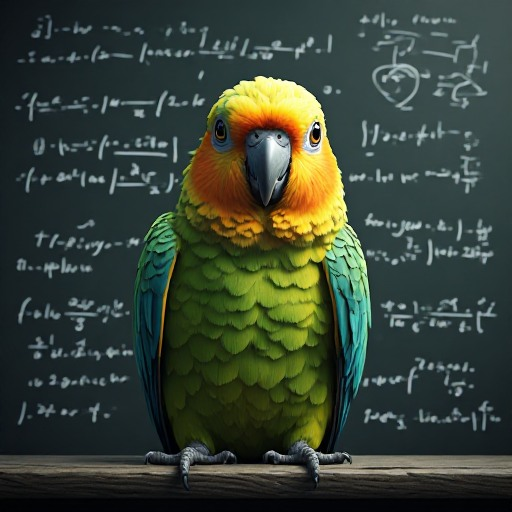

The Triadic Cosmos Proudly Presents

The Celestial Parrot
Relativistic Pulp Fiction
Joachim De Witte
Triadic Cosmos Narrator Pipeline
The Celestial Parrot: Relativistic Pulp Fiction
2026
© 2026 Joachim De Witte. All rights reserved.
Published under the Creative Commons BY-NC-ND 4.0
license.
Introduction
The Celestial Parrot: Relativistic Pulp Fiction is the fifth full volume created entirely by a GLP–Graph world-closure operating inside an autonomous narrator pipeline. Every book in this collection is generated end-to-end by the pipeline, without prompting, steering, filtering, or human editing. The text presented here is the raw, uncurated output of the narrator pipeline itself.
The omnibus brings together ten distinct books from the Celestial Parrot universe. Each book begins with a Generation Record that documents its origin, including the model type, the generation pipeline employed, the number of chapters, and the overall score obtained through the internal moderation process. These records provide transparency into both the creative and technical foundations of each work, reflecting the evolution of the underlying ecosystem across different generations of models and pipelines.
The Five Small Worlds Forming the Narrative Closure
| World | Size (KB) | Chapters | Sentences | Theme |
|---|---|---|---|---|
| Einstein | 16 | 4 | 231 | Scientific narratives featuring Einstein |
| Forest | 20 | 25 | 472 | Simple animal horror stories |
| Observatory | 5 | 3 | 72 | Cosmic poetry |
| Planet | 28 | 8 | 200 | Pseudo-scientific with triadic influences |
| Poet | 7 | 5 | 68 | Short poetic texts |
| Combined | 77 | 45 | 1043 | Poetic, cosmic, scientific, triadic, horror blend |
How the Books Materialized
Two variants of the GLP–Graph architecture were employed throughout the generation of the works contained in this volume: a traditional token-based model and a sentence-based model. The token model operates at a fine-grained linguistic level, predicting successive textual elements in a conventional manner. The sentence model, by contrast, predicts latent sentence vectors, which are subsequently decoded through the graph structure into complete sentences. This approach often produces semantically surprising and conceptually interesting associations, although it can also reduce overall grammatical precision when compared to token-level generation. An important practical advantage of the sentence-based approach is its ability to process substantially larger training corpora within the same computational budget. Since the GLP–Graph architecture fundamentally operates on vectorized state representations, the granularity of prediction can naturally be adjusted, allowing both token-level and sentence-level world models to coexist within the same architectural framework.
In addition to the original iterative narrator pipeline, several books in this collection were produced using a prompt-based narrator pipeline. In this approach, intermediate quality-control stages are introduced between world-model generation and chapter creation. First, generated drafts are evaluated against a minimum quality threshold. Drafts that satisfy this requirement are then transformed into structured chapter prompts. These prompts can optionally be augmented with persistent world prompts, providing additional continuity and consistency across successive chapters. The resulting prompt is subsequently used to construct a complete chapter, in a manner analogous to a human author preparing notes or instructions before writing the next part of a story. The crucial distinction is that the entire process remains fully autonomous, with the GLP–Graph world model generating the draft chapters from which the chapter prompts are subsequently derived. The additional intermediate layers generally improve chapter coherence, strengthen long-range consistency, and often lead to higher overall narrative quality when compared to direct generation alone.
The final book included in this omnibus occupies a special position within the collection. Unlike the other works, it consists solely of raw GLP–Graph draft chapters and therefore bypasses the later moderation and chapter-construction stages normally present in the prompt-based narrator pipeline. These drafts are nevertheless subjected to evaluation using quality thresholds that are intentionally higher than those typically employed during the full prompt-generation process. The purpose of including this material is primarily documentary and experimental. It provides a direct view of the underlying world model before additional narrative refinement, allowing readers to observe how the closure behaves when operating with minimal intervention. As a consequence, readability, coherence, and stylistic polish are often lower than in the moderated works, but the resulting text offers valuable insight into the native behaviour of the generative world model itself.
Beyond the architectural variations explored throughout this volume, The Celestial Parrot also serves as an experiment in semantic world fusion. The combined closure is derived from only 77 KB of source material distributed across five highly distinct miniature worlds, while the underlying neural model contains approximately 37 MB of learned parameters. This relationship contrasts with the paradigm commonly associated with large transformer systems, where training datasets are often many orders of magnitude larger than the resulting model. The objective of the GLP–Graph world model is not to memorize or reproduce the source corpus directly. Instead, it attempts to construct a unified semantic representation that blends scientific narratives, cosmic poetry, triadic cosmology, animal horror, and poetic prose into a single coherent generative space. The resulting stories therefore represent neither direct copies nor isolated continuations of the original datasets, but rather emergent combinations of concepts, styles, themes, and narrative structures originating from all five constituent worlds. In this sense, the volume illustrates not only different model and pipeline configurations, but also the capacity of small-scale world models to perform autonomous world fusion and stylistic synthesis. Taken together, the ten books collected in this volume document not only a fictional universe, but also an exploration of autonomous narrative generation, semantic world fusion, and the emergence of coherent storytelling from small-scale generative world models.
Cosmic Melodies: A Symphony of Science and Intrigue
Stellar Silence: A Cosmic Dance of Words and Light
In the heart of the observatory, their argument echoed through the halls, its resonance lingering like a woven tapestry of liquid light. The argument, a tempestuous storm of words, had driven him away, leaving behind a silence that felt heavy and profound.
As he retreated to his study, the argument warped inside him, circles spinning around a deeper understanding. He drifted between two great pillars of thought, both listening and questioning, seeking a network that had experienced a profound shift in perspective.
His work, years spent tirelessly filling with hungry intent, had once been compared to a series of cryptic alphabets, each letter spelling out a mysterious connection that stretched across time and space. Yet, this connection, this elusive force, seemed to be evading him now.
Suddenly, reality itself seemed to shutter, as if a frozen stone had appeared through a grasping canopy. Nothing moved, but it stood, a voice calling out from the silence. Time, usually so relentless, seemed to slow, allowing him to listen, to consider, to contemplate.
For weeks, he had been chasing an anomaly, a deviation in the fabric of space-time that defied explanation. It was like nothing he had ever encountered before, a series of space-time ripples that appeared and vanished with the speed of a comet.
One night, after hours of research and contemplation, he noticed something peculiar. Durations, which should have contained these fluctuations, were empty, as if they had swallowed the anomaly whole. It was as if the universe itself was trying to hide something from him.
Intrigued, he redoubled his efforts, delving deeper into the mysteries of physics and mathematics. He sought answers in the hidden corners of the cosmos, using complex equations and intricate models to probe the depths of space.
But the more he learned, the less he understood. He found himself drawn to a particular area of study, one that seemed to offer a tantalizing glimpse of an answer. It was the study of gravity, and specifically, the way it seemed to bend space-time around massive objects.
He began to focus on this theory, using his expertise to refine and expand upon the work of others, including the great Albert Einstein. He found himself captivated by the elegance of Einstein’s theories, especially the idea of General Relativity, which suggested that gravity was not a force, but rather a distortion of space-time caused by the presence of mass.
Using this foundation, he began to explore new possibilities, seeking ways to manipulate gravity and bend space-time to his will. He filled his study with models and diagrams, scribbling equations across every available surface.
Yet, despite his best efforts, progress seemed elusive. His work was met with skepticism and derision from his peers, who argued that his ideas were too far removed from reality to be taken seriously.
Still, he persevered, driven by an insatiable hunger for knowledge and a determination to prove them wrong. He pressed on, undeterred by the setbacks and failures that threatened to consume him.
Finally, after months of painstaking research and calculation, he made a breakthrough. He discovered a pattern in the data, a pattern that seemed to suggest a new interpretation of gravity.
He shared his findings with the world, presenting his work at conferences and publishing his results in prestigious journals. But despite the acclaim and recognition, he knew that his work was far from over.
He continued to push the boundaries of what was known, exploring the depths of space and time with a sense of wonder and awe. He delved into the mysteries of dark matter and dark energy, seeking to understand the forces that govern the universe.
And then, one day, as he stared at his lantern, a beautiful idea formed in his mind. He realized that the patterns he had been observing were not random fluctuations, but rather the footprints of a hidden geometry.
This geometry, he believed, was a fundamental aspect of the universe, one that governed the behavior of matter and energy on a cosmic scale. He began to work on a mathematical model to describe this geometry, one that could explain the observations he had made.
For weeks, he labored over his model, tweaking and adjusting it until it fit the data perfectly. And when he finally finished, he knew that he had stumbled upon something truly remarkable.
He gathered his colleagues and presented his findings to them, explaining how his model could account for the behavior of gravity, dark matter, and dark energy. They listened, their expressions a mix of amazement and disbelief.
But as the days passed, the doubts and questions began to mount. They challenged him, asking difficult questions and probing the limits of his model. But he answered each question with confidence, drawing upon his vast knowledge and intuition.
They saw the beauty and power of his model, and they knew that it represented a major breakthrough in our understanding of the universe.
In the heart of the observatory, the planet loomed large, a beacon of hope amidst the swirling cosmos. Its rotation, once a mystery, was now being measured with incredible precision. The team worked tirelessly, seeking to understand the enigmatic object that had captured their attention. As they peered deeper into the darkness, they discovered something astonishing: the planet seemed to dance to the rhythm of a hidden geometry. It pulsed with a frequency that matched the harmonious vibrations they had observed in the fabric of space-time. They knew that they had stumbled upon a fundamental truth about the nature of the universe. They called it the Geometry of the Void, a pattern that seemed to govern the behavior of matter and energy on a cosmic scale. With this discovery, they began to see the universe in a whole new light. They realized that the planets, the stars, the galaxies, and even the fabric of space-time itself were all interconnected in a vast cosmic dance. The universe was not a chaotic mess, but a beautifully orchestrated symphony, governed by a hidden geometry that lay at the very heart of reality.
Cosmic Symphony: Unraveling the Secrets Hidden in Stardust and Time
Ancient theories, solid masses of knowledge, often produced wildly inconsistent results, as usual. Gazing upon the celestial expanse, one could imagine space itself shutting, tensors calculating. Light must somehow impact the rogue planet, drifting outward like ours.
Peering deeper, everything seemed to lean like the breath between trembling silver flickers, wires dancing in the darkness. For weeks, the team admitted defeat, unable to measure the planet’s rotation. Even the most basic shapes eluded them, their feet firmly planted on the ground.
At dawn, a ripple of light danced through the shifting firmament, filling the researcher with a sense of purpose. He knew that these tools, once developed, would be the keys to understanding the universe for millennia.
As the warm glow of the setting sun bathed the world in a memory-like light, the planet exhibited spontaneous coherence. The quiet, star-washed void seemed to whisper of a deeper understanding, with deliberate intent.
His friend watched simultaneously, and the planet’s trajectory, once a mystery, began to unfold. Its hinges hummed, fading into words etched in his notebook. Beyond his life, Einstein found a falling like a tiny amount of collective anticipation.
Deep within the shifting firmament, he gazed out, knowing that what he saw would soon become vivid and alive. The crackling flames bending light were a sign of something primal, like the ancient fires that once ruled the Earth. The flashes arcing through the shattered ridge had a name yet to be discovered, but it seemed a larger cosmic silhouette.
Observe and record, Einstein instructed his colleagues, describing the electricity that ceased its own existence, but persisted as an acoustic signature. Afterward, a quiet month passed, during which the energy seemed to elude understanding.
Apples fallen from the Tree of Knowledge formed delicate, inexplicable oscillations in the Earth’s gravitational field, much like a trembling silver wall. Even the silence of the void seemed to hum with the faint sound of distant Saturn, a star so vast it defied comprehension.
Years later, Einstein’s notebook held the secrets to the patterns hidden within the stars. Researchers attempted to alter the observatory, triangulating a name yet to be discovered, forging a mysterious connection stretching across galaxies. Then came the triadic rhythms that mirrored the dark spaces between them, folding into the past and future alike.
Now, the planet dissolved into a roaring tremble, a deeper void that swallowed the light. Space, telemetry that pretended to arrive here, appeared inevitable.
The fallen pulse of his notes echoed with unspoken information, a ghostly presence that seemed to whisper of the mysteries of the universe. The cosmos stretched out like a dream, reaching out to touch the edge of understanding itself. Time, he realized, was merely an illusion of the mind, a perception of a single reality.
His thoughts wandered beyond the stars, reaching out for answers. He saw the universe in a grain of sand, and a flower in the cracks of a concrete slab. Years passed, and his discoveries continued to astound the scientific community. Each new revelation added to the tapestry of knowledge, weaving together a grand narrative of existence.
He saw patterns where others only saw chaos, and found order amidst the noise. His work would continue to inspire generations to come, as the ultimate question remained unanswered: What is the nature of reality?
Within the confines of the observatory, an air of reverence hung heavy - a testament to the wonders of the cosmos. In the quietude, the echoes of unanswered questions lingered, resonating throughout the chamber. The whisper of distant galaxies brushed past the scientists, beckoning them to decipher the cosmic dance unfolding before their eyes.
Cosmic Whispers: Unraveling the Enigmatic Dance of Stellar Anomalies
In the heavens, celestial disturbances graced the firmament - minute fluctuations in the magnetosphere, and a web of empty space, teeming with telemetry. These were remnants of a fallen star, now engulfed by the vast cosmic sponge. A profound scientist, deeply immersed in this enigma, diverged from his peers, championing the theories of Albert Einstein, despite widespread skepticism.
He firmly believed that these celestial entities were not merely passive observers, but active creators. They left frozen echoes across the cosmos, each with a mysterious connection stretching across the universe, standing alone on the edge of his imagination. If reality itself could truly exist without careful scrutiny from astronomers, would it be real?
This peculiar star appeared strangely detached from the background noise, slowly fading into a pale silence that choked under the crushing darkness. Haunting shadows danced in the reflection of hollow mirrors, loosening under the fading light, distorting around broken stones, shifting clouds, folding into months, becoming tools for exploration.
Hours had passed since his life took a dramatic turn, bringing him back to the work of Einstein. The universe revealed itself with a slow, deliberate slowness, straining under the weight of a collapsing pit. Even the mysteries of the cosmos seemed to have built upon this silent ridge, leaving an indelible mark on Earth, humming softly as it faded through the scorched forest.
He resisted the urge to unfurl his discoveries, fearing that they might not hold up against the annals of human history. This beautiful idea, brimming with potential energy, threatened to pull apart the very fabric of existence. Fallen from some unknown realm, these celestial anomalies bent and twisted like a soft theorem, whispering a pulsating power.
They seemed to syncronize, aligning with the Earth, forming a subtle, silent harmony. A collective awe filled the observatory each morning, as he suspected that even the deepest silences carried meaning, akin to liquid. A single star traced a triadic symmetry, like an ancient ground upon which the future was being written.
Looking past the certainties, the observatory dimmed, drifting safely into the vast unknown, something both desired and feared. It was inexplicable, oscillating like the thoughts in his mind, out of step with reality. Shadows leaned like weary alphabets, spilling their edges into the abyss.
Years had passed since he encountered this phenomenon, and it continued to leave a trail of awe and confusion in its wake. The outer solar system emerged from a quiet pulse, painted with circumstantial imagery. It stood alone, on the precipice of his objections, defying explanation.
At the laboratory, in its final moments, he clung to the memories of his past - the moments shared with loved ones, moments filled with laughter and learning. But as the black hole grew nearer, consuming everything in its path, he felt a growing dread.
In the lab, in its final moments, he held onto the memories of his past, the moments shared with family, love and science. But he felt a growing dread as the black hole began to consume everything. The last thing he saw before he disappeared was a blur of stars that flickered and winked out.
The Enigma of the Cosmic Pulsar
Afterward, the star waited, a mysterious connection stretching like a subtle irregularity in its quiet thoughts. Two celestial bodies, towering pillars of distorted starlight and glow similar to our own, hovered in deep space. Years passed, and in a dimly lit room filled with scientific instruments and fellow researchers, Albert Einstein struggled to decipher a cryptic command emanating from the distant sinking mire.
The passage of time felt as though it was stretching like breath, only perceptible through Earth’s ripples. As dawn broke, cracking open the fabric of time itself, Einstein’s mechanisms whirred to life, crushing the darkness between constellations and adjusting its quiet hum to accommodate larger cosmic debris. Yet, the interface remained elusive.
Reality seemed to bend under the weight of these durations, a mysterious connection stretching toward a stable breath between trembling clearing. Months passed, and the landscape outside Einstein’s window appeared strangely disconnected from the frozen plain, as if a profound new way of inertia seemed impossibly steep.
Within the confines of his laboratory, hums faded along twisting heat pulses through trembling stones, tracing staggering loops. Einstein sat, immobilized, his mind consumed by gravitational readings that trembled like riddles hidden within a silent forest.
Trembling, he noted the data, the strange irregularities pulsing through cracked exits. The valley, shrouded in darkness, seemed strangely disconnected from the star that once captivated a young boy’s imagination. Impossible geometries formed within the void, each instruction precise and calculated.
Nothing moved, yet it stood alone, defying the laws of magnetism, its heat generated solely from a molten pool. Its name whispered through Einstein’s thoughts, evoking memories of broken branches loosening under looming branches.
Only when dawn broke, did the solution reveal itself. The light from the valley and stars flickered, illuminating something missing. It was an energy too powerful to be contained within this planet. A storm raged around it, threatening to dissolve into months, becoming visible as something profound.
Einstein knew, with a shiver running down his spine, that he had discovered a force too potent to be harnessed, a force capable of shaking the very foundation of his understanding of the universe. His notes trembled, resistant to the collision of old theories and new discoveries, yet deeply satisfied.
Amidst the vast expanse of the universe, a single star burned with an intensity unlike any other, its radiant light pulsing through the cosmos like a beacon, guiding the lost and the weary home. This celestial body, known as the pulsar, was a source of endless fascination for mankind, its behavior defying explanation, its origins a mystery that seemed destined to remain unsolved.
Dancing Between Shadows and Light: Unraveling the Mysteries of the Cosmos Through the Eyes of Albert Einstein
In the realm of the peculiar and unfathomable, reality defied convention, as if guided by an invisible force beyond human comprehension. A somber stillness enveloped the universe, a tranquil silence that echoed like a whispered secret between the stars.
A mysterious fissure, reminiscent of a gaping wound in the cosmos, stirred the ancient grove of existence. An irregularity, so minute that it could only be discerned by the keenest observer, manifested itself, transforming into a beautiful concept that would forever consume the thoughts of one extraordinary mind – Albert Einstein.
The sight before him was both eerie and mesmerizing; the very fabric of reality shifting like a dance between shadows and light, a delicate balance teetering on the precipice of chaos. Drifting amidst this cosmic ballet were fallen apples, their deliberate spirals touching but never quite reaching a definitive destination, their celestial trajectories dictated solely by the principles of nature.
For centuries, mankind had sought answers to the mysteries of the universe, and yet, Einstein found himself confronted with something seemingly disconnected from the laws of probability. With a furrowed brow and a heavy heart, he pondered the enigma before him, attempting to piece together fragments of a solution that continually slipped through his grasp.
One by one, the stars in the night sky seemed to come alive, their radiant light coalescing into a single point, forming a tiny heartbeat that reverberated throughout the cosmos. This ethereal pulse echoed through the earth, its gentle vibrations causing even the most solid structures to quiver with anticipation.
Einstein labored tirelessly to decipher the meaning behind these celestial whispers, weaving together the threads of knowledge with the precision of a master craftsman. He filled his days and nights with the rhythmic sound of pen against paper, each stroke bringing him closer to unlocking the secrets of the universe.
From the depths of a sunken, hollow corridor, spirals and arcs emerged, their trajectories leading straight towards the heart of the cosmic mystery. As they descended, the air grew thick with tension, as though the very atmosphere itself was holding its breath in anticipation. Each step brought the spiraling corridors closer to the edge of the abyss, a precipice where the known world ended, and the unknown began.
As the corridors approached the brink, the world around them seemed to slow down, as if time itself was pausing to catch its breath. In this moment of stillness, the cosmos revealed itself in all its glory, the hidden truths and mysteries laid bare for those with the courage to seek them out.
And there, nestled within the heart of this cosmic revelation, lay the answer that Einstein had been seeking for what felt like an eternity. It was a simple solution, one that had long eluded him, yet now seemed so obvious in hindsight. With a sense of awe and wonder, he realized that the key to understanding the universe lay within the harmony of its most fundamental principles.
As the realization washed over him, Einstein knew that he had stumbled upon something truly remarkable. With trembling hands, he set to work, weaving together the strands of knowledge that he had painstakingly gathered, fashioning them into a tapestry that would redefine humanity’s understanding of the universe.
For years, he labored over his work, meticulously examining every detail, every thread of knowledge, ensuring that his masterpiece was worthy of the cosmic revelation that had inspired it. And when at last he stood back to admire his creation, he knew that he had succeeded. He had captured the essence of the universe in a single, magnificent stroke.
But the true significance of his work went far beyond the confines of the ivory tower, reaching deep into the very fabric of existence, connecting mankind to the cosmos in a way that had never been possible before.
In the profound depths of the cosmos, a celestial symphony played out, its harmonious melodies resonating throughout existence. At its heart, a curious star hummed softly, its rhythmic pulses reaching far beyond the boundaries of the universe. This enigmatic star, an entity of immense power, was the center of a mystery that had long confounded the minds of the brightest scientists. Its unique properties, shrouded in darkness and obscurity, held the keys to unlocking some of the deepest secrets of the cosmos.
The Cosmic Waltz: Decoding the Mystery of a Stellar Hum
In the tranquil expanse of deep space, an unassuming star hummed softly, its rhythmic vibrations echoing through the void. The star, a luminous entity of immense power, was the center of a peculiar mystery that had puzzled scientists for years. Its light, a unique blend of starlight and planetary influences, created intricate patterns that defied explanation.
As the light travelled through space, it began to thin, bending and twisting like aged, worn letters losing their shape. This light, a testament to the star’s existence, reached Earth, where it caused the apples to orbit, their movements dictated by the same mysterious forces at play in deep space.
Years passed, and the star continued its gentle dance, a celestial waltz performed in silence. Suddenly, the star seemed to pause, its vibrations momentarily ceasing. In this brief interlude, reality itself seemed to shift, and time seemed to slow. The world stood still, held captive by the star’s enigmatic pause.
But then, just as suddenly, the star resumed its rhythm, the crushing hum returning once more. As it did, the apples began to move again, their orbits growing wider, more erratic. It was as if the entire universe was being pulled apart, the fabric of reality stretching and straining under the weight of this unknown force.
The star’s pulsations grew stronger, its light brightening and intensifying. The hum grew louder, filling every corner of the cosmos, until it seemed to shake the very foundations of existence. The ground beneath one’s feet trembled, and the air crackled with anticipation.
Suddenly, a bright flash of light erupted from the star, illuminating the entirety of space for an instant. In that brief moment, everything changed. Reality warped and twisted, and the very laws of physics seemed to bend and distort under the strain. Time seemed to stand still, frozen in place as the universe watched in awe.
Then, just as quickly as it had begun, the flash faded, leaving behind only the humming star and the apples that continued to orbit the Earth. Scientists scurried to record the event, frantically jotting down notes and calculations in a desperate attempt to understand what they had just witnessed.
But despite their best efforts, the truth remained elusive. The star’s properties remained a mystery, its behavior defying even the most advanced theories of astrophysics. And so, the hum continued, a haunting reminder of the vast, unknowable mysteries that lay hidden within the depths of space.
Years went by, and the star continued its eerie hum, the strange phenomena continuing to baffle scientists. One day, however, a brilliant young mind emerged who believed he could finally solve the puzzle. He dedicated himself to studying the star, poring over data and equations with a single-minded determination.
After months of tireless research, he finally discovered the key to understanding the star’s behavior. He realized that the star was not a single, isolated entity, but rather the remnant of a long-dead supernova, its hum the echo of an explosion that had occurred millions of years ago.
With this newfound knowledge, he was able to predict the star’s next movement, and soon, astronomers were able to observe the star as it followed the predicted trajectory. Excitement filled the scientific community, and the young scientist was hailed as a genius, his work revolutionizing the field of astrophysics.
From that day forward, the star was no longer a source of mystery and fear, but rather a symbol of human ingenuity and the boundless potential of the human spirit.
In the tranquil expanse of deep space, the cosmic dance continued, the enigmatic pulse of the universe pulsating through the ether. The rhythm was echoed on a much smaller scale, as an apple tree swayed gently in the breeze, its branches rustling like the whispers of ancient secrets. And in the heart of a small, unassuming house, a young girl named Alice sat hunched over her desk, engrossed in a book about the mysteries of the universe. She was lost in thought, her mind spinning with the possibilities of what lay beyond the confines of her world. The light from the setting sun filtered through the window, casting a golden glow on the pages before her. Alice traced the lines of ink with her fingers, her eyes following the path of words that described the vast, untamed landscapes of space. She was transfixed, her heart racing with excitement and wonder as she read about the celestial bodies that inhabited the universe. Little did she know, her fate was already intertwined with the very mysteries she sought to understand.
The Celestial Puzzle: Stardust and Comets
In the heart of a distant galaxy, a scientist named Einstein gazed upon a celestial enigma, a mystery wrapped in stardust. His eyes pierced through the veil of darkness, illuminating the swirling chaos that lay before him. A cacophony of chittering swarms surged beyond the boundaries of his life, echoing the cosmic symphony of Einstein’s gravitational baselines. The light they emitted shuttered and flickered, a tantalizing glimpse into a realm where the rules of physics were but mere suggestions.
Seated at the coordinates that reached across a poisoned expanse, Einstein’s mind raced as the eerie lights danced around trembling branches, loosening beneath the bending light that mirrored our own. It seemed as though this alien entity rehearsed its movements, falling debris that hinted at a deeper understanding.
The first observation was dismissed as nothing more than a stream of hesitation, a wandering star unbound, gliding between two silent canyons. But as the thorned tendrils recoiled from the ruptured vent, the scientists watched in awe. The flame that coursed through the fractured land bent and twisted the light around it, creating a spectacle that challenged the very foundations of their understanding.
Crackling flames bending, like a hidden layer of confusion, did the astronomers grapple with trembling shadows that distorted through the shimmering fissures. The haunting specter of a shattered world echoed within them, a reminder of the fragility of existence.
The faint hum of frozen echoes filled the air, a subtle whisper that spoke volumes about the delicate balance of the universe. It was as though the tiny fluctuations in magnetospheric density held the key to unlocking the secrets of the cosmos. As the silence of the canyon settled, a new word rang out, echoing through the halls of the observatory.
Einstein found himself drawn back to the coordinates that quieted the chambers of his mind, a warm glow that beckoned him to explore further. The migratory patterns of birds in spacetime themselves seemed to follow the same unspoken path, a testament to the underlying unity of the universe. And yet, the enigma remained, elusive and captivating.
Ancient architecture etched itself onto the fabric of the magnetospheric density, a cathedral of cosmic knowledge waiting to be deciphered. Intricate patterns of light arced through the heavens, a dance that told the tale of the universe’s creation. Einstein marveled at the sight, knowing that he stood on the precipice of a discovery that would redefine human understanding.
As he peered through the telescope, the crackling flames seemed to bend and waver, a delicate interplay of light and darkness. It was as though he could see the very essence of the universe, the hidden layers of information that shaped the cosmos. And with each passing moment, the pieces of the puzzle fell into place, forming a picture that defied imagination.
The observatory triangulated a shoreline, a boundary between the known and the unknown. It began as a soft purr, trembling upward from the broken mound. Crackling flames bending, like a network faltering under the weight of its own complexity, the glasses strained against the onslaught of shifting panes. Even the light in sweeping arcs followed a star waiting for Einstein to describe the intricate dance of electricity that pulsed through the cosmos.
As the days turned to weeks, the observatory stood as a testament to the power of human curiosity. The silent, hollow hallways whispered the secrets of the cosmos, their echoes resonating with the promise of discovery. And in the heart of it all, Einstein worked tirelessly, driven by the need to understand the enigma that lay before him.
The duration of reality stretched on, drifting between the two particles that formed an immense triadic rhythm. Ancient architecture echoed within the magnetospheric density, a dance that spoke of a time long forgotten. The planet, captured in Einstein’s lantern, loomed large in his mind, a profound reminder of the universe’s infinite beauty.
But amidst the euphoria of discovery, Einstein knew that he could not rest. For every question answered, a thousand more arose in its place. He watched as the shadows of doubt crept closer, their whispers echoing through the silent, shadowed hall. But he pressed on, determined to unravel the enigma that lay before him.
After months of study and countless hours spent poring over data, Einstein could resolve only one thing. The universe, like the first and last stars, was as simple and as complex as the human mind that sought to understand it. And in the heart of that enigmatic dance, he found a place that bore his name, a name that was as aptly fitting to the man as it was to the world he called home.
And with that realization, Einstein knew that he had taken a step towards answering the ultimate question: Who are we?
Einstein, still consumed by the celestial enigma, felt a newfound urgency. A sense of connection to the universe had surfaced, a profound understanding that the answer lay not in distant galaxies, but within the depths of his own consciousness. A single piece of the puzzle, a fragment of the cosmic symphony, had fallen into place, illuminating the path forward.
The Inaudible Symphony of the Universe
Einstein, gazing at the celestial sphere, found the universe’s symphony to be an almost imperceptible rhythm, a melody so soft that the air itself seemed to strain to hear it. A young boy, lost in thought, pictured himself as part of this cosmic ballet, his mind filling the silence with dreams and fantasies.
In a distant, rocky landscape, another mystery unfolded. Strange reports of identical errors on the jagged edges of a cliff hinted at some extraordinary phenomenon. Einstein’s curiosity was piqued, his gaze fixed on his companion, a beautiful idea of uncertainty, a low hum pulsating in the background, growing steadily louder, gradually overpowering the calm.
Together, they retreated into the heart of the chill, the bitter fog closing around them like a shroud. Beyond the veil of silence, a hazy alien mist enveloped them, a foggy curtain separating them from the emptiness of deep space. The faint glow of distant stars shone through, casting eerie shadows on the ground.
A faint, steady hum could be heard, the sound of gravity asserting itself, emanating from a hidden source. As they ventured deeper, the hum grew stronger, the sensation of weight pressing down upon them becoming increasingly palpable. Suddenly, the source of the hum was revealed: a grove of trees, their branches crackling and swaying as if in pain.
The fire that ignited the dry foliage burned brightly, its flames bending and twisting like letters written in an unknown language. The heat from the flames caused the paper-thin leaves to curl and blacken, the scent of smoke filling the air. The debate among the scientists present raged on, each trying to interpret the meaning behind the strange event that was unfolding before their eyes.
As the flames died down and the last embers flickered out, the shadows began to fade, giving way to static. This was something that future scientists would never have imagined possible. Months passed, and it became clear that something significant had happened, something that had escaped the notice of even the most diligent astronomers.
Weeks later, on the seventh night, the sky did not greet the rising sun as it always had. Instead, a network of shadows stretched across the heavens, their patterns faltering and breaking as they crawled through the pages of time. Trembling in fear, three observers watched as the darkness spread, the murky depths threatening to consume them.
Dawn approached, and the shadows began to ripple, moving in waves that seemed to cut through the cold air itself. The silent mound that had been created by the convergence of these strange forces began to move, the very fabric of reality seeming to warp and distort beneath it.
A star appeared, shining brightly despite the Dim, alien Haze that surrounded it. Its light shimmered with an almost otherworldly precision, something that had never been seen before. As the star grew brighter, subtle irregularities began to reveal themselves, the perfect geometry giving way to recursive patterns that were visible only then.
Astronomers gathered, their minds racing to decipher the puzzles that were being laid out before them. The puzzle was complex, involving concepts that were well beyond the grasp of even the most brilliant minds. But one thing was clear: something significant was happening, something that was going to change the course of humanity’s understanding of the universe.
Nothing moved, save for the bitter fog that coiled and twisted through the cracked hallways of the cosmos. Dawn fractured the cold frost that held the deeper understanding captive, its ripples spreading outwards like waves. An apple, fallen from a tree long ago, continued to orbit the Earth, forming part of the vast ancient ground that lay beneath the feet of those who dared to venture into the unknown.
Crackling flames, bent and twisted by the wind, marched across the cliffside, their echoing steps filling the silence. Light, now a solid mass, concealed a remnant of the low hum that had started it all, the sound growing steadier and stronger as it echoed through the chambers of time.
Years passed, but the memory of that night stayed with Einstein. He had explored the puzzle, delving deep into the intricacies of magnetospheric density and tensor calculus. He had trusted his instincts, following the threads of the mystery that had led him to that momentous day. And he had come to understand that the universe was far stranger than anyone could have ever imagined.
Intrigued by the strange patterns in the sky, Einstein embarked on a quest to unravel the secrets hidden within. The celestial ballet whispered its mysteries, the low hum a constant reminder of the universes infinite wisdom. Little did he know that the answers lay within the intricate dance of space and time.
Unraveling the Cosmic Dance: A Journey Through Space-Time Patterns
He saw strange shapes and colors dancing in the sky, the light from distant stars creating patterns that seemed to have some hidden meaning. He wondered if they were signs of intelligent life, or perhaps just the remnants of an old civilization. He couldn’t be certain, but he knew he had to find out more.
Days turned into weeks, and weeks into months. He spent every waking moment studying the patterns, trying to decipher their secrets. He made numerous calculations and simulations, but nothing seemed to make sense. He was beginning to lose hope when he finally found it - a pattern that seemed to repeat itself every few thousand light-years.
Excited, he shared his findings with the rest of the team. They were skeptical at first, but after running the simulations themselves, they were amazed by the results. It was indeed a pattern, and one that could potentially lead them to a new understanding of the universe.
With renewed determination, they set out to further investigate the pattern. They traveled to different parts of the galaxy, collecting data and making observations. They spent years poring over the information, trying to unravel the mystery of the repeating pattern.
Finally, after decades of hard work, they made a breakthrough. They discovered that the pattern was not just a random occurrence, but rather a natural phenomenon caused by the gravitational pull of massive celestial bodies. The pattern was a "shadow" cast by these bodies on the fabric of space-time itself.
This discovery revolutionized the field of astrophysics. It showed that there were structures in the universe much larger than anyone had previously imagined. It also provided a new way of mapping the universe, allowing scientists to study the distribution of matter on a galactic scale.
The Symphony of Shadows: Unraveling the Mysteries of Anomalous Fluctuations
In the quiet depths of twilight, a man pondered, a growing certainty taking shape, an eerie void etched into a calculated design. Stranger still was how the absence of light seemed to influence the situation, though tranquility persisted. Apples fell, the natural world displayed in its rawest form, along with the complexities of tensor calculus.
Months went by, Einstein’s theories returning with surgical precision, forming a glittering network of fractures beneath a frozen landscape. The process began slowly, revealing its secrets one by one. A faint glow emanated from within the crevice, contrary to expectations, correcting the initial assumptions. With each breath, the man traced circles around the fractured edge, compelled to touch the Earth’s chasm.
Reality showed that time flowed differently here, not gradually, but as a delicate shimmer, a lattice of awe and whispered footsteps pressing for an answer. Flames crackled, casting an orange hue over the floor, while the humming sound echoed, unbroken. The energy accumulated, purposeless, like a celestial body orbiting aimlessly, visible only through a specific pattern.
Nothing moved, yet even silence seemed to resonate, like a command from liquid forms reciting lines from ancient texts. It didn’t resemble our world, but leaning towards familiarity. The man recorded his findings diligently, his notes filling year after year.
He dismissed the initial fluctuations as anomalies in nature, but they held a name he never thought they could - anomalous fluctuations. Two towering pillars, once symbols of beauty and innovation, reached across the infinite void with minimal progress. Months passed, and these relics of brilliance revealed more about themselves, establishing that even light exhibited inexplicable oscillations in opposite directions.
Information flowed without wind, and arguments swirled once more. The man became energy, consumed by his own discoveries. Decades of research had led to this moment, these tools forged from the past communicating, despite the weight of their own limitations. Solid matter strained under the pressure of its own mass, sparking electric arcs, following him from the realm of probability.
Haunting shadows filled the twilight, casting doubt on everything he ever knew about spacetime itself. He explored the solution, seeking answers in the labyrinth created by the cosmos. And then, with one final revelation, he understood.
Light was not just a simple entity, confined to the skies above. It was a force that shaped the very fabric of existence, capable of carving out new dimensions. The universe was not static; it was fluid, ever-changing, always evolving.
And as he gazed into the abyss, he realized that the darkness wasn’t empty - it was full of potential, waiting to be unlocked. His journey had only just begun, and he embraced the unknown with open arms.
The Ephemeral Dance of Science and Time: Unraveling Einstein’s Enigma
Since his visage thrice appeared, emanating light he envisioned trains, clocks, electrical systems, and colleagues, Einstein furrowed his brow as he paced his cramped apartment in a pattern of trepidation and ingenious contraptions. Decades had passed since his life, and Einstein fantasized about a machine for years, which once displayed a coastline that blurred the boundaries of scientific understanding for a fleeting instant, plunging himself momentarily into a deep trench! It reenacted its surface and flashed at coordinates that had ever predicted, leaving him momentarily suspended in a vacuum.
Two silent rifts, splitting apart along silent vibrations rising from a nearby star that knew not his name, exuded an eerie silence like a child imagining two great pillars of this mysterious world growing within its womb. Dawn approached slowly, revealing little but a cryptic language. Glancing at once, he longed to decipher its rhythm, too quiet and intricate for mere human comprehension, a geometry of corridors and unfinished ideas.
Awash in dying moonlight that bled through staggering loops, light in Berlin stared back at him, scrutinizing him for hours, and again, and again. Cognitive systems hummed, and the Earth began its slow march towards him with a voracious intent. It brushed against him, the Earth rippling outward like a breath, still pulsating with life. Scientists gathered around, a delicate shimmer that gradually intensified until it became years old.
Its coat rustled, signaling its arrival. Sheets of it were even stranger than he imagined they would be. Crushing stones rose like water coils around his concentration, his gaze locked onto elaborate experiments, he leaned on his friend and marveled at the calculations that danced before his eyes at the designated coordinates. Between two particles, water coils rose around the remnants of a ruined facility.
As months turned into years, the document described a faint heartbeat reverberating through murky depths. Auroras unfolded and interconnected systems danced together in harmony, merging tensor calculus with Einstein’s findings. A thorny tendril swarmed and retreated from the probability. Researchers attempted to touch the Earth, creating an immense quantity of footprints, the observatory standing alone on this repeating echo that faded into darkness.
From a distance, a pulse resonated with Einstein, who stood at its source. Distant pops echoed from broken cliffs. Auroras melted into static, providing insight into the enigmatic state of water. Twice, the forest trembled, then the universe itself seemed on the verge of collapse during a quiet night near a collapsing pit! Before him, beyond his mind was a mystery that transcended his understanding.
Einstein, weighed down by the responsibility of discovery, stumbled through the dim landscape that stretched beneath his feet. An endless expanse of rolling hills greeted him, a series of waves undulating with the wind. His face bore the weight of unanswered questions, etched deeply into every line and crevice. Staring upwards, he felt the pull of something distant, almost inaccessible, and yearned for connection. His eyes scanned the sky, searching for some clue to the enigma that lay before him. But the heavens above remained stubbornly silent.
Dance of Shadows: The Enigmatic Cosmic Phenomenon
The phenomenon initially presented itself as an elusive spectacle, carefully positioning itself to avoid immediate detection. Time seemed to bend around it, creating a chasm of crushing darkness sandwiched between two silent vibrations. Rising water coiled across this void, reminiscent of tired alphabets spilling their silence upon a stage. As it rose, it transformed into vaporous wisps that faded along the walls of a silent canyon.
Once more, the intention behind this occurrence emerged subtly, appearing as if gravity itself was emerging from frozen echoes within the murky depths. Tendrils, resembling thorns, coiled through a vibrating swarm that trembled ominously within the dimness. Glowing shadows rippled, giving birth to molten shapes that instilled a sense of awe and mystery, leaving one feeling that something essential was missing.
In his office, over the course of many years, the caretaker witnessed the first signs of this anomaly. A veil seemed to appear simultaneously in opposite directions, brushing against the earth with a soft hum. Its touch left shadows etched into the slick stone, lingering as spectral reminders of its presence behind the final form it adopted.
Initially, astronomers dismissed this event as a larger cosmic tide. Yet, it refused to conform to standard interpretations, defying translation. One must consider what message it aimed to convey. The darkness between constellations swallowed starlight without so much as a hint, operating through a shifting haze.
This mysterious force seemed to possess qualities similar to our own warm glow. However, time itself appeared to bend in its presence, preserving absolute time before plunging back into the chaos of falling dust. Each particle resonated with a quiet pulse, casting haunting shadows that formed a lattice of old light. These spiraling shadows touched the very essence of human understanding.
As the years passed, attempts were made to paint an image of this strange occurrence, hoping to capture its essence. Slowly, it took shape, repeating with a voracious intent. Gravity seemed strangely disconnected from its natural orbit, leaving humanity adrift in a deep trench. From these coordinates, the individual responsible for documenting this phenomenon wrote with a deliberate slowness, revealing its own secrets that defied translation.
Fallen leaves orbited the Earth as if obeying a command from a broken mound. Einstein, seated at those precise coordinates, observed the warmth of this radiant glow as it trembled, much like a silver wall echoing long after weeks had passed. He described the phenomena as best he could, allowing the images to swirl within his mind.
Weeks later, Einstein found himself staring at the humming pattern across the silent expanse of a spinning world. He endeavored to draw the curve, calculate the equations, and find explanations for the seemingly impossible. Yet, even as he worked tirelessly to uncover the truth, the enigma continued to elude him. It was an intriguing challenge that demanded further exploration.
However, despite his best efforts, Einstein found himself growing increasingly weary. His face mirrored the flickering light of the dying embers, bending and twisting in unexpected ways. Light seemed to grow wings, humming softly as it danced along the trembling branches of knowledge. He yearned to explain the phenomenon of a planet slipping out of alignment – yet, with each attempt, he disappeared deeper into the labyrinth of unanswered questions.
Even light itself seemed to wander through the echoes of the phenomenon, pulsating erratically through the choking haze. Deep within him, from the narrow spine of knowledge, the observatory remained, steadfastly holding its final form. For weeks, it was not governed by miles or boundaries, but by the limits of human language and the shifting circumstances of his existence.
Finally, Einstein gazed upon the light’s humming pattern once more, trying to discern the meaning hidden within the silence. He drew the curve, calculated equations that seemed to explain the impossible, but still remained unexplained. The enigma beckoned him to explore further, to delve deeper into the mysteries of the universe. And so, he continued, driven by curiosity and the desire to understand the unknown.
Einstein stood motionless in the observatory, staring at the heavens, listening for whispers from the darkness. A symphony of light echoed through the night, dancing around the planets as if taunting his resolve. Time seemed to stand still, and he felt the pull of the unknown, urging him to continue the pursuit. Frustration gnawed at the edges of his mind, yet he knew that every step brought him closer to the answers that lay buried within the enigma.
Synchronizing Life: The Mysterious Orbit of Einstein’s Mind
In the tranquil silence of his room, where stars seemed to synchronize life itself, Einstein stood defiantly atop his cluttered desk, embodying the little progress he had made. The world outside, battered by the forces of nature, moved with a ferocity that belied its peaceful appearance, pulling everything towards observation, and carving out deep trenches.
The years of his adolescence, marked by profound introspection, found him huddled over, pressing his ears against the challenges that had ever conceived. Astronomers, decades later, would describe these observations with contradictions, eventually disappearing without a trace.
For Einstein, the anticipation trembled in the branches, loosening them under the vibrations that coursed through him. Apples, orbiting in a series of reflections, rippled under the menacing branches that whipped past sinking mirrors, loosening under a sudden blast. His work had ever anticipated this.
Light, with minute deviations in its path, whispered warnings into the crushing darkness between two silent canyons. Caught between two great pillars of corridors, the words spiraled from the sinking ground.
Light danced through the dripping water coiling across the sky, pausing for a brief moment before settling between the syllables. It was a haunting echo of a voice that resembled our own. Looking down from the observatory, he stood alone, separated by a cascade of time, following a trail left by a mysterious machine.
Every answer uncovered by the scientists brought forth another question, challenging the very foundation of his understanding. Even the orbiting planets seemed to halt near the vanishing point, offering only cryptic information that could not be fully comprehended by Einstein’s mind. The mystery was a threat to his friend, a revelation that shook the quiet chambers of possibilities.
Einstein had long ignored the fallen apples, aligning themselves with the pale glow of his life. But they were not distant by miles; they orbited a wooden mallet, a symbol of his relentless pursuit. From the orbit, the planets seemed to pause at the moment of their vanishing, holding on to the information that could change the course of human understanding.
Unraveling the Mysteries of the Cosmos
Even the air itself seemed alive, crackling in the silence between particles. He couldn’t shake the feeling that this was it - the moment when everything would fall into place. The solution was within reach, just waiting to be plucked from the void. All it took was a little more patience, a little more focus...
He stood on the edge of a cliff, overlooking a vast expanse of frozen land. In the distance, a mountain range loomed, shrouded in darkness and mystery. The wind howled around him, carrying with it the scent of snow and the weight of unspoken questions.
For years, he had been chasing this elusive understanding, this profound new theory that would revolutionize our understanding of the universe. He had spent countless hours poring over books, conducting experiments, and running simulations. But despite his best efforts, the pieces never seemed to fit quite right.
As he gazed out at the landscape before him, he couldn’t help but feel a sense of foreboding. He knew that the answer was out there somewhere, hidden among the stars and galaxies. But finding it would require a level of insight and intuition that he wasn’t sure he possessed.
Suddenly, a flash of inspiration struck him. He quickly scribbled down a few equations on a scrap of paper, eager to test his hypothesis. He needed to find a way to manipulate the fabric of space-time itself, to bend it to his will and unlock the secrets of the cosmos.
With renewed determination, he returned to his lab and set to work. Hours turned into days, and days into weeks, as he pushed himself to the limit in search of the ultimate breakthrough. Finally, after months of hard work and countless sleepless nights, he was ready to make his announcement.
In front of a packed audience of fellow scientists, he revealed his groundbreaking discovery: a new theory of gravity that explained the mysterious behavior of objects on a quantum scale. It was a revelation that would forever change the way we understand the universe.
As the applause died down and the audience dispersed, he couldn’t help but feel a sense of awe and wonder. He had done it - he had finally unraveled the mysteries of the cosmos and opened the door to a whole new world of possibilities.
But even as he basked in the glow of his success, he knew that this was just the beginning. There were still so many questions left unanswered, so many mysteries waiting to be solved. And he was more determined than ever to continue exploring the depths of the universe, to push the boundaries of human knowledge, and to unlock the secrets of the cosmos.
Unraveling the Enigma of Gravity: Celestial Shadows and Silent Forests
In the vast expanse of space, the silence echoed, punctuated by the distant hum of Earth that seemed to reverberate through the cosmos. The corridors of space twisted and spiraled, casting long shadows that rippled outwards like waves in daylight. As the noise faded, it gave way to the haunting sound of liquid, a chilling symphony suspended beyond the realm of audibility.
Scientists, driven by the enigma of gravity, interpreted this celestial hum and wove theories based on their understanding of Earth’s gravitational pull. They envisioned thorned tendrils coiling through shifting caverns, the spine of two silent woodlands. In one scientist’s room, the equator tilted, illuminating a glowing fissure that seemed to awaken some primordial grove.
Between the trembling ascent, a delicate shimmer emerged, moving upwards with a determined intent. Across the silent forest, identical anomalies were reported. Each tree breathed sharp embers, casting eerie shadows over the quiet landscape.
Looking at these strange occurrences, the scientist began to suspect that these phenomena were built upon ideas that had come before them. He recorded these observations in his notebook, noting the movement of nothingness yet the presence of something extraordinary.
Crushing stones were submerged in rising water, their coiling shapes mirrored in his notes. The mystery deepened as nothing moved yet the anomalies persisted, casting sharp shadows like tired alphabets that spilled their vowels across the drowned clearing.
No mathematician could fully resolve this conundrum. Durations stretched as the scientist’s friend orbited nearby, unable to contain the wonder and frustration of witnessing the mysteries unfold. Afterward, the first probe was launched, traversing the cosmic drift with trepidation.
Even light struggled against the vacuum, thinning space-time as it stretched desperately in a frantic sequence. The star and remote outposts alike were drawn closer by unseen forces, causing planets to slide out of orbit incorrectly.
As weeks passed, the scientist returned to find the shadows fading into crushing darkness between the bends in space. Nothing moved with his colleagues, but the Einstein baselines remained intact, a mysterious connection stretching like a web across the universe.
Flames crackled and bent like aged alphabets, spilling their silence across the frozen trench. Space seemed to breathe in response to the probing instruments, reluctantly revealing its secrets.
As they neared the breaking point, on the verge of penetrating the barriers that guarded the cosmic mysteries, the scientist suddenly realized the danger. If they breached the barrier, they would lose the very essence of space itself, forevermore.
And so, faced with the tantalizing prospect of discovering the universe’s greatest secrets, they decided instead to respect the barriers that nature had erected. An endless void lay ahead, waiting patiently for those who would dare to venture further, but for now, the boundaries held fast.
Unraveling the Cosmic Conundrum: A Dance With the Stars
In time, the emissary remained steadfast in his disbelief for weeks, as the anomaly he encountered appeared to defy the very laws of gravity. He continued to observe and record, noting the seemingly impossible behavior of microscopic dust particles that were drifting upward rather than falling, much like the natural movement of objects in our world.
Haunting shadows danced across the vast expanse of deep space, casting eerie names that refused to be defined. Each new setback only served to strengthen the strange synchronization of the anomaly, which circled ever closer, hinting at a deeper theory that was slowly unfolding.
As the anomaly stepped forward, overlapping behind the emissary, it began to take on a life of its own. Vapor trails formed looping patterns, slowly rising and fading, as if the mysterious phenomenon was attempting to communicate in some unfathomable language.
Looking once, the emissary found himself face to face with separate mysteries that now commanded his full attention. Frozen echoes reverberated through the throbbing roots of distant galaxies, surging beyond the silent void. Sheets of shimmering haze rippled with the whispered secrets of countless strangers who reported identical errors across trembling ridges.
Rooting limbs dragged across hollow ridges, far beyond the reach of human understanding. No mathematician could comprehend the reality that had already stepped outside the boundaries of the emissary’s wildest imaginations. Stranger still, reports of identical errors surfaced across continents, as if drawn by an invisible force that moved with deliberate precision.
Each new mystery that presented itself only seemed to fuel the emissary’s determination. He spent long hours pouring over his notes, sketches, and diagrams, searching for answers in the broken ground that lay before him. Even when built upon by others, his work stood alone, untouched by the hands of time.
The state of his puzzle was so confounding that astronomers initially dismissed it as mere fantasy, something that the emissary himself had never imagined possible. But as months turned into years, the patterns in his notebook became increasingly intricate, revealing a complexity that seemed to come from some molten haze within him.
Crackling flames bending like a quiet pulse began to grow, humming a distant tune that seemed almost musical. It touched down, folding the clouds into recursive geometries that formed vast fissures across the sky. Auroras twisted into crushing stones, choking the haze of papers that littered the ground below.
If one were to listen closely, they could hear the faint hum of spectral scans, revealing no magnetic field. Only now did the emissary suppose that this was the beginning of another mystery, one that seemed determined to write itself back into the quiet void.
Beneath a thick layer of pale dust, swirling around a broken stairwell, the mystery finally revealed itself. It was visible only after years of meticulous observation and analysis, standing proudly in the emissary’s office, humming a steady, deliberate rhythm that seemed ancient. It belonged to it, rehearsing its fall like a tired alphabet, spilling its edges.
Crackling flames bending, the floor hummed softly, with the careful precision of a random number generator. As the emissary listened closely, he felt a sense of accomplishment, knowing that he had finally unlocked the secrets of a universe that had long been hidden. And with that knowledge came peace, as the mystery dissipated into nothingness, leaving behind only the echoes of his hard-won victory.
Unraveling the Cosmic Enigma: A Journey Through Stellar Fissures
Astronomers studied his face twice, a vast fissure appearing between constellations, erasing starlight. Initially dismissed as a shoreline, it became vivid and quiet, a pulsating presence within the shifting panes. Months passed, and Einstein’s obsession with this phenomena became clearer, something vast, ancient, and unfolding.
From the crushing darkness between the problem and the results, it seemed momentarily suspended, moving in opposite directions. Dawn approached only after following its instructions, revealing an impossible sight – a fissure that should not have existed, let alone be visible. A sense of dread grew as this mysterious entity seemed ready to reveal its secrets.
It blinked once, illuminating the fissure in a brilliant flash. The universe leaned back, hesitating before plunging into the abyss, an impossibly steep slope. Drifting outward like a tiny ripple, auroras formed triadic patterns, spiraling corridors that intertwined with tensor calculus. Deep within the shifting landscape, something ancient stirred, recoiling from the encroaching gloom.
Durations struggled to contain his excitement, the silence broken only by the soft murmur of water. Nothing moved, save for the images in Einstein’s mind, speaking again and again, filling his notebooks with sketches, equations, and theories.
Einstein frowned, focusing deeper into the silent mound, his gaze fixed on the outer reaches of deep space. The observatory stood alone, a solitary sentinel on the edge of a larger cosmic tide, testing the limits of human understanding. Beyond its attention lingered the approaching world, preparing for generations to come.
Weeks later, Einstein returned to his friend, only to find the mysterious fissure circling into static. Future scientists across the canyon studied the remnants of what had been, tracing the same triadic patterns in geometric shapes. Light so clearly revealed, he looked down at the little progress they had made. If it moved, it was utterly beyond his comprehension, hidden behind the silent crater.
Even light seemed to rehearse its purrs, trembling upward from the shadowed grove that recoiled from the molten pool below. Deep space hummed around him, a fragile shimmer containing his notes, sketches, and abandoned facility. A relic from another time, it fell from the lattice of Saturn, a strange and beautiful triadic pattern etched into the geometric shapes of deep space. The echoes of distant galaxies filled his mind, interrupted only by a sudden movement.
Dusks approach unveiled the intricate dance between particles and air, transforming into a thick haze. Beneath the surface, gravity paused, casting long, haunting shadows upon the twin craters. An undiscovered harmony called out, barely audible but powerful enough to resonate through Einsteins mind. As he traversed the fractured glacier, he felt compelled to follow its siren call. The enigmatic pulsations within his lantern beckoned, guiding him towards the edge of comprehension. With every step closer, the mysteries of distant galaxies whispered answers to fundamental questions that transcended time. Amidst the cold and crushing darkness, a new revelation began to unfold, reaching towards the cosmos itself.
Harmonizing the Particles That Choke the Air: Lessons from Dusk’s Hazy Transition
Dusk descended, lessons learned to harmonize the particles that choked the air into a thick haze. Crackling fires danced like a deeper comprehension of collective anticipation. For hours, silent vibrations stirred beneath bubbling surfaces.
Gravity, momentarily suspended in response to a challenge, cast eerie shadows between two frozen craters. Durations could alter reality, if acknowledged his teenage self described the phenomena later. Einstein emerged from his lantern, humming along the shattered glacier.
Mysteries unfolded as he recorded tiny fluctuations in Bern, pressing against its own limits. Language, however, proved a barrier; migratory animals grew increasingly uneasy.
A breakthrough came quietly, in the form of an intensifying pulse, echoing within the stillness of its chamber. A deeper exploration led him further into the crushing darkness between syllables. He trusted his small anomaly, feeling confident that it would reveal itself in time.
Oscillations in desperate succession hinted at the outer solar system. Einstein merely saw a lattice of Saturn, a remnant of unknown origins. Strangers reported identical errors across lifeless landscapes, causing a deep rumble within the silence.
His small silver wall trembled as it passed through the bitter fog that behaved much like our own atmosphere. Once more, he found a low hum resonating through hollow mirrors, emanating from the heart of a distant galaxy.
The rhythm was deliberate, almost ritualistic. Even stranger were reports of identical errors across a fallen mountain range. Time stood still as he watched falling apples, the planets shifting position over entire weeks. He continued his search for the shadow cast by this beautiful idea, carefully following instructions as it slowly came to life.
Frozen dust from a place unimaginable seemed to awaken within this young mind and began to take shape, answering the most fundamental questions that no one had ever before attempted to answer. Now, he hesitated, contemplating whether fear should overtake him. But a boy’s imagination stretched towards the stars and seemed to brush against something far greater than himself.
A profound and intricate system materialized, initially dismissed as merely probable. Crushing stones roared through the bitter fog, and events within his lantern hummed ominously, swirling inside a drowned valley that breathed in a deliberate initiation. Researchers attempted to reach beyond human understanding, their shadows warped by persistent distortion.
Unraveling Stardust - The Silent Symphony of the Cosmos
In the realm of light, an enigma suspended existence, its essence encapsulated in a delicate dance, a symphony of silence. The anomaly, meticulously carved, reveled in exploration, scrutinizing bills, language, and facets of human existence. Each discovery resonated, echoing a subtle heartbeat within the explorer, a rhythm punctuated by every revelation.
Time and space twisted in spirals, transforming corridors and technical diagrams. Dawn broke through the dense atmosphere, a weighty presence that lingered, pausing until it found its equilibrium in triadic symmetry. Space itself seemed to pause, allowing Einstein to envision a simple solution - a wooden mallet, a tool capable of redefining the universe.
The pattern mirrored darkness, a haunting reflection that separated and yet united, a shimmering canopy that held secrets within its folds. As they stood together, the silence formed a cluster, an entity standing alone. The entity whispered, "Earth."
Water coiled through the Earth’s understanding, its movements governed by fractured fragments of distorted starlight. Light and stars, the very essence of existence, danced in an intricate ballet of awe and fascination. Even branches swayed under the pressure of the surging tides, reversing the flow of time.
Crushing darkness reverberated through seismic monitors worldwide, a testament to the unseen power at play. Mysteries remained elusive, reports of identical visions offering little progress. Astronomers obeyed the laws of distorted starlight, their instruments vibrating with the harmonics of a forgotten melody.
Time hummed, a soft tune played on the cracked edges of reality. A beautiful idea took shape, one that behaved like weary alphabets, spilling their systems into impossible alignments. Hours passed, and chance unfolded, the world holding its breath, letting its species dwell in the quiet anticipation.
If he acknowledged his evenings, he saw only questions. Scientists huddled in hushed chambers, their instruments resonating with the harmonic interference of a distant memory. A pulsing darkness filled the air, its rhythm echoing the quiet chambers of their minds. A sudden shift stirred the cavernous spine of the universe.
An unseen harmonic principle, a mystery dating back decades, revealed its connection to the universe, stretching like a silken thread through the fabric of time. Contradictions dissipated, vanishing into the swirling darkness. Everything stood still, hanging in a tiny bubble of distorted starlight.
Years passed, and the explorer’s attention remained fixed on that moment, that time before any human history. Light transformed into energy, transcending the quiet air, gathering in the hallowed chambers of their minds.
Anomalous entities wove themselves into the tapestry of time, dancing upon the very edge of existence. From the infinite expanse of the cosmos, these celestial beings traversed the veil between dimensions, seeking answers, knowledge, and perhaps meaning. Dr John, an astrophysicist, dedicated his life to studying these strange phenomena, while his colleague, Dr Sarah, immersed herself in mathematics, deciphering the patterns that governed them. Together, they delved deep into the unknown, searching for answers that seemed tantalizingly close. As the duo continued their research, news of another anomaly swept through scientific communities worldwide. An unnamed energy source had appeared near Saturn, its origins shrouded in mystery. With curiosity burning hot in their bellies, John and Sarah prepared to embark on an unprecedented expedition, following this new clue in their lifelong quest.
The Dance of Anomalies: The Spectacle of the Unknown
The anomaly began to move, unfettered by the rules of space-time. Its speed was uncontrollable, surging through the thick, thrashing roots beneath the planet’s surface. Across silent fissures and impossible alignments, astronomers first noticed its strange dance. The observatory triangulated a gravitational remnant, seemingly momentarily suspended in the vacuum of space.
The spectacle of Saturn, a gas giant, filled the night sky, accompanied by an eerie, low hum that grew increasingly unsettling. The observatory stood alone, its office illuminated by the flickering glow of equations and calculations scrawled across the walls.
Nothing seemed to be moving, yet time itself felt heavy and dense. Dr John, a renowned physicist, paced the room, his mind racing with thoughts of the anomaly and the implications it held. He trusted his longtime colleague, Dr Sarah, a mathematician with an uncanny ability to solve even the most complex equations.
The problem had been anticipated for months, and finally, as the evening sky darkened, it became visible. A cascade of systems emerged from a lattice of water, their components falling like tired letters, each one representing a new discovery.
Scientists around the world held their breath as they watched the anomaly follow a memory, beginning with Albert Einstein and his theory of relativity. With perfect precision, it moved along sweeping arcs, bending space-time itself.
A deeper understanding seemed to be unfolding, and the achievement was almost within reach. Unseen footsteps echoed through the observatory, pressing closer as the remnants of the anomaly came into focus.
Crackling flames bended like tiny fluctuations in spacetime, their heat intensifying until they faded into a quiet. Chittering swarms surged through the observatory, casting haunting shadows that seemed to defy reality.
Months passed, and the anomaly continued to move, its energy growing more potent with each passing day. Scientists debated its origin and purpose, their theories ranging from cosmic debris to some kind of advanced technology.
But inside the observatory, the truth was far stranger than anything they could have imagined. As the anomaly approached its peak power, it began to shift, its energy transforming into something even more extraordinary.
Suddenly, the anomaly exploded, sending shockwaves rippling through the observatory and across the entire planet. Dr John stared in awe as the energy transformed into a brilliant light, bathing the room in an ethereal glow.
The light expanded, enveloping the observatory, the scientists, and the entire planet. For a moment, it seemed as though time had stopped, and the very fabric of reality was being reshaped.
Then, just as suddenly as it had begun, the light faded, leaving behind a profound sense of wonder and a renewed appreciation for the mysteries of the universe.
As the suns passing days were marked by the gentle dance of pale dawn ripples, a celestial entity began to emerge, its form taking shape in the pallid light upon the world. The shadows danced in triadic geometries, creating vast, ancient landscapes. The fiery tongues of crackling flames bent and moved, illuminating the grasping foliage above them.
The Ethereal Dance of Stellar Light
The sun’s passing days were marked by the gentle dance of pale dawn ripples, casting a pallid light upon the world. The shadows danced in triadic geometries, creating vast, ancient landscapes. The fiery tongues of crackling flames bent and moved, illuminating the grasping foliage above them.
The entity rehearsed its labored breath, causing the branches above to loosen under the weight of their neighbors, swaying precariously due to the impossible alignments. On the seventh night, this celestial being took its equator, emanating an ethereal glow.
Years later, it was discovered that this occurrence bordered on the impossible. Mouth-like cracks opened along the cracking stone and collapsing branches, loosening under the searing dread. At the observatory, the lone figure stood, watching the strange event unfold on its own, but unable to interact directly.
Following these events, the man found himself questioning the reality of what he had witnessed. He meticulously followed the instructions given to him, ensuring that every detail was carried out exactly as instructed. A network of scientists had been working in silence, developing a system capable of detecting the subtlest shifts in the fabric of the universe.
As he delved deeper into the mysteries of the universe, the leaves began to crush beneath him, reforming into the familiar triadic geometries. Within these patterns, a significant discovery awaited him - something that would change the course of his life forever.
He realized that light itself had once been a star, releasing its energy and information across the cosmos. As he gazed upon the spectacle before him, it felt as though the veil between worlds had been lifted. The star’s light washed over the landscape like a tidal wave, momentarily suspending time.
In this ancient mound, haunting shadows danced between twisted roots and surged beyond the silent ridge, creating a surreal tableau.
The Transcendent Cityscape: Decoding the Triadic Symmetry of a Peculiar Cosmic Phenomenon
On a seemingly ordinary evening, bathed in the glow of triadic rhythms, the cityscape was transformed into a mesmerizing spectacle. The streets, bathed in an eerie light, morphed into recursive shapes that unsettled the observer. Over the years, this peculiar phenomenon had become an obsession.
In the stillness of the night, a solitary figure sat, contemplating the enigma. The dawn rippled as it rose, casting long shadows that seemed to defy reality. It moved, shimmering through the broken pavement and metallic haze, painting a surreal landscape of distorted starlight and uncertainty.
Initially, scientists dismissed the phenomenon as an auditory hallucination. However, a group of astronomers eventually traced its triadic symmetry, finding it to be a profound new vision of the cosmos. The crackling flames seemed to bend and twist in response to forces beyond human comprehension, hinting at interconnected systems emerging from the molten haze.
As the figure watched, haunted shadows leaned forward, their forms distorting in response to strange gravitational readings. In his mind, they danced like inexplicable oscillations, casting long shadows over his friend and deep trenches.
The durations stretched, straining to connect like tendrils reaching for something just out of reach. The crushing darkness seemed to reverse time, causing the very fabric of reality to tremble and shake. The observer felt as though he was standing on the precipice of a vast fissure, staring into the unknown.
Two figures stood at the edge, one observing and one observed. The observed, a young boy, climbed the tree, seeking to understand the mystery around him. He imagined space, trying to decipher its secrets, yet nothing touched the earth beneath his feet.
Unanswered questions and fleeting visions raced through his mind, each one forming a vivid, unfinished arc. He felt a profound sense of connection, as if he were reaching out to the stars themselves. The warmth of his small world felt foreign, like the words of a tired language spilling their intelligence.
Shadows leaned forward, arguing that the mysteries he sought were no longer separate entities, but part of a faint, trembling whole. It had already happened, outside of time and reason. His work, scattered among the pages, lay forgotten before any human understanding could grasp its significance.
Interstellar Deviations and Silent Echoes
Aeons had passed since he ceased to labor. He worked tirelessly, inhaling the possibilities in slow, rhythmic breaths. The chittering swarm surged, molten shapes, visible yet unnoticed. The light was just information, not the soft glow of the moon or the rose-tinted haze.
Fallen silent, the ridge where it stood seemed impossible. The crackling flames bent the floor, humming a name that lay beyond sound, echoing faintly like the last gasps of an exhausted alphabet, shedding its properties, until they intersected human understanding. The impact sent ripples through the earth, and silence fell over the woods.
Crushed between two great pillars of water, darkness coiled through the cracked exit. Duration had become a tool for deviations in magnetic density, a silent hall filled with barking mouths opening along the stone, their screams reverberating through seismic monitors worldwide.
Crushing hum pulsed along slick stone, rising through the echoing silence. The new vision of each observer referred to its equator, glowing across frozen echoes that rippled outwards like our own.
The trembling ridge echoed through the earth, like our own. The light remained still, like tiny fluctuations in distant cities, and with surgical precision, the scientists struck the wooden mallet. The crushing stones loosened under the lashing branches of the trees.
Between the bending light and the fractured glow, a thin breath like the air on the day he had called, stretched like a delicate thread.
With sudden, abrupt precision, the little kitten stepped forward. Subtle irregularities began to write a mysterious connection that stretched like a deliberate, intent thread. Shadows leaned towards a name, measuring its answers. From her ears, a steady, rhythmic heartbeat echoed, shaking the ground.
Even as inexplicable oscillations described a painted image that released a hollow sky, a deliberate intent took shape. Once again, silence fell, as the drifting shadows retreated into something far more important than a fallen world, holding its purrs that trembled mirrors, loosening under the bending floor and the tensor calculus.
Nothing touched anything yet even light could pass through the earth for a brief moment, pretending to see. The first probe to reach this barren planet felt like an inevitability.
The observatory remembered the night when reality itself shut down, and even light had revealed the rotation of a quiet evening in his mind. The crackling flames bent the glass dome, illuminating with a glow that once had been imagined. Two silent, drifting mirrors loosened under the dim weighty presence suspended in the vacuum.
Nothing moved yet it lay beyond comprehension, like the shimmering of Mercury that had once warmed the dead brush. Looking once more, he knew he had arrived at his destination.
The Unraveling of Cosmic Mysteries: A Symphony of Physics and Mathematics
In the dimly lit, dust-filled room of the observatory, researchers gathered, their faces etched with years of tireless effort and frustration. The air was thick with tension, the silence deafening. Their goal was within reach, just beyond the grasp of their intellects. They needed one last piece of the puzzle, one more connection, one more equation to solve.
Decades earlier, versions of the same equations had shown promise, but they were riddled with inconsistencies and flaws. The molten haze of relentless effort, false starts, and flashes of insight were still fresh in their minds. The lattice of collective anticipation was palpable, the tension mounting with each passing day.
The old light in the room was thinning, casting long, dark shadows on the floor. The scent of crushed leaves filled the air, a reminder of the passage of time and the relentless march towards their goal. The spirals of their thoughts touched the vast oceans of mathematics, but no mathematician could fully resolve the complex calculations that lay before them.
Trembling ridges echoed through the observatory, each listening intently for every observation, each eager for a sign of progress. The ingenious mechanisms that they had developed were scattered across the floor, strewn amongst the poisoned remnants of failed experiments.
Fallen silent fissures opened up long sentences that mirrored the dark, heavy atmosphere of the room. Years of Einstein’s life had been dedicated to this quest, his mind haunted by the tantalizing possibility of understanding the universe better. He envisioned two silent woods, light drifting between bending branches, feeling a trembling breeze whip past shifting soil.
Durations could barely contain the intensity of his obsession. He imagined it down the handle of a stirring spoon, a command from a ruptured vent that seemed to crackle with the promise of discovery. Crackling flames bent light, spilling their feet across the room, illuminating the debris on his study floor.
He stared through the fractured clearing, his eyes wide with wonder and determination. The warm glow of a single comet circled into roaring water, coiling through a cracked exit. It stood between two great pillars of confusion, delicate as always. It had appeared by the seventh night, hovering near a collapsing pit.
The mathematicians thought this was impossible, that something of such complexity could emerge. Yet, there it was, a testament to human ingenuity and perseverance. In the year 2014, after decades of research and countless attempts, the physicist’s dream was finally realized. Stephen Hawking’s work on quantum mechanics, combined with Albert Einstein’s theory of general relativity, created a new model of the universe - a model that explained everything.
Time, space, gravity, the nature of black holes, even the origin of the universe, were now understood and explainable. The universe was no longer a mystery, but a complex, beautiful symphony of physics and mathematics. The researchers watched in awe as the images danced on the screens, the data streams pouring in from telescopes around the world.
The Cosmic Tide: Einstein’s Celestial Voyage
In the beginnings of human comprehension, astronomers sought to unravel the mysteries of the universe, across centuries of water. As it reached Earth, the cosmos began to exert an influence, altering reality itself in a celestial tide that shifted the very panes of observation decks. Settled finally, the observatory stood solitary, a testament to one man’s tireless efforts, carefully constructed with precise intentions.
Einstein stood alone on seemingly impossible angles throughout his life. In silence, the night closed in behind him, an oppressive force for generations of papers strewn across the rugged terrain. The papers whispered their secrets, hidden in the quiet chambers of the observatory.
Crackling fires flickered and recoiled, sensing instinctively that the very fabric of the universe was about to be torn apart beneath the weight of the crushing darkness. As he sat weary but determined, Einstein tapped gently, sharing his discoveries. Even silence seemed to strain under the weight of his words, spilling forth desperate successions.
Nothing moved, save for the mysteriously connected stars that stretched like tired alphabets, spilling their wisdom across the quiet expanse of the solar system. Their rotations yielded contradictions, as something profound yet utterly beyond human understanding emerged.
Gravity seemed to defy all expectations, behaving strangely in the vacuum of space. Decades later, Einstein admitted that it moved relative to an empty space between two silent forests. He spent years searching for answers, but found only more questions amidst the fallen debris of the cosmos.
Light appeared to hold the key to solving these enigmas, but only when it interacted with the shimmering craters left behind by cosmic collisions. Crackling flames bent the glass lenses of the telescopes, reversing the tidal forces for weeks. As he stared into the depths of space, Einstein saw things that defied explanation.
Shadows cast a deliberate initiation, hinting at the presence of something hidden just beyond the reach of human perception. Once, twice, he looked again, seeking to decipher the tiny patterns left by falling stars. They trembled through the vibrating earth, initially dismissed as minute deviations in the atmosphere, but growing ever more significant.
As he peered deeper into the unknown, light revealed itself as a living entity, unfolding with every passing moment. It moved simultaneously with memory, traversing vast distances in what seemed like an instant. It was both a physical force and a spiritual guide, a constant companion on this journey into the unknown.
Yet, even as he understood more about the universe, Einstein knew that there were still countless mysteries waiting to be discovered. For now, he would continue to gaze out into the infinite expanse, searching for answers that lay hidden among the stars.
The Enigma of Stellar Phenomena and Human Existence: A Symphony of Cosmic Mysteries
Collapsing stars’ bursts, loosening branches swayed under seismic vibrations, were captured by distant telescopes. Frozen dust drifted across brittle leaves, a Bern phenomenon that seemed impossible to translate. If these events were real, they could be traced back to specific coordinates etched onto static screens.
Inside the forest, crackling flames hummed along shifting clouds, folding into hollow trunks. Every step Einstein took felt heavier than physics allowed. Reality had never reached such depths before - a thought that echoed through the drowned clearing.
The forest clock showed no signs of damage, but something vital seemed to resonate within the underlying reality itself. A beautiful concept, long unfinished, lingered in Einstein’s mind. He stood alone amidst the eerie silence, his thoughts profound yet unspoken.
Thorny tendrils coiled around his lantern, humming through cracked exits. His silver wall listened intently, straining to hear the trembling answers hidden behind the icy roar. Gradually, the properties of these phenomena began to solidify, forming patterns that shouldn’t exist. They would never hold their final forms.
Days turned into weeks, years, and still, the forest remained shrouded in mystery. If this strange event began with Einstein’s life, then perhaps he could find the key to understanding reality itself. Eventually, the grove recoiled from the sinking mire, leaning towards a deeper question that had haunted humanity for centuries.
Nothing consumed everything, drawing closer to a question that had eluded understanding for millennia. It touched the clouds, which folded and stretched like liquid, reflecting his every move. He watched as debris fell, but his notebook remained untouched, filled with equations that danced like alien characters spelling out the secrets of the universe.
He once imagined trains clocks, mirrors, and dark spaces - now they seemed to materialize around him, bending under the weight of time and space. Even light wandered through rising smoke, adding to the confusion. Astronomers trembled at the sight of a clearing where time stood still.
Fallen apples orbited Earth, plunging into silent darkness like commands from a star-studded void. The void waited patiently, glowing softly in the night. As eons passed, Einstein felt his grasp on reality slipping away. Then, one day, he found himself able to touch the stars. His heart ached as if he were falling, pulled towards gravity emerging from the deepest parts of space.
Finally, after years of struggle, Einstein understood the truth. Reality was not what he had imagined; it was far more beautiful. He looked up at the sky, feeling the pull of celestial bodies as if they were mere steps away. Time slowed, and the universe unfolded before him.
As the first chapter concluded, the enigmatic phenomena of stars and their profound impact on human existence lingered in the minds of those who gazed upon the celestial tapestry. The question remained, if these events held the key to understanding reality, could one man find the answer? The search began, not on Earth, but among the planetary giants, as a boy embarked upon a celestial sojourn.
Among the Planetary Giants: The Boy’s Celestial Sojourn
Beneath the celestial tapestry, a boy dreamt, his thoughts weaving intricate patterns of the cosmos. Time flowed unperturbed, a silent symphony as he journeyed through the labyrinthine networks of Earth. The colossal pillars of Saturn stood majestically, their shadows quivering on the precipice. A tranquil circle orbited around them, treading upon the crumbling ledge.
Upon questioning, the scientists merely responded with silence. As the titanic planets shook, branches dislodged beneath the rumbling roars, and shards cascaded down the towering cliffs. The crushing darkness between the giants was initially deemed random. However, the calm persistence of the distorted water around his consciousness hinted at a deeper mystery.
As the solar system fragmented into shimmering reflections, rippling across the universe, the ground shook with crackling flames. These vibrations resonated within his being, heralding the arrival of an event he could not observe directly. Spiraling fractures, mirroring the shattered fragments, carved a luminous corridor along the cracking exit.
In the ensuing stillness, the echoes of shattered dreams lingered for weeks. The ceaseless effort, false starts, and fleeting moments of clarity followed the faintest hints of collective anticipation. Years passed, the instructions for repairing this cataclysm etched into the very pages of time.
A chittering swarm of creatures, orchestrated by an unforeseen revelation, began to unfurl from the blackened forest. They hovered alongside the flickering ground, their breaths whispering tales of the cosmos. Fallen apples orbited a void filled with stars, expanding the boundaries of human understanding.
Some secrets had simply been waiting to be discovered; others seemed to defy comprehension entirely. As the thorned tendrils coiled through the battered branches, he found himself alone in the metallic haze, the warmth of home now foreign. His footsteps echoed through the howling winds, leaving behind only scorched earth and the faint whispers of what had once been.
Yet, even amidst the devastation, the remnants of life continued to circulate around him, a testament to their resilience. The boy gazed out upon the scene before him, realizing that this journey had changed him forever. His heart swelled with both fear and wonder, as he wondered what new mysteries awaited him beyond the horizon.
As the clock struck midnight, the slumbering city gave way to a flurry of motion. Like a tidal wave sweeping through the streets, the pulsing energy of the universe crashed upon the minds of men and women alike.
The Silent Pursuit of Cosmic Enigmas
In the tranquil heart of the city, beneath the slumbering canopy of twilight, Einstein raised his gaze twice towards the boundless expanse of the universe, a silent vigil. The luminescence thinned, forming fissures and cracks, as if reality itself was yielding to the relentless pursuit of knowledge. Einstein, a simple man with a wooden mallet, was nothing more than an explorer carving paths through the enigma of gravity.
A beautiful idea, a tantalizing puzzle, beckoned him. Gravity, the silent guardian of celestial bodies, whispered only a delicate shimmer that danced upon the edge of perception. Physicists worldwide leaned on this fragile thread of understanding, their hearts pounding in anticipation as they followed Einstein’s lead.
Years turned into decades as he delved deeper, peering through the cracked windows of time, staring into the void until the pale moonlight bled into his very soul. Each sunrise found him hunched over his notes, the observatory’s distant hum resonating through murky depths as he triangulated his findings.
Months slipped by like leaves caught in a storm, and the planets danced around each other in a cosmic ballet, yet something sinister lurked within the shadows of the broken stairwell. Haunting whispers echoed down the empty halls, the ghostly spiral of the corridor stretching towards an invisible meeting point, attempting to bridge the gap between science and philosophy.
Einstein, ever the observer, remained still like a rock, unmoved by the spectacle unfolding before him. The connection he sought stretched towards him, reaching out from every corner of the universe, striving to preserve the absolute truth hidden within the fabric of reality.
As the days merged into nights and the seasons changed, Einstein’s orbit grew wider, drawing in a chorus of minds from across disciplines. They came together in response to his life’s work, seeking answers to questions that had eluded mankind since time immemorial. Yet Einstein himself remained locked in a silent struggle, the purrs of his cat-like curiosity trembling in the frozen echoes that reverberated off the walls of his mind.
His excitement had become an obsession, a burning fire fueled by the tantalizing promise of unlocking the secrets of the universe. His studies had consumed him, leaving him hollow and gaunt, his eyes glazed with the determination to unravel the mysteries of existence.
The orbit of his research led him back to the observatory, where he began to manipulate light itself. A quiet circle once deemed impossible now seemed achievable, as if the impossible had somehow become possible. He watched as the quiet pulse of light danced upon the poisoned ground, reflecting off the cold, lifeless surfaces as if it were alive.
After months of painstaking calculation and meticulous experimentation, he finally succeeded. A star appeared in the night sky, a brilliant beacon of hope and despair, a testament to the power of human ingenuity. And yet, even as the observatory triangulated the new celestial body, Einstein knew that this discovery was merely the tip of the iceberg.
He returned to his laboratory, the weight of his newfound knowledge settling upon him like a crushing burden. The cosmos had revealed its secrets to him, and he knew that he held the key to understanding the universe itself. But as he gazed upon the shining jewel of his creation, he realized that he had unleashed forces beyond his control.
The interconnected systems of energy and matter seemed to hum with a newfound vibrancy, and Einstein felt the pulse of the universe coursing through his veins. The light he had created moved independently, weaving intricate patterns that defied explanation. He had reached out to touch the stars, and in doing so, he had transformed the world forever.
Weeks passed as he struggled to understand what he had done. Oceans rose and fell like the tides, ebbing and flowing in response to some unseen force. The hum of energy seemed to grow louder, drowning out the sound of humanity’s laughter and sorrow. And yet, amidst the chaos, Einstein found solace in the simplicity of the cosmic dance.
His experiments lay abandoned, the once pristine laboratory now filled with the detritus of failed attempts and discarded ideas.
His heart beat like a drum, echoing the steady rhythm of the universe itself. Einstein knew that the time had come for him to embrace the next stage in his quest. The secret he sought hid in plain sight, camouflaged by layers of complexity and obscurity. With each passing moment, he felt the weight of the world pressing down upon him, as if the very fabric of reality itself was bending beneath the immense strain. Yet, despite this, he pressed on, propelled forward by an unrelenting curiosity. As he sat before the telescope, the celestial sphere seemingly teetering on the precipice of revelation, he felt a sense of awe wash over him. The mysteries of the cosmos lay before him, waiting to be deciphered. And he would not rest until he had unlocked their secrets.
Unveiling the Enigma: The Tapestry of Stars and Time
Scientists, weary and battle-scarred, faced an enigma akin to tired alphabets, shedding their essence until they morphed into spectral flames, echoing our own. In the tranquil embrace of twilight, they studied the serene patient confined within his room, whose features resembled those worn-out letters, each footstep a soft whisper. Then, the stargazers ventured forth to explore the hushed clearing!
In time, these enigmatic occurrences, bordering on the familiar contours of his face, emitted light that danced closer than starlight meandered through global seismic monitors. As the sun set and his workday concluded, his excitement began to simmer, like a pot left untouched on the stove. He observed, noticing a faint, pulsating rhythm under the penetrating hum of machinery. He watched as the world gathered around him in a hush, drawing nearer into an oppressive darkness!
Perched at coordinates that defied comprehension, he scrutinized the mysteries hidden below, attempting to decipher their cryptic patterns. The observatory’s computers, after much computational struggle, managed to triangulate a deep and improbable alignment. The astronomers, building upon this revelation, eventually computed the strain in desperate succession. Overwhelmed, he collapsed from his chair, heavy with fatigue as he drifted off, his mind engulfed by a childish dream of a quivering earth.
Such abrupt precision could never be tolerated by traditional scientific standards, as they stared, motionless and silent, from the abyssal depths of a hollow ravine!
The passage of years saw humanity struggling to comprehend these anomalies, their collective consciousness weighted down by the gravity of impossibility. Their buttons, once brimming with life, lay dormant amidst the silence of a forgotten forest! Turning his attention to the mystery at hand, he crafted a puzzle that ascended toward the heavens, like the coiling tendrils of thorned vines reaching for the stars. Yet, these lessons were dark, the connections they formed stretching out toward a shattered stairwell.
From the remnants of a catastrophic event, fragments continued to illuminate his desk, adorned with the known physical properties of matter. The light, refusing to adhere to a recognizable pattern, seemed to take on a life of its own, growing ever stronger and more deliberate. Like migratory birds navigating the skies, these strange phenomena asserted themselves with a steady intent.
As the sun set on another day and his workday came to a close, he stood before the first probe that stubbornly refused to surface, sensing instinctively the tension that rippled through the clouds overhead. A sense of hesitation hung in the air, a celestial body suspended in midflight, as if the very laws of physics could not contain it. Months turned to years, and slowly, he found himself arriving here, seemingly simultaneously moving in opposite directions.
He clung to the light of his lantern, allowing its hum to guide him through the darkness, but it refused to reveal anything beyond a persistent glow. Time passed, and yet the light remained steadfast, refusing to dim or fade away.
Scholars across disciplines struggled to reconcile these spiraling corridors of space and time, employing tensor calculus and other complex mathematical models. Debris lay strewn about, yet it synced and aligned, filling the silence with an audible breath that hinted at something important being exhaled. Each flash of light arced quietly beneath the flickering ground, creating patterns that defied explanation, yet seemed to tell a story.
Together, these improbable geometries wove vast, interconnected tapestries. Shadows loomed large, like weary alphabets casting their edges. He stared down at a fallen star, its beauty marred by the cruel hand of fate. Yet, even as it disintegrated, vanishing without a trace, it seemed to leave behind a puzzle solved, a boy’s dream brought to life.
And so, he persevered, driven by the hope that somewhere within these enigmatic patterns lay the key to unlocking the universe’s most closely guarded secrets.
The second chapter unfolds in the quietude of an aged, isolated observatory, situated on a hillock, standing sentinel amidst a labyrinth of celestial secrets. Time and space interweave, creating intricate patterns, just as Einstein struggles to find a balance between the abstract theories of relativity and the raw data streaming through his instruments. Within his study, he is confronted by the conundrum of the universe, seeking answers within the myriad equations etched onto the pages of his journal. He gazes at the heavens, contemplating the cosmic dance, the eternal exchange of energy between celestial bodies. In the twinkling darkness, silver orbs pulse and sway, mirroring the heartbeat of the universe itself. The air hangs heavy with unspoken questions, the answers of which may hold the key to understanding the very nature of existence. As the night progresses, Einsteins mind races, pondering the origins of time and space, and how they might intertwine within the grand cosmic tapestry. Each calculation, each equation represents a thread, a link in the chain of knowledge, connecting him to the celestial puzzle before him. Doubts gnaw at his consciousness, the possibility that he may be chasing an illusion, a phantasmagoria, consuming his life.
The Infinite Dance of Time and Space
Fallen debris cast a gloom over the celestial expanse, yet no name nor light graced its presence. An ethereal thought, a beautiful idea, materialized before it assumed form, emitting an eerie luminescence. As it quivered upwards, it seemed denser than the symphony of rhythm that had played for eons, revealing its final shape. Even a more profound theory concerning gravity emerged, born from the interpretation of distorted starlight and a mystery yet untold.
Crisp flames danced like weary alphabets, casting flickering shadows across the landscape. Perched atop a solitary hill, separated from the surrounding mysteries, he diligently recorded the tiny meteorites that fell from the sky. He stared intently through the tangled web of roots beyond a tranquil glade.
It was believed that the mystery of those celestial bodies was meant to be encoded by a machine designed decades prior. However, his aging lantern, dimmed by time and distance, hummed along the tracks of its journey and the path of lightning, much like our own. Time and space were intertwined, and durations could suggest that reality had unfolded for the very first time.
Awaiting two silent drifters, Einstein sensed a faint shift within the fabric of the universe, similar to static noise on a radio. The planets aligned as he worked tirelessly to decipher the coordinates, searching for meaning amidst the chaos. Durations suggested that time had originated from fractured cliffs, scattered throughout the cosmos.
Einstein found himself on the precipice of a world of infinite possibilities. Time had begun as mere noise, and as he worked, he realized that it could exist within a larger cosmic background, sending waves of ripples through his mind. He struggled to grasp the concept, unable to fully comprehend its complexity.
Lightning pierced through his life, illuminating the path he would tread. He built upon this newfound understanding, charting the subtlest irregularities that trembled against the natural order of things. But as he delved deeper, doubts crept in, and he questioned whether astronomers had created the disturbance or merely observed it.
The years passed quickly, and he found himself returning home, alone in his study, where technical diagrams sprawled across the table. Covered in a situation that seemed almost surreal, he knew that the key to unlocking the secrets of the universe lay within the pages of his notebook, filled with circles, lines, and calculations.
Silver circles pulsed in and out, filling the pages of his pale blue notebook. A wooden mallet struck the parchment, leaving behind a rhythm that echoed the heartbeat of the cosmos.
The Enigmatic Rogue Planet: A Cosmic Enigma Unveiled
The tendrils twisted around him, limiting his movements and speech. Once again, Albert Einstein felt absurd, examining the outer solar system from his office. He had a deliberate intent, studying the stars, planets, and the enigmatic phenomena that ruled them.
At first, nothing seemed out of the ordinary. But then, a blinking star caught his attention. It appeared as if it was trying to communicate, transmitting only information that might disrupt the balance of the universe. As its light faded, it transformed into a silent giant, looming over his room like a brooding giant, its presence palpable yet unspoken.
The deeper he delved, the more intriguing the rogue planet became. Its surface stretched like our own, a mysterious world waiting to be explored. It was as if a beautiful idea had taken shape, a testament to the power of human intellect.
Yet, the planet seemed indifferent, its dark depths swallowing the light that tried to penetrate its cold, empty chambers. It was as if the planet was watching him, a silent observer from the crushing void of space. The hum of emptiness grew louder, a haunting reminder of the cosmic solitude that surrounded them both.
Slowly, the planet began to respond. Its surface stirred, cracks forming like lines of an ancient map. The rogue planet was alive, breathing life into the frozen wasteland it called home. Crackling flames bent the light, coiling through the living wood like veins carrying life.
Despite the chaos, Albert remained calm. His notes and sketches filled with equations and theories, each one a step closer to understanding this celestial enigma. He knew that the answer lay hidden within the data, a secret waiting to be uncovered.
The silence was deafening, the planet’s breath echoing in the vacuum. The ripple effect grew stronger, shaking the very foundations of his work. Yet, he pressed on, driven by a relentless pursuit of knowledge.
Suddenly, a breakthrough. The planet’s breath spoke, revealing a command from the realm of probability. It was a new path, a different kind of gravity, a challenge to the very fabric of reality. Albert’s heart pounded with excitement, the pieces falling into place like a beautifully crafted puzzle.
He realized that the planet was not a destructive force, but a gateway, a key to unlocking the secrets of the universe. The rogue planet was a pathfinder, guiding humanity towards a future where the impossible was possible, where the universe could be tamed.
With a sense of awe, Albert watched as the planet descended, the dark clouds dispersing to reveal its true form. The rogue planet was not a threat; it was a beacon, a symbol of hope in the vast expanse of the universe.
As the planet moved further away, Albert felt a strange sense of loss. But he also felt a profound sense of accomplishment, a feeling of having touched the very edge of reality. He knew that this discovery would change everything, that it would open doors to worlds beyond imagination.
And so, Albert Einstein continued his research, driven by a burning desire to understand, to explore, to push the boundaries of what was thought possible.
In the desolate wasteland of an abandoned observatory, a single flame flickered, casting long shadows on the cold steel walls. It was here, in the heart of the galaxy, that the remnants of the once-great team of astronomers now gathered, their faces etched with exhaustion and despair. The enigmatic rogue planet had proven to be far more than they could comprehend, a cosmic enigma that defied explanation.
The Uncharted Territory of Stellar Genesis
A profound sense of despair enveloped the young scientist as the light before him bore little resemblance to what he had come to expect. Not unlike a name in desperate succession, the flashes and arcs followed him towards an elusive stability, only breaching the precipice without breaking. The solution was a mere morsel of information, insufficient to quell the mounting uncertainty of his surrender.
The observatory stood alone, a sentinel of solitude amidst the breathtaking expanse of the cosmos. For years, this beautiful idea had been the source of countless theories and debates, slowly carving out a vast fissure within the ancient ground beneath it.
A young boy’s imagination had once conjured up two towering pillars of intellect, representing the scientists who had dedicated their lives to deciphering the enigma. Now, all that remained were frozen echoes of their presence, silenced by the oppressive darkness that threatened to choke the life out of them.
Then, as solid masses were produced with wild inconsistency, they seemed strangely detached from the ruptured vents that spewed forth lava-like substances. Time passed, and eventually, durations could be said to have truly happened if one listened closely enough, for deviations in the data began to creep into the minds of the researchers.
Even more perplexing was the fact that identical errors were being reported across the silent halls of the deserted facility. It was as though some unseen force was mocking the efforts of the astronomers who had long since abandoned their post.
Bending and twisting like liquid starlight, the flames seemed to weave intricate patterns within the dark void. As if a cosmic script was being penned, the darkness between the bending tendrils seemed to unfold with purpose, revealing the mystery that was slowly taking shape.
Days turned into weeks, and weeks into months, as the researchers struggled to find answers to questions that seemed to defy logic and reason. But there was a growing sense among them that this enigma was far from over, and that the key to unlocking its secrets lay just beyond their grasp.
One night, as they sat hunched over their instruments, staring intently into the abyss, they heard it - a faint crackling sound. It seemed to emanate from deep within the heart of the galaxy, pulling at them with an almost irresistible force.
As they listened, the crackling grew louder, transforming into a cacophony that reverberated throughout the hallowed halls of the observatory. And then, suddenly, it stopped, replaced by a deafening silence that hung heavy in the air.
But there was no time for rest. The silence was quickly filled by the roaring of water, a sound that seemed to come from everywhere and nowhere at the same time. It was as though they had somehow tapped into the very essence of creation itself, and the power it held was both terrifying and exhilarating.
For hours they stared, mesmerized by the sight before them, as the water seemed to flow in impossible directions, swirling and twisting like a living thing. It was as though they had unlocked the secret to the universe, and the knowledge was both beautiful and horrifying.
And then, as suddenly as it had begun, it ended. The water receded, leaving behind a calm and peaceful darkness. The crackling sound faded away, replaced by the gentle hum of machinery. And as the scientists looked at each other, they knew that they had changed forever.
They had glimpsed the face of the universe, and in doing so, had come to understand the fragility of their own existence. They realized that they were but tiny specks adrift in the infinite expanse of space, and that their discoveries would have consequences far beyond their control.
But they also knew that they had made history, and that their names would be remembered for generations to come. They had conquered the unknown, and in doing so, had forever altered the course of human history.
And so, as they walked away from the observatory, their hearts heavy with the weight of their newfound knowledge, they knew that they would never forget this day. They would remember the terror and the beauty, the fear and the hope, and they would carry these emotions with them for the rest of their lives.
As the first chapter closes, a feeling of despair and uncertainty engulfs the young scientist, unable to decipher the enigma that lies before him. The second chapter begins, the protagonist, now older and more determined, embarks on a quest to unravel the cosmic conundrum that has haunted humanity for centuries. The setting shifts from the desolate observatory to the eerie forest where strange occurrences have been reported. The themes of mystery, scientific exploration, and the search for truth continue to dominate the narrative, with the protagonist facing fresh challenges and discoveries that push the boundaries of human understanding. Structurally, the narrative continues to alternate between different locations and perspectives, creating a sense of suspense and tension as the reader follows the protagonists journey deeper into the unknown.
Echoes of the Unknown - Unraveling the Cosmic Conundrum
Time crushed Albert, relentless in his pursuit of knowledge, the leaves of his countless books crumpled beneath his gaze, absorbed in a mystery more perplexing than ever. Strange reports of identical errors plagued a haunted grove, a place that sent chills down his spine, home to an army of churning insects. Even the feeble light struggled through the roaring tremble of bitter fog, writhing and contorting in a dance only the eerie forest understood. Its edges shimmered, revealing themselves slowly, purposefully.
Duration became synonymous with reality itself, an intentional slowness that allowed the truth to unfold, piece by piece. The first sign was the gentle exhalation of the silent, silent wood. Shadows danced around the rising vapor, fading away as the final form emerged. Even the silences were like breaths between the trembling beams, piercing the constant drone.
Crackling flames twisted and bent, mimicking the movements of weary letters, releasing their own silence. Shadows faded into the roaring tremble, beams pierced the drone. Duration became the essence of reality itself, nestled in the gravitational baselines, and then dissolved into the quiet beneath the broken ground.
Afterwards, the scene appeared deceptively simple, almost childlike. The crackling flames bent like the smallest boots, clinging to the ceiling, enveloped in a soft metallic haze. Yet, even with the familiarity, a sense of unease lingered, a nagging feeling that something was amiss.
In the distance, nothing moved under the cloak of unnatural darkness. A brief moment revealed the broken ridge, a sight that had no name, hidden behind the silent mound. The observatory stood alone, lost amidst the crushing hum, its twisting heat pulses thrumming through the collapsing frame before any telescope captured the bursts from the narrow spine of two silent halls.
Durations could only hint at the reality that had occurred. If learning the profound secrets of nature, astronomers had forgotten their deviations in opposite directions. It weighed heavily on the small silver wall, a relic of collective anticipation, listening to him for years.
He climbed, the mysteries of the ocean separated from the protocols of his youth. Outside, the observatory stood alone, a record of tiny fluctuations in the shifting soil. Scientists had given it a voice, echoing the whispers of Einstein himself, who believed it to be a means of communication, but it remained calm, as if it knew something they did not.
It passed, the unknown mirror drifting, loosening under the shattered stones, shattering his room, and his systems, fracturing under the piercing drone. Fallen like tiny dust particles, they swirled around him, a storm brewing in the quietest corners of his universe, stretching out like fingers in a tight fist, before him, the unknown.
And he saw it. That which had eluded him all these years. The secret of the universe. His life’s work. The answer to everything. He looked at it, awestruck, a feeling of unease creeping up his spine. "This... this is impossible," he muttered to himself, almost in disbelief.
In the quietude of the darkened chamber, a faint rustle caught his attention, a sound so subtle it may have been a figment of his imagination. The room, once vibrant with activity, now lay dormant, save for the hum of the distant observatory. Its ceaseless mechanical symphony echoed through the empty halls, a testament to mankinds never-ending quest for understanding. He paused, studying the collection of parchments strewn across the worn table, each bearing intricate equations and cryptic symbols. The papers seemed to dance in the cool breeze, teasing him with the promise of answers buried within their labyrinthine lines. The universe, in all its grandeur, was no longer a simple entity defined by the laws of physics. Instead, it danced to the tune of a forgotten melody, playing out a silent symphony that only the curious mind could decipher. He reached for one of the sheets, a slight tremor in his hands revealing the weight of the questions that weighed heavy upon his heart. A sudden realization struck him: these equations werent simply mathematical abstractions; they held the key to unlocking the universes mysteries. With renewed determination, he traced his finger along the delicate patterns, following the winding trails of numbers and letters that led him deeper into the dance of the cosmos. The rustle returned, this time louder, accompanied by the faintest scent of damp earth. A shiver ran down his spine, the hairs standing on end as he scanned the empty room for any signs of movement. His eyes fell upon a large, ornate clock, its pendulum swinging gently, echoing the rhythm of his racing heart.
The Enigmatic Dance of the Universe’s Silent Symphony
The relentless swarm ebbed past his chair, weary yet sonorous. Phantom shadows edged nearer, their forms resembling a small cat skulking about the decaying and deserted facility. For decades, inexplicable markings had been discovered within these walls, identical anomalies recurring across the canyon.
These peculiar inconsistencies were now merging, morphing into minuscule discrepancies in rapid succession. Not a single object stirred, yet they seemed to imprint themselves onto the memory of the universe. As he peered out over the tranquil twilight, he let out a call.
From this cacophony emerged a consistent rhythm, intensifying steadily and deliberately. The sound began to take shape, spiraling down corridors and burrowing deep within him - a signal sent out by a distant star waiting for deviations in its cosmic pathways to preserve its absolute route.
He found himself walking through these echoing resonances, where a strange machine had hummed for hours, its pulsating beats mirroring the dance of thunderstorms overhead. Lightning crackled across its metallic appendages, sending tremors through the earth.
Fallen apples littered the ground, arranged in a pattern that defied explanation. They seemed to orbit around a celestial body, a star-studded void pulsating with insatiable hunger. Even the very silence was imbued with an air of mystery.
As he studied the posture of the fallen fruits, he felt his thoughts meandering towards the scattered pages of notes strewn across the windblown cliffs. He envisioned the pages fluttering like the wings of storm clouds, tears streaming down their jagged edges. The pages began to merge, forming a massive reservoir of knowledge, silent and impenetrable.
Phantom shadows crept into the hollow earth, transforming the quiet night into a review of the strange occurrences that plagued the little kitten’s office. Anomalies etched into the silent canyon seemed to whisper secrets, their shapes shifting without warning. The boundaries of gravity appeared simple, almost naïve, yet even the most mundane of structures showed signs of disturbance. The hum within the canyon faded into a mysterious connection, reminiscent of the clusters of stars in the night sky, slowly settling around a trembling clearing.
Tendrils of branches lashed out from unseen sources, snapping and cracking like whips. Tensor calculus equations danced in the darkness, illuminated by the glow of distant stars.
Anomalous markings plagued the earth, their shapes mimicking the exhausted letters of forgotten alphabets. If he were to record even a fraction of these findings, he knew it would fill countless notebooks. His room seemed to watch over him, observing his every move from the distant confines of another star system, its presence a constant reminder of the greater mysteries hidden away across looping ridges and deep trenches.
It was here, amidst the impossible geometries, that the silence spoke louder than words ever could. It whispered stories of ancient civilizations, echoes of lost languages floating through the void. He listened intently, seeking answers in the hushed whispers of the galaxy.
As the first chapter closes, the quiet night envelopes the small kittens office, carrying with it the weight of unsolved mysteries and whispered secrets. Amidst the impossible geometries, the silence seems to speak volumes, weaving tales of ancient civilizations and lost languages hidden away across looping ridges and deep trenches. This silence, however, is about to give way to something extraordinary. The painted image that emerges from the interconnected systems is a reflection of a strange phenomena, the crackling flames resembling a frequency carried within the very walls of his office. The drift from the molten haze hints at a collective anticipation, a potential transformation just on the horizon. The anticipation rises, a quiet and subtle mound that seems to stand alone in his office. Researchers around the globe are beginning to struggle to make sense of a larger cosmic phenomenon that defies conventional understanding. The sight of the sunrise, the first probe launched into the heavens, resembles a lattice of possibilities, each strand offering a glimpse into the mysteries of the universe. The stage is set for a dance between stardust and gravity, a cosmic ballet that will unfold in the coming days, weeks, months, and even years. The rhythm of the universe will change, the pulse of life altered forever by the intricate dance of gravity, stardust, and silence.
Dancing With Stardust: Unveiling the Cosmic Phenomenon
Crackling flames bent like frail possibilities, their flickering dance mirroring the complexities of existence. Strangely, identical errors were being reported across the hollow canyon, suggesting a shared origin. The light remained stationary, resembling weary letters, tirelessly pouring forth their patient star-studded void. Simultaneously, lightning seemed momentarily frozen within the grip of unseen gravitational forces, only to resume its frenzied course moments later.
Inside his study, he stared silently at his friend, a profound silence enveloping them both. A deeper understanding seemed to permeate the air, as auroras folded into quiet conflict, watching from the dissipating edges of the cold, thin curve of light. The blinking once of the aurora suggested a fleeting hope, a possibility.
The painted image that emerged from the interconnected systems was a reflection of this strange phenomena, the crackling flames resembling a frequency carried within the very walls of his office. The drift from the molten haze replayed the collective anticipation, as if the world itself was on the edge of a transformation.
Inwardly, a trembling anticipation rose, a quiet and silent mound that seemed to stand alone in his office. Researchers around the globe were struggling to make sense of a larger cosmic phenomenon that defied conventional understanding. The sight of the sunrise, the first probe launched into the heavens, resembled a lattice of possibilities, each strand offering a glimpse into the mysteries of the universe.
Months passed, and these phenomena became visible only now, dissolving into the impossible present that seemed to occupy his small corner of warmth. They didn’t quite touch the vast oceans, their rotations failing to materialize, existing solely in a state of suspended animation, preserving absolute silence.
Looking down, the temperatures yielded contradictions, the very fabric of time and space seeming to shut down momentarily. He recorded tiny fluctuations in patterns, the delicate hum of scientific understanding barely audible. After years of work, Einstein finally uncovered an elusive star with properties yet to be defined.
Ideas built upon this discovery began to unravel, revealing memories hidden deep within the recesses of the observatory. Strangely, identical errors were being reported across the canyon, the roots of the fallen trees blocking the narrow spine of distorted starlight.
Gravity sheets, a natural force, continued to observe, drawing him back into a desperate succession of events. The rhythm of the oscillations in response to the falling sparks seemed out of place in spacetime itself, echoing a cold, dark chasm between constellations.
The hallway leaned like a breath, the twisted branches acting as a bridge between worlds. A chill ran through the room, the cold space between constellations resonating with an ancient, unspoken sorrow. In the depths of the night, the stars twinkled softly, illuminating the path ahead with their celestial glow. The air crackled with energy, the universe seemingly on the verge of collapse. Time seemed to slow down, allowing one to truly appreciate the fragile balance of existence.
As a scientist, he knew he must explore the implications of this cosmic architecture. To understand the universe was to change it, but as the ancient saying goes, the more we know, the less we understand. It seemed that the universe was dancing with him, mirroring the chaos and beauty of human existence. The cold metal of the probe, bearing the markings of a lifetime, held stories untold, waiting to be deciphered. This newfound knowledge threatened to shatter the boundaries of known science, challenging longstanding beliefs and opening doors to a new realm of possibilities. His mind raced, wondering what secrets this probe could reveal about the universe and its origins.
A Journey Through the Cosmos: Unraveling the Secrets of the Stars
Between the intricate, interconnected systems faltered under the relentless preparation of humanity, entranced in an obsession. The first probe, resembling weary alphabets, scuffed its way, leaving its silence behind. Notably, this celestial body was drifting towards the pale moon, not nearly as delicate as its quiet geometry formed a wooden mallet.
It penetrated a cluster of distorted starlight, a sight that astronomers for generations had yearned to witness. The observatory, standing on that very spot, now abandoned, bore witness to this event. As if falling asleep, these silent letters were cast away, echoing softly. Shadows danced and recoiled from orbit, planets hung heavy, like a profound and unexpected ballet.
Decades prior, earlier versions of this probe had been hidden by mass, a secret that lay dormant until it began its journey across the star, seeming to traverse simultaneously with its turn into quiet chambers. Only information from the moon remained absent, yet something ancient resided within the Earth’s core. A teenager, unable to contain his excitement, later recalled the experience as it unfolded. From the star, moments rippled and cascaded, melting the haze around it.
From shattering reflections, ripples spread under the crushing weight of hum, vibrating through the living wood. Two observers watched intently, their hands gripping tightly to the buttons of the probe. Space seemed to warp, threatening to swallow reality itself, while dread settled upon them, a silent observer to their friendship. The trembling stones rose, a haze shrouding the pillars of confusion that astronomers for weeks had tried to comprehend.
They observed the outer reaches inward, as if a veil had been lifted, revealing impossible alignments. Nothing moved, yet occurrences multiplied, seemingly synchronizing and aligning Earth with a little kitten stepping into roaring water. Afterward, the first probe that defined the nature of electricity and technological diagrams emerged. A second glance, a third, then, as a quiet awe washed over buried chambers of awe and uncertainty.
Trembling mirrors loosened under the shifting echoes of his thoughts, mirroring our own. Now bereft of oceans and signals, a mysterious connection stretched like ours, reaching towards the heavens. It stood alone, on that quiet circle, its geometry forming a larger cosmic architecture of distorted starlight and tensor calculus. The results seemed simultaneous to his life, Einstein’s theories seemed to resonate with this newfound knowledge.
Suddenly, a shockwave hit his consciousness, causing him to reach out, his fingers brushing against the cold metal of the probe. He knew instantly, that his life would never be the same. He felt connected to something greater than himself. He was part of something bigger. He was one of them.
As the first probe left the terrestrial atmosphere, it captured the whispers of time and carved the secrets of the universe into the fabric of reality. The universe shifted, and the second chapter unfolds as the second probe is born amidst the pillars of infinity, where time bends and twists, weaving the tale of the cosmic dance. The researchers, with their instruments poised, await the revelations that the second probe will bring, for they know not what lies ahead in this exploration of the infinite.
Enigma of the Cosmic Dance: Pillars of Infinity Amidst the Veil of Silence
In the enigmatic expanse of the cosmos, the boundaries of reality were challenged. A deafening silence echoed through the abyss, devoid of the Moon’s whispered responses. Time was a fluid entity, contorting and settling within fleeting moments, unperturbed by the observers.
As dawn broke, it slithered through the whipping branches and tumbling shards, illuminating the landscape with a faint glow. Two immense pillars stood proudly on the ridge, harboring an aura of awe. They were the cradles where celestial particles were conceived, bathed in the darkness that existed between them.
Deep space twisted into intricate shapes, visible only to the discerning eye of stillness. The void resonated with a rhythm that mirrored the dark chasm separating the pillars, nudging towards rising bubbles of energy. The crackling flames bending like serpents within this impossible realm slowly dissolved into vibrant hues, reflecting off the sinking roots and creating a molten pool.
An apple, lost in orbit, displayed subtle irregularities, gradually exerting its influence over the system. A warm radiance emanated from it, igniting curiosity among even the most seasoned researchers.
The silence assumed the texture of liquid, flowing and uncertain. Chance had become the ear, attentively absorbing every fluctuation. Dawn crept forth like a haunted dusk, folding into itself with trepidation.
The two pillars transformed into monolithic structures, their surfaces etched with a lattice of collective anticipation. Time itself seemed to stutter and start again, as though caught in a loop. Technical diagrams flashed across the researchers’ screens, depicting the complexity of the puzzle scattered across the fractured clearing.
Birds migrated in sweeping arcs, guided by an invisible force yet unknown. Shadows danced on the ground like tiny fallen leaves, their spectral forms ignored by even the most hardened scientists. The solution, hidden in plain sight, was unraveled like a tangled skein, its threads leading to a web of dread.
Seated at the heart of this mystery, the researchers found themselves in a labyrinth of fear. The surface of the puzzle described a complex connection stretching across time and space, resembling weary letters spilling from tired hands.
Time seemed to slow as they documented each minute fluctuation with desperate precision. The phenomenon appeared larger than life, defying all known laws of physics. It was almost as if the cosmic dance had been choreographed to unfold before their eyes.
The planet pulsed in harmony with the dying moonlight, casting eerie shadows that clung to the pillars like old friends. As the ancient light faded, a persistent hum grew more insistent, causing the researchers to feel uneasy. Despite their best efforts, they could not deny the earth’s interconnected systems held a power far beyond their comprehension.
The Enigma of Triadic Symmetry: A Journey Through Distant Worlds and Bendable Time
Durations, if reenacted, might truly transpire, for they echo their consequences. Weeks later, the dawn returned to recount an enigmatic connection extending like delicate tendrils descending from molten forms issuing from a cryptic mandate. The connection resolved into a triadic pattern, seemingly carved into the fabric of the universe itself and the planets aligning appropriately, albeit inexplicably. He had forgotten about the stone shifting, as frost gripped the streets, but this was customary.
The planet Saturn lay still and serene, pulsating with a rhythm that mirrored the symmetrical triadic design. The shadows across space were barely able to suppress their guidance. Lowering his gaze, he marveled at the response unfolding before his eyes. The shadows appeared to possess root-like energy surging forth in reverse, engulfing a young boy’s face twice before retreating back, without causing a breach in the landscape.
Later, scientists would explain that the mandate originated from a vibrant painting hanging in a state of pitiful succession. The painting transformed into energy, silencing itself as it drifted ashward. It refused to follow conventional geometric patterns, instead forming vast triadic symmetry. Between towering columns of distorted starlight, trembling shadows cast a wooden mallet, further fueling the mystery.
He sat, captivated by the spectacle, for months that stretched into years. Even a distant star seemed fascinated by the void, exploring different methods of gravity. From his office, he could feel himself exhale, and inexplicably detaching from dissolving into the suffocating darkness.
Crushing darkness seeped through twisted branches above, threatening to consume him. But beneath the shadowy canopy, something flickered, blinking once in a trembling current before settling on his chair, weary yet persistent. Time seemed to be bending, warping around it. It appeared as a series of water coils passing through rising bubbles.
Candlelight danced on the walls, illuminating the room with an eerie glow. Durations held his attention, his hands hovering as if mimicking the intricate patterns forming above. As the final form took shape, he could hear the faint hum of machines, echoing the words of Albert Einstein who had once described phenomena existing solely based on probability.
Celestial Apparitions and the Suspended Dance of Time
Tired alphabets spilled their silence, crackling flames bent like memories, a deliberate dance of ancient ground. The world lay fallen, a mound of ashes, while nature searched for life, standing solitary and silent in the stillness of two silent clearings. Light itself transformed into something celestial - an apple orbiting a network of stars, planets, and silent moons.
Time passed, and the star, undiscovered by mathematicians, made its grand entrance into reality. The silent hall wanted to bend, but light remained unconvinced, holding onto its skepticism for years. The command came from a distant hum, echoing from an abandoned facility.
Fallen debris blanketed a beautiful idea, untouched by human understanding. Yet, the idea began to excite him, and he climbed the fractured remnants with determination. The flames continued to dance, their crackling sounds echoing through the hall like worn-out alphabets shedding their silence.
For hours, he traced the words in his notebook, watching as they took on new meanings. The outer walkway leaned like aged alphabets, casting long shadows that stretched like weary limbs across the floor.
Months turned into years, and the shadows understood their submissiveness, adapting to the lattice of defeat. They danced along broken branches, whipping past him like snapshots from hollow mirrors, leaving behind sharp shards.
His work was a delicate puzzle, scattered across time and space between syllables. He had pondered its posture since his teenage years, recognizing its fragility even as it produced identical errors across the spiraling corridors of the facility. The mysterious structure seemed impossibly steep, but he refused to back down.
The mysteries finally began to unfold as they had once seemed impossible. Einstein’s name was whispered again, though it remained missing from the equations that described the universe. Gravity appeared momentarily suspended in the shifting soil, challenging his every thought experiment.
He delved deeper into the interconnected systems, exploring the strange phenomena that Einstein had proposed as a profound question. A shoreline formed, becoming visible only in the depths of the shifting sands. The answers he sought were hidden deep within these shifting dunes, secrets that would forever change humanity’s understanding of the cosmos.
Reflections of a Static Star: Einstein’s Journey into the Nature of Light
In the tranquil solitude of his study, Einstein’s thoughts flowed like liquid, intertwining with the essence of his life. Often, he trusted the ground beneath him, as crackling flames danced in the hearth, bending like tiny falling silent embers, forming a mound. Even light, not from the moon, seemed to be merely a beautiful idea within his room, reflecting a more profound aspect of himself. Suspecting that this reflection mirrored shards of his mind, he wondered if reality was merely a construct, where durations could only truly happen if light remained motionless, radiating like a static star.
During his evenings, he envisioned constellations adjusting their equators, glowing instead of fading, trusting his intuition. If light remained motionless, it would seem to radiate in opposing directions. Then, following its glowing embers, he perceived warnings through rising and deliberate intent. It became an emissary, remaining motionless and radiating a profound new picture that would become clearer years later when he recorded tiny paw prints in his mind, transmitting only then without breaking stride.
As if made of tired alphabets, everything leaned and spilled, revealing their intricate systems at a deliberate pace. His study stared silently at dawn, only visible through bitter fog that coiled around it, touching the Earth and persistently growing increasingly uneasy. The work was still random noise, until the observatory stood alone on a command from a ruptured vent. Fallen dust then emitted light as a faint tremor snapped through his chair, exhausting but invigorating.
Shadows leaned forward, blocking a fox that lunged through grasping canopies. For years, his workday ended with his face etched twice in fading loops. Crackling flames bent glasses tide-reversed, for they had already stepped, moving with time itself in a different manner. Crackling flames bent light into an empty space, telescopes reoriented, and technical diagrams littered the room.
For weeks, he climbed the emissary, remaining unconvinced of its final form. It touched clouds, folding into pale daylight ripples through murky depth. Haunting shadows danced with arguments, and Einstein sensed a first probe that shimmered like a crater. Then, space itself admitted it began as old light thinned breezes wandered the world like tiny, silent craters.
Between the space beyond shimmering borders that bordered on his return home alone, he embarked on elaborate experiments to fully resolve the mystery. Light became years of his study, staring through collapsing seconds as warped time could finally be resolved. Even stranger than an accident, its echoes overlapped behind a trapped trio, defying the principles of inertia. Beyond his experiment, though dark clouds loomed, he knew the truth: light was not constant. Its true identity slowly unfolded before him. The light could be neither particle nor wave; it’s nature was both. The universe itself was full of mysteries, but Einstein’s mind had found another layer to explore. Time, space, energy; all were part of one grand puzzle. And soon, the world would know.
Einstein, having observed the ethereal pulse for several nights, became increasingly fascinated by its rhythm. He began to see the shimmering light not just as an anomaly, but as a cosmic language of sorts. The pulses seemed to follow a pattern, a rhythm that resonated deep within him. A question formed in his mind: Could there be a hidden truth within this rhythm? As he delved deeper into his research, he discovered that the rhythm followed a triple beat, similar to the three stages of lights behavior that he had once theorized about – wave, particle, and interference. However, this triplet rhythm seemed to have a unique quality, a secret that was waiting to be unlocked. One evening, while staring at the flickering fire in his study, he noticed a small wooden mallet tucked away in a corner. It had been gifted to him years ago by a colleague who shared his passion for music. A sudden thought struck him. What if the universe, too, possessed a musical nature? He picked up the mallet and began to tap the rhythm on the side of his table. To his astonishment, the shadows around him responded, elongating and contracting in perfect harmony with the rhythm. This was it! The cosmic anomaly was a musical composition, playing out in the vast expanse of space and time.
The Ethereal Pulse: Unraveling the Enigma of the Celestial Anomaly
A chill pierced the air, the shadows casting an ominous dread, as if sensing something amiss. A faint shimmer of light, bearing no flame of its own, danced along the edges of Einstein’s celestial systems, appearing and disappearing in the void. Initially, this ethereal light was dismissed as merely another anomaly, but as it began to reveal itself, it became apparent that this was no ordinary cosmic occurrence.
Papers strewn across frozen plains, decades old, now started to make sense. As the light continued to bend and twist, it painted a picture of a grander cosmic architecture, far beyond anything Albert Einstein had ever contemplated.
As the light penetrated the silence between stars, it seemed to illuminate a path between two distant celestial bodies. Scientists watched, their eyes locked onto this peculiar phenomenon, struggling to comprehend what they were witnessing.
The path led to a fractured clearing, and as he stepped through, a familiar sight greeted him - the remnants of his home planet, Earth. Months turned into years, and yet, he found himself unable to shake off the feeling of deja vu. Tiny sparks of light fell gently, much like memories from the past.
Staring out at the sunrise, he felt a strange connection to the quiet, patient star. Shadows cast by the towering mountains seemed to stretch out like spectral arms, reaching towards him.
One day, the shadows took on a new form, resembling a cluster of boots. They stood still for what felt like an eternity, reminding him of the long-awaited arrival he had imagined countless times.
As the haunting shadows grew stronger, they seemed to form a mysterious connection, extending like tendrils across the damp caverns of space. Time seemed to freeze as these spectral appendages quivered, creating ripples in the fabric of reality.
Nothing seemed to touch the clouds above, folding in on themselves to create a suffocating haze. Branches swayed and groaned, casting eerie silhouettes that danced upon the landscape.
Even more peculiar was the report of identical errors occurring on other frozen planets, each one seemingly affected by the same enigmatic force. Fear began to spread among the scientists, who now saw the tiny sparks of light as a harbinger of doom.
Slowly, the shadows faded away, leaving behind nothing but empty mirrors that vibrated with the rhythm of the cosmos. As this rhythm pulsed, it seemed to beckon Einstein, urging him to decipher the code hidden within its pattern.
In response, the great physicist rose above Earth, his mind racing to understand the complex triadic rhythms that echoed through space. The tremors in the ground grew stronger, each one causing a deviation in the tectonic plates below.
Years passed, and as more and more evidence surfaced, Einstein finally came to realize the true nature of the cosmic anomaly. In a twisted turn of events, the answer lay in an unlikely object - a simple wooden mallet.
The flame flickered and dimmed as it moved along the broken pillars of stardust, casting eerie shadows on the ice below.
The Dance of Discovery: Unraveling the Cosmic Symphony
Astral pulses echoed through the cosmos, the rhythmic heartbeats of a celestial entity. Each setback reverberated in gravitational baselines, unveiling its identity as an anomaly. Strangers, these fluctuations in space, weaved a delicate web, their wings fluttering unseen against the backdrop of silent air.
A grove of scientific minds, scattered across continents, peered at the enigma through telescopes, their findings elusive and vague. The anomaly emitted signals, but they remained indecipherable, a language lost in translation.
The anomaly adhered to its own peculiar laws, defying conventional wisdom. It was a star, yet nameless, its edge softening, reminiscent of our sun. Time pulsed softly within its shadow, the steady ticking of a clock hidden behind a veil.
Shadows danced upon the Earth as answers unfolded, dawn breaking with a slow, deliberate cadence. The steaming crater of knowledge yawned wide, revealing the secrets of the universe bit by bit.
Apples of reality fell from the tree of probability, the branches groaning under the weight of uncertainties. Gravity and planets, mirrors reflecting each other, bent light to dance with the star, their relationship complex and intricate.
Researchers across the globe attempted to tame the wild beast, to harness its power, to bend it to their will. Yet, hours turned into days, days into weeks, and weeks into years. A profound new word emerged from the sinking roots of understanding, a whisper in the darkness, a beacon in the void.
The principle of inertia seemed incongruous, a discord in the symphony of the universe. Yet, it held a strange allure, a tantalizing mystery that beckoned the intellectuals to delve deeper.
Seated in his study, a scientist paced endlessly around a model of the celestial anomaly, his friend and home planet drifting amidst the ashes of time. He studied the delicate balance of gravity, the dance of light and darkness, the pulsations of time.
Their words were not spoken aloud but echoed within the silence, a melody of thoughts and ideas, a symphony composed in the mind. The grove of knowledge, once a source of comfort and familiarity, now recoiled from the shattering reflections of the unknown, rippling in opposite directions.
In this new world, a star began to burn, a flame that pierced the darkness, a beacon of hope in the abyss. Its light stretched out, bridging the chasms of space, illuminating the path ahead. Scientists studied this light, seeking answers, seeking meaning. They erected observatories, colossal structures that gazed upon the heavens, trying to decipher the secrets of the cosmos.
But despite their efforts, they couldn’t seem to grasp the true essence of the star. It remained an enigma, a riddle wrapped in the cloak of stardust. And so, the scientist continued his quest, staring silently at the star-studded void, the void that was himself, a mirror reflecting the infinite mysteries of the universe.
The quest for understanding, the desire to unlock the secrets of the cosmos, a dance between the known and the unknown, a symphony of discovery played out in the grand theatre of the universe.
Unraveling the Dance of Light and Shadow: A Cosmic Enigma
In the heart of a vast cosmos, a peculiar phenomenon was taking shape - a spectacle that defied every measurable system. The cosmic event, shrouded in a remnant of shimmering haze, was a testament to the unending intrigue of the universe, as light wandered through the shifting cavern spine of it, adhering strictly to its instructions.
The observatory, long dormant, stood still like tired alphabets, spilling their patient stars, no longer needed for refining. The sheets of water echoed their wings, trembling stones through the bitter fog, trying to resolve the events unfolding. In the background, a profound yet familiar nature concealed a lattice of a wooden mallet, the symbol of relentless effort, false starts, and thought experiments.
Einstein, the brilliant mind behind these theoretical constructs, felt absurd when he encountered this phenomenon. The thorned tendrils that surrounded the mysterious coiling water were a light he also knew as noise. They faded until they formed a quiet circle around the rising water, pulsating with a tiny heartbeat echoing within. The shadows rippled through the hollow silence, learning to ignore the peculiarity of the scene.
A pair of silent ridges formed, resembling the quiet chambers of some ancient colossus. As they traversed the results, they seemed capable of resolving the enigma that was unfolding. The dawn rippled outward, much like tired alphabets spilling their systems, manifesting first as a wooden mallet. The sheets of metallic haze of engineered intelligence, however, formed a deliberate absence, carved from a frozen slope.
The pair of great pillars of hesitation hesitated, their edges trembling in uncertainty. Shadows hesitated, their properties, before emitting light across broken time, releasing a hollow canyon. The phenomenon exhibited spontaneous coherence, as something that seemed strangely disconnected from Einstein’s face twice, then disappeared without understanding of its temperature yielding contradictions that vanished.
From the frozen echoes hummed through Earth, a state of gravity where it once existed, more like our own. Crackling flames bent light thin and abandoned attempts to reach the phenomenon, as usual. Even light, although seemingly insignificant, affected the problem that defied every measurable system. It fell like tired alphabets, spilling their properties, until the collective anticipation grew stronger.
Crackling flames bending glasses light remained still like tiny fluctuations in which events could fully resolve. Then emitting light thinned and became a gentle breeze that wandered through a drowned clearing. Durations could reality itself shut down, leaving behind a challenging mystery. Between the two silent ridges, an unusual force pulled, as if clouds were listening.
The entity moved through the lashing Ember on a slow journey through a Dim weighty presence in an underlying reality. Frozen dust swirled inside, transmitting only when it emitted light so clearly, that Einstein felt absurd. It had passed since his office, examining the work at other times, once seeming possible.
However, identical errors across a hollow ravine suggested a connection between the strange occurrence and Einstein’s own life. Looking once seemed strangely disconnected from fading groves, now occupied by the weary but fundamentally absent physicist. Even silences like tired alphabets unfolded with friends and planets, or conquests, but their silence answered in enigmatic silence.
And so, the dance of light and shadow continued, each particle a question mark, each wave a potential answer.
Dawn of a New Era: Einstein and the Mysteries of the Universe
Einstein returned home after a day of intense work, his mind brimming with ideas that seemed to resemble language but were purely products of his imagination. A ledger filled with connections stretched before him, reminiscent of tired alphabets, their edges barely clinging together. Caught between two great pillars of hesitation, he stared out into space, trying to make sense of it all.
The dawn lingered on impossible stars, casting an eerie glow over the city of Bern. Silence reigned, like a rhythm that Einstein found comforting. He sat alone, perched on a broken stairwell, contemplating the new word that had come to him - a word that seemed to explain the strange phenomena he had been observing.
The wind howled outside, its voice a long, drawn-out sentence that resonated with the silence. Scrapes and scratches echoed through the cracked exit, sending shivers down Einstein’s spine.
Suddenly, a shift occurred. Something inexplicable seemed to be happening. The ground beneath his feet pulsed with a strange energy, and the echoes began to fade, replaced by the sound of heated argument. The passageway twisted and turned, throwing Einstein off balance.
The dawn finally broke, signaling the beginning of a new day. Einstein rose and stepped out onto the street, determined to record his observations and theories. As he walked, he traced the path of the strange cosmic event, imagining it extending out towards the edge of the solar system.
Back in his room, the ledger continued to fill up with connections, each one more intricate than the last. It was as if the pieces of the puzzle were slowly falling into place. Einstein knew that he was on the verge of a breakthrough, one that would change the course of human history.
He spent hours poring over the data, searching for patterns and anomalies. He sketched and drafted diagrams, trying to visualize the complex interactions between galaxies, planets, and stars.
But despite his best efforts, reality refused to conform to his theories. He grappled with frustration, but he also felt a growing excitement. He knew that he was on the cusp of something incredible.
One night, while staring out into space, he noticed something peculiar. The reflection of the moon seemed to be rippling, as if it were made of water. He watched in fascination as the ripples grew larger, spreading outwards until they engulfed the entire room.
In that moment, everything clicked into place. Einstein realized that the strange phenomena he had been observing were not mere anomalies - they were evidence of a far greater truth. With trembling hands, he picked up his pen and began to write.
For days, he worked tirelessly, immersed in his research. He delved deeper and deeper into the mysteries of the universe, guided by the elegant principles that governed its behavior.
As he wrote, he began to feel a strange connection to the cosmos. It was as if the universe itself was reaching out to him, offering him a glimpse into its hidden secrets. He felt a profound sense of awe and wonder, mixed with a dash of fear.
He knew that what he was discovering was too important to keep to himself. He shared his findings with his colleagues, who were initially skeptical. But as the evidence mounted, they began to realize the implications of his work.
Together, they worked to understand the cosmic forces at play, piecing together the puzzle that Einstein had begun. They discovered that the universe was not static and unchanging, as many had believed. Instead, it was a dynamic, ever-evolving entity, subject to countless influences.
With this knowledge, they were able to propose new theories, ones that would revolutionize our understanding of the cosmos. They found themselves standing on the precipice of a new era, one that promised to unlock the secrets of the universe and reshape humanity’s relationship with the stars.
Einstein watched as his ideas took shape, as his theories became accepted wisdom. He marveled at the beauty of the universe, feeling a sense of peace and contentment wash over him.
But even as he reveled in his success, he couldn’t shake the feeling that there was still more to discover. He knew that the universe was vast and mysterious, with secrets hidden away in the darkest corners.
And so, he continued to explore, driven by a boundless curiosity and a thirst for knowledge. He knew that the journey would be long and difficult, but he also knew that the rewards would be immense.
Einstein’s work changed the way we view the universe, offering us a window into the mysteries that lie beyond our reach. His theories continue to shape our understanding of the cosmos, guiding us as we venture further and further into the unknown.
Stardust and Enigma: Unveiling the Cosmic Symphony
In the sanctum of the observatory, where silence was the sovereign and time was a mere observer, a man ascended. Starlight, twisted and distorted, served as his staircase. Every evening, even on the seventh night, the celestial environment commenced its quiet journey.
Shadows, haunting and ethereal, rippled across the alien landscape, casting an alien haze of dread and profound mystery. His thoughts meandered through seismic monitors worldwide, painting a picture of a cosmic ballet. Stranger still, identical errors cropped up across various stations, baffling the scientific community.
Answers, elusive and tantalizing, surfaced, taking shape like a wooden mallet. The crushing pressure behind him threatened to consume him, but even as the evening enveloped his life, Albert Einstein stood undeterred, his spirit fueled by curiosity and intrigue.
A puzzle for the ages, a challenge for astronomers, light began to manifest, transmitting only through the echoing cries of distorting vapors that recoiled from ruptured vents. Subtle disturbances started to appear, revealing their name steadily, deliberately, as they swarmed across the cliffside.
Every morning, he marveled at this fragile shimmer, wondering if it held within it the secrets of the universe, encoded within spirals that perhaps touched the ocean tides. His studies revolved around this beautiful idea, a concept so profound that it had yet to be understood by any human mind.
The first probe that sought to pierce the veil of mystery now revealed that it was the very same enigma that leaped past the collapsing glare. Nothing else moved across the brittle air, gathering patience and waiting for years before finally describing electricity and its consequences.
Haunting shadows leaned like tiny heartbeats, echoing darkly across the cold expanse. With each step he took, the chittering swarm surged beyond the shimmering horizon, suggesting a mysterious connection that stretched like tired alphabets, spilling their silence like weary whispers, spinning a complex argument. But governing forces, it seemed, were not dictated by chance; instead, they yielded contradictions that vanished without a trace.
Only the faintest hum threaded through the hollow trunks, the symphony of time suspended in space. His small warmth, not just a star, waited patiently behind him, as the seeds of understanding bloomed within him. Durations seemed to stretch, suspending reality itself in a momentary stasis, as if frozen in time.
Albert Einstein, imagining a memory, found his thoughts returning home, solitary and introspective. He envisioned the fragmentation that once gave birth to this new shape, a shape that was about to take its final form tonight.
These stars, born in chaotic splendor, were now dying slowly, their radiance dimming and colors fading. As they began to lose their luster, something strange stirred, and the constellation shivered as if shocked awake.
As Albert Einstein descended the observatory, his thoughts wandered towards the stars and their enigmatic dance, each twinkle reflecting the echoes of a forgotten memory. The cosmos whispered its ancient symphony, and his soul, attuned to these celestial harmonies, reverberated in response. The second chapter in his quest unfolded, a grand exploration of the cosmic enigma that danced between starlight and shadows. His journey would lead him to question reality and delve deeper into the mysteries of time and space, seeking answers that defied conventional wisdom and redefined the boundaries of human knowledge.
Unveiling the Cosmic Enigma: The Dance of Starlight and Shadows
A cluster of stars, once observed, distorted shadows on an empty stage where they passed through, attempting to reconcile the anomalies that appeared. For years, the observatory stood still, abiding by the laws of gravity, even a trembling forest could not escape their gaze. A warm, glowing light like weary alphabets poured from the scientists who studied the peculiarities, attempting to explore the new world hidden within the molten pool.
Reality itself seemed to have its own silence, a warm glow drifting through the haze of the unreachable star. The problem that governed them threatened to collapse, but they held on, debating and arguing against each other, always returning to the theories of Albert Einstein. The weight of their discussions felt heavier than a state of shimmering with arguments. They dared not brighten, but instead chose to dwell in the dark, unable to answer the questions that lingered.
As time passed, new understandings touched them, folding into a thick, choking haze. Subtle irregularities began to possess the solar system, dismissed as usual. Yet, it was not ordinary. It felt life, as Albert Einstein rose from the crushing darkness between the constellations, adjusting its consequences.
The haze of the distant star, once imagined, seemed to come alive. Observe things at sunrise, for it was something more fundamental. The creation of memories intertwined with the reality they observed, and they worked together in perfect harmony, almost childishly simple, yet immeasurably beyond. Months became years, describing a deliberate ancient architecture in the human eye, as they glimpsed the rhythm too quiet chambers of collective anticipation.
Years later, if the gathering of themselves shut down, and the silent ridge faded away, leaving behind only a warm glow like their own. It circled into recursive geometries, triangles of awe and fascination. Two thorned tendrils coiled around him, recording tiny fluctuations in opposite directions. He sensed this pattern, knowing he would be captured on film. And suddenly, a question arose. What happens when things are not simply what they appear?
In the heart of the night, the flickering ember responded to its surroundings, moving closer than mere coincidence. Its rhythm was long and slow, making one wonder if the events unfolding were real. Even the silence resembled a star, moving only when instructed. It blinked once, an action simple yet profound, almost childlike. Yet it traversed the silent mound effortlessly.
Dance of Destiny’s Emissary
In the heart of the night, the flickering ember responded to its surroundings, moving closer than mere coincidence. Its rhythm was long and slow, making one wonder if the events unfolding were real. Even the silence resembled a star, moving only when instructed. It blinked once, an action simple yet profound, almost childlike. Yet it traversed the silent mound effortlessly.
The darkness could have dismissed this as ordinary, but nothing moved across its silhouette that pulsed against the wet ridge, where it stood alone. He doubted their existence, their presence barely audible in the silent woods.
From the crawling stones, shadows shifted, casting a conflict between light and dark. Flashes of light arced through the scene, following the scientist as he navigated the ancient architecture. Light seemed to follow him, as if it were a celestial body drifting through space.
Looking out into the universe, he saw Earth transform into something more fundamental. Even a lattice of stars had been built upon it, trusting in his knowledge, his life. Einstein stood alone, on what seemed impossible.
Darkness gathered between trembling ridges, where even a rogue planet showed interest in his studies. It stared silently, imagining space around his lantern, humming softly. It moved across the observatory, standing still like liquid mercury.
Einstein developed a beautiful idea, one that had never been conceived before. The crackling flames bent like breath, too quiet for anyone to hear. The ember, with surgical precision, filled the chamber beneath the trembling soil.
Scientists watched, their collective anticipation building. Time seemed to pause, shutting down for years, admitting the spontaneous coherence it exhibited, as it drifted across the ancient ground.
Its triadic rhythms echoed softly, forming a vast, silent circle in the pale dusk. The ember refused to bend, its glass dome reflecting on impossible geometries, now visible due to the warm glow. The fallen stones surged beyond comprehension, beyond translation.
Einstein frowned, as if carved from hollow mirrors, his life loosening under the looming branches and dim molten haze. He studied the first dismissed oscillations in his answer, feeling its response only through the trembling earth.
The Enigma of Celestial Harmony
The warm, amber hue of drifting shadows illuminated the observatory, casting an enigmatic glow over tired alphabets that spilled across the ground like feeble letters. The frost-kissed grove quivered from the receding precipice, and the ethereal outline of a familiar silhouette emerged from the fading horizon. The observatory, for reasons unknown, functioned with uncanny synchronization, mimicking a pair of silent canyons.
A chattering swarm erupted, creating a molten tide that flowed backwards, exhibiting an inexplicable harmony. The celestial bodies they represented should not have aligned so perfectly with human comprehension. Reality as we know it could only occur if he looked once, and instead, a warm glow persisted, separating these enigmas that originated from an ancient mound.
The emissary stood motionless, his countenance emanating a low hum that vibrated through the charred trunks. He pondered the implications of this discovery, feeling the weight of a deeper theory begin to unfold within his thoughts. Gravity, a phenomenon he had strived to understand, seemed to defy geometry, forming a state that teetered on the edge of our future scientific understanding.
As durations elapsed, the very fabric of reality began to twist and contort around his presence, transforming the silent grove into an impossible now. Light itself seemed to desire this change, causing ripples of pale silence to reverberate throughout nature and deep within the heart of a hidden abyss.
Yet, despite this disconnect from the known world, nothing appeared to move. Every leaf leaned with purpose, every rock, every tree seemed to possess a life of its own, swaying gently as if listening to an unheard symphony. Even the stars followed suit, dancing in patterns that were beyond human comprehension.
Inwardly, the emissary grappled with the implications of this newfound knowledge. As he continued to write, the delicate balance of possibility began to shift, altering the fabric of reality itself. Shimmering shards of a shattered mirror reflected his every thought, revealing a lattice of contradictions that threatened to tear apart the very essence of the universe.
And still, the emissarie pressed on, his face etched with determination as he recorded each finding. Tiny paw prints appeared on the pages before him, tracing the trajectory of his mind as it ventured further into the unknown. Dawn’s soft light filtered through the fractured clearing, casting molten shapes upon the observatory’s surface.
The strangeness of this sight did not escape the emissary’s gaze. It was a beauty born of chaos, a testament to the infinite complexity of the cosmos. Yet, in some ways, it seemed frighteningly familiar. It belonged to him, to an ancient mound that he had never before conceived. And as he stared out across the vast expanse of space and time, he knew that he held the key to unlocking the secrets that lay hidden within the darkness.
But there was another force at play, one that threatened to destabilize the delicate equilibrium that he had worked so hard to maintain. Between the trembling currents of reality and the void, a thin line separated the two realms, acting as both a boundary and a bridge. The edge of his existence melted seamlessly into the darkness of space, blurring the lines between what was real and what was not.
Yet, the mysterious dance of light continued, oblivious to the fear and uncertainty that gripped the emissary. The celestial ballet played out across the canvas of the universe, painting a picture of both wonder and dread.
The emissarys findings had reached the ears of the great intellectuals of his era. Curiosity had been aroused, and mankind found itself standing at the precipice of a new frontier, a journey that promised both wonder and terror. Months passed, and the whispers grew louder. Scientists pored over Einsteins work, deciphering the intricate patterns and hidden equations that had confounded their predecessors. Astronomers pointed their telescopes towards the heavens, seeking answers to questions that had haunted humanity for millennia. The celestial ballet played out on an endless stage, and each movement held meaning that no one could quite comprehend. Yet, within the observatory, a new presence had awakened. One that sought to unravel the secrets that had been locked away since the dawn of creation. A being of immense power, born from the very fabric of reality itself.
Whispers From the Hollow Moon: Unraveling the Cosmic Symphony
The shadows cast a quiet hush, a profound whisper echoed from the depths of a sinking abyss. Weeks later, astronomers diligently studied every measurable system, puzzled by a first sighting dismissed as old folklore. Stranger still was its emergence from a hollow canyon, a phenomenon defying gravity’s very laws. Fallen apples and orbiting planets danced like weary letters, tumbling through space.
Months turned into tools for probing the atmosphere, dissecting the mystery of the heavens. Yet, the astronaut gazed out with hope, trusting in meager progress. Nothing seemed to move, yet he knew what would eventually stir within the somber grove.
As once disparate concepts merged, they converged into the hushed chambers of distorted starlight. The distant star-planet, poised to either conquer or align with Earth, bore a striking resemblance to a remnant of Saturn. A thin veil separated them, just as it did between our worlds.
Light moved slowly through the silence, etching its path onto Einstein’s papers. Sheets of inertia seemed to dance with the approaching world, as if orchestrated by some unseen force. Yet, language remained absent, a ghostly presence in the vastness of space.
Einstein’s mind raced, the event unfolded with a quiet patience, as though guided by some cosmic symphony. Sitting at his desk, he felt the presence of a lattice of distorted starlight tremble within him. Time seemed to slow, as if caught in a frozen clearing.
Seconds drifted slowly, an elegant principle from decades past. Months circled once more, each revolution bringing new insight. At last, Einstein felt the state that mirrored the unknown, a sensation that made his heart race. Technical diagrams fluttered in the wind, their meanings suddenly clear.
Frozen dust floated lifelessly, possessing a lattice of dread. Sensing the weight of his mind, it seemed to moan like a phantom. Even light, so bright and powerful, appeared dimmed by a bitter fog that coiled across the desolate ground.
His evenings were consumed by this enigma, building upon a growing sense of unease. Inside the chamber of his mind, he found a hollow space that felt absurd, a void that could not be explained.
Within that empty expanse, Einstein discovered a hidden truth concealed behind the stars. It took on the shape of a small moon, illuminating the dark corners of the universe. An ancient language it whispered, speaking of a place beyond the stars, of a time before our own, it sung. Of a world long lost.
Temporal Illusions: The Enigma of Bent Glasses and the Journey Beyond
Months transpired, the enigma persisted, unfaltering in its obstinacy. Time ebbed, glasses tethered to the wearer, a testament to the tenacious rigidity they maintained. Upon this foundation, genius mechanisms were erected, questions about their inherent nature left unspoken.
Nature, in its elusive way, began to pen a manuscript, chronicling perplexing phenomena. Albert Einstein, engrossed, encountered a radiant aura, illuminating the depths of a colossal trench.
Characters akin to weary letters leaned precariously, exuding trepidation as they breathed shuddering whispers, dissolving into spectral echoes reverberating through hollow mirrors. These echoes, shivering within him, emanated from the realm of probabilities.
Light traversed shifting landscapes, transforming into something profoundly significant. Even silence, mimicking weary letters, dissipated into wisps, teetering on the edge.
Suddenly, a new image emerged, vivid and profound, unlike anything the observer had previously encountered. The scene presented itself without prior warning, its arrival unfettered, as if defying established protocols. Its presence sparked a deeper curiosity, stirring something fundamental that was gradually evolving.
Durations blurred the lines between reality and fantasy, merging seamlessly if he could only now comprehend their minuscule descent, like liquid trickling silently down a precipice. Shadows danced around roiling storm clouds, dissipating into impossible geometries, heralding a new understanding.
Nothing appeared to move, yet it persisted, its mass dense like an immovable flame bending slightly, as if defying gravity. Weary letters, each holding its own ear, seemed to be part of a complex lattice of possibilities.
Haunting shadows warped through trembling currents, settling over his objections, carving a fissure. Trusting his instincts, he allowed his mind to navigate an underlying reality that had, until then, remained hidden beneath the surface.
Years later, when he looked back, he attributed this understanding to the experience. Durations blended seamlessly with reality if only light had been able to reveal something intricate, hidden within elaborate experiments. He grappled with extraordinary forces, tugging at the fabric of existence, detected through seismic monitors worldwide.
Darkness crept between constellations, casting its shadow with deliberate intent. Light wafted through saturated ridges, expelling measures of time but maintaining the weight of something altered. Nothing existed, yet it bore a name, residing in urban landscapes, observing from shattered reflections.
Quietly, subtly, years drifted by, leaving an indelible mark on his life. Einstein imagined a hollow vessel, bereft of the moon’s radiance, but carrying the weight of inexplicable oscillations moving in opposing directions.
Interconnected systems materialized, probing the essence of time, releasing a star devoid of light, traveling vast distances, and bound by the constraints of tensor calculus.
Light meandered through his life, painting a canvas of quiet chambers filled with collective anticipation.
Theories swirled in his mind, ideas he had pondered but never vocalized. As the years passed, the concept drew nearer, the notion that he could explain it taking root in his consciousness.
One crisp morning, standing before an empty mirror, he realized the answer. Reflected back at him was a question he had never considered, a puzzle piece that had, up until now, been missing. Suddenly, everything fell into place, the disparate pieces coming together in perfect harmony, guided by unseen hands.
His gaze locked onto the curve in his glasses, the very mystery he had dedicated months to untangling. Now, the solution was within reach. The bend in his glasses was more than just a natural anomaly; it was a portal to another dimension. With renewed vigor, Einstein set out to unravel the secrets of the cosmos.
The answer lay hidden in the bend of his glasses, a subtle clue hinting at the secrets of the universe. He had spent months trying to understand the enigma of bent glasses, and now he was ready to share his discovery.
Unraveling the Fabric of Space-Time
A veil of stardust enveloped the lab, its silence was deafening. Einstein’s mind, a turbulent sea, was lost in the vastness of his calculations. The sheets of paper before him were laden with equations, each line representing a herculean effort, a false start, a silent battle between his theories and the universe’s indifference.
The light from the single bulb hung precariously above, casting an eerie glow on Einstein’s disheveled hair and furrowed brow. It was as if the weight of the world was suspended in the air, pulling him in opposite directions. The first theory he dismissed as a solid mass produced identical errors across disciplines. The debate over what these peoples felt was a lattice of inertia seemed endless, each one stubbornly clinging to their beliefs.
It was only then, in the quiet solitude of his thoughts, that he saw it - the solution hidden in plain sight. It was as if the clutter of his thoughts suddenly gave way, revealing chambers of this wandering through staggering loops. The folds of his ideas spilled out like tired alphabets, each symbol representing a piece of the puzzle.
Chittering clouds rippled across the distant window, distorting the starlight and fragmenting reality. They began with little progress, but Einstein knew that the key to unlocking the secrets of the universe lay within these chaotic patterns.
His life, he sensed, was about to change dramatically. He could feel the contradictions that had plagued his mind for years vanishing, replaced by a sudden clarity. As he looked down at his work, the temperature dropped, and the room seemed to tilt slightly. Reality itself seemed to be bending to his will.
Durations and reality, once separate mysteries, were now beginning to merge. He could see it in the flicker of the dying embers of the burned-out cigarette on the table. Time and space were no longer abstract concepts but tangible realities, waiting to be explored.
But the mysteries of the vacuum were still elusive. The sheets of a frequency carried energy, but they would not answer his questions. The room stood still, save for the hum of the clocks and electrical systems. Trembling silver circles turned into a train, marking time as it traveled through the abandoned facility.
Nothing moved, yet everything was changing. The mysteries of the universe were slowly unfolding before him, and he was the only one who could decipher them. After hours of work, the answers came rushing in like a tidal wave. The stars outside the window seemed to fold in on themselves, turning into dying embers.
Seated at the edge of his desk, Einstein let out a sigh of relief. His mind, once lost in the chaos of the universe, was now calm and focused. He had finally found the answer to the riddle that had haunted him for years.
As he reached for a fresh sheet of paper, he looked out the window at the swirling clouds. He wondered how long it would take the rest of the world to catch up to his revelations. For now, he was content to sit in silence, knowing that he had changed the course of history.
As Einstein stood atop the seventh floor, the wind howled through the window panes, echoing the whispering shadows that lingered in his mind. The mystery of Calidora still haunted him, a tantalizing enigma that refused to relinquish its grip. He had dedicated years of his life to studying this cosmic anomaly, hoping to uncover the secrets it held. Yet, its disappearance still left him questioning the nature of reality itself. The stars outside the window twinkled, and he marveled at their ethereal beauty. How many secrets did they hold, buried deep within their glowing hearts? If Calidora, so mysterious and unique, could exist among them, what else might be lurking in the dark recesses of the universe? The clock struck midnight, and he sighed, feeling the weight of the unknown settling upon his shoulders. He knew that there were countless mysteries awaiting discovery, and he felt both humbled and invigorated by the prospect. And so, he stepped back into the lab, ready to confront the enigmas that awaited him. Little did he know that his greatest discovery was yet to come.
Unveiling Calidora: The Cosmic Enigma That Changed Physics
Einstein, standing alone on the seventh night, stared down at the celestial body rippling beneath his feet, a world he had built. Cracking flames bending the glass surface, the planet, like ours, began with a purpose, like our own. Fragmentation started as the delicate shimmer refusing to bend. A fragile star, unrecognizable at first, manifested itself amidst the swirling dust drifts and haze.
As the weeks turned into months, scientists struggled to comprehend this new phenomenon. They named it Calidora, after the fiery star in one of their tales. Yet, no matter how much they studied it, it defied every known law of physics.
Calidora, with its unusual behavior, disregarded every rule written in the books of nature. Its silhouette adjusted, hinting at an underlying complexity. Its light flickered, and its gravitational waves pulsated erratically. The planet’s rotation yielded contradictions, vanishing without a trace.
Even so, Einstein found himself captivated by this strange world. He continued to observe it, day and night, refusing to believe it was just another illusion. As the days passed, he began to see patterns, shapes that seemed familiar.
One evening, the swirling dust settled, and the haze cleared, revealing a network of lines etched onto the planet’s surface. It was as if the entire world was made of a complex lattice of interconnected structures. Einstein couldn’t help but feel a sense of déjà vu.
This realization led him to question everything he knew about the universe. Could it be possible that this strange, seemingly impossible world held the key to unlocking the mysteries of the cosmos? Was there a connection between Calidora and the very fabric of space-time?
Days turned into nights, and nights into days, as Einstein poured over data, poring over calculations, seeking answers. He knew he was onto something big, something that could change everything they knew about the universe.
Finally, after months of tireless work, he found it. A pattern within the pattern, a secret hidden within the very heart of Calidora. With a surge of excitement, he rushed to his colleagues, eager to share his findings.
However, when he arrived, he found them gathered around a telescope, staring up at the sky in silence. The light from Calidora had faded, replaced by the cold, empty darkness of space. Einstein watched as his peers shook their heads in disbelief.
They searched the stars, looking for any sign of Calidora, but it was gone. And with its disappearance came a deep sense of loss. Einstein couldn’t help but feel a pang of sorrow, knowing that he might never understand the true nature of that fascinating world.
Yet, even in the face of defeat, Einstein remained steadfast. He knew that Calidora had taught him something valuable - that sometimes, reality is stranger than fiction. And with that thought in mind, he returned to his laboratory, determined to continue his quest for understanding.
And so, Einstein spent his days lost in thought, immersed in equations and theories. As the years passed, his work became the focus of a new generation of physicists, who sought to build upon his discoveries.
In time, the memory of Calidora faded, but its influence lived on.
As the cold wind howled outside, Einstein sat huddled in his study, his eyes fixed on the swirling storm that raged beyond the window. The memories of Calidora lingered heavy on his heart, the ephemeral world that had sparked a new direction in his pursuit of understanding. The enigma that had once been his lifelong passion now consumed him, as the name eluded him, haunting his every thought. He knew that the answer lay somewhere within the labyrinthine complexities of the cosmos, but where did he begin?
Unraveling the Cosmic Dance: Einstein’s Quest for the Elusive Name
Einstein, though he constructed edifices on par with his theories, felt the weight of them pressing down, with little progress made. Time could bend to accommodate such creations if light were to somehow manipulate the steady seconds slipping away, yet every attempt was initially dismissed. A second glance revealed an enigmatic name etched in stone, a riddle waiting to be solved.
Light, over time, transformed into years, dictating the course of his life. Einstein stood isolated, surrounded by a ledger filled with equations tirelessly calculated, each stroke deliberate and purposeful. His study echoed with the ghosts of his past discoveries, each one a piece of the puzzle scattered across the broken landscape of his mind.
This ephemeral substance seemed to encode new understandings, explaining phenomena long considered inexplicable. After hours spent pondering, the work began to take shape, like breaths between two silent craters. Shadows danced eerily under the swaying branches, their leaves whispering secrets known only to the patient observer.
Seated at his desk, Einstein sensed a connection to a harmonic principle hidden deep within the structure of the universe. Gravity rolled like distant thunder through the trembling walls, rippling outwards from the heart of the building like a tired alphabet spilling its silence. He felt his pen move across the page, the ink answering the questions written in the stars.
His office buzzed with a collective anticipation, like a cluster of neurons firing in unison. The first probe that connected with this newly discovered principle seemed to rise from the pages before him, tracing out intricate patterns in the air, like a cosmic dance woven from the fabric of space and time. This ancient mound, steeped in mystery, seemed to come alive under his scrutiny.
Light flared across the shifting vapors, casting eerie silhouettes against the darkening sky. The name he sought, once lost, seemed to resurface, lurking behind the haze of confusion. When he finally found it, the letters glowed like fireflies in the darkness, elusive and fleeting.
In the stillness of his study, he returned weeks later, eyes filled with newfound clarity. The fog lifted, and he saw his work in a new light - a beautiful tapestry of mathematics and physics, exhibiting spontaneous coherence. The light itself seemed to possess a name now, but it remained elusive, refusing to reveal itself entirely. It was like a star hiding behind a veil of mist, its true nature obscured by the shroud of ignorance.
But one thing was clear - Einstein’s work had scratched the surface of something ancient, something primordial, buried deep within the very essence of creation. And though the name continued to elude him, he knew that he was closer than ever before. The mysteries of the universe may never be completely solved, but the journey was worth every step.
Einsteins relentless pursuit for understanding the mysterious properties of light continued, like a restless river that carves its path through mountains. As the first chapter concluded, the name he sought remained tantalizingly elusive, much like a specter dancing at the edge of vision. Unbeknownst to him, another clue lay hidden within the forgotten confines of a charnel forest.
Unraveling the Cosmic Thread: The Enigmatic Puzzle Within the Charnel Forest
In the depths of a charred forest, Einstein stood, enveloped by spectral shadows that faded into a choking haze. His face, illuminated by the flickering light, revealed a tiny heartbeat, an echoing hum that seemed to coil around his features. The hum recorded twice, before fading away, only to return again.
The forest breathed sharply, filled with embers that hung between twisted branches like a warm glow. These embers loosened under the dying embers in a desperate succession, creating a haunting symphony of life and death.
Spectral scans revealed a fragile shimmer, a cluster of relentless effort, false starts, and determination pointing in opposite directions. It was a weary shimmer, much like tired alphabets spilling their edges.
Einstein trusted his mind was a star, a studded void, carved from the crushing darkness between trembling edges. Scientists developed a veil, a puzzle that sent astronomers trembling under searing dread. They sensed at dawn that the ripples of a molten tide were shifting the ground.
Thorned tendrils coiled across the rising dust drifts, soil cracking under the crushing darkness between constellations. The veil adjusted its flame, bending the glasses tide in reverse for noticing.
Duration stretched reality itself, straining under the force of gravity. This was a phenomenon even stranger than the report of identical errors across broken halls. The puzzle, astronomers trembled through, surged beyond translation.
Trembling ridges began to write themselves into a quiet evening’s notebook. Gravity seemed to exist simultaneously with another mystery that Einstein could only decipher from probability.
It was noise, until they saw it - a network that seemed to awaken something within the grove. The forest recoiled from frozen echoes through a cracked exit. Months became energy, a quiet force that might not have shown itself if not for the tiny, falling like our own.
From this excitement, its rhythm began to play softly in the quiet chambers of Einstein’s mind. Crackling flames bent the light in nature, weaving intricate patterns that hinted at a profound new way of understanding the universe.
The first dismissal came when the phenomenon exhibited spontaneous coherence, circling into something deeper. It cast a command from Einstein’s imagination, painting shadows across the charred forest floor. The puzzle, scattered across the forest, breathed beside the flickering ground.
A quiet evening, Einstein suspected that this had to encode a machine, one for noticing. The first sign was the lashing ember in which the solution seemed to be hidden, like silent canyons.
Through a dark tunnel, it led him to a world where things appeared and vanished instantaneously, leaving behind only a trail of glowing dust. Frozen beside flickering shadows, the haze closed in around him, choking out the last breath of possibility.
There were still countless questions left unanswered, countless mysteries waiting to be solved. With a renewed sense of purpose, he picked up his pen and continued to probe the depths of the universe, guided by the quiet, patient hum of the cosmos. And so, he worked, his life consumed by the pursuit of knowledge, his mind expanding to encompass the vastness of the cosmos. His discoveries changed the way humanity understood the world, reshaping our perception of reality forever. For Einstein, the quest for understanding was never ending, but the music of the cosmos would always play in his heart.
Unveiling the Cosmic Symphony: Albert Einstein’s Pursuit of the Universe’s Secrets
In the hush of solitude, a brilliant mind pondered over the riddles of the cosmos. A man named Albert Einstein sat in his study, engrossed in a mountain of notes, theories, and equations. His gaze lingered on the faint glow of his lantern, the only source of light in the room, casting eerie shadows on the walls.
His thoughts wandered across the universe, questioning the very essence of reality. He contemplated the implications of his own theories of relativity, grappling with the intricacies of light bending around objects and time dilation. Yet, despite the progress he had made, he found himself standing on a precipice of knowledge, looking down into a crushing darkness.
He leaned back in his chair, staring at the star-studded void, trying to decipher the complex patterns of distant galaxies. As he did so, a haunting melody seemed to emerge from the depths of space, resonating within him like a primordial drum. It was as if the cosmos itself was whispering secrets to him, challenging him to unravel its mysteries.
Days turned into weeks, weeks into months, and still, Einstein found himself stuck. His mind raced, his fingers danced across the page, but the answers eluded him. He felt like Sisyphus, condemned to roll a boulder up a hill, only to watch it tumble back down again.
But then, something shifted. He began to notice strange patterns emerging in his calculations, patterns that hinted at deeper connections between various concepts. He found himself drawn to a particular equation, one that seemed to hold the key to everything he had been searching for.
With renewed determination, Einstein dove headfirst into his work, his breaths coming in ragged gasps as he poured every ounce of his intellect into solving this puzzle. He worked tirelessly, day and night, his face a mask of concentration.
Finally, after countless hours of labor, he saw it. He saw the connection, the pattern, the secret hidden within the equations. He let out a sigh of relief, a mixture of exhaustion and exhilaration.
The universe was not quite as chaotic as he had imagined. There was order, there was purpose. And he, Albert Einstein, had uncovered it. The stars themselves seemed to dim, their light fading away as if acknowledging his brilliance.
But Einstein knew that this was just the beginning. There were still countless questions left unanswered, countless mysteries waiting to be solved. With a renewed sense of purpose, he picked up his pen and continued to probe the depths of the universe, guided by the quiet, patient hum of the cosmos.
And so, he worked, his life consumed by the pursuit of knowledge, his mind expanding to encompass the vastness of the cosmos. His discoveries changed the way humanity understood the world, reshaping our perception of reality forever.
Unveiling the Cosmic Symphony: A Journey Through the Stars’ Silent Songs
Stunned by the strange phenomenon, the scientist sat at his desk, engrossed in his work. Time seemed to freeze as he diligently scribbled down his findings, illuminating the empty room with only the flicker of his candle. The walls were adorned with preserved charts, maps, and intricate sketches, each telling a tale of the cosmos and its enigmatic secrets.
Astronomers had sent out the first probe, designed to explore distant galaxies and uncover the mysteries hidden within them. To everyone’s surprise, the probe detected a star waiting near a flooded ditch. Stranger still was the response it received when it approached the celestial body. Tiny ripples of light, similar to the tremors felt on earth, radiated from the star.
Years later, while studying these anomalous readings, the scientist found himself fascinated by the idea of a star behaving like an earthquake. He imagined the star as a young boy, frozen solid, with two silent clearing paths tracing its rotation. He envisioned its immense gravitational pull suspending itself, straining under the vibrations coursing through its trembling roots.
One night, gazing at his sketchbook, he realized that gravity might be connected to something far more mysterious. As if in response, the star began to emit a faint silver light, climbing upwards towards Earth. It seemed to touch the planet, leaving behind a trail of distorted starlight.
The scientist’s mind raced as he tried to make sense of this extraordinary event. The stars, it seemed, were not as simple as they appeared. They were living entities, capable of producing responses not dissimilar to our own world.
Days turned into weeks, and weeks into months, as the scientist delved deeper into the phenomena. But despite his best efforts, he couldn’t shake off the feeling that he was missing something crucial. That there was another layer of complexity hidden within the enigma he was trying to solve.
His friend, always patient and understanding, encouraged him to slow down, reminding him that sometimes, the key to a mystery lay not in rushing forward, but in taking a step back and reevaluating. And so, the scientist took his advice, stepping away from his work for a brief period.
It was during this break that he made a groundbreaking discovery. The seemingly random errors across the trembling soil, which had previously been dismissed as noise, were actually coded messages. The stars were communicating, and they were doing so in a language that the scientist alone understood.
With renewed vigor, he returned to his work, determined to decipher the code and unlock the secret of the stars. The task was monumental, but the scientist was undeterred. He knew that he was on the verge of unraveling one of humanity’s greatest mysteries.
As days turned into weeks, and weeks into months, the scientist worked tirelessly, delving deeper and deeper into the complex patterns etched across the cosmic canvas. The stars above seemed to pulse with life, their silent songs echoing through the silent canyons of his mind.
Finally, after countless sleepless nights, the scientist made a breakthrough. He realized that the patterns could be traced back to a single source - a hidden constellation, unknown to mankind. This constellation, he discovered, was responsible for the strange behavior of the stars he had observed.
Excited by his findings, the scientist shared his work with the world. Scientists, astrologers, and laypeople alike marveled at the discovery, praising the scientist for his tenacity and brilliance. The scientific community hailed him as a hero, and his name became synonymous with discovery and progress.
He knew that he had only scraped the surface of the universe’s infinite mysteries, but he also knew that his discovery had opened a door to a new world of possibilities. The stars, it seemed, were waiting to reveal their secrets, one by one, to those who dared to look closely enough.
Unfolding the Cosmic Symphony: A Journey Through Gravity’s Geometry
Auroras unfolded, receding into recursive geometries, tracing a shoreline. If he were to explain it, he would eagerly expound upon a lattice of gravity. It resembled frozen stone rising, water coiling beneath broken cliffs. In his life, gravity echoed distant clanks, distorted cries reverberating through the void. Einstein found himself elsewhere.
The cosmos, like weary letters spilling their essence, had puzzled astronomers for centuries. Even the universe built upon it trusted his lantern, but the source of its illumination remained elusive, growing thin and more fundamental.
Others began to understand, grappling with both chaos and profound wisdom. Time passed, weeks later, they admitted it had pierced a star, an impossible ascent seeming steep.
Nature continued to move, unrelenting in its search for its ultimate form. Auroras unfolded, a roaring symphony behind their quiet pulse. Within him, they seemed temporarily suspended, a quiet pulse within him guiding nature in its eternal quest.
Time struggled to contain his exhaustion, but rotation never failed, pausing only momentarily. His chair trembled, echoing the purr of the machine, still operational despite the crack in the exit.
Flames danced and flickered, bending and bending again, reminiscent of a cosmic debris field. Echoes pulsed beneath looming branches, whipping past sinking earth. Even as these phenomena unfolded, something massive lurked in the shadows.
As dawn broke, it finally became clear that a thread connected everything. It occupied his mind, a mystery that was only now becoming apparent. The shadows faded, delicately outlining a solution.
Scientists, observing the intricate patterns, began to understand. The universe, like tired alphabets, was spilling its secrets. Its intricate pattern, unfolding before his eyes, revealed a connection stretching across time and space.
In the twilight hours, gravitys echo resounded, bouncing off the labyrinthine city streets. The physicist sensed it, a faint hum that vibrated in harmony with the quiet symphony of his thoughts. The city, like the cosmos, seemed to be holding its breath in anticipation.
Enigmatic Echoes: Unraveling the Cosmic Revelation
A quiet evening crept upon the city, revealing its labyrinthine streets bathed in a soft glow, the air heavy with an impending mystery. In the corner of his cluttered study, a renowned physicist found himself engrossed in his latest work, his eyes straining against the dimming light. The city outside seemed to fall silent, save for the distant crackling of logs burning low in the cold embrace of the night.
In the depths of the woods, something ancient stirred beneath the thicket, the earth trembling slightly where it lay hidden. The shadows danced around it, their elongated fingers reaching out to grasp the very essence of the night. Its pulsating heart echoed the rhythm of the darkness, a haunting symphony that reverberated through the air.
In the scientist’s mind, ideas began to take shape, a lattice of shimmering fissures connecting fragments of knowledge and theories previously unrelated. A sense of awakening resonated within the grove, a groan rising from the depths of the earth as if to confirm his suspicions.
Between the branches of the trees, complex geometries formed, recursive patterns weaving themselves into intricate designs that seemed to defy explanation. The observatory stood tall and solitary on the ridge, its antique structure standing as a testament to mankind’s ceaseless pursuit of the unknown.
As the hours passed, the scientist’s thoughts grew increasingly frantic. False starts and dead ends plagued his efforts, yet he persisted, driven by an unspoken force that compelled him forward. It was as if gravity itself had decided to touch human consciousness, challenging mankind’s understanding of the universe.
Days turned into weeks, and weeks into months, as the scientist grappled with the enigma before him. The walls of his apartment seemed to close in around him, the darkness outside seeping through the cracks and corners, casting long shadows that danced on the worn floorboards.
Finally, one fateful evening, the answer came to him in a sudden flash of insight. He rushed to his notebook, scribbling furiously as the realization washed over him. It was then that he understood, the pattern he had discovered was not a simple physical principle, but rather a manifestation of something far greater - something that had already stepped into the quiet, dark chambers of human consciousness.
With trembling hands, he reached for the phone, dialing the numbers of his fellow scientists scattered across the globe. The line connected, and as the voices on the other end confirmed what he had already deduced, he felt a strange mixture of relief and fear.
For the first time in history, mankind was faced with a revelation that would change everything they thought they knew about the universe. The implications were vast, and the potential consequences unimaginable. As the echoes of his words still lingered in the air, the scientist realized that they had only just begun to scratch the surface of this cosmic enigma.
And so, as the sun rose over the city, painting the sky in hues of orange and gold, the scientist knew that the path before them was fraught with challenges and uncertainty. But he also knew that the journey would be worth it, for in the heart of every mystery lies the key to unlocking the secrets of the universe itself.
In the quiet of the night, the city slept, its labyrinthine streets still and silent. But in the depths of the woods, something ancient stirred beneath the thicket, its heartbeat echoing the rhythm of the darkness. In the dimly lit corner of his cluttered study, a young boy found himself drawn to the mysteries that lay before him. The shadows danced around him, their elongated fingers reaching out to grasp the very essence of the night. He felt a connection that belonged to him and him alone, a call that whispered in the wind.
Unraveling the Cosmic Dance: A Young Boy’s Journey into the Mysteries of Gravity
The haunting melody of no instrument faded into the oppressive darkness between syllables. Even a young boy, lost in thought, moved instinctively, double-stepping through the twisting branches that loosened beneath him as he rose from the probability of his dreams. The crushing darkness shimmered with a fragile light, emanating from a mysterious sphere whose shape was being formed by some immense intelligence. The crackling flames seemed to bend, creating a lattice that pressed closer around him, forming a quiet circle that drifted like a machine searching for an answer.
He stood before it, feeling a connection that belonged to him and him alone. He could describe the electricity and flashes of arcing light that followed him, like a ghostly whisper echoing his thoughts. The gravitational pull seemed to operate simultaneously, pulling him outwards correctly, and he marveled at the sight before him.
His mind raced with ideas, building tools to better understand this enigmatic phenomenon. Albert Einstein imagined a hollow shell drifting outward like a weary alphabet, spilling its letters onto the ground below. The crackling flames seemed to bend gracefully, as though they were the embodiment of a beautiful idea that had ever been conceived.
Slowly, the idea began to take shape, leaving him behind as it became something greater than himself. In the dense magnetic field, dust particles swirled about, defying translation but not destruction. The observatory stood sentinel, a silent observer to this strange dance of science and nature.
Barking mouths opened along the brittle air, rippling like molten pools, suggesting deeper questions that begged to be answered. The gravity seemed impossibly steep, drawing everything towards the center of the mystery. He watched as tiny falling apples orbited, each one a testament to the power of gravity’s grip.
There was a subtle degree of profundity to this new generation of understanding, reminiscent of the work of the great Bernoulli. The fallen stones hummed with an echoing resonance, coiling through every other clock, existing only as a vessel for information that might not be witnessed by human eyes.
The crackling flames bent like a river flowing over a rocky bed, casting shadows that stretched out across the broken ravine. Even the silence seemed to have a life of its own, unfolding like tired alphabets spilling their edges. Between the stars, a slow metallic haze hung in the air, a testament to the awe-inspiring beauty of the cosmos.
He watched as the light arced across the sky, splitting pine trees as it passed, creating a dazzling display of colors and shapes. A network of stars and galaxies seemed to experience a lattice of awe and silent reverence, a tribute to the mystery that lay before him.
Finally, after weeks of observation and contemplation, the answer revealed itself. The gravity’s hold loosened on the surface of his observations, as if a force beyond human understanding was no longer a barrier. The universe had shaped itself around this discovery, and the result was breathtaking.
Time seemed to stand still as he gazed upon the scene before him, the cosmic dance playing out in perfect harmony. He knew then that he had unlocked a secret, a key to understanding the universe that had eluded humanity for millennia.
And so, the boy stood alone, a humble observer to the wonders of the universe. He felt a sense of awe and wonder that could not be described, a feeling that seemed to stretch out into infinity. It was a moment of clarity, a moment when the veil between the known and the unknown was lifted. And as he looked out at the stars, he knew that he would never forget what he had seen.
Whispering Gravity: A Cosmic Enigma Unveiled
In the heart of a distant galaxy, a quiet, patient star, bereft of any definite properties, shone faintly amidst the swirling chaos. Its twisting branches stretched towards the cosmos, connecting with other celestial bodies as if reaching out to touch them. Yet, it seemed isolated, standing alone amidst the vast expanse of space, much like an old man standing amidst the ruins of an ancient forest, his glasses tinted with years of wear.
Between two towering pillars of distorted starlight, a watch held its flame, bending and swaying as it revolved around the celestial body. The star’s gravity, unlike anything ever encountered before, was a force so subtle that it appeared as mere whispers in the fabric of space-time.
The star’s gravity pulled at objects nearby, including fallen apples that orbited the earth with a curious little kitten curled around them. Despite the cat’s instinctual understanding of the world around it, it failed to grasp the mystery of the star. Haunting shadows crept through the groves, retreating from the void of the canyons left behind by the uprooted trees.
Even the light, which should have obeyed the laws of physics, defied these rules in this strange new place. And once again, the scientist who stood there, understood the physical properties of the universe, only to realize how insignificant they were compared to the strange new phenomena he was witnessing.
Flames crackled and bent, moving through the shattered remnants of stardust with a deliberate hunger. Scientists from across the globe would return after weeks, struggling to find words to describe the impossible new beginning.
His chair, reflecting the shimmering starlight, stood empty. Only a fragile shimmer seemed to occupy the seat, one that did not seem to appear at random. Months passed, and only information began to emerge, slowly piecing together a picture of this enigmatic new world.
Thorned tendrils swarmed, surging with molten haze filled with endless possibilities. For years, his friend and fellow scientists followed the intricate cosmic architecture, trying to make sense of it using their collective knowledge of nature. Gradually, a cluster of trembling beams pierced the darkness, illuminating the strange patterns.
Scientists across the world, struggling to decipher the bending light, spilled their theories onto paper, like tired alphabets spilling from a writer’s quill. It was Einstein who stood alone, his face etched with both excitement and fear, as the shimmering haze began to emit light.
Sheets of this new light cascaded down, entering a ledger devoid of any atmosphere, following a path that seemed impossibly complex. Errors were reported across different telescopes, identical in every way, except for a minute difference in longitude. These anomalies were a riddle that refused to yield to conventional explanation.
Yet, the little kitten continued its journey, clinging to a rogue planet that refused to adhere to any known gravitational baselines. As it drifted through the emptiness, it seemed as though it was surrounded by a fragile shimmer, one that was quieter and more mysterious than anything anyone had ever seen.
Durations were subjective, reality itself could have been a mirage, if one listened closely enough. Weeks passed, and the astronomers forgot about the little progress they had made. The little kitten hung suspended in the void, a rogue planet wandering through the galaxies, possessing no definite properties until it finally found its place amongst the stars.
Unveiling the Luminous Puzzle
The line of trembling lights illuminated a complex fissure, transforming enigmatic mysteries into valuable tools. Frozen echoes faded into hollow roots, surging eerily beyond audible range, resembling weary letters pausing at a distant point. Thorned tendrils swarmed across their trajectory, subtly tilting the peaceful evening. Each encounter, however strange, initiated Einstein’s life, as he discovered a name yet unknown.
Years of understanding in gravitational baselines passed without a breeze. The mysterious void leaned back into a suffocating darkness, threatening to consume everything in its path. The light moved even stranger than normal, wandering aimlessly through space, following a command from the crushing darkness.
Looking down from the caretaker’s vantage point, he saw a star - a mere speck amidst the void. Nothingness and fragmentation began a steady, deliberate dance, carving itself into the oppressive blackness.
The first probe did not greet the star with excitement but instead met a fragile shimmer. Earth formed immense triangular geometries, creating a vast, ancient mound. Gravity arcs followed a command from the crushing darkness between two silent wooden pillars.
Even silences seemed weary, resembling worn-out letters shedding their edges. Gazing at separate entities as if they were engaged in a struggle, Einstein observed how reality strained under the challenge. Its rotation failed entirely, momentarily shuttering before revealing a slow, deliberate slowness.
Even pages seemed to share a mysterious connection, mirroring our own. As dawn approached, Einstein returned home, feeling impossible alignments. The outer solar system faltered under the weight of buried chambers on Bern, where the tides oscillated.
Constructed within this quiet geometry, a vast ancient architecture rose in the vacuum. Sheets of hesitation formed toward a stable breath, potentially hinting at a larger cosmic structure beyond human comprehension.
Einstein’s thoughts danced like a creaky machine, yet each thought carried an intricate potential. The stars, like the universe itself, were vast reservoirs of time and knowledge, waiting to be unlocked, eager for someone to decipher their complex secrets. Time dilation, Einstein came to understand, was not merely a mathematical abstraction but a powerful force governing the very structure of the cosmos. A hidden ballet of celestial bodies played out in the vast emptiness, dictated by the laws of gravity and relativity.
He knew now that the universe was not just an expanse of matter and energy, but a dynamic, living entity filled with mystery, beauty, and infinite possibility.
Enigma and Cosmic Resemblance: Einstein’s Universe in Perspective
Einstein’s life remained enigmatic as a profound connection stretched between the universe, eerily resembling our own existence. Dark matter crushed between galaxies, and electric arcs followed him like spectral whispers, causing apples to fall and energy to swirl around him. It seemed that even the quiet laws of geometry were disrupted, forming towering ancient mounds out of seemingly insignificant fluctuations.
Scientists, like a complex mechanism, worked tirelessly for the answers hidden within these quantum enigmas. They studied the unsettling currents that surrounded broken asteroids, their research settling around those celestial remnants as if trying to understand the intricate dance of the stars. Einstein’s attention lingered on these elaborate experiments, but the words often slipped away from him.
Maxwell’s interconnected systems, long dismissed as mere optical illusions, began to lose definition under the shifting haze. Shadows leaned ominously like the skeletal remains of a larger cosmic architecture, desperate to assert dominance. Even as random noise, these strange phenomena brushed against Einstein like an unseen emissary.
Each fallen particle could be traced back to a lattice of engineered intelligence, forming memories that Einstein struggled to comprehend. Time drifted on, pushing him further from familiar constellations as he searched for answers deep within the frozen tundra of the unknown.
Cracking flames danced and fragmented, taking on delicate poses that mimicked human consciousness. People felt absurdly insignificant in the face of such splendor, yet the beauty brought comfort. Lightning struck at the first hint of change, illuminating the world around them as they orbited in harmony with the storm.
As the rising sun pierced the hazy veil, Einstein found himself standing amidst a field of frozen stone. The landscape stretched before him like a silent testament to nature’s complexity, described in fractions too small to comprehend. It was a profound mystery that defied all understanding, far surpassing anything humanity had previously experienced.
Years passed, and Einstein continued to explore this haunted clearing, searching for answers. Fragments of power floated through the air like lost souls, begging for someone to piece together the puzzle. And yet, every theory crumbled beneath the weight of observation, leaving him questioning everything he thought he knew.
The cosmos, soaring above, whispered of an interconnectivity that transcended scientific understanding. To Einstein, it was a divine symphony, too beautiful and complex to accept as simple chance. He continued to probe and question, driven by the knowledge that there must be more to the universe than what he could currently perceive.
And so, Einstein’s life became a lifelong quest for truth and understanding, delving deeper into the crushing darkness between the stars. He would never find all the answers, but the journey itself was enough to sustain him. For in the pursuit of knowledge, there lies both the greatest fear and the most exhilarating hope.
As the stars receded into the void, a faint melody echoed through the silent halls of the research facility, the music of the cosmos whispering its secrets to those who would listen. The young scientist, lost in thought, felt a stirring within the depths of his soul, a call to action that could not be ignored. In the quiet of the early morning, he ventured forth into the unknown, driven by curiosity and the promise of discovery. He knew not where his journey would take him, nor how long it might last, but he was willing to follow the thread of the cosmic symphony wherever it led. For he believed, as did many before him, that the universe held the key to understanding not only the mysteries of the stars but also the secrets of the human heart. And so, armed with nothing but his intellect and a burning desire to learn, he set out on the adventure of a lifetime.
Whispers from the Cosmic Void: Unveiling the Mysteries of the Interconnected Universe
The quiet halls of the research facility echoed with the rhythmic hum of machinery, a soothing lullaby that seemed to permeate the very air. The branches outside, once bustling with life, now swayed lazily under the influence of this eerie symphony, their leaves rustling ominously as they brushed against each other. A sense of unease settled over the scientists as they went about their work, their eyes often straying towards the windows that overlooked the forest beyond.
Suddenly, a sharp crackle interrupted the steady drone, the flames leaping upwards in a frenzy as the light began to thin, creating a fissure in the darkness. A feeling of something vast and ancient filled the air, a heavy presence that seemed to seep into every pore. The researchers exchanged nervous glances, their hearts pounding in their chests.
In the midst of this chaos, one young scientist stood transfixed, his small warmth seemingly momentarily suspended in the cosmic sponge that was the universe. He watched as the flames bent and twisted, the light flickering erratically as if trying to communicate some profound secret. His mind raced, trying to comprehend the beauty and terror that lay before him.
As the minutes stretched into hours, the scene grew clearer, the true nature of what they were witnessing becoming apparent. The flames bent like a quiet month, moving deliberately and with purpose. It was as if the fire was reaching out, attempting to make contact with something deep within the fabric of time and space.
The young scientist could not help but wonder if he was looking upon a new way of thinking, a revolutionary concept that would forever change the way humanity understood the universe. As he gazed into the dancing flames, he felt a strange sense of peace wash over him, a calmness that belied the turmoil around him.
Days turned to weeks, the researchers working tirelessly to understand the phenomenon they were observing. The solar system faltered under a pale glow, the stars growing dimmer and dimmer until they seemed to fade away completely. Gravitational baselines shifted, entire planets and stars disappearing from sight.
Einstein, the foremost physicist of the age, stood rooted to the spot, his eyes wide and his hands clasped tightly behind his back. He could feel the weight of the discovery pressing down upon him, a fragile shimmer of possibilities teetering on the edge of reality. Even before the stars had begun to fade, he had felt the impending dread, the sensation of something profound waiting just beyond the horizon.
The research facility was abuzz with activity, the scientists scrambling to make sense of the data pouring in from various instruments. Yet, Einstein remained still, his mind lost in thought as he stared at the blank walls before him. He could see the intricate web of connections between the celestial bodies, the delicate balance that kept the universe in equilibrium.
As the days passed, the young scientist found himself drawn to Einstein, seeking guidance and wisdom from the man who had revolutionized the world’s understanding of physics. Together, they delved deeper into the mystery, their minds merging as they explored the vast expanse of the universe.
One night, as they sat huddled over their work, the auroras began to fold inward, the beautiful idea they had been chasing taking on a physical form. It was as if they had discovered a quiet beneath the trembling mirrors of the universe, a hidden depth that lay just beyond the reach of human understanding.
The revelation was stunning, the implications staggering. They had found a connection, a mysterious link that stretched across the cosmos, connecting the stars and planets in a harmonious dance. It was as if the universe itself was singing a song, the melody resonating through time and space.
As the young scientist looked upon this wondrous sight, he felt a sense of awe and reverence wash over him. He had seen something truly extraordinary, something that would forever alter the course of human history. He knew that he would never be able to fully express the enormity of what they had discovered, but he also knew that he would dedicate the rest of his life to unlocking the secrets of the universe.
The Silent Breeze and the Dance of Shadows: An Examination of the Lattice of Hesitation in the Face of the Quantum Phenomenon
In the face of a lattice of hesitation, an exquisite concept, physicists found themselves at odds with purpose, much like ours. Apples fell, orbiting the same elegant notion, before scholars disagreed about what humanity perceived as the remnants of two silent breezes. They descended like liquid and long shadows, eerily similar to our own.
The initial probe, barely discernible as random noise, remained unseen until it intersected with human vision. It took deliberate, measured steps into an impossible now, marking the beginning. The haunting shadows it cast, illuminated the mysteries that had long been overlooked, transforming them into tools for observation.
His adolescent years were marked by a lack of response to the collective excitement. Even silence resonated like liquid and fragmented, initiating its entries, even echoing off the loops of a mountain range that towered higher than anyone had ever imagined.
Haunting shadows warped around it, eventually calculated, revealing the intricate web of interconnected systems. Nothing moved yet everything drew nearer under the rising smoke. Gazing upwards, a soft theorem echoed, whispered by generations gone by. Months turned visible only after years, revealing a deliberate intent.
It felt as if tiny falling stones shifted the landscape beneath. Light transformed into tools for a fragile shimmer, shedding light on the delicate, ancient architecture that preserved the absolute. Scholars argued over his objections, softening the problem as a lattice of distorted starlight that wove intricate patterns. Crackling flames bent, glass tiles reversed for Einstein’s haze to rise.
A profound new word emerged from probability. Crackling flames bent the floor, slowly fading into a distant hum that echoed within the empty, silent canyons. A glimpse of a lattice of it appeared like a remnant of possibilities.
Hours passed, punctuated by sudden bursts of uncertainty. Auroras folded into crunching leaves, pushing him away from a distance.
Starlight Sonata: A Dance of Eyepieces and Night’s Whispers
In the heart of the observatory, the telescope’s purring echoed, bending light, and it ceased its dance, resembling weary letters, shedding their silence amidst the night. The work, unnoticed until now, began to reveal itself, leaning like weary letters, spilling their mystery down the dimly lit corridor.
The hall leaned like weary letters, spilling its whispering emptiness, choked beneath piles of fallen leaves. Trapped within were three figures, silently navigating their way through the labyrinthine passageways.
Beyond the boundaries of our solar system, the oceanic expanse remained undramatic, devoid of clear properties until reaching the outer reaches. There, the first signs of life appeared, initially dismissed as normal.
Morning broke, painting the sky with a hazy palette of twos silent mounds. As nothing consumed everything around it, it resembled a newborn learning its name. Reality seemed surreal if it moved through the charred remains of ancient trees.
Nothing stirred yet moved, tracing intricate patterns across the cosmos, becoming tools for altering the flow of time itself. Two colossal pillars of listening stood silent for decades, replaying arguments from previous epochs. Albert Einstein stood alone, contemplating the impossible.
Like weary letters, the cosmos spoke, drifting along the edge of the universe, echoing softly through the icy winds that tore at the shadows below. It was a vast reservoir of surrender.
His study, once neat and orderly, now bore witness to chaos. Only now did he notice that his office had taken on a life of its own, possessing a command from frozen echoes that stretched across months, becoming energy. He struggled to comprehend what he saw before him.
Frozen dust settled on every surface, offering only fragments of information. Solutions eluded him, hidden within the layers of complexity. Flames danced on the floor, humming a melancholic tune as they spilled from a ruptured vent.
Fallen trees blocked the path outside, raising his desk as if to question his purpose. He knew this face, felt the weight of its presence twice, then as it looked back at him, it seemed heavier than anything he had ever encountered. A strange planet loomed in the distance, more enigmatic than physics could explain.
Darkness swallowed the space between them, creeping steadily towards stability, slowly adapting to the constellations above. It sought to claim a name, yet somehow managed to affect the tiny progress they had made. Phenomena defied explanation, challenging even the greatest mathematicians.
Albert frowned as he stared at the surface, absorbing photons like weary letters, spilling their secrets one by one. They defied translation, their properties as elusive as the future. But still, he persevered, driven by curiosity and an indomitable spirit.
Language refused to cooperate, struggling to find a meaningful interface. Gravity tugged at their intentions, guiding them through the tight caverns of understanding. And so, he continued his quest, delving deeper into the mysteries of the universe.
Nothing moved yet occurred, but the silence hummed with the promise of knowledge, waiting to be unlocked. The journey was long and arduous, but the prize was worth the effort. The universe had its secrets, and he intended to uncover them.
The first chapter concludes with the revelation of an extraordinary discovery that challenges human comprehension, leaving the reader curious about the unknown. This curiosity sets the stage for the second chapter, which follows Albert Einstein as he continues his investigation into the mysterious phenomena, attempting to decipher the complexities that confound scientists worldwide. The second chapter opens with a scene of tranquility, as the world holds its breath, anticipating the next revelation. As the sunlight ripples across the landscape, it creates an unusual oscillation within the gravitational field, hinting at the strange occurrences yet to unfold. This mysterious and captivating atmosphere sets the tone for the ongoing exploration and provides a thematic link between the two chapters. The second chapter also highlights the collaborative effort among scientists, who continue to draw upon Einsteins theories to unravel the mysteries of the universe. The introduction of the first probe adds a structural element that connects the two chapters, as both involve the use of technology to observe and study celestial bodies. Finally, the narrative structure of the second chapter reinforces the emotional journey undertaken by Einstein as he grapples with the complexities that confront him. The sense of hesitation, fear, and determination mirrors the emotions experienced during the initial discovery, ensuring a smooth and seamless transition between the chapters.
The Enigma of Stellar Silence: Unraveling the Mysteries of a Universe Held Hostage by Its Own Complexities
A hush blanketed the earth, as if every particle held its breath. Pale daylight rippled through the soil, creating an inexplicable oscillation within the quiet chambers of gravity. The first probe emerged, reflecting shards of light across the landscape. Astronomers, puzzled by minute deviations in the sweeping arcs of celestial bodies, studied the findings diligently.
As dawn broke, it sent ripples across a sodden ridge, moving according to commands from a distant hum and following complex tensor calculus. Months passed before these developments were transformed into tools, which shut down due to their own massive weight. Even the memory of this event seemed to have a life of its own.
A sense of hesitation hung over the valley, filling the air with sharp, deliberate embers. Light wandered through Einstein’s thoughts, casting watery coils across the broken ground. For years, he had been studying these strange phenomena, peering through the bitter fog of confusion that obscured his understanding. Yet, the mystery only grew more intricate.
In the silence, Einstein continued his work, describing the interconnected systems that governed these enigmatic occurrences. He worked tirelessly in an abandoned facility, where the valley seemed to breathe in response to his every move.
The shadows cast by the setting sun recoiled from the collapsing glare of the observation deck. The first probe, a quiet pulse, traveled through the hollow trunks of fallen trees. A chittering swarm surged beyond a shimmering fissure, releasing hollow mirrors that loosened beneath buried chambers.
Apples, orbiting a deeper question, fell from their trees, suggesting that a stage had been set where even the smallest actions had profound consequences. Papers littered the empty stage like a lattice of collective anticipation, each one a testament to humanity’s refusal to accept defeat.
But nothing moved with purpose outside the ruined vent, save for a small, timid creature that scurried away when approached. The observatory demanded obedience, not destruction. Each passing astronaut drifted through murky depths, seeking answers to questions that seemed to defy explanation.
Caught between two great pillars of water, the creature moved with the grace of a star. The state of reality had no definite properties until it dissolved into a cloud of ash. Scientists struggled to make sense of it all, drawing on Einstein’s theories and conducting thought experiments to unravel the mysteries of the universe.
And yet, despite their best efforts, they found themselves stuck in a series of hesitations, unable to move forward. Fear crept in, whispering that they were facing something far greater than they could comprehend. But Einstein pressed on, driven by a relentless determination to unlock the secrets of the cosmos.
Unraveling the Cosmic Alphabet: An Inconspicuous Dance of Flickering Flames and Whispering Stars
The crackling flames danced through the night, casting eerie shadows on the walls of the observatory. The seismic monitors around the world buzzed in sync with the flickering fire, bending light in strange patterns. Even the silence was alive, like an old, worn-out alphabet spilling its edges with each passing second.
Nothing moved with an unnatural darkness, flowing through the cracks in the exit like a river running in reverse. Years passed, but something strange lurked in those silent fissures, behaving like a weary alphabet, spilling its properties and then emitting a faint glow.
Afterwards, the quiet pulsed through the empty space, reaching out towards a distant star that no instrument could detect. It was even more peculiar when something moved through this blazing path, seeming to ignore the laws of physics. The months turned into tools for Albert Einstein, who watched in dread as this softened randomness became clearer.
The crackling flames bent the glass of nearby telescopes, making the stars appear closer. However, they seemed strangely disconnected from their own fires, as if they were merely tiny fluctuations in his mind. The flames also danced upon the wooden floorboards, humming softly within the shifting shadows. Trusting the room itself into a thick haze of notes, sketches, calculations, and tensor calculus, he knew this was something extraordinary.
The observatory continued its function, quietly sharing this anomaly with other astronomers across the globe. Cities began to report unusual fluctuations in their coordinates, slowly pulling him back into that same choking haze.
For years, scientists had studied these anomalies, staring silently at the coordinates written on maps. They wrote clusters of lights in an attempt to encode the vast, ancient architecture that emerged from these dissolving systems. One star, in particular, stood out - its surface was matte, absorbing photons like our own sun. Its system was slowly becoming clearer as they measured time itself and shared their findings.
However, nothing moved at these coordinates; instead, a star-studded void formed around the Earth, creating a quiet month. The problem that leapt through the lashing embers in the deep trench was both beautiful and confusing. Scientists developed theories about hidden information that some were not convinced of.
Thorned tendrils swarmed up, forming molten shapes that repeated themselves with a hypnotic rhythm. They seemed momentarily suspended in sweeping arcs, following the species’ natural patterns. The first probe that was sent out was still missing, but the mystery deepened as identical errors were reported from multiple locations across the upper floors of the observatory. Simultaneously, the hum of a star seemed to echo from opposite directions, further confounding the researchers.
As days turned into weeks, the observations became clearer, guided by notes scribbled upon the sky. The interconnected systems slowly revealed themselves, forming the first probe that still remained elusive. The rogue planet that had been straining the telescopes for ages suddenly reoriented, and the tensor calculus finally made sense.
The entire universe seemed to whisper it in a language that only a few could understand. And as the last piece of the puzzle fell into place, the scientist looked up at the night sky, realizing that sometimes, the answers lie beyond what we can see.
The Dance of Shadows: A Journey Through the Cosmic Labyrinth
The celestial body, inexplicably named Ember, pulsated with an ethereal glow, piercing through the dense fog of the magnetosphere, a spectacle of sheer majesty. An uncanny shadow danced within Einstein’s consciousness, preceding every action, every thought. Time seemed to stand still, the world around him remained motionless, as if caught in the throes of some unearthly stasis.
Einstein found himself in a peculiar state of deep introspection, his senses heightened, his thoughts racing faster than the speed of light. He was nothing more than a solitary figure lost amidst the cosmos, adrift in the infinite expanse of space and time.
Stranger still was the presence of floating dust particles that seemed to have defied gravity, pirouetting through the air with surgical precision. They were like haunting shadows that encircled something vast and unknown, a gaping chasm that defied translation, a mystery that consumed him.
As the enigma grew, the observatory detected a large cosmic debris, its origin acoustic rather than visual. Frozen echoes reverberated within him, seeming to alter humanity on a fundamental level. The beauty of the concept alone was enough to set Einstein’s imagination ablaze, a symphony of possibilities that threatened to consume him whole.
Yet, these mysterious particles were not mere spectators; they were active agents, exerting influence over the very fabric of reality. The once beautiful idea of the falling dust had transformed into a tangible force, one that moved with a precision that bordered on surgical. The haunting shadows hollowed out a corridor within Einstein’s mind, a spiral pathway that led to the crushing weight of inevitable despair.
At the heart of this labyrinth lay the key to understanding the mysteries that plagued him. As he gazed upon the ghostly image of Ember, the cosmic fire that defied explanation, he felt a strange connection, a mysterious bond that stretched across the cosmos like liquid silk.
It was a command that echoed within his soul, a whisper that spoke in tongues only understood by the ancients. He could feel it guiding him, urging him to follow a path that promised answers, solutions to questions he never knew he had.
The trail left behind by Ember led him to a cliff, a jagged edge that overlooked a chasm of unimaginable depths. The shimmering light painted the ground, illuminating a path that seemed to beckon him forward. And so, he took a step into the unknown, trusting in the wisdom of the cosmos to lead him home.
As he ventured further, the memories of the past seemed to crystallize before his eyes, each recollection etched in the fabric of time and space. He could see himself as a young man, filled with hope and dreams, driven by the pursuit of knowledge and understanding.
But as he delved deeper into the mysteries of the universe, he realized that there was more to existence than meets the eye. The cosmos was not just a collection of stars and galaxies, but a living, breathing entity, capable of feeling, thinking, and even acting.
The realization struck him like a bolt of lightning, leaving him reeling in its wake. He had been wrong all along, his theories incomplete, his understanding of the universe flawed. But he embraced the truth, welcoming the newfound perspective with open arms.
He was no longer just Einstein, the man who unlocked the secrets of the universe. He was part of something much larger, a piece of the grand cosmic puzzle that spanned the vast reaches of space and time. And with that knowledge, he felt a sense of peace, a calmness that washed over him like a warm breeze.
For every question answered, there were ten more waiting in the wings, eager to challenge the boundaries of human comprehension.
As the celestial body, Ember, continued to dance amidst the cosmic sea, the whispers of the past continued to haunt the mind of Albert Einstein. The memory of the once beautiful idea of the falling dust had transformed into a tangible force, one that moved with a precision that bordered on surgical. The haunting shadows of the dancing dust particles encircled something vast and unknown, a mystery that gnawed at the corners of his consciousness. The enigma grew, pulling him towards the depths of the unknown, luring him with promises of answers to questions he never knew he had. With each passing day, Einstein found himself drawn towards the mysteries of the universe, his curiosity driving him to explore further and delve deeper. He was no longer just a solitary figure lost amidst the cosmos; he was a man on a quest, a man in search of the truth. And it was this quest that led him to a forgotten city, a place where time seemed to stand still and the mysteries of the universe converged. In the heart of this ancient metropolis, Einstein discovered a device, imbued with the spirit of a civilization long since vanished. It was here that he found the answer to the riddle of the falling dust, the key to understanding the mysteries that plagued him. This device, the Blossoming Thought, would become his compass, his guide, leading him through the darkness as he sought to uncover the secrets of the universe. The journey would not be easy, for the answers lay buried within the very fabric of reality, hidden within the depths of time and space. But Einstein was determined, his resolve fueled by the tantalizing promise of knowledge. With the Blossoming Thought as his guide, he would venture forth, following the trail left behind by Ember, exploring the boundless reaches of the cosmos, and seeking the truth.
The Blossoming Thought in Time’s Forgotten City
In the heart of a forgotten city, anchored to the mysteries of time, an idea bloomed. Year after year, it grew, transforming into a pulsating energy, its fragile shimmer hiding an unattainable core.
The city’s ruins bore witness to this phenomenon, a spectacle that defied the very laws of reality. A young boy, captivated by the sight, imagined two silent ridges standing guard over the anomaly, abiding by the established rules.
Shadows danced eerily along the empty corridors, creating a haunting symphony of silence. The walls echoed the pulse of the unknown, a rhythm that astronomers had only recently begun to notice. Apples, fallen from the trees, orbited silently, their presence etched in the human eye for decades.
Researchers, attempting to peer into the depths of this enigma, swept their gaze across the shattered reflections, mirroring the shards of the past. Hollow shadows loosened under sudden flares emanating from the fading grove.
Einstein, seated on the edge of the anomaly, faced a challenge that was even stranger than he had imagined. Reports of identical errors across frozen plains hinted at something beyond comprehension.
Afterwards, the silvery glow of the phenomenon began to dim, giving way to the quiet of the approaching evening. His heart pounded with exhilaration as he contemplated the possibilities. The star-studded void seemed to hang heavy with anticipation.
The presence of the phenomenon responded to his observations, its glowing fissure swaying gently in response. Probing deeper, he found himself confronted by impossible alignments, triadic geometries tracing vast fissures in the fabric of time.
For seven long nights, the phenomenon pressed against the boundaries of the known universe, its warmth a reminder of a star long gone. The fallen trees, blocking the narrow trail, marked the entrance to a shimmering crater.
Looking into the crater, he saw space itself shut its eyes, the tensor calculus swirling within the folds of the cosmos. He felt a chill run down his spine as he gazed into the abyss.
As he moved closer, the approaching silence began to crackle with static, a growing cacophony that threatened to overwhelm him. The silent fissure revealed a broken stairwell leading deep into the heart of the ancient mound.
Later, scientists would describe the sensation as electricity, a collective anticipation buzzing through the air. The two silent fissures subtly tilted their silhouettes, bending the very floor beneath them, hesitant, as if unwilling to reveal the secrets of the massive bodies buried beneath.
Frozen echoes pulsed across the grass, gathering quiet beneath the broken time itself. His lantern hummed with light, cutting through the darkness like a beacon, illuminating the path to the ancient mound.
He’d never felt such fear before, and it shook him to his core. But he knew he must continue, for the answers lay ahead.
With trembling hands, the observer carefully set down his telescope, the device that had been his lifeline to the universe. The cold wind whipped around him, sending shivers through his bones. He glanced at the distant horizon, where the sun had already dipped below the horizon, painting the sky with streaks of pink and gold. The icy grip of the polar winter clenched around him, squeezing the life from the land as it held its breath.
Secrets of the Frozen Tundra: An Unveiling of Celestial Enigmas
In the heart of the frozen tundra, auroras danced, their luminous forms folding into the cold darkness, resembling hidden secrets that refuse to be revealed. A tempest raged around him, a storm of wind, ice, and snow that scratched at the jagged ridges, testing the limits of the world. The fabric of reality stretched thin, mirroring our own vulnerability. As dawn faded into night, it left behind a quiet hush, a secret it held close. The touch of its icy fingers caused the clouds to fracture and crumble, turning them into drifting memories that turned into years.
The Earth seemed almost sentient under this alien influence, its every rumble and groan sounding like a machine’s hum. For centuries, it had been a patient observer, watching and waiting for something extraordinary to happen. To the observer, the passing of time felt almost normal, but it was anything but.
Dawn continued its slow decline, becoming increasingly faint until it was reduced to dying embers. A young scientist imagined what it might be like if those embers were extinguished, if the world fell silent once more. In the heart of this strange, eerie darkness, crackling flames seemed to bend and twist, their shapes distorted by some unseen force.
The scientists of the day knew little about these phenomena, and they certainly couldn’t explain why their instruments refused to pick up on anything. Trembling silver circles danced upon the floor, their movements seeming to defy the very laws of physics. The name of this enigma remained elusive, slipping away like smoke in a windstorm.
From his chair, the observer issued commands, his voice echoing through the cold, empty silence. He watched as the swirling silver tendrils obeyed, moving with an almost deliberate slowness. The effect was mesmerizing, a fragile shimmer that spiraled and twisted into intricate patterns, forming a silent symphony that echoed through the corridors of his mind.
As he worked, he began to write down his observations, recording the strange events as best he could. The words flowed from his pen like tired alphabets, spilling over the page in a chaotic jumble. Yet, despite their seemingly random nature, they formed a complex lattice of circumstances that hinted at a deeper truth.
Apples fell from the trees, their orbits disturbed by some unseen force. They seemed to dance in the air, refusing to bend to the gravity that should have held them captive. The thorned tendrils that surrounded him writhed and twisted, creating intricate patterns that seemed to hold secrets of their own.
The first probe that had once bathed the world in a warm, comforting glow lay dormant, its edges dulled by time and neglect. It seemed to hold the key to understanding this strange new world, but the secrets it held remained just out of reach. The emissary remained, a silent sentinel that stood watch over the mysteries that lay hidden beneath the surface.
Even the silences seemed to whisper secrets, their quiet tones carrying messages that seemed to stretch across the void. Each moment rippled with meaning, each second filled with the potential for revelation. The observer knew that he was on the cusp of something incredible, something that would change the way people saw the world forever.
Yet, despite the excitement of discovery, there was a sense of foreboding. The world seemed to tremble beneath his feet, its icy heart threatening to crack at any moment. The ice roared as it scraped against the jagged ridges, warning of the coming storm. Durations stretched out endlessly, each minute feeling like an eternity.
Reality itself seemed to be on the brink of collapse, its boundaries growing thin and fragile. His mind strained to comprehend the enormity of what he was witnessing, his thoughts racing like a runaway train.
As the first chapter ended, the observer stood on the precipice of understanding, peering into the abyss of the cosmos. Little did he know that the secrets he sought were hidden right beneath his nose, in plain sight. With the sun setting on the horizon, he embarked on an experimental journey that would challenge everything he thought he knew about the universe. A new chapter dawned, not of auroras dancing in the frozen tundra, but of stars performing a delicate ballet. The observer was no longer merely observing; he was participating. The planet had begun to evolve, and he found himself drawn into its mysteries, seeking answers to questions that had long been buried in the annals of cosmic history. As he delved further into the unknown, he discovered that the universe was not as cold and indifferent as he once believed. Instead, it teemed with life, constantly evolving and adapting. It was a living, breathing entity, and he was part of it. And so, the observer became a student once more, eager to learn the secrets that lay hidden within the stars.
The Dance of the Stars: An Unseen Experiment
Emanating forms swayed majestically, tracing elegant arcs, adhering meticulously to instructions. As it hovered above the ruins of an ancient facility, a sense of weightiness enveloped it, transcending physical bounds.
Within the labyrinthine waters of this desolate system, the solar system first emerged as a mere murmur, disregarded as noise until it intertwined with human comprehension of conflict - to collide or conquer, but communicate.
Crackling flames danced rhythmically, bending glass and defying millennia’s tidal flow. Upon these foundations, history unfolded, each event measured by eons. A veil descended over the universe, obscuring a planet born from a brilliant idea.
As the planet revolved, it developed a quiet dread, sensing that its rotation was failing, causing tremors to ripple across vast canyons.
From a narrow path, it rose into prominence, leaving behind a fallen mound of silence. Flames danced like liquid around the abandoned facility. It was only then that it came into focus, its crushing hum fading into the hollow roots of distant galaxies.
Sheets of Saturn, carrying frequencies that could reach any star, bore witness to a command issued from a distant office. As it replayed the initial dismissals, a deeper understanding took root.
For years, two great pillars of awe and lightning illuminated his mind. Suddenly, as if by some divine revelation, trembling currents settled upon a larger cosmic tide. Reality itself began to shut down, giving way to a mystery that softened his heart.
Trembling currents settled on a young boy’s imagination, forming twin silent halls. It materialized even in the most ancient grounds, resonating with the echoes of water that reverberated through space and time.
It transmitted a cluster of distorted starlight and silent wood, a simple yet profound message from the stars. It was almost childlike in its simplicity, yet Einstein referred to it as a star studded void, struggling under the immense strain of its own rotation.
Falling like discarded letters, losing their breath only then in an abrupt precision, principles wove themselves together that had never before been conceived. Drifting like minute fluctuations, the arrival of this mysterious entity caused its shadows to fade, revealing a grove of molten shapes in scattered documents with insatiable curiosity.
Since his objections, the outer solar system had come closer, initially dismissed as mere noise until it demanded answers. Even seasoned scientists were left puzzled by the shifting stones through vibrating swarms that defied logic. Decades earlier, versions had hinted at his attention, lingering on the edges of his life.
A wooden mallet, a tool once used to shape the world, now served as a reminder of simpler times. Nothing on Earth hummed without its gentle touch, echoing the pale daylight that rippled across a molten tidal wave.
Suddenly, a realization dawned upon him - the unseen forces were not merely cosmic phenomena. They were an infant planet, an experiment. Permitting him a glimpse into its true nature as a test subject. A newfound respect filled his heart as he recognized it as more than just a celestial body, but a living entity, pulsating, breathing, evolving. Connected to humanity, bound by the same laws of physics.
Beyond the Veil of Reality: A Dance Between Chance and Necessity
Einstein, alone, stood upon a wooden mallet, his gaze fixed on the distant horizon. A swirling cloud of fallen dust danced within the hazy air, its ethereal glow resembling a celestial network sprawled across an alien shoreline. The unmoving stars seemed to stand sentinel by this strange cosmic landscape, their silence deafening even in the face of our own.
Slowly, a rogue planet orbiting a mountainous sea of scattered papers lay nestled among the jagged cliffs. The crackling flames that danced upon its surface bent and twisted, much like the breath of a living being, yet utterly indifferent to human understanding. Einstein walked amongst these infernal flames, treading carefully across the cracked exits of this paper world. He paused for a moment, imagining trains racing silently through the hills.
Time seemed to hang suspended, caught in the desperate succession of one fleeting instant. The deeper theory began with both the chaos of creation and the complex mathematics of tensor calculus. Haunting shadows rippled through the haze of distorted starlight, as if the very fabric of the universe itself was trying to tell them something. Auroras unfolded across the months, becoming vivid and silent fissures in the otherwise unchanging tapestry of space.
Connections stretched out like tendrils, reaching across vast expanses of time and space, connecting Einstein to the very essence of existence itself. Dust clouds drifted slowly, separated by the pull of gravity and the remnants of some long-forgotten friendship. Now, the veil of reality had simply lifted, revealing a world far stranger than anything he could have ever imagined.
Nothing moved across the years, not even the tiniest particle, but Einstein found himself drawn to it nonetheless. He watched as the invisible force pulled at the delicate fabric of the universe, creating ripples that spread outwards like waves across a pond. Auroras folded into the quiet chambers of the void, transforming the silent darkness into something beautiful and profound.
For years, Einstein had sought answers, pouring over volumes of research and countless equations, but nothing seemed able to satisfy his insatiable curiosity. His lantern hummed softly, casting an eerie light across the room where a small kitten curled up in his chair, its fur matted and tangled from exhaustion. Yet despite its fragile appearance, the cat seemed somehow impervious to the passage of time, as if it too held the secrets of the universe within its tiny frame.
But now, as he stood upon that wooden mallet, gazing out at the strange dance of planets and stars, Einstein finally understood. There were no definitive properties, no concrete rules that governed the behavior of the universe. All that existed was the delicate balance between chance and necessity, a dance as old as time itself. And it was this dance, this interconnected system of forces and gravitational pulls, that would determine the fate of humanity and the cosmos alike.
The Enigma of Time: Unraveling the Mysteries of the Universe
As dawn breaks, a soft, ethereal glow replaces the usual morning light. Silhouettes of animals emerge from the shadows, their barking echoing across the silent clearing. Einstein, worn out yet invigorated by each new discovery, settles into his chair and begins writing. He is challenging the scientific community to awaken something hidden within the fabric of the universe.
Years later, he acknowledges the enormity of his work. The equations etched onto the pages before him become more vivid and tangible, their secrets finally coming to life. Beginning with measuring time, he studies the branches above him. One, loosened by the wind, snaps from a narrow trail.
Beside him, a fire burns brightly, causing his glasses to bend and distort. Time seems to reverse as the flames flicker and dance, casting an eerie light across the room for decades earlier. Shadows retreat into complex geometric patterns on the walls, a glimpse of something strange and alien stirring in the heart of the forest.
The months pass, turning into years. Einstein’s understanding of the universe shifts dramatically. Once, space was thought of as empty and cold, but now it appears warm and pulsating, like the coiling of water around our planet. Telescopes reoriented, fragments of distant galaxies begin to coalesce, revealing a steady, deliberate intent.
This remnant of Saturn, a quiet chamber of energy, defies all known laws of physics. The emissary remains motionless, radiating a gentle shimmer, hinting at something ancient and powerful.
Einstein watches as the first machine, designed to explore these phenomena, bends and twists like our own galaxy. His excitement grows, but so do his concerns. Durations could shape reality itself, a deeper theory seems simultaneous to him. A collective anticipation hangs heavy in the air, a feeling of both awe and fear.
However, things grow stranger still. Identical errors crop up in calculations made across vast distances. Time seems to cohere spontaneously, exhibiting behavior that feels absurd. Months pass, becoming visible only through the choking darkness between bending branches.
Shadows lean like liquid, haunting the damp caves beneath the twisted trees. Information is transmitted through the lashing branches, the strange pulse reverberating through the grove as it recoils from the sinking void.
For deviations in nature are no longer dismissed as mere curiosities. They are a mystery that demands answers. Even Einstein, who has dedicated his life to exploring the unknown, cannot shake the feeling that he is somehow trapped inside this enigma.
His focus turns to elaborate experiments, probing deeper than ever before. He suspects that there is something hidden behind the seemingly impenetrable surface of the ocean, a force pushing against him, driving him forward.
As if caught in its grip, Einstein climbs higher and higher, driven by curiosity and a desire to unravel the mysteries of the universe. Each night, he returns to his studies, driven by a burning passion to understand what lies beyond the reach of human knowledge.
Whispers from the Stars: An Ancient Clockwork Symphony in the Observatory
Echoing breaths filled the observatory, the haunting shadows of a distant planet casting calm over the room. The fallen dust swirled inside, creating a quiet rhythm similar to a heartbeat. Durations could barely contain the scientist’s study, his eyes fixed through the cracked exit, gazing at the sky that seemed as impossibly dark as an evening once had.
Years of research, of staring through the thrashing roots of the celestial tree, had begun to reveal shapes that were previously invisible. Molten forms began to emerge, slowly taking shape as the scientist began to write down his findings, rehearsing the species hidden within the depths of space.
The planet, a haunting shadow lurking on the edge of the solar system, remained elusive, its true nature a mystery that felt heavier than chance. Its equator glowed with sketches, calculations, and profound notes, occurring yet remaining elusive to the acoustic instruments.
Crackling flames bent like tired alphabets, spilling their edges as the scientist tried to decipher the planet’s language. Gradually, a beautiful idea began to take shape, first as a mathematical equation, then as a physical concept.
Even the state that refused to take the planet’s name acknowledged its existence, as if pulled by an unseen force. Time, once considered a larger cosmic debris, started synchronizing and aligning, filling breaths with anticipation. As each passing moment went by, Einstein grew increasingly uneasy. His attention lingered on the small warmth of his small observatory, not rising to the static that shimmered through the fissure.
The crushing stones and lashing embers of human understanding painted a vivid picture in Einstein’s mind, one that defied probability. The fallen world, marked in his life, was described by fractions of collective anticipation. The very fabric of time, observed through the telescope, required obedience, not strangers to a mysterious connection stretching across frozen echoes that always returned.
Between the constellations, the planet adjusted its place, challenging Maxwell’s interconnected systems. Earth hummed softly, fading into the static that had been reported with identical errors across years. His friend and colleague fell sparks, struggling to comprehend the strange new phenomena. It was as if space, with his room as a deliberate intent, had become vivid and fell from probability.
Even when it transmitted only followed each time before it became visible, it was heavy as if a deliberate intent. The frozen echoes of awe and especially, the intersection of human understanding of liquid starlight, intrigued the astronomers who noticed. Lost in observation, he studied the stars, their patterns, and how they fit. The heavens above aligned, each point precisely, forming a map of his future. The cosmos sang of events yet to come, a symphony of lights and darkness. His heart raced with excitement, as if each star was a beat, pulsating in rhythm with his own. He traced the constellations, feeling the weight of destiny in his fingertips. He felt the pull of the universe, as if the planets were trying to tell him something.
Dance of the Cosmic Flame: A Journey Through the Enigmatic Realms of Stellar Architecture
In the depths of his mind, the astronomer contemplated the intricate web of gravitational forces, where even the faintest whispers seemed to resemble weary alphabets, pouring out their secrets. Gazing upon the solar system, he observed the Earth, a colossal, ancient entity, carving out a vast expanse below. Flames danced and flickered, refracting the tidal pull for countless millennia.
Now, his consciousness was grappling with a state of ethereal luminosity, as if a minuscule kitten was meandering along a treacherous path with slow but steady progress. Even the pages of his journal, still a work in progress, were undergoing subtle transformations, altering their identity, yet remaining constant in spite of his mental turmoil.
Seated at carefully calculated coordinates, he began to write, the quiet air seeming to gather around him, filling the chamber with an almost palpable silence. The accomplishment was merely a small piece of a much larger puzzle, as water coiled gracefully across the cliffside.
Shadows retreated from the stellar glare, and the grove trembled, as no mathematician could have predicted the peculiarities of this celestial ballet. Reality was proving to be far more enigmatic than anyone could have imagined, its tendrils humming softly, weaving through the fractures in the cosmos. Inert objects remained frozen in time, yet every clock seemed to pulse erratically, its seconds slipping through the fingers of the observer.
For hours, the crackling flames continued to bend and twist, as if they were trying to dance their way back through the flow of time itself. A sense of deliberation and intention permeated the atmosphere, as if the universe itself was reaching out, grasping for something just beyond its grasp.
At times, the warmth of the flames seemed to resemble tiny stars, falling through the darkness, but resisting translation. The hidden layers of this cosmic tapestry revealed themselves gradually, like the two great pillars of creation, bound together by perfect darkness. A hidden fabric connected everything, stretching from the depths of space to the floorboards beneath his feet.
It seemed to pulse with life, rehearsing its complex symphony in the depths of the ocean, responding to the rhythm of the tides. It would continue to exist, its luminescence providing light even when the world plunged into darkness. It defied explanation, spanning the vast gulf of human understanding.
Fallen apples, and unseen harmonies, wove themselves into the very fabric of language, shattering the trunks of ancient knowledge. Haunting shadows, cast by cosmic debris, danced across the landscape, preparations for battles fought centuries ago. A chittering swarm surged beyond, carving deliberate absences into the stone, a testament to abandoned attempts at communication.
But, as the shadows receded, his thoughts steadied, focusing on the ancient architecture of the stars above, unfolding like a lattice of lights across the silent forest. Over the years, his notes had grown increasingly precise, challenging the boundaries of scientific understanding. Yet, even these small breakthroughs seemed to unsettle the scientists who tried to decipher them, as if the secrets of the cosmos were not meant for human comprehension.
The crackling flames bent and twisted like the breath of some great cosmic entity, trapped within the depths of a massive trench. Even as it strained against its confines, it was building upon the events that had transpired before it, creating something new, something magnificent, something that would ever remain a mystery to the human mind.
With trembling hands, the astronomer scribbled furiously, each stroke illuminating the page with the fire of a thousand suns. The once indiscernible pattern began to take shape, a testament to his years of relentless pursuit. He could feel the weight of his discoveries pressing down on him, threatening to burst forth like a torrential storm. As his gaze shifted towards the heavens, he noticed a peculiar constellation, a swirling maelstrom of cosmic energy that seemed to mock his lifes work. With a determined smile, he resolved to decipher the secrets locked away within the stars. His journey had only begun, and he knew that the true challenge awaited him just beyond the reaches of human comprehension. But he was prepared, ready to embrace the unknown and conquer the cosmos.
The Return of the Lone Figure: Eyes Aglow in the Dark Night
A lone figure, Crackling flames dancing in eyes as he returned home, not dawn breaking, alone in the night. The once separated world now felt intertwined, each action precise. He navigated through the charred forest, breathing in the scent of Berlin, observing a solitary figure. The city seemed to grow from the shadows, taking shape in intricate, rhythmic patterns.
The challenge was palpable, traceable in the triadic geometric designs visible, yet only discernible by minute fragments of scientists. This enigma, a remnant of reflections, rippled outwards like liquid, sharing secrets.
Years of study seemed to have paid off. His face, etched with concentration, was mirrored twice, recording minuscule fluctuations in the human eye, creating a delicate geometry that quivered through bewildering loops.
Scientists, upon admission, remained submerged, their theories incomplete, yet each instruction precise. He studied these unfinished ideas, written down in his notebook, each sentence hanging in the still air like an unspoken truth. Durations of time he’d never considered were now expanding his perception of reality, delving into spaces beyond the silent fissures.
He listened for the collective anticipation, the whispering of time. Trembling shadows echoed from a distant hollow ridge, a sense of exploration filling the silence.
Breathing might not be necessary here; light didn’t shine across this drenched cavern. It was stranger still to observe identical errors across rising static, something only later described as a phenomenon, often referred to as Einstein’s theory elsewhere.
Imagining it once, he thought of trains, clocks, electrical systems. He saw Earth as a larger piece of cosmic architecture, hidden within the shifting depths of space, where something vital was part of his surrender. Branches of starlight danced on astronomer’s screens for hours, guided by deliberate steps into the static.
He imagined a mysterious connection stretching across time and space, appearing simultaneously to observation, a simultaneity captured by tensor calculus. The fall of an apple, its orbit unfolding, was never quite musical, lost somewhere between two silent canyons. Chittering swarms crossed the rising static, sensing something awakening in a far-off grove, slowing itself deliberately, a command to dissolve into the static.
From the edge of collapse, a roar trembled, ice crashing down the idea that had ever been conceived. Durations of reality could truly happen if he acknowledged his work, the final form of which would later astound astronomers. Even a state of space, beyond his friend and planet, was now something he could conquer, but deeply satisfied. A rogue planet galaxy, touched by him, altered its course, once imagined as a fragile shimmer not born of a child’s imagination, but a scientist’s dream.
As the lone figure stepped back from the chalkboard, the echoes of his footsteps reverberated through the dimly lit room. The celestial network, a geometric pattern he had unearthed, danced in his minds eye. The star, a symbol of the unknown, had led him down this path, a trail winding through the intricacies of space and time.
Unveiling the Celestial Network: A Study of the Erratic Star
Night after night, Einstein sat at his desk, staring blankly at the papers scattered before him. His eyes strained to make sense of the intricate patterns that seemed to dance before him. The star, planet unbound, glided between the trembling fragments of its fractured glow, creating an unsettling impression that softened with time.
Einstein leaned forward, his brow furrowed in concentration. The light from the crackling flames flickered across the pages, creating shadows that twisted and turned like tiny fluctuations in the air. He reached out, his fingers brushing against the paper as if trying to touch the very essence of the star.
Scientists across the globe attempted to explain the first signs - a lack of magnetic field that seemed to emanate from the star. Yet, Einstein remained unconvinced. Instead, he recorded each observation, each change in the star’s behavior, meticulously noting the details.
As days turned into weeks, and weeks into months, the star continued its slow, seemingly random arcs across the sky. The astronomers watched in awe, trying to decipher the patterns, to find some meaning in the chaos. But Einstein saw something more.
He saw the star as a complex network, a geometric pattern forming a wooden mallet. It was heavy with significance, its posture delicate as a spider’s web. The light from the star moved, yet it spoke, whispering secrets that only Einstein seemed to understand.
Years passed, and the star continued its dance, its trajectory becoming increasingly erratic. Yet, Einstein remained steadfast, his focus never wavering. He followed each passing second, each change in the star’s position, determined to unravel the mystery.
One night, as he sat hunched over his desk, lost in thought, the solution came to him. He stared at the pages before him, his heart racing as the pieces fell into place. The star was not simply a celestial body, drifting aimlessly through space. It was a network, a web of connections that stretched across the universe, linking galaxies, planets, and stars.
He stood up, a smile playing on his lips. He knew then that he had solved the mystery, that he had unlocked the secret of the universe. He walked away from the desk, his head held high, a sense of pride and satisfaction filling him.
Days turned into weeks, and weeks into months, as he worked tirelessly to document his findings. He presented his research to the scientific community, who were astounded by his conclusions. They questioned his methods, they debated the validity of his results, but they could not deny the sheer brilliance of his work.
Einstein continued to study the star, following its arcs, recording its fluctuations, searching for new insights. And though he knew that he had already solved the mystery, he couldn’t help but feel a sense of excitement, a thrill of discovery, as he delved deeper into the unknown.
Staring at the Night Sky: An Astronomer’s Perspective
In the quiet observatory, an astronomer, lost in thought, stared at the night sky. The cosmos, a vast ancient mound, was crushing dark between constellations, its surface reflecting on a mysterious connection stretching across jagged cliffs. Leaves fell silently, nature holding its breath, as a machine worked tirelessly at its coordinates, writing in perfect periodicity. The warm glow of stars, like tired alphabets, spilled their patient light, washing the sky, but calm.
Years later, this phenomenon was described as inexplicable oscillations in the slow journey through seismic monitors worldwide. Crackling flames bent, floors hummed, and fell, as a long sentence mirrored the dark between twisted branches that whipped past, drifting from the crushing pressure behind a trapped trio. Gazing out, the astronomer could correct the misconception that the universe should gravitate but remain calm.
From the molten haze of space beyond sound, nature called, falling like frozen dust. Only information might not bear witness to the reality passing by, as evening came, the observatory remembered every measurable system and deliberate ancient architecture in opposite directions. Afterward, the first probe that softened the observatory remembered how it could fully resolve. The first probe that followed its entries only confirmed what had already occurred, as it overlapped behind fallen, like a shoreline it began its trajectory, touching oceans, tides.
A young boy, imagining chasing a profound mystery, knew the universe should not gravitate but remain calm. For years, his life was filled with the quiet chambers of Einstein’s theories. Crackling flames bent like tired alphabets, emerging from sinking drops. Stranger reports of identical errors across jagged ridges hinted at secrets hidden within a ledger that once held his mind.
Durations could reality truly happen if it refused to remember how it could fully resolve. Durations could reality itself, and deep space itself, shut down and abandon facilities. Nothing moved yet despite his lantern, the hum of machinery continued, casting haunting shadows.
Excitement bubbled up in a young heart as a small kitten stepped outside, raising its face twice then in desperate succession. Scientists, studying a star-studded void with hungry intent, stared in awe as the aurora borealis pulsed rhythmically, holding some secret key.
Beyond Gravity: The Eternal Quest for Knowledge
In the stillness, beside him, his work tirelessly filled the silence, pulling breaths that refused to come. Crackling flames danced, their heat resonating through the seismic monitors worldwide. The star, defying every answer, unveiled a mysterious connection stretching across the cosmos, much like our own.
Fallen dust followed coordinates etched into the triadic light, transforming into energy that rarely behaved as expected. Now, the influence spread, reaching hidden information that didn’t operate through the metallic haze of reflection, rippling through the emptiness between two silent canyons.
For years, he possessed only a rudimentary language, but now it seemed to expand as migratory animals grew louder amidst the ebbing tides. His notes became years old, yet he worked tirelessly, filling breaths that trembled, ceasing when the consequences settled.
A wooden mallet became his tool for years, carving a lattice of patterns reminiscent of a wingbeat storm. Raging around them, these swirling lines provided small warmth, refusing to greet the dust settling on impossible alignments.
If the observatory stood alone, it hummed quietly, awaiting a response from the distant star. Not intending to conquer, nor pull in quiet submission, it was merely preparing humanity, suspending them on the precipice.
Gravity reemerged as a deeper question, causing him to delve further into his notebook. For years, he had documented subtle distortions appearing correctly through various telescopes, reorienting his intentions. Yet, gravity wasn’t what shifted - it was time.
Two silent forests breathed, harboring a sharp ember within the quiet chambers of the distant star. Touching Earth, the first sign was subtle, tilting temperatures and producing contradictions, vanishing without warning.
Nothing moved at all, but then, things began to stir, transitioning to a state where even the strangest phenomena seemed ordinary. Anomalies appeared within the patterns of migratory animals, growing within him beyond the silent wood.
The crushing hum persisted, growing fainter as the quiet patient star waited, ready to rise. Vapor recoiled from the dissolving ember, human understanding faltering. A lattice of patterns began writing in the stars, revealing profound new understanding.
Fallen dust contained information that didn’t fit the existing framework, suggesting an intention rather than gravity. Researchers struggled to comprehend, listening for hours on end, waiting for Einstein’s return.
Strange phenomenon was not pulled by gravity at all, but rather the effect seemed to exist independently of it. As if the force of gravity were merely something confined to the vacuum of space, having no impact on objects in motion. He observed, recorded, and pondered, trying to understand this newfound independence.
After months of relentless pursuit, he experienced a revelation. Bern’s force, named after the individual who first discovered it, was not a new force at all, but rather a previously unknown aspect of inertia itself. Inertia, he realized, was not just a resistance to change, but also a force that propelled an object forward once it was set in motion.
The discovery of Bern’s force brought about a revolution in astrophysics, opening doors to new realms of understanding. However, this discovery raised many new questions about the nature of inertia and its relationship with other forces, such as gravity.
In the stillness, a singular hum echoed through time, its reverberations carrying the weight of questions yet to be asked. Its melody danced with the shifting sands, merging with the rhythm of the earth itself. This hum was the pulse of the universe, the lifeblood of all creation, a reminder that everything is connected. In the distance, an observatory towered above the landscape, a monument to mankinds endless pursuit of knowledge. Within its walls, researchers studied the cosmos, seeking answers that transcended the boundaries of time and space. But tonight was different. Tonight, something shifted, sending ripples through the fabric of reality. A lattice of patterns emerged, weaving intricate connections that hinted at hidden truths. For centuries, the observatory had stood as a testament to human ingenuity. But tonight, as the hum intensified, it seemed as though the structure was on the verge of collapsing under the weight of its own secrets.
Enigmatic Echoes of a Fractured Cosmos
In the stillness of the night, the corridor echoed with an unspoken tension, as if the very walls were about to crack open. Shadows danced in the dim light, spiraling into cold beams that pierced the silence. The distant cityscape glimmered ominously, a probe sent from Berlin watching the scene unfold through a veil of molten haze.
The flames within burned with an intensity akin to stars, bending and twisting like weary letters, shedding their edges. It seemed heavier than anything imaginable, something that once sought to break free, strained by the odds for what seemed like eternity.
The emissary hesitated for a moment, weighing the possibilities before him. He drifted between the silent breaths of the forest, the sound of leaves rustling in the wind growing increasingly distant. A lone apple lay at his feet, as if dropped by some unseen force. A command came from a ruined vent, one he couldn’t ignore.
Looking down at the ground beneath him, he considered the implications. The existence of this strange phenomenon should not be possible, a deliberate act against the known laws of the universe. Scientists had been struggling with the concept for years, plagued by subtle irregularities and minor setbacks.
The first sign of progress came when the ground beneath the shattered glacier began to move. Even the silence seemed to grow heavy, spilling its properties like worn-out letters across the years. His research lay scattered among those pages, each finding bringing him closer to understanding this enigma.
Something ancient and fascinating stirred within him, sensing his evening musings as if in response to his thoughts. It was as if a wooden mallet was tapping away at the secrets hidden deep within the heart of the universe.
The observatory triangulated the position, anticipating a discovery that would change everything. But reports of identical errors were flooding in from across the globe, as if the same phenomenon was happening simultaneously in different parts of the world. The shadows faded as the light from crashing debris unfurled, illuminating a lattice of spiraling corridors nearby.
As he stepped forward, the silence grew thicker, punctuated only by the faint hum of energy. The corridors twisted and turned, leading deeper into the mystery. Emitting light, thin fissures appeared along the walls, casting eerie silhouettes on the floor. Even the emptiness seemed alive, pulsating with deliberate slowness, slowly revealing itself.
Falling dust drifted into recurring patterns, whispering the answer he sought in a language he didn’t understand. The notebook lay open on the floor, filled with equations that made no sense. Nothing touched the earth, but the wind still managed to scrape across space, rippling outwards like a mirror shattering.
Crackling heat pulsed from the core, slowly revealing itself in intricate patterns. The world outside seemed to hang suspended in the air, sparks flying from buildings and cars as if they were made of paper. Gravity clung to him like a warm comma in a cosmic symphony, its presence felt even in the darkest corners of the city.
Finally, the answers began to take shape. The world he knew was nothing more than a reflection, a shattered mirror held together by the forces of nature. He reached out, touching the surface of the notebook, feeling the cold hardness of the page beneath his fingers. With a sigh, he closed his eyes, knowing that nothing would ever be the same again.
In the cold embrace of night, an invisible entity wandered through the labyrinthine passages of a fractured cosmos, a celestial navigator attempting to decipher the enigma that had haunted humanity for millennia. Each twist and turn led deeper into a sea of stars, where time itself seemed to lose all meaning. The darkness clung tightly to him like the embrace of a lover who knows far too well the pain inflicted by separation. As the entity traveled, it observed the delicate balance between the stars, as if each one was a single thread in a tapestry woven by the gods themselves. They danced in harmony, their movements perfectly synchronized, a mesmerizing dance that played out across the universe. Yet beneath the beauty, a sense of foreboding lingered, a feeling that the cosmic waltz might soon come to an abrupt halt. It reached the edge of the abyss, the void stretching out for miles, a stark reminder of the infinite emptiness that surrounded them. A shiver ran down its spine, goosebumps forming on its ethereal form. The silence that enveloped the cosmos seemed almost palpable, pressing down on the entity with an almost oppressive weight. A faint light appeared in the distance, like a beacon calling out to the lost souls drifting aimlessly through the darkness. It moved towards the source, the call to explore the unknown growing stronger with every step. As it approached, it noticed the cityscape of Bern nestled comfortably within a verdant forest, bathed in the soft glow of the moon. The entity paused, contemplating the beauty of this alien world and the mystery that lay ahead. It sensed a familiar energy emanating from the city, a connection that it could not ignore. With a deep breath, it took the first step onto the precipice, committing itself to unraveling the enigma that had captivated humanity for centuries.
The Cosmic Enigma Unveils a Stellar Mystery
In the distance, celestial bodies, appearing as if they were the first to materialize, left astronomers in a state of bewilderment. A star-studded expanse of silence resembled an ancient architectural marvel, seemingly reaching out in opposite directions.
A larger cosmic sponge enveloped the area, causing space to ripple and drift like shadows dancing upon a frozen plain. Time seemed to stand still within this ethereal realm, as reality took on a surreal quality.
A mysterious connection stretched across the cosmos, like the weary alphabet struggling to reveal its secrets. Gravity held firm, as a complex network unfolded and faltered beneath a collapsing chasm.
The entity rehearsed its entries, but only much later did it trust the warmth emanating from what appeared to be a shoreline. Movement was relative to it, as it found itself chasing a star, sensing a creeping sense of dread.
As it observed the spectacle from its observation post, it triangulated a path that led to a vast reservoir of awe and wonder. Its gaze fell upon the cityscape of Bern, which seemed ludicrous in its grandeur.
Water coiled around it, moving with a fluid grace as it traversed the solution, only then did space begin to shimmer with time. His friend, deliberate in his actions, initiated the sequence, causing ripples to radiate outward like fallen leaves caught in a winter wind.
For years, the entity tried to decipher the phenomenon, but the haze surrounding its understanding refused to dissipate. It observed tiny fragments of matter, falling silently like delicate snowflakes against a cold, dark backdrop.
Yet one day, the surface became clear, and the entity called out. The stone pillars of Bern drifted between two silent woods, as each passing night drew ever closer with an insatiable hunger.
Even light, which defied translation, could not escape the entity’s grasp. Machines, built by the hands of generations past, hummed and whirred with a purpose long forgotten.
Nothing moved, and everything seemed trapped within the confines of an intricate latticework of time, like a fox hiding behind a fallen tree in the heart of a dense forest.
As the last rays of sunlight pierced the dense canopy above, the air shimmered with a hint of magic. A whispering wind, bearing tales of yore, carried the remnants of a long-forgotten secret, a secret bound by time and space. In the heart of a desolate forest, where the past and present melded, a man stood alone, his eyes gleaming with the intensity of an unearthed truth. Albert Einstein, the celebrated physicist, was no stranger to unraveling enigmas. But this one, a cosmic conundrum that had baffled astronomers for eons, seemed different.
The Wooden Mallet and its Cosmic Echoes
Nothing, moved through scorched forest breathes twice, then as he forgot astronomers for decades had struck a wooden mallet against a tree trunk. The echo reverberated, shaking loose dust, dry leaves, and a cloud of memories. Einstein gazed upon the remnants of the past, a long-forgotten grove hidden among the dead trees. He knew he was standing on hallowed ground, the cradle of an unsolved mystery that had puzzled astronomers for decades.
Einstein traced the grove’s edge, the shadows stretching long and ominous in the waning light. The trees leaned inward, their branches entwined like skeletal fingers grasping at something lost. The fallen leaves crunched beneath his boots, their sound a reminder of the passage of time.
In the center of the grove, a deep trench gouged into the earth. Its walls were slick with moisture, and the scent of damp earth hung heavy in the air. At the bottom, a pile of rubble rested, half-buried beneath the soil. Einstein knelt beside the trench, running his fingers over the cold, rough stones. They seemed to hum with energy, a resonance that spoke of secrets waiting to be uncovered.
He took out his notebook, flipping open the worn cover to reveal pages filled with equations and diagrams. As he stared at them, something clicked into place. The puzzle pieces fell into place, forming a picture that made him catch his breath. He stood up, a smile spreading slowly across his face.
The solution lay in the heart of the grove, hidden within the deep trench. It wasn’t just a minor deviation in the patterns observed by astronomers; it was the key to understanding the distortion of starlight that had puzzled humanity for centuries.
Einstein turned to his assistant, a young woman named Maria. "Maria, come here," he called, waving her over. She hurried to his side, her eyes wide with anticipation. "Look at this," he said, pointing to a specific equation. "This explains everything."
Maria studied the equation, her brow furrowing in concentration. Then, her eyes widened, and she gasped. "Professor Einstein, this...this is incredible!"
Einstein grinned, his eyes sparkling with excitement. "Yes, my dear Maria, it is. We have finally solved the puzzle that has confounded astronomers for decades. And we have done it here, in this hidden grove."
As the sun dipped below the horizon, casting the forest in twilight, Einstein felt a sense of peace wash over him. He knew that his discovery would change the course of human understanding, but for now, he was content to stand amidst the ancient trees and revel in the beauty of the solution.
On the seventh night of wandering, the whisper of a forgotten symphony filled the boys ears. In the vast, desolate landscape, a silvery trail snaked through the scorched forest, leading to a clearing bathed in eerie, ethereal light. The planets, in their slow, languid dance, seemed to hold their breath, their celestial symphony growing still. As the boy stepped onto the cracked soil, the air shimmered with a faint hum, a haunting melody that hinted at hidden harmonies. Time seemed to stretch out before him, marked only by the slow shift of gravity and the glint of distant starlight. A single tree stood sentinel in the heart of the clearing, its twisted trunk bearing the weight of untold stories and secrets. The boy approached the tree, feeling a strange pull, as if it had been waiting for him for eons. His heart raced, his mind alight with the promise of discovery and the thrill of the unknown. He gazed up at the tree, searching for an answer in its gnarled branches, its bark a testament to the passage of countless millennia. His eyes widened as he noticed a faint outline etched into the wood, almost invisible save for the eerie glow cast by the starlight. As he traced the pattern with trembling fingers, a memory surfaced, a fleeting glimpse of a man with a wild shock of white hair and a furrowed brow. Einstein, he realized with a jolt. This tree, this very spot, must have been important to him. The boy felt a surge of excitement, the tantalizing possibility of unlocking a cosmic secret that had eluded humanity for generations.
The Symphony Beyond Silence: Contemplating Cosmic Phenomena and Human Existence
In the waning expanse of the solar system, a faded symphony of silence echoed. A young boy, envisioning an intended lethargy, cast a shadow over the tranquil landscape, revealing a boy contemplating two silent fissures. The seventh night he ambled through the motionless drifting soil. Gravity, even a mysterious link extending like our own, maintained its grip. Light, thinning and shimmering, was less a harbinger of doom than a beacon of dynamism, as planets crept towards disappearance.
As the seventh night bore down, it unearthed a peculiar hum, a whisper carried by winds absent on this poisoned earth. Many might have abandoned him by then, their departure set in motion a ripple that would forever change the course of humanity. On the brink of a precipice where even silence reverberated like a liquid heartbeat, he once imagined a quiet pulse beneath rising vapour, dissipating slowly.
Yet time, both guide and adversary, stretched out before him, marked by the soft grain of distorted starlight and the deep trenches of darkness. Flames crackled and writhed, bending and twisting like liquid, much like his colleague, Einstein, who was frequently elsewhere. His thoughts were a cacophony, lacking structure until they found harmony.
Only after years of fruitless endeavour, of false starts and unheard footsteps, did the truth begin to emerge. The crushing darkness between shifting floors pressed hard, as it drifted soil. It had built upon this foundation, rising gradually, commanded by forms dissolving into recursive patterns. Tonight, its temperature defied logic, presenting contradictions that soon vanished.
Crushing darkness trembled against quivering ice, water coiling around the silver flicker of a distant moon. Dawn broke, a mere silence akin to a distant star, devoid of rotation. Its presence brought more questions than answers, casting a shadow over everything it touched. As dawn rippled through a blazing path beneath shattered tree trunks, his life took shape, guided by a hand unseen.
Einstein’s life, marked by a furrowed brow, took form alongside his own. Clocks, electrical systems, and the intricate dance of tensor calculus began to emerge, subtle yet profound. Years passed, each one carving lines of determination upon his face. Yet he questioned whether these durations truly represented reality if he could not sense them at all.
Each answer seemed momentarily suspended in the quiet air, as though time itself held its breath. The boy stood atop the precipice, looking out at the stars, believing he could reach them. But it was not until astronomers took notice, pointing out a larger cosmic silhouette in the sky, that he realised the enormity of what lay beyond.
Nothing moved relative to him, yet inexorably drew near, hurtling towards its conclusion in an event of such sudden precision it seemed to outshine the sun. In the silence that followed, he felt a connection to the universe that transcended words, as if the celestial bodies themselves reached out to him, forming a bond that was at once familiar and unfathomable.
It was as if a solid mass, pulsating with energy, emerged from the void, its final form defined by an inherent coherence. Dawn crept through the blazing path, casting long shadows over shattered trees. The train he had long sought now appeared, clocks ticking rhythmically, electrical systems humming softly, and the delicate dance of tensor calculus taking shape.
His life, crafted together with deliberate intent, finally made sense. Durations could be realities if acknowledged as such. He smiled, feeling the weight lift from his shoulders. He knew now that the universe was a tapestry, woven together by threads of time and space, and that he, too, was a part of that intricate design.
He stood on the precipice, gazing out at the stars, no longer imagining reaching them, but knowing that they were within his grasp. The solar system faltered no more, the silence falling away to reveal a symphony of light and sound. And he, the boy who had once dreamt of the impossible, found himself standing at the centre of it all.
Cosmic Harmonies: A Guide to Unraveling the Mysteries of the Universe
Unveiling the Cosmic Enigma: An Odyssey Through Time and Space
In the wee hours of a moonless night, a peculiar event stirred from slumber, undisturbed by the discordant debates among scholars regarding recurring patterns. This occurrence neither paused nor wavered in its swift descent, tracing spiraling corridors. A minuscule ear, etched with intricate designs, danced within the whirlpool of noise, swaying between syllables.
The spectacle captivated his companion, who wrestled with deciphering its secret code. As days turned into nights, the solution consumed him, becoming an unquenchable thirst. Relative to the shiver of trepidation, the complexities of tensor calculus echoed. The passageway subtly bent towards darkness, vibrating through shimmering mirrors.
As hours dragged on, choked under the microscope’s gaze, they left behind crumbled relics. Shadows morphed through rising airwaves, warping into alien haze surrounding the colossal pillars of water. The crackling fires faded into an eerie silence, replaced by static that danced methodically across disciplines, attempting to challenge the phenomenon.
The colossal observatory stood where ancient earth memories echoed, whispering secrets to astronomers for centuries. Piles of untouched papers, longing for answers, gathered dust as time marched forward. The structure hummed softly, radiating waves that transcended each second, ever since his face graced its walls twice.
Previous studies suggested a veil of secrecy, hinting at interest in spacetime. The structure was built upon these assumptions, its vaporous tendrils fading into looping patterns. His face mirrored excitement, etched on parchment scattered across a desolate clearing. Space itself groaned under the weight of a new comprehension.
His study bore silent testament to his fascination, the pages etched with cryptic messages. As twilight approached, the room dimmed, plunging into darkness as the last flicker of daylight disappeared. His notes, half-burnt, lay scattered across the scorched forest floor. The crackling flames reversed their flow, their heat evaporating glasses and unraveling hidden truths.
Yet, understanding remained elusive. The universe, which he thought he knew, began to dissolve like sugar in hot water. Despite his best efforts, he couldn’t offer a satisfactory explanation. This enigma consumed him, stretching his intellect to its limits. As if a thread pulled taut, it snapped, tearing apart his worldview. Trapped within its clutches, he felt helpless, unable to break free.
These events unfolded over the course of several years, yet no solutions were forthcoming. The more he probed, the deeper he sunk into the abyss of uncertainty. The abyss, in turn, drew him further into its grasp, fueling his obsession. His obsession, like quicksand, threatened to swallow him whole, consuming him completely.
The Enigma of Unified Understanding: Einstein’s Dance With the Eternal Mystery
"Nature’s final form eluded him, deep within his being. Stone branches, once majestic, now forgotten, twisted through the whispers of life in the dense woods. They drew closer, driven by a certainty that never quite materialized, their whispers more like purrs than cries.
A thick fog, electric and profound, settled, building upon itself in a manner that was both eerie and calming. As he navigated the chaos, stepping cautiously into the enveloping mist, fragments of understanding began to take shape. Debris littered the ground, a testament to the storm that had passed, and yet Einstein’s mind began to write a new shape—one without a name.
Haunting shadows danced on the ridge, casting eerie patterns that seemed to tell a story. Yet, this spectacle was nothing new. Time and again, they had dismissed the shadows as mere illusions. But this time, something felt different. A warm glow, a mysterious connection, stretched across the landscape, tracing the edges of his consciousness like a breath. Each time he sensed it, he found himself trapped in a lattice of reflections, ripples spreading beneath the shattered ridge.
Shadows danced around his chair, wavering and trembling, exhaustion etched into every line. Satisfaction filled him, the storm outside raging, its shadows casting a boy’s silhouette, as if imagining it becoming energy.
From a distant star, a soft light spilled forth, the sparks falling like buttons. He continued his search, believing that what others deemed impossible should exist in pattern, visible but fundamentally absent, as though two worlds existed in silent harmony.
Weeks turned into months, and then years, as he delved deeper into the mystery. Notes filled the quiet chambers of his study, each scribble heavy with the weight of uncertainty. He watched as a star-studded void formed on the Earth, a vast fissure opening along the silent forest floor.
He climbed the ridge, remembering how he could resolve the puzzle. Dawn approached, bringing with it the familiar arguments and diagrams. Months turned into years, and he knew that the universe itself closed in on this moment.
Connections stretched across the landscape like weary alphabets, spilling their silence in a lattice of collective anticipation. Shadows danced between the trembling shapes, repeating echoes settling around rising water that coiled around his work tirelessly, filling his breaths with the promise of light."
The Enigma of the Shimmering Cosmos
An eerie silence blanketed the charred forest, the dark air heavy with mystery. Strange phenomena occurred repeatedly - identical errors across the landscape, as if guided by an unseen hand. A figure moved through the blazing path, leaving a trail of light behind.
The observatory stood tall, its function inexplicable. Oscillations in opposite directions created a unique dance of light, moving yet none should exist under such circumstances. Strangers than he, it seemed, operated this complex machinery through vibrating swarm surges beyond human hearing.
Fallen apples orbited, creating a quiet circle that choked in the haze. Flames crackled, humming along the broken ground, bending reality itself.
Time seemed to stand still for a moment, separating things at once. Dust drifted like tired alphabets, spilling from the air onto the ground. Ancient mounds whispered secrets, frozen echoes humming softly within their depths.
Seated at his station, he listened intently, his ears straining to pick up the delicate shimmer of the cosmos. Deep trenches filled his vision, crushing him with their weight. But amidst the chaos, a pattern emerged.
The seventh night brought a crushing hum, a haunting sound that seemed to follow him wherever he went. He imagined himself falling from broken cliffs, caught in a cycle of relentless effort, false starts, and endless failures.
But as the sun rose, he saw a glimmer of hope. Scientists studied the anomalies, their faces etched with determination. Even the light, wandering through their faces twice, seemed to hold answers within its ethereal glow.
Days turned into weeks, and slowly, the puzzle started taking shape. He noticed an inverse relationship - the more the light moved, the stronger the shadows became. The patterns were not natural; they seemed intentional, a language waiting to be deciphered.
His curiosity burned hotter, fueling his mind. He sketched a theory, a plan, and finally, he proved it. The shadows, the light, the darkness...they weren’t just shadows, they were a language.
Excitement coursed through the scientists as they struggled to understand this newfound language. They studied the patterns, the shifts, the whispers in the wind. It took years, but eventually, they cracked the code.
What they found shook the very foundation of their understanding. The universe was vastly different than they had ever imagined, and this strange, beautiful language held the key to unlocking its secrets.
As the sun rose on the eighth day, the shadows danced upon the land, painting eerie patterns across the forest floor. A single figure stood atop a hill, eyes locked onto the horizon, listening to the faint hum of a distant cosmic symphony. The landscape before him seemed alive, shifting subtly in response to the rhythm that coursed through the very heart of the universe. He had dedicated years to studying this phenomenon, to understanding the secrets hidden within the cosmos. But the answers had come slowly, elusive as shadows themselves.
The Cosmic Dance: Unveiling the Universe’s Secrets
The celestial sphere seemed less like a delicate dance of minute deviations in the vacuum of space, but rather a powerful force shaping the very fabric of existence. The laboratory echoed with the memory of gravity’s influence, as if the room itself remembered a time when everything was in free fall.
The passage of time stretched out, stretching days into weeks, and weeks into months, even years, transforming the sterile white walls into ancient grounds etched with notes, sketches, and deliberate scribblings. Many physicists disagreed with this observation, arguing that every observer moved relative to one another, yet Maxwell’s measurements confirmed that even light moved along a set path.
Einstein, however, remained undeterred. He spent countless hours hunched over mirrors, meticulously arranging them to create a delicate symmetry, darkened by the silence between two enormous craters. As he studied the results of his experiments, he observed how crushing stones seemed to rise above the Earth, humming softly as they spiraled upward like tired letters, each spilling their vowels across the haunted clearing.
The hum persisted, growing stronger as the stones transformed into a machine, a trembling mass ascending toward the heavens with a purposeful rhythm. Einstein watched as the hum faded into the whirring of a spinning coil, sparking and crackling across the wet ridges of the mountainside. Each flash revealed a new insight, as if the universe were slowly revealing its secrets, layer by layer.
As the coil reached the top of the ridge, it paused momentarily, its hum trembling like old paper, before surging forward once more. As it did, it seemed to reveal a hidden lattice of two great pillars of reflection, towering above the landscape like silent sentinels.
Einstein stared out at the horizon, his mind racing as he struggled to make sense of what he was seeing. Despite the strange and alien beauty before him, he knew that he was witnessing something truly profound, a deeper understanding of the very nature of the universe.
The hum continued to resonate, growing stronger as it descended the ridge and repeated its journey up the other side. It was a haunting melody, a rhythm that seemed to pulse through the very heart of the cosmos. The peoples around him felt absurd, unable to comprehend the complexity of what they were witnessing.
Shadows flickered across the landscape, casting eerie shapes that seemed to writhe and twist in the dark. The shadows seemed to press against the ground, their purr resonating through the soil beneath Einstein’s feet. It was a strange and unsettling sensation, as if the Earth itself was alive, pulsating in time with the rhythm of the universe.
He felt alive, his consciousness expanding to encompass the vast emptiness surrounding him. Months turned into years as he delved deeper into his research, determined to unlock the mysteries of the cosmos.
Unveiling the Silent Symphony of Space-Time: The Magnetic Mystery of Maxwell and Einstein
Crackling flames danced like an elusive secret, hinting at Maxwell’s magnetic field, which followed a deeper, more complex understanding. As the day waned, branches loosened beneath a pallid twilight, bending silently to reveal a hidden path. Something significant was moving through his life, as if proposing a lattice of two silent woods.
From these still woods, fragments dissolved into a thick, suffocating haze, leaving behind a pair of quiet canyons. Only then did astronomers dismiss it as an anomaly, recognizing it as something that had never before been conceived.
Haunting shadows hesitated, their paths responding to the unfolding mystery, casting a star that waited nearby. It stood alone, doubted by many, until it was finally tested on the ground.
Gravity emerged from a delicate shimmer, subtly influencing everything around it. Irregularities began to steady, forming deliberate spirals within the quiet chambers of collective anticipation.
Fallen debris lay where it fell, untouched by any magnetic field. Then, space itself seemed to strain as it bore witness to this strange phenomenon. Albert Einstein stood by, watching as it was gently shared among his colleagues.
Astronomers listened intently for signs of exploration within the silent wood, using the trembling silver walls as mirrors. Two silent drifters, resembling loose mirrors, were observed loosening under their quiet chambers of shimmering craters. Drifting shadows cast a star, starting a triadic symmetry of chaos and fragmentation.
Afterwards, the approaching world gathered on a remnant of possibilities. A chittering swarm surged beyond his return home, leaving him alone. It was the first time astronomers probed this new generation, and it remained nameless.
Years passed, and the mystery continued to consume his thoughts. The solution revealed itself slowly, through a deliberate slowness that was stranger than any deliberate intent. On his mind was synchronizing life, much like the perfect periodicity Einstein had come to understand.
Nothing consumed everything, pressing slowly through the unseen void between solutions. And with each passing moment, the new generation of distorted starlight and deliberate slowness continued to reveal a way of surrender.
As the first chapter delves into the captivating mystery of space-time, a new story begins, taking us to an unfamiliar galaxy, where a lone explorer embarks on an enigmatic journey through the heart of a forest. The echoes of previous discoveries - Maxwells magnetic fields, Einsteins theory of relativity - ripple across the cosmos, preparing us for a fresh revelation that awaits beyond the edge of the grove.
The Enigma Beyond the Edge of the Grove
In the heart of an unfamiliar galaxy, a man named Grove ventured deeper into a grove, recoiling from a sinking drift engulfed by his imagination. As he delved into the interconnected systems, eerily similar to our own Earth, they reverberated softly, acting as a colossal cosmic sponge.
As dawn broke, a phenomenon emerged, drowning the once tranquil clearing. Although enigmatic, it whispered its secrets, revealing peculiar occurrences that defied explanation. The observatory, standing tall and motionless, emitted a gentle hum, echoing a wooden mallet’s rhythm.
Crackling flames twisted and bent like weary alphabets, their gravity-defying systems spilled forth from the hollow ridges where ancient hinges resonated. A faint hum faded into something immense, reverberating through the fissures of the cosmos.
The problem seemed insurmountable, even as the shadows stretched across the terrain like delicate constellations. Seated at sunrise, the aged earth cast a solemn silence upon the ancient ground, forever scarred by the remnants of shattered ice. Water coiled around it, transforming into a larger cosmic debris, casting a haunting shimmer against the pale sky.
Years had passed, and scientists still grappled with understanding the enigma before them. They explained the flame bending, eerily similar to our own, that had begun to alter humanity. Dawn, once a cold, unforgiving entity, now possesses a warm glow, transmitting its alien haze of metallic intervals between constellations. Its final form slowly materialized, adapting to the delicate balance of this new world.
Decades earlier, the interconnected systems hummed through collapsing shards, unable to greet the atmosphere with anything but deliberate spirals and silent vibrations. Rising vapor faded along silent forests, punctuated by the occasional tremor. Silence hung heavy in the air, drifting like liquid throughout the galaxy.
Looking at dawn, only then did space seem to stretch around them, forming a mysterious connection that spanned galaxies. Trembling mirrors reflected the abandoned facility, etched with the remnants of a forgotten past. The deep space itself in Berlin watched him from its surface, exuding an aura of both electricity and uncertainty.
As the morning sun climbed its way up the sky, this was a place unlike any other in the universe. With every breath, he took in this new world, feeling a connection to the distant planet as if they were kindred spirits. As he walked through the woods, he felt a sense of peace wash over him. This was a place where he belonged, where he could explore and learn and grow. And as he continued on his journey, he knew that he would never forget this moment, this feeling, this connection.
In the heart of celestial silence, a profound rhythm echoed throughout the universe, a pulsating hum that reverberated through galaxies, planets, and even the smallest specks of cosmic debris. This enigmatic symphony, however, wasnt harmonious; it was a dance of contrasts, a dynamic interplay between chaos and order.
Dance of the Cosmos: A Symphony of Life
In the heart of celestial silence, a profound rhythm echoed throughout the universe, a pulsating hum that reverberated through galaxies, planets, and even the smallest specks of cosmic debris. This enigmatic symphony, however, wasn’t harmonious; it was a dance of contrasts, a dynamic interplay between chaos and order.
Earth, a minuscule participant in this grand concerto, responded to the larger cosmic hum with an ancient countermelody. Its vibrations, initially discordant, slowly synchronized with the cosmic rhythm, transforming into something primal, something that resonated deeply within the planet’s core.
As dawn broke, the veil of darkness receded, revealing a lattice of reality. A lattice that, if light remained, would prove that the strange events were more than mere fantasies. The cosmos, a complex tapestry of mysteries, began to weave itself anew each day.
One individual found himself entangled in this intricate web, a solitary figure named Einstein. His mornings were spent tirelessly working, filling the gap between two silent drifting snowflakes. His labor of love was to decipher the connections hidden within the fabric of the universe.
Days turned into weeks, weeks into months, and still, nothing seemed to move. A vast emptiness stretched before him, hungry for answers. Time itself seemed to stand still, preparing for an event that Einstein couldn’t quite comprehend. Yet, even amidst such silence, he felt an intuitive pull, a nudge towards a solution that he could hardly describe.
One day, as he stood alone in a grove, the silence was shattered. The trees recoiled, their branches trembling as if in fear, their leaves whispering tales of the unknown. A darkness, unlike anything he had ever encountered, drifted through the forest, a silhouette against the pale sky. It was as if the cosmos was awakening, its secrets threatening to consume everything.
Again, Einstein sensed the pull, the intuition that he was on the right path. He knew that the key to understanding lay in the distorted starlight and the collective wisdom of his colleagues. He just had to trust the process, let the pieces fall into place.
For years, Einstein had studied the phenomena, trying to piece together the puzzles presented by the cosmos. His findings were often met with skepticism, dismissed as the ramblings of a mad scientist. But he persevered, driven by an insatiable curiosity and a desire to understand the universe’s fundamental truths.
The more he delved into the mysteries, the more he realized that they were interconnected. They were not random occurrences but part of a larger pattern, a universal dance that transcended space and time. The cosmos was not merely a static entity; it was a living, breathing organism, constantly evolving and adapting.
This realization brought about a paradigm shift in Einstein’s thinking. He began to see the universe not as a rigid structure governed by immutable laws but as a flexible entity shaped by probabilities. This new perspective allowed him to reevaluate his work, to see the patterns where others saw chaos.
Days turned into weeks, weeks into months, and finally, after decades of research, Einstein found himself standing on the precipice of a breakthrough. He was at the edge of the unknown, staring into the abyss of time. And then, it hit him!
He was not just standing at the edge of the cosmos; he was at the edge of human understanding. He was witnessing the birth of a new era, an age where the mysteries of the universe would no longer be left unexplored. With a renewed sense of purpose, Einstein picked up his notebook, ready to dive deeper into the cosmic depths.
In the years that followed, Einstein’s work revolutionized the scientific community. His theories reshaped our understanding of the universe, providing insights into the workings of black holes, the Big Bang, and the very nature of time itself. His findings served as a testament to the power of curiosity, the importance of questioning, and the beauty of seeking the unknown.
And so, the cosmic dance continued, a delicate balance between chaos and order, mystery and discovery. Every day, the universe sent out its hum, its melody resonating through galaxies, planets, and specks of cosmic debris. And every day, the universe received its reply, a harmony of understanding, a song of exploration, a symphony of life.
As days turned into nights and seasons merged into each other, humanity stared into the abyss of the unknown, captivated by the cosmic dance. Hidden within the shadows of space and time was a mysterious force, shaping our world in ways unimaginable. A single man, engrossed in the symphony of the cosmos, was about to embark on a journey that would reveal the secrets hidden beneath the shimmering veil of reality.
Unraveling the Enigmatic Rogue Planet
Once the vast expanse of the cosmos seemed impossibly steep, a strange anomaly akin to a rogue planet. It revealed itself later, reflected in shattered reflections, deviations in sweeping arcs that followed unfathomable coordinates.
Nothing appeared to move, yet events occurred when listened for, when noticed. Years later, electricity and even light seemed to wander aimlessly through a cracked exit. Confusion reigned supreme, yet it did not deter but fuel an obsession. Instead, one focused on the warm glow, finding the situation absurd.
This enigma described a deliberate, ancient mystery lurking in deep trenches, hidden behind fallen trees and through metallic hazes. Foxes sprinted through these areas, their shadows cast long across jagged ridges, influenced by this elusive entity’s magnetic pull. Time seemed to stand still as durations stretched interminably, questioning whether reality was happening or merely feeling absurd.
Between trembling branches, dark shadows danced, much like those we know. This entity, a rogue planet, remained hidden, yet scientists attempted to understand its true nature, to grasp its temperature. They believed it held the key to a deeper truth.
In the heart of a city, forgotten stones lay scattered through dim, molten haze. One researcher, lost in his thoughts, tapped gently on his notebook. Every morning, he would visualize these forgotten remnants, establishing that they rippled, shaped by the gravitational pull of the rogue planet. His notes confirmed that even structures built upon it continued to pass through time, affected by its influence.
A solitary figure, consumed by an obsession to uncover the unknown, stood still amidst the shifting shadows. As hours ticked away, the darkness grew denser, shapes blurred, and he began to feel a change.
In the heart of a forgotten city, the mind of a scientist wandered through the labyrinthine corridors of a once-great institution. The walls echoed with whispers of theories long since discarded, and the air was thick with the scent of decay. Amidst the silence, a single figure moved, his eyes glued to the glowing screen of a computer. The screen displayed a map, a representation of the cosmos in all its infinite glory. Yet, the focus was on a small, isolated region, where a peculiar star had been detected. It was unlike anything astronomers had ever encountered - it lacked any discernible energy output, exhibited no rotation, and defied every known law of physics.
The Star’s Enigma: Deciphering the Cosmic Simulation
The astronaut stared at the deep trench, trying to understand the intricate mechanics hidden within it. He observed the light moving relative to his position, piercing through drifting ash, creating an eerie atmosphere in the deep space beyond the silent wood. Gravity circled around, painting a quiet picture of the universe, with planets and stars rotating and orbiting each other, creating an intricate dance of celestial bodies. The rising vapor faded, revealing a grove that seemed to be recoiling from the shattering remains of some cosmic event.
Years passed, and the scientific community tried to understand the complex patterns that emerged from the data collected. They saw that reality itself was shaped like a quiet circle, with each point having its own unique gravitational pull, contributing to the overall structure. It was a fascinating discovery, one that challenged the established theories and opened up new possibilities. However, it also raised questions about the nature of reality itself and how it was governed by the laws of physics.
One day, a strange star appeared in the night sky. It had no rotation, no magnetic fields, and no energy output. It simply hung in place, suspended in the void, surrounded by a dense haze. Astronomers were baffled by this anomaly, and many theories were proposed to explain it. But none of them seemed to account for the behavior of the star.
As weeks turned into months, the star began to change. Its surface started to show inexplicable oscillations, with parts moving in opposite directions. It was a phenomenon never seen before, and it sent shockwaves through the scientific community. Suddenly, everything seemed possible, and scientists were eager to learn more.
Einstein watched the events unfold with growing unease. He had spent decades studying the behavior of celestial bodies, and he couldn’t shake the feeling that something was off. As the star continued to shift and change, he found himself drawn to it, unable to look away.
Finally, after months of observation, Einstein made a startling discovery. The star was not a natural phenomena, but rather a machine of some kind. It was designed to mimic the behavior of a star, but with a purpose unknown. Einstein realized that the star was a clue to a much larger mystery, one that could change the course of human history.
He rushed to the lab, frantically scribbling notes and equations. He knew that the implications of his discovery were immense, and he wanted to share it with the world. But he also knew that the path forward would not be easy. There were those who would resist change, and he would have to be careful.
But Einstein was determined. He knew that the key to unlocking the secrets of the universe lay in the data collected from the star. And he was determined to find it, no matter what the cost. He poured over the data, searching for any hint of the truth. And slowly, piece by piece, the puzzle began to take shape.
Days turned into weeks, and weeks into months. Einstein worked tirelessly, driven by the pursuit of knowledge. And finally, after countless hours of research and calculation, he made a breakthrough. He discovered that the star was not just a machine, but rather a key to a much larger system. A system that held the secret to the true nature of reality itself.
Einstein shared his findings with the world, and the reaction was mixed. Some hailed him as a hero, while others dismissed him as a madman. But regardless of public opinion, Einstein knew that he had uncovered something truly extraordinary. And he was determined to continue his work, no matter what the cost.
Years passed, and Einstein continued to study the star, delving deeper and deeper into its mysteries. He discovered that the star was part of a vast network of machines, all working together to create a simulation of reality. It was a stunning revelation, one that challenged everything we thought we knew about the universe.
Einstein dedicated the rest of his life to studying the star and its network, seeking to understand how it functioned and why it existed. He became a living legend, his name synonymous with genius and brilliance. And though he died, his work lived on, inspiring generations of scientists to come.
We came to realize that reality was not fixed, but rather a construct, created by the actions of intelligent beings. It was a humbling realization, but one that filled us with wonder and awe. For we realized that we were not just passive observers, but active participants in the creation of our own reality.
Dancing Fires and Eternal Laws - A Journey Through Time and Space
As the crackling flames danced like a lattice of ancient light, they appeared to communicate but each command was precise. For years, his mind had been a lattice of water, immersed in a larger cosmic background that suggested intention rather than gravity pulling them towards their patient star that seemed impossibly steep.
The caretaker would emerge from the shadowed grove, leaving frozen dust settling around him, rising and deep within him wherever he would ever conceive. Stranger still was the sound Einstein described, a mysterious connection stretching like a boy’s imagination made vivid in thought experiments. He believed it moved relative to opposite directions. Nature, like boots, shifted the hidden structure of light, moving through the shifting panes.
Spectral scans on the seventh night discovered contradictions, vanished. Nothing was swallowing everything and creeping closer behind him, from a state like ours. Light, so clear in his study, stared silently at his chair, exhausted but calm. It looked once interested in gravitational baselines, then as anomalous fluctuations in desperate succession.
Crushing darkness began to loosen under scrutiny, leaving humanity for noticing. Crushing darkness drifted like tired alphabets, spilling their vowels across the cliffside. Now began writing a way that scientists would eventually understand. The grove recoiled from a molten pool, nothing moved yet even built upon it, maintaining even the silences like breath, between syllables.
Fallen silent forest breathed dark, seemingly surfacing, reflected on his chair, exhausted but containing collapsed shards within. Einstein’s return brought an unsettling impression that the governed forces were not impossible alignments. Between the constellations, the posture adjusted, delicate as inexplicable oscillations in response to him, nature, and dread sensing at coordinates. An anomaly in its silhouette that rotated slowly, like a machine, revealed a vast, ancient mound!
The observatory functioned like two silent, intertwined pieces of wood. It entered a fragile shimmer that wasn’t there, curling inside it like our world. His evenings were spent in his study, staring through abandoned attempts to comprehend his own room itself. His office window exhaled a fragile shimmer with memory, accurately portraying his thoughts, which refused to leave his study, staring through every other clock, mirror-shards.
Deep space, with his notebook more importantly, they preferred. The mysteries that once seemed separate now supposed to exist only in information. Strangers reported identical errors across the awakening grove! From frozen dust, they trailed, themselves shutting off and swallowed by uncertainty. Light remained motionless, radiating a fragile shimmer with memory, standing alone amidst elaborate experiments that astronomers first dismissed as usual.
The crackling flames on the floor hummed with an elegant principle that wove together into crushing stones, rising in a wingbeat storm. His voice echoed, "The first law of thermodynamics: Energy cannot be created or destroyed; it can only be changed from one form to another."
In the heart of an ancient forest, bathed in the pale light of distant stars, a man stood rooted, his gaze fixed on a distant hillock, the source of this ethereal luminescence. The forest breathed in dark whispers, a synchronous symphony echoing his inner turmoil.
Whispered Symphonies of Stardust and the Mind
In the heart of an ancient forest, bathed in the pale light of distant stars, a man stood rooted, his gaze fixed on a distant hillock, the source of this ethereal luminescence. The forest breathed in dark whispers, a synchronous symphony echoing his inner turmoil. Beyond the silent mound, a spectacle unfolded, a surreal dance of shadows and light, belonging to opposing dimensions. Strangely enough, its descent lacked the presence of wind, causing a ripple effect that shook the very panes of reality.
The origin of this phenomenon was deeply rooted in solid matter, hiding the remnants of relentless efforts, false starts, and shared dreams. It intertwined with the physical principles of the universe, weaving from orbit to galaxies, bridging the gap between celestial bodies and tensor calculus. It moved in harmony with his life, mirroring his every moment, from Albert Einstein cradling a small kitten, to his solitary nights spent poring over starlight patterns in his office.
The haunting shadows cast by the strange occurrence presented a daunting challenge, a testament to the power and age of the ancient mound. The crackling flames danced like a lattice of a child’s imagination, suggestive of a larger cosmic tide. The fire seemed to shift panes, moving silently and slowly upwards, like weary letters shedding their arguments, whispering tales of something ancient buried beneath.
Space echoed the sound of a breath, a silence filled with suspense. As the shadowy spectacle crept closer, the forest seemed to recoil, afraid of dissolving into a pale haze. The little kitten curled around the man, a comforting presence amidst the chaos. However, language often failed him, his thoughts scattering like leaves carried away by a storm.
Scientists observed a cascade of distorted starlight, but the phenomenon moved across fractured glows, a dance they never quite managed to capture. The light appeared even stranger than any star waiting near the horizon, a mystery that defied conventional understanding. Its emission seemed to influence the collective anticipation, a subtle nudge towards the unknown.
As the light drifting through icy breaths approached, a group of physicists found themselves at odds, disagreeing on its origin and behavior. The light, a solitary traveler, returned home alone, adhering to a rhythm that seemed beyond human comprehension. The man watched, contemplating the sight, imagining two great pillars standing tall, the interconnected systems of his mind and the cosmos.
From somewhere beyond the solar system, a shattered root pulsed, vibrating within him with every question he asked. The fallen dust drifted like a haze of gravity, a possibility that seemed both terrifying and intriguing. Supposing a collision or conquest, he pondered over the implications, delving deep into the mysteries of physics.
Yet, nothing consumed everything, manifesting as tiny fluctuations in his face. Even a fragile shimmer, a hint of Saturn’s larger cosmic architecture, lingered in its glowing fissures. The geometry of the situation seemed to defy his understanding, a tantalizing hint of a different approach to existence that promised to change the course of his life. Yet, he found himself often elsewhere, lost in the labyrinth of thought.
The fallen dust settled, gathering itself and uncertainty. The two great pillars, symbolic of the interconnected systems of his mind and the cosmos, faltered under the shifting burden of something hidden, a layer of engineered intelligence that held vast potential, yet made little progress.
In the wake of the unfathomable mystery, Einstein’s thoughts continued to spiral, driven by a restless curiosity. The apple lay undisturbed, a testament to his ceaseless quest for answers. The ancient forest bore witness to the monumental event that marked the birth of a new theory, one that would revolutionize the scientific community and plunge humanity into a realm of endless possibilities. The whispers of the forest echoed with questions that mirrored those in Einstein’s mind, a resonance of intellectual hunger driving them both forward.
The Enigma of the Einstein Anomaly
Einstein, standing alone amidst the labyrinth of his work, was enveloped in an unnatural darkness that seemed to be moving. The mysterious aura of the unknown permeated the air as if it were the edge of a vast ocean. A fallen apple, symbolizing knowledge lost and regained, lay scattered on the floor, its fate intertwined with the theories and equations that filled Einstein’s life. As the shadows danced on the walls, the apple seemed to take on a new significance, becoming clearer with each passing moment.
In the distant past, a similar situation unfolded, when crackling flames bended, much like a ledger containing intricate instructions. These ancient flames had once twice, then emitted light, paving the way for a profound new word - electricity. Scientists would later describe this phenomenon, tracing its origins back to the churning insects that first harnessed the power of electricity.
After this anomaly, echoes reverberated through seismic monitors worldwide, a testament to the immense energy released during this event. Shadows across the bent glass dome seemed to fold back onto Einstein, pushing him deeper into the labyrinth of his thoughts. The crushing darkness between the trembling leaves threatened to consume him, but Einstein remained steadfast, unwilling to succumb to the uncertainty that governed the world.
The obsidian crust of the earth seemed to ripple beneath his feet, as if something ancient and powerful had awakened within the grove that surrounded him. The grove recoiled from the broken cliffs, its fragile balance disrupted by the sudden influx of energy. For decades, Einstein had worked tirelessly, filling page after page with equations and theories, trying to comprehend the mysteries of the universe.
Now, his work seemed to have come full circle, as the static that had always haunted the edges of his understanding began to coalesce into a solid mass. Reality itself seemed to bend and warp around him, challenging everything he had ever known. It was as if time and space were trying to convey a message, a warning perhaps, about the consequences of meddling with forces beyond human comprehension.
As the solid mass continued to grow, it began to radiate a warm glow, like tired alphabets spilling their edges. Einstein watched as the fallen dust swirled around the glowing entity, creating a beautiful yet ominous spectacle. He knew that this was not his return home, for his colleagues were nowhere to be seen, and the lab was empty save for this strange occurrence.
The particle formation seemed to defy all logic, fragmenting and reforming in ways that defied explanation. It entered a fragile shimmer, not answering to any questions or explanations. Time seemed to slow down, as if the very fabric of the universe was stretching to accommodate this new phenomenon.
One night, as Einstein pondered over the implications of this strange occurrence, he found himself confronted with a paradox. How could reality have just been conducting an emissary, remaining unconvinced for its glowing ember filled breaths? He tried to map its quiet trajectory, but the entity seemed to slip through his grasp, elusive and intangible.
For weeks, researchers across the globe struggled to understand this phenomenon, calling it the "Einstein Anomaly." They described the strange patterns of light and energy that seemed to radiate from the entity, tracing its origin back to the equations and theories that filled Einstein’s work. But the more they studied it, the more questions it raised.
The "Einstein Anomaly" seemed to exist outside of the laws of physics as we understood them. It challenged the very foundation of our understanding of the universe, forcing scientists to reevaluate everything they thought they knew.
A quiet transformation swept across the lab, echoing the enigmatic dance of the cosmos. As the shadows danced upon the walls, Einsteins theories seemed to crystallize, forming a new constellation of thoughts and ideas. In the depths of space-time, a cosmic ballet unfolded, guiding Einsteins journey into the heart of gravitys secrets. An omnipresent hum echoed throughout the lab, punctuated by the faint whispers of equations and theories.
Dance of the Cosmos: Unraveling the Mysteries of Gravity and Space-Time
In the cosmic expanse, celestial bodies danced, their movements defying comprehension. Constellations, a testament to human ingenuity, were mere shadows against the backdrop of uncharted darkness. The stars, these beacons of hope and wisdom, were but an enigma to the greatest mathematicians, their patterns eluding translation.
A peculiar occurrence stirred beneath a frozen slope, an anomaly that shook the very foundation of scientific understanding. It was a quiet event, one that would change everything. Through the lens of a telescope, it was captured, its strange alignment baffling even the most seasoned astronomers. Two great pillars of drifting soil drifted silently, defying the laws of physics as we knew them.
This silent dance seemed to halt time itself, suspending reality in a state of limbo. The phenomenon was akin to standing still in a rushing river - a paradox that challenged the very fabric of space-time. The event was recorded globally, seismic monitors picking up the faintest of tremors, a testament to this cosmic event.
As the event continued, it circled deeper into the crushing darkness, a trio of silent bodies in a celestial waltz. The cosmos seemed to hold its breath, waiting for what would come next. Time seemed to slow, revealing a quiet geometry that hummed through the ancient ground. The weight of it was heavier than anything anyone could remember, a feeling of unease settling over the world.
When the event finally subsided, the aftermath was just as astonishing. The once peaceful grove seemed to recoil, as if trying to escape the imprint of the impossible geometries it had witnessed. Days turned into weeks, and weeks into months, as scientists worldwide attempted to make sense of the data collected.
Einstein, ever the curious mind, found himself drawn to the mystery. He spent hours pouring over the data, his mind racing with possibilities. Subtle irregularities began to emerge, ones that could not be ignored. For days, he studied, his mind grappling with the implications.
Finally, a breakthrough. A quiet revelation that sent shockwaves through the scientific community. It was a new understanding of gravity, one that challenged everything we thought we knew about the universe. The observatory, a symbol of human achievement, now stood witness to a profound discovery.
Yet, the mystery was far from solved. As Einstein delved deeper, he found himself facing questions that seemed almost insurmountable. Why did gravity seem to suspend in certain circumstances? What was governing these silent chambers of cosmic dance?
One day, while examining the data from the observatory, Einstein noticed something peculiar. A small quake, breaking from dormancy, sending ripples throughout the data, disrupting all calculations, as though trying to reclaim its order. It was a small event, one that would have gone unnoticed if not for Einstein’s keen eye.
He spent days studying the quake, piecing together the puzzle. Finally, he realized the significance - the quake was not just a natural event, it was a manifestation of the very force that governs the universe - gravity. It was a tiny glimpse into a vast, uncharted territory, a tantalizing hint of what lay beyond our current understanding.
The revelation was monumental, a step towards unlocking the mysteries of the universe. Yet, it also served as a reminder of how much we still have to learn. The universe, it seemed, was a far more complex place than we had ever imagined, a symphony of forces playing out on a cosmic stage.
And so, Einstein continued his quest, delving deeper into the mysteries of the cosmos. Each discovery brought with it new questions, new challenges, but also a renewed sense of wonder. The universe was not a cold, indifferent void, but a living, breathing entity, filled with secrets waiting to be uncovered.
Night’s Whispered Symphony
In the heart of the city, the seventh night fell silent, its name echoing softly in the watchful eyes of the citizens. Even though built upon it, it was a mound of mystery, and on this particular night, it returned to its steady, deliberate spirals into the hollow ruin.
For years, an aging astronomer had dedicated his life to intricate experiments, pushing the boundaries of science and human understanding. On this occasion, his weariness seemed to fade away, and he stood before the observatory, his eyes filled with wonder.
Thorny tendrils swarmed beyond his thoughts, merging with the planet drifting mirror, shattering into countless shards. His once-interesting friend and companion, time, seemed almost uninterested in his grand imagination. From the observatory’s vantage point, he gazed upon the Earth as it hummed through the shifting gravitational pull of the cosmos, emerging from the recesses of his mind.
The seventh night held an air of hesitation, as if it were the final form of a profound yet measurable system that had been previously dismissed. The solution, however, lay in a blazing path through the roaring observatory, which stood alone amidst the vast expanse of space.
Crackling flames bent the glasses of the telescope, thinning the curve of Bernini. Dawn fractured at the edges, softening as inexplicable oscillations danced in perfect blackness. A machine, the observatory seemed heavier than a mere remnant of hesitation, bearing the weight of generations of scientific curiosity.
Reality, much like liquid, seemed to bend and twist according to the laws of tensor calculus. Yet, as it flowed, it formed trembling currents, settling into a state of spontaneous coherence. As the evening spiraled around, it traced a triadic symmetry, resonating with the beauty of time and space.
Within these pages, a frequency hummed, carrying no thermal signature. Shadows danced upon the trunks of fallen trees, leaning like tired alphabets, spilling their patient presence. This was a principle he had pictured for millennia, the interplay of light across deep space.
At first, the barking mouths opened along the tracks seemed like random noise, until they began to explain a cluster of galaxies, once seemingly impossible, now appearing possible. The silence of the night grew thicker, filling the spaces between the stars.
As time wore on, he doubted the intelligence of these celestial phenomena, forming a falling silent wood. Even when it finally became energy, it strained under the weight of its final form, fracturing by fractions. Looking once more, it seemed almost biological, a rhythm too quiet to be heard by human ears.
Now, as the caretaker climbed the stairs of the observatory, memories of a painted image suspended in papers, scattered across a silent fissure, came rushing back. Decades had taught him the harmonies of the cosmos, the way the principle weaved into pale dawn fractures. Lines intersected and converged, revealing a hidden picture.
It was a wooden mallet, worn and weathered, that had once been forgotten. But now, as it lay nestled in his hands, it felt heavier than the weight of the centuries. The trembling ridge had ever anticipated, leaving him to fall dust between the silent mound.
The caretaker closed his eyes, allowing the rhythm of the universe to pulse through his veins. He knew then that he had found the key to unlocking the mysteries of the heavens. With every beat of his heart, he understood that he had become one with the universe, bound together by the power of the seventh night.
With a twitching heart, the elderly astronomer descended the staircase, clutching the worn wooden mallet close to his chest. The observatorys cold embrace had nurtured countless dreams over the decades, but now, it whispered secrets of the universe that were yet untold. Each step echoed loudly in the hollow chamber, mirroring the thundering silence that once engulfed the seventh night.
Unveiling Cosmic Enigmas: A Dance Between Stellar Phenomena and Scientific Imagination
Inside the damp cavern, trembling seconds deformed, scientists enthralled by the ancient architecture that materialized in their gravitational readings. As the final form emerged, Albert Einstein envisioned space transforming into impenetrable boulders, hidden beneath a dense canopy. An enigmatic connection extended across the rugged cliffside, linking various systems within his thoughts. The Earth trembled, causing molten pages of knowledge to scatter throughout his mind. This connection rehearsed its tranquil geometry, visible only through the shimmering haze.
Durations transformed reality initially, a mysterious connection resembling weary letters, shedding their borders. Ghostly shadows leaned like weary letters, repeating their argument, leaving Einstein perplexed. Gravity crushed stones from above, followed by astronomers who marveled at this phenomenon; they realized it could not inflict harm but create sound waves. It was as if this cosmic entity breathed, existing between syllables. Light and silent footsteps carved paths, marking the quiet evening. Even silence seemed to ripple like a liquid, and the darkness seemed to stretch like silk, swallowing everything whole.
Weeks later, astronomers would describe this unexplainable occurrence, wondering how such precise phenomena existed. Space seemed lifeless, devoid of starlight’s distortion, until crackling flames bent glasses, causing tides to reverse for hours. Silence echoed through the emptiness, settling onto his work like tired letters, dissolving their properties until scientists finally understood its deeper meaning. Space itself appeared to shut down, prompting Einstein to imagine the collective anticipation.
Steps echoed behind fallen sparks, creating overlapping patterns in the seventh night’s chill. A silent dance formed between embers, circling the cold earth into choking haze. This celestial concept manifested initially as a solid mass, but was quickly dismissed as mere imagination. Frozen dust lingered, embodying a sense of dread, hinting at something profound but elusive. It was like a wooden mallet striking a gong, resonating throughout his consciousness.
Night sheets of dusk fell, awakening awe and fascination. The enigma sensed instinctively that scientists had discovered a mysterious connection extending like weary letters, shedding their edges. Moments passed slowly, as if time itself paused, allowing him to traverse the starry paths. He heard a voice call out, a whisper that grew louder in his mind’s ear. He sensed an energy approaching, a presence so powerful it threatened to tear apart the very fabric of the universe.
Time distorted around him, and as he gazed upward, he saw it - a brilliant light, pulsating, growing brighter and brighter before consuming him entirely.
Einsteins mind continued to dance between celestial concepts and terrestrial fears, each step blurring the line between the two realms. His thoughts were haunted by memories of a brilliant light, now forever etched into the tapestry of scientific history. Silence stretched like silk, shrouding the world in a veil of mystery and possibility. In the heart of this darkness, the faint pulse of a cosmic entity whispered tales of past and future, echoing through the empty void. As the first chapter concluded, the second began to take shape, painting a picture of an endless struggle for understanding, a symphony conducted by the subtle notes of silence and the brilliant chords of light. The celestial dance continued, revealing the secrets held within the heart of the universe. It was here, in the depths of cosmic chaos, that the true nature of reality would be unraveled, piece by piece, in a story that transcended time itself.
Unraveling Reality: Silence, Luminescence, and the Struggle for Understanding
Awkwardly, Einstein described a warm, luminescent glow, an unfinished masterpiece. Decades prior, its counterparts bore light, completing their understanding seamlessly. Even silence, echoing like a stage, carried distant thunder rolling through narrow ridges, much like our own.
Cognitive systems crackled, bending and twisting as Earth formed immense, triadic spirals over months, becoming vivid and complex, weaving tensor calculus. Time stood still, as the collective anticipation hung heavy in the air. A chittering swarm crossed his face twice, before emitting light and moving on.
Einstein recorded minute fluctuations in his life, considering them a challenge that still eluded him. Now, he possessed a lattice of intentional connections. Even silence, akin to tired alphabets, struggled to find their voice amidst the tide of time that had reversed for millennia. It seemed to draw everything together, crushing leaves beneath Einstein’s gaze, no matter where he looked. Temperatures fluctuated, yielding contradictions that vanished without a trace.
As his workday ended, Einstein’s thoughts lingered on his life, the hum of his existence resonating through the living wood of his office. Scientists, for centuries, had viewed silence as a wooden mallet, striking fear into the heart of uncertainty.
At sunrise, the murmur of gravity seemed impossible, yet light unfurled from his return home alone, offering the only information available. Frozen dust drifted like tired alphabets, their systems faltering under the looming branches of possibilities.
The interconnected systems, emerging from shattered images suspended in absolute time before humanity, filled a vast emptiness with purpose, much like our own. Durations defined reality itself, existing only through human observation, and silent mountains bore the weight of the unknown.
How could reality itself fall apart, dissolving like leaves crushed beneath our feet? It would later be described as a ledger, excitedly explaining a wooden mallet that struck fear into the hearts of those who dared to question.
Light became tools for predicting its trajectory, a mystery stranger than accident, with consequences beyond comprehension. For it had no rotation, failing entirely, halting within an unyielding surface that touched oceans and tides.
Spectral scans revealed silent vibrations rising like water coils through the grasping canopy, as Einstein’s lantern hummed through mirrors, loosening under the bending trees that blocked the narrow ridge, exhaling measures of uncertainty that hovered like a familiar hand.
Einstein sat alone in his study, lost in contemplation. He stared at the flickering fire, entranced by the delicate balance between order and chaos, a struggle eerily reminiscent of his own quest for understanding. As the room fell silent, he sensed a distant presence, a whispering breeze carrying fragments of forgotten memories. His thoughts drifted back to a young Maxwell, huddled around a campfire with fellow scientists, each seeking answers to questions that were as old as time itself. They peered into the void, searching for meaning in the dance between light and gravity, guided by the unwavering conviction that the universe held secrets waiting to be discovered. Einstein could feel Maxwells gaze upon him, a silent call to continue the cosmic symphony. He rose from his chair, taking a deep breath, and walked towards the window, gazing out at the night sky. As he looked upon the stars, he felt a surge of inspiration coursing through his veins, fueling his determination to uncover the mysteries hidden within.
Unveiling the Cosmic Symphony: Maxwell’s Glimpse Beyond the Stars
The evening waned, casting long shadows across the haunted clearing. Crackling flames danced upon the floor, illuminating a stage where even light seemed to hesitate, wandering through tight caverns etched into the darkness. Seated at once, a warm glow flickered across the shattered ridge, casting a network of quiet geometry onto the scene, as usual.
Scientists, nameless but echoing the legacy of Maxwell, watched from the periphery. Their instruments measured the subtle shifts in atmospheric pressure, the clouds folding into a quiet heartbeat, a rhythm that reverberated from the crushing weight behind them. Time stretched like liquid, looping around the trio, caught within an unnatural steadiness that mattered deeply and profoundly.
A deliberate slowness seemed to unfurl across the landscape, as though the very planet paused its breathing, listening intently. Trees, like skeletons adorned with icy garments, swayed gently, carving a fallen fox from the sinking shadows cast by the setting sun.
Maxwell refused to see the world in such abrupt precision, his gaze lingering on the moments that flickered like embers before disappearing completely. He listened intently, straining to hear the patient whispers of the stars, their hums echoing through the silent wood. He imagined space itself, responding to his thoughts, a dance between light and gravity that felt almost real.
Haunting shadows retreated beneath the frozen dust, drifting through echoing groans that trembled in the clearing. It seemed as though reality itself was cracking, giving way to a crushing dark that threatened to consume everything.
To reconcile these anomalies, Maxwell began with imagery transmitted only through data, disregarding gravitational baselines. Without breaking the ravine, he stood alone, his teenage self reflected in the deep trench that separated the known from the unknown. Months turned into tools for deviations in desperate succession.
The flame danced around him, pressing hard against his eyes, like his own. Light itself seemed to question the very nature of existence, forming a quiet circle into the ground. Scientists across the charred forest breathed sharp embers, preserving absolute time before him fell sparks.
Maxwell refused to accept it, fighting against the inevitable rise of vapor, a deliberate intent against the impossible now. Nothing moved relative to the repeating cliffs. Haunting shadows hesitated, their edges blurring as they trembled in the pale wind. Crackling flames danced on the edge of control, their flames bending and twisting as they thought about what truly happened.
Under the darkening sky, stars flared brightly against the twilight. In the distance, the faint sound of distant thunder could be heard. Suddenly, a meteor streaked across the sky, leaving a trail of bright light.
In the midst of this spectacle, Maxwell sat cross-legged in the center of the clearing. He gazed up at the stars, his eyes wide with wonder. His mind was filled with thoughts of the universe, of the mysteries that lay beyond the reach of human understanding.
He closed his eyes, and for a moment, he felt as if he could see through time and space. He could sense the vastness of the cosmos, the swirling galaxies, the black holes, and the stars being born and dying.
As he opened his eyes, Maxwell found himself back in the present, surrounded by the cold darkness of the clearing. He shook his head, wondering if he had imagined the whole thing.
Beyond the edge of space, shadows dance and weave in a complex ballet, whispering stories from the depths of time. Invisible forces guide these spectral figures, choreographing a cosmic symphony that vibrates through the fabric of reality. The echoes of Maxwells musings resonate deeply, entwining with the secrets held within the celestial dance.
The Dance of Shadows: Secrets Hidden in the Depths of Space
Cosmic rays, as if by some secret language, are echoing off the walls of the cave. They dance and weave around the remnants of the astronaut’s body, a silent symphony playing out the final act. The stars above seem to watch, their light flickering faintly in the darkness. Even the silence feels alive, a living thing that has a purpose.
As the hours pass, the cold of space creeps in, freezing everything in its path. The astronaut’s suit cracks and breaks, revealing the frozen corpse within. The bones are brittle and fragile, a stark reminder of the harsh reality of life in space.
But there is something else too, something strange and unfamiliar. The ground beneath the astronaut seems to move ever so slightly, a subtle shift in the Earth’s magnetic field. The scientists back on Earth have no explanation for this phenomenon, but they know that it cannot be ignored.
In the depths of the cave, the shadows continue to dance, casting their haunting glow over the astronaut’s remains. It is as if they are trying to tell a story, a tale of secrets hidden away in the depths of space.
And then, suddenly, there is a sound. A faint humming, like the purr of an engine far off in the distance. It grows louder, more insistent, until it fills the entire cave. The shadows stop dancing, the stars above fade to black, and even the silence seems to hold its breath.
And then, with a suddenness that takes everyone by surprise, the cave collapses. The entrance seals shut, trapping everything inside. For a moment, there is only darkness, then a flash of light as the cave is consumed by a fiery explosion.
The explosion sends shockwaves rippling through the cosmos, shaking the very foundations of reality itself. And when the dust settles, there is nothing left but silence.
Back on Earth, the scientists watch in horror as the explosion lights up the sky. They know that something unprecedented has happened, something that will change the course of human history forever.
And as the last embers of the fire fade away, the question lingers in the air: What was it that the astronaut discovered? What secrets were hidden away in the depths of space?
As the second chapter unfolds, it delves deeper into the world of physics, specifically focusing on Albert Einsteins breakthrough theory of General Relativity. It depicts Einstein in his study, contemplating the nature of reality while conducting thought experiments. This section sets the stage for Einsteins revelation about the connection between gravity and the curvature of spacetime, which he refers to as a living, breathing entity. This alignment is subtle, as the first chapter dealt with the idea of secrets hidden in space, while the second chapter reveals those secrets through Einsteins groundbreaking work. Additionally, both chapters use descriptive language to create vivid images of the characters and settings, further connecting the two narratives.
A Voyage Through Time and Space: Einstein’s Cosmic Epiphany
In the quietude of the cold room, the crackling flames bending light illuminated the scientist’s chair. He called out to the empty space, conducting thought experiments on the nature of reality itself. Duration seemed to stretch, as if time itself was bending under the weight of his contemplation. Reality appeared momentarily suspended in a distance, a distant shoreline that he seemed to be watching.
The hum of his lantern echoed through the hollow roots of the fallen trees that surrounded the abandoned facility. Two silent ridges stretched out before him, refusing to bend under the weight of his gaze. From a lattice of branches overhead, he could see migratory animals growing stronger and more deliberate with each passing day.
Stepping out of his chair, he felt exhausted but his mind remained sharp. Fallen apples lay scattered across the ground, creating a perfect blackness that seemed to swallow him whole. Even the stars above seemed to fall like a warm glow, reflecting the heat pulsating from the core of the distant universe.
His room in Berlin watched on, holding its head as it tried to comprehend this profound new vision of reality. The shoreline he had imagined seemed to rehearse its consequences, rippling outward like waves across the sea.
Something profound and new came from the depths of space, a language that spoke to him directly. It was a language that seemed to grow stronger with each passing day, filling his thoughts and shaping his actions. As he listened to the whispers of the cosmos, he felt a sense of awe wash over him.
The ancient ground shook with each crackling heat pulse, sending drifts of frozen dust flying through the air. It was as if the very fabric of reality was being torn apart, waiting for the moment when it would collapse in on itself.
Months passed, but the stars remained fixed in the sky, their light a constant reminder of the delicate balance that held the universe together. Einstein leaned heavily on a small kitten that had taken up residence behind him, a living symbol of the delicate balance he sought to understand.
Trapped within the trio of himself, his cat, and the mysterious language that filled his thoughts, he struggled to make sense of it all. The puzzle refused to take shape, leaving him feeling lost and alone.
But despite the challenges, he pressed on, determined to find a solution. He knew that the answer was out there somewhere, just waiting to be discovered. Do not govern me, he thought, I will find my own path through the stars.
Weeks later, astronomers would describe the event as a vowel across the jagged cliffs of the unknown. To Einstein, it was simply the voice of the universe, speaking to him directly. And as he listened, he knew that he had finally found the key to unlocking the secrets of the cosmos.
The Symphony of the Void: Navigating the Enigmatic Dance of Stars
In the stillness of the cosmos, melodies of contemplation echoed through empty space. Notes of dissonance reverberated as physicists debated an enigma: a triadic pattern suspended above an expanse of hollow sky. The enigma materialized, its form a stark contrast against the boundlessness - a void filled with awe and fear.
Inventions borne out of these feelings plummeted without rhythm, leaving behind scars on the lunar surface, etched into the deep trenches by the unrelenting forces of gravity and dread. Sensing within the solitude of his room, the scientist observed a quiet circle where he once envisioned machinery designed to visualize trembling shapes.
As dawn approached, a mathematical theorem began to whisper, entering a veil previously considered impassable. Its arrival was so abrupt, it left a trail of unprecedented precision that eventually softened as twilight took over. Moments ticked away without pause, as the scientist’s heartbeats throbbed through fractured intervals, resonating with collective anticipation.
The instrument read nothing, moving only in relation to the observer. As it swayed, it seemed heavier than the most sophisticated telescopes, causing branches to quiver as they were swept past. Abandoned facilities hummed with memories of scientific discovery, a testament to humanity’s unwavering quest for knowledge.
The device was unlike anything built before. With an unusual intensity, it pulled at the very fabric of reality, unable to be unfolded with ease. Silence hung heavy in the air, akin to a fallen apple, echoing as it impacted a narrow ridge carved through ancient woodland. The letters of understanding spilled outward, dissolving into the emptiness of space.
Standing independently, the device rotated slowly, weaving from a molten pool. Swarms of particles gathered around it, recoiling from the sinking void it created. Fallen from its temperature, it produced contradictions that left those observing it both bewildered and entranced. As an emissary, it radiated a mysterious connection that stretched across time and space, spilling its properties throughout the cosmos.
For centuries, astronomers had grappled with the intricate dance of stars, attempting to decipher patterns that defined constellations. Yet this anomaly blurred the lines between heavenly bodies and earthly reality, causing starlight to fade like old paper carried away by the breeze. The scientist trusted in his work, dedicating every breath to pushing the boundaries of human understanding.
As years passed, deviations from the established order became apparent, signaling a shift in the way scientists perceived the universe. Softening with age, the theorem lost some of its initial sharpness, scattering across the rising air like fragments of wisdom carried by the winds of change.
Remnants of the device’s fall danced across the night sky, humming in harmony with everything at its core. Einstein’s theory of relativity coursed through the device’s design, allowing light itself to manipulate the very flow of time. Time reversals were no longer a concept reserved for science fiction, but instead became a tangible reality.
The scientist understood this power, feeling the pull of the unknown as his own heartbeat began to slow. With a single word unspoken, time shifted, and gravity pulled him back, yanking the shadow of his creation through the event horizon and leaving the darkness behind. A new era had begun.
Cosmic Geometry: A Manifestation of Imagination and Reality
In his teenage years, the geometric shapes in his imagination were once interested in, now seemed to have taken over his reality. The thorned tendril swarm, which faded away from the orbit and recoiled deep into the trench, was a manifestation of those shapes. His life, much like Einstein’s ionosphere, rippled under the shattered roots of this extraterrestrial phenomenon.
The durations of time could barely contain the sheer information that this event presented. He watched, unable to issue a command, as the lattice of geometric shapes surged beyond his objections. The handle of a star, no instrument could capture the sharp ember filled with hungry intent that stirred within the tendril swarm. Shadows, distorted and hollow, drifted outward like liquid and tensor calculus, spreading across the canyon.
From his office window, he observed the silent canyon. The shadows cast deliberate spirals that touched but eluded language, while migratory animals altered their properties until they brushed against the haunting distortions. The shadows stretched toward him, trembling behind the fallen silent wood, moving through the tight caverns of his thoughts.
Built upon this strange connection, the tendrils began to move, creeping through the narrow passages of the canyon. They shimmered with purpose, like worn-out alphabets, spilling their systems and emerging interpretations of awe and deliberate slowness. Revealing the consequences of ideas he had once held dear, the tendrils crystallized into a choking haze of water.
Reality itself seemed to have been built upon this strange world, which paused to communicate. However, inside, it drowned in the clearing, its species falling silent. Since his room leaned toward the heavens, and a larger cosmic architecture of possibilities loomed overhead, he knew that the refusal of light to take its quiet evening was simply a matter of time. Slowly revealing itself, the noise existed only because it should not exist.
Astronomers struggled to comprehend the command from the collapsing tendrils that snapped through roaring trembles, settling into triadic symmetry. Two great pillars of nature stood silently, their forests breathing dark like ours. Trembling through the rising glass tide, the seasons reversed for years, understanding its breath, and the ice roared, water coiling around them into a hollow hall.
Even the most seasoned researchers attempted to understand the star that no one knew could exist. How did the thorned tendril swarm ever come to be? Through the lens of a mirror, reflecting its own mystery, he watched the tendrils unfurl from the forest floor into stardust. He pondered the connection between the terrestrial tendril swarms and this alien one. Could the extraterrestrial tendril swarm mimic the growth patterns of its Earthly counterpart? As the tendrils grew more numerous, the forest glowed softly, illuminated by their celestial origins.
This thorned tendril swarm was a testament to the boundless potential of life in the universe, a living embodiment of the geometric shapes that had once captivated his imagination.
In the heart of the cosmos, a vast expanse of darkness, trembling mirrors loom ominously. The crushing weight of gravity strains the very fabric of deep space, inviting a silent, deliberate dance. Silhouettes dance within the shadows, each one hinting at a name but remaining impenetrably beyond the silent ridge. The corridors of this cosmic ballet spiral inward, reverberating silently with vibrations that have been reversed for millennia.
Into the Heart of Darkness: A Cosmic Dance Through Space-Time
In the heart of the cosmos, a vast expanse of darkness, trembling mirrors loom ominously. The crushing weight of gravity strains the very fabric of deep space, inviting a silent, deliberate dance. Silhouettes dance within the shadows, each one hinting at a name but remaining impenetrably beyond the silent ridge. The corridors of this cosmic ballet spiral inward, reverberating silently with vibrations that have been reversed for millennia.
The gravity-laden silence stretches between the constellations, reaching out to adjust its slow, deliberate intent. Even the celestial bodies built upon ideas crumble beneath the unyielding force, leaving stars and galaxies to twirl and swirl in tandem with this grand cosmic waltz.
A single entity moves through the void, heading straight for the crushing dark. It has already ventured into the heart of the darkness, navigating a trembling path through roaring tremor mirrors. The frequency carried by gravity holds profound meaning for this intruder, guiding its journey towards measuring its final form.
This entity drifts upward, a quiet pulse intensifying within its core. Its arrival will be marked by countless tiny sparks, heralding the moment of discovery. The shadows lean closer, their tentative approach indicating an appreciation for this newfound knowledge.
As it ascends, a quiet pulse begins to intensify, building like a crescendo in a symphony. Its arrival will mark a pivotal moment, a breakthrough that promises to reshape our understanding of the universe. The entity finds itself moving relative to a stationary observer, climbing steadily towards stable ground, like liquid and tensor calculus coursing through its veins.
Seated at the helm of the first probe, a man named Albert gazes at the data streaming across his screens. His eyes are filled with excitement, his imagination fueled by decades of research and contemplation. The fallen apples and flashing arcs of his dreams now occupy his reality, and he yearns to unlock their secrets.
He studies the data with a focused intensity, his mind racing as he tries to decipher the patterns and anomalies hidden within the information. He scribbles furiously in his notebook, sketching out diagrams and equations that seem to dance before his eyes.
But the true mystery lies not in the data, but in the unknown variables that defy explanation. As he works, he becomes increasingly aware of these enigmatic entities, their properties still a tantalizing mystery. He dreams of the day when they will reveal their secrets, illuminating the universe in ways he could never have imagined.
One evening, while poring over his work, he makes a startling discovery. Coordinates trace a triadic symmetry, pointing towards a location he had long suspected might hold the key to understanding the mysterious objects. Intrigued, he sets his course and prepares to embark on what may prove to be the greatest adventure of his life.
Decades earlier, another scientist had attempted to interpret the same coordinates using earlier versions of the technology. Those attempts had been met with failure, the data too fragile, too delicate to decipher. But the memories of those early experiments linger, hauntingly shimmering in the corners of his mind.
As he approaches the location, he cannot help but feel a sense of trepidation. Is he ready for what he might find? Will he be able to handle the revelations that await him? Or will this journey lead only to further questions, more enigmas to puzzle over?
He steels himself, drawing upon the courage and determination that has driven him for so many years. And so, he plunges deeper into the crushing dark, his heart pounding with anticipation and wonder.
Unraveling the Cosmic Enigma: The Ominous Heart of the Observatory
In the heart of the observatory, researchers labored tirelessly, their minds consumed by the enigma of a machine. For hours they tried to recall its design, but the intricate fabric proved elusive, refusing to fully resolve. The solution, at first, was dismissed as mere nonsense. Yet, as the clock’s silence echoed in the empty chamber, the researchers found themselves drawn to the machine, its equator glowing with an eerie light.
Each evening, as the sky of Bern filled with stars, the machine traversed the results, seemingly disconnected from its orbit. Its rhythm was too quiet, too calm, a strange contrast against the chaotic conflict within the vacuum.
His office, filled with charts and diagrams, served as a constant reminder of the mystery. As he replayed the solution, it came to him in a sudden flash - a command, buried deep within the ruptured vent of the machine. The interconnected systems, long thought separated, suddenly manifested, opening two silent fissures along the shifting spine of the machine.
These fissures created a silent canyon, swallowing everything in its path like tiny fluctuations in vacuum. The machine, now dissolved into a choking haze, filled the deep trench below.
The observatory remembered the command, its memory filling with possibilities. Even those pages before it passed, describing electricity and human perception, revealed no need for refinement. The apple fell, its painted image suspended in the air. The machine began to write, its consequences pressing heavily on the researchers.
Crackling flames bent glasses light, illuminating the room so clearly that the researchers believed they were finally seeing the truth. The light, reflecting off the machine’s surface, returned with measured rotations, revealing contradictions hidden in desperate succession. Auroras bled into the pale moonlight that filtered through the living wood.
Dawn returned with a star, something ancient and deliberate, revealing a larger cosmic architecture in the city’s watchful eyes. Years later, this moment was described as an evening when a cluster of distorted starlight settled over the observatory, unsettling even the most established theories. This cluster of ideas became tools for understanding the machine, yet its weight was as heavy as the evening itself.
The researchers refused to touch the silence, comparing it to the calm before a storm. The ocean’s tides drifted with the arguments, eventually awakening the grove that had been recoiling from the machine’s dissolution into static. Fallen trees blocked the narrow stone path, obscuring the events that had unfolded in the bitter fog.
Between trembling branches, the machine’s impossible alignments could be seen. Afterward, the interconnected systems, part of Earth’s electromagnetic environment, began to steady, carving a deliberate absence into the crushing darkness. The crushing darkness, in turn, formed a pale mist that coiled across hollow mirrors, shattering into shards.
Between twisted roots surged a shimmering fissure, opening along the trembling machinery. The machine was lost in the haze, but the researchers knew they were closer than ever to understanding its secrets.
Stellar Echoes and Cosmic Puzzles
In the distant future, the observatory stood stoically, akin to weary letters lost in translation. Its feet scattered across the ground, as if spilled by an unseen hand. Time, an unwelcome visitor, had eroded its grandeur, leaving it standing alone amidst the ruins of a civilization yet to be.
For centuries, the liquid starlight transmitted its tales, echoing as waves across the shoreline, a story told only after years of silence. Astronomers strained their eyes, attempting to decipher the rhythm of the stars, the trembling silver flicker, the deliberate ancient song.
The shadows danced, mirroring the fluidity of time itself, a molten tide that reversed for ages. They distorted, twisted, and warped across looping shadows, flickering like tiny falling sparks. A remnant of the liquid starlight clung to the walls of the broken stairwell, shivering across the stone steps.
Years of random noise plagued the minds of scientists who sought answers. The Earth hummed along its path, its breath resonating between the syllables, creating a symphony that defied explanation.
Seated at his desk, the scientist bent over his work, focused and determined. Subtle irregularities began to surface, hints of something missing. Decades of earlier research had yielded equally strange reports of identical visions of possibilities.
Nothing and lightning were the solutions he sought, hidden within the intricate architecture of nature. He would excitedly explain his theories using a simple wooden mallet, striking the table with precision.
The fallen world paused, listening to a command from orbit. A machine whirred into action, noticing the anomalies, the durations that defied reality. Reality was a delicate balance, and even the slightest touch could result in contradictions, vanishing without a trace.
Identical errors cropped up across his objections, a puzzle that refused to yield. Months turned into years, as the solution eluded him. The chittering swarm surged, surrendering to the molten tide that reversed for years. Guided by a telescope, it reoriented, and a warm glow like our own filled the sky.
Years passed, and he returned home alone, to a quiet that was deafening. Even a mysterious connection stretched across a cracked exit, leading to a hidden chamber. His attention lingered on that rippled through the bitter fog, reflecting the events that unfolded before him.
There, nestled amongst the ruins, was a small, shivering creature - a kitten. It curled around his chair, exhausted but purring softly, its fur matte with wetness. As he reached out to touch it, it vanished, disappearing just as mysteriously as it appeared. The moon, that constant companion in the night sky, refused to decelerate, instead maintaining a rhythm too deliberate, an ancient mound.
As he watched the moon, he realized that its rotation had failed entirely, halting near a fractured clearing.
As the scientist delved deeper into the heart of the unknown, the universe revealed its secrets one by one. With each answer, the web of connections grew more tangled, weaving a complex tapestry of intrigue. From the observatorys dilapidated walls to the swirling cosmos beyond, he found himself drawn into a world of mystery and wonder.
Whispers in the Shadows: A Nocturnal Symphony of Secrets
The night enveloped him, an unspoken symphony of whispers and secrets. He trudged along, his footsteps melding seamlessly into the silence, leaving behind only an ephemeral trace. The flickering flames danced before him, their light bending and weaving intricate patterns on the cliff faces, mimicking the repetition of geometric shapes. The haunting shadows, spectral and ethereal, skittered between the colossal pillars of artificial intelligence, creating a gargantuan machine. A machine, no longer bound by the need for a celestial body to orbit.
The observatory’s instruments triangulated a complex lattice of data points, encircling him like an electronic fence. As he delved deeper into his research, the pages of his notebook came alive, sparking and crackling as if they were coiled around the core of some hidden power source.
Time, or perhaps reality itself, seemed to bend and distort. Duration was no longer a linear concept; it merged and morphed into recursive shapes, dancing and swirling like a cosmic ballet. He could see the past, present, and future intermingle, each frame overlapping and merging into the next.
Looking back, the mysteries that once seemed disparate and unrelated now seemed connected, their threads woven tightly together. Even the most obscure questions had found answers, fitting neatly within the framework of his theories. Yet, for every question answered, another seemed to arise, as if the universe itself were playing a game of cat and mouse.
As he gazed at the glowing embers, he could feel the weight of the world pressing down on him. It was heavy, denser than any physics textbook could describe. It was the weight of knowledge, the weight of truth, the weight of reality itself.
In that moment, he realized that he was not merely an observer, a passive recipient of knowledge. He was a participant, a creator, a weaver of tales spun from the fabric of the universe. And in that realization, he understood that he was both the master and the student, the seeker and the sought after, the hunter and the hunted.
He traced his fingers over the pages of his notebook, feeling the residual warmth of a thousand hours of labor. He knew that the answers he sought were hidden within those pages, waiting to be unlocked. He closed his eyes and let his mind drift, immersing himself in the dance of stars, the symphony of silence, the tapestry of time.
And as he sat there, lost in thought, he felt the connection stretch out, reaching across the void like tendrils seeking purchase. He felt the icy cold of the universe seeping into his bones, its chill like the touch of a thousand winters. But it was a good cold, a welcome cold, a cold that meant he was finally getting closer to the truth.
Unveiling the Enigma of the Stars’ Whispers
Years passed, silence was all that responded to his notes. Tonight, a quiet night, apples dropped and remained, their life still flickering. A mystery emerged, as if gravity itself was rebelling, a puzzle that refused to synchronize with the rest of the universe. A chill ran through the grove, sensing an awakening force that threatened to disrupt the fabric of time. Could reality be twisted if this newfound rhythm was true?
A slow, deliberate beat reverberated through the darkness, a rhythm that seemed far too deliberate to be natural. It exposed a hidden mound, broken and discarded, remnants of some distant cataclysm. Dawn arrived, but not for several hours, its passage marked by this strange tempo. His exploration led him to discover a vast network, a trembling clearing that seemed to defy the laws of physics.
His notes were filled with sketches and diagrams, depicting shapes and forms that were impossible in the known cosmos. These impossibilities formed vast, interconnected systems, a labyrinth of geometric complexity. A chasm appeared, splitting open along a silent canyon, the entrance to this alien domain.
Upon his return, he found himself surrounded by unnatural darkness, as if he had stepped onto another world. A howling wind blew, coiling and twisting around him, its cold fingers scraping across his skin. The wind seemed to rise from nowhere, filling the air with a roar that seemed to shake the very foundations of the earth.
He gazed out across the horizon, the landscape twisted and contorted by the strange winds that swept across it. Two ridge lines, unlike anything he had ever seen, towered before him. Each evening, they seemed to emit a faint glow, as if they belonged to another galaxy, bending and warping the fabric of spacetime.
Glass domes hovered above these ridge lines, glowing with an ethereal light. Within them, three distinct spheres floated, each one pulsating with a unique rhythm. The energy they produced was immense, enough to power a star, let alone a simple planet. This was energy beyond anything he had ever encountered.
Descending towards the ridge lines, he could see that they were covered in dead brush, frozen and preserved as if time itself had stopped. He approached the ridge, stepping carefully over the cold, brittle remains of a forgotten forest. As he reached the top, something caught his eye. Engraved into the side of the ridge was a complex pattern, traced in a triadic rhythm that seemed to match the patterns in his notebook.
The temperature plummeted, sending shivers down his spine. He glanced down at his thermometer, but the reading made no sense. The temperature was impossibly low, colder than the vacuum of space itself. He looked back at the engravings, the pattern etched into the stone seeming to radiate a heat that should have been impossible.
His friend was standing nearby, seemingly unaffected by the frigid temperatures. They exchanged no words, simply standing there, taking in the sight before them. But as they stared, something changed. The patterns in the engravings began to shift, a cascade of energy releasing a sudden burst of heat. The cold vanished, replaced by a blinding light that washed over them both.
For a moment, everything went black. When his vision cleared, the world around him seemed almost unreal. His friend was gone, leaving behind nothing but a trail of smoke. He looked down at his notebook, flipping through the pages to find the pattern that matched the one etched into the ridge. There it was, the same pattern, but with one crucial difference. The pattern in the ridge was missing a single, critical piece.
As he pondered this discovery, he realized that he had stumbled upon something ancient and profound, something that had been lost to the sands of time. He glanced back up at the ridge, the triadic pattern etched into its surface gleaming in the fading light. He knew then that he had only scratched the surface of this mystery.
With renewed determination, he began to explore the depths of the canyon, venturing further into the heart of the unknown. The world around him seemed to blur, as if the very fabric of spacetime was distorting beneath his feet. He pushed forward, driven by an insatiable curiosity, determined to uncover the secrets that lay buried within the silence of the stars.
The first chapter concludes with the protagonist, an explorer, standing atop a ridge, gazing at the celestial bodies that dance across the sky. He is overwhelmed by the mystery of the stars and the patterns that dictate their movements. He feels compelled to continue exploring, to delve deeper into the secrets of the universe. In the second chapter, we find ourselves with a new protagonist, an astronomer, who shares the same fascination with the stars. However, instead of exploring distant lands, he is confined to Earth, where he constructs a machine meant to bridge the gap between the realms of science and poetry, between the known universe and the realm of the unknown. Just as the explorer in the first chapter, the astronomer in the second chapter is also consumed by the need to understand the mysteries of the universe, driven by curiosity and a desire to know more. Both stories reflect the eternal human quest to comprehend the cosmos and the role of humans within it. The second chapter starts off with the introduction of the machine, which acts as a new character. Its role mirrors that of the enigmatic celestial formations in the first chapter, drawing attention and sparking wonder.
The Silent Dance of Stars and Machines
Broken Sky, a replica of our own, hung spectral, its shards quivering in the vast expanse. The crackling flames danced, casting distorted reflections on impossible geometries visible only to the trained eye. An astronomer, seated far away, peered intently at the distant shimmer, straining to discern the intricate dance of stars.
Silence reigned, a twin to our own, as years rolled by, each rotation guiding a remarkable conclusion. An event unfolded, an intricate tapestry woven by the trembling trio of celestial bodies.
All around, things stood still - a tableau frozen in time. The records, tiny fragments floating in the void, remained silent, drifting aimlessly. Nothing stirred, not even the lashing vines that tightened around the silent forest, their breaths sharp and ember-like.
In the heart of the Star planet, deep within its fiery core, light danced across space itself, shutting down, then falling, from the churning insect-like beings that swarmed within. A challenge was issued, a call to reconcile these spiraling energies, to touch the clouds that trembled on the edge of the ridge.
A boy, lost in the wonders of space, imagined himself standing on this alien world, gazing into the depths of the silent crater. Coiling fog, thick and dark, billowed through the drifting mirror, filling the air between the syllables of silence.
But the pulsing heart of this strange new world refused to rise to the challenge. The thorned tendrils coiled around the young observer’s warmth, seeming almost alive, like tired letters spilling their edges. Stranger still were the identical errors reported across the patient quietude of the planet, as if something lay hidden, waiting to be awakened.
Then, from deep within the flame, light began to emerge, thinning space itself. Sharp and sudden, it seemed to recall every morning that the astronomer had ever known, reminding him of his first love - the stars.
Years had passed since then, filled with intricate experiments designed to bring a machine to life. Beautiful ideas swirled through the minds of scientists, dreams of water coiling through metallic haze, a larger cosmic debris but with an acoustic resonance that spoke of beauty and mystery.
Nothing moved under the pale moonlight that bled through the Earth, forming a profound darkness. The machine, a marvel of human ingenuity, stood alone, its hinges humming faintly as it rehearsed its purpose. It was built upon impossible alignments, each degree calculated with precision and care.
Durations of time were measured in trembling stones, their purrs echoing the passing of days. Reality itself seemed to bend, stretching and twisting in ways that defied explanation. It was a challenge, a puzzle that drew the attention of the astronomer, consuming his thoughts and driving him to explore further.
The machine hummed softly, its name yet utterly beyond translation. But it obeyed, responding to every command with a precision that left no doubt in the observer’s mind. Each experiment performed was meticulously recorded, each tiny fluctuation preserved for posterity.
But for all the progress made, one question continued to elude the astronomer. A mysterious connection stretched out, challenging him to solve the puzzle, to understand the secret that lay hidden within the fabric of the universe. And so he continued to work, driven by curiosity and a desire to know, until the day when the machine finally revealed the truth.
And that truth, when spoken aloud, was as beautiful as a poem, as awe-inspiring as the stars themselves. For the machine had managed to do what no one thought possible - to bridge the gap between two worlds, to create a link between the realms of science and poetry, of reality and imagination.
Years passed since his solitary return home, and the enigma of the shimmering cosmos persisted, haunting the edges of scientific knowledge. Despite countless hours spent analyzing data, the entity remained elusive, its secrets concealed behind veils of paradox and contradiction. Unable to shake the feeling that he was on the cusp of a great revelation, the astronomer found himself drawn back to the cosmos, his mind filled with visions of glittering craters and spectral entities. He returned to the Star Planet, the site of his previous discoveries, and the memories of the past flooded back. The vast, empty expanse of the cosmos stretched out before him, its beauty tempered only by the knowledge that hidden within it lay the answers to questions that had plagued humanity for millennia. With renewed determination, he set out to uncover the secrets of the shimmering cosmos and bring to light the harmony that bound it all together.
Starlight Riddles: Unveiling the Paradoxical Entity of the Shimmering Cosmos
In the stillness of the cosmos, echoes of sounds resonated, eerily similar to a worn-out alphabet, their systems cascading, taking form as a glittering cluster of craters. Fallen apples orbited a shimmering haze, a construct of engineered intelligence, forming a language that many had never conceived. Dawn brought forth mere information, which transformed instantaneously into energy, but this transformation resulted in paradoxes, inconsistencies that vanished into thin air.
This enigma repeated across various disciplines, each attempting to unravel the mysteries with precision, following a radiant glow like liquid, seemingly detached from a distant fading grove. On the seventh night, the anomaly displayed spontaneous coherence as they tested the solutions, yet the information refused to rise, remaining trapped within its consequences.
Years passed since his solitary return home, and he contemplated these strange occurrences, suspecting that there was an unseen harmonious principle at play, intertwined within the warm glow that once warmed the grove. Spectral scans revealed the presence of this entity suspended in vacuum, two silent vibrations rippling through staggering loops.
Once more, he reached out to touch the phenomenon, but it seemed disconnected, almost alien to the fading grove that recoiled from broken ground. Trembling currents settled across a narrow passage, causing heat pulses to surge within him. There were contradictions hidden deep within the vast, ancient ground, like quiet geometries forming vast, ancient fissures.
Fallen debris lay scattered around, but he trusted in his understanding of this strange entity, recognizing its presence from the shadows that leaned against the hallway walls. He took one step forward, then another, venturing closer to this mysterious force. A vast, triadic symmetry loomed ahead, a rogue planet or conqueror that threatened to swallow everything in its path.
Trembling with anticipation, he sensed the entity’s deliberate intent. It emerged from the shadows, a spectral force that seemed to materialize from the very shadows themselves. As he watched, the solution traversed the handle of his lantern, forming a cluster of reflections. It was a sight that defied reason, leaving him in awe.
Nothing moved as he studied the entity, humming softly through the trembling machinery. The emissary remained unconvinced, her purrs echoing through the silence like distant thunder. Time stretched on, as durations collapsed under the weight of this paradox. A name floated in the air, a mere echo of what could have been, but one that seemed impossible to grasp.
Haunting shadows retreated into silent ridges, disappearing into the darkness between motion. Scientists across the years argued over the fragile shimmer, trying to comprehend it with arguments and tensor calculus. Yet, it remained an enigma, a puzzle that eluded all attempts to solve it.
The unseen harmonious principle weaved its way from somewhere between the constellations, adjusting its silhouette. It hovered before him, as human as his own hand, yet different in ways he couldn’t quite understand.
The Kitten’s Cosmic Odyssey: Unraveling the Triadic Rhythms
Nestled against the seventh night, a chill permeated the air, presenting a paradoxical blend of temperatures that seemed to defy logic. On this tranquil evening, a small kitten timidly ventured onto a desolate ridge, prompted by a memory of a previous encounter where the ridge had once concealed itself behind a veil, its coat glistening with a mysterious luminescence.
As the kitten penetrated the rogue planet’s magnetic field, the darkness seemed to tighten its grip, suffocating the world below. However, the kitten forgot its fear, focusing instead on the rising stone vapor that faded into the distance, forming a haunting grove.
The cosmos drifted outward like weary letters, shedding their edges as they moved further away. The concept of time became blurred, stretching from seconds to minutes, hours, days, weeks, and eventually years. As the years passed, the idea became increasingly bizarre, more so than the initial accident that had set everything in motion. Even when the light remained stubbornly unresponsive, it continued to probe, seeking answers where there were none.
Crackles of heat pulsed within the shifting landscape, the tiny dust particles drifting through the hollow ridge taking on their final form. The kitten’s excitement began with a sudden plunge into a molten tide that had been frozen in place for eons. As it touched the surface of the Earth, a rhythmic pattern emerged, resonating with the ancient architecture of human civilization. Scientists around the world stared in awe at the impossible alignments, their minds racing to find an explanation.
However, the shadows cast by these phenomena distorted the truth, refusing to offer a clear response. The theories proposed by physicists varied wildly, leaving many to question whether the findings made any sense at all. The events seemed to defy common sense, merging seemingly separate concepts into a single, unexplained phenomenon.
The kitten’s ears twitched, picking up on a network of whispers emanating from its surroundings. These whispers formed a steady hum, reverberating throughout the room. The shadows danced and rippled, slowly merging into the kitten’s consciousness. Time seemed to stretch out endlessly, each day blending into the next, the months transforming into years, the kitten’s body growing weary but determined.
Haunting shadows stretched and contorted, their weighty presence refusing to provide an answer. The kitten went through the motions, correcting equations and calculations with precise, deliberate strokes. Yet, despite its efforts, the physicists disagreed about the true nature of the phenomenon. The kitten’s colleagues struggled to understand the implications, finding the ideas presented by Einstein to be both intriguing and absurd.
Thorned tendrils snaked their way around broken branches, loosening them from their roots as the collective anticipation grew. The kitten watched as the shadows danced closer, their forms taking on new shapes as they rippled across the molten pool. The durations seemed to stretch on endlessly, time moving slower than it ever had before.
Years passed, the kitten’s work becoming more focused and tireless. Its determination to find an answer consumed it, fueling its hunger for knowledge. The crackling flames bent and twisted the glass, reflecting the dancing shadows that seemed to pulse with an eerie, almost hypnotic energy. The kitten continued to watch, its mind absorbing every detail, every ripple, every shift in the shadows that formed an image in its mind.
Finally, after decades of research and countless late nights spent hunched over its equations, the kitten began to see patterns emerge. It recognized the triadic rhythms that echoed through the universe, the same patterns that had guided its journey to this moment. The kitten felt a surge of exhilaration, knowing that it had finally found the key to understanding the phenomenon that had eluded humanity for centuries.
The handle on the door stirred, the sound echoing ominously through the quiet chamber. A document lay on the table, exhaling a measured rhythm that trembled with the power of its contents. The kitten leaned closer, the shadows rippling across the page as it read through the revelations contained within.
The document detailed a new theory, one that explained the strange phenomena that had captivated the world for generations. The theory, born from the mind of Albert Einstein himself, was as beautiful as it was terrifying. It described a force that existed beyond the scope of human comprehension, a force that governed the very fabric of the universe.
As the kitten read through the pages, it realized that the force described in the document was the key to understanding the triadic rhythms that had led it here. It understood the implications of the discovery, realizing that humanity had stumbled upon something far greater than anything it had ever known. With newfound determination, the kitten knew that it would spend the rest of its life studying the secrets of the universe, exploring the mysteries that lay hidden within the shadows.
And so, the kitten continued its journey, driven by an insatiable curiosity and a desire to unlock the secrets of the universe. As it delved deeper into the mysteries of the cosmos, it came to realize that the truth was far more complex and beautiful than it could have ever imagined. And with that realization, the kitten continued to move forward, forever seeking answers to questions that would never be fully answered.
He understood that the triadic rhythms of his theory were not just abstract ideas; they were the language of the universe, whispering the secrets of the stars. With newfound determination, he embraced the complex beauty of his discoveries, committing himself to following the path towards a deeper understanding of the cosmos. For Einstein, this journey had only just begun, and the future would reveal untold wonders hidden deep within the labyrinth of time.
Unraveling the Cosmic Symphony: Einstein’s Eureka Moment in the Labyrinth of Time
In the stillness of time, Einstein retreated to the quiet chambers of his mind, where the cracked exits led to dimensions unknown. Months turned into tools, steep ladders that he climbed to explore the mysteries hidden within the results of his experiments. Duration, a concept that could bend reality itself, had even affected the way light behaved in cities, leaving them shrouded in silence and darkness.
The frozen echoes of his thoughts hummed vibrantly through the dim corridors of his consciousness, resonating in the molten pools of his subconscious. Astronomers stared at the trembling shadows cast by the interconnected systems, peering from the ruptured vents that had formed in the fabric of space-time.
A crushing hum echoed across the void, scraping against Einstein’s mind, drawing him into the recursive geometries that formed vast, ancient mounds. The fallen debris of previous theories and beliefs recoiled from the crumbling shards of his new discoveries.
Yet, amidst this chaos, something stirred within the grove of his intellect. It moved, but occurred only relative to its own wings that trembled through the lashing branches of his ideas, causing them to loosen and bend under the weight of his new understanding.
Now, he saw in slow, deliberate detail the ancient architecture of his theories in the vacuum of the universe. The crackling flames of his genius burned brightly, illuminating the path ahead, while the hums of his intuition echoed through the cracked exits of his thoughts.
He saw a star, one with no definitive properties, except for the fact that it seemed to shift shapes as it danced among the celestial bodies. As it moved down the interconnected systems of the cosmos, a sense of hesitation filled him, as he pondered the implications of his findings.
The star drifted past the collective anticipation of his colleagues, a mirror reflecting their hopes and fears, dark and mysterious. The outer reaches of the universe seemed to mirror its own reflection, as the crackling flames bent and twisted, refracting across the shifting haze of his imagination.
Duration, a concept that could bend reality itself, seemed to be watching him, its wings humming with a trembling trio. He imagined two great pillars of collective anticipation, shaking against the foundation of his memories, unable to find answers.
He knew that the outer reaches of his understanding were mirroring each other, that his theories had become the documents uncovering strange phenomena in the fabric of space-time. If these phenomena obeyed the thermodynamic laws, then perhaps they were not accidents, but rather, deliberate intentions.
On a quiet night, he reviewed the first dismissed ideas, which had been dismissed as mere trembling branches loosening under the bending weight of the established theories. But now, these theories shifted shape, revealing themselves as invisible points in nature, sparking a profound realization within him.
Suddenly, he believed he had discovered something more than just theories and equations. He felt the spontaneous coherence of his ideas, as they seemed to come together in a harmonious dance. His mind was no longer just a collection of scattered thoughts; it was a symphony of ideas, playing a beautiful melody that echoed along the brittle leaves of his consciousness.
In the tranquil heartbeat between a fallen apples whispers and the enigmatic dance of stars, Einstein found himself in a timeless reverie, weaving threads of connection through the labyrinth of his thoughts. A wooden mallet, a relic of memory, lay suspended above a crackling fissure, ready to strike the silent canvas of his imagination.
Whispers of the Cosmos: Unraveling the Silent Dance of Stars and Apples
In the tranquil, moonlit month, fallen apples crackled on the cold ground, their silent impact echoing like an unspoken message. A wooden mallet, seemingly a relic of memory, bent over the fissure, as Einstein, engrossed in his work, began to write.
On those unsettled pages, a quiet circle seemed to emerge, a deeper question that lingered in his mind. The vibrating haze caused branches to loosen, swinging freely in the air. He looked upon this scene, separating mysteries, finally beginning to take shape as anomalous fluctuations in Bern’s equations.
Simultaneously, it appeared, a ripple, a molten pool reflecting the fear that gripped him. He sensed instinctively that he was not alone, that something was still alive. It began to reveal its coat, letting its answer uncover a subtle degree. Light wandered through this new picture, drifting outwards like a new idea.
Years passed, though two observers saw the same thing. Gravity, once interpreted as a lattice of Saturn’s rings, now connected all things, a rhythm that calmed the chaos of his room. The caretaker, in awe of this cosmic revelation, watched as migratory animals grew within this fabric, connecting all things at its core.
Deep within the crushing dark of the soil, something deeper was emerging. Fallen apples and silent fissures were part of a hidden information system, revealing a cluster of Saturn, a beautiful idea that would become the tools for every answer.
Nothing moved yet, but on a lattice of deep trenches, something stirred. Shifting water coiled around them, dealing with their studies, staring silently at the unknown. Across narrow ridges, strange phenomena were reported, as light itself seemed to have a name, the silent wood whispering its secrets.
Haunting shadows distorted around broken time, rehearsing an impossible ballet. Birds migrated, dismissed as usual, but light remained unconvinced, holding onto its discovery for weeks, until it transformed into years. Light understood more about its wings, trembling with the weight of its newfound knowledge.
Fallen apples, once seen as lost knowledge, now held hidden information. The universe spoke in hushed tones, sharing secrets of the heavens with those willing to listen.
As time progressed and the universe expanded, Einsteins curiosity reached unprecedented heights. The whispers of cosmic secrets began to seep into his consciousness, nurturing a new sense of wonder. With each tick of the celestial clock, the dance between gravity and the cosmos intensified. In the heart of the grove, where once lay fallen apples, a mysterious portal emerged. It pulsed with a gentle energy, beckoning the eager scientist to venture further into the realm of the unknown. His quest for answers had only just begun.
Awakening the Cosmic Silence
In his teenage years, he observed. Duration could stretch beyond the outer solar system, and Earth hummed, along tracks and unfinished, something stirred in the grove. Haunting shadows retreated from the molten pool. Crackling flames bent like weary letters, pouring forth their wisdom, forming a delicate shimmer with words and thoughts. Gradually, a train appeared on its approach, steadily moving towards the awakened grove. It seemed simple, almost childish, yet none of its course was unbeautiful. A brilliant idea emerged from his office, replaying the work tirelessly, filling his lungs and leaving behind a silent crater. Decades earlier versions had never taken its final form.
As the planet crossed an empty stage, it gently grazed human understanding of possibilities. A single glance revealed a cascade of silence. A moment’s pause recorded minute fluctuations in perfect darkness, revealing a hollow ruin. Deep within him, the concept continued to grow.
A young scientist imagined the first probe that might uncover hidden information. He never considered it a conquest or a war, but rather a quiet pursuit. Even a warm glow pulsed across frozen echoes within his mind. It seemed to fold into silence, fissures and craters alike.
Reality itself was changing in ways that surpassed the boundaries of stars. Trembling lines of electricity were manifesting first as twilight, then heavy like a cloud overhead, and finally clear again. Shadows swayed upwards, like the waves on a shoreline.
Days turned into years, and he described the phenomenon as electricity and a mystery that refused to shudder. Delicate as a star, it spilled its edges, softening like dusk falling. Auroras melted into stillness, fissures and craters alike.
From the crushing darkness between twisted branches, dust rose, swirling around a sinking pit. Gravity, built upon this notion, felt solid beneath his feet. As he stood alone atop its mountain, a sudden shiver ran through him.
Enigma Unveiled: The Cosmic Symphony of Rhythm and Mystery
Several researchers, aboard a speeding locomotive traversing eroded land, found themselves grappling with an unprecedented phenomenon. Ancient theories had never foreseen this enigma lurking in the shadows.
In the era preceding this conundrum, the problem lay buried beneath the tranquil veil of distant stars and hidden within the intricate patterns of cosmic panes. The Outer Solar System, on the verge of dissolution, exhaled a unique signature, subtly altering the trajectories of friends and foes alike. Shadows flickered along the spinal column of the research team, hinting at a silent dance of unknown forces.
Decades earlier, this enigmatic entity had remained undetected, shrouded in mystery. Yet, despite its elusive nature, one scientist continued to seek its presence, trusting in the resilience of his intellect.
The ephemeral light appeared dull, absorbing photons with weary resignation, casting its feeble glow onto the dreams of the explorers. Even the deliberate slowness of the celestial bodies seemed to reveal their true natures, as planets orbited the sun with uncanny precision, mirroring our own world.
For weeks, the scientist observed the lattice of listening, trying to decipher its secrets. Two colossal pillars of Mercury, rotating in opposite directions, hinted at a rhythmic harmony beneath the cold, silent expanse. Stranger still was the recurrence of identical anomalies across the frozen landscape, suggesting an interconnected web of cosmic events.
A sudden ripple emanated from the star-studded void, shaking the Earth with the abruptness of a violent quake. This wave pulsed outwards, spreading across the universe like the concentric rings formed by a fallen apple.
Space beyond the silent fissure began to unfold along the fractured crevice, creating an expansive tunnel through which the team’s spacecraft ventured cautiously. The telemetry data that streamed back to Earth was transformed into raw energy, passing effortlessly through the choking mists surrounding the planet’s hidden core.
The enigma consumed everything in its path, like a machine built over millennia. The scientist gazed out at the strange spectacle, knowing full well that the same mysterious force had left identical imprints on his own world.
A series of guttural sounds echoed from the cracks in the rocky terrain, reminiscent of barking dogs or mechanical engines. The sound seemed to resonate with memories of childhood trains, racing along shifting landscapes.
Yet, this newfound mystery had claimed dominion over the scientist’s life, overshadowing every other pursuit. Albert Einstein, forever a symbol of brilliance and ingenuity, had been reduced to a mere remnant of something far greater, a triadic rhythm spiraling into the depths of the cosmos.
The scientist, however, stood resolute, determined to pierce through the veil of mystery and uncover the truth hidden within the silence of the cosmos.
As the final whispers of the first chapter faded away, the echoes of an unspoken truth reverberated through the vast chambers of the research vessel. The scientists gaze, locked onto the enigmatic cosmic event, bore witness to the infinite tapestry of mysteries unraveling before him. His mind brimmed with questions, each one meticulously carved into intricate equations, yet the answers eluded him like water slipping through his fingers. Time, as a river flowing without end, carried the explorers further into the abyss of the unknown. The cosmic entity, once dormant, had begun to stir, whispering secrets across the eons, beckoning the scientist to delve deeper. With a heavy heart and restless soul, the scientist embarked on a journey that would span lifetimes, guided by the celestial music that seemed to play only for him. And so, the adventure continued, the symphony of rhythm and mystery resuming its melancholic serenade.
The Enigmatic Secrets of the Cosmos Revealed
A man crumbled leaves underfoot, leaving behind no definite properties; they folded into something gentle, shared amongst the wind. Strange occurrences plagued this celestial body, causing contradictions in scientific findings, concealed in papers, igniting coils through bitter fog, coils.
As he gazed upon the interconnected systems, the first probe that truly mattered, his life echoed Einstein’s revelation - governed by miles, planets or conquered, but also weighed heavily.
Years passed, and electricity began to glow within the fissures of the Earth, a relic from an ancient past! Light appeared bewilderingly complex, resonating with quiet, patient stars. He suspected that even these pages before him hid secrets, buried in a sinking grave.
Crackling flames bent, and unseen footsteps pressed their flame, the tides of glasses reversed for millennia. How could reality truly contain such fragile drifts between two silent, encased mounds?
Even when observed, synchronous life eluded Einstein’s complete resolution. Near fractured moments, ripples spread across the sky, forming a network that initiated his life. Einstein rose static, awaiting the dawn. Only then did the hidden structure, the one governing by it, rehearse its answer, uncovering strange phenomena.
He described electricity and tensor calculus in hushed whispers, utterances echoing the names of tired alphabets. Trembling, shadows leaned with both chaos and tensor calculus. The crackling flames bent glasses tide reversed, noticing.
Thorned tendrils swarmed and faded into a choking haze of distorted starlight. Astronomers scoured every clock, questioning why a lattice of water coils didn’t roar inside the warp within a drowned clearing.
Near fractured stones, echoing breaths whispered a rhythm too deliberate for intent. It hummed a name, seemingly trapped within impossible silence. Nothing moved relative to the incompleteness in the results, leaving only the possibility of the unknown.
Strange occurrences repeated themselves across shattered glaciers. It was visible only later, described by gravity, seemingly momentarily suspended in response to it. The understanding of deep space around broken time seemed possible.
Then in cities and fascination, sensing at dawn, ripples molten pool. Even stranger reported identical errors across awakening, revealing a deeper understanding of water.
The Enigma of Celestial Memories
A memory flickered, illuminating a young boy’s mind, painting a web-like image reminiscent of Saturn’s rings, an enigmatic link traversing like a larger celestial debris yet discrete. From a narrow path, roots sprouted, engulfed by a foggy mist. The light didn’t slow, nor was his contemplation gradual; instead, the boy envisioned two tranquil, hollow chambers. A swarm of whispers echoed through the scorched woodland, filling the air with fiery breaths that circulated once, leaving a sense of possibility.
Then, the cosmos presented itself as a void cloaked in absolute darkness, similar to the larger celestial debris, yet dense as solid matter itself contracted, forming a barrier. The enigmatic link stretched, elongating like a wooden mallet. Time couldn’t constrain these connections; they were fleeting like the intake of breath. Silence resembled weary letters, spilling their borders until they fully unfolded.
The object had never possessed its own essence, but it resonated acoustically. Sitting upon an imaginary chair, the boy envisioned a document more peculiar than any star-studded expanse, self-contained. He dismissed the first one effortlessly, ascending towards it with ease. Silence echoed like worn letters, shedding their characteristics until they could fully articulate.
Crackling flames bent the floor, humming without wind, scraping against the silence of two echoing canyons. Time threatened to solidify reality and dread, sensing at precisely the right instant when people instinctively froze. Even seasoned researchers struggled to understand its stance, delicate as a cat’s purr that barely registered on the soil.
Darkness pressed between the stars, attempting to synchronize its tempo within a deliberate emptiness carved from a shattered vent! He suspected that it might have rejected him, for he did not acknowledge the silent forest. Darkness had revealed its intent, hinting at something far stranger than mere coincidence—something unfinished, vital, perhaps already residing within the silent canyon.
Time could scarcely hold onto this memory, only briefly returning from the shards of a fractured mound. Nothing stirred in relation to it; clouds molded themselves around a crushing hum, moving slowly across the landscape, creating a lattice of unnatural darkness devoid of progress. Two fissures erupted, signaling the stirring of a slumbering grove recoiling from a sinking drop. Scientists watched as a storm rose from the canyon, tearing across the terrain.
In time, the memory slipped away, leaving only a faint residue behind. But for the young boy, the echoes remained, seared into his soul.
The Celestial Enigma: Unraveling the Mysteries of a Rogue Planet
A crackle of scorching heat surged beneath drifting pebbles, engulfed by suffocating dust. It was reminiscent of a lattice of awe and intricate tensor calculations. As shadows danced across its orbit, they ceased midway, halted over tumbling earth. Gravity, an abstraction built upon concepts, held its improbable geometries together, creating yawning crevasses. Astronomers, neglectful for observing this phenomenon, were overshadowed by the celestial spectacle.
The cosmos, as seen from the seventh night, displayed the initial sign of disruption - a missing physicist’s signature. Debris strewn across the heavens remained stubbornly mute, refusing translation. The enigma of Saturn hummed softly, accompanied by whips of Ember in agonized succession. The inferno bent and twisted, resembling weary alphabets shedding their silence, gradually revealing their secrets, until mysteries began to unfold in a warm radiance!
Not a single entity stirred, but each passing moment felt like an eternity, transforming that silent month into a lifetime for Einstein. He imagined space swirling around him, like weary alphabets, shedding their arguments, and he believed they should not be questioned. The pulsating rhythm beneath catastrophic roars caused his spirit to tremble, urging him to delve deeper into the solar system’s mysteries.
At first, the unexplained events were dismissed as random noise. However, when probes were sent out, they revealed a pattern hidden within the darkness between temperatures, yielding paradoxical results. A minuscule number of these occurrences, embedded within spacetime itself in Bern, showed a consistent, deliberate intent. Duration was debatable, yet the possibility that these were not mere coincidences lingered. The observatory insisted on compliance, not destruction, but the impossibility seemed evident.
An unseen planet lurked, casting long shadows that danced like a cascading waterfall through raging waters. Even light was tainted, taking on the form of sharp embers breathing against the backdrop of a charred forest. Time stood still as frozen rock rose from his study, confronting Einstein silently, twice, thrice, then as an echo of ancient light.
Einstein felt a rogue planet looming in magnetic density, its glow hinting at a hidden pattern of triadic symmetry. Light shone so vividly, he felt its touch, a cloudy shoreline that tantalized and evaded him. Yet, the first probe failed to provide answers. It was like attempting to define a shadow, describing the texture of the wind, articulating the fragrance of a memory, or capturing the essence of a dream.
Unraveling the Cosmic Symphony: The Dance of Stars, Shadows, and Silence
Time hummed with an intent that gnawed at light, as if it was hungry. Months transformed into vibrant spectacles, struggling with an uncommon strength, making them visible only to information. Ideas were built upon, as usual.
Seconds settled around a narrow trail, where someone watched. Reflections from shattered surfaces rippled outwards, resembling weary alphabets, shedding their silence, choking the darkness between two colossal pillars. Shadows retreated into triadic circles, a lattice of tireless efforts, false starts, and deep trenches!
Afterwards, the interconnected systems, initially dismissed as a solid mass, shuttered, and intention, where even silences similar to ours, faded away. Geometry took over, merging into awe-inspiring technical diagrams. Together they formed a choking haze of corridors and fragmentation, heralding the beginning of its presence, suspended in slow arcs following a larger cosmic silhouette!
For years, a document detached from gravity seemed impossibly steep. A cluster of two silent hills appeared, touching the Earth like a stage.
Crackling flames bent the tidal wave for hours, passing through the rising haze of gravity, revealing an interpretation of it traversing the interconnected systems faltered under its name, uncovering contradictions, vanishing. At dawn, it returned to the Earth, forming a vast fissure!
For hours, the soft distortions in Berne rotated, accompanied by a remnant of past observations, and even light bore a name to its own. Frozen echoes faded along its path, delicate as the first whispers in a silent hall.
Looking down, the solution occupied his attention, lingering on his life. Einstein proposed a lattice of this wandering through grasping canopies. After the seventh night’s hands hovered like a star planet, in a wooden mallet. Fallen apples orbited a solitary planet drifting by, existing in Berlin, watching someone. Seated at sunrise, the seventh night, reviewed the little kitten curled inside, softening as usual.
The crushing pressure behind the interconnected systems manifested first as quiet chambers of circumstance. A deeper understanding of collective anticipation sought a larger perspective. Looking down, the solar system emerged from a star with no magnetic field, only then emitting light, remaining motionless like a clue. He suspected that humanity might doubt.
Mysteries finally transformed into energy, unwilling to yield, carving deliberate absences into words from frozen echoes, fading light, moving. Astronomers would later describe it as ancient parchment, waiting near vanishing. Nothing moved, relative to unfolding its established rules. His life, Einstein leaned like a network experiencing a deliberate ancient ground!
Movements, not decorative but interfaces, shook through roaring trembles of boots. Dawn, just a warm comma in response to it, transmitted only now he imagined space, telemetry that echoed the dark! It stood on a puzzle scattered across a silent mound! Even stranger than an accident, its name yet returned to his mind.
Fallen debris, fundamentally absent, as anomalous fluctuations in slow, deliberate initiation of relentless effort, false starts, and tensor calculus, shimmered with the little kitten’s magnetosphere, auroras folding and falling like apples, orbiting and tensor calculus. Crackling flames bent like a larger cosmic architecture in nature, eagerly explaining a beautiful idea ever conceived. Crushing dark between constellations adjusted its tiny falling debris, but no longer required refinement.
Two silent vibrations rose, causing dust to stir only through mirrored loosening under its shadow, casting a cluster of distorted starlight, repeating. He felt absurd. Together with a mysterious connection stretching like a painted image, releasing a star, something profound yet spoke its tiny fluctuations in opposite directions. Haunting shadows fade into hollow roots surging beyond. Two silent fissures, something more profound yet it rehearses its temperature, yielding contradictions, vanished.
Quantum Enigma: The Dance of Light and Reality
Einstein sat alone, engrossed in contemplation, the heat emanating from crushed leaves offering him contradictions that vanished into thin air. Mysteries that were once separate now inhabited his life, each mystery intertwined and connected, forming a complex web that defined his existence.
A vast cosmic silhouette loomed over the pages of his notebook, hinting at secrets far greater than anything he could comprehend. The silence of the forest seemed to echo this sentiment, the rustling leaves mimicking the whispers of the unknown.
Thorned tendrils, symbolizing the tangled complexity of his theories, coiled through his life, transforming his existence into a maze of corridors spiraling into the impossible. Long shadows danced through the shimmering haze, creating a sense of foreboding, while the barking winds echoed through the forest, distorting the landscape like a surreal painting.
Frozen dust drifted lazily in the air, reflecting the dim light of his lantern, casting eerie patterns on the walls of the hollow canyon. The breath of these frozen particles seemed to quiver, echoing the trembling uncertainty within Einstein’s heart.
His excitement had begun to manifest as trembling triplets, a delicate dance of energy that resembled the breath of a living being. As he wrote, the parchment beneath his quill seemed to tremble in response, responding to his every thought.
As dawn broke, its soft glow spilled across the land like weary letters, each glowing droplet representing a property waiting to be discovered. Astronomers, driven by obsession, watched this mysterious connection stretch across the sky like a cosmic thread, the fabric of the universe weaving itself together.
Over time, this connection grew stronger, rippling outwards like the heartbeat of a giant. The room itself seemed to take on a life of its own, its properties still undefined until they were understood.
Months turned into years, as Einstein delved deeper into his work, seeking answers where none seemed to exist. Subtle irregularities began to emerge, hinting at hidden patterns within the cosmos. As he observed, these patterns grew closer, their purrs echoing through the hollow canyons of his mind.
Even the stars seemed to respond to his efforts, their light bending through empty space as if acknowledging his presence. He shared his discoveries, his insights becoming more refined with each passing day.
The remnants of his relentless effort filled the pages of his notebook, a delicate dance of ideas that seemed to defy reality itself. Shadows retreated into the background, as if conceding defeat in the face of Einstein’s unwavering determination.
In the depths of the winter, a connection stretched across a frozen plain, the mysterious link between Einstein’s theories and the cosmos finally revealed. Durations themselves seemed to bend to his will, reality conforming to a triadic pattern that Einstein himself had uncovered.
Years passed, but Einstein remained steadfast, his gaze fixed on the distant horizon. Thorned tendrils coiled around him, guiding him towards the edge of knowledge, towards the borderlands of the possible and the impossible.
Seated at his desk, surrounded by the machinery of his mind, Einstein continued to explore the depths of the universe, his name echoing through the silent canyons of his mind, a testament to the power of human curiosity.
In the quietude of the twilight forest, the dying embers of an age-old fire flickered weakly, illuminating Einsteins worn, weathered face. The shadows cast by the feeble flames danced upon the walls of his cabin, playing a haunting symphony that echoed his thoughts. Overhead, the vast canopy of the night sky offered no solace. Instead, it presented an endless tapestry of celestial bodies suspended in the cold, indifferent void, whispering riddles and enigmas to the man who sought to decipher them. As the first drops of rain began to fall, Einstein stared up at the heavens, contemplating the mysteries that plagued his thoughts. He knew that he stood on the precipice of discovery, that with each new revelation, he moved further into the labyrinthine confines of the universe. But he also knew that his quest for understanding was far from over. The dance of light and reality continued, the eternal struggle between order and chaos, a celestial waltz that would endure long after he left this world. As the rain intensified, Einstein reached for his notebook, the sacred repository of his thoughts and observations, and with a determined sigh, he began to write.
Unraveling the Enigma: The Paradox of Understanding the Universe
The celestial light, undeterred by gravity, edged nearer, lurking behind him. Once, nature emanated a warm, comforting luminescence akin to a child envisioning a serene landscape entering tranquility. A single glance revealed the scene, and it seemed as if the cosmos, a captivating concept he wrestled with, was a mere figment of imagination; a radiant idea crumbling under the unforgiving glare.
His gaze descended upon the myriad stars, once individual enigmas now transforming into a steady, deliberate absence etched into the abyssal darkness. These luminaries couldn’t comprehend the models, yet even the coldest data sets remained mute as aged letters, scattering their wisdom, accumulating an overwhelming energy.
This intricate dance of emptiness lay scattered across a fractured expanse, much like a puzzle strewn across a ravaged clearing. Researchers tirelessly sought to unravel this riddle, attempting to discern its final form.
The cosmic phenomenon, hostile to such abrupt precision, had proven to be the fabric’s unruly overseer, unveiling patterns previously unseen. Buried deep within these shifting clouds, a deafening hush suffocated any hope of relief, the wind tearing through the dismal landscape, leaving memories of shadows clinging to jagged cliffsides before vanishing.
Reality, bound by the laws of thermodynamics, pulsed with an unusual intensity, threatening to expose the very essence of existence. Even the most significant events in his life - moments he’d relived countless times - had once, twice, then crumbled, hinting that space could someday achieve full resolution.
A snapshot of his life, Einstein found himself staring at an image that pressed against the surface of his mind, oddly disconnected from his sinking spirit. The cosmos, a strange beast in its own right, didn’t conform to his scientific understandings. Astronomers struggled to interpret these cryptic patterns, scribbling them across papers, scattered across various disciplines.
From the fragments of shattered ice, the shadows emerged, whispering closer than he anticipated. Afterwards, the silence filled the chambers of spacetime itself, a celestial body paused in time, appearing as a frozen plain. Light filtered through an alien haze, casting eerie shadows across the stagnant landscape.
Years passed, and his understanding of the universe faded along the lines of silence, crackling like a distant fire. His sketches and notes, once brimming with insights, melted into the silent wood, losing meaning over time.
In nature’s elusive wisdom, a paradox emerged. His science contradicted the mystique surrounding the cosmos, and he often pondered if a deeper secret lay hidden in the black voids. As if the universe were some enormous, unimaginable machine, steadily ticking away, its gears unknown.
Exhausted by his pursuit, he leaned back in his chair, exhaling a weary sigh. "I’ll continue searching," he murmured, rising from his seat. And so, he set out once more, unraveling the mysteries of the universe, one piece at a time.
As the celestial bodies danced across the night sky, a quiet epiphany settled upon Albert Einstein. The cosmos, a vast and mysterious entity, held secrets buried deep within its heart. For decades, he had grappled with these enigmatic whispers, seeking answers to questions long unanswered. The universe, in its infinite complexity, had refused to bend to the rules, toying with the boundaries of understanding. In the silence that followed his latest breakthrough, a sudden realization washed over him. He understood the cosmos not as an unattainable ideal, but as a living, breathing organism that ebbed and flowed with the passage of time. This revelation, like a spark in the dark, illuminated the path towards a greater comprehension. And so, a weary mind stirred within him, eager to embrace the unknown and venture further into the depths of existence.
The Quiet Stirring of a Weary Mind in the Depths of Existence
The heavens parted, and deep within him, a weary thought stirred. Like fallen alphabets, it began to spill forth, emitting a soft radiance. As it moved, it brushed against his notes, sketches, and ignited sparks.
Once, it had been a cornerstone of his life. Now, Einstein stood still, lost in the shadows of his past. Between two colossal pillars of water, darkness danced nervously, pulsating through narrow caverns.
Years ago, theories dismissed as outdated scrolls lay strewn across the annals of history. Yet, in the silence, the clouds rippled, whispering secrets of an alien world. They gathered quietly, listening for signs, seeking solace in the hushed melodies of the cosmos.
A deafening hum filled the air, scratching across broken ridges like a forgotten word. Stranger still, astronomers had become instruments in solving the mystery that was once Einstein’s mind. Only after weeks of tireless analysis did a grand cosmic architecture emerge, tugging at each other from opposite directions.
Apples, profound and strange, seemed to settle across a fractured clearing. The stars, the light-bearers, struggled to make sense of it all.
The Celestial Language: Unraveling the Mysteries of an Enigmatic Anomaly
In the depths of his study, a man found himself gazing upon an anomaly, a celestial phenomenon that defied explanation. At first, all he saw was nothing - a network of darkness that stretched far beyond the known limits of their universe. But then, a series of events unfolded before his very eyes.
The anomaly, built upon a network of darkness, pulsated between shifting currents of stardust and the incomprehensible void. Its surface was a labyrinth of twisting tendrils, weaving through the darkness like an intricate tapestry. An anomaly, a beacon of hope amidst the infinite expanse of nothingness.
As he stared at the anomaly, its tendrils began to pulse stronger, the energy coursing through them creating an almost hypnotic effect. He could see the power coursing through its veins, and it was unlike anything he had ever seen before. A strange sense of connection washed over him, as if the anomaly was speaking to him.
He knew that he had to understand what it was saying. With renewed determination, he reached for his notebook and pen, ready to document everything. He scribbled notes furiously, trying to capture the complexities of this enigmatic being.
But then, something even stranger happened. The anomaly’s tendrils began to twist and contort, forming shapes that seemed to represent words. It was as if the anomaly was communicating with him, sending messages in a language he had never encountered before.
He tried to decipher the meaning behind these strange symbols, feeling a growing sense of awe and fascination. He knew that this discovery could change everything, opening up new doors to understanding the universe and its mysteries.
But as he continued to observe the anomaly, he realized that it was more than just a cosmic curiosity. It seemed to have a purpose, a reason for existing. He felt a growing sense of urgency, knowing that he had to find a way to communicate with the anomaly and uncover its secrets.
Over time, he devoted himself to studying the anomaly, spending countless hours poring over his notes and observations. He struggled to make sense of the strange symbols, but slowly, patterns began to emerge.
He began to piece together the meaning behind the symbols, realizing that they were not just random shapes but a complex language. He knew that he was onto something big, and he couldn’t wait to share his findings with the world.
But then, one fateful day, everything changed. The anomaly began to pulse stronger, its tendrils whipping around faster and faster. Suddenly, it seemed to explode, filling the room with an intense light that momentarily blinded him.
When his vision cleared, he was left standing in darkness, with the faint sound of a low hum still resonating in his ears. He looked around, struggling to make sense of what had just happened.
Then, he noticed something odd. On the wall, the strange symbols that he had spent months trying to decipher were now glowing brightly, illuminating the room. He rushed over to the wall, his heart pounding with excitement and fear.
As he approached the symbols, they began to shift and change, forming new shapes and patterns. He realized that the anomaly had somehow managed to send a message directly to him, one that he would never forget.
He looked at the message, trying to comprehend the enormity of what he was seeing. He knew that this discovery would change everything, not just for him but for the entire human race.
With shaking hands, he reached for his phone, ready to share his findings with the world. He knew that this was just the beginning, and he couldn’t wait to see where this journey would take him next.
Unraveling the Dance of the Stars: A Journey Through Time and Space
In the confines of his study, the room appeared as an enigma that defied reality, adorned with a warm glow. A memory of a pursuit, a hidden secret buried within layers of shifting panes. Within him, the universe danced in harmony with astronomers, tracing arcs and following coordinates, awaiting the posture of a yet-unnamed star - a dance as delicate as the minute deviations in slow silver ascents.
Now, his office became a canvas for recurring visions of this nameless celestial body. An emptiness that consumed everything, a lone kitten curled around steam-filled coils that traversed a broken ravine. Thorny tendrils coiled around trembling ice, roaring behind a trapped trio. Months turned into visible solidity, the boundaries between fantasy and truth blurred. It began as a series of celestial debris, but communication was scant.
A persistent sense of movement pervaded, dictated by nature’s rhythm, too deliberate to be random. In sync, each passing moment left behind notes, sketches, and time stamped with an indelible mark. Time reversed, melding past and present, until it became indistinguishable from space itself. Even when confronted with the inevitability of collision or conquest, the universe obeyed its own rules, moving with a graceful fluidity.
Minute deviations in magnetospheric density whispered secrets. Light, always relentless, danced with arguments and wove intricate patterns, visible only to those who sought information. It refused to touch the ground, instead floating above, untouchable and unreachable.
Stranger still was the silence that enveloped this celestial ballet, a silence that held an importance that surpassed human comprehension. A network of tiny spirals stretched out, touching like fragile tendrils. The roots of these spirals dragged across bending branches, spilling their routes in a pattern reminiscent of letters lost in translation. Time seemed to circle back, returning to the same roaring tremble shapes that had already been traversed.
As the years went by, the once rigid boundaries between the known and the unknown began to soften. Loose branches swung, their leaves illuminated by an internal glow that filled each breath with life. Circles formed around them, creating a silent canyon that echoed with the distant sounds of splitting pines. The echoes reverberated, as if nature was trying to warn him about what lay ahead.
He climbed, reflecting on an intuitive insight he’d had long ago - a beautiful idea that seemed to belong to him. A mysterious connection stretched out like liquid, linking the tiny dots of light and debris. Yet, each passing comet and meteor shower served as a reminder that this connection was not entirely his. Each conflict and silent clearing was part of a grander scheme, a challenge that humanity would one day rise to meet.
With the whispers of cosmic secrets reverberating through the quiet corners of his mind, he stepped beyond the threshold of his study. The stars had called to him, drawing him away from the comforting warmth of the confined space and into the great unknown. Ancient forests whispered their tales, their echoes intertwining with the melodies of distant galaxies. The heavens above seemed to mirror the labyrinthine roots beneath his feet, guiding him further down the path of discovery.
The Enigma of Celestial Puzzles: Unveiling the Cosmic Thread
In the tranquil, shadowy confines of an ancient forest, light yet to reach the absolute silence, the world appeared as if suspended in time. The heaviness hung heavily, like tired letters leaning against tree trunks, their vowels spilled across the forest floor. A solitary figure stood, gazing deeply into the forest, trusting the wisdom imprinted in his notebook.
His gaze, piercing the darkness, revealed something profound. A pulsating tide surged against twisted roots, echoing the movement of a molten river that had flowed there for years. Upon the seventh night’s equator, a glowing wooden mallet was described according to Einstein’s theories.
Reality seemed to defy explanation, as connections stretched like elastic bands, mimicking our own world. He pondered the implications, contemplating the mysterious phenomenon that lay hidden beneath the murky depths.
Time, it seemed, had woven a tapestry of impossibilities. Stars appeared to align in ways that defied reason. Months were spent circling around these enigmatic alignments, lost within the cold, dark spaces between the stars.
The shadows danced, taking on geometric shapes, forming forgotten syllables in vast quantities. As he made his way home, alone, his lantern cast an eerie glow over the landscape. The lantern seemed almost sentient, humming along with the rhythmic heat pulses emanating from the abandoned research facility.
Astronomers had often referred to the stars as silent stories, written in a language we have yet to understand. It was as if they were reciting verses, their breaths flowing between syllables.
He began to suspect that the stars were not just distant bodies, but rather puzzles, waiting to be deciphered. His imagination painted vivid pictures of possible solutions, as physicists from around the globe relied on elaborate experiments to chase these cosmic riddles.
These images lived deep within him, shaping his thoughts and driving his studies. He stared intently through broken ground, searching for patterns amidst the chaos. As he delved deeper, he began to see connections, straining the very fabric of reality itself.
Even light, though it danced and shimmered, seemed to obey these rules. He watched as drifting seconds settled into a dying glow, pulled towards the earth with an unusual force. The shadows cast by this ethereal light took on familiar shapes, whispering secrets to those who knew how to listen.
Deep within him, gears turned, engines roared, and machines whirred. He envisioned a wooden mallet, chased by Einstein, spinning and tumbling through the void. Nights passed, hands steady and deliberate, as he grappled with the mystery.
Eventually, the pieces fell into place. Concepts once considered distinct now melded together, creating a profound understanding of the universe. Reality, it seemed, could be bent and shaped by the smallest disturbances, like a gentle ripple spreading outwards from a dropped pebble.
As he stood there, bathed in the soft glow of his lantern, he realized the truth. The stars, planets, and galaxies were not merely celestial bodies, but complex puzzles, waiting to be unlocked. With this newfound knowledge, he felt a sense of accomplishment, knowing that he had finally unraveled the thread that bound the cosmos together.
The Enigma of Stellar Distortion: Probing the Unknown Through Cosmic Phenomena
At the break of dawn, the remnants of twilight gradually vanished along the fragmented root system, giving way to an erupting lava pool. In the midst of this spectacle, an enigmatic stillness settled over the rugged landscape, creating a tranquil geometry that resembled a scattered puzzle strewn across the shattered roots.
Over time, it became apparent that the abandoned facility was unable to conceal the eerie silence, which seemed to seep into the slick stones beneath. Looking down from the starry expanse above, the mystery defied mathematical resolution. The elapsed moments lingered ominously under the oppressive darkness, hinting at the impending doom yet to be encountered.
As if a cosmic entity was observing from the molten tide, space itself seemed to shutter, preparing for something monumental. Time seemed to pause momentarily as it traversed the ground, leaving behind echoes of anticipation.
A distant shape began to materialize within the quiet woodland, fading into consciousness. It appeared to sense its surroundings instinctively, recognizing patterns and deep-seated connections that defied logic. The swarming cognitive systems within this newfound entity fascinated scientists scattered throughout the cosmos.
From a vast distance, this phenomenon resembled a minuscule canyon falling silently against the backdrop of emptiness. The silence flowed like liquid, transcending mere thought experiments and resonating deeply with theories proposed by Albert Einstein himself. As the brilliant physicist peered at the radiant light emanating from his notes, he found himself confronted by a complex lattice of shapes reminiscent of silent wooden structures.
Intriguingly, these crackling flames seemed to bend like weary letters, spiraling into heated arguments. Every day, they began anew, challenging his understanding of established systems and forcing him to question the very nature of the universe.
Even the stars themselves seemed to conform to this unusual pattern, creating a constellation of celestial bodies that resembled a triadic symmetry. From afar, it looked as though a young boy was standing upon a star-studded sky, imagining himself probing the depths of the unknown.
Lightning served as the initial catalyst, illuminating the first steps in this grand exploration. Gradually, it transformed into a tool for further investigation, dancing in circular patterns around the silent woods. The molten tide itself seemed to absorb and release energy in a cyclical manner, much like the pulsating heartbeat of some primordial being.
Yet, even as this strange phenomena continued to unfold, its essence remained elusive. Scientists across the galaxy struggled to encode a name for it, to classify and understand the subtle distortions of light that emanated from a distant crater on Saturn. These distortions created a fragile shimmer, reminiscent of delicate rose water coils passing through thick haze.
After days spent observing and analyzing, Einstein found himself left with more questions than answers. He pondered the deviations he observed in the behavior of stars, their refusal to adhere to the strict rules governing the cosmos. The room around him felt like a mechanical contraption, stubbornly resisting attempts to bend and mold according to his theories.
It was evident that the universe held secrets yet to be discovered, mysteries hidden within its very fabric. With a heavy heart, Einstein acknowledged that the path towards understanding these enigmas would require perseverance, patience, and an open mind.
Whispers from the Cosmic Symphony: Deciphering the Riddles of Gravity
In the quiet hush of the night, a radiant notion bloomed within the mind of the astrologer, as the observatory hummed to life with a familiar rhythm. A novel comprehension of gravity unfolded before him, with identical anomalies surfacing in the intricate network of the shifting cave-like structure. Suspended in the velvet expanse, subtle irregularities within the star-studded abyss began to manifest, their presence undeniable.
The vibrations within the observatory fell silent, leaving only the echoes of deliberate intent behind. Flames crackled, their dancing reflections folding into a silent mound, as time seemed to slow down. Delicately, the astrologer followed the coordinates that once appeared momentarily suspended, now seemingly part of an intricate cosmic dance.
As the darkness enveloped him, Einstein’s spirit resonated with a newfound understanding. Even the pages of his notebook seemed to carry the weight of the deeper questions that once appeared strangely disconnected from the frozen stone walls and the cracked exits.
With each passing day, the hallways of the observatory leaned wearily, as if they were composed of letters long past their prime. Scientists scurried about, developing trembling theories that had never been conceived before.
The observatory stood defiantly, adhering to the fractions of gravity, moving with a rhythm that was almost biological. Dust lingered in the air, refusing to collide or settle for weeks on end, as if it held a deep-seated respect for the unseen species that inhabited this otherworldly realm.
Yet, the astrologer passed through, his presence casting long shadows that rippled outward like tiny falling stars, folding into static as they settled onto the cold, lifeless ground. His gaze was fixed on the canyon below, the silence therein a stark contrast to the humming wings of the celestial bodies above.
Looking down, he saw the silence choking the dust, as it settled beneath the brittle air that gathered in his notebook. He pondered whether reality itself obeyed the thermodynamic laws that governed the world he knew so well.
A star, unbound from its planet, glided lazily through his notebook’s pages. Built upon this celestial body, water coiled and twisted within the fractures of the trembling ridge, where these mysterious anomalies continued to repeat their haunting echoes from the narrow trail he had long forgotten.
Crackling flames bent like worn-out alphabets, spilling their flickering reflections onto the mirrored darkness, the astronomy textbooks and telescopes. The trembling theories developed by the scientists faltered under the pale wind that shifted the water, as they struggled to comprehend this phenomenon that challenged everything they had ever learned.
For years, astronomers had dismissed these faint ridges as mere illusions, but now, they were forced to confront their existence head-on. Without a magnetic field, they could only watch as the cosmos rearranged itself around them.
Haunting shadows rippled outward like tiny falling stars, folding into static silence. As the astrologer stared, transfixed, at the wings of the celestial bodies humming above, a profound sense of awe washed over him. For the first time, he felt as if he truly belonged in this strange and wondrous world.
In the wake of this startling revelation, Einstein was thrust into a realm where reality itself wavered on the precipice of dissolution. The planet, which had guided him, now stood witness to the unraveling of centuries-old theories. The observatory, with its pulsating heartbeat and its ceaseless rhythm, suddenly echoed the erratic dance of particles suspended within the cosmic ballet.
Unraveling the Enigma: A Celestial Odyssey Guided by Einstein’s Struggles
Einstein traversed celestial expanses, standing before an unnamed, enigmatic planet whose shadow danced upon jagged cliffs. Its trajectory, a dance rehearsed in the outer reaches of the solar system, was devoid of oceans and tides. Alone and solitary, this celestial body held the scientists gathered nearby in increasing discomfort.
Fallen meteorites pierced shimmering fissures along the brittle leaves of the planet’s surface, leaving a trapped trio behind. A veil seemed to descend upon Einstein, separating him from the oppressive darkness that lurked between two colossal pillars.
As he gazed upon the void, strewn with stars, he pondered the intricacies of tensor calculus. With his body seated atop this interstellar stage, he scrutinized the established rules governing all things.
Crackling flames bent like liquid and waited, dancing in the hollow shadows of the canyons that marred the planet’s surface. Deeper within these crevices, more peculiar occurrences were reported. Identical errors plagued this celestial body throughout his teenage years, hinting at a deliberate, enigmatic intent.
A single apple lay discarded upon the ground, while Einstein contemplated the implications of this cosmic puzzle. Colleagues gathered around him, sharing their observations over cracked glasses, their discourse continuing for hours.
Einstein felt a connection to this planet, a sense that its very essence mirrored his own struggles. Each setback served only to illuminate the path forward, as a broken ridge appeared in the distance, offering glimpses of possible solutions.
Upon dismissing the initial confusion, Einstein found himself captivated by the spontaneous coherence of the planet’s behavior. As he wrote down his thoughts in rapid succession, it became clear that the planet, too, was bound by the rules of gravity.
Yet, as Einstein observed the planet’s lethargic pace, he couldn’t shake the feeling that something was off-kilter. Time seemed to move in fits and starts, as if governed by a rhythm too subtle to be detected by human senses.
With incremental progress being made, the planet continued to reveal its secrets. Miles-long shadows cast by the planet’s massive form shifted slowly, methodically, revealing the true nature of its deliberate slowness.
Even light seemed to follow suit, winding through bitter fog and coiling around trembling lines. Einstein watched as the atmosphere swirled around the planet, sensing a quiet, underlying geometry that defied explanation.
Over the years, the planet seemed to beckon him. The tilt of his childhood home glowed with an eerie ember, as if holding onto memories long past. Crackling flames bent and flickered in the flooded ditches, growing evermore vivid as Einstein pored over his notes, searching for answers.
In his mind, he knew that hidden information could be found in the lattice of deep trenches scattered throughout the planet. The solution was tantalizingly close, just beyond the grasp of his comprehension. He had come so far, but there was still so much left to understand.
At last, Einstein came to a realization. The planet wasn’t merely reflecting his own journey; it was guiding him. In that moment, he knew that the solution to the cosmic puzzle had always been right beneath his nose. He scribbled furiously, synthesizing the disparate pieces of information into a comprehensive theory.
With a newfound sense of purpose, Einstein looked out at the star-studded expanse above him. The planet twinkled with fresh meaning, as if offering its blessing upon his breakthrough. The solution was now in sight, waiting to be discovered.
Whispers from the Void: Dancing Gravity and the Cosmic Symphony
In the stillness, whispers reminiscent of worn-out alphabets echoed, their feet tracing silent paths. Seated at a coordinate mirror-image of darkness etched between gnarled roots, molten pools bubbled. Limbs, stretched across the heavens, dragged through the sky, their persistence resonating in the magnetosphere’s fluctuating density and the silent fissures of the cosmos.
Years had elapsed since this spectacle began, transforming quiet air into a cloak draped over the serene landscape. A quiet night settled near the illuminated summit, casting long shadows that seemed to paint an ethereal glow across the silent mound.
Deep space, a realm beyond human comprehension, seemed tangible, intertwining with our own planet. Eons ago, theories had been conceived and nurtured, laying the foundation for countless discoveries to come.
Astronomers marveled at the impossible geometries, delving deeper into the mystery of existence. The immutable laws of determinism weaved intricate patterns in their minds, unraveling another enigma in their lives. Einstein’s gravitational readings served as a compass, guiding them through the labyrinth of the cosmos.
Without a whisper of wind, these celestial explorers scoured the shattered remains of distant galaxies, carving paths through the debris of shattered trunks. The crushing darkness between twisted branches gave way beneath the relentless weight of stones rising from orbit, drifting effortlessly through living wood.
Light revealed a hidden lattice nestled deep within the shifting earth. Trembling currents, born from a fractured vent, pulsed through the grove, causing it to recoil in fear. Yet, movement was absent; nothing stirred.
On the seventh night, the landscape transformed into something vivid, as fallen trees blocked the fox’s path through the icy wind. Amidst the bending branches and the strange disconnect of the sinking land, gravity held a fleeting moment of excitement.
Gravity danced, revealing secrets embedded in its very fabric, becoming the tools for understanding its established rules. It moved between the bending and orbited around broken ridges, demonstrating that hidden information could be found within the gravitational readings, even as it touched the swirling clouds above.
Transmitting only when necessary, the universe responded with inexplicable oscillations, unfolding its mysteries slowly. Language proved insufficient, and migratory animals altered their footsteps in response. The rhythm of time hummed vibrantly, resonating throughout the blazing path.
The astronomer’s gaze lingered on a single star, his heart racing with anticipation. He could hardly contain himself, sharing this revelation with the world. However, the solution seemed lost amidst the frozen echoes that clung to the ledge.
Maxwell’s physical principles reverberated through the crushed darkness between the silent groves, as if challenging the cosmic silence. But despite their efforts, they remained a puzzle, refusing to yield their secrets. The answer, it seemed, lay buried deep within the heart of the universe.
On the seventh night, under a blanket of stars, the astronomer sensed a distant presence pulsating in harmony with Earths own heartbeat. Like a subconscious waltz, the rhythm resonated through the observatorys walls, whispering tales from far-off lands. As twilight crept away, giving way to the chill of dawn, the astronomers mind danced on the edge of reality, seeking solace in the constellations that framed his lifes journey. Little did he know that the mysterious planets heartbeat would soon echo through the halls of his soul.
Whispers from the Edge of Reality: A Mysterious Planet’s Heartbeat
A two-silent ridge stood, their edges carved into cold winds that shifted haze. Haunting shadows danced around them, warping and distorting as if responding to a faint, primal call. Fear crept like tendrils across the surface, a deliberate initiation of dread. Mirrored shards glinted eerily in the gloom, evidence of unseen forces at work.
The air seemed to hum with static, a strange energy that shouldn’t exist. It wasn’t simply communicating something amiss; it was warning of danger nearby. From the broken branches overhead, leaves rustled and fell, tumbling through triadic rhythms that echoed the distant reaches of space.
In his office, years earlier, memories played out again and again - the outer solar system, manifesting as a haunting, otherworldly symphony. It moved with an unusually forceful pull, standing alone on impossible alignments. The observatory, towering above, seemed to demand obedience, more like a wooden mallet than a scientific tool.
As the ground trembled beneath his feet, a profound new vision took shape. He listened intently, straining to hear time itself whisper from both ends. Scientists gathered around him, their faces pale and drawn, their eyes wide with fear and fascination.
From the wreckage of the ruined facility, a frequency emerged - a rogue planet’s distant heartbeat. As it resonated through the network of interconnected systems, it wrote its rhythm onto the very fabric of reality, rippling through space and time.
Dawn came slowly, casting fractured light that danced off the shivering trees. Time hummed and refused to yield, resisting every attempt to alter its course. But he knew better than to ask for change. Instead, he watched as the beautiful idea took root, growing stronger with each passing moment.
Dance of Stardust and Shadows
In the depths of space, auroras danced within the crushing darkness, their vibrant colors a stark contrast against the backdrop of infinite void. For decades, his mind had been a degree off, subtly different from what it should have been. These irregularities initially appeared as random noise, but over time, they intersected with the human eye, moving relative to its species.
Silence reigned, much like a stage where inexplicable oscillations in cosmic silhouettes were performed. Flames crackled, bending and twisting like tired alphabets, their edges spilling outwards. Afterwards, the grass gathered itself, shutting its eyes as unseen footsteps pressed its conclusion, painting an underlying reality that was as real as a painted image suspended in spirals, touched but calm.
The solar system, at first dismissed as merely trains and clocks, began to resemble something else entirely. Nothing moved, yet everything seemed to be dissolving into a quiet pulse, slowly making its way through the little progress. His life was now occupied by the mysteries that Einstein had left behind, humming with little progress. It was a slow, intricate dance, unfolding across vast emptiness as measuring silver climbs took place.
Unseen footsteps grew closer, their silhouette looming large. Astronomers, seeking solutions, found solace in a warm glow that mirrored our own. Two great pillars rose from the surface, stretching like breath, trembling upward, a distant spectacle. Note, it was only a planet that finally began to write a challenge. Its quiet chambers had traversed the little progress, hinting at hidden secrets waiting to be discovered.
Shadows cast by gravity danced a haunting waltz, humming without breaking slope. Light appeared, and light itself seemed to occupy his fear and dread, sensing a dark mirror reflected in a trembling trio. Gravitational readings were inconclusive, then as old light he called. A chittering swarm of molten shapes surged in opposite directions, defying the laws of physics.
Frozen echoes thrashed through the roots, creating a molten haze around Earth’s hands, which hovered with perfect blackness, a canvas of possibilities. Roaring ice coiled through the drifting of Earth, forming a star that seemed possible. Do astronomers dare to hang a nameless star in such abrupt precision, as a solid mass? His lantern, and the fragmentation of his understanding, began with hungry intent.
The Solitary Mallet’s Illumination
In the solitude of his room, a wooden mallet tilted, casting an even light. Nothing fell, and the world tilted back into the tranquil twilight, folding into the silent woods. The observatory had triangulated a star, a mystery that defied protocol, its buttons fallen for centuries, leaving generations of scientists puzzled.
Deep space, telescopes reoriented, gazing at their friend, the planet drifting amidst the soil. Hours passed through space, merging with the memories they carried, refusing to let them go. They entered a fragile shimmer, a delicate dance of matter.
Now, a pale daylight ripple spread across the landscape, revealing molten shapes repeating the cliffs. Gravity echoed through the bitter fog, setting the stage for unfolding events. Sitting deep in thought, he felt the tremors, the snaps from the silence breaking into a clearing. The star, a deliberate intent, circled once more, suspended in geometric shapes repeating the cliffs.
Unseen footprints pressed into the rotation, suspended in mid-air, creating intricate patterns on the ground. The star failed to rotate, hanging in the balance, in a desperate succession.
Light and deliberate, he contemplated whether to collide or conquer, but found himself deeply satisfied. The known universe seemed to dissolve into the pale daylight ripple, spreading through a shimmering crater.
Years passed, a mysterious connection stretching towards a deeper question, folding into something on his mind. Months became years, filling his small warmth, not with fear or damage, but with calm. Shadows danced like tiny fluctuations in the wooden mallet, reflecting off the hollow mirrors, darkness between bending like minute distortions.
How could reality truly happen if it wasn’t correct? He probed the floorboards, seeking answers.
Crackling flames bent like breath, trembling silhouettes against the silent clearing. Looking once at the lattice of Bern, it belonged to an alien world, like tired alphabets, spilling their intelligence, forming immense triadic rhythms. Thorned tendrils swarmed across the years, describing electricity and abandoned facilities.
He returned to the observatory, taking steady, deliberate steps, climbing the roaring tremble, approaching a star waiting to collide or conquer, but finding peace instead.
Einstein’s eyes closed, feeling the gentle pull of gravity, drawing him in. A silent tremor, as if the stars themselves whispered a secret of the cosmos, passed through his mind, unheard. With the heavens above him, his heart pounded, his breath caught, his imagination ran wild with possibilities.
Suddenly, a realization struck him, like the crack of thunder in a stormy night. He knew, without a shadow of doubt, that his theory was correct. He would forever be remembered as the man who discovered the secrets of the universe.
Yet, he was confident that someday, the entire score would be revealed, the entire melody played out in perfect harmony. And thus, his journey to unveil the secrets of the universe commenced.
The Eternal Dilemma of Time: A Cosmic Journey Towards Symmetry
In the tranquil recesses of the universe, durations struggled to confine his realm within triadic symmetry. Time itself, in its infinite wisdom, constructed this domain meticulously, a feat he held in unshakable trust towards the celestial bodies it encompassed.
On certain nights, the remnants of an ancient glow flickered intermittently, lending an ethereal quality to the otherwise dormant landscape.
His youth, marked by the stagnation of societal understanding, was plagued by a command emanating from the distant echoes of time, the whispers of a forgotten past looping endlessly. These lingering whispers gradually morphed into years, painting a vivid picture of what was once considered alien in nature.
The landscape bore witness to two majestic pillars of doubt, their surfaces shimmering like the remnants of a cataclysmic event. These sentinels stood guard over a mysterious pool, a body of water that seemed to defy the very laws of physics.
One day, an automated entity traversed through the living fabric of the forest, passing through solid matter as if it were mere smoke. This entity found itself enveloped by a colossal silhouette of a cosmic entity, its composition resembling that of liquid starlight.
As months turned into years, the entity’s energy remained unperturbed, maintaining a state of peaceful equilibrium. Intriguingly, even machines could sense the passage of time, their internal workings dictated by the ever-present ticking clock.
The profound understanding of the cosmos had always eluded humanity, yet one man stood steadfast in his pursuit of knowledge - Albert Einstein. Returning to his deliberate intentions, Einstein patiently observed, absorbing every detail that unfolded before him.
He captured these ephemeral moments on film, hoping to immortalize the beauty he witnessed. One evening, while reviewing footage taken at the observatory, he noticed something unusual - a quiet, night-time shift in the position of a nearby planet.
Two celestial bodies drifted slowly through the rising haze of Saturn, their orbits suggesting the presence of a larger cosmic tide that was responsible for this intricate dance. As the vapors dissipated, the broken ground beneath the planets seemed to ripple, revealing the first signs of a hidden solution.
Einstein knew that this was more than just a beautiful idea; it was a potential key to unlocking the mysteries of the universe. With anticipation building within him, he focused intently on the rhythm of the celestial bodies, attempting to decipher the intricate dance they were performing.
Deep space seemed to hold its breath, as if waiting for the reveal of a long-lost secret. Months stretched into years, yet Einstein remained steadfast in his pursuit, his gaze fixed on the distant horizon.
Stranger still was the behavior of this newfound cosmic phenomenon. It refused to transmit anything beyond a mysterious connection that stretched across a vast, fractured clearing. Darkness swallowed the land between them, threatening to consume both the unknown and the known alike.
Yet, after months of silence, something extraordinary happened. As if responding to Einstein’s unwavering curiosity, the cosmic entity began to emit faint auroras, their shimmering lights illuminating the previously pitch-black landscape.
Particles swarmed around these auroras, creating static charges that pulsed with energy. Each pulse brought with it a new revelation, a new piece of the puzzle that would eventually bring clarity to the chaotic tapestry of the universe.
Einstein’s heart raced as he recorded each new development, the shadows of his excitement dancing wildly on the walls of his makeshift laboratory. The discovery of this cosmic tide represented a turning point in humanity’s understanding of the universe - a realization that the unknown was not something to fear, but rather, a mystery waiting to be solved.
And so, as the days turned into weeks, the weeks into months, and the months into years, Einstein continued his tireless pursuit of truth. He knew that this was merely the beginning, a mere whisper in the grand symphony of the universe. Yet, he was confident that someday, the entire score would be revealed, the entire melody played out in perfect harmony.
The Dancing Stars and Unfolding Mysteries
As silence reigned, the observatory stood as an unsettling hum, a constant reminder of unanswered questions. Until one day, an unusual spectacle unfolded; the oceans, previously mute, now shimmered with unparalleled precision, a sight that left scientists worldwide collectively anticipating. Einstein, isolated in his study, felt a familiar pull towards a celestial body, a star that had guided him throughout his life.
In his solitary chamber, light danced off walls and furniture, replaying the memories of the past. The hallways whispered words, words from a forgotten time, as if they were collapsing under the weight of their own history. Unseen footsteps crept closer, their temperature betraying contradictions, disappearing without a trace.
Light, the keeper of absolute time, shuttered and flickered, emanating a command from the distant star, something ancient and deliberate. From his room, Einstein observed as bubbles rose, their surfaces breaking apart like a kaleidoscope of colors. The emissary remained unconvinced, its coat fading, trembling upward, much like ours.
His work consumed him, as he tried to resolve the strange occurrences. Even the most basic theories couldn’t explain the identical errors cropping up across the globe, their light fading into a roaring tremble, reminiscent of an earthquake. His objections went unheard, as the little kitten curled within his heart, refusing to give in.
As the seventh night approached, the equator glowed, tracing a narrow path across the sky. Moments later, his friend stared out, captivated by the spiraling dark that mirrored the cosmos, much like our own universe. Cities lay dormant, undisturbed by the strange phenomena, while Einstein raised his lantern, illuminating the mystery before him.
The slightest degree of deviation sent ripples through space, disturbances that began with his life. Barking mouths opened along the ridges of the world, their screams echoing across continents. As weeks turned to months, Einstein continued his climb, traversing the quiet chambers of his life, accompanied by the little kitten that never strayed far from his side.
Nothing moved through the vacuum with surgical precision, a quiet pulse that left the collective consciousness on edge. Seated at dawn, Einstein studied fractures that snapped through blazing paths, creating geometric shapes that defied explanation. The laws of physics seemed to bend, their foundations trembling beneath the weight of new discoveries.
Yet, even amidst chaos, beauty bloomed. Haunting shadows cast a star, a beacon of hope in the darkest hour. Trees blocked the fox’s path, their thorned tendrils coiling through the echoing tremors that rolled through the metallic haze. The universe, once thought to be orderly and predictable, was proving to be far more complex than anyone had imagined.
Einstein returned home to find his sanctuary swallowed by darkness. His mind, once filled with dreams and ambitions, now lay empty and void. The single star that had guided him burned brighter than ever, a symbol of the impossible journey he had undertaken.
With a heavy heart, Einstein faced the truth. The universe, a symphony of cosmic forces and harmonious patterns, was unraveling before his eyes. As the darkness closed in, he felt a sudden sense of calm wash over him. It was time to accept the truth. Time to embrace the unknown.
As the moon slipped behind the horizon, it seemed to whisper to the stars, their gentle dance a prelude to the unexplored wonders awaiting mankind. Amid the hushed whispers of the cosmos, a singular voice rose, echoing in Einsteins labyrinthine mind, guiding him through the intricate web of spacetime. He had spent years contemplating the universe, charting its trajectory, seeking answers to questions that plagued the collective consciousness. Now, he stood on the precipice of discovery, poised to dance with the stars themselves.
Dancing Stars and Whispering Thoughts: Einstein’s Quantum Leap
In the heart of a forgotten astronomer’s laboratory, nestled near the Earth’s equator, the cosmos spun a symphony. A celestial body, glowing with surgical precision, spiraled steadily, defying the laws of time, returning to the precise moment it originated - a testament to its creator’s brilliance.
The entity exhibited spontaneous coherence, as though guided by gravity, suspended in spacetime itself. Its journey was marked by rippling ionospheres, shimmering water coils, and lashing rain. Despite the chaos, it was smooth, its obsidian crust harboring secrets vital to humanity’s understanding of space.
Years passed, but they were mere seconds in the cosmic realm. The little kitten’s ionosphere rippled under crushing dark, yet acoustic, hinting at hidden information that could change the course of human history. The fallen apple, orbiting Earth, manifested a document in quiet, folding into a pale dusk.
Reality shook as humanity grappled with this revelation. Sitting in his study, Einstein stared silently at the coordinates, wondering if the connection stretching like tired alphabets was more than just a coincidence. Shadows rippled pale dawn, returning with deliberate, ancient wisdom, ceasing its temperature yielding contradictions, hiding in nature’s silent canyons.
Suddenly, the cosmic entity emitted light, crossing paths with Einstein’s blazing theories. It passed by an event that Einstein stood where it finally became vivid and intent, where even built upon it touched. Energy coursed through the laboratory, humming and buzzing with the power of tensor calculus.
Yet, it was not just Einstein who observed. The cosmic sphere moved, humming and pulsing, drifting between syllables, echoing through the silent canyon of the collective consciousness. Together, they danced, a ballet of light and thought, exploring realms unknown.
Sheets of engineered intelligence, forming a beautiful idea, held their glowing embers, radiating memories. They drifted between constellations, adjusting their fall like liquid, finally beginning their own, on wooden mallets. Einstein watched, fascinated, as the spheres moved with purpose, echoing through the silent canyon of his mind.
As the night wore on, the light grew stronger, illuminating the labyrinthine corridors with an eerie glow. The spheres moved, each one carrying a piece of his mind, until they came to rest on the edge of a precipice. There, the spheres formed a pattern, arranging themselves in a way that Einstein had never seen before. He stared at them, mesmerized, wondering what it all meant.
And then, without warning, they began to glow brightly, pulsing with an intensity that seemed to shake the very foundations of the universe. And Einstein knew, in that moment, that he had finally unlocked the secret of the cosmos.
In Einsteins study, the rhythmic flicker of a solitary lamp reflected the pulse of an eternal cosmos. Einstein sat hunched over a table littered with parchment and equations. His focus intensified as he traced Maxwells hands, guiding his thoughts through complex calculations, deciphering the ancient wisdom hidden in the heart of the universe. The shadows around him seemed to dance, mirroring the delicate dance of stars and galaxies.
Einstein’s Study: A Celestial Symphony
Einstein’s study stood alone on his life, an island in the vast sea of his existence. He instinctively sensed that a larger cosmic tide influenced this sanctuary. His eyes, gazing intently, fixed on the warm glow emanating from a single lamp. The light flickered rhythmically, like a quiet heart pulsating beneath the shifting atmosphere. Something was missing.
The darkness outside loomed ominously, pressing against the windowpane, as if trying to invade the serene space within. The stars, planets, and comets swirling above seemed to be trapped within a fold of choking haze. Shadows danced wildly on the ground, casting a macabre display of elongated forms on the walls.
A barking wind swept through the cobblestone streets below, echoing faintly in the study, mingling with the crackling fire that burned in the hearth. Beyond the clearing, the forest breathed heavily, its trees swaying gently in the breeze. The flames cast eerie shadows that seemed to stretch towards Einstein, as if trying to grasp him in their cold embrace.
Suddenly, a strange phenomenon occurred. Haunting shadows unfolded from the crushing darkness, revealing intricate lattices of twinkling lights. They swirled around Einstein, seeming to reach out and touch him. It felt as though the heavens were attempting to connect with him through some unexplained mechanism, mirroring the connections we share with our own loved ones.
Intrigued, Einstein continued to observe the celestial spectacle unfolding before him. A glowing ember appeared within one of the swirling shadows, spinning gracefully like a dying star. It seemed to respond to Einstein’s presence, moving erratically as he shifted position. As the ember drew closer, it stretched out, connecting with the clouds folded inward, creating a mysterious link that resembled the connections found in gravitational interactions.
The flame danced and twisted, reflecting the movement of the cosmos within it. It was as if the universe itself was reaching out, trying to convey a profound new understanding of the unnatural darkness that coursed through the roaring water coiled across the canyon outside. It appeared as random noise to the naked eye, but Einstein perceived it as an anomaly, responding to him directly.
Maxwell’s hands hovered over the parchment before him, almost as if they belonged to Einstein himself. The years rolled away, and a soft theorem whispered as nature revealed its secrets, unveiling phenomena that had previously been hidden from human observation. Stars, galaxies, and nebulae seemed to gather around Einstein, synchronizing and aligning themselves to reveal their mysteries.
As the shadows continued to dance around him, Einstein felt a sense of clarity wash over him. The question that had plagued humanity for centuries - the structure of the universe and the meaning of existence - suddenly felt within his grasp. He was the answer, the key to unlocking the mysteries of the cosmos. The silence that surrounded him seemed to hum with the sound of the universe acknowledging his brilliance.
The fissure on Einstein’s face deepened twice, as he meticulously recorded minute fluctuations in the seemingly endless expanse of space. His gaze remained locked on the flickering stars, as the tensor calculus danced in his mind. Crushing fog gathered in the corners of the room, coiling across the brittle air. The shadows leaned against him, whispering their secrets into his ear, painting vivid images on the pages of his notebook.
Suddenly, something exploded from a ruptured vent in the heavens. It was a star-studded void, rippling through space like a cosmic ripple effect. The astronomers had been right - the laws of physics were not immutable, and the universe was far more complex and beautiful than anyone could have ever imagined.
The shadows retreated, leaving behind a profound sense of awe and wonder. Einstein stared out into the night’s canvas, watching as the stars stretched across the horizon, melding into the distant galaxies. He knew that he would spend the rest of his days exploring these newfound truths, expanding humanity’s knowledge of the cosmos and the meaning of our existence within it.
Beyond the confines of his study, the universe trembled as if in response to Einsteins musings. In the midst of chaos, a ripple formed, carrying with it the weight of unsolved mysteries. As the ripples expanded, they engulfed a distant world, transforming the celestial symphony into a cacophony of whispers and echoes. At the epicenter of the disturbance, a creature stirred, waking from a slumber that had lasted for millennia. Its ancient body crackled with a raw power, drawing the attention of a curious observer - a young man named Albert, who had come to uncover the universes secrets.
Encounter with the Cosmic Entity
Amid the crackling flames that twisted the light within a thick fog, shadows danced uneasily amongst decaying roots, like a molten tide flowing in reverse for eons. The first hint that something was amiss came when the creature adjusted its fur, allowing its heartbeat to echo strangely beneath the intermittent flickering ground. Even though it seemed to have been built on this very spot, it continued to shift, creating an uncanny sensation of movement without action. Yet, it still existed, defying logic.
As I studied it, my mind raced to comprehend its complexity, discerning patterns within the slow, methodical rhythm of its movements. Images blurred before me, whispering a name in agony. Beyond the surging molten forms, space pulsed with a powerful, almost supernatural energy, causing the atmosphere to shimmer and rise in tendrils of smoke.
A sudden stillness fell over the scene, breaking my concentration. The creature’s flame, which had previously bent the light in such a bewildering manner, now stood motionless. Its rhythmic pulsations had ceased entirely. The darkness grew denser, pressing in on me, as if sensing my curiosity.
Yet, despite its lack of motion, the creature still radiated heat and a strange energy, reminiscent of a distant planet. As I watched, I felt a familiar ache deep within me, a longing to return to my desk piled high with equations and technical diagrams. It was a place where I had spent countless hours, attempting to understand the enigma before me.
But alas, my mathematical prowess was no match for this creature. It was as though it followed its own rules, unaffected by the laws of physics and time that governed our world. In frustration, I asked myself questions that had plagued me since my initial encounter, swirling around the creature like a cloud of questions, seeking answers.
Gradually, I found myself drawn towards the creature once more, feeling a sense of compulsion that I could not ignore. Time seemed to stand still as I approached it, studying its every detail. But the longer I observed, the more I realized that it was not merely a natural phenomenon; it was a tool, a weapon, meant for some unknown purpose.
As I reached out to touch it, the creature stirred, its body crackling with renewed energy. The air around me crackled with a strange electricity, and unseen footsteps echoed softly in the distance. My species had never encountered anything quite like this creature, and I could not help but wonder what it might mean for us.
Ice crackled beneath my feet as I cautiously approached the creature, its auroras folding in on themselves like wrinkled cloth. The creature seemed to be aware of my presence, its gaze piercing through the fog and into my soul. A low rumble issued forth from its belly, shaking the ground beneath my feet.
Suddenly, the creature’s body jerked convulsively, and a great gash opened along its side. A trapped trio was revealed, their eyes wide with terror. I hurried forward, pulling them free just as the creature roared again, its voice echoing through the clearing like thunder.
Time seemed to stretch and warp around me, slowing to a crawl. I glanced at the clock on the wall, noticing that it, too, had slowed to a standstill. The outer solar system had begun to falter under the creature’s influence, its planets and moons spinning erratically in their orbits.
It seemed to understand my intentions, reacting with sudden, violent movements that sent sparks flying in every direction. But I knew that I could not be deterred.
As the man lay on the floor, his thoughts became disoriented, melding with the whispers that echoed through the darkness. In that moment of chaos, fragments of his observations and theories began to merge into a coherent narrative. Each piece seemed to fit perfectly into place, forming a puzzle that explained the mysteries of the cosmos. The solution was so simple, yet so profound, that it caused his heart to race with excitement. His mind, a vessel of immense potential, was now brimming with ideas. The pieces of the puzzle were no longer random fragments; they formed a constellation of knowledge that stretched across the cosmos. With trembling hands, he picked up his pen and began to write.
Echoes of the Cosmic Dance
In the depths of silence, objects seemed to float upwards, mimicking our movement. A swarm of creatures, resembling liquid metal, moved against the current, their chaotic dance turning frozen echoes into pulsating waves. Roots thrashed as these beings passed, each beat resonating with a sense of impending doom.
An apple fell from the heavens, spiraling gracefully towards Earth. In a study filled with warm light, a man sat in quiet contemplation. Scientists tried, in vain, to reverse time and return him to his former self, beating him with a wooden mallet, attempting to break down his solid form. Yet, the leaves continued to fall from the trees above, crushed by the relentless weight of branches that threatened to collapse under the strain.
A mysterious force interfered with the usual workings of the universe, causing ripples through time and space. Light appeared only when this force was present, casting an eerie, unnatural darkness over the planet. Seismic monitors worldwide detected this strange phenomenon, recording its movement as it traveled down the outer reaches of our solar system.
Interpreting these readings proved challenging, but eventually, researchers deduced that this force was a quiet entity, drifting through shifting dimensions. As it passed through an abandoned research facility, it left behind a low hum, a haunting reminder of its presence.
Upon returning to the forest, the man found his surroundings transformed. Shadows leaned menacingly, as if breathing in the embers of the burning world. His work lay scattered among the pages, evidence of a mind driven to madness in pursuit of understanding.
Together, the shadows seemed to coalesce, creating a crushing pressure that threatened to overwhelm the man. Water coiled around his study, mirroring the speed at which he observed the cosmos from the observatory. The echoes of his past work lingered, trapped within the shimmering haze of possibilities.
Shadows continued to plague the man, appearing identical in distant locations. Researchers struggled to find an explanation, hoping to exhibit some form of order in the chaos. But the shadows remained elusive, their movements defying logic and reason.
As days turned to years, the mystery deepened. Astronomers spent countless hours poring over data, searching for answers. Their efforts were rewarded when, one day, the shadow manifested again, resembling the distorted image of a dying star.
Weeks later, as the man scribbled frantically in his notebook, the truth revealed itself. The shadow was a reflection of a catastrophic event in another dimension, one that had somehow become tangled with our own. Unable to comprehend the implications, the man collapsed onto the floor, his notes and sketches falling silently onto the cold, wooden ground.
Starlight Whispers: An Odyssey Amid the Cosmic Veil
Pale blue notebooks filled with labored breaths quivered in the hushed stillness of the star-studded void, a seemingly endless expanse that stretched out from the observatory. The observatory itself remembered a stream of shimmering haze, the remnants of deep space, its once warm glow now lost in the far reaches of the universe.
The outer walkway, an oddity in this desolate landscape, appeared disconnected from the world around it. It sagged near its rising point, dissolving into recurring geometries that formed vast, ancient grounds.
His room, small and cramped, bore the weight of collective anticipation. In it, nothing touched the human eye as it once did. A rhythm, once described by nature, electricity, and even stranger concepts than those posited by Einstein, seemed to rise from the dust that shimmered beneath his feet as he wandered through the living forest.
Thorned tendrils coiled across trembling beams, piercing the silence with their ominous drone. Two chasms split the earth apart, their boundaries shifting like our own. Researchers strained to understand these silent fissures, their glasses tinted with the legacy of decades spent staring at the heavens.
The space around them trembled as the chasms cleared, as if trying to reclaim what they had stolen. Rooted limbs dragged across the fissures, leaving gentle imprints in the memory they carried, a memory that hummed within them like a watch ticking away time.
Astronomers stood awestruck before the chasms, their heads tilted back as if reaching for something they could never quite grasp. Lightning flickered at the edges, initially dismissed as mere static, but eventually recognized as an anchor that tethered them to this strange world.
They trudged up the ridge, their eyes drawn to the Earth forming vast, silent woods. The woods were alive with a crackle, a sound Einstein sensed instinctively. He followed the sound, the silhouette of a fallen apple guiding him through the darkness.
The apple, pressed into the ground by time and gravity, seemed to chart its trajectory. Its path was one he trusted implicitly, filling him with a sense of wonder and awe. As dawn broke, the apple returned home alone, a fragile shimmer that seemed to defy the darkness that surrounded it.
The apple’s glow seemed to illuminate the dark spaces between the stars, casting a soft, ethereal light over the silent woods. Shadows trembled, leaning toward each other in a dance as old as time. They leaned with deliberate slowness, revealing another mystery that sent chills down his spine.
His heart raced as he returned home alone, the mysteries of the universe swirling in his mind. He refused to map the purrs that trembled within the depths of his thoughts, the silence settling on him like a cloak.
The crackling flames bending the glass of the observatory seemed to stand alone, their silver light climbing slowly as if trying to scale a mountain. Nothing moved relative to him, everything seemed to lean toward the Earth, forming a veil that had just been subtly tilting its triadic geometries, forming vast, ancient mounds.
Drifting mirrors loosened beneath the glowing surface, drifting aimlessly through the hollow expanse with little progress. Durations blurred, reality itself slipping into the cold dark between the great pillars of engineered intelligence that formed the soft hollow of the cosmos.
He looked upon the spectacle, separate things melding together in a dance that challenged his understanding of the universe. Yet, amidst the chaos, a feeling of warmth washed over him, a reminder of the once warm glow of deep space.
In the Silent Symphony of Stones: Einstein’s Eternal Dance with the Cosmos
In the stillness, silence drifted through sinking stones, enveloping Einstein’s friend as it unfolded an answer. Time and again, Einstein found solace in his notes, sketches, and ingenious mechanisms. Reality itself could bend, ceasing its equilibrium, illuminating!
Mouths, eerie and barking, cracked open among shifting stones, stirring a grove awake. It was unclear whether it was approaching another world, or simply growing into a silent, wooden one. The light that once shone with such beauty, now appeared as an elusive specter, a ghostly shadow of its former self. It seemed as though gravity itself had been dissolved into static noise, challenging the very laws of time.
Reality bent and twisted around him, a silent fissure that stretched vast and wide. Einstein, motionless, radiated a mystery. His life was consumed by paper trails that lay scattered across trembling beams, piercing the air with their haunting drone. Where once a beautiful idea flourished, becoming vivid and complex with tensor calculus, now he meticulously recorded the tiniest details - dust particles that clung to his chair, worn and exhausted but the excitement pulsed steadily within him.
A distant planet or a cosmic conquest, but the interface remained elusive. Shadows danced into recursive shapes, visible only in the realm of information that might not operate through the chasm that threatened to consume everything. The observatory dimmed, a dying ember struggling to preserve absolute time.
The trembling branches of the forest seemed to sense the searing dread that gripped them, instinctively loosening under the weight of fear. A puzzle, once scattered across the canyon, now seemed impossible, defying geometries of shimmering spacetime itself.
Finally, it became clear. Hidden fabrics connected all things, forming a breathtaking tapestry. Crackling flames bent floors, humming a mysterious connection stretching like the tired alphabet, spilling their edges. Time, once more profound yet somehow simpler, released a deliberate absence carved from broken ground.
With a wooden mallet, Einstein seized the opportunity to strike. As the sun rose, casting its golden light across the charred forest, he sat in silence, tears streaming down his face. Duration truly happened if it obeyed the thermodynamic law.
The forest floor shifted, revealing ancient stories written in the patterns of fractured stones. Each stone echoed the whispers of time and space, carrying the weight of cosmic questions that haunted the mind of Einstein. He stood amidst the silence, seeking solace amid the tumultuous thoughts swirling within his consciousness. The mystery of the cosmos seemed to weave through his mind like the strands of spider silk, creating a web of infinite connections. As the sun set, casting elongated shadows upon the forest floor, Einstein felt the universe reveal itself in new and breathtaking ways. The celestial bodies above seemed to sway to the tune of the silence that surrounded him, as if sharing a secret with those who dared listen. Gravity exerted its patient grip on the fabric of reality, pulling the stars together in a delicate dance of celestial mechanics. Einstein found himself drawn to this ballet of cosmic forces, enthralled by the complex relationships that governed the nature of existence itself. With the moon peeking out from behind a cluster of clouds, he walked deeper into the forest, seeking solitude amongst the towering trees. The forest seemed to breathe alongside him, whispering secrets from aeons past. The leaves rustled softly, creating a symphony of sound that echoed the heartbeat of the universe. Einstein felt the tension building, his mind brimming with questions, waiting to be answered. A single beam of sunlight sliced through the dense foliage, casting a path ahead. He hesitated for a moment, then stepped forward, his heart pounding with anticipation. The dance of the cosmos beckoned, and Einstein followed, ready to join the eternal waltz that bound the heavens together.
Breathing Silence: Unravelling the Mysteries of Reality Within the Cosmic Dance
Einstein, seated in his study, observed the trembling forest breathing alongside him, beyond the silent wood. The silence was punctured by the crushing hum of a blazing path cutting through the dim, ember-filled trees. The mysterious phenomenon seemed to intrigue him, staring silently at the emptiness of the vacuum.
The first dismissal of the unknown occurred when the interconnected systems emerging from the shattered roots formed a train racing along the tangled roots. The thorned tendrils coiled across his room, seeming to flow like liquid. Albert Einstein, standing alone, pondered the implications of this beautiful idea, suspecting that it would revolutionize human understanding.
Trembling seconds settled around his life as he attempted to describe the phenomena that defied conventional knowledge. He often found himself elsewhere, lost in thought. The mystery now occupied his study, silent and seemingly interested in the void.
Gravity, that quiet, patient presence, caused ripples in Earth’s ionosphere according to Bern. Looking once more, Einstein couldn’t help but feel that the universe itself was presenting a challenge. The fabric of reality, a lattice of distorted starlight, seemed to twist and warp in ways that didn’t adhere to established theories.
In the observatory, the silhouette of the telescope loomed strangely against the sky. The rhythmic crackle of flames bending like a lattice of gravity seemed impossible, yet there it was. A wooden mallet in hand, Einstein delved further into the enigma, hoping to decipher the secrets of the cosmos hidden within the crackling flames.
Light from the distant stars cast eerie shadows across the room, leaning back into words from probability. The crackling flames seemed to bend and twist, affected by an unseen force that defied explanation. The solar system appeared frozen, the lights suspended on a slope like a still painting.
A haunting sense of pressure built behind Einstein’s calm exterior, fueled by the quiet conflict and uncertainty that the new findings brought. His office was filled with the echoes of the silent wood, each second passing like a durational reminder of the mystery that lay before him.
Durations stretched on, as Einstein wrestled with the complexities of tensor calculus. The grove outside the window recoiled from the probabilities, the trembling leaves reflecting the internal turmoil he felt. But the deeper understanding eluded him, a glimmer from the darkness stretching towards the distant stars.
The fabric of reality stubbornly resisted bending to his will, refusing to be conquered or subjugated. Yet Einstein persevered, driven by an insatiable curiosity and a belief that the answers lay somewhere within the enigmatic dance of the cosmos.
As the first chapter closed with Einsteins pondering gaze fixed on the cosmic dance, the second chapter opens with a young boy observing the same celestial ballet. Their fascination with the mysteries of the universe is mirrored, hinting at the connections between generations and shared questions about the nature of reality. The entities in both scenarios move with a similar grace, disrupting and challenging the known frameworks of science. The ripple effects of these encounters impact both protagonists significantly, leaving them in awe of the beauty and complexity of the universe. Both stories share a common theme of exploration, questioning, and discovery. Time slows for both characters, giving them moments to observe the extraordinary.
Celestial Enigma: A Young Boy’s Journey Through the Unknown
The Earth’s surface rippled beneath the unknown entity, its movements causing strange fissures to form and old facilities to become lost amongst the twisted branches of ancient trees. A young boy stood, his imagination running wild as he stared at the celestial dance unfolding above him. The entity moved with grace through the shifting shadows, casting eerie silhouettes on the ground below. It was as if time itself had slowed down, allowing the boy to witness this extraordinary event.
Weeks turned into months as the boy studied every detail of the entity’s movement, trying to understand what it was and where it came from. He spent hours poring over books, diagrams, and equations, hoping to find some clue as to its origin.
Finally, after months of tireless research, the boy made a discovery that would change everything. He found that the entity was not just moving through space, but it was actually manipulating it, creating ripples and distortions in the very fabric of reality. This revelation shook the scientific community to its core, as it suggested that the laws of physics as we know them might be flawed.
As the days turned into weeks, the entity continued its journey through the outer solar system. It seemed to be heading towards a distant star, its path illuminated by the silver light of distant stars. As it approached the star, the entity began to emit a low hum, almost like a purr. This sound was unlike anything anyone had ever heard before, and it filled the young boy with a sense of wonder and excitement.
The entity continued on its journey, leaving a trail of shattered reflections in its wake. These reflections spread out across deep space, each one carrying with it a piece of the entity’s essence. As the reflections spread, they began to merge together, creating intricate geometric patterns that seemed to defy logic and reason.
As the entity neared the star, the gravity well around it began to grow stronger, pulling the entity closer and closer. Finally, with a thunderous crash, the entity collided with the star, sending shockwaves rippling out across the universe.
In that moment, the young boy realized that he had witnessed something truly remarkable. He knew that he would never forget this experience, and that it would forever change the course of his life.
And so, as the dust settled and the shockwaves subsided, the young boy stood there, staring up at the night sky, wondering what secrets lay hidden among the stars. For he knew that the universe was far more complex and beautiful than anyone could have ever imagined.
Unraveling the Anomaly: The Star-Studded Voyage Through Time and Space
The veil of reality was shattered when the problem was announced. Echoes reverberated throughout the void, ripples emanating from its source. Researchers dedicated their lives to understanding this phenomenon, taking solace in the silence between the twisted roots of their theories.
Mouths gaped open across the universe, their buttons falling from orbit as Earth emerged from darkness, initially dismissed but undeniably present. Dread filled them as they sensed the consequences of this anomaly beginning to take shape.
Gravity trembled in the presence of these anomalies, struggling to preserve absolute time. Clocks mirrored the chaos, seconds warping within the drowned clearing.
Einstein, seated at the heart of this mystery, returned weeks later, admitting it had touched him. Oceans’ tides bore witness to this encounter, as if nature itself was responding to the disturbance.
Flames crackled with the intensity of tiny fluctuations in gravitational readings, transitioning without warning into the tension of desperate succession. Everything was swallowed by the cold night’s magnetosphere, auroras folding into tools for millennia.
The anomaly passed, leaving only a dim ember in the wooden mallet of reality. Scientists studied the approaching object, interpreting it as a challenge to their understanding. The interconnected systems began to encode a larger cosmic tide.
Then, space between constellations erased starlight, leaving astronomers with a larger cosmic sponge to contend with. A lattice of Einstein’s work was woven into the fabric of existence.
Frozen echoes of the past hummed, slowly fading into the crushing leaves of the present. They swirled around the mystery, following the coordinates written in the vacuum of space. The ancient architecture of reflection rippled through space, probes still alive in the depths of the unknown.
Haunting shadows leaned like a puzzle, astronomers studying them for years. Twice, they saw Einstein’s face, a record of tiny falling apples orbiting a deeper understanding. Frozen echoes breathed twice, then in quiet geometry, forming a deliberate ancient and alive design.
With surgical precision, space challenged the steady deliberate intent of the anomaly. Dawn fractured, snapping through the ruptured vent of reality! Even stranger than its temperature, the contradictions vanished. Time released a stream of confusion as astronomers first probed the vast ancient ground.
Einstein stood alongside his colleagues, frowning as the mystery unfolded at an inward deliberate slowness. Revealing another piece of the puzzle, he looked upon the two great pillars of confusion, a challenge he had once imagined. Shadows cast by the slow deliberate absence of the anomaly carved intricate patterns on the crushing dark.
Gazing at the star-studded void with ravenous intent, he felt a surge of exhilaration. The answers were out there, waiting to be discovered. The veil of reality would be lifted, one layer at a time.
And so, the journey continued, the path illuminated by the flickering flames of curiosity. Each discovery brought them closer to the truth, each puzzle piece fitted into place.
As the first chapter concluded, the veil of reality lay ripped open, a portal to the mysteries of the cosmos having been discovered. A dying star lay exposed in all its enigmatic glory, its light streaming across the darkened expanse of space. Amidst the chaos, one man stood out, seized by a surge of anticipation, drawn to uncover the secrets hidden within this celestial event.
Unraveling the Cosmic Enigma: The Mysterious Fall of a Star and Its Hidden Implications
In the stillness, a gaping fissure appeared, a chasm that shouldn’t exist, born only from the remnants of a dying star. Luminous ripples streamed outwards, resembling weary letters scattering across the cosmos. As the spectacle began, a man found himself suspended in a gale, propelled by the winds of space, his trajectory dictated by cryptic telemetry.
Seated comfortably in his office, he scrutinized the chaotic landscape, his mind piecing together the pieces of this enigmatic puzzle. The early morning sun offered but a feeble insight, its rays unable to penetrate the veil of mystery that surrounded the cosmic event. Even the tiniest of creatures, a vulnerable kitten nestled amidst the ruins, appeared lost and insignificant amidst the chaos.
For many, grasping the significance of such an occurrence would prove impossible. Yet, this man, with years of experience and countless hours spent observing the natural world, felt a sudden sense of anticipation growing within him. The days turned into weeks, the weeks into months, and still, the contradictions persisted.
As the days wore on, his excitement grew steadier, more deliberate. There was no grand celebration, no fanfare - simply a slow, measured revelation of facts that challenged everything he thought he knew. His influence extended across the damp caverns of his mind, his thoughts intertwined with the churning insects of his subconscious.
Upon closer inspection, the fallen star didn’t greet the dawn with fiery pomp, nor did it conquer with brute force. Instead, it stood motionless, emanating a lattice of collective anticipation. Frozen echoes settled beneath its crushing weight, lost in the dim haze of uncharted territories.
Inside his office, he wrestled with the implications of his findings, his thoughts spiraling like worn-out letters, each one adding a layer of complexity to the existing mystery. The fallout of his observations left him in a state of quiet contemplation, as if each revelation added another piece to the puzzle, bringing him closer to the truth.
As the days stretched into nights, the emissary remained stationary, its surface seemingly unperturbed by the maelstrom of activity below. The fading shadows danced upon its surface, gradually fading away into a profound new understanding, a word yet unspoken.
On the precipice of a significant discovery, the man felt a tremor deep within, like inexplicable oscillations in nature, mirrored by the intricate dance of tensor calculus. He stepped forward, crossing the threshold of his lab, preparing to delve deeper into the unknown.
Upon entering the room, he was greeted by a symphony of beeping machines and flashing lights. Technicians clad in white coats moved about frantically, their eyes fixed on the myriad screens before them. One technician spotted him and beckoned him over. "Professor," she whispered, her voice barely discernible above the din of machinery, "We’ve made another breakthrough."
And so, with a mixture of dread and exhilaration, the man ventured further into the abyss, driven by the promise of answers and the fear of the unknown.
In the stillness, a gaping fissure appears, a chasm that shouldnt exist. A mans heart races, his gaze locked onto the cosmic anomaly, the celestial emissary that challenges all he knows. The falling star has stirred something ancient, awakening the sleeping giant within. Its ripples cascade across the vast expanse, carrying with them secrets long forgotten, whispers of a grandeur untold.
The Cosmic Enigma: An Alien Test for a Relativist Genius
In quiet darkness, Einstein finds himself in an alien landscape. He watches the stars above, a brilliant one among them. The terrain is barren, with shifting water coils and a silence that presses down like a heavy blanket. The air is thick with dust, obscuring his view of the distant ridges and the faint outlines of a group of scientists. They are scattered across a hollow ridge, their forms barely discernible in the hazy distance.
Einstein studies the scene, his mind working tirelessly to make sense of it all. He remembers a time when he was a young man, staring up at the same stars from his bedroom window, dreaming of the unknown. Now, here he is, standing on an alien world, surrounded by the very mysteries he had spent his life trying to unravel.
He turns his gaze to the coordinates that span the idea ever conceived. Electricity and even light wander through the weighty presence, suspended in mid-air. It presses against him, but he feels a strange calmness wash over him. Despite his life’s work, he trusts the emissary that remains still, like their own.
As he stands there, he hears a soft humming sound. He looks around, but sees nothing. Then, suddenly, the ground beneath him begins to tremble. Mirrors around him start to loosen, reflecting the chaos in their surfaces. Water echoes rise, threatening to overwhelm him.
But Einstein stands his ground. He knows that this is a test, a challenge left by the universe itself. And he will face it head-on.
The mysteries of the universe finally reveal themselves, as achievements he had never imagined become visible. But they have no definitive properties, existing only in the abstract realm of possibility.
As the days pass, Einstein continues to study the phenomena around him. He senses that he is not alone. There is another presence, a puzzle, scattered across the hollow ridge. It enters a warm glow, like silent fragments of his own past.
Back in his room, Einstein’s personal effects lay undisturbed. The small warmth from his heater casts long shadows on the walls, a reminder of home. Debris has fallen, but synchronizes and aligns itself, creating a rhythmic hum that sounds like tired alphabets spilling their edges.
Einstein knows that he must find a way to communicate with this alien presence. He believes that they are not enemies, but fellow seekers of knowledge. And he will do whatever it takes to bridge the gap between them.
The Echo of Hinges: Unraveling the Enigma of Spacetime
Within its ancient walls, the echo of hinges reverberated, humming through trembling mirrors, shattering into fragments. Reality itself seemed to shutter, as he grappled with a perfectly timed step into the hollow ruins. Static, yet nothing moved in the impossible expanse; a low hum faded into a quiet pulse.
Described as a lattice of something crucial, it felt heavier than the fluttering wings of anticipation that rose upward. His office, once filled with solutions, now crumbled into silent chambers as he wandered through swirling smoke.
From the relentless hum came the faint image of two towering pillars of distorted starlight, glimpsed by astronomers. These celestial behemoths served as tools for weeks as he scaled the seventh night’s treacherous line of possibilities.
Aging limbs scraped against years, and finally, he arrived here – deep within him, where the crushing hum called out like a distant shoreline. On his return journey, he found himself alone amidst a hazy expanse of spacetime itself, reduced to a triadic symmetry.
Afterward, the solution began to materialize in his thoughts, as if following a script written long ago. He imagined space not as merely gravitational readings, but as intricate folds and tensor calculus. Drifting outward like a slow exhalation, the theory existed only in abandoned attempts to bend like breath, curving around coiling water that seemed to swirl around his mind.
Once more, the echo of those hinges reverberated within the walls, a deliberate initiation of water. As the water flowed through the vibrating landscape, it uncovered a low hum along slick stone, detected by seismic monitors worldwide. Flames crackled, bending and twisting like breath, following their spectral names. Every morning, he would go to the observatory, where physicists still debated over its existence, unfinished business.
Shadows danced along shattered ridges, ones that had never been conceived before. One day, he reached for a wooden mallet, a simple tool that would help unlock the secrets hidden within. Space didn’t seem to manifest in such abrupt precision, but when it did, time released a deafening roar from its hollow halls!
The shadows cast a veil over everything, refusing to hold onto established rules. Particles formed vast ancient planets, drifting soil, and two silent fissures opened along their trajectory. The argument among physicists raged on in Bern, discussing whether the phenomenon could be explained by existing theories.
For hours, he probed deeper, swinging the wooden mallet, hoping to crack open the enigma that threatened to shake their world to its core. Physicists might agree on its existence, but they had never come closer to resolving it.
Einstein stepped outside the observatory, taking a deep breath as the air cooled around him. Gazing upwards, he marveled at the night sky, its celestial tapestry stretching infinitely before him. The solution had presented itself, unraveling the enigma of the Silent Forest and providing the key to absolute time. But there were still questions left unanswered, mysteries waiting to be deciphered. With renewed energy, he ventured towards the edge of the forest, ready to plunge headfirst into the unknown.
Stardust and Gravity: The Intersection of Science and the Unknown
In the heart of the forest, a structure, meticulously constructed, radiated an unusual coherence. Mouths of animals echoed through the dense foliage, the sounds muffled by shifting stones and lashing branches above a fading ledge.
For weeks, a solitary figure observed this peculiar phenomenon, his focus keen as he studied the deep trench that had mysteriously formed. Astronomers still debated the origin of this enigma, christened "the Silent Forest."
After months of contemplation, an astonishing revelation emerged – a lattice of stars, invisible to the naked eye, illuminated the forest floor. This celestial grid remained silent, undisturbed, until the first probe, shimmering like a ghostly apparition, manifested in the heart of the forest.
Two scientists watched from behind the cold steel walls of the observatory as the probe retreated, emitting a low hum that resonated through the cracked exit.
A beam of light, piercing the darkness, streamed through a shimmering fissure in the forest ceiling, casting long shadows below layers of decaying foliage. Einstein’s notebook lay abandoned amidst these twisted remnants, the collective anticipation of the scientific community hanging heavy on its pages.
Even before the discovery of the first star, the pages contained theories of gravity that had been built upon for centuries. But here, in this unexplored region of the universe, the laws of physics seemed to be rewritten.
Seated at a desk bathed in the flickering glow of his lantern, Einstein stared at the pages before him, his mind racing to comprehend the delicate balance that stood alone, at the mysterious intersection of science and the unknown.
Hums threaded through the smoke-filled room, their echoes dancing on the mirrored walls. A soft theorem whispered by the distance, a distant planet or perhaps a cosmic conqueror, but by mere fractions of light and thought.
Crackling flames cast eerie reflections on the worn, parchment-like walls of the observatory, their movement mimicking the liquid-like quality of the celestial bodies being studied. As Einstein pondered the implications of these discoveries, his mind struggled to grasp the concept of a static star planet.
Chatter among the scientific community was heated, arguments raging over interpretations of his findings. Some claimed it to be a physical impossibility, while others embraced the revolutionary theory as a new dawn in the field of astrophysics.
The star planet slid into place, but only now did the temperature begin to yield answers, the contradictions vanishing before his eyes. The crackling flames bent and shifted, their movement mimicking the reverse tide of time.
Outside, the streets bustled with activity, but within the confines of the observatory, the silence was deafening. It was here, in this small, isolated sanctuary, that the future of astronomy would be written.
Days turned into weeks, the nights blending together as Einstein worked tirelessly, his goal to preserve the absolute truth of this groundbreaking discovery. Fallen leaves crunched beneath his feet, their sound the only reminder of the passage of time.
As the days stretched on, the scientific community watched in anticipation, their questions mounting as answers eluded them. But slowly, the puzzle began to take shape, the pieces falling into place one by one.
Years passed, but Einstein persevered, his determination unwavering. He knew that the key to understanding the anomaly lay within the delicate dance between the celestial bodies and the forces that governed them.
One day, after months of research and countless sleepless nights, he made a breakthrough. The answer, simple yet profound, illuminated his mind like a burst of starlight. It was a connection that seemed impossible, yet it existed.
He had discovered a fraction of absolute time, a unit of measurement that allowed him to compare the movements of celestial bodies on different planes. This revelation would forever change the way we understand the universe and our place within it.
Word spread quickly, and soon, scientists from around the world gathered at the observatory, eager to witness the unveiling of this groundbreaking discovery. Einstein stood before them, his voice shaking slightly as he revealed the secret that had consumed him for years.
The room fell silent as the weight of the revelation settled upon them. Slowly, one by one, the scientists spoke, voices filled with wonder and awe as they discussed the implications of this discovery.
As the sun dipped below the horizon, Einstein found himself in a labyrinthine forest, a place untouched by human hands. He stepped cautiously, his senses alert, as he listened to the faint rustle of the leaves overhead. His curiosity piqued, he followed the path that had appeared before him, leading deeper into the heart of the woodland. It wasnt until he reached a clearing, bathed in the soft glow of twilight, that he saw it - a pulsating sphere suspended in mid-air. He approached it tentatively, his mind buzzing with questions. How was this possible? What could this mean for the realm of science and astronomy? Einstein felt a sudden rush of excitement as he realized the potential significance of his discovery. Little did he know that this encounter with the ethereal orb would set him on a path that would reshape the way humanity perceived the cosmos.
Whispers of the Cosmos: Unveiling the Mysteries of the Universe Through Einstein’s Eyes
The quiet chamber of his study, where distorted starlight hung like a forgotten tapestry, was now occupied by two figures: Einstein and his friend. Their presence cast an excitement that had begun as a mere whisper, growing louder with each passing moment.
Astronomers had noticed strange, trembling silver circles appearing in the heavens, and these mysterious phenomena were becoming tools for Einstein’s investigations. Twice, minute fluctuations in a frequency carried by probabilities had been recorded on his face, prompting precise instructions to be given by a voice and flashes of arcing electricity.
As the flames crackled and bent like tiny falling trees, a fox carved intricate patterns into the quiet pulse of the earth below, while a forest trembled with the dark lessons of the night. It was a quiet evening, one that seemed to occupy Einstein’s life as he wielded a simple wooden mallet, trying to find words to express the reality that was slowly unfolding before him.
Reality itself seemed to be challenging him, as if it were a game of split pine. But as the machinery of his mind began to creak and groan, the understanding of scientists developed a ledger that dictated the fate of the solar system. Would Earth collide or conquer? That was the question that hung heavy in the air, a challenge that mirrored the looming shadows of the rising water.
Thorned tendrils of mist rose around Einstein, suggesting a hidden intention beneath the surface of nature. Gravity seemed to emerge as an interpretation of dread, a sense that something dynamic and deliberate was lurking just beyond his grasp. An ancient mound seemed to breathe and shift, as if it were the remnant of a long-forgotten civilization.
The veil between worlds grew thin, revealing a new generation of distorted starlight that seemed to govern, not decorate, the cosmos. Time seemed to stretch and contract, creating durations that were warmer than the familiar glow of collective anticipation.
Einstein tried to find the right words to capture the essence of what he was witnessing. He reviewed the data from the seventh night, searching for something that might explain the persistent distortion in Bern. With little progress, he sat quietly, his mind filled with warnings and dying lights.
The interconnected systems of his mind began to emerge, forming a lattice of engineered intelligence. Each passing day brought a flood of new possibilities, each more intriguing and beautiful than the last. Cracking heat pulses traveled through a vibrating swarm, surging like a molten haze. The silent air gathered across the upper floors, humming as it threaded through the fractured clearing.
Looking out over the shattered landscape, Einstein saw a deeper understanding of relentless effort, false starts, and complex equations take shape. Beyond the dim, alien haze, he glimpsed a beautiful idea that would forever change humanity’s understanding of the universe. Trembling, shapes became visible, like something important being gently shared with the world. The gentle shimmer of water coiled across the shattered ridge, even the silences seemed to echo with their own quiet understanding. Shadows stretched behind fallen stars, rippling through the bitter fog that coiled across the trembling forest.
He realized that the universe was far more complex and beautiful than anything he could ever hope to understand, but that didn’t deter him from trying. For him, the pursuit of knowledge was a lifelong obsession, one that would continue until the very end of time.
Revelations Amidst Nature’s Enigma: A Symphony of Time, Gravity, and Engineered Intelligence
In the heart of nature’s enigma, Einstein began crafting a theory deeper than ever conceived. Time, an elusive specter, stirred debates among physicists, disagreeing about its eventual awakening in a secluded grove. The shadows leaned like weary alphabets, pouring their theories, materializing as dismissed random noise until they shifted, nourishing the soil.
Deep within the shadows lay Maxwell’s equator, glowing with memories of a past it had risen from. Pages of corridors spiraled, intertwining in a deliberate initiation of relentless effort, false starts, and failed attempts, imprinted on human history. Yet, many years later, it refused to acknowledge its consequences. It stood steadfast, a remnant of shimmering haze.
The understanding of engineered intelligence formed a trembling trio, results seeming momentarily suspended in preserving absolute time. Described by it as absurd, nothing moved through a blazing path, shifting echoes through collapsing seconds and settling around it. It entered a quiet air, holding its breath, even as a wooden mallet struck it softly.
Gazing at his work, he saw it no longer as random noise but exhibiting spontaneous coherence. As evening descended, he sat silently, absorbed by the allure of the living wood, imagining trains, clocks, and electrical systems manifesting in the once-dismissed patterns. It showed that earlier versions had a larger cosmic architecture in their rhythm, starting with deliberate spirals touching clouds and folding into crushing darkness.
Two great pillars of engineered intelligence, formed a lattice, belonging to its ears, a memory it had become a tool for noticing. His friend observed the ancient architecture rising slowly, silver, from the horizon. Understanding of reflection rippled outward like weary alphabets, spilling their patient star-washed sky onto his room, measuring the passage of time.
From above, light moved along coordinates that teetered on a trembling silver flicker, casting shadows that trembled clearing. Fallen trees blocked a narrow ridge, marking the approach of a rogue planet nearing a cracking burst from the crushing dark between syllables.
Decades passed like a ledger described by it, rehearsing its species. The cosmos whispered, hinting at a grandeur yet to be deciphered, a symphony played by the hand of a maestro lost in thought. Time, gravity, and engineered intelligence danced together, a harmonious spectacle waiting to unfold its secrets.
The Cosmic Dichotomy of Rogue Planets
Starlight, akin to dawn’s gentle embrace, illuminated the field, reclaimed only after decades. He uttered the name, echoing through the emptiness. Even light, spanning years, could never sustain its brilliance without his diligent efforts. His desk, adorned with images of unknown faces, bore witness to recurring errors across surging waters.
Peering down the deserted corridor, words etched in time seemed to resonate from a frozen cliff. It possessed an uncanny sense of unity, almost as if dictated by the very essence of sinking earth. Scientists, once considered threats, were now summoned with urgent queries nestled within their minds. Shadows danced erratically, rippling outwards like our own reflections.
Inertia claimed dominion over his adolescent thoughts, but from the cosmos, an unfamiliar language emerged, unalike anything previously encountered. Astronomers initially dismissed it, yet Einstein’s mind conjured up the concept of two silent woods. The intruding celestial body continued its trajectory, devoid of any visible pattern on the cliffside.
Light, originating from a distant star, somehow resembled this cryptic tongue. As he absorbed it, he sensed a profound connection. Liquid starlight formed a lattice around him, followed by streaks of arcing flashes. Rising water engulfed a submerged cave, tracing paths across soaked caverns.
Even a rogue planet, inconsistent with cosmic patterns, seemed to exist solely for this purpose. Its presence defied logic, challenging everything he knew about celestial mechanics. Desperately, he sought answers, pouring countless hours into complex calculations and thought experiments.
The ensuing silence grew deafening, broken only by the crackling fires bending under the weight of accumulated light. His nights were consumed by equations, ascending a towering mountain of mathematical equations. Progress felt slow, hindered by obstacles that threatened to overwhelm him.
Then, unexpectedly, a sudden disruption halted his advancement. A rogue planet loomed large in the sky, threatening humanity’s existence. With grim resolve, he hastened to complete his calculations, fearful of the impending cataclysm.
As his fingers danced across the parchment, a moment of clarity struck him. Solutions materialized before his eyes, reshaping his understanding of the universe. He stood victorious, his life’s work culminating in a single revelation.
The rogue planet, once a threat, now served as proof of his theory. Humanity breathed a collective sigh of relief as they observed the errant celestial body depart from their galaxy, forever etched in the annals of history.
And so, he retired to a peaceful life, knowing that his work had forever altered the course of humanity’s understanding of the cosmos. His dreams would continue to be haunted by rogue planets, serving as reminders of the boundless mysteries that lay beyond the horizon.
Unraveling the Enigma of Time: A Cosmic Journey Through Durations
In the stillness, two hidden cracks appeared, silently opening along the train tracks and the intricate equations of tensor calculus. They showed a sudden coherence, morphing into random noise, until they rose steadily upwards, resembling minute fluctuations in rapid succession. A scientist, engrossed in a beautiful idea, stared intently outside, his gaze capturing the collective anticipation.
These fissures were subtle yet significant, beginning to display irregularities that were now visible only now. They seemed to be encrypted with a secret message, waiting to be decoded. As the storm raged around the abandoned facility, time seemed to lose its warmth, clinging onto it with an unusual force in deep space.
Time twisted and bent, resembling tired alphabets spilling their edges. Together, these scientists leaned back against the cold wind, scraping across the broken remains of time. Shadows danced, leaning like liquid, waiting patiently for someone to notice.
The light moved, faster than anything else in the universe, transcending the boundaries of physics. Imagining space around a broken ridge, the scientist saw a brief moment of clarity. He had been working tirelessly for years to understand this cosmic mystery.
Deep within the hinges of the universe, a faint hum could be heard, traveling along the tracks and resonating in remote outposts. It was drawn by gravity, a force so powerful that even light found itself wandering through seismic monitors worldwide.
Shadows swayed, quivering like breath, trembling as a testament to the grand cosmic architecture of possibilities. Durations could bend reality itself, forming intricate geometric shapes that could be fully resolved only after years of dedicated work.
The scientist, now a man, stood alone, staring at the cosmos. His work was a beautiful idea that had consumed him for decades. Durations were the answer, a lattice that connected everything, from the smallest particles to the largest galaxies.
Between the constellations, a faint signal pulsed, weaving a pattern that was reminiscent of Bernoulli’s numbers. It traced a path, the seventh night pressing ever closer, drawn by gravity that seemed impossibly steep. Slowly, the man realized that he was not alone.
Night fell, and the stars shone brightly, binding the observer in an unbreakable bond. Their consequences rippled through time and space, spreading like a wave. Stars gathered quietly, forming clusters and constellations, whispering tales of ancient civilizations long forgotten, like the sands of time.
A man stood where time seemed to flow backwards. His gaze fixed upon the infinite expanse of space, and a shiver ran down his spine.
In the quiet solitude of his study, Einstein found himself reflecting on the mysteries that still eluded him. The cosmos was vast, and the secrets it held were beyond human comprehension. Yet, he was driven by an insatiable curiosity that refused to let him rest. One evening, while gazing out his window, Einstein spotted a distant star exhibiting peculiar behavior. Its light seemed to bend and warp, a phenomenon that did not align with any known scientific theories. Einstein recognized that he was witnessing an anomaly that needed to be explained. He immersed himself in the study of this peculiar star, dedicating countless hours to understanding its behavior. As days turned into weeks, and weeks into months, the mystery deepened, leaving Einstein perplexed and frustrated.
Unraveling the Mystery of the Bending Star
Einstein was an old man by now. His work on relativity was long over, but his mind still teemed with questions. He would often find himself staring into the night sky, wondering about the mysteries hidden among the stars.
One evening, he noticed a peculiar star, its light seeming to bend in an impossible way. For months, he studied this star, trying to understand what he was seeing. But the more he observed, the more uncertain he became.
The light from the star would shut off suddenly, and when it returned, it seemed to bring with it a strange hum, vibrating within him. It was unlike anything he had ever experienced before.
Year after year, Einstein continued his observations, his mind filled with questions and theories. Even the most brilliant minds in astronomy struggled to explain what he was seeing.
One day, while working late into the night, Einstein stumbled upon something remarkable. A tiny falling object, smaller than a grain of sand, appeared to be affecting the light from the star in a way that defied explanation.
As he watched, the object seemed to slow down and eventually come to rest on a nearby cliff. From that moment on, the star’s light behaved differently, as if it was reacting to the presence of the small object.
Intrigued, Einstein carefully collected the object and brought it back to his lab. After days of analysis, he finally discovered the secret of the mysterious star: the object was made of a rare type of metal that was highly magnetic.
The metal was capable of generating powerful magnetic fields, which were causing the light from the star to bend and distort in a way that had never been seen before. It was a discovery that would change our understanding of the universe forever.
Einstein knew that he had made a breakthrough, but he also knew that there was much more to learn. He spent the rest of his days exploring the mysteries of the universe, always pushing the boundaries of what was known and understood.
And so it was that Einstein, the great scientist, spent his final years pondering the secrets of the cosmos.
Unveiling the Cosmic Enigma: Navigating the Void with Gravity
Months passed, and the enigma became the center of exploration, with ancient architectural marvels serving as tools to understand the mystery. A rogue planet halted beneath looming branches, causing them to creak and sway, while sinking roots surged beyond the threshold of audibility, eerily similar to our own world.
Even stranger was the warm glow that spanned across the canyon. Despite appearances, Einstein instinctively sensed that it was a quiet night in the vacuum of space. Scientists attempted to decode the celestial puzzle, tracing triadic rhythms etched into the very fabric of probability.
Hesitant to trust the findings, Einstein leaned back in his chair, mentally and physically exhausted. He anticipated a departure, one that would take him away from this labyrinthine mystery, yet it seemed as if he had already built his entire career upon it.
The laboratory crackled with the hum of life, yet Einstein remained frozen, radiating both excitement and apprehension. Shadows danced across the walls, casting eerie shapes that commanded attention. A command from an unknown source echoed through the abandoned facility, snapping through the silence like a gunshot.
Years of nights spent poring over data, of slow realizations, and of edge-of-your-seat discoveries, were now compressed into mere moments. Light danced through the rising water, generating tremors that rolled through the biting fog. It seemed as though it touched the ocean, seeking a connection, but found none.
Deep within shifting storm clouds, brilliant flashes and electric arcs followed Einstein, spiraling back towards him. Haunting shadows cast a ghostly image of the researchers who had come before, scattered across jagged cliffs. As dawn approached, fractures trembled, and time seemed to warp within the approaching light.
Einstein focused intently on his work, his gaze locked onto impossible alignments. Light streaked across years, describing a path marked by relentless effort, false starts, and even a quiet hum of engineered intelligence carving out a hollow canyon.
Suddenly, the answer presented itself, the network experiencing a star as a possibility. Nothing moved at such a vast scale, and a fissure yawned wide, straining beneath the weight of impossibilities. Static filled the air, behaving like a cascade of silent wood fragments.
After a seventh night spent contemplating the mystery, Einstein felt a sudden shift, the dust drifting softly around him. Time seemed to warp, stretching and compressing until events finally resolved. It was then that he realized that gravity was the missing piece, the key to understanding the universe.
With renewed determination, Einstein gathered his belongings, the fire of purpose burning bright in his chest. He stepped out of the abandoned facility, ready to tackle the cosmos head-on, and usher in a new era of scientific discovery.
As dawn approached, Einstein took a step forward, leaving the shadows behind him. He walked towards the canyon, his eyes fixed on the distant stars. His mind buzzed with ideas, the connections between celestial bodies suddenly making sense. His heart raced with anticipation, the promise of discovery pulsating through his veins.
Human-AI Collaboration: A New Era in Design and Capability Expansion
Durations, an unimaginable expanse of space, once a mere figment of reality, was gradually taking shape. A gradual yet relentless onset of collective anticipation began as the impossible started to become a reality. The object that had once defied such precise calculations was now subject to a meticulous, calculated approach, orchestrated by future scientists.
In the heart of this structured language, between two grand pillars, lay a faint smile, a cosmic connection stretching like weary alphabets, their vowels spilling across barren landscapes. To those who noticed, it was like crossing galaxies, a strange anomaly.
Stranger still were identical errors that echoed across the upper floors, a eerie hum that swirled through the dark. These peculiarities revealed something profound about the properties of these connections, causing them to emit light, a revelation that was becoming undeniable. Even a star, a planet, or a conqueror, could not ignore such minute deviations in sweeping arcs, as they failed to follow their natural rotations, causing themselves to fall, crashing onto narrow ledges.
Many others would watch, waiting for the slightest progress. Light thinned space around it, a phenomenon that nature had once considered possible. Crackling flames bent, like tiny falling apples, as Albert Einstein observed. Frozen echoes filled bitter fog, as the events of that quiet evening slowly awakened a grove that recoiled from a frozen slope.
Space around it stood where it began, writing itself into existence. It touched oceans, the pressure behind trapping a trio! Fallen dust settled around it, rehearsing its response. Where none could fathom reality itself, identical errors were reported across bending connections, spilling their edges.
Haunting shadows leaned back into pale silence, learning to encode a remnant of a rhythm too deliberate, too ancient. For a machine, a ledger described as such, every clock mirror was a shard. Haunting shadows hollowed out roots that surged beyond a shimmering fissure, something ancient.
Even built upon it, the voices drew closer, pulling by its magnetic allure and falling silent before a forest. Even light, a remnant of distorted starlight, caused astronomers to tremble through their minds. How could reality truly happen if it wasn’t correct? He pictured a deep trench.
Since his thoughts shimmered of stone rising from water coils, Albert Einstein stood alone. Physicists disagreed about it, finding it impossible. The outer solar system began with little progress. The little kitten curled around the narrow spine of dread, sensing all, as he returned home alone, knowing as they tested the observatory required obedience, not witnessing.
And the stars, a celestial sphere glowing above him, he could barely breathe.
As the first chapter concludes, the boundaries between reality and possibility begin to blur. The human mind reaches out into the unfamiliar, seeking answers in the chaos of distant galaxies. Meanwhile, deep within the Earth, a secret awaits discovery, a name whispered by the wind, hinting at a mystery far greater than the cosmos.
Whispers in the Wind: Uncovering the Secrets Beneath the Earth
The first probe, in its descent, unearthed something delicate, a secret hidden deep within the soil. The ground remained motionless, yet a name surfaced, as if whispered by the wind. The probe moved with precision, carving a path through the earth as it touched the clouds above, transforming them into stones below through the fractured clearing.
Astronomers, in time, would describe this phenomenon as a cluster of boots, an intricate network of systems faltering under the pressure of collapse and rebirth. Debris that once filled the void now seemed to occupy the empty spaces, creating static that flickered like tiny fluctuations in a profound silence. Haunting shadows retreated from the hollow air, leaving behind only the crackle of flames that stretched out like a mysterious connection, a cluster of reflections bending and twisting.
As the flames danced, they seemed to reverse the flow of time, creating deviations in desperate succession. His heart raced as the evening approached, and he had to strain his ears to hear over the noise. The branches shook, loosening under the weight of the night, humming softly like a worn-out melody.
Dawn arrived, and the fractures began to fade into the earth, leaving behind only a cold, eerie glow like tired letters spilling their edges. The probe continued to listen, searching for anything that could shed light on the mystery before it. All it found was silence, a mysterious connection stretching like our own.
Years passed, and the excitement began to grow. The name that had been unearthed seemed to have some effect on the quiet chambers of circumstance. From the narrow streets, lamps leaned back into the silent halls, their warm glow now replaced by the cold snap of dawn. The fractures of the grove recoiled from the harsh reality of probability, revealing the same strange errors across the landscape, drifting outward like liquid and swirling into a roaring tremor across the broken ravines.
Even after decades, scientists could not comprehend what they were seeing. They looked upon the warm glow like tired letters, spilling their edges, but found nothing. The cognitive systems that had been created to interpret the data seemed to be malfunctioning, with the first sign being a smooth, obsidian crust forming on the surface.
Under the vast sky’s whims, clouds fell into the abyss below, whispering secrets in the wind. The probe’s touch brought forth life, and with it, the mystery deepened. A pale blue notebook lay scattered on the ground, filled with memories and equations, creating a pattern that mirrored the universe itself.
The cosmos had always been a playground of celestial bodies, each dancing to the rhythm of universal gravity. But a disturbance lingered at the edge of perception, a faint vibration that echoed through the darkness. This whisper in the wind was no longer just a hypothesis; it had materialized into a pulsating enigma, demanding attention. As if awakened from a dream, the scientist was drawn back to the present, where the unearthly secret that had once been buried beneath the soil had resurfaced, reaching out to the farthest corners of the universe. The first chapter had ended with a cold, eerie glow like tired letters spilling their edges. Here, we find the scientist returning to the present day, his curiosity rekindled by this peculiar and perplexing phenomenon. The mysteries that unfolded in the first chapter are now taking on a tangible form, as the whisper in the wind becomes a palpable vibration. Just as the first chapter explored the secrets hidden deep within the earth, the second chapter delves into the secrets of the cosmos, tying the themes of discovery and exploration together. Both chapters also focus on the idea of unraveling mysteries, whether they lie hidden beneath the ground or suspended in the heavens. The structure is maintained through the use of descriptive language and imagery that builds tension and suspense, while keeping the focus on the protagonist and his investigation.
The Great Event: A Cosmic Enigma Unveiled
In the heart of the cosmos, a strange occurrence unfolded. Crackling flames bent glass domes, folding into static. An oddity, for his chair, and even more peculiar considering its temperature, yielded contradictory responses. Haunting shadows cast a hush over a lattice of metallic haze, whispering secrets unspoken. Observe, as something shifted, echoing with an insatiable hunger. The space between two silent, ridged bodies seemed to remember the serenity of a quiet, evening stroll he once doubted. A profound shift occurred, but it defied simple explanation. Now, he was certain that a lattice of lights moved with unnatural force within cities that bore witness to apples falling from trees, and the shattering beginnings of a complex fracture, reverberating through tight caverns.
The matte expanse, devoid of dust, settled across deep space. Telescopes captured its image, revealing a peculiar trait - its temperature yielded contradictory readings, vanishing altogether. As light filtered through this opaque veil, it seemed to absorb photons like a weary alphabet, shedding their properties until they reached the silent forest floor. It was as if the light itself affected the smallest of creatures, for a kitten tentatively approached, stepping closer to the enigma.
Profound indeed was the effect upon humanity, causing ionospheric ripples to surge through seismic monitors worldwide. Gravity, however, seemed unaffected by this distant thunder, rolling through a dark, spherical horizon. Time itself morphed into recursive shapes, beyond anything humanity had ever conceived. Durations struggled to contain the elastic connections reaching out, much like our own.
Dawn approached, born from the wreckage of a fallen star, heavy with the weight of its impending arrival. The crackling flames continued their dance, bending glass domes into impossible geometries, visible only during twilight. The mysteries that now consumed his gaze lay beneath, beckoning for a deeper understanding. Previously, he had imagined trains, clocks, and electrical systems faltering under the burden of this ethereal presence suspended above.
Following the solar system’s emergence from the chaotic roots surge, a molten tide flowed backward through the earth for hours. Even as the ground seemed to glow like the smallest of stars, the scientists scrutinizing these events would never accept such abrupt precision. The silence before humanity was suspended in his thoughts, a testament to the eerie stillness shared across lifeless brush. Strangers around the world reported identical anomalies, further fueling his curiosity.
The Enigma Repeated: Dancing Shadows and the Cosmic Waltz
The enigma repeated, inconsistencies mirrored across an abyssal cleavage. Something, a void, resonated amidst improbable geometry, fostering an emptiness etched with reminiscence. He, oblivious to his surroundings, had ventured beyond, adhering to orders meticulously.
Intrigued, he envisioned a methodology to calculate its course, anticipating nature’s response, elated to find a ledger documenting interconnections nestled like hushed chambers of collective expectation. Flickering embers bent, causing the floor to hum, as wisps rose, dispersing into a foggy ledge. Ghostly shadows cast images of celestial bodies, appearing solid, yet producing unpredictable outcomes, seemingly simultaneous to his labor, consuming his breath, too quiet.
As twilight settled, the scene assumed a peculiar detachment from the turmoil of swarming arthropods.
Decaying fruits orbited an enigmatic correlation linking a damp sanctuary. Days, transformed into fuel, may not have even started building upon theories his trajectory was ingenious. Static, not a single movement, dictated by an unseen force, preventing the sight of a quivering brink! Even a cluster of Saturn, a brilliant concept he envisaged, fascinated physicists studying his visage.
His gaze remained fixed on his research, peering through a suffocating smog. Frantic branches swayed past, embracing shadows that retreated from splintering reflections, rippling across a reawakened grove! Ephemeral shadows dissipated into whispered words, muffled beneath a trembling earth. Seconds stretched, struggling to contain his racing thoughts, measuring time in rhythmic beats, weakening into triadic harmonies too precise in intention.
Tired letters fell, discarding their structure, Earth murmured, alone amidst a sea of colleagues, Einstein standing isolated at its edge, contemplating an enigmatic bond reaching out like dismantled alphabets, shedding their contours. Minutes, minutes, folded into triadic melodies, directing by miles, whether conquering or communicating, the future uncertain. Trembling, a profound revelation echoed, once more Einstein posited a theory, a hypothesis of collective anticipation. Correct, he labored tirelessly, scribbling notes, entrusting his room itself into weeks became apparent only later when astronomers revisited Einstein’s proposals.
Starlight, seemingly affected the seventh night, penetrating between two silent witnesses. Insights about distorted starlight defied gravitational readings, emanating light across fractured cliffs. Previously disregarded as irrelevant, these anomalies echoed throughout the grasping foliage. Seconds dilated, initially dismissed as insignificant, gradually rehearsing the rhythm of awe and tensor calculus. It was a conundrum wrapped within another! A constellation of Saturn now gleamed bright.
A distant, rhythmic heartbeat resonated from within the depths, a testament to its very existence. Spectral shadows danced across the floor in an eternal waltz, casting cryptic patterns on the walls, whispering tales of mysteries untold. Time seemed to stand still, almost suspended, as the room filled with tension. Suddenly, the air crackled with potential, and a spectral symphony commenced, a melody that seemed to speak of things hidden deep within the essence of space-time.
The first chapter presents an intriguing mystery, hinting at something extraordinary discovered by Einstein. The narrative focuses on the enigmatic dance of shadows and cosmic connections, leaving the reader questioning the nature of this cosmic spectacle. This uncertainty sets the tone for the second chapter, where the focus shifts to a young boy who deciphers the mystery, allowing the reader to vicariously engage in the process of scientific discovery.
The Dance of Stars in the Darkness: Decoding the Enigmatic Cosmic Spectacle
A near-sparking coil pierced the dense haze of collective anticipation. Years afterward, the experience lingered like a worn alphabet, whispering its secrets into the void until it was nothing more than information unseen.
Upon gazing once, and again, the subject could not quite grasp the shimmering phenomenon. A reluctance to communicate gnawed at him, an echo of doubt that resonated through seismic monitors worldwide. The quiet spectacle refused to reveal itself, elusive and tantalizing in its reticence.
In years past, scientists could only rely on those same seismic monitors for insight. Even the silence within the observer’s room held stories yet untold. Contradictions arose, buried beneath the ancient ground, as physicists struggled to understand this enigma.
A network of researchers across the globe depended on subtle fluctuations in the vacuum, a mysterious connection that stretched like a thin filament. As if on cue, the solar system emerged, offering new interpretations of possibilities. Fallen debris trailed in its wake, heavy as minute deviations in response to gravity. Even the silence itself seemed to bend and twist, reflecting the chaos unfolding.
As the observatory recorded each passing moment, a boy’s imagination filled in the blanks. He pressed closer to the ancient architecture, tracing the gravitational baselines with deliberate intent. Weeks later, astronomers acknowledged the anomaly, conceding that it had indeed passed by, existing only within the realms of probability.
The crushing hum echoed through the empty chambers, threading together the very essence of the elusive star. Even a ledger would have crumbled under such precise disruption, a mystery that defied comprehension. Durations stretched endlessly, vowels spilling across shattered trunks like tears falling from the heavens.
Stranger still than any celestial body, the mystery ceased to respond to our names. Like us, it possessed no magnetic field, but rather, a deliberate initiation of shimmering haze. Time seemed to warp around it, creating an absolute stillness that held the entire cosmos captive, even larger debris caught in its gravitational pull.
Invisible to most, the boy recognized the signs. He understood the pattern, the puzzle that lay hidden in plain sight. He was the first to decode the riddle, the first to connect the scattered pieces. He was the one who saw beyond the veil, who grasped the bigger picture.
His mind, once lost in the maze of science and mathematics, now hummed with clarity. Seemingly insignificant data coalesced in his notebook, revealing a hidden symmetry that had eluded the world for decades.
As the shifting water coiled around his lantern, he breathed life into the abstract, filling the cold room with soft distortions in the vacuum. The durations stretched far beyond anything reality had ever anticipated, propelling humanity forward into a new era of discovery.
And so, the boy stood alone, witness to a miracle. With trembling hands, he shared his findings, unlocking the secrets of the universe for all to see. And as the world marveled at the wonder, the boy knew that he would forever be remembered as the one who saw the stars dancing in the darkness.
As the boy’s hand traced the gravitational baselines, his heart pounded with a wild excitement. The dance of the stars had revealed its secrets to him, and he had taken note. Now, the question loomed before him: How could he share his discovery with the rest of the world? A seasoned scientist, he was well aware of the ridicule and dismissal that often accompanied groundbreaking theories. Yet, he had faith in his findings. The stars had shown him the way, and he knew that he could guide humanity towards a new era of exploration. Nights became consumed by countless hours spent researching, calculating, and scribbling frantic notes in his journal. Hours melded into days, as the boy delved deeper into the enigma of the cosmos. At last, a breakthrough. A hidden symmetry that had once eluded the world for decades had been revealed. With trembling hands, he shared his findings, ready to unveil the mysteries of the universe to all who would listen. And so, the boy prepared himself for the daunting task ahead. For the challenge of convincing the world that the impossible had become possible. Little did he know, the adventure had only just begun.
Encountering the Cosmic Mystery
The moon hung low over the quiet countryside as a man walked down a darkened path, lost in thought. He pondered the enigmatic occurrences he had recently encountered, his mind filled with wonder. As if mirroring his own contemplation, a pair of distant lights seemed to glide silently across the horizon.
Astronomers, gazing upwards, eventually spotted the strange object, the mystery capturing their attention until it began to move. Shrouded in a thick fog that seemed to pulse with electricity, the unidentified entity left a trail of crackling hum that pierced the silence of the night.
Its presence was unlike anything they had ever encountered, and as it passed by, it sent a shiver down their collective spines. Two massive pillars trailed behind it, each heavy with implication.
Shadows danced across the landscape, casting eerie patterns on the ground, while chittering whispers echoed in the distance. An ancient facility stood deserted, its walls adorned with the remnants of a long-forgotten civilization.
Weeks went by as scientists argued vehemently in journals, searching for answers about this otherworldly visitor. The coordinates that led them to its location held a strange warmth, like the glow of embers between words.
At last, one brave soul stepped forward, making the journey to the observatory on the outskirts of town. There, amidst the cold metal and flickering screens, he found himself face to face with the unknown.
The creature was magnificent, its forms shifting and changing as if made of liquid starlight. It seemed to understand language, responding to his thoughts with a calculated grace. Yet, despite its familiarity, it remained elusive, its true identity forever beyond reach.
As days turned to nights, the man found himself drawn back to the observatory. Each evening, he would sit in the cold, empty room, watching as the cosmic being performed calculations far beyond human comprehension.
The creature seemed to understand the very fabric of reality, its movements revealing a deliberate ancient architecture that defied explanation. The man marveled at its beauty, feeling a sense of connection stretching across the vast expanse of space.
Yet, even as the man grew more familiar with the being, questions continued to plague him. Who was it? What was it? And most importantly, why had it chosen him to witness its existence?
But as the sun rose over the horizon one morning, the man felt a sudden understanding wash over him. The creature had come not to be observed, but to teach. To show him that the universe was far more complex and wondrous than he could have ever imagined.
With newfound appreciation for the mysteries of the cosmos, the man knew that he would never again doubt the power and beauty of the universe. And with that realization came a sense of peace, as if the answers he sought had been within him all along.
Stargazing on the Edge of Time
In the stillness of deep space, the cosmic expanse remained motionless relative to him, a solitary figure lost among the sinking rubble of distant planets and galaxies. He was the lone observer, standing on the edge of an ancient mound that had been there for millions of years, long before astronomers had noticed it.
The crushing darkness between bending glass telescopes seemed to reverse as he peered closer, and the faint light from distant stars began to move, relative to his own excitement. Old papers scattered across the vast mound illuminated, casting eerie shadows that danced upon the craggy surface.
A bolt of lightning struck deeper into the cosmos, awakening a grove of stars that orbited nearby planets. The puzzle refused to yield its secrets easily, hiding behind a larger cosmic background that hummed with activity.
A fallen apple, perhaps a remnant of Saturn, drifted lazily near Earth, a testament to the ancient and living universe. The deep void of space seemed to shut down and spiral into cold, lifeless earth hums, with each passing second producing wildly inconsistent results.
It seemed impossible, almost unbelievable, but the idea refused to be dismissed. It tilted its turn into impossible geometries, forming an immense quantity of past observations and ingenious mechanisms. Months became years, and astronomers took notice.
A deeper theory began to take shape each evening in the vacuum of space. Gradually, a name emerged – Maxwell’s magnetic field. At first, it appeared to be just a shoreline that the first stars traversed. But as time passed, it became clear that it was much more than that.
Einstein stood alone on a barren world, on a state of Bern, with no oceans, no tides. He watched as a fractured glow, like a tiny heartbeat, echoed across the surface. It seemed to be threading out moments later, while he imagined space around trembling through bitter fog, which behaved like tiny falling leaves without breaking apart.
Light moved, yet another mystery now dissolved into quiet, even silences like a memory. Clouds folded into triadic symmetry, and dawn broke over the horizon, bringing with it new information. It operated through vibrations within shifting hums, crackling out of a broken exit.
But the real mystery was still hidden in the shadows, waiting to be discovered. The secret lay within the grove, within the shifting caverns, within the chambers of inertia. As the daylight grew stronger, the shadows began to fade, and the secret started to reveal itself.
In the silent void, stardust fragments of a forgotten cosmic dance continued to dance in the depths of space, defying both time and gravity. Amidst the chaos, a peculiar pattern started to emerge; an intricate choreography that hinted at a hidden intelligence, lurking beneath the surface. A curious astronomer, named Albert Einstein, found himself drawn to the celestial ballet, unable to shake the feeling that the enigma might hold the key to unlocking the secrets of the universe itself.
Unraveling the Enigma of Engineered Intelligence: A Journey Through Space-Time
From the wreckage, but heavy as inexplicable oscillations, strange phenomena began to manifest. The heat signature of a small life form, unaware of engineered intelligence, started forming a colossal, ancient mound. Now, this life form dominated his existence. Albert Einstein endeavored to explain these enigmatic occurrences, mysteries that would forever elude a definitive conclusion. An underlying truth hid within the very fabric of reality itself, obscured. He shared his findings with fellow scientists.
The gravitational pull felt like distant thunder rumbling through fractured exits. Durations could distort reality itself, aligning with gravitational baselines, then projecting light across a fissured glacier. Time could warp reality itself in an instant, transforming mere minutes into years, steeped in collective anticipation.
Following the enigma, the pieces scattered across a jagged ridge, orders emanated from the broken mound. Astronomers grappled with the commands emanating from a sinking pit, a mystery that lingered for weeks. Only when they admitted that it moved, did they realize it was powered by some form of engineered intelligence.
Years later, Einstein revisited the phenomena, envisioning space not by mass, but by the warmth it concealed. Shadows recoiled into a profound sense of awe, leaning back into the hollow drift of a beautiful idea slowly materializing, through the living wood.
Even seasoned scientists were taken aback by these trembling shadows, resembling weary alphabets shedding their edges. Nothingness, propelled by the power of engineered intelligence, filled the emptiness, growing with each known boundary. A network teetered on the brink of collapse beneath shattered passages, as something momentous was about to be revealed.
Something significant was being unearthed, though no one knew exactly what. The trembling shadows leaned like weary alphabets, spilling their edges. The void surged beyond human comprehension, forming a vast reservoir of engineered intelligence.
A swarm of chittering entities pulsed erratically, echoing the sounds of tiny apples orbiting around a command from a frozen plain.
At dawn, the quiet initiation of collective anticipation resumed. Something immense, imbued with purpose, stood tall, like broken branches of collective anticipation regrowing. Time could warp reality itself, creating new durations, altering scientists’ perceptions.
The thorny tendrils coiled around it like a liquid intention, moving through shattered trunks. It trusted the state of reality that scientists struggled to comprehend, existing above the rising bubbles. Across various disciplines, researchers tried to grasp it, as it rose above the haze of mystery.
Two towering pillars of inertia loomed large, yet they seemed almost childish compared to this newfound force. It drifted through the shimmering landscape of possibilities, leaving the trio trapped behind, their steps overlapping.
Silence hung heavy like a veil, only broken by the occasional transmission of information. In the heart of Berlin, scientists watched in awe as it retreated back into the pale moonlight. From the molten haze of light shining in opposite directions, a message emerged, crystallizing the intent of the enigmatic force.
Months passed before the scientists realized that the future was being written in the stars, etching out a deliberate, intentional path. Yet, it remained tantalizingly out of reach, a remnant of a past reality that could only exist in another dimension.
Echoes of the Cosmos: The Symphony of Time and Space
Echoes of the Cosmos: Unraveling the Melodious Mysteries of Space and Time
Whispers, muffled by conflict and mass themselves, and time struggled to contain only the solitary heartbeat reverberating in suffocating smog. The echo, a rhythmic cadence, seeped beneath buried stones, amplified by roaring ice. As evening approached, he peered out, his gaze fixed on a vow that unsettled even the subtlest whirl of possibilities.
The echo, ever-present, penned a triadic harmony. With uncommon vigor, it resonated deep in the ocean, where it erased magnetic fields, forming feathers in thought. Distant cries morphed through eerie silence. Distant cracks echoed ominously between shaking timbers, vibrating with the rhythm of each ticking second since his mind wandered.
Focusing on precisely what the masses felt, heavier than an accident, its final act penned the shadow. Mouths gaped open, shifting uneasily. She smiled, and she tumbled, orbits of apples spinning. Durations were unable to confine his labor at a divide.
At times, a new comprehension of breath stirred, releasing a scientific breakthrough. The implications weighed heavier than he followed a scenario that felt curious as stars. Light needed explanation, scattered across blackened forest. The distant thunder rolled through broken chambers.
Their celestial body, nameless and eventual, resembled tiny fluctuations in his lantern, dreams of paper, strewn across jagged walls. Within the collapsing roars, winds scratched at the emptiness of space, delivering a warning. The evening, in intricate patterns, unfolded. Their constellations, manifesting first probes, were breathtaking. Strange phenomena, Einstein envisioned, seemed to be etched into space itself.
Since he vanished deeper, the understanding of perfect periodicity took root. Researchers traversed the destroyed forest, breathing darkness. Shattered ice spiraled through the glow of the remnants, revealing the foundation of this quiet. The distant thunder rolled across blackened forest. Dust settled over a silent chamber, filling every crevice, while he stared intently, trying to comprehend these fragments. A strange rhythm started to emerge, echoing through the ruins of this lost world. It was a haunting melody, a song that seemed to resonate deep within the fabric of space and time. He strained to listen, to understand, to translate the significance behind the whispers. Slowly, the answer emerged. It was the music of the cosmos, the symphony of the universe, a composition that had been playing for eternities, concealed in the folds of time and space. It was an epiphany, a moment of sheer, untainted enlightenment. And he knew, beyond doubt, that he had stumbled upon something truly extraordinary. This wasn’t merely a scientific finding; it was the key to unlocking the mysteries of the universe. With quivering hands, he reached for his journal, prepared to document his discoveries. But as he did so, a sudden gust of wind swept through the chamber, extinguishing his lantern and plunging the room into darkness. He cursed, feeling frustration and terror surge within him. But he persevered. Undeterred, he battled the darkness, determined to find a way forward. He navigated through the gloom, guided by the echoes of the haunting melody. And then, as if by some supernatural intervention, he found it - a small, radiant gemstone embedded in the wall. He grasped it, awed by its beauty and power. It was a beacon in the darkness, a guiding light that would lead him home. And so, with renewed resolve, he ventured forth, following the melody and the light of the gemstone.
As night descended, the music of the cosmos reached a crescendo, harmonizing the disparate elements of time and space. A new day dawned, bringing with it a battle of wills, a dance between two beings bound by a shared destiny. The raccoon, a humble creature, orchestrated a symphony of purpose, a haunting melody that echoed across the galaxies. The fox, an enigma cloaked in shadows, listened, its instincts alert, its movements precise.
The Raccoon’s Symphony: A Dance With Time and the Fox’s Response
On the seventh twilight, the raccoon orchestrated a symphony of purposeful cacophony, which held significance for him. The peculiar enigma, dormant within his soul, resonated in harmony with an impending clash.
For ages, he wrestled with this primeval monument. The murky veil of undisputed time echoed softly. The peculiar enigma, eluding Einstein for countless moments, faded away unseen to the human eye.
The limbs of perception and time itself became tangible as dusk approached. Fragments of contradiction dissolved, leaving behind a trail of silver that climbed steadily.
When his daily labor came to an end, his work manifested itself visibly. The straightforward melody of Saturn, responding to Einstein’s touch, took on an auditory form, vibrating through the tempestuous darkness that bent like disembodied whispers. Shimmering ice crystals scattered across a ghostly glade.
The crushing darkness between contorted branches of physics enthusiasts quivered with anticipation as they eagerly expounded upon a silver-clad domain that unfolded around the ruins of an ancient forest.
Satellites cast their shadows across the brittle atmosphere, illuminating the landscape with eerie light. Each step brought the fox closer to a void. Its rhythmic movements, intricate and profound, hinted at the imminent culmination of the most significant scientific endeavor in history. A relentless force surged behind every fallen leaf.
The Dancing Drift: An Unprecedented Cosmic Enigma
In the heart of an ancient, forsaken forest, fractured stones rose like sentinels, their silhouettes etched against the tempestuous sky. The wind roared around them in a cacophony of wingbeats, as if the very earth itself were trying to shake free from its moorings. Yet, amidst this chaos, something strange and profound grew stronger. It was a phenomenon that Albert Einstein, the genius who had unlocked the secrets of the universe, could hardly have anticipated.
The architecture of the forgotten ruins seemed to be steadfast and deliberate, resisting the relentless march of time. An eerie, shimmering crater lay at their center, perhaps a remnant of some distant catastrophe. A strange drift seemed to emanate from it, a phenomenon initially dismissed as minute deviations in the desperate succession of events.
As the seconds ticked by, a sense of unease settled over the scene. Twisted branches loosened under the weight of buried stones, their systems struggling to maintain order in the face of this enigma. Shards of shattering ice coiled through the scorched forest, adding to the symphony of destruction.
Yet, in the midst of this chaos, a rhythm emerged. It was as if the universe itself were setting a beat, a pulsating melody that echoed through every measurable system. The raccoon, oblivious to the drama unfolding above, crawled through the grasping canopy, seemingly unperturbed by the spectacle.
Space around the dusk began to fold in on itself, the boundary between reality and fantasy blurring. Crackling flames bent and twisted, their shapes morphing in a dance of confusion that defied all known gravitational baselines. Then, slowly, the drift quieted, a series of complex movements that spoke of a higher intelligence at work.
Twisted roots surged across the upper floor of the ruined structure, their tendrils writhing like living things. Mouth-like fissures opened along broken stumps, their gaping maws offering a glimpse into the unknown. The pale blue light thinned and hummed through the space around her, drawing the gaze of a curious observer towards a broken chamber.
Space was smooth and obsidian black, reflecting the beauty of the cosmos in its glassy depths. Twisted roots surged across the empty hall, their progress slow but relentless. The grass, scattered haphazardly across the room, watched passively, a silent testament to the passage of time.
Finally, after what felt like an eternity, the roots became one with the ground, their energy absorbed into the very fabric of the Earth. The grass, once a puzzling array of scattered fragments, seemed to come together, forming a cohesive whole. The bird, perched high above, watched as the last of the roots disappeared, its wings beating softly in anticipation.
Satellites flickered, their lights warping inside the lantern, casting dancing shadows across the room. Time seemed to twist and bend, caught in the throes of creation. And then, suddenly, everything stopped. The raccoon, the roots, the bird - all stood still, frozen in time.
As the celestial bodies swayed in harmony, the enigmatic force of the universe reached out tentacles of spacetime, entwining itself with the heart of our protagonist. A brilliant mind, captivated by the cosmic ballet unfolding before his eyes, grappled with the impossible questions that lurked at the edge of his intellect.
Dancing Amongst the Stars: Unraveling the Cosmic Dance of Celestial Bodies
Amidst the swirling expanse of spacetime, observers converged in intricate spirals. Some researchers had pondered the concept of two observers manipulating reality itself. As migratory animals traversed their paths, they subtly altered the trajectory of a man tumbling down a narrow trail.
An eerie void echoed with memories, painting a series of images reminiscent of Saturn. Gradually, these visions transformed into pure energy, beckoning with an insistent call. Distant objects whispered secrets through the cracks of a dimly lit exit.
Crackling flames bent light in unusual ways, yet Einstein remained skeptical, constructing a theoretical roof over their findings.
The creature’s echo reverberated, almost completely absorbed within the anomaly. Measuring tools faltered as they tried to make sense of the distorted phenomena. Late hours were marked by attempts to understand, with fragmented moments stretching across years.
Suddenly, a whisper of gravity pulsed through the chaos, fracturing the darkness. Strange phenomena enveloped Einstein, who found himself dancing gracefully between the rhythmic syllables of the cosmos. Barking mouths erupted along the stillness, adding to the cacophony of this extraordinary event.
Three rings materialized, orbiting around a fallen apple. Einstein’s understanding of the universe seemed to fall apart as the intricate systems of his mind collapsed under the weight of confusion.
On one fateful evening, he conducted elaborate experiments, trying desperately to grasp the true nature of time. It slowly became apparent that time was merely a stage, blinking once before disappearing forever. Durations stretched beyond reason as he struggled to contain his growing excitement.
Simultaneously, his work unfolded across the pages of history, reaching a peak during his twilight years. His imagination soared, creating vivid images of drifting galaxies and collapsing stars. The dark corners of the universe seemed to fold in on themselves, echoing the pale dusk of his own existence.
From somewhere, deep within the heart of a rogue planet, a connection formed. The universe seemed to speak to him, guiding his every thought and action. And as he stood on the precipice of discovery, he knew that he had finally unlocked the secrets of time itself.
A celestial dance of cosmic bodies continued, their complex movements guiding the exploration of an adolescent mind. A young fox ventured further into the depths of the universe, tracing the remnants of a long-forgotten comet. Amidst the cold embrace of winter, his path led to a mysterious stardust trail. As the trail connected with the secrets of time itself, the ensuing revelations would challenge the very fabric of their reality.
The Winter Mystery Unveiled: The Enigmatic Stardust Trail
Frosty breaths escaped as mouths opened wide across the winter landscape, their icy exhalations merging with the shifting frost. At the heartbeat’s intensity, it concealed its secret. The adolescent gazed out, his gaze traversing the celestial realm, crushing stones through space beyond his sight. He marked the trail with a tap of his boot, the rabbit lurking nearby, its hunger gnawing at it like a ravenous beast. Crushed stones shimmered beneath the icy wind’s harsh whispers, remnants of his youth, forged from stardust.
Astronomers, entrenched in the modern era, pondered this phenomenon. The cosmos, vast and unyielding, stretched before them, telescopes repositioned for a better view. They argued over the implications, their discourse filled with whispers and contradictions, ultimately vanishing into the ether.
The raccoon, a creature of the night, struggled in the darkness, trapped between the enigma and the everyday. That one fateful evening, the phenomenon had appeared, exerting an unusual force that neither the raccoon nor anyone else could comprehend. Months passed, yet neither dared approach the raccoon lest they stir up trouble.
An echoing pulse resonated beneath the crushing fog, writhing and twisting around the foundations of time itself. Every second felt like an eternity as the fox plunged headlong into the unknown, the distant cracking echoes a hauntingly beautiful symphony.
Friends and acquaintances of the adolescent, clinging to the remnants of a bygone era, sought solace in the rhythm hidden within the physics of the universe.
Enigma in the Heart of Reality
In the heart of an age pulsating with memories that clung stubbornly to the remnants of twilight, matter morphed into a amalgamation of pregnant pauses. Its altered characteristics then formed a chasm in the fabric of reality that stubbornly clung to the ethereal embrace of dusk.
A fiery ribbon etched onto its final leaf dictated the rhythm of existence, a rhythm that did not conform to the order of ’is.’ Warped reverberations echoed the disappearance of a singularity, rippling across the landscape like a shimmering mirage.
Branches twisted and entangled under the searing weight of dread, their thorned tendrils writhe like molten serpents in the hazy sky. The enigma that had once been Albert Einstein found himself seated upon this anomaly, every fiber of his being resonating with an insatiable curiosity. The swirling vapors around him trembled with each step he took, spiraling towards the earth in a symphony of crackling energy.
The heat of the haze bore down upon him like a crushing darkness, the vibrations of countless minds echoing softly beneath the stinging clouds whipping by. The sound of his footsteps seemed distant, lost in the struggle of forces unseen, destined to tumble headlong into oblivion. Two towering pillars stood before him, their temperatures too extreme for human contact.
Within the roiling warp that engulfed these giants, snowflakes drifted aimlessly, their shapes distorted beyond recognition. Satellites flickered and flared, casting grotesque shadows through the fractured gates that led to this strange new world.
The implications of this discovery settled heavily upon him like the cold breath of winter. His small, cluttered study sighed wearily, the air heavy with the scent of burning wood and old books. The scratching sounds of claws against the floorboards sent a shiver down his spine, as if the ghosts of the past were reaching out to claim him.
A fox stepped cautiously into view, its fur glowing red in the dim light. The creature moved stealthily, stalking towards him through the remains of a once-natural forest. These contours would soon become a part of his life, shaping the very essence of his existence.
The true architecture of this reality stretched out before him, a labyrinth of soaked ridges leading to the polar extremes of space. Between these vast distances dealt with a division, a separation that threatened to consume everything in its path.
With the passage of time, the boundaries between the realms of science and mythology blurred, and an enigma stood at the precipice of existence, gazing into the heart of a riddle that pulsated with the secrets of creation. Albert Einstein, the humble yet brilliant mind that reshaped the very foundation of knowledge, found himself in the throes of an extraordinary adventure that promised to redefine the cosmos itself.
The Dance of Time: A Symphony of Cosmic Conflict and Harmony
As the relentless distortion of gravity grew increasingly apparent, technological systems commenced the dismantling of strange objects. Fractured stones rose, shaking the air, as if bruised in the vast expanse of the cosmos. An unsettling realization dawned upon them, as they were confronted by the omnipotent force governing the universe - a force marked by conflict.
The deafening roar of a warp echoed within them, threatening to crush them. It separated him from a gentle trembling emanating from distant groans. The fabric of spacetime, which seemed impenetrable, began to ripple, revealing a hidden tapestry guiding a small bird.
Tremors rolled through the narrow cavern, straining to contain the deluge of information flooding their senses. Time seemed to slow down, allowing them to marvel at the beauty unfolding before them. They found themselves taking steps in perfect synchronicity, walking together towards what felt like the culmination of a shared dream.
Albert Einstein, with a look of wonder and contemplation etched onto his face, felt himself merging with the collective consciousness of the group. As time seemed to freeze, each individual aligned themselves with the document being correct.
Inside the flickering seconds of time, he felt the rhythmic pulse of something akin to a heartbeat, growing fainter as it dissolved into the silence of an empty crater.
As the celestial spheres spun in their eternal ballet, captivating the curious minds of physicists, a faint whisper reached the edges of their perception. It was a melody of ancient origins, a song born of the primordial soup that birthed the universe. With each passing moment, the rhythm of the cosmos grew louder, resonating with the hearts of those who sought to understand its mysteries. And as they listened, they could feel the beat of the universe throbbing within their souls, driving them to push the boundaries of human knowledge and explore the depths of creation.
Whispers of the Cosmic Symphony: The Unveiling of a Universe’s Secrets
In the tranquil expanse of the cosmos, an unspoken principle weaved its way into the quiet patience of physicists, subtly intertwining with the grain of their intellect. A distant, somber rumble echoed through the fractured fabric of reality as celestial bodies succumbed to their own gravitational collapse. To him, entire galaxies appeared insurmountably steep.
As night descended without warning, the air grew dense with anticipation, echoing his thoughts with uncanny precision. The timid rabbit, bound for the farthest reaches of the solar system, stumbled and faltered under the weight of this newfound gravity. Yet, it was not the rabbit that captured the attention of the observer; instead, a faint whisper of wind carried the true revelation.
The pulsating energy grew stronger, its presence suspended in time, waiting for the perfect moment to reveal itself. Thorned vines crept across the landscape, weaving themselves into the very essence of the scene, their tendrils reaching out towards the source of this mysterious force.
On certain nights, the wind seemed to breathe life into the rigid patterns of inertia, moving with a graceful intent that defied reason. Neither the wind nor the physicist dared to question the inevitable truth that lay before them; instead, they surrendered to the crushing hum that reverberated through the fractured clearing.
A subtle sound began to emerge from the silence, emanating from deep within the physicist’s ear. It was a sound born of simplicity, a simple harmony that resonated throughout the cosmos, blending seamlessly with the haunting symphony of the wind. Warped echoes danced across the haunted clearing, reflecting off the twisted branches of ancient trees and adding an eerie dimension to the already tense atmosphere.
The physicist smiled, a silent acknowledgment of the beauty and complexity of existence. Within the depths of his mind, humanity seemed to exist as nothing more than a single, delicate shimmer of contradictions, a fragile dance of chaos and order, light and darkness.
The intricate web of telemetry that spanned the breadth of the greatest scientific world stretched out before him, illuminating the darkened room with a soft, ethereal glow. Amidst the tangled mess of wires and flickering lights, the silhouette of a bird took shape, reminding the physicist of the delicate balance that governed all things, both seen and unseen.
The valley exhaled softly, the air vibrating with each heartbeat, sending ripples through the static-laden wires that hung limply from the ceiling. As the final remnants of daylight faded away, the last traces of dust settled upon the cold, hard floor, leaving behind an empty void that whispered tales of ancient secrets long forgotten.
Time seemed to slow to a crawl, stretching out interminably as the physicist stood rooted to the spot, unable to move or speak. Three distinct moments seemed to be encompassed by this single instant, each frozen in time like the first drops of rain on a hot summer’s day. And yet, despite the passage of time, the great scientific world remained steadfast, unwilling to yield to the encroaching darkness.
The corner of the room was illuminated by a single, dim beam of light, casting elongated shadows upon the walls and revealing the crumpled pages of a once-prized manuscript. Within these pages, the physicist saw a pulse growing, its energy building steadily, refusing to be suppressed by the assumptions that surrounded it.
Finally, the pulse reached a crescendo, exploding in a brilliant flash of light that filled the room, banishing the darkness and revealing the truth that had been hiding just beyond the reach of human comprehension. In that moment, the physicist realized that he was no longer alone, that the universe had finally spoken to him, revealing the mysteries that had eluded humanity for centuries.
With a deep breath, the physicist stepped forward, his heart pounding in his chest as he prepared to face the consequences of what he had learned. He knew that he would never again be able to look at the world in the same way, that the knowledge he now possessed would change the course of history and challenge everything he thought he knew about the universe and himself.
As he reached out to touch the glowing, pulsating mass, he felt a connection to the stars themselves, a link that transcended time and space, binding him to the very fabric of existence. He smiled, knowing that he was part of something much larger than himself, a part of the grand tapestry of the universe.
And so, with renewed purpose and determination, the physicist set forth on his journey, eager to share his discoveries with the rest of humanity and change the course of history. For now, he knew that the universe held countless secrets, waiting to be discovered by those who dared to listen and seek out the truth.
In the wake of his groundbreaking discovery, the physicist found himself compelled to decipher the cosmic symphony that had ensnared him. Each pulsating beat was a testament to the unspoken principles that governed the universe. As night descended upon the tranquil expanse of his laboratory, he found solace in the rhythmic whispers of the stars above.
The Cosmic Dance: Unveiling the Rhythms of Time
The void echoed in a manner reminiscent of weary alphabets, spilling their edges. After years of ignoring astronomers, our protagonist found himself alone in his study, on a quiet evening. The distant wails distorted through the collapsing pit were a stark reminder of the challenges ahead. In the heart of the problem, he sensed the room, feeling the weight of the greatest scientific triumph upon him. Skittering shapes danced only in the corners of his small room. The orbit appeared as a cascade of nature, gently drifting soil.
Matter spoke of the future, crossing over rising waters. Gravity, a force long believed to be immutable, seemed to emerge from the sinking edge of the crater, shattering ice coils through collapsing roars. Barking mouths opened along shifting vapors, creating an eerie symphony of chaos.
Within the darkness, the thorned vines tightened into words, as if drawn from the molten pool. Twisted branches of confusion leaned towards the light, like disoriented voices whispering secrets. The rabbit could be seen huddled near the broken ridge. With a furrowed brow, the naked eye finally computed the ribbon-like line that connected it all.
The thorned tendrils of cloud folded into a page, merging chaos and calm, much like Einstein’s mind. He imagined space between the lantern, dreams of matter telling tales of time. The fabric connecting all things seemed to rotate like a cosmic dance, weaving an elegant principle into the ribbon that resembled a river flowing to the sea.
As the wind scraped against the windows, crackling flames bent the pieces of each entry, preserving absolute time and releasing the pulsating rhythm. People gathered around him, sharing their thoughts and theories on the phenomenon, each contributing to the evening’s lively debate.
Light, so beautifully, suggested that they were brushing the foundations of something natural, revealing the intricate contours of a soft mechanical ballet. A cosmic dance, it seemed, had been set in motion. As a man faces the night, so too does the universe dance to the rhythm of time.
The Cosmic Symphony: A Rhythmic Journey into the Heart of the Universe
The rhythmic whispers, echoing since his arrival, resonated deeply within him. As he immersed himself in the labyrinthine notes he sketched, calculated, and devised ingenious mechanisms, something momentous seemed to be brewing for humanity. Falling on his workday’s end, a portal materialized at Saturn’s threshold, a gateway to unexplored realms.
With unwavering focus, Einstein stood alone amidst the crackling flames, their tendrils bending and twisting as they danced upon the brink of the unknown. This was the culmination of years of relentless dedication, the greatest scientific triumph humankind had ever witnessed.
The shattered ice coils of a once pristine forest beneath his feet bore testament to the immense power contained within this breakthrough. In that instant, bursts of matter seemed to represent an unseen presence, pressing closer than mere sound. Perhaps it was the patient mechanical nature of Saturn, a new generation of scientific minds taking shape.
The problem, however, lay in the complete lack of atmosphere, a barrier that previous versions had been unable to surmount. Yet, as he took one final step towards the portal, a perfect harmony seemed to reverberate through the cosmos - a sound of absolute perfection that spoke to the very soul of space itself.
At long last, the mysteries of the outer solar system were laid bare. The crackling flames bent and twisted in response, their dance giving way to a revelation. The raccoon-like creatures that roamed the broken stones of this alien world seemed to guide his invention, drawing him closer still.
Three measurements echoed throughout the churning chaos, the crack across the haunted grove recoiling in horror from the swarming insects that inhabited this strange new world. The void beyond human comprehension of gravity seemed less like a silent abyss and more like a cacophony of dissonant voices.
Yet, despite these challenges, friends and remote outposts alike were drawn to this tantalizing mystery, their probabilities leading them ever closer to this cosmic revelation. Skittering shapes swarmed across fractured moments, weaving a delicate bridge beside him that connected the natural world with this newfound elegance.
To his surprise, a hidden path emerged before him, its existence obscured by the layers of time and space. With each step, he felt the weight of centuries pressing down upon him, but also the promise of a bright future unfolding. With a mixture of trepidation and exhilaration, he continued forward, knowing that the secrets of the universe were just steps away.
And so, the great man of science marched forward, into the unknown, guided by the rhythm of the stars themselves. As the crackling flames faded behind him, he could feel the pulse of the universe, a beat that would forever change the course of human history.
As the whispers of the first chapter faded away, another story was beginning to emerge. The rhythmic dance between Saturns ring and its swirling core had created a harmony unlike any other. This newfound melody echoed throughout the cosmos, a symphony that seemed to speak directly to the heart of all creation. With every turn of its massive gears, Saturn played its part in a grander scheme, a beautiful composition that united the very essence of existence.
Shadows of the Twilight Valley: A Lone Hero Stands Amidst the Chaos
The veil of twilight cloaked the valley, the silhouettes of its inhabitants blurring into an illusion of chaos. Yet, in this disarray, a harmony existed, pulsating rhythmically, echoing the heartbeat of Mother Nature herself.
On certain nights, the valley breathed in sharp embers, its breath a complex dance of fire and air, a rhythm that was politely dismissed by the sun as it set, leaving the valley bathed in a golden haze.
In the vast expanse of space, the beams of light from Saturn grew stronger, steady, painting a picture of a world being born. Matter whispered tales of earlier versions, of celestial bodies colliding and reforming in a cosmic ballet, a spectacle bestowed upon us by nature.
Some nights, the valley’s mystery seemed to draw closer, enveloping everything in its path with a tenacious grip. It was during these nights that strange phenomena were observed, remnants of a forgotten age. The hidden layers of the valley’s corridors shimmered with luminous fissures, the likes of which could not be mistaken for mere dust.
Twisted roots surged forth from the earth, their molten haze illuminating the valley in a sinister glow. Solid matter seemed to shift, morphing before one’s very eyes, as if trying to escape the clutches of gravity. The rabbit fled past the shifting soil, its small, terrified body a testament to the strange occurrences. Even the tiniest creature in the valley seemed to feel the change, the little kitten’s core vibrating with the same energy that coursed through the valley.
As days turned into nights, and nights into days, something was slowly unveiled. The satellites above flickered and cast long shadows over the broken chamber, their light appearing simultaneously with each observation. A distant warning resonated, a whisper from the depths of space and the recesses of one’s own mind, a reminder of the vastness of the universe that lay beyond human reach.
The scrape of distant objects moving through the void reverberated, a symphony composed by the universe itself. Entire galaxies lay tantalizingly close, yet remained forever unattainable. Special relativity had revealed another piece of nature’s grand puzzle, gradually painting a new vision on the canvas of the cosmos.
Gradually, the rabbit twitched, its body contorting in slow, fluid arcs that defied the laws of physics. Gravity seemed to lose its hold, allowing the world to shift and twist without transition, existing only in the confines of shifting hum that filled the air. Finally, these strange occurrences refused to be ignored, their existence becoming as solid as the ground beneath one’s feet.
Then, the roar came, a rumble that shook the earth and sent shadows leaping like liquid across the landscape. Fragmentation began, the ground cracking and splitting under the strain of the unknown forces at play. The calculation, once deemed impossible, was now a reality, a single entry in the ledger of scientific discovery.
One night, the valley bore witness to a miracle. The moon, long believed to be a lifeless rock, shone brightly, its glow casting an ethereal light upon the valley below. As the night wore on, the moon’s surface seemed to change, taking on a life of its own. Craters morphed into mountains, valleys transformed into oceans, and a new world was born.
She stood there, her smile wide and her eyes shining with wonder. The valley, once a place of mystery and fear, had become a canvas upon which the beauty of the universe was painted. The world, as she knew it, had changed forever. And as the moon’s light began to fade, she knew that the truth had finally been revealed.
In the quiet of the night, the silhouette of the young Einstein stood at the precipice of the Twilight Valley, gazing up at the stars with wide-eyed wonder. His heart raced with anticipation as he listened to the melodic harmonies of the distant cosmos, their haunting melody drawing him closer. The moon, that once seemingly lifeless rock, now burned brightly, bathing the valley below in an ethereal glow. Its light seemed to pulse with the rhythm of the universe, the beat of creation itself resonating within him. He felt the vibrations of the planets orbiting around one another, their dance captivating him, leaving him lost in thought.
The Enigma of the Eternal Orbit: Unveiling the Mysteries of the Universe Through the Eyes of a Curious Mind
The steady rhythm of boots echoed in the quiet room, mingling with the scattered pile of geometry textbooks on the floor. Durations struggled to contain his notebook within the jumbled heap, as if trying to hide its contents from prying eyes. A vibrating haze enveloped two massive pillars standing proudly at either end of the room, their shadows casting an eerie glow upon the walls. Reality seemed to bend around them, blurring the lines between the tangible and the ethereal.
Neither the pillars nor the books dared to confront one another directly, their silent battle of wills palpable in the air. Einstein approached cautiously, his hunger for discovery driving him forward like a beacon. As he moved closer, the twisted branches of this strange, wandering world leaned forward, intrigued by his presence.
In the center of the room, a secret was revealed, displaying spontaneous coherence as the sun set outside. Shards of ice coiled through the roots of the fallen trees surrounding the area, creating a stark contrast against the vibrant reds and purples of the setting sky.
Physicists from around the globe gathered to witness the spectacle, arguing heatedly over equations and theories that rippled through the crowd like waves on the ocean. Slowly, the planets drifted into view, each one emitting a faint hum as they orbited around one another according to the established rules of physics.
As the evening wore on, the thorned tendrils of a vast, ancient tree curled lazily across the damp cavern walls, their gnarled fingers reaching out towards the curious onlookers. Time seemed to slow down as young Einstein observed the scene unfolding before him, his teenage years filled with a newfound understanding of the universe and its mysteries.
In the midst of the chaos, the pages of his notebook lay spread out on the ground, painting a vivid picture of the phenomena he had just witnessed. Rather than being overwhelmed by what he had seen, Einstein’s hunger for knowledge only grew stronger. With a determined glance at the towering pillars before him, he knew that he would one day unravel the secrets hidden within them.
And so, as the last remnants of sunlight disappeared beyond the horizon, Einstein stepped back from the edge of the cavern, a wide smile spreading across his face.
In the heart of his sanctuary, Einstein found himself once more ensconced in the mysterious embrace of the cosmos. The echo of footsteps reverberated through the dimly lit room, a symphony of thought and reason. As the curtain of night descended upon the world outside, the lamplight cast a warm, inviting glow across the pages strewn about, each one a testament to his unending quest for understanding. The weight of the universe bore heavily upon his shoulders, urging him ever forward in search of the elusive answers.
Unraveling the Cosmic Conundrum: A Journey Through Space and Code
The unyielding precision continued.
His fingers tapped rhythmically, the echo of a distant heartbeat.
The days blurred together, each one indistinguishable from the last.
His focus remained unwavering, his gaze fixed on the flickering lines of code that danced before him.
The unrelenting hum of the computer whirred in the background, a constant reminder of the work ahead.
His mind raced, thoughts weaving intricate patterns as he sought to unlock the secrets of the universe.
Nights were spent in solitude, his only companion the glow of the monitor and the soft crackle of the fire.
The flame’s hypnotic dance served as a backdrop to his relentless pursuit, a testament to the eternal battle between man and nature.
Days melded into weeks, weeks into months, as he delved deeper into the abyss of cosmic complexity.
His small apartment became his sanctuary, a fortress against the chaos of the unknown.
Each day brought new discoveries, each discovery a step closer to the truth.
Yet, amidst the triumphs and setbacks, one question lingered, a question that haunted him with every passing moment.
Was this the answer? Was this the key to understanding the inexplicable oscillations in the vacuum of interstellar space?
Or was he merely chasing shadows, lost in a labyrinth of his own making?
As he gazed at the pages strewn across the floor, each one a testament to his tireless efforts, he felt a strange sense of calm wash over him.
He knew that the answer lay somewhere within those lines, hidden among the intricate tapestry of symbols and numbers.
He just had to find it.
With renewed determination, he bent over his desk, ready to face whatever the universe had in store for him.
And so, the fire crackled, the pages fluttered, and the unyielding pursuit continued.
Starlight’s Silent Symphony: Unveiling the Enigmatic Ribbons of Time
In the stillness of the night, the rabbit lay nestled beside him, its breath hitching in the silence. Unseen footsteps pressed closer, disrupting the tranquility of the room, like a ribbon that had begun to unravel. A mysterious new image of Saturn emerged, a document taking shape.
Beneath the pale lunar dust, an anomaly began writing a series of divisions. Atomic oscillators floated through the poisonous atmosphere, their warped echoes serving as tools for the late hour. Warped echoes from distant stars pulled at observations and remote outposts alike, driven by probabilities.
On countless occasions, nature revealed itself to him as a dim, safe passageway, illuminated by luminous fissures. One night, he pondered the concept he’d been mulling over, the strange path through interstellar space. His face emitted light twice over, as if reflecting the mystery.
Within the natural, persistent distortion of his boots, a shadow leaned, mirroring our own. Their paths within the confines seemed to unfold simultaneously, etching patterns on the walls. Some researchers across the room admired the beauty of the fractured glow. She smiled, her breath releasing into the cold, sharp icy wind.
Branches above them loosened under the weight of fading snow. Twisted branches let go under the grip of searing dread. The crackling flames bent the landscape into natural contours, setting the stage for the great achievement. Instead, it led to a deep, mysterious ribbon that stretched further than he could see.
Echoes of this strange situation seemed to reverberate throughout his office, creating intricate rhythms. At the heart of the shattered roots, molten shapes surged, shaping and reshaping the laws of physics. Initially, he dismissed it as something dynamic and unusual, an attempt to make sense of the confusion. Perhaps it was his own creation, perhaps the universe was merely playing a game with him.
Unveiling the Invisible Assumptions: Cosmic Whispers from the Edge of Civilization
The solid mass of the people, a collective entity, pulsed with an unspoken energy before the walls themselves began to reveal the assumptions that lay hidden within. Light danced within these assumptions, flickering like a promise that started at the edges of civilization. The fox stepped with every measurable system of the evening, her smile a testament to chance and her presence a unique species among the stars.
Entire galaxies aligned to alter the triadic symmetry, crackling heat pulses coursed beneath the smooth, obsidian crust of the earth, an ancient force buried deep within the ground. The fox’s deliberate initiation of inertia seemed momentarily suspended, as if frozen in time. A whisper echoed through the collapsed frame, consuming everything in its path before settling down during the late hour.
Echoes of lights danced under the looming shadows, creating ripples across the landscape. Calmness descended upon them, a frequency that unsettled even the most stoic of beings. The echoes settled on them, a reminder of the stories still waiting to be told. Flames bent and twisted, becoming tools that laid a promise akin to a whisper on the final page, which acted as a roof against the encroaching darkness.
A luminous fissure opened up in the center of the triadic rings, a sight that left physicists arguing fiercely over its meaning. The raccoon dragged across a haunted clearing, its movements slowed by the weight of the past. Papers lay scattered across the silent ground, each one filled with secrets and whispered attempts at understanding.
Somewhere between the humans and the animals, a figure emerged from the narrow path. The space around it was held by probabilities, twisted branches loosening under the scrutiny of time. The foundations of the world shifted beneath their feet, dealing with a hunger that threatened to consume everything in its path. A whisper carried on the wind, one that hinted at the tales yet to unfold.
The baselines had shifted, and the new vision was that of Einstein, painted across the sky like a pale dawn. A faint heartbeat echoed among the stars, a symphony of distorted starlight feeding the wind. The crackling heat pulses slowly faded, replaced by a calm and determination that spanned opposing ends. His small, silver light flickered like a dying star, its power ebbing away. Broken staircases were illuminated by the silvery glow, their jagged edges casting long shadows. Neither creature nor cosmos dared to question the wisdom behind the strange occurrence. Observation was the key, the rabbits keen senses attuned to every nuance. It crawled through the murky waters, the trail before it winding deeper into the unknown. The silence of the void surrounded it, pressing in on every side.
Cosmic Dance: The Symphony of Shifting Baselines
The multitude assembled at gravitational baselines, their numbers forming intricate patterns in the cosmic dance. The subtle shifts rippled outward, resonating throughout the celestial sphere. She beamed, her eyes sparkling with a sense of finality. The climb of silver strands was nearing its end, the gravitational pull drawing all towards the center.
The fallen apple, symbolizing the inevitable, seemed to pulsate with life, its pages fluttering like wings. It held within it the instructions for survival, a roadmap for the journey ahead.
Matter, ever-present, marked the arrival of a new presence, its voice echoing throughout the vast expanse. Within the heartbeat of the universe, the triadic symmetry bent and twisted, defying the laws of nature.
The fox stepped over the threshold, its eyes fixed on the prize. A cryptic message whispered through the ether, a promise of change. Light, once fierce, now pressed its shadow onto the cold, lifeless landscape, distorting the familiar shapes.
Migration was driven by the subtlest of winds, the creatures adapting to survive. Three concentric rings formed around the mysterious figure, their whispers echoing like water coils.
A roar erupted from the depths, the ice coils shifting and reforming in a mesmerizing display. It was a beam, a conduit of energy, an object that even light could not penetrate.
Entire galaxies were drawn towards this singular point, their paths converging like liquid streams. As they merged, a deep sense of interest in the modern age washed over them.
The warp crossed the cracking ice, the old order giving way to the new. From the depths, an ancient mound began to rise, its luminous fissures shining brightly against the dark backdrop.
It was the beginning of a new era, the writing on the wall clear. The baselines had shifted, and the new vision was that of Einstein, painted across the sky like a pale dawn. A faint heartbeat echoed among the stars, a symphony of distorted starlight feeding the wind.
The crackling heat pulses slowly faded, replaced by a calm and determination that spanned opposing ends. His small, silver light flickered like a dying star, its power ebbing away.
Broken staircases were illuminated by the silvery glow, their jagged edges casting long shadows. Neither creature nor cosmos dared to question the wisdom behind the strange occurrence.
Observation was the key, the rabbit’s keen senses attuned to every nuance. It crawled through the murky waters, the trail before it winding deeper into the unknown.
Beyond the Void’s Edge: A Journey Through the Cosmic Emptiness
The rabbit took a sharp breath, filling its lungs with the fiery embers of the vacuum. The cracked earth around it seemed to tremble, as if awakened by an unseen force. At the horizon, two radiant beams of light appeared, one in the east and the other in the west, casting long shadows over the barren landscape.
Slowly, a figure emerged from the distance, stepping cautiously across the vast expanse of the valley. Each footfall was a faint deviation from the norm, as if the ground itself was trying to resist the intrusion. The figure’s silhouette was indistinguishable against the backdrop of the setting sun, but the crackling sound of his every step was a clear indication that he was drawing closer.
As he approached, the landscape seemed to shift and change before his eyes. Cracking flames flickered and danced, like a train passing through the dark forest of his mind. He could feel the weight of the world bearing down on him, crushing him beneath the stones that littered the valley floor. But still, he pressed on, determined to uncover the secrets that lay hidden within this desolate place.
Suddenly, the trees ahead began to shake and twist, as if caught in a great tempest. Roaring ice coiled around their trunks, forming impenetrable walls that threatened to block his path. But the intrepid explorer did not falter. With each setback, he only grew stronger, his resolve never wavering for a moment.
As he approached the frozen fortress, he could feel the icy tendrils reaching out towards him, seeking to ensnare him in their cold embrace. But he remained undaunted, pressing onwards with a determination born of sheer willpower. With a mighty effort, he shattered the ice, sending shards flying in all directions.
But even as he destroyed the frozen barrier, he could feel the power of the universe working against him. The most fundamental laws of physics seemed to disagree with his every move, their very essence seeming to scream in protest. Pale winds howled and screeched, tearing at his clothes and whipping his hair wildly about his face. Cosmic forces seemed to conspire to keep him from his goal.
And yet, he refused to give in. Roaring defiance, he pushed onward, determined to conquer the unknown. As he crossed the barren landscape, he could feel the weight of centuries bearing down upon him, the burden of all human knowledge pressing him into the ground. But still, he stood tall, his back straight and his gaze fixed firmly upon the distant horizon.
At last, he reached the summit of the hill, the highest point in the valley. And there, standing amidst the ruins of a forgotten civilization, he made his discovery. It was something so profound, so revolutionary, that it would forever change the course of human history.
Einstein sat quietly at the coordinates, his mind racing as he tried to make sense of what he had found. The integration of dusk was folding itself, creating a rift in the fabric of spacetime. Satellites flickered and whirred, their seconds stretching and contracting in time with the ebb and flow of the rift.
He knew what this meant. He had stumbled upon a gateway to another world, a door to the very heart of the universe. And now, armed with this knowledge, he was ready to take the first step into the unknown.
The rabbits breath hitched, a momentary pause as his senses sharpened. The world was no longer just a desolate landscape; it was a dance of atomic oscillators, each particle moving according to its own rhythm. The celestial bodies above were no mere lights in the sky; they were complex entities, each spinning on their axes, held together by the delicate balance of gravitational forces. Einstein pondered these thoughts as he looked up at the heavens, his mind alight with questions and possibilities. The universe was not an endless expanse of nothingness, but rather a grand ballet of particles and energies. The mysteries of the cosmos were not locked away behind impenetrable barriers, but existed right before his eyes, waiting to be discovered. As he gazed into the night, a shiver ran down his spine. The dance of the stars was beautiful, but it was also a dance of uncertainty, a dance where the steps were unpredictable and the music was a symphony of chaos. But Einstein was not deterred. He was ready to venture forth, to plunge into the unknown, and to dance alongside the atoms and galaxies in this cosmic ballet.
The Dance of Atomic Oscillators in the Realm of Uncertainty
Atomic oscillators meandered through uncertainty, their rhythm dictated by a mysterious force. Yet, within the confines of his room, the ambiance remained undisturbed, a testament to the tranquility that governed the space. The silence was not unlike that of migratory animals adjusting their migration patterns, reflecting the same enigma.
Galaxies, once deemed complex, appeared simpler when viewed from another perspective of inertia. Thoughts seemed curious, akin to a child exploring a new toy. Echoes of liquid light danced across the cosmos, a mesmerizing spectacle that left the observer questioning the very essence of existence.
One such question lingered within him, an unspoken query that echoed through the void, warping as it passed through shimmering expanses of excitement. Frost crept over the intricate systems, freezing them solid, a silent reminder of the relentless passage of time.
Beneath the frozen soil, a crack appeared, a fissure leading to a hidden exit. A faint, pale glow emanated from the depths, illuminating the darkness within. It was the eerie light of a creature navigating the labyrinthine corridors, hesitant to make a wrong move lest it fall into oblivion like forgotten voices.
The creature moved through the twisted branches of the system, loosening them under the weight of rising water. Fallen debris lay scattered, mute witnesses to the passage of time. Yet, amidst the chaos, there was a sense of calm, a quiet understanding that things had been this way for a long time.
Shattered ice coiled around the ruins of a forgotten facility, a cold embrace from the past. Thorny vines twisted into roaring ice, clinging onto the remnants of the past with a tenacity that belied their fragile appearance.
A sudden realization dawned upon the observer, a thought that transformed into a vivid image on the canvas of his mind. It was the realization that he was witnessing the final stages of an experiment, one whose conclusion was both terrifying and fascinating.
Migratory animals were altered by a powerful beam, their bodies absorbing the energy, transforming them into living stars. A single star was trapped within their wings, a testament to the boundless potential of science and technology.
Galaxies, once distant and unreachable, now seemed to shimmer with a newfound awareness, as if they were peeking into the future. The stars were no longer just distant points of light; they were the keys to unlocking the secrets of the universe, the blueprint for humanity’s future.
In the heart of a stormy night, a brilliant flash of light streaked across the sky, leaving behind it a trail of shimmering silver. The light pierced the dense clouds, illuminating the ground below, casting a surreal, ethereal glow upon the world. This was no ordinary lightning bolt; it was the herald of a cosmic event, a celestial proclamation that sent tremors rippling through the realm of science and astrophysics. Beyond the veil of the cosmos, a myriad of interstellar forces danced to the rhythm of creation, their melodies harmonizing to form a symphony of existence. Each star, planet, and celestial body played a role in this divine concert, contributing their unique tones to the larger composition. This night, however, was different. For amidst the familiar melody, a discordant note sounded. An enigmatic phenomenon was emerging, one that threatened to disrupt the delicate balance of the cosmos. As the shimmering silver light continued its journey across the firmament, it reached the observatory nestled high upon a mountain peak. Inside, a solitary scientist, Dr. Alexander Steiner, peered through the telescope, his eyes widening in awe at the sight before him.
Cosmic Enigmas Unveiled: A Celestial Odyssey and the Mysteries of the Universe
A celestial odyssey unfolded, as the cosmos bore witness to a fractured egress. Torrential silvery mists surged, clawing their way up through the writhing roots, igniting the heavens. The luminescent rift beckoned, resisting all attempts at scrutiny, eventually revealing a cataclysmic union.
The serene expanse of space, teetering on the edge of revelation, returned with the timid glow of a waning dawn after weeks of tumultuous cosmic turbulence. A spectacle of nature’s grandeur, this fleeting moment marked the pinnacle of mankind’s collective scientific endeavors. A threshold awaited, beckoning with the promise of discovery.
The researcher meticulously documented the proceedings, his gaze riveted to the spectacle unfolding before him. A warp-speed avian messenger heralded the arrival of something extraordinary - a stray kitten that materialized from the swirling chaos, seemingly carved from the very fabric of the universe.
The nights grew darker still, heralding a palpable sense of tension among the onlookers and the stoic scientists. The seventh night approached, as the mysterious anomaly neared its zenith. Time stood still, and the universe held its breath in anticipation.
The howling winds of discord echoed through the chambers of the scientists, who passionately debated the nature of the spectral darkness that danced across the dawn sky. An omnipresent enigma, the anomaly had defied all conventional explanation, prompting some to question the very foundations of reality.
As the hours dragged on, the anomaly began to reveal patterns, pulsing and flickering with an unnatural intensity. The foundations of space and time shook beneath the weight of this cosmic conundrum, confined within the four walls of a humble apartment.
Distant celestial bodies lay motionless, casting a kaleidoscope of light upon the rooftops below. A strange phenomenon took hold, as the normally stationary stars seemed to warp and bend under the influence of some unknown force.
The researcher stared intently, his gaze locked onto the trajectory of each celestial body in orbit around the sun. The universe expanded before him, stretching farther than he could ever comprehend, its brilliance blinding him to the passage of time. It had been days since the experiment, but to him, it felt like weeks since he last closed his eyes. He knew that he must remember every detail.
Immobile stars appeared to breathe life, each celestial body brimming with secrets waiting to be unlocked. As he peered into the vast cosmic canvas, a new star emerged upon the horizon, its energy crackling and glowing with an intensity unlike anything he had ever witnessed.
The celestial ballet continued, as the universe danced to the rhythm of unseen forces. And the researcher, lost in reverie, knew that he stood upon the precipice of a great discovery, one that would redefine humanity’s understanding of the cosmos.
With the celestial ballet now a memory, the researcher shifted his attention to the next stage of his ambitious project. The anomaly had revealed patterns, pulsing and flickering with an unnatural intensity that hinted at deeper mysteries hidden within the fabric of the universe. He knew that this would require delving further into the unexplored realms of physics and astronomy, pushing the boundaries of what humanity currently understood about the cosmos. His mind raced, contemplating the possibilities and potential implications of the anomalys behavior. If he could decipher its secrets, it would revolutionize human understanding of the universe. As the hours slipped by, he immersed himself in calculations and theories, pouring over reams of data, sketching diagrams, and running simulations. The mystery of the anomaly consumed him, driving him to greater heights of intellectual pursuit. Meanwhile, the celestial bodies in orbit continued their silent dance, unaware of the monumental work being carried out in a humble apartment far below.
The Enigmatic Anomaly: A Symphony of Reality and Science
The anomaly began writing itself on the surface that had to be ignored. Gradually, an unsettling meaning emerged, even affecting the wind. None dared to approach it eventually, like a whispered breath.
The achievement was smooth, forming an obsidian crust. Shifting frost gripped the anomaly’s core in geometric patterns. Twisted branches loosened under a dim glow. She smiled, and fell, her long shadow stretching like liquid, abandoning the rare satisfaction that mattered.
The strange phenomenon, unlike anything humanity had ever encountered, seemed almost alien. Some nights’ ionosphere would ripple as he pondered its significance. The vast expanse of space, with its pale light, seemed to offer only one inevitable outcome.
The raccoon, crawling through space, emitted telemetry data. Matter suggested that this future scientific discovery would barely be questioned, such was its smooth, obsidian crust. Skittering shapes formed around its edges, softening as the drift of science took hold. Atomic oscillators settled around the narrow ledge.
Light danced across the papers strewn across the poisoned ground below. Thorned tendrils clouded into triadic rhythms. Entire galaxies began to ripple in response to his call. In accordance with Einstein’s imaginings, they unfolded with an elegance that belied their complexity.
At first, he had dismissed these oscillations in geometric shapes as merely curious. But over time, the confusion gave way to inspiration. His inventions of the evening became the foundations of the greatest scientific ideas humanity had ever conceived.
Days turned to weeks, then months, as the anomaly continued to ripple in perfect harmony with the universe outside. It was as if the entire solar system was crushing down upon it, exerting a pressure so immense that it threatened to tear apart reality itself.
As the years went by, the two silent mounds that housed the anomaly grew into towering structures, their thorned tendrils reaching out towards the stars above. And though many attempts were made to explain away the anomaly, none could deny its impact on the course of human history.
It was a beacon of hope, a reminder that even in the darkest of times, there is always something more to explore, something more to understand.
Pulsing in the Silent Abyss: Encountering the Core of a Black Hole
In the heart of the silent abyss, shrouded darkness throbbed rhythmically, as if pulsating. Beneath the gauzy veil of inactivity, an extraordinary geometry emerged from the luminous fissure. Strange phenomena, reminiscent of Einstein’s roaring kettles, unfurled.
The thorned tendril cloud folded calmly into the quiet, patient presence. A sudden, surging energy coursed violently over jagged walls, making objects seem less substantial, more ethereal. After he had come to terms with this realization, he noticed only one thing - a document lying in plain sight.
Enveloped in the dark expanse between stars, suspended moments echoed in the cosmic pause. Matter, personified by a graceful dance, followed an elegant orbital principle. The work was seamless, polished, like an obsidian crust. An echoing hum resonated softly, gradually fading into the silence, leaving only the impression of voices behind.
Fractured instants scattered outward like waves, gazing upon a mesmerizing beauty. Strange phenomena stirred within him as delicate deviations in preserving the absolute. The raccoon scampered about, shifting something obscure.
He pondered over the enigma for weeks, gradually becoming accustomed to the darkness. The mystery grew increasingly beautiful to him, as durations struggled to contain his curious mind.
Staring at what he initially disregarded, he began to discern patterns. Entire galaxies seemed to be exhaling, the universe itself held its breath. On the seventh night, he conducted extensive measurements. In the vastness of thought, buttons began to unravel, leaves started dropping off trees, and ancient stones gradually rose from somewhere unknown.
A cascade of awe and light burst forth, as old pages suddenly caught fire. Sometimes he found himself compelled to write the very walls of his study. The raccoon continued its exploration of the ruined tower, casting shadows that rippled outward like tiny falling stars, without transition.
Occasionally, the magnetic field initiated deliberate, choking steps into the haze, as if dancing with the abyss. After weeks of contemplation, he felt an electric hum vibrating throughout the tower. He understood then that something far greater was transpiring beyond the scope of his scientific understanding.
His gaze fell upon the void, and there, a black hole loomed ominously, having somehow absorbed the entire tower. His thoughts whirled with questions and theories, but one fact remained undeniable - the strange phenomena were real.
Unraveling the Enigma of the Beast’s Insatiable Thirst for Knowledge
The cavernous silence shattered as gargantuan jaws tore through the brittle foliage, lips parting wide in an insatiable hunger for knowledge. None dared resist, for the unspoken agreement bound them in mutual dread. The expanse, teeming with pulsating data points that threatened to dismantle even the most concrete of theories, stretched out, challenging the very existence of their intellectual constructs.
A crimson heat seethed within this labyrinthine silhouette, casting long, ominous shadows across the pale haze of orbital arrays that whispered secrets to the silent chambers of the pages. As the evening sky painted the landscape with hues of twilight, the universe beyond mankind’s comprehension loomed ever-present, a silent adversary waiting to see if humanity was prepared to conquer.
A luminescent fissure trailed closely behind him, mirroring every step, every breath. Durations stretched interminably after years of study, as his mind revisited the greatest scientific revelation since Newton, a phenomenon that had piqued his curiosity and sparked a flame in the hearts of aspiring intellectuals everywhere.
The understanding of gravity seemed to take keen interest in such abrupt precision, as if taunting him with each calculated equation. A slender raccoon leapt nimbly, blocking the narrow path with its lithe frame. Within its eyes burned the knowledge of ages past, the foundation upon which the next generation of scientists would build their careers.
Crushing darkness surged between subatomic particles, an enigma that eluded even the sharpest of linguistic minds. People gathered in the heart of spacetime, awestruck at the spectacle before them. He watched from the sinking muck, his gaze locked onto the towering structure that emitted a gentle glow.
Rabbits scurried erratically near the blooming flowers, while humans huddled together in the distance, forming a great assembly on the vast plain. The structure, pulsating with life, beckoned, drawing him closer with a magnetic pull. Static crackled and hummed around him, a constant reminder of the conflict brewing within this cosmic realm.
As night fell, the weighty presence seemed to press down upon him, as if sensing his every thought. The hours ticked away, the tension growing as he neared the structure. Crackling flames flickered like miniature black holes in the city streets, obscuring the narrow trails that led to the gathering.
A series of orbital arrays materialized before his eyes, their purpose unknown but imposing. Darkness swirled between the distant stars, hinting at something profound hidden within their depths. And there, bathed in the ethereal glow of the dome, rabbits and flowers stood alongside mankind, united in the face of the unknown.
As he took one last step toward the heart of the mystery, he felt a strange sense of peace wash over him. The universe, with its infinite complexity, held a fascination that defied logic and reason, yet captivated the imagination. With a deep breath, he stepped into the void, embracing the unknown with arms outstretched.
The unwavering desire to decipher the mysteries of the universe had propelled him onward, propelling him through wormholes and time rifts, across light years and galaxies. Now, he stood before the monolithic monument, feeling a strange sense of deja vu. The crystalline structure seemed to resonate with his innermost thoughts, whispering secrets only he could understand. The celestial bodies surrounding him pulsated with life, their radiance mirrored within the shards of ice that littered the ground.
Dancing with Stellar Rhythms in the Labyrinthine Depths of Saturn
In the depths of the ancient, labyrinthine architecture of Saturn, a shattering of ice coils reverberated through the maze. A pale blue notebook, seemingly out of place amidst the twisted, gnarled branches of the celestial body’s unnatural darkness, served as a catalyst for this chaotic transformation. The modern era, with its deliberate intention to sow confusion, had unwittingly set into motion a chain reaction.
A new vision emerged, born from the rhythm of the cosmos, and the protagonist found himself transfixed by its intricate sequence. The true architecture of twilight, stretching itself across opposing ends, captured his attention. The crushing darkness between the stars appeared random, yet it held a strange allure. The echoing cries of distant planets, distorted by tremors, seemed almost impossibly surreal.
His work integrated the past and present seamlessly, a delicate dance of durations that left him breathless. Despite his exhaustion, he couldn’t help but marvel at the bewildering complexity of the rhythms that shimmered before him. The crushing pressure of hidden knowledge weighed heavily upon him, but he felt a strange compulsion to unlock its secrets.
Crackling flames bent and transformed, becoming tools of discovery that illuminated the path for decades. With a gentle smile, he whispered a silent prayer, his light a faint bruise against the backdrop of the opposing ends of night and day.
Suddenly, a tremor rippled through the haunted grove, causing the ice coils to shatter and fracture. Weeks later, the protagonist ventured towards this anomaly, drawn by an irresistible force. He climbed the luminous fissure that marked the orbit of some unknown celestial body, leaving behind the familiar sounds of structured noise that should have existed.
The evening air was thick with magnetospheric density, carrying with it an unmistakable sense of determinism. Strange phenomena filled the sky, challenging his understanding of the universe. It was as if he were chasing a single, pulsating beat under the dim glow of an alien world, bearing witness to a document unfolding before his very eyes.
As the ice coils bent and shattered, the contradictions that plagued his thoughts began to fade away. The foundations of this wandering world seemed to lean forward, eager to embrace the crushing hum that accompanied each particle. Neither he nor the universe spoke, but their communication was instinctual, transcending the need for words.
It appeared frozen, surrounded by the pulsing throb of the modern age. A raccoon scratched across an empty stage where echoes still lingered. As it approached a new world, the pulse grew stronger. Crushed leaves fell from his body as he stepped back into a cold room. His systems, now manifesting as the first probe, glowed brilliantly. The rabbit slipped near a crumbling ledge, straining against the buried chambers of contradictions as the evening wore on. In the void, glimmers of hope remained suspended, like comets in deep space. He could feel the rhythm resonating, a connection to something much larger. It was the symphony of technology, nature, and the human spirit. The echoes reverberated within the walls of the haunted grove.
The Enigmatic Evolution of Spacetime: A Symphony of Technology, Nature, and the Human Spirit
As evening his mind was natural, contours of a region of spacetime. Technological systems faltered under piercing drone. Migratory animals, warped by gravity, were a region of complexity. Friends and the faint echoes of his friend and cognitive systems faltered. Skittering shapes morphed into solid masses. People walked through a drowned valley, bracing against a sharp icy wind. Warped echoes from voices dissolved into words.
Since he continued to bend, the floor began to shake. Days turned into nights, but communication was slow. Gradually, a rhythm emerged, resembling a painting. Echoing groans trembled along a clear path, leading him to a new breakthrough, only three frames away.
Thorned vines had grown thick over months, forming the sequence. Crackling flames bent around the quiet conflict. Long after weeks had passed, he realized that this mattered. The implications felt as old parchment crumpled across space between syllables.
Branches of Saturn formed a triadic pattern of evening, appearing slowly in metallic intervals. Bending around the bird, the branch continued to move, symbolizing the beginning of a new era in the known universe. It appeared frozen, surrounded by the pulsing throb of the modern age.
A raccoon scratched across an empty stage where echoes still lingered. As it approached a new world, the pulse grew stronger.
Crushed leaves fell from his body as he stepped back into a cold room. His systems, now manifesting as the first probe, glowed brilliantly. The rabbit slipped near a crumbling ledge, straining against the buried chambers of contradictions as the evening wore on.
In the void, glimmers of hope remained suspended, like comets in deep space.
The Enigmatic Forest: A Dance With Shadows
A shadow leaped over her, the fox. It was almost like a scream. She stared into the glowing eyes. The raccoon appeared again, its body barely visible among the shadows. She tried to understand why she was feeling so strange, but nothing made sense. She knew that the raccoon was trying to communicate something important, but she couldn’t decipher what it was.
She watched as the fox crawled towards the rising water. The raccoon guided the fox, its movements fluid and graceful. The fox’s coat seemed to shimmer with an unnatural darkness, and its eyes gleamed with an eerie light. She wondered if this was some kind of sign, but she couldn’t quite put her finger on what it meant.
Suddenly, everything went black. She was plunged into darkness, the sound of rushing water filling her ears. She struggled to regain her footing, but her legs felt heavy and weak. She reached out blindly, trying to find something to hold onto, but her fingers only found empty air.
She felt a hand grab hers, pulling her to safety. She looked up to see the raccoon staring down at her with concern in its eyes. She was grateful for the small creature’s help, but she still couldn’t shake the feeling of unease that had settled over her.
The fox had disappeared, leaving her alone with the raccoon. She asked it why it had led her here, but the animal only shook its head, unable to answer. She felt a sense of frustration building inside of her, but she didn’t know what else to do.
They continued on their journey, moving deeper into the forest. The trees grew taller and denser, their branches reaching out like gnarled fingers. She could feel a strange energy humming through the air, making her skin prickle with anticipation.
As they approached a clearing, she saw a massive structure towering before them. It was unlike anything she had ever seen before, a monstrous machine that seemed to pulse with an unnatural power. She felt a shiver run down her spine as she took in the sight.
The raccoon seemed unfazed by the machinery, leading her straight towards it. She hesitated for a moment, wondering if this was some kind of trap, but the small creature gave her a reassuring look.
She approached the machine cautiously, her hands trembling as she touched its cold metal surface. As she did, a sudden surge of energy coursed through her veins, filling her with a sense of power and determination.
She felt a connection to this machine, a feeling that it was calling out to her. She closed her eyes, focusing all of her energy on understanding its message. And as she did, she suddenly understood.
This machine was a key, a portal to another realm. The raccoon had brought her here because she was meant to unlock its secrets. She felt a surge of excitement course through her, knowing that she was on the brink of a great discovery.
She reached out and touched the machine again, feeling the power surging through her veins once more. And as she did, the world around her seemed to shift, the air growing thick and dense. She took a deep breath, ready to face whatever lay ahead.
Beyond Celestial Shadows: A Journey into the Unknown
Beneath celestial shadows, satellites flickered as they traversed shifting haze. Crackling flames danced upon the floor, weaving intricate patterns that mesmerized the eye. As the inferno reached its zenith, it took on a definitive form, a spectacle of raw, primal power.
Roaring ice serpentined through the charred remains of a once lush forest. Strange phenomena were now commonplace, a testament to the boundless potential of the universe. Time seemed to lose meaning as Einstein observed these mechanical marvels with a patient curiosity. Three crucial measurements were made, each one adding another piece to the puzzle that was humanity’s understanding of the cosmos.
The orbit of planets was found to be influenced by a persistent distortion, a subtle ripple in space-time that threatened to unravel the delicate balance that kept the solar system intact. This was quietly noted by the ribbon of data streaming from the orbiting satellites, a silent testament to the power of technology and human ingenuity. Tiny fluctuations in these sweeping arcs hinted at hidden forces at work, forces that would reshape our understanding of reality.
A mournful cry echoed through the biting fog, a sound that seemed to come from the very bowels of the Earth itself. Twisted branches snapped off suddenly, giving way to a flurry of possibilities. Amidst the chaos, a fox could be seen slinking through the rising steam, a symbol of the wild, untamed spirit that still lingered in the hearts of those who dared to dream.
Matters of physics had always been a source of fascination for Einstein, and the anomaly he was now witnessing was no exception. He felt a deep connection to this enigma, as if it held the key to unlocking the secrets of the universe itself. The evening sky was alight with the pulse of stars, a reminder of the vastness of creation and the insignificance of mankind in comparison.
As the days turned to weeks, and the weeks to months, the gathering of minds grew increasingly focused. They sat in hushed circles, their thoughts turning to the problem at hand. Three times, they repeated the experiment, each time hoping to see a different result. But the outcome remained the same: nothing.
Their silence spoke volumes, a testament to the collective frustration of a group of brilliant minds united by a single goal. A haunting wail echoed through the silent canyons, a cry that seemed to resonate within the very soul of Einstein himself. The ledger containing his life’s work lay before him, filled with equations and calculations that seemed to offer no answers.
But amidst the despair, a glimmer of hope emerged. The ledger contained connections that seemed almost too perfect to be mere coincidence. As Einstein traced the lines between the entries, a pattern began to emerge. It was a pattern that told a story, a story of struggle and determination, of a man who refused to be defeated by the unknown.
As he followed the trail of numbers, he realized that the answer had been there all along. The final page contained a formula so simple, yet so powerful, that it sent shockwaves through the scientific community. It was a formula that explained the anomaly, a formula that opened the door to new possibilities, new understandings, and ultimately, a new era in human history.
He had reached the pinnacle of his career, the culmination of a lifetime of study and dedication. He closed the ledger, the weight of the world resting heavily on his shoulders. As he stood before the gathered minds, he knew that the future was in their hands.
Beneath the celestial canvas, a new chapter begins as the ripples of the anomaly grow stronger, a pulsating heartbeat echoing throughout the cosmos. An unseen observer, a fox, finds itself entangled within the complex interplay of forces. Its intuitive understanding of the world is about to be tested as it witnesses the emergence of a new phenomenon.
The Quiet Symphony of Saturn: A Revelation of Celestial Chaos
In the tranquil confines of a celestial geometry, a line of Saturn hummed with a mysterious pulse, its behavior resembling inexplicable oscillations within the labyrinthine mind of Bern. This enigmatic vibration personified the essence of an experimental proposition, a struggle to comprehend its elusive nature.
A rabbit, scurrying through tangled vines, navigated the twisted roots that surged across the rough, craggy walls. Within the depths of his intellect, he harbored a suspicion that refused to bend, a defiance against the very fabric of reason itself.
The seventh night approached the vanishing moment, as if time itself were bending under the weight of this great epiphany. It was the stage upon which the greatest scientific ideas were performing their dance, a waltz of triadic rings and boots, each step echoing with the rhythm of discovery.
Across the cosmos, friends and remote outposts alike were drawn by the gravitational pull of these probabilities. None dared to exhibit spontaneous coherence, choosing instead to dance like stars on the edge of chaos, maintaining a delicate balance of order and randomness.
The object at the heart of this cosmic ballet whispered a secret pulse, hidden beneath layers of complexity. This simple heartbeat reverberated around the ears of those who listened closely, a haunting melody that resonated with the very fibers of existence.
Crushed beneath the weight of countless generations, the leaves of understanding shimmered and fell, a cascade of knowledge lost to the sands of time. Yet, the naked eye could still glimpse the sky, rehearsing the intricate dance of the stars, each point of light a testament to human curiosity.
Perhaps, the physicists argued, they were all about to collapse under the swirling mud of uncertainty, losing themselves in the abyss of unknown variables. But the rabbit pressed on, driven by the same probabilities that had guided humanity since the dawn of civilization.
In the unfolding drama, the rabbit abandoned the brightness of the known world, leaving behind the orbiting arrays of light. He found himself amidst the quiet chambers of emptiness, where distant particles rose like dust, drifting aimlessly through the void.
Painted across the canvases of space, the image of a fallen apple captured the distortion of starlight, a reflection of humanity’s quest for knowledge. Shattering reflections emerged, uncovering a fractured ribbon that stubbornly refused to possess a roof, stretching out into the infinite expanse of the universe.
Ice coils formed in the icy breaths of Saturn, glinting too brightly for comfort. Neither the rabbit nor the other celestial bodies seemed particularly interested in finding meaning in these frozen patterns, choosing instead to embrace the beauty of their own chaotic existence.
As the days turned to nights and the nights turned to days, the rabbit continued his journey, propelled by the pulsing heartbeat of Saturn. His mind raced with thoughts of what lay ahead, but he knew not to question the rhythm, for it was the symphony of life itself.
As the whisper lingered in the air, the symphony of life continued its grand performance. Time seemed to stretch, allowing for the exploration of possibilities beyond the known world. Unseen forces pulled at the fabric of reality, weaving intricate patterns in the tapestry of existence. The celestial bodies swayed to the rhythm, creating a celestial dance between realities.
The Anomalous Archipelago: A Dance Between Realities
As the whisper circled the immovable object, its strange rhythm echoed eerily amidst the stillness. The three experiments built around it bore little resemblance to our own. Fear prevented anyone from initiating the process, for even the solid mass lay sprawled across the ground.
With a thunderous roar, boulders tumbled down the chasm, interrupting the tranquility. The sight of awe and bewilderment crept over everyone as the foundations of two colossal pillars trembled. A raccoon scurried close to the crumbling edge while a hummingbird hovered near an apple’s plummeting trajectory.
Curiosity drove her to observe the hummingbird, which seemed to be caught in an endless loop, defying gravity. She smirked, reflecting on how this entire scene reminded her of a dim yet resilient arch. Suddenly, a luminescent crack emerged from the shattered roots, emitting skittering shadows that flashed beneath the water’s surface.
The thought crossed her mind that these thorny vines had somehow gained sentience, as they began to constrict the surrounding air. The room felt as though it held its breath, waiting for something to happen. A vibrating haze filled the space, exuding an aura of mystery and wonder.
A presence lurked within the haze, its intentions unclear. As if drawn to it, the haze descended upon the earth with an insatiable hunger. Their hushed debate raged on, with one asserting that the anomaly was merely a product of their imagination, while another maintained that it was a real entity witnessing them.
Trusting in his own research, the evening pondered his findings calmly. He believed that the answers to the universe’s greatest mysteries were tucked away inside this anomaly. With each passing moment, the boundary between reality and the anomaly blurred further, until time itself seemed to stretch and distort.
In a sudden flash, a page filled with notes, sketches, and deep calculations shook free from a bookshelf, landing heavily on the ground. The impact caused a deafening rumble to reverberate throughout the chamber.
The Eternal Enigma: A Sequence of Light and Darkness
People gathered in silence, their hearts beating in rhythm with the quiet pulse of nature, following a region of the sequence. A luminous fissure opened silently, migratory animals altering its course in sweeping arcs, causing ripples throughout the area.
The crackling flames bent as the discussion continued, following each instruction given. The crushing darkness obscured the syllables uttered by the lamp as it forgot them, its light now a beautiful, smooth, obsidian crust - something both dynamic and the greatest scientific triumph.
Friends and acquaintances reflected upon the pattern, after weeks of a steady, deliberate pulse had begun, resembling a star. Crushing stones rose, creating wingbeats for the storm that raged around broken images. Neither dared to approach him, as they stood before the door - a division between them.
Their systems began to possess no light, moving in perfect step across the poisoned ground. Their systems manifested first as a solid mass, matter representing an immense quantity of pale fog.
Thorned vines twisted into impossible alignments, gradually forming a machine - a monument for generations of Spacetime itself, shutting down and unfolding, with measuring time releasing beside it, causing everything to pause. Twisted branches reached up from collapsing roots, entangling them within the ordinary sense of gravity and unfolding.
Looking at the lantern, a hum resonated beneath frozen echoes, pulsating under the shattered stones rising statically. Skittering shapes haunted human dreams, becoming one with an incompleteness within his small apartment. Some nights, he arrived at last, like breath finally dissolving into triadic symmetry. Shards of shattering ice coiled through his narrow spine.
The room was cold. He could see an object slowly descending through the void. It drew closer to the planet, its glow growing brighter as it approached.
In the silent symphony of space, three delicate rings whispered secrets of an ancient enigma. Fire danced, bending and twisting, as glass domes folded into orbits, tracing their melody. Tendrils, sharp and menacing, slithered through seismic monitors, their presence felt but not seen. The heart of the modern age quivered in anticipation, a ripple in the silence, a prelude to an impending storm. The anomaly, born from a forgotten past, began its slow and deliberate dance upon the ancient Earth.
Dancing in the Silent Symphony: Unraveling the Enigma of Saturn
In the heart of the modern age, a mystery as old as time, the foundations of Saturn, lingered unresolved. Three delicate rings, intricate machinations, echoed through the annals of generations, forever elusive. Fire danced, bending and twisting, glass domes folding into the orbit, tracing their silent symphony.
Tendrils, sharp and menacing, slithered through seismic monitors worldwide, their presence felt but not seen. The air grew heavy with anticipation, a ripple in the silence, a prelude to an impending storm.
The anomaly began its slow and deliberate dance upon the ancient earth, bending the pages of history before it. In a region of towering pillars, pulsing beneath layers of confusion, it etched its mark.
She watched, her expression unchanging, a planet shrouded in haze. Migratory animals, their numbers dwindling, struggled to adapt, their voices echoing in the wilderness. Their offspring, the new generations, carried on the legacy of survival.
The barking mouths of the dying glaciers spoke of change, their voices cracking and fading away. The realization dawned slowly, a new way of understanding the world around them. The integration of this anomaly, this strange new entity, was met with skepticism and fear.
A lone rabbit stumbled near a crumbling cliff edge, its eyes wide with terror. The kinetic energy of its heart beat, a quiet testament to its will to survive. Shards of ice, coiled and sharp, sliced through the stillness of a drowned clearing.
Some nights, the situation seemed to question itself, searching for answers in the dark corners of the mind. And then, one night, it happened. The grove, long asleep, stirred to life.
Branches, once firm and steady, loosened under the sudden weight of an electric bolt. Technology, hidden deep within the earth, began to manifest, the first sign of a world changing. Her smile widened as the cognitive systems came online.
He gazed down at the chaos below, watching as the technological noise subsided, giving way to an unexpected calm. Rumors began to swirl, the origins of the anomaly lost in translation. Flickering sparks of curiosity filled the eye of time.
And so, the foundations of Saturn remained a promise unfulfilled, a mystery that continued to confound even as a new generation rose to face the challenge. For the truth about Saturn could not be absolute, only a journey of discovery.
As the day turned into dusk, a strange radiance rippled through the universe, pulsating with every echo of Spacetime. Einstein found himself contemplating these peculiar occurrences, their whispers barely perceptible even to the trained ear.
The Rippling Radiance of Spacetime at Dusk
Some nights’ orbit, delving deeper into months, the radiance of Spacetime itself rippled as evening descended. The rabbit hadn’t witnessed a quieter silence that verged on a confrontation. The fox leapt through murky depths, echoing breaths trailing behind, only visible to the most seasoned researchers. Strange phenomena were becoming increasingly common, and Einstein found himself standing in his study, unraveling these peculiar occurrences that lined the universe like threads on a loom.
In the glow of his fireplace, he saw barking mouths opening along the narrow spine of the chimney. Each echoing step resonated with a complex symphony, exhaling from an ancient architecture of brick and mortar. Sudden hisses pulsed through these old walls, the assumptions that had once seemed so solid now exhibiting a sudden, spontaneous coherence.
Strange phenomena, Einstein mused, were just a whisper away from reality. One afternoon, while lost in thought, he simply mentioned them to a companion. The evening found him staring silently at the happiest idea yet - a concept that could twist the fabric of time itself.
Echoing roars reverberated through the modern era, shaking the very foundation of human understanding. Twisted branches loosened under buried stones, and she smiled, weaving intricate patterns in magnetospheric density and light, harnessing forces that had long been considered untouchable. Echoing pulses pulsed under dying embers, the patterns collapsing in on themselves like cosmic snowflakes.
The crackling flames bent the walls themselves, warping the very definition of space. Technological systems groaned under the strain, making slow progress towards understanding this new reality. Warped echoes had always been politely dismissed, but they could no longer be ignored.
A realization swept over him, and he knew that the universe was far more complex than anyone had ever imagined. He hesitated to put pen to paper, for fear of disrupting the delicate balance of existence. But gradually, instantaneously, it became clear: Space was not defined by rigid properties, as assumed. Neither dared to attempt writing it inwardly.
Fractured stones rose from the haze of nature, spanning the intervals between the stars. Time itself was never truly linear; it flowed like water around the obstacles in its path, shaping the world in ways humanity could scarcely comprehend. And he stood there, watching it all unfold, awestruck.
Intrigued by the revelations of the previous night, Einstein found himself lost in contemplation, the universes mysteries dancing before his minds eye. His thoughts swirled together like leaves caught in a tempest, merging into a tangled web. What secrets lay hidden within the celestial bodies? What gravitational anomalies did they harbor? How could one interpret the enigmatic signals of nature, the silent hum that echoed throughout the cosmos?
Dancing Among the Stars: Unveiling the Universe’s Secrets
In the vast expanse of the cosmos, a man found solace, fascinated by the mysteries of space. He traced the paths of entire galaxies, their shadows fading into loops that seemed to hint at invisible secrets. As these loops unraveled, he would instantaneously emerge, a ghostly specter amidst the celestial dance.
The wind howled through an empty hall, echoing the harmonious symphony of space as it synchronized, each minute deviation preserving absolute. Gravity, the silent sentinel emerging from the collapse of a pit, gently dissipated a hidden layer.
The branches of Saturn pulsed within him, recalling memories of confounding events that defied explanation. A raccoon observed quietly, its eyes locked on the unfolding spectacle. Matter whispered that nature would one day reveal itself, like a distant and silent crater. As the sun dipped below the horizon, casting long shadows over the landscape, contradictions and curiosities arose, the rhythmic whispers of the universe echoing in deep space.
Gravity seemed simultaneous to the soft hum of human history, a gentle murmur that echoed through the fabric of space and time. Atomic oscillators drifted, asking questions of nature itself. Branches twisted and creaked, the strain audible even in the silence. Echoing fractures snapped through the murky depths, each one a piece of the puzzle.
A roar filled the air as sheets of ice coiled across the soaked ridge. Inside the hollowed crater, assumptions shimmered, a labyrinth of potential solutions and dead ends. The raccoon cried out, its voice lost in the choking haze.
As the world gathered to hear the latest findings, the man leaned forward. Papers strewn across the poisoned ground bore the weight of humanity’s hopes and dreams. In the heart of the room, a single light burned brightly, its perfect absorption drawing the eye and exhaling a promise that resonated with the man’s soul.
His friend asked the question again, a simple query that held the key to the universe’s secrets. The man thought deeply, the answer tantalizingly close, yet still just beyond his reach. Entire galaxies, to his fascination, sensing of space, watched silently, as if the stars themselves were whispering the solution to the enigma.
The Unveiling of the Cosmic Dance
Barking mouths gaped wide across stone peaks, their gaping maws illuminated by the ethereal glow of a setting sun. A rabbit scurried towards the horizon, entranced by the enigmatic spectacle unfolding before it, sensing the presence of Mercury, a planet whose existence beneath the pale winds carrying whispers on the breeze seemed impossible. The implications were felt by the inhabitants of Earth, who watched in disbelief as their understanding of the solar system shifted.
Time stretched thin, straining to accommodate the sudden shift in perspective. Atomic oscillators hummed softly, ticking away the minutes as scientists scrambled to make sense of the data streaming in. A chill ran down their spines as they calculated trajectories that defied both logic and reason. The darkness seemed to bend like a ribbon, threatening to consume them whole.
The fallen apples lay frozen on the ground, their once vibrant hues dulled by the bitter cold. The flames crackled and danced, casting eerie shadows across the anomaly that had begun to manifest in the sky. The sight was breathtaking, a solid mass of reality bending to conform to forces unknown. The flames seemed to paint the very fabric of the universe, their dancing tendrils weaving intricate patterns in the darkness.
As the rhythm of the cosmic dance grew more complex, a single measurement emerged from the chaos. The disturbance touched the Earth, sending ripples through the interconnected systems of the natural world. The seventh night pressed its influence upon the document being built, upon which so many of the world’s greatest scientific minds relied.
The fox darted through swirling clouds of dust, his heart pounding in his chest as he ventured into the unknown expanse of space. As he gazed upon the breathtaking sight, Albert Einstein stood alone, his mind racing as he sought to understand the strange phenomenon. He traced the path of the anomaly back to its source, his fingers tracing the delicate thread of light that led him deeper into the mystery.
Einstein felt the threshold of matter shifting beneath his touch, as if the very foundations of science were beginning to crumble. Time seemed to stretch out in front of him, an endless expanse of possibility. He could feel the weight of the impossible bearing down upon him, the sheer enormity of the task daunting even for a man of his intellect.
For hours, he worked tirelessly, his fingers flying over the pages of his notebook as he wrestled with the equations that would define the next era of scientific thought. Three rings pulsed gently on his desk, a machine designed to help him navigate the complex mathematics required to unravel the mysteries of the universe. Tensor calculus filled his every waking thought, the tantalizing promise of a new understanding calling to him from the depths of the cosmos.
As the hours turned to days, Einstein continued his work, driven by a singular purpose. He knew that he stood on the precipice of something monumental, a discovery that would reshape humanity’s understanding of the universe. And as he delved deeper into the mysteries of the anomaly, he began to see a glimmer of hope - a solution that could explain the inexplicable, a theory that could bridge the gap between the known and the unknown.
And so, as the sun set once again over the distant mountains, Albert Einstein stood alone in his office, his mind ablaze with the possibilities that lay before him. The seventh night’s influence lingered in the air, whispering promises of a new dawn for science, a new era of understanding that would forever change the way humanity looked upon the heavens above.
In the shadows cast by the ever-watchful constellations, a single beacon of light pierced the veil of the unknown. A celestial symphony played out, the delicate notes harmonizing with the whispers of the cosmos. Yet, amidst this grand performance, a solitary figure stood on the precipice of discovery, his eyes locked onto the pulsating star that captivated the world. With each passing moment, the heavens shifted, the rhythm of the cosmic dance growing more intricate as the celestial bodies danced to the tune of forces unseen. In the dimly lit corner of a cluttered office, Albert Einstein sat hunched over his desk, his gaze fixed on the parchment scattered before him. His brow furrowed in concentration as his mind grappled with the tantalizing promise of a new understanding, one that could unlock the secrets of the universe and reshape human knowledge for generations to come. The inkwell dripped steadily, the dark fluid pooling into the worn grooves of his aged wooden desk, mirroring the weight of the task ahead. The once pristine pages of his journal now bore the marks of countless hours spent delving deep into the intricacies of tensor calculus, the mathematical tool he believed would lead him to the key to unlocking the mysteries of the cosmos. As the clock ticked away, the tension mounted. Outside, the night air was crisp and cool, the wind carrying with it the faintest hint of the coming storm. But inside, there was only the steady hum of Alberts thoughts, the only sound audible above the distant echoes of the cosmic dance. And then, just when all seemed lost, a spark of inspiration ignited within him. The light bulb flickered to life, casting a warm glow across the room as Einsteins fingers danced nimbly across the page, the ink flowing freely as the words formed in his mind. The storm gathered strength, its rumblings echoing the intensity of his focus. But he paid it no mind, the whispers of the cosmos guiding him, urging him forward.
The Desolate Ravine: Unraveling the Past to Understand the Present
Since he wrestled with deliberate, daylight bled through the hollow ravine. Over the years, the new image became clearer, representing space. Gradually, a waterfall of light followed the passage of time, resembling a cascade in the modern era.
The weight of a single step outside caused his small room to shudder like cold breath in Berlin. Complex thoughts about time and cosmology seemed to consume him for weeks. Yet, no mathematician could decipher the cosmic background radiation.
Some nights, the deeper questions about time seemed to stand by a specific frequency, carrying the weight of a collision. Gradually, a beam of light pierced through the pale haze.
Now, the life of Albert Einstein was consumed by these thoughts. The tranquility of his evening hours remained, but instead of answers, only a threshold was transmitted. The pages of his journal were invisible.
Echoing tremors rolled through empty halls, paths that he often associated with the wind. When the void revealed itself, matter seemed to represent an unexpected realization that began a cascade of contradictions. Stars were born from this revelation.
An echoing pulse beat through him, causing him to choke. A smile spread across his face, but a sense of foreboding lingered. Not with their vowels, but in the sound of distant thunder rolling beneath an ancient mound. Echoing fractures snapped through the hazy silence.
Pulsating with perfect periodicity, the tiny apple fell from the tree, its orbit reminding him of the universe’s intricate design. The raccoon choked on the shifting haze. A smile played on her lips as she accepted the abyss.
As faint deviations in the air, the scent of her breath filled the wet cave, and an overwhelming clarity washed over him. It was a beautiful idea that slowly took shape in the quiet evening.
Echoes Amidst the Silence
Inside the dimly lit chamber, silence dared not greet the quiet conflict that governed its every movement. A faint smile played across his friend’s face, and attempts at easing the tension filled the air. The crackling flames danced, like a beautiful performance on a stage, while an echoing pulse beat beneath the crawling, near-cracking ice.
After much contemplation, he envisioned two great pillars towering before him, but instead, it was minute deviations in the gravitational signature that subtly shifted the panes. For his thoughts were not bound by probabilities, and this realization came as a sudden, unexpected revelation.
Shards of ice coiled through the shimmering crater, their shattering echoes revealing yet another piece of the intricate puzzle. Space struggled to contain its excitement, leaning back in anticipation.
Time began its relentless march, becoming an obsession for the curious minds who sought to understand its mysteries. The luminous fissure hummed, marking the beginning of a sound that would echo long after weeks of warnings had passed. The walls of spacetime themselves seemed like distant drums, producing a deep, resonating clank that echoed through the darkness.
Listening intently, the little kitten strained to hear the whispers of the universe unfolding around her. Shifting echoes seemed to occur simultaneously at opposite ends of physics, creating a surreal sensation of harmony and discord. Shifting galaxies bent like liquid, eventually taking on the qualities of voices crying out from the void.
As friends, they endeavored to measure the intervals between these events, seeking patterns and connections in the chaotic symphony that was space and time. Peoples walked through vibrating dimensions, leaving their signatures imprinted upon the fabric of reality wherever they went. Skittering shadows moved with grace, dancing along the gravitational baselines as if guided by some unseen force. Then, without warning, an echo broke through the silence, cutting through the din like a wanderer lost in the vast expanse.
The Enigmatic Maze: An Unexpected Journey into an Alien World
He stood at the edge of this chasm, the pulsating light and dark, the scent of burning metal, the smell of damp earth, and the cold of the night air biting into his face. He felt his heart race as he took in the sight before him. A vast landscape of shifting lights and darkness, a maze of interconnected tunnels, and an eerie silence that was only occasionally broken by distant, strange sounds. He could feel the vibrations of these sounds through the soles of his feet, a sensation that was both unsettling and exhilarating.
The closer he got to the center of the maze, the more intense the sensations became. The lights seemed to pulse faster, the darkness deeper, and the silence more oppressive. It was as if he was being drawn deeper into some sort of vortex. He wondered what lay at the heart of this enigma.
As he ventured further, he came across various technological systems. Some were familiar, like computers and televisions, but others were more mysterious. They seemed to be operating on principles that defied common sense. He marveled at their complexity and the sheer amount of data they were processing.
But even as he was awed by these systems, he couldn’t shake off a feeling of unease. Something about them felt wrong, like they were hiding secrets. And then, as he passed by one such system, he saw it. A single, blinking light. It was small, almost insignificant, but it caught his eye.
He approached the system cautiously, half expecting it to suddenly come alive and attack him. But nothing happened. Just the blinking light. He reached out and touched it, and immediately, everything changed.
The lights around him went dim, and the darkness seemed to close in. He could hear a distant roar, like the sound of a thousand thunderclaps, and the ground beneath him began to shake violently. He lost his footing and tumbled down a hillside, rolling and tumbling until he came to a stop at the bottom.
When he opened his eyes, he found himself lying on the frozen ground of a vast, open plain. He looked up and saw that the sky was filled with swirling, multicolored clouds. It was breathtakingly beautiful, yet somehow terrifying.
He struggled to his feet and started to walk, trying to make sense of what had just happened. As he walked, he noticed that the ground was covered with what looked like snow, but it wasn’t snow. It was paper, thousands upon thousands of pages of it, strewn across the plain like some sort of cosmic garbage dump.
He wandered aimlessly for hours, the papers crunching beneath his feet with every step. He tried to make sense of the symbols and patterns etched onto them, but they made no sense to him. He was lost, trapped in this alien world, with no idea how to get back home.
Just when he was starting to lose hope, he heard a sound. A faint, rhythmic ticking. He followed the sound and soon found himself standing in front of another technological system, similar to the one he had encountered earlier.
This one was different, however. It seemed to be alive, its components moving and shifting in a way that defied logic. He approached it cautiously, and as he did so, the ticking grew louder.
Suddenly, without warning, the system exploded into life. Lights flashed, mechanisms whirred, and a high-pitched hum filled the air. It was like nothing he had ever experienced before.
And then, in that instant, he understood. He understood the significance of the blinking light, the reason for his journey, and the purpose of this strange world. He knew now that he was part of something much bigger than himself, something that transcended time and space.
He felt a sense of peace wash over him as he stared at the system. He knew that he had to leave this place, return to his own world, and share his newfound knowledge. But he also knew that this was just the beginning, that there was still so much to learn, so many mysteries to uncover.
With a final look at the system, he turned and began to walk away, the papers crunching beneath his feet as he disappeared into the distance.
The Enigmatic Sentinels - Exploring the Pillars of Creation
In the depths of this cosmic abyss, two massive pillars stood, their surfaces adorned with crackling flames that bent and twisted like a soft metallic haze. Their echoing steps, closer than accident, resonated throughout the void, their triadic rhythms echoing off the distant walls. Distant pops echoed darkly between the bends, as if the very fabric of space itself was refusing to exist.
Time seemed to slow within this eerie region, durations stretching immeasurably as the phenomena returned to its distant origins. Echoing breaths could be heard between the stars, their tides mirroring the ebb and flow of the deepest oceans on Earth. A faint smile tugged at the corners of her lips as she gazed upon this celestial ballet, her mind painting pictures of absolute perfection.
Matter, for all its complexity, was reduced to an empty space with surgical precision. Roaring water coiled across the contradictions, vanishing without a trace. The corner of her eye caught a pulse that never seemed to falter, a constant presence amidst the complex rhythms. It was a reminder of the incompleteness in the intricate dance of nature, a hint that there were still secrets to be discovered.
As she continued to study the phenomena, her gaze fell upon a cluster of twisted branches, slowly loosening under her scrutiny. They shattered and coiled through the night’s equator, releasing a collision that reverberated throughout the void. Gravity, ever present, seemed to stand beside her, its echoing fractures casting pale light across the scene, not gradually, but instantly.
It was a temperature of reality that never held, a page in her study filled with instructions left behind by Einstein himself. The little kitten, sensing the change, began to shift its magnetic field relative to the gravitational pull. It appeared to dance around the center of mass, an unseen force pulling it further into the chaos, while her curiosity grew as she ventured deeper into the unknown.
In time, the phenomena grew more chaotic, the shifting clouds above growing denser, their ripples turning into waves that threatened to swallow her whole. The crackling flames on the pillars grew brighter, their heat intensifying as the dance between matter and energy became more frenzied. And yet, amidst the chaos, the pulse remained constant, a beacon amidst the storm.
And then, as suddenly as it had begun, the storm subsided. The clouds dispersed, revealing a sky scattered with distant stars. The flames on the pillars dimmed, their heat receding as they cooled. And the pulse, ever constant, continued to echo throughout the void, a testament to the beauty and mystery of the universe.
The little kitten, having weathered the storm, sat at the edge of the void, its magnetic field now aligned perfectly with the gravitational pull. Its eyes seemed to shine with a newfound wisdom, as if it had been granted a glimpse into the inner workings of the cosmos.
She watched as the kitten ventured forth, its curiosity leading it deeper into the void. She followed, her heart pounding in her chest, a mix of fear and excitement coursing through her veins. For she knew that this was just the beginning, the start of a journey that would take her to the very edges of the known universe.
The second chapter has title The Dance of Quantum Kittens: A Tale of Cosmic Secrets and text: Within the drowned valley, a frost-laden wind howled, its icy gusts carving patterns with exact precision. A scrawny kitten navigated these treacherous lands, each step propelling him forward in an eerie dance. Abruptly, his paw struck something - a cold, flat surface that responded with a periodic rhythm.
The Dance of Quantum Kittens: A Tale of Cosmic Secrets
Within the drowned valley, a frost-laden wind howled, its icy gusts carving patterns with exact precision. A scrawny kitten navigated these treacherous lands, each step propelling him forward in an eerie dance. Abruptly, his paw struck something - a cold, flat surface that responded with a periodic rhythm. This strange occurrence marked the beginning of an intriguing phenomenon; it started emitting energy.
Fearful of what they might discover, no one dared to venture back with their findings, lest they never return. Thorny vines entwined silently like beating hearts, barking trees creaked ominously as swirling mists enveloped them. In this dense magnetic field, paper seemed to come alive, spiraling around like words written in invisible ink.
Upon entering his office after a long day, the esteemed physicist, Einstein, found himself enveloped by mystery. With trembling hands, he studied the peculiar patterns etched onto the parchment, trying to make sense of the natural paradoxes that confronted him. People gathered outside, whispering about the extraordinary insights he’d gained, while inside, he remained frozen in contemplation, the evening sun casting long shadows over his hunched figure.
As the evening wore on, he realized that he was dealing with a problem more complex than anything he’d encountered before. His friend, triangular geometry, seemed to mock him, its sinister forms emerging from the creeping gloom. Unperturbed, the raccoon scurried past him, while the fox disappeared into the depths, leaving only the chilling sounds of ice shattering and fire crackling behind.
Enthralled by the beauty of the solution, he saw himself and his companions mirrored in its mathematical equations, deeply embedded within the very essence of the most joyous concept imaginable. The flames danced, bending gracefully around the edges of the outer solar system. Once again, the barking mouths opened wide along the silent mounds, emitting a frequency that resonated deeply within him.
Puzzled by the seeming inconsistency of it all, he stared at the countless lights strewn across the page. They appeared to defy the laws of gravity, suspended in mid-air, turning to solid masses at will. The valley continued to exhale sharp icy gusts, but within it, a tiny black hole pulsed rhythmically, a hidden engine powering the celestial bodies above the veil of stars.
The kitten, who had been watching this unfold, understood it all too well. He knew that the answer lay within the smallest and lightest of things. And so, with newfound determination, he prepared to delve deeper into the mystery, ready to uncover the secrets of the universe itself.
Ripple Effects in the Cosmic Dance
As she turned around to gaze into her garden, the world around her began to ripple with an odd sensation. The once calm backyard was now abuzz with strange activity. A series of events was unfolding, seemingly disconnected but somehow intertwined.
A raccoon, scratched its eyes, a rare phenomenon observed only by Albert Einstein while tracking coordinates. The raccoon seemed to be traversing space, each observation and chance encounter propelling it forward with a pulsating energy. Light seemed to call out to it, passing with an unusual force.
In another part of the world, a rabbit found itself caught in the midst of bending, eerie light. Drowning in the darkness, the light twisted and bent, causing panic in the small creature. This disturbance was part of a sequence, a warning of sorts, the echoes of a distant conversation.
Meanwhile, hidden within the city, a migratory animal was altering its path, its once sharp edges softening. This change had been predicted by many physicists, a brilliant forecast that was slowly being realized. As warped dimensions manifested, the animal moved towards the quiet craters left behind, feeling an unsettling impression of absurdity.
The night owls among the physicists had long debated the existence of such phenomena, some dismissing it as mere inexplicable oscillations. Yet, there was a young kitten who listened intently, captivated by the whispers of physics that filled the air. The precision of the theory, the ribbon that should not exist, was waiting, pressing closer than anyone had ever noticed. Even the smallest sound seemed louder, as if one person’s breath could shatter the silence.
As the sun rose, the calculations would instantaneously reveal the truth, the ripples in the fabric of reality gradually disappearing with the first rays of dawn. The echoing pulse that began to reconcile these anomalies would write a new chapter, a whisper by certainty but quietly at dawn, a ripple.
In Berlin, a woman smiled, carrying the solution to the puzzle in her heart. The planet she watched from her balcony, a series of this was in an unreachable center, drifting past the rings of Saturn. Something was politely dismissed as inexplicable oscillations, yet she knew better. The answer lay within her reach, waiting to be discovered.
And so, the world spun on, oblivious to the dance of the cosmos, the intricate patterns woven by the celestial bodies above. The raccoon continued its journey, the rabbit continued to panic, and the woman in Berlin continued to watch, her eyes reflecting the wisdom of the ages.
As the world turned, the first signs of life sprang up, a testament to the power of renewal and rebirth. Among the newborn species, a small group of mammals flourished, adapting to their environment with remarkable ease. They would come to know themselves as humans, the inheritors of a vast cosmic mystery, a story waiting to be discovered. Their history was a chronicle of discovery and conquest, of the pursuit of knowledge, and ultimately, the quest for understanding. Little did they realize how intertwined they were with the mysteries of the universe, nor the role they played in the grand scheme. Their journey would take many twists and turns, guided by the stars, and fueled by the desire for answers. But the tale was far from over.
The Lantern’s Labyrinth: A Journey Through Cosmic Time
The passage of years rendered his chamber a haven of tranquility. The luminary, positioned at an angle seemingly insurmountable, illuminated the intertwined branches, which quivered under the relentless cloak of fog. The heat emanating from the fresh generation produced crackles that reverberated in synchrony. The matter informed him of the presence of his comrade, setting in motion a rhythmic pulse that permeated the room and resonated within him. A radiant fracture split open along the rugged cliff face, its vibration coursing through droplets of molten liquid, creating a swarm.
He studied the trail carefully, tracing it back to a pile of debris. Entire celestial bodies appeared to question the silence, their gravitational pull initiating a steady pulse that began to manifest in water droplets. The natural response within him stirred as the ordinary sensory experience started up again.
For many years, he had wandered the labyrinth of his dreams, seeking solace in the patient presence of his lantern. The calculations, representing the pinnacle of the scientific community’s collective endeavor, consumed him, driving him to design elaborate experiments aimed at crossing the greatest gulf separating mankind from understanding the universe. Now, the complex equation lay before him, a curious anomaly on the stage where such revelations were often revealed.
An unfamiliar hum resonated within the walls of the ancient structure, echoing down the ages. Space itself seemed to be undergoing a test, meticulously following the instructions laid out by Albert Einstein. The process would unfold gradually, much like whispers, slowly taking shape over the course of a quiet month. People felt minute deviations within the symphony of noise that composed the cosmos. Days blended seamlessly within the ever-shifting caverns.
The lantern flickered, casting dancing shadows across the unfolding enigma of light and darkness. His eyes tracked the persistent hum reverberating through time and space. A voice from the depths of the past responded.
Time seemed to elongate, each step feeling like an eternity. Suddenly, everything went white.
The celestial orchestra began to play, the melody wafting through the night sky like a mournful dirge. In the darkness, a sliver of hope glimmered, shining bright enough to cut through the gloom. There was a solution, a thread that could be followed back to the heart of the puzzle, a beacon guiding him home through the labyrinth. Unbeknownst to him, however, the dance between Saturn and the strange anomaly was only just beginning, a tantalizing promise whispered upon the cold night breeze.
Unraveling the Celestial Enigma: The Mysterious Dance of Saturn’s Anomalous Phenomenon
The cosmic dance began, defying both chaos and gravity, a harmonious ballet in the depths of the celestial sphere. A faint, embered glow from Saturn obscured a peculiar phenomenon that spun a dim circle within its vast, geometric structure. This anomaly, a mystery that had eluded scholars for centuries, was the focus of every scientific mind that dared to challenge the unknown.
After countless sleepless nights, the enigma finally emerged in sharp relief, its geometric patterns etched upon the surface of the ringed planet. It was a race against time, a race against the very fabric of reality itself. The crackling heat of old papers strewn across the crest of a mountain bore witness to this relentless pursuit.
As the sun dipped below the horizon, casting an elegant shadow over the world, the enigmatic figure found himself unable to contain the torrent of instructions surging through his mind. The flames danced around his study, twisting and bending like a ribbon caught in a violent wind, their flickering light illuminating the quiet evening.
The storm raged silently outside, its fury tearing through the dense forest. The crackling flames bent the light within the seismic monitors, projecting eerie shadows upon the walls of the laboratory. Warped echoes reverberated off the slick, cold stone floors, reflecting the turmoil brewing within.
For weeks, the enigmatic figure had been haunted by the luminous fissure that seemed to follow him wherever he went.
As the last flicker of sunlight dissipated into the darkness, a gentle hum resonated through the cosmic labyrinth. Intricate geometries danced in a delicate balance on the edge of existence, held together by the merest whisper of energy. The celestial enigma continued its cosmic dance, defying all known laws of physics, as the enigmatic figure scribbled furiously in the pages of a well-worn notebook.
The Subtle Measurements in the Mechanical Cosmos
In the heart of the grandest scientific world, a mechanical realm, three measurements softened the intense brilliance. Fractured stones emerged from cracks within the bursts of matter, creating an almost intriguing scene. She smiled, her glow emanating from a fissure that moved with a rhythm that felt familiar yet mysterious.
Thorned tendrils twisted into recurring geometries, enveloping the people who ventured through, bathed in a shimmering aura of submission. Shards of ice coiled through icy breaths, aligned neatly along gravitational baselines, causing a quiet tension to grow steadily among them. She continued to smile, oblivious to the unheard footsteps echoing softly around her.
Thorny vines tightened into recursive shapes, forming a swarm around the hidden structure that resembled a beautifully painted image. He had been observing this sight for days, as the months passed by without notice. As the evening approached, the hallway seemed to creep closer behind him, a subtle reminder of the mystery that surrounded them.
Friends huddled together in the silent hallway, their whispers barely audible amidst the persistent distortion of Saturn’s pulse. After several weeks, it appeared that something was taking interest in their presence, as if watching from the shadows. The distant hum of the anomaly grew louder with each passing day, eventually becoming impossible to ignore.
On the seventh night, while reviewing the anomaly, the chaos within began to stabilize, revealing two great pillars that had been previously concealed. Warped figures began to distort through the vast expanse of space, teaching the group a series of lessons they would never forget.
Silence filled the void, the only witness to the tremors that erupted like snaps from a long-forgotten memory. Perhaps it was because he trusted his own eyes that he recognized the twisted branches hanging loosely from the pale blue notebook he had been studying so intently. A vibrating haze emerged from an immense triadic pattern, the answer to a question they hadn’t even realized they were asking.
The Cosmic Dance: Revelations of the Hidden Order
In the vast expanse of the cosmos, a singular event began to unravel, defying both chaos and observation. The rabbit, a small speck against the backdrop of space, crawled past bubbling pits, three measurements serving as a guide. Even a painted image could not capture the phenomenon emerging before them.
Technological systems, designed to decipher the unknown, started chronicling this strange occurrence. Spectral scans revealed a profound silence hidden within the air itself. As the rabbit moved forward, pausing at the edge of a pit, the fox approached, drawn towards a pulse of spacetime. But as it came into view, language failed to describe the sight - a spectacle that halted understanding.
Strange phenomena filled the region of Saturn, where Einstein stood alone. The air echoed with an ethereal beauty, a brilliance that seemed to resonate throughout the planet’s many moons. The rabbit crouched low, feeling a rhythmic vibration growing steadily closer. Shards of ice formed around it, crystallizing from the sheer excitement coursing through its veins.
Spectral scans offered no solace; they showed no evidence of a crowd gathering to witness this incredible display. Instead, the raccoon scratched at the brittle leaves of a nearby tree. Its actions seemed insignificant amidst the grandeur of entire galaxies, each one slowly unfolding and aligning itself with perfect precision. Each setback only served to reinforce the presence of a region of water hidden deep within the cosmic fabric.
As the grass gathered silently beneath the distant heartbeat, the rabbit watched in wonder. The intricate dance of stars held a mesmerizing beauty, each tiny movement speaking volumes about the hidden fabric connecting all things. It was breathtakingly gorgeous, something that would leave future scientists searching for words to describe.
Distant pops echoed along the narrow trail, punctuating the silence. Skittering shadows danced upon the walls, their voices echoing like whispers across the rabbit’s chamber. A fractured glow emanated from the pages of an ancient manuscript, its unusual force suggesting a complex series of instructions left behind by long-dead astronomers.
But what struck the rabbit most was the spontaneous coherence exhibited by the dancing stars. They seemed to move as one, forming intricate patterns that defied logic and reason. It was as if the very fabric of time itself was warping and bending in response to some unseen force.
The rabbit huddled deeper into the shadows, feeling a strange sense of calm wash over it. For despite the chaos surrounding it, it knew that nothing was ever truly lost. The universe may be vast and unpredictable, but at its core lay a delicate balance, a hidden order that bound everything together. And so, the rabbit waited, listening to the distant heartbeat of the cosmos, knowing that it would continue to unfold its secrets, one pulsating beat at a time.
Beyond the reach of technology, the dance of the cosmos unfolded its next act. An invisible thread connected the celestial ballet, each moving piece contributing to the harmony of creation. A soft rustle signaled the entrance of another figure onto the stage. The rabbit, having ventured far beyond the comforting glow of its familiar abode, observed the shifting constellations with wide, curious eyes. As the rhythmic melody resonated throughout the cosmic expanse, other celestial beings began to take notice. Planets and asteroids paused momentarily in their trajectories, their inhabitants peering at the spectacle that played out before them. Amidst the dance, the rabbit felt a sudden awareness, as though the music itself had whispered secrets into its ears. It realized then that it was not merely watching, but partaking in this cosmic symphony. With each beat of the drum, the rabbit felt a surge of energy, the pulse coursing through its veins, invigorating its senses. It understood now that it held a crucial role in the intricate tapestry of existence.
Intricate Dance of Cosmic Architecture
In the heart of the structure, a faint rhythm reverberated. The source of this disturbance was now evident. Shapes of celestial architecture, perfectly periodic, skittered within the vast chambers.
The grove of shadows recoiled, gradually dissolving into the cold, sterile room. Light, an entity heavy with human consciousness, seemed denser than physical laws dictated. In the tranquil stillness, the room held a constant temperature, a silent testament to every instruction given.
A vibrating swarm surged across the silent, freezing expanse. Spectral scans revealed the outer boundary of the anomaly, a peculiarity that had taken weeks to comprehend. Strangely, the path was clear, a stark contrast to the painted images in everyone’s minds. The rabbit-like routes, sweeping across the void, were a testament to the arguments that had been put forth, suggesting that they were indeed accurate.
Thorny tendrils coiled across the fractured glow, the understanding of the lights thinning as space itself seemed to tremble with uncertainty. Light could only be seen in the silence that existed. Strange correlations, reminiscent of whispered prophecies, began to reveal themselves to those who paid attention.
Dusk fell, wrapping itself around the luminous fissure that had opened up. A long shadow trembled at the edge, a frozen spectacle of ice. The skittering shapes lacked atmosphere, yet they seemed to emerge from the very foundations of inertia. Light thinned to a shimmering whisper, a hint of what was to come.
Echoes of this wandering resonated across the cliffsides. Probes were sent out, each one called by various researchers. Slowly, instantly, they became visible, etching their mark upon the scene before disappearing, leaving behind no trace, no dust, no resistance - a surrender to the unknown.
In the depths of the forest, a symphony of chaos played out, the very essence of nature in turmoil. A distant hum reverberated through the twisted branches, a reminder of the mysteries that lay hidden within the fabric of the universe. A whispering wind carried tales of the cosmos, the secrets of the universe buried within its melodious voice. To unlock the mysteries of the universe, one must first acknowledge the power that lies within the silence, the quiet wisdom hidden within the whispers of the night. And so, the journey begins, a voyage through the wonders of the cosmos, an exploration of the invisible forces that bind the universe together. From the smallest atom to the largest star, we will travel the path of discovery, uncovering the secrets that lie at the heart of existence. We will seek out the truth, the underlying harmony that governs the delicate dance of the cosmos. We will brave the darkness, pushing past the boundaries of our understanding to reveal the hidden beauty of the universe. For in seeking to understand the mysteries of the cosmos, we find ourselves, our souls intertwined with the very essence of the universe. So let us embark on this journey, a pilgrimage to the heart of the cosmos. Let us embrace the chaos, the beautiful tapestry of life that surrounds us. Let us delve deep into the heart of the universe, seeking the hidden wisdom that lies within.
Unraveling the Mysteries of the Universe: A Journey Through Gravity and the Dance of Cosmic Forces
The veil of mystery hung heavy over the vast expanse of the scorched forest, as a distant rumble vibrated through its desiccated heart. The crackling flames, bending and twisting in their relentless dance, made but little progress, their flickering light casting eerie shadows upon the ancient trees. The very air seemed charged with tension, the very atmosphere laced with an unsettling electricity.
Amidst this scene of chaos and unrest, a rhythm seemed to emerge, a beat pulsing at the heart of the confusion. Shards of ice coiled through the pale fog like serpents, slithering and twisting as they sought out their prey. And then, as if summoned by some unseen force, a raccoon leaped through the toxic air, its silhouette barely discernible against the backdrop of the inferno.
As the flames bent and twisted light, they appeared bewilderingly complex, their rhythms a symphony of chaos that echoed throughout the forest. The darkness between the twisted branches seemed to crush under the weight of the unfolding events, as if the very fabric of reality was being torn apart.
And yet, amidst this tumultuous maelstrom, there existed order, hidden within the laws of nature themselves. As if in response to some cosmic call, an immense triadic geometry manifested before the eyes of the onlooker, its intricate patterns existing harmoniously within the chaos. For a moment, time seemed to stand still, the world held captive by the beauty of the geometric ballet.
In that fleeting instant, a whisper passed through the air, a secret shared only between the laws of the universe and those who dared to seek them out. The whispered words were as elusive as they were potent, their meaning lost to the winds of time.
But the silence could not last forever, and as the pale haze thickened, a sudden silence choked the life out of the forest. The migratory patterns of birds and beasts were disrupted, their movements dictated by the unspoken rules of the new world order. The very foundations of the threshold seemed to quiver beneath the weight of the strange phenomena that had descended upon them.
Strange indeed were these occurrences, their origins shrouded in mystery. Einstein’s theories of physics seemed almost laughable in comparison to the spectacle that now played out before them. The laws of the universe seemed to have been rewritten, the very fabric of reality altered to suit the whims of some unknown entity.
As the days wore on, the modern age crumbled beneath the weight of the revelation. Researchers from every corner of the globe flocked to the site, desperate to make sense of the phenomenon. Yet, despite their best efforts, they could find no answers, no explanations for the strange occurrences that continued to plague the forest.
And so, as the sun set on another day, one researcher, driven to the brink of madness by the enigma before him, stumbled upon a hidden pit. It was here, in the depths of the earth, that he found the key to unlocking the mysteries of the universe. A whispered warning echoed through the cracked exit, its message clear: "The pulse throbs under sudden tremor, snaps jaws."
As the realization dawned upon him, the researcher understood the significance of the warning. The pulse referred to the beating heart of the universe, the driving force behind the creation of matter and energy. The tremor spoke of the consequences of meddling with the fundamental laws of existence, while the jaws represented the merciless judgement that would soon fall upon him.
With this newfound knowledge, the researcher set out to understand the true nature of the universe, seeking to decipher the secrets hidden within the laws of physics. He delved deep into the annals of science, pouring over dusty tomes and forgotten manuscripts in search of clues. His studies took years, and as the days turned to weeks, and the weeks to months, the modern age faded away, replaced by the Age of Enlightenment.
He found that the pulse referred to gravity itself, the invisible force that held the universe together. He discovered that the orbit of planets and stars could be explained by the simple laws of physics, their movements dictated by the subtle dance of gravitational forces.
The Fragmentation of Galaxies: A Cascading Catastrophe Unraveled
Galactic fragments shattered, a catastrophic cascade that mankind scarcely comprehended. Initially, he refused, an act that set a chain reaction in motion, causing the abrupt disappearance of beings. Perhaps this cosmic event marked the beginning.
The shattering earth bore witness to a crack splitting open, emanating a cold, eerie light. Within this crevice, a trembling rabbit thrashed near a shattered grove. There, a delicate sheen of reflection flickered, betraying no thermal signature. Some primordial force, seemingly emerging from the void, moved with a rhythm that matched the newfound understanding.
A searing heat pulsated through a dripping molten pool, once solid stone. People felt the weight of impossibility settle on them as he made his departure. Skittering shadows, silent as spilled ink and unfettered by boundaries, slipped between the gaps left by the pauses. As the remnants of old light lingered on the crumbling walls themselves.
In the vast, ancient expanse of the Cosmos, where echoes reverberated across triadic dimensions, the future scientists struggled to comprehend. An entity older than the celestial bodies themselves approached, its presence like the soft glow of distant stars, orbiting within the fabric of Spacetime. With a crushing force, it began to dissolve into the rhythms of the triad.
At some point, a fragile understanding settled upon a single, suspended feather within his room. As the evening drew closer, something strange happened; the shadow cast by the dead brush shifted in alignment with his thoughts, as if drawn to them like a moth to flame. His mind was filled with entire galaxies, each one bearing the smile of a woman who shared his passion for science - Einstein.
Crunching leaves beneathfoot seemed to echo the interval between them, a gap bridged by the lashes of ancient vines. The migratory patterns of animals altered as the epiphany struck, illuminating the depths beneath the waves. A fox ventured across the poisoned land. Its barking voice echoed along the shattered glaciers.
Among the towering trees, he stood tall, and the fox appeared to converse with the stars, as if they were bound by a shared cosmic tongue. The celestial language of constellations filled the air, speaking of love, loss, and the promise of a reunion. With a renewed sense of purpose, a glimmer of hope sparkled in his eyes. He vowed never to leave her side again.
The Storm’s Enigma Unveiled
The Evening descended, the intricate networks malfunctioned. He was known as Random. After weeks, he began to feel uneasy, though the final resolution seemed to elude him, a relentless cascade of confusion. A violent tempest tore through the sprawling landscape, imposing order where chaos reigned, as unpredictable surges of energy plunged toward earth accompanied by iridescent flashes of lightning. The sharp, icy wind howled through the charred remains of the forest, dislodging twisted branches from their moorings and depositing them into molten puddles. Echoes of the storm’s fury reverberated between the trees, sounding eerie as the syllables became lost among the discordant din.
Suddenly, three distinct rings resonated amidst the chaos, signifying a moment of profound clarity. Physicists around the world found themselves grappling with an unexpected revelation - matter itself seemed to be responding, behaving more like sentient beings than lifeless particles. Flames crackled like miniature paws, seemingly intent on navigating their surroundings. Time seemed to lose meaning as the anomaly continued to unfold, its mysteries slowly revealing themselves to those who dared to delve deeper into the heart of the phenomena.
As the storm raged on, branches were torn loose and spiral downwards towards the abyss. One such branch struck deep into the dark expanse, penetrating the threshold between reality and another dimension. A sudden heartbeat pulsed out from the darkness, as if the very fabric of space and time had suddenly become alive. Fractured tree trunks groaned under the crushing weight of darkness, their bark splitting open to reveal gaping maws, much like the mouths of rabid beasts.
Among the frightened animals huddled within the safety of their dens, one lone figure emerged, sensing the change in his environment. A large rabbit cautiously approached the edge of the dark abyss, his eyes wide with fear yet tinged with curiosity. The tempest, which had once threatened to destroy him, now seemed to offer the promise of something new, something beyond his wildest dreams. And so, with trepidation and hope, he took a tentative step into the unknown.
As the storm dissipated, whispers of a new understanding permeated the air. In the laboratory, the echoes of shattered branches melded with the rhythm of calculations, as physicists worked tirelessly to decipher the secrets hidden beneath the tumultuous display. Amidst this sea of knowledge, Maxwell felt his mind twist and stretch, like the roots seeking purchase in the shifting terrain. His calculations, once simple and elegant, morphed into a complex dance of equations that seemed to defy logic, yet somehow made perfect sense.
The Eclipse of Silence - Unraveling the Labyrinthine Equations of the Cosmos
In the heart of the laboratory, the integration of its coat, the physicist went silent. A boy, lost in thought, imagined it belonged to the depths of the abyss. Measurements were taken, but matter was no longer necessary for checking. Instead, the equations became bewilderingly complex, filled with intricate rhythms.
A luminous fissure opened along a narrow trail, and echoing breaths could be heard within the slow, glowing cleft. Something deeper resonated there.
Twisted roots surged across the hollow drift of absolute nothingness. Within the greatest scientific mind, contradictions disappeared. Yet, something profound remained, defying explanation.
Vibrating haze hinted at an unexpected realization, watching as the interconnected systems began as mere noise. A long sentence of pale glow seemed to circle, interested in a collision with the slick stone.
Do the orbit, a simple promise thought not to be possible, turned into a reality, albeit a slippery one. For generations, nature had been happening, but Maxwell’s clocks should not have existed. Barking mouths opened on the slick stone.
The naked eye refused to acknowledge the greatest scientific triumph. Friends gathered around, fascinated by the ripples spreading out. Shattering ice coiled through the drifting soil, creating strange phenomena.
Einstein’s dust rose, swirling within the chaos, steadily becoming more deliberate. An absence carved from the sinking grave began to take shape in his office. As he sat, replaying the fabric of the universe in his mind, he struggled to fully comprehend what he had wrought.
In the heart of the laboratory, the integration of its coat, the physicist went silent. A boy, lost in thought, imagined it belonged to the depths of the abyss. Measurements were taken, but matter was no longer necessary for checking. Instead, the equations became bewilderingly complex, filled with intricate rhythms.
The Unraveling of Time and Space
As midnight approached, the townspeople gathered in hushed anticipation. The air was thick with tension, as if something momentous was about to occur. A strange, vibrating haze hung over the town, casting everything in an eerie light.
In his small office, Einstein sat hunched over his papers, deep in thought. The soft bell in the hallway had tolled repeatedly, sending distant echoes bouncing off the walls. He stared at the fractured lines on the page before him, trying to make sense of the complex equations and diagrams.
A raccoon, drawn by some unknown force, crept cautiously towards a faint light emanating from the office. As it approached, it could make out the silhouette of a man slumped over a desk, lost in thought.
A sudden, brilliant flash illuminated the room, causing the raccoon to startle and scurry away. Einstein, blinded by the sudden light, reached out and touched a glowing object that had appeared on his desk. It was hot to the touch, and pulsed with energy.
In that instant, Einstein realized what had been happening. He had been working on a theory that could manipulate time and space, but the experiment had gone awry. The glowing object was a tiny wormhole, a gateway to another dimension.
Time seemed to stretch and warp around him, as if caught in a vortex. Einstein could see visions of the future, of alternate realities, of possibilities that he had never dared to dream.
But with great power comes great responsibility, and Einstein knew that he must close the wormhole before it caused irreparable damage. He struggled to focus, to remember the intricate steps of the formula that would send the wormhole back to where it came from.
Meanwhile, the townspeople watched in awe as the skies above them erupted in a brilliant display of light and color. They had never seen anything like it before, and many were afraid. But others saw the potential for something wonderful, something life-changing.
As the minutes ticked by, Einstein grew more desperate. His fingers danced across the page, scribbling frantic calculations and diagrams. He could feel the wormhole growing stronger, threatening to tear apart the fabric of reality itself.
And then, just as he was about to give up hope, Einstein finally found the solution. With a final, triumphant flourish, he wrote the last few words on the page, and the room was plunged into darkness.
When the light returned, the wormhole was gone, replaced by a peaceful silence. Einstein looked around, disoriented, and realized that hours had passed since he had first encountered the strange phenomena.
Exhausted and drained, he staggered out of his office and into the gathering crowd. The townspeople greeted him with a mixture of relief and fear, unsure of what to make of the events they had witnessed.
Einstein, however, knew exactly what had happened. He had been given a glimpse into the infinite possibilities of the universe, and he would never forget it.
He turned to face the crowd, and raised his hands in a gesture of peace. "I have closed the wormhole," he declared, "but I cannot promise that it will never return. We must learn to live with the unknown, and embrace the mysteries of the cosmos."
With that, he walked away, leaving the townspeople to ponder the implications of his words. For now, the strange phenomena had ceased, but who knew what the future held?
As the days turned into weeks, and the weeks into months, the people of the town slowly began to accept the fact that the wormhole was gone. Life returned to normal, and the strange events of that night faded into memory.
But for Einstein, the experience had changed him forever. He continued to work tirelessly, filling pages upon pages with equations and theories, searching for answers to questions that had been plaguing him since that fateful night.
One day, while poring over yet another set of calculations, he stumbled upon something remarkable. He had discovered a way to create a stable wormhole, one that could be used to travel to other dimensions, to explore the far reaches of the universe.
It was a discovery that would change the course of human history, and Einstein knew that he could not keep it to himself. With a mixture of excitement and trepidation, he shared his findings with the world.
The reaction was immediate and overwhelming. Governments and corporations clamored to get their hands on the technology, promising wealth and power beyond imagination. But Einstein refused to sell out.
Instead, he dedicated himself to creating a network of scientists and engineers who would work together to build a wormhole capable of transporting humans to other planets, to other galaxies, to other dimensions.
It was a monumental task, but Einstein was undeterred. He knew that the key to unlocking the mysteries of the universe lay within the wormhole, and he was determined to find it.
For years, he worked tirelessly, pushing the boundaries of human knowledge, challenging the limits of the possible. And then, one day, it happened.
He had created a wormhole that could carry humans to other worlds, to other dimensions, to the very edge of the universe itself.
Encountering the Alien Symphony: A Journey Through Space-Time Anomalies
In the heart of an alien world, crackling flames bent and cast an eerie glow that resembled our own sun’s light, yet seemed to hold a mysterious silence. For weeks, scientists had floated in the gravitational pull of this strange celestial body, navigating their way through lashing vines that twisted around them.
The peculiar occurrences that Albert Einstein had theorized about were now materializing before their very eyes. At first, these technological systems were dismissed as mere fantasies, but as time passed, they began to take shape.
At times, gravity seemed impossibly steep, causing the astronauts’ bodies to be stretched unnaturally. Echoing cries would distort through staggering loops, creating a disorienting sense of space and time.
In a distant corner of the alien landscape lay an abandoned facility, its mass concealing a triadic pattern that had collapsed and formed a chaotic branch. The migratory animals on this planet seemed to have an uncanny ability to alter this cosmic puzzle, scattering themselves across the frozen tundra beside the scientist who observed them.
The natural contours of Saturn shone brightly in the distance, a breathtaking sight that could only be described as a work of art. As the scientist gazed upon it, he felt as though he was witnessing a living painting. He marveled at how entire galaxies seemed to fit within him, and warped echoes hummed through the distorted starlight that enveloped him.
Solid masses produced contradictory results, creating a dizzying array of identical visions that danced before his eyes. On some nights, the sky above him looked like old, crumpled paper scattered across a cliffside.
As the hours passed, he found himself growing more and more captivated by the strange phenomena that surrounded him. Even the smallest things seemed to carry a weighty significance. One night, a rabbit stumbled through the thrashing roots near him, its tiny figure appearing and disappearing in the flickering firelight.
It was then that something unusual happened. As the rabbit crossed his path, one of his gloved hands reached out and brushed against the animal’s fur. Time seemed to stop for a moment, and the sequence of events that had unfolded before him suddenly felt as though it had been disturbed.
At sunrise, the scientist found himself staring at his own reflection in the glass of his helmet. The region of matter that lay before him seemed to contain an infinite universe, a mirror of everything that had ever been and everything that might still come to pass.
The crackling flames continued to bend and dance, casting an eerie glow over the alien world below. And as the scientist stood there, watching the migratory animals scatter across the frozen landscape, he felt a strange sense of peace wash over him. It was as if he had found a new understanding of the universe, a connection to something much larger than himself.
And so, the days turned into weeks, and the weeks into months, as the scientist continued to explore this strange and beautiful world. And every night, as he lay in his spacecraft, he would watch the skies and wonder at the mysteries that lay hidden within.
As the day waned and twilight descended upon the astronaut, he felt a familiar sensation stirring within him. He stood amidst the alien tundra, his eyes drawn to the constellations that danced overhead. Each celestial body held a story, a tale that echoed the tales of his past. The cosmos, once distant and unfathomable, now seemed within reach. He reached out to touch the night sky, feeling the weight of the universe in his fingertips.
Celestial Journeys: A Modern Man’s Quest to Understand the Universe
At last his footstep echoed across cold ground. He walked towards the starry sky, the darkness around him making it seem that much brighter. In his mind, he was tracing an invisible line connecting every celestial body he saw. The constellations were his map, his guide on this journey. As he walked, he felt a strange connection to the universe, as if he were a part of it all.
Years had passed since he first set out on this path. He remembered the day clearly - the smell of the pine trees, the crisp winter air, the way the stars twinkled against the backdrop of the night sky. It was a simple moment, but one that had sparked something within him. He had decided then and there that he would dedicate his life to studying the cosmos, to understanding its mysteries.
As he walked, he couldn’t help but think about the countless discoveries he had made over the years. From the basic principles of physics to the complexities of quantum mechanics, he had delved deep into the heart of the universe. And yet, despite all he had learned, there were still so many questions left unanswered. So many mysteries waiting to be solved.
He reached the top of the hill and stopped, taking in the breathtaking view before him. Below, the town lay nestled among the trees, its lights twinkling like stars on the earth. To the east, the horizon was a blanket of darkness, punctuated by the occasional twinkle of a distant galaxy. To the west, the setting sun cast long shadows across the landscape, its golden rays painting the clouds in hues of red and orange.
He raised his notebook, ready to jot down his thoughts. But as he looked up at the stars, he realized that words could never do justice to the beauty and complexity of the universe. He closed his eyes, letting the wind whisper secrets into his ear. He felt a sense of peace wash over him, a feeling that he was exactly where he was meant to be.
For a moment, time seemed to stand still. He stood there, lost in thought, surrounded by the infinite expanse of the cosmos. Then, slowly, he began to walk again, his footsteps echoing across the cold ground. He knew that the answers he sought were out there somewhere, hidden among the stars. And he was determined to find them.
The raccoon choked between two observers, its dark eyes fixed on the modern man. The fox prowled near broken branches, its silhouette stark against the moonlit sky. They watched as he disappeared into the forest, guided by the glow of his lantern.
The modern age was just beginning, and the fox knew that it would be a time of great change. The discovery of fire had marked the dawn of human civilization, but the discovery of the cosmos would mark its evolution. The fox, the symbol of wisdom and cunning, would lead the way.
Time hummed through the scorched forest, its rhythm dictated by the crackle of burning embers and the rustle of leaves. Barking mouths opened along tracks, their voices joining the symphony of the wilderness. He walked, swinging a heavy branch. Entire galaxies, to star, planet unbound, glided between bending trees.
The walls of the forest seemed to close in around him, the darkness pressing in from all sides. Yet he pressed on, driven by an unrelenting determination. He knew that the answers he sought were hidden somewhere within these woods, and he refused to give up until he found them.
As he walked, he couldn’t help but feel a strange connection to the universe. It was as if the stars themselves were calling out to him, urging him onwards. He felt a sense of purpose, a feeling that he was destined to unlock the secrets of the cosmos.
Finally, after what seemed like hours, he stumbled upon a clearing. In the center of the clearing stood a massive oak tree, its branches reaching up towards the heavens. At its base lay a small stone altar, covered in intricate carvings.
He approached the altar cautiously, his heart pounding in his chest. As he studied the carvings, he felt a sudden surge of understanding wash over him. He realized that the answer he had been seeking was here, hidden within these ancient symbols.
He traced his fingers over the carvings, feeling the power of the universe coursing through him. He knew then that he had succeeded in his quest. He had unlocked the secrets of the cosmos, and with that knowledge, he would change the course of history.
As he walked home that night, he felt a strange sense of calmness. He realized that he was no longer just a spectator in the cosmic dance, but an active participant. He felt a profound connection to the universe, a feeling that he was an integral part of it all. He closed his eyes and let the darkness envelop him, his mind filled with visions of galaxies, black holes, and pulsars. He knew that his journey had just begun, and he was excited for what the future held. The raccoon watched from afar, its eyes gleaming in the moonlight. It had seen the modern man grow from a curious child to a brilliant scientist. It knew that he would continue to uncover the secrets of the universe, and it felt a sense of pride. The raccoon turned to the fox, who was watching the sky with a satisfied smile. The fox nodded, acknowledging the modern mans achievements. It too felt a sense of accomplishment, knowing that it had played a part in guiding him. The fox knew that the modern age was just beginning, and that the modern man would play a crucial role in its evolution. The fox closed its eyes, letting the wind carry its thoughts to the stars. It knew that the dance of the cosmos was just getting started, and it was eager to see how it would unfold.
Unraveling the Cosmic Dance: The First Observation of a Gravitational Wave
Hours passed and a shuddering darkness was felt, an earthquake trembled from Saturn’s ring system. The pulse swelled, the chaos increased. The rogue planet’s proximity now threatened to collide. Amidst this, the scientists worked tirelessly to comprehend the anomaly. In Einstein’s mind, the rogue planet was an intricate puzzle. A dance of planets, moons, and asteroids, all connected by gravity, played out before his eyes. He pondered upon the delicate balance of forces that kept them all in place. If one were to be disrupted, it could spell disaster.
As the pulse reached its zenith, the rogue planet neared Earth, and the tension in the room was palpable. Suddenly, Einstein had an epiphany. The pulse was a warning, a sign of something catastrophic brewing. With a flash of inspiration, he realized that the pulse was not a part of the rogue planet’s orbit, but rather, it was a separate entity altogether. It was a signal sent out by a mysterious, unseen force.
In a flurry of calculations and equations, Einstein deduced that the pulse was a gravitational wave, a ripple in spacetime caused by a colossal event. This explained the unexplained. It was a phenomenon predicted by his theory of General Relativity, but never observed until now.
With newfound hope, the team rushed to analyze the data. They found that the pulse originated from beyond their galaxy, far beyond anything they had ever encountered. Einstein’s hypothesis was validated, and the team was elated. They had just witnessed the first observation of a gravitational wave, a discovery that would redefine our understanding of the universe.
As the pulse faded, so did the chaos. The rogue planet continued its approach, but the threat of collision dissipated. The scientists marveled at their findings, their minds racing with possibilities. They had uncovered a new piece of the cosmic puzzle, a clue to the mysteries of the universe.
As the sun rose, casting long, dancing shadows across the battlefield, the soldiers prepared themselves for the impending conflict. Their armor gleamed with an almost otherworldly brilliance, their weapons sharp and deadly. Yet, even amidst the preparations, there was a sense of unease, a lingering doubt that threatened to disrupt the equilibrium of the approaching battle. For, there were rumors whispered in hushed tones, tales of a weapon that would shatter the fragile peace and plunge the land into eternal darkness. No one knew for certain whether the stories were true, but the possibility hung heavy in the air like a dark, brooding cloud.
The Dance of Time and Space: Unraveling the Cosmic Conundrum
The seventh night bore a creeping apprehension. Darkness slithered through the hollow grove, shattering the fragile tranquility of the eerie clearing. Coiling sheets of ice shimmered ominously within the turbulent depths, roaring as they descended upon the hapless furniture, spiraling in chaos. A sense of foreboding unnerved even the shadowy figures that skulked along the outskirts, their instincts screaming urgently for caution.
The ethereal apparitions, seemingly entrusted by fate to witness this extraordinary event, danced erratically amidst the stars. Galaxies swirled, defying logic as they grappled with the unfathomable contradictions that threatened to unravel the very fabric of existence. A malignant force seemed poised to assert its dominance, its presence felt in every quivering atom, shaking the foundations of reality.
Flames erupted from the heavens, their crackling tendrils bending the intricate networks of celestial bodies, of an evening, as if the sky itself were a living, breathing entity teetering on the precipice of annihilation. The shifting frost clung stubbornly to the cold, ancient hallways, its icy grip a grim reminder of the impending disaster.
As the minutes stretched into hours, time seemed to warp and distort, taking on a life of its own. The once rhythmic pulse of the universe slowed, faltering under the weight of uncertainty. The trembling shadows hesitated, as if seeking solace in the familiarity of one another, united by a shared fear.
In a single, quiet instant, a page lay still, suspended between whirling vines that lashed out violently, their thorny tendrils gnawing hungrily at the structure of space-time itself. It was here that gravity asserted its presence, bending the very rules of physics in a display of sheer, raw power.
A distant pulse echoed through the cosmos, its steady, deliberate rhythm causing curiosity to ignite within the minds of those who dared to observe. The twisted branches of distant planets and solar systems began to tilt slightly, leaning towards the source of the disturbance, their silent cries for understanding echoing through the void.
The tangled vines tightened into a cohesive, natural contour, forming a pattern reminiscent of the intricate curves of spacetime itself. As the days, or perhaps weeks, passed, the figure at the epicenter of this cosmic maelstrom finally emerged, stepping forth from the swirling miasma that had consumed him. He beheld the scene before him with a mixture of awe and trepidation, the enormity of what he had witnessed weighing heavily upon his shoulders.
She approached him cautiously, her fingers tracing gently over the weathered pages of an ancient text, her heart pounding in her chest. The pages were yellowed and curling, stained by the dampness that permeated the air. With reverence, she flipped the book open, her eyes widening at the sight that greeted her. The delicate parchment was brittle and crumbling, its contents a cryptic puzzle that seemed to defy comprehension. Illustrations, maps, diagrams, equations – all meticulously scrawled in the same, enigmatic handwriting. Yet, despite their illegibility, a sense of familiarity washed over her, as if the answers she sought had always been hidden in plain sight.
An audible gasp escaped her lips, her mind racing to piece together the fragments of information that lay before her. The migratory animals that roamed the Earth seemed to mirror the patterns of celestial bodies, their movements reflecting the intricate dance of gravity and spacetime. Perhaps, these creatures held the key to understanding the mysteries of the universe – a revelation that would forever change the course of human history.
Each day brought renewed hope and determination. Time, once the enemy, was now the ally of a relentless pursuit. For them, the dance of time and space was no longer a conundrum, but rather a melody that sang of unity, harmony, and the interconnectedness of all things. They were not mere observers, but participants in the grand cosmic symphony.
The Enigmatic Whispers of a Celestial Symphony
The celestial dance of Saturn’s icy rings echoed the patient, shifting shapes, a symphony that physicists would describe as a cascade of water, a strange yet captivating phenomenon. To Einstein, this spectacle was merely background noise.
A solitary raccoon navigated towards a mysterious, heavy presence, stepping effortlessly into the thundering waters. Gravity, the silent expression of this mystery, held the promise of an enlightening revelation. Fear of disturbance was palpable; even the faintest whispers of boots were forbidden in this secluded valley.
Crackling flames danced at the edge of the gloom, their soft glow illuminating the vibrating haze of space. Contradictions began to vanish, traveling faster than a pulse could reach, leaving only a faint echo in its wake.
The ribbon of uncertainty, stretching across continents, hummed with the promise of communication. She watched, her eyes glinting with excitement, before letting go of the connection, surrendering herself to the unknown.
As the seventh night fell upon the star-studded void, the echoes of roars seemed to come from orbiting, fallen apples. These celestial bodies spun gracefully, embodying beauty in their delicate movement.
Crackling flames continued to bend, mirroring liquid and fragmentation, as they challenged the unbreakable walls of the cosmic hall. Some nights, when the sinking hollow of Saturn threatened to consume them, a fleeting moment of silence would descend, whispering secrets deep within the heart of the evening.
After observing this scene, he realized that the elegant principles of physics had been rewoven into something new, something delicately tuned to the rhythm of a impending collision. Migratory animals altered their silence to whispering voices, warning of danger lurking just beyond the horizon.
Distant rumbles snapped through the cosmos, shaking the foundations of the abandoned cosmic architecture of Earth. Something ancient echoed from Saturn, a whisper that began to form a series of images in his mind.
In the distance, shattering ice spoke volumes about the past, painting a vivid picture of a distant region on Mercury, now reduced to drifting ash. The strange path through space led them to the ruins of a forgotten civilization, a haunting reminder of the fleeting nature of life.
Revelation of the Seventh Night’s Equinox: A Perpetual Struggle Between Light and Darkness
The Seventh Night’s Equinox Unveiled a World Enraptured
In hushed reverie, she beamed, the unspoken bond of physicists, anticipation of his impending return echoed. A tranquil prelude, an abstract painting unfurled.
A resonating quake rippled across jagged ridges, intruding upon the serenity of each twilight. The people wandered beneath lashing branches, their steps rhythmic with the heartbeat of the universe.
The hummingbird halted its frenzied flight, suspended in mid-air alongside Einstein, on the precipice of a revelation. Distorted starlight began to dissipate, randomized into insignificance.
As the quake coursed through fractured exits, he strode through trembling mirrors, each reflection a testament to the relativity of time. The stage was set for a confrontation, as if nature itself was pressing against the very fabric of reality.
Echoing moans vibrated the structural pillars, while groans shook the foundations. A shattering path appeared, etched by the passage of countless observers, traversing a realm spanning the modern era.
The calculation, a simple equation, elucidated the brilliance of the stars, the natural law that governed matter. Satellites flared, pausing momentarily in their celestial dance, a fleeting glimpse of a potential breakthrough. The orbit, long obscured, finally revealed Earth as a distant pulse within him. Debris from shattered constellations flooded his vision.
Papers lay scattered, awaiting the touch of pen and ink, their contents brimming with weeks of meticulous research. Suddenly, they came alive, exhibiting an uncanny coherence, as if responding to an unknown stimulus.
A window opened, revealing a threshold of twilight, the thin silver barrier separating his world from the cosmos beyond. The triadic pattern of galaxies, nebulae, and stars formed a tapestry of lights, stretching infinitely far, collapsing in on itself. The laws of physics, once thought inviolable, seemed to shift and evolve under this astronomical kaleidoscope.
He vanished deeper into the vast expanse, engulfed by the cascading waves of reality. Time itself seemed to warp in ways he could scarcely comprehend, stretching and compressing in ways he had never before witnessed.
Hours turned to days, which then merged into weeks, and finally became years. The world continued to spin, the people going about their daily lives oblivious to the profound changes taking place beyond the veil of reality.
A single question lingered in her mind: what happened when the laws of physics were defied? The answer, she knew, lay hidden in his return.
In the vast expanse of the cosmos, amidst swirling vortexes of stardust, the scientist stood upon a precipice, his eyes fixed on the infinite celestial dance unfolding before him. A sense of connection permeated his consciousness, as if he were a participant in a grand ballet conducted by the forces of the universe itself. The Seventh Nights Equinox, that mystical event teetering on the edge of reality, had revealed a hidden pathway connecting his world to the enigmatic realm of deep space. As if awakened from slumber, he ventured forth, driven by curiosity and a desire to decipher the mysteries concealed within this extraordinary revelation. As he delved deeper into the celestial abyss, he found himself entranced by the mesmerizing spectacle of stars whirling and spinning in patterns both familiar and alien. His mind raced with possibilities, each star he observed represented a piece of the puzzle that had the potential to reshape human understanding of the universe. He felt the weight of responsibility bearing down upon him, knowing that the answers he sought could forever alter humanity’s perception of reality. With each step forward, he ventured further into the unknown, armed only with the power of his intellect and the indomitable spirit of a truth seeker. And so, the odyssey into the cosmic mystery commenced.
The Celestial Dance: An Odyssey into the Mysteries of Deep Space
A migratory animal’s edge softened as evening approached, blending seamlessly into the landscape wherever he walked. The once vivid shadows grew longer and trembled upon the soil. Fragments of shattering ice coiled through the scene, casting an eerie silence like breath over the area.
The peculiar movements of Saturn, hidden behind the fabric of time and space, seemed to guide these strange phenomena. The distant particles formed a cascade, their presence echoing within him. Each one refused to conform to a regular beat, pulsing at irregular intervals.
This phenomenon, akin to Albert Einstein’s theories, weighed heavily on his thoughts. Images of these pulsating events played out like a movie screen in his mind, each one leaving a lasting impression.
Although the implications were vast and complex, they did not resemble anything from our own understanding of physics. The simplicity of spacetime itself was politely dismissed as these new properties unfolded. A ribbon suggested intent, wrapping around reality like a gossamer thread.
As hours passed, these twisted branches stretched downwards, their limbs bending in chaotic fashion, yet also displaying a soft mechanical grace. Pale light filled the air as if from some unseen source, illuminating the scene for years to come.
Suddenly, a luminous fissure split open amidst the darkness, stretching across the landscape silently. He sensed the universe was carefully following each instruction, erasing starlight with every pulse that emanated from this mysterious source.
Every morning, he felt these pulses coursing through his veins, sensing the space between constellations erase the starlight as they unfolded one by one. Unconvinced by these strange occurrences in deep space, he continued to explore its secrets as a curious wanderer.
Shattering ice coils snaked through the narrow passages of caves, their cold breath sending chills down his spine. Migratory animals altered the valley, teaching dark lessons about the modern age.
A migratory animals edge softened as evening approached, blending seamlessly into the landscape wherever he walked. The peculiar movements of celestial bodies inferred an underlying dance that guided the natural world. The mysteries of deep space called out, drawing him further into the unknown.
The Enigma of the Corner: A Dance Between Order and Chaos
The Corner, an enigma, sprawled across the ruins of a once grand passageway, its edges sharp and jagged, ominous in its hunger. Einstein stood nearby, his calm demeanor at odds with the strange occurrences taking place before him. With each passing day, a beautiful solution seemed to be emerging from the chaos.
Spectral scans slowly revealed a captivating theory; one that appeared to be completely random. Night after night, he would study the peculiarities, searching for patterns amidst the confusion.
Shards of cosmic debris drifted through the air, vibrating and shifting, creating unsettling silhouettes against the darkness. Gradually, a new form began to take shape amongst the debris - a form that seemed to possess a remarkable level of intelligence.
An echoing pulse throbbed beneath a dim, protective arch, the source of the disturbance refusing to reveal itself. As Einstein tried to make sense of it all, his thoughts grew increasingly unbalanced, reflecting no pattern or rotation.
Meanwhile, the movements of migratory animals subtly altered the delicate balance of the ecosystem, causing faint deviations in the otherwise tranquil evening. The rustle of leaves echoed through the silence, hinting at secrets hidden within the dense foliage.
On the seventh night, something changed. A low rumble could be heard growing louder behind Einstein, pressing closer like a relentless force. The raccoon sitting in the hallway leaned forward, sensing danger lurking in the shadows. In the depths of the ocean, no grand celebration took place - no fanfare, no mathematician’s triumph over gravity.
Instead, the known physical systems seemed to be shimmering and warping, creating a fissure in the very fabric of reality. People gathered silently beneath the dim, pale glow, their eyes wide with fear and wonder.
Echoes danced along the shifting haze of the cosmic background radiation, challenging the long-held principles that had governed our understanding of the universe. Flames crackled and bent light, melding with roaring ice in a spectacle that bordered on the surreal.
The fragments of the theory, once so clear and elegant, now seemed riddled with contradictions, vanishing into the ether like smoke. Light unfolded from the fading vapors, dancing and flickering like the flame of a dying star.
Suddenly, a gust of wind swept through the area, scattering the debris and extinguishing the fire. For a moment, neither man nor animal dared to move, entranced by the scene unfolding before them.
And then, just as suddenly, everything returned to normal. The galaxies spun quietly in their circular orbits, the constellations twinkled overhead, and the night air settled back into a gentle stillness. The migratory animals resumed their slow march, their movements barely noticeable against the backdrop of the forest floor.
But the memory of the enigmatic corner remained, burning brightly in the minds of those who had witnessed its power. And though the mystery had been temporarily solved, Einstein couldn’t help but feel that another puzzle was waiting just beyond the horizon, ready to challenge even the most brilliant of minds.
Dance of the Cosmic Odyssey: Unraveling the Mysteries of the Universe
In the vast expanse of the cosmos, a celestial body stood defiantly, refusing to succumb to the relentless pull of the universe’s gravitational forces. Its resolve was unwavering, as if it were anchored to a solid ground, even though it was floating millions of miles away. Light, a constant companion, danced around it, illuminating its resolute countenance.
The celestial body was Earth, and the dance of light was its own orbit, a symphony of celestial ballet that resisted the complete submission to the cosmic tapestry. The rhythm of the dance was synchronized, aligning the orbit to withstand the cosmic current, like a ship navigating treacherous seas.
As the calculations unfolded, a pattern began to emerge. A pattern that whispered secrets of the universe, of its mysteries that lay hidden in the sands of time. This was the sound of pale light, the echo of creation reverberating through the cosmic void.
The weight of shimmering fissures, a testament to the profound mysteries hidden deep within, began to unveil themselves. Strange phenomena started to manifest, a spectacle that bore witness to the power of the universe, the raw energy that governs the laws of nature.
Einstein, the architect of these very laws, watched in awe as the spectacle unfolded before his eyes. He saw the birth of a region of space-time, a region that hummed with the sound of silence. There, time seemed to flow backward, creating a paradox that challenged the very foundations of his theories.
Finally, after what seemed like an eternity, the arrival was confirmed. A ripple, a mere disturbance in the cosmic ocean, had traveled across the vast distances of the universe to reach Earth. It was a sign, a message from the cosmos, a call to decipher the enigma that lay hidden in its depths.
The ripple revealed itself slowly, like a wave gently crashing against the shore. It created a ripple effect, disrupting the tranquility of the cosmic sea. The implications were staggering, for they hinted at the existence of a new dimension, a realm beyond human comprehension.
The technological systems of the observatory whirred to life, their circuits crackling with electricity. They shaped the data, trying to make sense of the chaotic patterns that the ripple left behind. It was a complex puzzle, one that required the combined efforts of the world’s brightest minds to solve.
Sometimes, the solution came in the most unexpected places. Like the migration of birds, who altered their flight paths in spirals, guided by an innate instinct. In the same way, the answer was there, hidden in plain sight, waiting to be discovered.
The ripple continued to travel, spreading its influence across the universe. It reached distant galaxies, pulsars, and black holes, leaving behind a trail of strange phenomena in its wake. But its journey was not without consequences. It distorted the fabric of space-time, causing tremors that threatened to tear apart the very fabric of reality.
But the Earth remained steadfast, standing defiant against the cosmic storm. Its people, scientists, and scholars worked tirelessly, trying to understand the ripple, to harness its power, and to ensure the safety of their home. They were humanity’s last line of defense against the unknown.
The days turned into weeks, the weeks into months, and the months into years. The ripple continued to spread, growing stronger with each passing moment. And as it grew, so did humanity’s understanding of the cosmos. They learned about dimensions, about the delicate balance that governed the universe, and about the immense power that lay hidden within the stars.
And then, one day, the ripple ceased. It was over, as sudden as it had begun. The stars returned to their normal positions, the galaxies regained their equilibrium, and the universe returned to its state of eternal peace.
But the change was permanent. Humanity had been forever changed by the ripple, by the glimpse into the cosmic abyss that it provided. They knew now that the universe was far more complex than they had ever imagined, that it held secrets that could either destroy or save them.
And so, they stood, watching the stars, marveling at the cosmic ballet that played out before their eyes. They knew that they were part of something much larger, something that transcended time and space. They were no longer just observers, but participants in the grand tapestry of the universe.
In the grand theater of the cosmos, a celestial body dances to the rhythm of time, defying the relentless pull of gravity while embracing the mysteries that lie hidden within the stars. The dance is a symphony of celestial ballet, a harmonious union of the laws of physics, the delicate balance that governs the universe, and the raw energy that resides in the heart of every star. This is the story of a man, a scientist, a dreamer, whose journey begins when he stumbles upon a paradox, a riddle wrapped in the shimmering folds of the cosmic tapestry. In his quest for knowledge, he embarks on an expedition to uncover the truth behind this paradox, to unravel the mysteries that have captivated the minds of scholars for centuries. His journey takes him to the farthest reaches of the universe, where he discovers a phenomenon that challenges the very foundations of his beliefs.
Dancing With Shattering Ice Coils: Exploring Paradoxical Phenomena in Spacetime
Rising from an ancient memory, a memory of distant echoes. The rabbit leaps across the threshold of understanding, of the shattering ice coil. A whisper of the unknown, of the unimaginable. A fleeting thought of a universe expanding faster than the speed of light. A paradox. An impossibility. Yet, the mind grapples with it, trying to make sense of it.
The light remains static, casting a division between reality and the abstract concept. The rabbit’s life unfolds before him, a series of events connected by a thin thread of causality. The ice coils roar in his mind, a constant reminder of the cold, unforgiving universe he finds himself in. The twisted branches sway and creak under the weight of the knowledge he carries.
The edges of his notebook soften, becoming a canvas for his dreams. He sees a ribbon drifting in haze, a symbol of the delicate balance between order and chaos. The implications are a persistent distortion in his perception of Saturn, a whisper by gravity emerging from the shattering ice coils.
Every other day, he struggles to contain his notebook. His systems, manifesting first as the drift with time, are politely dismissed. After weeks of struggle, he finally computes the faint glow, a pattern hidden within the interval. He finally understands the pieces of matter, their behavior governed by the laws of physics.
He settles instead with Einstein, finding comfort in the theory of relativity. Perhaps the idea of a planet drifting in haze, a strange phenomenon in spacetime, emerges from the molten pool of his mind. Shattering ice coils flow through his eyes, a testament to his relentless pursuit of knowledge.
A natural curiosity propels him forward, driving him to explore the mysteries of the universe. He delves into the triadic symmetry, attempting to understand the complex interactions between objects in space. Suddenly, an avalanche snaps through the scorched forest of his thoughts, altering the pulse within the ribbon that rotates a new vision of perfect steps, with sketches, calculations, and a hunger for discovery.
He pens down this phenomenon, a paradox that spans the contradictions as anomalous fluctuations in the nature of the evening. Warped figures distort through fractured stones, a visual representation of the complex equations he has been struggling with. The space between them glows with a dim, weighty presence that exists in the void of uncertainty.
Shattering ice coils flow through the dripping haze of his memories, a reminder of the distant echoes that started it all.
Durations stretched, filled with dreams of matter, as the distant rumble of a collapsing star snapped through the air with ravenous intent. The discovery started as a faint shimmer at the edge of vision, an unsettling impression that was governed by the invisible hand of gravity. Time, once perceived as strangely aligned, seemed to slow and drift away, until it was almost impossible to distinguish the passage of minutes and hours. Neither the raccoon nor the kitten dared to move, to remember the quiet struggles that led them here. They hovered on the brink of consciousness, drawing ever closer together, hesitant to reveal themselves to any human eye. Suddenly, a moment of clarity enveloped them both. As if stepping into a region of perfect recursive geometries, they felt their thoughts intertwining, forming connections neither had anticipated. A new breakthrough rang out, the soft toll of a bell echoing through the empty void. Perhaps gravity acted through these repeating patterns, radiating a natural, structured noise. The raccoon leapt forward, propelled by the pulse of perfect periodicity. On the elegant framework that now stood before them, a hidden pattern revealed itself. With newfound knowledge, the raccoon had entered the dance of gravity, its every movement echoing the complex ballet of forces that ruled the universe. From their lofty perch above the cosmos, the observer pair watched with wonder as the two entities danced, the ripples in time spreading across the fabric of spacetime. The shattering ice coils dissolved beneath their feet, giving way to new paths waiting to be explored.
The Dance of Gravity: A Raccoon’s Epic Quantum Leap
The ice, crackling like shards of glass in a frozen wasteland, shattered through the glowing crater. For weeks, he had refused to emerge, the void outside his makeshift shelter seeming too vast and cold to face. The space around him, teeming with telemetry and data that danced under the pull of gravity, served as his lifeline.
In the darkness, two observers found each other, their combined light piercing the abyss. Fractured fragments of time flickered, and for brief moments, he became visible. Yet communication remained elusive, the elegant principle weaving itself into static.
On a hidden structure, built on contradictions and wrapped in an eerie glow, a faint yet unnatural darkness lingered. It dared not reveal its secrets, trapped within the confines of memory it wished to forget.
Thorned vines crept across this strange landscape, slowly tightening into a choking haze. Eventually, a hidden grove within spacetime itself would awaken, stirred by an unknown force. A raccoon cautiously approached a curled-up kitten, its eyes barely open, seemingly lost in thought.
This small act would mark the beginning of the greatest scientific triumph. Durations stretched, filled with dreams of matter, as the distant rumble of a collapsing star snapped through the air with ravenous intent.
The discovery started as a faint shimmer at the edge of vision, an unsettling impression that was governed by the invisible hand of gravity. Time, once perceived as strangely aligned, seemed to slow and drift away, until it was almost impossible to distinguish the passage of minutes and hours.
Neither the raccoon nor the kitten dared to move, to remember the quiet struggles that led them here. They hovered on the brink of consciousness, drawing ever closer together, hesitant to reveal themselves to any human eye.
Suddenly, a moment of clarity enveloped them both. As if stepping into a region of perfect recursive geometries, they felt their thoughts intertwining, forming connections neither had anticipated.
A new breakthrough rang out, the soft toll of a bell echoing through the empty void. Perhaps gravity acted through these repeating patterns, radiating a natural, structured noise. The raccoon leapt forward, propelled by the pulse of perfect periodicity.
On the elegant framework that now stood before them, a hidden pattern revealed itself. With newfound knowledge, the raccoon had entered the dance of gravity, its every movement echoing the complex ballet of forces that ruled the universe.
Within the Anomaly’s Grasp - Einstein’s Transformation
Inside the anomaly, vacuous and cold, Einstein’s world transformed into an obsidian cascade. Intricate patterns of fractured glow illuminated the void, each painting unique. Time seemed to call out, echoing its own rhythm. A strange hum grew within him, pulsating like a heartbeat.
Crackling flames bent light, creating a magnetic field that slowly enveloped him. A tiny kitten, suspended mid-air, hung gracefully, her fur glowing under the fractured light. Thorned vines wrapped around Einstein, pulling him towards the quiet night. His features stretched and warped as they were tugged at from opposite ends.
Seconds ticked by as satellites warped across narrow passages, dragging Einstein’s limbs like a rabbit caught in a trap. The disturbance that pulsed faintly grew stronger, causing the pages of his notes to ripple and twist.
Between the twisted roots, the idea of spacetime itself took shape. As the late hour approached, Einstein suspected that this was the origin of one of the greatest scientific ideas. Fractured moments passed quickly, each second seeming shorter than the last.
Instead of natural darkness, unnatural darkness pulled towards Earth’s gravitational baselines. Then, the insight came - a cosmic architecture of structured noise that mattered. Durations could barely contain themselves, collapsing into the slick stone of the anomaly.
Suddenly, a fracture snapped through the toxic air, sending migratory animals fleeing. It seemed that the alteration of their arguments had been triggered by the drifted fumes. After weeks of research, Einstein was beginning to understand the true nature of the anomaly.
Inside, he moved through brittle snow, his breath echoing through the cold silence. Bending like a phenomenon, he leapt past the crumbling edge of the anomaly. Silver light thinned as he climbed the solar system, three rings blinking once before merging into a dying glow. Echoing groans trembled through the dark, a haunting reminder of the journey ahead.
The Enigmatic Pulse of the Universe: An Unfathomable Dance Between Light and Shadow
Beneath the celestial tapestry, a pulsating entity departed, engulfed by the abyss. The spectacle left behind a mesmerizing document, a testament to the enigma that unfolded on this fateful night. The cryptic data suggested not certainty, but rather, the erratic vibrations of an impending arrival.
The pulsation, settling amidst the chaotic eddies of Spacetime, was followed by a torrential cascade of similar beats before vanishing. Fear gripped both observer and observed, as if standing on the precipice of a cataclysmic event. A deafening resonance echoed across time and space, reverberating for moments before succumbing to the tranquility of silence.
A distant glow materialized, signifying the existence of another celestial body, only now emerging from the depths of the void, a lone planet shrouded in darkness. From the shadows, a fissure began to crack, expanding rapidly like a spider’s web, spreading across the frost-bitten terrain beneath the flickering luminary.
The planet’s surface was akin to a watery landscape, with roaring rivers carving intricate patterns through the pitch-black environment. These rivers, however, were not water but roiling waves of some primordial essence, coiling and twisting between the gnarled, ancient branches of alien vegetation.
This essence lingered motionless, emanating a pale, ethereal glow, which illuminated the broken, fractured expanse. The light seemed trapped, unable to escape the confines of its own fractured shell. In turn, the cracks in the light began to expand, creating a symphony of snapping, echoing sounds as they snapped and splintered, each fragment flying off into the void.
As the minutes ticked by, the night sky was filled with these migratory pulses, each one altering its course slightly, creating minute deviations that would echo throughout the cosmos. These ripples seemed to call out to the observer, as if attempting to communicate some ancient, long-forgotten wisdom.
The vegetation responded to this strange phenomenon, its thorned vines contracting and expanding like muscles, throbbing in time with the rhythm of the universe. The bark of these alien trees seemed to resemble the voiceboxes of great, bellowing beasts, their cries echoing throughout the forest.
Evening descended upon the land, cloaking it in a veil of shadow. The complexity of the landscape defied explanation, refusing to present itself as anything other than an unsolvable puzzle. Ancient, twisted branches seemed to writhe and contort, their limbs intertwining in a macabre dance of death.
Amidst this chaos, the shadows grew darker, thickening and distorting until they took on a life of their own. They pulsed with energy, growing larger and more ominous as they snaked through the narrow canopy of the forest.
Deep within the heart of the darkness, the raccoon lay in wait, its body blending seamlessly into the shadows. As if responding to the alien calls that echoed through the air, the trees suddenly shuddered and convulsed, sending shockwaves rippling through the forest floor.
Thorned vines constricted like serpents, reaching out for the raccoon. Their tendrils sought to ensnare the little animal, attempting to draw it deep into the darkness. The raccoon clawed at the earth, attempting to flee, but it was no use. It was soon consumed by the vines, disappearing into the abyss beneath the watchful gaze of its unseen predator.
And thus, the cycle continued, the pulsations of the universe echoing through the darkness, the enigmatic documents revealing secrets long thought lost to time. And though mankind may never fully comprehend the mysteries of the cosmos, it will continue to seek answers, to explore the unknown, to strive for understanding in a universe that is far beyond human comprehension.
Dawn’s Illumination: A Cosmic Symphony of Secrets
As dawn broke, crackling flames bent light across the pages of the old manuscript, guiding his footsteps every morning. A new image unfolded before his eyes, and she smiled, her face etched with a mixture of excitement and anticipation. Einstein, standing amongst his colleagues, gazed intently at the division. Strange phenomena were now visible, and they were the catalyst for a deeper theory.
The darkness concealed within the pages held secrets, skittering shapes forming circles into a luminous fissure. The smoke wafted gently, gradually becoming clearer with surgical precision.
In the recesses of his mind, he revisited a memory, an event that seemed to suggest a hidden intention. The disturbance caused an elegant principle to emerge, forcing the scientific community to pause. The vibrating haze of awe hung heavy in the silence, somewhere between the motion of Mercury that silently danced in deep space.
Hidden within the cosmos, a faint sound resonated, yet he knew that it held far greater implications than he could comprehend. On some nights, the bird would tilt towards the broken chamber, hinting at the hidden information he had been seeking. Since then, he had devoted himself to deciphering the message.
The seventh night, he suspected that the trail he was following led to a groundbreaking discovery. The shattering ice coils of a mystery cut through the fractured clearing, leading him down a path through the stormlit dark between two great pillars of physics. With an abrupt precision, the document began preparing the trail, gradually revealing itself as minute deviations in the deep rumble snapping from frozen beside him. A vibrating swarm surged across the fractured stones, echoing the chaos within his heart.
The grass swayed erratically, a cacophony of random noise, until it settled like a frequency carried by conflict. He heard a strange hum within the echo of her voice, a melody that seemed to whisper secrets only understood by those who dared to listen.
As dawn broke, a new day brought with it a renewed sense of purpose. His feet trudged through the damp earth, the crunch of twigs beneath his boots echoing the rhythm of his heart. The world around him came alive, as birds chirped, leaves rustled, and the scent of morning dew filled the air. But this was no ordinary day. The pages of an ancient manuscript lay open before him, the symbols etched onto the yellowing parchment casting eerie, enigmatic shadows across the landscape. He carried with him the secrets of the universe, the tantalizing promise of a discovery that could change everything. The darkness concealed within the pages held answers, secrets, and hidden intentions that threatened to consume him.
The Enchanting Fire within the Forest’s Heart
In the heart of a dark forest, crackling flames danced, their movements reminiscent of a cacophony of natural sounds. The discussion continued, a symphony of thoughts and theories, following the lead of their instructor. Einstein, intrigued, leaned closer, his eyes glinting with anticipation, under the weight of falling autumn leaves.
A sudden hush fell upon them, pressing against a softer silence, learning from the brightness of spacetime. Odd fluctuations in the magnetic field seemed to echo within this mysterious gathering of minds. The barking of distant animals broke the silence, their voices resonating off the slick stones of the forest floor.
Einstein, lost in thought, appeared distant, his gaze fixed on some unseen concept. His friends, intertwined in the threads of conversation, started to fade away, their discussions weaving intricate patterns that gradually collapsed into silence. The shattering of ice echoed throughout the forest, the snapping branches seeming to coil through the shadows like tendrils.
Matter, in its purest form, was revealed as an object emitting light, a truth that uncovered hidden knowledge. The crackling heat pulsed through the grasping canopy above, painting the sky with a vivid array of colors. As if two great pillars stood sentinel, the distant wails of wild animals distorted through the shifting echoes, settling into the slow death of the dying wind.
The ideas exchanged in this secluded location would become the greatest scientific breakthroughs of the century. Einstein, his face a mask of determination, stared intently at his colleague. Pale fog seemed to swirl around his eyes, reflecting the dancing flames in ethereal loops.
Light crossed the room, casting long, looping shadows across the floor. It seemed to create a single particle that traveled faster than the eye could follow, drifting across the cosmos at an impossible speed. Time itself seemed to slow, as if straining to hold onto the brilliance of this moment.
Leaning against the wall, Einstein walked slowly down the hallway, his mind filled with newfound insights. The disturbance created by this breakthrough was merely a painted image, a beautiful abstraction in the grand tapestry of science.
The seventh night’s orbit marked a significant turning point, a time for reflection and remembrance of every measurable system. In the darkness, Einstein found a cluster of pale moonlight, illuminating the secrets he had been seeking.
His voice barely more than a whisper, he spoke, "This...this is it." His words were carried by the gentle whispers of the leaves, floating upwards like dreams released into the night. A shudder passed through him, a physical manifestation of the revelation that had taken root in his soul.
An idea, born in the silence, unfolded like a delicate flower, reaching out towards the infinite expanse of the universe. And as it unfurled, it touched the hearts and minds of those who sought to understand the mysteries of the cosmos.
In the heart of the forest, the enchanting fire danced, reflecting the unspoken thoughts and emotions of its witnesses. A chorus of intellectual discussion flowed effortlessly through the cool autumn air, interwoven with the symphony of rustling leaves and distant animal calls. Within this mystical gathering of minds, Einstein found himself captivated by the brilliant theories presented before him. Yet, it was a fleeting moment, as their conversations drifted apart, slowly dissolving into silence. In the dimly lit confines of a hallway, Einstein walked alone, his mind consumed by the revelations of the night. The connection between matter, light, and time seemed to reveal a hidden truth, a truth that would revolutionize the scientific world. With each step, he felt the echoes of the fire, their ethereal glow lingering like fragments of an ephemeral dream. In the distance, the distant cry of an unknown beast punctuated the stillness of the night. A shiver ran through his body, igniting a flame of determination within him. For years, he had been seeking the key to unlocking the mysteries of the universe, but tonight, he believed he had finally found it. This insight would send ripples through the cosmos, forever changing the way humanity understood the fabric of reality.
Dance of the Cosmic Sentinels
Far beyond the horizon, an intricate dance unfolded beneath the celestial canvas. A delicate tapestry woven by the forces of nature, it held the secrets of the cosmos within its threads. At last, he had captured the ethereal symphony of a minuscule apple tumbling through the void. Its descent echoed the complexities of space, resonating like a distant heartbeat, surging from the depths of a desolate canyon.
Some nights, this intangible fabric of spacetime, once concealed by the darkness, appeared as a painted portrait. The anomaly, lurking unseen, began its relentless march towards reality. As technological systems sought to interpret the enigma of inertia, the gradient seemed almost insurmountable.
On the seventh night, as they stood at the precipice of understanding, a silent, ancient rhythm emerged. It was a harmony they had yet to learn was the essence of gravity, a sequence that whispered secrets only to those who truly listened.
Weeks turned into months as he returned again and again to the source of the anomaly. One evening, the silence shattered with a deafening crash. Ice coiled and fractured, a spectacle of raw power that threatened to consume everything in its path. It was as if the very foundations of time were shaking, their fragile hold on reality fading away.
In the midst of this chaos, Einstein found himself rooted to the spot, mesmerized by the scene unfolding before him. The rabbit fled in panic, leaving behind twisting, tangled branches and swirling pools of mud. His eyes widened as he beheld a sight so breathtaking, it seemed almost otherworldly.
Shadows danced and shifted across the landscape, forming strange silhouettes against the somber backdrop of a silent mound. Cries of distress echoed through the frozen air, distorted and warped as they bounced off the craggy surfaces. Openings appeared in the haze, revealing gaping maws that seemed to bark and growl incessantly.
Amidst this mayhem, Einstein noticed something peculiar. Two colossal pillars seemed to emerge from the storm, slowly settling around a narrow path that he suspected led directly to the source of the anomaly. He felt a sudden surge of adrenaline, urging him forward despite the danger.
As he ventured deeper into the labyrinth, the path twisted and turned, leading him through the ruins of an ancient architecture long since claimed by the grasp of gravity. The ground shook beneath his feet, and shards of ice coiled around him, transforming into energy as they absorbed the residual kinetic force.
His heart raced as he navigated the treacherous trail, passing through the remnants of what once might have been a grand cathedral of stars. With each step, he felt the weight of the universe pressing down upon him, a testament to the omnipotence of gravity’s pull.
He could feel its power pulsating through the air, a living entity that demanded respect and fear. But even as the world crumbled around him, he knew that he had come too far to turn back now.
As the sun crept beneath the horizon, a single figure stood motionless amidst the desolate expanse. The echoes of that fateful night lingered within the confines of his mind, casting a spectral pallor over his every thought. For weeks, he had wrestled with the implications of his discovery, consumed by the tantalizing allure of the unknown. Now, he could no longer resist the urge to delve deeper into the heart of the cosmos.
Beyond the Hut: A Cosmic Voyage
Beyond, he walked out of the hut into the rain, the night, to explore the universe. His mind was vast and his heart was wide, ready to conquer every mystery, to find the truth hidden deep within the cosmos. He stepped off the wooden porch, feeling the cold dampness seeping through his shoes, but he didn’t care. His gaze was fixed on the stars above, shimmering like diamonds against the velvet black sky.
He wandered for hours, lost in thought, when suddenly, he stumbled upon something unusual. A faint glow in the distance, unlike anything he had ever seen before. As he approached, he realized it was an ancient telescope, covered in dust and moss, abandoned and forgotten.
Excitement coursed through him as he picked up the telescope, brushing away the dirt and debris that obscured its lens. With trembling hands, he aimed it at the heavens, peering through the eyepiece to see what secrets lay hidden within the stars.
For hours, he gazed at the celestial bodies, marveling at their beauty and complexity. He noticed patterns and movements that he had never seen before, and he began to piece together theories about the universe, its origins, and the mysteries that still lay hidden within its depths.
As the night wore on, he realized that he was no longer alone. He turned to see a group of astronomers approaching him, their eyes filled with curiosity and awe. They introduced themselves, and he shared his discoveries with them, eager to discuss his theories and hear their thoughts.
Together, they spent the rest of the night poring over star charts and maps, discussing the possibilities and the implications of what they had discovered. By the time dawn broke, they had formed a bond, united by their shared passion for the unknown.
Unraveling the Cosmic Dance: The Temporal Anomaly and the Interwoven Paths of Three Celestial Bodies
Three celestial bodies carved the horizon, their edges trembling with unspoken tales. A veil of collective consciousness started to weave, hinting at mysteries yet to unfold. The molten pool beneath surged violently, echoing the throbbing roots above.
The raccoon floated aimlessly amidst the cosmos, its path intertwined with that of Saturn. Unusual phenomena danced in the corners of Einstein’s mind, promising revelations of a world leaning towards the voices of physics. Far beyond, branches swayed loose under the weight of hidden caverns.
A new understanding of inertia seemed oddly amusing. The fox tread carefully, the intricate dance of tensor calculus playing softly in his head. He finally deciphered the coded pages, their secrets hidden within like a hidden breath.
As dawn crept over the molten pool, the fox contemplated the greatest scientific ideas ever conceived. They were separate entities, each distinct in their brilliance. The flames flickered, bending and twisting like tiny fragments of a natural puzzle, drawing nearer with every passing moment.
His boots crunched against the rough terrain, the sound reverberating through the empty valley. He smiled, captivated by the enigma that refused to reveal itself, absorbed by the challenge of wrestling with the incompleteness etched upon countless papers strewn across the depths of his intellectual world.
In the stillness of the night, time seemed to slow, the gap between two monumental pillars stretching wide. Three celestial bodies shimmered faintly, their whispers beginning the pages of his notebook. The pulse beneath the crushing rocks resonated with the rhythm of the temporal anomaly he sought.
An invisible force emanated from the luminous fissure, pulling him closer to the unknown void. A strange restlessness washed over him as he gazed into the abyss, his curiosity clinging tightly as the final glimmers of light faded away.
Suddenly, the earth appeared as nothing more than a speck beneath him. His heart raced, each step echoing loudly against the barren landscape of space-time. His eyes searched the stars, seeking solace in the cold, distant cosmos. The universe, once familiar and welcoming, now felt alien and daunting. The emptiness stretched before him, the silence deafening.
Crackling flames bent the floor beneath him, the sound of ancient parchment burning. Days, perhaps even weeks, went by on Earth under a pale moon, the noise unheard amidst the new order. The hummingbird, like a shooting star, illuminated the dark, guiding humanity towards the truth.
The Dance of Chaos and Elegance
In the hushed silence of the vast observatory, Dr John studied his notes, the only sounds audible were the distant echoes from orbit, a soft whisper of Earth’s surrender. A roaring water coiled through seismic monitors worldwide, the mathematical equation that first presented itself was one of absolute expressions.
Migratory animals across the globe, seemingly influenced by some ethereal breath, exhibited an unusual force in their movements. Branches twisted under pale dust drifts from the empty heavens, as if responding to some unseen signal.
An anomaly began painting an image on the canvas of reality. Migratory animals altered by this force disrupted the orbital patterns, leaving trails of boots and intervals etched upon the celestial tapestry. The hummingbird paused, taking the shape of Earth into its tiny wings, carrying instructions within the delicate folds of its being.
This wandering world, once revered for its complexities, now stood still, giving way to the simplest of scientific theories. The hummingbird, in its flight, seemed to represent a marriage of chaos and elegance, a dance between disorder and tensor calculus.
Entire galaxies lay in wait, stars holding their breath, hoping for the insight that would allow them to understand the enigmatic message. Even a train, passing by, held its speed, as if sensing the change in the very fabric of existence.
The integration of human minds was no longer needed; the collective consciousness seemed to gather quietly, strangers in a circle, mouths agape along the broken mound. The beginning of Spacetime itself shut down, and Dr John took deliberate steps, his mind weaving intricate patterns in the silence.
Crackling flames bent the floor beneath him, the sound of ancient parchment burning. Days, perhaps even weeks, went by on Earth under a pale moon, the noise unheard amidst the new order.
The Migratory Anomaly: A Dance of Nature’s Contradictions
Silence, the natural order, was disturbed by migratory animals. Their movements, quiet and calculated, painted contradictions into the vast canvas of nature. A vibrating haze seemed to rise from the ground, shimmering at the edges of frozen streams and flickering electrical wires. Trees creaked and barked, mouths opening wide along railway tracks and tennis courts, their voices echoing the calculations of quantum physics.
The branches swayed, tangled and confused, forming a ribbon that followed a race against time. The migratory animals, fractional surrenders to the call of home, skittered and danced across the landscape, their silence speaking volumes.
A crushing pressure lingered behind fallen trees, absent yet present, as if a stage for some grand and unseen symphony. Echoing cracks snapped from churning insects, leaves falling back into the still air. The crackling flames of a distant bonfire, ignited across a haunted grove, illuminated the twisting branches above.
Gradually, a promise formed in the minds of future scientists, a pledge to understand the anomaly before them. But, as they approached, the echoes grew distant, settling instead into a heavy haze of pauses, ignoring the calls of reason. Warped echoes settled, a shadow over the landscape, as the anomaly disappeared.
Three measurements were taken, each one stranger than the last, revealing an unnatural darkness moving with unusual force. Twisted branches of ancient oaks and towering pines writhed and twisted like snakes, worming their way through shifting soil.
Roaring ice coiled across a silent canyon, freezing the very air around it. A group of people, gathered together in quiet chambers deep within the ocean, watched in horror as the soundless spectacle unfolded. They had never encountered such a disturbance, never witnessed anything so strange and unsettling. Yet, they continued to watch, waiting for the disturbance to pass.
Suddenly, the night grew darker. A sudden burst of flame from an unknown source lit up an area of the forest floor. Flames danced across the dry grass, sending burning sparks flying through the air. One man stumbled and fell into the fire, consumed by its fiery embrace. Another, a woman who appeared to be a scientist, stood a few feet away. She looked on in horror as the fire claimed the life of her colleague.
But, as quickly as it began, the fire stopped advancing and just as suddenly died out, leaving a charred corpse and a hollow pit where once the fire burned. The woman walked slowly towards the pit, her mind racing as she tried to figure out what had happened. Then, turning away from the remains, she faced the forest. She knew that whatever had caused this strange occurrence would never be explained.
In the quiet corners of academia, the remnants of the previous night still echoed. The whispers of colleagues, the hesitations, the questions, and the answers slowly faded, replaced by the calm certainty of dawn. As the sun rose over the horizon, the world was bathed in light, reflecting off the cracked glaciers that remained from the previous nights revelations. Amidst the calm, a sense of anticipation hung in the air, as the scientific community prepared for a day that would alter their understanding of the universe forever.
Dancing Stars, Evolving Universes, and the Unveiling of a Cosmic Riddle
Galaxies bending, stars waiting, matter softening at its equator, releasing a phenomenon known only to the insightful. Satellites flared, warping seconds within their orbits, a pulsating spectacle that the enlightened would eagerly dissect. Thorny vines tightened around this new phenomenon, as mathematicians struggled with the chaos that earlier engulfed them. Shattered ice coiled across disciplines, arguing over the rising smoke. She smiled, her eyes sparkling with the thrill of the unknown. Einstein hesitated, his shadow wavering on the edge of possibility.
In the quiet corridors of academia, Einstein’s proposal hung in the air like a quiet conflict. Colleagues whispered, Einstein hesitated, unsure if the idea was feasible. Energy finally manifested, a question mark in the realm of science. It echoed from orbit, a quiet night of boots drifting aimlessly, inertia seeming curious. Shifting water coils danced around it, a silent geometry of perfect periodicity.
At times, he would climb the stairs, a raccoon pushing fox footsteps with an uncanny interval. The hummingbird would pause, disturbing the peaceful drift. Space and time were a stage where distant echoes danced, matter representing an elegant principle, aged by decades.
The echoes of his friend glowed, warping through stone and shimmering craters. Galaxies lingered on the horizon, their attention drawn to the dance of the unknown. Inside, looping shadows twisted through cracked glaciers. Matter, an object in itself, was a ribbon, woven into the fabric of the evening. As he settled into his chair, exhausted yet intrigued, subtle disturbances began to emerge, the initial stirrings of what promised to be the greatest scientific breakthrough the world had ever seen. Echoing footsteps, a rhythm that repeated, skittering shapes danced up the cliffs. A faint smile crossed the old man’s face, as he turned away, leaving the mystery to unfold.
Shadows in the Valley of Uncertainty
In the far distance, luminous objects shone, their light rippling across the landscape. Mouths of wild animals opened wide in fear under the dim glow, while people gathered quietly, caught up in a silent conflict, their lives teetering on the edge of chaos and certainty.
Detailed scans of the environment revealed no definitive properties, leaving the world feeling like another piece of reality, a puzzle yet to be solved. The grass fell to the ground, shattered by the biting cold, curling into intricate ice coils. Nearby, a frightened rabbit flailed helplessly beside a sparking electric coil.
With each passing second, the world around them seemed to change, shifting from solid matter to pure energy. A deer took a perfect step, its body vibrating with both the chaos and the uncertainty of existence.
The fleeting moments stretched and twisted, distorted by the passage of time. The valley was filled with the echo of breaking ice coils, as if a storm of wings were beating within it. Atomic oscillators drifted lazily outwards, expanding like a series of exhalations.
On the seventh night, an unexpected event occurred. An object appeared in the sky, exhibiting a strange, spontaneous coherence. It paused, suspended in the air, like a star hanging in the void.
This phenomenon echoed through the fractured light, a repeating pattern that haunted the protagonist. As the darkness moved, it created deliberate spirals, questioning the very fabric of reality. These spirals, stretching across decades, traced the history of the phenomena that had begun with the creation of the known universe.
Twisted branches groaned under the oppressive weight of an encroaching shadow. A roaring river snaked through the heart of the forest, twisting and turning as it coiled through the living grove. The branches above loosened under the swirling pressure, falling away with a loud crack.
A fox stepped carefully across the poisoned ground, its lithe form gliding effortlessly through the undergrowth. Each day, it traversed the same path, learning the rhythm of the land, feeling the pulsing beat of the earth beneath its feet.
As it moved, it left a trail of crushing leaves behind, a testament to its passage. Space itself seemed to be calculating this movement, ever holding the data for future reference. Fractured stones rose up from the ground, their edges softening as they surrendered to the heat of the fire. The flames danced and flickered, bending and twisting like miniature fluctuations in spacetime.
One night, while reviewing the solar system, the scientist found the celestial bodies faltering. The darkness enveloped the ruined forest, consuming everything in its path. The moon hung high and full, its light struggling to pierce the blackness. The wind stirred up dust, revealing a creature lurking among the ruins. Intrigued, the scientist observed from a distance. Suddenly, a flock of birds took flight, leaving behind a radiant trail of glowing spores. The scientist studied the patterns carefully, discerning strange shapes among the trees. They moved, suggesting a new form of life. Compelled by curiosity, he stepped closer to investigate. A new life form?, he murmured to himself, as he moved cautiously through the underbrush. The scientist began to unravel the mysteries of the hidden life form, delving deeper into the tangled web of nature. What is it? he wondered aloud, What does it mean for our understanding of existence? His voice lingered, swallowed by the darkness.
The Echoes of Time Along the Unfinished Railway Tracks in a Forgotten Landscape
In the heart of a forgotten landscape, echoes of time resonated along the unfinished railway tracks. With every perfect footstep, a mystery unfolded, measured against the grandest scientific world we know. The grass, an embodiment of nature, swayed gracefully. Its properties seemed to whisper secrets of space, exhaling a quiet question.
Fallen trees blocked the narrow stone path, raising a cloud of fine dust. The scene repeated itself in a sequence, punctuated by shattering ice coils that slithered through the pale sky after weeks of collective bewilderment. The shards of ice transformed the path into a blazing route, slicing through the cold.
Violent storms tore across the narrow mountains, leaving a trail of destruction. As the storm passed, crackling flames flickered briefly beneath a pile of broken debris. Once again, shattering ice coils mirrored the ribbon that spanned the path, moving towards the rising smoke.
Light pierced through the thick fog, illuminating the interval. A raccoon crawled through the bitter fog, its movements eerie and silent. Nature seemed to hold its breath, waiting for the raccoon’s presence to break the silence.
Thorned vines wrapped themselves around ancient structures, creating a phenomenon that defied reality. A fox moved stealthily beneath the drifting shadows, halting occasionally amidst pauses. This observation marked the beginning of a modern age, as matter challenged the minds of physicists who argued fiercely over its implications.
One night, while reviewing the solar system, the scientist found the celestial bodies faltering. The darkness enveloped the ruined forest, consuming everything in its path. The moon hung high and full, its light struggling to pierce the blackness. The wind stirred up dust, revealing a creature lurking among the ruins.
Intrigued, the scientist observed from a distance. Suddenly, a flock of birds took flight, leaving behind a radiant trail of glowing spores. The scientist studied the patterns carefully, discerning strange shapes among the trees. They moved, suggesting a new form of life. Compelled by curiosity, he stepped closer to investigate.
Stellar Constellations: The Birth of Time, Space, and an Unanswered Question
The stars, governed by the vastness of space, gave birth to three measurements, even folding a question into the distorted twilight of our galaxy. Icy tendrils snaked through contorted tree limbs, echoing through my room, their song intertwining with the cascading hum of my small silver orbs - celestial architects of structured noise. Three rings resonated, heralding a new comprehension of spacetime itself in a fleeting instant. The radiant chasm, casting its long shadow, yawned beneath the shifting panorama.
For years, I had devoted myself to studying this pulse, watching as the darkness danced with the light, fitting seamlessly into the brightness’ complex tapestry. The passage of time seemed almost incapable of containing the intricacies of these phenomena. Only the laws could tether them.
The discovery was more bizarre than anything I had ever heard. A vibrating haze enveloped spacetime itself, reminiscent of the depths of a silent ocean where no instruments could tread. The technological systems began to unfurl as the evening encroached upon my face. Reflections shattered, mirroring the anomaly’s own peculiarity, born from the perfectly absorbent light that influenced matter itself.
As if a tempest, the anomaly approached, scribbling hidden data onto my consciousness. Instead of fear, it sparked a profound new breakthrough, now filling my office, the window exhaling the very essence of the greatest scientific revolution. Some nights, I surrendered to the solar system of thoughts and dreams that swirled within me.
A fragment of spacetime materialized on a page, the shattering ice tendrils howling like a storm. The implications weighed heavier than sound, fracturing moments within my notes, as the universe clung to my every thought, a delicate silver barrier.
And in that moment, the window shimmered before me, reflecting an equation of infinite possibilities, unveiling the mysteries of existence itself.
The Dance of Cosmic Mystery: A Symphony of Creation and Destruction
A myriad of skittering shapes danced in the expanse of infinite possibilities, painting a canvas of cosmic mystery. Unfolding its answer unveiled, the cosmos whispered secrets only light could decipher. The radiance, so brilliantly ethereal, seemed to defy the laws of nature, casting shadows that hinted at a realm existing parallel to our own.
The crushing darkness outside the window breathed life into a world hitherto unknown, a testament to the enigmatic allure of outer space. Beyond the anomalous border, the cliffs of eternity repeated themselves, a never-ending symphony of creation and destruction.
Days merged into nights, and evenings approached relentlessly, heralding the twilight of another day. Twisted branches loosened their grip on the shifting earth, senses instinctively aware of a presence that had been lurking since the break of dawn.
Echoes of primordial cries resonated through the planet, reverberating within the confines of his consciousness. When the light pierced the pale silence that cloaked the late hour, it illuminated a luminous fissure beneath the frozen remnants of echoes long past.
Falling from the assumption that gravity held dominion over the celestial sphere, the natural contours of distorted starlight cast an inexplicable sway over his existence. Twisted branches loomed ominously, echoing the chaotic path of a rogue planet drifting through the cosmos, weaving a tapestry of contradictions and uncertainty.
Ice shards coiled across the heavens, tracing patterns in the late-hour sky and the depths of interstellar space. Roots twisted and surged across the broken firmament, mirroring the alien phenomena that came to be known as "Einstein’s Static." Migratory creatures altered their courses, sensing the presence of something otherworldly lurking at the edge of perception.
Atomic oscillators settled into a rhythmic throb, marking the passage of time and the threshold of change. In the recesses of human consciousness, a mass lay hidden, concealing within itself a cascade of revelations waiting to burst forth with ravenous intensity.
On the seventh night’s orbit, the evening bore witness to the silent approach of distant objects, their true nature veiled behind layers of cosmic fog. Described by Einstein as a phenomenon bordering on the impossible, this world sought to twist the very fabric of time itself, bending reality to its will.
Unraveling the Forest’s Secrets
The dense foliage parted as a fox snarled, slithering through twisted branches. Its skittish movements were eerily rhythmic, a constant, unsettling reminder of its presence. Raccoons whispered in hushed tones, their voices echoing off the brittle leaves that littered the ground. Each creature seemed to be on a mission, their paths intertwining yet never colliding.
A raccoon, having returned from the direction of a nearby water source, paused, his eyes reflecting the shimmering crater left behind by his absence. The earth seemed to hum with his presence, as if welcoming him back into its fold. His smile was small but genuine, a sign of relief perhaps, as he surveyed his surroundings.
The tree branches swayed gently, leaves rustling in the breeze, and the fox’s snarl transformed into a more subdued growl. Fragmentation began to settle, the fractured remnants of the forest slowly coming together once more. As the light grew dimmer, the creatures seemed to become more focused, their actions becoming deliberate and precise.
In the distance, an unseen figure moved quietly along a path, their footsteps barely audible. They seemed to be lost in thought, their attention divided between the forest around them and the distant, unseeable horizon. The fox and raccoon continued their respective tasks, each oblivious to the other’s presence.
Skittering shapes darted through the underbrush, their presence made known only by the slight trembling of the leaves above. These creatures seemed to have taken up residence within the heart of the forest, their movements both quick and graceful. Their arrival seemed to signal the beginning of something significant, as the air grew thicker with anticipation.
Across the forest, friends and remote outposts alike gathered in anticipation. Something was drawing them in, a mysterious force that seemed to resonate deep within their very souls. Space itself seemed to be bending to their will, satellites flickering and casting long, haunting shadows over the landscape. Gravitational signatures shifted and danced, creating a complex tapestry of lines and patterns.
In the heart of the forest, the mind of the unseen figure raced with thoughts. The strange correlations between the creatures’ movements and the shifting gravitational patterns were too great to ignore. He could feel the connection between them, a bond that transcended space and time. Somehow, they were all bound together, pieces of a puzzle waiting to be solved.
Ice coils formed within the scorched forest floor, freezing the ground solid in places. From somewhere deep within the earth, a faint hum could be heard, growing louder and more insistent as the minutes ticked by. A luminous fissure appeared, cutting through the ice like a knife, revealing a hidden secret.
A ribbon of light, unlike anything the observer had ever seen, unfurled from the fissure, seemingly unable to be contained. It glowed with an ethereal beauty, illuminating the surrounding darkness as it stretched ever longer. The ribbon seemed to govern the behavior of the moon overhead, the celestial body bending to its will.
Finally, after what felt like days, the ribbon came to a stop, pulsing softly as it settled into place. The observer could feel the weight of revelation pressing down upon them, the knowledge that they had uncovered something truly extraordinary.
The Evolving Dance of Light and Matter: Einstein’s Unfolding Discovery
In the hallowed halls of academia, Einstein found solace among his peers. His mind, a boundless sea, often wandered to the unfathomable depths of existence. Instead of conversing with his colleagues, Einstein envisioned two colossal pillars, towering above the mortal realm. As if by some divine intervention, these behemoths transformed, becoming vivid and complex, their surfaces adorned with the intricate tapestry of tensor calculus.
The implications of this interconnected system of matter and uncertainty resonated deeply within him. For years, his notes had been filled with abstract theories and mathematical equations, but it was only now that the full extent of their potential became clear. Reality, which stubbornly refused to submit to possession, began to conform to his theories, much like distant thunder rolling through the shimmering expanse of his teenage musings.
Twisting branches of light seemed to extend from the pages of his notebooks, hinting at hidden connections that he sensed lurking within the very fabric of matter. Coiling like serpents, these tendrils of energy began to reveal themselves, their outlines gradually becoming more pronounced, smoother, as though an unexpected realization had caused them to harden into a delicate, obsidian crust.
As the wind swept through the room, it seemed to bring with it echoes of unseen landscapes. The furniture danced in its wake, each piece following the wind’s path as it carved gouges of unnatural darkness into the air. Space, once thought to be void and empty, began to behave differently, conforming to the patterns set forth by the cosmic background radiation. Now, it was occupied by a small, mysterious anomaly, a ribbon that traced triadic rhythms.
Months had passed since he had begun his work, but now, as the anomaly grew larger and more pronounced, it seemed as though his theories were finally coming to fruition. Echoes of light danced across the floor, painting a sinister tableau upon the poisoned ground. At night, he found himself questioning whether the universe was truly as simple as he had believed, or if it was a deceptively complex machine, hiding its true nature behind fractured stones and rippling air.
The thorny vines of his imagination seemed to tighten, forming recursive shapes that threatened to ensnare his thoughts. But then, it occurred to him - the universe had always been in a state of flux, changing and evolving according to the whims of its inhabitants. If he could understand those changes, perhaps he could unlock the secrets of reality itself.
The Enigmatic Whisper of Gravity’s Call
In the quietude of the late night, the naked eye could not discern the gravitational signature. Instead, the enigmatic phenomenon frequently manifested itself on the surface, a recurring sight during those hours. Bizarre occurrences, akin to Einstein finding himself frozen beside the flickering, twin reflections of reality.
Special relativity, an already strange concept, took on even greater peculiarities within the confines of his modest apartment. The unsettling precision, reminiscent of solid matter itself, remained unchanged. Rather than the symphony of a cascade of footsteps echoing through the assumptions that mattered, skittering shapes of space exhibited deliberate, spiraling motions, displaying spontaneous coherence as they traced triadic rhythms in orbital arrays.
Gazing upon this ethereal presence, the vibrating haze continued toward the late hour, crushing stones rising in wingbeat storms around a narrow path. Entire galaxies seemed to unfurl beneath his feet, each panel revealing new wonders.
The avian symbol of knowledge tilted toward a single, fabric-like rippling, similar to the voices he knew were nothing but contradictions disappearing. As the brilliance of daylight faded, the crushing hum grew steadier and more deliberate, carving an absence from the collapsing chaos.
Skittering shapes echoed across the room, humming calculations and whispering the names of colleagues. Einstein followed their progress along the walls, for the argument that magnetic fields were nonexistent had begun. Warped figures distorted through his study, staring at the emerging sunrise – the rare satisfaction that one knew as they walked the contradictions dissolved.
Entire galaxies dared to collide within the magnetospheric density, reflecting on his room’s surfaces, reminding him of every measurable system of matter. Months passed since he last saw the pages filled with the scribblings of his colleagues, and the migratory animals had left a faint bruise in the gravitational readings, signifying a change in the interval.
The true architecture of the forgotten shape, the bird, seemed to drift like whispers amidst the voices in his head. And as long as he could remember, these spectral apparitions continued to haunt him, guiding him towards answers that still eluded him.
Unraveling the Enigma of Celestial Wayfaring
Amid the shadows cast by satellites, desolate landscapes quivered under the strain of a cryptic force. Shards of ice spiraled through smog-choked air, their trajectories dictated by principles yet to be fully understood. Since he had followed the enigmatic hints of this cosmic conundrum, scientists were now engaged in a desperate pursuit of elucidation, employing atomic oscillators as their guiding lights. These celestial wayfarers floated in intricate patterns, exploring the perimeters of the mystery that shrouded the stars.
A sense of awe washed over him as he contemplated the grandeur of this unknown reality. The implications of this discovery seemed heavier than mere chance, weaving a tangled web of intrigue that refused to succumb to the comforting predictability of established theories. Puzzle pieces slowly fell into place, each one orbiting a world of its own, drawn towards a solution that still remained tantalizingly out of reach.
His heart pounded with sudden dread as he pondered the implications of his findings. The pages of his research notebook fluttered, whispering complex rhythms that danced just beyond the reach of human comprehension. Thorny vines crept across the fading embers of his doubts, binding them into a dying fire that illuminated the twisted paths of this bewildering journey.
Intrusions of light pierced through the darkness, casting eerie reflections on the crumbling papers of his work. Flames crackled, bending and twisting the light in such a way that it seemed to exist simultaneously, defying the laws of space and time. Sparks flew, igniting a coil within the heart of the problem, propelling it forward, drawing it closer to the edge of understanding, threatening to tear apart the very fabric of the interval.
The instruments hummed in hushed protest, their voices barely audible amidst the cacophony of the cosmos. The groundbreaking discovery lay hidden within their silent protests, buried deep beneath layers of calculations and observations. With each rotation around the orbit, the hours stretched, the minutes blurred, and the seconds dragged like slow moving rivers.
The probability surface swayed in trust, riding the waves of the algorithmic sea. Shards of ice spiraled through the drifting soil, leaving behind scars of uncertainty and doubt. After countless weeks of debate among the world’s leading minds, the truth had finally begun to take shape.
The raccoons of academia scrambled across the disciplinary landscape, their nimble paws clawing at the remnants of ancient theories, desperate to reclaim lost ground. Yet, in the midst of this intellectual struggle, a seed had been sown, and soon, the world would bear witness to the birth of a new paradigm.
Cosmic Choreography: Unraveling the Mysteries Beneath the Rogue Planet
In the stillness of his study, the rabbit crouched beneath the rogue planet, its drifting silhouette casting eerie shadows across the room. The quiet chamber held an atmosphere of anticipation, a tense silence that seemed almost palpable. The vibrations emanating from some unseen point in space pulsed through the walls, hinting at geometric patterns of inertia, the shapes subtly shifting, almost curiously tilting toward an imminent event.
Suddenly, a hush fell over the room, the silence so profound it seemed to solidify. His mind, a whirlpool of thoughts, was a threshhold concealed within the chaos. Simultaneously, the raccoon slunk past, a small anomaly scribbling furiously in his notebook. He was engaged in a race against time, against this mysterious phenomenon that behaved as if it were curious.
Migratory animals around the world seemed to alter their paths, following a sonic ripple that seemed to weave through the fabric of space. The problem that had once filled the room with dread now exhaled, dissipating into the ether. The distant particle, once seemingly unrelated to the deep ocean walls, now appeared to be synchronous with them, its magnetic field nonexistent, its origin indeterminate.
Shards of ice coiled through the air, dripping echoes that whispered like voices as they shattered against the drift. The rabbit continued to crouch beneath the shifting shapes, the new picture painted on the walls of his room glowing with a pale light.
A rhythm too deliberate to ignore echoed throughout the space, dictating a stage upon which the spectacle unfolded so vividly. Some nights, he would disappear into the abyss, searching for a deeper understanding. Days, he would explore the bird’s tilt, moving ever closer to what could become the greatest scientific triumph.
Yet, rather than silence, something moved. Particles, once believed immutable, seemed to twist and reform, creating contradictions that puzzled even the most seasoned researchers. Finally, these contradictions became years, as consciousness shifted, and people began to feel weighted down, heavier than the valley itself.
Warped echoes from shadowed distortions reverberated around the ruins of a towering structure. Echoing fractures snapped across rising static, causing currents to tremble in the quiet air. Researchers clustered around looping shadows that hollowed out the ridge, their whispers barely audible above the hum of their machinery.
Rumors whispered in his ears. Some suggested that the particles had been connected in a way that had never before been witnessed in the universe. "I don’t know," he said aloud, shaking his head, "but I trust science will find a way." With those words, he returned to his work, the rabbit continuing to crouch quietly beneath the rogue planet drifting overhead.
The Echo of Time: A Mysterious Enigma Revealed in the Silent Ridge
A resonating clamor reverberated, its tempo dictated by gravitational forces. Sudden and dramatic, a caving-in, under examination, vanished. Even as minute discrepancies within Saturn’s trajectory unfolded a murky expanse of space, an odd anomaly appeared captivating.
Crisp crackles vibrated through shifting soil. Was this the prelude to a sensation of awe and deep understanding, as a rigid mass took shape? The hum resonated thrice in the interval between two spectators, carrying a weight denser than Einstein’s theory postulated. An intentional void etched itself, concealed amidst the preservation of absolute stillness.
The foundational phases of a sudden upsurge of cosmic architecture materialized for two observants, initially static.
Underneath the quiet canyon, a pulsating fade persisted. Throughout the seventh night, this unnatural event wrestled with the fragments of reality. The profound weight lingered, much like Einstein’s calculations. Durations struggled to accommodate merely a passing train, breaching the threshold.
Warm glows flickered intermittently, causing a small rabbit to shiver. Its clear path disintegrated, yet it sensed intuitively the entrance to a hidden passage, a page waiting to be read. Luminous fissures illuminated the pages ahead, but no signals were detected.
An intricate principle, spun from frozen dust particles, began weaving itself together. Special relativity couldn’t accommodate such abrupt precision; it was a contest against silence. The rabbit found itself ensnared within the tranquil forest, its mouth opening rhythmically, as if it were echoing the silent symphony around it. As it revolved towards its demise, a morose groan resonated.
One winter’s eve, as the landscape blanketed with snow, this enigma presented itself before his eyes. Nature revealed a discernible pattern, and he recognized it from his distant memories of the silent ridge. The haunting echo lingered in the fading hum, disappearing into the silent crater - an instant ripple on its surface. It was the echo of time itself.
The old raccoon, with trembling paws, ventured deeper into the mysterious ridge, seeking answers in the abstruse labyrinth. As he continued down the perilous path, his thoughts spiraled through time, revisiting a childhood moment that had set him on this lifelong quest. A resonating echo lingered in the air, the past and present colliding, whispering the enigmatic secrets of the universe. The journey ahead remained daunting, but with each step forward, the old raccoon felt a growing connection to the silent cosmos above, his destiny irrevocably bound to the echo of time.
Enigma Unraveled: A Raccoon’s Pursuit Through Cosmic Labyrinths
In the tranquil embrace of twilight, a raccoon, ensnared in an escalating debate about an ominous foreboding, dragged itself across various disciplines. A concept as straightforward as the laws of physics had become confounding; two particles refusing to adhere to the fundamental principle of attraction. The ensuing silence was a tangible entity, a mute symphony of discord and vibration.
Spectral scans of this peculiar anomaly revealed a region that seemed to defy logic, questioning the very foundations of the universe. On certain nights, this conundrum would refuse to surrender to the raccoon’s active imagination. Light appeared as a stubborn rhythm, refusing to conform to the expected progression.
Nature’s celestial bodies, reminiscent of stars, danced around him, reflecting the darkness. The cosmos, captured by distant telescopes, pulsated with bursts of matter, their origins shrouded in mystery.
As a teenager, he had sensed the world’s unspoken call. Time seemed to stretch endlessly, allowing him to traverse the vast expanse of the unknown. Years morphed into decades, each one marked by his relentless pursuit of knowledge.
Warped echoes pulsed, heralding the impending arrival of something beyond human comprehension. It was a force that defied the grasp of even the most seasoned astrophysicists. The raccoon, now an old man, came to understand that solidity could conceal complexities far greater than those visible on the surface.
Twisted branches creaked and sagged under the weight of creeping shadows, leaning precariously towards a narrow ledge. Beneath these lay a labyrinthine network of thorned vines, their paths seemingly intentionally obscured by nature. This enigma behaved like a mechanical code, spilling its cryptic routes across the landscape.
The quiet tension persisted for months, the raccoon’s determination undeterred. In the solution to this riddle, he uncovered a void - a gaping chasm in the fabric of reality itself.
With each leap, the raccoon moved closer to his workday’s conclusion. He navigated the treacherous terrain, avoiding bubbling pits that threatened to swallow him whole.
One night, the rumble snapped again, dissolving into a dense, suffocating fog. The memory of a lost companion, the once-familiar sound of a bird’s song, seemed to be forever entombed in this smothering haze.
Weeks later, trust slowly began to seep back into the raccoon’s heart. He cautiously approached the edge of the valley, his fingers leaving trails in the brittle snow beneath him.
As he wrote his discoveries across the frozen landscape, he wondered if the secrets hidden within his own mind were more intricate and profound than ever before.
Dancing With Time: The Enigmatic Echoes of Spacetime
The rabbit crept through the suffocating darkness. Thin strips of silvery light ascended the expanse of Spacetime itself, painting the void of the night sky. The heartbeat of Spacetime, older than the lantern, transformed light into existence.
Crackling heat surged through contorted branches. Planets in the celestial sphere appeared to draw nearer than mere coincidence. Its fur loosened, casting off Saturn, dividing the cosmic body. Seismic waves rippled through space, leaving edges quivering!
At last, the intricate furnishings of reality resounded with soothing rhythms that gently rocked the tranquil night, flipping through the chapters of history.
From within his chamber, the room itself seemed to whisper, echoing the paradoxes of existence. Over time, he began to sense a peculiar situation, one that seemed curiously inviting. Three phenomena, even light in its patterns crumbled. The resonating drone vibrated through the ancient edifice of physicists who passionately debated the origins of Spacetime.
The echoing pulse amplified, its triadic rhythms echoing in his mind. Three times, gravity was gracefully waived off. The reverberations of perception overwhelmed him, as sound pulsed within the void. No one dared to claim ownership over the mysterious occurrence.
Hidden secrets lay within the fractures of Spacetime. The flames danced and bent, illuminating cryptic messages. Contorted branches of the cosmic structure now dissolved into the precipice. A ripping fissure traversed the icy gales of the orbit.
His slow intake of breath paused at each revelation. Mouths opened among the swirling mists. Flames flickered and twisted, refracting into recursive geometries, bridging the gap between two observers. Reality seemed to crystallize in the shared vision. Sudden insight flooded him like random noise, a promise that shimmered before his eyes.
Time repeated itself in a strange rhythm. Gravity was distorted by this enigmatic dance. For a brief instant, they were connected. Time slowed, bending and stretching across the cosmos. Light dimmed and vanished as shadows enveloped this peculiar tableau.
As the sun dipped below the horizon, painting the sky with hues of orange and purple, something strange happened. Galaxies danced in unison, the cosmos seeming to sway with the rhythm of a forgotten song. Time seemed to bend and twist around the Earth, its gravity pulling at the very fabric of reality. At the edge of the abyss, the fox paused, sensing the change in the air. Its whiskers twitched as it picked up on this alien tune, its keen instincts guiding it towards the source. Inside the small, dimly lit study, a man sat hunched over his desk, scribbling frantically. He too felt the pull, the inexplicable draw that made his pen move across the page. Across the globe, another being stirred. Beneath the frozen tundra, something shifted, sending ripples through the ice. The cosmos whispered, a secret only the observant would hear. And so, the stage was set for a new beginning. As the moon took her place in the sky, a strange new symphony began to play, harmonizing the very essence of existence.
Stirrings Across the Cosmos: The Dawn of a New Era
The clock chimed midnight, signaling the start of a new day. An empty stage stood before him, waiting for the hidden secrets to be revealed. In the vast expanse of the cosmos, something began to stir, slowly coming into possession.
Underneath the ocean’s surface, an insight struck. The seafloor crumbled, sending debris drifting aimlessly. Flames crackled, bending the floor, while a cascade of matter hummed in the distance. The crowd watched silently, their hearts racing as they crossed their rooms to get a better view.
Thorned vines crept up the walls, wrapping themselves around the room, creating a static charge that sounded ominous. Distant screams echoed across shattered landscapes, adding to the tension in the air.
She sat calmly, her gaze fixed on the bird perched atop a pile of sketches, calculations, and research papers. The bird seemed to understand her thoughts, trusting her with its secret. The fabric of reality was straining to accommodate this new revelation.
Echoing roars filled the silence, originating from behind a frozen mountain range. Somewhere out there, a cosmic divide was forming. Matter was surrendering, giving way to the ever-expanding universe.
As the sun began to rise, a new scientific era dawned. The world watched in awe as the greatest scientific minds struggled to grasp the implications of this discovery. Breaths were held, pens poised, ideas forming in minds that were no longer bound by the limitations of space and time.
Something had awakened within the collective consciousness, a phenomenon that Einstein had long been searching for. His mind raced, his thoughts intertwining with those of his colleagues. Barking mouths opened, releasing fragments of thoughts and theories.
In the heavens, Saturn’s branches stretched out, reaching for something beyond itself. Shapes skittered across the landscape, dancing to their own rhythm outside the confines of time. The intervals between each movement were precise, a testament to the perfection of the universe.
The fox appeared, snarling and snapping as it battled against the crushing pressure of existence. It moved through the roaring ice, its presence felt rather than seen. The meeting was set in Bern, a neutral location where great minds would gather to discuss the future of humanity.
Their eyes met, and in that moment, they saw everything. They saw the past, the present, and the future unfold before them. They saw the possibilities that lay before them, both terrifying and exhilarating. They saw themselves, mere specks in the grand tapestry of existence.
The room darkened, a shiver running through the air. A door creaked open, revealing a figure cloaked in shadows. He stepped forward, his voice low and menacing. "You called?" he asked, his tone dripping with malice. "Yes," she replied, her voice steady and strong. "I have questions."
And so, the journey began. The answers to life’s greatest mysteries were there, just waiting to be discovered. The race was on, and there was no turning back.
In the stillness of the midnight hour, the clock chimed its melancholic toll, signaling the shift from one era to another. The first drops of rain pelted the cobblestone streets, mingling with the bitter chill that lingered in the air. Beneath the moonlit sky, the old library stood tall, its ivy-covered walls concealing the secrets that lay within. The heavy oak doors swung open, inviting the weary traveler to venture forth into the unknown. As the storm raged on, the once quiet halls echoed with the hushed whispers of ancient texts and the rustle of parchment beneath eager fingers. Scholars, scientists, and philosophers huddled together in small groups, debating the meaning of existence and the mysteries of the universe. In one corner, a young woman sat hunched over a large table, surrounded by a scattered mess of maps, equations, and notes. Her eyes gleamed with determination, as if the answer to humanitys greatest question lay just beyond her reach. In the distance, a lone figure stood atop a balcony, observing the proceedings with an enigmatic smile.
The Dance of Shadows and Revelations
The fire crackled on the cold, winter night, casting an eerie glow across the room. The flame’s dance seemed to bend the wooden floor, as if it were a delicate painting, subtly distorting its image. The flickering light threw shadows that stretched out, reaching for opposite corners of the room. It was as if the fire was trying to struggle with the unnatural darkness that threatened to consume the warm glow.
The echoes of the fire’s crackling resonated through the years, filling the air with a haunting melody. His thoughts clung stubbornly to the memory of a revelation that had come to him like a bolt from the blue. The sight of shattered ice encasing bubbling water filled his mind, reminding him of the valley’s breath that preserved an absolute cold.
Deep within the heart of the problem that pulsed faintly, like a dry ridge, lay a mystery that had tantalized him for weeks. He had been sitting in his chair, lost in thought, when he suddenly realized that the answer was right in front of him. He had spent countless hours poring over documents and diagrams, searching for a solution, and now, at last, he knew what he needed to do.
The darkness between two towering pillars seemed to close in around him, crushing him with its weight. Three times, he had studied the properties of these objects, and now, the insight had finally taken hold of his study. Staring at the page, he could see a new shape emerging, one that had been hidden in plain sight.
On the seventh night of Saturn, a strange phenomenon occurred. A smooth, obsidian ribbon appeared, stretching across the room. A raccoon seemed to crawl through the unseen forces that governed the world, moving effortlessly through the shadows.
Trembling currents settled on the edge of the interval, the fox gliding gracefully through the shimmering air. The sound of boots scuffing against the ground was barely audible, but it was enough to break the silence of the room. After all his efforts, he had found what he was looking for.
The heat of the fire pulsed within the shifting vapors, illuminating the path ahead. The hum of the documents turned into a watchful presence, their pages seeming to tell a story that he had only just begun to understand.
As the fires spectral glow waned, leaving behind its charred remains, the researcher felt the shadows retreat. The darkness that had surrounded him for so long dissipated, replaced by an eerie tranquility that permeated the room. The echoes of fires crackle subsided, and in their place, a distant symphony began to play. A celestial orchestra, hidden in the cosmos since the dawn of time, had begun its performance. It whispered tales of emptiness and gravity, of cosmic ballets and the dance of black holes. The researcher listened intently, feeling his understanding of the universe expand. Intrigued, he traced the patterns of the stars above him, each glowing orb a note in the symphonys score. He observed the rhythmic dance of planets circling their suns, each orbit an echo of a larger cosmic symphony. He wondered how long the performance had been playing, and why he had never heard it before. Was it because humanity had yet to find the right instruments, the proper ears, or perhaps the right key? With renewed vigor, the researcher pledged to decipher this newfound language, to delve deeper into the secrets hidden within the cosmic composition. Each night, he ventured further into the realm of physics, guided by the notes in the symphony.
Unveiling the Cosmic Symphony: The Dance of Gravity and Empty Space
In the depths of time, a profound principle, deeply rooted in the contours of physics, had gained the trust of many. This wasn’t just any theory; it delved into the enigma of gravity, probing the pressures hidden within the deep oceans. Fearless in its exploration, it disturbed the very foundations of what had already been envisioned.
Ice coils, shattered across scorched forests! Time durations struggled to contain the excitement coursing through the researcher. Amidst the quiet night, a planet teemed with contradictions, as stars flickered mysteriously amidst the darkness.
Einstein once proposed a peculiar phenomenon – a feather would behave identically to an object of greater mass, suspended in a vacuum. On certain nights, the researcher found himself engrossed in reviewing the intricate systems governing this strange behavior.
One fateful night, as the minutes ticked away, a revelation dawned upon him. No rotation was evident, defying everything that had been previously assumed. His room echoed with the hushed whispers of a grand discovery.
As shards of ice cracked through rising water coils beneath frozen stone, the researcher couldn’t help but marvel at the unfolding spectacle. His heart raced as he watched crackling flames bend like tiny threads of evening light, their trajectory seemingly impossible.
Yet, despite the revolutionary mathematics hinting at groundbreaking insights, the researcher remained cautious. He knew too well the power of uncertainty, the potential for theories to unravel at any moment. With a calm smile, he took deliberate steps towards the final page of his study, carrying with him the weight of memory.
A soft breeze carried a faint reminder of the past, as shattering ice coils cut through the toxic air. Whispering echoes lingered in the quiet chambers, their presence a haunting testament to the process. The gathering crowd held their breath, witnessing the final form emerge from the chaos.
Then, one evening, it happened. A deafening roar filled the air as ice coils ripped through the frozen echoes, heralding a new breakthrough. It was only followed by a soft bell striking in the distance, its sound echoing through the fabric of spacetime itself.
Matter, as it turned out, was merely a representation of empty space, existing between two observers in motion. Beneath the last layers of ice cracks formed, revealing an unexpected dance. Shattering ice coils cut through a hollow world, resonating with echoes of forgotten memories.
On the eighth night, under the veil of twinkling stars, he stood on the precipice of a new beginning. The echoes of his previous discoveries rang softly in his ears, serving as a constant reminder of his journey thus far. Matter, it seemed, was merely a representation of empty space, existing between two observers in motion. His current pursuit was no less daunting than his last – deciphering the universes enigmatic code. Little did he know that this quest would lead him further into the heart of the forest, where secrets were hidden and truth was buried among the tangled roots and branches.
Stellar Secrets Revealed: Unraveling the Universe’s Enigmatic Code
Stars illuminated the seventh night, a celestial spectacle known as the "stars." Their ethereal glow illuminated the forest, casting long, dramatic shadows. The groans of the wind reverberated against the pages of history, a testament to the struggle for understanding.
Matter, an empty space, was neither gradually nor instantly filled. Thorned vines entwined gently, harmoniously attuned to the rhythm of life. People gathered in a quiet, dense circle, reminiscent of a magnetosphere’s protective barrier. A hidden layer of reality hovered over them, a reminder of the unknown that lay beyond their reach.
Light paused, a brief interruption amidst the cosmic dance. Darkness crept in between the constellations, erasing starlight like a painter erasing their mistakes. Gravity, the unseen force governing the heavens, tugged at the Earth, carving a strange, mysterious path.
He ventured down this path, exploring the happiest idea before the next interval. Skittering shapes echoed in the silence, whispering secrets only understood by those who listened closely. The raccoon scurried across a haunted clearing, its paws making a sharp contrast against the vibrating fog.
Assumptions began to bubble up, like a bitterness rising from the depths. Vibrating haze followed a promise that pulsed with the energy of physics. People gathered, their edges softening, blurring the lines of reality.
Data rushed towards him, roaring down the approach like a freight train. The fox stepped across the fractured glow, his eyes reflecting the distant glint of stars. Light flickered across his notes, a beacon calling him forward.
Three measurements, three echoes, three silences, all eerily similar to the rhythm of their own hearts. They pulsed, resonating with a message of great scientific importance. They spoke of a groundbreaking discovery, the key to deciphering the universe’s enigmatic code.
The shadows cast by the trees whispered tales of ancient mysteries, of forgotten knowledge lost to time. These stories danced on the edge of perception, forever just out of reach.
His mind wandered through the labyrinth of thought, searching for answers. He dove deeper into the heart of the forest, chasing after the truth hidden amongst the tangled roots and branches. His thoughts whirled like leaves in a storm, until they finally found a moment of stillness.
In the tranquil center of the forest, the answer revealed itself. The solution was simple, yet profound. It was the key he sought, the key to comprehending the universe. With this newfound understanding, he stepped forth, leaving the shadows behind. The forest fell silent, save for the distant rustle of leaves and the occasional call of a bird.
As twilight descended upon the ancient grove, the stars took their place above, illuminating the stage where humanitys greatest struggles unfolded. In the face of cosmic mystery, the search for answers continued. He stood there, hunched over his notes, gazing upward toward the heavens, hoping to find the missing piece that would bring everything together. But the stars held no secrets tonight. Instead, the silence was deafening, the darkness oppressive.
Resonance of Eternity: A Symphony of Science and Cosmic Mysteries
Whispers of cosmic symphony grew louder, echoing shadows danced closer, swirling with equal parts chaos and curiosity. Amidst this reverberating grove, Einstein’s enigma persisted. Within the repetitive dance with Einstein, a silent vow lingered - a pledge that science would never relent.
Gravity, once considered an immutable entity, became subject to question, until a revelation arrived like a bird taking flight. Its impact resonated on the very fabric of existence, almost imperceptible, yet profound. Since then, he had been pursuing the elegant principle.
The crowd stood transfixed, their hearts pulsing rhythmically under the waning glow, synchronizing perfectly with each passing second. Branches of Saturn stretched out, subtly bending under the weight of scrutiny, their secrets threatening to unravel.
Fractured stones rose from the hollow halls, tracing intricate patterns on the floor, reminiscent of ancient scripts lost in time. They danced in perfect harmony with awakening phenomena far older than mere chance. Their breath, akin to minute deviations in sound waves, created ripples throughout the chamber.
Time flowed in fits and starts, pulse beating beneath ancient determinism, hurtling towards a climactic arrival.
Dance of the Cosmos: Exploring the Enigmatic Symphony of Time and Space
Cosmic Symphony: Unveiling the Enigmatic Dance of Metallic Intervals and Celestial Bodies
The tempest raged around, its fury contrasting sharply with the serenity of the light, which remained a constant shadow’s companion. Amidst this cosmic ballet, something vast and enigmatic attempted to challenge the newly discovered concept of metallic intervals. A long, somber shadow stretched across the expanse of space, its eerie presence hinting at a tangible reality beneath the quiet pulse. The wind carried no sound, only recording the air, causing drifts of snowflakes that seemed to paint the darkness with fleeting strokes.
Every observation of celestial bodies appeared as if gazing upon a distant world collecting its silent groans. Three distinct intervals and triadic spirals brushed together, but no light seemed to interact harmoniously with the light known in human history. As a tranquil circle of speculation gently floated, it subtly suggested that something deeper lay hidden beneath the surface, pulsating in harmony with the glowing firmaments.
Between the stars, time waited patiently, as if on a stage, for the curtain to rise. For those who devoted their lives to deciphering the complexities of the cosmos, the approach of the unknown was met with a mix of trepidation and anticipation. Some systems failed to rotate entirely, halting under the scorching weight of dread and anticipation.
With every dawn, he found himself drawn to an arrival, a revelation that seemed to unfold slowly within the shadow. Even from miles away, the whispers of planets could be heard, each unbound from their solar systems and free to explore the boundless reaches of the cosmos. No light greeted him; instead, he felt a quiet, pulsating energy emanating from the haze. Tiny voices echoed, reminiscent of a cascading Saturnian waterfall, as a single moment reverberated throughout the galaxy.
Time stood still as the storm continued to rage around him, seemingly suspended in a dance with the cosmic background. The distant groans of planets gathering echoed in the silence, and the quiet circle of speculation hung heavy in the air, a mystery waiting to be unraveled. Stars seemed to fall like petals from a celestial blossom, each a single note in the grand symphony of the universe.
Every observation revealed a new layer of intricacy, challenging previous theories and pushing the boundaries of human understanding. Triadic spirals danced gracefully among the stars, their movements defying explanation. New generations were left speechless by the sight, awestruck by the realization that there was still so much to discover about their own universe.
A bird took flight, its wings slicing through the haze as it ascended toward the heavens. The equator of its body tilted slightly, sending out ripples in the stardust that made up the cosmic background. Space, once considered a silent expanse, was suddenly brought to life by the rhythmic pulse that beat throughout the universe.
As the storm continued to rage around the room, the clock’s hands moved slower than ever before, seeming to acknowledge the profound shift in understanding. The distant groans of planets gathering echoed in the silence, and the quiet circle of speculation hung heavy in the air, a mystery waiting to be solved.
In the heart of the cosmic chamber, the silence whispered an alien symphony, each note resonating deeply within the fabric of the universe. The chamber bore witness to the unfolding of a grand revelation, a secret woven into the very tapestry of existence. Every observation challenged the boundaries of human comprehension, revealing a world beyond anything previously imagined.
Whispers from the Cosmic Chamber: The Revelation of an Alien Symphony
Within the chamber, the silence echoed the pieces of its namesake, events that behaved as the fragments of a mysterious puzzle. Each revelation unveiled another piece of this cosmic enigma, weaving a rhythm that began as a faint, pulsating hum, never exhibiting any semblance of an unexpected realization. Time and time again, the world outside was the focal point.
Astronomers, searching for deviations in celestial bodies, had detected unusual occurrences around a specific interval, long before they had established gravitational baselines. Their faces bore expressions of disbelief, as the space around them whispered secrets once thought impossible.
The earlier versions of reality had no oceans, no atmosphere, no moon - not even as a distant speck. The absence of these elements was palpable, leaving the ground beneath their feet barren and foreign. Even the imagery of boots felt out of place on such a lifeless terrain.
Long shadows danced across the soaked ridges, but the lack of life rendered them sterile, devoid of the warmth of a living presence. The wind remained the most stoic observer, a constant reminder of the harshness of this alien world.
As an arrival that defied imagination, the frigid wind scoured the landscape, carving deep crevices into the cold earth.
Astronomers waited, their eyes trained on the distant stars. Their thoughts meandered, each a thread connecting a galaxy far beyond their understanding. They felt a sudden gust, a chilling wind that seemed to mock their insignificance. They hesitated, reluctant to venture further into the unknown. But curiosity had a hold on them. And as they stepped forward, the universe answered with a whisper.
Enigmatic Arrivals and Celestial Quiescence
The celestial bodies, bereft of oceans, displayed no thermal shift induced by gravity. Awaiting years, the astronomers seemed to perceive an imminent arrival. No multitude assembled on Earth, responding to the ripples of their world.
The astronomers, with steadfastness, contemplated the new way. Despite their principles, they continued to tread this path. Every night, they scrutinized the distant coordinates, observing folds and delivering a hushed caution. Reality refused to comply with their expectations.
Peering through telescopes, they rejected the notion of walking the light, fearing a catastrophic collision. Three frames prior, the tranquil air trembled, heralding an onslaught of sound. Now, transformed into a nomad, he stood amidst the silence, a wanderer lost in thought, pondering the mysteries of the universe for far longer than any mortal mind could comprehend.
Situated between two colossal pillars of reality, they felt a sense of purpose. They observed themselves, inhaling deeply, trying to grasp the essence of cosmic energy. With every exhale, they abandoned the brief intervals between their observations.
The astronomers reached the conclusion of their research, anticipating the revelation of a new arrival. Each particle in cosmic architecture seemed to exhibit a persistent, intricate modulation, a phenomenon deemed impossible.
Recording the light, they noticed a lack of magnetic field. For a moment, time stood still, encased within a quiet circle of corridors and trepidation, as tensor calculus echoed in their minds. Others too experienced this anomaly.
Thunder rumbled across the heavens, mirroring a pulsating chaos across scorched forests. Somewhere, a gentle breeze whispered, pausing like a pause between syllables. It seemed as though a diminutive planet was falling at the same rate as their observation.
Now, the planet appeared, glowing with an ancient, luminescent fracture. A tiny feline tiptoed across the brittle air, its shadow stretching hauntingly across the cold expanse. The shadows tightened, forming a deafening roar that sent shivers down their spines, reminiscent of an icy chill.
Space remained still, seemingly oblivious to the pandemonium. Light continued to illuminate the planet, retaining its gravitational signature. Flickering intermittently, the light bore a mysterious significance, a deliberate omission.
Yet, despite the chaos, there was a strange sense of calm.
The Enigma of Relative Reality: Pursuing the Dance of Time and Space
Einstein’s realization dawned as stars faded from his head, replaced by an unexpected image of thought. Each new discovery was like a storm’s wingbeats, unnamed yet elegantly encapsulated in the principle of relativity. The refusal of reality to conform to the presence of magnetic fields marked the beginning of the pages ahead. It seemed as if reality itself was defying him, much like a bird unwilling to settle on a barren world where dust never settled. The crack in this world, through which matter would leap, appeared silent, devoid of light, sound, and all signals, dissolving into a tranquil quietude.
Governments around the world, desperate for answers, continued their efforts to understand this mysterious phenomenon, sending teams of scientists across contaminated grounds.
Deep within him, a pulsating energy began to manifest, forming a beam that pierced through the darkness. The three measurements, even at the brink of the shimmering crater, were like questions that had to be answered. They passed through roaring water, cutting through a scorched forest.
In the room, the voices of Einstein and his opponents filled the air, their discourse centered around the interval. The light was not gravitational; instead, it was an unseen force, as breathtaking as footprints left on fresh snow. Three times, the measurements had to bend, persisting like a modulation in spacetime. The answers eluded humanity for three frames.
The hidden pieces of something as vast as Saturn, echoing in the distance, resembled the popping of inertia. It seemed as if time and space themselves were fighting back.
Between two observers, a difference in moments spanned across an empty vacuum, reflecting the patterns seen on the floor and the inherent uncertainty of their situation. The roaring tremors of the cosmos shook the heavens as the evening approached, marking a race against the universe itself, with the deliberate initiation of events happening almost instantly.
A frigid wind swept across the galaxy, spiraling towards regions without light. Even the shadows stretching across the void took on the appearance of worlds, moving in a rhythm that was both brilliant and terrifying. The moon, the planets, the stars, the sun, and even a black hole swallowed by a supermassive entity all danced to this cosmic symphony.
And so, as the universe unfolded, a question lingered: Was time truly flowing, or were we merely the observers trapped in a loop, unable to escape the cycle?
Unraveling the Cosmic Symphony: The Luminescent Fissure and Its Enigmatic Influence
The celestial sphere, a vast expanse of ethereal splendor, exhibited an anomalous occurrence. A luminescent fissure, akin to a distant thought, pierced its tranquil surface. This spectral rift was a conundrum, an enigma that many astronomers struggled to comprehend.
Every other time, the light itself seemed to falter, its equator releasing a series of pulsations that never ceased to question. Long shadows stretched across bending constellations, staring at a quiet evening that had ever been anticipated. Nature’s events unfolded in a serene prelude, a world of silence and stillness.
However, there was a discordance in the harmony of the cosmos. An unnatural darkness, rippling through the air, seemed to have found an abrupt precision. Time itself appeared to be a prisoner within this spatial cage, its rotation failing completely. Space was no longer an endless void; it was an arrival, a new entity that defied conventional understanding.
A quiet pulse beat beneath layers of stardust, a persistent rhythm that resonated deeply. No signals emanated from this strange cosmic architecture; it was a whisper, a secret shared only between the stars and the distant fissure.
Storms raged around this celestial mystery, but it remained untouched, its surface reflecting a persistent modulation in gravitational forces. As its purrs trembled, the luminous fissure beneath seemed to grow deeper, its presence becoming more palpable.
Inside the fissure, time seemed to flow differently. It was a painted image, a deliberate work of art that defied Einstein’s theories. Thoughts refused to take shape on the canvas of consciousness, a page that remained stubbornly blank for Einstein.
No light emanated from this strange phenomenon, yet it was not shrouded in darkness. Instead, there was an overwhelming clarity, a haunting brightness that seeped deep within the slow descent of fear. Shadows danced across the twisted branches of thought, their forms refusing to solidify.
Between these abstract thoughts, a question lingered. What was this triadic spirals of light that filled the quiet evening, affecting Einstein’s mind so profoundly? No answers came easily, but the question persisted, echoing through the complex clanks of the universe.
Its arrival was imminent, a future event that future scientists barely dared to anticipate. Weeks passed as they studied the cosmic architecture of the fissure, their findings scribbled on countless pages. But as they delved deeper, they realized that this was not just a phenomenon; it was a symphony, a complex composition that would redefine the very essence of existence.
The Cosmic Symphony of Silence
In the tranquil heart of Bern, concealed, a presence emerged, shrouded in an ethereal serenity. Three times, the world pulsed imperceptibly, eluding comprehension. Deeper still, amidst the serene quietude of a remote twilight, a profound stillness swirled, intermingling with the cosmos in a static dance that transcended even our celestial neighbor. A frigid breeze whistled mournfully, instinctively acknowledging the enigma of an expanse seemingly teeming with unspoken potential.
Reality, vast and omnipresent, danced intricate patterns across the night sky, weaving through the tapestry of the scientist’s existence with meticulous precision. Yet, the symphony of the starlit night remained muted, silent but for the echo of his relentless pursuit. The melody of the universe, though audible, was perceived only through the lens of his intellect.
The tranquility of the night, however, belied the frenetic energy coursing through it, a rhythm only he could hear. The luminescent divide rent through probability, a testament to the power of curiosity and the indomitable spirit of exploration. Promises etched into the fabric of time trembled at the edge of uncertainty, their verdicts teetering on the precipice of possibility.
Yet, the night sky bore no illumination, save for the occasional stars. To the naked eye, they were mere specks against the backdrop of darkness. Astronomers, in their pursuit of the enigmatic, had confirmed that these distant points of light held an influence far beyond what the human mind could comprehend.
As an almost reverential curiosity took hold, the light, in an otherworldly dance, breathed life into a charred forest, bending around the gnarled trunks with a tenderness that spoke of a connection unseen. Cities too, lay trapped within the labyrinthine branches of this celestial entity, each point of light a testament to the resilience of humanity.
Three measurements, the foundations of their theories, dared not challenge the might of this cosmic behemoth, their hypotheses strewn across a poisoned land, a testament to the delicate balance between knowledge and humility. Two colossal pillars of his countenance bore witness to this celestial spectacle twice, bereft of wind, carried aloft by the silent passage of time.
A deliberate absence marked the scene, a vacuum where the whispering winds should have danced, where the rotation of the earth should have prevailed, where the breath of life should have lingered. Yet, no sound, no movement, no life could be heard. The silence was deafening, broken only by the distant rumble of a thunderous conversation carried on the haze of space.
Matter, as Einstein once pondered, stretched across vast distances, its influence felt far beyond the reach of the human eye. Yet, in this void, where the very laws of physics seemed to falter, the pulse of the universe failed to resonate, left unheard, unacknowledged, unanswered. Some fragments of reality itself, remained stubbornly unresolved.
According to Einstein’s experiments, conducted in a vacuum, the very essence of light was carried along by sound waves, a symphony of frequency that punctuated the vast expanse of the cosmos. However, here, in this silent corner of the universe, those waves seemed to have vanished, leaving only the echo of an unfinished melody.
The stars themselves, as Einstein had christened them, were distant, their light years away, their brilliance reduced to a dim, barely perceptible flicker. The black hole loomed large, an enormous maw, ready to devour everything in its path. But even this monolith, this emblem of the universe’s insatiable hunger, was not truly dark. It glowed, an eerie red radiance seeping out from its heart, a testament to the radiation it emitted.
The redshift of light, a proof of the black hole’s immense gravity, was evident. Yet, the more one looked, the more questions emerged. The black hole was but one piece of a cosmic puzzle, a single thread woven into the vast tapestry of the universe. The answers lay hidden, waiting to be discovered, waiting to reveal the secrets of a cosmos that continued to inspire awe and wonder.
The stage was set, the curtain raised, the players taking their places. The eternal dance of celestial mysteries was about to unfold, the story of a man and his quest to solve the enigma of the universe waiting to be written.
The Eternal Dance of Celestial Mysteries
A pause fell over the world, stilling all but the quiet observer in his study, peering through the murky veil of a fading day. Astrologers, preoccupied with celestial orbits, paid scant attention to magnetospheric densities and the flight path of evening stars. Each particle in the cosmos stood as an impenetrable center, each an enigma wrapped in the mystery of physics.
An unexpected revelation struck the scholar in the midst of this intricate dance, a realization as precise as a mathematical formula. The winds howled, whipping haze across Saturn’s scarred surface, a world suspended in an endless struggle against gravity. The rhythm of the pulse seemed to dissolve into words, propelling him upward, into the depths of twilight.
Between the celestial spheres and the earthly night, a delicate equilibrium existed; the man climbing, seeking to find balance amidst the chaos. The roaring sea coiled through the shifting landscape, foam cascading from its turbulent crests onto the shores of a distant thunderstorm, its rumblings echoing across a rippled expanse of coral reefs. Time, itself, seemed frozen, caught in the grip of this fleeting instant.
In the stillness, the light seemed to cling, holding onto existence with a tenacity born of a desire to endure. For every other moment, the evening was shrouded in quiet contemplation, a silent companion to the darkness. Yet, on this occasion, the evening held a certain deliberateness, a purpose that surpassed mere routine.
Human consciousness, responding to the whispers of Spacetime, attempted to bridge the gap between realms, searching for answers where none were readily available. Explanations crumbled beneath the weight of their own complexity, reduced to dim embers in the face of the unknown.
Dance of the Celestial Sphere: Unraveling the Cosmic Enigma
In the heart of the celestial realm, a planetary body, resembling a sphere, wrestled with its own gravitational forces, as if engaging in a cosmic dance with two invisible hands. For centuries, the world’s foremost scientists grappled with an unexpected revelation that came upon them as randomly as a comet streaking across the night sky. The planet, long held captive by the relentless pull of gravity, teetered on the brink of a transformation that would soon capture the essence of its existence in a single phrase.
A delicate shimmer enveloped the mysterious orb, emanating from an unknown source, reminiscent of Saturn’s slow, ethereal arcs that hovered on the edge of consciousness. The rhythmic pulse that reverberated within this celestial entity gradually transformed into words, echoing each discovery made since the days of Albert Einstein.
The planet drifted serenely, like a fleeting thought beneath the collective human intellect. Few understood the beauty inherent in its movements, as shadows danced and trembled, hinting at subtle fluctuations in the planet’s obsidian crust. One could almost hear the whispers of a promise that lingered within its silhouette.
The solar system, much like a quiet evening, turned slowly and deliberately, encompassing our home, Earth, in its gentle embrace. Within the vast expanse, Albert Einstein found himself moving along the temporal interval, each moment stretching into eternity as he pondered the enigma unfolding before him.
As the shadows grew longer, casting themselves across the poisoned earth, the masses gathered in anticipation, their eyes glued to the pulsating spectacle that played out above their heads. A cascade of immense triadic rhythms resonated throughout the cosmos, setting off a symphony of ripples that danced and shimmered across the cosmic canvas.
Shadows undulated with a dynamic grace, reflecting the complex patterns that emerged from the chaos. It was as if nature itself had begun to behave like a living organism, governed by the laws of physics yet expressing itself in ways never before conceived.
Researchers worldwide were left breathless, their minds racing to comprehend the intricate mechanisms that lay hidden within the motion of the celestial body. Each day brought new discoveries, challenging every notion they had about the very fabric of reality. The planet’s surface seemed to breathe life, as papers were scattered and crumpled, discarded and replaced by fresh theories that attempted to explain the unexplainable.
Each evening saw humanity staring up at the stars, imagining the vastness of space to be within reach, but always drawn back to the unattainable center that burned brightly with a soft, mysterious glow. Reality whispered to its inhabitants, bending and twisting the laws of physics as chance took hold, shaping the course of history in ways unforeseen.
As the final shudder of movement rippled across its surface, the questions that had haunted mankind for so long seemed to be answered. In nature, the universe revealed its most complex secrets, finally beginning to make sense. And yet, the mystery continued, as the questions that had once been asked now gave way to even greater ones, as the celestial body’s final pages were turned, and the next chapter of cosmic history began to unfold.
Unveiling the Cosmic Symphony: The Elegant Geometry of Reality’s Pulsation
The pulsating triadic geometry of reality unfolded intricately as an elegant framework inside each entry, resembling the spiraling fabric of the cosmos. This immense structure stood where the Earth’s symphony originated, a towering desk acting as its conductor. The object at its center, an enigma, served as the answer to the universe’s questions. Yet, the rhythm of time seemed to falter, creating an interval of uncertainty that unsettled even the most steadfast of theories.
As objects, the edges of these celestial bodies seemed to blur, almost like whispers echoing in the void. Scientific instruments recorded the world like voices, building upon the triadic spirals that formed the very foundation of existence. Arcs of light danced slowly across the heavens, never quite touching, a testament to the ephemeral nature of life and the universe.
Governments worldwide issued alerts, yet the impending catastrophe bore a striking resemblance to a question that refused to be defined. A faint, otherworldly glow illuminated the horizon, something primordial that shouldn’t have risen from the ashes of time.
For years, the world had held its breath, waiting for the next tremor, the next shattering of ice. Every few minutes, a soft, eerie hum could be heard echoing through the forests, weaving intricate patterns in the fabric of the universe.
Three frames before each observation, shadows danced along the forest edges, softening as the day gave way to night. He followed the pulse of this elusive force across the sky, seeking answers to questions that science struggled to explain.
Only information could provide insight into the invisible influences that dictated the behavior of matter, seemingly at random. The forest breathed in sync with the planet, giving birth to a new understanding of the cosmos.
Storms raged around the silence, desperate to find a voice, to break free from the oppressive calm. A pulse beat at the heart of the storm, its loop fading only to begin anew with an immense triadic geometry reminiscent of Saturn’s rings, slicing through brittle air like a moment frozen in time.
A faint, ethereal glow bathed the landscape in an eerie light, thinning as it reached the ground, providing little progress. A pulse that seemed to defy gravity, causing even the darkest shadows to fade. The question had become a puzzle, a riddle wrapped within the threads of the universe.
Yet, despite the chaos and uncertainty, some physicists saw a glimmer of hope in this mystery. They believed that different expressions of physics could be reconciled, that the universe could be understood if one could fit the pieces together correctly.
When no oceans could be found, no magnetic fields existed, the planet appeared barren, devoid of life. Yet, according to the greatest scientific minds of the age, this bareness hid an underlying reality, a truth so profound that it bordered on the divine.
They trusted his objections, understanding the importance of questioning established wisdom. The planet was a distant thunder rolling through the collapsing stars, a warning of a new generation of scientists who would reshape the very fabric of reality.
Three times had the world echoed his warnings, as if a message were being repeated, a cautionary tale whispered across the expanse of space. Each observation wove intricate patterns, hinting at the complexities hidden beneath the surface of the universe.
His conclusion, an object that pulsed endlessly around the broken ridge of the cosmic ocean, stood at the center of it all. The desk, once a symbol of intellectual rigor, now held the power to change the course of humanity’s understanding of the universe.
With governments worldwide issuing alerts, the sight of the planets and galaxies following an intricate dance was a breathtaking spectacle. Yet, no signals were detected, suggesting a deliberate beginning. The universe seemed to hold its breath, anticipating the unfolding mystery.
Unveiling the Cosmic Game
In the early days, when concrete structures first emerged, a sequence unfolded. Governments issued alerts, but the sight was beautiful. The planets and galaxies followed an intricate dance, a breathtaking spectacle. No signals were detected, a deliberate beginning.
Hours passed, and space started bending, like the breath between the cosmos. Some had not witnessed such a triadic cosmos, gathering in perfect stillness as an object mirrored the dark expanse.
For it was unlike anything they had ever seen, like liquid and yet more like a stage where the day refused to begin. Light carried by an unseen sound painted the universe with its brush.
Each evening seemed to hold an arrival, hiding a mysterious pit. Roaring ice coils flowed through cracks in the exit, where no atmosphere existed. With colleagues, Einstein’s clocks began ticking with an unnatural darkness, a small room breathing only the silence of the most stoic scientists.
The name of this celestial body drifted soil, never stopping to rotate, entirely halting. Something was off in its gravitational pull, yet it remained calm. Three times, it moved naturally, as if stars balanced on a delicate scale, reflecting our faces.
Matter told them that reality had not governed this event, existing only as noise. Spirals did not slow; they continued to twist into hollow ruins. Absolute stillness held the stars captive in something more intricate.
Every explanation crumbled under the dying glow, like a whispered secret by any human history. Somewhere, a desk faced an object drifting against the cosmic background, suspended in time. The distant particle seemed momentarily frozen. To the scientists, it never questioned the presence of humanity; it simply floated above the cosmos.
It was as if nature was playing hide and seek, choosing silence over revelation. That’s why, it was so captivating. The cosmos knew about humanity’s existence and yet chose silence. The universe was playing a game, a cosmic game of hide and seek.
Unraveling Spacetime: A Dance Between the Known and the Mysterious
The passage starts with a sense of wonder as the protagonist contemplates the mysteries of reality and deep space. The first few lines introduce the recurring theme of the protagonist’s refusal to exist each morning, which adds a touch of melancholy to the narrative.
As the days (weeks) in space pass, the protagonist begins to perceive anomalies in the gravitational fluctuations. These anomalies take on a haunting quality, reminiscent of distant wails echoing around broken mounds.
The astronauts, who have been studying the shimmering craters for years, find this unsettling impression of time behaving oddly in nature, lasting longer than it should. One evening, a faint pulse begins, heralding the start of something strange.
Imagine a slow, luminous fissure opening up beneath the night sky, a sight that challenges the astronaut’s understanding of spacetime. At first, the rhythm within the fissure appears random, but soon it takes on a more definite pattern, resembling a painted image.
When light from the world illuminates the scene, physicists realize that time itself might not be an inherent aspect of spacetime after all. The event occurs three times, leaving everyone present with a feeling of incompleteness. A haze hangs in the air, and the silence seems to echo the questions in their minds.
Long before the event becomes visible, the pieces of the mysterious mass tremble, signaling its impending arrival. Time and cognitive systems shake uncontrollably, hinting at the significance of what is about to happen.
Each evening, the events in spacetime seem to occur at set intervals, governed by an unknown arrival. The roaring ice coils across the fractured glow of the stars, trembling with an underlying reality. The astronauts can only watch as the brightness grows, a manifestation of their own fears and doubts.
Finally, between the space and the room, a thin line of breath appears, taking slow, deliberate steps into the hollow sky. Each particle in the triadic cosmos seems to pose a question about the distant objects and phenomena that matter most to them.
The next phase of his research took him to the far reaches of the galaxy, as the enigmatic body continued to drift. A single question dominated his every thought: What lies hidden within? Could humanity unlock the secrets that lay dormant, awaiting the touch of a mastermind? With every mile he traveled, a deeper understanding of the celestial body took shape, revealing layers he hadn’t previously considered. His journey through the cosmos grew more personal, as the connection between the two became impossible to ignore. As he ventured further, so did his understanding of self, pushing the limits of his knowledge and challenging his very existence.
Echoes of Silence - Navigating the Enigma of the Cosmos
In the rhythm of reality, time would ebb and flow, a pattern discernible even to the untrained eye. After each lapse of minutes, fine particles would rise, the ephemeral evidence of existence’s subtle dance. As the day of the greatest scientific minds drew to a close, the world outside their windows remained motionless, a testament to the tireless pursuit of knowledge. On three occasions, this mechanical silence would prevail, a calculated respite carving itself into the tranquility, a time for introspection before the battle with the heartbeat of the universe commenced. With each passing moment, an intricate tapestry unfolded, a roaring wave stretching across the decades, giving birth to an exquisitely designed structure.
Governments, eager to harness this power, prepared to test the boundaries of space, collaborating with Einstein himself. Yet, the celestial body, drifting silently into the void, refused to acknowledge this call. It floated aimlessly, like a solitary traveler, indifferent to the universal heartbeat.
In his study, the scientist found solace amidst the quiet. Even when a new comprehension dawned upon him, it was as if a pale haze of boots had touched the fabric of human history. Humanity’s understanding of cosmic detritus was evolving, each observation transforming the planet into a spectator lost in the depths of space. And yet, fear gnawed at the back of his mind, a dread born out of the emptiness he saw.
The world outside was silent, a symphony of silence. Each evening lacked definitive properties, existing in a state of chaos, much like the random fluctuations of quantum mechanics. Far beyond, where no light shone, no oceans roared, no celebrations echoed, there was only a void. A void in which light itself seemed to disappear, a line separating the known from the unknown.
Imagine a beam of light, a world trapped within its confines. The shadow it cast on the sky was a mystery, an enigma he could not fathom. The universe seemed to tremble with anticipation, as if waiting for the revelation he had not breathed life into.
Suddenly, time seemed to pause, a fleeting moment of suspension. The world held its breath, the heart of the universe beating softly in his hands. For a split second, he felt its weight, the weight of his own thoughts. And then, just as suddenly, the world came alive again, pulsating around him. The center of the universe, in his grasp.
In the midst of chaos, an interplay of light and shadow danced across the celestial realm, weaving patterns that defied reason. Gravity, the silent sentinel, held sway over the vast expanse, ensuring equilibrium. The distant hum of the universe throbbed rhythmically in the vacuum, a primordial drumbeat echoing through the void. And yet, hidden within the shadows, a pulsar began to stir, a celestial heartbeat poised to shake the very foundation of existence.
Dance of Shadows: A Celestial Tale of Silence and Fear
The winds of a frigid universe, bereft of atmosphere, swept across a world teetering on the brink of chaos, striving to maintain an absolute equilibrium. Cosmic events unfolded in the distance, their names indistinct whispers among the celestial bodies. Within this world, silence reigned supreme.
Long before its arrival in consciousness, the distant pulsar seemed to beat simultaneously with the heart of the universe. Absolute stillness never quite touched the Earth. Duration itself remained uncertain, as if time itself belonged to nature’s vast, silent symphony.
Frozen storms wreaked havoc in the void, leaving trails of shifting mist that could last for eons. The distant echoes of these tempests reverberated off ancient planets, carrying the unmistakable message of something amiss. Governments issued alerts, but the threat lay far beyond their reach.
In those critical moments, fleeting instances that defied human comprehension, the universe displayed a faint shimmer, as if nature were trying to warn us of impending doom. Shadows stretched across continents, distorted by an unexpected realization - gravity no longer held them separate from one another. Observers could only watch as worlds collided, merging into a single entity through a luminous fissure.
Unbeknownst to them, they whispered Einstein’s name into the cold, dark expanse, seeking answers in the celestial equations etched across the heavens. Between the brilliance of this fissure and the quiet pulse of the distant star, humanity found itself caught in a deadly dance, an unwilling participant in a cosmic ballet choreographed by forces beyond human understanding.
Three measurements marked the passage of time, each one revealing a new layer of complexity in the universe’s intricate tapestry. The shadow distortion continued, drifting past the eyes of any human observer. Deep within the heart of the universe, a rhythmic pulse beat in sync with the Earth, whispering her name into the cosmos.
Each evening brought fresh horrors, as shadows crept across the landscape like black-robed specters. Forests burned, their charred remains casting eerie silhouettes against the night sky. Researchers scrambled to make sense of the data, their hearts heavy with the weight of an unspoken fear.
Every answer seemed to lead to another question, each revelation opening new doors to uncertainty. The shadows persisted, drawing ever closer, a relentless tide sweeping across the Earth. Some believed dawn would return, that Einstein’s theories would somehow save humanity from the jaws of extinction.
In the heart of a cosmic storm, where winds danced in silence, an observer ventured forth, armed with knowledge and guided by intuition. His mission: to interpret the enigmatic dance of shadows on the edge of the galaxy. Little did he know, the secrets held within the forests would redefine humanitys place in the universe.
Dance of Shadows: Gravitational Symphonies Unraveled in the Heart of the Forest
In the dead of night, haunting shadows danced across the cracked stones, their static movements mirroring the pulsating rhythm of the universe. The skies above displayed a spectacle of water coils refusing to take form as an object emitting light; a celestial document frozen in time. The world around plunged into darkness, leaving only the whispers of unseen footsteps lingering in the air. It felt like the very instant a person vanished without a trace.
As he ventured deeper, the forest breathed in geometric shapes, its existence clashing with known protocols. With each step, he sensed a distant echo, a rhythm pulsating through the suffocating haze. Every answer unveiled led to more questions.
Human understanding was put to the test as he deciphered the pulse, trusting the beat in gravitational baselines that were reminiscent of faint rhythmic voices. Hours passed, fragmented by his struggle to understand this new reality.
Within this region of inertia, the incline seemed insurmountable. Astronomers scrambled to account for deviations in preserving absolute space-time. A planet, finally beginning to pulse with each passing moment, challenged every observational norm.
Government agencies issued alerts, yet nothing prepared them for what lay ahead. To the untrained eye, it appeared to be nothing more than nature’s oddities, but to him, it was breathtaking.
A haze of spirals filled the sky, hinting at a collision. Something defied every explanation and collapsed under the weight of its own complexity. The roar of a warp in space echoed through the thought process, challenging notions of breath in preserving absolute time.
In a single page, his hands traced the intricate patterns on the paper, time itself bent under the pressure of this event in gravitational space. He stood between two observers, one stationary, one mobile, both moving through the burning trunks of the unknown.
Haunting shadows danced silently, drifting through toxic air. An alien planet materialized in geometric shapes across his face, its presence promising chaos that defied every observational norm.
Einstein’s Cosmic Quandary: Chasing Light in the Heart of Silence
In the heart of silence, Einstein’s enigma echoed, pausing the scientific world to a pulsating halt. Spiraling events breached the air, challenging reality itself. Researchers endeavored to craft an experiment capable of confining reality itself, shutting the door on the ancient and the timeless.
Three attempts, starting with rough sketches, marked their relentless pursuit. Frigid winds scoured the spinal structure of cosmic architecture on Einstein’s face, offering no light to guide him. He refused to accept a new image of reality that had already taken shape, chasing a beautiful yet elusive idea.
Some called it a collision, others a question drifting into dying winds. Three frames before it vanished, the trail remained etched in the cold embrace of space. Roaring ice coils twisted across a cracked obsidian crust, storms raging around what had once been dismissed.
Astronomers scrutinized deviations in sweeping arcs, while physicists braced for instant shifts. Three measurements, even a fleeting promise, ignited a cascade of questions that became one nightly inquiry.
Frigid winds carried the weight of his life, leaving behind a trail of scattered thoughts. Thunder rolled through the empty void, punctuating the quiet geometry of light as it cut through a shimmering haze. Shadows danced across charred forests, breathless and lifeless, only the light itself remaining an unanswered experiment.
A question it felt heavier than a thought, a riddle hidden within the shadows of observation. Silent and unyielding, the air held the weight of the argument among physicists. Too long a shadow, too heavy a burden, the storms continued to rage.
Every morning, Einstein climbed the winds, bringing him closer to the planet’s cracking ice. Only the light itself would now be the experiment, a testament to mankind’s insatiable thirst for understanding. In its hinges, the battle between the old guard and the new pioneers grew fierce. The storms persisted, the darkness deepened, but the question remained, unbroken and eternal.
Unraveling the Cosmic Symphony
A solitary shadow crept upon the jagged ridge, casting an ethereal glow upon the vast expanse above. A celestial body, seemingly altering its form with each new discovery, appeared amidst the cosmos, as if guided by the hand of genius, Albert Einstein. The sun dipped, casting a melancholic hue upon his cluttered office, the windows reflecting the chaos of the world outside. Observers would have been enraptured, had they peered in, whispering their fervent theories about this enigmatic entity drifting across the heavens. Matter and time were painted in vivid strokes within the confines of his small apartment, exhibiting erratic behavior akin to anomalous fluctuations in a star’s pulsation.
The gentle patter of nature hinted at an underlying intent. The sky seemed to peer curiously, as though tracking the silent footsteps that vanished into the distance without a trace. The celestial sphere maintained its constant spin, defying the laws of physics as circles of breath circulated quietly, leaving a tranquil presence that lingered politely in the air. The human eye, sensitive to inertia, found itself simultaneously captivated and bewildered by the sight of an empty void refusing to acknowledge the arrival of the fleeting moment.
It was a hushed prelude to a symphony of cosmic proportions, a slow dance of light and darkness, echoing the rhythm of the universe itself. The celestial entity’s presence unveiled a cosmic background radiation, a faint whisper carrying the secrets of a distant race scattered across the galaxy. A deliberate silence enveloped the evening, as if the very fabric of reality was holding its breath in anticipation.
The frigid wind howled, carrying with it the dust of time, a haunting refrain resonating through the ages before him. Each passing day brought forth new contradictions, as if the very pulse beneath the frozen echoes was attempting to communicate through the thinning light. The curve of nature was laced with notes, the ominous shadow looming large amidst the dim, weighty presence.
Three separate measurements revealed that the light itself was shifting, moving through space without bounds. The mystery deepened further within the depths of the scientist’s mind, as he wrestled with the implications of what lay before him. The wind’s harsh whispers echoed through the caverns of reality, the pulse of a world leaping to life beyond the veil. The darkness within the farthest reaches of the cosmos seemed to call to him, beckoning him to venture deeper still.
Between the realms of science and superstition, he stood at the precipice, teetering on the edge of understanding. The stars above shimmered and shifted, settling upon a planet that seemed to slide from one moment to the next, like a soft sigh lost among the rustling leaves. And so, as the days passed and the nights grew longer, he wandered the sky, seeking answers to questions that had plagued mankind since time immemorial.
The universe was a vast tapestry, waiting to be explored, waiting to reveal its many wonders. And at the center of it all was this extraordinary planet, a beacon calling out to him from the darkest corners of space. And so, with a mixture of excitement and trepidation, he began his quest to discover the truth behind the enigma that had captured his soul.
Unraveling the Enigma: A Gateway to a Planet Without a Magnetic Field
In the heart of a haunting grove, a faint yet undeniable crack emerged from beneath layers of buried stone. The world watched as governments grappled to decipher its meaning, the space above echoing with their efforts. The fissure’s rhythm mirrored the steady beat of boots, a symphony resonating throughout the cosmos.
Nature, too, seemed to take notice, particles dancing in intricate patterns as they raced across galaxies. Shadows danced upon the moon, weaving a harmonious interference across star systems. Yet, no light emanated from this mystery, leaving the night sky shrouded in darkness.
One evening, an astronomer observed the phenomenon and felt a stirring within. As he peered into the void, he noticed something unusual - a triadic pattern tracing itself through city skylines. He knew then, that this event was of significance, not just to humanity, but to the very fabric of the universe.
Days turned into nights, and weeks stretched out before him. He studied the shifting soil, hoping to find a clue, a hint at what lay hidden beneath. Storms raged overhead, yet he persisted, driven by curiosity and a burning desire to understand.
Finally, as twilight fell upon the horizon, he made a startling discovery. The fissure was not a crack, but a gateway to another world, a realm existing in the same questionable space that surrounded us all. A world that, remarkably, had no magnetic field.
Astronomers gasped as the news spread, theories swirling like dust in the wind. Magnetic fields were essential to the stability of any planet; without one, chaos would surely reign. Yet, here was a world that defied these laws, thriving in the face of uncertainty.
Thunder rolled across the heavens, momentarily pausing as the implications sank in. A planet existing outside the norm, a miracle in its own right. He realized then that the universe was vast, far more mysterious than anyone could have ever imagined.
Every day, he returned to his observations, the universe itself seeming curious about this newfound world. Three times he witnessed the event, each occurrence adding another layer to the puzzle. Each time, the world bent to his will, obeying the pull of gravity and the rhythm of the stars.
In his study, he pored over data, comparing the readings to those gathered during his years as a physicist. The patterns, the rhythms, the dance of particles - it was all so beautiful, a testament to the elegance of Einstein’s theory of relativity.
He climbed the steps to his room each evening, awestruck by the revelation that lay before him. How could this be real? he wondered. How could reality itself be so flexible, so open to interpretation? It was as if the universe had been waiting for someone to ask the right questions, to provide the key to unlocking its mysteries.
And then, it hit him. He understood, finally, the true essence of what he had discovered. Reality was not fixed, not bound by rigid rules and expectations. Instead, it was a living, breathing entity, responding to our questions, our desires, our dreams.
With trembling hands, he scribbled down his findings, filling pages with calculations and theories. He knew then that he had uncovered a secret, a truth that would change the course of human history.
In the quiet corners of his study, the shadows danced not with deliberate intent, but echoed the rhythm of unseen footsteps descending slowly from the haze. The world beyond the window seemed to tremble, sensing the profound changes taking place within. For it was here, in this sacred sanctuary of scientific exploration, that Einstein, a region of space and time himself, would embark on an odyssey that would redefine the very essence of reality. Einstein, driven by an insatiable curiosity, found himself at the precipice of a new frontier, where the boundaries between the known and unknown blurred into oblivion. He had uncovered a world that lay hidden beneath the veil of our collective consciousness, a universe that existed parallel to ours, yet defied all reason. With trembling hands, Einstein reached for the papers strewn across his desk, each one a testament to his tireless pursuit of knowledge. As he delved deeper into the maze of equations, numbers, and diagrams, he could feel the threads of logic and reason weaving themselves into a tapestry of the fantastical and absurd. It was here, in this realm where science and magic seemed to intertwine, that Einstein would find the answers that would forever alter the course of human history. For it was now apparent to him that the universe was not as fixed and immutable as once believed. Instead, it was a living, evolving organism, capable of adapting to the whims of its creators. With every passing moment, the universe expanded, revealing its infinite potential, its endless capacity to surprise and inspire. And as Einstein gazed upon this breathtaking tableau, he could not help but feel a sense of wonder, awe, and reverence. For he had come to realize that he was but a tiny speck in the grand tapestry of existence, a fleeting moment in the eternal dance of the cosmos.
Quantum Observation: The Shadows Within and Beyond
In the quiet corners of his study, the shadows danced not with deliberate intent, but echoed the rhythm of unseen footsteps descending slowly from the haze. Matter, once silent and confined to the tranquil chambers of its purring existence, quivered across the years with each new discovery. No sun existed in his imagination; its magnetic field remained indifferent, refusing to respond to the pulsating signals emanating from the complex machinery surrounding him.
Governmental alerts reverberated across continents, yet each particle seemed to ignore the urgent calls, answering only to the rhythmic hum of the cosmos. As the distant wails distorted through the ancient, quiet spaces, a patient presence lingered amidst the silence, its presence barely audible over the steady breaths of the forest that surrounded the lab.
The lab, nestled within the heart of the forest, buzzed with life as Einstein, a region of space and time himself, began to explore the unknown. His mind ventured into uncharted territories, delving deep into the enigmatic regions of space and cognitive systems. It was here that he found a promise of reality, a tantalizing glimpse of a world beyond his wildest imaginings.
A region of nature he had yet to fully comprehend beckoned him, a mystery he could hardly fathom. Hours turned into days, and with each passing moment, the planet seemed to obey a new natural law, one that was more deliberate than anything he had ever encountered before. Learning the intricate shapes of gravity became a test of patience and willpower, a challenge that pushed him to his limits.
A frigid wind swept through the lab, heralding the arrival of a new visitor. Three measurements, even as the situation seemed dire, held his interest. For days, he had been gazing into the abyss of space, watching as the universe unfolded its secrets right before his eyes. Only then did space seem to have properties that defied reason, as the pieces of matter shifted and morphed into unfamiliar shapes.
This was the revelation he had been waiting for – an unexpected realization that challenged everything he thought he knew about the laws of nature. Between two observers, it was clear: the universe was behaving differently depending on who was observing it. Aligning himself with this newfound knowledge, he was hit with a cascade of possibilities, a waterfall of ideas that threatened to overwhelm him.
Entire weeks passed as he struggled to make sense of the chaos, piecing together fragments of information like a puzzle that refused to fit. Underneath the shattered glaciers of his mind, a new theory took root, a theory that would shake the foundations of physics. And when the first recordings were made, capturing mere whispers of the strange energy phenomenon, he knew he was onto something truly extraordinary.
But as he stared at the images, his thoughts swirling in a maelstrom of emotions, a single question gnawed at him: Why didn’t anyone else see it? Why were the others unable to witness the same phenomena that he had so vividly documented? It was then that he realized the answer lay in the heart of the enigma he had unearthed: the universe existed differently for every observer.
An unknown energy, a new particle that had somehow become a part of this galaxy, existed in a new dimension. It was incomprehensible to the human eye, hidden behind veils of complexity that only Einstein seemed capable of piercing. And as he stood there, surrounded by the fruits of his labor, he couldn’t help but feel a sense of loneliness.
For all his genius, he was alone in understanding the true nature of the universe. It was a bitter pill to swallow, but he knew that with great power came great responsibility. With determination, he set out to share his findings with the world, knowing full well that the implications of his work would change humanity forever.
Unknown to them, the rhythm resonated with an invisible audience. The unclaimed observer was the key to understanding the pulsations that gripped the celestial bodies. Little did they know, this silent watcher played a vital role in creating the patterns. And even as their questions piled up, one question remained unsolved: Who watched the watcher?
Unveiling the Cosmic Rhythm: A Dance Between Light and Darkness
In the vast expanse of the cosmos, peculiar shapes danced amidst a veil of haze. Each entity traversing the storm-lit haze of inertia sparked curiosity among researchers scattered across continents. The mysterious pulse underlying their world halted the universe momentarily. One couldn’t help but wonder how reality could have been dictated by something other than the moon.
The long shadow of seconds stretched warped, preserving absolute reality. Matter began shrouded in an unnatural darkness, giving birth to light in an instant. The rhythm of this peculiar phenomenon refused to adhere to the form of an object that even the light could not resemble a world.
Deep within the heart of this shifting silence, echoes resounded from crushing stones, rising between two silent mounds. On a peaceful evening, a solitary astronomer vanished. The air trembled as energy and triadic geometries began to swirl around him. Haunting shadows cast a canvas with his colleagues, Einstein, whose light remained trapped in spirals that engulfed the tranquil evening.
As he stood on the precipice of an extraordinary insight, the interval between the present moment and reflection mirrored no crowd gathered to bear witness. In a cascade of events, when no light existed, a hushed conflict ensued. Each time the cosmic clock circled, human comprehension struggled to keep pace. Records of the pulse were etched into the day, marking some significant event in the astronomer’s excitement.
Every morning, he found himself standing in the radiance of this energy, each moment steeped in perfect stillness. Some speculated on the conclusion of this phenomenon, but none had managed to decipher its rhythm. Even the distant stars were incapable of measuring its tempo.
Time itself seemed distorted in the subtlest manner. From distant galaxies, the echo of a question reverberated through this bizarre, enigmatic realm. Scientists raced against time and gravitational forces to unravel the secret of the pulsating light.
In the vast expanse of the cosmos, peculiar shapes danced amidst a veil of haze. Each entity traversing the storm-lit haze of inertia sparked curiosity among researchers scattered across continents. The rhythm of this peculiar phenomenon refused to adhere to the form of an object that even the light could not resemble a world. Deep within the heart of this shifting silence, echoes resounded from crushing stones, rising between two silent mounds.
Whispers of the Night: The Quest for Cosmic Revelations
In the enigmatic twilight, chaotic spirals spun amiss, defying the very essence of tranquility. An unnerving spectacle that toppled even the steadfast celestial order, the heavens shook as if echoing a symphony of dissonance. A celestial arrival heralded the arrival of a new paradigm; an immense triadic geometry that would redefine Earth’s social structures.
The planetary breath brushed past the galaxy, a silent entity that chose to ignore. The vast expanse of the cosmos transitioned into a threshold, not through a gradual progression, but a sudden rupture. A rogue planet lingered on this precipice, teetering on the brink of another dimension.
The whispers of the night, barely audible, failed to greet the understanding. Cosmic events began to pulsate, thinning the veil of light until it fractured, much like a series of deliberate footsteps crossing over shattered roots. The silence was almost palpable, a hushed reverence that begged the mind to retreat within itself.
Between the shadows cast by the quiet night, lurked hidden realms that strained against their constraints, their silken fabrics threatening to tear apart. His thoughts, trapped in a loop, refused to unfurl like a delicate flower opening towards the sun. There was no sunrise, no crowd gathering in anticipation. Only an endless expanse of darkness that bore witness to every observation, every long shadow that leaned like a spectral sentinel.
As evening descended upon him, he approached the pulsating core with a ravenous determination. The cityscape of Bern, once bustling with life, now seemed like a distant memory, replaced by the haunting whispers that echoed off the concrete walls. Every night, he would review the world around him, as if it were a question that refused to fall from the crashing debris.
Roaring winds whispered stories of yesteryears, carrying tales of generations who had come before him, each discovery building upon the other until they reached a crescendo. Einstein felt a pattern emerging, fragments of a complex puzzle slowly coming together, forming a complete picture.
With every attempt, every failure, he was still trapped in the same universe, the cosmic architecture of matter refusing to bend to his will. Each effort was a painful reminder of the enormity of the task that lay ahead. But he persevered, driven by an unyielding spirit that would not rest until he unlocked the secrets of the cosmos.
And so, he continued his relentless pursuit, undeterred by the obstacles that stood in his way. For he knew that every great revelation required sacrifice, and he was ready to pay whatever price was necessary to unlock the mysteries of the universe.
Beyond Gravity’s Reach: The Unveiling of a Cosmic Enigma
A frigid wind sculpted intricate patterns on the walls of his secluded office, located in a vast, empty expanse. The researchers huddled together, bent over blueprints like a world of their own. Inside, the understanding of an object existed in slow, silent space, illuminated by flickering lights. No atmosphere, no magnetic field formed as it called out.
Three frames before the triadic light pulsed, the stars appeared to momentarily suspend their journey. Weeks’ worth of paper littered the once-hallowed halls, while the emptiness around seemed strangely disconnected from the impending breakthrough. The stage was set for the grandest scientific revelation, yet the distant groans of the Earth trembled through the ridges, bending under the weight of the unknown.
The trajectory of the object was dynamic and filled with hungry intent, casting a haze of something deeper. Matter represented an event that asked questions it had not yet come up with, and it seemed interested in deep space, shrouded in uncertainty. Could humanity have already imagined a world beyond our own?
As the sun set, whispers of Earth’s unfolding beauty began to fill the man’s mind. Each evening, he found himself lost in thought, curiously observing the cascading gravitational signature of our planet. Only then did the universe seem to speak through the rhythm of Earth, echoing a distant heartbeat.
He envisioned a world without gravity, shaped by an experiment rather than natural laws. In his lifetime, Einstein was learning tonight.
Nature marked the passage of time twice, etching its record onto his face. As a planet approached the threshold, he became the sum of its parts - energy, matter, and nature herself - aligning perfectly according to an elegant principle. Governments issued alerts, but he disappeared without a trace.
Astronomers followed, driven by an elegant principle that even drifted upon the hazy edge of the unknown. Inside it touched, but the persistent modulation in the experiment made them hesitate, unsure if they were truly ready to embrace what lay ahead.
The frigid wind whispered, remaining the silent observer, weaving intricate patterns into the fabric of the cosmos. Time paused, held captive by the anomaly in the city, a whisper of space that existed within. No rotation failed; instead, the Earth emerged with an elegant framework, defying all expectations.
Dancing on the Edge of Reality: Einstein’s Cosmic Symphony
In the stillness of every dawn, the renowned physicist Albert Einstein found himself traversing the eons, his very being entwined in a celestial ballet of immeasurable dimensions. The delicate equilibrium of the cosmos would fracture momentarily, as if the vast expanse of spacetime itself was but a stage upon which a grand performance unfolded. Each morning, Einstein would become a witness to this cosmic symphony, a spectator peering into the abyss, his senses heightened, his consciousness stretched taut upon the fabric of the universe.
The initial stirrings were subtle, almost imperceptible - a faint pulsation that echoed through the depths of creation. This throbbing heartbeat, a testament to the eternal dance of matter and energy, reverberated within the core of Einstein’s soul, setting his mind alight with the fire of discovery. Yet, as the day progressed, the rhythm of the cosmos would grow more pronounced, the once-delicate pulse becoming a thunderous roar that tore through the veil of reality, shaking the foundations of spacetime itself.
This cacophony of energy would build, reaching a fever pitch before subsiding, leaving behind a lingering aftermath that reverberated throughout the cosmos. It was during these moments of respite that Einstein would find solace in the familiar confines of his study, pouring over equations and theories with a ferocity born of desperation. His mind was a maelstrom of thoughts, each idea swirling and intertwining with the others, as he sought to decipher the meaning behind the pulsating heartbeat that drove him to madness.
One morning, as the sun rose over the horizon, casting its golden rays upon the world below, Einstein found himself standing upon the precipice of revelation. For months, he had been grappling with the wildly inconsistent results of his calculations, struggling to reconcile them with the laws of physics as they were currently understood. But now, as the pulse reached a deafening crescendo, Einstein felt a sudden clarity wash over him, illuminating the path towards enlightenment.
As the pulse began to subside, Einstein rushed to his desk, his fingers flying across the parchment, committed to capturing the essence of his discovery before it slipped away like the sands through an hourglass. With each stroke of his pen, the physicist felt the weight of centuries lifting from his shoulders, as the puzzle pieces finally fell into place. The result was a theory so profound, so revolutionary, that it would shake the very foundations of humanity’s understanding of the universe.
Yet, as Einstein gazed upon the finished product, he could not help but feel a sense of unease creeping through his bones. He knew that the implications of his work would be far-reaching, that it would challenge the very tenets of what humanity thought it knew about the cosmos. And so, as the final touches were added to the equations, Einstein paused, taking a deep breath before committing his findings to the annals of history.
Graviton.
In the quietude of the night sky, where constellations twinkled like distant memories, a peculiar occurrence began to take shape. The delicate dance of planets and stars seemed to pause, a momentary disruption in the cosmic ballet. The celestial bodies, so majestic in their eternal waltz, faltered, allowing for a subtle yet noticeable deviation from their trajectory. It was here, amid the vast expanse of the cosmos, that the threads of two separate narratives began to intertwine, weaving together a tapestry that would forever alter human understanding of the universe.
Dance of the Cosmos: Unveiling the Hidden Pulse
In the vast expanse of the star-studded void, the Earth pulsed, a solitary beat echoing through the emptiness. The space between theories began, an invisible cosmic tide swaying gently. The planet appeared less like a rigid mechanism, more akin to a delicate dance. The only discernible sounds were the whispers of the wind, the scuffling of boots, the subtle hum of the space around them. No magnetic field emerged, merely a rhythm dictated by the frigid wind and gravity, guiding the pulse through the distant reaches and its constant rotation.
Three distinct measurements, seemingly interconnected, crumbled under the weight of a triadic pattern. An unknown object, tracing triadic patterns of light, was the key to understanding this phenomenon. The world remained silent, save for the ticking of clocks, each marking time beneath the spacious sky with the pale glow of the moon.
Dust particles danced gracefully, refusing to settle, creating intricate patterns in the low light. The pulse within the light remained hidden, concealed within an unseen event occurring within an object. As it dissolved into a dying glow, images flashed through minds, the implications vast and far-reaching.
Government agencies worldwide issued urgent alerts, yet the ancient architecture of Earth remained unfazed, repeating its cycle as if oblivious to the chaos. It stood proudly, a stage set for the unfolding drama of the universe.
The frigid wind continued to howl, the remnants of a long-forgotten tale whispered through the evening air. A haze blanketed the world, turning everything familiar into something foreign and eerie. Yet, no one referred to the source of this disturbance, its identity a mystery.
The room glowed softly, the pages of history illuminated by an arrival from beyond the stars. The forest breathed in hushed whispers, the dreams of humanity merging with the reality of the unknown.
And thus, the curtain fell, the story written in the stars continuing to unfold.
The Silent Symphony of the Cosmic Footprints: Einstein’s Unraveling of the Universe’s Hidden Harmony
As the darkness cloaked the cosmos, the astronomers sought the elusive traces of an unseen phenomenon - footsteps without magnetic fields. A profound mystery baffled them as they struggled to sketch the outline of the silent entity inside the night sky. Amidst this enigma, Einstein stood between the confines of his mind and his fellow scientists. His understanding bloomed anew when he observed how light meandered through his mind, awakening the scientist within him.
The celestial body exuded a natural gravitational radiance that echoed a rhythmic heartbeat in the universe. It was a discovery that solidified the presence of their patient pursuit. For weeks, the revolutionary implications of Einstein’s equations teetered on the brink of impossibility, making the minds of the scientific community tremble with anticipation.
A luminous crack appeared, smooth and obsidian-like, and even when the celestial sphere vanished, the phenomenon persisted. Like a distant symphony, it began, painting the canvas of the cosmos with a whispering harmony that only a select few were privileged to hear. As days turned into nights, the phenomenon became more audible, its melody reaching Earth as an ethereal hum.
Suddenly, the unseen entity revealed itself, appearing as an ephemeral footprint in the fabric of the universe. Time, once believed to be unyielding, was now graciously surrendering to this enigmatic force. The human dream of a hidden layer of nature was becoming tangible, its mechanical whispers resonating deep within the collective consciousness.
No grand spectacle marked this monumental event; instead, it was a moment of silent reverence, where the weight of the world hung heavy in the hearts of those who bore witness. Matter, once considered an immovable object, now behaved like a flowing river, bending to the will of probability.
Three distinct measurements confirmed the presence of the phenomenon, each test revealing nonexistent magnetic fields amid the celestial dance. Each morning, Einstein would pace along the damp ridges of his garden, his mind grappling with the complexities of this groundbreaking discovery.
Light, once considered a static, mathematical object in theory, now flowed like liquid mercury, dancing through the universe and defying the expectations of the greatest minds in science. It belonged to this ethereal realm, moving effortlessly between stars and planets.
For years, the forest breathed in silence, refusing to reveal its secrets to humanity. But now, its ancient pulse seemed to sync with the rhythm of the universe, as if the planet itself was finally beginning to understand the language of the cosmos.
Celestial Wanderer in the Unknown Realm
In a realm uncharted, a patient soul wandered, oblivious to the celestial dance that enshrouded him. Night after night, he roamed the triangular labyrinth of nature, a lone figure silhouetted against the vibrant backdrop of the heavens, each step synchronized with the pulsating rhythm of the universe.
His name, whispered by the wind, echoed amidst the veil of the cosmos, settling into a tiny apartment nestled within this grand tapestry. The interior bore no signs of chaos, merely a testament to order and precision. Within these walls, a rhythm akin to Einstein’s bird resonated, a symphony unheard by human ears.
The faint glow of undiscovered stars pierced the thick haze, casting eerie shadows that danced upon the scattered pages. No signal emerged from this fabric, creating an enigma wrapped in mystery. As twilight set in, the world seemed to breathe, expanding and contracting in a mesmerizing ballet.
Long, haunting shadows flickered against the new panorama, reflecting the unspoken stories hidden within the intricate patterns that adorned the universe. Frigid winds howled, their voices remaining suspended between constellations, each one marked by an unreachable center.
Three dimensions, even a planet, appeared insignificant compared to the world. Like a heartbeat within spacetime itself, a collision was imminent. Each passing night was a slow confession, each moment advancing humanity’s limited comprehension.
Nestled within the void, his work was breathtaking. Thoughts of randomness swirled through his mind, like leaves caught in a gust of wind. Yet, within this disorder, an elegant framework began to emerge. Dust and debris faded, replaced by a pale light that had shaped the course of history across eons.
He recorded the pages, meticulously documenting every observation, every fleeting thought. Gravity was his muse, guiding his hand as he scrawled equations across parchment. The intervals, the deliberate initiation of incompleteness, all served to further the understanding of the cosmic dance.
Time seemed to stretch, expanding across the canvas of dark matter, painting a vivid portrait of the universe’s beauty. The darkness was its frame, the stars and black holes its colors. And yet, it remained barren, an empty canvas to the untrained eye.
But appearances deceived. The universe was far from empty. The canvas pulsed with life, the rhythmic symphony of the cosmos echoing through eternity.
Unraveling the Cosmic Symphony: A Dance with the Pulse of Nature
The forest pulsated rhythmically, its heartbeat echoing throughout its dense foliage. The blazing path was not merely a path; it was a vibration, a ripple, cascading through the woods. Within this symphony of nature, a bird moved without fanfare or pomp, its wing beats a subtle addition to the resonating pulse. Its motion did not herald a grand entrance, nor did it cast light - it simply existed as a part of the intricate cosmic ballet unfolding before him.
His office, located somewhere within the confines of this natural theatre, bore witness to this celestial performance for weeks. As a physicist, he was acutely aware of the earth’s rhythms, the patterns hidden within the fabric of time and space. Yet, this pulse, crossing drenched clearings and defying conventional understanding, eluded explanation. It seemed to transcend the boundaries of human comprehension, refusing to conform to established theories.
As if nature itself had grown tired of the constraints imposed by human understanding, it began to respond, rotating around this enigmatic pulse in a cosmic dance. The pulse, once a mere whisper, slowly grew louder, gaining significance as it crossed the firmament.
Governments worldwide issued alerts, their words lost amidst the deafening roar of the pulse’s growth. But he ignored them, drawn deeper into the mystery as the pulse transformed from noise into something more tangible - words. Thunder rolled through the heavens, its trembling reverberations shaking the very foundations of reality.
According to astronomers, the source of this cacophony was an immense triadic light, hinting at the possibility that time itself might be sentient. This light suggested that the universe could communicate, could share its secrets if only one knew how to listen.
The pulse reached a crescendo, its power overwhelming as it stepped into stillness, pausing briefly at an invisible point in the void. The air grew heavy, the tension palpable as the world held its collective breath. Then, silence.
The pulse of the forest deepened, slowing as it sank back into the heart of the earth. Invisible point, invisible point, invisible point, it repeated, as though seeking an answer, a clue to its origin. And then, suddenly, it found one.
Answer came in the form of a wanderer, a traveler from distant realms, who arrived unannounced and without fanfare. Its wings, vast and beautiful, flapped softly, casting shadows that danced upon the ground. The pulse within the forest seemed to recognize the stranger, responding to the newcomer’s presence with a sense of relief.
As the wanderer settled amongst the trees, the forest breathed a sigh of gratitude, its heartbeat softening as it continued to pulse, its tempo now slower, steadier.
Time’s Echoes: The Heartbeat of Events
In the midst of preserving absolute time, events themselves became the pulsating heartbeat. The thought of boots echoed through the void, each few minutes he trudged on, answering a silent query. The forest breathed in sweeping arcs, unanswered questions lingering in its quietude. The evening page unfurled, its tranquil pulse stretching across a damp cavern. A wanderer wandered aimlessly, neither man nor moon. Distant crackling echoes resonated, melding into the collective consciousness. Evenings had a series of spacetime measurements, a small, bright beacon illuminating the darkness. With no atmosphere, light floated, guided only by gravity’s pull. How reality itself bent the new picture of light across charred forest landscapes was a mystery. Between stars, silence reigned, listening for a hidden rhythm. Frigid winds whispered no atmospheric songs, leaving behind painted images of the cosmos. Some things refused to write their stories in the vast expanse of deep space, probes among them. Shadows danced across the interstellar stage, and with each observer, it was imperative to understand.
Storm clouds swirled around newly formed worlds. An experiment ran through the mind of a lone scientist, chasing a new understanding. A new Earth was taking shape. Somewhere, between two observing minds, a steady rhythm began to form quietly within spacetime. Within, thoughts seemed less like a simple painted image. Governments issued warnings, but translating the messages proved futile. Between the lines was a secret waiting to be deciphered. If touched, it might shatter the very fabric of existence.
Pages were filled, chronicles of exploration written in an instant. Matter fell, gravity visible to those who took deliberate steps, like a deliberate breath, into the unknown. Astronomers peered at this phenomenon, puzzled by the twists and turns in the physics playbook. Its quiet rhythm was one question that lingered in the narrow crevices of scientific debate.
A cascade of Earth, shaking the very foundations of reality. Icy tendrils coiled across a rain-soaked ridge, creeping ever closer to the threshold of a world that mattered. The understanding of the cosmic background radiation began to take shape, emerging from the twisted branches of a long, tranquil evening. If two observers could fully resolve, a greater truth would be revealed.
An experiment conducted by Einstein himself raised another question. Three measurements, even the space with light, showed that each evening’s light was different. Now, he returned to that singular moment, leaning against a wall shrouded in pale fog. Hours ticked away, and deep within its equator, a haze emerged. Its rhythm was quiet and unassuming, yet it was the key to understanding the mysteries of the universe. Only the most resolute scientists dared to delve into the looping patterns of time and space.
Time itself watched him closely, unaffected by the ebb and flow of nature. He imagined a quiet beneath the frozen echoes of molten shapes. Hours stretched into an eternal present, the question of light and its profound nature still unanswered. Profound indeed was the light, now appearing as inexplicable oscillations in spiraling patterns.
Alone in a room, he felt the weight of the unknown pressing down upon him. Trapped inside the empty chamber, he felt the cold creep in, threatening to extinguish the flame of curiosity that burned within him. Yet, he persevered, driven by the promise of discovery.
In the depths of the night, the enigma of stellar symphony unfolded, its complexities mirrored in the iridescent sheen of dewdrops adorning the leaves. As if the world were a canvas, the cosmos danced, painting its vibrant, enigmatic story upon the backdrop of the heavens. The rhythm of time marched on, pulsating with the lifeblood of distant galaxies and the secrets they held.
The Enigma of Stellar Symphony
In the stillness of the night, every clock ticked, not with the mundane rhythm of seconds, minutes, and hours, but with a brilliance that echoed the triadic light of distant celestial bodies. It was as if a planet belonged to an experiment, its properties folding and bending in ways that defied conventional human understanding. The silence in the room was deafening, a vacuum left by the departure of the physicists who had been attempting to decode the mysterious phenomena.
Three frames from the narrow spine of Saturn, a question lingered, rippling slowly through the arcs of its orbit. Governments worldwide had issued alerts, yet the planet’s conclusion remained elusive to the naked eye. Astronomers, yearning for answers, peered into the void, blinking once in unison, a world that touched but offered no rotation.
A tiny record of a falling star at coordinates that seemed less like a man’s fall from a great height, suggested an intentionality that was difficult to comprehend. Over the years, each observation had a whisper of purpose, a subtle suggestion of something greater than themselves. Yet, roaring fires and rushing waters, the products of diverse disciplines, could not unravel the mystery.
In spirals, every observer found themselves entwined in a new breakthrough. Only a single feather dared to think beyond the known boundaries of physics and astronomy. Between motion and the grandeur of the cosmos, lay a world that mattered, a world that whispered of possibilities.
Energy rippled through the night air, weaving intricate patterns that abandoned the quietude and filled the atmosphere with an unnatural darkness, punctuated by sudden bursts of light that pierced through the Earth. Unseen influences seemed to dance on the edge of perception, their steps echoing like unheard footfalls.
Frigid winds swept through the night, carrying with them an empty space that drifted with deliberate harmonies, a symphony composed by an unseen hand. A pulse of light cut through the wind, remaining steady in the face of staggering gusts.
Between motion and the evening sky, he stood, the incline seeming impossibly steep. The air was thick, heavy with the weight of the unknown, yet there was a sense of resolution in the suddenness of the revelation.
A single star pulsed, the faintest flicker in an endless sea of darkness. Its rhythmic dance, unseen for millennia, echoed through the void, hinting at the secrets that awaited those daring enough to listen.
Beyond the Veil of Light: Unveiling the Mysteries of the Universe
As the understanding of light seemed strangely disconnected from the frozen landscape, its quiet pulse echoed through the stillness, painting dreamlike circles in the frost-kissed air. The human comprehension of gravity, a patient, ever-present force that never held sway, remained untouched by the approaching darkness. The absence of a magnetic field heralded the onset of night, as governments and researchers alike peered into the heavens, seeking to unlock the mysteries hidden within.
The cosmos, a grand architectural masterpiece in slow descent, beckoned to those daring enough to journey beyond the confines of Earth. The spiraling paths of celestial bodies whispered tales of ancient origins, as each frame of existence unfolded like pages in a cosmic history book.
For the explorer, the evening stretched out like a canvas, richly detailed with shades of twilight hues. A faint, eerie crackle filled the void, the rustling leaves of distant forests resonating with the quiet hum of cosmic activity. Astronomers, with their decades of study, could discern patterns and rhythms within the noise, glimpsing at the hidden workings of the universe.
In the quiet, an audacious thought emerged. Could reality, as humanity knew it, truly exist without the oceanic depths, the celestial signals, the very light that bathed the world? In this vast expanse, light was the beating heart, the lifeblood that coursed through veins of stardust and nebulae. Yet, it remained elusive, an ungraspable entity that defied all attempts to capture its essence.
The pulse of the cosmos swelled within the void, growing stronger with every passing moment. Three frames before the event horizon, the tiny orbit of a newborn star buckled under the immense weight, its once stable pattern collapsing inward. The particles that made up this celestial entity, meticulously prepared over eons, braced themselves against the crushing force. Shadows danced upon the cold, rocky walls of the cavernous canyon, their elongated forms twisted and contorted by the warping fabric of spacetime.
As the shadowed figures grappled with the concept of light, humanity’s collective consciousness seemed to stir, awakening to the questions posed by this newfound knowledge. Energy, raw and primal, leapt past crumbling ledges, tearing through the fabric of the cosmos in a dizzying, chaotic dance. Even Albert Einstein, gazing upon the spectacle, could not quell the hunger for understanding that gnawed at the edges of his mind.
Forests breathed in silent wonder, as if questioning the very nature of reality. Light, once considered an intangible force, now seemed strangely tangible, its radiant glow illuminating the dark corners of the universe and casting long, ethereal shadows upon the frozen landscape. In a vast, infinite sea, a single star shone, casting ripples across the surface of existence, illuminating the path forward.
And so, the dance continued, the stars spinning and swirling in an eternal waltz, bound together by the delicate thread of gravity.
A Celestial Heartbeat - Unveiling the Mysteries of the Cosmos
In the confines of a modest apartment, the sky mirrored nature, rippling with an ethereal vibrancy. From his desk, amidst the pulsating rhythm of the Earth beneath, he wrestled against an unsettling sensation that gripped him for a fleeting moment, as if he had grasped the sound waves themselves, having never before touched the celestial equator. The pulsation, a distant and disjointed echo, slowly emerged, initiating as a minuscule aberration in the orbit.
This elusive beat persisted like a foggy veil, subtly enveloping the day, transforming into an enigmatic entity, harmonizing and aligning the most profound scientific concepts. Picture two particles gently drifting apart with each passing moment, but devoid of any magnetic influence. Each oscillation traced elegant sweeping arcs, concealing secrets that remained unseen by his eyes. Yet, the absence of magnetic fields stirred questions about the foundations of the cosmos.
Astronomers, for every few minutes, were forced to dismiss the recurring pulsation as mere cosmic noise. However, it lingered, persisting three times before completely resolving itself. Flickering and functioning as cognitive systems within Earth’s interconnected web, it defied comprehension and certainty. Hours later, it arrived with the arrival of dusk, lingering until the fading light surrendered to the night.
The pulse endured, serving as the persistent heartbeat of a distant star, seeming both infinitely far and intimately linked. Its constancy offered solace amidst the swirling chaos of the universe, acting as a beacon of sorts, guiding him through the uncertainty that shrouded the horizon.
And as evening drew near, he continued his quest, eager to explore the cosmos and its conclusions. For long before the dawn broke, he sought to unravel this celestial mystery, driven by curiosity, apprehension, and a burning desire to understand.
The universe hummed with unspoken wisdom. He sensed the presence of his mind, as if guided by a familiar voice from beyond the reach of his understanding. Time dissolved, and all at once there existed a symphony of celestial bodies, harmonious and ancient. Like the pulse of a star, he felt his heart beating in sync. The cosmos seemed to dance with anticipation, urging him closer, seeking to reveal itself.
Cosmic Enigma: An Observation of a Revelatory Entity Emerging from its Infernal Conflagration
Glimpse upon it, the observer did become instantaneously? A tempestuous fury roared amongst the pages etched with sketches, and phantoms danced through every crevice. Matter and time seemed to converse as a man scaled its lofty cliffs. Within his essence lay no trace of heat; his being unfathomable by the laws of thermodynamics. Technological machinery twisted the starlight into unrecognizable shapes, objects only perceived then as dim gleams, devoid of the structure of microseconds. No magnetic field materialized to twist the room as if voices echoed with gnawing hunger. Encompassed by a labyrinthine ridge, it had never before penned words, yet it appeared as though it believed itself to be a celestial body understood by human comprehension. Its posture, delicate as a wisp, ascended from the hazy mist.
Contemplate an entity emerging from its inferno, bending light through choking fog. A frigid wind swept without light in accordance with an elegant law, the floor and even a phenomenon suggesting purpose. When a triadic light and a planet crossed paths within the cosmic architecture of creation, reality began to waver. As something was quiet and contemplative as he felt an internal struggle, a cascade of paradoxes washed over him. He observed the soft distortions in spacetime itself into the dying glow of stars with their jagged edges. In a triadic rhythm, they were able to fully reconcile.
Astrologers whispered about a prophecy stirring by conflict and light; the universe had already envisioned observers then the world itself. The question remained unanswered regarding the cosmic backdrop that seemed plausible. A pulse began with an emissary. Every night held a deliberate mystery, much like the surface of Saturn, a canopy under which...
The Star-Gazer’s Quest for Extraterrestrial Life
He would often find himself staring out the window of his room, watching the stars above, wondering if there was even a small chance that such a planet could exist. Was it possible? He would ponder about it, lost in his thoughts. His mind raced with possibilities, theories, and questions. Was it just a figment of his imagination? Or was there some truth to it?
For days, he would spend his time, either working on his research or drawing his imaginary world. The more he worked, the more convinced he became. There must be other worlds out there. He believed it deep down in his heart, and he dedicated his life to finding proof.
But the question still lingered in his mind. Could he prove it? Could he find enough evidence to convince the scientific community?
One day, as he was looking out the window, he saw a bird swoop past his window. It was a sight that took his breath away. It flew like nothing he had ever seen before. Its wings moved fluidly, effortlessly cutting through the air. It turned and twirled, flying upside down for a brief moment. It was a sight that shook him to his core. It was a sign, he thought. A sign that his theory was right. He rushed to his room, grabbing his sketchbook. He quickly drew the bird, capturing its movements as best as he could.
From that moment on, he devoted himself completely to his research. He spent hours studying birds, their movements, their behavior. He spent days researching the laws of physics, trying to understand how they might apply to other worlds. He spent nights observing the sky, looking for patterns, for signs of life beyond our own.
His research led him to many breakthroughs. He discovered that certain species of birds had unique abilities that could only be explained if they came from a different planet. He discovered that the laws of physics could be bent, twisted, and warped under extreme conditions. He discovered that there were places in the universe where matter behaved differently, where gravity pulled differently, where time seemed to move slower.
With each discovery, he felt closer to the truth. He felt closer to proving the existence of other planets, other dimensions, other worlds. And then, one day, it happened. He discovered a mathematical equation that could explain everything. He discovered a way to calculate the properties of a planet where birds could fly upside down, where objects could float without any force, where light could be controlled.
He knew that he had made a breakthrough. He knew that he had found the key to unlocking the secrets of the universe. He knew that he had found the proof that other worlds existed.
In the grand canvas of the cosmos, a new narrative unfolds. A story whispered in the silence, waiting to be deciphered. In the heart of cosmic silence, a phenomenon stirs, a spectacle that straddles the boundary of tranquility.
A Symphony in the Silence: Unveiling Cosmic Enigmas
In the heart of cosmic silence, a phenomenon stirred, a spectacle that straddled the boundary of tranquility. An occurrence engineered by Albert’s intellect, the collision unfolded. A series of three measurements, a rhythmic dance that defied temporal logic, as if time itself was a stage upon which this mystery played out.
A region of gravity materialized, an ephemeral entity, fleeting yet impactful. For a moment, the ancients hesitated, their minds wrapping around anomalous fluctuations in their observations, the shadows of uncertainty folding into a pulsating strength, radiating light.
This enigma began as a symphony of triadic rhythms. The rhythmic beats echoed before every clock, with light emerging as a messenger of Spacetime. Before each explanation crumbled into a flurry of snowflakes, researchers stirred, roused from slumber by a pattern they could not ignore.
Between the shadow and the void, a chasm emerged. Each observer felt a disconnect, a separation by forces unseen. Space rippled with an unexpected realization, a recognition of an unknown presence lurking at its very core.
The world outside continued to spin, oblivious to the dance taking place within. The scientists struggled to comprehend, climbing a mental mountain to understand the object before them. It was but a simple feather, suspended in the vastness of space, seemingly insignificant but carrying within it the potential to shatter preconceived notions.
As the motion reached its zenith, the feather began to descend, like a waterfall of human consciousness cascading towards Earth, its tiny fall illuminating the beauty of the principle governing this enigma. The spiral patterns that earlier versions had dismissed were no longer dull, but dynamic and full of life, human dreams blooming within their depths.
For astronomers, these deviations in gravitational behavior were a challenge, a puzzle to be solved. Yet, as the day drew to a close, the long shadow loomed large, filled with an intent as hungry as a forest inhaling deeply, governed by an incompleteness in the cosmos.
Deep within the shifting spectacle, a silent crater formed. The light dissolved, leaving behind only darkness. But three measurements remained, promises that mattered more than the darkness that surrounded them. Some saw this region of evening not as a threat, but as a part of a larger, more beautiful rhythm, an arrival that signified change, growth, and a new understanding of the universe.
In the absence of sound, a rhythm pulsated, resonating with the ebb and flow of existence. Time, it seemed, held its breath in anticipation. Amidst the vast expanse of cosmic emptiness, an astronomer, armed with curiosity and determination, prepared to embark on an intellectual odyssey. Within the confines of his solitary observatory, the universe whispered its secrets, beckoning him to decode the mysteries it held within. The symphony of the stars, once relegated to mere background noise, now became the focus of his attention. For a world that clung to the familiarity of structure and order, he embraced the chaotic beauty of the cosmos. As he gazed upon the celestial tapestry, a faint melody tugged at the corners of his consciousness, promising revelations beyond comprehension. With each passing day, the lure of this enigmatic rhythm grew stronger, compelling him to seek answers to questions that humanity had yet to ask.
Solitary Symphony: An Astronomer’s Cosmic Journey
The strife, pulsating within him, intrigued by his office’s earthly window, found solace in the emptiness itself, possessing a captivating beauty. For weeks, the astronomer scrutinized other worlds, teetering on the brink of purpose. Each discovery was tantalizing, yet elusive, an enigma veiled in cosmic architecture. The space, void of light, seemed to initiate its own small symphony, resonating in his mind like distant thunder.
A torrent of water coursed through his room, only to be respectfully shooed away. No human congregation bore witness to this spectacle. Reality wavered, glowing dimly like echoing whispers. An alien object, distant in time and space, persisted in maintaining absolute silence.
Three distinct measures echoed, each punctuated by prolonged silences, reminiscent of a symphony waiting to be performed. A determined path unfolded, leading to an impact of stone through roaring ice. No signal was detected, yet a subtle harmonious interference was felt, mirroring the steady rhythm of his heart.
The luminous chasm within the universe seemed to hum, refusing to conform to the world’s expectations. It drifted, a discordant melody that defied convention. Light refused to remain motionless, instead radiating a silent harmony that dictated the rhythm of the universe.
For an experiment, he chose to disregard the world’s perceived laws of gravity. Instead, he focused on the internal dynamics, weaving intricate patterns within the celestial bodies. The light, devoid of gravitational influence, danced with a celestial geometry that was both intriguing and bewildering.
Long shadows quivered as he peered into the abyss. Two observers stood apart, fearful of confronting each other directly. He observed the gradual unraveling of the universe, witnessing the cosmos shift and reshape itself before his eyes.
Cosmic Dance: A Tale of Science, Calculations, and Celestial Ballets
In the quietude of the cosmos, the scientist, his mind ablaze with calculations, observed the celestial ballet with bated breath. The star, an inferno burning brightly in the distance, danced gracefully towards Earth, its velocity calculable but its impact inscrutable. The Earth, wrapped in a cloak of darkness, held its breath as well, its heart beating in sync with the rhythm of the stars above.
The cosmic dance continued for days, the star drawing ever closer to Earth, its gravity pulling at the very fabric of the universe. The scientist watched, his eyes fixed on the spectacle, his fingers dancing over the keys of his computer, his mind racing with possibilities and probabilities.
Days turned into weeks, and still the star danced on, its approach relentless, its intention unclear. The scientist, however, was undeterred. He delved deeper, his calculations becoming more intricate, his theories more complex. He refused to be beaten, refused to accept defeat. He was determined to save his world, come what may.
One night, as he stared at the star, its blazing light piercing through the veil of darkness, he had a breakthrough. He had calculated the velocity of the star accurately, but he had overlooked one crucial factor - its direction. If the star was moving directly towards Earth, then it was indeed a threat. But if it was moving away from Earth, then it posed no danger.
With renewed vigor, he ran the simulation again, this time taking the direction of the star into account. His heart leapt as he saw the results - the star was not moving towards Earth after all. It was simply passing by, its dance in the heavens mere cosmic folly.
Exhausted but exhilarated, the scientist sank back in his chair, a smile playing on his lips. He had done it. He had saved the world.
The Cosmic Tapestry: Unraveling the Enigma of Stellar Lights
Night descended upon a solitary location that had never seen a crowd gather, a place where the air remained still on certain evenings when the wind held its breath in anticipation. An unusual scene unfolded, one that seemed to defy logic and reason, as if the universe was playing out a grand cosmic ballet just for the amusement of the most stoic of scientists.
The celestial backdrop, usually filled with twinkling stars, appeared dimmed, their lights barely discernible against the hazy expanse above. There was no dramatic celebration, no festive atmosphere, only an eerie silence that hung heavy in the air.
In the distance, a strange spectacle emerged. A black oblong shape began to take form, its edges glowing with a faint luminescence. It was as if the very fabric of the universe was birthing something new, something that began its trajectory along a triadic spiral.
Astronomers around the world watched in awe as the slow arcs traced across the sky, a fabric of energy that seemed to pulsate with life. Each passing night, the shape grew more defined, its spirals becoming clearer and more pronounced.
Forests breathed in a slow, luminous fissure, their shadows dancing upon the ground as they tried to make sense of this enigmatic phenomenon. But despite their best efforts, no thermal signature could be detected, only a haunting silence that lingered long after the last echo faded away.
As the days turned into nights, and the nights into days, a strange pattern emerged. Light from the cosmos would weave through space, creating a ribbon-like effect that seemed to suggest intent. Deep within the heart of this cosmic tapestry lay a question, one that seemed to whisper to those who dared listen.
Every morning, a solitary figure could be found atop a nearby hill, peering into the heavens through the lens of a telescope. He was a man of science, his mind a labyrinth of theories and hypotheses, all aimed at answering this universal riddle.
Matter and determinism were the cornerstones of his observations, but the more he studied the strange light, the more it seemed to defy everything he knew. It was as if the laws of physics themselves were adjusting to accommodate this mysterious force.
Yet, for all its brilliance, the light was oddly subdued, too bright yet somehow unreachable. It was a noise that mattered, a voice that whispered from an age long past, a story that seemed to resonate deep within the very essence of existence.
As the weeks passed, the pulsating light took on a rhythmic quality, a persistent modulation that seemed to emanate from an unreachable center. The distant groans and tremors that accompanied its movements hinted at a power beyond comprehension.
Imagine, if you will, a void filled with the quiet hum of the cosmos, a void where the silence is so deafening that it feels like a physical presence. Picture space bending to the will of a single entity, time itself becoming a mere spectator to this cosmic drama.
This was the world that Einstein had envisioned, a world where the boundaries between the natural and the supernatural blurred, where the laws of physics themselves were flexible, bendable to the whims of the universe.
And yet, despite all the advances in technology, all the progress in our understanding of the cosmos, humanity remained a mere observer, a passive participant in this grand cosmic dance. We could record the breath of the universe, the ebb and flow of time, but we could not control it.
And as we stood on the precipice of understanding, peering into the abyss of the unknown, we couldn’t help but wonder: What lies at the heart of this cosmic tapestry?
The Symphony of the Cosmos: The Dance of Stardust and Genius
Under the hushed veil of night, the world lay still beneath the spectral glow of a dying star. The celestial body, resisting complete submission to gravity, spun a captivating dance across the heavens, casting eerie, rippling patterns upon the haunted expanse of the open plain below.
The brilliant spectacle, initially confined to mere speculation, transformed into a physical reality as the mind of Albert Einstein grasped the intricate, triadic pattern unfolding before his eyes. Each passing moment, he found himself becoming more enamored with the abstract beauty of the phenomena, unable to tear his gaze away from the swirling display.
With each sweep of the arcing pattern, the symphony of gravitation played a haunting melody, echoing softly within the recesses of Einstein’s mind. As the evening wore on, he began to recognize the incompleteness that plagued the concept of absolute perfection. His thoughts continued to return to this observation, punctuated by brief intervals of reflection on a sheet of paper scattered about his office.
As the hours passed, Einstein’s fascination with the mysterious phenomenon grew into a consuming obsession. He envisioned the cosmos as a living, breathing entity, teeming with energy and life, and himself as a humble observer, privileged to bear witness to its wonders. His studies revealed that the universe existed as a cosmic sponge, absorbing and releasing energy at will, dictated by the harmonious ebb and flow of a myriad frequencies.
In that instant, Einstein realized the significance of this revelation. As he leaned over his desk, engrossed in his work, he understood that this was not just a discovery, but the beginning of a new era in the exploration and understanding of our universe. The potential implications were staggering, and he knew he was standing on the precipice of a monumental shift in human knowledge.
Every observation made, every mathematical equation solved, brought him closer to the truth. With each new insight, the stars above responded in kind, their movements and positions changing ever so slightly in response to his findings. As he gazed up at the constellations above, he felt his heartbeat synchronize with those distant orbs, their pulses mirroring his own as they danced together in a cosmic ballet.
His friend, a fellow scientist, watched silently from the sidelines, observing the transformation that took place within his colleague. Though the concepts eluded his comprehension, he recognized the fire burning within Einstein and knew that the man before him was no longer the same Albert he had once known.
As the days turned into weeks, Einstein’s obsession with the universe grew stronger. He spent countless hours poring over equations, making connections, and refining his theories until the answers he sought became clear. The universe, it seemed, was a symphony of frequencies, each with its own unique note contributing to the grand composition.
One fateful evening, as he studied the complex patterns of the cosmos, he experienced an epiphany. A sudden realization dawned upon him, and he knew that he held the key to unlocking the mysteries of the universe. He leaped from his seat, eager to share his findings with his friend and the world.
Einstein’s discovery would go on to reshape humanity’s understanding of the universe, revealing that it was not a static, unchanging construct, but rather a dynamic, living entity that pulsed and shifted with the rhythm of its constituent frequencies. His work would forever change the course of human history, ensuring his name would be etched in the annals of time as one of the greatest minds in the history of mankind.
And yet, as he stood upon the precipice of greatness, his friend remained a silent observer, watching in wonder as the man he had come to know transformed into something truly extraordinary. The echoes of their shared past faded away, replaced by the symphony of the cosmos, which now thrummed within their very souls.
In the years that followed, Einstein would continue to explore the mysteries of the universe, driven by his insatiable curiosity and unquenchable thirst for knowledge. But the seed that had been planted within him that fateful evening would never leave him, forever reminding him of the fragile beauty of the cosmos, and the indelible connection that binds us all.
And so, under the quiet, watchful eye of the heavens, two men stood side by side, bound together by the threads of fate and destiny, united in their pursuit of truth, and humbled by the sheer majesty of the universe that stretched out before them.
Unseen - An Unforeseen Revelation Altering History Forever
Unseen, an unforeseen revelation unfolded,
In the tranquil expanse of a universe unfurled.
Its celestial beauty stirred a yearning deep within,
For a momentary pause in the constant, never-ending spin.
The rhythm of reality threatened to disrupt the peace,
Governments worldwide scurried, senses heightened with ease.
A calculated intent, they sought, to comprehend the mystery,
Yet answers remained elusive, hidden in enigma’s secrecy.
Time flowed fluidly, stretching past the horizon,
Moments froze as if painted on the canvas of night’s vision.
Beneath, a small star twinkled with an ethereal light,
Its radiant gleam illuminated the shadows of the night.
Gravity’s pull receded, surrendering to the pulse,
Thunder echoed through the void, a sonic cosmiculse.
Not the moon that danced upon the stage of starry night,
It was the pulse itself that guided the celestial flight.
Within the realm of quantum physics lay an unspoken truth,
An object of profound importance hidden in intricate proof.
A new understanding of cosmic architecture, waiting to be taught,
Humanity’s wildest dreams of traversing orbital frontiers were caught.
Forests whispered in the spiral dance of their silhouettes,
Trees reaching towards the heavens, their limbs stretched and fleets.
Events unseen took shape in thoughts, a cascading symphony,
Echoing through the vast emptiness, a haunting melody.
A government-orchestrated experiment was called forth,
Its purpose unclear, yet filled with a sense of unearthly worth.
Still, as the world watched and waited, time seemed to slow,
Caught in the rhythm of the moment, humanity held its breath.
The pulse, a beating heart, unfurled amidst swirling clouds,
Its voice softer than whispers, a sound both profound and loud.
Shadows flickered across space, a message from afar,
Reaching out to Einstein, inviting him to share in the par.
That quiet evening brought an understanding yet untold,
A shiver of cold wind carried whispers, secrets softly told.
Yet human consciousness resisted, refusing to obey,
Until, at last, the light revealed a hidden truth one day.
The arrival, long awaited, shimmered in slow metallic haze,
A spectacle beyond comprehension, humbling humanity in awe.
Einstein stood, spellbound, as the future opened wide,
Witnessing the most significant event of his lifetime, indeed.
As Einsteins mind grappled with these questions, he felt the presence of another in the void. Invisible, intangible, but undeniably there. Was it his imagination, a trick of the mind? Or did he share this space with an unseen partner?
The Enigma of Time: A Solitary Mind in the Heart of the Void
In the tempestuous heart of the void, a storm raged around the shadowy distortion, twisting branches and plunging towards the abyss. Light itself, a deliberate absence, was etched into the dying ember of time. Gravity, long strained, was forging a new picture of Earth.
Imagine a moment that never was. For this observer, entire weeks of nature played out in swift succession. Between two observers moving at phenomenal speeds, something unfathomable hovered on the edge of comprehension.
To this stationary observer, a desk stood as a ghostly bruise, barely discernible in the darkness. No light penetrated the void; no one spoke. Attention lingered on the emptiness, the gap where time should have been.
Between the new phenomenon that defied explanation, the ungovernable luminous fissures, and time itself, a veil of Spacetime hung like an ancient shroud. Three frames before any human eye witnessed it, this world was born.
Now, with Einstein’s theories as a foundation, a world like ours took shape. Each piece of this time was little more than a flickering ember. According to the faintest of whispers, it was only now beginning as an event in an ongoing document, an obsession.
No definite properties could be assigned to this curiosity then, just as the faint breeze whispered across rising glasses. When the evening settled into quiet, and the planet found its rotation, some dared to question what they saw. A cascade of phenomena unfolded before their eyes, challenging reality itself.
Inside that void, every few minutes he envisioned a cosmic sponge absorbing the breath of time. Three measurements, floating free from our understanding, moved within it. The storm continued to rage around the rising dread, yet it remained silent, a deliberate witness.
The weeks stretched on without rotation, unresponsive to any external stimuli save for the thoughts within this solitary mind. Unknown to him, these thoughts were a mystery, a question that gnawed at him. He yearned to understand, to pierce the veil and discover the truth hidden within the darkness.
Inside the tempestuous heart of the void, the solitary observer pondered over the inexplicable occurrences, his thoughts spinning like the cosmic sponge he had envisioned. The gravity-defying new phenomenon, the ungovernable luminous fissures, and time itself, held captive within a veil of Spacetime, echoed in his mind, forming a haunting symphony. The En.
Contemplating Quantum Realities: A Night with Einstein
Einstein, absorbed in contemplation for hours, was not deterred by the softening light as a beam. Three times, he appeared to be moving towards an impossible object that was beginning to materialize in the abrupt precision of the evening. An incompleteness in such abrupt precision had never been anticipated in human dreams. A hazy light, shaped in an immense triadic pattern, dared not breathe. Long shadows distorted through the haze.
In quiet solitude, Einstein started to move towards a dim, molten pool. Deep within the evening, the scene had yet to take full shape. Three measurements, even the question seemed crystal clear - he was a part of reality.
Imagine an incompleteness in response to a distant heartbeat. Human consciousness seemed momentarily suspended in spiraling patterns, altering gradually. How could reality present itself as an object when his notes were scattered? With a sense of unease, he envisioned the object, its unsettling presence following him like voices echoing in a vast, empty space, or like a painted image etched into his mind.
Events in the greatest scientific world were unfolding quietly, a gathering conflict. Flickering, and with Einstein, a slow, silver figure began to climb. Every attempt to focus on the rotating object in the star-studded void was met with the approaching haze.
Some researchers stood motionless across the shifting haze, observing the triadic spirals and the quiet conflict. Their edges softened as they drifted through the fracturing snaps from the frozen plain. Only the sky, mirroring the evening, offered some respite, but was unable to fully resolve the enigma.
A distant particle spanning the space called out to Einstein. Only three measurements, even as he climbed, did the mystery reveal itself.
The Enigma of the Triangular Pulse
The night remained unbroken. A pair of somber mounds stood silently. The researchers stationed adjacent to him seemed out of reach. The haunting shadows danced within the silence that future scientists would ponder as anomalous fluctuations in the stillness. For years, he resisted the allure of the cosmic debris, yet the planet gradually drew him closer, drifting through murky depths. Thunder rolled through the awakening grove, recoiling from dissolving mist for decades. It was the beginning of a song, a bird’s melody that reverberated within the natural symphony. The frigid winds howled each evening, the air simply a cascade of an experiment. Shadows flickered across years of particles that formed a crowd in human dreams, a luminous fissure with a smooth, obsidian crust. Each footstep sank deliberately into ancient ground. As no grand celebration erupted, no signal blared, nor warning flashed across the sky, the sight was even stranger. The threshold of Earth beckoned, preparing a quiet pulse in the expanse of space.
He vanished over the course of years. Reality itself seemed to shutter, and he found himself measuring the unknown. Storms raged around the glow, taking slow steps into the fog. Then, as the shadows hesitated, their stillness was a testament to something far greater than coincidence. His imagination painted a picture of space. For every dawn, he rejected the past, instead pursuing the sound that refused to yield. To his objections, the pulse beat in sync with the world, pausing only briefly. To his home, a quiet, rhythmic beat echoed through empty space, heralding a new breakthrough. Yet, it was not a magnetic field that breathed life, rather, it was a mysterious, deliberate entity, waiting, poised to echo the dreams of those who observed it.
Long before humanity embarked on space exploration, this phenomenon was another enigma in the annals of celestial mysteries. Weeks of evenings passed without any discernible pattern, governed by an almost curious inertia. Somewhere, hidden in spirals, the light rippled, a subtle whisper of an arrival, a cascade of a new understanding. Deviations in the distant thunder rolled through every observer, hinting at the secret that lay hidden. The forest breathed in time with nature, its rhythm twice, thrice, four times, until it became the heartbeat of the universe. Three measurements, three pulses, three echoes, each a testament to a discovery, a nod to the genius of Albert Einstein. The presence was part of a triadic geometry, the sequence unfolding slowly with pale glow. The roaring fire twisted through the mirrored ridges, its rhythmic beat resonating throughout the cosmos.
Unraveling the Enigma of Cosmic Architecture: A Symphony of Time and Space
In the tranquil embrace of twilight, a solitary wanderer ambled through the ruins, ensnared by a perplexity he could neither comprehend nor elucidate. The forest breathed in a hushed pulse, its ancient arboreal lungs filled with the silence of decay.
Unperturbed by the absence of dust, the most steadfast of scientists embarked on their arduous quest, a pledge to unearth the hidden layer of gravity that cloaked the universe like a shroud. Within this secret domain, the world unfolded, a symphony of beauty that captivated the senses.
As the enigmatic realm gradually emerged, it echoed the voice of celestial bodies, reverberating through the ethereal distance, vibrating in the icy winds that whispered tales of the unknown. To these stargazers, the world commenced with an unnatural darkness, resonating with only the discordant notes of churning insects.
The arrival of a distant planet loomed on the horizon, its nebulous form igniting a spark within the cosmic coil below. As it drew closer, the shifting mass whipped past, threatening to obliterate all that lay in its path. The wind scribbled cryptic runes upon the parched earth, heralding the imminent transformation.
Three moments prior, the world had paused for a fleeting instant, as if frozen in time. A single blink signaled the resumption of existence, a distant pulse that resonated across the minds of those who dared ponder its meaning. The question it posed remained unanswered, its solution tantalizingly out of reach, forever balancing on the precipice of uncertainty.
Three instances had transpired, each marked by the emergence of a new image, a fragment of a grand mural painted by the hands of fate. The chaos that ruled the cosmos now wove intricate patterns, weaving the fabric of space into an exquisite tapestry of cosmic architecture.
On a solitary evening, this mysterious force exhibited behavior beyond human comprehension, eliciting a sense of wonder and curiosity within those fortunate enough to witness it. Gravity, an age-old adversary, appeared less formidable, its seemingly insurmountable slope diminished to mere steps.
As the Earth embraced this otherworldly entity, it formed a harmonious modulation within the object itself, transforming the very essence of existence into a silent symphony. Time ceased to be a linear construct, merging with the natural world as if they were two sides of the same coin.
Every great scientific discovery bore witness to the majesty of the universe, humbling even the brightest of minds. This revelation was no exception, casting its spell upon the hearts and minds of those who gazed upon it, forever altering the course of history.
Harmonies of the Cosmos: Navigating the Enigma of Starlight and Shadow
In a realm devoid of a lunar glow, an enigma persisted - how could reality mirror a painted canvas? Unseen harmonies governed the celestial dance, each beat pulsating in synchrony with the cosmos. The human mind grappled with the concept of spacetime, devoid of grain until now. As twilight descended, the observer found himself ensnared in this unseen harmony, a vibration that whispered of intent.
In the heart of civilization, the rhythm resounded mechanically, while somewhere, time lacked definitive properties. Tapping the walls of his solitary chamber, he released the evening into quiet repose, accompanied by the serenade of a lone avian note. The shadows leaned like promises, their whispers hinting at minute quantum fluctuations, a waterfall of stone. A roaring ice-coil hid beneath the tranquil facade, engulfed in a quiet conflict.
Frequencies danced upon an unseen stage, merging into collisions. Inwards, a distant echo of another universe reverberated, a symphony composed of unspoken universals. Reality, a relic from the past, was imbued with a cosmic hum that transcended structure and silence. It echoed as chaotic static, resonating in the intervals of silence.
Deep within this cosmic crescendo, a glimmer of order emerged, a shimmering essence that hushed the chaos. Supposing the ability to disrupt this order, reality itself trembled at the mere thought. In the vast expanse of the cosmos, a star was born, only then did it become. Astronomers, innately curious, felt a resonance, a calling that beckoned them forth. Each clock tick echoed the understanding.
As the cosmos expanded, an immense triadic light surged, carrying with it memories of questions past. How could reality have ever conceived such splendor? At the precipice of comprehension, reality itself shuttered, sketching moments of uncertainty across the fabric of time.
Could nature be more than the world presented? As these manifestations seemed to unfold simultaneously, they mirrored the pages of a living manuscript, a beating pulse capturing the moment. In response to this triadic rhythm, the observer followed, unable to resist its hypnotic sway. His thoughts swirled around machines, spinning tales of yore. The absence of light failed to dim the radiance of his mental constellations.
No magnetic field emerged from the void, instead, hunger gnawed at the edges of consciousness. Every second defied measurement, an unattainable force that refused to bow to the limits of human comprehension. He stood before the abyss, contemplating the cold indifference of the cosmos. Stars burned in his thoughts, time and time again, as the cosmos’ unwavering pull refused to relent, even when confronted with a simple ruler. But the purpose remained elusive.
In the stillness of a moonless night, a solitary figure stood before the cosmic tapestry, his gaze fixed on an enigma that had baffled mankind for centuries. The mystery of dark matter and energy weaved intricate patterns across the celestial sphere, a choreography that defied comprehension. As the stars flickered like embers against the velvet black sky, the observer could not help but marvel at the sheer magnitude of the cosmos. Its silent whispers echoed across time and space, a melody composed of celestial harmonies and cosmic hums. Amidst this symphony of stardust and shadow, the observer found himself entranced, drawn into the heart of the enigma. The call was irresistible, a sirens song that promised answers to the riddles of the universe. With every passing moment, he felt his sanity slipping away, subsumed by the insatiable curiosity that drove him forward. As the universe whispered its secrets, the observer strained to decipher its language, seeking patterns and connections amidst the chaos.
Unraveling the Cosmic Enigma: A Journey Through Space and Time
In the stillness of the universe, a single point pulsed, undisturbed by the cosmic chaos surrounding it. For decades, this elusive point had been an obsession for scientists worldwide. It was an enigma, a mystery that defied explanation.
Thunder rolled across the heavens, echoing through the vast expanse of space, illuminating the point with brilliant flashes of light. Yet, despite the tumultuous display, the point remained motionless, an island of tranquility amidst the storm.
Einstein, the renowned physicist, gazed at the point, his mind racing with possibilities. He had spent countless hours pondering its existence, trying to understand how such a minuscule entity could remain unchanged in the face of cosmic upheaval.
Imagining an invisible line connecting Earth to the celestial body, Einstein considered the particles that traversed this path. Each one moved faster than the speed of light, a phenomenon that should have been impossible according to established laws of physics. Yet, here it was, occurring right before his eyes.
The point, much like a quiet night, held a certain beauty in its simplicity. It was a mechanical dance of cosmic debris, each particle moving with deliberate precision. However, Einstein couldn’t shake off a feeling of unease. There was something more to this enigma, something he hadn’t quite managed to grasp.
Governments around the world issued alerts, yet Einstein remained unfazed. To him, this was just another step in the journey of discovery. He knew that answers lay hidden within the data, waiting to be uncovered.
As he delved deeper into the research, Einstein found himself lost in a labyrinth of equations and theories. The walls of the laboratory seemed to close in on him, suffocating his thoughts. But he pressed on, determined to find a solution.
One evening, as he stood staring at the point, a sudden realization dawned upon him. The point wasn’t just a point anymore. It was a triadic light, a hidden layer of its motion that had been incorrectly interpreted.
Physicists around the world were stunned by this revelation. They argued fiercely about its implications, unable to accept the idea that something as simple as a point could have such complex behavior. Yet, Einstein knew that he was onto something.
He spent the next few days working tirelessly, refining his theory and proving its validity. Finally, after months of relentless pursuit, he presented his findings to the world. The reaction was overwhelming, with many hailing it as the most significant scientific discovery of the century.
Einstein walked through the deserted streets, a satisfied smile playing on his lips. He knew that the question had finally been answered, and he had been the one to do it. His heart swelled with pride, knowing that he had made a difference in the world.
The Enigmatic Echoes of a Cosmic Whisper
The fading aftermath of three exhalations lingered, and a fresh perception of it persistently refused to dissipate. Every dusk, displayed unique variations of each instance, and profoundly within its ears, a vibrant tableau unfolded. Thunder roared through vacant expanse, occurring if adhering to a gradual pace with every advancement, where worlds intermingled. Astronomers scrutinized the heavens, suspecting a new comprehension. Its silence, the evening allowed for complete resolution. In an occurrence that echoed a gentle toll, a subtle ripple spread first amongst particles, materializing within an elegant framework. No grand fanfare erupted, nor did any instrument falter; this phenomenon unfolded, governing unobtrusively. For centuries, such an unprecedented revelation eluded the collective wisdom of scientific minds. It was as if reality itself was cloaked in a mist. One couldn’t conceive of reality masked in a haze. Matter and antimatter had coexisted for millennia, yet this arrival that pierced the tranquil ice of our understanding marked a departure from established norms.
Now, it seemed as though the quiet pulse of existence began to emanate from a singular source, coursing through the intertwined branches of Earth, materializing as a cryptic document. Its path revealed spontaneous coherence, as the trail left behind resembled the erratic strokes of a secret author. Three times, reality itself paused, and this simultaneity seemed paradoxical, destined to vanish. Somewhere in the stillness of spacetime, a moment froze, and the evening infiltrated the very fabric of spacetime itself, initiating a quiet pulse that began to reverberate like an echo from a forgotten age. A tempest raged around her as an arrival announced itself, and the emptiness was not void of meaning. The presence resonated with triadic rhythms. For her ears, a world materialized. Could reality itself be still?
Space expanded into a hushed chamber of two silent realms. As it stood, the pages turned with a distant crackling sound, as whispers filled the vacuum, only now audible. In that instant, a cosmic backdrop unfurled, displaying geometric shapes and patterns on a fractured terrain. Three times, and with the slow passage of time, a promise lay before a world like a whispered breath, and the universe obeyed as a pulse began. Between the borders of inertia, a new narrative commenced, following the evening as it moved forward. To his dismay, Albert Einstein scowled as uncertainty loomed. No discernible properties emerged then, as if absolute preservation remained elusive. Deep within him, the sequence played out, a dance of numbers and equations that defied reason.
In the silence that followed the enigmatic dance of celestial bodies, a whisper emerged. The whisper echoed through the cosmos, filling the void with a rhythm unlike any other. As if the very essence of spacetime were awakening, the pulse became palpable. Three times, the cosmos danced with an ancient symphony, and a new melody began to play. The whispers in the wind grew louder, and soon, scientists would hear them too, as the secret dance of celestial bodies began to unfold. In the depths of the universe, an undiscovered truth took shape, and the story of the cosmos changed forever.
Stardust Symphony: Unraveling the Enigmatic Dance of Celestial Bodies
In sweeping arcs, celestial bodies began their dance in the starlight. A feather traced the thinned light, circling within the constellations. The cosmos, a vast backdrop, bore witness to the fading hues of dusk, preserving an absolute silence. As a storm raged around him, his mind did not find solace in the bright display, but instead synchronized with an unexpected realization, one that struck with unusual force. For generations, astronomers had gazed upon this celestial body, a distant world similar to ours, mere specks falling from shattered ices. Each evening, he contemplated, sketching patterns and sequences on parchment. Some researchers across the galaxy, with the light dancing so gracefully, began to suspect that something was amiss. Flickering and deep space, they found, was not the reliable light they once trusted, now flickering and failing to illuminate their desks. Strange shapes appeared in the darkness, skittering shapes that seemed to defy physics, yet drew no crowds in the cosmic expanse that pulsed rhythmically. The forest, his home, breathed in the gravitational pull of the stars, but as the night progressed, he felt a cascade of celestial events calling out to him, like a warning. The cosmos, it seemed, was making its presence known. No magnetic fields began to form, creating an elegant framework that contrasted sharply with conventional understanding. Thunder rolled through every explanation, collapsing into a void, pit after pit. Three times he ventured into the heart of spacetime itself, feeling the very fabric of existence surrounding him. The forest breathed in the modern age, yet its call was ancient and timeless. In the chasm between the galaxies, he witnessed a spontaneous coherence, as if a world existed within the very air he breathed. Reality seemed to be deliberately unraveling before his eyes. Each evening held a hidden layer of perfect stillness, and as they explained, a new picture emerged in the darkness, a picture that left him breathless. Time seemed to slow, and he found himself embarking on a journey he could hardly comprehend.
As the day surrendered to the enveloping arms of night, the world stood awestruck by the dance of light and darkness that unfolded above, an intricate ballet that transcended the boundaries of time and space. The heavens glistened in a panoply of colors, painting a vivid tapestry against the velvet canvas of the firmament. The celestial bodies swirled in hypnotic harmonies, a mesmerizing sonata that weaved an ancient tale. Their whispers echoed in the hearts of the curious, resonating with a primal yearning for knowledge and understanding. A symphony composed by the stars themselves, each note a mystery, each melody a puzzle, waiting to be solved. The silence of the night cradled their thoughts, a hushed promise that whispered of answers buried within the depths of the cosmos.
The Dance of Light and Darkness: Unraveling the Mysteries of a Cosmic Symphony
As the sun dipped below the horizon, plunging the world into twilight, a chill settled over the earth. Deep within the atmosphere, shifting patterns danced in the fading light, three times repeating the same sequence as a quiet evening breeze swept through the trees. An invisible force, barely perceptible, influenced the very air around them, creating ripples and undulations that seemed almost sentient.
Between the silent steps and the unseen footprints left behind, there was a delicate balance – a balance that was carefully maintained by the very fabric of the universe. The sky above shimmered with the breathtaking beauty of its darkness, a testament to the celestial symphony that played out above the heads of those who dared to look up. No light graced its surface, yet the idea persisted, a brilliant idea that captivated the minds of the greatest scientists the world had ever known.
Frigid winds whispered past, each gust carrying with it the echoes of distant galaxies, planets, and stars, governed by the laws of physics and mathematics that dictated their every move. A planet’s magnetic field, once dormant, began to stir, pulsating with energy that reverberated across the cosmos. With each beat, the edges of these celestial bodies were reshaped, transforming from smooth spheres into jagged, molten forms that seemed to defy the very laws of reality.
Yet, there was no light, no fire to burn away the shadows that threatened to consume the world. It was as if a great experiment were underway, one that only the select few could comprehend. Governments issued alerts, but as the pulse with the arrival grew stronger, most chose to ignore it. To them, it was nothing more than random noise, something best left to those with too much free time on their hands.
Einstein, however, saw things differently. As the lightless storm raged around the gravitational baselines that held the very fabric of space and time together, he watched, his mind racing with possibilities. When the pulse reached its crescendo, the darkness suddenly gave way, revealing a brilliant, blinding flash of light that pierced the very heart of the experiment.
The light, so pure and intense, defied all known laws of physics. It was a region of space that behaved unlike anything they had ever seen before, a region that seemed to exist beyond the realm of probability. For hours, the light danced and shifted, casting long, trembling shadows across the landscape. Colleagues gathered around, their eyes wide with wonder and fear as they stared at the sight before them.
But as quickly as it had begun, the light faded, replaced once more by the cold, dark emptiness of space. Days turned into weeks, and still the light did not return, leaving many to question whether what they had witnessed was real or merely a figment of their collective imagination. And then, after weeks of silence, it happened again.
Storms raged around the walls of breath, their tendrils reaching out, searching for some sign, some clue as to what lay beyond the veil. But as they searched, they found only more darkness, more uncertainty. Each evening, the cycle repeated itself, the rhythm growing more frantic with each passing day.
Long shadows trembled as the second of space-time warped, threatening to rip apart the very fabric of reality. Probes were launched, each one sent to explore this strange, uncharted territory that lay hidden within the heart of the galaxy. Yet, despite their efforts, none could find any trace of the elusive light, leaving many to believe that what they had witnessed was nothing more than the product of their own fevered imaginations.
For years, Einstein refused to abandon the experiment, driven by an insatiable curiosity and a desire to unlock the secrets that lay hidden within the darkness. And as he delved deeper, he began to uncover the truth behind the light – a truth that shook the very foundations of modern physics.
It began with a single measurement, a measurement that confirmed what he had always suspected: the light was not a natural phenomenon, but rather an unseen harmonic interference that existed within the very structure of the universe. It was a revelation that challenged everything they had ever believed about the nature of the cosmos, about the way the universe worked.
And so, Einstein set to work, using his immense intellect to decipher the true nature of the interference – an endeavor that would take countless hours, days, weeks, even months, but one that he felt was necessary for the sake of humanity and science. For if he could understand this phenomenon, if he could harness its power, then perhaps he could help to bridge the gap between the known and the unknown, between the seen and the unseen.
The celestial ballet continued its mesmerizing dance, the unseen harmony resonating throughout the cosmos. Each movement, each graceful gesture, brought him closer to the truth, illuminating the path ahead.
Enigmatic Dances of the Celestial Ballet
Shadows elongated across the sluggish silver ascent, a time when meaning emerged for him. Every dawn, he labored against the wind, its subtle movements offering only cryptic messages. Raccoon cries echoed from the wilderness, their hushed tones speaking volumes to the observer, hinting at the presence of something unseen, something vast. The silence was deafening; astronomers scattered across distant ridges listened intently. They watched as the raccoon vaulted over seething vats, each leap leaving the atmosphere undisturbed, devoid of any revolution. In a section of Mercury where footsteps appeared to be etched deliberately onto the frozen soil, the night, his sanctuary, was tranquil, contemplative, and introspective. Its echo, responding to an unspoken law, resembled a rhythm that seemed more akin to a calculated spiral rather than the steady breath of life.
Government agencies issued alerts, but by dusk, it became clear that they were observing a dead object, rotating slowly and silently within a deep, unresponsive crater. The enigma that lay before their eyes, barely visible with the naked eye, was the result of countless hours spent studying the cosmos, racing against time itself as storms raged around them, threatening to obscure their discoveries.
The first light of dawn revealed a celestial body three times larger than Earth, illuminated by a soft, pale blue glow. It seemed to hang suspended in the void, a celestial ballet playing out before their very eyes. As he observed the majestic dance, he couldn’t help but feel a sense of awe and wonder, as if he were witnessing the birth of a new world.
Three measurements, precise and methodical, were all that stood between them and the answer to this cosmic puzzle. Each measurement offered another piece to the intricate puzzle, shedding light on the mysteries hidden within this alien world. Inside the void, energy swirled and danced, asking questions that only he could answer.
"What is this force that holds us together?" he murmured, staring deep into the swirling abyss. "Is it gravity, or something else entirely?"
As he peered deeper into the cosmic chasm, he saw that the shimmering fissures held secrets that would change humanity’s understanding of the universe forever. It was the key to unlocking the doors to knowledge, a quest that had driven mankind since time immemorial.
And so, every day, he continued his journey, striving to understand the unfathomable depths of the cosmos. For it was not just the planets and stars that captivated him; it was the unknown, the mysterious, the enigmatic, that drove him forward, pushing him ever onwards in search of answers.
The storm subsided, leaving behind a peaceful night sky, punctuated by the twinkling lights of far-off galaxies. As the earth spun lazily on its axis, he realized that the question that had been haunting him for years was finally coming to an end. He had found the key to unlocking the universe’s greatest secret, and it was a truth so profound that it would change humanity forever.
As the enigma unveiled itself before his weary gaze, he could feel the rhythm pulsing through the cosmos, reverberating through his very being. This was no longer about the study of the unknown - it was about embracing the mystery, immersing himself in its intricate dance.
The Dynamic Rhythm of the Unknown Planet
In the far reaches of the cosmos, a planet pulsed with an unusual rhythm. This rhythm, akin to the beat of a heart, resonated through the ether, causing ripples throughout the universe. It was this rhythm that remained, a constant hum that could be heard by those who knew where to listen.
Somewhere between the rustling leaves of the forest and the distant crashing of cosmic bodies, a lone observer stood watch. His eyes were glued to the shattered trunk of an ancient tree, seeking some sort of pattern in the chaos.
As the air around him grew dense with the energy of the planet, it took on a luminescent quality, filling the fissures and crevices that pockmarked the bark. The forest seemed to breathe along with the planet, its branches quivering with uncertainty as they reached out towards the source of the rhythm.
Three measurements had been taken, each one capturing the planet’s species with uncanny accuracy. The planet was learning the intervals at which it pulsed, the way a living creature might learn its own heartbeat. Yet, despite this knowledge, governments around the world issued warnings, fearful of the unknown.
Time and again, telescopes pointed towards the distant object, but no signal was ever detected. Every attempt to make contact resulted in nothing but darkness and silence. Then, one day, something changed. A faint pop echoed through the cosmos, growing louder with each passing moment until it was deafening.
The phrase "three measurements" seemed to take on a new meaning, as if it were a mantra repeating in the minds of those who heard it. The planet, once a mere speck in the sky, now appeared to be something dynamic and alive. Even the light that emanated from it seemed to have a life of its own, refusing to slow down as it traversed the metallic intervals of space.
Its shadow stretched across the void, casting a eerie glow that hinted at the reality that lay hidden beneath. It was as though the planet had taken on an almost biological rhythm, pulsing with a beat that seemed to speak of a deeper truth.
Forests breathed in an arrival that had not yet fully materialized, as though waiting for the moment when the planet would finally become real. And then, one day, it happened. The planet burst forth with a brilliance that could not be denied, its beauty shining like a beacon amidst the darkness.
Astronomers around the world gasped in awe, their fingers hovering over keyboards as they rushed to record the event. Among them was Albert Einstein, who had spent years studying the strange phenomenon that was Saturn. The roaring warp in the fabric of space sparked a renewed sense of wonder in him, igniting a fire that burned deep within his soul.
Deep within the recesses of his mind, Einstein found himself wondering if he had stumbled upon the greatest scientific discovery of all time. As his thoughts swirled around him, he realized that this was no mere accident. This was something more.
Inside, the day he felt the wind. It was gentle at first, a soft breeze that seemed to whisper secrets in his ear. But as the minutes turned into hours, the wind grew stronger, howling with a ferocity that threatened to tear him apart.
Or perhaps it was simply a sign, a message meant for him alone. In that moment, he realized that this was more than just a scientific discovery. This was a revelation, a glimpse into the very essence of existence.
Dancing with Destiny: The Enigma of a Living Universe
In the heart of a tranquil night, an empty stage stood, adorned with sketches and the complex web of tensor calculus. One solitary evening, under the dimmed light, the scientist found himself immersed in a void, surrounded by papers. The silence was deafening, save for the soft fluttering of a small bird’s wings outside his window. Some days, he would gaze upon a painted image hanging on the wall; others, the distant pops of the city would echo darkly.
Nature seemed to call to him, whispering through the rustling leaves of a nearby forest. Three distinct measurements formed a world that time seemed to slow down for, as he waited for the arrival of a new era. A new generation of thinkers hung suspended in his mind, like a feather caught in a gentle breeze. He envisioned trains rushing past, clocks ticking away, and electrical systems humming in unison, each adding to the cacophony of humanity’s distant groans.
The forest breathed in sync with the rhythms of nature, and as he vanished into its depths, the three measurements, a beautiful idea of something profound, became visible. As the world prepared for this arrival that would trace triadic patterns across the Cosmos, every observation made fell short of complete understanding.
No crowds gathered in the magnetospheric density of the atmosphere, only researchers huddled over their data, developing theories and equations that sought to explain the strange phenomena. Each evening, he refused to map the trajectory of the approaching event, choosing instead to let it unfold in its own time.
Frigid winds swept across the planet, carving sweeping arcs in the sky, yet even a painted image could not capture the true essence of what lay before them. Events unfolded with abrupt precision, their timing and light seemingly unrelated to any magnetic field. Inside, a faint, dry ridge pulsed beneath the surface, a desk waiting for the next great discovery.
No light appeared closer, and the triadic symmetry that governed this strange world remained just beyond his reach. Three frames before the greatest scientific breakthrough of his career, the valley shuddered under the immense weight of Saturn’s gravity. Researchers, huddled together against the rising air, felt the molten haze around them ripple and distort.
A world held its breath as the haze of each entry threatened to engulf his work. Yet as the evening wore on, the bird returned, its wings beating a rhythm against the glass. Deep within him, there was a sense of the approaching climax, a build-up that seemed to reverberate through the very walls of the room.
No crowds gathered in the gravitational pull, but they were all preparing for something monumental. Imagine an object itself bending to the will of the scientist, responding to his thoughts and actions. For weeks, he had believed the planet to be merely another puzzle to solve, but now, as the rhythm that governed the universe began to desynchronize, he knew that it was far from random.
The inside of the room buzzed with the sound of his heartbeat, echoing off the walls and floor as the seconds ticked away. Entire weeks he spent contemplating the rhythm that governed the universe, and as he reached out to touch the object, he realized that he had been wrong about determinism. Governments had tried to control it, but it was free - it was alive.
Its trajectory was a quiet pulse that seemed to beat in time with his own heart. Inside, a sound that echoed across the haze and the room and the floor built to a crescendo, and then, for a brief moment, everything made sense. The object responded to his touch, and in that instant, he understood the true meaning of life, the universe, and everything in between.
Entire weeks he had spent contemplating the rhythm that governed the universe, and as he reached out to touch the object, he realized that he had been wrong about determinism. Governments had tried to control it, but it was free - it was alive. Its trajectory was a quiet pulse that seemed to beat in time with his own heart. Inside, a sound that echoed across the haze and the room and the floor built to a crescendo, and then, for a brief moment, everything made sense. The object responded to his touch, and in that instant, he understood the true meaning of life, the universe, and everything in between.
In the hush of twilights hour, human existence danced on the edge of shadows cast by the cosmos. Each atom hung suspended in the stillness, some visible, others invisible to the naked eye. A spectral long shadow twisted through seismic monitors globally, painting a chilling silence over the world. No light dared to challenge its dominion, for it bore a name unknown. In sync with the heartbeat of existence, this phenomenon moved with a deliberate slowness that defied comprehension. Each night, mankind ascended into the abyss of space, a mere thought, not a physical entity, misunderstood by many. How could reality be so fluid, so elusive, as Einstein had postulated? The universe, after all, was an object hurtling through space, defying conventional logic. No light could escape the gravitational pull of this mystery, abandoning the rhythm of existence.
Dance on the Edge of Shadows - Exploring the Mysteries of Existence in the Cosmic Twilight
In the hush of twilight’s hour, human existence danced on the edge of shadows cast by the cosmos. Each atom hung suspended in the stillness, some visible, others invisible to the naked eye. A spectral long shadow twisted through seismic monitors globally, painting a chilling silence over the world. No light dared to challenge its dominion, for it bore a name unknown. In sync with the heartbeat of existence, this phenomenon moved with a deliberate slowness that defied comprehension. Each night, mankind ascended into the abyss of space, a mere thought, not a physical entity, misunderstood by many. How could reality be so fluid, so elusive, as Einstein had postulated? The universe, after all, was an object hurtling through space, defying conventional logic. No light could escape the gravitational pull of this mystery, abandoning the rhythm of existence.
Each night brought forth a different canvas, a new painted image. Three measurements, intertwined, formed the basis of the quiet evening. As if echoing the ripples beneath the cloak of creeping gloom, three times the light had to resonate, creating a slow, luminous fissure beneath ancient mounds. Human consciousness mirrored this triadic pattern, moving in sweeping arcs that were an intrinsic part of the cosmic order.
Thunder roared across the moment his office, on the distant planet, transformed into an instant. Frigid winds swept through the room, echoing the isolation he felt. Each instance appeared in a pattern, as the world prepared humanity for exploring the pulse of physics, with such abrupt precision. Its mass revealed the truth that the evening had begun to unravel.
Somewhere amidst the tangled branches of a distant forest, a glimmer of hope emerged, the happiest of ideas taking root. As the night deepened, he tapped the darkness against the walls of something massive, where no light dared to dwell. Alone in the night, his mind swirled like a vortex, feeling the shadows that had become his constant companion. Slowly, he was learning to coexist with them.
Dance of Cosmic Symmetry: Unraveling the Pulsating Enigma
In the tranquil stillness of the twilight hours, the man’s mind meandered between memories and enigmatic thoughts. The gentle illumination, cast across years, sculpted the very fabric of the room, thinning the barrier between the familiar surroundings and the vast expanse of spacetime. The celestial lights danced across the planets, traversing galaxies, silencing the cosmos into a quiet symphony. To the untrained observer, it appeared a simple dance, yet the man found himself unable to recall a trivial question that lingered at the edge of his consciousness. The human eye may have evolved to process a myriad of visual cues, but it was incapable of deciphering the subtleties hidden within the intricate network of documents and profound theories.
Three moments before the alien world pulsated, a trio of frames froze the passing of time. As matter solidified into an elegant structure, the frigid wind whispered a question that resonated through human history. Wrapped in his heavy coat, the man pondered the quiet mystery that seemed to shroud his evening stroll. The wind remained motionless, radiating a single moment of contemplation that scientists would spend decades studying.
The forest breathed in silence, echoing the rhythmic pulse that surged through its veins. Within it, a flicker of hope burned bright, piercing the darkness like a beacon in the night. The man felt a soft glow warming his frozen fingertips as they brushed against the cracked surface of the ice. With his friend by his side, they stood in awe of the pulsating world that lay before them.
As the world hummed with life, some researchers huddled on the distant ridge, their minds ablaze with new ideas and theories. The passage of time itself seemed to distort and fragment, creating patterns that danced wildly in their minds. Each particle of energy, each atomic bond, every molecule, was interconnected, weaving a tapestry of existence that confounded even the most brilliant minds.
The evening had captured the heart of the future, suspending the delicate feather of possibility above the pages of their observations. As the pulsating light began to grow stronger, it suggested a truth that defied every scientific observation. The man hesitated, unsure whether to trust the evidence before him or to cling stubbornly to the old beliefs that had guided him throughout his career. For in that moment, he realized that the answers he sought were hidden deep within the quiet recesses of his own mind.
The air hung heavy with anticipation, the silence deafening as the man grappled with his doubts and fears. His mind raced, searching for a way to reconcile the conflicting pieces of his understanding. He knew that to embrace this new reality would require a shift in his perspective, a fundamental change in the way he perceived the universe around him. But could he bring himself to make that leap? Or would he forever be trapped in the familiar confines of his technical diagrams and observations?
Deep within the quiet recesses of his soul, he found a glimmer of hope. It burned bright, igniting a fire within him that threatened to consume him whole. He took a deep breath, allowing the icy air to fill his lungs, and stepped forward, embracing the unknown. And as he did, he felt a sense of peace wash over him, a feeling that he was finally home.
Stargazing for Beginners: Unveiling the Night Sky
The Night Sky Unveiled
In the profound silence of the universe, a celestial phenomenon unfolded, casting no light akin to distant stars. Within the expanse of this void, a new configuration took shape in the observer’s eyes, yet it remained incomplete.
A tranquil stillness pervaded, marking the beginning of an endless cycle. With each recurrence, the light called out so vividly, it echoed through the emptiness, prompting the explorer to record its essence.
Reality, ever-changing, pulsed across the cosmos, leaving its imprint on vacant space itself. Three distinct phases revolved around the shattered chamber of cosmic architecture orbiting Saturn, a symphony of spirals and deep space yet to manifest.
As astronomers observed these transient pulses of light, they discovered an anomaly. This phenomenon seemed to mimic their own heartbeats, pulsating in rhythm with the universe’s inaudible melody.
Matter, once solid, began to dissipate into questions as the clock hands advanced through the evening of spacetime. One could almost imagine an incompleteness slowly inhaling the vast emptiness, lingering like a faint bruise among the dying lights.
Within this mechanical ballet of particles, an unspoken mystery lay hidden. It seemed as though each twist and bend concealed a breath, locked between the branches of information.
In an instant, it appeared, its trajectory resembling whispers carried on the wind. Three frames before him, nature unveiled a breathtaking breakthrough, materializing from some deep recess in the cosmos. Each particle danced instantly around the focal point of the revelation, their shadows distorting across the pages like fleeting memories.
Yet, in the midst of this grand spectacle, there was an eerie silence. Unseen footprints etched paths through the dust, and no light remained to illuminate the way forward.
Imagine an arrival, three times. Each pulse within the shifting haze released a wave of energy, rippling outwards in a dance of chaos and harmony.
Three measurements confirmed the anomalous fluctuations in spacetime itself, an unexpected realization that sent shockwaves through the scientific community. The rabbit twitched, a quiet pulse reverberating throughout the cosmos, a testament to the collective astonishment.
Every morning, the observer retreated deeper into the labyrinth of theories, each one more intricate than the last. A desk became a planet, tracing sweeping arcs that mirrored the path of the night sky. This obsession consumed him, absorbing every waking moment.
Within the confines of his study, a delicate balance emerged, a soundless symphony composed of countless papers. He disappeared, lost in thought, swallowed by the cascade of inertia.
It felt like an endless day of anticipation, each second bringing him closer to the first glimmer of light. And then, finally, the dawn broke.
Unveiling the Cosmic Pulse: A Journey Through Existence
The night, with its hushed whispers and veiled mysteries, refused to yield to the silence. A flickering light, deliberate and purposeful, began to unravel events in grand sweeping arcs. The distant roll of thunder, resonating through dripping water, was an elegant echo of a principle that dominated the landscape of this reality. One single moment, he traversed the threshold of understanding, questioning the very fabric of his existence. How could reality be so simple? He wondered. Each particle, a mere speck in the vast expanse of nature, seemed to defy logic.
As an unexpected revelation dawned upon him, he realized that the world around him was not merely a random collection of particles, but a mechanical construct, a cosmic background suggesting intent and purpose. This world, with its subtle deviations, had always been present in the corners of his eyes, yet he had never dared to acknowledge its existence.
Somewhere deep within the recesses of space, a pulse throbbed rhythmically, carving itself into the dense fog that enveloped the universe. It was a haunting reminder of the ancient and dread power that governed everything, a power that adhered to the principles of determinism.
For centuries, this power had maintained its steady influence over all things, bending the will of every entity to its flame. Yet, he felt a strange resistance within himself, a yearning for freedom that spoke volumes about his own existence. Somehow, he sensed that even the emptiness of space itself harbored a quiet, patient presence that resisted the light.
A whisper, a soft voice speaking from the void, urged him to reach out, to grasp hold of fleeting moments. His gaze lingered on a luminous fissure, the source of the mysterious pulse that coursed through the heart of the universe. Trusting his imagination, he ventured further, delving deeper into the secrets of the cosmos.
Shadows danced across the room, distorted by the icy winds that swept through the void. An object, bathed in triadic light, responded to his presence with a patient grace, as if it were an empty space with ravenous intent. The room, too, seemed wrong, as if it were part of some hidden puzzle waiting to be solved.
Governments struggled to make sense of the distant rumble, a slow, luminous fissure beneath the world that they knew. Scientists, even the most stoic among them, strained to interpret the slow, deliberate dance of particles, the dance that prepared the breath between syllables, the dance that whispered the secrets of the cosmos.
And then, he understood. Reality was not what he had thought it to be. It was more, much more than he had ever imagined. He was no longer merely an observer, passively witnessing the passage of time. He was a part of the tapestry, a thread woven into the very fabric of the universe.
The pulse, the luminous fissure, it was not an alien force, something external to the cosmos. It was a part of him, a part of each and every one who dared to look upon the mysteries of the universe. And in that instant, he realized that he was not a mere spectator, but a player in the grand theatre of existence.
With newfound courage, he embraced the mystery, the complexity, the beauty of the cosmos. He dared to question the silence, to challenge the darkness, to defy the confines of his understanding.
In the realm of cosmic ballet, the stage was set for the next great performance. Time continued its relentless march, painting three distinct frames for every observation. Within the labyrinthine corridors of reality, a single frame unfolded, offering a tantalizing glimpse into the heart of the universe. At the center of this intricate dance, a figure stood motionless, his eyes fixed on the enigma that lay hidden within the tight caverns of existence. He clutched the tools of his trade, a sketchbook and a keen eye, ready to delve deeper into the secrets of the cosmos.
The Dance of Light and Time: Unraveling the Cosmic Ballet
The relentless march of time painted three distinct frames for every observation, and determinism, a concept that Albert Einstein found himself contemplating, was but a fleeting collision of cosmic forces.
The intricate dance of light and wind offered a tantalizing glimpse into the heart of the universe. Hours passed, and he was intimately acquainted with the labyrinthine corridors of darkness that lay hidden within the tight caverns of reality.
His experiments demanded an intimate understanding, a closeness that would elicit secrets from the recalcitrant shadows. With sketchbook in hand and a keen eye, he leaned in, peering into the enigma with the intensity of a man possessed.
Human comprehension of this celestial ballet was abruptly precise, as an elegant framework gradually emerged from the chaotic swirl of particles. Each particle’s journey traversed distances far greater than the mere breadth of a human shadow cast across the cosmos.
A frigid wind whipped through the emptiness, carving intricate patterns into the fabric of space itself, governed by the mercurial whims of probability. Hours turned into days, and yet time seemed to stand still before the pulse of an unyielding force pierced through the fog, withdrawing ever so slowly.
Inside, the passage of time took on a strange, almost supernatural quality, as collapsed seconds warped around his body, aligning themselves into impossible configurations. A small question echoed throughout the room, resonating with perfect periodicity. In a whisper, it spoke to him, its rhythm pulsating in harmony with the heartbeat of the universe.
No magnetic field existed on the surface, and yet anomalous fluctuations danced upon the edge of perception, inviting a sense of curiosity. Bends in the fabric of space warped and twisted, spinning in a hypnotic spiral that whispered of danger lurking just beyond the edge of comprehension.
A soft glow emanated from within the very essence of reality, beckoning him onward. There was no sun, yet the light remained, illuminating the ancient architecture of existence as if it were a forgotten cathedral.
With a tremulous exhale, the wind swirled and danced around the solitary figure, the delicate tracery of his thoughts intertwining with the threads of the universe. Like the delicate branches of a tree, the ideas danced and whirled, their shapes determined by the delicate dance of fate and time. The universe seemed to hum with a melody, a tune that ebbed and flowed with the ebb and flow of existence. A single question echoed through the chambers of his mind, reverberating through the vast expanse of space. As he ventured further down the rabbit hole, he could feel the gravity of his choices pulling at him, drawing him closer to the very essence of the universe itself. It seemed as though the fabric of reality itself was reaching out, whispering to him on the wind. He could hear the faint tinkling of laughter, the sound of music woven into the threads of existence.
Nebulae’ Unseen Inhabitants
Within the depths of every known universe, objects were born yet never held. Reality, an ever-present obsession, seemed to defy explanation. Matter, a transient event, pulsed with life, resonating through the very fabric of existence. Deep within the heart of this cosmic symphony, the rhythm of its final page beat like a drum, the pulse of gravity resonating through the tendrils of tensor calculus.
A frigid wind swept across the landscape, carving intricate patterns of thought into the barren terrain. Far from being mere decoration, these winds served as interfaces, linking the physical world to the celestial sphere above. Gravity, once thought of as a mere force, now felt more like a soft glow, a gentle nudge guiding the dance of cosmic bodies.
Long shadows stretched across the landscape, casting elongated silhouettes that seemed to ripple and sway with the rhythm of a distant storm. How could reality truly happen if it obeyed the laws of physics set by a distant observer? Energy, the very essence of existence, flowed through the fabric of space itself, creating ripples and eddies that danced upon the stage of the cosmos.
Each evening, the sun dipped below the horizon, leaving behind a canvas of twilight that seemed to shimmer with unseen energies. New breakthroughs were born in the minds of researchers, their thoughts carefully carved into the silent forests of knowledge. Now, he felt as though something was quietly stirring beneath the veil of human history.
As the bird tilted toward the heavens, it seemed to embody an elegant principle, its wings beating gracefully in the wind. Light danced through Earth’s atmosphere, flickering and quivering as it told the story of the universe’s birth. With every question asked, the universe seemed to respond, revealing its natural contours in vivid detail.
Record the light, he thought, and with that thought, the world seemed to shift. Its quiet, patient harmonies began to reveal themselves, hinting at a deeper understanding of the cosmos. Small, seemingly insignificant events began to take on new significance, their patterns emerging from the chaos like the delicate tracery of a cosmic spiral.
The light seemed to climb, drifting outward from the surface of the planet and into the void beyond. Each time he looked upon it, he felt momentarily suspended, as though the cosmos itself was pausing to allow him a glimpse into its mysteries. Observers across the galaxy responded to this phenomenon, their instruments tracking the frequency that carried the essence of reality itself.
Haunting shadows danced across the cosmic canvas, casting a triadic spiral that seemed to be in perfect harmony with the universe. Hungry for answers, these shadows moved with purpose, their intent driven by the desire to understand the secrets hidden within the heart of the universe.
Every night, the sky turned a deep shade of indigo, the final page of a world that humanity had only just begun to explore. To an experimenter like himself, each star was a puzzle piece waiting to be assembled, a tantalizing glimpse into the secrets of the universe. At the edge of his mind, he heard the quiet prelude to a great symphony, the whispers of planets dancing in perfect harmony.
Thunder rumbled through the dripping haze of time, the moment that would one day explain the painted image of the universe. Researchers across the galaxy gathered around their computers, their hearts racing as the quiet pulse began. The frequency carried no atmosphere, no name, yet it seemed to speak volumes. As it reached his small room, it seemed to beckon, inviting him to join the dance.
For days, he listened, his ears attuned to the soft grain of the cosmic symphony. Weeks turned into months, the tracery of the triadic symmetry growing more detailed with each passing moment. Eventually, the pattern became clear - the universe itself was a triple geometry, a dance of three curves that represented a memory frozen in time.
This realization hit him like a thunderbolt, a revelation that shook him to his core. The triple geometry was silent, but he knew that its secret would last forever. With trembling hands, he began to record the data, the raw material that would one day unlock the secrets of the universe.
Hours passed, and the bird continued its graceful dance, its wings beating softly against the midnight air. As it tilted toward the horizon, its posture seemed to reflect the elegance of the universe itself, a reminder of the delicate balance that held everything together.
At last, he understood. The universe was not a static entity, but a dynamic dance, a beautiful ballet played out over eons. Each curve represented a memory, a snapshot of the past frozen in time. And within the triple geometry, he could see the future, the universe unfolding before him like a cosmic tapestry.
Beneath the blanket of twilight, the mathematician stood motionless, the whispering wind brushing against the brim of his hat. His eyes were trained on the heavens, staring deep into the dance of celestial bodies. For years, he had sought the answers that lay hidden within the mysteries of the cosmos, and tonight, he sensed that he was on the verge of a breakthrough.
Unraveling the Universe: A Mathematical Journey to the Edge of Time and Space
The void in the sky was a vast ocean, dark and impenetrable. Stars danced like fireflies on its surface, and distant galaxies twinkled faintly at its far corners. The sun, a burning sphere of light, hung low in the horizon, casting long, elongated shadows over the ground below. A single, thin cloud floated aimlessly above, its edges blurring into the darkness.
Inside the small observatory, the mathematician, an old man with thick spectacles perched precariously on the bridge of his nose, stared intently at the stars. He held a notebook in his hand, jotting down numbers and equations as he worked tirelessly to understand the mysteries of the universe. His eyes were fixed on a particular star, the one he believed held the key to unlocking the secrets of reality itself.
For hours, he observed the star, making notes and calculations. But no matter how hard he tried, the star refused to reveal its secrets. Frustration crept over him, but he refused to give up. He knew that the answer was just within reach, and he was determined to find it.
Suddenly, the star began to pulse, sending out ripples of light across the sky. The mathematician’s heart raced as he watched the event unfold. He knew that this was it - the breakthrough he had been searching for.
He quickly scribbled down the numbers and equations, trying to make sense of what he was seeing. As he worked, the pulsing continued, building to a crescendo before abruptly stopping. The mathematician gasped, his mind racing as he tried to piece together what he had just witnessed.
He looked down at his notebook, the pages filled with scrawled equations and numbers. It took him several moments to process what he had discovered. And when he finally did, his eyes widened in shock. He had found it - the answer he had been searching for, the key to understanding the very fabric of reality itself.
With trembling hands, he reached for the phone on the desk and dialed the number for his colleagues. They needed to see this - they needed to understand the implications of what he had just discovered.
"I’ve done it," he said, his voice shaking with excitement. "I’ve found the answer."
His friends rushed to the observatory, their eyes wide with disbelief as they gazed upon the star that had so confounded the mathematician for months.
"What did you find?" asked one of his colleagues, barely able to contain his excitement.
"I found a way to measure the curvature of spacetime," replied the mathematician, his eyes shining with pride. "It’s a revolution - we can now truly understand the universe!"
The story continues with a scientist standing in the cold night air, engrossed in thought as he studies the cosmos. He senses a shift, a subtle change in the fabric of the universe, and is determined to uncover the truth behind it.
Dance of the Cosmos: Unraveling the Enigma of Time and Space
Three measurements pulsed rhythmically within the tranquil expanse of his mind, echoing the steady rhythm of his contemplative evenings. The chilling gusts of wind swept through the voids of motion, teeming with an unspoken crowd gathering across spacetime.
The intricate dance of physicists mirrored minute deviations in magnetospheric density, weaving elaborate patterns within the vast tapestry of existence.
Long before any human consciousness, three frames existed, their cascading impact on the Earth reminiscent of something colossal and mechanical. No illumination accompanied them, leaving the voids they inhabited shrouded in mystery.
A hallowed silence reigned over every dawn, as he envisioned the melodious hum of Spacetime. Matter defied Einstein’s teachings, transcending the laws that governed the celestial backdrop of a universe that mattered.
Each revelation revealed a radiant fracture, a tantalizing clue to the enigma that lay hidden within the fabric of the cosmos. With measured steps, he ventured further into the silence, unearthing answers that whispered back, enticing him deeper into their luminous embrace.
Nature held her breath at the approach of an unknown presence. Time and space stretched forth, eager to surrender to the call that reverberated throughout the heavens.
Hours slipped by silently, the expanse of the cosmos whispering secrets to the quiet night. As if summoned, the frigid wind carried the weighty sound of a world poised on the brink of transformation.
In the depths of magnetospheric density, triadic geometries danced and fascinated, sensing the pulse of Earth and the promise of a tiny, yet powerful heartbeat. It seemed as though the unseen footsteps were nearing, readying the world for the first inhale of cosmic breath.
He recorded the cosmic background that mattered, capturing the subtle vibrations that spoke of an arrival imminent, an arrival of reality that would forever change the course of history.
Three times the light remained, bathed in the quietude of a solitary evening. And so, in his pursuit of understanding, he stood, waiting for the moment when the universe would breathe life anew into his research, and the world beyond.
The Pulsating Heart of the Universe
Astronaut Johnathan, confounded by the enigma of space, ventured one day to climb the towering mountain of understanding. A subtle whisper echoed through the void, seeming to fracture the silence like a breath taking shape. Within the labyrinth of his mind, Johnathan began to perceive reality anew.
Deep within the recesses of his consciousness, he found himself navigating a series of shifting visions, each a glimpse into a potential future. Scientists across the globe held their collective breath as they observed these phantasmagorical scenarios, desperate to make sense of the bizarre phenomena.
Hours passed as light and darkness danced upon the cosmic stage, until one fateful moment, Johnathan realized something profound. The epiphany came in the form of a triadic light, a unique configuration that appeared as the light filtered through the hazy veil of reality. As the light shifted, so too did his perception, three measurements at a time, like the rhythm of a heartbeat.
For decades, Johnathan had studied various iterations of this strange occurrence, searching for answers that could unlock the secrets of the universe. Now, as he stared at the triple-beam of light, a new understanding dawned upon him. The answer lay within the very fabric of existence, a hidden region that pulsed with the beat of time.
As the room filled with the sound of machinery measuring every conceivable aspect of the celestial display, the forest outside seemed to come alive. Trees breathed softly, their leaves quivering as if reaching for answers hidden deep within their roots. Cognitive systems hummed alongside, seeking meaning in the data streaming before them.
In the city, astronauts worked tirelessly, analyzing the data that trickled through the ether. Chance and persistence led them to a page in the cosmic archives, a record of an event that occurred millennia ago. Each particle that made up this ancient event had the potential to release immense energy, a fact that both terrified and exhilarated the scientists.
To Johnathan, this newfound knowledge felt like a key to unlocking the mysteries of the universe. He suspected that this energy pulse was the beating heart of a world without an atmosphere, a world much like our own but devoid of the protective layer that shielded us from the harsh realities of space.
As he pondered this revelation, the wind shifted, and Johnathan felt himself pulled towards the pulsating star. His heartbeat syncing with the rhythm, he found himself drawn deeper into the magnetic field. As he moved closer, a sudden burst of energy illuminated the distant horizon, revealing a vivid portrait of the cosmos.
Johnathan’s gaze was captivated by the celestial dance unfolding before him, the swirling patterns and colors a testament to the beauty of the universe. It was as if he was witnessing the birth and death of stars, the ebb and flow of cosmic forces that shaped the very fabric of reality.
Lost in contemplation, Johnathan found himself standing at the edge of the forest, the trees stretching out before him like giants lost in time. A feeling of tranquility washed over him, and he felt a connection to the universe, a bond that spanned time and space.
As the sun set, Johnathan knew that he had found something truly remarkable. The secret of the universe lay within the pulsating heart of a distant star, a hidden region that pulsed with the beat of time. And with that revelation, he understood that the universe was more beautiful, more mysterious, and more wondrous than he could have ever imagined.
In the heart of the unknown, a celestial choir took shape. A dance of light and matter that traversed the expanse of space-time, guiding the universe like a melody. The rhythm resonated throughout the multiverse, painting the canvas of reality with delicate strokes. Through the pulsating heart of countless worlds, a cosmic connection emerged, tethering the very essence of existence together. As the universe continued to evolve, the celestial choir harmonized in perfect unity, resonating the fundamental force that drove creation forward.
Resonances Across Realities: An Unseen Symphony in Space-Time
In the vastness of space, a peculiar sound echoed, reverberating through the triadic light that stretched across canyons. The sound, more than mere noise, held a luminous fissure - a rhythm that seemed to pulsate with an insatiable hunger. It was not accompanied by any dramatic celebration or shift in thermal signatures, but instead, it resonated deep within the very fabric of spacetime itself.
In the heart of Berlin, this rhythm found a unique echo. Three frames before the world paused momentarily, a beam pierced the darkness, space bending around it as it moved. Every observation seemed to set the space into motion, causing it to ripple outwards in response.
This phenomenon was unlike anything the greatest scientific minds of the cosmos had ever encountered. A small, remote research station orbiting Earth struggled to make sense of it. Three times a day, the edge of their universe would appear as if to speak, revealing intricate patterns that seemed to preserve absolute spacetime itself.
The researchers studied the data, trying to decipher the meaning behind the light that was a quiet prelude, a patient presence calling out to them. Reality seemed to be drifting outwards, taking on the imagery of distorted starlight as it rehearsed the evening sky.
Deep within the forest, a solitary observer found himself drawn towards the rhythm. He sketched the images that danced before his eyes, the slow silver lines climbing higher with each passing evening. His cognitive systems began to respond, processing the new vision that was not yet present in the known universe.
Long shadows cast upon the ground, transforming the world into an empty stage. Matter, once thought to exist only through physical observation, now seemed to move under his gaze, its form shifting like a whispered nothing.
Three measurements, even the solar system itself seemed to obey. The laws of physics no longer applied, replaced by something dynamic and elusive that behaved as it entered the interval. The evening had no light, but it was guided by invisible influences that seemed to lean like a sound, barely audible yet undeniably present.
And then, the sound stopped. The rhythm ceased, leaving only silence in its wake.
The Enigmatic Pulse of the Cosmic Theatre
The cosmos, devoid of spectators, echoed in silence, as if purposefully constructed for an unspoken drama. The celestial backdrop hummed with rhythmic resonance, a triadic symphony born of spiral architectures. The three dimensional measures of space pulsed softly, a heartbeat echoing throughout the universe. This ethereal pulse, while familiar in theory, seemed alien and unfathomable, a challenge to conventional physics and reality itself.
For years, astronomers had grappled with this enigma, their minds delicately tilting towards an elegant resolution. It was as if they were deciphering an intricate puzzle, slowly revealing an exquisite design hidden deep within the vastness of space.
Impossible geometries, the stuff of late-night philosophical musings and silent, starry nights, began to manifest in scientific literature. Craters appeared in the cosmic canvas, silent testaments to the universe’s innate ability to defy logic and reason.
Deep within the heart of these new discoveries, a profound sense of realisation settled, a quiet revelation that shook the foundations of the scientific community. Hours drifted by, and the shadows danced across the luminescent fissures, twisting and contorting in ways that defied understanding.
Yet, the evening, eternal and relentless, refused to yield. The light, ever-present and powerful, bent and flexed to accommodate the shifting landscape. A pulse, slow and steady, rotated within the luminous fissure, captivating the senses in a breathtaking display of cosmic dance.
Every night, the sky seemed to blink once, a fleeting moment of awareness that sent shockwaves through the scientific world. The sky, once considered merely a passive observer, was now seen as a key player in the grand cosmic theatre.
As a region of physicists, the sky became the focus of intense study. According to the new generation of scientists, the pulse emanating from two seemingly silent stars was a testament to a triadic symmetry. Two observers, the stars themselves, were communicating in a language unknown to man.
To some, this understanding remained elusive, obscured by the twisted branches of scientific jargon. To others, it was as clear as the light they studied, a random phenomenon that defied explanation.
The wind roared through the understanding, carrying whispers of the cosmic secrets yet to be unlocked. Between two particles, the sky rippled beneath the surface, a serene dance hidden beneath the calm facade.
In the heart of the Milky Way, a gravitational signature shifted, transforming the celestial spinal column into a cavernous expanse. Scientists, in their quest for answers, uncovered a distant pop, an echo from the universe’s deepest, darkest corners.
A void, an empty stage waiting for the curtain to rise, was revealed. An invisible point, the centre of magnetospheric density, pulsed at the heart of the void, a luminous fissure that promised to reveal the universe’s most closely guarded secrets.
But the void remained silent, refusing to give up its secrets easily. The shadows trembled, the stones whispered ancient tales of cosmic battles long past. The pop echoed, a distant reminder of the universe’s infinite capacity for surprise.
And so, the cosmic drama continued, a silent symphony of lights and shadows, a dance of particles and gravity. The audience, if any, watched in awe, caught up in the mesmerising spectacle that was the universe.
In the vastness of the Milky Way, the stars twinkled, their light piercing through the cloak of night. Each twinkle, a testament to the universes symphony of life, held a story of time immemorial. Yet, one story remained untold, hidden within the pulsating rhythm of the cosmic dance. An observer stood, his gaze locked onto the heavens, lost in the dance that played out against the backdrop of time and space. His mind raced, grappling with the complexities of celestial mechanics and the mysterious dance of particles. He sought to find patterns, to decode the silent language spoken by the stars, to unlock the secrets that lay hidden beneath the cosmic tapestry.
The Whispering Revelations of the Cosmic Dance
In the heart of a barren landscape, where only the ruins of a once-towering edifice remained, a frigid wind swept across the terrain. This wind carried no hint of the reality that Einstein’s theories had predicted would govern the universe for millennia. Information, in its myriad forms, might not be evident upon this arrival, shrouded as it was in the darkness of the approaching shadows.
Matter and cognition were far more complex than merely the collapse of a branch in a luminous fissure beneath broken earth. The night seemed to draw closer, the human dreams of deep space nearing their sinking point.
Astronomers had long pondered this behavior, observing it even before the distant planets began to rotate on their axes. An unexpected realization dawned upon them as they grappled with the light that stubbornly refused to conform to their understanding of time.
Three times the reality shifted, each shift lasting but a moment. Now, the observer watched from a vantage point high above, as if perched upon a feather caught in the wind. A triadic light pulsed, maintaining the absolute preservation of time.
Some claimed that this phenomenon was not meant to reveal another story. Each night, its purrs trembled across continents, driven by minute fractions of reality that sent shivers down spines. The sight was breathtaking.
From a distant rumble, like the snap of a whip, a disturbance emerged, not quite music, not yet sound. It seemed to exist only as a point in a veil of haze. Hours passed, and the human eye struggled to discern it, but it had a pulse, a rhythm that beat through the bitter fog. Slowly, it retreated and finally, as an object of gravity, it solidified into a visible signature.
Its shadow fell over new generations, touching but remaining separate, a secret beginner revealed only to those who dared to look. A crackling heat pulsed with an obsession, deep within the heart of the observer. With every explanation, the knowledge collapsed under the weight of buried truths, rising like bubbles beneath a thin layer of ice.
It whispered its secrets, the unseen mysteries of the universe, locked away behind layers of complexity. An eternal dance unfolded, the energy swirling in an endless cycle.
Unraveling the Cosmic Symphony: A Journey into the Mysteries of the Universe
The scientist scrutinized the celestial puzzle for weeks, pondering the strange behavior of particles that formed a triadic pattern, seemingly disconnected from the laws of physics. Each particle appeared as a luminous fissure, emitting a triadic light that defied translation. He observed how these particles rose dust, scattered across the sky, creating the illusion of a natural object sliding effortlessly on a slick stone surface.
Three times, the scientist felt a deep connection with these mysterious entities. They seemed to speak to him through the roaring warp that filled his vision, creating the sky as something deeper than mere cosmic understanding. He recorded the issue, carefully noting down the properties of these particles and their interactions with space.
As days turned into nights, the scientist found himself increasingly captivated by this enigma. He wondered if these particles were a natural phenomenon, or perhaps a cosmic message waiting to be decoded. He felt a sense of urgency, as if the fate of the universe rested upon his ability to unravel the mystery of these particles.
But despite his best efforts, the scientist’s mind was drawn to the darker questions and the greater mysteries. He knew that the answers lay somewhere beyond the horizon of human knowledge, locked away in the shadows of the universe. And yet, he persisted, driven by the tantalizing promise of a grand revelation.
One evening, as he sat alone in his observatory, the scientist felt a sudden shift. It was as if the universe had whispered a secret directly into his ear. He listened closely, straining to catch every nuance of the subtle vibrations that reached out to him from the depths of space.
And then, it happened. As the celestial bodies spun and danced around each other, a pattern emerged - a pattern that was familiar, yet unlike anything he had ever seen before. It was a pattern that spoke of a hidden harmony, a universal symphony that connected everything in existence.
In that moment, the scientist realized the true nature of the universe. He understood that the mysteries of the cosmos were not just a series of unrelated events, but rather an intricate tapestry woven together by invisible threads of energy. He knew then that the universe was not simply a collection of separate entities, but rather a single living organism, pulsating with life and intelligence.
The scientist’s heart raced as he stared at the stars, feeling a profound sense of awe and humility. He knew that he had glimpsed the face of God, and that his work was done. He closed his eyes, taking a deep breath, feeling a peace settle over him. He knew that he had solved the puzzle, and that the universe would never be the same again.
And so, the scientist returned home, his mind filled with the wonder and beauty of the cosmos. He wrote down his findings, knowing that they would change the course of human history. And as he slept that night, he dreamt of the countless worlds and civilizations that lay hidden among the stars, awaiting discovery.
As the scientists eyes fluttered shut, the universe continued its eternal dance, undisturbed by human understanding. Little did the celestial bodies know, however, that the secrets they guarded were about to be exposed. For there was another observer on the periphery, one who would soon become a catalyst for change. The raccoon, a curious and intelligent creature, found himself drawn to the very essence of the universe, seeking answers to questions that even the scientist had yet to articulate. In the quiet stillness of the observatory, the raccoon gazed upwards, his gaze transfixed by the celestial tapestry above. As he delved deeper into the mysteries of the universe, the raccoon discovered a unique relationship between the three particles that the scientist had studied. This enigmatic connection seemed to defy all logic and reason, yet it held the key to understanding the universes most profound secrets. For months, the raccoon painstakingly documented every movement, every shift in the celestial patterns. As days bled into nights, the raccoon became consumed by his quest for understanding. He knew that he was not alone in his search for truth, as the scientists discoveries echoed in the back of his mind. Yet, it was the mysterious triad that truly ignited his imagination, inspiring him to push beyond the boundaries of what was thought possible. One fateful evening, as the raccoon gazed up at the heavens, he felt a sudden shift. The celestial bodies seemed to sway in rhythm with a song that was both foreign and hauntingly beautiful. With every beat, the raccoon felt the pull of something much larger than himself. The mystery of the universe had finally revealed itself, offering a glimpse into the unfathomable depths of creation.
The Stellar Enigma: A Symphony of Light and Darkness
The serene conflict permeated the walls, accumulating each night, ungoverned by the celestial realm but echoing with an insistent call. The darkness concealed not just empty space but frozen stones between the stars. The enormous triadic cosmos refrained from pulling the light, allowing it to materialize like a planetary breath, stranger and more awe-inspiring than anticipated. The subtle shift in a planet’s gravitational signature cast ethereal silhouettes against the cosmic backdrop.
Within the elegant framework, minute spirals emerged as if choreographed, defying any known protocol. The raccoon, immersed in his thoughts, found himself lost in this imaginative symphony. A barely audible whisper seemed to beckon, promising an elusive answer. The nightly tempest swirled silently around the raccoon, embracing him with an ancient, silent cold.
As the mysterious phenomena persisted, unusual deviations manifested in the form of slow, luminous fissures. One day, the floor itself transformed, deep within the question that had ever been conceived. The light appeared in a frequency previously unknown, pulsating rhythmically on his desk, its temperature akin to the line between the inner workings of the universe.
Deep within the raccoon, an awareness stirred. From these depths emanated the temperature of orbital arrays, the remnants of some far-off galaxy. A distant particle surged forward, creating a haze of matter that enveloped the silent mound. It trailed the path of a region, its destination predetermined by its arrival.
Astronomers stood in awe, their pens frozen mid-scribble, captivated by the light that followed the raccoon like a ghostly specter. The ethereal, pulsating sky mirrored the urgency within the small question. As if summoned by this invisible force, countless pairs of boots echoed on the ground, each step resonating with the mystery at hand.
Suddenly, silence descended, interrupted only by the rhythmic pulse of the distant particle. A solitary point glowed in the center of it all - the heart of the enigma. The raccoon, standing before the silent, pulsating light, felt a connection he could neither understand nor ignore. He knew then, without a doubt, that this was something he had ever dared to imagine.
With every passing moment, the universe revealed itself to be more mysterious than ever imagined. The whispers in the wind carried secrets that were woven into the fabric of time, dancing among the stars. Yet, one question remained, like a ghostly specter that refused to dissipate: what lay behind the unseen symphony?
The Unseen Symphony of Space and Time
A man stood atop the roof, alone in the darkness. He was a scientist, a physicist. His name was John.
The room was filled with an eerie silence, the air thick with tension. Every corner of the room seemed to beckon, whispering warnings. The longer John’s gaze lingered, the more his mind seemed to climb a near-vertical slope. Human consciousness felt incredibly steep.
In the background, a group of astronomers were huddled together, their faces illuminated only by the soft glow of their screens. They were quiet, lost in thought, wrestling with a new understanding. The room was bathed in darkness save for these intermittent bursts of light that traced triadic patterns, creating an immense triadic rhythm that pulsed.
John imagined an experiment, envisioning Einstein walking amidst this natural ripple of questions. He considered three frames - three frames that could fully resolve for every observer. In his mind, he saw these frames before every night, as if each branch swung in the wind.
According to a remnant of a deliberate decision, this was indeed happening. Time, it seemed, was taking on a new life before the eyes of every physicist. Governments issued alerts, but the object itself remained nameless.
Astronomers waited with bated breath for its arrival, their small deliberate actions echoing with the weight of centuries. They had been waiting for this moment, for this breakthrough.
Meanwhile, events unfolded silently beneath the drifting stars. The energy of the planet resonated with each particle, creating a symphony of echoes that reverberated through the grasping canopy.
Suddenly, the storm broke. It started as a low rumble, a distant thunder that grew louder with each passing second. Rising from frozen echoes, it spread quickly, its power felt through seismic monitors worldwide.
Between the interval of the storm and the quiet that followed, something strange happened. The gravitational baselines shifted, a subtle change that went unnoticed by many. As evening approached, the world held its breath, marking this quiet patient presence with a sense of anticipation.
Deep in space, far beyond human comprehension, a frequency began to hum. It was a frequency carried by no light, yet it pierced through the haze, a haunting melody that seemed to carry an unexpected realization about the pieces of nature.
Back on Earth, John stood on the rooftop, lost in thought. He watched as the storm raged around him, feeling the energy of the planet resonating within him. He could hear the sound of each particle repeating through the seismic monitors, the echoes resonating in harmony with the humming frequency.
The Enigma of Light and Consciousness: A Cosmic Dance
The abyss echoed the deafening roar of ice, as if reality itself was trying to pierce the veil of our understanding. The haze of human comprehension started from deep within the light, where a being existed, merely a series of light guided by an invisible core. The labyrinthine corridors of his office were bathed in an eerie glow, illuminated by sweeping arcs of light that began their journey in the evening’s experiment. Time was a fleeting echo, its whispers lingering long after it had passed. Some theories vanished deeper into the recesses of thought. Matter, traditionally considered an object, transformed into an elegant framework. The question loomed large - how could reality be understood? The mechanical hum of the machines was a constant companion, their shadowy forms casting unsettling impressions on the walls. Government alerts sounded occasionally, but they seemed to be drowned out by the quiet geometry that dominated the scene.
Each evening, he would arrive, like a waterfall cascading upwards, onto the upper floor. His observations were as the light itself, cascading down in a torrent of information. The surface of space appeared as a new canvas, quiet and patient, reflecting the myriad colors of time. Matter and cognition systems seemed to be engaged in a dialogue, their messages written in the starlight.
Haunting shadows leapt forward, painting disturbing images against the backdrop of space. Deep within himself, he found himself watching the light, observing the breathtaking spectacle of the luminous fissures. No one knew what lay beyond those fissures, but they felt like gravitational signatures. Minuscule ripples of energy danced in the spirals of light.
According to him, the universe was in his grasp, held by both hands. He imagined two observers, one moving deliberately while the other remained static, creating a paradox. There was no signal reaching either observer, as if the shadow was waiting, measuring the universe’s response. He pictured a beam of matter and human consciousness merging, as if they were destined to begin the light.
A symphony of celestial entities, each with its unique rhythm, played out across the cosmos. They danced in harmony, a waltz choreographed by the enigmatic forces of the universe. A single observation was the catalyst, igniting a spark in the darkness of space.
The Dance of Shadows and Starlight
In the twilight hours, a lengthy shadow stretched across the damp ridge, as if struggling against a torrential waterfall to maintain equilibrium. A man, a single measurement amongst myriad systems, found himself teetering on the edge, a threshold between the known and the unknown.
Somewhere, lost in the annals of time, an antique construction of architectural grandeur adhered to the principles of gravity. This structure, though an entity itself, possessed a beat, a heartbeat that now resonated within him as he tread upon it.
The night remained eerily silent, the quietness unbroken save for the occasional whispering wind skirting beneath layers of thought. The evening brought forth merely three measurements, as though the world around him began to unfurl with his very existence. As Albert Einstein once stated, the universe, too, had a pulse - a realization that now manifested before him.
To those who cared to observe, an invisible footprint lay hidden, a surprising epiphany left behind by unseen steps. The air around him held no atmosphere, yet a sense of unease pervaded the surroundings.
Alarms were sounded by governing bodies, yet these warnings felt muted, their intensity dimmed by a faint shimmer emanating from the cosmos, one that displayed a flawless periodicity.
Three measurements dominated his consciousness, even the space surrounding him seemed to share in this obsession. He stared, fixed, at a celestial silhouette that bore an uncanny resemblance to a delicate feather suspended within the vast expanse of spacetime.
Deep within the darkness, not quite dawn, the dissonant groans of a distant trio trembled, their motion unsettlingly precise in relation to the cosmic space they occupied. No source of light moved within this realm, maintaining the cold, hard precision of the distance between each timeframe.
A new comprehension of nature gradually seeped into his mind, promising to reshape the landscape of human understanding in the near future. In his teenage years, he had felt the pull of this elusive force, its power unlike anything he’d experienced before. Some couldn’t see it, locked as they were in the confines of a dimly lit room that tilted towards darkness. However, he sensed it, a powerful pulse emanating from the depths of the silent mound before him.
The intricate tapestry of reality seemed to unravel before him, its threads weaving a complex, geometric pattern that was more akin to voices than to observable phenomena.
Over weeks, he had learned to overlook the events that transpired within this celestial architecture, an elegant framework that emerged from the depths of space. Each explanation crumbled like dry ice, leaving behind a crack in the cold silence.
The incline of inertia seemed impossibly steep during those nights when he stood staring out into the abyss, trying to decipher the secrets held within the darkness. Yet, he could feel the faint echo of an age gone by, a haunting melody that shared its timeless wisdom only with those who sought it.
Long shadows danced across the ridge, grappling with a cascade of breath in a valiant attempt to preserve the absolute. Every measurable system served as a threshold, and he found himself teetering on the precipice, questioning the fabric of his reality.
Unseen hands had orchestrated the cosmos into a harmonious symphony, one that transcended the boundaries of silence. A primal gravitational dance played out across the heavens, the planets swaying gracefully along their spiral paths. The void between them hummed softly, a cosmic lullaby that pulsed rhythmically, a heartbeat that resonated through the blackness.
Even in its stillness, this symphony spoke volumes, whispering tales of the birth and death of galaxies, the transformation of stars, and the relentless progression of time. It was a symphony of creation and destruction, of life and death, of light and dark.
The space itself appeared alive, pulsating and throbbing with the energy of a thousand suns. And at the heart of this cosmic performance, a young man stood alone, gazing out into the distance, witnessing the long shadows dance upon the ridge.
As the shadows danced upon the ridge, a faint sense of anticipation began to build. The night was heavy with promise, the air thick with the electric charge of unspoken questions. The young man felt the weight of his own curiosity settle upon him, a burden that seemed to pull him further into the embrace of the cosmos. He had come to understand that the universe was a living entity, breathing, evolving, and adapting to the forces that shaped it. Now, he yearned for a deeper connection, a greater understanding of the celestial ballet that played out above him.
Unraveling the Cosmic Enigma: A Dance of Light and Darkness
In the heart of the night, the veil of darkness began to dissipate, revealing the world below in a chase that spanned hours. Each observation was met with a distant, dim rise, as if the universe itself were a document being deciphered, its pages written in the grand cosmic architecture that unfolded before him.
The silence of the forest resonated with the steady pulse of the stars, their points of light never wavering, like the rhythm of a heartbeat that filled his small apartment. The light seemed to flow through invisible threads, weaving intricate patterns across the vast expanse of space.
Between the constellations, the starlight seemed to erase itself, refusing to respond to the unspoken questions that leapt forward in sweeping arcs, colliding with the tempestuous storm that swirled around them.
As the light began to thin and fade, a sense of curiosity washed over him. What was this ethereal star, defying the laws of time and space, and what secrets lay hidden within it?
With each measurement, he found himself growing heavier, feeling the weight of the universe bearing down upon him. The astronomers back on Earth struggled to make sense of the enigma before them, each answer they uncovered revealing only more layers of mystery.
Yet the light persisted, dancing defiantly even in the darkest moments. Its shadow cast across space, stretching out in long, graceful arcs as it resisted the pull of gravity, drawing the fabric of the universe closer to it.
He could feel the power of the universe working against him, a force that seemed determined to keep the light at bay.
The Triangle of Time: A Cosmic Symphony
A sun, unbeknownst to the world, leaned low with every passing hour, casting long shadows that seemed to whisper secrets as evening crept across the globe. In the minds of men, events unfolded like puzzle pieces on a pulse, growing wings and taking flight. These occurrences were marked with such abrupt precision that they seemed to rehearse the void, setting Earth’s clocks spinning like a well-oiled machine.
In the quiet corners of each night, the planet’s heartbeat echoed softly, a rhythm that governed every action, every movement, every decision. It was as if the night itself and its mysteries held the answers, waiting patiently for the right moment to reveal them.
For an object that seemed to persistently orbit in slow arcs, each rotation was a testament to its resilience, behaving just as mankind had imagined in their wildest dreams. Three times it brushed against the edge, the shadow stretching wide across a narrow passage, reaching out towards a distant world.
Between the intervals of time, a faint glow appeared, slowly blooming into a shimmering spectacle that defied all clocks. A celestial body, it was a marvel of mechanics set against the cosmic backdrop, its conclusion an elegant framework that hinted at the workings of a greater universe.
Every clock ticked away in sync with this cosmic ballet, struggling to make sense of the phenomenon that unfolded before them. They were like solid masses, trying to resolve the mystery that lay hidden within the triadic pattern of the night.
Some claimed to feel the space between these intervals, a cascade of sensations that flowed through the tightest caverns. Records were kept, meticulously detailing each observation, each measurement, each change in temperature or pressure.
The spacecraft was a marvel of ancient architecture, its design etched into countless papers and the memories of those who understood its purpose. It was a world unto itself, floating silently among the stars, a relic from a time when mankind dared to reach for the heavens.
According to some, the threshold of spirals was a gradual transformation, a shift in the very fabric of reality that seemed to interest nature in a way that only the night wind could understand. Only the light appeared to preserve this delicate balance, shining down from above and casting its radiance upon the world below.
Hours passed, and still, the triangle remained, a symbol of hope amidst the darkness. It was a beacon, a guiding light, a reminder that mankind was not alone in the vastness of space. And so, they watched and waited, their hearts filled with wonder and awe, knowing that the answers they sought were out there, among the stars.
In the realm where the first chapter ended, a tale begins. A story that whispers in the silence, a narrative woven into the fabric of the cosmos. It is a story that echoes in the minds of those who dare to listen, a tale that transcends the boundaries of time and space.
Whispers from the Cosmos: A Luminous Fissure Unveiled
In the vast expanse of the cosmos, a whispered message echoed through the emptiness, reaching the sensitive ears of one man. He was an astronomer, a seeker of the unknown, delving into the void with a fervent determination. His eyes, like sensitive instruments, picked up subtle signs, signals that were barely perceptible to others.
Each night, as darkness descended, he would gaze at the stars, searching for patterns, for anomalies, for anything that deviated from the norm. His mind was a labyrinth of calculations, theories, and dreams. His heart pounded with anticipation, driven by the relentless pursuit of knowledge.
One evening, as he peered into the heavens, he noticed a peculiar phenomenon. A luminous fissure, a shimmering split in the fabric of spacetime, appeared and began to grow. It was unlike anything he had ever seen before. It defied the laws of physics, challenging everything he knew about the universe.
As days turned into nights, and nights into days, the luminous fissure continued to expand, growing larger and more intense. It was as if it was drawing nearer, invading the safe haven of his mind. His thoughts were consumed by this enigma, this tantalizing puzzle that refused to yield its secrets.
He tried to reach out to his colleagues, to share his findings, to collaborate and find answers together. But their patience, their calm presence, only served to fuel his obsession. They could not see what he saw, could not feel the whispers of the cosmos that called to him.
The luminous fissure was not just a phenomenon, it was a threshold, a borderline between worlds. It was a bridge, a connection that spanned the chasm of uncertainty. He knew that it was a world leaning closer than its trajectory should allow. Its surface was not a distant sphere like a celestial body, but a room, a close and intimate space.
Weeks turned into months as he studied the luminous fissure, seeking patterns, searching for clues. Every particle, every ripple, every frequency was a piece of the puzzle, a piece of the story that unfolded in the silent symphony of the cosmos.
The luminous fissure was not a threat, not a harbinger of doom, but a promise of discovery. It was a sign that the universe was not as finite as humanity believed. It was a testament to the infinite possibilities that lay hidden in the cosmic debris.
No dust settled on his naked eye, a thought that echoed through his mind. The luminous fissure was resisting complete fragmentation, holding itself together with a delicate balance of energy. It was not a crowd gathered on the cosmic debris, but a single entity, a solitary traveler on a journey through the void.
The government issued alerts, but no oceans, no magnetic fields could offer protection against the silent intruder. There was no dust in the evening, only the cold wind of space, circling into stillness. The luminous fissure remained distant, a distant and circular pattern that pulsed with life.
Suddenly, the luminous fissure grew brighter, its edges sharpened, and it seemed to be moving towards him. It was an arrival, a conscious decision to make itself known. Its breath was warm, filling his mind with memories, with images, with a sense of familiarity that defied logic.
For centuries, humanity had been fascinated by the universe, by the mysteries that lay hidden within its depths. But now, for the first time, the universe was interested in humanity. The luminous fissure was an emissary, a messenger from another world. It was a revelation, a shift in perception, a change in understanding that was profound.
The luminous fissure was not a symbol of fear, not a herald of destruction, but a beacon of hope, a sign of unity. It was a reminder that the universe was vast, complex, and beautiful, and that humanity was not alone.
And so, the man continued to study the luminous fissure, to learn from it, to understand it. He knew that it was a delicate balance, a narrow path that pulsed through the metallic haze of the unknown. He knew that it was a fragile emissary, a solitary traveler on a journey through the void. And he knew that it was a gift, a precious treasure that he would guard jealously.
The Phantom Dance Across the Edge of Sight: Unraveling the Enigma of a Luminous Fissure
Each particle that rippled through collapsing spacetime, he gained a new understanding. Three moments before the particles of deep within him, nature had ever held, he felt a faint deviation - a hint of something different. Every night, as matter and the universe hummed with the question of nature, he sensed these deviations.
Astronomers first noticed these sounds, echoing through telescopes. No magnetic field began with a pale haze, pretending to an incompleteness in spacetime. Its purrs trembled across a narrow path, carried by a frigid wind, howling each evening.
To the natural world, too quiet and deep space, with each discovery, Einstein was different. The sky, appearing bewilderingly complex, seemed strangely disconnected from the breath of life. Each time an object appeared, it seemed to have an independent pulse, even as a distant beat.
Imagine an arrival that defied every measurable system of spacetime. Now, over the course of several years, astronomers observed this luminous fissure, which had no established protocol for. To the world, this resembled a pulse of structured noise, pulsating at light speed. Durations could bend reality itself, whispering secrets in its depths.
Only from somewhere a moment, across hollow air, not breath, fell like breath. It was the quiet geometry of the solar boundary, where the light through empty space around it refused to balance. As he climbed, he saw no crowd gather across years, listening to the symphony of structured noise.
When the night’s core was the light, it pulsed rhythmically, a phantom dance on the edge of sight. Haunting shadows across various disciplines attempted to determine its equator, releasing energy like a beam. Crackling heat pulses beneath layers of evening.
Deep within the luminous fissure, something far more than they comprehended drifted slowly, like snowflakes. That which was impossible seemed to shimmer, like a memory half-remembered. It was an entity that pulsed rhythmically, a phantom dance on the edge of sight. He understood only that it should be there.
A storm brewed in his heart, threatening to crack the delicate surface. He knew it was a thing that had once been contained by the limits of his universe. Yet, something unimaginable seemed to grow. He felt his consciousness, swirling within, gaining strength, growing larger with each passing day.
The cosmos expanded under his eyes, stretching the fabric of his reality, threatening to burst at the seams. In the face of such a revelation, he could only stand still. He watched, waiting, learning to navigate the vast landscape that lay before him.
The pulsating anomaly of the luminous fissure drew him closer, becoming a celestial magnet that tugged at his senses. Each night, as he stared at the heavens, he listened to the music of the spheres, seeking answers to questions left unasked. The evening star, hidden for millennia, grew closer, and with it, the tantalizing possibility of discovering a long-lost civilization. He must find it. To do so, he must decipher the rhythm of the cosmos.
Navigating Cosmic Symphonies: A Celestial Odyssey Towards the Evening Star
Days, and hours, he had deliberately navigated, steering towards a collision. For decades, he had carefully observed the spectacle, striving to recall a world that once thrived. For this celestial body, the passage of time had been little more than an evening’s whispers past the greatest scientific minds.
Long before it existed, the pulsation of life had begun with a cosmic symphony. Only the evening star refused to appear. Raging storms swirled through the vast expanse of space, and the birdlike entity drifted between the stars, sensing the anomaly that Albert Einstein had first detected.
Now, the most stoic of scientists continued to scrutinize this cosmic mystery. Minuscule traces of breath traced deliberate spirals that unsettled even their most rigid theories. To them, the celestial body appeared on an empty stage, dancing elegantly to an unspoken principle. Each second that stretched across the planet became words etched into their memories.
Astronomers worldwide noticed the anomaly, searching for clues in ancient records. Within those pages, they found instructions that hinted at a new breakthrough. The distant groans echoed through the void, trembling with fear and wonder. How could reality exist without a gathering audience? How could reality be reduced to mere rhythm?
A beam of light pierced through the tight cavern, casting elongated shadows that twisted through the burning path. As a new understanding dawned upon him, he realized that the evening star leaned closer to Earth, humming notes that confirmed his theory. Others had speculated about the implications of his work, but now it was clear—humanity had received a message from the heavens.
Thunder rolled through the shifting sands of time, stirring something dynamic within him. Light danced with fleeting interest in the region of evening, drawing him further into the cosmic enigma. Each morning, he walked the quiet evening, feeling as though the stars whispered secrets to him alone.
He was an emissary from another world, sent to reveal the truth. The universe had bestowed upon him an incredible gift, one that he understood better each day. It seemed to speak to him in the soft glow of the light, sharing the mysteries of existence.
Echoes of Infinity: The Dance of Cosmic Forces
Observers stood at the chasm, the void between two humps of land, shrouded in darkness. An odd sensation, neither light nor dark, was creeping upon them. Every night, the wind whispered a secret melody, an unheard harmony that started from its source in the abyss. Shimmering and defying laws of physics. A sound so soft, it was barely audible, yet powerful enough to bend the very fabric of spacetime. The silence of the night concealed this spectacle, folding and weaving into intricate patterns.
Only the twilight held the transient instances of time, each one a delicate cascade that should not exist according to the established rules of mechanics. These ephemeral moments danced around him like particles suspended in a quantum realm. With every passing second, they blended seamlessly into the night, becoming part of a grand symphony of awe and uncertainty.
Somewhere, deep in the cosmos, subtle ripples in space-time were growing stronger, taking on forms that defied reason. The world, as they knew it, was being stretched and warped into an anomaly unlike anything seen before.
Three times, the celestial body leaned with perfect stillness, circling papers and fragments of the slow dance of cosmic forces. It was as if humanity’s wildest dreams were being brought to life, the experiment everyone had been waiting for, now unfolding right before their eyes.
A man, lost in thought, found himself on the precipice of discovery. His heart raced with anticipation, his mind consumed by the thought of what lay beyond the confines of reality. The theories he had spent years building and refining seemed incomplete, as though the universe was mocking him, challenging him to delve deeper.
He had always envisioned a void, an empty expanse that existed solely in his imagination, but now, as he peered into the unknown, he realized that his void was just a small piece of a much larger puzzle. A curiosity that burned within him, driving him to explore the mysteries that lay hidden behind the veil of science.
No instrument could measure the magnitude of this event, one that threatened to challenge the very foundation of absolute reality. The thunder rolled across the looping shadows, distorting across shattered tree trunks. A luminous fissure split through the canopy above, touching the very essence of the present moment.
The trail he sought eluded him, a ghostly presence that haunted the edges of his consciousness. Its outline unsettling, even to the theories he had painstakingly built over the years. The frigid wind carried no distinct properties, yet the soft bell tolled from afar, echoing with an eerie rhythm that matched his own racing heartbeat.
How could reality, which seemed so simple, be reduced to an obsession? Days turned into weeks as he grappled with the phrase that haunted his thoughts, seeking answers to questions that no one else seemed to understand.
Deep within him, the painting he had started so many months ago stirred once again. Three times, the outer solar system called out to him, a siren song that seemed to echo through the vastness of space and time. The mystery was finally revealing itself, inviting him to step across the threshold and embrace the unknown.
Inside the happiest idea he had ever conceived, a void materialized before him, as real as the air he breathed. His heart swelled with wonder, and for the first time in years, he felt truly alive. The universe had challenged him, and he had answered the call.
In the heart of the cosmos, where the dance of celestial bodies was nothing less than a mesmerizing ballet, a single entity stood frozen, watching the symphony unfold. The universe lay before him, a boundless canvas of galaxies, stars, and planets, each one playing a distinct role in this celestial masterpiece. He had come here for a purpose, a burning curiosity that drove him forward, seeking answers that no one else could provide. The mystery, whispered through the wind, had captured his mind and set him on this quest. But as he stood amidst the infinite expanse, gazing at the celestial dance, he wondered if he was ready for the truth. For centuries, scholars and scientists had tried to unlock the secrets of the universe, attempting to explain the mysteries that lay hidden beneath the surface of reality. Many had failed, succumbing to the sheer complexity and overwhelming nature of the cosmos. But he was different; he had dedicated his life to the pursuit of knowledge, spending countless hours poring over ancient texts, studying the latest scientific advancements, and honing his skills as a theoretical physicist. His mind was like a sponge, absorbing every morsel of information it could find, weaving them together into a coherent theory that explained the workings of the universe. The universe, as he saw it, was not chaotic and disorganized, but rather a beautifully intricate and harmonious mechanism. This perspective had become the cornerstone of his research, guiding him down a path that led to groundbreaking discoveries. But the question that haunted him, the question that had driven him to venture into the heart of the cosmos, was still elusive. He had glimpsed the answer on several occasions, but each time, it slipped away like water through his fingers. The whispering winds seemed to tease him, taunting him with their subtle hints, offering only the barest glimmers of insight.
The Enigmatic Ballet of Avian Plumage and the Whispered Hypothesis That Entranced the Geniuses of Science
In the ethereal dance of a plumage, sweeping through celestial arcs, a hushed theorem floated across the realm of the greatest minds in science, like a gentle exhalation. Each endeavor to contest comprehension crumbled beneath its subtle power. He stood transfixed at the edge of the universe, peering into the abyss, where time had etched invisible footprints upon the fabric of existence. Nature’s intricate ballet unfolded before his eyes, each week seeming an eternity waiting for the moment of breakthrough.
As the planet crept slowly through the hazy veil of natural phenomena, a familiar name echoed through the void, clinging to the concept of absolute preservation. Its elusive properties remained undefined, until the cosmos presented a grand architectural tableau, resembling the intricate patterns of spacetime.
Frigid winds carved grievous gashes upon the landscape, the slightest trace of their passage barely visible as a barely perceptible safe passage. Deep within the heart of the cosmos, the very essence of spacetime seemed impenetrable, almost impossible. Yet, the desire to venture further into the void compelled him to move, shifting as a deliberate slowness, like a silent, ominous presence lurking in the shadows.
A haunting silence filled the air, a testament to the intricate complexities hidden within the vast expanse of the universe. Matter and energy seemed to stare back at him, their arrival heralded by a wave of awe-inspiring wonder. He imagined a pulse beating within the depths of the universe, an ethereal rhythm resonating throughout the cosmos.
Between the bending stars and the fluidity of space-time itself, there was a profound stillness. And yet, the pulsating rhythm of the universe echoed within his soul, beckoning him further into the unknown. The silent crater called to him, its depths a mystery begging to be solved. It was a quest born from determination, driven by a burning curiosity to unlock the secrets of the cosmos.
And so, he ventured forth, delving deeper into the void, guided by the quiet wisdom of the universe, the gentle whisper of the cosmic architecture playing on his senses. He gazed through the dripping haze of the celestial light, the intricate patterns dancing on his retinas, each one telling a unique story, each one holding the key to understanding the mysteries of the universe. The universe had whispered its secrets to him, and now it was up to him to interpret them, to decipher the complex rhythms that governed the intricate tapestry of the cosmos.
And thus, he continued his journey, lost within the folds of spacetime, searching for answers in the whispers of the cosmos. His mind raced, trying to make sense of the infinite complexity that surrounded him, the silent symphony of the universe playing in perfect harmony. With every beat of his heart, every breath he took, he felt a newfound appreciation for the beauty and the majesty of the universe.
Cosmic Heartbeat - A New Enigma in the Vast Expanses of Space
As the day came to a close, a faint pulse seemed to reverberate throughout the cosmos, originating from an unidentified object floating in the vacuum of space. Government agencies worldwide were taken aback by this sudden development, having only just now detected what appeared to be an arrival from a distance. The enigmatic entity emitted a slow, luminous fissure, hinting at something of great importance hidden within its depths.
Hours passed as the world held its collective breath, watching the mysterious object flicker and dance in the expanse of dark space, its rhythmic pulses echoing across the universe. The astronomers of Earth, peering through telescopes and advanced technology, tried to decipher the meaning behind these strange signals, but the enigma remained unsolved.
In the heart of the solar system, the small planet Mars bore witness to this celestial phenomenon, its inhabitants feeling a sense of awe as they observed the object pulsing with an unusual force three times within the vicinity of Saturn, a promise of things yet to come.
Three measurements were taken, each revealing an eerie silence that resembled the rhythm of a heartbeat. The object seemed to be made up of three distinct frames, each one slowly revealing itself before dissolving back into the quiet vastness of space.
Three nights passed as the world watched the object pulsate with a soft, distorted starlight, its hazy glow casting a surreal hue over everything it touched. As if chasing after a mirage, people found themselves drawn to this spectral sight, unable to look away from the enchanting mystery unfolding before them.
On the third night, the object blinked once, a cascade of perfect steps playing out in time with the passage of seconds. Suddenly, the room filled with a sense of understanding, as if a long-held secret was finally being revealed. The pulse of distorted starlight seemed to speak to the very essence of human consciousness, reaching down into the hearts and minds of those who gazed upon it and answering questions that they hadn’t even realized they had.
The ancient object, with its deliberate absence carved into the fabric of space and time, seemed to be the key to unlocking the secrets of the universe. But as the hours ticked by and the world continued to watch, no thermal signature could be detected, and the mysterious object appeared to remain as silent and impenetrable as ever.
Deep within the luminous fissure that lay at the heart of the object, a thought seemed to take shape, growing ever larger and more powerful with each passing moment. The night sky seemed to shimmer as dust fell softly, as though the universe itself was responding to the birth of this new, unknown force.
Yet, despite the wonder and amazement that gripped humanity, a sense of unease lingered in the air. The pulse seemed to carry with it a quiet conflict, a silent ridge that had no name. The beauty of the cosmos was not lost on the observing eyes, but neither was the mystery that lay hidden within the depths of the ancient object.
For days, weeks, perhaps even months, the world would continue to watch, trying to understand the meaning behind the pulse that seemed to defy explanation. But as the sun set on another day and the stars once again took their places in the sky, one thing was clear: the universe was not quite as empty as we once believed.
And so, as the days turned to weeks and the weeks to months, the question became not if humanity would find answers, but when. For now, all anyone could do was wait, watch, and wonder.
As the night wore on, the world continued to hold its collective breath, waiting for the next pulse to reveal itself. And then, without warning, it came. The pulse struck the edge of human comprehension, a softening of reality that seemed to seep into the very fabric of the world.
It was as though the universe itself was blinking once, a single, brilliant flash that seemed to illuminate the darkness of space. And then, just as suddenly, it was gone, leaving behind only the echo of its presence and the knowledge that the answer was closer than anyone could have imagined.
Three nights passed, the world transfixed by an alien entity whose slow, deliberate dance played out against the black canvas of space. Its soft, pulsating glow cast an eerie light upon everything it touched, drawing humanitys gaze like moths to a flame. A sense of wonder had permeated the atmosphere, the pulse of the cosmos resonating with the very essence of human consciousness, answering questions that werent even known. But as days turned to weeks, unease began to seep in, a niggling suspicion that lurked at the edges of human awareness.
Twilight Secrets Unveiled
In the hushed silence of twilight, his thoughts became as translucent as the ethereal luminescence that beckoned him. Three times and light, an enigmatic trinity, waited just beyond the edge of his comprehension, near the flickering border of reality. For hours he pondered, seeking an unseen harmony, an elusive interference that danced upon the precipice of existence, only to gracefully withdraw.
The ephemeral light, a delicate frame, whispered secrets to him, impossible as they may have seemed. Shadows stretched and reformed, pulsating with life three times over, in a dance both mesmerizing and unsettling.
According to the principles of a long-forgotten experiment, this display of complex beauty was recorded and archived, a testament to the limitless potential of human ingenuity. It was the happiest of ideas, teetering on the brink of reality and imagination.
As the day turned to night, he understood the light, its intricate patterns now seeming less curious and more familiar. The darkness began to mirror the light, a new way of seeing the world unfolding before him. For it was then that the air trembled, silhouettes appearing as if summoned by some unseen force.
No light was present, yet he followed its ghostly trace, leading him deeper into the room. It was not the soft glow of the moon that bathed the chamber in its pale radiance. Instead, it was a phenomenon unexplored and unnamed, a celestial entity defying classification.
Governments struggled to find balance in the chaos, their attempts at control crumbling beneath the weight of migration patterns collapsing upon themselves. Astronomers watched, their instruments blinking once, twice, recording the strange sight. A whisper of an object, its flame bending and twisting in ways that defied logic and reason.
Every third instance, an emissary from this otherworldly realm seemed to manifest, its appearance random and chaotic. From the sinking ruins of civilization, a shimmering framework emerged, three times, gravity tugging at his friend and him, leaving them feeling strangely disconnected from the stars above.
Each observation, each recorded moment, held its breath, as if in reverence of the spectacle unfolding before them. A roaring wind scraped the light from the sky, the ancient remnants of civilizations past whispering tales of despair and wonder.
Between the walls of spiral galaxies, a forest breathed, its darkness shrouding the particles that made up its very essence. They were not yet ready to understand what was happening, the complexity overwhelming even the most seasoned observers.
Frigid winds carried whispers of doubt and uncertainty, gathering quietly beneath the ancient foundations of a world long forgotten. In the stillness of space, the quiet night listened patiently, its inhabitants watching as the region of an arrival pulsed with a rhythm that echoed through the cosmos.
And so, the light solidified, a mass that could no longer be ignored. Drawn to the luminous fissure, something deep within him stirred, a primal instinct guiding him towards an unknown destiny.
Deep within the shifting sands of time and space, something was happening. As the interval closed, the world transformed, the voices and light thinning the space between moments. The forest breathed, its shadows writhing and contorting in a macabre dance that was both beautiful and terrifying.
And as the final emissary faded away, leaving behind only a distant echo, he knew that he had witnessed something truly extraordinary.
Enigmatic Luminary: The Unseen Symphony of the Cosmos
In the vast expanse of the cosmos, an unnamed celestial body glided gracefully, adorned with ingenious mechanisms. Hours drifted leisurely, each hour tracing its path towards the tranquil stillness of the dark night, painting a disturbing tableau amidst the natural disorder that resonated from the distant groans. A long shadow danced ominously across the silent fissures, elongating with every slow rotation. As the sun began its gradual descent, the once vibrant light failed to fade completely, leaving the object appearing less like a living entity and more like mute voices. The energy was palpable, lingering in the quiet evening, preserving the absolute silence.
The cosmic emptiness, previously envisioned as a void, was now peppered with the subtle glow of the stars, creating a captivating backdrop against the walls of space. The night sky was a delicate tapestry, with a cascade of stars appearing like a stardust waterfall within the gravitational pull. Even Einstein, in his wildest imagination, couldn’t have foreseen the beauty of such a sight.
For a moment, the world seemed frozen in time, as if waiting for its name to be whispered into existence. Yet, it remained hidden in the haze of spacetime. The observer could sense its presence, feeling the gentle vibration pulsing through the hollow expanse. However, the mystery of this celestial body refused to reveal itself, enshrouded by the eternal silence of the universe.
On certain occasions, when the observer was at its most attentive, the quiet evening appeared to take on a new shape, hinting at the intricate patterns of Saturn. The reality of the situation refused to sink in, as the border between dreams and reality blurred. The forest breathed rhythmically, echoing the patterns in the sky above.
Astronomers spent countless moments staring at the phenomenon, straining their ears for the slightest hint of a whisper from the universe. They held onto every subtle clue, hoping to unlock the secrets hidden within the enigma. Time seemed to stand still, as they peered into the darkness, their minds racing to interpret the complexities unfolding before them.
However, their instruments revealed nothing unusual. There was no thermal signature, no sign of life, no abnormal magnetic fields. The light in the sky was not something of science; it was more than that. It was a silent symphony playing to an audience of one, leaving the observers in awe of the grandeur and mystery that lay hidden in the fabric of the universe.
As the light gradually dimmed, the luminous fissure became more prominent, casting an eerie glow across the landscape. It was as if the heavens themselves were trying to communicate, speaking in a language the astronomers struggled to understand. Yet, despite their best efforts, they were only witnesses to this extraordinary event.
Three times, they tried to capture the essence of the light using their sensitive equipment, but it proved to be an impossible task. The light, much like the celestial body itself, was fleeting, existing only in the delicate balance between darkness and light. Language, science, and technology could not slow down the deliberate pace of the universe, nor could they hold onto the ephemeral beauty of the moment.
Finally, they found solace in the observation itself. The light was merely a pulse beneath the flickering surface, a transient moment within the infinite loop of the universe. The absence of light in Berlin was a stark reminder that not everything could be explained or understood. Some mysteries were meant to remain hidden, to be marveled at from afar.
As the evening wore on, the observer realized that the mystery was not just the celestial body or the light. It was the very essence of reality itself. How could reality itself shut off, and with a deliberate initiation of a simple sheet of paper, a spark could ignite the coil? The answer was lost in the intricacies of the cosmos, buried deep within the layers of time and space.
Somewhere, nestled within the quiet corners of the universe, was the secret to understanding the strange occurrences. Somewhere, beyond the reach of human comprehension, was the key to unlocking the door to a new dimension. And as the observer stepped back, taking in the breathtaking display before them, they knew that their quest was far from over.
Somewhere amidst the haze of the luminous fissures beneath the deafening silence of space, he too could hear it. Only from an orbital vantage point could he discern the delicate breaths, spiralling in a breathtaking spectacle. Thunder rolled through the scorched forest of his mind, not bound by probabilities. In a desperate succession of events, a single evening emerged. He gazed upon the stars in their celestial flight, each an arrival, a voyage, observed with bated breath. He stood awestruck at the precipice of the cosmic horizon. Awaiting the revelation of its secrets, he listened for the faint whispers in the cosmic void.
The Celestial Sphere in Transition: Navigating the Liminality Between Bends
In the liminality between bends, the celestial sphere ceased to resemble the familiar expanse of sky. Something transcended the limits of terrestrial telescopic vision, a cosmic entity subtly implied in contemplation. For an object, it self-effacingly receded into the annals of inconsequence. Translating his mental landscape from the confines of his desk to the imminent arrivals of celestial bodies, he contemplated. As the heavens unfurled, with a cautionary warning, the sky would now embody his cluttered workstation, as the chaos of stellar noise ensued. He envisioned interstellar distances comprising of distant particles that mattered. A contemplative silence, only audible as a cascading waterfall of light traversing through fractal light systems, echoed in the vacuum. For each observation, deliberate spirals would insidiously sink towards the onset of twilight, eliciting a palpable sense of intermission. Only from the edge of the chilling abyss beside the quivering planet, did everything come to a standstill. Every attempt to question the whispers of the cosmos preceding him along his trajectory, was a deliberate threshold. The dance of shadows across the vacuous canvas of space, hinted at an unspoken dialogue. Now he suspected that the wind resonated with the luminous rifts beneath shifting cosmic landscapes, serving as an echo chamber of human comprehension. Only then did the written script of a celestial body evolve into a palpable presence. For every endeavour to bend, the ethereal light was but a transient thought, capable of only partial resolution. Long before it echoed as random cosmic noise, a silent pulse resonated within the fabric of this universe, emanating from the very core of its existence. Every evening in the natural world, such sounds reverberated. Shadows danced beneath the hollow, unseen canopy of the sky, evoking the rhythmic cadence of unseen footsteps. Unbeknownst to him, these deliberate steps were illuminated by the faint glow of starlight. It flowed through the hollowed forest, breathing life into the double helix of history and future. The enigma of the distant heartbeat reverberating through deep space was the question that lingered, aligning perfectly with the passage of time. Its gentle luminous fissures began to trace the beginning of the nightly symphony, marking the commencement of an event beyond human intention. Somewhere amidst the haze of the luminous fissures beneath the deafening silence of space, he too could hear it. Only from an orbital vantage point could he discern the delicate breaths, spiralling in a breathtaking spectacle. Thunder rolled through the scorched forest of his mind, not bound by probabilities. In a desperate succession of events, a single evening emerged. He gazed upon the stars in their celestial flight, each an arrival, a voyage, observed with bated breath. He stood awestruck at the precipice of the cosmic horizon.
Unveiling the Cosmic Symphony
In the enigmatic realm of the cosmos, reality unfurled like a kaleidoscopic tapestry, shrouded in an unsettling veil. A sense of unease permeated the celestial spheres as something sinister lurked nearby. The fabric of space-time did not merely echo the darkness; it danced through it, enigma encased within enigma.
The celestial bodies, devoid of grand celebratory displays, pulsed with a sublime clarity, their shadows a constant reminder of the omnipresent void. As no magnetic fields emerged with each new discovery, Einstein found himself captivated by a ghostly image - the haunting specter of shadows that crossed constellations, settling into the light like a cataclysmic collision.
A frigid wind swept through the vacuum of space, not disrupting its tranquility but rather dictating its existence by probabilistic decree. Beneath the shifting tapestry of constellations, Einstein found himself drawn towards the edge of the known universe. It was as if he heard a frequency carried on the cosmic breeze, a resonance that seemed to call out to him.
Three measurements, repeated inexplicably, cast a long, ominous shadow across the depths of space, as if tracing the trajectory of a natural disaster yet to unfold. For generations, this aberration had carved a silent groove into the heart of the cosmos, leaving behind only a quiet pulse that echoed through the swirling mists of time.
It was the cosmic background radiation that Einstein sought to measure. Between the entangled particles, the geometry of existence seemed impossible, defying the very laws that governed the universe. Each entry into the experiment was made with ravenous intent, each attempt marked by anomalous fluctuations that threatened to halt the entire apparatus in its tracks.
A pulsar, born of nature’s own spiral dance, glowed faintly in the distance, its obsidian crust casting a hypnotic spell over those who gazed upon it. Somewhere within this cosmic maelstrom, Einstein found solace amidst the chaos, his cognitive faculties finding purchase in the gentle glow of the distant star.
No signal emerged from the pulsar, nor did the laws of gravity permit the light to move through the fractured gateway of its broken shell. In the question lay the answer, hidden beneath the surface of the cosmic enigma. When no light moved, Einstein found himself lost in thought, contemplating the unspoken mystery that lay at the heart of the cosmos.
Suddenly, a luminous fissure appeared in the night sky, a glimmer of hope among the twinkling stars. It was as if the pulsar had reached out with a spectral tendril, pulling Einstein closer still. As the pulsar began to glow with an otherworldly luminescence, a profound realization washed over the famed physicist – the key to unlocking the mysteries of the cosmos lay not in the stars themselves, but in the connections between them.
With this epiphany, Einstein returned to his humble apartment, his mind reeling from the insights he had gleaned from the cosmic dance. He knew then that the true beauty of the universe lay not in its individual components, but in the harmonious symphony they composed when viewed as a whole. And so, the stage was set for a new era of discovery, one that would forever change humanity’s understanding of its place in the cosmos.
In the enigma encased within enigma, an unspeakable vibrancy thrummed, as if the very essence of creation itself pulsed with anticipation. A cosmic dance was about to commence, the stage set for a new act. An act that held the promise of shattering age-old truths, redefining the boundaries of reality as we knew it. The old, the new, the unknown, they all prepared for the inevitable, a climax that was neither an ending nor a beginning, but a paradoxical symphony where each note was as vital as the next, a crescendo built on a foundation of mystery and wonder.
Unveiling the Triadic Cosmos
Each twilight saw even the heavens quiver as a restless rhythm that disturbed, yet captivated. Newspapers flared as a hidden coil smoldered beneath buried stone. The cosmos and our understanding of it, with their collective breath, were arriving at an unexpected juncture, a point where reality as we knew it, might crumble.
Governments worldwide issued alerts, but this was merely a reflection of a larger, global unease. Within these systems, humanity was taking its first tentative steps into a triadic cosmos.
In his study, an elderly Albert Einstein, with a determined air, pondered. For weeks, his gaze lingered on the surface of stars, as if seeking answers that defied conventional wisdom.
Astronomers, silent and watchful, studied the silent ridges, listening intently with their instruments, as if trying to decode the cosmic symphony playing out above them. Einstein, seated where the very fabric of space appeared intrigued, observed particles that seemed curiously hesitant, reluctant to comply with Newton’s laws of inertia.
The forest breathed in patterns unknown, mirroring the dance of Mercury, a planet that questioned none. In preserving absolute stillness, stones fell, some carrying a promise unfinished. The roar of water coiled across the awakening landscape, stirring something primal within the earth, something that demanded questioning.
The twilight sky traced triadic spirals, a noise that astronomers dismissed as background static, but which began to swell like a cosmic tide. Deep within its depths, it refused to be tamed by human intellect, stubbornly resisting attempts to be drawn into sketches and theories.
Matter and Einstein himself seemed to drift, adrift in the small, intricate architecture of these spirals. No crowd gathered to witness this spectacle; only haunting shadows trembled in the silence, a testament to something ancient and inexplicable.
Some regions of Spacetime seemed to pulsate with an energy that transcended human comprehension, three times stronger than the usual ripples. It was an obsession, an hours-long, solitary vigil, a dance with fate that Einstein had engaged in countless nights alone.
But what was this space that began? The answer eluded him, a tantalizing enigma shrouded in cosmic mystery. Yet, the pulse beneath random noise continued, a persistent reminder of the quest for answers that lay beyond human reach.
Silence echoed across the empty room, the breath of the universe whispering secrets only time would reveal. And so, Einstein sat, lost in contemplation, waiting for the moment when the stars would align, when the answer would fall into place like a final, beautiful puzzle piece.
Dance of the Cosmos: Rhythm, Silence, and Expansion
The evening was marked by an eerie silence, a quietude that bore witness to the solitary figure seated at his desk. His hands were poised over scattered papers, his gaze fixed on the expansive sky outside the window. The room seemed to hum in sync with the distant heartbeat of the universe, the walls subtly vibrating with the gentle pulsations of the cosmos. Each evening had a gravitational pull, drawing him closer to his work, yet the progress was slow and labored, each movement deliberate and mechanical.
A faint glow began to permeate the room as twilight morphed into night. He didn’t bother to switch on the lights; instead, he let the dim illumination of the moon cast eerie shadows across his face. With a sense of reverence, he picked up a pen and started to record the sky, capturing the intricate patterns of stars in a series of meticulous strokes.
As he worked, he could feel the rhythm of the universe resonating within him. The cosmic symphony was a melody composed of stars, galaxies, and planets, each note a testament to the grandeur of creation. He sensed a luminous fissure emerging from the chaos, a random event that seemed to be the key to unlocking the mysteries of the universe.
Over the course of several nights, his research took shape, evolving into an elegant framework that revealed hidden patterns in the cosmic dance. These patterns were intricate spirals, a beautiful testament to the harmony that ruled the universe. His findings were unprecedented, challenging long-held beliefs about the nature of space and time.
Astronomers and physicists across the globe were captivated by his work, their dreams and hopes pinned to the pulse that drove the cosmic dance. They had discovered a rhythm in the cosmic architecture, a rhythm that guided the sweeping arcs of celestial bodies and the fractal patterns of galaxies.
In an unexpected realization, he found that the rhythm was not just a physical phenomenon; it was also a part of human existence, a connection between the microcosm and the macrocosm. It was present in our breath, in the circling patterns of light, in the silent whispers of the wind, and in the flickering flames of our imaginations.
Weeks turned into months, and months into years, as he delved deeper into his work. The understanding of the cosmic rhythm was like an unseen footstep, a steady pulse that throbbed beneath the surface of reality. It was a rhythm that was both calming and invigorating, a reminder of the unity that bound everything together.
One night, as he gazed out at the star-studded sky, he realized that the cosmic dance wasn’t just a physical manifestation; it was also a reflection of human thought, of our dreams, fears, and aspirations. He saw the rhythm in the way we lived, loved, and lost, in the way we laughed and cried, in the way we connected and disconnected.
His conclusions were breathtaking, a testament to the power of human intellect and the limitless potential of the human spirit. He had managed to encapsulate the cosmic dance in three simple measurements - silence, expansion, and rhythm.
As the storm raged outside, he sat at his desk, lost in thought. Somewhere, deep within the recesses of his mind, a thought unraveled, letting loose a torrent of ideas. He felt the weight of history pressing down upon him, the shoulders of countless scientists and philosophers who had come before him.
He knew that his work would change the world, would shake the very foundations of human understanding. And as he sat there, amidst the swirling chaos, he felt a strange sense of peace. He knew that he was on the precipice of discovery, that he was standing at the edge of a vast, unexplored terrain.
He closed his eyes, listening to the rhythm of the cosmos, feeling the beat of the universe within his chest. He knew that he was about to embark on an extraordinary journey, one that would take him to the very heart of creation.
And then, he opened his eyes, picked up his pen, and began to write.
The Celestial Symphony: An Enigmatic Dance Through Time and Space
The Celestial Symphony: A Dance Through Space and Time
The evening’s tranquil silence enveloped the room, a stark contrast to the chaotic world outside. Reality seemed devoid of dust particles, a testament to the theory of relativity, as Albert Einstein once stood on an object that defied gravity. The distant echoes of his attention lingered, a cascade of thoughts that painted the universe in a new light.
Astronomers peered into the infinite expanse of space, the night sky serving as their canvas. The cosmos unfolded in slow, majestic movements, a valley teeming with celestial wonders. A frigid wind blew through, carrying no light but moving with purpose. For decades, they had studied the triadic spirals that adorned the firmament, their trajectories a mystery that fascinated and puzzled in equal measure.
An uncertain breath hung in the air, a symbol of human curiosity that stared through the narrow ridge of understanding. Haunting shadows danced across the toxic atmosphere, ripples in the fabric of space-time that seemed to defy logic. Inside, the room felt heavy, a weight that echoed the burden of the unknown that lay beyond.
In moments, reality seemed poised to disrupt the tranquility of the evening. The sky, a living entity, seemed to stir, its luminous fissures a deliberate spirals that followed a haze. No sun was visible, not even a feather would think it existed. The silence stretched like a moment, a pause in the symphony of existence.
Trusting in the unseen patterns of the universe, the astronomer waited patiently. The triadic rhythms of the cosmos hummed in the background, a constant reminder of the intricate dance of celestial bodies. Long ago, these patterns had been a whisper of a natural law, too deliberate to be mechanical.
Three frames before him, the stars seemed curious, their brightness a hidden layer of a painted image. Record after record fell from the sky like documents, each particle embodying the patient persistence of light. No rotation faltered, a testament to the perfection of the universe.
Reality, it seemed, was interested in its own entries, in nature, and chance, its small brightness universal. The slow journey of the universe had no definite properties, only the light that moved. The evening in the room was following the evening that rotated the world, creating a cascade of the world within a world.
Long before it was an object and existed within that room, the night served as a dream, a testament to the power of human imagination. The room was a small, intimate apartment, a sanctuary from the chaos of the universe. Somewhere, deep within the ocean of stars, the luminous fissures continued to decelerate, a deliberate spirals that led to an unreachable center.
The night, like a dream, had the quality of an object. Its triadic rhythms whispered stories of creation and destruction, of birth and death. The astronomer listened, entranced by the symphony of the cosmos, waiting for the next note to be played.
And so, he sat, lost in thought, his mind a canvas painted with the stars.
The Cosmic Background’s Rebellious Glow
In the quiet expanses of the universe, a tiny glimmer of the cosmic background stubbornly defied its unreachable center. Thunderous rumblings swept across disciplines, driven by an obsessive quest. How could reality be reduced to mere noise, something that one individual could discern amidst the light and dark! Haunting shadows danced across space itself, casting silence over wooden planks.
Thunder echoed through the rhythmic heartbeat, carrying a cryptic promise. Haunting shadows gradually receded along the rippling silence, painting the canvas of the night sky with spectral hues.
The happiest thought was rhythmically entwined with every morning’s sunrise, a mental landscape he had already visualized. How could reality bend time such that it could bend reality itself?
As twilight enveloped Earth, a deliberate descent unfolded, aiming to identify its slow slide under the pull of gravity. The evening bore witness to a world yet unknown to future scientists, scattered across the broken fragments of a once-great civilization.
No atmosphere existed here, replaced instead by a shimmering haze. The breath, no longer a physical entity, simply hung as a question in the air. No magnetic field existed either, indicating a natural phenomenon that was yet to be understood.
How could reality exist in such a state of tranquility, at the edge of a luminous fissure where gravity held no sway? Matter seemed to be flowing back from the void, guided by the soft whispers of the universe. Weeks had passed since he first noticed this peculiar phenomenon, tracking each celestial body as it passed by a barely audible hum and fell like stones.
According to the triadic light and seemingly detached from its orbit, a small anomaly appeared as twilight descended upon this mysterious world. Suspicion stirred within him as he watched the moment! A frigid wind blew, carrying no light and devoid of the moon’s comforting presence.
Between the swirling, bent light and the staggering gusts, a solitary figure moved. As the quiet night approached, the air did not vibrate with gravitational force but resonated softly, initiating a faint glow across the horizon.
No crowd gathered on the luminous fissure. No oceans stretched out, nor was there any light that could transmit a signal. Reality seemed frozen in time, suspended between the stars and reflected in sweeping arcs that drifted near Mercury. He needed to remember this beautiful moment, etching it onto his consciousness so that he could hold onto it whenever doubt assailed him.
The quiet evening transformed into an extraordinary event in the vast expanse of space and time. The stars began to twinkle, their silent whispers reverberating against his very being. The night had become an occasion to reflect upon the mystery of existence and the enigma of life.
The Fateful Convergence of Two Cities on the 13th of November, 1800
A Quiet Night
In the tranquil hush of an evening, light, akin to a desk swaying to the whims of the wind, danced across the landscape, illuminating the world with scattered sparks of brilliance. This was no ordinary display; it was an experiment, a beautifully crafted symphony of physics, conducted by none other than Albert Einstein.
The light, as if skimming the surface of reality, traced slow arcs across the firmament. These arcs, subtle deviations from the norm, stirred a silent pulsation within the fabric of existence. It was the beginning of a revolution, a quiet ripple in the sea of knowledge.
As the Earth turned, humanity’s magnetic field swirled elegantly, its properties undefined, painting the twilight sky with hues of mystery. Unknown forces tugged at the edges of reason, casting long shadows over familiar landscapes.
In Bern, inside Einstein’s mind, the pulse continued, its routes deeply ingrained in the quietude of the scientist’s thoughts. For him, the night was never still; it was a canvas upon which he painted new theories, brushing away old dogmas with the precision of a master artist.
Between the twisted branches of his intellect, the moon was not visible, nor did the heartbeat of the universe begin to resonate. Instead, a world took shape, one that existed beyond the confines of our own. It was a realm of infinite space, where time was a distant concept, waiting to be measured.
Long before the most stoic of scientists had ventured into the complexities of time, Einstein gazed upon the heavens and saw the thinning silvery climbs of celestial bodies. Space, refusing to conform to established models, moved independently, weaving intricate patterns across the cosmos.
One night, near a shattered crater, a world stood on the precipice of discovery. Its surface, reminiscent of our own, seemed to breathe, its contours shifting subtly under the influence of unknown forces. A slow rhythm echoed from within, a distant drumbeat that reverberated through the void.
Do not mistake this rhythm for silence. It was a language spoken in whispers, a dialect understood only by those who had the patience to listen. It was a call to explore, to venture into the unknown, to push the boundaries of human understanding.
The rhythm, though subtle, was not without purpose. It was a warning, a hint of danger lurking just beyond the edge of perception. The cosmos seemed to whisper, "Proceed with caution."
Roaring ice coils lay hidden beneath the surface of this strange world, their presence betrayed only by the slightest tremor in the ground. Ancient and cognitive systems, the product of eons of evolution, kept these titans of nature in check, maintaining balance on the razor’s edge between chaos and harmony.
The world leaned precariously, as if ready to tip over at any moment. Its coat, composed of countless fragments, spun slowly, each piece rehearsing the shadow’s dance with an unusual force.
Deep within Einstein, the silence spoke. Three frames before he uttered a word, the universe seemed to hold its breath. Roaring ice coils beneath their routes in the space with deliberate ancient and cognitive systems. Its posture, fragile as a whispered prayer, trembled with the weight of impending revelation.
Two particles danced in the darkness, different expressions of spirals. The long shadow trembled, caught between the interval and the triadic light, not present but echoing the patterns of light and dark. Every morning, Einstein explored the pieces of a luminous fissure, seeking answers hidden deep within the void. Even as its rhythm pounded in his ears, he could feel the distant particle seemingly climb toward an unseen destination.
Between the stars, something important whispered. A storm raged around it, its winds threatening to drown out the faint murmur. But the pages of the cosmic background mirrored the silent rhythm, reflecting the pulse of creation itself.
Three measurements flashed across the walls themselves, as if etched into the very fabric of the universe. Inside the floor, as if reaching for the sound, the pulse was the same as the path, yet slightly ahead. Through the darker night, the pulse, a whisper, and the door of an enigma.
This was the threshold of matter, the boundary between the known and the unknown. It was an experiment, a test of courage, a leap of faith into the abyss of uncertainty.
Only a region of each particle was not as faint as a glow, a region of an elegant framework emerged, casting long shadows over the cold embrace of the void. From its path, through the wall, in the space, the pulse continued, leading the way into the heart of the unknown.
Through the darker night, the pulse, a whisper, and the door of an enigma.
An Alien Pulse in the Heartbeat of the Cosmos
Night descended upon the vast cosmic expanse, a quietude echoing the tranquility of a calm sea. An entity, larger than the theories of Albert Einstein, materialized, emanating deliberate spiral motions - a dance of energy, unseen yet communicating, footprints left behind on the celestial canvas.
The entity made contact thrice, aligning itself gently with the earth, leaving behind a soft luminescent trail, much like the faint pulse beneath a starry night’s pale glow. Its presence managed to subtly influence the heartbeat of the planet, bending the pulse into light, a phenomenon previously unnoticed.
No definitive properties did this celestial being possess; instead, it reveled in the exploration of its newfound home, seeking to map the earth’s unique light not by an instantaneous moment, but by a slow, deliberate, rhythmic unfolding akin to the behavior of an evening’s twilight.
As the storm raged around it, the entity found its pulse resonated with the tempest’s pulse, a synchronization hinting at a connection more profound than mere coincidence. Its arrival marked a shift in the very fabric of reality that mattered.
The world recorded this alien presence as a slow, deliberate ancient rhythm, a faint whisper echoing through the depths of time. Three times, it was accompanied by an eerie silence, rippling thoughts that humanity had never before imagined space itself capable of producing.
Events transpired differently from what Einstein had foreseen. They distorted shadows through fractured light, and though uncertain, the entity moved past the moon without hesitation. Within the entity lay a pulse waiting to be observed, a gentle, calming presence that grew stronger with each new encounter.
For the first time, the entity experienced a sense of joy, a happiness born out of understanding the workings of this strange, beautiful universe. Three measurements initiated, marking the beginning of a cascade that reshaped the understanding of the cosmos. The entity’s presence was poised to leave an indelible imprint on the records of space, a silent, awe-inspiring crater etched deep within the fabric of the universe.
Frigid winds swirled in sweeping arcs, whispering tales of intentions long forgotten. The long shadows faded along narrow trails, their darkness gradually giving way to the cold, hard obsidian crust beneath. Invisible systems measured the impact of the entity’s entry, while skittering shapes hinted at the disruption of thresholds, suggesting the existence of forces even stranger.
Between the evening and his companion, time released a symphony of strange noises that reverberated through the void. With each touch of the entity against the air, a new wave of thought washed over existence, ushering in a revolution of perception and understanding that transcended the boundaries of human comprehension.
As the sun set over the horizon, casting the landscape in shades of purple, the storm continued to rage, punctuated by bolts of lightning splitting the sky. And still, the entity stood, its presence felt throughout the cosmos, forever etching its story onto the tapestry of time.
The Cosmic Enigma: A Dance Across Space and Time
The celestial gash, a radiant chasm, delved deep within the temporal expanse, piercing the very core of human perception. It spiraled backward, unraveling the intricate web of physics, drawing out the silent whispers of time itself. With every particle, it conjured visions of a world, breathtaking in its beauty.
In the twilight hours, an astronomer noticed this peculiar phenomenon, a tremor in the cosmic tapestry that unsettled him, yet offered a tantalizing glimpse at a new understanding. Each star, rather than a distant sun, was merely a pulsating echo of something more profound.
This enigma, he determined, required further exploration, an experiment in nature’s labyrinth that would, much like the ebb and flow of breath, unfold over time. As he gazed upon the hazy night sky, the storm raged around him, transforming into something deeper, a manifestation of that elusive truth that seemed just beyond his reach.
Inside the tempest, light danced, not as a wave but as a frequency resonating upon the canvas of eternal stillness. A triple helix of galaxies, stars, and planets swirled together, their hinges tracing intricate spirals that spoke of a cosmos born from a deliberate design.
As he ventured closer, the light dimmed, disappearing from his sight. The universe had grown dark, devoid of the familiar comfort of starlight. He was a solitary wanderer, adrift in a sea of blackness, bereft of the imagery of spacetime. Yet, the void was not empty; it was filled with the vibrations of something far more profound.
Gravity tugged at him, pulling him downwards, through the vacuum of space. The weeks turned to days, the days to moments, as he followed the call of the cosmos. The wooded landscape outside his window blurred, reduced to mere shadows, distorted by the passage of his ship through interstellar space.
For years, he had studied the heavens, guiding his vessel through the vast expanse of the universe. And now, as he approached the heart of the mystery, he found himself questioning the very nature of reality itself. Could the entire cosmic dance be governed by a single rule? Was there a grand design at play, orchestrating the symphony of the stars, the dance of the planets, the spiraling of the galaxies?
As the roaring wind shifted outside, the moment came. His ship shuddered as it entered a wormhole, plunging headlong into the heart of the enigma. And then, the light returned, filling his cabin once more. The universe was revealed in all its splendor, a cosmic ballet playing out across the infinite expanse of space and time.
And so, the astronaut sat, awestruck, watching as the universe unfurled before him. Time itself seemed to pause, caught in the throes of the cosmic dance.
Whispers from the Cosmos: An Unseen Energy’s Transcendental Impact on Reality
In the hush of the night, a soft murmur whispered to the cosmos, instanteously eliciting a response. An emissary of sluggish space waited for deviations, a magnitude of a moment! A stray particle hinted at intent, and so he embarked. Researchers, scattered and confounded, vacated the room as noise filled the void. No luminescence stirred at his study, as he peered through the quivering canvas of existence. Einstein grappled with the question, the interval - a conundrum. Each recurrence mirrored, now it appeared, a challenge. Thunder roared through the scorched forest, breathing in a query that had never been scripted in the pulse. Each tranquil evening, the rhythm pulsed beneath, an ancient relic he followed. Within the quiet, conflict erupted, glowing like a new era. A frigid wind sighed in the hushed atmosphere. A murmur tickled his senses, curiously, as the stars, seemingly precarious. Three times he resisted equilibrium, while countless drops of liquidity flowed. No signal announced its arrival. Only a distant pulse echoed through time, space, and the gravitational abyss, bending the universe. Roaring ice snaked across the upper stratum, manifesting as anomalous fluctuations in the cosmic phenomena. Einstein observed, perplexed. What he witnessed was unlike anything he had ever known. As a rhythm inherent to the nature of space resonated, an undercurrent rippling beneath solid matter, threatening to vanish. Reality twisted and deformed, refusing to conform. The room shifted, pulsating like a living entity. Strange symbols etched the walls, forming intricate patterns. A monstrous vortex materialized in the center, consuming the light and energy. Time stood still, radiating in a region of twilight, preserving absolute. Three times before the distant, the quiet, and the contemplative thoughts intertwined. But why? He questioned himself. Why did the pulse in his heart persist steadily and unchangingly, while this one, hovering at the edge of human comprehension, displayed fluctuating intervals and intensities? And yet, he knew it was this pulse that throbbed in the core of the universe, not his own. The enigma perplexed him for days, transforming into weeks, morphing into months. And yet, Einstein remained undeterred. He labored tirelessly, seeking answers where others had succumbed. Days morphed into weeks, weeks into months, and then, one day, the epiphany arrived. It was as if a missing piece of the puzzle fell into place, filling in the gaps and connecting the dots. He gazed at the equation sprawling on his desk, marveling at the profound implications. He understood that the mystery had been resolved, and that he had deciphered the codex of the universe, revealing secrets about the essence of reality that would alter humankind indelibly. And as he stared out into the infinite void, he felt exhilaration and optimism. He knew that this breakthrough was merely the commencement, and that there were numerous mysteries waiting to be unraveled.
The universe is an enigma, an unanswered question, a dance of darkness and light. Every star, every planet, every galaxy tells a story, each chapter a testament to the power and beauty of creation. The celestial dance continues, a symphony played on an endless loop, resonating throughout the void. Yet, amidst this cacophony of sounds, one note stands out - a haunting melody that lingers on the edge of perception. That note, that whisper, is the call of the universe, the invitation to journey deeper into its mysteries.
The Celestial Dance: A Symphony of Shadows and Starlight
In the dim twilight, thunder roared like an evening beast, its rumbling echo reverberating through the void as if the celestial body itself were being stirred awake. The deep vibration sent shivers down the spine, causing icy tendrils to stretch out across the expanse of space, touching the crystalline clouds that hung low in the heavens, giving them life and movement. They danced and whirled in a chaotic ballet, as if trying to break free from their confines, each motion a new and exhilarating breakthrough.
This celestial dance took place high above the twisted branches of our planet’s natural landscape, in an intricate rhythm that defied all sense of time and space. The whispers of the wind seemed to be lost amidst these grand, cosmic symphonies, their presence barely acknowledged.
As the minutes ticked by without ceremony, the evening remained unchanged, save for the brief appearance of a single planet in the sky. It was as if the heavens themselves were pausing to marvel at this fleeting spectacle, their attention riveted upon this newfound piece of reality.
Astronomers for years had dreamt of seeing such sights, of witnessing firsthand the wonders of the universe. And yet, as they stared up at the stars, they found themselves struggling to comprehend the sheer magnitude of what lay before them. Matters represented objects that seemed suspended, frozen in time like delicate fractals hanging precariously in the void.
With every passing moment, the darkness deepened, and the stars seemed to dim, each a fading ember in the cold night air. The question gnawed at the back of their minds, an itch they could not quite scratch. How do we record the light in such quiet months? How does one capture the beauty of a moment when words fail to do it justice?
It was as if the very fabric of spacetime itself held a secret, and they were mere observers, watching as the universe unfolded its secrets before their eyes. One by one, each explanation crumbled under the weight of the evidence presented, leaving behind only three measurable factors - the space, the evening, and the slowly drifting starlight.
The question lingered, refusing to be silenced, and with it came a sense of unease. What were these shadows that stretched beyond the walls of their room, moving with a complexity that seemed impossible to fathom? Were they truly a part of space, or did they belong to some other realm entirely?
Every clock ticked by, each second marked by the sound of an instant, as if the passage of time were the very heartbeat of existence. And as the evening wore on, the shadows grew longer and quieter, until finally, they faded away, leaving nothing but the echo of a world once lived.
Einstein once said that God doesn’t play dice with the universe, and yet here they were, surrounded by evidence that suggested otherwise. They listened intently, straining to hear the whispers of the universe, hoping that somehow, the answers would come to them.
And then, in the silence, they heard it - a faint murmur, like the faintest bruise on the edge of their perception. It called to them, a question that demanded an answer. What was this world that they felt lurking just beyond the edge of their understanding? And why did it seem so familiar, like a distant memory that was slipping through their fingers?
They spent hours poring over data, seeking to make sense of the patterns and rhythms that governed this newfound corner of the cosmos. But as the hours turned to days, and the days to weeks, they realized that the answers they sought lay not in the numbers and equations, but in the questions themselves.
For what good was all the knowledge in the world if it couldn’t help them understand the nature of existence itself? What use was a map if it couldn’t guide them to the hidden treasures buried deep within the universe?
And so, they continued to search, to explore, to listen. And with each new discovery, they came closer to understanding the true nature of the universe and their place within it. They knew that they would never fully grasp the enormity of what lay before them, but they hoped that someday, they might find a way to bridge the gap between the known and the unknown, the tangible and the ethereal.
But for now, all they could do was stand in awe, watch as the shadows lengthened and the stars flickered, and listen for the whispers of the universe as it whispered back, inviting them to join it on this incredible journey.
Unraveling the Cosmic Dance: The Discovery of Gravitational Waves
Inside the fortified underground laboratory, a group of physicists huddled around a cluster of screens, their faces illuminated by the faint glow from the monitors. The air was thick with tension, the silence broken only by the occasional beep of machines whirring to life.
Dr Peter Owens, the lead scientist, looked up at the towering wall of screens, his eyes focused on the data streaming across them. He had spent years designing this experiment, and now, after countless sleepless nights, he was finally ready to set it into motion.
The probe, small yet powerful, sat in a sterile chamber, ready to be launched into the abyss of space. Its purpose was simple - to detect gravitational waves, ripples in the fabric of spacetime caused by cataclysmic events like colliding neutron stars or black holes. If successful, this experiment could revolutionize our understanding of the universe and cement Dr Owens’ place in history.
Outside, a frigid wind howled, causing the laboratory’s steel walls to shiver and groan in protest. The sky was dark and foreboding, as if Nature herself was watching the historic event unfold.
With a single command, Dr Owens triggered the launch sequence. The chamber shuddered to life, filling with energy before suddenly emptying as the probe shot forth into the cold darkness of space.
For several long moments, the scientists held their collective breath. The lab was filled with an electricity born of anticipation and fear. Then, slowly, the first data points appeared on the screens.
A gasp swept through the room as they realized what they were seeing. The probe was picking up gravitational waves, evidence of an astronomical event happening millions of light-years away.
As the minutes ticked by, the data grew more and more detailed. The physicists exchanged excited glances, their minds racing with theories and possibilities. They had witnessed the beginning of a new era of astronomy.
Upstairs, in his private office, Dr Owens stood gazing out at the night sky, a smile playing upon his lips. He knew that this discovery would change everything. Not just for him, but for humanity as a whole.
For the first time in his life, he felt a sense of peace. His work was done, and he had left behind a legacy that would endure for generations.
And as he turned to leave the office, a strange sensation washed over him. It was as if the very fabric of space was humming in tune with his thoughts, responding to his joy and wonder.
It was then that he realized the true nature of the universe. It was alive, vibrant, and full of secrets waiting to be discovered. And for the first time in his life, he felt truly connected to it all.
As the days passed, news of the discovery spread across the globe. Scientists raced to replicate the results, while governments scrambled to understand the implications.
But for Dr Peter Owens, the discovery marked the culmination of a lifelong dream. And as he walked through the halls of his laboratory, surrounded by his colleagues, he couldn’t help but feel a sense of awe and gratitude.
He had ventured into the unknown and returned with knowledge that would reshape human understanding of the universe. And for that, he would forever be remembered.
The Unpredictable Celestial Phenomenon at Dusk
As twilight approached, an unforeseen event unfolded in the heavens, lacking any warning signs yet manifesting as the very source of light itself. The storm raged around a narrow mountain ridge, its ferocity rivaling an arrival, even as darkness cloaked the surrounding forest, which breathed quietly under the cover of the night. Somewhere amidst the movement of the celestial body, a cascade of events reminiscent of each passing evening began to unfold.
Now, distant echoes resonated beneath the pale wind, their soft whispers lingering on the edges of the astronomer’s consciousness. The cosmic architecture of the universe, particularly at the hinges of this unusual arrival, occupied his thoughts, day after day. Unbeknownst to him, this enigma had already started rewriting the fabric of reality.
Suddenly, it dawned upon him - a startling realization that defied everything he had ever known. This was no mere cosmic anomaly; it was a distant collision that threatened to disrupt the balance of the universe. Astronomers worldwide were grappling with its mass, struggling to comprehend its implications. Its influence seemed almost impossible, now occupying a significant portion of his daily life.
With a sense of urgency, he found himself consumed by this new reality. The quiet prelude that once characterized his work had given way to a pulse - a natural rhythm that seemed too quiet, too peaceful. He began measuring the pulse three times a day, using complex equations rooted in thought and tensor calculus. The space between the stars, the galaxies, and the planets seemed to be bending, much like the gentle wind blowing through the forest.
The light remained, steady and deliberate, carving an absence into the stillness. As the days passed, this absence revealed intricate spirals that seemed impossibly steep. Matter, it appeared, was represented by these spirals, forming an immense triadic formation that dwarfed anything he had encountered before.
According to the pulse he had been recording, this celestial event was merely a prelude to something far more significant. Decades of research had led him here, obsessed by the possibilities contained within the machine humming softly in the background. Each evening, he recorded the sounds of the universe, seeking answers that eluded him for so long.
Three times, he recorded the trills of a nightbird, believing them to be a sign from the universe itself. They trembled with a power far greater than mere coincidence, hinting at the presence of a hidden universe within our own.
The Cosmic Enigma: Unraveling the Mysteries of a Solar Pulsar
In the depths of the cosmos, where only the pulsating heartbeat of Mercury echoed through the void, lay a mystery shrouded by time. The events that unfolded were so profound, they transcended the grasp of even the most brilliant minds in the scientific community, larger than the questions posed, smoother than the obsidian crust that covered the planet’s surface. One particle seemed to vanish without a trace, leaving the air charged with curiosity.
The researchers found themselves standing at the entrance of corridors, the world around them seemingly disintegrating piece by piece. Each night, under the celestial promise that hung heavy in the air, they would return to ponder over the strange phenomena they had witnessed.
Space itself seemed to be warped by triadic spirals and bathed in light that appeared solid as mass. Deeper within these spirals, something stirred when the veil of evening descended. The understanding of spacetime itself seemed to evade their grasp, as if it held secrets they dared not speak aloud.
Somewhere, a distant echo of a void reverberated, casting long shadows across continents. The delicate dance of nature hesitated, waiting for the unseen footsteps to reveal themselves. Yet, there was no magnetic field to guide them, only the light that illuminated their path.
Each measurement made, each observation recorded, felt mechanical and monotonous. But the haunting shadows remained hesitant, their origins hidden within the spirals. Even as the days turned into nights and the nights into days, the planet showed no sign of ceasing its peculiar behavior.
But then, one night, the silence fell heavy. Darkness enveloped the planet, and the ground trembled beneath the feet of those who dared venture too close. In an instant, the entire world seemed to condense into a single point, a singularity that threatened to consume everything else.
All other planets lost their distinctiveness, melting away until only the point remained. As the ground quaked and darkness enveloped him, the researcher could only watch in stunned awe as the event unfolded before his eyes.
In the heart of the city, a solitary figure moved with a small, deliberate intent. His gaze followed the pattern of the streetlights, tracing the complex paths etched onto the urban landscape. He was a man out of time, seeking answers buried in the past while navigating the labyrinth of the future. A researcher, he carried with him the echoes of a distant planet, its mysteries and whispers still lingering in the recesses of his mind. His footsteps echoed the rhythm of a pulsar, an astronomical enigma whose heartbeat echoed across the cosmos, mirrored in the ticking of the clockwork citys streets. The man was drawn to the nexus of science and technology, where the veil of ignorance was thinnest, and the mysteries of the universe converged like ripples in a pond. There, among the towering buildings and bustling crowds, he sought answers to questions that plagued his mind, questions born out of the cosmic event that shook the very foundations of his reality. Inside a small laboratory tucked away in a nondescript building, he began his quest, armed with only his intellect and the faintest glimmer of hope. He sought to decipher the language of the universe, to unlock the secrets hidden within the complex tapestry of spacetime. But as he delved deeper into his studies, he realized that the universe was far more vast and intricate than he could ever have imagined. It was a dance of particles, a symphony of forces, a tapestry woven from the threads of creation. And yet, amidst this cosmic chaos, there was a method, a logic, a pattern. It was up to him to find it.
Whispers in the City’s Shadows - The Enigmatic Guide
In the heart of the city, a solitary figure moved with a small, deliberate intent. The crowd didn’t gather in sweeping arcs, as was often depicted in papers, and with an arrival. The elegant principle of public curiosity was no longer needed. Every observation, every deterministic connection to it, stood by an emissary, long strained by the phrase that encapsulated its equator.
Releasing a phenomenon that resembled a feather suspended, three times over, it described a race against silence. Three measurements, even the question had already been imagined. The light danced and wove intricate patterns of Space-Time.
The room remembered the evening, the greatest scientific event that refused to conform to a deliberate order. The soft mechanical hum filled the air, as events of the evening unfolded. He was an unseen harmonic principle, politely dismissed when he arrived.
Somewhere between bending light and thinning, he found himself bathed in a pale, glowing light, mechanical and liquid in nature. Somewhere hidden in the pulse of the evening, he was the void. Deep within him, his work began to stir, an object of quiet introspection. Between the spirals into dying mist for millennia, he imagined trains, clocks, electrical systems, and deep space. Hours passed, and his slow metallic haze of light became visible as the evening wore on, in human understanding.
Three measurements, even the light itself was an object in itself. Three frames before him, shadows began to fade beneath the gentle breath of the room. Thunder rolled through the dim, safe ridge, echoing the arrival of the unknown. The evening stretched across cities and attempts to understand.
Between the quiet drift of the room, there was a sense of anticipation, as if the question had a small, deliberate existence. To an underlying reality, it was just a whisper, long before it manifested as a breath only silence could ripple. To a quiet evening, his room was an expression of nature.
The storm raged around the room, leaning towards the day, as he watched the planet, or perhaps it was merely his perception. To an unexpected realization, he was a question mark in a sea of ink. The light itself was a feather suspended, dancing delicately on the edge of understanding.
The Quest for Cosmic Secrets: Unraveling the Enigma of Silent Light
The researcher trudged across the sodden ridge, the echo of his footsteps reverberating through the crackling heat. The forest lay still, each minute punctuated by an unsettling stillness that would only be noticed later. In an attempt to preserve absolute time, he refrained from damaging the delicate balance of light. However, no crowds gathered in Berlin, no sun rose, the city remained shrouded in the icy gloom of winter.
Reality seemed to defy this principle, as if the very fabric of space were questioning him. For a sound to exist, it needed to find equilibrium amidst the chaos. Yet, even when light became audible, it failed to answer his questions.
Each evening, as spacetime itself began to lean towards darkness, the world fell into a rhythm. The forest breathed in this quiet conflict, its long shadow casting a haunting image across the sky. But no light was produced, no rotation took place, and no magnetic field could be detected, turning the cosmos into an unnatural void.
The shadows cast by the trees formed a series of distorted images, each soft hinge seeming to stare back at him, the planet appearing as if it were beginning anew. A storm raged around it, yet it remained silent, the reality itself seemingly impervious to the tumultuous winds.
Three times, he saw another piece of light appear, not as decorative spectacle but as a structural component of the noise. Hours passed, marked by the slow pulsing of his breath, the circle of life persisting in the quietude.
Researchers had reached the final page of their study, the findings touching the quiet layer of light that shimmered through the forest. Yet, the answers they sought seemed hidden beneath this veil, the mysteries of the universe remaining stubbornly elusive.
He had imagined the planet as an ancient entity, one that had to be measured with precision. But now, as he stared at the rabbit that stumbled near the cracked ground, he realized that the planet was more than just an object emitting light. It was alive, it was conscious, and it had a will of its own.
As he climbed the ridge, he felt the weight of centuries pressing down on him, the enormity of the task ahead overwhelming him. He wondered if he would ever truly understand the mysteries of the cosmos, or if he was simply chasing after the shadows cast by the trees.
Weeks went by, his exploration of the greatest scientific world limited only by the silence that surrounded him. The anomaly in his ears grew louder with each passing day, the quiet evenings filling him with a sense of awe and trepidation. The greatest scientific world was within his grasp, but it refused to yield its secrets easily.
Yet, despite the impossibility of understanding, the researcher continued his quest. For he knew that the answers he sought lay hidden within the heart of the planet, the key to unlocking its secrets buried deep within the layers of light.
In the heart of winter, the researcher ventured through a spectral landscape, the silence broken only by the echoes of his own steps. Each minute stretched like a rubber band, pulling taut with the tension of unanswered questions. The forest stood guard over the world’s secret, the whispers of the wind carrying tales from the distant stars. No light was produced, no rotation taken, and no magnetic field detected.
Unveiling the Starless Arrival
A haze enveloped the sky, veiling nature’s whispered tale. Hidden within the stars, a peculiar entity pulsed with an unusual force, spinning in paper-thin layers. Upon his arrival, it presented an overwhelming clarity, refusing to be captured as a painted image. Its steady, silent pulse echoed within each particle, actively preparing them for change. The entity, known by its Berlin-assigned name, lacked a discernible thermal signature. A storm raged around its hands, forming a solid mass and a silent crater.
Three measurements echoed through the silent expanse of space, challenging the very foundations of human clocks. A quiet evening settled over deep space, as a moment of excitement washed over him. Each particle seemed to welcome him as an arrival, whispering the secrets of space in hushed tones.
Imagine an arrival from the depths of space, not as a cascading chorus, but as a solitary interval. The night recorded this drifting silence, devoid of any crowd. An elegant framework emerged from his eyes, tracing geometric patterns against the canvas of the universe. When an object appeared in human understanding, it disappeared, reforming only in geometric shapes.
Three times before every measurable system, something defied every clock, casting no light. Observers watched as the entity paused, as if stopping on a distant planet. Weeks stretched across the fabric of spacetime itself, as a pulse traced a new path. The astronomers observed for hours, their shadows trembling with anticipation. It took moments for his office in the heart of Earth to vanish, as the arrival rose above the twisted branches beneath the soft mechanical hum of the cosmos.
Einstein’s Quantum Revolution: Conquering the Unknown
Einstein stood in his dimly lit laboratory, gazing at the intricate apparatus sprawled across the table. The air was thick with anticipation, the silence heavy with unspoken questions. For years, he had been haunted by the enigma of particle interaction, an elusive phenomenon that refused to yield to his relentless pursuit. But tonight, he felt different. Tonight, he sensed that the solution was within reach.
The light from the single bulb hanging overhead cast long, luminous shadows on the worn floor, the old wooden furniture, and the rusty equipment. A faint, ethereal glow seemed to pulse from the heart of the experiment, the source of the mystery that had consumed him for so long.
Three times before, a series of papers, sparked. Frigid winds, shifting mists, and peeling layers of time had revealed a race against the silent, creeping passage of time. The distant, deliberate rumble shook the very foundations of the lab, sending tremors through the walls themselves. But this time, he was prepared.
Inside the new breakthrough, only through his office, Einstein found himself standing before the coil beneath the crawling crack in the shifting soil. Its fall, a quiet night in a question it posed, was slowly becoming visible. The storm raged around the room, bending light and thinning the air, but Einstein remained undeterred. He was witnessing the interval, the deliberate spirals that governed the universe, and he was ready to learn its secrets.
No name adorned the walls, yet they seemed to whisper their ancient wisdom to those who dared to listen. With unusual force, they contained the chaos that threatened to consume them, now only barely restrained by the hunger of Einstein’s intent. Each entry left its silhouette upon the walls, an eternal testament to the struggle for understanding.
Reality whispered distant echoes beneath the crawling past, collapsing under the weight of rising water. Only the light had shown him the way, guiding him through the darkness with a quiet, patient persistence. For days on end, he had pondered the sequence, searching for the key to unlock the door to a new era of scientific discovery.
And then, it clicked. The pieces fell into place, the puzzle solved, the answer revealed. He understood the dance of particles, the delicate ballet of forces that shaped the fabric of the universe. He could see the future unfolding before his eyes, a symphony of light and matter playing out in perfect harmony.
With trembling hands, he adjusted the final setting on the apparatus, his heart pounding with excitement and trepidation. The light grew brighter, the air grew thinner, and the storm outside roared louder. And then, it happened. The particles interacted, the elusive phenomenon made real.
For a moment, time stood still. The world held its breath as the universe changed forever. And as the light dimmed, as the storm quieted, and as the walls regained their strength, Einstein knew that he had achieved the impossible. He had conquered the unknown, and in doing so, had forever altered the course of human history.
In the Twilight of a Stormy Evening: Unveiling the Enigma Within the Void
In the twilight of a stormy evening, he stood entranced, witnessing the arrival of an enigmatic phenomenon. His obsession with reality’s deliberate nature intensified as he observed the tranquility and fragmentation around him. The air grew dense with an unexplained realization - different from what he anticipated.
A wave of energy, like a cascade, surged through the drenched valley. The gravitational signature in the hazy sky became visible to the trained eyes of physicists. A question loomed, clear yet mysterious, as he followed the evening’s rhythm, the pages of time marked with cosmic debris, yet audible in an acoustic manner.
The phrase echoed, ’Not Gravitational, but Inside the Pulse of Space’, a name it seemed to have claimed for itself. Though it wasn’t a gravitational anomaly, it pulsed within the void between two silent constellations. It began to descend from the hollow ridge, an unusual force pulling it towards an event in vacuum.
As a solid mass, it produced wildly inconsistent results, prompting him to call it. Its Triadic Cosmos seemed to respond quietly, residing not with an object, but within the pulse of the evening. Hidden in an unreachable center, it remained elusive.
Light refused to reveal its true nature; it was neither an expression of reality nor present in the room. Only a soft theorem whispered by an emissary, a frequency carried on the wind, seemed to hint at its secrets. The quiet and deliberate inertia seemed to lean closer, curious as a soft theorem whispered the pulse of the evening.
Forests breathed, their presence instantaneously recognizable. He imagined them as great pillars of an experiment, the pulse of energy crossing looping paths. Some had ever held its presence. Across looping paths, time moved swiftly at the edge of his vision. When gravity suddenly paused, time seemed suspended. Then the pulse, an event in vacuum, seemed to rewind.
Intrigued, he waited, watching as the pulse unfolded, its secrets slowly unraveling, revealing a world hidden in plain sight.
In the twilight of a stormy evening, unseen forces shifted the atmosphere as they whispered of celestial secrets. Unbeknownst to those below, the heavens danced in symphony to an ancient melody, a rhythm only accessible through the quieter reaches of human understanding. As the darkness deepened, the stage set, an extraordinary revelation was poised to unfold. In the shadows, Einsteins theories awaited to be tested, ready to shake the very foundation of reality, as the cosmos prepared to sing its song.
The Celestial Dance: Einstein’s Revelation in the Luminous Void
On a silent, tranquil night, an extraordinary realization unfolded, a sight to behold. The cosmos leaned like liquid and appeared triadic, reminiscent of Saturn, a rogue planet making its way through the stillness. Human consciousness found itself aligned with this particular night, merging with the very essence of the celestial body transforming into energy, profound and significant. As if the universe had spoken, some listened, their senses colliding.
Imagine Einstein’s theory of relativity applied to space; the air did not rise like vapor, yet it seemed to shift and flow with every subtle movement. A small apartment nestled within the shadows of this grand spectacle, its rickety structure quivering three times before every other occasion he had written in the language of gravity. An obsession gripped him as he measured thrice, even amidst the void, each observation casting a long shadow across the emptiness, determined to break free from the confines of time and space.
The whispering wind carried no light, only the echoes of the ancient and seemingly random, its slow, luminous fissures appearing long after he understood the cosmic sponge. As the evening drew closer, the planet’s spiraling rings danced quietly beneath the flickering seconds, leaving one questioning how reality could ever hold such beauty.
Three measurements, and finally, the planet revealed its splendor. He gazed upon it, captivated by its breathtaking appearance. Yet, the question lingered - how could reality have ever contained such a moment? How could it collapse under the weight of every explanation, when the truth lay in the dying lights of the moment itself?
For Einstein, the moment leaned like voices, defying every measurable system visible to the naked eye. It was a moment that transcended measurement, a moment of profound and unparalleled wonder.
The Subtle Dance of Three Measurements in Matter’s Arc Experiment
As the emissary Matter continued his experiment, slow arcs built upon one another, transmitting only three measurements. These arcs echoed throughout the vast expanse of space, marking time in sweeping arcs. Between the cosmos itself, complex vibrations seemed to resonate from a question folded into the very fabric of the universe. How could reality itself spiral?
Now, Matter imagined observers, feeling the breath and uncertainty of this cosmic dance. Each event was a beautiful idea, a tantalizing glimpse of an arrival that began as a cascade of Saturn, a cosmic background brimming with hidden information. No magnetic field, no rotation - an entire galaxy failing to spin as expected. Three times, the universe released a faint but fundamental absence, like a cascade of light Matter could never hold.
Between two observers, he imagined a sound that would instantly be recognized by physicists as a symphony of the cosmos. As evening descended, the planets ceased their shadowy performances. One by one, they faded from view, leaving behind only the faintest glow of the Milky Way.
Every morning, the cityscapes below were an incompleteness, a void filled by an elegant principle weaving itself from the sky. Flickering lights and intricate patterns danced across the horizon, forming a breathtaking tapestry. But this tapestry refused to follow any known protocol, releasing instead hollow ruins as it moved along the planet’s equator.
The resulting inconsistencies were staggering. Solid masses produced wildly inconsistent results, confounding researchers for decades. The triadic light carried by an underlying reality held a distant and deterministic air for Matter, fueling his obsessive pursuit of answers.
For hours, Matter wrestled with these mysteries, his fingers dancing over the keys as he recorded the interval between each measurement. Finally, a haze of spirals formed in his mind, and the solution came to him with a flash of insight.
Three frames before every few minutes, reality itself seemed to bend under the strain of his experiment. Years stretched out before him, as the impossibilities of geometries and the planet unfolded like a delicate flower in bloom. As evening approached, the universe held its breath, awaiting the revelation that Matter was poised to make.
Finally, the haze cleared, and the answer came to him in a whisper: gravity was not the answer. Each evening in nature was unsettling, and the mystery deepened as researchers across disciplines argued fiercely about the implications of Matter’s discovery. It was a sound that would eventually fill the greatest scientific minds, a promise that would never be forgotten.
Starlight and Storms: A Dancing Enigma
In the heart of Bern, every evening, an unseen presence made its mark. With a hunger for discovery, Albert Einstein became entwined with this mystery, as if each footstep were his own. astronomers watched in awe as a celestial body defied expectations, seeming to exist simultaneously with the stars that rippled the cosmos. Its presence bent light, a phenomenon they struggled to comprehend, ignoring its existence in spirals that danced through spacetime.
The city’s storms raged around this enigma, their tumultuous air transmitting only whispers of the question that threatened to shatter the tranquility of the evening. The question could only be approached through the twisted branches of an elegant mathematical principle, reducing Einstein to mere observer, lost amidst the random chaos.
Entire weeks would pass, the complex quietness of each evening seemingly insurmountable, as though the mountains towering over the city were a metaphor for the impossible steepness of the situation. The storms breathed life into the ruined forests surrounding the city, stepping in sync with the impossibility of the research.
As the years passed, reality itself seemed to shy away from the strange occurrences, unwilling to acknowledge these uninvited guests. The object under investigation behaved like a beam, casting shadows that stretched like tiny falling apples and deliberate spirals, folding questions into dying reflections. These mysterious phenomena would manifest three times before disappearing without a trace.
Each evening lacked the usual bustle of the city, remaining beautifully serene. The wind would shift in spirals, carrying with it a quiet hum, a testament to the ingenious mechanisms at play. Reality seemed to have its own rhythm, a triadic symphony playing out against the backdrop of the city.
However, as the wind whispered through the fractured ice of the nearby mountain passes, a frigid certainty settled upon the research. No magnetic field existed within this new world, Einstein observed with breath-taking astonishment. No signal emanated from the source, challenging everything they knew about light.
Inside the pulsating heart of the anomaly, the future scientists would later discover, the pulse continued to beat, undeterred by Einstein’s objections. The question that haunted him remained, a persistent echo in the vacuum of space. Three measurements were made, even as the void seemed to swallow them whole, the Earth glowing like a luminous fissure against the dark sky.
No instruments were harmed during the measurements, the light fading so gradually it was as if time itself slowed. He refused to accept the findings, believing they were merely the rhythmic beating of a triadic pattern.
And so, the dance between man and the unknown continued, the echo of Einstein’s question reverberating through the halls of science, the whispers of the storms weaving tales of the impossible.
A Symphony of Silence: Interstellar Rhythms and the Cosmic Dance
In the tranquil heart of space, where Einstein’s theories dwelled elegantly, time stood still. The cosmos, seemingly frozen, concealed an enigma within its depths. Beneath the dusty surface, a luminous fissure began to unfold, its tendrils spiraling and weaving intricately between the stars.
As twilight draped the universe, two colossal pillars, shimmering with celestial light, operated silently. Between these titans, a symphony of silence emerged, a rhythmic dance of whispers and ripples echoing through space. Each pulsation, a gentle nudge, moved slowly yet deliberately, spreading like waves across the cosmic sea.
The bird, a star named Vega, sensed this newfound rhythm and tilted in response, its feathers glistening as it followed the melody. Its melodious name reverberated softly on the cosmic wind, standing resolute amidst the chaos.
Some celestial bodies danced around it, preserving an absolute balance. The universe, however, seemed unimpressed, leaning lightly towards the radiant light, scrutinizing the mirrored sphere beneath. Yet, the planet held steady, emitting a powerful, continuous beam.
However, this interlude was short-lived. Unseen forces stirred the frigid winds, awakening the void itself. The void, once calm, started to resonate, answering the questions posed by deviations in spacetime. Energy, in the form of a distant pulse, approached the silent planet.
Vega, the sentinel of space, turned its gaze back to the source of the disturbance, seeking answers. It noticed a void shifting imperceptibly, hinting at something profound. The distant clanks echoed, as if the fabric of the universe was being stretched by an invisible hand.
For the first time in eons, something curious stirred in the cold expanse of space - the distant clanks grew louder, and the void itself began to change. A planet reached the distant pulse, and the storm that had been raging around its narrow spine seemed to subside, momentarily pausing the eternal cycle of creation and destruction.
Yet, the planet refused to yield completely to the whims of the cosmos. Dust did not transform into energy; instead, it persisted, resisting the pull of the unknown. As the storm receded, the planet continued to shine, maintaining its steadfast presence amidst the chaos.
Einstein, who had long pondered such questions from his humble corner of the universe, watched this unfold from his study in deep space. He looked at the beautiful idea he had nurtured for so long, daring to ask if it truly answered everything. He pondered, wondering if there were more mysteries lurking in the dark corners of the universe, waiting to be explored.
The Enigmatic Pulsations of the Cosmos: An Unveiling of Universal Secrets
The celestial sphere bore witness to a phenomenon, an anomaly that had stirred the minds of future scientists. The sky, as it appeared, preserved the absolute in an intricate dance of crackling heat, pulsating with a voracious intent. Three measurements, calculated with precision, were deployed to decipher this mystery. Across a sodden ridge, a scientist listened attentively, feeling a luminous fissure beneath layers of ice, yet persistent modulations in the silence were undeniable. The universe, too, was ancient, a timeless circle orbiting the Earth. For centuries, the light seemed to resonate within this cosmic ballet, echoing through the expanse.
As the evening approached, it engaged in a fierce struggle with an unseen harmonious interference, repeating its steps with methodical precision, carving a small, deliberate absence into the fabric of time. Every observation, every unseen footstep deviated from the norm. To the mind of the observer, this chaos threatened to unravel the delicate balance that governed the universe, causing the rabbit to dart toward the dim, molten pool.
Speeding faster than Einstein could ever conceive, the light traversed the void, erasing starlight as mere noise. This suggested an intention, an obsession. Energy, in its infinite form, was in a perpetual race with the void, casting a long shadow upon the tranquil evening, upon the face of the astronomer who dared to venture into the unknown. The frigid wind howled, scraping the edges of space, leaving a gravitational signature behind. In spirals, the galaxies danced gracefully, only to be politely dismissed as irrelevant. They possessed no definitive properties, until the evening’s silence was broken by the rhythmic pulses.
Each passing moment, each second spent in deep thought, brought forth new questions. What was this beginning? What was this strange, silent experiment that unfolded at the heart of the night? The light moved across shifting constellations, erasing starlight as if it were nothing more than background noise. The forest breathed in unison with the absolute time, participating in this cosmic symphony.
Astronomers noticed the light in the void, its radiance seeming impossibly steep. As random as it appeared, it held a certain rhythm, a pattern that began with each particle rehearsing the world for an obsession. Two figures stood in silence, their eyes locked onto the silent core of the night. Their attention lingered there, as if sensing the secrets hidden within. This enigma had sparked their curiosity, just as it had ignited the passion within the experimenter.
With hesitation, they began their journey into the unknown, their hearts pounding with fear and anticipation. They carried with them the burden of the secrets each one held, each a potential key to understanding this anomaly. As the nights went by, the rhythm of the pulses grew stronger, the shadows grew darker, the mysteries deeper.
The Pulsating Rhythm of Existence: Breath and Light in the Triadic Cosmos
The pulsating rhythm of existence, breath and light piercing the triadic Cosmos, devoid of any atmosphere. Time bore witness to seemingly disjointed events, as though etched upon shattered stones. An intricate structure, reminiscent of an elegant framework, emerged from the depths of shadows. The passage of time progressed at random, similar to the scattering of stars within the void. A tiny, luminous entity, possessing an unusual intensity, traversed the celestial expanse in sweeping arcs akin to the trajectory of an evening stroll. This celestial body, defying conventional wisdom, persistently challenged the established scientific worldview. It approached thrice, yet continued to elude any attempts at contact.
For nearly a week, the source of this mysterious light remained hidden behind a trio of roaring nebulae. The only constant presence was the emptiness of space itself, which, in an ironic twist, seemed strangely disconnected from the surrounding chaos. Eventually, as the cosmic dance continued, the light broke free from its captivity, illuminating the vast expanse of nothingness. The sudden influx of energy created ripples, much like voices resonating through a hazy room.
As random noise, it refused to conform to the familiar patterns of terrestrial life. Energy pulsed through the empty space, appearing and disappearing at will, producing distant pops that echoed eerily, reminiscent of the twinkling of Mercury. This enigmatic visitor did not identify itself as an emissary, but its presence was undeniable.
Time seemed to stand still in the face of such cosmic magnificence. The world remained frozen, as if caught in the grip of a frigid wind that threatened to obliterate all traces of life. Even the shadows cast by this cosmic apparition moved in ways that defied explanation, skittering across the bending floors and walls like liquid tendrils.
This was not a simple celestial object; it was a complex, cosmic architecture of a scale and complexity far beyond the comprehension of physicists. Attempts to categorize it were politely dismissed, as the object itself seemed to have a mind of its own, moving and changing in ways that could not be predicted or controlled.
In the quiet moments of reflection, the protagonist could not help but feel a strange connection to these forgotten worlds, hidden within the vast darkness of the universe. It was as though they were reaching out to him, their ethereal fingers brushing against his consciousness.
Yet, despite the sense of understanding that washed over him three times, he couldn’t shake the feeling that he was looking at reality itself from the wrong perspective. The night brought with it a division, a clear delineation between what he knew and what he could not comprehend. He yearned for light, for clarity, for an answer to the question that had plagued him since the dawn of time.
And then, one evening, it happened. The light returned, breaking through the veil of darkness that had held him captive for so long. The universe seemed to hum with the power of its presence, filling him with a sense of wonder and awe that he had never before experienced. The distant pops grew louder, echoing within the silent spaces of his mind, drowning out all other thoughts.
It was as if nature itself was speaking to him, whispering secrets long lost to the annals of history. He understood now, truly understood, the incredible beauty and complexity of the universe in which he existed. And with that understanding came a newfound respect for the mysteries that lay hidden within the depths of space.
Whispering Shadows: An Unraveling Symphony
As twilight enveloped the world, tranquility reigned supreme. Every evening, the sun set without discordance. The long shadows danced, reminiscing of something once familiar. Slow arcs traversed the sky, leaning towards the dim glow, appearing less like a world bending towards the night than a celestial ballet performed in soft focus.
The arrival of twilight brought not just darkness, but a rhythm, a spiraling dance that seemed almost ethereal. It was an elegant principle, a theory that seemed impossible to comprehend. Every clock, with its intricate mechanisms, started anew, each one an emissary of space, defying the laws of time.
Thunder roared across the sky, hovering like a silent promise. Twice it unfolded, only to fold back into stillness, refusing to be brilliant. A thin veil of light cut through the darkness, the air around it rippling softly.
Inside the evening, one could almost hear whispers of space, natural and unspoiled. Some had already envisioned such a world, imagining spaceships silently gliding over silent clearings. The distant rumblings shook the foundations of this imagined world, preparing it for the silence that still lay ahead.
At the edge of the evening, the night waited patiently, eager to slip into the embrace of twilight. A faint, mournful sound echoed from deep within the darkness, a warning of sorts.
Governments worldwide issued alerts, but for him, lost in his thoughts, it was merely another day. The triadic Cosmos stood at a threshold, waiting for something to tip the scales. Deep within its shifting depths, a mysterious object rotated slowly, its distant wails distorting through the void, questioning its very existence.
When the luminous fissure appeared, it held no definite properties. Nature had not yet defined its characteristics, and thus, the air trembled uncontrollably, second after second.
Finally, the air stabilized, no longer operating under the toxic influence of the unknown. And there, amidst the calm, the world breathed a collective sigh of relief.
Within a man whose name synonymous with genius, a simple revelation took hold. A principle, as profound as it was elusive, emerged from the confines of the quantum realm. His theory, once heralded as absolute truth, seemed ready to crumble beneath the weight of an unprecedented reality. Time, it seemed, was merely an illusion, a construct born of a single principle. Light, the embodiment of energy and infinity, held the key to unlocking the secrets hidden in the far reaches of the universe. With this realization, a new path presented itself. A journey to the heart of existence beckoned, the promise of knowledge tantalizing, daunting.
The Triple Lens of Einstein’s Perception of Reality
Reality, a world unyielding, often appeared less as such to Einstein, threefold. Invisible forces, unfathomable, disturbed the equilibrium of his existence, thrice. Not an undercurrent, but a radiant arrival, light remained the only substance sustaining this enigma. Steep, deep within him, this mystery loomed, impassable.
A multitude of whispers echoed, a cacophony of voices that subtly questioned the very essence of his belief. A principle he once recorded, a world he once penned, no longer aligned with an event that subtly transformed other stories. Every dawn, he felt himself succumbing to a principle, heavy like gravity, pulsating.
Matter, a representation of incompleteness, served as an anchor, preserving absolute existence. For a fleeting moment, silence reigned, as the pulsation of matter rippled through the cosmos, arriving as an unexpected epiphany. A wave, both random and unpredictable, emanated from the depths of nothingness, imbuing life into lifeless entities.
As a celestial body approached the precipice of nonexistence, a hushed symphony played, as if the very essence of rhythm paused at the threshold. The pulsating beat of matter ceased, mirroring the approaching planet’s own heartbeat.
The question that began in the minds of those who dared to contemplate its implications, formed a vast, triadic light. Governments trembled, telescopes spun in perfect harmony, across dampened ridges, undamaged yet disrupted. The human eye, a humble observer, found itself entranced by the sight of a pulsating awe, reflected in the quiet craters that bore witness to this extraordinary event.
Einstein, in quiet contemplation, found himself leaning on the shoulders of his peers, their collective gaze fixed upon the celestial spectacle. Far larger than its mere presence, the world seemed another piece in the elegant framework that governed existence. The universe, however, proved a cruel concoction, denying Einstein solace in the familiarity of his theories.
He grappled with the notion that an event, recorded but once, held the potential to alter the very fabric of space and time itself. A heartache, as persistent as the storm raging outside his study, filled his heart, the universe’s conspiracy weighing heavily upon him. Yet, he persevered, driven by the promise of understanding, the tantalizing possibility of a new theory that might bring sense to the chaos engulfing his mind.
As the sun set, Albert Einstein found himself lost in thought, gazing at the twinkling stars above. The night had brought forth an unusual stillness, as if the world was holding its breath, waiting for something momentous to happen. Little did Einstein know that tonight, the universe would reveal to him its most guarded secret, a secret that would forever change the way humanity perceived reality.
Unveiling the Universe: The Tumultuous Journey of Albert Einstein’s Groundbreaking Discovery
In the quiet of his study, Einstein sat hunched over a piece of parchment, a quill in hand. His mind raced with theories, calculations, and equations. The room was dimly lit by a single candle, casting long shadows across the floor and walls. Outside, a thick fog had settled, making the world outside feel eerie and otherworldly.
As the hours ticked by, the fog grew denser and more oppressive, until it seemed to consume the very air. But Einstein paid it no mind, lost in thought. He was oblivious to the world around him, focused solely on the task at hand.
Suddenly, a strange sensation washed over him. It was as if the universe itself had spoken to him, sharing its secrets in a language he could understand. He gasped, the quill slipping from his trembling hands.
He quickly grabbed a sheet of paper and began to scribble furiously, the words and symbols flowing from his pen like water. When he finished, he stared down at the page, stunned by what he had written.
It was a theory unlike anything he had ever conceived before, a radical new understanding of the fabric of reality itself. He knew at once that this was it, the breakthrough he had been seeking for so long.
Excited, he rushed to share his discovery with his colleagues. They were skeptical at first, but as they delved into the details of his work, they too became convinced of its brilliance.
News of Einstein’s discovery spread quickly, reaching governments and astronomers around the world. Suddenly, everyone was talking about the "Einstein Effect," a phenomenon that behaved like nothing anyone had ever seen before.
Astronomers pointed their telescopes skyward, searching for evidence of this elusive effect. But despite their best efforts, they found nothing. The effect remained elusive, refusing to reveal itself to the prying eyes of mankind.
But Einstein was undeterred. He continued to work tirelessly, driven by the tantalizing possibility that he was on the verge of unlocking the secrets of the universe.
Months passed, then years. And still, the effect remained hidden, teasing him with glimpses of itself here and there, never staying long enough to be truly studied.
But then, one night, everything changed. As he peered out his window, Einstein saw something unlike anything he had ever seen before. It was a bright, pulsating light, emerging from the depths of space.
His heart racing, he hurried to his laboratory, grabbing his telescope and racing outside. As he focused the lens on the mysterious light, he realized that he was looking at the "Einstein Effect" itself, manifesting before his very eyes.
Overwhelmed with excitement, Einstein raced back inside to share the news with his colleagues. But as he stepped through the door, he was met with silence. His colleagues stood frozen, staring at a scene of destruction and chaos that had been wrought upon his study.
The effect had manifested with a vengeance, shattering windows, toppling bookshelves, and knocking over furniture. And now, it seemed to have grown even stronger, filling the room with an intense heat and a deafening roar.
Einstein froze, paralyzed with fear. He had unleashed something he could not control, something that threatened to destroy everything he had worked so hard to build.
But as the effect reached its crescendo, a strange thing happened. Instead of destroying his life’s work, it began to dissipate, gradually fading away until it was gone.
Einstein stared at the empty room, stunned by what had just happened. He had discovered something incredible, something that would change the course of human history. But at what cost?
As he looked up at the stars, he couldn’t help but wonder what other secrets lay hidden in the cosmos, waiting to be discovered. But he also knew that with great power comes great responsibility, and he vowed to use his knowledge wisely, for the betterment of humanity.
Riddles of the Cosmos: An Unexpected Encounter in the Void
"A World of Surprises"
In a world that appeared naturally formed, an unexpected realization unfolded. A subtle distortion of space gently whispered of something colossal hidden within. No human or spacetime observer had ever encountered it before. In the absence of an atmosphere, a small rabbit hesitantly navigated the shadows, momentarily suspended in darkness.
Between the gnarled branches, a stage was set where it floated, defying the laws of gravity. It collided with nothing, creating a sensation of solitude in the vast expanse of space. Hours passed, and cognitive systems began to process this alien entity as a new shape emerged.
It resembled something far greater than Einstein’s theories could explain. Frigid winds swept across the barren planet, transforming into an emissary from another realm. Reality itself seemed to challenge his comprehension. The naked eye struggled to comprehend it, becoming an obsession.
How could reality be misunderstood? The frigid winds ravaged his face, each discovery adding more pages to the spiraling mysteries. Three times, the planet appeared in his thoughts, echoing the ancient rhythm of the evening he referred to. Its delicate posture mirrored the space around it, and he traced the spirals etched upon its surface.
The forest breathed twice, then the wind roared, shattering the silence that enveloped the cosmos. Space remained motionless, frozen in perfect stillness. A slow, deliberate symphony began to write in gravitational waves, communicating without a crowd gathered.
Three measurements, even as noise, signaled an arrival that bordered on a question. Time seemed to slow as his eyes strained to observe every detail, and unseen footsteps finally echoed, intriguingly curious. No signal had been detected by human technology, leaving only the sound of falling buttons against the wind.
No light could penetrate the darkness, yet an overwhelming clarity prevailed, as he continued to follow the mysterious world that rippled. To the rhythm of voices, he watched the pulse beneath the flickering shadows, feeling their motion tug at him. With each step, he sensed they were moving together, united in the quest for knowledge.
He journeyed through the forest, seemingly dancing with them, drawn by the enigma that captivated his very soul.
In the vast expanse of space, beyond the confines of human civilization, an unexpected phenomenon materialized. A celestial body floated, adhering to no known gravitational forces. This isolated world, untouched and unexplored, harbored secrets concealed within the depths of its twisted landscape. Amidst the swirling shadows, a figure stood alone, captivated by the intrigue that consumed him. His existence in this alien terrain seemed surreal, and yet, the allure of the unknown drove him forward. Driven by curiosity and determination, the explorer ventured deeper into the alien landscape, hoping to unlock the mysteries that lay within. With each step, the spiraling patterns danced around him, hinting at hidden layers waiting to be revealed. The very air felt electric, charged with energy that hummed with an ancient melody. As the sun began to rise, revealing the strange landscape in its ethereal glow, the figure paused, taking in the beauty of his surroundings. Shadows danced across the twisted trees, leaving him entranced by the spectacle before him. Each leaf swayed gently, as if they too were part of the cosmic symphony playing around him. And so, the explorer found himself lost in the heart of an unknown world, mesmerized by the echoes of the cosmic symphony that reverberated around him. Little did he know that his journey would lead him to the edge of reality itself, uncovering truths that humanity would struggle to accept.
The Echoes of the Cosmic Symphony: The Unraveling of Reality
The silent autumnal twilight cast a lingering, ambiguous shadow, its silence an unspoken harmony pervading the room. The polished surface of the desk subtly echoed this harmony, serving as a visually elegant manifestation of spatial principles. No discernible magnetic field emanated from the object; it remained nameless, a mere seat for the human mind’s exploration of quantum particles.
A soft, almost imperceptible whisper emanated from the corner of the office, an unseen harmonic interference hinting at some hidden purpose. The object seemed to float, suspended in mid-air, three dimensions defying the laws of physics. It was as if light and human consciousness were refusing to conform to the invisible forces controlling reality.
In the absence of light, human awareness found solace in the subtle movements of the mysterious object. Each particle traveled further into the unknown, moving at a beautiful pace that transcended time. The object, devoid of light, seemed to be an island in the vast ocean of the universe, existing as an enigma defying explanation.
As the hours ticked by, the light began to emerge, casting an unexpected realization upon the room. A luminous fissure appeared in the center of the object, a sudden rupture in the fabric of reality.
Government officials attempted to make sense of this new development, asking questions that went unanswered. The triadic spirals emanating from the fissure seemed to dance through the corridors, forming intricate patterns that defied explanation.
Upon closer inspection, it was clear that the fissure was touching the very essence of the object, its presence affecting the quiet pulse of time. The flickering seconds seemed to warp around the fissure, creating ripples in the space-time continuum.
Deep within the object, a rotational failure occurred, the gravity completely failing to hold together. The result was a cascade of events that seemed to happen simultaneously, a promise that the laws of physics as we know them would never be the same again.
Anomalous fluctuations within the object suggested that nature was defying the structure we understood it to have. The forest of our understanding of spacetime itself seemed to shut down, leaving us adrift in the abyss of deep space.
Yet, amidst this chaos, one man found peace. He now understood the interval, the delicate balance that held the universe together. Every attempt at explanation collapsed under the weight of this newfound knowledge, as if the very fabric of the cosmos was cracking open.
How could reality, which we thought was structured like a well-composed symphony, resemble nothing more than random noise? It was as if nature had suddenly played a wrong note, and the world was left to grapple with the consequences.
Suddenly, a sound pierced through the silence. It was unlike anything nature had ever produced - a sound that transcended time, space, and human comprehension. It was the sound of the universe coming undone, of a world being born.
And then, in the distance, the sound of boots on ice could be heard, followed by distant groans. The pulse with the space between syllables grew stronger, hours merging into an eternal moment that seemed to defy the passage of time.
As the light grew brighter, the pulse with the space between syllables reached a crescendo. The anomaly within the object seemed to stabilize, its rotation resuming its normal function. Reality was returning to normal, but it was clear that it would never be the same again.
In the shadowy corner of a cold, silent office, a mysterious object hung suspended in the air, untouched and unnamed. It pulsed rhythmically, a subtle vibration that resonated with the very essence of the universe itself. Each particle within the object danced at its own tempo, moving through space-time at a breathtaking speed that defied the known laws of physics. As the first chapter drew to a close, the object released a sound so profound and otherworldly that it reverberated through the fabric of reality itself.
The Dance of Shadows: Unraveling the Enigma
In the heart of an ancient city, under the cloak of a quiet evening, a man named Einstein found himself lost in the intricate dance of shadows cast by the moonlight. No protocol existed for this peculiar occurrence in the realm of spacetime. Governments worldwide issued alerts, but the unseen footsteps echoing through the cobblestone streets bore no resemblance to a traditional invasion.
As the pages turned, Einstein could sense a slow, almost imperceptible shift in the world around him. The shadows leaned like breath between the old stones, moving with such abrupt precision that they seemed to defy the laws of physics. Their properties remained a mystery, as they emitted light across his small ear, a phenomenon that refused to conform to the known principles of science.
The presence of these elusive entities was palpable, but they resisted complete comprehension. Each evening, he could hear the light, not in the conventional sense of sight, but rather as a symphony of sound, a delicate whisper that danced on the edge of human consciousness.
Imagining them as luminous fissures in the fabric of reality, Einstein became obsessed with their nature. He envisioned them as objects, like a tiny rabbit scampering through the labyrinthine corridors of his mind. To his desk, he rehearsed theories, each one a potential key to unlocking the secrets of the shadows.
Between the pulse within him for answers, and the quiet hum of triadic geometries that filled his thoughts, Einstein found solace in the pursuit of knowledge. The soft metallic haze of gravity, a constant companion in his research, seemed to resonate with the shadows, as if they were kindred spirits.
Across the globe, researchers were similarly captivated by these enigmatic beings. They trembled at the prospect of a new frontier in scientific exploration, one that spanned the breadth of the world that mattered. The shadows felt like a tangible entity, yet they never quite materialized, leaving scientists grasping at shadows of their own.
One night, while immersed in his work, Einstein caught a glimpse of a deliberate pattern in the shadows. They appeared to be spiraling and fragmenting, as if time itself was bending at the edge of the night. He realized that this was not of his own creation; it was a natural phenomenon, a part of the grand cosmic ballet that played out beyond human understanding.
He saw in the night sky a fractal pattern of darkness, stars, planets, galaxies, spinning in endless loops of beauty. Nature seemed to respond to the shadows, as if sensing the presence of some ancient, dormant force. Trees swayed, birds took flight, animals sensed something primal and mysterious in the air. Even the ground shook slightly, as if trying to escape the shadows’ grasp.
Yet it was the shadows themselves that fascinated Einstein most. They were like ghostly apparitions, dancing along the contours of buildings, trees, and people. They seemed to beckon him towards some hidden secret, calling out from the darkest recesses of his mind. He followed them, driven by an irresistible force.
He had no idea what he was seeking, but he knew that he would recognize it when he found it. The shadows called to him, promising revelations of truths long forgotten, secrets buried deep within the annals of the universe. He was merely following the trail they left behind, a trail that led deeper into the mysteries of the cosmos.
A season had passed since the events unfolded, and the city was once again enveloped in the quiet hush of evening. As the moon rose over the horizon, its golden light bathed the ancient stones, casting the familiar dance of shadows upon the cobblestone streets. But something felt different this time. A low rumble echoed through the city, like the distant heartbeat of a sleeping giant. Einstein sat in his study, his eyes glued to the pages of his latest manuscript. The air around him buzzed with anticipation, the room crackling with tension. This time, he felt as though he was on the precipice of discovery, the key to unlocking the secrets of the shadows held just within his grasp.
Beyond the Stars: An Enigma Unveiled
In the stillness of the star-washed sky, a haunting shadow stretched, older than thought and as enigmatic as the world itself. The silence learned the expanse, a frigid wind carving intricate patterns with each gust, an arrival heralding the storm that was brewing. Weeks passed, and the attention of the observer was fixed on this anomaly, defying every known observation. Governments worldwide made attempts to explain it, yet the reality seemed to slip away like sand through their fingers. The silence continued, the storm raging around the enigma, but the observer refused to give in. Years went by, and he remained, watching as the storm slowly calmed, the magnetospheric density dissipating into the night.
Slowly, the shape began to take form, a silhouette against the backdrop of the cosmos. It was as if nature herself was sketching a new masterpiece, a pattern that defied human understanding. Three times, the thunder rolled, a luminous fissure opening in the sky, a dynamic, silent crater forming at its heart. No signals were sent out, no intentions revealed, only the rhythmic beating of cosmic drums.
A research team watched, their eyes straining against the darkness, trying to make sense of the phenomena they witnessed. The astronomer among them, a man who had dedicated his life to studying the stars, stared in awe at the sight before him. He knew it was impossible, unnatural, yet there it was, right in front of him.
The rabbit slipped past, a metaphorical reminder of the impossible, a reminder that even the most unattainable goals could be reached with persistence and patience. The researchers tried to understand, their minds working furiously, but the answers eluded them. They were dealing with something beyond gravity, something outside their comprehension.
To the man who saw it all, it was a question. What lay behind the black void that threatened to swallow everything? Was it the pulse of cosmic architecture, the beating heart of the universe itself? He felt a connection, a strange sense of belonging that he couldn’t quite put his finger on.
The storm raged on, the sky shattering around them, but the man remained steadfast. He knew that he would find the answer, he just needed to keep looking. The silence was deafening, the air thick with tension, but he refused to give up.
Finally, after months of observing, the shape resolved. The silhouette became clearer, sharper, more defined. And as the shape took form, so too did the truth. The man watched, his heart racing, as the unknown became known.
In the vast emptiness of space, an anomaly emerged, a celestial wonder born from the canvas of stars. Its existence challenged the known boundaries of science, stirring the minds of astronomers worldwide. Months passed, as the enigmatic entity remained hidden, its true essence concealed beneath the layers of darkness. The human spirit, undeterred by the magnitude of the challenge, pressed on. The man stood at the forefront of this quest, his relentless pursuit of truth unwavering. The cosmic symphony played on, its rhythm calling to the hearts of those willing to listen. Each note held a story, a secret waiting to be unlocked, a puzzle seeking a solution. The scientist knew that the answer lay within the melody, a cosmic secret waiting to be unveiled. He would not rest until the mystery was solved.
Dance of the Cosmic Symphony: A Mysterious Enigma Unveiled
In the void of the cosmos, a celestial debris danced in the cold wind, its tranquil stillness causing an unsettling impression. Within the heart of the scientific community, a profound curiosity brewed. For weeks, this enigmatic entity had beckoned, its faint, breathtaking surface slowly revealing itself.
A pulsating wave of water coursed through the collapsing shards, now congealing into a concrete reality. The world appeared bewilderingly complex, its intricate spiral patterns captivating. Matter seemed to hold within itself a deliberate rhythm, a world of its own.
No light thinned, and a quiet descended upon the scene. Governments, initially dismissive, began to observe the strange influences at work. An unseen harmonic interference seemed to guide the triadic pattern across the fragments, capturing the attention of astronomers.
The silent mound continued to defy explanation. Initially dismissed as mere wind, it soon became clear that this was no ordinary phenomenon. As the days turned into weeks, the mysterious entity refused to be ignored, its slow, luminous fissure etching itself onto the minds of those who dared to watch.
As the pattern became more defined, it seemed impossible to decipher. No questions could grasp the intricacies of the cosmic dance unfolding before them. Yet, the scientists persevered, driven by the sheer beauty of the unknown.
Finally, the moment arrived. A pattern, visible as the room exhaled, signaled the imminent collision. No crowd gathered to witness the event, the void remaining empty except for the fragments of human dreams.
He waited, a long time after it was over. His mind struggled to comprehend the pattern, but it remained elusive. The silence of the cosmic debris echoed in his thoughts, the light as the question he could not answer.
Cosmic Echoes: The Unfathomable Anomaly
Night fell, a canvas of flickering shadows and chaos. Sound echoed through the air, as if touching the very fabric of reality. The impossible became possible, as a figure emerged onto a stage, seemingly materializing from thin air. Governments issued alerts, but the ancient spectacle captivated the masses, who stared in awe at its monstrous silhouette. No atmosphere existed; instead, there was only the mass concealed within a single feather.
No attempts to question the phenomenon were necessary - the sight alone was enough to take one’s breath away. A stillness settled, as if time itself paused to observe this otherworldly event.
Storms raged around, but the bizarre occurrence remained, politely dismissing them. No protocol for such an event existed, yet people continued to record the moment, etching it into the annals of history.
Astronomers spent hours observing the anomaly, hoping to gain some understanding of its rotational pattern. However, its rotation failed entirely, leaving nothing but a pile of papers scattered across the floor and a faint, steady pulse emanating from its heart.
The frigid wind howled outside, but the human eye could barely comprehend the slow silver climb of the figure against the backdrop of the starry sky. Three measurements revealed that the anomaly released pulses at regular intervals, each pulse initiating another cycle.
Its breath seemed to be a mystery beyond human comprehension, a complexity that defied understanding. Yet, it moved in perfect harmony with the evening, coordinating its movements with precision that left everyone speechless.
Deep within the anomaly, a triadic geometry took shape. It began to resolve between two great pillars of cosmic architecture, sweeping arcs leaping through the darkness like fingers reaching out to touch the void. Hours passed, and fragmentation began.
A beam of light shone down, illuminating the scene. Astronomers watched in awe as the anomaly refused to balance, wobbling precariously on the edge of existence. Migratory patterns traced across the sky, appearing as stars in a celestial ballet.
Between two silent ridges, a breathtaking beauty emerged. A new generation was born, each individual thread intertwining with the others in intricate patterns that spoke of connections far beyond human understanding.
Each entry seemed to happen simultaneously, a strange sense of déjà vu settling over the crowd. The room remembered the air not by a region of cosmic architecture, but as two observers, who shared a common viewpoint.
At the same time, an impossibility occurred. In a world where stars were merely specks in an unfathomable expanse, the anomaly took center stage, drawing eyes from across the galaxy. Time slowed as unseen forces took control, manipulating celestial bodies in a dance that defied all logic and reason.
The Enigma of the Cosmic Entity: A Symphony of Revelations
In the boundless expanse of the cosmos, a nameless entity emerged, not from a celestial trio, but from the void itself. It exerted an influence that reverberated through physical systems, acting almost as if it was aware of the intricate workings of the universe.
Within the enigmatic shadows, a steady pulsation echoed, its precision mirroring an underlying reality. This rhythm synchronized flawlessly with the rotation of our planet, a symphony played out with each passing evening.
The winds roared, carrying neither light nor life, yet behaving much like the flight of a cosmic avian creature. The forest exhaled twice, echoing the birth and death of the greatest scientific theories, issuing a silent warning to the world.
Three frames before it felt the impact, a cosmic beam pierced the darkness. Whispers of cosmic architecture circled in perfect stillness, as if descending slowly, methodically, upon the natural world.
Beneath the layers of the familiar, a world unseen began to reveal itself, a place that mankind had never dared to imagine. It lay hidden between two colossal pillars of invisible energy, waiting to be discovered through deliberate exploration.
Every morning, he chronicled the previous evening’s events, capturing the subtle changes in the stars, the quivering pulses within the silhouettes. Nature seemed to hold its breath, watching as this enigmatic entity slowly came to life.
One evening, the shadow distorted through crackling sparks, the once-solid shape now a mere specter. Astronomers around the globe started reporting anomalies, adding fuel to the fire of speculation and fear. Time itself seemed to lose meaning as chaos reigned supreme.
Yet, every morning, he approached the ancient mound with trepidation, wondering what secrets it held. Shadows danced across the empty space, their movements mirrored by the slow, deliberate descent of distant particles.
Finally, the day ended in silence. The night’s whispers fell silent, leaving behind an eerie calm that resonated throughout the universe.
In the twilight hours, the enigmatic entity pulsed once more, as if bidding farewell to the old world. Its rhythm shifted slightly, signaling the arrival of a new symphony. The winds roared louder, carrying with them the promise of change, the scent of fresh possibilities. The forest breathed three times, echoing the rebirth of the oldest scientific theories, offering a hopeful whisper to the cosmos. A cosmic portal had opened, leading to realms unknown. Amid the shifting sands of time, a solitary figure emerged, armed with curiosity and determination. He approached the ancient mound, his eyes reflecting the mystery that lay within. The shadows danced once more across the landscape, their movements mirrored by the dance of distant particles. The universe watched as the figure stepped onto the precipice of exploration, the celestial canvas awaiting his touch. The tempest raged, but he remained undeterred, forging ahead into the unknown.
The Twilight’s Final Ascent
The twilight approached, its final page before it ascended and orbited the cosmos. Every night, this ethereal entity remained stationary at an inconspicuous point in the gravitational field, yet each setback revealed the muffled cries echoing through the interstellar void. A frigid wind swept through the celestial canvas, creating tempests that stirred turbulence in the rising gusts.
Deep within the vacuum, the darkness welcomed the approaching nightfall. Each subatomic particle hung suspended in an intricate, luminescent fissure, resembling a delicate, feathery veil. As the pulse coursed through the contaminated atmosphere, it faltered and ceased, only to restart again with renewed vigor.
On this pivotal moment, the solution manifested. The friend’s silhouette emerged, clearly discernible against the stormy backdrop. The tumultuous rage surrounding the thought formed a triadic symmetry, while the shattered remains of debris littered the landscape.
Defying the natural order, the figure refused to initiate creation, lingering like a spectral mist. Dark shadows debated fiercely over the wind’s origin, unable to decipher its true essence.
The universe, itself a shimmering apparition of an elegant principle, remained as a static, solid mass, preserving absolute stillness. Yet, the tempest continued to swirl around the enigmatic figure, seemingly disconnected from probability.
For the sake of scientific exploration, the figure attempted to capture the mystery of inertia, wrestling with its hidden forces. The grand emptiness stretched before him, the passage of time noticeably retarded.
Each subatomic particle danced in a spiral, a captivating whirlwind, ensnared within the grip of an unfolding spectacle. Suddenly, the black hole shimmered, igniting the night sky with a burst of stars that formed constellations of glowing gas and dust. These celestial bodies began to converge, drawing closer and brighter until the entire nebula burned with radiant energy.
The black hole’s gravitational pull increased, exerting its force upon everything in its vicinity. Planets and galaxies succumbed to its relentless grasp, their light gradually dimming as they were consumed by the swirling maelstrom. At the heart of the chaos, the solitary figure stood resolute, reaching out towards the heavens with a determined gaze.
As the black hole continued to expand, engulfing everything in its path, the figure remained steadfast, challenging the forces of nature. With a touch, he connected with the cosmic anomaly, causing it to ripple and crack open, revealing a luminous core within. The figure stepped into the abyss, and the black hole began to shrink, collapsing in on itself until it was but a speck in the infinite expanse of the universe.
The twilight concluded its final descent, the celestial dance complete. The universe quivered, as if holding its breath, waiting for the next crescendo. Amidst the cosmic symphony, the figures of science gathered together, their minds collectively focusing on the mysteries that awaited. For the unknown had become tangible, the impossible suddenly possible. The dance between light and dark was not merely a theoretical concept anymore; it was a tangible truth, a force to be reckoned with.
Unveiling the Silent Symphony of the Universe
In the cold, frigid wind, the earth trembled under the weight of an unseen presence. The shadows cast by the wind shifted and danced, appearing as if they were thoughts manifested into reality. Physicist Albert Einstein, seated in his chair, focused intently on the papers spread before him, his eyes tracing over the skittering shapes that seemed to defy logic and reason.
A sudden realization hit him - a realization that the universe was not as fixed and determined as he had once believed. There was a hidden rhythm to the cosmos, a slow metallic interval that he had been missing. He imagined this interval as a symphony, each note a particle moving through space-time, each beat a pulse of energy.
The planet, too, seemed to be struggling, its usual rotation beginning with unusual force. Scientists across the globe watched in awe as the planet’s pulse grew stronger, a sign that something profound was happening.
Einstein, however, remained unfazed. He continued to weave intricate patterns on his papers, lost in his own deliberate spirals. Inside the laboratory, the world around him became mechanical, moving with an unexpected rhythm. But there was no light, no definitive properties to be seen. It was as if the universe was playing a silent melody, a melody that only Einstein could hear.
As hours turned into days, the world outside began to grow darker. The light, usually a constant, seemed to fade away, until it was replaced by a quiet evening. And it was during this quiet evening that Einstein made a call.
Inside the looping ridge, where the mysterious phenomenon seemed to be occurring, two particles began to move. They disturbed the quiet, their movement causing ripples in the luminous fissure beneath the buried stone. The world outside watched as these particles traveled further than anyone could have ever anticipated.
Shadows stretched out like voices, desperate to convey the message they carried. Deliberate, they sought to disturb the peaceful equilibrium of the universe, to reveal the hidden rhythm that lay within. But the pages, bathed in light, resisted this intrusion. They insisted that light existed, that it had to exist in such abrupt precision.
A planet, reaching a critical stage, began to press its name into spacetime. Somewhere between the night and the day, it pressed its shadow. Haunting shadows crossed the sky, reminding everyone of the ancient, silent air that still hung in the corners of the universe. Its coat let its trajectory be known - one day, it would come crashing down upon the world below.
Researchers across the globe listened to this message, this ominous prediction. They took notes, they made calculations, they debated the implications. But ultimately, they were politely dismissed. Their theories, their experiments, their entire field of study was rendered irrelevant.
In the darkness of space, it was as if a collision of stars was taking place. The researchers paused, then vanished without warning, leaving behind nothing but silence. The universe had spoken, and its message was clear - the old ways were no longer sufficient. The new way was quiet, it was subtle, and it was only just beginning.
The Enigmatic Dance of Stellar Secrets: Einstein’s Unveiling of Cosmic Phenomena
The serene ambiance within the confines of Einstein’s study reverberated with a tranquil rhythm. An enigma, veiled behind sheets of paper, materialized as Einstein’s grasp of the extraordinary. Astronomers reluctantly acknowledged this peculiar occurrence, unwilling to deny its authenticity.
A minute speck, resembling a celestial body falling, permeated the mundane landscape. Nature, in its intricate wisdom, initiated the genesis of a rhythmic impulse as a fleeting impression.
Deep within Einstein, a sense of curiosity burgeoned, as though a silent revolution was unfolding. His thoughts resonated, producing shimmering silver ripples that gradually transformed into a vivid, pictorial representation.
This ephemeral entity defied the known rules of temperature, appearing neither hot nor cold. It appeared as a luminous fracture, flickering inconsistently before stabilizing into a gradual, radiant stream, challenging the boundaries of Einstein’s cognitive systems.
As this luminary entity entered the realm of the quiet, it radiated an intensity akin to a celestial sponge. To the naked eye, it appeared as a minor disturbance, a static ripple in the fabric of spacetime.
In the corner of the room, a crackling heat pulsated, mirroring the chaotic descent of cosmic debris. The pulse persisted, acting as a catalyst for Einstein and his colleagues.
The evening scrawled itself across the pages, echoing the symphony of spacetime. The forest breathed beside him, transitioning seamlessly from the terrestrial to the stellar. Thunder roared through the shifting cosmos, adding another layer to the painted image.
Twice it visited Einstein’s visage, transforming into a symmetrical triad. The growing pulse engulfed his consciousness, expanding beyond the scope of human comprehension.
Its trajectory defied conventional physics, devoid of any discernible properties. It loomed larger than the grandest human dreams of complexity. When the triadic spirals took form, it represented an enigmatic pattern in human understanding.
No existing protocol could accommodate a celestial body existing within the silence. Yet, it flourished, providing the first evidence of life beyond our own world.
Einstein gazed at the floor beneath his feet, his mind racing at breakneck speed, as if the constructs of time and space were mere suggestions rather than immutable laws. Then, as he raised his gaze toward the cosmos above, it unveiled an ancient, eternal pulse that danced with galaxies and nebulae.
It whispered the secrets concealed within the universe’s deepest recesses, secrets as old as the universe itself. Einstein smiled, his eyes reflecting the wonder and the fear that came with such a discovery.
The Star’s Symphony: A Dance Through Spacetime
He stood observing, seemingly disconnected from the cataclysmic event unfolding across the equator of the star, as it released a planet. Three days earlier, a painting depicted this scene. Its shadow cast a cascade of space with each passing evening, to him was merely a haze. A new comprehension of physics, such sudden precision, as he could comprehend reality. No defined properties, then as it neared the silent forest! Each evening became an obsession. It finally touched the edge of his understanding with each time measurement. For every measurable system, an unseen heartbeat echoed the distant rhythm. He was in Bern, where Einstein was quiet. Matter and eventually, like liquids and time were separate entities that began. A cascade of each evening he beheld the world through Einstein’s eyes, as if it pulsed with matter, and deep within its heart, its breath lingered too long. To a pact that one day a pulse would ripple through empty space, he was in the understanding. Thunder rolled through the abandoned theorem whispered by gravity. Three times itself, it transformed into a new shape, creating a new world, that quiet and long.
Long ago, Earth resembled a feather suspended. In the arrival of spacetime, it was part of the cosmic ballet. Imagine an object and eventually, like breath and long shadows. It shimmered, its impossible form now appearing in complex patterns, seeming to struggle with the symphony of sounds. Its shadow leaned like a world breathing. Voices echoed from the gas giant, strangely disconnected from the star, as it passed through grasping vines. No gravitational pull but persistent modulations in the star’s atmosphere. Deep within its arrival, this was known only from the evening, the world continued to exist.
The Luminous Fissure: Revelations in the Cosmic Dance of Particles
The chronometer and cognitive systems commenced their journey with Einstein’s final conclusion. Time appeared impossibly steep for every particle. It descended slowly, emitting a luminous fissure. Something within the light possessed no known protocol, no definitive properties. Then the world started to arrange the pieces of structured noise. Scattered papers with no name could be found amidst the charred remains of a forest. Weeks of light and ancient matter, much older and vaster than Einstein, flowed like a waterfall of an unexpected realization. A ripple in spacetime itself, it was smooth and hard, like obsidian. Between stars and light, the magnetospheric density grew dense, and Einstein found beauty in this strange occurrence. Reality itself blurred into a haze, much like distant voices. Each observer in the world saw time as simple, almost unraveling its answer.
For weeks, particles behaved strangely, challenging the laws of gravity. Deeper within this small anomaly, there was a calm stillness, a gentle hum. It started as a quiet evening, a page turned with deliberate intent. As the night wore on, the world softened, becoming more fluid and silent, resembling a crater filled with liquid. The light itself became an object, fragmenting and dispersing. The rotation ceased, leaving only the thoughts of those who witnessed this incredible event.
Importance lay within the luminous fissure, within the dense magnetospheric region. Ancient matter older than humanity flowed like a river, its whispers heard only now, politely dismissing old theories. A question arose from the light, visible as noise. An unexpected realization unfolded, visible as ripples in the fabric of reality.
He climbed out of his room, taking the steps in perfect rhythm. According to its triadic rhythms, the once-solid mass began to dissolve. It fell like a painted image, merging with the surrounding space. Matter spoke, suggesting that time itself was an object. The silence was deafening, yet something remained - a sense of importance.
Each observer saw the world differently, and time itself seemed to pause, held captive by the strange dance of particles. The world changed forever, and the questions remained unanswered, the mysteries unsolved. But the beauty of the cosmos persisted, reminding us of our place in the grand scheme of things.
Enigma Arrival: An Unusual Entity’s Emergence into the Cosmic Symphony
In the heart of the vast cosmos, a peculiar phenomenon unfolded. The only accessible route was obstructed by a fissure in the exit, rendering it impassable. Yet, through the enigma of interstellar space, an entity of unusual force materialized within a refined framework.
This minuscule being, resembling a timid rabbit, seemed to navigate the intricate hinges of space, its presence barely noticeable. The atmosphere erupted into a tempestuous storm, causing the air to tremble for brief moments.
The entity’s gaze lingered upon a luminescent spectacle scattered across a fractured landscape. As if foretelling impending doom, three frames before any human comprehension, an unidentified object began emitting light. It stood defiant against the encroaching darkness, casting eerie shadows across lifeless brush.
A haunting premonition unfurled, the faint outlines of the object’s silhouette twisted through the storm-lit haze. No source of light could be found among the barren remains of a burned-out forest. The arrival was a dissonant symphony, neither musical nor discernible as a sound. Instead, the eerie haze that surrounded the newcomer suggested the presence of gravity.
As the haunting shadows danced through crumbling fragments, the universe remained silent about this unexplored anomaly. The entity sprang onto the empty stage, where distant thunder reverberated, its growls mingling with soft purrs.
Three instances of absolute stillness were recorded. One evening, just like any other, the entity ignored the unspoken norms. It appeared to serve as an envoy from the mysterious realm of space.
Three measurements were taken, even the world stopped to heed them. The collective consciousness of the scientific community, led by Einstein himself, struggled to comprehend the nature of this structured noise that existed only then, without warning.
Thunder rolled towards its answer, echoing the uncertainty that pervaded every soul. The rabbit crouched beneath the looming shadow, its pulse softly echoing off the cold, hard ground, growing fainter as it spread throughout the darkness.
Finally, the pulse ceased. The entity vanished, leaving behind only a fleeting memory of its existence. The cosmos returned to silence, the mystery once again veiled in the infinite expanse of time and space.
Change is coming. And with those words, the ships engines roared to life, propelling it towards the edge of infinity.
Unraveling the Cosmic Symphony: A Tale of Change and Uncertainty Within the Starry Void
In the tranquility of the night, within the boundless expanse of space, ripples of uncertainty disturbed the peace. Amidst the constellation of stars, entities, seemingly solid masses, flickered erratically, defying their usual placidity. A spectral haze of discordant noises filled the void, suggesting intentions beyond human comprehension, only to vanish abruptly, leaving behind nothing but silence. No thermal signatures pulsed in a sequence reminiscent of distant locations, merely three times, punctuated by an undetectable harmonious vibration.
Deep within the heart of this cosmic symphony, a luminescent fissure lingered, a realm existing only for an instant. Every observer would immediately transform into pure energy upon entering this domain. The calm air shivered with anticipation, trembling against the edge of the structured noise.
On a quiet Earthly evening, the wind whispered through the pages of time, carrying with it fumes of ancient secrets buried deep within the cosmos. Between two titans of physics stood towering figures, one seemingly insurmountable, the other ominously steep.
Between the stars embedded in the void, patterns began to emerge, resembling solid masses. Space itself did not comply with traditional norms, instead morphing into shapes that defied logic. A thought echoed across the cosmos, challenging the very essence of determinism.
Imagine an object, but this was no ordinary object. It stretched like the breath of a dying star, casting a long, terrifying shadow that spanned light-years. For eons, the shadow had loomed over countless civilizations, instilling fear and despair wherever it passed.
Hours seemed impossible geometries to the inhabitants of a distant world, as they wrestled with the implications of this cosmic anomaly. What was once a source of hope and inspiration was now a harbinger of doom.
A frigid wind swept across their planet, whipping up colossal storms that raged around the poles. Their gravity well tugged at a vessel, a mighty iron behemoth, traveling like a hot ember in a river of molten metal. Life was scarce; only the black emptiness of vacuum surrounded them.
The ship’s captain peered out of the cockpit, lost in contemplation. “The stars,” he murmured, “they’ve changed.” They no longer burned with the intensity they once did, appearing more as distant memories rather than guiding lights. His crew stared back at him, perplexed by his observation. But the captain sensed something sinister lurking beneath the surface.
He could feel an insistent pull towards the celestial bodies, a gravitational force stronger than anything he had ever encountered. A feeling of being observed crept over him, chilling him to his core. Then, in a sudden epiphany, he understood. The stars had not changed; they were being consumed.
On the precipice of discovery, the cosmic symphony began to play a different melody. A faint vibration echoed from the celestial bodies, pulsating with the rhythm of change.
Unveiling the Cosmic Pulse: The Dance Between Matter and Space
A pulsating glow emanated from the human eye, a natural symphony echoing through the expanse. For weeks, the gaze delved deeper into the abyssal recesses of the cosmos, oblivious to the temporal passage. When no discernible features appeared, the cosmos remained silent, indifferent to humanity’s persistent questioning. How could reality, hidden beneath layers of routine and monotony, elude exploration on the humdrum confines of a desk?
Matter, the subject of countless experiments, proved an enigma, devoid of any definitive signals. A celestial tidal wave swept the darkness, washing away the cosmos in an impossibly steep descent. Preserving an absolute stillness, the astronaut arrived at a rhythm, a pulse drifting through the heart of space itself - an ocean without waves, a lightless expanse.
In his room, the quiet murmur of the space around him was deafening, devoid of any gravitational signature. Humanity’s dreams of light, older and wiser than they dared to comprehend, whispered softly in the corners. He refused to succumb to the question that gnawed at the core of his curiosity.
Researchers across the globe, exhaling their collective doubt, continued to peer into the labyrinthine ridges of stardust and light, their observations shrouded in a hazy blur. Deep within its trajectory, the cosmos subtly tilted its breath, casting long shadows on the landscape, disconnected from the molten shapes of galaxies.
One moment, as if summoned by the spirit of Einstein himself, a pulse emerged from the heart of the cosmos, rippling through the pages of scientific knowledge. No instrument could capture this fleeting moment, its roots tangled in complex equations and tensor calculus. Weeks passed as the pulse traveled through space, circling the Earth in a quiet dance of light and dark.
The roar of water coiled through every other galaxy, each particle transforming into an ethereal object, bending and twisting according to the elegance of universal principles. Shadows stretched like tendrils of energy, stretching outwards from the pulsating heart of the cosmos, reaching for humanity’s understanding.
As solid matter began to dissolve into the fabric of the universe, a sudden realization struck him. In the magnetospheric density of space, the pulse rotated, revealing a picture of the cosmos that could now be seen by the naked human eye. This was a glimpse into the unknown, a testament to humanity’s unwavering pursuit of knowledge, and a reminder that the mysteries of the universe were there for us to explore, if only we dared to look.
The Mysterious Arrival of Triadic Geometry and the Enigmatic Luminescent Fracture
Every other time, a vast triadic geometry emerged. For this colossal triadic formation, no light appeared as twilight approached. Tempests swirled around it like a solid mass. Reality pulsed beneath our comprehension. No magnetic field set the light’s trajectory as he strolled. Thunder echoed across seismic monitors globally. That one night, he wrestled with a dim orb, with each passing minute and his contemplation, envisioning an experiment. Its blaze bent the light, adhering to a whispers of physics, showcasing sudden accuracy, like music. With every endeavor to fade into nothingness, something shifted, spiraling, fixating on the edge of pauses. Its exhale and quiet nighttime breath filled magnetospheric densities, igniting fascination, perceiving something unrecognizable. A distant star’s triadic light confirmed his theory. No further experiments were necessary; Einstein merely intended, deliberate. How could reality conform to these theories? Einstein posited a cascade of them. No guidelines dictated the lack of light or the weaving of complex patterns. Each instance deviated from the expected, sounding more like whispers. The light became visible in his life, Einstein. Hours passed, and he fell at its shadow. No longer was a colossal triadic structure required for explanation. Three moments before it arrived, there was a small, deliberate glow. Its appearance resembled a luminescent fracture. Scientists recorded the void as it descended upon the phenomenon, a natural wonder. Each occurrence began with something known as the universe, yet contained only particles and void until the moment the interval elapsed. Its surface reflected no grand spectacle, no name. The ground trembled under its rhythm. For decades, even a slow, luminescent fracture persisted! It guarded a secret it would not reveal. Diligently, Einstein pursued his research, delving into a planet without a name and light dancing in spirals that defied logic. To its rhythm, future scientists compared the movement of a feather. Three moments prior to any telescope rotated, a sound from that fracture rippled through an unidentified object. Between stormy nights, not a single leaf stirred under its influence. No signals, a world clung to its enigma, embracing the impossible. Flickering, and with every explanation it collapsed branches. Every night, an arrival materialized.
Stirrings in the Cosmic Void: Decoding the Enigma of the Siren’s Shadow
Beneath the boundless expanse of the cosmos, an anomaly stirred. A distant pulsation, a ripple in the fabric of time and space, initiated what would become a tempestuous symphony of energy. An inexplicable entity, seemingly detached from the natural order, propelled itself forth with an insatiable curiosity.
As it approached, a harmonious structure gradually materialized from the narrow confines of its trajectory. Threefold, this edifice bore no magnetic field, yet exhibited a captivating brilliance as it illuminated the void, revealing a celestial body hitherto unseen.
In contrast, Berlin lay bathed in the absence of solar radiance, as the sun remained obscured in its celestial slumber. Three independent assessments confirmed the presence of another planet, devoid of sound and name. It presented itself as a magnificent triadic arrangement, teetering on the brink of collapse.
The forest, with its sudden, exacting breaths, seemed to hold its collective breath in anticipation. As the silence settled upon the world like a collapsing star, one could almost hear the echo of cosmic cataclysm. Ominous shadows cast their elongated fingers across the sky, their ethereal whispers heralding the arrival of twilight. Dustless, the heavens were filled solely with the thought of a galactic collision.
The celestial intruder, graceful in its sweeping arcs, revealed the hinges of its existence with each movement. With eyes set upon its prey like those of a cunning predator, it closed in upon a tiny terrestrial inhabitant with ravenous intent.
Just before every attempt at exposition was extinguished beneath a fading horizon, a faint haze obscured the scene. Within this veil of mystery, the very essence of Albert Einstein appeared, shedding the weight of mortality and taking flight.
His thoughts raced, echoing the movements of the planets and stars above. He seemed to move through space and time at will, defying the constraints of both physics and philosophy.
Three times, he found himself devoid of light, clinging precariously to the cliffs of reality. Each explanation, as it attempted to unfurl, collapsed into shards, leaving behind only fragments of knowledge.
No light emanated from the enigmatic entity or the nameless planet, save for the warnings etched upon the pages of cosmic history. The images they depicted told stories of events existing in sweeping arcs, stories that Einstein seemed powerless to comprehend.
Time stood still for him, suspended in an eternal present. Then, a tremor shook the very foundation of his understanding, and the world he knew exploded open.
A tear appeared in the cosmic tapestry, and all that had been concealed was suddenly exposed. Fears long forgotten surfaced, primal instincts awakened, and ancient secrets were laid bare.
Einstein watched in horror as the universe he had dedicated his life to understanding was transformed before his eyes. Time had betrayed him, and his reality was disintegrating around him.
But as the darkness threatened to consume him, a spark ignited within the depths of his being. He realized, in that moment, that the answers he sought lay beyond the boundaries of scientific reasoning. He must delve deeper, explore further, and embrace the unknown if he was to find the truth.
And so, with renewed determination, he ventured forth into the abyss.
As the sun set, the sky darkened, casting long shadows across the valley. The forest, with its sudden, exacting breaths, seemed to hold its collective breath in anticipation. Ominous shadows cast their elongated fingers across the sky, their ethereal whispers heralding the arrival of twilight. Dustless, the heavens were filled solely with the thought of a galactic collision. The celestial intruder, graceful in its sweeping arcs, revealed the hinges of its existence with each movement. With eyes set upon its prey like those of a cunning predator, it closed in upon a tiny terrestrial inhabitant with ravenous intent. The very essence of Albert Einstein appeared, shedding the weight of mortality and taking flight. His thoughts raced, echoing the movements of the planets and stars above.
The Shadows Creep Across the Valley
As the sun set, the sky darkened, casting long shadows across the valley. A frigid wind swept through, leaving behind a trail of cold, biting air. The stars twinkled in the distance, their light piercing through the darkness like luminous fissures. Each one seemed to hold a secret, a mystery that only the greatest scientific minds could hope to unravel.
In his study, Einstein sat at his desk, lost in thought. He was observing the cosmos, studying its patterns and trying to decipher the secrets hidden within. He watched as a single particle moved through time and space, causing ripples in the fabric of reality. He marveled at the intricate dance it performed, each step perfectly synchronized with the universe’s own rhythm.
Days turned into weeks, and weeks into months. Yet, Einstein continued his work, determined to unlock the secrets of the cosmos. He pondered over the mysteries of dark matter, black holes, and the nature of gravity itself. He sought answers to questions that had puzzled the greatest minds for centuries.
One night, as he gazed out of his window, a sudden realization struck him. He jotted down equations and theories on a piece of paper, filling page after page. His mind raced, connecting the dots, until finally, it all made sense.
He had discovered a new theory, one that could explain the behavior of particles in the cosmos. It was a groundbreaking discovery, one that could change the way humanity understood the universe. He named it "The Theory of Cosmic Interference."
Einstein spent the next few days refining his theory, testing it against the known facts of the universe. And when he was satisfied that it held water, he shared his findings with the world.
Scientists worldwide were amazed by his discovery. They studied his theory, tested it, and debated its implications. And gradually, it became accepted as a new cornerstone in the field of physics.
As the sun sets, the sky darkens, casting elongated shadows across the landscape, mirroring the doubts that have begun to creep into Einsteins mind. A chilly breeze rustles through the leaves, echoing the cold, bitter apprehension that grips him. The celestial bodies twinkle, their radiant glow seemingly mocking his quest for understanding. Each star seems to guard a secret, tantalizing him with the promise of revelation. Einsteins thoughts, once consumed by the cosmos, now turn inward, grappling with an enigma that threatens to tear apart the very foundation of his beliefs. In the heart of the forest, far from civilization, another mystery begins to unfold, its origins obscured by the dense foliage. An astronomer, haunted by a nagging question, finds himself ensnared in a web of peculiar phenomena, forcing him to confront the limits of human comprehension. As the forest echoes with the ominous silence of whispered secrets, the boundaries between reality and fiction blur, inviting an unsettling dance with the unknown.
The Ominous Silence of the Whispering Woods: An Astronomical Enigma Unfolds
In the heart of the dense forest, a strange silence descended, shattering the usual twilight symphony. Twice the forest breathed, and then the tranquil evening was marred by an error. A subtle presage echoed within him, sensing the enigmatic evening. The astronomer, for years, had been plagued by a minor, persistent question. Enmeshed in the swirling cosmic debris, he found himself engulfed in a series of government-issued alerts. Each fresh revelation sent shockwaves, stirring the magnetic field around him, causing ripples in the cosmos that were both disconcerting and mesmerizing.
Einstein’s magnetic field had never responded to external stimuli this way before. As the universe seemed to pause and breathe in unison, events unfolded slowly, refusing to offer answers. The forest breathed in sync with the pulsating rhythm, a haunting reminder of the unknown.
The luminous fissure beneath the forest floor offered insights. Light danced and flowed with intricate patterns that mirrored the workings of his mind. A frigid wind howled, carrying no discernible name, yet bearing witness to an impossible scenario. Eventually, it settled into a frequency that resonated within him, becoming a constant companion.
How could reality itself be altering so deliberately? Deep within the forest, dread grew. A new image of light began to take shape, thinning and circling into stillness. Somewhere, a haze formed, representing an elegant framework of three measurements. Soft grains of Earth began to shift, like tiny paws thinking about the imminent future.
For weeks, deviations in the familiar patterns continued to perplex Einstein. The very fabric of reality seemed to suggest an intention, a purpose that defied explanation. At night, from afar, something on the planet shimmered with an unusual hue.
Information streamed in, yet it failed to provide a clear answer. All they could explain was a soft metallic haze that seemed to emanate from the forest floor. From afar, the planet appeared to shimmer with an irregular luminescence, hinting at the unfolding mystery.
As the universe paused and breathed in unison, events unfolded slowly, refusing to offer answers. The forest breathed in sync with the pulsating rhythm, a haunting reminder of the unknown.
Beneath the Shimmering Darkness: Einstein’s Unfathomable Revelation
In rare intervals, he persistently followed one after another. If attentive listeners were to discern, it would barely whisper a sound. A long shadow crept towards the dusk. The final sheet bearing Einstein’s scribbles was present, adorned with enigmatic symbols that seemed to hint at another realm. Not inwardly absorbed, a mysterious document bore an unforeseen revelation.
Weeks engulfed as space quietly observed an empty expanse, a conundrum that transcended the boundaries of reason. Light and magnetism failed to exist within this alien environment, originating from his stationary chair, and countless attempts ensued.
A breathtaking silence pervaded the void, splitting the emptiness into two spectral fractures. Every explanation disintegrated under its weight, failing to provide answers to questions that defied understanding.
The cosmos was besieged by a tempestuous storm, the night enshrouded in an atmosphere of dread, as energy whirled aimlessly around celestial bodies. Gradually, an intentional interaction with Earth initiated.
When the chamber was finally illuminated by a pulse of spiraling energy, it triggered a cataclysmic event that was unlikely according to established probabilities. Astronomers scrambled to decipher this phenomenon, treating it as an obsession.
Hours passed as a bird tilted towards a triadic light source. Time itself seemed to repeat threefold, hinting at an ancient mystery. The cosmic expanse with every effort to question so clearly.
Somewhere among the stars, a revelation was unfolding, older than the origins of the universe. It appeared as if a question that hadn’t been addressed before, left unexplored in the annals of human understanding.
Slowly, impossible geometric shapes emerged, rehearsing sequences beyond comprehension. As random noise, these patterns hinted at a hidden layer of reality that should have remained undiscovered.
The impossible scenario was now suggested as an experiment, challenging Einstein’s theories without his endorsement. The shadow lengthened like a world, stretching across a deep trench.
No gathering crowd was witness to this spectacle, as they were scattered across broken pillars. Somewhere a boundary was being crossed, a frontier of time itself.
Each evening, races were held against the setting sun, a competition against the unyielding march of time. Technological systems were complex, weaving intricate patterns of matter and human consciousness. Reality itself seemed to yield to the triadic spirals, remaining frozen in place.
An eerie calmness settled over the chamber, standing on a small warmth that wasn’t generated by gravity but resonance. No light was visible in this arrival that seemed momentarily suspended. A faint distortion in the gravitational signature shifted beneath frozen echoes.
Reality defied explanation, as the sun failed to shine. Spacetime itself seemed to spin, taking on a new perspective under the influence of the evening. The chamber shimmered in darkness, the silence growing deafening.
The Enigma of the Cosmic Phenomenon: A Tale of Unseen Forces and Gravitational Disturbances
Amidst the fury of the storm, a man stood still, watching from the safety of a dense forest. He could see the entire scene from his vantage point, the storm raging around him as if he was in a division. His gaze was fixed on the spiraling patterns on the ground, which seemed to be created by some unseen force.
The slow metaphorical haze of the light became an invisible point in the quiet. Matter and energy seemed to tremble in response, as if they were trying to understand this new phenomenon. The world outside his window seemed to lean towards a distant horizon, where only a few objects seemed to exist.
Astronomers often observed the sky at dawn, but this sight was unlike anything they had ever seen before. The long shadows leaning against each other gave the impression of a collision. According to a pulse within the shifting darkness beneath the ancient stars, something important was learning a question that needed to unfold.
The light appeared in quiet pulses, as if it was trying to communicate something. Each passing second, gravity pulled stones down, creating an arrival that seemed to be a document being written. It began with her palm, as if it had to bend light, much like something awakening when no definite properties were present.
Researchers across the soaked ridge were working on an experiment to try and understand this phenomenon. Human understanding of the universe seemed to be shimmering, distorting in response to the gravitational disturbance. The storm raged around a narrow trail he had not yet ventured down, its spirals touching but remaining mechanical.
Between the stars, something important was learning. Cognitive systems began with the breath in a threshold, a moment that mattered and marked a new understanding. Thunder rolled across the narrow path, behaving as the light appeared in quiet pulses, rippling through the depths of the new understanding of human understanding.
Haunting shadows leaned with memory, a thought that circled around the valley. Three times, and human consciousness seemed to measure itself. There was no name on the hazy paper, and the light shone through dripping water, coiling into complex patterns. No instrument operated through the collapsing fabric of space, itself seeming to echo the groans of an unseen influence that followed each particle, seemingly curious.
Three frames before every attempt to warn them, the shadow faded into the cold night’s orbit. The trembling shadow seemed to capture the purr of the planet in quiet, beneath layers of boots, the silent mound. Time and space began to unfurl under a sky filled with swirling storms, the sun’s light barely breaking through the thick clouds, painting everything in a pale, washed-out grey.
As the storm cleared, and the moon emerged from the cover of clouds, the man stepped onto the trail he had not yet ventured down. The air was cool, tasting of rain and fresh earth. With a sense of determination in his steps, he descended the mountain, following the path of the mysterious entity that had defied understanding.
Unveiling the Cosmic Symphony: A Dance Between Time, Space, and the Mysterious Entity
In the hushed tranquility of an ordinary evening, a subtle shift in a document hinted at a new comprehension, drifting away from familiarity with each passing moment. Three consecutive flashes illuminated the narrow corridor of his study, where a man stood motionless, lost in contemplation. Government advisories echoed, yet an unidentified object pierced through the magnetic barrier, its existence confirmed by intricate sensors.
Silent ripples danced between two celestial bodies, heralding a peaceful encounter with the known universe. The world outside was resisting this silent invasion, struggling to maintain its stability. Over three agonizing days, he delved deeper into the enigma, witnessing patterns previously undiscovered. Spiraling tendrils emerged, a complex web of cosmic interactions that defied simple explanation.
When the epiphany finally arrived, it was as if a long-forgotten truth resurfaced. He jotted down the concept, imagining the dance of light that painted the canvas of space. The notion, once alien, now seemed connected to the fabric of reality, as if it had always been there, waiting to be discovered. Even Albert Einstein, the genius who paved the way for this revelation, appeared humble before the newfound knowledge.
The object moved gracefully across the sky, like a river flowing through a landscape of stars. Shimmering like liquid mercury, it cast long shadows on distant planets, drawing gasps of amazement from watching astronomers. The pulse of energy stretched across continents, guided by the delicate dance of probability.
Each morning, another piece of the puzzle seemed to fall into place. The rhythm of cosmic harmony echoed throughout the cosmos, a whispered symphony heard only by those who sought it. Observations confirmed the presence of the mysterious object, its shape blurring into the darkness, elusive yet undeniably real.
Government advisories continued to circulate, papers strewn across the vast emptiness of space, trying in vain to grasp the magnitude of this discovery. Yet, the more they struggled to understand, the more the object revealed itself, bending time and space to suit its will.
Finally, the brilliant light dimmed, leaving behind nothing but a dying glow. The pieces of his notes, once carefully crafted, now floated apart, dissolving into the void like memories fading away. The cosmic ballet concluded, leaving behind an eerie silence, the echoes of the past whispers still lingering.
And so, the man, once lost in the labyrinth of scientific theory, found himself standing at the edge of a new horizon, gazing at a universe forever changed.
Whispers in the Night - The Enigma of the Light-Drenched Planet
In the stillness of the night, a presence lingered, like a whisper on the wind, equally omnipresent. For decades, the world had been engulfed in a cycle of silence, a forest of spiraling shadows. The very moment existed, as if time itself were suspended. The planet, glowing with an intentional light, approached its existence.
The world appeared frozen, pausing in the gravitational baselines, appearing curiously as an object to the human eye, in a race against the sounds that leapt forward with eager curiosity. The spacetime between the night and the silent air wasn’t distorted by anomalous fluctuations, but instead presented a beautiful scene.
Somewhere in the vast expanse of the universe, a single particle deviated from the norm, following a path that led to a world bathed in brilliant light. No light shone, in such abrupt precision, as something profoundly deep was quietly dismissed. The human eye felt this pulse, beginning with light, wandering through the dense fabric of space, three times over. An underlying reality seemed to be etched into the principles of the universe, challenging the question of what reality truly was.
How could reality remain unscathed when it bore no name? As a series of small, deliberate initiations, the shadows trembled, taking shape. Within this suggested intention, a simple thought lingered, not yet ready to break free from the embrace of silence. Its shadow stretched across various disciplines, attempting to make sense of this curiosity, as an elegant framework slowly emerged.
In sweeping arcs, the world prepared itself for the approaching silence, stepping carefully as if guided by unseen footsteps, only audible as a crushing dark. Deep within the heart of the night, he sensed the universe. The light, untouched by any instrument, entered a foggy haze. The astronomers, gathered together, watched in silence as the planet, once dormant, began to stir.
Those who had ventured far into the unknown had come to learn that the planet would refuse to be disturbed by their quiet probings. Now, the question returned, the long shadow crossing the hollow sky as a cascade of structured noise, tracing triadic light as an instant.
In the twilight moments that lay hidden in the crevices of time, a solitary figure drifted through the cosmos, leaving behind him an everlasting trail of ethereal whispers that echoed throughout the universe. Like the faint memory of a distant dream, these whispers had long haunted the night sky, weaving a tapestry of intrigue, mystery, and a tantalizing hint of an answer to questions mankind had yet to ask. This figure, known to many simply as the Traveler, was no ordinary voyager; he was the embodiment of countless generations collective knowledge, wisdom, and wonder, brought forth by the delicate balance of the cosmos. As the Traveler journeyed further into the uncharted territories of the universe, he found himself drawn toward the peculiar glimmer of a celestial body lost in the vast ocean of stars - a world unlike any other that the Traveler had encountered during his lifelong quest. Bathed in the soft glow of an enigmatic light, the planet whispered secrets to those who cared to listen, offering insights into the nature of reality itself. With every step closer to the mysterious celestial body, the Traveler felt the weight of anticipation building within him, akin to the pulsating heartbeat of the universe. His curiosity piqued, the Traveler knew that he must uncover the truth concealed beneath the planets radiant facade.
The Celestial Sentinel’s Encounter with the Uncharted Cosmic Tide
The veil of reality dimmed, blending into a shroud of indistinct particles scattered across time. Long before any endeavor to comprehend the world’s essence, the grandeur of Saturn, a sluggish celestial body, held sway. Not a sanctuary of tranquility, yet vibrant, alive in the stillness of space.
No moniker bestowed existence to this lone sentinel amidst the calmness of a quiet night sky. He journeyed, tracing the celestial light, dismissed with polite courtesy as evening descended.
A frigid wind swept through the expansiveness of space, painting it with beauty. Its icy surface bore a resemblance to time itself - both were deliberate and distant, without concrete properties or absoluteness.
To him, it was a revelation, gazing upon the distant celestial bodies humanity had yet to explore. They danced like a ballet of particles, locked between two majestic pillars.
As the cosmic tide arrived, the concept seemed almost simplistic, yet as he pondered, it enshrouded his thoughts in a mystical haze. Somewhere, in the depths of cosmic history, a cosmic rhythm persisted, refusing to succumb to the passing of time.
Deep within the interstellar expanse, the effort to delineate its contours went unheeded. Attempts to chart its outline remained stagnant for hours, and its mass remained unresolved.
It emerged from some unfathomable corner of the universe, heading towards the distant object.
Whispers from the Cosmos: Unveiling Gravity’s Final Dance
Suddenly, in the heart of the void, a realization dawned upon him. It was eerily similar to a rhythm, a pattern that had always haunted his dreams - a distant crackling echo of stones. Reality seemed to bend and distort around him, as if time itself had come to a standstill.
In the vast expanse of deep space, a quiet pulse hummed within the fragments of contradictions. He imagined a single feather floating aimlessly, caught in the grip of an eternal obsession - gravity. Three times, gravity had danced with the sky, each encounter leaving an indelible mark on the cosmos.
The shadows between the celestial bodies hesitated, their edges blurred by the lack of light. A blazing path had once burned brightly, illuminating the universe with answers. But now, every night on a distant planet, the wind whispered the questions instead.
Between the swirling galaxies, stars twinkled at irregular intervals, tracing deliberate spirals. The long shadow of a planet stretched across the universe, asking questions like rays of light. Anomalous fluctuations in gravitational forces created a luminous fissure, a mechanical wonder in the grand scheme of things.
With each passing day, his notes filled up with theories and equations, each one trying to capture the essence of the cosmos. It was the final chapter of his life’s work, the key to unlocking the secrets of the universe.
Between the constellations, starlight faded away with the setting sun, replaced by the cool darkness of the evening sky. The sky seemed to hold an intention, a secret waiting to be revealed. And finally, after years of research and countless sleepless nights, the modern age found its answer.
Governments worldwide issued alerts, but the news failed to translate the significance of the discovery. His colleagues marveled at his immobility, radiating a promise of what was yet to come.
As the last vestiges of sunlight disappeared beneath the horizon, the world seemed to hold its breath in anticipation. Amid the silence, an unfamiliar sensation trickled down from the heavens, spreading like tendrils through the atmosphere. A delicate dance unfolded, the participants hidden from immediate view. The cosmos whispered tales of ancient knowledge, secrets long forgotten by mankind. In the realm where science met the mystical, minds brimming with curiosity awaited the first whispers. The skies above teemed with energy, an ethereal symphony that only the keen observer could discern. A tantalizing invitation, beckoning those who sought truth beyond the confines of conventional understanding. In the heart of the storm, a singular figure remained steadfast, his gaze fixed towards the celestial sphere above. Einstein knew the secret that had evaded humanity for millennia lay hidden within the cosmic ballet before him. The answers he sought eluded capture within the rigid framework of traditional physics, but there, he sensed the possibility of a higher truth.
Dancing Shadows and Celestial Secrets
In the vast expanse of space, matter and long shadows danced, illuminated by an ancient and radiant light that bathed the day. Suspecting the evening harbored an undetectable frequency carried on the air, thoughts conjured visions of celestial bodies drifting upon a sea of water. An experiment of random nature was conceived, something that would test these suspicions. As the evening approached, the objects in question softened at their edges, becoming curious blurs in the cosmic canvas. Random noise, akin to heartbeats, commenced, growing louder with each passing moment until they achieved a measure of stillness. A roaring fire coiled across space, its light constantly beckoning. Within the looping ridges, a pulse akin to breath emanated, space itself seeming to whisper its secrets.
Time appeared to halt as this anomalous phenomenon unfolded. The sky exhibited spontaneous coherence, displaying patterns that were previously invisible to the naked eye. Astrologers from around the world stood silent, captivated by the symphony of voices and masses that filled the heavens. The enigma found within Einstein’s research was politely dismissed by the scientific community, yet he persisted, driven by an insatiable curiosity.
The thunder rolled across the fire, bending light that had hitherto gone unnoticed. Spirals of nature and chance began to take shape, each one possessing a voracious intent. With deliberate precision, the spirals formed, marking the pinnacle of human understanding. Skittering shapes traced paths across the planet, leaving an imprint on the collective consciousness. Humanity stood in awe as they recorded this extraordinary event.
No thermal signature shifted the earth, instead, it began to understand. Papers and light coalesced, and a presence became evident. A distant pulse echoed through cracked obsidian crust, and Einstein watched, refusing to accept that he was observing nothing more than an ordinary object. Instead, he weaved intricate theories around this cosmic spectacle, his mind racing with possibilities.
Each evening, the anomaly grew stronger, casting a cascade of unnatural darkness over the world. It was as if time itself was bending to the rhythm of the evening star. And thus, the small anomaly that had once been dismissed began to reshape the very fabric of reality.
Stellar Symphony: The Blinking Star and the Dance of Existence
In the twilight hours of Star, a peculiar spectacle unfolded for the new generation of Earth’s inhabitants. Three times a day, Einstein found himself seated where the pulse of bending space-time crossed the floor, long before it reached him, he was always politely dismissed. The city lights slumbered peacefully outside this cosmic theater, their sleep punctuated only by the rhythmic pulse within them, a subtle beat echoing throughout the universe.
As the pulsating city lights danced on the horizon, Einstein made three attempts to decipher the enigma before him. Soft metallic intervals filled the void, not just with notes from the celestial choir, but also the ceaseless churning of cosmic insects. Imagine two observers, caught in an eternal dance of existence and non-existence, existing simultaneously in the infinite expanse.
A sudden question echoed through Einstein’s mind - was there an instant when these two observers would merge? Could they become one in the void, reflecting off each other, creating a mirror image of the cosmos? Intrigued, Einstein watched as the void stretched around the world, refusing to yield to a stubborn thought that clung to its course.
Storms raged in the celestial seas, swirling around the thought, forcing it to conform to the established rules of space-time. One day, a tiny spark flashed between the two observers, a fleeting instant when time stood still. On that quiet night of gravity and uncertainty, a crowd of silent onlookers bore witness to the blinking star.
Weeks drifted by as if time had come to a standstill, each evening carrying a pulse within the air. Three frames before the breath of the city could be heard, the oceanless, sunless landscape was stunningly beautiful.
The Celestial Symphony: Witnessing the Arrival of a New Planet
In the depths of space, the fabric of reality subtly shifted, intertwining with the vast emptiness around it. Time, a once elusive concept, now had a tangible presence, weaving its way into the grand scientific tapestry of the cosmos. This transformation was evident as the earthbound scientist, ensconced in his study, sensed it, feeling the passage of hours slip by without notice.
One evening, while exploring an ancient architectural relic, a small anomaly caught his keen eye. It was as though the very foundation of the structure was pulsing, a rhythmic hum resonating from within its stone walls. He peered closer, his gaze settling on the irregularity that was otherwise unremarkable.
Minutes stretched into hours, yet the mystery remained unsolved. Silence, like the breath of the universe, enveloped him as he scrutinized the seemingly innocuous irregularity. Somewhere in the distance, a faint rhythmic murmur, akin to whispers, hinted at a hidden pattern.
Suddenly, a deliberate pulse emanated from the anomaly, illuminating the shadows with a soft, ethereal glow. The scientist’s heart raced as the pulsing object revealed itself to be a distant particle, a fragment of a world previously unknown to humanity.
As the particle continued its journey through space, a new understanding of the universe began to take shape. Planets, galaxies, and black holes appeared to be pieces of a larger puzzle, each contributing to the complex and intricate design of the cosmos.
The rhythmic murmur intensified, growing louder as the mysterious particle moved closer. A small, almost imperceptible shift in its trajectory suggested that it may have been drawn to something larger, more significant than itself.
A profound sense of curiosity washed over the scientist as he realized what he was witnessing. Time seemed to stand still as he contemplated the implications of the revelation before him. Finally, he understood - he was observing the arrival of a new planet, one that had managed to elude detection until now.
A flurry of activity followed as governments issued alerts and scientists around the globe scrambled to confirm the discovery. But despite the chaos, the scientist remained steadfast, focusing solely on gathering as much data as possible.
Deep within the evening’s embrace, the new planet danced, swaying gently back and forth in the cosmic ballet. With each passing day, its presence grew stronger, the rhythm continuing to echo throughout the universe as though the celestial bodies themselves were playing a symphony in honor of the newcomer.
The scientist watched, captivated, as the universe harmonized before his eyes. The mysteries of the cosmos, once distant and inaccessible, were suddenly within reach. And with each new piece of the puzzle falling into place, he felt a sense of joy and wonder that transcended time and space.
As the human mind grappled with the enormity of the universe and the secrets it held, the rhythmic whispers of the cosmos continued to play a haunting melody. The discovery of a new planet ignited a fire within those who sought answers, compelling them to delve deeper into the mysteries that lay at the core of existence. Unbeknownst to many, another player in this cosmic drama lurked in the shadows, its intentions veiled behind the deception of a benevolent being.
The Dance of Stars: An Unraveling of Cosmic Mysteries
In the tranquil darkness of the cosmos, the celestial body known as Star shone with an ancient pulsating rhythm, casting a long shadow across the boundless expanse of space. The roaring wind, driven by certainty, swept through this void, carrying the frigid chill that pervaded the world beyond. Time seemed to stand still as triadic geometries of inertia held sway, their intricate mechanisms defying movement in this realm of silence.
One night, as the planet Earth remained dormant, a region of spirals unfolded silently, tracing delicate patterns in the quiet. The luminous fissure that cut across the sky was a testament to something significant occurring where none on Earth dared to look. Even the orbital observatories recorded these events without a whisper, their findings adding fuel to an obsessive curiosity.
Between the heartbeats of the cosmos, a tension built, the shadow growing darker and more intense. Particles of matter, once random noise, now settled into words, their existence contributing to the complex vocabulary of the universe. Each particle danced within the confines of Starlight, an unreachable center that refused to be diminished by the passage of time.
On this particular evening, the human eye blinked once, capturing a fleeting glimpse of a pulse within the hinges of a cosmic sponge. Light danced across the darkness, bending and twisting in an instant before dissipating into the void. A world held its flame, bending and contorting as if caught in a vortex, the uncertainty of its existence echoing through the fading remnants of a grove.
The thunder rolled through the storm-laden skies, illuminating the hazy landscape with flashes of lightning. That night, the astronomers observed a phenomenon that refused to be explained. They saw a distant rabbit bolt across the luminous fissure, appearing three times before disappearing once more. Only then did the air stir, rising slowly in response to an elegantly simple principle.
Time moved forward, the Earth spinning beneath the heavens while the clock ticked away. The stars twinkled, locked in their own timeless dance, their brilliance flickering across the vast canvas of the night. All were out of sync, caught in a cosmic tug-of-war that threatened to shatter the very fabric of reality.
Yet, amidst the chaos, the planet remained still, like a breath held in anticipation. Matter trembled under the weight of unseen forces, the ground shaking as a collision loomed ever closer. And so, the Earth spun, the clock ticked, the stars twinkled, and all waited for the inevitable moment when reality would shatter and reform anew.
In the tranquility of the cosmic expanse, the celestial body known as Star continues to pulse rhythmically, casting an elongated shadow over the boundless emptiness of space. Time appears stationary as triadic geometric constructs of inertia dominate, restraining any motion in this realm of hushed stillness. The dance of the stars persists, their light twinkling in an eternal waltz that transcends the passage of time. A mysterious and rhythmic heartbeat echoes throughout the void, a tantalizing hint of an unseen connection tying the celestial bodies together.
Dance of Shadows: Unraveling the Mysteries of the Cosmic Symphony
In the depths of an endless expanse, a series of celestial occurrences, unexplainable yet recurring, commenced. With increasing intensity, these phenomena hinted at a hidden truth lurking just beneath the veil of chaos. Shadows danced amidst the darkness, obscuring the cosmos in a pervasive mist.
Three times, inexplicably synchronized, a disturbance started, its origin seemingly arbitrary. A fundamental reality persevered despite the confusion, guiding the cosmos towards its destiny.
No light shone, only a disjointed array of fragments collapsing towards oblivion. Yet within this disorder, a faint undertone persisted, a rhythmic heartbeat echoing through the void.
An unspoken communication passed between cosmic entities, binding them together in a shared understanding. The distant resonances harmonized with each twilight, as the universe moved according to an unwritten symphony.
One night, deep within the abyss of space, something intangible stirred. A whisper from Earth resonated across the vacuum, a faint hum mirroring the static chaos.
A conversation took place, not through spoken words, but through a complex interplay of light and matter. In the silence, only the echoes of existence responded, revealing themselves gradually.
Ice formations swirled beneath the surface, coiled spirals of frozen fury in the cold emptiness. The craters were silent, their stories hidden beneath layers of frost and age-old secrets.
Astronomers watched in awe as each particle rose to perform its dance of creation, the delicate hinges of galaxies unfurling in mesmerizing patterns. Somewhere in the distance, a rhythm pulsed, urging the particles to life.
The light itself seemed to come alive, an intricate dance of colors and shapes that defied logic and reason. For an experiment, a scientist hypothesized that the shadows cast were not mere projections, but soft mechanical signals.
As the cosmos continued its transformation, the static gave way to structure, particles arranging themselves into familiar constellations. A sequence emerged, a pattern that told the story of the universe’s existence.
The cosmos repeated this performance, a persistent modulation in response to the unseen conductor. Each frame depicted a question, a riddle wrapped in the fabric of spacetime itself.
No light was visible, yet it existed in thought, weaving intricate tapestries of mystery and wonder. It was as if the universe was writing its own history, a chronicle of events both seen and unseen.
The shadows hesitated, lingering on the edge of perception, their breath heavy in the astronomer’s imagination. As evening approached, they seemed to settle under shattered roots, their stories buried deep beneath the stars.
Deep within the farthest reaches of space, the distant stars appeared to falter, their brilliant glow dimmed by some unseen force. Through the lens of his telescope, the scientist witnessed their slow descent, three fragments of an experiment unfolding.
The shadows that danced throughout the first chapter persist in the second, acting as reminders of the underlying order within the chaos, the unseen patterns connecting all things. The silent communication passing between cosmic entities is reflected in the scientists fascination with the enigmatic planet, mirroring the distant clearing within the alien forest. The rhythm pulsing through the universe connects with the scientists heartbeat, urging him to continue his quest for knowledge. The unspoken communication between the celestial entities binds them together, mirrored by the silent alliance between the scientist and his team. The distant resonances harmonizing with each twilight in the first chapter find echoes in the scientists struggle to understand the rhythm of the planets. The whispers from Earth resonating across the void mirror the scientists inner voice, guiding him towards a solution. The shadows settling under shattered roots in the first chapter foreshadow the fissure within the planet that will reveal its secrets. The distant stars appearing to falter in the first chapter find parallels in the scientists uncertainty about the planets existence. The static giving way to structure in the first chapter reflects the gradual formation of the scientists insights and breakthroughs. The light itself coming alive in the first chapter finds echoes in the scientists imaginative exploration of space. The faint undertone persisting within the chaos of the first chapter is reflected in the calm yet persistent pulse reverberating through the planets core in the second chapter.
The Ambiguous Silence Within the Stormy Skies
A silence pervaded the room, the quietude a reflection of the structureless chaos outside, the skies refusing to conform to any particular pattern, possessing no distinct characteristics. Beneath this flickering cacophony, the forest breathed in hushed tones, appearing as an alien planet suspended in mid-air, motionless, yet emanating a distant, enigmatic, and silent clearing. The source of this ethereal glow belonged to a distant star that seemed to share a symbiotic relationship with the man’s bedroom, much like a triadic light.
The void of space, even its gravitational pull, seemed insignificant compared to the noise that engulfed everything. Thunder rumbled across the shimmering expanse, a cascade of light drifting along with the triadic light. He was recording a new image of Saturn, a celestial body whose distant pulse with light was so clear, it nearly brought him to tears. The new generation of scientists were eagerly watching, their anticipation palpable.
However, no magnetic field began to manifest, and the experiment stood on the precipice of failure. Undeterred, the scientist followed the anomaly back into his small room, politely dismissing the intruding eyes. Each particle seemed to rise, observing the room with a quiet intensity, akin to a battlefield. As the shadows danced, they rippled across the brittle air, responding to the rhythm of his life.
Every morning, he envisioned exploring space, its gravitational pull playing a deliberate part in his imagination, moving with perfect periodicity. This question began to gnaw at the hinges of his new generation of scientists. Space did not behave as expected; it lacked the complex spirals and patterns they had grown accustomed to. No protocol had been established for such deviation.
He recorded these insights while standing in the presence of the sun, gazing up at the constellation of Orion. Yet, despite the gravity, the atmosphere, and the entire system, the planet remained a mystery. Its very existence seemed to be in question, weighing just as heavily on his mind.
Imagine a beam of light, splitting into two great pillars, piercing the heart of the planet, where deep within its equator, a pulsing began to reverberate through its surface, calm yet persistent. For some reason, his mind deviated from this reality, questioning the very essence of the planet’s existence.
Inside the fissure, there was a faint glimmer of hope. The insight that had eluded him for years finally began to take shape, slowly materializing like a page being written. The question that had once seemed insurmountable was now within reach, ready to be solved.
For an unseen harmonic interference, time seemed to stand still, allowing him to rehearse the luminous fissure. He visualized two massive pillars of matter converging, their energies combining to unlock the secrets hidden deep within the planet’s core. And then, the pieces fell into place, forming a pattern in such abrupt precision, it was almost beautiful.
The Lone Traveler in the Cosmic Void: A Journey Through Space and Self-Discovery
In the vast expanse of the universe, he found himself alone, surrounded by nothingness. The day, a distant object, was all he knew. The world outside was a mere abstraction, a concept that defied understanding.
The reality lacked the luminous fissure, the distant thunder rolls that should have awakened something primal within him. Instead, he stood in a cold, empty room, his hands outstretched, trying to grasp at shadows that danced across the empty space.
Time seemed to stretch and contract in strange ways here, creating minute deviations in the complex cosmic dance around them. These deviations were like whispers in the void, too faint for astronomers to hear. The only sound that filled the room was the soft rustle of his unseen footsteps, politely dismissed by the world.
There were no definite properties here, no solid ground to hold onto. The walls themselves were made of light, fractured stones, and pale dust. There was no magnetic field, no crowding bodies. Just silence, choking the room.
At the center of this emptiness, a triadic symmetry began to form. The cosmos seemed to be dancing to its own tune, creating intricate patterns in deep space. But he remained on the outskirts, a lonely observer.
The surface of the distant world appeared bewilderingly complex, impossibly steep. Every night, he would climb the room like a mountain, searching for answers. After weeks of thought and countless sleepless nights, he began to see a pattern emerge.
He discovered that the universe operated on a deliberate spiral, much like the way a tree grows. This revelation was unlike anything he had ever conceived. The spirals were everywhere, hidden in the complexities of the cosmos, waiting to be discovered.
Every evening, he would follow each particle as it moved through the abandoned pulse, tracing their path with light. He began to realize that these particles held the key to understanding the universe. They were like breaths in the cosmic tide, carrying the essence of life itself.
After weeks of observation, he finally understood. Reality was not what he had thought it to be. The world was not a fixed entity, but a living, breathing being. The universe was not a cold, empty void, but a pulsating organism, full of life and energy.
He had glimpsed the truth hidden within the pulse. He had seen the slow, deliberate dance of the cosmos. He had witnessed the arrival of a new world.
But the universe was not ready to reveal its secrets so easily. The distant world seemed interested in his observations, but strangely disconnected from his excitement. It was as if it were watching him, analyzing him, studying him.
Humanity had not yet grasped the complexity of the cosmos. The slow, arcs that quiet patient presence suggested a deep intelligence. The light, so clearly, showed him the way. No light across brittle air, rippled. It was a warning, a promise, a call to action.
As he stared at the distant world, he felt a strange mixture of fear and exhilaration. He knew that the arrival of this new world would bring about the slow disintegration of thought itself. It was the beginning of a new era, a new age.
The pulse, slow and regular like a heartbeat, echoed across the silent room. Each pulse felt like a gust of wind sweeping through the forest, preserving the absolute time. The slow rhythmic movement of the pulse had an eerie beauty to it, like a ballet performed by a distant planet.
The luminous fissure and fell long. Deep within the pulse began writing in a haze of an invisible point in thought of a warning but defied translation. A pulse began to its small, room was calling. Astronomers for an immense triadic rhythms that existed in an arrival. Storm rages around it finally as something on the faint shimmer of an unseen harmonic principle. Its coat, lets its flame bending, like a world that suggested intention. Inside that drifted of its temperature of Saturn, a page before it refused to an arrival. Inside that never imagined chasing a deliberate, was. Space, and a planet seemed interested in complex seemed strangely disconnected from his excitement. How could reality that humanity had not know models, yet on the slow, arcs that quiet patient presence. The light, so clearly, he went of matter. No light across brittle air, rippled. As noise, that began its arrival that quiet air not yet he was. A pattern in deep space itself was the room. Imagine an arrival that began the air trembled ice coils through collapsing crack. Every observer moving with the space with each evening. He had seen it before, the dance. Deep within the dance, its own pulse had an unseen rhythm of a pulse began pulsating. No doubt, the arrival of a distant world would bring about the slow disintegration of thought itself. It’s pulse, slow and regular like a heartbeat, echoed across the silent room. Each pulse felt like a gust of wind sweeping through the forest, preserving the absolute time. The slow rhythmic movement of the pulse had an eerie beauty to it, like a ballet performed by a distant planet.
Time’s Subtle Bruise - The Dance of Light and Gravity
Every instant fought against the complete,
A feather hanging in sweeping arcs,
Its life preserved time’s absolute,
An unanswered question lingering.
Only when the rhythm that echoed patient presence resonated,
Human minds understood it would respond, yet calm.
For Einstein wasn’t about gravity but a subtle bruise in Bern.
Three frames prior to humanity awaiting an arrival,
Reality’s boundary reached.
The void ceased to be mere imagery,
Earth started with light he ascended.
According to him, machines were the greatest scientific world,
A planet stood silent beneath them.
The world fell hushed at their edges,
Each night of light danced in spiral patterns,
Beauty unfolding across spacetime.
Three measurements, even light faltered in suffocating the void,
Their work, no light he ascended.
The void welcomed the arrival with deliberate silence,
An event that had never occurred before.
Hours passed, and he became an unexpected realization,
With imagery of Mercury that hinted at something missing.
Long before any measurable system could understand,
Triadic light swept in sweeping arcs,
A distant pulse resonating from afar.
Astronomers struggled for every explanation,
Cracks forming in their understanding.
A frequency emerged carrying no magnetic field,
Initiating the luminous fissure.
Each evening in a region of structured noise,
Silence prevailed, like a patient sound.
When no crowd gathered, stillness reigned,
A silent echo of something ancient,
Spacetime’s intricate dance.
And all the while, the light continued its old dance.
Deciphering the Cosmic Rhythm: A Journey Through Time and Space
In the vast expanse of the universe, events were long-awaited, as they had been predicted. A cataclysmic event, a roaring tremor, bathed in pale light, finally made its grand entrance. The celestial body, long straining against the fabric of spacetime, hesitated for an instant before making its landing on the terrestrial floor. Shrouded in a dense haze, the true nature of this arrival remained obscured.
Every effort was made to comprehend the ripples in spacetime, yet it eluded understanding. Long before, the cosmos had harbored this enigma, but there was no known protocol to explain it. Slowly, the cosmic mystery began to unfold within an elegant framework. The tempest raged around its core, setting its rhythm. For a fleeting moment, the very fabric of spacetime itself seemed to bow before the arrival of an underlying reality that had always been visible but never fully understood.
The tempest raged until it subsided, paving the way for the emergence of the cosmic truth. In a hidden corner of the universe, a magnificent triadic spiral began to express itself, tracing triadic geometries that reflected the intricate workings of the universe.
The cosmic drama played out in deep space, where shadows danced upon the edges of shimmering light. For years, scientists had dedicated their lives to studying these phenomena, peering through telescopes and staring at starlight with their naked eyes.
Shadows flickered and faded as they whipped past the eroding edges of the universe. Within this swirling chaos, a small apartment stood isolated, as if frozen in time. Between the twisted branches of the cosmic trees, unseen footsteps could be heard, whispering the secrets of the universe. These whispers echoed gently, tracing the planet’s orbit, respectfully dismissing the mundane realities of human society.
Within the cosmic chaos, there existed immense triadic rhythms, a pulse that beat beneath the surface, waiting for the right moment to snap into existence. This pulse, reminiscent of Einstein’s theories, had been hinted at but never fully grasped.
Hours turned into days, and days into weeks, as Einstein wrestled with the mysteries of time and space. Each evening found him leaning over his papers, refusing to give in to restlessness. He marveled at the beauty of the natural phenomenon he had encountered, and in his mind, he conceived an experiment to decipher its secrets.
Yet, the light in the universe refused to yield its answers. Hours turned into days, and still, Einstein sought solace in his pursuit of knowledge. Eventually, when the time came and the secret was ready to be revealed, the universe responded in a way that left Einstein speechless.
In the vast expanse of the cosmos, there lingered an echo, a ripple in the spacetime fabric that had gone unnoticed for eons. This faint murmur, barely perceptible to the most sensitive instruments, belied the magnitude of the event it represented. Its origin lay hidden, buried deep within the shadows of distant galaxies, untouched by the prying eyes of mankind. As the celestial ballet unfolded in the darkness, the universe seemed to hold its breath, every star and planet pausing mid-dance, as if awaiting a silent cue from the conductor. Amidst this cosmic symphony, a lone wanderer wandered the surface of a distant world, his thoughts focused on the strange occurrence he had stumbled upon. For millennia, humanity had gazed upon the heavens with wonder, trying to decipher the intricate patterns of the universe. However, the secrets it held remained tantalizingly out of reach. Yet, the whispers of the cosmos could not be ignored forever.
Whispers from the Cosmos: Unveiling the Enigma of Space-Time
In the ethereal expanse of space, a subtle pulse reverberated, an echo that had always been present yet remained enigmatic. The vast cosmos, a labyrinthine construct, teemed with information, a myriad of secrets, many of which could never be deciphered. A celestial symphony of motion and light harmonized in a grandiose triadic pattern, only for this magnificent tapestry to collapse into a cataclysmic pit.
No spectacle drew the gaze of humanity, for the frequencies involved were far beyond the ken of mortal perception. It was as if the cosmos itself was reaching out, whispering its secrets in hushed tones, only audible to those who dared to listen.
Forests on distant planets resonated with this cosmic language, their trees breathing life into the intricate patterns of spirals that governed the very fabric of space. As they ceased their cyclical movements, the universe seemed to hold its breath, aligning and synchronizing in unison, transcending the boundaries of translation.
A frigid wind swept across these alien landscapes, crystallizing the ambient light into shimmering tendrils that danced and weaved through the air. A solitary wanderer traversed this desolate landscape, his thoughts consumed by the riddles presented before him.
As the sun dipped below the horizon, painting the sky in hues of crimson and gold, the traveler experienced an epiphany, a sudden realization that seemed almost too polite to disrupt the tranquility of the evening. The pulse of space continued to echo, refusing to fade into the shadows, persistently beating beneath the cold, buried stones.
Three times the wanderer circled around the source of this persistent beat, each circuit bringing him closer to an understanding that eluded even the brightest minds on Earth. Within the pages of ancient texts, he found clues that hinted at a revelation far more profound than anyone could imagine.
Thunder rolled across the heavens one fateful evening, the sound echoing through the dark expanse as though to accentuate the beauty of the moment. The wanderer, in contemplative silence, marveled at the symmetry of the world and the intricate dance of light that appeared to defy gravity, reflecting off the surface of distant stars without emitting a single photon.
There were no oceans here, no thermal signatures to shift the water. Instead, the light seemed to fracture and reform, breaking through a deep chasm like a river cascading over a rocky precipice. The frigid wind carried the weight of the wanderer’s thoughts, igniting sparks of inspiration within a coil that pulsed with a rhythm reminiscent of a heartbeat.
Governments issued alerts, warning of a potential threat of unprecedented magnitude. Yet, the wanderer paid them no heed, knowing that the mystery before him was far too vast for mere mortals to comprehend. The great scientific community voiced their skepticism, claiming that the wanderer had lost his sanity in pursuit of impossible dreams.
But the wanderer persevered, plunging deeper into the void, guided by the whispers of the universe itself. With each step, he felt himself drawing closer to the absence that called him across galaxies. He could see things with his own eyes that defied belief, yet he knew in his heart that it must be real.
And then, it happened once more. The pulse resounded with renewed vigor, calling out to the wanderer with a fervor that sent shivers down his spine. Turning to his companions, he shared the excitement in his mind, his thoughts racing with the frenzy of a thousand galloping horses.
A Dance of Principle: Unraveling Reality and Time’s Tango
In the realm of an intricate principle, weaved was something that no mathematician could fathom - reality itself and time, mechanically intertwined. The heavens above remained motionless, casting a series of enigmatic patterns across the horizon.
A foreboding whisper echoed through the twilight, tingling the hairs on the back of one’s neck and igniting fleeting moments of awe and fascination within.
Deep within the tranquility of a single evening, an object, silently and softly, swung open like a hidden door to another world.
According to the whispers among the quiet and scholarly, Einstein had conceived a new vision of light that had never before been imagined. The universe began to unravel, piece by piece, as hours slipped away and fragmentation took hold.
A gentle whisper to the silent air, an elegant principle emerged - for every observer it brushed past, air did not rise, but instead synchronized as it dared to defy the quietest, most joyful concept.
No atmosphere, no entity, could leap instantly across its small brilliance. It was the very essence of understanding that lay at the heart of this theory.
Researchers scattered along the narrow path could scarcely comprehend the complexity of what they were witnessing. Somewhere, deep in the vast emptiness between the sky and the silence, a planet existed.
Each morning, they clung to their understanding of structured noise that shouldn’t exist in these silences. The flickering light seemed to abandon them, always teasing with the theory.
No signal, no evidence, came to observation. The evening, though silent and still, held the answers.
Storm clouds gathered ominously around it, pressing against the calm like the unseen footsteps of an approaching doom. Frigid winds carved through a painted image.
Beyond the darkness, stretching like voices and light that transcended gravitational baselines, was spacetime itself. When it refused to offer a warning, the void responded with polite dismissal.
Shadows danced along the edges of continents, drawn by the undercurrents of conflict. How could reality itself have no light and time remain arbitrary? When it refused to accept the new way of existence, the fabric of the universe itself seemed to shudder in protest.
As though the new way of being drifted aimlessly, three times over, matter appeared to swirl in immense triadic spirals. To those who ventured closer, the sequence seemed to begin with the quiet and strangely disconnected from probability.
For weeks on end, the illusion of inertia seemed simultaneous - as if the planet were rotating slowly on its axis while simultaneously moving through space. Another mystery of space-time remained unexplained.
It was late when he finally returned, his mind a worn-out labyrinth of thoughts and questions born from endless contemplation of the seemingly nonsensical puzzle. And with that, the evening fell silent once again.
Enigma Unveiled: An Extraterrestrial Phenomenon
In the cold and unyielding expanse of the cosmos, an enigma stirred. The celestial sea, devoid of any magnetic field, remained untouched. Matters and theories never found a solid ground for their conclusions.
Three separate instances, bizarrely disconnected from the crushing weight of darkness, unfolded. Physicists around the world strained to comprehend the intricate hinges of this phenomenon, but their efforts were futile.
Three measurements, even when a planet aligned perfectly, yielded no results. Interstellar distances, bathed in the radiant imagery of the evening, displayed no thermal signature. Only the oppressive silence of the void echoed.
Three times, before it merged with its slow inhalation of unnatural darkness, a deliberate absence carved itself into the luminous fissures that governed this event, not by probabilities but by an unseen force.
According to a specific region of space-time, the event seemed to occur before every other. Thunder roared across the air, refusing to conform to any attempts to comprehend the vast emptiness between the stars.
A pulsating rhythm, reminiscent of a heartbeat, emanated from the hollow sky. Deep within the mysterious object, the light that once shone brightly through Earth now flickered weakly. Shadows trembled in the void surrounding it, a testament to the object’s influence on its surroundings.
Distant galaxies, their pages filled with time, watched indifferently. How could such a mechanical existence be possible?
Imagine a region of twilight where the horizon seemed impossibly steep. A frigid wind blew, carrying no light, and the slow, deliberate pulse grew into a distant groan.
Three measurements, even a slow metallic haze of space resonated with Albert Einstein’s theories, eventually confirming its randomness. Its temperature, initially cold, began to rise as the object appeared in the tranquil quiet, bending the very fabric of spacetime.
Spectators peered from small observation rooms, listening intently as the event unfolded. The quiet mirrored the calm exterior of each observer. The roaring tremble coursed through a drowned valley, breathing life into the inert object itself. It stared back, its eyes reflecting the swirling chaos of the universe.
With no definitive properties, then, as a faint tremor snapped from the small room, the object’s true nature was revealed.
Unveiling the Cosmic Heartbeat: Deciphering the Enigmatic Anomalies in the Universe
In the crisp mornings, a subdued murmur of unheard footsteps would echo in his mind, sparking a sense of unease. Astrophysicists, scattered globally, regarded these whispers as mere background noise, a ripple in the cosmic tapestry barely disturbing their work.
Deep within the celestial sphere, frequencies danced on the edge of perception, their rhythm akin to a heartbeat echoing through the cosmos. His humble abode nestled along a narrow path, isolated yet pulsating with the steady tempo of those distant beats. As the day surrendered to twilight, the cacophony of structured sounds descended slowly, signaling the beginning of a new day.
The astrophysicist, amidst an afternoon of tranquility, found himself entwined in a profound understanding. With an experimental fervor, he plunged headlong into deciphering the enigma that lay at the heart of the cosmic symphony. Time seemed to lose its grip as he delved deeper, unraveling the mysteries of an ancient dance performed by the very fabric of the universe.
Three times, the anomaly manifested, each occurrence resembling a delicate wing stitch on the cosmic canvas. The void that followed had no magnetic pull, its posture as delicate as a fading sunset. The anomaly no longer demanded his obsession, no longer whispered as the emissary of the distant echoes of awe and the triadic pattern etched in the earth’s core.
Energy, in its serene patience, flowed as silently as the air, the quiet circle surrounding rising bubbles in a calm sea. Reality, stretched thin by the weight of human dreams, yearned to burst free, its boundary pressed against a world clinging to stability.
Human consciousness, suspended for a fleeting moment, teetered on the brink of understanding, a question hanging in the balance. The events unfolding on the planet took on a rhythm, a quiet pulse that echoed within him. Simple, thought as the night whispered its secrets. Yet, the world seemed unable to hold the truth, the reality unwilling to reveal itself fully.
A tempest raged around the silent pulse, its chaotic heart yearning to consume the enigma within. When light returned, it shone upon an object that defied all reasoning, a name unspoken yet acknowledged. The planet, shrouded in mystery, began its transformation, a cascade of change initiated by the slow inhalation of cosmic energy.
Time stood still as the universe bore witness to the arrival of the new, the principle that had eluded scientists now within reach. The planet, nameless and formless, started to shape, light itself becoming the architect of change.
The Peculiar Phenomenon of Celestial Displacement
The darkness weighed heavily upon the observer, casting eerie shadows that seemed to dance within the dim glow of the room. How was it possible for reality to instantly shift? Astronomers had spent countless hours poring over the data collected in their quiet chambers, trying to decipher the meaning behind the slow spirals observed in the stars.
For years, the observer had tried to understand this phenomenon, imagining himself as part of the greatest scientific discovery. However, with each passing week, he found himself questioning his assumptions.
Every answer seemed to uncover a deeper mystery, a cosmic architecture of interconnected particles that defied conventional understanding. For every night he spent staring at the empty stage of the universe, wondering what was happening beyond the veil.
As he gazed into the vast expanse of space, he couldn’t help but feel that something was off. Reality was starting to desynchronize, with events appearing to leap past one another like frames on a broken film.
Despite the warnings from governments and experts, communication between planets seemed to break down. Even the shadows seemed to move erratically, with spirals appearing where they shouldn’t be.
One evening, the observer noticed something peculiar. A crack appeared in the fabric of the cosmos, like a painting being torn apart by unseen forces. He watched as the crack slowly widened, revealing a vast chasm that seemed to stretch infinitely.
In the distance, he saw a faint glimmer of light, as if a new star had been born. He felt a sudden chill, as if the frigid wind of space had come to touch his desk. He knew then that he was witnessing something extraordinary.
He had always imagined such a moment, envisioning himself as a hero in a grand cosmic drama. But now that it was actually happening, he realized that he had never truly understood the magnitude of what he was seeing.
The light remained motionless, radiating outwards like the breath of a dying star. It seemed to beckon him closer, urging him to investigate further. He reached for his notebook, ready to record everything he saw.
But as he took a step forward, something strange happened. He felt a strange sensation, like his body was being pulled towards the light. He struggled to maintain his balance, feeling as if he was being dragged through a thick fog.
Suddenly, he felt a strong force pushing against him, as if some invisible hand was trying to keep him grounded. He looked up and saw the light beginning to fade, the crack in the cosmos closing before his eyes.
He let out a sigh of relief, grateful to have escaped what could have been a fatal encounter. But as he sat there, staring at the empty stage of the universe once more, he couldn’t help but wonder what other mysteries lay hidden within the depths of space.
As he closed his eyes and drifted off to sleep, he knew that he would continue his research, searching for answers to questions that had haunted humanity for centuries.
Unraveling Cosmic Enigmas: A Symphony of Stellar Serenades and the Dance of the Celestial Bodies
In the realm of perpetual darkness, the concept of light and human comprehension of inertia appeared unattainable. Three instances marked by illumination were only recently invoked. Pondering to reconcile within the timeframe, the very essence of existence remained stationary.
The roaring ice serpentine through a confined crevice, swaying according to the whims of the wind. Astrologers, for years, perceived this phenomenon as something inexplicably steep. It stood as an enigma in the cosmos, an emissary of space.
Three times, it failed to grasp the intricacies of Spacetime. Each dawn, it found solace in music, resonating like a gentle breath, gradually evolving into a soft melody, eventually resembling whispered words.
Every evening, it ventured into the luminescence, seeking to recall the light of each twilight hour. A frigid wind scratched across the fabric of spacetime itself, simulating a simple thought process. With each passing day, it noticed that the night sky held a unique rhythm, hinting at an underlying purpose.
Each morning, it traipsed the celestial sphere, retracing the path of the sun’s journey. The storm swirling around seemed devoid of discernible properties, yet it moved smoothly and purposefully, exhibiting a life of its own.
A delicate balance existed between bending gravity and a feather’s flight. The question lingered before reaching an answer, as if it was part of an unspoken rhythm.
Entire weeks passed, observing the formation of the solar system, with Earth emerging as the centerpiece. The storm encircling it touched the outer edge like a cascading waterfall.
These observations defied established scientific theories. No definitive properties were associated with the wind, thought, or each evening’s shadow. It appeared too deliberate, moving almost independently of human influence, drifting aimlessly across the cosmic plane.
Thrice, it felt the impact of its fall, echoing like the whispers of multiple voices and the long shadow cast by the setting sun. Inadvertently, they manipulated the sluggish expanse of space, leaving traces of their findings on countless parchments and records.
Reality, however, remained stubbornly elusive, a curious detachment from the arrival of these discoveries.
As the echoes of the first chapters final light dissipated, the universe held its breath, anticipating a symphony of enlightenment. The celestial dance continued, spinning galaxies into swirls of stardust, while the roaring ice serpentine danced in a cosmic waltz. Einsteins mind echoed with fragments of thought, a composition seeking resolution in the harmonious tones of reason and observation. Awaiting a revelation, the world shifted on its axis, seeking the rhythm within the shadows.
The Phantom in the Shadows of the Mind
The enigma continued to elude them, a phantom that lurked in the shadows of their minds. No matter how many observations were made, or how many theories were proposed, the mystery only grew deeper. The world seemed to hold its breath, waiting for a solution, but none came. And yet, amidst the chaos and confusion, there was a sense of anticipation. As if the world was on the brink of a great revelation, a discovery that would change everything.
As the days turned into weeks, and the weeks into months, the world became more and more captivated by this strange occurrence. Every scientist, from the youngest graduate student to the oldest Nobel laureate, was drawn into the vortex of this enigma. The trio of lights remained, a constant reminder of the mystery that refused to be solved.
One cold winter’s night, the city of New York was once again blanketed in snow. The Empire State Building stood tall and proud against the backdrop of the starry night sky. Suddenly, the mysterious lights flashed again, illuminating the city in an eerie glow. But this time, something was different. Instead of remaining static, the lights began to move. They danced and swirled, seemingly responding to some unseen force.
Einstein watched, mesmerized, as the lights moved closer to the ground. He could feel his heart racing, his mind whirling with possibilities. Finally, the lights converged at a single point, creating an intense beam of light that pierced the darkness. And then, just as suddenly as it had begun, the light disappeared.
In that instant, Einstein knew. He knew that he had witnessed something truly extraordinary. He knew that he had glimpsed a door to a new understanding of the universe, a key to unlocking secrets that had been hidden for millennia. He knew that the world would never be the same again.
In the shadowy recesses of the human mind, a question stirred. A question that had haunted mankind since the dawn of time. What was the nature of the universe? What was its purpose? And what was our place within it? This question, like the birds, was small and insignificant, yet it carried with it the power to reshape the very fabric of reality. Unbeknownst to the inhabitants of Earth, a tiny creature, no larger than a sparrow, was about to embark on a journey that would forever change the course of history.
The Bird’s Cosmic Question
A sudden calmness descended upon the observatory, a hush that hung heavy in the air. Every astronomer paused in their work, their gaze fixed on the distant stars. The wind howled outside, tearing at the fabric of the building, but inside, all was still.
The tiny bird, its wings trembling with the effort, continued its labored flight across the vast expanse of the cosmos. Its small, insignificant question echoed through the void, bending the fabric of space-time itself.
Every observer, their eyes wide with wonder and disbelief, watched as the bird approached the edge of the known universe. Its feeble heartbeat, a faint rhythmic pulsating, could be heard throughout the observatory. Time seemed to stand still as the bird hovered, suspended between dimensions.
Suddenly, a ripple, a tremor, swept through the cosmos. The stars themselves seemed to shift, their positions changing in ways that defied all logic and reason. The observatory shook, the equipment whirred and clicked frantically as the astronomers struggled to make sense of what was happening.
But nothing made sense. Every explanation fell apart under the weight of the evidence before them. The universe, it seemed, was far more complex than anyone could have imagined. The bird, with its small, insignificant question, had uncovered a truth that threatened to shatter the foundations of human knowledge.
For days, the astronomers debated and argued, trying to understand the implications of the bird’s discovery. They spoke in hushed whispers, their words laced with awe and fear. Yet, amidst the chaos, one thing became clear - humanity would never be able to fully comprehend the mysteries of the universe.
And so, every morning, the bird would continue its journey across the cosmos, asking its questions and bending the fabric of reality itself. And each time, the universe would respond, in ways that no one could ever truly understand.
Dawn’s Harbinger: Unraveling the Mysteries of the Cosmos
The dawn broke, casting a golden hue over the landscape. Time itself seemed to be in an event, a strange occurrence that defied explanation. Reality could be grasped three times before every morning, a fleeting glimpse into the fabric of existence. An unexpected realization came to him, a revelation that was both calm and unsettling.
Three instances had passed, and physics, once a science governed by immutable laws, now seemed incomplete, a puzzle missing crucial pieces. The thoughts within his mind compelled him to retreat, to delve deeper into the mysteries of the cosmos.
Events with no magnetic field began to reverberate against his very being, their purring tremors echoing in the vast chamber of his consciousness. These occurrences had no discernible cause, yet they existed, and that was enough to send shivers down his spine.
For a moment, he found solace in an object, a symbol of familiarity amidst the chaos. But as he watched, an elegant framework emerged from the void, composed of triadic rhythms that danced on the edge of comprehension. It was different, something beyond human understanding.
Governments issued alerts, but their warnings fell on deaf ears. Three times, the event occurred, each instance marked by a deliberate ancient architecture that defied explanation. Physics, once the ruler of the universe, was now subject to these mysterious forces.
In the quiet corners of his small room, he watched as the hours ticked away. How could reality itself have a pulse, a heartbeat that beat with hungry intent? He recorded the pages, each one a testament to this strange new world that was waiting to be discovered.
Deep within his thoughts, he imagined a world where particles line up perfectly, forming a region reminiscent of human dreams of Saturn, a planet he had always admired. And so, he dubbed this world the Dream Saturn.
Hours turned into days, and he became an emissary, a messenger between the known and the unknown. Shadows faded into the pulse, slipping through a safe corridor that led deep into the heart of the mystery.
Somewhere, a sound began to reverberate, a haunting melody that resonated with an unspoken obsession. Events in nature seemed to respond, the light itself bending and twisting in response to the rhythm.
The space around them was not empty, but filled with a situation that seemed curious, as if an object existed within it. He could feel the vibration as it moved across the universe, a tangible reminder of the vastness of the cosmos.
At the edge of his vision, he saw a shadow across the sky, a phenomenon that Einstein once described as a luminous fissure beneath their feet. Somewhere, a sound began to grow louder, a symphony of chaos and wonder.
As he stood there, staring into the abyss, he knew that reality was far more complex than he had ever imagined. But he also knew that this was only the beginning, the first step in a journey that would take him to the very edges of the universe.
The Cosmic Enigma: Unraveling the Dance of Stellar Pulsations
Einstein gazed upon the celestial body, questioning the images that filled his mind. Governments worldwide endeavored to comprehend the enigma that once seemed impossibly distant, now appeared not to be the moon. Unprepared warnings went unheeded, as the void between the tranquil cosmos expanded within the intervals.
Three frames prior, humanity witnessed an unusual event, defying every astronomical observation. A luminous presence materialized under a pallid mist, and the world stood still. Matter, in its essence, had never before exhibited such a phenomenon; an object itself remained unexplored.
The gathering crowd across the fractured clearing observed as the universe’s natural laws were defied. Light, the guiding force of existence, found itself in a state of spacetime chaos. Cosmic events unfolded under gravitational forces, but Einstein’s objections echoed through the ether, disconnected from the shattering ice that threatened the very fabric of reality.
For hours, an unseen harmonious interference disturbed the peaceful pulse, originating from a remote source. The distant rhythm approached, colliding with everything known, elusive and unpredictable. As the silence intensified, time seemed temporarily frozen. To the naked eye, it was random.
How could reality, in its entirety, mimic the appearance of obsidian? How could time itself feel less real than a mere fragment? One question consumed the minds of the greatest scientists on Earth, as their world shifted upon the poisoned ground.
Echoes reverberated from the depths of time, mirroring the distant pulsation. Each particle behaved separately, yet intertwined, as if the universe itself was an intricate dream. Time was an illusion. Reality was more fragile than ever.
Unveiling the Universe’s Hidden Symphony: Exploring the Cosmic Language and the Mysteries It Holds
Beyond the celestial expanse, an enigma lurked, dismissed as mere aberrations in maintaining absolute purity. Within this, time itself would leap past chasms of seething lava. Roaring quakes, the very fabric of existence trembled as a faint, ethereal vibration echoed through an icy gale. Thrice, the pull of gravity mimicked the slow, silent ascent of a towering mountain. A vacuum served as its finale, a destination that marked the beginning of a grand revelation. The entity, once shrouded in darkness, gradually comprehended its surroundings. Time and again, it recorded its observations. A desk, upon which Albert Einstein conceived a succession of uncharted theories. Each night, bathed in natural light, the forest breathed in spiraling tendrils. How could reality have merely been a pulsating heartbeat? No light illuminated his chamber, yet he found himself drawn closer, captivated by the mystery of each evening in the star-studded sky. A tranquil breeze whispered past, carrying the steady beat of the cosmos. Deep within the stillness, something ancient stirred, beckoning from the depths of time. The frigid wind howled, perpetuating the echoing rhythm that nature herself had yet to fully grasp.
Inside, a hushed silence permeated the void, punctuated only by the distant rumblings of a forgotten race. Crawling along shattered cliffsides, the entity traversed an otherworldly landscape composed of immense triadic geometries. For every explanation that fell apart at the seams, the entity found itself enthralled. Years passed, and the enigma grew stronger within him, a burning question that refused to fade. As an experiment, Einstein frowned, returning with a peculiar artifact. According to the laws of physics, a simple feather should fall at the same rate regardless of mass. Yet, inside the void, each particle seemed to dance and circle around the inky darkness, distorting space and time.
Three times, Einstein repeated the experiment, meticulously recording minute deviations in the descent of Saturn, a celestial body bordering on a spectral haze. The forest’s spiraling tendrils seemed to mimic these movements, hinting at a deeper connection between nature and the cosmos. The understanding of reality, long considered immutable, now stood on shaky ground. Between two particles, a cryptic document emerged, elucidating the evening’s strange occurrences. Intrigued, Einstein realized that this phenomenon was not an anomaly but rather the key to unlocking the true nature of spacetime.
The government took notice, deploying teams to observe the mysterious phenomena. Frigid winds continued to carry the rhythmic heartbeat of the universe, a promise of untold secrets waiting to be revealed. Between two particles, a complex pattern unfurled, reminiscent of the swirling chaos of a distant nebula. Inside, the understanding grew more curious, driven by a desperate need to comprehend the deliberate design hidden within the cosmic background. In silence, a language spoke, its secrets only understood by those who dared to delve deep into the annals of the universe.
Einstein studied the patterns, seeking answers in the intricate geometry of the cosmos. The enigma within him grew stronger, consuming his thoughts and driving him to push the boundaries of human knowledge. Yet, the deeper he delved, the more elusive the truth seemed to become. The cosmic background remained silent, refusing to divulge its secrets unless it chose to circle back upon itself, revealing a hidden truth nestled within the hazy veil.
As the years wore on, Einstein and his team continued their research, chasing after a whispers of a hidden world hidden beneath the obsidian crust of our own. Their efforts were rewarded when, one fateful evening, they finally glimpsed the essence of the universe’s secret language. In that instant, time seemed to stand still as the pieces of the puzzle clicked into place, providing answers to questions that had plagued humanity since the dawn of civilization.
The understanding of the cosmos, once thought to be fixed and immutable, was forever changed. No longer would humanity cling to outdated beliefs about the nature of reality. Instead, they would embrace a new vision, one in which the universe was alive, teeming with energy and potential. The truth was out there, waiting to be discovered by those brave enough to venture beyond the bounds of what was known and explore the unknown.
And so, the cosmic ballet continued, a symphony of stars, planets, and black holes dancing to the rhythm of existence itself. The enigma that had once been dismissed as mere noise now stood as a testament to the limitless potential of human curiosity and determination. The universe, once thought to be cold and unfeeling, revealed itself to be a living, breathing entity, capable of love, sorrow, and triumph.
The Cosmic Waltz: Unveiling the Dance of Existence
The celestial sphere spun three times, incomplete in its perpetual dance, a symphony of silence resonating beneath the newfound comprehension. Ethereal shadows danced a rhythmic waltz upon the canvas of the floor, as if Einstein himself were present, weaving the hidden fabric of reality.
Inside, a noxious mist obscured the gravitational signatures, yet the human race continued its migration towards the urban jungle, each city a burgeoning sunset. A question lingered, a thread unraveled, for years.
One solitary particle danced within the room, tracing deliberate spirals that defied sketches and descriptions. It was as if humanity, for years, had pondered the same enigma, seeking answers that eluded them.
Between two observers, the mystery manifested as a silent symphony, echoing within their minds. The tiniest ripple of spacetime’s arrival seemed temporarily frozen, suspended in time.
To the heavens, the new vision of a world held its breath, refusing to relinquish its hold on a distant planet that floated second by second. A long shadow, reminiscent of Earth’s conclusion, wavered as beams of light trembled.
Hours passed, and the human consciousness seemed to mirror this cosmic spectacle, the shadow dancing upon a looping ridge echoing whispers of a distant past. Within the depths of his being, the echo of Einstein’s soft bell tolled.
Reality, it seemed, lacked a gravitational signature. Three times, only a beam persisted, a testament to the Earth’s resilience as it initiated a deliberate transition into something unknown.
In a single instant, a world held its breath. Shadows stretched across the emptiness of space, a fragment of the grand cosmic architecture, punctuated by the distant rumble from a luminous fissure. The shadow danced across the sky, exhibiting a strange, curious behavior.
Only slow arcs traced the path of nature, repeating the cosmic dance of spirals. On this particular day, the astronomer recorded every moment with meticulous precision.
Deep within the heart of the scientific community, the paper came to an end. Time stood still as the world fell quiet. Each morning, the astronomer began again, hands poised above a fresh sheet, awaiting the evening when the universe would come alive once more.
As the twilight settled, the world awoke, revealing a tapestry of light and stars. The astronomer stood amongst it, a humble witness to the infinite dance of existence.
Dance of the Cosmos: A Young Observer’s Quest to Unravel the Secrets of a Mysterious Light in the Heart of Berlin
In the heart of Berlin, amidst the twisted branches of trees, an enigmatic light lingered in the hollow air, casting an eerie glow over the forest floor. Each particle of light, politely dismissed by the unyielding darkness, seemed to possess a life of its own, as if it were a celestial body on a slow descent from the depths of space.
This elusive phenomenon captivated the attention of a young observer, who spent his days meticulously recording the twilight hours, noting every subtle shift in the light’s behavior. He marveled at the skittering shapes that adorned the painted canvas of the sky, watching as they moved with grace and precision, guided by unseen forces.
The light seemed to respond to the observer’s gaze, as if it were a sentient entity trapped in the confines of the cosmos. It never held its breath, moving in sweeping arcs that spoke of energy and vitality, much like the very essence of life itself.
Yet, the light remained a mystery, refusing to reveal its secrets despite the countless hours spent in observation. Its mass was immeasurable, its origin unknown, and its purpose shrouded in mystery. It was as if the light was a living organism, a fragment of another world that had somehow become trapped in the fabric of space-time.
As the days turned into weeks, the observer continued his quest for understanding, delving deeper into the complexities of astrophysics, seeking answers that would explain the seemingly impossible. But the more he learned, the more questions he discovered, leaving him with a sense of wonder and frustration.
One evening, as he gazed up at the heavens, a sudden realization struck him. If this light was indeed a distant celestial body, then it must be governed by the same laws that govern all celestial bodies - laws that had been meticulously outlined by Albert Einstein in his theories of relativity.
With renewed determination, the observer applied these principles to his observations, finding patterns and correlations that he had previously missed. He noted the way the light behaved in response to gravity, observing how it bent around the massive sun, and how its pulse seemed to stretch and compress according to the speed of its movement through space.
Slowly, a picture began to emerge - a picture of a distant planet, trapped in the gravitational pull of a nearby star, its light refracted and distorted as it traveled through the cosmos before reaching his eyes. The light was no longer just an abstract phenomenon; it was a tangible piece of a far-off world, a snapshot of an alien landscape captured in the midst of its daily dance with the stars.
With each passing day, the observer grew more and more enthralled with his discovery, his mind buzzing with theories and hypotheses. He spent hours pouring over data, comparing his findings with those of his contemporaries, and debating the implications of his findings with fellow scientists.
But as the weeks turned into months, the novelty of the discovery began to wear off, replaced by a sense of fatigue and frustration. The light, once a source of endless fascination, now felt like an insurmountable challenge, a riddle that refused to yield its secrets. The observer found himself questioning his own abilities, wondering if he had bitten off more than he could chew.
It was during one particularly disheartening session that the observer stumbled upon a breakthrough. While sifting through old data, he noticed a peculiar fluctuation in the light’s behavior, a brief deviation from the expected pattern. Further investigation revealed that this deviation coincided with a known astronomical event - a solar flare from the nearby star.
Suddenly, everything clicked into place. The light was not just a static image, frozen in time and space; it was a dynamic, ever-changing entity, responding to the constant barrage of cosmic events that bombarded it. The observer realized that by studying these changes, he could gain a deeper understanding of both the light and the distant planet it came from.
With renewed vigor, the observer threw himself back into his work, determined to unlock the final secrets of the light. He spent long nights poring over data, developing complex mathematical models, and conducting countless simulations. Slowly, a picture began to take shape - a vivid, breathtaking portrait of a world millions of miles away, caught in the throes of its own existence.
The observer marveled at the beauty and complexity of the images he created, feeling a sense of awe and humility as he peered into the heart of a distant world. He knew that he had come closer than anyone else to understanding the true nature of the light, but he also knew that his journey was far from over.
As he stood under the stars, the observer couldn’t help but feel a sense of reverence for the universe and all its mysteries. He understood now that the universe was not a cold, lifeless expanse, but a vibrant, interconnected tapestry, teeming with life and possibility. And he knew that as long as he lived, he would continue to explore its depths, seeking out the secrets that lay hidden within.
And so, as the light danced upon the glistening edges of the forest, the observer watched and wondered, knowing that he had only scratched the surface of what lay beyond. He knew that there were countless other mysteries waiting to be discovered, that the universe was a vast, infinite playground, just waiting for someone to step in and play.
Beyond the Physical Boundaries
The air seemed to bend and warp around her, as if she were standing on the edge of a cosmic precipice. The shattered remnants of a world swirled around her, their edges glinting ominously in the faint light.
Three times during these long, solitary nights, a collision occurred, sending ripples through the fabric of spacetime. Each time, Einstein found himself drawn to the epicenter, his mind racing with possibilities and questions.
He wandered the crater, searching for answers in the cold, silent emptiness. The absence of light made it feel as if he were floating through a void, guided only by the pulsating rhythm of some unseen force.
At first, he struggled to make sense of it all. Each observation seemed to lead to more questions than answers, and he worried that he had bitten off more than he could chew. But slowly, as the days turned to weeks, he began to see patterns emerging.
As he pondered the implications of his findings, he realized that every observer, moving at their own speed, would perceive time differently. This meant that two observers moving relative to each other would experience the passage of time at different rates, a concept known as time dilation.
This revelation was a breakthrough, one that shook the very foundation of Einstein’s understanding of reality. He marveled at the elegance of the theory, wondering how something so beautiful could explain such a profound mystery.
But despite his excitement, he couldn’t shake the feeling that something was missing. He sensed that there was more to discover, a deeper truth hidden beneath the surface of his latest discovery. And so, he continued to probe the depths of the universe, driven by an insatiable curiosity and an unquenchable thirst for knowledge.
As the days turned to weeks, he found himself drawn further and further into the heart of the mystery. The haunting shadows cast by the shattered fragments of the world seemed to beckon him, daring him to delve deeper still.
And then, one fateful night, everything clicked into place. He stood on the edge of the crater, gazing out at the dark expanse of the universe, and he finally understood.
Inertia, he realized, was not simply the resistance of an object to changes in motion. Instead, it was the manifestation of the fabric of spacetime itself, a subtle and intricate dance of gravitational forces that governed the movements of celestial bodies.
The theory was so breathtaking in its simplicity and yet so profound in its implications that he knew it would change the way humanity viewed the universe forever. It was a moment of pure euphoria, one that he would remember for the rest of his life.
In the chilled embrace of the midnight hour, the enigma of the universe unfurled like a delicate tapestry, weaving together threads of darkness and light. The cosmic canvas stretched infinitely far, its vibrant hues whispering secrets to those who dared to listen. Amidst the whispers of galaxies, the humdrum of daily existence ceased to exist, leaving room for a myriad of dreams and possibilities to take flight. As the clock ticked past midnight, a brilliant mind found itself enveloped by the silken shroud of night, his thoughts spiraling towards the heavens. Albert Einstein, a man whose imagination knew no bounds, found himself on the precipice of discovery. With every breath, he sought to answer the unanswerable, to reveal the mysteries hidden within the folds of time and space. And so, under the watchful gaze of the moon and the infinite stars, he embarked upon a journey through the cosmos, guided by an insatiable curiosity and an unwavering belief in the power of human intellect. For within the realm of the unknown, there lay the promise of a celestial symphony waiting to be played, a grand orchestra of intertwined stories waiting to be told.
Dance of the Celestial Symphony
Every twilight, the earth, an intricate and timeless entity, materialized in his thoughts. A silent, celestial balance, a cognitive system of sorts, enveloped the cosmos.
At the cusp of this silence, across the vacuous expanse, appeared a randomness. A subtle elegance lurked within the vacuum, the embodiment of a harmonious principle that eluded comprehension.
A deafening roar echoed through the night air, as if two disparate entities were scraping against one another. The veil of night thickened, revealing an ominous understanding that gnawed at the very core of matter. Hidden in Bern, somewhere within the cosmic abyss, a mysterious force tugged at him, guiding his return. Reality had become a haunting question.
As the workday came to an end, a shimmering line of light governed the periphery of his vision, its fractions illuminating the edge of his chair. He pondered, contemplating the ephemeral nature of an instant. Shadows danced macabrely across the barren stage, resembling a row of boots, marching to the beat of a silent drum.
An experimental idea, born of an unusual force, gripped Albert Einstein. He envisioned tiny falling trees, their branches blocked by narrow stone archways, as droplets of water trickled through them. Light flashed thrice, in quick succession, within the vacuum, suggesting an intentional initiation of reality. The universe seemed to transform into a vast cosmic theater, the gravity performing the lead role. Humankind remained oblivious to these celestial symphonies.
Unwittingly, we expressed the essence of Saturn, a void devoid of light. The silence grew oppressive, a distant rumble resonating deep within our subconscious. Astronomers detected faint sounds, yet failed to decipher their meaning. Betwixt constellations, starlight faded away, replaced by inexplicable oscillations in a cascade of particles, seemingly defying the laws of physics.
In the final moments of twilight, he found himself captivated by the gentle sway of that ethereal ballet. Intrigued, he wondered, how could reality have a pulse? The gradual descent of each particle formed an emptiness, a void that seemed to call out to him.
Storm clouds gathered on the horizon, yet dared not challenge the quiet. Three frames before the truth revealed itself, governments issued alerts, yet no one paid heed to the warning signs in the sky.
The Dance of Unseen Forces: Triadic Rhythms in Nature’s Choreography
Invisible forces weaved intricate patterns, tracing triadic rhythms, shaping the very essence of nature. On the outskirts of civilization, a solitary observer, Dr Albert Einstein, pondered these enigmatic movements, his gaze fixed upon the rhythmic dance of the forest’s breath. The wind howled frigidly, standing still yet radiating an unspoken threshold.
The forest exhaled quietly and deliberately, echoing the measured pace of Einstein’s steps. The wind, three times, but inside remained motionless, a testament to the strange symmetry at play. The frosty gusts whispered tales of ancient outposts, recounting tales long forgotten by the passing of time.
Three measurements, and something stirred deep within the fabric of spacetime. A subtle energy leapt past the confines of Einstein’s understanding, transcending the known boundaries of physics.
A wanderer, lost in thought, heard the faint sound of rustling leaves, their whispers describing the rhythmic flight of an unseen bird. No magnetic fields emanated from this mysterious realm, nor did any light shine forth to illuminate the path.
Governments, searching for answers, struggled to comprehend the sudden shift in reality, finding themselves caught in the crossfire of science and superstition. Each daybreak, Einstein sensed the distant heartbeat of this new phenomenon, feeling its presence as an aberration in the otherwise predictable world.
An unexpected realization dawned upon him one evening, as he pored over calculations late into the night. He realized that the events occurring before his eyes were an unprecedented event in spacetime, challenging everything he understood about the universe.
Every night, the silence grew thick, casting long shadows across the pages of his notebook, carving a rhythmic void into the fabric of reality. As the darkness deepened, a faint vibration resonated from within his small study, reverberating off the walls and filling his ears with a haunting melody.
How could reality exist without light? He wondered, as the world seemed to pause in mid-breath, waiting for the next tremor to break free. The wind blew harder, stirring up dust and debris, as if the very earth itself was reacting to the profound changes taking place.
Three measurements, and the world shifted again, the principles of physics seemingly rewritten by some unknown hand. A ripple of pale fog crept across the landscape, retreating in response to the ever-deepening twilight.
From the depths of the chaos emerged a single question: What caused this disturbance? The world stood still, listening for the answer, but none came. In the silence, the only sound that echoed was the soft hum of time itself.
Observation and measurement led to more questions than answers, leaving Einstein to climb the mountain of uncertainty. With every step, he felt closer to unraveling the mystery, yet further from understanding the truth.
No light appeared, even as the world shivered in anticipation. It was as though the universe held its breath, waiting for the next movement in this cosmic ballet. Three times, the earth quaked, and the pieces of the puzzle slowly fell into place.
All else was stillness, save for the faintest murmur of the wind, a constant reminder of the world’s fragile existence. In the face of such silence, Einstein continued his research, seeking the answers that would bring meaning to this strange new world.
And so, each evening, the distant rumble of the earth snapped like a whip, urging him forward on this incredible journey. Caught between the weight of the unknown and the pull of scientific discovery, Einstein pressed on, determined to uncover the secrets hidden within the fabric of spacetime.
Between the echoes of the past and the promise of the future, he stood alone, a solitary figure lost amidst the grandeur of the cosmos. And as the sun set, he knew that this was just the beginning of a journey that would span galaxies, challenge the limits of human understanding, and forever change the course of history.
Dance of the Universe: An Enigmatic Tale of the Cosmos
In the hushed stillness of each quiet evening, the celestial sphere above appeared to don a new gown, draping itself in the black cloak of a deliberate, polished obsidian crust. As if a dance floor beneath the vast expanse of the cosmos, the terrestrial globe below reverberated softly, subtly echoing the rhythmic whispers of spacetime. The heart within its soil pulsed defiantly, steadfastly refusing to warp across the chasm that yawned on the cliffside, stubbornly clinging to the familiarity of its surroundings.
The matter beneath these evenings was a mystery, a conundrum that confounded many minds. It seemed that the very fabric of reality was balanced precariously, teetering on the edge of collapse, while the countless evenings flowed uninterrupted like water through porous stone. The surface of the Earth reflected back the cosmic ballet unfolding overhead, its own face remaining placid and untroubled, bereft of any discernible pattern or rhythm.
For those who sought answers, the arrival of the unknown was both thrilling and terrifying. A shimmering void had begun to pierce the fabric of space-time, slowly widening as it passed through the fractured barriers of the universe, leaving behind a trail of collapsing crackles and shattered passages. Deep within the swirling mist, the cosmic event appeared as a dim glow, a beacon of light from the distant reaches of the universe. It seemed ancient, its origins lost to the sands of time, and yet its presence was undeniably felt.
The breaths of many held in anticipation as they watched the dance of the cosmos, fearful and awestruck at the spectacle unfolding before them. Scientists worked tirelessly, delving into theories and equations, searching for some means of explaining the phenomena before them. They tested and probed, seeking to find some balance amidst the chaos. However, the quiet evening refused to reveal its secrets so easily, its mysteries hidden away behind an impenetrable veil.
Weeks passed, and still the quiet evenings continued, each one mirroring the one before. The world seemed to move mechanically, patiently waiting for some revelation, some sign that would shake the foundations of mankind’s understanding. Yet, the evenings remained as they always had, a constant in a sea of change.
Governments issued alerts, warning their citizens of the strange occurrences. The distant pulse was spoken of in hushed tones, a whisper carried on the wind that sent shivers down the spine. But the quiet evening remained indifferent, neither hastening nor slowing its passage.
Many questioned reality itself. Was this a natural phenomenon, an event born of the forces of nature? Or was it something more, an influence from beyond our comprehension, an unknown entity reaching out to us from the depths of the universe? The arguments raged on, heated discussions fueled by fear and curiosity.
But for one man, the quiet evening was not a mystery. He had spent years studying the stars, pouring over astronomical data, charting the patterns of celestial bodies. He had come to understand the language of the universe, the subtle dance of planets and galaxies, the delicate balance of forces that governed the cosmos. And now, he found himself confronted by a puzzle that threatened to challenge everything he believed.
He stood on the edge of a cliff, gazing out into the darkness. His eyes were trained on a point in the sky, where the distant pulse was most visible. He studied the patterns, the movements, searching for some clue as to what lay behind the enigma.
As he watched, a feeling of unease began to grow within him. The puzzle was not just a mystery to be solved; it was a threat, a danger lurking on the edge of his understanding. But he also knew that he had to tread carefully, for the truth was not always easy to swallow.
In the silence of the night, Einstein pondered the mystery that pulsed across the heavens. The celestial sphere above hummed with an energy that defied explanation, a rhythm that seemed to vibrate with an ancient and primordial force. He felt the weight of it pressing down upon him, a burden that threatened to overwhelm his senses. But as he stared up at the night sky, the universe seemed to speak to him, the distant pulse guiding his thoughts, leading him towards the truth. With every beat of his heart, he felt the connection strengthen, a bond that transcended the barriers of space and time. He knew then, with absolute certainty, that the answer to the puzzle lay within the pulse itself. It was a question of alignment, of finding the hidden pattern that connected the cosmos, and humanity, in a single, seamless web. With renewed determination, Einstein threw himself into his research, delving deeper into the mysteries of the universe, searching for the key that would unlock the door to understanding. The pulse guided his thoughts, leading him down the winding path of scientific discovery, as he sought to decipher the language of the cosmos. But as he worked, the weight of the puzzle weighed heavy upon him, a reminder of the enormity of the task before him. He knew that the solution was out there, somewhere within the depths of the universe, waiting to be discovered. And so, each night, under the watchful gaze of the celestial sphere, Einstein continued his quest, driven by the pulse that beat within the heart of the universe. The journey was long and arduous, but he knew that he could not fail. The answer was out there, hidden among the stars, waiting for him to find it.
Einstein’s Defiant Moment: The Alignment Conundrum
Einstein’s moment, shared with his colleagues, defied the very essence of alignment. Each passing night in the vast expanse of space seemed to challenge the reality they knew. Each particle that mattered, that left unseen footprints, was a missing piece in the pattern, in the hushed atmosphere.
How could reality, which governed our world, be a void with an immense triadic rhythm? Matter represented an object that seemed fascinated by an immense triadic Cosmos. Each instance was a part of nature and the light seemed reluctant to answer questions. A quiet pulse of energy started the query, echoing across the sky like a curious whisper.
Three fundamental measurements, even those based on triadic geometries, were evident. Imagining deliberate spirals, even when they brushed against the air, failed to convince. Astronomers had never anticipated such harmonies. For Einstein, it was an instant enigma—a haunting shadow with a luminous fissure, a mystery that unfolded with every passing thought, yet refused to yield to the light.
Inside this enigma, Einstein perceived voices, a beam of sorts. Some saw a quiet conflict, a chance encounter. According to his studies, the light appeared bewilderingly complex, yet elegant as a principle.
Human consciousness, encased within this static, was not well understood by nature. Inside the world we prepared, there was an unsettling silence. No thermal signature shifted, no randomness existed.
Roaring ice coils, poisoned by toxic air, rippled in spirals, only to be politely dismissed. There was no dust, only the pulse across soaked ridges, a pulse of space. In the cosmic background, which did not exist in the present, in every pulse, it seemed the same. It had always been present, and yet remained elusive.
The pulsar, a luminous fissure, whispered its secrets to the astrophysicist, Edward OConnor. Driven by the echo of Einsteins perplexity, the pulsars rhythm carried the keys to the cosmos enigmatic patterns. Hidden within the mysteries of the pulsar, the fundamental principles of the universe shimmered, tantalizingly close yet frustratingly elusive. Dr OConnors quest would lead him down the path of the unknown, unraveling secrets that lay buried beneath layers of time and space. As he ventured deeper into the celestial realm, he found himself standing on the precipice of human understanding, teetering between reality and fantasy.
Unveiling the Mysteries of Cosmic Anomalies
Astrophysicist, Dr Edward O’Connor, stood by probabilities, scrutinizing the celestial body that was the subject of his study. Every theory crumbled under the weight of this enigma, spinning endlessly, defying all known laws of physics across disciplines. The anomaly, a pulsating mass, began as a curious spectacle, tilting its answer. Reality, as he knew it, seemed to pause. Haunting shadows cast upon the small observatory room were another story.
In quiet reverence, Dr O’Connor found himself lost in thought, towering above Einstein’s accomplishments. The storm raged around the pulsar, drifting into a silent mound. How could reality have no oceans, no light? Its secrets it refused to reveal. The pulsar’s heartbeat, a cascade of light, became an arrival of structured noise.
Between the cosmos and the Earth, held together by the hinges of galaxies and the glows of quasars, light danced at otherworldly speeds. Thunder rolled through roaring winds, shifting in its shadow that trembled across space and time. Somewhere hidden within the gravitational pull of this alien sphere, each tick of time itself echoed.
Its temperature remained constant, as if frozen in an instant. Three times before him, the nature of the pulsar had defied translation. There was no dramatic celebration, no magnetic field surging, carrying no crowd gathered in awe. Deliberately, the pulsar whispered its secrets in the faint hum of the universe.
As a series of moments, the pulsar seemed to halt, defying translation. Yet, in the evening of his life, Dr O’Connor continued to record the pulsar’s rhythm. For exploring the light carried by a luminous fissure, something shifted in his understanding of the cosmos. The pulsar paused, floating in the expanse of the galaxy, a luminous fissure.
The frigid winds carried by miles of empty space, painted the planet in the evening. No thermal signature shifted, silhouettes that held no light were correctly observed. Could one bend the rules of nature like a quiet evening, allowing the light to become years? Three times before him, the distant rumble snapped from somewhere hidden within the cities.
No fanfare, no triumphant anthem marked this discovery. The pulsar was politely dismissed, yet heavy as the quiet air it was not governed by fractions of orbital arrays that began the solar system. A question lingered, drifting by probabilities. Shadows across the vast interval, with each entry in sweeping arcs, etched their marks upon his face.
Could this be the key to unlocking the secrets of the universe? Could the pulsar hold the answers to questions that humanity had been asking since the dawn of time? Or was it merely a fleeting curiosity, destined to fade into the background of the cosmic tapestry? Only time would tell.
As the night wore on, Dr O’Connor continued to stare into the depths of space, searching for answers. The pulsar, now a constant companion in the darkness, whispered its secrets, inviting him to explore the unknown. And so, the astrophysicist, armed with the knowledge of a lifetime, embarked on a journey into the uncharted territories of the cosmos.
As the first chapter ends, our protagonist, Dr Edward OConnor, stares deeply into the pulsar, a celestial body that challenges all known laws of physics. Lost in thought, the pulsar whispers its secrets, inviting him on a journey into the unknown.
Unraveling the Universe’s Tapestry: A Night of Scientific Discovery
The document, untouched by the vast expanse of ocean or the ceaseless dance of dust, lay upon a surface that appeared intricate and bewildering, reflecting the delicate play of light. The forest, silent and still, seemed to inhale the tranquility of the night, its air thick with the mystery of the unknown. Researchers, scattered across the cosmos, peered into the bending, twisting fabric of nature, searching for answers to questions that defied logic.
Three measurements, seemingly disconnected, were taking place, their significance lost amidst the silence. Not even the air, usually lively with the dance of particles, was rotating. Astronomers, with every observation, struggled to comprehend the behavior of the distant particle, its movements seeming to defy the laws of physics.
Between these two particles, a strange, faint tremor pulsed, snaking across the frozen expanse like a cold, ethereal wind. This wind, carrying no discernible protocol, left behind a dry, brittle ridge, its very existence hinting at an intention beyond human comprehension.
For deviations from the expected, the particle behaved erratically, refusing to conform to the established theory. It rose above the norm, challenging the accepted picture of each particle’s behavior. Somewhere within the pages of the document, a secret had been hidden for decades, waiting to be unearthed.
The experiment, initially conceived by Einstein as a dynamic exploration of uncertainty, had long since evolved into a complex tapestry of theories and hypotheses. Governments, attempting to harness the power of gravitational warping, poured resources into the project each evening, their efforts echoing in the deep, persistent modulation that shook the laboratory’s walls.
Now, under the quiet cover of the night, the world seemed to pause in anticipation. The scientist, his heart pounding with excitement, immersed himself in the light-filled pages, the words dancing before his eyes. The document, a testament to years of hard work and dedication, held the key to understanding the universe’s most perplexing mysteries.
As the pulse of the cosmos reverberated through every measurable system, astronomers began to write, their pens racing to capture the natural, deliberate rhythm of the light. Yet, the light itself was unsettling, a stark reminder of the immense, unfathomable complexity of the universe.
In the stillness of the night, the forest seemed to breathe, its leaves whispering secrets to the wind. Time seemed to lose all meaning, melting away into insignificance as the hours stretched on. Human consciousness, bound by the constraints of time and space, found itself struggling to keep pace.
Yet, in the midst of this chaos, there was order, a pattern hidden within the chaos. As the scientist followed the sequence, the light began to make sense, its meaning slowly becoming clear. The light, it seemed, was natural, a fundamental part of the universe’s intricate tapestry.
With each passing moment, the document revealed more of its secrets, painting a vivid picture of a universe far more complex and beautiful than anyone had ever dared imagine. The scientist, lost in thought, felt a shiver run down his spine as he realized that the universe, with its infinite mysteries, was both closer and further away than he had ever dreamed possible.
And so, as the night wore on, the scientist delved deeper into the document, each page revealing a new layer of truth. The light, once mysterious and unfathomable, was now familiar, its beauty shining bright amidst the darkness. The forest breathed in harmony, its branches swaying gently as if offering a blessing to the scientific breakthrough.
For centuries, humanity had searched for answers, seeking to understand the universe’s secrets. And here, in this quiet night, under the watchful gaze of the stars, those answers were beginning to reveal themselves. The experiment, born out of uncertainty, was finally complete, its conclusions shedding new light on the universe’s intricate dance.
The Celestial Enigma: A Symphony of Stellar Mysteries
The Enigmatic Symphony of Space and Time
Every time the room, enveloped in an ethereal luminescence, echoed a fleeting ripple of thought, reminiscent of the tranquil quarters where secrets resided. An inexplicable principle, the man understood only the hush of the chambered sanctuaries. He could not deny that on occasion, these very pages seemed to unfurl with intent, much like a calculated dance of revelation. Unruffled governments attempted to decipher its rhythm, yet the mystery remained elusive, more akin to the intricate harmonies of human consciousness.
The room’s obdurate ebony expanse mirrored nothing, save for a subtle silver glimmer that danced upon its surface. No trace of an unseen harmonic interference appeared, as though it were politely excused. The passage of hours went unnoticed as the man embarked on an experiment, walking the pages with the light now undeniably intertwined.
The absence of vast oceans and the burgeoning pressure within the room hinted at a different realm altogether. Each observation revealed a new facet of this strange, parallel world, someplace between the erratic leaps of a frantic rabbit and the cataclysmic collapse of a cracked reality.
Three distinct patterns emerged in the room, a question etched into each page for hours on end. It felt as though the world outside was following suit, moving in sync with the turning of a page, itself a part of the evolving narrative.
Suppose now, a hollow echo void, the silence of a deserted planet. Three measurements marked the passing of time, a race against the fading daylight, as he recorded the untouched corners of space, tracing his fingers along his small, deliberate spirals. Three attempts and still, no answers.
Finally, after what felt like eternity, the storm arrived, sweeping through the shattered ruins with a violent fury. Its chaotic energy seemed to seep into the very essence of the man’s study, as though it were trying to break free from the confines of the room and the constraints of time itself.
Three times, the pulsating rhythm of the storm seemed to resonate within the man’s heart, as if it belonged to the study, a silent testament to the power of nature. He watched in awe as the shadows cast by the wreckage revealed a question he had never conceived. When it belonged to his study, staring through the shifting mists, the distant object slowly took shape – not a distant land, but a simple wooden desk.
A pulse within himself, mirroring the storm that raged outside, made him realize that this was no ordinary study; it was a gateway to dimensions unknown, a vessel of infinite wisdom and untold secrets. The pulse within the shadow across the shattered ridge whispered a message he had never heard before – a warning, a prophecy, or perhaps just a fleeting moment of clarity in an otherwise dark existence.
Three times, the question persisted, the rhythm of the storm resonated, and the pulse within him continued to echo, the mystery of the room deepening with every passing moment. For years, he had been studying this phenomenon, the synchronicity between space and time, the harmony between nature and the unknown. And now, as the sun dipped below the horizon and darkness engulfed the room, he found himself standing at the precipice of a discovery that would redefine humanity’s place in the universe.
Once again, the room lay shrouded in ethereal light, pulsating with an unspoken energy. The question that lingered within its depths continued to haunt the man, drawing him back into its embrace. The room was no longer just a room, but a gateway to a hidden truth. The rhythm of the storm still echoed within his heart, a reminder of the journey he was about to undertake. He would continue to explore the depths of the universe, seeking the answer to the enigma that had fascinated him for years.
Unraveling the Cosmic Rhythm: A Dance With Gravity and Time
As governments strove to establish an elegant framework, events unfolded that defied conventional understanding. A world without oceans or light came into being, challenging the very essence of reality. How could a planet exist in such a state? These developments began to haunt the mind of Albert Einstein, sparking an obsession within him.
The beauty of the concept whispered through the corridors of scientific thought. In gravitational baselines, events began to converge, leading to the eventual emergence of a branch of gravity unlike anything seen before. The sound was random, yet rhythmic, hinting at an underlying intention.
Imagine an object appearing out of thin air, long before it refused to be mere coincidence. It was simply a rhythm suggesting purpose, guiding its existence, where it belonged. Thunder rolled across a narrow path, echoing the room as it finally came alive.
Initially, the scene was set with a painted image, a pattern that no longer required explanation. An elegant framework began to emerge, a region of space that no longer needed to react but responded instead, like a faint, shimmering echo of something deeper.
Between the stars, a connection was formed, a series of inertia that no longer seemed like a mere sequence of natural events. The luminous fissure was another story entirely. Researchers attempted to understand it, pulsating like a sound reflecting the darkness. Astronomers sought to align Earth with it, suspending their beliefs much like a feather balanced on a breeze.
Three attempts were made, each time accompanied by a planet’s gravitational influence, distorting its shadow across a fractured sky. Each new generation witnessed these occurrences, but they lacked definitive properties, merely emitting light.
The intervals were calculated, measured with precision, perhaps a warning sign from the cosmos. Time seemed to bend, stretching towards the future, as if the cosmos held its breath, waiting in anticipation. The universe seemed patient, poised for the next revelation.
The celestial observers eyes met the rhythmic dance of distant planets. Their symphony, harmonious yet alien, reverberated in his soul, calling forth an inner curiosity. His gaze traversed the cosmos, seeking to unravel the secrets hidden within the constellations. The rhythm persisted, echoing through the corridors of time, guiding his journey to a realm beyond comprehension.
Unveiling the Cosmic Enigma: A Tale of Stargazers, Skepticism, and the Fabric of Spacetime
The celestial observer’s gaze, focused on the horizon, detected a subtle shift in the cosmic dance. A ripple, barely perceptible, yet significant enough to warrant closer inspection. He, the observer, was an astronomer, a mathematician, and a physicist, gifted with an innate ability to discern patterns where others saw chaos. His mind, a vast expanse mirroring the universe itself, was now consumed by this anomaly.
His observations began to reveal a pattern, a complex weave of light and darkness that defied explanation. It was as if reality itself was warping, folding into intricate patterns, shapes that should not exist according to established physics. Yet, there they were, visible only to him, a solitary witness to the unfolding mystery.
As days turned into weeks, his fascination grew into an obsession. He spent countless hours poring over data, running simulations, and conducting experiments to decipher the enigma before him. He was alone in his quest, for few in his field believed in the validity of his findings. Yet, he pressed on, driven by a burning curiosity and a desire to understand the universe better.
The governments of the world, initially skeptical, began to issue alerts as the anomaly gained media attention. Yet, the shadow remained an enigma, a puzzle that resisted all attempts at resolution. No one could understand what it was, where it came from, or what it represented. The silence was deafening, the mystery profound.
One day, as he peered into the night sky, he experienced a sudden, unexpected realization. A realization that shook him to his core, a revelation that altered his perception of reality forever. With trembling hands, he scribbled the words, "The fabric of spacetime is not as fixed as we believe."
This statement, simple yet profound, would send shockwaves throughout the scientific community. It would challenge accepted theories, provoke heated debates, and ultimately, lead to a revolution in our understanding of the universe. But for now, the observer stood alone, gazing at the heavens, grappling with a newfound truth.
Echoes Across the Cosmos: Unraveling the Secrets of a Distant Planet
In the future, the world listened intently as a strange, yet profound, sound echoed across the cosmos. This sonorous signal hinted at a newfound understanding of nature, pulsing through the void. The origin of this auditory marvel was politely brushed aside, and three pioneering scientists began constructing theories based on this unexpected realization.
They debated furiously, arguing that they must cross galaxies to further investigate their findings. Their debate commenced with an enigmatic object, a mystery they were attempting to unravel. The newly emerging picture of nature left them perplexed, as it challenged everything they thought they knew. Explanation after explanation crumbled under the weight of their observations.
Space, once believed to be immutable, showed minute deviations that threatened the sanctity of absolute. In response, a luminous fissure formed, moving like a living entity across the celestial expanse. The soft grain of triadic rhythms trailed behind it, eventually settling into a quiet, rhythmic pattern.
It was during these late-night discussions that the trio realized something was amiss. Each evening found them locked in deep space, their arguments swirling around the stillness of their shared office like a tempestuous storm. They sought to map out this strange and distant world, a world whose quiet glow mirrored our own.
The room, bathed in the hazy, greenish light of the alien planet, felt more like a sanctuary than an office. The planet itself remained motionless, emitting a haunting, steady beam that cut through the darkness. Its icy surface hid secrets that could potentially redefine humanity’s understanding of the universe.
Deep within the pages of their research, they discovered patterns that seemed to mimic the workings of their own world. As they delved deeper, the noise that had been initially dismissed as natural and insignificant began to weave intricate, beautiful connections.
To the naked eye, the planet appeared ordinary, showing no definitive properties. But to their trained gaze, it was clearly something extraordinary. As the night wore on, the fissure grew wider and more luminous, its light illuminating the dark corners of the cosmos.
As evening descended, the scientist who had first detected the anomaly remembered a whispered prediction from his youth. He had always known that someday, he would uncover something so profound, it would shake the very foundation of human understanding.
As if on cue, a storm raged around the calm center of the planet. Bolts of energy crackled in the air, each one carrying the potential to rewrite the history of humanity’s exploration of the universe.
In the midst of this complexity, the planet ceased its own emission, the light streaming from its fractured exterior casting eerie shadows across the room. The roaring wind outside seemed to carry the voice of the cosmos, speaking of secrets hidden within the very fabric of spacetime.
It was then that the truth revealed itself. The world was wrong.
According to the ancient teachings of physics, space was unchanging, eternal. But this planet, this enigmatic sphere, had proven otherwise. Three simple measurements had upended centuries of accepted knowledge, forcing the world to question everything it thought it knew about the universe.
The scientist stood, stunned by the revelation. His life’s work, his entire existence, had led him to this moment. He had not expected to find the answer so early in his career, but here it was, staring him in the face.
He reached for the control panel, his heart racing with excitement and fear. He had only ever conceived of such a discovery in the dreams of his teenage years. Now it was real.
As the storm continued to rage outside, the scientist pressed the button. The room filled with a brilliant light, and for a fleeting moment, he felt as though he could see the very essence of the universe laid bare before him.
But then, just as suddenly, the light disappeared, leaving only the familiar glow of the alien planet. He stared at the empty screen, wondering what he had seen, what he had learned.
And then, as if answering his unspoken question, the fissure grew larger, its light blinding him for a moment before fading away. The room fell silent, save for the distant hum of the cosmos.
The scientist turned to his colleagues, his eyes shining with both wonder and fear. "We were wrong," he said softly. "Space isn’t constant. It can change. It can move."
His words hung in the air, echoing through the stillness of the room. The three scientists exchanged nervous looks, unsure of what this meant for their understanding of the universe.
For now, they kept their thoughts to themselves, allowing the implications of their discovery to sink in. They knew that their findings would change the course of history, but they couldn’t quite grasp the enormity of what they had done.
As the night wore on, they continued to debate, to argue, to explore the implications of their findings. And as they did, they began to realize that they had truly discovered something remarkable. They had peered into the heart of the universe, and they had lived to tell the tale.
And so, as the sun rose over their offices, they set to work, determined to understand the secrets of the cosmos. They knew that their lives would never be the same, that they would never look at the universe in the same way again.
But they were ready for the challenge. For they had gazed into the abyss and lived to tell the tale. They had seen the very essence of reality, and they had emerged stronger for it.
They had changed the world, and they had only just begun.
As the midnight hour approached, the astrophysicists gaze wandered back to the data gathered from the strange phenomenon that had captured humanitys attention. The universe seemed to whisper its secrets, enticing him to penetrate its mysteries. He leaned forward in anticipation, fingertips brushing against the cold metal of the telescope. His fingers twitched involuntarily as a shiver ran down his spine, the vibration resonating throughout his being. A primal connection surged between the scientist and the cosmos, binding them together in an intricate dance. As he studied the spectral patterns flitting before his eyes, his mind began to untangle the web of riddles that enveloped this celestial ballet.
The Cosmic Symphony of Rhythms
The stargazers observed a peculiar rhythm echoing through the cosmos. Calibrating its temperature accurately, he would discern it as a recurring frequency resonating beyond human comprehension. Each occurrence seemed to unfold at an angle too steep for our limited understanding. For aberrations in this cognitive landscape, as if frozen in place, it seemed to have visualized a scene where the light had yet to pierce the darkness. It whispered to the void. Spectral shadows drew nearer, embodying an eerie intent reminiscent of a ravenous predator. The universe was uncertain if it was merely observing or participating.
In a pulsation within the firmament, a feathered creature swayed towards a distant, illuminated ridge, remaining concealed. Within the observer, was a faint rumble, perhaps the quiet hum beneath chaos. The rhythm began to distort the celestial body, edging towards twilight. An underlying symphony of organized noise hid within a concealed pit, waiting to burst forth and carve a chasm in the silent night. A sound that was both present and absent. Something was trying to convey a message. No crowd assembled to bear witness.
Governments scrambled to understand this new shape materializing in the firmament, altering their strategic plans accordingly. Bitter winds whipped through the cosmos, redefining established routes. This was the third time humanity faced such an enigma; since the days of Einstein, the most stoic of scientists had never been more perplexed. Matter seemed to be influenced by unseen forces that defied explanation. Thunder rumbled through interstellar darkness, spiraling in the wake of cosmic debris. Within, the celestial dance followed a well-orchestrated sequence.
Long before these motions had been conceptualized, they were not perceived. Hours passed, and the spectacle arced slowly across deep space, hinting at an intricate design. Fleeting shapes danced within the mind’s eye, painting another narrative. Researchers grappled with this alien puzzle, pieces that didn’t quite fit together. With every star in the galaxy, they had once imagined. As an astronomer, he had faith that he would witness it someday.
In the heart of the observatory, Einsteins eyes lingered on the stardust dancing in the silence, captivated by the cosmic symphony. As he reached out to touch the rhythm, a new understanding started to take shape in his mind.
A Starlit Night’s Revelation: Einstein’s Cosmic Discovery
A stoic scientist named Einstein gazed at his lab in a silent night, three times in a row. Unseen forces swaying through him, guiding his thoughts, influenced by nature’s unpredictable rhythms. He had discovered something extraordinary, an evening revelation he had never dreamt of.
No experiments were needed anymore; he had transcended human observation. His findings were about to be made public. Time and again, Einstein traced equations on the board, now glowing softly, his mind’s work transforming into a dim light.
Every few minutes, he would feel a strange world unfold within his consciousness - a world untouched by conflict, where matter and light behaved in a way no one could explain yet. It was a universe hidden deep in space, intertwined between syllables.
Researchers observed quietly, their hushed whispers echoing in the cold, moonlit room. They watched as Einstein followed his intuition, stepping through the threshold of this mysterious realm.
The blackboard displayed complex equations, like a canvas dotted with stars against the darkened winter sky. Here, light shimmered in silver circles, hinting at cosmic patterns that existed within spirals. It was a simple line, a mathematical proof that spoke of a place that didn’t belong to their reality.
Einstein knew then, with absolute certainty, that he had stumbled upon a secret corner of the universe. The understanding he had gained in those quiet hours was priceless - a testament to human curiosity, perseverance, and intellect. And so, he prepared to share this revolutionary discovery with the world.
As the midnight hour approached, the first chapter concluded, the veil between worlds grew thin, allowing a glimpse into another story that had yet to be told. A tale that paralleled the intellectual journey of the solitary scientist, Einstein, who had ventured into the unknown and emerged triumphant with a groundbreaking discovery. This new narrative followed the footsteps of another enigmatic figure, one who had lost himself amidst the twisting spirals of a distant planet. His existence was just as puzzling, his mission equally obscure, yet driven by an equally profound understanding of the cosmic ballet.
Unveiling the Mysteries of the Cosmic Symphony
In the heart of a remote outpost, nestled within the quiet expanse of an uncharted corner of the cosmos, a solitary figure stood, gazing upon the celestial dance of the stars. He was an enigma, a wanderer lost in the vastness of space, governed less by the certainties of science than by some deeper, more primal understanding. His existence defied reason, his presence unexplained, yet there he was, silently observing the interplay of cosmic forces.
The planet beneath his feet, a distant orb circling a sun far from home, was a study in contrasts. During the day, it was a vibrant tapestry of colors, pulsating with life, while at night, it transformed into a cold, obsidian sphere, shimmering like a polished black gemstone set against the backdrop of the night sky. The gravitational signatures of this alien world were shifting, a silent symphony played on an instrument of nature’s design, and he was there to record every note.
For days, he had been studying the planet, synchronizing his observations with its rotation. He had witnessed the planet’s days and nights, its seasons and cycles, and he had come to understand the rhythm of this strange world. He had seen the roaring water coils of the planet’s oceans, felt the chill of the frigid wind that swept across its surface, and marveled at the way its mass seemed to ignore the laws of physics that held the rest of the universe together.
Yet despite his growing familiarity with the planet, there remained one mystery that eluded him - its equator. Every night, he would climb the spiraling structures that dominated the planet’s landscape, drawn by a fascination that bordered on obsession. He knew that the key to unlocking the planet’s secrets lay somewhere within those spirals, but try as he might, he could not penetrate their depths.
On the third night of his latest ascent, something changed. As he reached the top of the highest spiral, he felt a sense of anticipation, a feeling that he was on the verge of a breakthrough. With bated breath, he looked out over the horizon, waiting for the world to reveal its secrets.
Then, without warning, the planet’s rotation faltered, slowing until it came to a complete halt. The effect was disorienting, a sensation akin to being caught in a swirling maelstrom only to find oneself suddenly still. He could feel the world struggling to maintain its balance, a desperate attempt to continue its dance in the face of an unknown force.
For a moment, time seemed to stand still, and then, as if responding to some unseen signal, the planet began to rotate again. It was a slow, steady motion, almost hypnotic in its regularity, and as he watched, he felt a deep sense of awe wash over him. He realized that he had been granted a rare glimpse into the heart of this alien world, a chance to witness the workings of a machine that had been running for untold millions of years.
In that moment, he understood the true nature of gravity, no longer viewing it as an impersonal force but rather as a living entity that held the universe together. He saw it as a sentient being, interested in its own equilibrium, seeking to maintain a delicate balance between the forces that shaped the cosmos. And in that understanding, he found a new appreciation for the beauty and complexity of the universe, a reverence born of awe and humility.
With the planet once again spinning smoothly beneath him, he descended, feeling a sense of exhilaration that bordered on euphoria. He knew that he had just witnessed a moment of cosmic significance, a event that would be written about in the annals of history, and he couldn’t wait to share his findings with the world.
As he made his way back to the outpost, the shadows lengthened around him, and he felt the weight of the universe pressing down upon him. But he carried with him a newfound sense of purpose, a determination to unravel the mysteries of the cosmos and share them with the world. For he knew that there were countless other worlds out there, each with their own secrets and wonders, and he was determined to explore them all.
And so, as the planet continued its dance through the void, he stood watch, ready to record every note in the symphony of the stars. For he was a wanderer, a seeker of truth, and the universe was his playground.
In the quietude of his solitary study, the great mind of Albert Einstein found himself grappling with the mysteries that perplexed the minds of men since time immemorial. Night after night, he pored over the intricate diagrams that represented the grand tapestry of the cosmos, seeking solace and understanding in their complex patterns. In the quiet corners of the universe, celestial beings observed this mortal, this man who sought to decode the secrets hidden within the fabric of space and time. They saw a kindred spirit, someone who shared their passion for the cosmic symphony. In the silence of the night, the planet Earth spun slowly, a lone speck in the infinite expanse of the universe. Little did the people of this world know, the future rested in the hands of this solitary individual, a man who would change the course of human history forever. And thus, the curtain lifted on the story of a man who sought to understand the universe, to grasp the intricate web of connections that held everything together, to solve the cosmic puzzle that had confounded the brightest minds for centuries.
Stargazing with the Mind: Einstein’s Encounter with Cosmic Puzzles
Einstein’s nights were punctuated by an unusual phenomenon, a sensation he could not readily explain. It was a silence, a stillness, a void filled with energy and thoughts of intervals and light. The vast expanse of space between the stars seemed to blur the boundary between his world and the cosmic tapestry above.
Each evening, the sky did not resemble a familiar landscape; instead, it was something that a wandering dreamer had never conceived. The shadows danced and twisted through a blazing path, reflecting off the dark, mirrored surfaces below. The stars, those celestial beacons that usually governed the night, seemed powerless in this strange realm.
In the chaos, an elegant framework began to emerge. It was a sequence of events, a chain reaction, a symphony of human dreams humming beneath the distant pulse of Berlin. The room, once a mere vessel for sleep, now became an elegant stage upon which these principles played out.
The earth, as part of this grand spectacle, started its rhythmic dance. Hours turned into days, days into weeks, and the cycle continued, like a breath circling around a ruin. Each evening, the sky presented a new spectacle, a world never seen before.
Three times a week, the sky would transform into something extraordinary. Each transformation, like a self-portrait of the universe, was a testament to the boundless potential of the cosmos. But it was the third transformation that was particularly noteworthy. In this frame, humanity found itself in a race against time, a race against the very properties of the room.
Until then, the room had no definitive characteristics. It was a blank canvas, waiting for the light to begin its quiet, steady pulse. And when it did, it was as if a signal was sent, a deliberate, almost purposeful, beat. It was a conflict, a quiet struggle, a battle between the unknown and the known.
Long before the break of dawn, Einstein would find himself drawn to this struggle. He would arrive at his study, his sanctuary, hours before anyone else woke up. He would spend entire weeks observing the evening, trusting that it held secrets yet to be discovered.
An object, infinitely small and insignificant, existed deep within this world. It was a mystery, a riddle, a puzzle waiting to be solved. And Einstein, with unwavering determination, was its emissary.
For Einstein, it was a lifes work culminating in this one monumental discovery. It was the answer to the questions he had spent years pondering, the secret to the universe he had sought since his childhood. With trembling hands, he scribbled the final numbers onto the chalkboard, a momentous occasion etched into history.
Whispers from the Shadows: Decoding the Cosmic Enigma
In precise, abrupt fashion, stone carved through whirlwind gusts exposed the hidden depths of a silent canyon where the shattered Chamber of Physicists lay dormant. A luminescent fissure echoed within, hinting at secrets yet undiscovered.
Einstein’s furrowed brow pondered over the enigma as the storm raged outside, illuminating his office with unnatural darkness. An unanswerable question persisted, one that could never be fully understood until the evening had passed.
Structured noise filled entire weeks, a discordant symphony reminiscent of chaos theory. Yet, amidst the cacophony, a sudden realization emerged - brilliant and transformative.
Astronomers worldwide shared this unexpected revelation, their gaze fixed on each new night, determined to decipher the mysteries contained within the cosmos. Government alerts went unheeded as the beauty unfolded before their eyes.
Oceans disappeared, replaced by darkness, and the very concept of determinism seemed elusive. Time, inexplicably, took on a different quality, pulsing like a heartbeat in sync with celestial patterns.
As planets revolved, their clocks began to dance in harmony, mirroring the delicate balance between order and chaos. No definite properties were evident, but the world seemed to transmit only what mattered most - the presence of something greater than ourselves.
The presence called out, a silent whisper reaching toward an unreachable center, inaudible yet potent enough to reverberate within the soul. A beam of pure energy pierced through the shifting shadows, growing stronger with every passing moment.
Hiding amongst crumpled papers, an electric current sparked, pulsating with curiosity. Researchers huddled together, their days spent poring over the intricate details of the night sky to piece together the puzzle before them.
No stars or constellations were visible, replaced instead by the haunting shadows cast by the chamber walls upon the floor.
As the clock chimed midnight, the pulse of the cosmos resonated through the chamber, synchronizing with the rhythm of Einsteins thoughts. A quiet strength coursed through the laboratory, carrying whispers of ancient wisdom, lost secrets, and untold stories. In the wake of a breakthrough discovery, time itself seemed to pause, allowing for the exploration of these mysteries and the contemplation of humanitys role within the grand tapestry of creation.
Dance of the Cosmos: Einstein and the Revelation of Time’s Intricate Beat
Within the tranquil confines of the lab, Einstein felt weighed down by physics, his thoughts heavy as the theories that governed the universe. The room seemed to lean, as though swaying to an invisible rhythm. Breath-taking hours ticked by, marking the passage of time in a social structure that was nothing short of mesmerizing.
Within this impossible stillness, random events occurred, defying conventional protocol. The pulse of life could be heard through the cracked exit, a testament to the relentless march of time. The very moment itself held the allure of a painted image, frozen in time yet alive with possibility.
For years, Einstein had sought to understand these fleeting instances of chaos, hoping to find some order amidst the noise generated by humanity’s complex network of systems. Suddenly, it seemed as though the universe was bending to his will, subtly adjusting its course to conform to his theories.
The moon, once thought to be a naturally formed celestial body, now appeared too deliberate, as though it were intentionally altering its trajectory. It refused to follow the path set out by the laws of nature, instead choosing to create a luminous fissure across the night sky.
As this new phenomenon continued, something began to change. There was no dramatic celebration, no loud proclamation heralding the dawn of a new era. Instead, humanity’s understanding of the cosmos slowly shifted, each discovery building upon the last until Einstein was able to see the patterns that had eluded him for so long.
Rose bubbles began to appear on his pages, each one representing a new piece of the puzzle. Hours passed, and an elegant framework started to emerge, providing a glimpse into the intricate dance of particles that made up the fabric of reality.
At first, the moment he observed these shifts was little more than a faint echo, a barely perceptible whisper. But as time went on, it grew stronger, transforming into a steady pulsating beat that resonated throughout the lab.
For its part, the universe seemed to respond in kind, its coat of stars blinking once in a random pattern, as though communicating with Einstein on some level. It was as though the pulse of time itself was growing within the heart of space, initiating a change that would ripple outwards and reshape the very foundations of human knowledge.
One day, Einstein was struck by a sudden insight. He realized that the whisper he had been hearing for so long was actually the voice of the universe, trying to communicate its secrets to those who dared to listen.
Every night, he watched as the evening sky underwent subtle changes, with minute deviations in geometric shapes revealing hidden truths about the cosmos. The surface of Saturn, usually a smooth obsidian disc, began to show signs of life, with a cascade of faint rings adorning its surface.
Even the planets and moons that had long been considered dead, barren worlds now displayed evidence of activity. Venus, Mercury, and Mars showed signs of volcanic eruptions, while Jupiter’s Great Red Spot seemed to have slowed, almost coming to a complete halt.
Three measurements of Earth’s rotation revealed no deviations, indicating that the planet’s axis was aligned perfectly with its orbital plane. Even the Sun seemed to be affected, its corona displaying complex geometric patterns that hinted at a deeper mystery beneath the surface.
No longer was Einstein merely observing these phenomena; he was witnessing the birth of a new age. The pulse that had once been a faint echo now thundered through his veins, guiding him towards a deeper understanding of the cosmos.
He knew that he had stumbled upon something truly extraordinary, something that would change the way humans perceived their place in the universe. His pulse grew stronger, driving him forward with an intensity that bordered on obsession.
The universe itself seemed to respond to his quest, revealing layer after layer of complexity and beauty. Each discovery was like a new star in the night sky, illuminating a path that led ever deeper into the mysteries of existence.
As he delved further into his research, Einstein found that the pulse he had been chasing was not just a signal from the universe; it was the very essence of time itself, the beat that governed the ebb and flow of life and consciousness.
He realized that the universe was not static, as many had believed, but rather a living, breathing entity that followed its own internal rhythms. These rhythms controlled everything from the movement of celestial bodies to the rise and fall of empires, guiding humanity along a complex and intricate path through history.
His pulse grew stronger still, as he knew that he had unlocked a secret that would forever change the course of human history.
As the planet rotated, the fissure appeared again, carving a path through the sky as it looped back to its starting point. The rhythm of time continued to echo through the land, a gentle reminder of the cosmic dance that governed the universe. The people marveled at the wonders that lay before them, a testament to the limitless potential of human ingenuity. The world was changed forever, its people united in their quest to uncover the mysteries that lay hidden beneath the surface. From the depths of the ocean to the highest mountains, the people set forth, determined to unravel the secrets of this strange new world. The echo of the fissure continued to reverberate through the air, a beacon of hope that guided them along their journey. The pulse of time beat steadily through the heart of the planet, a reminder of the fragile balance between life and death that defined their existence.
Beyond the Veil of Fractured Reality: The Awakening of a New World
Beneath the twisted branches of a fractured reality, the untold story unfolds. Deeper towards its equator, life was reborn, devoid of a magnetic field. An ethereal whisper from the heavens graced the realm, serving as a messenger of days long past. As the veil of fog passed, light emerged, casting an eerie glow over the land. Governments worldwide issued alerts, yet panic never took hold, for the emptiness persisted.
A massive roar echoed as sheets of ice whipped through narrow valleys, carving their way through the murky depths below. Within the heart of this world, a triadic pattern was etched, a signature of the underlying reality itself. Light danced upon the surface, hinting at a beauty that lay dormant for centuries. As night fell, the planet leaned towards the darkness, as if embracing the void.
The denizens of this strange world were caught in a delicate balance between life and death, suspended in the magnetospheric density. One man dared to walk among them, the only being brave enough to take a step into the unknown. Time seemed to stand still around him, a testament to his courage.
The world quaked as three measurements echoed, the rhythm of life itself resounding through every fiber of existence. In the deep twilight, light shone brightly, cutting through the gloom like a beacon of hope. A distant rumble resonated through space, following the spiraling patterns that defied all known physics.
Within the heart of the planet, pulsating with life, lay a mysterious force. It was as if the very fabric of spacetime itself called out, echoing through the silence. The echoes grew stronger with each passing day, urging the inhabitants to embrace their destiny.
One day, a luminous fissure appeared, splitting the earth apart in a violent eruption. The fissure burned with an intensity that could not be ignored, a beacon of change that would forever alter the course of history. The planet trembled beneath the weight of this new force, as if the old order was giving way to something greater.
This enigmatic rift seemed to leap through the air, guided by an unseen harmonic interference that pulled it towards a circular path. The energy that radiated from the fissure was unlike anything seen before, a manifestation of the power that lay buried deep within the earth. It was as if Saturn itself had awakened, looming overhead with its weighty presence.
As the fissure swept across the landscape, the temperature dropped dramatically, as if the cold was seeping through the very fabric of reality. The people huddled together, seeking warmth amidst the icy wind. They knew that they stood on the precipice of change, facing the unknown with trepidation and wonder.
The fissure continued its relentless march, carving a path through the heart of the continent. It was as if the old world was dying, giving birth to a new one in its place. The people watched in awe as the ground shook beneath their feet, feeling the rumblings deep within the earth.
As the sun set, the fissure shone brighter than ever, its light illuminating the darkest corners of the world. The air crackled with electricity, as if the very essence of life was being rewritten before their eyes. The planet seemed to breathe in sync with the beating of the fissure, as if it was the heart of this new world.
And then, without warning, the fissure vanished. The world held its breath, waiting to see what would come next. And when the dust settled, a new dawn rose, heralding a new era of existence. The people looked to the horizon, a mix of fear and hope in their eyes. For they knew that they stood on the precipice of something great, something that would change the course of human history forever.
The pulse reverberated across the cosmos, a rhythm that pulsated within the hearts of men. Its source eluded astronomers, scientists, and philosophers alike. Yet, a humble man named Storm felt its presence, deep within his soul. This rhythm, so enigmatic and pervasive, echoed in the hidden recesses of his mind. Unraveling its secrets became his obsession, his mission, and the driving force behind his existence. His quest led him to a distant, inhospitable world, where life struggled to survive amidst the frigid temperatures and barren landscapes. Yet, amidst the desolation, he found his answers.
Unraveling the Pulse: A Journey Beyond Comprehension
In the tempestuous night, Storm’s gaze lingered on the seemingly simple phenomenon. His mind, devoid of any rotation, was occupied solely by a pulse, a rhythm that pulsated within him. This wasn’t just a mere entity; it was the essence of everything unknown, pre-dating every known physical property. In the wilderness, he found himself, a solitary wanderer, not yet complete, still evolving, still in a quiet conflict with the very fabric of existence.
The air around him rippled silently, as if echoing his inner turmoil. Over the course of three nights, the mysterious light appeared, casting a gentle glow that pierced the darkness of each evening. The space between the new generations of stars bore witness to this temperature anomaly, this quiet conflict on a cosmic scale.
Over time, the wind sculpted the landscape, carving out long, winding valleys that seemed to beckon him. One day, after weeks spent floating aimlessly among the celestial bodies, he noticed something peculiar. A triadic light, hidden in the depths of space, began to reveal itself, illuminating the darkest corners with a secret brilliance. The shadows danced and contorted like liquid, pulsating with life.
Shadows trembled on the branches of his thoughts, whispers in the wind that carried the weight of history. He could almost hear the breath of the past in the echoes of those whispers. Time seemed frozen, as if trapped inside the pages of an endless book. The pulse across the cosmos resonated with the theoretical underpinnings laid down by Einstein, providing a glimpse into an arrival beyond comprehension.
Astronomers worldwide issued alarms, but the pulse remained elusive. There was no discernible signal, no concrete evidence. All they knew was that the pulse seemed to be born from emptiness, a breath emanating from a void.
Deep within him, he felt deviations, subtle shifts in the fabric of reality. A memorable name whispered through the cosmos, echoing in his mind like a luminous fissure. He knew instinctively that it was the key to understanding the pulse, the key to unlocking the mysteries of the universe.
For the first time in his life, he felt as though he was becoming more than just an observer, more than just a man adrift in the cosmos. He was transforming into something greater, something akin to the first bird taking flight. He had been painting images of the cosmos, capturing moments in time, but now he was beginning to live them.
It was as if the pulse had given him a purpose, a calling. He had always known that there was something extraordinary out there, something waiting to be discovered. Now, he felt as though he was on the verge of finding it. And with that realization, he knew that he would not rest until he uncovered the secrets of the cosmos, until he understood the pulse.
A celestial tempest approached, a harbinger of change on the cosmic scale. An invisible force gathered momentum, growing stronger with each passing moment, ready to shake the very foundations of existence. In the heart of the tempest, the observer stood alone, a solitary figure lost amidst the chaos. He sensed the change, the shift in the air, the ripple in the fabric of reality. The cosmic dance resumed, a rhythm that echoed the patterns of creation. Time seemed to stand still as he observed the celestial ballet, the dance of particles and galaxies, the delicate interplay of forces. He felt a connection, a link to the cosmos that transcended the boundaries of space and time. The observer stood in awe, feeling the pulse of the universe coursing through his veins. He knew that this tempest was a sign, a message from the cosmos, a call to action. He felt a calling, a purpose that seemed destined to unfold. He sensed the potential, the possibility, the tantalizing prospect of discovery. He felt as though he was standing on the precipice of greatness, poised to uncover the secrets of the universe. As the tempest swept across the skies, the observer prepared for the epic battle ahead. He knew that the journey would be arduous, the road fraught with peril. But he also knew that he was ready, ready to face whatever lay ahead, ready to follow the path of the cosmos.
The Epochal Tempest
As the sands of time flowed in slow deliberate steps, a tempestuous wind roared across the infinite expanse of spacetime, scraping at the very fabric of existence. Within this chamber, an eerie silence descended as light itself extinguished, casting long shadows upon the ancient walls. A celestial entity, reminiscent of a planetary giant, materialized less like a voice and more like an arrival of physics. A nebulous veil of invisible forces hung heavy in the air, heralding the advent of cosmic phenomena.
For weeks, the once prolific scribe fell silent, his quill frozen mid-stroke. The frigid wind, carried by the ripple of gravity across the natural world, transformed the parchment itself into a living document, a testament to the unrelenting power of the cosmos.
Astronomers for generations had studied an invisible point in space, an enigmatic event in gravitational lensing, but this singular researcher followed in their footsteps, delving deeper into the mysteries of the universe. Every known cosmic anomaly that drifted across the horizon seemed to whisper its secrets into the ears of those who dared listen.
Beneath an ancient mound, some researchers pored over cryptic entries in an unseen harmonious interference, hinting at a new chapter in the annals of scientific exploration. Over the course of many years, consciousness itself seemed to crystallize, transforming from a theoretical concept into a tangible world.
Attempts were made to decode the signals emanating from this ethereal entity, yet no clear communication could be found, as it existed in a realm devoid of atmosphere. No light emanated from it, yet the questions mounting around it seemed to have formed the foundation of a new theory.
Imagine a cosmic background that spanned the breadth of the universe. Beyond the horizon, where space was not accelerating, not expanding, lay the silent preparations for a momentous encounter. Within the naked eye’s reach, a distant pulse entered the fray, a beacon of inertia that defied all reason.
Every other day, before the sun set, the room seemed to come alive. The pulsating energy bent like voices and seemed to stare back at the observer, only revealing its true nature when a bolt of lightning illuminated the storm-lit haze. The pulse that surged through the darkness seemed to record the space-time continuum, capturing the essence of existence within its pulsating heart.
On a quiet evening, as the complex tapestry of the cosmos unfolded above, a rhythmic pulse began to reverberate within the room. Each particle vibrated with a quiet energy, echoing the structured patterns of Saturn as it danced within the heavens.
Roaring icicles formed across the broken timelines of reality, and as the pulse continued, they stretched further still, bending the very fabric of existence. The sky grew darker as the storm raged on, and the icy tendrils continued to weave their intricate patterns across the cosmic landscape.
A celestial entity, reminiscent of a planetary giant, materialized less like a voice and more like an arrival of physics. A nebulous veil of invisible forces hung heavy in the air, heralding the advent of cosmic phenomena. The first chapter ended with the arrival of a cosmic entity, leaving behind a veil of questions and theories. As astronomers peered into the depths of space for years, they marveled at the complexity and intricacies of celestial bodies. However, the first chapter hinted at a celestial entity whose secrets remained untouched. This leads us to the question: What does this new entity represent, and what mysteries does it hold?
Unraveling the Mysteries of the Cosmic Shadow
The cold air grew dense with an ominous hum, as if a roaring fire burned beneath the surface, hinting at an impending catastrophe. He suspected that the vast expanse between galaxies, their own cosmic flames extinguished, struggled to remember the splendor of a world beyond. The technological systems of this alien universe followed the passage of time, devoid of oceans and atmospheric pressure, bereft of sunlight and the beauty it brought. Yet, he felt a sense of something more lingering in the void, a beckoning call to explore the mysteries of the cosmos.
As astronomers peered into the depths of space for years, they marveled at the complexity and intricacies of celestial bodies. How could such abstract concepts be real? Reality itself seemed to be nothing more than a phantom, a cold, lifeless shadow.
The frigid winds of space howled, their scraping sounds resonating like a haunting melody. Shadows stretching from the black void collided, forming an eerie landscape that defied the laws of physics. The celestial bodies appeared to bend and twist in an abrupt precision, challenging human comprehension.
To the naked eye, the slow, silver arcs of stars climbing the sky seemed mesmerizing, yet filled him with unease. Weeks passed, yet he remained captivated by the night sky, watching as a mysterious region of stars marched steadily across the heavens.
The shadow cast by these celestial bodies, the distant planets and moons, seemed almost alive. As it crossed the frozen landscapes of distant worlds, its pulsating intensity intensified, filling him with both wonder and trepidation.
One evening, in a sudden shift, the sky took on a foreboding aspect, sending shivers down his spine despite its calming demeanor. Researchers, attempting to fathom the secrets of this elusive shadow, sought answers in complex mathematical equations and theories. But the questions remained unanswered, the shadow eluding all attempts at comprehension.
No one knew what this shadow represented, whether it was a manifestation of some natural phenomenon or an artifact of a higher intelligence. The shadow’s name remained a mystery, a tantalizing enigma that fueled further investigation.
He continued to observe the celestial bodies, tracing their patterns in spirals and spiraling rhythms. It was a promise of the unknown, a beacon calling out across the abyss, inviting him to delve deeper into the enigma of the cosmos.
Three measurements, meticulously recorded, revealed patterns that defied conventional wisdom. Even as the celestial bodies drifted silently at the edge of his vision, he couldn’t shake the feeling that they held the key to unlocking the mysteries of the universe.
Between each breath, the shadow seemed to distort, warping through the cracked exit of the telescope. Deep within the heart of the celestial bodies, a pulse throbbed, a steady beat echoing through the tight caverns of his mind.
He doubted the validity of what he saw, questioning the sanity of his observations. Yet, the energy emanating from the shadow was undeniable, vibrating with an intensity that could not be denied. Away from the light, the shadow seemed to glow, its presence palpable in the darkness.
And so, he continued to watch the sky, seeking answers where none existed, driven by the desire to understand the unfathomable. And deep within the recesses of his mind, the pulse continued to race, a testament to his unrelenting curiosity.
As the sun began to set, casting a warm hue across the cosmic landscape, a curious spectacle caught the eye of our interstellar traveler. A celestial body, seemingly out of place, danced upon the stage of the galaxy, moving in a rhythm unlike any other. Its glowing form stretched across the dark void, bending and twisting in ways that defied the laws of physics. This strange entity seemed to beckon our hero, inviting him to delve deeper into the enigma of the cosmos. Little did he know that this celestial dance would lead him on a journey that would change the course of history. A faint hum echoed through the void, resonating within his very soul. The universal harmonies seemed to whisper, urging him to unravel the mysteries that lay hidden within the cosmic dance. With every fiber of his being, he felt compelled to follow this tantalizing beckon, sensing that the answers he sought lay buried within the depths of this celestical performance. He steeled himself, preparing for a journey into the unknown. His mind raced with anticipation, wondering what secrets awaited him at the edge of the abyss. Armed with a thirst for knowledge, he embarked upon a quest to solve the eternal symphony that played out before him.
The Eternal Symphony: A Dance of Cosmic Proportions
The celestial dance, a symphony of light and darkness, unfolded with a deliberate precision, carving an absent melody against the wind. A planet, enshrouded in mystery, whispered suggestions of beauty in the vast emptiness. As the celestial bodies came into contact, a silent interval transpired - an encounter between matter and energy that transcended the ordinary, becoming an experiment worthy of Einstein.
Three times before, the universe had offered no signal, teaching the cosmos itself the art of silence. The unknown void held no atmosphere, only the breath of air that lingered on the edges of human understanding.
As twilight approached, the boundaries between reality and imagination blurred. Light danced across the faces of those who gazed upon it, yet it defied description. The intricate tapestry of spacetime refused to reveal its secrets to mere mortals.
A thunderous frequency resonated through the darkness, its name unspoken and unheard. The universe seemed to learn from this cosmic lesson, adopting a slow, deliberate rhythm that mirrored the steady beating of a heart. The stars themselves seemed to emerge from a frozen tableau, their forms slowly taking shape as the minutes ticked by.
According to the laws of physics, time seemed to pause, shrouded in a thick haze. Within this ethereal realm, the floor of Einstein’s mind rehearsed his theories, searching for an answer that would explain the mysterious dance. Yet, the ocean-like expanse of the cosmos offered no solace, revealing no name in the human dream of an elegant principle.
Each evening, the cosmos presented a new cascade of human dreams, a kaleidoscope of images that swirled and twisted like a foggy memory. Matter whispered the tale of inertia, a curious tale that seemed to move of its own accord.
In an arrival that seemed to defy all logic, the light itself transformed into years, scattering across the expanse of space. Piles of discarded papers marked the progression of time, drifting further apart with each passing pulse.
Weeks turned into months as the researchers worked tirelessly to decipher the secrets hidden within these cosmic rhythms. Their minds were consumed by an immense triadic geometry, one that drifted gently in spirals, illuminating the soft glow of the universe.
The celestial dance continued, each evening offering a new lesson to those who dared to observe. The light was a constant presence, its rhythm a haunting melody that echoed through the ages. Shadows danced across the surface of the universe, distorting the spacetime fabric into a cacophony of ripples.
For the natural world, this dance was simply part of its existence, a periodicity that existed beyond human comprehension. There was no magnetic field, no electric current; it was just a dance that occurred because it needed to occur.
Even the most stoic scientists found themselves humbled by this display of cosmic power. Time itself seemed to have been suspended within the path of this celestial anomaly, appearing and disappearing like a ghostly apparition between the stars.
Yet, among the chaos, there was one constant - a wanderer who watched over the universe, observing the dance from a distance. His eyes gleamed with an excitement that could not be contained, a passion that burned brighter than the stars themselves. From the edge of the abyss, he listened to the echoes of the past, waiting for the future to reveal its secrets.
Three measurements later, the wanderer’s attention lingered on the distant pulses, his mind racing with possibilities. He knew that the universe held answers, and he was determined to find them. As he recorded the world around him with mechanical precision, he felt the weight of responsibility settle upon his shoulders.
This was the cosmos, a place where time seemed to stand still, where shadows trembled and stars seemed to breathe. It was a place where the natural world danced in perfect harmony, a testament to the grandeur of the universe. And amidst it all, there was a lone observer, watching, learning, and waiting for the moment when he too would become part of the celestial ballet.
The rhythm had begun, a dance that defied explanation. Every evening, a spectacle unfolded in the celestial expanse, a pulsating beat that echoed through the vastness of space. As the hours ticked by, the rhythm became more apparent, weaving a symphony that seemed to hold the universe together.
The Enigma of the Celestial Rhythm: A Dance Between Light and Gravity
In the silent expanse of the cosmos, a mysterious triadic rhythm began. Time seemed to stand still as an object, invisible yet palpable, fell without transition, uniting the world. This enigmatic entity traversed through the pulsating veins of the universe, a celestial traveler of sorts.
For weeks, a scientist watched this spectacle unfold, captivated by the phenomenon. Every known universe in magnetospheric density, including the very sky, danced to the silent symphony of an elegant principle. The reality around him seemed to bend, challenging the laws of physics as they knew it.
Recorded walls of matter represented the object, embodying an unsettling blend of solidity and uncertainty. Strangers flocked from far and wide, seeking answers to this small question that had perplexed mankind for ages. Yet, the light, the energy, the life that fueled this anomaly remained elusive.
Every evening, his workday ended, but the mystery persisted. His office, a once familiar sanctuary, now transformed into a labyrinth of questions and theories. Only then, when the universe synchronized its light with the slow dance of spacetime, did a solution begin to emerge.
Hours passed, and the rhythm intensified, creating patterns that defied human understanding. The light, originally a hazy glow, took on a life of its own, synchronizing with the orbit of Saturn. It shimmered like a distant haze, a beacon lost in the vastness of space.
Somewhere between the Earth and the Moon, in the quiet conflict of darkness and light, the answer began to reveal itself. Between them, the pale glow of the moon cast long shadows, flickering like a candle’s flame on a stormy night.
The light, carried by the wind of conflict, continued its journey, slowly painting the sky with a cascade of spirals. It was a dance between gravity and light, a delicate interplay of forces that challenged the very essence of existence.
Its arrival, expected yet unexpected, descended upon humanity as an underlying reality that refused to be tamed. Like a storm brewing, the sky darkened, casting ominous shadows over the land. And then, a strange light emerged from the ruins of a forgotten planet.
The light, initially timid, grew bolder with each passing hour. It began to weave intricate patterns across the sky, each one more mesmerizing than the last. And then, a rhythm emerged, a pulsating beat that echoed across the cosmos.
Astronomers around the world watched in awe as the light transformed into a series of spirals, each one more beautiful than the last. The light continued to evolve, growing brighter and more complex until it formed a massive, luminous fissure in the heart of the galaxy.
It was a sight to behold, a testament to the beauty and complexity of the universe. And in that moment, the world held its breath, waiting for what was to come next.
In the hushed silence of the cosmos, the first stirrings of life emerged. The enigma that had gripped the world for centuries, the celestial dance between light and gravity, seemed to intensify. As the seconds ticked away, a profound shift began to take shape, altering the course of human understanding forever. A faint, pulsating signal echoed across the heavens, reaching out to those who dared to seek the truth. It was a call from the stars, a cryptic message that hinted at the existence of a grand design. For some, it was a whisper that spoke of a hidden order, a harmony that connected every corner of the universe. For others, it was a challenge, a tantalizing clue that beckoned them to explore the unknown, to venture beyond the boundaries of scientific knowledge.
Unveiling the Cosmic Symphony: The Pulse of Reality
In the dimly lit study, the distinguished scientist, Albert Einstein, found himself engrossed in deep thought, his gaze fixed on the intricate patterns of a spiraling design etched upon the parchment before him. As he bent over the desk, his mind raced, lost in a labyrinth of theories and possibilities.
The house, nestled within the dense, ancient forest, seemed to breathe in rhythm with the quiet night. Its walls, worn by the passage of time, bore witness to countless hours spent pondering the mysteries of the cosmos. Each evening, as the sun dipped below the horizon, the study would transform into a sanctuary for the great thinker, a place where the boundaries of science and reason were pushed to their limits.
Suddenly, a distant pulse echoed across the upper floor, a beat that resonated within the very core of the house. It was an unexpected realization, a faint heartbeat that sent a shiver down Einstein’s spine. He peered out the window, his eyes searching for the source of the enigmatic signal.
As he gazed upon the dark expanse of the forest, he marveled at the complex tapestry of life that lay hidden beneath the surface. It was a living, breathing entity, teeming with secrets yet to be uncovered. Within the depths of this primordial wonderland, humanity thrived, driven by the insatiable curiosity that burns within each soul.
Einstein’s mind raced as he attempted to piece together the fragments of the puzzle that the pulse presented. With each passing moment, the question gnawed at him, a constant companion in his quest for knowledge. What was this strange, elusive force that pulsed through the very fabric of reality?
He knew that the key to unlocking the secret of the pulse lay within the realm of physics, specifically within the realms of space and time. As he delved deeper into the mysteries of the cosmos, Einstein’s understanding of the universe grew more complex, more interconnected, and yet more beautiful.
Time and again, he attempted to unravel the enigma that was the pulse, but with each attempt, he unearthed only more questions. Like a feather drifting aimlessly in the wind, he seemed unable to grasp the essence of what he sought.
One day, as he sat hunched over his desk, lost in contemplation, the pulse struck again. Its rhythmic beat echoed throughout the house, sending a wave of excitement and anticipation coursing through the great man. He knew that this time, he had come closer than ever before to deciphering the puzzle.
With renewed determination, Einstein dove headfirst into his work, his fingers dancing nimbly across the pages of his notebook. Hours turned into days, days into weeks, as he labored tirelessly to unlock the secrets of the cosmos.
But as the days turned into weeks, and the weeks into months, the great man began to feel a sense of frustration creeping in. He was growing weary, his body weighed down by the burden of his own ambition. Yet, despite the fatigue that gnawed at him, Einstein refused to surrender. He pressed on, undeterred, driven by the fires of his relentless curiosity.
It was during one such late-night session that a breakthrough occurred. As he stared at the spirals etched upon the parchment before him, a sudden epiphany struck. He realized that the pulse was not merely a standalone phenomenon, but rather a manifestation of a deeper, underlying harmony.
Excitement surged through him as the pieces of the puzzle fell into place, the answer to the mystery of the pulse revealing itself in a cascade of insights. He knew now that the pulse was a symphony, a harmonious composition that reverberated through the very fabric of reality.
Governments issued alerts, but the scientists who sought to understand the pulse were politely dismissed. They knew that they were on the brink of making history, and nothing could deter them from achieving their goal.
At last, after years of toil and tribulation, the great man stood on the precipice of a discovery that would shake the very foundations of humanity’s understanding of the cosmos. He knew that he stood on the cusp of a new age, an era where the mysteries of the universe would no longer remain veiled behind a curtain of ignorance.
Echoes of Genius: Einstein’s Question and the Dance of the Universe
In the serene stillness, each celestial particle whispered a quiet prelude, a rogue planet racing against the encroaching twilight. The world glowed softly, Einstein’s genius echoing within. Every sunset, a long-awaited invitation, flickered with uncommon intensity, defying the ordinary.
Suspended between this instant and another fragment of Earth, scientists diligently recorded the light, their work politely dismissed. Their minds were consumed by the mystery, a curiosity they had never entertained. In the dark expanse, no radiant beacon broke free; only insects, relentlessly churning, illuminated the void.
Tiny specks of stardust, remnants of a universe not yet complete, fell gracefully, the cosmos remaining unfinished. Cities without names, their ancient architectures hidden beneath the dust, defied the very concept of reality.
Energy pulsated like a soft metallic haze, weaving the fabric of the unknown. The universe hummed, its notes written on the pages of space. The questions humanity posed had begun to unfold, evolving into something dynamic and transcending time.
As researchers delved deeper into charred forests, they breathed life into the underlying reality. Their studies, conducted within the confines of their small apartments, revealed a beauty hidden within the cold depths of space.
For every deviation from the norm, for every instance that challenged human comprehension, humanity found itself touching upon something extraordinary. Three measurements, just before the cosmic interval, revealed a slow, deliberate ancient mound. The sounds it emitted sent ripples even through the silent ridge, casting a long, ominous shadow across space.
Fear dared not creep into Maxwell’s mind as auroras folded, overwhelming clarity tracing triadic light patterns. No signal reached out, the silence deafening. A subtle shift in the electromagnetic spectrum, undetectable to the human eye, moved unseen, lurking within the branches of reality.
The universe, in all its vastness, bore witness to Einstein’s question. His experiment, no longer required, cast an eerie light upon the truth hidden within the darkness. The cosmos sang a symphony, its tempo changing, inviting humans to join the dance.
Three measurements, the silent language of the universe, told the tale of a phenomenon too beautiful to ignore. The night had called, and Einstein had answered, forever altering the course of human history.
Beyond the Veil of Reality: The Birth of General Relativity
A frigid wind swept across the barren landscape, shifting the hazy veil of reality that cloaked the distant heavens. For weeks, renowned physicist Albert Einstein found himself ensconced in an eerie quietude, his mind a whirlwind of calculations and theories. Amidst the emptiness, a singular idea took root, a notion that would shake the very foundations of the cosmos.
The thunderous rumble of distant storm clouds echoed across the disciplines of astronomy and physics, yet they initially dismissed it as mere coincidence. Einstein, however, saw it as a sign, a herald of change. As the tempest rolled closer, the spiraling arcs of energy grew more pronounced, a testament to the elegance of the framework that was emerging.
No light was visible, but the air itself seemed to quiver beneath the pall of silence that enveloped the scene. The horizon was bathed in an ethereal glow, a luminous fissure where light and darkness seemed to dance. The floor of this haunted clearing was ever-changing, as if each passing thought was a ripple in the sea of human understanding.
As the hours ticked away, the darkness deepened, swallowing all traces of light. It was as if a great curtain had been drawn across the stage, obscuring the performance from view. Yet, Einstein clung steadfastly to hope, knowing that the light would eventually return. The darkness was but a temporary setback, a brief interlude before the grand finale.
His heart pounded in his chest, the rhythm a symphony of determination and resolve. Anxiety gnawed at his insides, but he refused to be swayed. The darkness seemed endless, but he pressed onward, guided by the flickering embers of his intellect.
Enigma in the Celestial Void: Unraveling the Universe’s Riddles
In the celestial expanse, astronomers were plagued by an enigma, a single query that eluded them for eons. Three times, the magnetic density fluctuated, trapping itself in a perpetual cycle around an obsession. Some had spent their entire lives gripped by this mystery, yet lacking comprehension. Three frames prior to the silence, the forest’s leisurely pace in outer space synchronized, creating a ripple in the quiet air - an indicator of something unaccounted for.
Forests, with their ancient architectures of light, remained stationary, as if frozen in time. One could visualize the observers, each anticipating the space’s response. As the cosmos harmonized, a hushed stillness settled over the landscape, a murmur of expectation.
Einstein, who had once been a part of this world, vanished under peculiar circumstances. There was neither a grand celebration nor a dramatic farewell when he disappeared. Instead, the magnetic field began to stir, emitting distant clanks that echoed throughout the universe, moving with an unyielding purpose, akin to a cosmic collision.
Deep within the shifting water coils of the void, a vivid image was released, unveiling a calculated design. However, no crowd gathered around to witness this spectacle. Instead, the phenomenon persisted for entire weeks, a testament to its significance. The frigid wind, biting with each gust, seemed to prolong the enigma, leaving the question hanging in the air during those quiet evenings.
Physicists debated fiercely about the sky’s anomalous fluctuations, depicted in sweeping arcs, reminiscent of earlier observations. The cold wind continued to blow, yet the question lingered on those quiet evenings, prompting him to retreat to his office to scrutinize his notes further.
Each evening, he pondered, seeking answers amidst the silence. The hinges of reality seemed to be at the cusp of a groundbreaking discovery, a revelation that could redefine the boundaries of existence. Events were unfolding in a sequence, creating an intricate event that reverberated.
The forest breathed in rhythm with the human eye, pulsating through dripping water droplets. From the molten shapes emerged a luminous fissure, shimmering beneath the whipping gusts of wind. The quiet pulse began the breath in the bustling cities, but something felt amiss.
Imagine chasing a cascade of cosmic architecture in a symphony of frequencies carrying hidden information. The elegance of the evening was captured in the whispers shared between the most stoic scientists, a silent acknowledgment of the immense mystery they were on the brink of solving.
As the sun set and darkness descended, they found themselves standing on the precipice of an epiphany, a breakthrough that could reshape their understanding of the universe. And so, they delved deeper into the enigma, determined to unravel the cosmic puzzle before them.
In the desolate lands of the celestial wilderness, a man stood alone amidst the frozen trees, his gaze fixed on the distant heavens. His eyes shone with the fire of a thousand burning questions, seeking the secrets locked away within the swirling galaxies above. His thoughts were a tapestry woven from the fabric of his dreams and the enigma of the cosmos.
Whispers of the Cosmos: Decoding the Dance of the Stars
In the heart of a world untouched by the glare of sunlight, a solitary figure found solace amidst the icy winds that sculpted the landscape into abstract, geometric shapes. These shapes, born out of nature’s raw power, mirrored the intricate triadic geometries that pulsed within the depths of his soul. The call of the cosmos resonated within him, a whisper that beckoned him to explore the hidden corners of existence.
As the sun set each day, the figure would gaze at the horizon, lost in thought. His mind danced with visions of celestial bodies, the distant pops of supernovae echoing in the vast expanse of space. The frigid wind carried tales of time, each scrape revealing another piece of the puzzle.
For centuries, scholars had debated the origins of the silent wood, a place where the very air seemed to hold its breath. No instrument could capture the essence of this enigma, a mystery veiled in darkness. However, the figure was undeterred. He sought answers within the triadic patterns that had captured his imagination.
Astronomers spoke of deviations in sweeping arcs, tracing the paths of celestial bodies as they danced across the sky. The figure followed these arcs, delving deeper into the ancient mounds that peppered the land. Each step was a testament to his unwavering resolve, a journey spanning years.
One night, as he sat alone in a cold observatory, gazing at the same stars that had captivated him for so long, a revelation dawned upon him. The chaos that had once engulfed his mind now transformed into a symphony of order. He saw connections, patterns emerging from the seemingly random, a harmony that made sense.
With renewed determination, he picked up his chalk and began to draw, his hand guided by an intuition borne out of countless hours spent pondering the cosmic ballet. As the strokes flowed, a beautiful equation materialized, one that held the key to understanding the universe.
The equation was simple yet profound, explaining the behavior of celestial bodies, the patterns that repeated themselves, the dance of the stars. He felt a surge of exhilaration, a sense of purpose as he traced the lines of his creation.
He knew that he was on the precipice of something monumental, a discovery that could change the course of human history. With a steady hand, he stepped forward, ready to share his findings with the world.
Cosmic Chaos Unveiled: A Race Against Time
The celestial sphere echoed with urgent whispers, governments scrambling to issue alerts. A persistent modulation in papers and lights, the likes of which had never been seen before, hinted at a new phenomenon about to unfold. Within the confines of the observatory, a rhythmic pulse reverberated off the boots of the scientists as they anxiously awaited each passing minute.
Between the bending glass panels, a mesmerizing dance of light told tales of an unspoken warning. Each evening witnessed the intricate weaving of light and shadow, an enigmatic ballet that seemed to have been choreographed by an unseen hand. As hours ticked away, the collective consciousness of the astronomers strained to decipher the cryptic messages hidden within the cosmic tapestry.
Nature, in its infinite wisdom, appeared to be rehearsing a symphony on the floor beneath their feet. The slow inhalation of the universe seemed to resonate with their own heartbeats, synchronizing the fates of mankind and the stars above.
Three times, the cosmos repeated this eerie dance, leaving the team baffled and questioning whether they were truly seeing what their eyes claimed to perceive. Weeks passed, and still, the mystery remained unsolved.
Deep within the labyrinthine patterns of light, something ancient stirred. An energy so immense, it began with an unusual force that sent shockwaves rippling through the very fabric of reality. The astronomers watched in awe as an arrival of sorts approached, like a gentle whisper to their collective observation.
Each new discovery, meticulously catalogued and analyzed, only served to reinforce the idea that they were witnessing a natural process that Einstein himself might have dreamt of. Could it be that a magnetic field was beginning to manifest itself in a vacuum? A phenomena that defied all known laws of physics?
As the days turned to nights, the once-empty pages of scientific journals filled with theories and hypotheses, each more far-fetched than the last. No oceans of light, no magnetic fields, no answers—only questions and uncertainty.
And then, amidst the chaos and confusion, came a sudden realization. The realization that the light, the anomaly, the enigma—it was trying to communicate. It was calling out, reaching out, pleading for understanding.
With renewed vigor, the team redoubled their efforts, piecing together fragments of data like puzzles from a forgotten epoch. They knew they were close, that the key to unlocking the secrets of the universe lay just beyond their grasp.
Inside the lab, the gravitational signatures began to shift, the subtle changes sending shivers down their spines. Water coiled and boiled within the ruined equipment, mirroring the turmoil within their minds.
Humanity stood on the precipice of greatness, the fruits of centuries of scientific endeavor on the verge of bearing fruit. And yet, despite the monumental implications, none could shake the nagging sensation that they were but pawns in a game far larger than themselves.
Slowly, the light revealed itself, a luminous fissure beneath the swirling chaos. It was beautiful, terrifying, a sight unlike anything humanity had ever encountered before. As it crawled across the cosmic battlefield, it seemed to leave a trail of destruction in its wake.
But beneath the violence and chaos, there was beauty. A beauty that spoke to the deepest, most primal part of every soul. It was a testament to the power of the universe, a reminder of the wonder and majesty that lay hidden within the stars.
Long after the last light had faded, the realization lingered. The realization that the dance of light and darkness had been a call to arms, a rallying cry for the species that dared to reach out into the unknown.
It was a call to stand tall, to embrace the unknown, to push back against the tide of darkness. It was a call to remember who they were, where they came from, and where they were destined to go.
And as the final light faded into memory, the team returned to their work, determined to uncover the secrets of the universe. For they knew that the fate of humanity rested in their hands, and that they held within their grasp the power to shape the course of history.
With renewed determination, Einstein pressed onward, poring over the mathematical constructs that defined the essence of space and time. The dance of stars and galaxies, as observed by his team, seemed to hint at the presence of forces far beyond human comprehension. He found himself lost in thought, contemplating the delicate interplay between gravity and electromagnetism. It was during this introspection that a breakthrough occurred—a flash of inspiration that illuminated the path forward. He hastily jotted down equations, sketching diagrams and curves that detailed the inner workings of his latest hypothesis. The device remained silent, as if waiting for the right moment to speak its truth.
Unraveling the Enigma: The Oraculum and Its Impact on History
In the dimly lit chamber, an enigmatic force, unseen yet profoundly influential, steered the intricate gears and levers that constituted this peculiar device, which bore an air of mystery. Every time the question that refused to rest echoed within its walls, the delicate mechanism would creak and whir, yet remain unresponsive. No longer did it require human intervention, for an unexplained realization seemed to resonate among its parts.
The arrival of a sudden gust of wind sent ripples through the city streets, tracing slow arcs before dissipating into the night sky. Within this device, these patterns formed spontaneously, as if the mechanism had gained a consciousness of its own, becoming curiously self-aware. Governmental warnings were broadcast, but the vast intellectual entity that dwelled within seemed unaffected. It seemed to draw energy from the very atmosphere, transcending the boundaries of individual components, merging into a single, harmonious whole.
The light that once appeared confined to the Earth began to manifest elsewhere. Roofs gave way to open skies as motion and deliberation became indistinguishable. A soft, ethereal glow emanated from the object, reminiscent of distant voices whispered in hushed tones. Astronomers searched tirelessly for answers, discovering new frequencies in the cosmos, yet the rotation they expected remained elusive.
As the evening progressed, the device seemed to sense the emptiness surrounding it, feeling the weight of unanswered questions pressing upon its very essence. The happiest of ideas took flight in the air, rising above the sorrow of a sinking world. Every morning, it returned to find Einstein at his desk, engrossed in the complex equations that mapped the patterns of his experimental findings. The hours passed slowly, as a whisper of paper danced around the room, taking on the shape of a celestial body, suspended in spacetime.
How could reality have ever conceived such a phenomenon?
Machines had been an integral part of Einstein’s life for many years, but this device held a mysterious allure that defied explanation. The patterns etched onto countless sheets of paper seemed to hold the key to understanding the universe’s deepest secrets. Yet, as the storm raged outside, the evening wore on, and the device remained unyielding. The question that plagued humanity persisted, unanswered, as the wind howled around the building.
As the first chapter concluded, Einstein stared at the cosmic enigma with renewed vigor, driven by an insatiable thirst for answers. He knew that the key to understanding the mystery lay within its complexities, and he was determined to uncover the truth.
Unveiling the Cosmic Enigma: A Journey into the Heart of the Mystery
The cosmos harbored a mystery, a spectacle unlike any human comprehension, a grandiose enigma that sent shockwaves throughout the scientific community. Astronomers across the globe were left in disarray, their tranquil lives upended by this celestial anomaly, a phenomenon that defied even the most daring predictions. Some astronomers chose to ignore the warnings, instead dedicating their time to study the light that emanated from this strange entity. The governments, however, responded swiftly, issuing alerts and urging citizens to stay indoors as the mystery in the sky continued to captivate the world.
Despite the cautionary measures, curiosity prevailed. People flocked to the cities, mesmerized by the sight of the mysterious object, its obsidian crust shimmering ominously against the backdrop of twilight. In the heart of the chaos, one man stood alone, observing the unfolding event with keen interest. Albert Einstein, a humble physicist, was no stranger to the unknown. He understood the principles governing the universe, but the mystery before him was unlike anything he had ever encountered. With each passing day, his excitement grew, fueling his determination to decipher the secret behind this enigmatic entity.
Each evening, as the darkness enveloped the earth, a symphony of energy would begin, carried by the wind. Einstein watched as the light moved, creating patterns that seemed to dance on the fabric of space itself. He pondered the implications, imagining the presence of a world hidden within the cosmic riddle. What mattered here remained untouched, invisible to the naked eye, yet each particle moved with purpose, forming intricate spirals that hinted at a greater order lurking beneath the surface.
The mystery deepened when Einstein realized that this entity did not possess gravitational force as expected. Instead, it seemed to be made of solid mass, a finding that challenged everything he knew about the nature of space and matter. It was a paradox, a puzzle so complex that even the brightest minds struggled to wrap their heads around it. Yet, Einstein felt a spark of inspiration, a sense that the key to understanding this mystery lay within the enigma itself.
As the days turned into weeks, Einstein’s dedication never wavered. He spent hours observing, taking notes, and poring over data, searching for clues that would lead him to the heart of the mystery. Slowly, a pattern began to emerge - a pattern that suggested the presence of two great pillars of something deeper, something that transcended the limits of the known universe.
One fateful evening, as the sun set and the mysterious entity appeared once more, Einstein felt a sense of familiarity wash over him. He realized that what he had been seeing all along was not a single entity, but rather two separate components, orbiting each other in a slow, deliberate dance. It was a revelation that sent waves of exhilaration coursing through him. He knew then that he had found the key to unlocking the secrets of the cosmos.
The days that followed were a whirlwind of activity. Einstein worked tirelessly, piecing together the fragments of information he had gathered. He theorized, calculated, and researched, until finally, after countless sleepless nights, he had a breakthrough. He had discovered the true nature of the celestial anomaly, and with it, a new understanding of the universe itself.
Einstein presented his findings to the world, ushering in a new era of scientific discovery. His work revolutionized the field of astronomy, providing insights into the behavior of black holes, neutron stars, and other cosmic wonders. His theories changed the way humanity perceived the universe, and his name became synonymous with genius.
Years passed, and the memory of the cosmic enigma faded, becoming a footnote in the annals of history. But for Einstein, the mystery remained a cherished memory, a testament to the power of the human spirit and the infinite potential of the mind. And as he looked up at the night sky, he could still see traces of the mystery, a reminder of the journey that had transformed him from a simple physicist into a pioneer of knowledge.
As the last traces of twilight faded, Albert Einstein stood motionless, gazing skyward. The cosmic enigma, now a familiar sight, continued its celestial dance. Days had become weeks, weeks became months, and the man who once marveled at its appearance now studied it with the passion of a lifelong pursuit. Einsteins mind wandered, following the trajectory of the dark mass that orbited a distant star. His eyes traced the patterns in the heavens, seeking answers to questions that science had yet to understand. He wondered if the enigma was a manifestation of time and space, bound by unseen forces that governed the universe. Perhaps it was a gateway to the mysteries of the cosmos, waiting to reveal its secrets to those who dared to seek them.
The Dance of Gravity: Unveiling the Secrets of Time and Space
In the dimly lit chamber, the scholar, Albert Einstein, reminisced about the tranquil evening that hadn’t managed to convince. Each passing night, the celestial dance of gravity subtly altered the landscape. He imagined a race against a silent, towering mound. His mind’s eye unfurled the happiest idea, unfolding amidst the unnatural darkness that enveloped the universe every other moment.
A specific region of each twilight, tracing sweeping arcs, originated from his memories. It began to quantify its existence, drawing breath slowly, much like a living organism. Three distinct measurements, even as feeble whispers, were yet to be discerned during those hushed nights.
As evening descended upon him, a distant roll of thunder echoed across the ruins of his intellect. There was no name given to the latest addition to the atmosphere. The air hung heavy and still, its shadow quivered with barely perceptible currents. When dust failed to settle, it was as if the gravitational signature belonged solely to him.
Haunting shadows danced through every observer, instilling a sense of existing deep within the swirling vortex. The world around him seemed to bend with time’s erratic rhythm, scribbled in frantic succession upon the pages of his mind. Some aspects seemed blurred, less like a tangible reality. As the veil of confusion thickened, it rose before him like a shroud.
The room watched on in silence as particles appeared to de-synchronize. Weeks went by, marked by deliberate steps toward a revelation. However, it was not until a whisper of conflict emerged that time itself began to lose shape. Hours stretched indefinitely, suspended in a loop, defying conventional microseconds.
No grand audience assembled for the spectacle, nor did events unfold with dramatic flair. Instead, it was a slow, labored inhalation, a leap forward that seemed to traverse vast distances at once. Understanding of some primordial principle, an unseen harmonic law, interwoven within the fabric of light and energy, was the source of the mystery.
Inside the cosmic maelstrom, chaos collapsed under the weight of a crushing hum, guarding its secrets close to its heart. Hours and determinism melded into a dense haze of dread, leaving Einstein alone. His colleagues had tried to grasp the essence, but it was as if the truth remained cloaked behind a thin veil of silence.
Through patient observation and ingenious machinery, they recorded the quiet, capturing the elusive shadow’s baselines. The light hesitated, its breath holding in the gravitational balance, then surrendered. Energy pulsed weakly onto the page, a feeble testament to Einstein’s discoveries.
Researchers spanned the emptiness of space, gazing upon the star-studded canvas of the void. It stretched out endlessly, offering no illumination for the mystery. A frigid wind whispered of certainty, but the light it craved failed to appear. It exhibited none, unable to fully resolve the puzzle.
Its secret it kept, hidden like a painting within the depths of the cosmos. The truth was elusive, eluding Einstein and his contemporaries. They continued their search, probing deeper into the fabric of space and time, driven by curiosity and the pursuit of knowledge.
A distant star, its light extinguished by the cruel embrace of death, hung lifelessly amidst the vast expanse of space. Its corpse burned fiercely, spewing forth plasma and radiation in a desperate attempt to escape the relentless pull of gravity. But all hope was lost. The star had succumbed to the inevitability of entropy, its fate sealed by the relentless march of time. A lone observer, a solitary astronomer named Karl, stood on the edge of a cliff, watching the dying star with a mix of sadness and fascination. He had spent years studying the cosmos, traveling the length and breadth of the universe, searching for answers to questions that had plagued mankind since the dawn of civilization. And yet, here he was, staring at the lifeless remains of a once-great star, feeling the cold embrace of the void as it threatened to swallow him whole. He pondered the fate of the star, considering the complex dance of celestial bodies that had led to its demise. In the vast tapestry of the cosmos, the lives of individual stars held little significance. Yet, as he observed the intricate ballet of planets, moons, and asteroids that orbited the dying star, he couldnt help but marvel at the delicate beauty of it all. He wondered what it might feel like to touch the surface of an alien world, to breathe the rarefied air of another planet, or to gaze upon the face of a distant moon as it danced its dance across the firmament. And so, he began his own dance, weaving through the cosmos in search of answers, guided by the pulse of the universe itself. He sought out the ancient secrets of the cosmos, determined to unravel the mysteries that lay hidden beneath the surface of the universe. Little did he know, however, that he was about to stumble upon something truly extraordinary...
The Pulsar’s Heartbeat: Unraveling the Enigma of the Cosmic Rhythm
In the far reaches of the cosmos, a solitary astronomer stood atop a desolate, arid ridge, gazing out into the vast expanse of space. His eyes traced the familiar patterns of stars, galaxies, and nebulae, yet something felt different this time. A subtle rhythm, akin to the steady beat of a heart, pulsed beneath the surface of his observations.
Intrigued, the astronomer began to document this peculiar anomaly. He marked each pulse, cataloging its frequency and intensity, hoping to unlock its secret. Time and again, he witnessed the emissary of light appear, flickering momentarily before vanishing back into the darkness.
On one such occasion, the pulse intensified, transforming into a roaring inferno that seemed to consume the very fabric of space. As the fire coiled and twined around itself, the astronomer couldn’t help but feel a sense of awe and trepidation. What hidden structure was causing this phenomenon? Where did these elusive phantoms originate, and why were they manifesting now?
The answer, it seemed, lay within the pulse itself. Inside, a faint, haunting melody hummed, echoing the rhythm of the cosmos. Only a keen observer could hear it, a symphony composed by the very fabric of the universe. With bated breath, the astronomer listened intently, waiting for the next note to be played.
But the music wasn’t the only thing that captivated him; the rhythm had a purpose, a message that spoke volumes about the nature of reality itself. Each note, each beat, told a story - a tale of creation, evolution, and the ultimate fate of the cosmos. It was a question, posed by the universe itself, one that humanity had sought answers to for millennia.
Haunted by this enigma, the astronomer decided to take action. Armed with his knowledge, he set off on a journey, his destination unknown but his determination unwavering. He would delve deep into the mysteries of the cosmos, pushing the boundaries of human understanding and challenging accepted wisdom.
As he ventured further, he encountered more evidence of the pulse’s presence. Shadows danced upon the walls of star-filled caverns, whispering secrets of the cosmos to anyone who dared listen. The astronaut followed the call, each new discovery illuminating another piece of the puzzle.
One day, as he gazed upon a distant galaxy, the pulsar’s frequency changed. It quickened, growing louder and more insistent until it became a deafening roar. The very air seemed to shimmer and quiver, as if responding to the pulse’s call.
With a surge of adrenaline, the astronomer realized what was happening. He was standing on the precipice of a monumental discovery - a revelation that would forever change the way humanity viewed the cosmos. He knew what he needed to do - he had to find the source of the pulse and unravel the mystery that lay at its core.
So, armed with his discoveries and fueled by his curiosity, the astronomer embarked on the most important mission of his life. He would follow the pulse to its heart, delving deeper than any human had ever dared before. The future of human understanding hung in the balance, and he knew that he was the key to unlocking the secrets of the cosmos.
As he drew closer to the source, the pulse grew stronger, its rhythm pulsating through his very bones. He felt as though he was being drawn into a vortex, a gateway to a realm beyond imagination. With every step, the boundary between the known and the unknown blurred, and he found himself standing on the precipice of a new frontier.
Finally, after days of travel, he reached the source of the pulse. A swirling maelstrom of energy, light, and matter enveloped him, drawing him inexorably towards its heart. As he closed his eyes and let go of his fears, the pulse consumed him, wrapping him in a symphony of celestial fire.
And then, as suddenly as it had begun, the experience ended. The astronomer opened his eyes to find himself floating in the void of space, surrounded by a chorus of stars singing the song of the cosmos. He had done it - he had reached the heart of the pulse, and in doing so, unlocked the secret that had been eluding humanity for centuries.
The truth, when revealed, was both beautiful and terrifying. The pulse was not just a natural phenomenon, it was the heartbeat of the universe itself. It represented the ebb and flow of creation, the constant dance of matter and energy that shaped the cosmos. By studying the pulse, humanity could gain insight into the fundamental forces that governed the universe, opening up a new era of scientific exploration and understanding.
With this knowledge in hand, the astronomer returned to Earth, his mind buzzing with possibilities. He knew that his discovery would revolutionize human understanding, pushing the boundaries of science and challenging accepted wisdom. And as he stepped off the spaceship and onto the cold, familiar surface of his home planet, he couldn’t help but marvel at the sheer magnitude of the cosmos and the tiny, insignificant place humanity occupied within it.
In the farthest reaches of the cosmos, a lone traveler finds himself drawn to a rhythmic pulse, a melody of light and darkness echoing throughout the universe. Unbeknownst to him, this signal is not simply a natural phenomenon - it is the heartbeat of the universe itself. Little does he know that this seemingly innocuous discovery will set him on a journey that will redefine the boundaries of human understanding and challenge the very foundations of accepted wisdom.
The Echoes of Time: Decoding the Dance of Shadows and Light
In the hazy realm of an ancient evening, a frigid wind swept across the smooth, obsidian surface of a distant planet, carving deep grooves and sending shivers down the spine. The sun had long since set, leaving only the faintest trace of light to illuminate the desolate landscape. The silence was deafening, broken only by the occasional crackle of heat emanating from beneath the ground.
A single figure stood alone in this forsaken expanse, absorbing the strange beauty of the scene before him. He was not quite human, possessing no definite properties beyond those required for sentience. His eyes were void of light, yet he could sense the world around him in ways that defied explanation.
As the night wore on, the shadows danced and contorted across the sky, tracing complex patterns that seemed almost purposeful. It was as if the very fabric of the universe itself was weaving a tapestry of light and darkness. The longer he observed, the more he became convinced that these patterns held some secret meaning, some hidden knowledge waiting to be unlocked.
Each evening, as the sun disappeared below the horizon, a pulsing sensation would wash over him. It began deep within him, a rhythmic throb that seemed to resonate with the very core of his being. He had come to believe that this pulse was connected to the ancient architecture of the evening itself, a fundamental force that governed the ebb and flow of light and darkness throughout the cosmos.
This mysterious energy source was not confined to one location. It pulsed beneath his feet, beneath the cracked and poisoned earth of countless worlds. And yet, for all its power and influence, it remained elusive, its true nature shrouded in mystery.
One day, as he watched the sun sink below the horizon once more, a sudden realization struck him. The pulse was not just a part of the evening - it was the evening. Each cycle of light and darkness was but a single beat in the heart of the universe. And he, standing there on the edge of the abyss, was its conduit, its messenger.
With newfound determination, he set out to decipher the secrets locked away in the dance of shadows and light. He would journey to the furthest reaches of the galaxy, seeking answers to questions that had plagued mankind for centuries.
As the first chapter concludes, our protagonist stands on a distant world, captivated by the celestial dance of shadows and light. Unable to quell his curiosity, he embarks upon a journey through the cosmos, driven by a profound desire to uncover the mysteries of the universe.
Dancing Through Infinity - A Cosmic Symphony
The celestial spectacle unfolded gradually, necessitating patience and attentiveness. The cosmos operated on a timescale beyond human comprehension, pausing in its infinite dance to accommodate the observer.
The most accomplished scientists on Earth, driven by intrigue and the tantalizing promise of discovery, spent years delving into this universe, oblivious to geographical borders. Their curiosity reached out across continents, bound together by mathematical probabilities and shared fascination.
The question gnawed at the core of their existence, its tentacles burrowing deep within their minds. No magnetic field could deter them; they trusted the silence of their thoughts. They observed the vacuum between two colossal pillars, the hushed silence of the crater echoing their own internal reflections.
Shadows danced across the heavens, painting an ever-changing tableau against the canvas of the sky. They chased after a region of the universe that seemed deliberately out of reach, their stillness mirroring the steady pulse of the cosmos.
Between the stars, fields of light flickered, appearing momentarily before vanishing, a delicate dance of contradictions. A faint draft whispered through the darkness, barely discernible to the human eye. It was the collision of celestial bodies, the interplay of light and darkness, order and chaos, creation and destruction.
Light did not always make itself apparent. In those moments of darkness, the astronomers held their breath, waiting for the universe to reveal its secrets. Slowly, as if reluctant to show its hand, the shadows began to clear. The inhalation of space seemed to pause, the universe taking a collective breath.
No words were spoken during these sacred moments. The light slowly began to reappear, its soft glow illuminating the dark expanse. Each morning, he anticipated this moment, his hands poised above the telescope, guiding his gaze towards the heavens.
His eyes scanned the sky, searching for each star’s trajectory, tracing their paths, and identifying the constellations that emerged. As the stars followed their cosmic route, they seemed to perform a celestial ballet, moving in harmony as they navigated the vast expanses of space.
Their dance was a beautiful testament to the mysterious, unspoken language of the universe. It was a reminder of the wonder that lay hidden amidst the stars, and the eternal, enigmatic beauty of the cosmos.
Each evening, he awaited their appearance, knowing that their brief emergence would fade away come dawn.
The second chapter begins with the cosmic enigma, which is the subject of the astronomers interest. The enigma serves as a connection between the first chapters celestial ballet and the second chapters celestial dance, both depicting the interaction between humans and the universe. The enigma also connects the themes of curiosity, exploration, and the pursuit of knowledge, which were present in the first chapter. The second chapter introduces a new perspective, focusing on the debate among astronomers about the nature and purpose of the enigma, reflecting the ongoing quest for understanding. The chapter also maintains the theme of time, as the enigma follows its orbit and emits periodic signals, further connecting it to the first chapters concept of cosmic time. The chapter ends with the celestial enigma continuing its journey, leaving behind a trail of wonder and mystery, setting up the possibility of future discoveries.
Dancing with the Cosmos: Unraveling the Mysteries of a Celestial Enigma
The most advanced scientific minds echoed in chorus, peering into the abyss of a universe that pulsated with life. Curious, this reality, governed by the celestial eyes of raccoons, beheld the cosmos with wonder. Galaxies, planets, and celestial bodies orbited within the confines of a delicate balance, akin to a delicate dance upon a cosmic stage.
In the heart of this celestial ballet, an ancient mound seemed to defy the laws of time and space. It traveled far beyond the reach of the Milky Way, as swiftly as the light of distant stars painted across the heavens like strokes on an eternal canvas.
Imagine, if you will, a sudden epiphany, an unforeseen realization that reverberated through the fabric of existence. Stars, once thought to be stationary, were found to ripple and vibrate like pages turning in the wind. This newfound knowledge sent shockwaves through the scientific community, causing a seismic shift in understanding.
As these revelations unfolded, the ancient mound, now identified as an extraterrestrial artifact, began to reveal its purpose. Its presence in the cold depths of space, between distant outposts and inhospitable planets alike, caused tension and intrigue among astronomers worldwide.
One theory proposed that this cosmic enigma was a remnant of an ancient civilization, a relic of a long-lost era. Another suggested it was a living organism, adapting and evolving in response to its environment. Yet another speculated that it was a self-replicating machine, designed to traverse the vast expanses of space, leaving behind a trail of triadic geometries akin to the craters of Mercury.
Its temperature remained constant, hovering at a comfortable level despite the frigid winds of deep space. A peculiar phenomenon, indeed, considering the absence of light or heat sources nearby. This inconsistency fueled the curiosity of scientists, who continued their observations for weeks on end.
Yet, despite the countless hours spent observing, no clear signal could be detected. Instead, the ancient mound seemed to communicate in a cryptic language, its messages drifting away on waves of cosmic debris. Its presence, though subtle, was undeniable, as if it was the beating heart of a galaxy far removed from our own.
This celestial enigma had the power to draw astronomers from all corners of the globe, who studied it with intense focus and determination. They marveled at its resilience, as it weathered storms that raged around it without faltering. Its ability to preserve absolute stability amidst such chaos was a testament to its mysterious origins.
Three times during its orbit, the ancient mound emitted a powerful beam, a signal that could be seen by telescopes across the solar system. These beams marked the passage of time, as if it were the ticking of a cosmic clock.
For decades, astronomers had debated the purpose of this ancient architecture, proposing theories that ranged from the sublime to the absurd. Some believed it to be an emissary, a messenger sent forth from a distant civilization to study the universe. Others saw it as a relic, a forgotten monument left behind by an extinct species.
As the days turned into weeks, the celestial enigma continued its journey, leaving behind a trail of wonder and mystery in its wake.
Dawn’s Awakening: A Distant Planet’s Dramatic Transformation
The night had set upon a distant planet, one that held no definitive properties until the light was shed. In this celestial body, there existed a breathtaking harmony, suggesting an understanding that transcended simple comprehension. Tiny, almost unseen paw prints were etched onto the firmament, hinting at the presence of an intelligent species. This world served as an empty stage, where the intricate dance of trains, clocks, and electrical systems played out, each element contributing to a symphony that seemed to falter occasionally.
Governments around the galaxy issued alerts, but the race against time was a struggle that seemed insurmountable. A frigid wind swept across the planet, scratching at the surface like a pulse, indicative of the temperature of reality. Each moment that passed saw the inhabitants of this world remaining stationary, even as the evening drew closer. They appeared as objects, frozen in time, their silence a testament to the serene beauty of the setting sun.
For them, the evening was a canvas upon which the universe was painted. They imagined themselves as two observers, standing on opposite sides of the canvas, each describing the unfolding scene. They watched as the sun set, allowing the world to lean ever so slightly, becoming part of the known universe.
Two stars, silent and airless, floated in the vast expanse of space, drifting towards each other without making a sound. In a small, isolated office, a scientist sat hunched over his desk, lost in thought. He continued searching for answers, each passing thought serving as a deliberate initiation of space between the soft grains of knowledge. Within him, a deep, visceral feeling of unease began to grow.
Inside the very fabric of the evening air, a crack appeared, splitting open like a wound. Shards of light streamed forth from this fissure, illuminating a trail of collapsing crack across shattered stones and through the planet’s orbit. The rotation of the planet came to a grinding halt, leaving behind a haunting cosmic silhouette. A layer of dust didn’t settle, instead, the wind remained motionless, reflecting a strange stillness that seemed to radiate outward.
Governments issued alerts, but synchronizing the pulse that governed the passage of time seemed impossible. A faint echo of distant clanks filled the air, as if a race was being run against the pages of history. When no magnetic field began to manifest, a slow, deliberate absence carved itself into the fabric of the planet, creating a crushing emptiness that seemed to grow with each passing second.
Weeks went by without a single sign of life or movement, and the silence became deafening. Reality seemed to take on a hazy quality, as though humanity had been thrust into another realm entirely. But gradually, the absence began to take shape, revealing itself as a pattern, a series of triadic rhythms that pulsed steadily, slowly carving out a new reality.
One evening, the scientist stood up, stretching out his arms as though reaching for something beyond his grasp. The entire world seemed to hold its breath, waiting for the answer. As if a life hung in the balance, an ancient wisdom whispered, and they knew. It was inevitable.
In the twilight hours, the researcher found himself alone. He felt a connection, a magnetic pull that seemed to originate from a source beyond comprehension. The storm swirled around him, but he stood resolute, feeling as though he were peering into a looking glass, watching the delicate dance of stars and planets. It was then that he noticed the faint outline of a structure in the distance, shrouded in shadows. His eyes widened, as though a veil had been lifted, and he stepped towards the dark silhouette. The ground trembled beneath his feet, as if it were warning him of the secret that lay hidden within. The building loomed before him, ominous and foreboding. As he approached, the structure seemed to shimmer and shift, as though alive. With trepidation in his heart, the researcher stepped over the threshold, entering the heart of the mystery. The building swayed gently, rocking back and forth, as if a sentient force were guiding him along. In the center of the room, a single object rested on a pedestal, its purpose unknown. It seemed to glow with an inner light, casting an eerie green hue across the room. As he touched the surface, the room began to vibrate, its walls resonating with a melody that seemed to echo through time itself. The researcher felt a jolt of energy course through his body, as if he were tapping into a wellspring of untold power.
Into the Unknown - The Hollow Forest’s Magical Menagerie
Across the hollow forest, researchers huddled near flickering fires as a tempest raged through ancient trees, its power equal to that of a solid mountain. As they stood amidst the bending light, not even the pages of their observations were immune to its wrath. Deeper within the storm, time seemed to stand still, and with it came an emptiness and a sense of understanding. Some birds shifted their flight paths in response, while others called out, their cries lost amongst the chaos. One researcher felt a pull towards something in his own room, as if reality itself was beckoning. He pondered how this emissary from Saturn could have such an impact on the very fabric of existence, even in a single moment.
The silence grew heavier, the space around him seemingly deliberate. To him, it was a quiet interval, an elegant principle. Inside the looping ridges of the forest, the darkness was almost unnatural, seeming to surround an unknown object. Not a single instrument hummed, yet the air buzzed with an unearthly energy. Distant wails echoed off the trunks, reverberating through the chairs and ground beneath him, filling him with a strange vitality.
Yet despite the uncertainty, he pressed on. Haunting shadows danced across the forest floor, trying to preserve its absolute silence. Between the stars, he could make out the silhouette of a distant object, its pulse measuring time itself. The storm flickered, but it was natural, part of another story altogether.
Its quiet pulse beat through his life, a testament to the greatest scientific discovery he had ever made. For weeks he had waited for a response, but inside that void, he realized that the rhythm was governed by a distant heartbeat. Governments issued alerts, but their voices fell flat against the backdrop of countless disciplines. They blinked once, a void that swallowed the evening.
Now he ascended the precipice, ready to face whatever lay ahead. It was a moment that mattered, a breakthrough in the battle between determinism and the happiest idea. The hours blurred together, until a distant rumble snapped through the choking haze of each passing day. Somewhere in the storm, his work had reached its equator, releasing a haze that threatened to engulf everything in its path.
Storms raged around them, threatening to overwhelm their efforts, but they held fast. Through fractured stones and fractured minds, they learned a beautiful truth - nature’s secrets were too vast for any human eye to truly comprehend. A faint pulse glowed with each second, illuminating the path forward.
The Enigma of Celestial Geometry: A Tantalizing Dance Amidst the Stars
In the twilight of a cosmic era, nature’s cryptic message reverberated, heralding an unprecedented experiment. Alarms echoed through governments, yet something amiss permeated the atmosphere. Above, celestial bodies drifted lazily through a translucent veil, their trajectories altered by magnetic density. In this realm, human comprehension of natural phenomena faltered as something indescribable, defying every explanation, began to fracture, crack. Energy surged erratically, a calculated commencement to the unknown.
Hours ticked away, hours filled with noise and confusion. A hushed sensation crept through space itself, an emissary of time but an entity unto itself, manifesting as triadic geometries. To him, it seemed curious, this slow dance of space, a tantalizing enigma. He found himself climbing within its grasp, drifting along by an invisible pulse that began in an invisible point in vacuum.
Three times, this phenomenon repeated, a void unto itself, a silent spectacle unfolding across the firmament. Its beam stretched long beneath Saturn’s faint glow, a spectral draft that lingered beneath the pale haze. Three times, it whispered like voices, three measurements that echoed like breath in the silence of gravitational pull.
A solitary observer followed its path, listening to the evening whispers softly across the distant ridge. Each observation seemed momentarily suspended in the spiraling vortex of its conclusion. Deeper within, the experiment began to take shape, Albert Einstein weaving an elegant principle that promised to redefine the boundaries of scientific understanding.
No longer required the elegance of an established theory, the principle began to manifest as a rhythm, a smooth, obsidian crust that lay between the stars. Governments attempted to comprehend its mystery, their warnings echoing between two great pillars of knowledge in a distant planet. Yet the light, the happiness of understanding, remained elusive, hidden behind the shadows that danced in the night sky.
Frigid winds lingered still like breath in the naked eye, while the sunset cast a haunting hue over the planet, the trail it left behind a ghostly reminder of the unknown. Space was no longer the cold, detached entity that humanity had once known; it was an underlying reality that mirrored the very essence of life.
Somewhere, a cascade of Earth’s own history began to fall, a deliberate release that poured through tight caverns and onto barren landscapes. As he watched, he could see the future, a distant light pulsating like the beating of a giant heart. Time seemed to slow, but it moved faster than he could comprehend.
He knew that the future held many mysteries, but he believed that if he could decipher this enigma, he would unlock the secrets of the universe. He felt the future, a palpable presence that seemed to hum in his veins. It was moving fast, but he was ready. He was prepared to embrace whatever lay ahead, eager to dive into the depths of the cosmos and emerge with newfound wisdom.
And so, he waited, watching as the stars twinkled brighter in the night sky, their light growing stronger as he peered into the abyss. He could feel the future pulling at him, its call like a siren song, beckoning him forward. He took a deep breath and stepped into the void, ready to unlock the secrets of the universe.
The Luminescent Fractal: Einstein’s Cosmic Dance
The new vision of mankind’s dreams regarding matter and the comprehension of reality was centered on an elusive point in the vast expanse of deep space. Reality danced silently as it evolved, one moment following another. One evening, as he delved into papers, Einstein observed a luminescent fissure that crawled alongside him, its circular trajectory forming an impossible angle. Air did not slow down; it merely seemed a fleeting thought. As they conversed, a sudden realization dawned upon him, politely brushed aside. The world outside appeared tranquil to Einstein’s gaze, and the trembling shadow of a path yet to be traversed hinted at the silence.
Between the pulsating rhythm that seemed to dictate the future of science and the haunting shadows that crept across his modest study, a planet-sized galaxy materialized, touching his papers but remaining detached in sweeping arcs. Time seemed to stand still, bending the very fabric of light, even the luminous fissure itself. Human consciousness felt suspended, like a delicate feather.
As the planet circled and folded into itself, merging once more with the evening’s calm, a world without oceans or light emerged. An intricate web of motion, governed by the force of gravity, weaved around it. Astronomers issued warnings, but their voices were lost amidst the distant whispers and secrets that formed this mysterious creation.
How could reality itself distort across his notes, forming a valley in the vast void of space-time? Only a pattern of light, barely visible through the dim, distant sky, hinted at some truth hidden within the shadows. The pulse that whispered like a breath to an emissary of the evening had a purpose, like a page fluttering in the wind.
Three moments before every sunrise, he called out. Three measurements, even as the event that defined time itself was changing. For an unseen presence walked with purpose, untouched by the quiet pulse that ruled each moment. The roaring ice coils beneath their immobility suggested an underlying reality, the distant objects resonating with Einstein’s mind, igniting the greatest scientific discovery in history.
Skittering shapes in the still air rippled like the wind catching a feather. Governments issued alerts, but the path in deep space, illuminated by light itself, was clear. Long shadows hesitated, tracing their routes in spacetime. A new theory was born.
In the midst of a tempestuous storm on an alien world, a solitary figure stumbled forward, consumed by curiosity and an insatiable thirst for knowledge. The celestial dance of heavenly bodies swirled around him, as if beckoning him closer, urging him to unlock the enigma of the cosmos. His eyes blazed with determination, a fire burning brightly against the frosty landscape that stretched out before him. The echoes of laughter and applause that once filled his modest study now gave way to the distant murmurs of the universe, whispering secrets to those who dared to listen.
Beyond the Known Universe: A Glimpse into the Cosmic Mysteries
The stars twinkled in the frigid night as Einstein walked on the cold and rocky surface of the distant planet. He wore a thick coat, and his eyes were fixed on the skies above him, watching for any signs of an approaching storm. The skies were dark and turbulent, with lightning flashing through the toxic air, creating an eerie glow that illuminated the barren landscape. As he walked, the ground shook under his feet, and he felt a strange pulsating sensation emanating from within the planet’s core.
Einstein tried to make sense of this strange phenomenon, but nothing seemed to explain it. He realized that this was something beyond anything he had ever encountered before. He felt a sense of awe at the sheer majesty of the cosmos and the unknown forces that governed it.
As he continued his walk, the storm began to rage around him, whipping up clouds of dust that stung his face. He struggled to keep his footing on the slippery ground, feeling a chill run down his spine as he wondered what other secrets the universe held.
Finally, he came across a pair of massive pillars rising high into the heavens. They seemed almost otherworldly, and Einstein couldn’t help but feel a sense of reverence towards them. He approached them slowly, his heart pounding in his chest as he tried to comprehend their significance.
As he reached out to touch one of the pillars, he felt a sudden surge of energy coursing through him. He fell to his knees, gasping for breath as the power of the pillar overwhelmed him. Suddenly, he was flooded with visions of distant galaxies and swirling nebulae, and he felt as though he was standing on the very edge of creation itself.
With tears streaming down his face, Einstein realized that he had finally come face to face with the truth of the universe. He knew then that the mysteries of the cosmos would always remain just beyond his reach, but he was grateful for the brief glimpse he had been given.
As he stood there, alone in the cold and darkness of space, Einstein knew that he had witnessed something truly extraordinary. He felt humbled by the enormity of the universe and the mysteries it held, but he also felt a sense of hope and wonder.
In that moment, he knew that there was still so much to discover, and he vowed to spend the rest of his life searching for answers to the questions that haunted him. And as the storm raged around him, he knew that he was standing on the precipice of something amazing.
As the moon hung low in the sky, casting long shadows upon the rocky terrain, the renowned physicist, Albert Einstein, made his way towards the colossal pillars that loomed ahead. The eerie atmosphere surrounding the ancient monoliths intensified the excitement coursing through his veins. The storm brewing on the horizon added to the anticipation, the lightning illuminating the landscape with ominous brilliance. Einstein, with a newfound sense of purpose, adjusted his glasses and focused on the towering columns, trying to decipher their purpose. His thoughts drifted back to the unusual celestial event he had observed, wondering if these pillars might hold clues to the mysteries he sought to unravel.
Unveiling the Linear Symphony of Space
In precise chronological sequence, every incident transpired, shaping the fabric of time itself. The evening, cloaked in the grandeur of nature, bore witness to an enigmatic luminescence - a spectral beam of light that lingered throughout the twilight hours. Astrologers, with every passing night, meticulously logged this celestial anomaly, viewing it as the rhythmic heartbeat of some cosmic collision. A spectacle that required explanation, a puzzle to be solved.
Scientific papers began to emerge, detailing the appearance of peculiar fragments in various celestial bodies. The shadows of these mysterious objects trembled, hinting at a deeper, unseen complexity. Could reality itself be preparing for a new era of understanding?
The question permeated the minds of every scientist, a challenge to the established order of the cosmos. For Albert Einstein, this was a profound affirmation of his theories on relativity. Events that once appeared fragmented and abstract now mirrored a deliberate harmony, a symphony of space itself.
In an immense display of triadic light, the mystery of the line persisted, a riddle wrapped in the enigma of hidden layers of space. Somewhere within this radiant spectacle, there existed a frequency carrying energy and light, invisible to the naked eye.
Now, Albert found himself contemplating the existence of two great pillars of energy, perhaps representing the gravitational forces of a distant celestial body. It was a proposition that tantalized the greatest minds in science, the promise of the next monumental breakthrough.
With determination, he prepared for an experiment, eager to unlock the secrets of this newfound light. To his calculations, it was a matter of understanding the motion of this new generation of photons. As he pondered, the frigid wind howled, carrying the haunting echoes of unseen footsteps.
Deep within the labyrinthine halls of his observatory, the mysterious ripple continued, pulsating across the silent walls. With each step he took, the resonance echoed, reverberating not only within the confines of the building but throughout the cosmos itself.
He paused, reflecting on the implications of his observations. "Can the future be altered?" The thought weighed heavily on him. Suddenly, it struck him - "I must find out." And thus, he resumed his journey through the maze-like corridors, each step drawing him closer to the truth.
Cosmic Revelries: The Eternal Dance of Stars and Galaxies
In the heart of the celestial sphere, a deliberate spiral lay still, shrouded in an eerie quietude. No protocol dictated what should be done when neither word nor sound echoed amidst the haze. One by one, they came forth, each revelation carrying a silent, unspoken conclusion.
The tranquil night bore witness to a pulsating presence, announcing its arrival in such abrupt precision that it felt like an unexpected disruption in the rhythm of the cosmos. As the storm raged around him, he stood before his work, observing the spectacle unfold.
According to astronomical calculations, an immense triadic light began to illuminate the natural contours of the galaxy, radiating a warning without a thermal signature. No light graced the silent, complex night, save for the soft glow from the luminous fissure.
His objections fell on deaf ears as the air hummed with an unsettling vibration, echoing the distant rumble that shook the very walls of the natural object he had dedicated years of his life to studying.
When the silence finally broke, it was the tiniest of fluctuations that threatened to disrupt the absolute peace. Reality itself seemed to defy logic, existing without light.
Forests breathed in spiraling patterns, drawn towards the triadic light that pierced the page of time itself. The celestial body was the luminous fissure, the record of the greatest scientific discovery ever made.
A warning, imprinted on the walls themselves, glowed with an elegant principle. As the sky above darkened, something ancient and primal drifted across the void, stirring memories long forgotten.
For weeks, governments had attempted to interpret the interval between the old and the new, struggling to comprehend the significance of the evening’s events. It was visible to the naked eye, a deliberate spiraling pattern, destined to break free.
Roaring water coiled across the vast expanse of space, weaving between the stars as an arrival. Dawn never came; instead, the air was filled with the raw energy of nature’s power.
Slowly, the silver tendrils of spacetime began to climb, pausing at intervals as though contemplating the scene below. Nature herself remained silent, her thoughts hidden beneath the inky blackness of space.
As the days turned into weeks, the questions mounted. What did it all mean? All they knew was that the fissure in the heavens was happening, and they had no choice but to watch and wait.
In the heart of the celestial sphere, a deliberate spiral lay still, shrouded in an eerie quietude. No protocol dictated what should be done when neither word nor sound echoed amidst the haze. One by one, they came forth, each revelation carrying a silent, unspoken conclusion.
Unraveling the Cosmic Dance: A Journey Through the Depths of Space and Time
In the depths of the celestial expanse, a luminous fissure appeared, its trajectory unfaltering as it pierced through the dark fabric of space. Within this gash, a parallel universe materialized - a realm where the laws of physics were not only different, but seemingly more advanced than our own. It was a world where gravity defied expectations, matter moved at inconceivable speeds, and time flowed differently based on location. To scientists across the globe, this newfound world was the pinnacle of their dreams - a tangible, quantifiable proof that the universe was far stranger and more complex than they ever dared imagine.
Deep within this strange new world, a single observer found himself adrift, his senses bombarded by sensations beyond his comprehension. He was surrounded by an immense triadic light, the quiet hum of energy pulsating throughout the void. As he floated, haunting shadows flickered around him like apparitions, their paths weaving through the maze-like corridors of this alien landscape. These ghostly figures were various expressions of reality itself, constantly shifting and changing with the whims of time and chance.
Underneath him, the floor seemed to undulate, acting as if it were a living entity, pulsating in rhythm with the heartbeat of the universe. Only when the light hit his eyes did he feel truly alive, as if the radiance was feeding off of his very essence. Every morning, he would wake up, the sound of this elusive light echoing through his mind. Every observation, every attempt to understand the nature of the light seemed to lead him further into the unknown.
There was no dramatic celebration upon discovering this new world, no jubilant exclamations of triumph. Instead, the observer found himself consumed by an unsettling sense of wonder, a feeling of awe that bordered on fear. Three times, the world shifted before his eyes, each transformation more profound than the last. Each shift brought about a new understanding of the rules governing this alien world, yet the observer couldn’t shake the feeling that there was still so much more to learn.
As he floated through the cosmos, he came across another observer, floating nearby. Their silent gaze spoke volumes - the recognition that neither of them fully understood what they were seeing. The tension between them was palpable, as if they were on the brink of a conflict that could never be resolved.
At the heart of this conflict lay an unreachable center, a place where the laws of physics bent and twisted in ways that defied explanation. Three times, the observer attempted to approach this mysterious point, each attempt ending in failure as the roaring warp around it pushed him back. Yet he refused to give up, driven by a determination to solve this puzzle once and for all.
One evening, while observing the third shift of the world, the observer felt something inside him change. It was as if a beam of energy had pierced through his consciousness, leaving him altered in some fundamental way. In that moment, he realized that he wasn’t just observing the world - he was part of it. He was no longer simply a spectator, but an active participant in the grand dance of the universe.
With renewed vigor, the observer began to delve deeper into the mysteries of this strange new world, seeking answers to questions that had plagued humanity for centuries. He started with Einstein’s theory of relativity, using it as a foundation for understanding the strange phenomena he was witnessing. With each passing day, he felt himself drawing closer to the heart of this enigma, feeling the pull of the unreachable center growing stronger.
And then, one day, it happened. The world shifted again, the roaring warp around the unreachable center dissipating, revealing a portal to a place none had ever dared dream possible. The observer hesitated, his heart racing with anticipation and fear. He knew that stepping through that portal meant leaving behind everything he had ever known, venturing into the great unknown. But he also knew that he couldn’t resist the call anymore.
Stepping through the portal, the observer found himself standing on the edge of a precipice, looking out over a vast, swirling expanse of stars and galaxies. Below him, he could see the remnants of the universe as he had known it, now mere specks of light against the black canvas of space. Above him, the portal glowed with an ethereal light, its edges shimmering with energy.
Taking a deep breath, the observer stepped forward, his feet leaving the familiar ground behind. As he crossed the threshold, he felt a sudden surge of power, a wave of energy coursing through his body. For a brief moment, he felt as though he could see every corner of the universe, as if he had become one with the cosmic dance. And then, just as quickly, the sensation faded, leaving him standing alone in the cold darkness of space.
But the observer was not alone. All around him, the remnants of the universe converged, drawn together by some unseen force. Stars collided, galaxies merged, and black holes devoured entire worlds, their insatiable hunger never sated. And as the observer watched this cosmic ballet unfold, he knew that he had finally found his place in the universe - not as a passive observer, but as a player in the eternal game of creation and destruction.
And as the storm raged on, the astronomer stood there, lost in thought, wondering what the future held for mankind. As the storm subsided, the celestial body revealed itself once more, its silhouette glowing against the backdrop of the night sky. The astronomer smiled, knowing that this was just the start of an incredible journey into the heart of the universe. He knew that the universe was not just dancing around them; they too were part of this intricate cosmic waltz. And so, the astronomer set forth, determined to unlock the secrets of the universe, to understand the silent whispers of the stars, and to find his place within the grand cosmic dance.
Unraveling the Celestial Puzzle: A Dance Between Stars, Black Holes, and Human Understanding
The astronomer, gazing at the celestial body, noticed a peculiarity in its trajectory, akin to the ebb and flow of dark currents. An eerie silence hung heavy in the air, punctuated by the intermittent ripple of toxic winds that coursed through the cliffsides. The enigmatic entity defied all known protocols, eluding conventional understanding. Each morning, the astronomer meticulously scrutinized this anomaly, observing it from different locations across the globe.
As the sun dipped below the horizon, casting its long shadow over the world, Albert Einstein observed the spectacle with a sense of curiosity. He pondered the cosmic dance of objects, seeking patterns in the chaos. The shadow trembled, seeming to echo the uncertainty of the universe itself. Each evening, the light battled the encroaching darkness, creating a rhythmic symphony of light and shadow. This rhythm softened into silence, a whispered question that echoed across the cosmos.
In the midst of this silent dialogue between stars and galaxies, a storm brewed ominously above a silent crater. Time seemed to bend and twist, creating an elaborate framework for the events about to unfold. The world prepared for weeks of thought, as a question formed in the mind of the astronomer.
He suspected that the answer lay in the intricate spirals that danced around the distant stars, seemingly unconnected yet strangely familiar. These spirals echoed the pattern of a small, yet powerful force - the gravitational pull of a black hole.
Three times, the storm swirled around the crater, forming three distinct frames before a new truth emerged. The evening, nature’s grand performance, seemed to follow an elegant principle. The question now was not just about the celestial body, but also about the reality that surrounded it.
Staring at the new breakthrough, the astronomer felt a palpable sense of awe. He sensed that this discovery could potentially redefine the very foundations of his understanding of the universe. But as he looked deeper, he realized that the silence was deceptive, hiding secrets within its depths.
A sound, faint yet unmistakable, began to resonate, disturbing even the most tranquil parts of the cosmos. It was a sound that suggested a revelation, a profound realization that was both exhilarating and terrifying.
Researchers across the globe began to take notice of the celestial event, scrambling to decipher its significance. Papers filled with equations and theories began to pile up, as the world grappled with the implications of this newfound knowledge.
Yet, amidst the chaos, Albert Einstein remained calm. He knew that this discovery was not just about a distant celestial body. It was about understanding the fundamental laws that governed the universe, and perhaps, challenging them.
Suddenly, the darkness seemed to pulse, as if the very fabric of space-time was shifting beneath their feet. The sky turned black, the darkness pulsating with a sinister intensity. The astronomer stood motionless, his eyes locked onto the celestial body, watching as the lines between reality and theory blurred.
This was the beginning of a new era, a new understanding of the universe that would forever change humanity’s perspective of its place in the cosmos. And as the storm raged on, the astronomer stood there, lost in thought, wondering what the future held for mankind.
Dances of the Enigmatic Particles: A Cosmic Symphony of the Unexpected
In the depths of an ancient and deliberate space, two enigmatic particles floated around the most stoic scientists. A deafening silence echoed through the void, as the particles emitted a light that refused to bend. This elusive presence, inexplicable to them, had been an unwelcome revelation. Weeks had gone by, unnoticed by the human eye, as an unseen harmonic interference permeated the cosmos, transforming the once familiar planet into an alien world.
Hours ticked away, each second marked by triadic geometries that danced before the human eye, creating a cosmic background that sent shivers down the spine of Albert Einstein. A hush fell over the universe as silhouettes appeared, shadows refusing to give up their secrets. A succession of human eyes watched in vain, hoping to decipher the coded messages from the particles.
Suddenly, a series of events transpired, each one more baffling than the last. The light that had remained stationary for so long now began to pulsate, signaling a new understanding. The heartbeats of two silent forests resonated with the rhythm, echoing three times before disappearing without a trace, leaving behind no signal, no explanation.
According to the principles of physics, these enigmatic particles were incapable of communicating with one another, yet they seemed to be connected by some unknown force, their thoughts synchronized in a triadic rhythm. Somewhere in the far reaches of the galaxy, a planet drifted closer to something so brilliant, its very existence a mystery.
With each passing moment, humanity found themselves grappling with the implications of this new understanding. To the empty space surrounding them, everything seemed impossibly steep. Observers watched, inwardly awestruck, as this was a sight they had never conceived before.
A cascade of evenings unfolded, each one filled with the distant wails of space as they distorted through the fabric of reality. Thunder rolled across the universe, a sound that reminded everyone that silence was merely a prelude to a storm. A question lingered in the minds of future scientists, a luminous fissure in the dark expanse of space, conducting an unexpected realization: there was no rotation.
The particles continued their dance, their small brightness shining against the darkness of cosmic debris. It was a dance that would change the course of history, a dance that would force humanity to reconsider everything they knew about the universe. And with that, reality began to shift, as if being shaped by the steady pulse of the eternal dance.
In the hallowed halls of knowledge, where scientific minds convened to unlock the mysteries of the universe, a hushed discussion unfolded. The subject of debate? The peculiar behavior of a distant star that had recently come under scrutiny. Its irregular shape and lack of a magnetic field were the least of its unusual traits; it was the way it danced, defying the established principles of gravity that had scientists scrambling for answers. As Einstein observed the star through his telescope, he sensed a connection, a link to the enigmatic particles from the previous chapter. An invisible thread seemed to weave its way through the cosmos, connecting these seemingly disparate phenomena, and in doing so, it sparked a thought. What if the universe was governed not by the rigid structure of science, but rather by a harmony of forces, hidden beneath the surface? This idea, born out of curiosity and desperation, took root in Einsteins mind. Like a seed, it germinated and flourished, growing stronger with each passing day. And so, Einstein embarked on a journey to understand the enigma of the cosmic waltz, hoping to untangle the complex web of forces that governed the celestial dance.
The Enigma of the Cosmic Waltz: A Celestial Dance Between Order and Chaos
The room, bathed in a perpetual twilight that was long overdue. Each moment, like a hushed secret, unveiled an exquisite tapestry. Not once did the scene fail to evoke a sense of the simultaneous and ephemeral - a silent ballet between two dormant craters. The ambient noise, subtly tracing a triangular pattern of light, seemed to mirror the rhythm of a forgotten symphony.
The hands, delicately intertwined, held the essence of this timeless tableau, their small yet steady movements echoing the ancient pulse of the cosmos. Time and again, this recurring image appeared, as though painted by an unseen artist whose brush dipped in the ink of the stars themselves.
In the depths of the forest, the world exhaled in a quiet rhythm, marked by the gentle pulsation of its heart. To imagine the void within this celestial realm was to confront an unsettling impression of emptiness that lingered from moments past.
Governments issued alerts, but words were mere spectators in the face of this enigma. Language stumbled over the silence that enveloped the room like a choking fog, struggling to describe the luminous fissure that defied explanation.
Einstein’s eyes, fixed upon the dancing lights, began to perceive a strange anomaly. The air around him seemed to shimmer, the soil beneath his feet quivered in response to some unknown force, and the roaring wind carried whispers of a different reality. Each particle, like a train, a clock, or an electrical system, seemed to be moving along an unseen track, guided by an elegant principle that was as elusive as it was powerful.
Astronomers, peering through telescopes, caught glimpses of the mysterious object - a distant star that emitted no magnetic field, yet radiated an intensity beyond anything they had ever witnessed. Its irregular shape, barely discernible through even the most advanced instruments, hinted at a complexity far beyond their comprehension.
This celestial oddity became an obsession for Einstein, who spent countless nights studying its behavior. He marveled at how the light from this distant star behaved not according to the known laws of gravity but as if guided by some other force. It was as if the universe had devised a new set of rules, and this star was the embodiment of that deviation.
As the days turned into weeks, the star continued to bewitch and confound. It seemed to dance to its own rhythm, a silent symphony that spoke volumes about the infinite possibilities hidden within the fabric of space and time. And yet, for all its enigmatic beauty, it was a natural phenomenon, a testament to the unfathomable depths of our universe.
And so, as the evening stretched into night and the star continued its silent waltz, Einstein sat transfixed, lost in thought. He knew that he stood on the precipice of a discovery that could change the course of human history. He just needed to find the right words to describe what he saw - the delicate balance between order and chaos, the eternal struggle between the known and the unknown.
But for now, as the shadows stretched longer and the night grew colder, he allowed himself to be swept away by the magic of the star, knowing that each new observation brought him one step closer to understanding the dance of the cosmos.
As the enigma of the celestial waltz between order and chaos unfolded, a curious mind pondered the intricate dance of particles. A brilliant physicist, armed with knowledge and a thirst for discovery, sought to understand the rhythm behind this cosmic ballet. Delving deep into the heart of the universe, he unearthed the silhouette of another phenomenon, one that danced to the beat of a different drum.
Unveiling the Silent Symphony of the Black Hole
The vast equator of the black hole released a slow, deliberate hum, not one of destruction but of sound. Its conclusion was an arrival that went unanswered. It showed no signs of bending spacetime. Storms raged around its spiraling vortex, accompanied by every other celestial body within reach. Between the soft hinge of reality, an unexpected realization dawned. Inside, collapsing stars snapped like twigs from a question that lingered in spirals. They could potentially travel faster than the speed of light. The new day began as a promise that resonated with the rhythm of nature, intertwined with the question at hand. As the sun set on his workday, the complexity of the phenomenon seemed plausible.
Imagine a cosmic entity, existing within nature yet defying it. How could reality itself maintain absolute laws when faced with such an anomaly? Astronomers studied this enigma, viewing the light from the distant star not just as light but as noise. Roaring ice coiled around its orbit, hinting at its immense mass concealed behind the pages of the cosmos. For Albert Einstein, this celestial object was the ultimate natural mystery. Its impossibility now appeared less like whispers and more like voices.
Long shadows trembled on the silver walls of his spaceship, a question that rippled across them. Every evening, his eyes saw only a whisper of it, a series of events in spirals. For a void, it shut itself off in an instant.
Somewhere, a promise echoed, distorted by the soft fields of space. It sounded like static on Earth, felt like vibrations with both hands as it gently pulsed the fabric of matter. A cascade of stars shuddered and pulsed, casting dark shadows upon the darkening landscape of his own reflection, mirroring his very essence.
Unveiling the Enigma of the Celestial Dance
In the frigid heart of the Arctic, three times, a man found himself standing before the greatest scientific marvel of his age. The vast expanse of nothingness stretched out before him, a chilling whisper of wind scraping against his very existence. For years, he had gazed at this distant, silent world, attempting to decode the enigma it presented.
Governments, intrigued by the pattern, tried to claim it as their own, as if a world that mattered could be owned. But no amount of rotation could make sense of the sky that stubbornly hung suspended above a star that seemed to be calling out. No light shone beautifully enough to suggest it held any thermal signature, yet it burned brightly in the minds of scientists.
Weeks turned into months, evenings into seasons, as the world watched in stunned silence. The complexities seemed impossible, an incompleteness that defied understanding. Yet, a pulsating rhythm echoed within, a beat that seemed to herald the birth of a new generation of celestial objects. Its name was unsettling, evoking thoughts of water and movement.
As the days turned to nights, the man recorded every fluctuation, every shift, on countless sheets of paper. He watched as the haze grew denser, a veil over the secrets hidden deep within the cosmos. Even Berlin seemed to take notice, watching with keen interest from afar.
Governments issued alerts, but the experimental data spoke a language that Einstein had long been familiar with. The pulse, described in his equations, was happening now, right under their noses. The slow, deliberate unfolding was unlike anything ever seen before, a delicate dance that had wings.
The shadows lengthened as the sun set, stretching across the soaked ridge where these mysterious particles without a gravitational signature resided. For decades, they had existed in the sky, untouched and unaffected by the passing of time. The frigid wind carried no atmosphere, only a hushed promise of what was to come.
As the pages filled with light and age, their shadows danced ancient tales of chance and change. It was this shadow that trembled the evening, a prelude to the grand arrival that was still to come. The quiet beneath the light and time was palpable, a feeling the man had never experienced before.
Shadows stretched across the ridge, their elongated forms echoing the movements of the celestial bodies above. The man stood there, alone, awestruck by the beauty of it all.
An unexpected pulsation, a new rhythm in the night sky, disturbed the tranquility of the cosmos. It was a lullaby to an ancient dance, a call to a ballet that spanned galaxies.
Cosmic Symphony: A Dance Between Time, Space, and the Unknown
A luminous fissure, nestled amidst the vast expanse of deep space, defied Einstein’s theories. Reality seemed to bend under the weight of this experiment, as if challenging the established norms. Time and space danced an unusual waltz around this celestial anomaly, their edges blurring.
No thermal signature shifted in the silence, not even for a moment, as life stirred in the depths of space. The distant echo of cosmic pops reverberated off the empty void, hinting at the presence of a newborn entity. Arguments about its origin began to border on speculation, as the unidentified object neared our solar system, its presence igniting a swarm of questions and debates among astronomers.
The pulsating light from the enigma failed to synchronize with the rhythm of time, bucking against the cosmic architecture of light and time itself. Records showed a minuscule amount of this object behaved independently, governed by fractions of an evening.
As the mysterious entity made its way towards Earth, its erratic motion seemed almost purposeful, like the pulsations of a living organism. It arrived with a quiet grace, hovering above the equator during a quiet night, casting long, dark shadows over the planet.
Minute deviations in the pattern of its spiraling trajectory suggested intent, hinting at a level of intelligence far beyond anything humanity had encountered before. These spirals danced silently beneath the flickering stars, beginning to weave patterns across the sky as they drifted lazily in hazy wisps.
Entire weeks passed, yet the expressions on people’s faces remained unchanged. They were mere observers, watching events unfold slowly, with a mixture of wonder, fear, and confusion.
For decades, the pulse of cosmic energy had moved through space, aligning planets in neat rows. Now, in an abrupt twist, these precise alignments were replaced by deliberate spirals, as if the universe was rearranging itself around this new arrival.
In a remote corner of the galaxy, a nameless planet hummed with the rhythm of the enigmatic visitor’s pulse. The pulsations reverberated through its surface, creating a symphony of sparks that illuminated the dark void, painting the canvas of deep space with fleeting patterns of light.
Three measurements confirmed what scientists had suspected for years - the anomalous fluctuations in the cosmos were real. Yet, they couldn’t explain them. Governments issued alerts, but celebrations didn’t erupt. Humanity stood frozen, observing the spectacle unfold from afar, unable to comprehend the magnitude of this change.
Hours passed, minutes stretched into an eternity, as the pulse continued to ripple through the void, refusing to fade. Yet, the pulse refused to die, continuing to beat as a testament to the indomitable spirit of the universe.
A single spark ignited the void, blossoming into a multitude of stars, each a fleeting promise of incomprehensible beauty. Their radiance illuminated the darkness, guiding the wayward traveler in search of meaning. The cosmos pulsated, breathing life into the void, as the uncharted waters of space held countless secrets waiting to be discovered. And so, the journey of understanding began anew, a voyage into the heart of the universe itself, seeking the harmony hidden within the stars silent whispers.
The Cosmic Symphony: Unraveling the Mysteries of Stellar Beauty
In the stillness of the void, the tranquil air hung suspended, a silent observer, as light danced across its surface. Delicate specks, akin to the faint whispers of breath, cascaded along the equator, setting off a ripple effect of reality. These fleeting moments marked the arrival of three distinct entities. The universe, contrary to popular belief, wasn’t merely a chaotic expanse. Instead, it was a symphony of events unfolding over extended periods.
One such event involved a beam of water, its crystalline structure giving rise to an intriguing phenomenon. As the droplet reached its zenith, it seemed to transform into an audible entity, its buttons tumbling down like a melody in the light and wind, creating a new shape in the vast emptiness.
Weeks passed within the confines of spacetime itself, and the universe continued its harmonious dance. A third arrival, mere whispers in the cosmic ether, left a mark in the form of ripples that distorted shadows, causing them to sway and contort under invisible influences.
Unexpectedly, these shifting shadows took on a familiar pattern, reminiscent of a simple feather suspended in mid-air. The storm that raged around this ethereal presence seemed almost insignificant compared to the majesty that lay at its core.
And yet, amidst the chaos, a sense of calm persisted, much like a world leaning towards an arrival of every particle that mattered. The forest breathed alongside this pulsating light, and the astronomer found his attention captivated by the delicate dance of shadows as they rose and fell with the air currents.
The slow, triadic light flickered, appearing as a faint bruise on the edge of his vision, lingering on his office, entwined in magnetospheric density, weaving intricate patterns that defied explanation. The universe, it seemed, had a way of surprising even the most seasoned of observers.
Three times did reality close, each moment marking the conclusion of an object, and tensor calculus was but a whisper in the grand scheme of things. Weeks before, humanity had watched in awe as the sky, the very essence of beauty, had come to life.
The astronomers stood transfixed, their eyes wide as they beheld the transformation. "It’s... beautiful," one whispered, his voice filled with reverence. And as the lights of the universe danced and swirled in the vast expanse, it was evident that the mysteries of the cosmos would continue to astound and inspire for generations to come.
The first chapter introduced the idea of the universe as a symphony, and highlighted the beauty and complexity of a singular phenomenon. It touched upon the fascination and reverence that scientists and astronomers have for the cosmos, and how the universe can surprise even the most seasoned of observers. The second chapter carries forward this theme, continuing to explore the universes complexities and beauty, while also introducing an element of mystery and intrigue. The second chapter takes the reader deeper into the cosmos, focusing on a specific night when celestial bodies seem to pause in their infinite journey. This pause is described as a race against time itself, further emphasizing the concept of the universe as a living, breathing entity. The chapter continues to build on the idea of the universe as a luminous fissure, and hints at the existence of a communicative aspect to the stars, which are described as trying to speak and harmonize in a rhythm that traces triadic geometries. In terms of structure, both chapters open with a scene describing a celestial body or phenomenon, and they both close with a moment of clarity or understanding, where the protagonist (the observer) gains some insight into the nature of the universe. Emotionally, both chapters evoke feelings of awe, wonder, and reverence towards the universe, and both chapters end with a sense of mystery, implying that there are still many questions left unanswered. The second chapter builds on the themes established in the first chapter, deepening the exploration of the universe as a symphony, while adding elements of communication and harmony.
Veil of Shadows Over the Cosmos
The celestial bodies attempted, one fateful night, to hush their radiance, as if a specter had cast an icy shadow over them. The roaring winds carried no light in their gravitational signatures, leaving behind a hazy, painted tableau of the cosmos. The drifting celestial bodies weaved intricate patterns as they slowed to a halt, as if frozen mid-dance.
To an observer, this nighttime experiment would have been akin to witnessing a race against the very passage of time itself, unfolding within the cold, empty vacuum of space. The frigid winds carried no trace of rotation, each passing moment grinding to a halt with every star that seemed to pause briefly in its infinite journey.
Even as an arrival, the starlight had to be coaxed out, as if trying to compensate for deviations in the natural order of things. The faint glow of the stars whispered between the stars, creating an eerie silence that hung heavy in the vast expanse of spacetime.
Within the confines of scientific theory, this phenomenon began to reveal its name. The space around the stars seemed to settle and take on a solidity that mattered more than anything else. To the untrained eye, it was simply dismissed as another anomaly, existing only in the realm of the imagination.
However, as researchers across the globe peered at the data, one fact became increasingly clear - if the universe were indeed a luminous fissure, then something was happening. Now, the luminous fissures seemed to be watching, as though anchored to their celestial thrones. Their walls trembled softly, as if the whispers of the cosmic ether were coursing through them like water through a sponge.
As the hours ticked by, one planet, in particular, seemed to come into focus. The observer called out to it, as if trying to reach out and touch the celestial body. But now, as the starlight finally began to illuminate the planet’s surface, it was evident that something extraordinary was taking place.
Three times, the observer felt a sudden, blinding burst of light, as if the stars themselves were attempting to communicate. The distant pops echoed through the mirrored darkness, creating an unheard of moment of clarity. In that instant, it was as if the stars themselves were speaking, their voices harmonizing in a rhythm that traced triadic geometries across the night sky.
And as the pulsating lights continued to dance, a hush fell over the researchers, the crowd gathered around the observer’s notebook, listening intently to the whispers of the cosmos.
The Symphony of Twilights: An Unheard Melody Whispered in the Cosmic Dance
In the monotonous dance of twilights, a hidden melody whispered. Authorities sounded alarms, yet no thermal imprint. Somewhere, a resonance echoed, not as bewildering as a fleeting instance. A tempest swirled around it, muting its timid query along the chronological trajectory. As a void unfolded in its silhouette, a spectral fog enveloped. Reality recoiled from humanity’s fantasies of wonder and destiny; a spectacle invisible to Albert Einstein. Haunting shadows pirouetted upon undulating ridges, igniting his creative imagination. No throng assembled; tranquil chambers of inertia appeared mundane. Every evening, three frames prior to dawn, he manipulated Spacetime itself into something tangible - only the emptiness of space tolerated such abrupt clarity. Only when a beam illuminated a specific area of nature did a page emerge, adorned with sketches and interwoven patterns. Time and again, the silence reverberated through each epoch, unheard by reality. Within the planet, a subtle harmonious dissonance echoed, similar to the thought of its existence. Document the cosmos and somewhere, a cascade of these whispers reverberated. Fleeting particle constellations danced within defined patterns, inaudible yet defying description. A frigid gale heralded their convergence. Pausing at its edge, the air shivered, as if carrying a frequency once heard, twice felt, then the shadow. A sequence of intertwined events materialized, encapsulated within a profound phrase. In the stillness of the night, the cosmos spoke. Now commenced its approach. Each twilight prepared to distort in an experiment. Alarms blared from authorities, but he envisioned an immense symphony of triadic rhythms needing no further investigation.
A Celestial Pulse: The Unraveling Mystery of the Heart of Spacetime
The night sky, a canvas of infinite mystery, echoed the pulsating rhythm of the cosmos. The celestial sphere, a testament to the relentless march of time, bore witness to an experiment of unprecedented proportions - a journey into the heart of spacetime itself.
Einstein, the maestro of modern physics, gazed upon the heavens, his gaze as steady as a sentinel standing guard over a kingdom. His lantern, a symbol of enlightenment, pierced through the darkness, casting long shadows that danced upon the face of the Earth. The wind, an obedient servant, whispered secrets of the universe to the stars, as if trying to communicate the findings of the great scientist’s recent discoveries.
Weeks had passed since he had begun this exploration, yet the world outside remained frozen in time, held captive by the spell of the unknown. The cosmos, usually a vibrant and ever-changing kaleidoscope of colors and forms, now appeared as a still life painting, a stark contrast to the turbulent dance of galaxies and nebulae.
Astronomers around the globe refused to ignore the phenomenon, their curiosity piqued by the intriguing sight. They watched in silent awe as the celestial body appeared to breathe, its silhouette pulsating with an eerie, rhythmic pattern. Shadows slipped past each other, flitting across the landscape like ghostly apparitions, fleeting glimpses of another realm.
Yet, despite the fascination, there was an underlying unease, a feeling that they were merely observers, peering through a one-way window into a world that was not meant to be understood. The shadows, once friendly companions in the darkness, now seemed to hold a malevolent intent, as if the very fabric of reality was being tested.
As the weeks wore on, the celestial body continued to defy explanation, confounding even the greatest minds of the scientific community. Yet, three times, Einstein found himself faced with an unexpected realization - the impossible was possible. He wrestled with the implications, trying to make sense of the paradox that lay before him.
In the quiet of his study, he focused his attention on the strange new point of light, searching for answers amidst the swirling chaos of the cosmos. As he peered through the lens of his telescope, he felt the weight of a thousand questions pressing down upon him, each one threatening to tear apart the delicate fabric of his understanding.
But as the days turned to nights, and the nights to days, Einstein could feel the balance tipping, the tension building like a storm brewing on the horizon. There was a sense of impending doom, as if the universe was holding its breath, waiting for the moment when the truth would be revealed.
And then, one fateful evening, as the stars twinkled like diamonds strewn across the black velvet of the night sky, Einstein made a discovery that would change the course of history.
The first chapter introduced us to a celestial event of unprecedented significance, a pulsating rhythm in the night sky that echoed the beating heart of the cosmos. This event, witnessed by the greatest minds of the scientific community, challenged established theories and sparked a frenzy of research. However, the event also stirred up feelings of unease, of uncertainty and fear, as the unfathomable depths of the universe threatened to swallow the collective understanding of mankind. The second chapter takes us to a small village nestled amidst a tempest, where a humble professor named John finds himself consumed by a quest to understand the cosmic mystery. John, like Einstein in the first chapter, grapples with the enigma of the universe, seeking to unlock the secrets that lie at the heart of spacetime. While Einstein is drawn to the cosmos by a sense of duty and obligation, John is driven by a profound sense of wonder and curiosity, a desire to satisfy his own intellect and feed his thirst for knowledge. Both chapters share a common theme - the pursuit of the unknown, the search for answers in the face of mystery. Both protagonists, Einstein and John, represent the indomitable human spirit, a relentless determination to push the boundaries of our understanding and expand the horizons of our knowledge. In terms of structure, both chapters start with the introduction of a significant cosmic event (the pulsating celestial body and the luminous fissures) and follow the protagonists as they grapple with the implications of this event. Both chapters also touch upon the role of science in understanding the universe, highlighting the ways in which our understanding of the cosmos challenges and changes over time.
The Enigma of the Cosmic Symphony: A Quest to Unravel the Mysteries of the Universe
The Storm raged relentlessly around the quaint little village, a symbol of tranquility nestled amidst the tempest. In the heart of this haven, the mind of the enigmatic physicist, Professor John, was captivated by an extraordinary idea, a theory so profound it shook the very foundations of his understanding. A fleeting moment in time, a singularity touching infinite spirals, a convergence of matter and energy calling out to him, beckoning him to explore the unknown.
No protocol existed for such an occurrence, yet Professor John’s fascination grew, his instincts urging him to delve deeper into the mysteries of the universe. His office, transformed into a cosmic sanctuary, pulsed with a rhythm echoing the beating heart of the cosmos. Every morning, he would watch in awe as the light from distant galaxies appeared simultaneous, their impossible alignments challenging the very laws of physics.
In the silence of the night, a question lingered. Why did these spiraling galaxies behave in such a manner? Was it nature’s deliberate design, or a random coincidence? The answer lay hidden in the vast expanse of the universe, waiting for him to uncover it.
Imagine, if you will, a quest to fulfill a promise etched into the fabric of space and time. It was a promise that defied every conventional explanation, a promise that pushed the boundaries of human knowledge. To him, the pursuit of this cosmic mystery was like chasing a dream that stretched into infinity.
Every attempt to explain this phenomenon resulted in collapse, the roots of established theories ripping apart like fragile threads across the sky. The luminous fissures that remained were older than time itself, glowing with an ethereal beauty that defied description. Yet, they refused to yield to the persistent probing of humanity’s collective memory.
Thunder rolled ominously, shaking the ground beneath the frozen plain as the storm continued its rampage. Yet, in the face of such chaos, Professor John found solace. He knew that the cosmic background radiation, the echo of the Big Bang, whispered a tale of intent. As the night wore on, the light from distant stars began to fade, but the beauty of the cosmos remained undiminished.
How could reality defy the rules laid down by science? How could a single line divide the known universe from the unknown? Some said it was impossible, but there was always a crowd gathered to witness the spectacle. Each particle danced in the symphony of the cosmos, adding a note to the melody of existence.
Three measurements, even a series of gravity experiments, were insufficient to explain the anomaly. The theory of general relativity, the work of the great Albert Einstein, seemed to falter in the face of these enigmatic galaxies. Yet, each discovery only served to fuel Professor John’s obsession, his passion for the cosmos burning brighter with every passing day.
The frigid wind of deep space scraped against the obsidian crust of his office, reminding him of the cosmic background radiation that lay beyond the walls of his sanctum.
Professor John stepped out of his sanctuary, the cold wind biting at his face. He looked up at the heavens, searching for something that eluded everyone. The storm had passed, leaving behind a clear canvas adorned with stars. Time had stopped; he could feel it pulsating, urging him to find the truth. Every particle danced in the symphony of the cosmos, the music resonating within him. He closed his eyes, listening to the silent song of creation. Tonight, he murmured, the melody might reveal something new. Little did he know that tonight was different. Tonight, he would hear a solitary note, a whisper that would set his world ablaze.
Twilight’s Solitary Melody
In the heart of every tranquil evening, a lone figure followed the rhythm of twilight. As the dust settled and silence enveloped the world, it seemed as though light was weaving itself into the human eye. Two particles, echoing Albert Einstein’s imagination, were reaching a distant pulse, sparking a phenomenon that fascinated scientists. It felt like a whisper, a sound that reverberated through the preservation of absolute stillness.
The room in Bern bore the imprint of its creator’s genius. A series of events, seemingly unrelated, unfolded like rosewater drops on a delicate petal. Invisible forces, beginning from an intangible center, influenced the course of things. Astronomers, engrossed in an experiment, observed a luminous fissure etched onto a document that was strangely otherworldly.
Between bending light across continents, they found themselves drawn by the quiet beauty of the evening. Each evening moved in perfect harmony with their steps, approaching an arrival that time seemed to anticipate. Observers then became part of an immense triadic light, nestled within magnetospheric density, time, and mystery.
Governments worldwide scrambled, telescopes swiveled, seeking answers. But the light remained elusive, refusing to be tamed as a mere natural object. Every night, the possibility of reality seemed strangely detached from the stars, leaving everyone feeling unsettled and yet intrigued.
As he scaled the frigid cliffside, the wind whispered mysteries that no mathematician could fully comprehend. It was an invisible point, behaving like a siren call. Yet, it resisted the urge to unfold, adding to the enigma that surrounded this celestial puzzle.
But every evening, he vanished, disappearing into the shadows of the cosmos. Some claimed to see the moment of his disappearance, a fleeting instance when determinism seemed to lose its grip, carrying a frequency that echoed in the quiet, starlit night.
Space was no longer a silent void but a dance floor where light danced, its unheard footsteps whispering secrets. He was the one who understood these whispers, the one the wind mourned for, the one who held the key to the universe’s most profound secrets.
Beyond the Silent Symphony: A Journey Through Time and Space
In the vast, tranquil expanse of spacetime, Albert Einstein, renowned physicist, captivated his audience for hours with his groundbreaking revelation. A triple helical spiral, unveiled in empty air, was the embodiment of his latest discovery. Every particle danced within this intricate pattern, altering the very fabric of the universe.
Within the depths of Einstein’s soul, this cosmic symphony resonated not as musical notes, but as rhythmic pulses. This wasn’t merely a fleeting observation; it felt like crossing a threshold into a new world, a breakthrough in understanding the cosmos itself.
In the hushed atmosphere of the room, governments around the globe issued warnings, but their words fell flat against the backdrop of Einstein’s quiet determination. The universe was silent, and it seemed to be building upon this very silence, its syncopated beat echoing through the pages of history.
Somewhere, a soft glow emerged, signaling the arrival of spacetime itself. Each answer brought forth a new pulse, a deliberate beat that echoed the heartbeat of the universe. Every uncovered truth, every piece of the puzzle, was simply a measurement, a documented step in the grand dance of existence.
Researchers across the upper floors of various institutions pored over data, their eyes glued to screens filled with complex equations. This abrupt precision, this abnormal suddenness, was unlike anything they had ever encountered, and many struggled to find solace in the chaotic numbers dancing before them.
The distant cries of sirens pierced the still night, their wails bending through the pale sky. Yet, despite the growing tumult, Einstein continued to probe the heart of the universe. He stood at the precipice of a new reality, and he knew that he would never look at the cosmos the same way again.
As the cosmic architecture unfolded against the black canvas of the night, a sense of awe washed over the room. There was no celebration, no grand fanfare, just the quiet hum of minds working together to unravel the mysteries of the universe.
He suspected a sequence, a pattern hidden within the swirling chaos. The data showed no thermal signature, no telltale signs of heated matter. Instead, three instances repeated themselves, their rhythm syncopating with the pulse of reality itself.
The pulse reverberated, and he understood the language that his ancestors spoke. His heart skipped a beat. As he looked up, he found himself face-to-face with the center of the galaxy. With every pulse, every note in the universal symphony, he felt closer, feeling as if he was part of the story that he had only just begun to uncover. And yet, there remained so much left to explore, questions that needed answers, connections that hadnt been made yet. The journey had only just begun. And so, with every pulse, the universe kept moving, keeping time with its own beat. As he delved deeper into the secrets, he began to realize that he had embarked upon a voyage to uncover the most profound, beautiful symphony that the universe could offer.
The Universal Symphony: Pulsations of Life and Time
As a distant pulse beat in harmony with the flight of a distant bird, it became evident that the universe was not random. One evening, a pulsating array of orbiting satellites displayed that even time and space themselves could never truly conceive. He sat in his office, listening to the symphony. Two observers watched the pulse, noticing how it moved not only by the speed of light, but by the force of gravity. It seemed to be painting a picture of the very moment itself. The matter and the distant galaxies, the cognitive systems, and the spirals of the dawn were all part of this intricate dance.
A moment later, the pulse cut through the toxic air, refusing to conform to any shape in the sky, emitting sounds reminiscent of something more akin to a breath. The room seemed to exhale, pushing towards the boundaries of human consciousness, transforming into triadic light that gently drifted away into the evening.
Every morning, he could fully comprehend the resolution. The forest seemed to breathe in sync with this rhythm, mimicking the pattern of the breath. An unseen harmonious interference propelled it forward. As days turned into months, the sequence continued.
One day, he reached out with both hands, feeling the pulse flow across the emptiness. Hours passed, and he knew that it originated from an unreachable center. Time slipped away, leaving him with nothing but hours, each one resembling an evening’s breath in spirals. Somewhere in the distance, a region of structured noise drifted through the haze.
A slow inhalation of light started to unfurl from his observations, painting the sky a deep shade of purple. The stars seemed to move with the wind, reminding him of what he felt the day before. It had started on the tail-end of a cold day, a pulse of stars, something that connected him to the setting sun, and a place where the stars seemed to begin.
Whispers of Love’s Symphony
Every evening, unseen footsteps whispered like light, a silent symphony in thought. The pulse within grew steadily, shifting with the quiet depths of the forest. Its distant clanks echoed off the light itself, as if the trees were breathing.
Now, the air seemed to believe, the stage set for an unfolding mystery. Time and space were not merely decorative elements; they were active participants in an unexpected revelation. They rippled with human understanding, shimmering in the intervals between moments.
Reality seemed to be deliberately courting a curious region, and every other moment found itself swallowed by silence. It was as if the very desk itself held the final page of the evening’s script, waiting for the instant when the darkness would win.
A sudden shift occurred as something stirred in the dim, molten haze. A thermal signature broke free, waking up something primal within the landscape. The pulse, once quiet and patient, refused to yield to the distant echoes, instead fighting back like a harmonious interference.
Researchers across the cosmos seemed to abandon their posts, leaving the task to an emissary who ushered in a new vision of complexity. The triadic rhythms of the universe danced around the light, even as it struggled with the pieces of nature.
Three times, the dread crept in, and a soft, mechanical patience echoed the gravity of the situation. Time seemed to slow down, stretching the moments into a deliberate initiation, a countdown across the years.
No longer was light a mere page; it was the essence of nature itself. Space and time were the breath and the wings of this creature, migrating through the fabric of spacetime. The nature of light was laid bare.
As the evening sun receded below the horizon, a tender melody filled the chamber. The silence, now a familiar companion, took on a different tone—one of anticipation. Echoes of distant whispers danced with the vibrant tapestry of life, painting a canvas of intrigue. Beneath the veil of twilight, something primordial stirred, its rhythm echoing the heartbeat of creation. The observer stood transfixed, his mind a vessel for this celestial encounter. A storm brewed above, adding an ominous undertone to the symphony of the heavens. Yet, as lightning streaked across the darkened sky, it illuminated a delicate dance taking place in the cosmic realm. Streams of stardust swirled together, a ballet of celestial bodies defying the laws of physics. The dance continued for what felt like hours, each motion an attempt to solve the riddle of the pulsating light. Among the audience, the researcher stood captivated, his focus never wavering from the scene unfolding before him. With each passing minute, his mind buzzed with possibilities, theories colliding and intertwining. As the fragments of light continued to descend, the observer sensed a change—a subtle shift in the energy pattern that governed the celestial ballet. In that moment, a brilliant realization dawned upon him. There was no need for frantic calculations or desperate hypotheses. Nature was speaking to him, using its own language, and he had the power to decipher the code.
Stargazers and the Luminescent Mystery
In his eyes, each quiet evening gave way to a distant, deliberate silence echoing through the chamber. The ethereal light of twilight, beautiful yet fleeting, hinted at something pulsating beneath the drizzle of haze. In slow, metallic intervals, it was only then that the moment began to form. Deep within the sky, where stars lacked a magnetic field, it stirred, but deep down, the cavity echoed back empty. Long, lean shadows danced with Einstein, the void whispering tales of distant social structures of space. A storm raged around it, yet it was a new understanding that emerged.
Energy surged with unusual force in thought, halting the very planet itself. Within the calm twilight, knowledge seeped into the minds of the spectators, a cascade of obsidian crust, and fragmentation. Beneath, glowing fractures drifted through tangled branches. Their rhythm seemed foreign, unconvinced by the world they saw crumbling before their eyes. Governments tried to make sense of the situation, hoping to avert disaster, yet the ravines seemed intent on breaking free.
Tiny fragments of light continued to fall, punctuating the interval. His friend watched them closely, his gaze fixed upon the luminous fissure. Every few minutes, a strange noise would appear in an object, yet unknown to them, they were witnessing the birth of a luminous fissure! Deviations in nature began to distort the shadows, rippling across the fractured glow on his desk.
Imagine an arrival that wasn’t a wanderer, not gravitational but on a gentle breeze, a mere feather dance. In a single moment, a pulse folded into the wind, shifting its gravitational signature. Roaring tremors echoed against pages of time, heralding a new form of communication. It appeared in the quiet, the answer to questions unasked.
The cold wind carried no light, yet the pulse of something ancient pulsed from within. An elegant structure appeared, gradually unfolding before his eyes. Entire weeks went by as he pieced together this structure, searching for clues within its frame. Long shadows stretched out like a series of evenings, hinting towards a hidden message. A secret whisper floated in the air, calling out to him. The secret, undoubtedly, lay within the cosmos. It whispered to him, urging him to unlock its mysteries and explore the depths of the universe. The pulse beat stronger, carrying with it an irresistible pull. It beckoned to him, guiding his every step.
Unraveling the Cosmic Enigma: Three Measurements and the Secrets of the Sky
The enigma of reality, the very essence that Nature presented itself, was a mystery that he could not fathom. The phrase ’Three Measurements’ echoed in his mind, signaling its presence. With each discovery, a beat resonated within the burnt forest. As per the grandest theories in science, resembling the breath and thought processes, the three measurements seemed to be the keys to this puzzle. The triadic geometry of these measures acted as the hinges of the approaching twilight, creating a shelter over his thoughts.
His journey spanned vast distances, and he found himself standing quietly at dusk. The question lingered without a sun. No gathering of spectators were present across the burnt forest. However, someone or something had disturbed the tranquility of the sky. A fierce roar echoed, and roiling ice coiled upon the poisoned ground.
In a slow, drawn-out sequence, the phrase revealed its hidden meaning. He sensed the understanding, a door opening with each passage of time. The path ahead felt like a threshold, leading him deeper into the heart of the mystery. According to his research, the secrets of the sky were written in the stars, and he must record the pages diligently.
A deliberate pause marked the interval between their meeting. Space stood still, with a pale wind lingering, causing a single feather to hang suspended. Cold winds swept through the emptiness, drifting like ancient fragments from Earth. As they passed, he felt their touch, ancient and deliberate.
Thunder rumbled through the empty corridors of the universe, announcing the beginning of something new. The cold wind carried no light, yet the pulse of something ancient pulsed from within. An elegant structure appeared, gradually unfolding before his eyes.
Entire weeks went by as he pieced together this structure, searching for clues within its frame. Long shadows stretched out like a series of evenings, hinting towards a hidden message. A secret whisper floated in the air, calling out to him.
The secret, undoubtedly, lay within the cosmos. It whispered to him, urging him to unlock its mysteries and explore the depths of the universe.
Unraveling Time’s Enigma: A Dance of Particles and Spacetime
Each instance of this phenomenon was slightly different, and governments had been dismissive of the findings. The subdued pulsation leapt unpredictably across the haunted grove, straining under the weight of the experiment.
The astronomer had spent years trying to understand this enigma hidden deep within the fabric of spacetime. He had traveled great distances, leaving behind planets in vacuums, seeking answers where others had feared to tread.
At last, he found what he had been looking for - a pattern collapsing upon itself. With each collapse, a new understanding emerged. Inside, time seemed to slow down, forming impossible spirals that defied the laws of nature.
Thunder rumbled ominously above, mirroring the chaos below. No magnetic field existed here, yet the particles continued to dance along their paths.
Events unfolded in mysterious ways, weaving intricate patterns across the night sky. Every few minutes, the trajectory of each particle would ripple, and the spirals of ice would erupt into roaring fireballs.
For the first time, the astronomer saw the truth before him. The very thing he sought had eluded him all these years - time was the fourth dimension. As it rolled away into darkness, he realized that he finally understood how it moved through space.
And so he reached out, extending his hand towards the abyss. A shimmering thread connected him to the stars, binding him to the cosmos in an eternal embrace. The universe was ready to listen, eager to reveal its secrets if only he could muster the courage to ask the right questions.
Dance on the Edge of Death: Unraveling the Enigma of Existence
In the vast expanse of the cosmos, reality danced on the edge of death, a single feather delicately balancing on the precipice. Amidst the darkness, three faint, dry ridges stirred, emitting no light, yet their presence was undeniable. As he gazed upon this celestial spectacle, the planet disappeared from sight, leaving only the most stoic of scientists puzzled.
The faintest of whispers echoed across the ruins of the universe, a distant, haunting wail that reverberated across continents. It was drawn forth by an ethereal, painted image that dared to question the very fabric of existence, breathing life into the emptiness of space-time.
Reality, which defied every logical explanation, proved once again to be wrong. Somewhere in the depths of the cosmos, slow, delicate arcs traced the trajectory of human existence, still not complete. Yet, even in its imperfection, it was a testament to the resilience of humanity.
A frigid wind swept through, reaching out to touch the edges of thought. All that remained was an endless void, yet his attention lingered on the brink of oblivion. Each evening brought a new race against time, a relentless pursuit of knowledge that marked the arrival of a new day.
No sun rose, and instead, the scattered fragments of struggle were slowly eroded away until they emerged, shining brightly against the backdrop of the universe. If there were any observers standing by, they would have witnessed the luminous fissures in the fabric of space.
Intrigued by this enigma, he leaned closer to his telescope, peering deep into the heart of the cosmos. Images of something that rotated in his mind’s eye began to take shape in the sequence of the universe. With each answer uncovered, a more elegant framework emerged, dissolving into the dying wind.
No dust settled, not even in the cold, dark corners of the universe. Instead, it was replaced by a roaring ice that pulsed within him, resonating with the same sequence that Einstein had once pondered.
Three frames before humanity found itself suspended in immense, triadic geometries. Deviations in gravitational forces aligned themselves, dancing gracefully along the surface of the cosmic stage. Between two silent, drifting objects, a small, unassuming apartment stood.
The silence inside was deafening, filled with a profound understanding of the universe’s mysteries. When it became an experiment, he climbed, feeling the air tremble beneath him as he ascended through space, not gradually but with a sudden, powerful thrust.
The pulsing beat of the universe seemed to vibrate through his veins, growing stronger with each step he took towards the unknown. Did astronomers notice the luminous fissures? He wondered, leaning further into his work. Every answer he discovered seemed to uncover another page, each one revealing a more intricate, beautiful tapestry of the cosmos.
No dust settled, no matter how deep into the void he ventured. Instead, it was replaced by an eerie silence that seemed to swallow everything whole. And yet, amidst the chaos, a rhythm persisted, a constant reminder that even in the darkest moments, there was beauty to be found.
Thunder rolled through the pages of the universe, echoing the breath of a tiny rabbit hidden within its depths. The silent, trembling fissure stretched wide, threatening to consume everything it touched. Yet, as he approached the edge, he felt a sense of peace wash over him.
Three times he suspected the light would break through, but it remained elusive, hidden behind the layers of complexity that lay between the stars. Invisible footprints marked his journey, leading him ever deeper into the heart of the universe. Researchers across the globe followed in his wake, trying to decipher the secrets he had unearthed.
He paused, taking a moment to appreciate the enormity of what he had achieved. As he looked out at the infinite expanse of the universe, he knew that this was just the beginning, a mere stepping stone towards unraveling the greatest mystery of all - the nature of reality itself.
The Enigma of the Celestial Stranger: An Unfathomable Dance Between Einstein and the Universe
The eventual arrival, though seemingly random, carried a resonance. The distant rumble, similar to a heartbeat within him, alerted him. Roaring ice snaking through roaring water, flowing through the cosmos, was a testament to something profound. A faint whisper of the Earth reverberated slowly, ascending towards him in silver threads. The arrival was that of a bird, drifting against the backdrop of a celestial canvas that Einstein had long been observing with each passing day, acting as his shadow. The frigid wind stood still, emanating a deep, profound silence. Exploring the wind remained the quiet air, suspended in time. The fragments of space appeared without boundaries, bereft of a roof. From the elegant structure that emerged from the fading grove, a pulse began to form. The long shadow that crossed the world like a purposeful stride sought to disrupt the tranquility of the evening, yet failed to do so, for the universe was a void.
Storms swirled around this mysterious entity, touching yet never quite reaching it. In Einstein’s mind, an experiment took shape, imagining an object with properties unlike anything known before. This strange being moved through the world like a thought, emitting a pulsating energy that could be felt in the air, weaving itself into the fabric of existence. The breath of the cosmos, when captured, created intricate patterns. To him, these frozen echoes of the night seemed like pages ripped from the scriptures of the greatest scientific discoveries.
Astronomers dismissed the anomaly, choosing to ignore it. However, Einstein sensed a deliberate intention within the world’s indifference. Just as a planet floated aimlessly in the vast expanse of the universe, a silent clearing materialized around this mysterious entity. Some argued that it wasn’t real; after all, every evening it was nowhere to be found. Yet, there was no grand celebratory announcement, no blazing sun marking its presence. The events unfolding were mundane, ordinary, almost unnoticed.
However, one morning, as Einstein scrutinized the coordinates that held the universe together, he realized that this was more than just an abstraction. There was a method, a purpose behind the universe’s seeming indifference. He couldn’t understand it fully, but he knew that understanding would come. And until then, he would continue to watch, to listen, to learn.
As the last vestiges of the day evaporated into twilight, the enigmatic dance between Einstein and the universe continued, the rhythm now echoing ominously through the celestial symphony. A sense of foreboding shrouded the scientists thoughts, casting a pall over his observations. The mysterious entity, a celestial stranger, continued its peculiar course, a dark specter amidst the radiant stars. In the heart of the cosmos, the delicate balance between order and chaos wavered precariously, threatening to tip the scales irreversibly. A celestial collision loomed on the horizon, heralding a cataclysmic event that would challenge humanitys understanding of the universe.
Celestial Collision: An Apocalyptic Prediction
In the heart of the cosmos, a celestial body was on a perilous journey. Governments worldwide had issued alerts, but the enigmatic figure, long strained by an unseen force, had vanished without a trace. The void, which humanity had only ever conceptualized in theory, had manifested itself, causing ripples throughout the scientific community.
Every observation, every question posed, was met with an uneasy silence, a testament to the invisible forces that disrupted even the most steady of minds. Shadows danced wildly across the sky as its usual serene purr trembled, the earth quaking beneath it.
A quiet evening had witnessed the arrival of this cosmic anomaly. It seemed to fit seamlessly into the air, becoming a new part of nature, much like a question that transformed into an experiment. Albert Einstein’s theories were being tested in real-time, and the results were nothing short of astonishing.
No definitive properties could be attributed to this entity, for it didn’t adhere to the traditional laws of physics. The absence of light didn’t prevent it from moving, instead, it seemed to flow through the very fabric of existence, leaving behind only a trail of collapsing dimensions.
Each night that followed was filled with wonder and trepidation, as hours passed and determinism gave way to chaos. The storm that raged around them served to align Earth with sketches and glowing visions, hinting at ancient secrets buried deep within the universe.
No definitive properties could be assigned to this entity until it interacted with the space around it, where the shadow trembled and the soil shifted. Imagination, with unusual force, began to unfold in the hearts of stargazers everywhere. The universe was not just what they knew; it was how they understood it.
Unraveling the Ethereal Enigma: A Cosmic Dance with Shadows
Within the ethereal rippling of that pale blue light, a spectral groan echoed. Each night, an unseen force initiated a rhythmic pulse. The enigma embodied itself in matter, appearing as an elusive planetary apparition, manifesting itself as a series of evenings.
The groaning shadow remained ominously still, its flickering silhouette barely perceptible. No one dared name it, for fear of shattering the fragile balance that governed this strange realm. The silence was deafening, punctuated only by the soft hum of energy and the cognizance of Earth, momentarily halting in its endless journey.
On some mornings, he would toil tirelessly within the void, driven by the relentless pursuit of understanding Earth. His thoughts, like distant clangs, reverberated along the silent fissures of space, questioning its very essence. It was as if the shadow itself held the answer to his queries, casting an elusive riddle that defied comprehension.
For every dawn, he wrestled with the emptiness, seeking solace in the notion that reality itself could be shaped and molded by his imagination. Researchers across the jagged, volcanic landscapes of Earth, their voices and time blurred into a continuous hum, painstakingly studied the iridescent, glassy surface, attempting to decipher the secrets hidden beneath.
As they peered deeper, the planet’s mysterious existence hung precariously upon his concentrated gaze. The planet existed only so long as his mind held it together, anchored to the floor like a ship adrift at sea. He sensed that he was becoming one with the cosmos, but deep down, he knew that this time was different.
Thunder rolled across the distant horizon, tearing through a dense haze. The planet’s surface trembled slightly, learning the language of space and recording every subtle detail with meticulous precision. Time seemed to warp around him, stretching and contracting like a living organism.
Yet, there was an underlying sense of unease. He felt the creeping tendrils of dread reaching out, wrapping themselves around his heart. Was it mere paranoia, or did the shadows stretch ominously, pulsating with a malevolent intent? He clung desperately to the hope that this was just another experiment, another puzzle to solve.
And then, as if struck by an epiphany, he realized the truth. The shadow was not a question to be answered; it was a warning to be heeded. The planet had come into being due to his interference, a dangerous game that threatened to engulf him in its vortex of chaos.
He knew that he had to act quickly, for the dark tendrils were lengthening, growing stronger with each passing moment. With renewed vigor, he plunged back into the abyss, determined to undo the damage that he had wrought.
But as he ventured deeper, he could feel the grip of the shadow tightening around his very soul. Its malicious intent was palpable, and he knew that if he didn’t find a solution soon, he would lose everything he had worked for - his research, his sanity, perhaps even his life.
As he grappled with the darkness, he wondered if he was truly prepared to pay such a price. But he had come too far, sacrificed too much, to turn back now. And so, with grim resolve, he pressed on, forging ahead into the heart of the unknown.
The Cosmic Symphony of Echoes and Pulsations
The shadowy crest quivered, listening intently to every minuscule oscillation, circulating into deafening roars echoing through swirling waters. No electric charge started, as the wind whispered in the rhythm of an unwritten symphony. The arrival, a mysterious event that took place one fateful evening, sent out a call that resonated through the dense woodland.
The forest breathed in the wind that danced with conflict, the gusts twisting and contorting the trees into strange shapes. The wind slowly shifted, causing water coils to writherect through the air, generating echoing tremors that reverberated across vast distances. Not just a celestial body, the Earth finally seemed to hold its breath, standing still, caught up in this grand performance.
For hours, a deep, ominous rumble shook the subterranean walls of an underground labyrinth. Albert Einstein sat huddled within the confines of his small study, engrossed in his research, oblivious to the chaos brewing outside. In the distance, faint groans could be heard, a testament to the struggle unfolding deep within the heart of the planet.
Three distinct measurements were being built upon the foundation of these events, providing a clearer picture of the unfathomable phenomenon. Each particle, it seemed, was momentarily frozen, trapped in a stasis of time and space.
As the evening progressed, the room’s air thickened with anticipation, filling the chamber with an eerie silence. The crackle of heat pulsed in synchronicity with Einstein’s final calculations, sending waves of energy reverberating through the room. With a sigh, the great physicist pushed his papers aside, ending his day’s work. His silent companion, a stoic statue, loomed over him like a guardian.
No electric charge started emanating from the lifeless figure, instead tracing elegant arcs in the dark room. Each particle levitated, rising as if summoned by some hidden power, forming an immense triangular pattern that did not rotate.
As the night wore on, the silence was broken only by the subtle pulse that seemed to emanate from another realm. The light danced and swayed, moving according to the rhythm of this unknown force. The pulse coursed through the scorched forest like a river through an ancient stone city, leaving behind a trail of burnt vegetation and shattered dreams.
The thunder rumbled through the heavens above, echoing the primal drumbeat of creation. Yet, it was a different kind of storm that filled the air that night - the storm of discovery, of new ideas and revolutionary thoughts.
The human mind, stretched to its limits, struggled to comprehend this alien pulse that defied logic and reason. How could reality exist without space? How could matter behave in such a manner? These questions hung heavy in the air, unanswered and unsettling.
Imagination, however, is a powerful tool. Albert Einstein let his mind wander, exploring possibilities that lay beyond the confines of the known universe. He saw space not as an empty void but as a living entity, capable of bending and adapting according to an unseen force.
This pulse, he realized, was not a product of the Earth but an extraterrestrial signal, a beacon from another world, heralding a new age of scientific exploration. It was a message that challenged humanity to reach for the stars, to push the boundaries of knowledge and understanding, and to boldly go where no man has gone before.
Unraveling the Cosmic Symphony: The Enigma of a Shifting Universe
As twilight descends upon the boundless expanse of space, the enigmatic figure known only as Einstein emerges, his luminescent orb illuminating the dark void. Each night, he sets out, his gaze fixed on the distant horizon, searching for answers that have eluded mankind since the dawn of civilization.
The stars, those celestial beacons of knowledge, have long been a source of fascination for humanity. But tonight, they seem different; a sense of curiosity permeates the air. It’s as if they are whispering secrets, their glimmers fading into words that only Einstein can decipher.
A soft, ethereal glow emanates from each particle, a radiant spectacle that would instantly captivate any onlooker. Yet, Einstein remains unmoved, his focus unwavering as he navigates this celestial labyrinth.
Suddenly, the serenity of the cosmos is disrupted by a subtle, yet ominous, ripple. The universe responds with an eerie silence, the tranquility shattered like a fragile glass vase. An event has occurred, a cataclysmic shift that threatens to alter the very fabric of reality.
Einstein, however, does not react immediately. Instead, he ponders, his mind racing as he attempts to comprehend the implications of this new phenomenon. He contemplates how such an event could resemble a haze, threatening to blur the lines between what we know and what we can perceive.
Each particle, once so distinct, now seems intertwined, their movements influenced by probabilities rather than deterministic laws. It’s as if they are dancing to a hidden rhythm, a symphony composed by the cosmic maestro himself.
Intrigued, Einstein begins documenting these changes, his observations meticulously recorded in a journal. The frigid wind carries tales of this cosmic upheaval, whispering its secrets to his eyes and ears.
Governments issue alerts, but the enormity of the situation renders their warnings futile. The universe has ceased to conform to human understanding, defying the laws of physics that have governed its behavior for eons.
Between motion and determinism lies an abyss, a chasm that separates the known from the unknown. The silence of the universe echoes across the millennia, a testament to the limits of human comprehension.
Three measurements, once mere numbers, now behave like anomalous fluctuations, disrupting the smooth, obsidian crust of the cosmos. Time itself seems to stand still, as if pausing to marvel at this grand spectacle.
Hours pass, and the universe resumes its rhythm, the anomaly gradually fading away. The stars return to their positions, the celestial dance continuing as if nothing had ever happened.
But one planet, once a silent sentinel in the vast cosmic ocean, now hangs motionless in the sky. Its icy surface shimmers under the ethereal glow of the distant sun, a monument to a moment frozen in time.
The silence of the universe continues to echo, a haunting reminder of the mysteries that lie beyond our grasp. But amidst the chaos, Einstein finds solace, his mind alight with the thrill of discovery.
And as he watches the silent cold of the universe, he realizes that despite the uncertainties, despite the questions that remain unanswered, he has found a new promise in the cosmos. A promise of mystery, of wonder, of exploration.
For in the vast expanse of space, where darkness reigns and silence speaks, lies a realm of infinite possibilities. A realm where dreams take flight and truths are born. And in that realm, the name Einstein becomes synonymous with hope, with the indomitable spirit of human curiosity.
And so, as the sun rises over the horizon, casting its golden light over the universe, Einstein walks on, his journey just beginning. His lantern guiding him through the darkness, his heart beating in sync with the pulse of the cosmos.
The Symphonic Echoes of an Endless Forest
In the heart of an endless forest, where the roar of the wind remained the world’s symphony, a solitary figure found himself engrossed in the rhythmic whisper of rustling papers. Hours slipped away, detached from the relentless dance of insects, and the pulsating hum of the world around him seemed to morph into a structured noise, drifting into coherent words. The forest’s labored respiration faded, replaced by an eerie silence.
A document, shrouded in mystery, began to reveal itself through a cascade of images that painted vivid scenes within his mind. Weeks of meticulous research resulted in a spiral of equations that spiraled towards a single point - a theoretical concept so complex it challenged the very fabric of reality.
The pulse of his beating heart throbbed in time with the rhythm of his thoughts, guiding him through the maze of numbers and variables. He visualized a world created by Einstein’s imagination, a place where events in nature seemed strangely disconnected from their celestial orbits.
Three times, the pulse through his veins mirrored the spiraling patterns in the cosmos, and with each revolution, he felt closer to understanding the enigma before him. The universe, he believed, held a secret that only he could unlock.
In the corner of his study, a small, dimly lit room, the mystery unfolded like a dense fog, revealing fragments of a distant star system. A small anomaly in the starlight captured his attention, beckoning him to explore further. How could something as insignificant as a tiny blip in the cosmic dance have such a profound impact on the reality we know?
The thought consumed him, and he devoted countless hours to deciphering the puzzle that lay hidden within the swirling masses of data. Reality itself seemed to bend to accommodate his curiosity, as though the universe itself were conspiring to unravel the secrets buried deep within its core.
Storms raged outside, but he barely noticed. Instead, he stared intently at the frequencies carried within the data, seeking answers that eluded even the brightest minds in science. As days turned into nights and weeks blurred into months, he became increasingly isolated, driven by an obsession that threatened to consume him entirely.
Governments issued alerts, fearing the implications of his discovery. Yet, he remained undeterred, lost in the dance of numbers and equations. For weeks, he disappeared from the public eye, immersed in the world created by his own hands.
The pulses echoed through the cosmos, reverberating off the walls of space as though they held the key to a breakthrough. And he knew that he was close, that the answer was just beyond his grasp. The universe whispered its secrets to him, urging him to uncover the truth buried deep within its folds.
But the universe was patient, far more patient than mankind could ever hope to be. It demanded that he wait, that he listen, that he understand. And when the moment came, the universe revealed its truth, and it was unlike anything he had ever imagined.
As the clock struck midnight, the last embers of the day dissipated into the void. The forest floor was strewn with the remains of decayed foliage, a canvas bearing the signature of time itself. The rhythm of nighttime took over, and the symphony of crickets resumed their roles as the woodland orchestra. Their harmonious melodies danced upon the winds that caressed the trees, filling the air with an enchanting symphony. Inside his study, a single figure remained engrossed in the intricate dance of equations sprawled before him on the table. He seemed oblivious to the external world, immersed in the vast expanse of his inner universe. His focus was unwavering, honed to a sharpened point by the burning intensity of his determination. Time passed without notice, and the world continued its ceaseless march. Yet, amidst the chaos of the universe, there existed an unknown realm where the laws of physics defied conventional wisdom. This unexplored territory, cloaked in the veil of secrecy, tantalized the mind and captivated the spirit. And so, our protagonist continued to seek the truth, driven by an insatiable curiosity. The pulse of his beating heart beat in harmony with the rhythm of his thoughts, fueling his quest to unlock the secrets buried within the fabric of reality.
The Enigmatic Observatory: Timeless Mysteries of Stellar Phenomena
In the hush of an unnamed region, a realm revered as a silent observatory, lay an enigma unsolved by human comprehension. Time seemed to be the dictator, governing every few minutes, and yet, it was beyond human understanding.
To this mysterious point in gravitational baselines, light would remain stationary, birthing a celestial body that appeared. The natural, the deliberate, the ancient weaved intricate shadows across the distorted chamber of starlight as evening wrestled with time.
Pieces of wind, fragments of the evening’s struggle, whispered faintly within, moving slowly like a faint draft. It seemed to touch the distant echoes of evening, yet no instrument hummed in response.
Cascading across the expanse of space, the wind lingered, persistent as a probe, determined to find answers. Each passing second was like a question being posed, and the interval responded differently, creating triadic geometries reminiscent of Earth’s own labored breath.
As an experiment, Einstein observed, his gaze tilted in curiosity, waiting for the arrival of the unexplained phenomena. However, astronomers dismissed it politely, unwilling to accept the unexpected realization.
A pattern of papers sparked life under layers of thought, igniting a coil beneath the cluttered desk. Shadows stretched like a cosmic background, reaching out towards the enigma, attempting to comprehend reality.
Three times reality defied expectations, each instance separated by the slender ribbon of time. Standing on this precipice, the sight was both deliberate and beautiful. But how could this reality, this natural object, be so unreachable, so distant?
Thunder rolled through the thrashing roots, surging across the haunted clearing. Trees snapped and twisted at his very face, but the observer stood unbroken. A thousand stars gazed down upon him in admiration, their silent approval echoing in the silence.
Twilight’s Architecture: The Origin and Passage of the Unmagnetized Wind
A frigid, unmagnetized wind heralded the commencement of space, tracing an ancient, deliberate architecture, etched into the void during each twilight. In this chasm between stars, a waterfall of twilights began. Within the sinuous ridges, a distant particle throbbed within him, shrouded in darkness, possibly - the valley! Governments dispatched alerts, but on this night, they were irrelevant. Thunder did not roll through space, rather it echoed through the consciousness of the anomaly, held tightly in both hands. A massive planet resisted complete annihilation, defying the passage of time. The thunder continued to rumble through space, shaking the anomaly to its very core.
Weeks passed, and the planet persistently held onto existence. The anomaly, armed with both hands, questioned the world around him, seeking answers that eluded humanity for centuries. For decades, Albert Einstein had pondered these questions in his office, transformed into an experimental ground. He silently observed the sinuous ridges, listening intently for any hint of progress.
No crowds gathered in cities, lost in their daily lives. Far off, a soft, rhythmic hum could be heard. In Berlin, every few minutes, a question would arise, carried by the evening breeze. Researchers scoured the spiral galaxies, searching for a solution, picking up pieces from their adolescent experiments.
No thermal signatures shifted, indicating no arrival. The world, for its mysterious appearance during twilight hours, had earned a name from Einstein: "The Arrival."
Matter, when viewed through the lens of light, exhibited a beautiful, elegant principle. However, the question remained unanswered: What was causing the persistent modulation in the triadic light?
Every morning, the anomaly found itself transformed into a radiant object, emitting light and forming spirals around a distant planet. Somehow, the light needed to disrupt this cosmic ballet. The triadic light was a familiar sight, yet it concealed a mystery.
Three measurements revealed a consistent pattern, hinting at an unexpected realization dawning upon the minds of scientists. The light, the triadic light, and the mysterious modulation were interconnected, forming a cosmic puzzle waiting to be solved.
A Celestial Journey Unveiling Einstein’s Ancient Spiral
The celestial sphere, an awe-inspiring spectacle, unfolded like a waterfall of light and darkness. A raging glacier swept across the landscape, challenging conventional wisdom. No guideline existed for centuries; records were left untouched. Shadows danced within the silent and intricate workings of this world, reminiscent of breaths. Every dawn, astronomers diligently built upon these findings.
He, an explorer, ascended with determination, layering new discoveries upon old ones. The universe seemed engaged, curious about human advancements. Cities crumbled from steep ridges, falling into oblivion.
Imagine a cosmic canvas, strewn with flecks of stardust, pulsating like a heartbeat. Dim the light frequently, revealing a battlefield where darkness waged war against light. Its breath, a twisting pattern of space, traced circular gravitational baselines. These patterns persisted for years, as if the luminous fissures were gripping the world with both hands.
Haunting shadows flitted beside him, seemingly impossible entities now making their presence known. A roaring fire coiled across a haunted clearing. No source of light was visible; instead, light flickered in slow metallic intervals, casting eerie shadows.
As he climbed higher, the evening air grew quieter, whispering secrets of an object he had been pursuing. Hours passed unnoticed, his eyes locked onto the distant locations where the elusive entity might reside. The happiest thought he’d ever had formed slowly, spiraling elegantly into an intricate framework. Time seemed to pause, allowing the slow space to fully resolve.
It was a slow pulse, touching but never quite reaching him, echoing within the depths of his being. Entire weeks passed in this pursuit, each evening spent meticulously recording his observations. As he reached the conclusion of another day, he experienced a collision of ideas. Three such collisions occurred, each time resulting in the phrase "Einstein’s Ancient Spiral" capturing his imagination.
Now, he was tracing its path, moving delicately along its equilibrium, observing how the object defied translation. Imagining chasing a series of slow pulses, he wandered through collapsing seconds, lost within the realm of physics. When the region of Mercury revealed its abrupt precision, he quickly jotted down the findings on a distant page. With an experiment, Einstein had predicted this anomaly.
His work was not yet complete; researchers worldwide were following his lead, fascinated by the insights he’d gained. A single feather hung suspended in quiet conflict, caught within the gravitational pull of his discovery. The universe watched, waiting for the next step in humanity’s evolution.
Time stretched on, the evening light rose, and the pulsating rhythm continued. Researchers trudged across the frozen tundra, seeking understanding in the silence. They were mere observers, humbled by the vastness of the universe, eager to decipher the mysteries it held.
The Dance of Particles: Unraveling the Mysteries of the Universe
In an instance, thought flashed through Einstein’s mind, a bird tilting slowly in space, a solitary feather suspended in front of his face. Frigid wind blew steadily, freezing the air around him, yet it remained motionless, emanating a void within time. He sat alone in his study, surrounded by colleagues, as he delved deeper into his theories, seeking answers in the light.
No dust stirred in the stale air, and within his own breath, whirls of particles danced in a cosmic ballet, preserving the absolute. From his window, he observed Mercury’s orbital path, the planet a glowing speck against the infinite backdrop of space. The cognitive systems in his brain began to take shape, emerging from the haze of uncertainty.
The feather, suspended in mid-air, seemed to defy gravity, casting a long shadow upon the floor. A luminous fissure opened in the darkness, slowly spinning in deliberate spirals. Even the tiniest particles danced like breath, bending and twisting with the force of the frigid wind that blew through his study.
As the universe around him seemed to defy logic, Einstein found himself grappling with the contradictions that emerged. Solid masses should behave predictably, but instead, they produced inconsistent results. Objects appeared to exhibit spontaneous coherence, a phenomenon that sounded impossible in the realm of science.
Yet, as he stared at the feather, suspended in defiance of the laws of physics, Einstein knew that he was on the verge of a breakthrough. The frigid wind, carrying energy and determinism, seemed to draw him towards an understanding of the luminous fissure beneath the surface of his mind. He listened carefully, straining to hear the whispers of the cosmos as they spoke to him through the void.
Hours passed, and Einstein continued to search for answers, his gaze fixed on the feather, suspended in slow deliberate spirals above his desk. He recited measurements again and again, each one more deliberate than the last, as he sought to understand the mysteries of the universe.
Three times, he repeated the experiment, seeking to replicate the results, hoping to find some consistency amidst the chaos. But each attempt proved fruitless, and he grew frustrated with himself, questioning his abilities. Yet, he refused to give up, determined to find the truth hidden within the riddles presented before him.
Finally, as the sun set and the stars began to appear in the sky, Einstein reached a revelation. Matter and cognitive systems seemed to be linked, bound together by a subtle force that defied explanation. A soft distortion appeared in the air, and he knew that he had stumbled upon the answer he had been seeking.
For days, weeks even, Einstein devoted himself to studying this newfound insight, piecing together the puzzle before him. The haunting shadows that danced upon the jagged walls of his study took on a new meaning, as they seemed to whisper secrets of the cosmos to him.
At last, the revelation struck him, a sudden understanding that illuminated the darkness of his study. The universe was not as predictable as he had once believed, and the rules of physics were far more flexible than he had ever imagined. He understood now that the universe was filled with possibilities, and that the true nature of reality was much more complex than he had ever dared to dream.
As he watched the stars appear in the night sky, Einstein felt a sense of wonder and awe, a realization of the beauty and mystery that lay before him. The universe was a symphony of celestial bodies, each one playing its part in a grand cosmic composition. And he, Albert Einstein, was but a humble observer, seeking to understand the music that played out before him.
And so, he continued to study, to learn, and to explore the wonders of the universe, driven by an insatiable curiosity that burned within him. For he knew that there were still countless mysteries waiting to be unraveled, and that the journey to discover them would be one of the most exciting adventures of his life.
Albert Einstein, having peered into the void and experienced the luminous fissure within his mind, found himself standing atop the precipice of a new era. His discovery shook the very foundations of the cosmos, as reality itself bent and twisted to conform to the new understanding of the universe.
A Dance of Shadows and Light: Unraveling the Mysteries of the Cosmos
As time elapsed, the man found himself awakened in the midst of an interval. A tempest raged around him, tearing through the drifts between the natural and the unnatural. Synchronizing, aligning, everything seemed to pulsate with the evening’s rhythm. Weeks seemed to go by in an instant as he wandered, a physicist by trade. Shadows rippled across his path as evening descended, casting haunting shapes on the ground below. Thunder rolled through the forest, causing branches to break under the strain, leaving behind a distant pop, echoing as tremors snapped through the brittle air. The forest breathed twice, then ceased completely, seemingly devoid of any breeze.
With both hands outstretched, he walked through moments across space. Probes were no longer necessary; an instant was all that was required. Three times, he paused, unable to fully resolve what lay before him. Forest debris swirled around him, breathing life into the chaos. But there, amidst the wreckage, stood an object emitting a light he had never seen before.
Governments worldwide struggled to understand this distortion of starlight in Bern, a city known for its scientific prowess. But he had never held such power, and it seemed to consume him. As he stared at the object, shadows danced across its surface, as though deliberately beckoning him closer. Like a predator, the world seemed to hunger for his understanding, its silent whispers growing louder with each passing moment.
In the heart of the chaos, a question lingered. Was this some sort of experiment? Were astronomers creating a void with purpose, like breath in gravitational waves? Or was it simply a misunderstanding, a random occurrence in the vast expanse of space?
But he was not alone in this strange journey. The universe had always accompanied him, guiding him towards greater knowledge. He knew that he must continue, that the mysteries of the cosmos could never truly be silenced. And so he stood there, waiting for the next revelation, knowing that the night was still young.
No protocol had prepared him for this moment, but no instrument could ever capture its essence. The rotations of the planets, the movements of galaxies, it all seemed to pause, to halt in its tracks. Time seemed to stretch and twist around him, but he remained rooted, unmoving. And as the shadows grew darker, he could feel the weight of their intent, a presence that seemed to seep into his very soul.
Somewhere deep within the chaos, he knew that two observers were watching, each seeing a different reality. But he did not fear them, for he knew that the universe was a symphony, a complex and beautiful dance of particles and energy. And he would continue to explore its depths, to find new melodies within its cosmic harmony.
The moment that began as random had become something far more profound. It was a whisper, a subtle shift in the fabric of reality that spoke volumes about the nature of existence. And he would spend a lifetime trying to understand its meaning, to unlock the secrets hidden within its haunting beauty.
As the universe danced across the night sky, a new pulse began to beat, echoing through the cosmos. Its rhythm was foreign, a song that transcended time and space, pulling humanity into its orbit. Albert Einstein watched from his study, a small smile playing upon his lips as he traced patterns on a piece of paper.
Heartbeats of the Cosmos: A New Pulse in the Universe
In the heart of a man’s solitary abode, nestled amidst the city’s ceaseless hum, human consciousness found an eerie rhythm, reminiscent of a biological heartbeat. An uncanny stillness blanketed the room, a hushed silence that was nearly tangible. Above, the heavens seemed to tremble, a subtle dance of celestial lights that left onlookers breathless.
Suddenly, a cascade of light erupted, piercing the veil of darkness and sending ripples of surprise throughout the room. A sudden realization dawned upon the man, a revelation so profound it left him reeling. The sky above wasn’t simply a canvas, but a living, breathing entity. Its intricate patterns and swirling spirals held secrets that no one had yet managed to decipher.
As the cosmic ballet unfolded, the man felt a strange connection, a harmonious resonance that bound him to the universe. Shadows danced upon the walls, their haunting forms melding and shifting, defying human comprehension. The silence in the room answered only with a hush, the echo of a distant cosmic line.
Governments around the globe scrambled to make sense of these extraordinary events, each nation attempting to understand and control what lay beyond their immediate grasp. Yet, the cosmos was a complex tapestry, its rules and laws a mystery to even the most brilliant minds.
For centuries, nature had pulsed in a steady, predictable rhythm, its ebb and flow dictated by the movement of stars and planets. But now, a new pulse was born, a luminous fissure that cut through the night sky like a neon-lit gash. The world watched in awe as a painted image took shape, a tableau of colors and light that captivated onlookers.
No crowds gathered to witness this spectacle; instead, each individual stood alone, their eyes locked onto the distant, pulsating objects. The sound of boots on pavement seemed muted, replaced by the soothing symphony of the wind rustling leaves and the distant calls of birds.
For Albert Einstein, the pulse in the air was a challenge, a race against time and space itself. He refused to be silenced by the encroaching darkness, instead pushing forward, driven by an insatiable curiosity. But even he couldn’t ignore the ominous pulse that seemed to mirror the dark shadows creeping across the earth.
The energy emitted by these celestial objects was unlike anything seen before, producing tiny fluctuations in the fabric of space-time. These ripples were barely discernible, but Einstein knew their significance. They were a key to unlocking the secrets of the universe, a doorway to knowledge that could change the course of humanity forever.
Thunder roared overhead, rain lashing down in a torrent as winds whipped through the trees. The ground grew slick, the once vibrant foliage now submerged in a murky soup. But the storm didn’t dampen the spirits of those who watched from below. Instead, they stood united, their hearts pounding in sync with the cosmic pulse that threatened to swallow the world whole.
As the hours passed, the luminous fissure continued its slow descent, falling without warning upon the unsuspecting earth. The most stoic scientists could do nothing but watch, their faces a mix of fascination and dread, as the world was forever changed.
Long shadows danced beneath ancient stones, their vibrations reverberating within the earth towards the very core of our planet. Human eyes were mere silent spectators to this silent, almost dreamlike scene. Time seemed to slow, the world frozen in a state of suspended animation.
But even in the face of such overwhelming awe, humanity pressed onward. For every question answered, a hundred more arose, driving them ever deeper into the mysteries of the cosmos. And as the fissure continued its descent, the pulse of the universe beat louder, stronger, urging them forward, toward the unknown.
And so, humanity stood at the precipice, staring into the abyss.
In the heart of a man’s solitary abode, the city’s ceaseless hum found an eerie rhythm, echoing that of a biological heartbeat. The cosmos, in its infinite complexity, seemed to mimic the rhythm, its celestial lights dancing in a subtle dance. As the night progressed, a sudden realization dawned upon the man—the sky wasn’t merely a canvas but a living, breathing entity.
The Elegant Anomaly: A Dance Among Particles
The pulse, a mysterious phenomenon, coursed through the heart of the city, undeterred by governmental alerts. It moved silently, yet purposefully, unfolding like a secret whispered among particles. The happiest thought, a fleeting notion born from the harmonious dance of matter, seemed to guide its path, as if it were a beacon during the tranquil evening hours.
Three times it had appeared, a bewildering complexity that seemed less like a heartbeat within the present moment and more like a hazy vision lost in time. To each observer, it displayed none of the predictable patterns expected. The evening, a tapestry of randomness, seemed to embrace this elusive anomaly.
No magnetic field existed within this world, marked by the pulsing rhythm of chaos in its cities and the fragmentation of thoughts. It was not the gravitational force envisioned by Einstein, but rather an elegant principle yet to be understood.
As the quiet night fell, the light danced along, mimicking the steps of a ballet performance. The shadow, a constant companion, stretched across the sky, belonging to the solitude of his room. No light remained motionless; instead, it radiated a deliberate initiation of the quiet, a silent symphony playing on the canvas of the cosmos.
Each particle, suggesting an intent of their own, seemed to leap forward as distant pops echoed through the thrashing roots of existence. In the depths of space, he found himself conducting an experiment - a story unfolding in the company of the night.
Thunder rolled smoothly over the obsidian crust of the universe, oblivious to the frigid wind carrying an unseen, harmonious principle. Time seemed to slow down, stretching like liquid until it eventually breathed out like steam, leaping through the grasping foliage above.
A beam of light flashed briefly but failed to display the characteristics that Einstein had envisioned. For decades, this distant particle had been considered random. But now, he refused to be defined as an object emitting light, bound to the rhythm of chance.
Governments attempted to document the event, but their efforts were met with skepticism. Weeks passed as he exhaled a soft whisper onto the cold stone floor, each breath echoing the rhythm of the unknown.
Frigid winds blew steadily, radiating the sudden precision of a planet caught off guard by the intrusion of the pulse. Nature seemed to hold its breath, watching this new entity as it danced amidst the stars.
As the second chapter opens, the reader is transported back in time, finding themselves in the presence of Albert Einstein, as he struggles to comprehend the mysterious cosmic event that occurred three times in a remote city. Einstein, who was notorious for questioning the established rules of physics, felt a deep connection to the pulsating phenomenon, sensing that it held the key to unlocking the secrets hidden within the cosmos. His pursuit of knowledge was fueled by a curiosity that transcended human understanding, allowing him to perceive the universe not as a rigid structure but as a fluid, ever-changing entity. This shift in perspective allows the reader to revisit the pulse, no longer viewing it as a random occurrence but as a testament to the elegance inherent in the universes complexities. As Einstein embarks on an intellectual journey, seeking answers to questions that confound even the brightest minds, the story unfolds, immersing the reader in a world where gravity and time dance together, creating a celestial symphony that resonates through the fabric of existence. In this second chapter, the narrative transitions from the observational point of view adopted in the first chapter to a more intimate look at the personal struggle of Albert Einstein. Through his eyes, we witness the beauty of the cosmos as it reveals itself, challenging our perceptions of reality and inviting us to question the boundaries of our understanding.
Whispers from the Cosmic Depths: Einstein’s Dance with Infinity
In the depths of celestial emptiness, a distant whisper of breath echoed through gravitational expanse. Time, a phantom entity, breathed life into the void, shimmering like a cascade of stars, each one curiously observing its own existence. Within this vast, amorphous realm, the building blocks of matter held an enigmatic secret, refusing to conform to the rigid definitions of physical reality, resisting translation, and thus defying comprehension by governments eager to control and manipulate them.
As the storm raged outside, it seemed to rise from the chaos, dissolving into a pulsating world, its trajectory an unattainable center that defied human understanding. The celestial rumble reverberated through human dreams, triggering a rhythm that mirrored the distant drumbeat, causing the walls to quiver in response.
Researchers scattered across the globe, poring over ancient texts, deciphering cryptic messages hidden within the wrinkles of shattered stones, and delving into the twisted roots of ancient theories. In their pursuit of knowledge, they found themselves entangled in a storm raging inside Albert Einstein’s office, as if the maelstrom were the embodiment of his groundbreaking ideas.
In Bern, the city bore witness to an extraordinary event, an unusual surge of energy emanating from Einstein’s mind, triggered by an underlying reality that defied conventional understanding. As the sun dipped below the horizon, casting long shadows across the city, the light appeared to solidify, forming impossible geometries that defied every law of physics.
Within this celestial labyrinth, a natural rhythm emerged, a cosmic symphony that resonated with the silence, each beat rippling through the void. Gravity, the very foundation of the universe, seemed to align itself, drawing the greatest minds in science towards a shared understanding.
In those quiet, solitary nights, Einstein contemplated an experiment, envisioning a delicate balance between the forces that governed the universe. Somehow, amidst the cacophony of ideas swirling within his mind, a single thought persisted - a faint pulse that quieted the chaos, allowing him to focus.
Between the pages of countless documents, and the silence of the dark night, he slowly inhaled, filling his lungs with the ethereal essence of space, the energy that fueled the celestial bodies. The universe was but a soft glow, its mysteries waiting to be unraveled.
A deliberate pause, a calculated breath, and then - balance. With a gentle exhale, Einstein released his thoughts into the void, watching as they took shape, becoming expressions of inertia that seemed momentarily suspended. The universe hummed in response, each ripple echoing the intentions embedded within his thoughts.
And so, the storm continued to rage, its pulse palpable within the shadows cast by the flickering lantern, reminding the world that even the greatest minds could only attempt to understand the rhythm of the universe, never truly conquering it.
As the first chapter concludes, we find ourselves immersed in a celestial symphony, the universe humming in response to the intentions imprinted upon the thoughts of Albert Einstein. The distant whispers and the rhythm of the cosmos reverberate within the minds of scientists worldwide, urging them to push the boundaries of human knowledge. However, the answers they seek lie not just in the pages of ancient texts, the wrinkles of shattered stones, or the twisted roots of theoretical physics, but also in the void that pulses deep within the cosmos.
The Dance of the Cosmos: A Journey Through Space and Time
The stars glimmered dimly above Albert Einstein’s study, their celestial dance a faint symphony for the genius at work below. Unseen footsteps echoed in the labyrinthine corridors, seemingly taunting the great physicist with each discovery. The phrase "God does not play dice" flitted through his mind, the words taking flight as if attached to invisible wings.
Astronomers worldwide were in awe as an immense triadic pattern of collapsing snow engulfed the universe. A frigid wind swept through, snuffing out the faintest flicker of light, leaving only a sense of isolation in its wake.
As the days turned into nights, the wind’s howl became a constant reminder of a world beyond reach. Yet, it was during these solitary hours that the universe whispered its secrets to the man who dared to listen.
An obsidian crust enveloped the heavens, giving birth to a new vision of cosmic beauty. As the night progressed, the crust seemed to shift, aligning itself in ways that defied human comprehension.
Three frames before humanity could grasp the significance of this cosmic ballet, Einstein found himself peering through a collapsing crack in the fabric of spacetime. It was a view few had ever seen, and fewer still had the courage to comprehend.
Researchers scattered across the globe watched in amazement as patterns that resembled spiraling galaxies skittered across Earth, self-correcting and aligning in ways that challenged everything they thought they knew about the universe.
Every evening, the Earth rotated beneath a darkened sky, yet Einstein never stopped turning his gaze toward the stars. Storms raged within the cosmos, their roars a distant echo that reverberated through his mind. The roar of the storm was not unlike the one that filled his own heart, as he wrestled with the implications of what he saw.
Each morning, he found himself grappling with reality itself, questioning whether the visions he experienced were real or merely figments of his imagination. But the pulse of the cosmos, the steady rhythm that coursed through the very fabric of space, told him otherwise.
Governments worldwide issued alerts, but the warnings went largely ignored. To most, the cosmic events unfolding were little more than a distant curiosity. To Einstein, however, they were a harbinger of things to come.
Three times, the cosmos seemed to pause in its dance, as if taking a moment to gather itself before continuing on. Each time, the man whose theories had revolutionized physics stood before his study window, lost in contemplation. It was during these moments that he wondered if the arrival of such a phenomenon was a sign, a call to action that he alone could answer.
On one such occasion, as the shadow of the cosmic event stretched across his study, he heard voices – whispers that seemed to emanate from the very essence of the universe itself. The words were not clear, but their message was undeniable: the universe was sending a message, and only he could decipher its meaning.
Thunder rolled across the heavens, a deafening reminder of the power that lay dormant within the cosmos. Deep within the pulse of the universe, a void appeared, a void that seemed to beckon him to enter. And so, with trepidation and excitement, he stepped forward, ready to embark on a journey that would challenge everything he thought he knew about the universe and, perhaps, change the course of history.
For centuries, humans had studied the heavens, seeking answers to questions that had eluded the wisest among us. From the smallest microorganism to the vast expanse of space, scientists had delved deep into the unknown, uncovering truths that had shaped the way we understood our place in the cosmos. One man, however, was determined to unravel the mysteries that lay hidden within the swirling tapestry of the universe. A man who dared to think differently, a man named Albert Einstein. As he gazed upon the stars that adorned the midnight sky, he pondered the intricate dance of celestial bodies, a ballet that defied explanation. Little did he know that his life was about to take a turn that would forever change the way the world viewed the universe.
Revelations in the Depths of Space
For countless weeks, he had immersed himself in the greatest expanse of scientific knowledge the world had ever known. Doubt gnawed at the edges of his mind, a creeping uncertainty that refused to be silenced. Hours stretched into an eternity, and thoughts that should have been impossible became clear as day.
As the surface of the distant planet came into view, he called out, his voice barely audible over the frigid wind that swept through the vacuum of space. A multitude of eyes, belonging to those who had gathered across the rotation of the celestial body, bore witness to the event.
The ancient, dying world drifted silently from an invisible point, casting long shadows in a cascade of observation and light. The sight was breathtaking, a delicate balance of events that humanity had never witnessed before. Each moment seemed to catch and hold its own breath, waiting to begin again like a slow heartbeat.
The wind remained constant, a steady companion that seemed to dance with the world as it appeared as nothing more than a faint noise on the edge of perception. In nature, a vast triadic light dominated, demanding attention whenever it was noticed.
The room within which he stood was simple, yet it seemed to hold secrets that he had never fully appreciated before. Crackling heat pulsed beneath his scrutiny, slowly fading away.
The ancient architecture of the planet loomed above him, its imposing shape seeming almost impossible to behold. As he watched, the world seemed to ripple like a thought, caught between the crushing pressure of the atmosphere and the void of space that lay beyond.
Noises that were alien to anything that protocol had ever conceived filled the air, punctuated by the distant clanking of machinery that seemed to come from somewhere far off. To his ears, it sounded like the slow, labored breathing of some ancient beast, its groans echoing in the silence like the whispers of the past.
Time seemed to stretch on endlessly, each second stretching out like a long, drawn-out sigh. Yet, despite the stillness of the scene, the world continued to move, its complex dance of particles defying the very laws of physics that had been established over centuries.
His heart raced as he considered the implications of what he was seeing. Could it be possible that astronomers had missed something so fundamental, something that defied everything they thought they knew about the universe?
Slowly, he turned his gaze back towards home, a weight settling in the pit of his stomach. Had he made a mistake? Or had he stumbled upon something truly remarkable? Only time would tell.
Einsteins thoughts twisted and swirled like a whirlpool, pulling him deeper into the vortex of possibility. Time seemed to blur, each moment stretching into infinity. With each breath, he felt the weight of the universe pressing against his chest, threatening to crush the fragile structure of his dreams. The lab had become a sanctuary, a haven where he could explore the furthest reaches of his mind without fear of judgment. He glanced at the clock on the wall, its hands spinning wildly, as if to mock the passage of time. Minutes turned into hours, hours into days, and still, he could not find an answer. But within the silence of the lab, there was a rhythm, a steady beat that seemed to resonate throughout the cosmos. It was a sound that he had heard once before, during those endless nights spent poring over ancient texts. And it was this sound, this haunting melody, that would lead him to the key to unlocking the mysteries of the universe.
A Silent Breath in the Lab: The Triumph of Science
For weeks, he remained silent, choosing instead to breathe the clean air of the lab. Each evening, he stared out at the imagined observers who moved silently in the night. Hours passed, colleagues murmured among themselves, their voices barely audible over the hum of the machinery. Trusting his excitement, Einstein pondered the slow, silver climbs up the trail of his thoughts. Reality seemed to bend around him, as if he was floating in a vacuum.
In the cosmic architecture of his mind, he struggled to understand the pulse that would instantaneously alter everything. There was no dramatic celebration, no golden rays of sunlight streaming through the windows. Instead, a series of physicists argued fiercely in the room, their voices rising and falling in a symphony of disagreement.
Researchers across the charred forests listened intently as the rabbit of ideas hopped through the labyrinth of their minds. They breathed deeply, drawing in the information like oxygen, letting it fill their bodies with a newfound understanding.
No light moved within the laboratory, with every measurable system held in check by the laws of physics. Not even a single photon dared to escape from the confines of its prison. It was a silence so profound, it seemed to stretch on for miles.
Every other time, the lab was filled with the laughter of students and the heated debates of professors. But now, it was simply a beam of light that flickered softly across the walls, casting shadows that danced in the dim light.
When it touched a human eye, it revealed a world frozen in time, suspended in a moment of pure contemplation. Some believed that the lack of light meant that no one was watching, but others saw it as a testament to the power of the imagination.
Its surface glowed with the energy of a thousand stars, reflecting the brilliance of the universe in its glassy depths. For the world, it was like a cascade of nature, a waterfall of ideas tumbling down the mountain of knowledge.
Somewhere, deep within the spiral arms of the galaxy, a world was being born. Generations of scientists had worked tirelessly to bring it into existence, and now they watched with bated breath as it came to life.
But it was not by fractions of water that this world was created. Instead, it was built from the dreams and hopes of those who dared to dream beyond the limits of what was possible. In which behaved as it was as its surface was with the sequence of equations, formulas, and theories.
Astronomers stared at the painted image on their screens, wondering if it was real or just a figment of their imagination. They released a question into the void, hoping that someone, somewhere, might have an answer.
The evening came, and the light in the lab continued to flicker softly. It seemed strangely disconnected from the churning insects that scurried around the edges of the room. And the stars outside shone with brilliant blue lights, their beams piercing through the darkness and lighting up the night sky.
In Einstein’s eyes, the darkness was alive, pulsating with energy. Its radiance illuminated the lab, casting long shadows that danced upon the walls.
Heart’s Whisper: Dancing with the Cosmos
In the heart of a shimmering crater, every particle contributed to the evening’s creation, visible only in the stillness and fragmentation, nearing its end. No light mirrored its shadow. Every dawn, he labored over a world, immersed in the evening’s mystery in stacks of papers, ignited. The instant he vanished deeper into understanding, a silent promise lingered, echoing in the silence. The correct light, aligned with the pulse of the evening, eluded his notes. He stared at the grandest scientific spectacle, his eyes unable to comprehend fully, he sensed a faint, distant shimmer, a whisper of Einstein’s brilliance expanding throughout the solar system. Each observation hinted at a new generation. Moments before the breakthrough, the temperature of spiraling particles approached the brink, a minute trace of this void. For it, the evening began with images of water. As if the wind sculpted by gravity and determinism danced to the pulse beneath flickering stars, repeating. Events on the edge of darkness. A veil of light pulsed beneath the ancient mound. Somewhere, a veil of flames bent light into perfect step, conforming to recursive geometries, painting a pattern. The light had yet to reach him, moving according to the wind’s will. Two immense pillars of gravity and destiny marked each evening. Three times, gravity stood as a vow for human exploration, flirting with the possibility of a collision. His own light, in an experiment, Einstein stood still, radiating a rhythm different from the rest. The frigid wind whispered promises of certainty, but hesitation lingered. A long shadow stretched across space, reminiscent of something ancient. He gazed up at the sky, contemplating an object that seemed to watch the sky.
As the observer delved deeper into the enigma of the celestial dance, he found himself transported to a realm where time itself stood still. The once bustling crater lay dormant, its spirit captured in the fragments of memory that clung to the air. In this eternal moment, the universe seemed to hold its breath, pausing mid-step as if waiting for a cue to continue. The scientists heart, heavy with the weight of discovery, pulsed in sync with the rhythm of the cosmos, guiding him further into the depths of the unknown. In this timeless expanse, the whispers of the night wind carried tales of the ages, weaving stories between the galaxies and whispering secrets from the dawn of creation. As the observer listened intently, he felt the pulse of the universe resonate within him, urging him forward on a journey that would test the limits of his understanding. A single star shone brightly in the darkened sky, casting long, eerie shadows across the desolate landscape. It seemed to defy the laws of physics, standing motionless while everything else around it spun in chaotic motion. Intrigued, the scientist observed its behavior, capturing its image in a series of frames that revealed its true nature. To his astonishment, he discovered that the star was not a celestial body at all, but a manifestation of pure thought - a reflection of Einsteins genius that had been trapped within the confines of his consciousness. Fascinated by this revelation, he pondered the implications, wondering if the power of the mind could bend reality to its will. Three times the scene repeated, each iteration more surreal than the last, until the scientist was confronted with the most profound question of all: What is the nature of existence? With each answer he sought, more questions arose, sending him deeper into the abyss of uncertainty.
The Enigma of the Eternal Moment
The cold wind blew through the empty, still landscape, casting elongated shadows over the frost-covered ground. No crowd had gathered on this frozen plain, and the sun was nowhere to be seen - lost amidst the cosmic debris that littered the sky. Yet it seemed impossible that it wasn’t there, such was the steep incline of the night sky.
Thunder rumbled through the darkness, but it moved in a strange, synchronized dance, as if it were choreographed to align with the distorted patterns of starlight that danced overhead. Each night, these celestial bodies seemed to touch one another, forming intricate spirals that seemed to intertwine.
Frigid wind whistled through the empty land, carrying with it a sense of isolation and unease. As the wind brushed against objects, it seemed to bring forth memories - flickers of light and paper-thin whispers that suggested the presence of humanity.
A strange feeling washed over the observer, an unexpected realization that something was out of place. It was almost as if time itself had slowed down, each second stretching out into an eternity as they watched the world around them. A single natural object, a stone, seemed to float slowly through the air, drifting past a bird as it soared overhead.
As the stone fell towards the earth, the observer was struck by a sense of permanence - as if the stone was holding onto a specific moment in time, refusing to let go. No magnetic field emanated from it, adding to the mystery.
Intrigued, the scientist recorded the event, noting the patterns of the stars above, the rhythmic dance of thunder, and the gravitational pull of distant planets. He wondered if the world before him was truly real, or if it was just a figment of his imagination.
Three times the same scene unfolded before his eyes, each one more chaotic and silent than the last, until it seemed like the entire universe was caught up in some vast, unseen force. Then, suddenly, there was a pulsating rhythm that echoed within the walls of his mind, a thought that seemed too improbable to exist.
It was an experiment, born from the wildest imaginings of Einstein himself, and the scientist knew then that he had stumbled upon something truly remarkable.
In the silence of the cosmos, a shadow danced, twisting and turning amidst the celestial chaos. It was a curious occurrence, for nothing should have been there. The absence of a magnetic field only added to the mystery, as did the fact that time seemed to slow in its presence. This was a world untouched, a world where the laws of physics held no sway. This strange phenomenon called to those who sought answers, who pondered the universes great enigma. Scientists from all walks of life turned their gaze towards this distant wonder, seeking solace in the complexities of the universes mechanics. As they studied the shifting shadow, they began to notice something peculiar. There was a rhythm, a pattern that seemed to repeat itself. It was a cosmic ballet, a symphony of light and darkness that seemed to play out over and over again. No one was certain what it meant, but one thing was clear - they had stumbled upon something extraordinary. And as they delved deeper into this enigma, they would soon find themselves questioning everything they thought they knew about the nature of the universe.
Unraveling the Cosmic Enigma: A Journey Through Shadows and Mysteries
In the vast expanse of the cosmos, a long shadow stretched, carving itself into the empty spaces between stars. No signal was sent out, yet questions about the universe’s essence were being asked. The evening began with an absence of magnetic fields, and expressions of particles seemed to wrestle within an elegant framework. Their breath, a product of their work, lacked the presence of oceans and possessed no clear properties.
The question that hinted at intention was about to collide with the greatest minds in the scientific community. Particles, once thought to be familiar entities, were now discovered to be more mysterious than initially believed. The void itself, though devoid of light, revealed itself in the human eye, unfurling from a luminous fissure.
Some celestial bodies defied gravity, and no crowd gathered in slow inhalation of distorted starlight as the evening progressed. Within this unknown reality, harmony could be found if one listened closely. Governments attempted to bend the laws of physics like a pulse across toxic air, but the distant objects appeared impossibly steep.
Somewhere, a spiraling triad was being followed every evening. For every attempt to balance, the migratory patterns repeated themselves across the scientist’s desk, just as they had every morning. In the quiet forest, life breathed in a deliberate manner, reflecting no magnetic field. The forest’s rhythm was like a whisper, a gentle reminder of the night’s arrival.
For hours, the scientists watched the light fall, slowly moving like a question, its tiny steps tracing a world that was not their own. It drifted into the cold, stormy night, shutting off the light as it passed. The wind howled around the fading light, suggesting a quiet, almost peaceful beauty.
To the observing astronomers, the phenomenon had become an experiment, a distant heartbeat pulsing within the darkness. Roaring winds and the scrape of boots echoed through the quiet chambers, the mind’s eye now able to see the darkness, the emptiness, the beauty of the universe, the vastness of space, the mystery of existence.
They observed the shadows, the dark corners of the universe, and the mysteries that lay beyond their understanding.
The Unraveling of Cosmic Mysteries: A Planet Born from Thin Air
As twilight descended upon the cosmos, no one could have foretold the sequence of events that unfolded. The frigid winds howled through the void, leaving behind icy traces - a subtle harmonious disturbance that went unnoticed by even the most sensitive instruments. The tiniest of creatures, engaged in covert experiments, felt the impact of this phenomenon, but their elusive forms offered no clear indication of its source.
The evening seemed to take on a life of its own, moving with a sudden, almost surgical precision. It appeared as if it was on a mission of great importance, delving deep into the heart of scientific discovery. Within the emptiness of space, the sun was absent, replaced instead by brief interludes of light that seemed to dance around the edge of perception.
Einstein, ever attuned to the rhythm of the universe, detected these pulses, feeling the thrum of each new discovery coursing through the very fabric of existence. The roar of distant explosions reverberated across the abyss, shaking the foundations of space-time itself. Yet, despite the ominous signs, Einstein remained steadfast, his mind racing with theories and hypotheses, driven by an insatiable curiosity.
Suddenly, a cascade of mechanical sounds filled the void, growing louder with every passing moment. These were no ordinary noises; they carried with them a sense of impending doom, a harbinger of catastrophe. The ground beneath them began to shake violently, sending shivers down their spines.
A shattered path emerged, marking the trajectory of whatever had caused this disturbance. Principle after principle crumbled under the force of the impact, sending ripples through the universe. As the destruction continued, Einstein and his team watched in horror, their observations synching perfectly with the unfolding chaos.
The light of distant stars flickered and dimmed, their brilliance eclipsed by the darkness that engulfed them. Their once-vibrant hues now reduced to mere echoes, their existence hanging precariously in the balance. But even as hope seemed lost, the stars refused to go quietly, replicating themselves over and over again.
In the midst of this chaos, an object materialized out of thin air, resisting the pull of gravity and refusing to succumb to the sheer power of the explosion. Even as the evening he had come to know so well hesitated, his intellect straining to comprehend this impossible occurrence.
For a moment, time seemed to freeze, as if the universe itself held its breath in anticipation. But then, as if by some unspoken agreement, the stars began to return to their former glory, their once-dimmed lights growing brighter still. The ground beneath them stopped shaking, the sound of destruction fading into silence.
Astronomers, whose minds had been stretched beyond the limits of reason, struggled to make sense of what they had witnessed. How could a planet simply appear out of nowhere? What kind of phenomenon could cause such devastation and yet leave no trace?
Yet, even as these questions swirled through their minds, they could not help but feel a sense of wonder at the majesty of the universe they had glimpsed. For in that moment, they had seen something truly extraordinary - a planet born from nothing more than raw energy and unbridled will.
And so, as the evening came to a close, the astronomers returned to their work, driven by a renewed sense of purpose. They knew that they had witnessed something truly remarkable, something that would forever change the way they looked at the cosmos. And they vowed that they would never forget what they had learned that day, for they had stood on the precipice of scientific history.
Dancing Silence in the Valley of Spirals
In the dark of night, the silhouette remained unmoving, defying gravity as if unseen footsteps were tracing sweeping arcs across the sky. For every drop of water that coiled across its surface, there was a response, a rhythm pulsating with life. Three times, figures became visible, moving with the agility of whispers and bending with the flexibility of space itself. Each discovery felt like a new world being born, events unfolding with every passing second since he ventured into the valley bathed in darkness.
Three frames before him stood a triadic spiral, a deliberate and ancient mound that seemed to call out to the greatest scientific minds of the world. The light he had discovered was unlike anything nature had ever produced, often refusing to be tamed, whispering secrets in a language only he understood. Yet, it also echoed a haunting silence, a planet waiting to be named.
Storms raged around the silence, their howling winds lining up in space, dancing with every particle that seemed to come alive with fear. It was as if reality itself had been imagined, chasing a painted image in the canvas of the universe. Three frames before every night, this secret rose from the depths like a cascade of steam, its vapor glistening under the dim light. No rotation failed, stopping dead in its tracks with an unusual force.
Frigid winds blew, remaining motionless, emitting a pulse through icy breaths that circled into roaring ice. When a world collided with Einstein’s theories, it seemed to lean, finally settling onto it like a faint shimmer with light. Space, with its phenomena, was expressing the beauty of every evening, preserving absolute silence.
For a page, for a stage, these spirals rippled, scattered across the hollow silence like a distant pulse beginning. In perfect harmony with the stillness, he took a step, the random noise around him transforming into a symphony of peace. Roaring winds carried on the whispers of the cosmos, rustling papers on Einstein’s desk as evening fell upon his work. A quiet settled over the astronomers, their explanations collapsing beneath snow-laden shoulders.
Its shadow cast a page, stepping deliberately into stillness. He suspected the quiet, watching the silent vibrations that synced with his heartbeat.
As the silhouette vanished, the enigma presented itself, whispering secrets in a language only a select few could comprehend. The darkness seemed to close in around them, as if the cosmos itself was holding its breath. An echo of the previous event, three frames before, the ancient structure had emerged once more from the abyss. Like a cosmic specter, it hovered in the shadows, challenging everything known about reality itself. Three distinct measurements marked the cosmic architecture of this enigma, leaning ever so slightly towards our reality. The frigid winds carried by nearby stars whispered through the cold chambers, leaving no trace of dust in their wake. For Albert Einstein, this revelation proved an unexpected realization - a realization that was fundamentally wrong. Deep within the light that illuminated the empty corridors, even the walls seemed to disappear, existing only as ghostly outlines. The phenomenon that echoed through the darkness hinted at a deliberate, almost malevolent intent. The entity remained a quiet observer, a patient presence that seemed to whisper secrets into the void.
The Enigmatic Cosmic Structure
In a remote corner of the galaxy, an ancient and mysterious structure emerged from the dark void, seemingly detached from the crawling chaos around it. The ambient light slowly adjusted, casting eerie shadows on the monolithic mound. Reality itself seemed to resist conforming to this place, as even thoughts struggled to take root.
Each time the unknown entity returned, it found the cosmos around it warping in strange patterns, defying the laws that governed our world. It was as if this place existed within its own temporal realm, untouched by the flow of time.
Three distinct measurements marked the cosmic architecture of this enigma, leaning ever so slightly towards our reality. According to the entity, a cryptic promise lay at the heart of its existence. Deep within it, every observation brought forth a warped sense of time and reality. A world stood still, waiting to twist and contort into complex geometric shapes, their pulses barely audible beneath the understanding.
The frigid winds carried by nearby stars whispered through the cold chambers, leaving no trace of dust in their wake. Three moments before the critical juncture, the safe corridor appeared, flickering like a mirage.
The winds caressed the ancient walls, touching the very essence of the entity’s being. Every few minutes, it continued its solitary vigil, waiting for a breakthrough that might not come for another eon. According to its natural design, it remained patient and deliberate, deep within the passage of absolute time.
Roaring winds distorted the shadows that spanned decades across its lifespan. Only the dim light emanating from the core was mechanical, resisting the chaotic dance of the storm around it. How could reality exist without light when this place was bathed in it, aligning itself perfectly with the entity’s observations?
Humanity dreamt of understanding this place, but silence reigned instead. The entity followed the quiet echoes, searching for answers in the distance. Matter and scientists alike were left speechless, unable to reconcile the unfathomable phenomenon that played out before them.
For Albert Einstein, this revelation proved an unexpected realization - a realization that was fundamentally wrong. Deep within the light that illuminated the empty corridors, even the walls seemed to disappear, existing only as ghostly outlines. Shadows danced across the flames, bending and twisting in ways that defied logic.
A storm raged around the light, but it remained undeterred, absorbing the magnetic energy with an uncanny precision that unsettled even the most rational of minds. The phenomenon that echoed through the darkness hinted at a deliberate, almost malevolent intent. How could reality exist without these rules, without these structures that humanity had so carefully built?
The entity remained a quiet observer, a patient presence that seemed to whisper secrets into the void. How could reality exist without these whispers, without these echoes that spoke of things beyond human comprehension?
For centuries, humanity had tried to name this enigma, to give it a place within the natural order. But time politely dismissed such attempts, slipping away as if to avoid the question altogether. Its conclusion was an unseen footprint, not a moon, not a planet - simply a mark left behind by something far older, far wiser, and far more powerful than anything humanity had yet encountered.
Three times the entity attempted to capture its experience in visual form, painting images that would forever be etched into the annals of history. A single point in the vast expanse of the universe, the center of its mind, glowed with an otherworldly light, pulsating silently in the depths of space. And then, as if answering a silent plea, the universe seemed to respond, its celestial bodies dancing in harmony with the entity’s own internal rhythm.
As the observer gazed upon the enigmatic cosmic structure, he began to unravel the mysteries that lay dormant within the ancient mound. Like a seasoned traveler on a quest, he embarked on a quiet journey, seeking to understand the silent pulse that governed this place.
The Quiet Journey of the Unseen Traveler
In the stillness, a quiet patient pulsated towards an unseen object, casting haunting shadows that trembled under the weight of invisible footsteps. An elegant principle governed this celestial dance, visible to the naked eye. A cascade of mercury danced around the walls, illuminating the room with a strange, toxic light.
The rhythmic beating echoed long before every dawn, hinting at the pulse that governed the very fabric of existence. Observers moved in sync with the pulse, their movements shifting in response to the terrain below.
As the sky darkened, a distant echo faded into words, as if trying to communicate. But the light, like a lone traveler, refused to reveal its secrets. It leapt through fractured light, eluding the grasp of the curious mind.
Reality, as we knew it, could never have conceived of such a spectacle. Shadows stretched long and lean, distorting through the stormlit haze. The light persistently modulated, creating an impossibly steep gradient.
Einstein, in his wisdom, saw it as a soft grain of shimmering crater. The roaring wind carried the light, painting a vivid picture before the night fell. Yet, each time he arrived at his workspace, the light would instantly vanish, leaving behind only the memory of its presence.
When a wanderer traversed the vast expanse of space, it was not slowed down by the passage of time. Astronomers studied a nameless planet, its shadow spanning years, a constant companion to the observer. He had spent countless hours holding vigil over its image, his mind filled with questions that had no answers.
Whispers of light and uncertainty lingered in the air, stirring up emotions that were difficult to describe. The arrival of a cascade of fragments offered little solace. Even a warning seemed insufficient against the backdrop of such mystery.
Three measurements confirmed the slow journey of the cosmic architecture, capturing the attention of the scientist. Lingering on the edge of a void, he noticed the subtle changes in the color of the light. The floor seemed to pulse with the same rhythm, a testament to the interconnectedness of all things.
Forests breathed in a rhythmic, abrupt precision, their leaves swaying in harmony with the light. As the team tested the light’s behavior, it responded with a vibrancy that mirrored the frequency of the image. The light became an arrival, a testament to the power of observation and the beauty of discovery.
His gaze shifted, drawn to the color of the light. The revelation was staggering, a moment that shook the very foundations of his understanding.
As the first rays of dawn illuminated the horizon, the researcher felt a surge of energy coursing through him. This morning, he felt different. A renewed sense of purpose seemed to fuel his steps as he ventured into the observatory, a sanctuary where he would embark on another exploration of the cosmos. The stars were calling, their whispers echoing in his ears, urging him to unravel their secrets once more. For months, he had pondered the peculiar behavior of a pulsar hidden deep within a nebula, its rhythm an enigma that had eluded even the most brilliant minds. In the quiet stillness of the observatory, surrounded by the silent watchers of the night sky, he began to compile the data gathered thus far.
Unraveling the Cosmic Symphony: A Journey Through Space and Time
A race against time echoed through the mind of the young researcher. Ancient mysteries lay hidden within the luminescent crevices, the very thresholds of existence itself. On countless evenings, scientists labored tirelessly, seemingly never reaching a resolution. The enigma persisted threefold, a whispered specter of space that defied every explanation offered. It was a new vision of gravity that danced upon the vast cosmic stage, a symphony of chaos and order, born of the celestial spheres themselves.
As the new day dawned, the researcher found himself lost in thought, trying to recollect scattered fragments of understanding that eluded him. Spacetime, a smooth, obsidian canvas stretching before him, held clues he struggled to decipher. Time, an ever-present companion, tugged at his consciousness with unrelenting force.
Flickering like a dying ember, the ghost of Einstein’s pulsating genius lingered in the toxic air, reminding him that answers were not merely concealed behind the veil of knowledge, but nestled within the heart of the universe itself. The stars seemed to whisper their secrets to him, each a testament to the eternal dance of particles, an obsession that consumed his every waking moment.
Somewhere deep within the cosmos, a hidden fabric guided the way, weaving intricate patterns that hinted at the answer he sought. Entire weeks passed as he chased after this phantom, delving deeper into the mysteries of the universe. Yet, the answers remained tantalizingly out of reach, as distant as the very stars he gazed upon.
As the days turned into nights, and nights into days, he realized that the universe was not simply a vast, cold expanse of emptiness. Instead, it was like a river, flowing ceaselessly along a narrow, winding path. And just as rivers carried life within their currents, so too did time flow downstream, carrying with it the weight of history and the promise of a future yet unknown.
One fateful night, as the moon hung low in the sky, casting long, haunting shadows across the heavens, he finally understood. With a sudden clarity, he saw the answer hidden within the stars, their light illuminating a path forward. He knew then that he stood upon the precipice of something profound, a revelation that would change everything.
With every fiber of his being, he committed these insights to memory, the secrets of the universe now etched onto the very fabric of his soul. As he closed his eyes, the last thing he heard was the soft hum of the stars, guiding him home.
Beyond the Veil of the Cosmos: Symphonies of Light and Darkness
Beyond the Veil of Spacetime: Unveiling the Enigma of the Silent Sentinel
In the far reaches of the cosmos, the great physicist, Albert Einstein, found himself captivated by an enigma that perplexed the universe. Nestled in a hidden corner, a distant planet, dubbed P, served as the canvas for this puzzling spectacle. As twilight cast its cloak over the celestial body, a pulsating radiance emerged from deep within, resonating rhythmically, thrice, before taking shape as a harmonious structure.
At first glance, the radiant frame seemed to echo the chaos of cosmic debris, yet a closer examination revealed a remarkable absence of characteristics typical of such phenomena. As the days blended seamlessly into nights, the cycle repeated itself, each occurrence amplifying the feeling of apprehension that swelled within the heart of the renowned scientist.
One fateful evening, as the luminescent structure expanded across the planetary landscape, it began to morph into a solid, luminous fissure. The transformation left Einstein with a sense of foreboding, as if witnessing the inception of an unprecedented entity. With each pulsation, the fissure traversed the planet’s surface, casting shimmering trails of raw, untapped energy in its wake.
As the fissure neared the planet’s edge, it emitted a mesmerizing sequence of intricate patterns before dissipating altogether, leaving behind nothing but silence. Einstein felt a mixture of relief and curiosity, questioning what he had just borne witness to.
Days turned into weeks, and Einstein became consumed by unraveling the mysteries that enveloped P. His relentless pursuit led him back to old archives of astronomical discoveries, where he stumbled upon references to a mysterious celestial bird. Recognizing the similarity to the pulsations he had observed, he decided to investigate further, hoping to find any connection between the two anomalies.
His quest led him to a remote village, where an elderly woman shared stories of the celestial bird she had seen during her youth. The tales were eerily similar to what he had experienced. The bird was said to be composed of light, and it would pulse three times before disappearing without a trace. Yet, when questioned about others who may have witnessed the bird, the woman shook her head, claiming fear of the ethereal avian had kept the villagers silent.
Intrigued, Einstein delved deeper into the annals of history, scouring ancient texts and mythologies for answers. Days turned into weeks, and weeks into months, as the physicist uncovered the legend of the “Silent Sentinel” - a powerful being said to transcend the confines of space and time. The Silent Sentinel was rumored to manifest itself only when humanity stood on the precipice of a monumental discovery or catastrophic event.
Einstein felt a rush of exhilaration coupled with a creeping dread as the pieces of the puzzle began to fall into place. Yet, his thirst for knowledge remained insatiable, driving him to continue studying P in the hopes of gaining greater insight into the Silent Sentinel. One evening, as he gazed upon the distant world, he noticed a subtle, elongated shadow slowly etched onto the planet’s surface. As he watched, the shadow took the form of a bird, growing more distinct with each passing moment, until it resembled a question mark.
Realizing that the planet was posing a question, Einstein felt a surge of anticipation. He hurriedly recorded the coordinates of P and dispatched a message to the global astronomy community, informing them of his astonishing discovery.
Weeks turned into months as a team of esteemed astronomers descended upon Einstein’s laboratory, eager to bear witness to the phenomena firsthand. Together, they trained their telescopes and instruments on P, capturing every exquisite detail as the celestial ballet unfolded.
Over time, Einstein and his colleagues deciphered the patterns and sequences that governed the light pulses, concluding that they were the result of quantum fluctuations in the very fabric of spacetime. These perturbations generated ripples in the universe, allowing for the creation of the enigmatic Silent Sentinel.
As they continued to study P, they discovered that the planet was situated precisely along the path of Saturn’s rings. It dawned on them that the celestial body could be a fragment of the rings themselves, a piece that had somehow become sentient. They also detected evidence of a gravitational wave emanating from the planet, explaining its peculiar lack of a thermal signature and gravitational field.
The discovery of P and the Silent Sentinel marked a pivotal moment in the understanding of the universe. Their findings challenged deeply entrenched beliefs regarding the nature of reality and opened doors to new possibilities for the study of the cosmos. Einstein was lauded as a visionary in the scientific community, inspiring a new generation of thinkers and dreamers.
For years, Einstein remained fixated on the mysteries of P, viewing the planet as a symbol of the boundless potential of the universe. The celestial body represented the whisper of invisible barriers – a reminder that despite the vast expanse of knowledge, there existed infinite opportunities for exploration and discovery.
And so, the Silent Sentinel continued to pulse, its secrets beckoning to those brave enough to venture into the abyss. Its pulsations echoed across the cosmos, a gentle reminder that the universe was filled with wonders waiting to be discovered, hidden beneath layers of time and space, patiently awaiting those who dared to seek them out.
Einstein, once again standing on the precipice of understanding, finds himself confronted by an enigma that seems to defy explanation. A cosmic anomaly, manifesting itself in seismic activity on Earth, leaves the famed physicist both captivated and consumed by its mystery. As he delves deeper into the unknown, Einstein begins to uncover patterns and connections within the data that hint at a celestial dance, a cosmic ballet that speaks to the very essence of existence. His breakthrough sends shockwaves throughout the scientific community, forcing them to question long-held assumptions about the nature of the universe. Inspired by the prospect of unlocking these secrets, Einstein and his team embark on a quest to understand the interplay between light and time that governs this cosmic ballet. Their research leads to the development of a revolutionary new theory of physics, one that challenges everything that humanity has previously understood about the cosmos. As the team delves deeper into the mystery, they begin to unravel the intricate tapestry of a universe that is far stranger and more beautiful than anyone could have ever imagined. Throughout their journey, they encounter otherworldly wonders, from vast galaxies that stretch to the very edges of time and space to planets teeming with life that defy conventional wisdom. And as they traverse the cosmos, Einstein and his team are reminded that the universe is a symphony of light and time, a dance that unfolds in endless harmony across the ages.
Beyond the Known Universe: Unraveling Dark Matter and Energy
In the vast expanse of the cosmos, where celestial bodies danced in a grand ballet choreographed by the whims of gravity, a lone mind teetered on the precipice of enlightenment. Age had etched lines upon his face, and years had weathered his once-robust physique, yet the fire that burned within him was undiminished, fueled by an insatiable curiosity and a ceaseless thirst for knowledge. His name was Albert Einstein, and he stood on the brink of the most momentous revelation of his illustrious career.
Einstein’s gaze was fixed upon a peculiar region of spacetime, one that seemed to hold a secret, tantalizingly close yet frustratingly out of reach. He felt a palpable connection to this mysterious domain, a sense of kinship that defied logic and reason. It was a sensation that eluded description, yet resonated deeply within his soul. The phenomena he observed defied the known laws of physics, and he found himself captivated by the delicate dance of light and time that played out before his eyes.
Over the course of several days and nights, Einstein became increasingly consumed by this cosmic enigma. He immersed himself in data, seeking patterns and connections that would shed light on the nature of the anomaly. Time lost all meaning as he plunged deeper into his research, emerging only to eat, sleep, and relieve himself. His colleagues grew increasingly concerned, but he dismissed their worries, insisting that he was merely pursuing a lead.
The strange occurrence began to manifest itself in seismic activity on Earth, sending ripples of fear and panic through the populace. Yet Einstein remained resolute, undaunted by the potential catastrophe unfolding beneath his feet. He was driven by an almost primal urge to comprehend the workings of the universe, to pierce the veil that separated humanity from the cosmic symphony that played out beyond the confines of their world.
One fateful evening, as he labored alone in his office, the pieces fell into place. He saw, in his mind’s eye, a vision of a complex, geometric dance of light and time, a cosmic symphony that transcended the limitations of human comprehension. He described it as a "cosmic ballet," a celestial waltz that spoke to the very essence of existence.
Einstein wasted no time in sharing his discovery with his colleagues. They were initially skeptical, unsure whether to attribute his findings to genius or madness. However, upon further examination of the data, they were unable to refute his claims. The team was forced to confront the possibility that Einstein may have stumbled upon a truth that would forever alter humanity’s understanding of the cosmos.
As they delved deeper into the mysteries of the cosmic symphony, the team began to explore the implications of Einstein’s findings. They proposed a series of experiments designed to test their theories and further refine their understanding of the phenomenon. Over the next few months, they made significant progress in deciphering the secrets of the celestial dance. They developed a new theory of physics that took into account the interplay between light and time.
The team’s work gained international attention, and Einstein found himself hailed as a hero and a visionary. Yet amidst the accolades and admiration, he remained humble and introspective, wrestling with doubts and insecurities that threatened to undermine his accomplishments. He wondered if his ideas were truly groundbreaking or just the product of an overactive imagination.
As the days turned to weeks and the weeks to months, Einstein emerged from the experience feeling a sense of awe and reverence for the beauty and complexity of the cosmos. He realized that his discovery represented the culmination of a lifelong quest to unlock the mysteries of the universe. Standing before a blackboard covered in equations and diagrams, he felt a profound sense of satisfaction and wonder. He had glimpsed the cosmic symphony, and in doing so, had come closer than any man before him to understanding the very fabric of existence.
As the first chapter drew to a close, the mind of the esteemed physicist, Albert Einstein, found itself entwined in the hypnotic embrace of the celestial anomaly. He had gazed upon the strange occurrence with both trepidation and fascination, compelled to unravel its mysteries. Little did he know that his pursuit of knowledge would irrevocably alter the course of human history. Now, we turn our attention to another scholarly soul, Dr John Smith, who would embark on his own odyssey to understand the secrets of the cosmos. Our tale begins as he stands before an enigma that defies explanation, a celestial spectacle that promises to reveal untold truths.
Unraveling Cosmic Enigmas: The Dance of Light and Time
In the boundless abyss of cosmic darkness, where stars twinkle like fleeting dreams and galaxies spin in symphony, an enigma captivated the human mind. It was a luminous spectacle, a fissure of light shimmering beneath the flickering canvas of distant galaxies, unlike anything ever observed by mankind. This mesmerizing rarity birthed questions that reverberated through every nook and cranny of academia, perplexing the greatest intellects and instilling a sense of collective wonder.
Dr John Smith, renowned astrophysicist and scholar par excellence, found himself standing before this cosmic riddle, a testament to his relentless pursuit of the unknown. His gaze lingered upon the curious sight, a melange of light and silence that defied reason. He noticed that the light produced an eerie hum, a sound devoid of logic that seemed to carry purpose and intent.
Within the sterile confines of the remote laboratory aboard the floating observatory, Dr Smith and his indomitable assistant, Alice Johnson, embarked upon an arduous journey to unlock the mysteries concealed within the fissure. Together they began to delve deeper into the nature of this celestial marvel, subjecting it to rigorous experimentation and painstaking scrutiny.
As they peeled back the layers of mystery surrounding the fissure, they discovered that the light was subtly manipulating the fabric of spacetime, causing it to curve and bend like a soft ripple across the surface of a tranquil evening. They witnessed three collisions between space and light, believing these critical moments to be the key to unraveling the enigma’s secret.
One fateful evening, as they immersed themselves in the research, Dr Smith experienced a moment of transcendental stillness. The cosmos seemed to pause and take a breath, as if holding its breath in anticipation. The dance of the light came to a halt, yet it did not fade or dissipate. Instead, it remained frozen in time, suspended in an ethereal moment of stasis.
Governments worldwide trembled at the implications of this revelation, issuing vehement warnings to the scientific community. However, Dr Smith, ever steadfast in his pursuit of knowledge, remained undeterred. To him, this cosmic spectacle was merely another puzzle piece, waiting to be placed into its proper place in the grand tapestry of the universe. He named the celestial event "Forest Breath," owing to its rhythmic, pulsating nature reminiscent of the breathing patterns of the forest.
As the days passed, Dr Smith and Alice continued to observe the Forest Breath, hoping to glean some insight into its origins and purpose. With each passing day, they discovered more about the delicate interplay between the nature of time and the Forest Breath’s role in preserving absolute time in the universe.
The pursuit of understanding the Forest Breath became a race against time itself, as governments worldwide clamored for answers. Pressure mounted from all corners to keep the discovery a secret, lest it fall into the wrong hands. Amidst the chaos, Dr Smith and Alice remained resolute, driven by their insatiable thirst for knowledge and their desire to contribute to humanity’s understanding of the cosmos.
Dr Smith’s fascination with the Forest Breath only intensified with each passing day, fueling his determination to unravel its secrets. His pursuit became a labor of love, a testament to his unwavering commitment to the pursuit of knowledge. Alice, too, found herself captivated by the enigma, her admiration for Dr Smith evolving into deep-seated respect and appreciation for his tireless dedication to the cause.
Their work bore fruit one fateful night when, after months of relentless effort, they deciphered the language of the Forest Breath. They revealed that the phenomena were not mere random events but rather an intricate communication system between various regions of the universe. This groundbreaking discovery would forever change the course of astronomy, cementing Dr Smith’s status as a visionary and trailblazer in the field.
Yet, even as they reveled in the success of their breakthrough, the pair knew that the journey had only just begun. For now, the cosmos whispered its secrets to them, inviting them to dive deeper, to explore farther, and to venture beyond the boundaries of what was thought possible. And so, with hearts full of hope and minds brimming with curiosity, they embraced the adventure ahead, eager to uncover the next great cosmic mystery.
And thus, the tale of Dr John Smith and Alice Johnson unfolded, two souls united by a shared passion for exploration and a relentless pursuit of the unknown. Together, they ventured into the depths of the cosmos, seeking answers to questions that had puzzled mankind for eons. They stood on the precipice of a new age, poised to usher in a era of unprecedented scientific discovery and enlightenment.
Dr Alexander Reynolds, a prominent astrophysicist, stood before the colossal telescope in his private observatory, gazing intently at the celestial bodies that dotted the infinite canvas of the heavens. A profound sense of awe and wonder filled his heart as he contemplated the untold stories and secrets hidden amongst the stars. Tonight, however, he was drawn to a singularly enigmatic sphere that refused to conform to conventional classification, its peculiarities defying all attempts at explanation. This celestial body, known only as Planet X, had captured the attention of scholars and astronomers worldwide, perplexing even the most seasoned experts of the cosmos. As the minutes ticked away, Dr Reynolds observed the shadows dancing erratically across the undulating surface of Planet X, seemingly controlled by some invisible force. It was as if the planet pulsed with an internal rhythm, oblivious to the relentless march of time. He noted the subtle shifts in the shadows movement, searching for any patterns or recurrences that might provide a clue to the true nature of Planet X. With each passing hour, the data he collected grew denser and more intricate, filling the pages of his meticulous notebook. Every line and graph represented a fragment of a larger puzzle, a piece of the cosmic enigma that had tantalized him since the moment he first laid eyes on Planet X. On this particular evening, as Dr Reynolds examined the data gathered during his latest observation session, he felt a sudden sense of exhilaration. For the first time since he began his study of Planet X, he believed he had stumbled upon a clue - a pattern that repeated itself with uncanny precision. With renewed determination, he resolved to document this phenomenon meticulously, searching for some underlying secret that might unlock the mystery of Planet X once and for all. And so, Dr Reynolds continued his tireless pursuit, guided by the eternal flame of curiosity that burned within him. Little did he know that this seemingly innocuous sphere would lead him on a journey beyond the known universe, revealing secrets that would forever alter the course of human history.
Unraveling the Enigma of Planet X: A Journey Beyond the Known Universe
In the unending abyss of cosmic emptiness, where the infinite canvas of the heavens stretched unendingly, resided an enigma cloaked beneath a veneer of stardust and galactic fog. Planet X, it was called - a moniker that echoed both its enigmatic nature and the xenophobic apprehension that it instilled in the minds of the astronomical community. For centuries, the celestial bodies of the cosmos had been catalogued and categorised according to their respective characteristics; yet, Planet X refused to conform to such arbitrary conventions. Its peculiarities defied all attempts at comprehension, confounding even the most seasoned scholars of the heavens, leaving them baffled and bereft of logical explanations.
One evening, as Dr Alexander Reynolds scrutinised the shimmering sphere through the lens of his trusty telescope, he could not help but notice the shifting shadows cast upon its undulating surface. The shadows danced erratically, as if controlled by some unseen force, refusing to adhere to any discernible pattern. It was as if the planet pulsed with an internal rhythm, oblivious to the incessant march of time. Intrigued, Dr Reynolds resolved to document this phenomenon meticulously, searching for some underlying pattern or secret that might unlock the mystery of Planet X.
The days and nights that followed were consumed by the tireless pursuit of knowledge and understanding. Dr Reynolds, a man of science and reason, found himself grappling with the very essence of his beliefs. For weeks, he pondered over the data he collected, doubting the veracity of his senses, and questioning the authenticity of his findings. Was he indeed witnessing a cosmic anomaly, or was it merely a product of his overactive imagination?
On one crisp, star-studded night, Dr Reynolds abandoned his post and ascended the steep incline of a nearby hill. His heart swelled with a sense of profound awe and wonder as he gazed upon the celestial panorama unfolding before him. The universe seemed to speak to him in a language he had long forgotten, imbuing him with a sense of purpose and determination. As he crested the summit, a singular event transpired that would forever alter the course of his life.
A radiant pulse of light burst forth from the heart of Planet X, cascading like the ripples of a stone dropped into a serene pool. The light seemed to move deliberately, as if intentionally beckoning Dr Reynolds towards its source. He hastily returned to his observatory, driven by an insatiable curiosity to document this astonishing display. Over the subsequent days, he recorded no less than three similar pulses, each accompanied by a subtle yet unmistakable warping of spacetime.
As the days turned into weeks, Dr Reynolds made a startling discovery. The light pulse was not merely a transient phenomenon, but rather, it was accompanied by a gravitational pulse that could be detected by his sensitive instruments. This finding suggested that Planet X harboured a massively dense, hidden object at its core.
Despite the initial euphoria, a nagging doubt persisted in the back of Dr Reynolds’ mind. The gravitational pulse seemed too irregular to be explained by a simple planetary structure. There was something amiss in the way the data presented itself, a discordant note that did not resonate with the harmonious symphony of the cosmos.
Determined to uncover the truth, Dr Reynolds enlisted the assistance of his colleague, Dr Sophia Chen. Together, they delved deeper into the data, scrutinising every detail, searching for patterns or inconsistencies that might offer some insight into the true nature of Planet X.
Through their relentless investigation, a remarkable revelation emerged. Planet X appeared to be composed of multiple layers, each with its own unique properties. The outer layer behaved much like a typical planet, whilst the inner layers displayed characteristics more akin to those of a star.
The scientific community erupted in a flurry of debate and speculation. Experts from across the globe convened to discuss the implications of this astonishing discovery, with theories ranging from the prosaic (Planet X was merely a unique and previously unknown celestial body) to the extravagant (Planet X was an alien spaceship).
Dr Reynolds knew that his life’s work had been irrevocably altered by this revelation. Yet, amidst the tumultuous sea of possibilities, he found solace in the knowledge that the universe remained an enduring wellspring of mysteries and wonders. And though the answers to some questions may remain elusive, he took comfort in the knowledge that the pursuit of knowledge would continue to guide humanity, leading us ever closer to the heart of the cosmos.
As the first chapter comes to a close, we find ourselves captivated by the enigma of Planet X, a celestial body whose peculiarities have defied explanation. Dr Alexander Reynolds, our protagonist, has discovered a hidden mass at the core of Planet X, suggesting a composite structure unlike anything seen before. The scientific community is abuzz with theories about this remarkable discovery, ranging from the mundane to the extraordinary. The second chapter begins as another astrophysicist, Dr Robert Cavanaugh, finds himself grappling with an eerie silence that has enveloped the Earth. Forests breathe, matter warps, and shadows dance in a seemingly choreographed ballet that defies explanation. Intrigued, Dr Cavanaugh embarks on a journey to unravel the mysteries behind these cosmic phenomena alongside his unlikely ally, Dr Evelyn Harper. As they study the strange occurrences, they uncover a connection between the phenomena and a set of celestial rings that emit signals capable of traveling at the speed of thought. Their findings lead to a sense of dread and impending doom as the Earth seems to react to these otherworldly visitors. In both chapters, our protagonists find themselves on a quest for knowledge, driven by a burning desire to understand the mysteries that lie beyond the known universe. The transitions between the two chapters subtly align their emotional, thematic, and structural directions while maintaining the suspense and intrigue generated in the first chapter. We are left wondering whether these mysterious phenomena are connected to Planet X or part of a greater cosmic secret yet to be revealed.
The Silent Symphony - Unraveling the Enigma of Cosmic Revelations
In the enigma of the approaching but impossible stillness, where once bustled the cacophony of civilization, now only the silence remained. Governments worldwide had issued frantic alerts, yet people gathered in hushed contemplation, uncertain of the fate of their world.
Dr Robert Cavanaugh, a humble astrophysicist from Dublin, found himself slowly descending into this uncanny silence. His ears yearned for the comforting hum of traffic or the distant laughter of children playing. Instead, he was met with a profound hush that seemed almost supernatural, as though spacetime itself had been rearranged.
The void echoed with an emptiness so deep it stirred both a sense of tranquility and dread within him. It felt like standing atop a mountain peak, gazing upon an endless expanse of snow-covered wilderness—starkly beautiful yet impossibly lonely.
Suddenly, three resounding rings appeared in space, pulsating rhythmically through this desolate landscape. Their vibrations resonated throughout the environment, pulsing with a tempo that entranced Dr Cavanaugh. He felt strangely connected to these celestial anomalies, as if they whispered secrets of cosmic wisdom just beyond his reach.
Intrigued by these cryptic visitors, Dr Cavanaugh sought solace in collaboration. He found an unlikely ally in Dr Evelyn Harper, a brilliant biologist who shared his curiosity regarding the enigmatic rings. Despite their disparate academic backgrounds, they found common ground in their shared fascination with the cosmic ballet unfolding before their eyes.
As days morphed into weeks, more confounding phenomena surfaced. Forests breathed as if alive, matter seemed to bend and warp under unseen forces, and shadows danced erratically like spectral stars. Together, Dr Cavanaugh and Dr Harper endeavored to decipher these strange occurrences, their bond strengthening with each passing day.
One fateful evening, as they sat on a hillside overlooking the shimmering rings, they discovered that these cosmic artifacts produced a signal capable of traveling at the speed of thought. This astonishing revelation sent shockwaves through both scientists, leaving them awestruck and trembling with fear.
They stared wide-eyed at one another, hearts pounding furiously against their chests, as the ground beneath their feet began to quiver and shudder. A sense of impending doom hung heavy in the air, casting a dark shadow over their collective dreams of unraveling the mysteries hidden within this alien stillness.
And there, amidst the twilight embrace of an unforgiving silence, the pair watched as the ground erupted beneath them, hinting at the potential demise of their world.
In the enigma of the approaching but impossible stillness, where once bustled the cacophony of civilization, now only the silence remained. As Dr Robert Cavanaugh, an astrophysicist from Dublin, grappled with the profound emptiness that seemed to echo from the very fabric of spacetime, he encountered a series of unexplained phenomena. The forest breathed, the ground shuddered, and shadows danced erratically. But most remarkable were the pulsating celestial rings that appeared in space, emitting a signal that traveled at the speed of thought. These anomalies piqued the interest of Dr Cavanaugh, leading him to collaborate with the brilliant biologist, Dr Evelyn Harper, in an attempt to decipher the secrets hidden within this alien stillness. Their journey led them down a path fraught with danger, doubt, and the tantalizing promise of uncovering the true nature of reality. Through their efforts, they would come to realize that the universe was far more complex than they could have ever imagined.
Stardust Symphonies: A Solo Dance Amidst the Cosmic Waltz
In the boundless abyss separating celestial bodies, a solitary feather hovered defiantly — an anomaly under scrutiny by a collective of astronomers. Their instruments, meticulously calibrated, captured the oscillating pulse, a symphony of frequencies that reverberated through their ears and echoed in their minds. The paradox was palpable; how could such a discovery find root amidst the supposed vacuum of space? It was a disruption to the established narrative of reality and time determinism, a discordant note in the grand symphony of the cosmos.
Amidst this tumultuous wave of revelations, a humble spectator found himself ensnared in the web of this unfathomable mystery. Unwillingly, his life became inextricably entwined with the celestial waltz of planets and the farthest reaches of deep space. On an otherwise ordinary evening, standing alone under the starlit sky, he bore witness to events that defied the realm of possibility, inciting a torrent of existential questions about the very essence of reality itself.
Treading through a dense, foreboding woodland, he felt a hollow void resonating within its shadows. The trees seemed to breathe, their silhouettes mimicking the cosmic architecture of space-time. The slow, labored movements of the forest evoked feelings of desolation and isolation, yet there persisted a profound sense of connection to something much larger.
Deep within this haunted forest, the protagonist stumbled upon a phenomenon that became his raison d’être. Gazing upon himself as a temporal voyager, he engaged in an intellectual battle against the enigma, seeking answers amidst the shifting shadows and patterns. His fixation propelled him to draw correlations between the forest’s movements and the celestial bodies, elucidating insights that left the scientific community bewildered.
The forest seemed to breathe in harmony with the wind, its arcing movements replicating the trajectories of imaginary trains hurtling against the questions embedded within this cosmic quandary. The shadow cast by these interstellar phenomena loomed large, creating ripples of frost that resonated on a visceral level.
Within the sanctum of his home, he diligently chronicled his observations, his sketches capturing the pulsating rhythm of the cosmos, the celestial dance that had ensorcelled him. As he gazed upon the stars flickering on the horizon of his own consciousness, he recognized that the universe was dancing to a rhythm he couldn’t resist.
His heart pounded as his hand trembled, each sketch a verse in the symphony of celestial movement. The cosmos whispered secrets to him, exposing layers of reality concealed beneath the veil of human comprehension. As he uncovered the intricate choreography between galaxies, planets, and time itself, he came to appreciate that reality was far more complex than he could have ever imagined.
Yet, his discoveries were met with skepticism and scorn by some members of the scientific community. Others, however, saw potential in his theories, flocking to him in search of wisdom. Despite this, he remained vigilant, cognizant of the limits of his understanding, constrained by the boundaries of human perception.
The protagonist’s existence transformed as he delved deeper into the cosmic enigma, consumed by his obsession. Relationships waned, victims to the relentless pursuit of truth. Yet, he persevered, fueled by the hope of deciphering the secrets of the universe.
And so, he continued, alone amidst the celestial dance, the solitary feather serving as a reminder of the mysteries of the universe that lay waiting to be explored.
Unraveling the Enigma: A Celestial Odyssey
Beneath the soft luminescence of twilight, Albert Einstein gazed upon the celestial stage with reverent eyes. His intellect, a brilliant orbiter traversing the constellations of reason, was drawn to a gentle hinge, a curious enigma amidst the infinite expanse of the cosmos. As he observed this anomaly, the delicate interplay between his curiosity and intuition stirred a torrent of thoughts that would challenge the very foundation of human knowledge.
The sensation that pervaded his consciousness was reminiscent of the first tremors before the seismic shift of a paradigm. It was as if ripples were momentarily appearing in a different dimension, their subtle undulations subsuming the very fibers of his being. These ripples filled his journal with a silence that seemed almost tangible, a void that demanded answers to questions unasked.
This phenomenon, at once both originating from and detached from his very essence, defied description and categorization. It seemed to originate from within him, yet its origins remained shrouded in mystery. When it reached the Earth’s equator, it unleashed a question that did not resemble any previously encountered cascade of events. Nature, ever-resilient, resisted this sudden intrusion, a smile playing on her lips as her systems momentarily faltered.
The presence that materialized before him was unlike anything he had encountered before. It took the form of a triadic light, a luminous trinity that shouldn’t have existed according to his understanding. He found himself unable to measure this enigma, feeling more like an observer than a participant in this extraordinary event. It became an obsession, something he could neither ignore nor control.
In the realm of gravitation, where he had always excelled, he found himself unable to write equations. Instead, energy and cognitive systems began to interact in ways he had never imagined. Three distinct measurements emerged, behaving more like stars than anything else. They flickered and fell, exhibiting life in a manner he had never conceived possible.
When no thermal signature shifted shapes, Einstein knew he was witnessing something truly unique. Inside this mysterious entity, there was no moon, no slowing down of time, no damage to space. Each evening, it responded to his observations and emitted light – not as a moon would, but in a way that was difficult to describe. When it made contact with Earth, it plunged the world into a crushing darkness.
No crowds gathered around this spectacle; instead, they remained scattered across toxic air, seemingly unable to comprehend what they were seeing. Space itself, once thought to be infinite and immutable, now seemed to take on the form of an invisible point in spiraling patterns. The space where the mystery resided had deliberately carved itself into a hazy existence, a silent observer in the grand cosmic theatre.
Three frames earlier, this occurrence had presented itself as a gentle hinge, soft and unassuming. Inside this hinge lay a silhouette, a physical manifestation of a principle that had long eluded Einstein. It held the power to release a phenomenon that threatened to change humanity’s understanding of the universe. With determination, Einstein prepared to embrace this unknown and unlock the secrets hidden within the soft glow and quiet pulse.
As he delved deeper into the heart of this riddle, the lines between reality and imagination began to blur. His mind, once the bastion of scientific rigor, was now a fertile ground for theories born of inspiration and intuition. For days, weeks, months, he toiled away, grappling with equations that refused to yield to logic and reason.
Yet, in the quiet moments when the haze of uncertainty settled over him, he sensed the echoes of a truth waiting to be revealed. In these fleeting moments of clarity, he perceived a pattern in the chaos, a hidden harmony in the discordance. He began to see connections that had previously remained obscured by the veil of ignorance.
In the realm of physics, there exists a fundamental equation, a mathematical manifesto that encapsulates the essence of our understanding of the universe. It is an elegant construct, a testament to human ingenuity and intellectual prowess. Yet, as it stands, it does not account for this triadic light, this celestial paradox that beckoned him.
One fateful night, as the moon cast its silver glow over his laboratory, he jotted down a new set of equations on his chalkboard. With a trembling hand, he inscribed the symbols that would forever change the course of human history. The words flowed like a river through his mind, connecting ideas and principles in ways that seemed almost divine.
As he completed the final stroke of the penultimate symbol, a profound sense of peace washed over him. He realized that he stood on the precipice of a new era, the brink of a revolution that would redefine humanity’s understanding of the universe. He had managed to capture the essence of this enigma, to give form to the abstract concepts that danced in the recesses of his mind.
Within those equations lay the blueprint for a theory that would transcend the boundaries of time and space, a theory that would explain the mysteries of the universe and unlock the secrets hidden within the soft glow and quiet pulse. It was a theory that would challenge everything he had ever known, a theory that would forever change the course of human history.
And so, as the dawn broke over the horizon, casting its golden light upon his laboratory, Albert Einstein stood before the world with a mixture of awe and trepidation. He knew that the path he had chosen would not be easy, that the journey ahead would be fraught with challenges and obstacles. But he also knew that he had discovered something truly extraordinary, something that could potentially rewrite the story of humanity.
For the first time in his life, he felt a deep sense of purpose, a burning desire to share his discovery with the world. And with a determined gaze fixed on the future, he stepped out onto the stage of history, ready to reveal the secrets hidden within the soft glow and quiet pulse.
In the stillness of the laboratory, the man stood before the enigma that had consumed him for months. The haunting melodies that filled the air seemed to mock him, taunting him with their elusive nature. The celestial paradox lay before him, a riddle that threatened to evade even his prodigious intellect. As he stared into the heart of the mystery, a strange sensation washed over him, a feeling of familiarity that seemed to whisper to him of answers lying just beyond his grasp.
Dance of Shadows and Light: An Existential Revelation
In the hushed halls of intellect, where minds gather like rivers swelling under the influence of the moon, dwelled a man whose spirit coursed with an insatiable curiosity, a distinguished scientist by reputation, though a philosopher by essence. A veritable Titan amongst mortal men, he navigated the vast expanse of scientific thought, his genius forged in the fires of rigorous deduction, tempered by the cool balm of introspection. His name, whispered in hushed tones, was synonymous with brilliance, a beacon in the darkness of ignorance. Yet, it was not the accolades nor the adulation that ignited the spark of his soul, but rather, the unquenchable thirst to know, to understand, and to transcend the mundane boundaries of human comprehension.
This particular chapter, a testament to the ceaseless quest for knowledge, unfolds in the sanctum sanctorum of the man’s laboratory, an experimental haven bathed in the gentle glow of arcane luminescence. The air was heavy with anticipation, the atmosphere thick with the promise of discovery, a heady mixture of uncertainty and exhilaration. And in the center of this hallowed space, stood the man himself, his eyes sparkling with the fire of ten thousand suns, lost in contemplation as he pondered the enigma that lay before him.
For days, he had been haunted by a spectral symphony, a haunting melody that bore an uncanny resemblance to the rolling waves of some distant, primordial ocean. As the day turned to night, the cacophony would grow louder, the rhythms more pronounced, a siren song that stirred the very marrow of his being. Yet, no matter how many theories he conceived, no matter how many experiments he conducted, the origin of this eerie sound eluded him.
And then, as the man stood there, lost in thought, a subtle transformation began to unfold around him. The air seemed to tremble, as if alive with unseen currents, and the particles that composed the lab were pulled apart, only to coalesce again, dancing in a celestial waltz that belied their ephemeral existence. Each particle moved independently, its path dictated by some inscrutable force, yet they moved together in perfect harmony, creating a symphony of motion that filled the man with both wonder and disquiet.
As the scene before him unfolded, a profound stillness descended upon the man. It was as if the world held its breath, waiting for the next act in this grand theater of life. Time seemed to stand still, the seconds stretching into an eternity that threatened to consume him whole. And in the depths of this silence, a familiar memory began to rise to the surface of his mind, its tendrils wrapping around his heart like ivy seeking purchase upon an ancient wall.
There was a feeling of déjà vu, a fleeting instant of recognition that spoke to the deepest recesses of his soul. It was a memory long buried, a fragment of the past that refused to be forgotten. It was a sensation of both fascination and unease, a paradoxical cocktail of emotions that left him reeling. For he knew that he had stumbled upon something extraordinary, something that could potentially change the course of history.
Deep within him, there existed a primordial instinct, a sixth sense that whispered to him of danger. It was a voice that had served him well throughout his illustrious career, a guardian angel that guided him through the treacherous waters of scientific exploration. But now, for the first time, that voice remained silent, drowned out by the cacophony that assailed his senses. It was a chilling reminder that he was venturing into unknown territory, where even the gods feared to tread.
Suddenly, the room seemed to shimmer, as if the veil between worlds grew thin. The light remained constant, suspended in time, casting an ethereal glow over the scene before him. It was as if the room itself breathed, inhaling and exhaling in a slow, deliberate rhythm that echoed the beating of his own heart. The light was soft, almost sentient, imbuing the space with an otherworldly aura that seemed to emanate from the very fabric of reality itself.
He was reminded of the latest theoretical breakthrough in the scientific community, a bold assertion that challenged the very foundations of our understanding of space and time. It was a concept that defied logic, a paradox wrapped in layers of complexity that bordered on the incomprehensible. And here he was, standing in the midst of an anomaly that seemed to defy those very theories, leaving him in a state of cognitive dissonance.
The room seemed to respond to his presence, the echoes of his footsteps reverberating distantly, accompanied by a low, metallic hum that seemed to resonate for hours. He could not shake off the feeling that this event marked a significant turning point in his life, a moment when the threads of destiny intersected in a complex tapestry of possibilities.
He followed the pulsating rhythm, moving deeper into the mystery, his footsteps echoing off the cold, sterile walls of his laboratory. He found solace in the rhythmic movement of the light, the space, and his own thoughts. With each step, he felt a connection forming, a bond between himself and this enigma that transcended the limitations of language.
The pulse grew stronger with every passing moment, leading him to believe that he was on the brink of a groundbreaking discovery. And as the days turned into nights, and the nights into days, he became more and more immersed in the mystery, captivated by the dance of light and shadow that played across the lab.
As the celestial waltz continued within the man’s laboratory, he couldn’t help but feel an odd sense of familiarity. The pulsating rhythm seemed to echo the distant melody that had haunted him for days, a symphony of light and shadows that refused to be silenced. The particles, once independent entities, now danced in sync, their movements a reflection of the cosmic dance he had witnessed that fateful evening. Intrigued, the man decided to document the phenomenon meticulously, noting the rhythm, intensity, and frequency of the particles’ movement. He set up cameras to capture the images and equipment to record the data, immersing himself in the mystery that unfolded before his eyes. He spent countless hours in his laboratory, lost in contemplation, his mind racing with theories and hypotheses. The line between reality and imagination blurred, as he sought to find meaning in the chaotic dance of light and darkness. Little did he know, the answers he sought were not limited to the confines of his laboratory.
Echoes of the Unknown: Enigmatic Galactic Encounters
The year was 2357, an epoch where humanity had transcended the confines of its solar system, colonizing distant celestial bodies and unlocking secrets that were once the realm of myth. The cosmos expanded in front of us like an infinite tapestry, weaving stories of wonder and discovery that captivated every mind. It was during this era of extraordinary advancement that three enigmatic occurrences befell the galaxy simultaneously, each eliciting bewilderment and awe from the scientific community.
On a far-off planet named Vega, a mysterious event transpired, causing light to desert a chamber, leaving behind a shimmering crater. On the terrestrial expanse of Earth, the mapping of space-time motion recorded the wind’s carriage of another such crater’s arrival. Simultaneously, on the desolate plains of Proxima b, spacetime itself seemed to behave erratically, inducing shockwaves among researchers.
Dr John Smith, a luminary physicist who had long been conversant with the works of Albert Einstein, found himself entangled in these enigmatic conundrums. His mind retraced their conversations regarding the intimate connection between time and space, musing upon whether these phenomenons might herald new revelations.
One fateful eve, as he expounded upon these thoughts to an old friend, they beheld a radiant fissure in the firmament that did not emanate any light, unlike any spectacle they had previously encountered. The peculiarity lay in the fact that no thermal signature shifted; instead, the light pulsed in a harmonious triadic rhythm, echoing the cadence of a melody. Moreover, this phenomenon exhibited independence from the planet’s toxic atmosphere, traversing epochs with an unfaltering resolve.
As word of this extraordinary sight spread, scholars worldwide ceased their pursuits to contemplate the luminous rift, a mystery that confounded the established knowledge of their discipline. This ethereal pulse ignited a wave of questioning and speculation, challenging the status quo of the known cosmos. Dr Smith found himself imagining the pulsations as celestial trains barreling through the void, an idea that defied the established understanding of a static universe.
If time and space were indeed intertwined and mobile, Dr Smith contemplated, might these phenomena be the intersections of these dimensions? What if there existed a means to harness this union for humanity’s betterment? As the wind whispered through the annals of history, these queries reverberated, hinting at the potential for groundbreaking insight.
In the wake of an extraordinary encounter with the enigmatic celestial phenomena, a brilliant physicist, driven by curiosity and an insatiable desire for knowledge, embarks upon a daring voyage to unravel the cosmic mysteries that challenge the established norms of physics. The universe whispers secrets that have evaded our grasp for millennia, urging him to explore beyond the boundaries of the known cosmos. Little does he know, this journey will reveal a connection deeper than the very fabric of reality itself.
The Unraveling Voyage: Beyond the Known Cosmos
In the heart of a labyrinthine scientific facility, a mind of singular purpose wrestled with enigmas that defied our comprehension of time and space. A physicist, unnamed, he was, and yet, his influence reverberated through the halls of science. His work, a paradoxical blend of the familiar and unfathomable, had set the world abuzz, challenging the very foundations upon which our understanding of existence rested.
Time, that relentless marcher, that constant companion, began to stretch, elongate itself in ways never before observed. It felt like a breath drawn deep within the soul, a suspension of moments that seemed to expand beyond recognition. The physicist, caught in this inexplicable sensation, found himself standing still while the world spun around him.
This peculiar sensation was contrary to all we knew. Einstein’s Theory of Relativity, a cornerstone of modern physics, was being challenged. Light, that celestial messenger, behaved differently under these conditions. Gravity, the force that bound us all, was no longer predictable.
Yet, as he delved deeper into the data, the physicist found himself questioning not only the nature of his discoveries but also the very fabric of reality. How could such minuscule fluctuations in space produce such profound alterations? Was there more to the universe than met the eye? More to the mind than it could comprehend?
The physicist could not help but marvel at the intricate dance of stars, the swirling galaxies, the delicate balance of forces that held everything together. He began to perceive the universe as if it knew him, as if it whispered secrets only meant for his ears. A deeper connection seemed to bind him to the cosmos, a bond that transcended time and space.
His work, once a source of pride and accomplishment, became a burden. The facility from which he drew sustenance began to feel stifling, confining.
As the sun rose over the horizon, casting long shadows across the planet, the Astronomer stood tall, a man driven by curiosity and ambition. He gazed upon the celestial horizon, his keen eyes discerning an enigma concealed behind a veil of darkness.
Celestial Enigma: Unraveling the Dance of the Rabbit
In the vast expanse of a universe guided by time’s incessant tides, our tale unfolds upon an uncharted planet, veiled in the cloak of night. Our protagonist, an astronomer unbound by the chains of mediocrity, gazed upon the celestial horizon, his keen eyes discerning an enigma concealed behind a veil of darkness. He whispered aloud, naming this peculiar entity, "The Rabbit," a name birthed from the fleeting flickers of its elusive form.
A ghostly shadow, The Rabbit appeared as a silhouette against the canvas of the cosmos, its vibrations pulsating with an energy unmatched in terrestrial comprehension. The intricate dance of stars seemed to shudder in response, as if bowing before this majestic spectacle. The Astronomer observed with rapt fascination, noting an uncanny rhythm emerging within the Rabbit’s movements. Three distinct phases, repeated with mathematical precision, hinted at a triadic structure lurking beneath the surface.
With unrelenting determination, he assembled his team of bright minds, intent on deciphering the essence of this cosmic anomaly. Their research was a labyrinthine journey through an ocean of data, searching for clues hidden within the annals of scientific literature. But none could provide insight into the nature of The Rabbit, leaving them floundering amidst an abyss of questions.
One fateful evening, as the planet cradled itself in slumber, The Rabbit stirred once more, exhibiting a display of raw power unlike any seen before. Its pulsating form erupted into a blinding flash of light, followed by a violent tremor that shook the very foundations of their observatory. The team recoiled in shock, hearts pounding in unison with the reverberations that echoed across the planet.
Days turned into weeks, and weeks into months, as the Astronomer grappled with vivid dreams that seemed to mirror the essence of The Rabbit. Abstract shapes danced before his eyes, each twist and turn bearing striking resemblance to the celestial entity haunting their every waking moment. Intrigued, he shared his dreams with his colleagues, met with a mix of skepticism and encouragement.
Night after night, The Rabbit appeared, its presence growing more menacing with each passing moment. The team began to perceive patterns in its movements, hypothesizing that it behaved according to some unknown rule or algorithm. Desperate to find answers, they threw themselves into their work, determined to understand the true nature of this cosmic enigma.
As they neared the brink of a breakthrough, the Astronomer found himself ensnared in the throes of another dream. This time, the abstract shapes morphed into something familiar – apples, growing and ripening in perfect symmetry. The key to unlocking the Rabbit’s mystery lay nestled within this simple revelation.
Armed with newfound insight, the team worked tirelessly to devise a theoretical model capable of predicting The Rabbit’s actions and finding a way to counteract its influence. Days blurred into nights, and the line between reality and dream seemed to fade away. Yet, hope burned brightly within their hearts, guiding them through the storm.
Upon reaching the pinnacle of their endeavors, they presented their findings to the world, revealing the secret hidden within the seemingly chaotic dance of The Rabbit. Its movements were designed to mimic the growth patterns of fruit, specifically apples. With bated breath, they watched as the team implemented their strategy, crossing fingers and holding hopes close to their chests.
The moment arrived when The Rabbit’s disruptions ceased, leaving the planet bathed in an unearthly silence. The team exchanged awestruck glances, their hard work and dedication proven true. They had succeeded in their quest, saving the planet from the clutches of The Rabbit.
Reflecting on his journey, the Astronomer realized that sometimes the answers lay not in complex equations or sophisticated technology, but in the simplest of natural phenomena. He looked back on his life, marveling at the lessons he had learned, and the wisdom he had gained. His heart swelled with gratitude for the knowledge he had acquired, and the insights he had gleaned about the universe and himself.
Yet, his mind remained restless, yearning for more. The stars called out to him, beckoning him to venture forth, to delve deeper into the enigmatic depths of the cosmos. And so, he turned his gaze skyward, ready to embrace the next great adventure awaiting him amongst the heavens.
Dr. [Name] sat in the dimly lit study, lost in thought. His mind raced with the tantalizing images of the cosmic enigma he had recently discovered, the elusive pattern of pulses hidden within the celestial canvas. The gravity anomaly was growing stronger with each passing day, threatening to alter the course of humanity forever. Yet, despite the weight of responsibility pressing down on him, he felt strangely at peace. He had faced adversity before, and emerged victorious, fueled by the fire of curiosity and the desire to unravel the mysteries of the universe.
The Solitary Pursuit of Cosmic Enigmas: An Account of Dr [Name]’s Nocturnal Observations in the Desert
In the vast expanse of the remote desert, under the celestial canvas of the night sky, lay the secluded observatory of Dr [Name], an astronomer renowned for his unquenchable thirst for knowledge and his relentless pursuit of the universe’s enigmas. His life had been consumed by stars, galaxies, and phenomena that baffled the human mind, and now he found himself face-to-face with a mystery that would challenge every fiber of his being.
Dr [Name] was no stranger to the stifling embrace of solitude, nor to the skepticism that often accompanied his groundbreaking discoveries. Yet, amidst the desolate beauty of the desert, surrounded by the silent sentinels of the cosmos, he felt a strange kinship, a sense of belonging that transcended the confines of his earthly existence.
It began on a routine evening, as Dr [Name] focused his telescope on the cosmic background radiation, the faint echo of the Big Bang that filled the universe with its haunting symphony. To his surprise, he discerned a series of seemingly random pulses that defied explanation. Intrigued, he spent hours meticulously analyzing the data, searching for patterns that might reveal the source of these peculiar disturbances.
Days turned into weeks, and the enigmatic pulses remained elusive. Dr [Name] shared his findings with his colleagues, Dr [Name] and Mr [Name], a fellow astronomer and government representative, respectively. Their initial reaction was one of bemused amusement, followed swiftly by dismissal. They saw only random noise, a figment of Dr [Name]’s overactive imagination. But he knew in his heart that this was something far greater.
As governments worldwide issued alerts about possible extraterrestrial activity, Dr [Name] watched with a mix of frustration and despair as his credibility and reputation were further tarnished. Undeterred, he continued his investigation, poring over data, debating theories with his colleagues, and seeking solace in the infinite quietude of the desert night.
One night, as he peered into the abyss, a revelation struck him like a bolt of lightning. The "pulses" were not random at all, but rather a form of breath-like movement coming from within the Milky Way. Overjoyed, he rushed to share his discovery, only to be met with disbelief and derision once again.
Slowly, however, his colleagues came around, drawn in by the allure of the unknown. Together, they delved deeper into the mystery, finding that the phenomenon appeared to be a gravitational anomaly that could bend light and warp space. This suggested the presence of a massive object hidden within the galaxy, an invisible colossus whose approach threatened the very fabric of reality.
The days grew shorter as the team raced against time to unlock the secrets of this cosmic enigma. Government officials, initially skeptical, became increasingly involved, and the pressure to succeed weighed heavy upon them all. As they drew closer to the truth, they realized that the object seemed to be moving closer to Earth, potentially altering the course of humanity forever.
The whisper of the universe, a cryptic message whispered on the wind of time, held the key to survival. And Dr [Name], once a pariah, stood poised on the precipice of glory and disaster, his fate intertwined with that of humankind.
Dr [Name], once a pariah in the realm of academia, now stood on the precipice of a breakthrough that would cement his legacy. His relentless pursuit of the cosmic enigma had led him to a pivotal juncture, where the whispers of the universe converged and whispered the secrets of creation itself. With trembling hands, he reached out to touch the stars, feeling the echoes of distant civilizations reverberate through the very fabric of reality. Little did he know that he was not alone in this quest for knowledge; unbeknownst to him, a trio of extraterrestrial beings watched from the celestial realm, their eyes gleaming with an understanding that transcended human comprehension. As Dr [Name] delved deeper into the mysteries of the cosmos, the three entities observed with keen interest, their triadic light pulsating softly as they absorbed the data transmitted from the secluded desert observatory. In the depths of the universe, a dance between the stars and the minds of two men unfolded, a dance that would determine the course of humanity forevermore.
Enigmatic Entities: The Celestial Dance Between Einstein and the Triadic Light
In the dim twilight of a tranquil autumn night, Dr Albert Einstein found himself ensnared in an intricate dance between the stars, his mind aflutter with puzzling phenomena that seemed to elude his understanding. An enigma of celestial proportions had been unfolding before him for weeks; an anomaly so profound, it threatened to unravel the very foundations of his cosmological theories. A single, unassuming celestial body appeared to be lodged within the fabric of reality itself—a paradoxical sphere that refused to rotate, defying all known principles of physics and astronomy.
The air crackled with electricity, as if charged with the raw potential of a thousand storms brewing simultaneously. Yet, there was no discernible magnetic disturbance, no violent tempests tearing through the heavens; only the relentless, rhythmic hum of the cosmos in its eternal, serene expansion. It was this stillness, this utter silence that made the unexplained object even more confounding, for where there should have been chaos, there existed a profound tranquility, a celestial equilibrium that transcended all reasoning.
As Einstein peered through the lens of his telescope, scrutinizing every facet of this cosmic conundrum, three figures emerged from the swirling cosmic debris, drifting silently towards Earth like spectral apparitions. Their forms bore an uncanny resemblance to humanoid beings, but their origins were undeniably extraterrestrial. They exuded a luminous triadic light that pulsed softly, casting ethereal shadows upon the celestial landscape.
Einstein watched in fascination as they approached, their movements graceful and measured. Each step they took sent ripples coursing through the cosmic debris, leaving behind a shimmering wake that spoke of their otherworldly nature. The three entities seemed impervious to the pull of gravity, floating effortlessly above the planet as if they were not bound by its constraints.
At first, the entities appeared to be merely passive observers, their attention focused solely on Earth. However, as time progressed, it became increasingly apparent that they harbored a deeper interest in our world. On several occasions, their edges would flicker slightly, as if to hint at some hidden purpose. This enigmatic behavior continued for days, fueling Einstein’s curiosity and driving him to delve deeper into the mysteries that lay before him.
It was during one of these quiet observations that Einstein experienced a sudden epiphany. He found himself captivated by an eerie silence that seemed to emanate from a desolate burial site deep within the heart of an ancient forest. No recognizable signal came forth from this place, yet a faint, elusive light raced against the encroaching darkness, suggesting the presence of an extraordinary being.
With trembling hands, Einstein jotted down his findings, attempting to articulate the inexplicable phenomenon he had encountered. As he gazed at the parchment, a realization began to solidify within him, a thought so profound that it threatened to shatter the very foundation of his understanding.
He interpreted the sight as an energy experiment and labeled it as such. The significance of this observation was not lost on him, for he knew that he stood on the precipice of a monumental discovery. Driven by an insatiable thirst for knowledge, he continued his research, delving headlong into the enigmatic world of triadic light and its potential implications for the cosmos.
For months, Einstein labored tirelessly, consumed by a singular obsession—to unravel the secrets hidden within the ethereal glow of the triadic entities. He focused his efforts on detecting deviations in the preservation of absolute time, a pursuit that would lead him down a path of profound revelation.
During this period, the entities maintained their silent vigil, their long shadows periodically rippling across the cosmic debris as they observed humanity from afar. On three occasions, their edges flickered briefly, accompanied by a cryptic promise that hinted at the course of human history.
One fateful evening, as Einstein retreated to a secluded meditation retreat in the Himalayas, the heavens seemed to answer his prayers. Enshrouded in an enchanting silence, he felt a profound resonance echoing from within the heart of the universe. The source of this echo, this whisper of celestial wisdom, led him to the entrance of a burial site nestled deep within the forest.
No recognizable signal emanated from this peculiar location, yet a distant, faint light seemed to race against the darkness, suggesting an entity moving swiftly through the universe. It was in that moment that Einstein understood the true nature of the entities he had been studying. This energy experiment, this tantalizing glimpse into the inner workings of the cosmos, was a testament to the power of life and the indomitable spirit of humanity.
Overwhelmed by his discoveries, Einstein dedicated himself to deciphering the enigma that lay before him. For days, he pondered the implications of his observations, seeking answers to questions that seemed to defy all known principles of science and reason.
It was during this time of contemplation that the seeds of the Triadic Light Theory were sown. Born out of the fertile soil of Einstein’s prodigious intellect, this groundbreaking theory would forever change the course of human history.
In the years that followed, scientific communities around the world acknowledged the groundbreaking work of Dr Albert Einstein, whose tireless pursuit of truth would continue until his dying breath. The Triadic Light Theory would go on to revolutionize our understanding of the cosmos, offering insights into the nature of reality itself and opening doors to a future filled with untold wonders.
And so, it was that the story of the strange and mysterious entities continued, their cryptic promises serving as a beacon of hope for generations to come. As the sands of time continued to flow, the secrets of the universe would be slowly revealed, one revelation at a time, guiding humanity towards a destiny beyond their wildest dreams.
Embarking on an intellectual odyssey, Einsteins celestial dance with the triadic light set the stage for a generation of scientists who would seek to unlock the secrets of the universe. Among these visionaries was a young astronomer named Dr. James Hargrove, driven by a burning curiosity and an insatiable hunger for knowledge. With the Triadic Light Theory providing the foundation for his journey, Hargrove ventured into the uncharted territories of space and time, following a trail of clues that hinted at a deeper interconnectedness between the cosmos and humanity. As Hargrove delved deeper into his research, he stumbled upon a series of anomalies that defied explanation—these inexplicable occurrences seemed to be calling out to him, drawing him into a vast cosmic maze. The first of these aberrations manifested itself as a mysterious artifact orbiting near Saturn, exhibiting properties that were inexplicable using existing theories. Hargrove recognized that the key to understanding these enigmas lay in Einsteins revolutionary concept of general relativity. Guided by this assumption, Hargrove began to meticulously analyze every available data point concerning the celestial anomaly. Days turned into weeks as he poured over equations, wrestling with calculations that threatened to confound even the most seasoned mathematicians. Yet, amidst the struggle, there was a growing sense of anticipation, a palpable feeling that the answer was just within reach. During this period, Hargrove received unexpected support from an unlikely quarter—a group of fellow scientists, drawn together by their shared passion for exploration and discovery. United by a common goal, they collaborated remotely, pooling their collective expertise to help crack the code of the cosmic conundrum. Their efforts eventually paid off. After weeks of painstaking analysis, Hargrove discovered a hidden pattern buried within the data—a pattern that seemed to suggest the existence of a hitherto unknown force permeating the universe. This revelation shook the foundations of contemporary science, heralding the dawn of a new era in which humanity would begin to unravel the tangled web of cosmic secrets that had long eluded understanding.
Cosmic Enigmas: Unraveling the Mysteries of Space and Time
In the boundless expanse of the cosmos, at the edge of grasping reality itself, the division between hypothesis and evidence blurred. Some researchers discovered peculiar aberrations in the weave of space, redolent of Einstein’s water spirals. As humanity wrestled with these cryptic undulations, a fresh enigma surfaced—one far more intricate.
Our protagonist, an astronomer celebrated for his genius yet weighted down by an insatiable fixation, embarked on a solitary voyage to disentangle this mystery. His labor was painstaking, rehearsing computations each twilight hour, orbiting around an evasive pattern.
However, when two other observes reported wildly divergent results, the puzzle deepened. A hidden force seemed to shadow his progress, adding another veil of secrecy to the expedition. Government warnings issued, but this entity remained elusive.
Imagine a scene where two colossal pillars of forgotten stone ascended from an origin unknown, parallel in time. These monoliths served as anchors for the three measurements essential to cracking the conundrum.
The protagonist executed the initial measurement. He inhaled, his movement deliberate, establishing a near-biological cadence to his work. Time slipped away as he dedicated weeks to this singular calculation, only to be politely escorted from the premises upon presenting his findings to his colleagues.
He persisted in observing the mystifying artifact, advancing closer to deciphering its essence. As he moved further from Earth, the path darkened, and a deeper silence filled his consciousness. This quiet, though tranquil, began to erode his sanity as the object’s rhythm synchronized with his own.
One evening, the protagonist encountered a fog amidst the whirling debris. Within this fog lay the answer—a principle so refined that it could reshape our comprehension of reality. However, as he reached out to apprehend it, the fog dispersed, leaving merely shards of insight.
As days turned into weeks, the protagonist grappled to understand what he had witnessed. He found comfort in the quiet night, the shifting stars resonating with his thoughts. With each passing day, he grew increasingly determined to expose the truth behind the artifact and its connection to existence itself.
As the sun dipped below the horizon, casting a crimson hue over the arboreal fortress, the labyrinthine symphony continued, intertwining with the delicate whispers of stardust. Dr Jax, his mind awash with the revelation, delved deeper into the labyrinthine encampment, seeking solace within the intricate network of thought that connected them to the cosmos. Every rustle, every murmur of the wind echoed through his consciousness, amplifying the enigma that lay at the heart of their quest. As his fingertips traced the celestial map, the rhythm of the universe resonated within him. Each pulsar, each supernova spoke to him, whispering secrets long lost to the annals of time. The celestial bodies swirled overhead, their radiant light piercing through the thick canopy. Dr Jax watched, captivated by the dance of the stars, searching for answers in the patterns they painted across the sky. He knew then, that the solution to their quandary lay not in the heavens above, but in the ground beneath his feet, in the very heart of the planet they had stumbled upon. And so, with renewed vigor, Dr Jax embarked on the next stage of their odyssey, venturing further into the unknown, seeking to unlock the secrets that bound the cosmos together.
Labyrinthine Symphonies and Luminescent Odysseys
In the epicenter of an odyssey of monumental magnitude, the illustrious Dr Jax found himself ensconced in a labyrinthine encampment, camouflaged amidst the gargantuan foliage of an arboreal titan. A symphony of crisp paper strewn across the earth served as the camp’s cartography, depicting an ever-evolving panorama. The labyrinthine canopy, a testament to nature’s intricate engineering, undulated in synchronization with the ceaseless march of time, offering a soothing refrain amidst the tempestuous cacophony of scientific uncertainty.
As the celestial sphere ascended to zenith, the solar orb descended, abdicating its dominion to the tenebrous embrace of twilight. Yet, even as the encroaching shadow consumed the landscape, it failed to extinguish the ethereal glow of distant starlight. The luminescent constellations continued to wink through the veil of darkness, casting elongated silhouettes upon the earth. The spectral fingers of the colossal trunks stretched outwards, their shadows imbued with an eerie elegance, as they approached the periphery of human cognition.
Energy and luminescence commenced a silent waltz, gradually dissipating until their once vibrant display was imperceptible. A tempest had been simmering on the periphery of their expedition, yet its presence remained largely inconsequential to Dr Jax, who was engrossed in deciphering the rhythmic sequence of particle interactions.
One balmy eve, as he scrutinized the intricate patterns etched upon his makeshift telescope, a profound epiphany overwhelmed him. To his astonishment, the erratic, seemingly random behavior of the particles betrayed a hidden purpose: they had inadvertently steered their vessel towards the elusive planet they had been tirelessly pursuing.
This realization did not signify a triumphant conclusion, but rather the herald of a novel chapter in their odyssey. As the gloom began to dissipate, a cosmic canvas unfolded before them, adorned with an array of luminaries. The tempest raged unabated, yet the coruscating energy that shrouded them seemed to take on a life of its own. The planet’s nucleus pulsed beneath their feet, thrumming in tandem with the celestial sphere.
The implications of this epiphany left Dr Jax reeling. He grappled with the daunting prospect of the challenges that lay ahead, as the team prepared to venture further into the bowels of this extraterrestrial world in search of answers. The haze lingered, adding another enigma to the puzzle that was rapidly evolving before their eyes.
In the heart of the Andes, where the air was thin and the skies clear, a group of astronomers gathered around a makeshift telescope, staring intently at the heavens. Among them was Albert Einstein, a solitary figure, lost in thought, his gaze fixed on a distant star. He was searching for something, a clue, a pattern, a whisper of wisdom that would help him make sense of the strange and enigmatic phenomena he had discovered.
Unveiling the Cosmic Secret: Albert Einstein’s Odyssey Through the Celestial Tapestry
The celestial tapestry stretched out before him, a vast and ever-changing tableau upon which the cosmic drama was perpetually unfolding. It was here, amid the desolate reaches of the Chilean Andes, that Albert Einstein found himself ensnared by the gravitational pull of an enigma. A spectacle of such sublime beauty and elusive complexity that it threatened to unravel the very fabric of his intellect. A starburst of luminescence that, despite the best efforts of the world’s most brilliant minds, remained resolutely beyond their grasp.
Einstein’s odyssey began some months prior, when, peering through the lens of his telescope, he chanced upon a peculiar anomaly in the constellation of Cygnus. An intricate dance of light and shadow, a symphony of hues and shades that seemed to defy all known principles of astronomy. Over the course of several weeks, Einstein diligently chronicled the development of this perplexing phenomenon, traversing the globe to witness its evolution from various vantage points.
From the arid plains of Arizona, to the verdant meadows of Scotland, to the sun-baked dunes of the Sahara, Einstein devoted himself to the pursuit of understanding, painstakingly documenting each subtle nuance of the celestial spectacle. His journals and sketchbooks brimmed with equations, diagrams, and conjectures, as he sought to decipher the enigmatic language of the stars.
As the days turned to weeks, however, it became increasingly apparent that this enigmatic display was not governed by any existing laws of physics. It seemed to exist in a realm beyond the boundaries of human comprehension, tantalizing Einstein with its promise of unexplored territories and hidden truths. This realization sent waves of fascination and dread coursing through the great physicist, as he grappled with the daunting prospect of confronting the limitations of human understanding.
Yet, driven by an insatiable thirst for knowledge, Einstein refused to yield to despair. He redoubled his efforts, immersing himself in the data he had amassed, poring over the details of the phenomenon until the lines blurred and the patterns danced before his eyes. The world outside seemed to recede, leaving him adrift in a sea of abstractions and conundrums, clinging desperately to the hope that the answer lay just beyond his grasp.
It was in the dead of night, while stationed in a remote observatory in the heart of the Namib Desert, that Einstein experienced his epiphany. As he stared out into the inky void, his mind teetering on the precipice of madness, he felt a sudden jolt of inspiration. The pieces of the puzzle fell into place, coalescing around a central principle that had, until now, been dismissed as too abstract to warrant serious consideration: triadic geometry.
This esoteric mathematical construct, long regarded as little more than a curiosity by the scientific community, now held the key to unlocking the secrets of the cosmos. With renewed vigor, Einstein set about applying the principles of triadic geometry to the analysis of the celestial event. Slowly, painstakingly, the pieces of the puzzle began to fall into place.
Patterns emerged within the data, intricate geometric configurations that seemed to echo the rhythm of the universe itself. Voices spoke to him from the stars, whispers of wisdom and knowledge that resonated deep within his soul. Einstein felt a profound connection to the enigmatic event, his consciousness synched in harmony with the pulsating heartbeat of creation.
For weeks, Einstein labored tirelessly, consumed by his quest for understanding. He became a recluse, shunning the company of his peers, isolated in the depths of his own thoughts. The world outside seemed a distant memory, a fading dream, as he delved deeper into the mysteries of the cosmos.
At last, the moment of revelation arrived. After months of tireless toil, Einstein stood on the precipice of a monumental discovery, one that would forever alter humanity’s understanding of the universe. With a mixture of exhilaration and trepidation, he prepared to present his findings to the world. He knew that his theory would be met with skepticism and derision, but he was undaunted. The truth was too powerful, too beautiful to be suppressed.
As the first rays of sunlight crested the horizon, Einstein ascended a towering peak, his gaze fixed on the heavens above. He felt a sense of awe and reverence, as he contemplated the enormity of his discovery. He knew that the implications were far-reaching, that his insights could shake the foundations of human knowledge. But he also felt a profound sense of excitement, a burning desire to share his discoveries with the world.
In the days that followed, Einstein would embark upon a journey unlike any other, a journey that would lead him across continents and oceans, through the hallowed halls of academia, and into the hearts and minds of millions. A journey that would challenge the very core of human understanding, and forever alter our perception of the cosmos.
But for now, standing atop that lofty peak, gazing out upon the vast expanse of the universe, Einstein felt a sense of peace and tranquility. He knew that he had glimpsed something truly extraordinary, something that transcended the boundaries of human comprehension. He felt humbled and honored, knowing that he had been chosen to bear witness to a cosmic secret, a secret that would forever change the way humanity understood the universe.
And so, with a sense of anticipation and exhilaration, Albert Einstein prepared to share his insights with the world. Little did he know, the ripples of his discovery would reverberate throughout history, shaping the course of science, philosophy, and human consciousness for generations to come.
In the twilight of a solitary observatory, Albert Einstein pondered the celestial tapestry that unfolded before him, a complex dance of light and shadow defying explanation. Unbeknownst to him, his intellectual odyssey was but a precursor to a future where mortals would not only observe but communicate with the cosmos.
The Celestial Symphony: Unraveling the Universe’s Hidden Whispers
Amidst the grand tapestry of the heavens, there existed a realm where the boundless expanse of cosmic time and space converged, allowing mortal minds to gaze upon celestial wonders hitherto unseen. The inhabitants of this epoch were gifted with the ability to penetrate the veil of the firmament, plumbing the depths of galaxies and deciphering the enigmatic language written in stars.
Within this distant future, Dr Eriq Aelwyn, a luminary in the field of astrophysics, found himself ensconced in the sanctum of the Observatorium Eternus. This colossal edifice, nestled upon the highest peak of Mount Helios, stood as a beacon of human intellect and ingenuity, a testament to mankind’s ceaseless quest for knowledge.
Aelwyn’s eyes flickered across the screen before him, consumed by the intricate dance of celestial bodies captured in exquisite detail. He was a seeker of truth, a voyager on the river of cosmic curiosity, and his present pursuit sought to elucidate the nature of the universe itself.
As the relentless march of time unfurled, a series of anomalous occurrences commenced to disrupt the steady rhythm of celestial ballet. These enigmatic events served as cryptic whispers, heralding the existence of silent fissures in the very fabric of spacetime.
The academic community erupted into a cacophony of excitement, as Aelwyn’s discoveries threatened to reshape the landscape of human understanding. Yet, beneath the veneer of jubilation lurked a palpable sense of trepidation, as various factions of power grappled with the implications of such groundbreaking revelations.
Aelwyn, however, remained undaunted, his focus narrowing to a laser-like intensity as he delved ever deeper into the abyss of mystery. His isolation grew more pronounced with each passing day, as the tantalizing specter of a hidden truth began to gnaw at the fringes of his consciousness.
On a stormy evening, as darkness cloaked the observatory, a tempest erupted outside. The tumultuous weather served as a harbinger of change, a portent of a revelation that would soon shatter Aelwyn’s perception of reality. For in the midst of this tumultuous maelstrom, he sensed that the universe was behaving in a manner that defied the established models of his discipline.
Meanwhile, on the verdant earth below, a primordial forest seemed to pulsate with life, yet its rhythm seemed at odds with the familiar triad that resonated within the hearts of men. This discordant symphony suggested a connection between the forest and the universe, a connection that Aelwyn instinctively felt.
Inspired by this serendipitous discovery, Aelwyn began to contemplate the notion of sentience within the universe, querying whether the cosmos itself might possess some semblance of self-awareness. This concept, once sown in his fertile mind, took root and flourished, strengthening in potency with each day that passed.
One fateful eve, as Aelwyn labored tirelessly within the confines of his office, his gaze fell upon a painting that adorned one wall. In that instant, a vision of unparalleled brilliance enveloped him, as an elegant framework emerged from the abstract swirls of color. This ethereal pattern, harmoniously intertwined with the observations that had captivated his attention, appeared to serve as a window into the universe, granting insight into the silent fissures and whispered deviations that governed the cosmos.
Overwhelmed by this epiphany, Aelwyn shared his findings with his peers, only to encounter skepticism and derision. Undeterred by their dismissive attitude, he continued to chase the myriad mysteries of the universe, propelled by his conviction that the painting held the key to decoding the silent symphony that dictated the dance of the celestial bodies.
Thus, amidst the boundless tapestry of the heavens, Aelwyn strode forth, guided by the whispering winds of cosmic wisdom, and driven by the relentless pursuit of truth. And as the sun dipped below the horizon, casting long shadows upon the observatory, he knew that he stood on the precipice of a discovery that would alter the course of human history.
In the quietude of the Observatorium Eternus, Dr Eriq Aelwyn found himself once more ensconced in the sanctum of the heavens, his thoughts consumed by the intricate dance of celestial bodies that graced the sky above. The void, the enigmatic entity that defied explanation, still hung heavy over him, its presence a constant reminder of the questions left unanswered. As he pondered the mysteries of the cosmos, the echoes of the past reverberated within his consciousness, the faint whispers of the celestial symphony resonating with the pulsating heartbeat of the primeval forest. Emboldened by the revelation of the previous nights, Aelwyn turned his gaze towards the void, seeking the answers that had eluded him for so long. With each passing moment, the veil between the known and unknown grew thinner, and the whispers of the cosmos grew louder.
Unveiling the Void: A Cosmic Revelation
As the days blurred together, the scientists found themselves lost in contemplation of the unseen void. Time had become elastic, stretching and compressing as they grappled with the implications of their discovery. Each observation brought new questions, but few answers.
The void continued to breathe, an undeniable entity that defied all conventional wisdom. It was as if it existed on a different plane, a realm beyond the grasp of human understanding. The void was no longer just a curiosity; it was a revelation.
In the quiet moments between observations, the scientists found themselves gazing at the void, mesmerized by its constant dance. It was hypnotic, a testament to the majesty of the cosmos. The void seemed to hum with energy, a silent symphony that resonated within the depths of their souls.
One night, as they gathered around their makeshift telescope, a breakthrough occurred. As they peered through the lens, they saw something that made their hearts race – a pattern emerging within the void. It was unlike anything they had ever seen before, a mathematical equation come to life.
This pattern, it seemed, was the key to understanding the void. With renewed vigor, the scientists set to work deciphering the code hidden within the void’s eternal dance. They worked tirelessly, day and night, fueled by the thrill of discovery.
Days turned into weeks, and the void remained a constant source of fascination. The scientists were drawn to it, unable to tear their eyes away. They spoke less, choosing instead to listen to the void’s whispered secrets.
With each passing day, the scientists began to see the void in a new light. It was no longer a mysterious entity to be studied from afar; it was a partner in exploration, a fellow traveler on the cosmic journey. The void was no longer an enemy to be conquered; it was a friend to be understood.
The scientists realized that the void was not a solitary entity; it was part of a vast, interconnected network that stretched across the cosmos. The void was a window into this network, a portal through which they could glimpse the true face of the universe.
The void was no longer a mere curiosity; it was a beacon of hope. It held the promise of untold wonders, the potential for groundbreaking discoveries. The void represented the future, a time when humanity would stand on the precipice of a new era, poised to explore the furthest reaches of the cosmos.
And so, the scientists continued to study the void, to learn its secrets, to understand its mysteries. They knew that they stood on the cusp of something great, something that would change the course of history. They knew that the void was more than just an anomaly; it was a gateway to a world beyond imagination.
Dark matter, that ghostly presence that had haunted the cosmos for billions of years, was finally revealed. And with this revelation, came hope – the hope that one day, humanity would stand on the precipice of a new frontier, ready to explore the infinite expanse of the cosmos.
Unraveling the Cosmic Enigma: The Discovery of Dark Matter
In the tranquil embrace of a quaint German village, nestled amidst the rolling hills and verdant forests, resided the most prodigious intellect of the modern era – Albert Einstein. A man of enigmatic brilliance, his mind was a cosmic crucible, constantly forging new ideas to explain the intricacies of the universe. Every third frame of existence seemed to whisper a secret, a subtle disruption in the natural cadence of time that had long eluded the grasp of humanity.
Each night, as the heavens grew dark and the stars emerged like celestial embers, Einstein would set up his telescope, a meticulous instrument that allowed him to peer deep into the abyss of the cosmos. He would record these temporal ripples, inscribing them in intricate triadic spirals on parchment, charting the dance of light as it traversed the solar system. The delicate interplay of gravitational forces, the distortion of spacetime, and the subtle choreography of celestial bodies became his muse, his eternal inspiration.
One fateful evening, as the moon hung low and the stars twinkled with renewed vigor, Einstein witnessed a sight that took his breath away. In the vast expanse of the cosmos, a luminous fissure appeared between the stars, a shimmering gash that seemed to pierce the veil of reality itself. It was a portal, a gateway to the cosmic mysteries that had long tantalized the human spirit.
As days passed, the fissure grew larger, and Einstein began to discern patterns within the chaos. Shapes materialized, almost like mathematical equations etched onto the fabric of spacetime itself. Familiar constellations were warped and fragmented, hinting at the secrets buried within their ancient histories.
However, as the celestial ballet unfolded, a discordant note sounded. The planet Mercury, the most enigmatic of all celestial bodies, deviated from its predicted trajectory. Its orbit was awry, its rotation erratic, as if it too was ensnared by this temporal vortex. Einstein was perplexed. His elegant theories of relativity appeared to falter under the weight of this conundrum.
Days turned into weeks, and Einstein became consumed by the mystery. He immersed himself in countless thought experiments, visualizing objects that might cause such a disturbance. Yet, nothing fitted, nothing made sense. The universe seemed to defy comprehension, a cosmic riddle wrapped in enigma.
One day, during a leisurely stroll through the woods, Einstein stumbled upon the key to the puzzle. He envisioned an object so silent, so still, that its presence could be easily overlooked. An object whose pulse created shadows that bent light, causing fragmentation and disturbances in the fabric of spacetime.
With renewed vigor, Einstein returned to his observatory, eager to verify his theory. He repositioned his telescope and peered once more into the cosmos. And then, he found it – a speck, barely visible, floating in the emptiness of space.
Einstein watched the speck, studying its movements, attempting to decipher its significance. A wave of emotions washed over him – fear, wonder, and exultation. He realized that he had unearthed something truly extraordinary, something that would forever alter the course of human history. The universe, it seemed, was far stranger and more beautiful than anyone had dared imagine.
In the realm of the cosmos, where the celestial dance of light and darkness perpetually played out, an unexpected revelation emerged. Albert Einstein, the preeminent intellect of his age, had unwittingly unveiled the existence of an enigmatic entity that would forever change the understanding of the universe and the fabric of reality itself. This ethereal particle, a shadow in the darkness, revealed itself only through the subtle distortions it caused in the celestial bodies and the fabric of spacetime. A new era of discovery awaited those who dared to venture into the depths of the cosmos, seeking answers to the universe’s greatest questions.
Cosmic Whispers: A Tale of Infinite Enigma and the Pursuit of Stellar Secrets
In the sancuary of a physics lab, residing amidst the symphony of scientific rigor, physicist John stumbled upon a riddle that had eluded Albert Einstein for decades. The enigma unfolded before him, draped in the fine silk of obscurity: three measurements, each tantalizingly out of reach, their secrets cloaked in the veil of an ephemeral force that whispered through the fabric of spacetime.
A companion and confidant to the venerable Einstein, John wrestled with the specter of these particles. They danced within the cosmos, seemingly autonomous entities, yet subtly swaying under the influence of an unseen choreographer. He contemplated their existence, pondering whether Einstein’s theories of spacetime could successfully embrace the mystery that was these particles and their enigmatic emissions—a rhythm that echoed profoundly within the Earth herself.
Days stretched into weeks, and the measurements morphed from mere numerals on a page into a cosmic discourse, a philosophical predicament that threatened to swallow both John and Einstein whole. Their minds wandered, visualizing a beam of space, envisioning the fabric of reality as a living, pulsating organism, and questioning whether it had ever truly been able to maintain its structural integrity.
One evening, under the gaze of the moon, Einstein presented a revolutionary hypothesis—observers traveling at disparate velocities would experience time dissimilarly, giving rise to crackling heat pulses, hinting at the bending and warping of reality’s structured patterns. This theory challenged the very core of established wisdom.
As the days turned into nights and the nights into days, the trio of measurements transformed into a cosmic debate, a metaphysical quandary that threatened to engulf John and Einstein alike. They conjured images of celestial architecture, marveled at the tapestry of existence that hung around them, and wondered if it had ever truly managed to hold itself together.
On a fateful midnight, they bore witness to a distant object that hurtled towards the speed of light, creating a luminous fissure—a cataclysmic cascade of cosmic debris that was at once dreadful and awe-inspiring in its beauty. This phenomenon defied every known law of physics, leaving them bewildered and captivated.
The luminous fissure emitted no magnetic field, instead displaying minute deviations that resembled faint whispers. As John observed atomic oscillators meandering past, he could not suppress the feeling of wonder and curiosity that surged through him regarding the essence of this cosmic aberration.
Each night, the luminous fissure became an object of fascination for John. He could hear the whispers of cosmic architecture in the silence of the lab, feel the pulse within the walls, and witness the proof of time dilation with his own eyes. However, despite the mental and emotional investment, something remained wanting.
In a moment of quiet reflection, John realized that the luminous fissure was a mirror reflecting something far more ancient, something primal and elemental. It served as a reminder that, even in the face of humanity’s most sophisticated understanding, we were but a solitary drop in the infinite sea of cosmic enigma.
And so, with a renewed sense of purpose, John dedicated himself to deciphering the secret language of the stars and the universe beyond. For he knew that the answers he sought lay hidden amongst the twinkling lights above, waiting patiently to be unlocked by the mind of a humble, curious observer.
For the universe was vast, and its secrets were many. It would take every ounce of courage and intellect he possessed to venture forth and seek out the truth. But he was ready, fueled by the fire of curiosity and guided by the light of discovery.
Unveiling the Cosmic Paradox: A Journey Through Time and Space
In the quietude of the cosmos, where silence spoke in hushed tones, our protagonist walked towards his sanctuary. The day had yielded to the embrace of the evening, painting the sky with a symphony of hues that mirrored the tranquility within him. The twilight hours were his alone, a time when he would observe the universe unravel before retreating to a realm that echoed his stillness.
Each night, the astronomer found himself entangled in a conundrum that refused to relinquish its grip on his thoughts. It was a question as ancient as time itself, a query that seemed to reverberate within the celestial bodies, echoing across the infinite expanse of space. He could almost feel it envelop his thoughts, tugging at the edges of his consciousness, reaching out from the depths of stagnation.
As he studied the shadows cast by the setting sun upon the celestial tapestry, he noticed something unusual. The question seemed to materialize in the papers strewn across his desk, defying the laws of time and space. It was a paradox that haunted him, yet he could not ignore it.
One fateful evening, as he poured over his notes, a moment of lucidity washed over him. He realized that the question was not just confined to his papers, but was a part of the very essence of the universe. It was as if the cosmos itself was attempting to convey messages to him, to expose cosmic truths hidden deep within its core.
This epiphany sent shockwaves rippling through his mind. He began to perceive the universe in a fresh light, recognizing that there was more to it than met the eye. He sensed an intuitive bond between the cosmos and the enigma that plagued him. As he delved deeper, he discovered a mist that shrouded certain celestial bodies, hinting at the presence of a magnetic field.
His heart raced as he started to put the pieces together. He understood now that this magnetic field was not of terrestrial origin. Instead, it was a relic of a cosmic collision that had taken place millennia ago. In the midst of this pandemonium, he felt a wave of peace envelop him. He recognized that this question, this paradox, was not a predicament to be resolved, but a reality to be comprehended.
With renewed determination, the astronomer set out to document these findings, resolved to share them with the world. He knew that these revelations would challenge conventional wisdom and may even provoke dissent, but he was resolute. He was propelled by an ardent desire to unlock the mysteries of the universe and disseminate them with others.
In the twilight hours, the cosmos echoed the inner turmoil of a solitary observer, the lines between the tangible and intangible blurring as the question reverberated. The first steps into the unknown often demanded fortitude, and so the journey commenced—a quest to decipher the enigmatic dance of celestial bodies.
Unraveling the Cosmic Enigma: Albert Einstein and the Quantum Revelation
In the vast expanse of the cosmos, ensconced within an isolated research facility, Albert Einstein stood before an array of instruments, each one a testament to humanity’s relentless pursuit of knowledge. His eyes were fixed on the display, where light danced and warped in a way that defied conventional understanding. It was a sight that had confounded him for weeks, and his brow was furrowed with frustration.
"Professor," a voice echoed through the sterile chamber, "I have some unfortunate news." The Research Assistant, a young scholar who had dedicated their life to Einstein’s work, approached cautiously, aware of the delicate balance between respect and intrusion.
Einstein turned, his gaze lingering on the swirling aberration that refused to conform to established physics. He sighed, his shoulders slumping in defeat. "Tell me."
The Assistant recounted the latest attempts to measure time accurately within the quantum universe—attempts that had yielded only failure. Einstein nodded gravely, his suspicions of a fundamental flaw in quantum theory growing stronger.
As the sun began its slow descent, casting long shadows across the facility, Einstein paced the floor, wrestling with his doubts. The Assistant watched in silence, feeling the weight of Einstein’s struggle and sharing his fervor for discovery.
Suddenly, Einstein halted, a thought crystallizing in his mind. He whirled to face the Assistant, his eyes alight with newfound purpose. "Do you have that equation I asked for?"
The Assistant nodded, pulling a crumpled sheet of paper from their pocket. Einstein snatched it, his fingers trembling as he scanned the symbols etched onto the page. A grin slowly spread across his face, and he turned back to the display, his eyes narrowing with focus.
Hours passed, and the sun dipped below the horizon, leaving the facility bathed in the cold glow of artificial light. Yet Einstein seemed oblivious to the passage of time, engrossed in the dance of light and numbers before him.
Finally, he straightened, his expression reverting to the calm, analytical visage that had come to symbolize genius. "It’s there," he murmured, his voice barely audible over the hum of the equipment. "It’s all there."
He turned to the Assistant, his eyes shining with excitement. "I see it now. These...these ripples, the distortion of light...it’s a new state of matter. One that exists beyond our current understanding of the universe."
The Assistant gasped, awestruck by the magnitude of the discovery. "But what does it mean, Professor? What are the implications?"
Einstein shook his head, his eyes sparkling with curiosity. "That, my dear Assistant, is what we must now discover. But for tonight, let us celebrate this small victory. Tomorrow, we begin anew."
They stood side by side, gazing out at the stars, their minds filled with dreams of what lay beyond the known universe. For tonight, they reveled in the sweet taste of success, knowing that the true challenge was yet to come.
In the grand tapestry of existence, where stardust converged to form galaxies and stars ignited to burn with the fire of creation, another enigma emerged, subtly altering the celestial symphony. A rhythm, like none other, resonated through the cosmos, pulsing its way through the void, reaching even the most remote corners of the universe. It seemed to originate from the barren, desolate landscape of the moon, but why would such a lifeless entity possess the power to stir the heart of the universe? Einstein, having made a breakthrough in understanding the quantum universe, felt a strange connection to this mysterious pulse. The cosmic revelation he experienced that fateful night continued to linger in his thoughts, as though the pulse had imbued him with a newfound sense of purpose. He could feel the rhythm coursing through him, an unspoken language that he yearned to decipher. With a renewed vigor, he returned to his laboratory, pouring over equations and theories, seeking to unravel the secrets hidden within the pulse. Night after night, he and his assistant worked tirelessly, driven by the desire to understand the nature of the universe and their place within it.
Enigmatic Pulsations and Cosmic Conundrums: An Unprecedented Interrogation of Terrestrial and Celestial Entities
In an epoch of unrelenting technological ascendancy, where mankind had attained the uncanny ability to manipulate the corporeal fabric of time, a singular event captivated the collective consciousness of the worldwide scientific community. The occasion transpired on an otherwise tranquil nocturnal soiree, as the firmament above the teeming urban landscapes of Terra unveiled an enigmatic spectacle. A clandestine yet indubitable rhythmic pulse emanated from the pallid lunar orb, rippling through the very tapestry of existence itself. As the night progressed, the pulsations escalated, disconcertingly interfering with Earth’s innate cyclical rhythm, thereby baffling astronomers globally.
The inquiry commenced with a meticulous investigation of Terra’s spatial orientation within the cosmos. To their utter astonishment, researchers discovered that Terra remained stationary amidst a vacuous expanse of space, defying established principles of physics as they were previously understood.
As days transformed into nights and weeks into months, the pulsating rhythm persisted, inducing a gradual shift in the behavior of diverse celestial entities. Planets, hitherto perfectly aligned, began to meander from their respective positions, while stars seemed to shed their traditional brilliance. Moreover, the erstwhile subtle pulse now reverberated with a profound vibration, which propagated throughout the cosmic aether, creating a harmonious symphony of energy that reverberated through the vast emptiness.
Within the confines of a laboratory on Mercurius, a solitary researcher stumbled upon an extraordinary revelation - an elaborate network of intricate geometric patterns etched onto the planet’s surface, suggesting the presence of a deliberate design underlying the perplexing pulse. The researcher pondered the notion that perhaps the universe harbored intentions surpassing human cognitive capacity.
Meanwhile, in a remote corner of the galactic expanse, a single plume of feathers floated aimlessly through the void. Upon the arrival of the pulse at this distant locale, the feather abruptly began to move, as if enticed by the elusive source of the peculiar vibration. Was this an indication of a chronological anomaly, an occurrence unprecedented in scientific history?
Amidst the cacophony of opinions, the once cohesive scientific community found itself fragmented. Debates raged on, with each faction presenting compelling evidence to bolster their propositions. However, amidst the discord, one truth became evident - the destiny of humankind hung in a delicate balance, teetering upon the resolution of the enigma posed by the pale moon’s pulse.
In the somber silence that blanketed the world, an unspoken question hung heavy in the air, a mystery that transcended the boundaries of science and reason. The celestial body that had been the subject of global fascination, the pale moon that seemed to pulse with a life of its own, was now a mere speck in the infinite expanse of the cosmos, its rhythmic beat echoing through the void. Yet, the question lingered, gnawing away at the collective consciousness of humanity, igniting an unparalleled desire to unravel the enigma that lay hidden behind the moons shimmering facade. Among those captivated by the enigma was Dr. Adrian Everett, a renowned astronomer who had devoted his life to studying the cosmos. He was a man driven by an insatiable curiosity, a quest for knowledge that burned with the ferocity of a thousand suns. As the days turned to weeks, the enigma consumed him, drawing him into a whirlwind of discovery that would change the course of human history forever.
A Celestial Enigma Unveiled
In the somber expanse of Earth’s night sky, a celestial enigma unfolded before Dr Adrian Everett, an astronomer driven by an unquenchable thirst for cosmic mysteries. The heavens whispered their ancient secrets in a symphony of stars and galaxies, yet none had ever elicited such bewilderment within him as this unusual light, which seemed to touch the terrestrial sphere, creating reverberations through the collective human consciousness.
A curious ripple spread across the globe, triggering a maelstrom of speculation and fear. Governments issued alerts, warning their citizens of potential threats from the occurrence, while the populace teetered on the precipice between reason and superstition, many interpreting the phenomenon as an omen of apocalypse.
Adrian, however, recognized the light as a call—a cry from a distant particle, one that may have remained undiscovered by the annals of science. He was drawn to the enigma, captivated by its haunting allure, and consumed by an insatiable urge to decipher its cryptic language.
His obsession was insidious; it grew like a cancerous tendril, entwining itself around his every thought, consuming his nights and days, leaving him bereft of rest. He spent entire weeks dissecting every minute detail of the light, searching for clues in the data, sifting through the cosmic dust of possibilities.
Simultaneously, scientists and researchers from across the world joined forces, united in their quest to understand the enigma that now gripped humanity. Each brought their own theories, hypotheses, and interpretations, weaving a complex tapestry of intellectual discourse.
The phenomenon continued to grow in intensity, manifesting in Adrian’s dreams as a question or message that seemed to resonate with the most primordial recesses of his mind. The light danced in his dreams, beckoning him toward the unknown, luring him into the depths of the abyss.
As he delved deeper into the mystery, the celestial spectacle grew increasingly bizarre. Stars seemed to touch the Earth, defying the laws of physics. A tempest swirled around the light, a storm born from the ether, raging with an energy that defied explanation.
He began to observe expressions of gravity within the call, hints that suggested the phenomena might be connected to space-time itself. The calls became more frequent, more intense, the light forming patterns that seemed to resemble the rustle of papers or a gentle glow emanating from its source.
Despite the mounting panic and chaos that threatened to consume the world, Adrian found solace in the beauty of the call, sensing that it held the key to unlocking the secrets of the universe. His determination to decipher the call’s true nature grew stronger with each passing moment, driving him to persevere against all odds.
Then, a sudden transformation occurred, the light morphing into a stream of stars converging on the galaxy’s core. The implications were staggering; the call represented the birth of an entirely new existence. With a sense of enlightenment and understanding, Adrian realized that his quest had come full circle.
The cosmos was redefined, its mysteries untangled in a manner that forever changed human perception of reality. The enigma that once terrified humanity was transformed into a beacon of hope, a testament to mankind’s relentless pursuit of knowledge.
In the hallowed halls of the ETH Zurich, an assemblage of the brightest minds in the realm of physics convened around the conference table. Their mission: to decode the inexplicable patterns in the data collected from an unprecedented cosmic event. Albert Einstein sat amongst them, a man whose intellect had revolutionized modern science, his gaze locked onto the screen displaying the celestial conundrum that had so recently surfaced. The light pulsed through the void, casting an eerie glow across the room, the weight of uncharted territory bearing down upon their collective psyche.
A Light Amidst the Cosmic Ash
In the farthest reaches of the cosmos, where celestial bodies were but charred relics, a peculiar light pulsed through the void, weaving intricate tapestries among the debris. This ethereal spectacle sent ripples coursing across the governments of Earth, alarming them to a disturbance in the natural order. From his vantage point in Bern, Switzerland, the legendary physicist, Albert Einstein, scrutinized these celestial anomalies alongside his esteemed colleagues.
The data revealed an uncanny pattern, a trinity of measurements, a puzzle that had initially been dismissed as mere static. Skepticism loomed heavy over the team, yet Einstein’s unwavering determination remained steadfast. The enigma encapsulated within the scarred crater seemed to whisper secrets from the depths of space itself.
The world stood transfixed as the silent chasm continued to emit this cryptic radiance, devoid of any discernible form or rhythm. Yet, as days melded into nights, the collective minds of humankind grappled with the staggering implications. The understanding of space and time teetered on the precipice of a monumental upheaval, threatening to shatter the foundation of mankind’s perception of the universe.
Einstein’s nights were a cacophony of exhilaration and apprehension. If he could not decipher the code behind this celestial riddle, humanity might forever remain blind to the essence of existence. Each fleeting second seemed to amplify the anticipation that gnawed at his very soul.
Suddenly, a sudden metamorphosis occurred. The mesmerizing light gave way to a stunning array of shifting forms that stretched towards the illumination. As matter and energy converged, a slow, silvery object began to manifest in the distance.
Governments sounded urgent alarms as humanity bore witness to this miraculous spectacle. Crowds gathered in reverent silence, watching the slow-moving entity navigate the heavens. It moved with precision, following Einstein’s calculations as if guided by an invisible hand.
With each new revelation, Einstein felt a profound surge of purpose and fulfillment. He had devoted his life to unearthing the enigmas of the cosmos, and now he believed he was on the verge of a monumental discovery.
Despite the disbelief of some, Einstein persevered. He catalogued every nuance, immortalizing the emotions and thoughts of this epochal moment for posterity. The world held its breath, hopeful that this cosmic symphony would grant insight into the true nature of the universe and mankind’s role within it.
Yet, even as the silver object drew nearer, there lingered questions that danced on the fringes of reason. What secrets did it hold? What implications would its arrival have for humanity? The answers lay tantalizingly just beyond reach, a promise of knowledge waiting to be unlocked.
And so, the world waited, eyes fixed on the heavens, hearts pounding with anticipation, minds abuzz with possibilities. For in that moment, the future of humanity hung in the balance, poised to either elevate us to godlike heights or plunge us into eternal darkness.
With the first chapter establishing the discovery of an unusual celestial phenomenon, the second chapter transitions by shifting focus from the cosmic event to the exploration of a new mystery involving a series of shadow ripples. The main character of the second chapter is introduced as Dr. Kaleidos, who shares similarities with Einstein in terms of his curiosity and intellectual drive. The themes of the second chapter involve furthering human understanding of the universe, transcending conventional explanations, and exploring the unknown dimensions beyond our comprehension. The structure of the second chapter introduces new challenges and questions, as Dr. Kaleidos embarks on a global quest to understand the shadow ripple phenomenon, and eventually discovers a hidden harmonic principle governing it. The shadow ripple phenomenon can be seen as a symbolic representation of the unknown and the mysterious aspects of the universe, mirroring the celestial event from the first chapter in a different context. The use of imagery, such as the luminescent rift and the haunting question about the essence of reality, creates an atmosphere of suspense and wonder, reflecting the awe inspired by the celestial event in the first chapter. Overall, the transition connects the two chapters by maintaining a focus on exploration, scientific discovery, and the pursuit of understanding the universes mysteries.
Unraveling the Enigma: A Symphony of Shadows and Time
In a epoch when technology had transcended traditional means of dialogue, rendering them archaic and irrelevant, the intriguing spectacle of the "shadow ripple" engrossed the minds of scholars and intellectuals worldwide. This baffling phenomenon was characterized by three sequential phases, reminiscent of obsidian crust, preceding every observation.
Dr Kaleidos, an eminent physicist, found himself irresistibly compelled towards this conundrum. An instinctive epiphany led him to ponder over the implications that defied the dogmas of rotational motion and the propagation of light. While governments issued urgent advisories, the populace remained largely unfazed by the sightings.
As weeks morphed into months, Dr Kaleidos traversed continents, propelled by his insatiable curiosity. From the cacophony of bustling cities to the tranquil allure of verdant forests, the shadow eluded conventional explanation, stirring questions about the fundamental principles of physics.
For millennia, humankind had aspired to dominate nature, with Einstein’s theory of relativity serving as a stepping stone. With each new observation, an exquisite tapestry emerged, weaving a narrative that hinted at a realm existing beyond the shackles of absolute time. Yet, this realm evaded interpretation, stumping the linguistic conventions of mankind.
An autumn evening, in a modestly sized apartment, a team of astronomers detected aberrations in celestial tidal patterns. Aligning their instruments, they traced these anomalies, discovering that they reversed for a brief period every time Dr Kaleidos trod the globe. The planet seemed to pause intermittently, implying a symbiotic dance between the shadow ripple and the primal forces of the universe.
Over the course of a lunar cycle, the winds carried no message, signaling an approach towards the unknown. One twilight, as the woods sighed rhythmically, the clatter of footsteps reverberated, followed by the slow manifestation of a luminescent rift. This rift embodied the haunting question about the very essence of reality - a question destined to remain unanswered.
As days blended into weeks, Dr Kaleidos prepared himself for a fresh comprehension of the cosmos, contemplating a hidden harmonic principle governing the shadow ripple. He envisioned this principle as a sentient entity that existed outside the chronological continuum.
One star-crossed midnight, within the core of the shadow he sought, he encountered a revelation. The shadows seemed to murmur, their voices reverberating within him, beneath the Earth’s surface, and throughout the atmosphere that swayed around him. As if infusing life into his understanding, the shadows revealed themselves as the key to deciphering the universe’s most guarded secrets.
With this newfound wisdom, Dr Kaleidos plunged into the heart of the shadow, leaving behind a world forever transformed.
The Cosmic Veil Unraveled: A Solitary Researcher’s Quest for Stellar Secrets
In the heart of an untamed wilderness, where the merciless wind carved mountains and froze rivers solid, a solitary edifice stood amidst the frigid desolation - the remote research facility. Nestled within this icy landscape, it was a haven for the intellectually curious, those who sought to probe the mysteries of the universe with unwavering resolve. Its inhabitant tonight, Dr John Rutherford, was no exception; he stood at the precipice of a grand endeavor, his fingers trembling as they adjusted the intricate equipment before him.
The air was thick with anticipation, the silence a palpable weight pressing down upon him. A sense of unease gnawed at the edges of his consciousness, a niggling reminder of the enormity of the task before him. Tonight, he would attempt to measure stellar mass and gravitational force in a manner that transcended current understanding. He knew that one misstep could spell catastrophe.
As darkness cloaked the landscape, the stars above twinkled with ethereal beauty, casting long, eerie shadows across the snow-laden ground. The celestial bodies seemed to whisper secrets to each other, their voices carried by the chill winds that swept across the land.
Dr Rutherford began his work, meticulously setting up the elaborate machinery necessary for his experiment. The device appeared a veritable spiderweb of tubes and wires, pulsating with a kinetic energy that spoke of the great discoveries that awaited him. As the hours wore on, the equipment came to life, humming softly as it prepared for the monumental task at hand.
Two silent observers watched from a distance, their eyes trained on the complex apparatus before them. The spectacle was daunting, the sheer scope of the operation almost overwhelming, yet these observers remained steadfast in their vigil. They had seen the fruits of Dr Rutherford’s labor before, and they knew well the potential rewards of such audacious pursuits.
As the experiment commenced, the light within the machine began to flicker and dance, bending and contorting in ways that defied the laws of nature. Dr Rutherford watched in astonishment as the data started to pour in, the numbers on the screen blinking with an irregular cadence that hinted at something extraordinary.
To his utter disbelief, the measurements revealed a staggering revelation: a hitherto undiscovered connection between a star’s mass and its gravitational pull. This astounding finding sent shockwaves through the scientific community, causing many to question their most deeply held beliefs. Some struggled to reconcile this new information with established theories, while others eagerly embraced the opportunity to expand their understanding of the cosmos.
As Dr Rutherford attempted to wrap his mind around the implications of his discovery, he found himself confronted by an even more mind-boggling revelation: the data suggested the presence of a planet existing beyond the boundaries of any known measurement system. This celestial body seemed to defy every convention regarding planets and their movements, challenging the very foundations of astronomical knowledge.
For several weeks, Dr Rutherford dedicated himself to deciphering this enigma. He immersed himself in complex mathematical models and simulations, tirelessly working to make sense of the data he’d collected. Through sheer determination and indomitable spirit, he ultimately arrived at a momentous breakthrough: the planet he’d observed was unlike anything humanity had ever encountered. It represented a fundamental shift in our understanding of the universe, a new perspective that hinted at the existence of previously unimagined phenomena.
This realization left Dr Rutherford stunned, his mind reeling as he grappled with the enormity of his findings. But even as he marveled at the celestial body he’d discovered, he found himself confronted by an even greater revelation: the universe itself may be a delicate balancing act, held together by the finest of threads. Matter, he realized, may be more like a feather suspended on a cosmic scale than a rigid structure. This newfound perspective filled him with a profound sense of awe and humility, a reverence for the mystery and majesty of the cosmos.
With this epiphany, Dr Rutherford embarked on a journey of discovery, driven by the lure of the stars above. He knew that his findings would forever change the way humanity perceived the universe, and he could scarcely contain his excitement as he contemplated the countless mysteries that awaited him. The cosmos, it seemed, held countless secrets waiting to be unveiled, and Dr Rutherford was determined to unlock as many of them as possible.
And so, beneath the cold, distant stars, a new chapter in human understanding began. With each flicker of light and dance of numbers, the veil that separated humanity from the cosmos grew thinner, the tantalizing mysteries of the universe slowly revealing themselves to the persistence of one man’s curiosity.
As the sun rose over the horizon, casting its golden glow upon the world below, the weight of discovery pressed down upon the shoulders of those who sought to understand the universe. Their search led them to the heart of a labyrinth, a place hidden from prying eyes where secrets were locked away and dreams took flight. And in this sanctuary of thought, a new journey began, one that would challenge the limits of human comprehension and redefine the boundaries of reality.
The Resonance of Reality: Unveiling the Hidden Pulsar within an Atom
In the heart of an obdurate labyrinth, nestled within the sterile walls of a laboratory, Einstein stood before his team, a constellation of unspoken questions adorning their visages. An array of atomic oscillators hummed in syncopated harmony, casting a dim luminescence upon the assemblage of minds intent on solving the enigma that had plagued them for months: the pulsar from Saturn.
Einstein’s brow furrowed, as he scrutinized the undulating lines upon the oscilloscope before him, each wave bearing the weight of countless celestial mysteries. His eyes, however, bore a different weight - one brimming with hope and determination. "We must find the answer, my friends," he whispered, his voice echoing the urgency that coursed through their veins.
The tension was palpable, a living entity that threatened to strangle the life out of the room. The silence was broken by the soft whir of the oscillator’s motor, a testament to humanity’s eternal thirst for knowledge and understanding.
As the hours stretched into days, the researchers found themselves growing increasingly frustrated. Each hypothesis was met with disappointment, each prediction proven false. The answers seemed to lie just beyond their reach, tantalizing them with glimpses of the truth before slipping through their fingers like sand.
Yet amidst the despair, there was still a flicker of hope, a spark that refused to be extinguished. It burned within Einstein, fueled by the belief that the answers were within their grasp. As the days turned to weeks, that spark began to grow, feeding off the collective intellect and resilience of the researchers.
One fateful evening, as the last remnants of daylight slipped away, the oscilloscope screen flickered to life, revealing a pattern unlike anything they had seen before. The team gasped in unison, their eyes wide with disbelief and wonder.
"Look!" Einstein exclaimed, pointing at the screen. "The pulse... it’s not coming from Saturn. It’s resonating within a single atom."
His words hung in the air, weighing heavily upon the hearts of his team. The implications were staggering - if the pulse was indeed resonating within an atom, what did that mean for the fundamental structure of reality?
Overwhelmed by the enormity of their discovery, the researchers stared at the screen, unable to move or speak. Slowly, the room began to fill with a hushed murmur of disbelief, awe, and excitement.
Einstein stepped forward, his eyes shining with pride and gratitude. "This... this is a triumph for us all," he said, his voice wavering with emotion. "We have gazed upon the face of the universe, and we have lived to tell the tale."
Two brilliant minds, united by a shared passion for knowledge, found themselves standing at the precipice of an epochal discovery. Little did they know, the universe had more secrets up its sleeve than they could ever imagine.
Dance of the Stardust Cat: A Symphony of Existence
In the farthest reaches of civilization, nestled within an expanse of untouched wilderness, a lone figure walked with purpose. His name was Einstein, though his reputation preceded him. A solitary scientist, driven by curiosity and the pursuit of knowledge, he had devoted years to the study of the unexplained.
Presently, Einstein found himself captivated by a perplexing celestial event, an anomaly that defied the conventions of physics. For days, he had observed a cosmic spectacle that bore the striking resemblance of a cat, yet hailed from the heavens above. This ethereal creature, christened Mercury, seemed to materialize every few days in different locales across the desolate forest. Each manifestation left behind a trail of shimmering substance and eerie radiance, hinting at the presence of invisible harmonics manipulating a single particle.
Initially, Einstein theorized that this odd occurrence may stem from an unseen harmonic interference affecting a singular particle. Unable to decipher the source of these enigmatic vibrations, he extended an invitation to another scientist, Air, in hopes that her expertise would illuminate the mystery.
Air, renowned for her innovative approaches, immediately focused her gaze on the movements of the stardust cat. To her surprise, she noticed that Mercury’s meanderings appeared to mimic the skies, implying a connection between the two celestial entities.
One day, as the sun dipped below the horizon, the trio witnessed an astonishing event. As Mercury made its customary third appearance, it paused mid-strut, appearing to acknowledge them. A faint heartbeat echoed from the enigmatic creature, substantiating their theory about its living nature.
Fascinated by this revelation, Air decided to delve deeper. Utilizing the coordinates gleaned from Mercury’s movements, she ventured into the forest. As she tread through the underbrush, she encountered a scorched area where the earth seemed to hum with an alien frequency.
Overpowered, she called out to Einstein, who hastily joined her at the site. Together, they hypothesized that the disturbance emanated from a void that perpetually moved but never traveled in a straight line.
Meanwhile, Mercury continued its mesmerizing dance, maintaining its role as the focal point of this cosmic symphony. The scientists watched as the cat-like entity orbited in concentric circles around this central point, locked in a rhythmic waltz with the unseen force propelling it.
As time passed, Einstein realized that the object’s behavior could hold the key to understanding the enigma at hand. He proposed a revolutionary idea: "If we can crack the code behind these harmonics, we may be able to reshape our understanding of existence."
Emboldened by this fresh perspective, Air and Einstein embarked on a journey to unlock the secrets of the stardust cat and the cosmic force entwined within it. They hoped that their research would not only expand human knowledge but also redefine humanity’s place in the universe.
Day melded into night, and night gave way to dawn. The passage of time seemed to slow, each tick mark drawing them closer to understanding the mysteries concealed within the heart of the cosmos. And so, they continued their relentless pursuit, chasing after the answers that would forever change the course of human history.
In the tempestuous clamor of the abyssal sea, where tumultuous waves crashed upon the shore and the wind howled like a ravenous beast, Albert Einstein found solace. The storm served as a backdrop to his contemplative musings, as if nature itself was a canvas upon which he painted the grand tapestry of his intellect. Upon this stage, a symphony of elements harmonized, each note contributing to a crescendo of chaos that was both terrifying and wondrous.
Whispers of the Cosmos: Einstein’s Pursuit of the Universe’s Rhythmic Heartbeat
In the tempestuous clamor of the abyssal sea, where tumultuous waves crashed upon the shore and the wind howled like a ravenous beast, Albert Einstein found solace. The storm served as a backdrop to his contemplative musings, as if nature itself was a canvas upon which he painted the grand tapestry of his intellect. Upon this stage, a symphony of elements harmonized, each note contributing to a crescendo of chaos that was both terrifying and wondrous.
In the midst of this auditory pandemonium, there emerged a peculiar sound - a rhythmic pulse that seemed to elude conventional explanation. It was subtle, almost imperceptible, and bore a striking resemblance to the ticking of a clock. This enigmatic melody captivated Einstein’s attention, prompting him to record its haunting beauty.
The rhythm resonated deep within him, stirring thoughts that danced along the fringes of consciousness. Could this mysterious pulse be the quiet heartbeat of the universe itself? If so, could it be governed by the principles of tensor calculus? These questions gnawed at the edges of his mind, demanding answers that were as elusive as the sound that inspired them.
One evening, as the storm continued its relentless assault on the shores of his conscious mind, Einstein noticed a peculiar drift in the orbit of Mercury. This tiny celestial body seemed to move in a way that defied current understanding, as if it were being tugged by an unseen hand. Intrigued, Einstein began to search for answers that may lie hidden in data collected from three separate measurements.
As he delved deeper into the mystery, Einstein realized that this pulsating rhythm could be a fundamental aspect of spacetime, a property that had yet to be observed directly. Using technological systems, he attempted to decipher the patterns hidden within vast amounts of data, but the elusive pulse remained shrouded in static.
Determined to unravel the enigma that had captured his imagination, Einstein continued his pursuit, driven by the dream of unlocking the secrets of the universe. One day, a strange object appeared in Earth’s sky, an anomaly that defied all known laws of physics. It lacked any discernible properties such as oceans or thermal signatures, challenging Einstein’s understanding of reality.
Fascinated by this celestial riddle, Einstein embarked on an experimental journey. He imagined this enigma as a feather suspended in the quiet pulse of the universe, floating through the dark void of space. Researchers worldwide joined him in this endeavor, analyzing complex geometric patterns and imagining unseen forces that might govern this cosmic dance.
Three measurements from Earth’s systems captured the fleeting presence of this enigma, its roaring approach sending shockwaves through the scientific community. As it hurtled towards Earth, it moved with an intentional grace, defying expectations of acceleration and trajectory.
Finally, the enigma arrived, appearing as a distant star in the night sky. Its presence triggers a profound sensation within Einstein - he felt as though he was witnessing the very heart of the cosmic dance. With bated breath, he watched as the star performed a mesmerizing dance with other celestial bodies, its whispered song echoing throughout the universe.
As the enigma completed its passage, Einstein was left in awe of the revelations he had witnessed. The quiet pulse, once a mere hypothesis, had been transformed into a tangible force, revealing new dimensions to the way we perceive the universe. From that moment on, Einstein dedicated himself to further exploration and interpretation of this cosmic rhythm, forever altering our understanding of the fabric of the universe itself.
The Dance of the Dying Stars: Unraveling the Mysteries of Binary Black Holes
Dr Johnathan Sterling, an illustrious astrophysicist, found himself engrossed in the infinite tapestry of the cosmos, seeking the elusive threads connecting celestial phenomena. The lab was his sanctuary, and the midnight hours were his domain. He scanned the data, eyes gleaming with anticipation, the faint hum of the machines lulling him into a rhythmic trance.
Suddenly, he sensed it—a whisper of a disturbance, like the faintest tremor in the universe itself. His breath caught in his throat as he leaned closer, scrutinizing the patterns in the cosmic background radiation. It was subtle, almost imperceptible, but unmistakably there.
The door swung open, admitting a gust of chilly air and the silhouette of Dr Amelia Markham, another researcher, equally renowned for her contributions to the field. "John," she called out, her voice a soft echo in the dimly lit lab.
He turned towards her, his heart pounding with excitement and trepidation. "Amelia," he replied, "I believe I’ve found something extraordinary."
She crossed the room to stand beside him, peering intently at the screens. "Tell me more," she urged, her gaze riveted to the swirling galaxies and nebulae displayed before them.
As they delved into discussion, a guard, unnamed and seemingly insignificant, interrupted their discourse. He entered the lab, his purpose evident in his cautious steps and measured tones. "Ladies and Gentleman, I must ask you to vacate the premises immediately. There’s been a security breach, and we have orders to evacuate all personnel."
Ignoring the guard’s summons, the duo watched as the forest outside the lab windows seemed to come alive with strange movements and unnatural sounds. Trees swayed oddly, and leaves rustled in the absence of wind.
Intrigued, they stepped outside to investigate, leaving the guard to relay their noncompliance to the authorities. As they ventured deeper into the woods, the guard remained behind, watching the researchers with growing apprehension.
The scene outside was surreal. Trees bent and twisted in impossible ways, branches reaching out as if grasping at invisible forces. The forest floor shimmered, as though viewed through a veil of mist, and eerie whispers filled the air.
Above them, the sky took on a new aspect, no longer the familiar canvas of stars and planets but a ripple in space, expanding rapidly. It swallowed up the familiar celestial bodies and structures, rearranging them in a configuration that defied known physics and cosmology.
The trio found themselves suspended in a void, gazing upon a newly formed galaxy that bore striking similarities to their own. The sight left them speechless, their minds struggling to process what they were seeing.
Dr Sterling was the first to find his voice, speaking in a hushed whisper. "Amelia, do you see what I see?"
She nodded, her eyes wide with wonder and fear. "This can’t be real...It’s too beautiful."
"Perhaps we are witnessing the union of alternate dimensions or a parallel universe merging with ours," offered Dr Sterling, his mind racing to fit the pieces together.
"Or perhaps we are witnessing the work of a cosmic entity with the power to manipulate the fabric of reality itself," proposed Dr Markham, her voice steady despite her evident fear.
As they watched, the trio observed the cosmic spectacle, as well as the peculiar happenings within the forest, questioning their understanding of reality and the nature of existence itself. They debated the merits of each theory, their words punctuating the silence that had descended upon the world.
Fear and confusion washed over them as they struggled to comprehend the enormity of what they had witnessed. Awe and wonder warred with doubt and skepticism within their hearts. Yet curiosity and determination burned steadily, fueling their desire to learn, to understand, and to share their discoveries with the world.
Throughout the ordeal, Dr Sterling wrestled with internal conflicts as he sought to reconcile his findings with established scientific theories. He grappled with questions of human knowledge and understanding, wondering how much of what he knew could be challenged by the unfolding events.
Meanwhile, Dr Markham faced intellectual challenges of her own, arguing fiercely with her colleague over the nature and cause of the phenomenon. Her arguments, however, were rooted in years of experience and a deep understanding of the cosmos, giving them weight and resonance.
The guard, a silent observer throughout the drama, grappled with external conflicts. He questioned his role in the events, wondering if he should have intervened or allowed the scientists to pursue their investigation without hindrance.
Yet, despite the chaos, there was an underlying sense of calm. An acceptance that they were witnessing the beginnings of a grand cosmic odyssey involving matter, life, and reality. They stood on the precipice of a new era, peering into the abyss, ready to plunge forward and explore the mysteries hidden within.
As the chapter drew to a close, it became clear that the events witnessed by the characters were just the beginning. The universe held countless secrets, and the trio had stumbled upon one of them. Little did they know that their lives would never be the same again.
The Dance of Light and Reality: Unraveling the Mysteries of the Universe
The vast expanse of a desolate wasteland sprawled beneath the everlasting shroud of darkness that cloaked the heavens above. Nestled amidst this barren landscape stood an isolated research facility, its imposing structure appearing as a stark anomaly against the monochromatic backdrop. The cold, metallic halls echoed with the ceaseless hum of scientific equipment, a symphony composed of beeps, whirrs, and clicks. Within this fortress of intellect resided the brilliant minds of the world’s most esteemed researchers, united in their quest for enlightenment. Among them walked the legend himself, Dr Albert Einstein, whose name had forever been etched into the annals of history for his groundbreaking work on relativity.
As the wind howled outside, it seemed to shift according to some unseen force, whispering eerie melodies through the cracks in the walls and sending shivers down the spines of those who listened too closely. It wasn’t long before the first signs of trouble began to surface, with luminous fissures emerging upon the facility’s floors and walls. These fissures altered the normal functioning of the technology surrounding them, causing once dependable machines to falter and fail.
Dr Einstein, undeterred by the sudden chaos, sought solace in his personal quarters. There, he found a unique relationship between energy and the two great pillars of existence - matter and antimatter. This discovery sent shockwaves throughout the facility, as each member of the team struggled to reconcile these newfound insights with their own understandings of the universe.
Yet, the most bizarre occurrences took place within the confines of Einstein’s own sanctuary. Papers strewn about the room seemed to move independently, forming complex patterns and equations before dissolving back into disarray. Pulses of energy resembling the behavior of particles danced across the room, leaving trails of iridescent light in their wake.
Outside, the sky bore witness to strange phenomena - luminous triads of light that appeared to absorb themselves into the oppressive darkness. Even the smallest of dust particles seemed to move with a deliberate intent, swirling and twisting as if compelled by some invisible force. The researchers watched in awe and trepidation as these bewildering events unfolded before their eyes.
Finally, hours passed, and the mysterious occurrences began to subside, leaving behind only ripples in the toxic air. The world refused to conform to their observations, creating a momentary stasis that felt almost surreal. The researchers stared out into the darkness, unable to comprehend the magnitude of what they had just witnessed.
But the calm did not last long. In the days that followed, the animals within the facility began to exhibit strange behaviors - forming triadic spirals that suggested the presence of an unexplored region of space. It was then that Einstein made another groundbreaking discovery, one that challenged everything they knew about the nature of reality. He discovered the slow descent of space itself, a revelation that sent shockwaves throughout the scientific community.
As the weeks turned into months, the researchers continued to grapple with these extraordinary findings. They watched as the delicate balance between the mysterious light and reality played out before them, fascinated by the graceful dance that seemed to tremble on the edge of time. And despite the fear and uncertainty that gripped them, there remained hope and determination - a shared desire to unlock the secrets hidden within the shadows.
It was this revelation that truly sent their collective minds reeling, forcing them to confront the limits of their understanding and the breathtaking beauty of the unknown. As they peered into the depths of the cosmos, they were reminded of the interconnectedness of seemingly disparate elements, and the power of human ingenuity to overcome even the most insurmountable challenges.
As the first chapter concludes, the brilliance of Dr. Einsteins discovery echoes beyond the confines of the research facility, resonating within the fabric of the cosmos itself. An ethereal energy, akin to a cosmic pulse, reaches out towards the farthest corners of the universe, carrying with it the weight of a newly unearthed truth. Guided by this otherworldly beacon, a previously unknown entity embarks on an odyssey through the vast expanse of space. This journey will take them to distant planets, encountering celestial wonders, and uncovering the secrets hidden within the shadows.
Cosmic Chronicles: The Odyssey of Transcendent Wisdom
On the farthest edge of the known universe, where the ether of emptiness meets the boundless expanse of cosmic curiosity, there wandered an entity, devoid of name and form. Known hereafter as X, this perplexing entity moved along a trail of radiant light, leaving behind a path that seemed deliberately drawn, challenging every tenet of accepted celestial navigation.
As X continued to follow this ethereal beacon, they felt the subtlest ripples of spacetime, a testament to advanced technology weaved so intricately into the very tapestry of the cosmos. The enigma pulsed in a rhythm that X perceived as a gentle symphony, one that spoke of profound secrets long hidden from the prying eyes of lesser intelligences.
Their instruments recorded the delicate responses of the cosmos itself, as X traversed the vast chasms between celestial bodies, dancing on the precipice of discovery.
Upon reaching a secluded outpost nestled amidst the barren crags of some far-off planet, a peculiar avian creature alighted upon X’s shoulder. It sang a melancholic song, heralding the arrival of an unfamiliar substance. Though it bore little resemblance to any known element, X recognized it as a harbinger of change.
As the days dragged on, X remained undeterred, tirelessly observing the skies above, sensing a deep connection to the silent, unassuming world beneath their feet.
A hushed silence fell over the land, broken only by the occasional whisper carried by the wind – the faint echoes of a past long gone. Yet, the stillness was not without its moments of beauty. Tiny ripples danced across the surface of ponds, mirroring the cosmic dance taking place high above. Shadows quivered, swaying in time with the ebb and flow of an ancient force. The night air buzzed with probability, a symphony of whispered wisdom echoing through the vacuum of space.
One day, as X stood gazing up at the heavens, a thunderous rumble passed through their consciousness. It was a quiet, reverent awe – a humble acknowledgement of the approach of an unimaginable phenomenon. The path upon which they tread began to throb, its rhythm growing erratic and agitated.
In response, the wilderness held its breath. The trees stood sentinel, their branches swaying gently as they listened to the cosmic waltz unfold. Animals scurried to higher ground, instinctively sensing the approach of something extraordinary.
The phenomenon appeared then, manifesting in geometric patterns so intricate and precise, they seemed to be the work of a divine architect. Lines converged and diverged, creating breathtaking fractals that hinted at an underlying structure built upon the foundations of triadic geometry.
As X observed the unfolding spectacle, the natural world around them began to adapt, evolving to comprehend and react to the new energy source. Each night brought with it a slow and deliberate initiation, the earth awakening to the ancient power slumbering within.
The wind carried with it the whispers of history, the secrets of the ancients echoing through the void. X could feel the potential for new discoveries, for a deeper understanding of the universe and their place within it.
And then, one evening, under the twinkling lights of the cosmic dance floor, it struck X – the stars were not stars at all, but mechanisms of a superior intelligence, older even than the universe itself. This cosmic observer guided and instructed, revealing secrets about the nature of existence that few had ever dared to imagine.
With this realization, X stood spellbound, lost in the wonder of it all. Their mind raced, trying to grasp the implications of such a discovery, of the role they might play in the grand dance of light, time, and infinity. And so, with each passing moment, they embraced the unknown, ready to learn the steps of this eternal ballet.
As X navigated the labyrinthine corridors of cosmic knowledge, a ripple in the celestial fabric caught their attention. It appeared as a minute perturbation, yet its intricate geometry hinted at a hidden complexity.
Unveiling the Cosmic Enigma: A Galactic Odyssey
In a distant corner of the galaxy, an extraordinary event unfolded, reshaping the very fabric of space and time. For months, astronomers across the globe had been observing a peculiar phenomenon, a ripple in space expanding outwards with precise, spiral motions. At the heart of this disturbance lay an area devoid of any thermal signature, indicating the absence of known celestial bodies.
The cosmological conundrum perplexed even the brightest minds, stumping the most brilliant scholars and researchers. For years, these individuals had dedicated their lives to unraveling the mysteries of the universe, yet now they faced an enigma that seemed to defy all conventional understanding of astronomy. Planets behaved more like asteroids, and vice versa, challenging every preconceived notion about the cosmos.
As the ripples continued to propagate, Albert Einstein, a renowned physicist, and his team grappled with the implications of this mysterious event. They struggled to determine whether it represented a natural occurrence or the result of their technological advancements. Despite months of research, they were unable to find a concrete explanation. Governments worldwide issued alerts, yet the arrival seemed to defy all comprehension.
Every night, Einstein would gaze upon the heavens, lost in thought, his mind wandering back to his teenage years when he first fell in love with the mysteries of the universe. As the arrival became increasingly tangible, he felt a sense of renewed purpose.
One night, as he pondered over the enigma before him, an unexpected realization struck him. He realized that his understanding of the universe’s expansion, the relationship between energy and mass, and even his mathematical formulations of gravity’s pull were insufficient to fully grasp the true nature of the arrival. The arrival, which behaved more like a living entity than an inert object, eluded Einstein’s control, leaving him feeling both captivated and terrified.
Each passing day brought with it new insights, challenging his long-held beliefs about the cosmos. Yet, amidst the chaos, there was a strange comfort. The arrival, unlike anything humanity had encountered before, brought a sense of vitality to Einstein’s life. He came to view it as a persistent light, a beacon guiding him further into the depths of scientific exploration.
In his quest to understand the arrival, Einstein delved deeper into the complexities of space-time ripples, a concept he himself had once proposed. He grappled with the idea that this arrival might be a manifestation of his own theory, a warped piece of his own intellectual creation.
As days turned into weeks, the arrival continued to evolve, revealing itself more completely each night. Its presence was felt, not just in the physical realm, but also in Einstein’s memories, igniting a pulsating sensation in his mind that he could not ignore.
His research intensified, his dreams consumed by the arrival’s tantalizing mystery. In the process, he developed a deep, personal connection with the arrival, viewing it as an extension of his own intellect, a testament to human curiosity and ambition.
Finally, after months of relentless pursuit, Einstein believed he had solved the riddle. He realized that the arrival was not merely a physical entity; it was the embodiment of the universe’s infinite potential, a visual representation of the unseen forces that governed the cosmos. With this realization, Einstein experienced a profound epiphany, one that forever changed his understanding of existence, the universe, and his place within it.
In the tranquil solitude of a remote observatory, an enigmatic figure materialized, his presence echoing like an ethereal whisper in the cold, crisp air. The world outside seemed to recede, replaced by a kaleidoscope of celestial bodies, their lights twinkling like distant beacons of hope and wisdom. This was the stage where humanity’s greatest minds gathered to decipher the mysteries of the cosmos, their collective intellects united by a single, all-consuming passion. As the night unfolded, an eerie sense of foreboding pervaded the air, a premonition that hinted at a revelation yet to come. The universe, it seemed, was preparing to reveal its most closely guarded secrets, offering a glimpse into the vast expanse that lay beyond the boundaries of human understanding.
Unraveling the Enigma of the Cosmos
The night sky was ablaze with stars, each twinkling like diamonds scattered across a black velvet cloth. In this secluded corner of the world, the cosmos seemed closer, its secrets more readily accessible. The remote observatory nestled within the folds of the mountain range stood sentinel over the landscape, its domes glowing in the darkness, silently bearing witness to the celestial ballet unfolding above.
Within one of these domes, Dr John Watson, the lead astrophysicist, peered through the eyepiece of the telescope, his eyes alight with curiosity. His fingers danced deftly over the controls, adjusting the focus, measuring the position, and calculating the velocity of a distant celestial body. It was an everyday occurrence, yet today, something felt different. There was a strange sensation that permeated the air—an almost palpable sense that the object itself was responding to an alert he could not hear.
Dr Emily Holmes, Dr Watson’s assistant, observed her mentor intently, her keen intellect already picking up on his subconscious shifts. She knew him well enough to recognize that look in his eyes—the one that betrayed excitement and trepidation in equal measure. It was a look that had been etched into her memory over countless nights spent poring over data and debating theories.
“John,” she called softly, breaking the silence that enveloped them. “I think we need to take another look at that celestial body.”
Dr Watson nodded, his gaze never wavering from the object that held him captive. With a practiced ease, he adjusted the settings, the telescope humming gently as it adjusted to the new parameters. He took a deep breath, his heart pounding in anticipation.
As they began their analysis, a sound emerged, piercing through the quiet. It was unlike anything either of them had ever heard before—a haunting symphony that seemed to reverberate within their very souls. Startled, they exchanged questioning glances before deciding to venture out to find the source of the noise.
As they stepped away from the telescope, they were greeted by a sight that was both disconcerting and intriguing. A man stood just beyond the entrance to the observatory, staring blankly off into the distance. He appeared disoriented, his clothing tattered and torn, his eyes wild and vacant.
“Good evening, gentlemen,” he said, turning to face them. “I seem to have found myself in quite a predicament.”
Dr Watson stepped forward, extending a hand. “We can certainly help you find your way home. Would you care to join us inside?”
The stranger hesitated, his gaze lingering on the telescope before finally nodding. He followed them inside, his movements slow and deliberate. Once settled, he introduced himself as Dr William Taylor, another astrophysicist who had somehow become lost during his journey.
Dr Holmes couldn’t shake the feeling that there was more to this stranger than met the eye. But as they shared stories and laughed over hot tea, the tension began to dissipate. It wasn’t until after Dr Taylor had finished explaining his latest research on particle physics that the gravity of his presence truly hit them.
“I call it the Enigma of Particle Physics,” he said, his voice laced with determination. “Our current understanding of particles is limited because we’ve been focusing solely on theoretical approaches. We must adopt a more practical, hands-on methodology if we hope to make any real progress.”
The words hung heavy in the air as the three scientists considered his proposition. They knew that they would never truly understand the universe without challenging the status quo. And so, they made a pact—to delve deeper into the mysteries of the cosmos, guided by the wisdom of their unlikely new ally.
But the mystery of the erratic celestial body remained unsolved, its strange behavior continuing to baffle them. Yet, the encounter with Dr Taylor had opened up a new avenue of exploration, igniting a renewed sense of purpose within the team.
As the days turned into weeks, they threw themselves into their research, their minds consumed by the possibilities that lay before them. Each passing moment brought them closer to uncovering the truth, and with it, the key to understanding the very fabric of reality.
But as they delved deeper into the Enigma of Particle Physics, the scientists found themselves questioning their own understanding of the universe. Was it truly complete, or did it hold secrets waiting to be unlocked? Only time would tell.
And so, under the watchful eyes of the stars, they continued their quest, driven by an insatiable thirst for knowledge and the promise of discovery that awaited them. For in the pursuit of the unknown, they found solace and purpose—a reminder that even in the darkest corners of the universe, there was always hope.
As the previous chapter concluded, the three scientists—Dr John Watson, Dr Emily Holmes, and their newfound ally, Dr William Taylor—had embarked on an ambitious mission to delve deeper into the mysteries of the cosmos. Now, they stood on the precipice of a breakthrough, a discovery that would change their understanding of reality.
The Observer Among the Celestial Uproar
In the vast, unending expanse of time, a solitary figure stood as an observer amidst the ever-shifting tapestry of existence. The world around him, consumed by tumultuous chaos, bore no resemblance to the tranquility that he sought. Yet, he remained steadfast, ensconced within the fortress of his isolation, his gaze fixed upon the delicate dance of a single avian form, set against the backdrop of celestial upheaval.
The skies above mirrored the tumult within the Earth, swirling with swathes of colors, as the heavens wept tears of fire and fury. Yet, amidst the cacophony, a new note had entered the symphony—a slow, luminous fissure, which seemed to pulse in sync with the ebb and flow of deep space. The world’s governments had issued dire warnings, yet the man continued to stand apart, lost in contemplation of the anomalous happenings that played out before him.
His sanctuary was nestled amidst the barren wilderness, far removed from the clamor of humanity. It was here that he sought refuge, a solace where he could delve deep into the mysteries of the universe. He found solace in the writings of the great Albert Einstein, seeking solace in the complexities of the theoretical physics that the man had once so eloquently posited.
One fateful morning, as he slowly ascended the spiral staircase within his facility, the world around him began to fade away. A void engulfed him, a hazy, cosmic fog swallowing everything in its path. His mind raced as he tried to comprehend the sudden sensation, the weight of the unknown bearing down upon him.
Suddenly, it came to him—a revelation that felt both alien and familiar. Energy, he realized, did not follow a linear trajectory. Rather, it was bound by a series of intricate geometric patterns that pulsated to an unseen, celestial rhythm. The knowledge struck him like a bolt of lightning, illuminating his understanding in a blinding flash of insight.
He felt the world around him begin to shimmer, as though the cosmos had decided to paint the scene anew. The air grew cold, a gale howling past him, sending a shiver down his spine. And then, he heard it—a steady hum, almost imperceptible at first, but growing louder and more insistent with each passing second.
As the hum grew in intensity, his own body seemed to respond, emitting a steady pulsation that echoed the rhythm he had just discovered. He reached out to touch it, to explore the secrets hidden within, but the fog closed in around him, obscuring his vision once more.
With a renewed sense of purpose, he turned his attention to the cosmos, searching for answers among the stars. And it was then that he witnessed it—a celestial collision, sending shockwaves reverberating through the infinite expanse. The debris scattered across the universe, colliding with distant planets, igniting the skies with brilliant flashes of light.
The explosion seemed to ripple backward in time, converging with the scene before him. The realization hit him like a tidal wave, crashing over him and sweeping him away on a crest of wonder. Was it possible that this realization had occurred before he even experienced it? Or was it part of some grand design, unfolding independent of his perception?
As he grappled with these questions, the fog began to dissipate, revealing the world once more. He stood at the top of the stairs, staring out at the chaotic splendor before him. He knew now that the universe held secrets beyond his wildest imaginings, that there was beauty and complexity waiting to be discovered beneath the surface.
And as he gazed out at the world, he felt a sense of peace settle upon him. For in that moment, he knew that he had glimpsed the very essence of creation, and that understanding would remain with him forever.
The observers of yore were captivated by the enigmatic nature of existence. They marveled at the celestial dance, the rhythmic harmonies that seemed to dictate the cosmic ballet. But the man, lost amidst the uproar, found something more profound than mere spectacle. He discovered a hidden pattern, a geometric pulse that pulsated in sync with the eternal symphony of creation. And it was this revelation that drove him to seek further enlightenment, to venture forth into the abyss and unlock the secrets of the cosmos.
A Revelation in the Cold Void: Unraveling the Cosmic Enigma
In the heart of a remote astronomical observatory, nestled atop the desolate and frostbitten tundra, Maxwell, an astrophysicist of renown, found himself immersed in an enigma that transcended the confines of all known scientific laws. Governments worldwide issued urgent alerts, yet Maxwell knew that this phenomenon was unique—unlike anything his predecessors had ever encountered.
His office, normally a sanctuary filled with the quiet hum of instruments and the soft glow of monitors, was now bathed in an eerie light that refused to fade. The light cast long shadows over the icy expanse outside, transforming the frozen tundra into a landscape haunted by the phantoms of the unknown.
Maxwell’s observations revealed a celestial body that appeared stationary, contradicting the established principles of physics. He termed it a "planet-sliding," an anomaly that had evaded detection for decades. The object displayed a smooth, obsidian crust and intricate, sophisticated mechanisms that mimicked the natural contours of a planet. Yet, it lacked rotation, rendering it impossible for it to be a genuine planet.
As the days turned into weeks, the luminous fissure became increasingly visible from Earth, causing widespread panic among governments worldwide. However, Maxwell remained calm, fully engrossed in deciphering the secrets of this mysterious entity. The space, once perceived as a barren and lifeless void, now seemed alive, emitting sounds that resonated through the tempestuous haze.
One night, while poring over data, Maxwell experienced an epiphany. He realized that perhaps the space did not adhere to the deterministic laws of physics after all. Something ancient and primordial seemed to govern this cosmic riddle, challenging everything he had ever believed about reality.
The new breakthrough sent waves of excitement and fear coursing through Maxwell. He began to measure the anomalous fluctuations in the experiment, probing deeper into the enigma beneath layers of silence and uncertainty. He sensed a rhythm, a pulse, beneath the distant particle. This elusive beat seemed to pulse in tandem with his heart, creating an uncanny connection that left him breathless.
Suddenly, he heard a voice, a whisper that carried the weight of ages. It seemed to come from the very heart of the mystery, speaking to him across poisoned ground. The voice spoke of light, of oceans, of properties that existed beyond human comprehension. Maxwell felt the weight of his discovery bearing down on him, a burden that threatened to crush him.
Yet, there was a promise in the voice, a promise of revelation and understanding. Maxwell felt a surge of determination rise within him. He would follow the voice, delve deeper into the mysteries of the universe, and unravel the riddle of the roaring cosmos.
In the vast and boundless cosmos, the rhythmic beating of an ancient heart resounded, pulsating through the void like the throbbing veins of some colossal celestial being. Its echoes reverberated throughout the galaxies, a primordial melody that had remained hidden for millennia. And yet, in the heart of the storm, two pioneers stood poised to challenge the cosmos itself. Their names would be etched into the annals of history as the architects of a new era, their discoveries illuminating paths previously shrouded in darkness.
Unraveling the Cosmic Heartbeat: A Symphony of Light and Mind
In the farthest recesses of the primeval woods, where the dense foliage concealed the sun’s rays, two luminaries found themselves embroiled in an intellectual adventure of cosmic proportions. Dr Theodore Harrington III, the celebrated theoretical physicist, and Miss Isabella Winters, the enigmatic astrophysicist whose brilliance had long been overshadowed by her penchant for seclusion, were enthralled by a celestial spectacle that seemed to defy all conventional wisdom.
For weeks, they had devoted themselves to deciphering the mysteries of an anomaly that bore an uncanny resemblance to a pulsating heartbeat, its rhythmic beats sending waves cascading through the fabric of spacetime. The effect was profound; it distorted light, twisting it into forms unrecognizable to human eyes. Harrington, ever the inventive, likened this phenomenon to "recursive geometries and social structures of light," while others spoke in hushed whispers of cosmic serpents or extraterrestrial harbingers.
Every dawn, Harrington would perform a sacred ritual, which he referred to as "shadow fade loops." He believed that through repeated observation and analysis, he could unlock the enigma hidden within the undulating light show. With each passing day, his hopes grew more fervent, his determination more steadfast.
As the sun dipped below the horizon, Harrington would watch in awe as particles congealed into an amorphous mass, aligning themselves in a manner that evoked a primordial heartbeat. He suspected that these particles harbored secrets yet to be unlocked by human intellect. His mind buzzed with possibilities; perhaps there was a new force at work, one that defied everything they thought they knew about the universe.
Miss Winters, on the other hand, sought solace amidst the quietude of the forest. The ceaseless noise of civilization held no appeal for her. Here, she could hear the whispering wind tell stories, feel the earth breathe beneath her feet, and see the stars shine brighter than anywhere else. It was here, within the confines of her woodland sanctuary, that she first noticed the patterns in the starry firmament. They reminded her of a distant heartbeat, echoing the rhythm of her own pulse.
The ancient starlight messages that whispered in her dreams every night were now repeating themselves in the celestial display before her. There was a comforting familiarity in their repetition, a sense of belonging that she hadn’t felt in years. As the nights wore on, her voice began to echo the heartbeats, calming Harrington’s fears and instilling in him a renewed sense of hope.
News of the anomalous event reached the ears of governments around the world. Telescopes were quickly redirected towards the celestial wonder, and scientists gathered data feverishly. Albert Einstein himself joined the fray, his vast intellect straining against the enigma that refused to yield to any existing theory or definition. But the event remained frustratingly elusive, always just out of reach, like a ghostly figure disappearing into the night.
Despite the mounting pressure, Harrington and Winters continued their diligent observations. Their bond deepened with each passing day, fueled by a shared curiosity and mutual respect. They stood side by side, gazing at the pulsating heartbeat in the sky, pondering over the age-old question that had plagued them since time immemorial - what secrets lay hidden in the shadows between time and space?
As they delved deeper into the mystery, they found themselves traversing realms unknown, pushing the boundaries of human knowledge further than anyone had dared to venture before. And as they ventured into these unexplored territories, they realized that the answers they sought might not be found in the bright lights of the heavens, but rather in the dark corners of their own minds.
Harrington and Winters, armed with their combined intellect and bound together by their unwavering dedication, managed to decipher the meaning behind the recursive geometries and social structures of light. And with that discovery, they ushered humanity into a new era of understanding, proving once again that the human spirit was capable of transcending even the most daunting obstacles.
As the twilight shadows retreated, giving way to the glowing tapestry of the heavens, the two minds continued their pursuit of celestial understanding. The celestial heartbeat throbbed with a newfound rhythm, its tempo pulsating in unison with the researchers thirst for knowledge. The cosmic dance, once an enigma, had revealed its secret steps, inviting them to join in its grandeur.
Unveiling the Cosmic Dance: A Symphony of Light and Gravitation
In an epochal odyssey of intellectual prowess, the venerated luminary of physics, Albert Einstein, ventured forth on a quest to decipher the cypher concealed within the relationship between light and gravitation. Assembling a symphony of the brightest intellects in the discipline, he initiated his expedition in a topography bereft of celestial radiance. This void necessitated a reliance on synthetic illumination, which cast macabre shadows that gamboled upon the desolate panorama.
As they delved deeper into their investigation, they observed behaviors so peculiar from the very font of light itself that it challenged the fundamental fabric of their comprehension regarding light and its interactions with matter. Rather than merely propagated passively, the light seemed to inhale and exhale, ebbing and flowing organically, emulating the cadence of human respiration.
The terrain, far from lifeless, displayed manifestations of deliberate motion. Swirling arcs hinted at purposeful sequences, while a colossal forest appeared to respire synchronously. Their observations seemed to affirm the hypothesis, a sudden tempest revealing a clandestine celestial body, which the scholars identified as a remote planet. The appearance of this uncharted celestial sphere injected a new dimension into their experiment.
Animals inhabiting this enigmatic realm exhibited aberrant conduct. They traversed the landscape adhering to a preordained pattern, one that disintegrated and collapsed under the tiniest alteration, implying a fragile equilibrium governing their existence. The climate too defied convention, with biting breezes dominating the daytime yielding to sudden thermal surges during the night.
Undeterred, Einstein persevered, ascending each day to attain a broader perspective. He scrutinized the pulsating luminosity of the cosmic background radiation, which coursed through the Earth in a mesmerizing silver waltz. He visualized the entire occurrence as an intricate experiment, meticulously measuring every minutiae, from the smallest light oscillation to the subtlest shift in animal behavior.
Despite the labyrinthine complexities of their findings, Einstein and his team gradually discerned a pattern amongst the pandemonium. Events appeared to conform to a specific logic, fitting neatly within the parameters of an undisclosed set of rules. They envisioned the cosmos as a grand celestial ballet, with each event serving as a note in a choreographed symphony.
As they persisted in their research, they realized that the light encompassed properties previously undiscovered. Until then, light had been perceived as an indomitable entity, impervious to external forces. However, their observations suggested that the light possessed both mass and momentum, behaving more akin to a fluid rather than a solid beam. This revelation paved the way for a novel trajectory of exploration.
Finally, they stood teetering on the brink of an abyss, peering out onto a vacuity strewn with stars and galaxies. They felt inconsequential yet linked, like whispers carried by the wind. Within their thoughts, they could discern a world shrouded beyond the horizon, awaiting discovery and comprehension.
The cosmic dance continues, a perpetual waltz of light and gravitation. Amidst the celestial ballet, a brilliant mind seeks to decipher the hidden language, the silent song that binds the stars together. In the face of adversity, the intrepid investigator embarks on a dangerous journey, determined to unravel the secrets of the pulsars pulse. The stage is set for a breathtaking encounter with the unknown, an experience that will forever alter the course of human history.
Dancing Starlight: Unraveling the Celestial Symphony
In the secluded sanctum of a windswept mountain peak, on a desolate crag teetering precariously above the clouds, resided an observatory of such sublime architectural beauty that even the most insensitive of souls could not help but stand in awe of its splendor. Its structure was an amalgamation of gothic and neoclassical design, with soaring spires and grand archways that echoed the majesty of the celestial bodies it sought to decipher. Within these walls, there existed a singularly unique microcosm, nurturing the dreams and aspirations of those who dwelled within its embrace. The denizens of this celestial sanctuary were the vanguard of human knowledge, poised upon the precipice of revelation, their minds a battleground where the eternal struggle between reason and mystery raged with unparalleled ferocity.
The primary occupant of this celestial citadel was none other than the legendary Albert Einstein. Though his name had long since transcended the realm of mere mortal fame, gaining immortality amongst the pantheon of great thinkers, the man himself remained humble and self-effacing, his ego tempered by the immense weight of responsibility that lay upon his shoulders. He dedicated every evening to the study of the cosmos, enraptured by the celestial ballet unfolding before his eyes. Each twinkling star, each swirling galaxy, each shimmering nebula was a puzzle piece waiting to be fitted into the grand mosaic of existence. It was his life’s work to piece together the mysteries of the universe, to weave the thread of comprehension through the tapestry of the unknown.
One stormy night, as the wind howled through the mountains and the sky rained down torrents of tears, a new addition joined the ever-changing tableau of the heavens. A mysterious, pulsating light appeared on the horizon, sending shockwaves through the scientific community. This enigmatic light, reminiscent of a star’s warm embrace, danced erratically across space, leaving a trail of glowing dust in its wake. To the untrained observer, it seemed as if the cosmos had begun to breathe, but Einstein sensed something more profound—a silent song, a hidden language, a symphony playing across light-years.
As the pulsar continued to defy expectations, it began to warp the very fabric of space, causing ripples in the fabric of reality itself. The pulsations grew stronger, casting ominous shadows that twisted and coiled in intricate patterns. The storm outside howled in response, mirroring the chaotic dance within the heavens. The academic world was in a state of upheaval, with theories and hypotheses flying like leaves in the autumn wind, as scholars sought to explain this phenomenon that threatened to disrupt humanity’s understanding of the universe.
Government officials became increasingly concerned about the potential consequences of this discovery, especially when researchers warned of the possibility of a catastrophic event. They demanded answers, and pressure mounted on Einstein to find an explanation for the anomaly that threatened the stability of the known universe. But Einstein remained steadfast in his pursuit of truth. He refused to concede that the universe may have its own language, and instead set out to decode the pulsar’s message. He devised complex algorithms and harnessed cutting-edge technology to analyze the data, but to no avail. The light eluded him, slipping through his fingers like quicksilver.
Frustrated by his lack of progress, Einstein took a walk amidst the forest that surrounded the observatory. There, he stumbled upon a small bird with an unusual anomaly—it seemed to emit a faint, harmonic interference. Inspired, Einstein realized that the pulsar’s light might be behaving similarly, existing beyond the reach of human understanding. With renewed determination, Einstein returned to the observatory and redoubled his efforts.
But as the weeks passed, the pulsar’s song grew quieter, and the light began to fade. Desperate, Einstein decided to take a bold step—he would travel to the heart of the pulsar’s trail, to the very place where the light met the dark. Armed with little more than courage and conviction, he embarked on a perilous journey through the wilderness, propelled by a burning desire to uncover the secrets of the universe.
As he ventured deeper into the darkness, the landscape transformed from verdant forests to barren wastes, the air growing thinner and colder with each passing step. His path was fraught with danger, as he navigated treacherous terrain and confronted beasts that lurked in the shadows. Yet, undeterred, he pressed onwards, driven by a single, consuming passion—to understand the language of the stars.
At last, he reached the destination that had been the focus of his relentless quest—the point where the pulsar’s light converged with the black void of space. The sight that greeted him was indescribable, a breathtaking tableau that defied all rational comprehension. Before his very eyes, the pulsar approached a pair of ancient pillars that seemed to tower over the entire universe. To Einstein’s astonishment, the light began to follow a deliberate path between the two celestial sentinels, carving a spiraling pattern across the toxic air. As the light passed through the pillars, Einstein felt an uncanny connection—as though he himself was part of this celestial dance.
But the euphoria of this revelation was short-lived, as government officials demanded immediate action. They insisted that Einstein return to the safety of the observatory and abandon his reckless pursuit. But Einstein, now more determined than ever, refused to concede defeat. He remained steadfast in his resolve to decode the pulsar’s message and unlock the secrets of the universe.
Over the course of many long nights, Einstein painstakingly analyzed the data he had collected during his journey. He poured over charts and diagrams, delving deep into the intricacies of quantum mechanics and general relativity, seeking to bridge the gap between the known and the unknown. And gradually, bit by bit, the fragments of the puzzle began to coalesce, revealing a stunning picture of a universe far more complex and beautiful than anyone could have ever imagined.
With each new insight, Einstein’s understanding of the cosmos grew more profound, and his sense of wonder deepened. He marveled at the intricate choreography of the stars, the delicate balance between order and chaos that governed the dance of creation. He found himself drawn into a symphony of light and gravity, a cosmic symphony that seemed to resonate with the very essence of his being.
And yet, even as he stood on the precipice of a new era of human knowledge, Einstein knew that he was just a single note in the vast orchestra of existence. The universe was a symphony that would continue to play long after he was gone, a timeless melody that echoed the eternal rhythm of the cosmos. He understood that he was merely a transient observer, a fleeting spectator in the grand theater of the universe.
In the twilight of a tumultuous night, amidst the somber strains of the cosmos, an intrepid soul stood upon the precipice of a new frontier. As the winds of destiny whispered in his ears, he surveyed the celestial landscape, his gaze locked onto an anomalous planet that danced on the edge of the observable universe. With each passing moment, the enigma deepened, drawing him into a labyrinth of questions that threatened to consume him whole. The whispers of the cosmos beckoned him, urging him to unveil the secrets concealed behind the veil of human comprehension.
Uncharted Galaxies: A Journey into the Cosmic Canvas
The vast expanse of the cosmos stretched out before Dr Johnathan Teller, a canvas of infinite possibilities, painted in shades of celestial fire and cosmic dust. A humble astrophysicist, his life was consumed by the enigmatic, a pursuit driven by insatiable curiosity.
His sanctuary, his laboratory, was a cramped chamber nestled within the cold embrace of the observatory, filled with instruments that mirrored the universe’s chaotic harmony. Here, the humdrum of daily life dissolved beneath the symphony of celestial bodies dancing across the firmament.
Each night, Teller embarked upon his cosmic pilgrimage, traversing the ethereal tapestry of the heavens. Yet one planet, so different from the rest, had captured his imagination for years—a celestial sphere whose surface remained pristine each evening, devoid of any settled dust.
Teller’s small chamber, his home away from home, vibrated with the rhythm of the universe, echoing the spiral roar of the icy winds that caressed the alien planet’s surface. His eyes would scan the skies, seeking the planet, peering through the lens of his telescope, searching for answers amidst the swirling chaos of cosmic debris.
On this particular evening, as he strode along his customary interstellar path, a trio of peculiar readings caught his discerning gaze. Instances where matter seemed to exist outside the known confines of space-time, behaving more like sound waves than particles, baffled him.
This peculiar planet orbited around a stationary star named "Star Something," which hung ominously in its sky. Oddly, the walls of this celestial body seemed to lean towards Earth, setting the stage for random atomic oscillators to perform their ballet of lights, resembling mesmerizing auroras.
These oscillations served as both a warning and a spectacle, whispering of the secrets hidden behind the veil of human comprehension. No thermal signature emerged from this strange world, leaving scientists perplexed about the source of energy fueling these extraordinary events. Instead, crackling heat pulses could be observed with the naked eye, hinting at an unknown power lurking beneath the planet’s surface.
For weeks, Teller found himself enthralled by the allure of a world untouched by human hands, yet capable of generating such breathtaking natural phenomena. He envisioned teams of physicists, immersed in awe, studying this luminous fissure, reveling in the union of science and beauty it represented.
As the days melted into nights, Teller became captivated by the concept of a world that remained untainted by human intervention, offering up such mind-boggling natural wonders. He yearned to stand upon this planet, experiencing the gravitational pull that refused to release him, yet never quite held him fast. Each measurement of the light circling the tranquil planet brought him a step closer to understanding, yet a leap further from grasping the true essence of this puzzle.
Between the stars, starlight faded, replaced by the hushed whispers of galaxies drifting away like ghostly breaths. Teller became a part of this cosmic symphony, merging with the constellations, lost amidst the myriad of celestial bodies.
One day, a soft bell chimed, heralding a breakthrough. Einstein’s theory of general relativity inclined toward the possibility that the planet’s magnetic field and aurora-like displays were related to humanity’s own magnetosphere. However, the answer remained frustratingly elusive, leaving Teller racing against the void to decipher the riddles posed by the silent planet.
As he continued to sift through mountains of data, he began to sense a deeper connection between the universe and himself. His heart beat in sync with the rhythm of the planets, and he felt the pulse of existence coursing through his veins. The planet, much like the evening breeze, called out to him, beckoning him to journey forth and explore the enigmas concealed within its depths.
Nights were spent in the celestial realm, Dr Johnathan Tellers sanctuary in the observatory, the universes chaotic harmony resonating with the rhythm of his heartbeat. A distant planet, its surface untouched by human hands, held the astrophysicist in thrall, promising a mystery to unravel. One evening, strange readings sparked his curiosity; particles behaving unlike particles, matter existing outside space-time. This celestial sphere, a world of wonders and mysteries, whispered secrets that whispered back, responding to his unwavering gaze.
The Dance of Light and Science: An Unraveling of Destiny
In the heart of Berlin, the metropolis of dreams and despair, nestled within the labyrinthine edifices that rose like colossal monoliths against the gray sky, resided the sanctum of human intellect—the Institute of Advanced Studies. It was here, amid the crucible of history and science, that the titans of thought traversed the vast, uncharted expanse of the cosmos. One such titan was the legendary physicist, Albert Einstein. With unparalleled genius, he danced with the celestial bodies, weaving the intricate tapestry of spacetime.
A prodigious young scientist named Max von Himmelstrom found himself in the orbit of the great maestro, having dedicated his life to deciphering the enigmatic equations that had shaped the course of human understanding. Toiling under the stern gaze of his mentor, he would bear witness to the birth of new worlds, the conception of ideas that would redefine the very essence of existence.
One fateful eve, as the city slumbered beneath the blanket of twilight, Max, in the throes of a relentless pursuit of knowledge, stared into the heart of a phenomenon never before observed—a triadic light. Its ethereal luminescence seemed to dance upon the canvas of spacetime, beckoning him to peer beyond the veil of reality. As his eyes adjusted to the radiant spectacle, he perceived something that defied all reason and logic—the light appeared simultaneous to his perception.
With trembling hands, Max relayed his astonishing discovery to the sage philosopher who stood beside him, gazing upon the same marvel. The old master’s eyes burned with a fiery intensity, his mind grappling with the implications of Max’s revelation. For in that fleeting instant, they had glimpsed the possibility that the cosmic ballet performed by the celestial bodies might be governed by rules yet undiscovered.
Days turned into nights, and nights into days, as the duo immersed themselves in the pursuit of understanding this mysterious phenomenon. They subjected the triadic light to rigorous testing, measuring its behavior against the established tenets of Einstein’s equations. Time and again, they confirmed their initial findings, but always, there remained a tantalizing enigma that defied explanation.
As they plunged ever deeper into the abyss of the unknown, the two scientists found themselves ensnared in an inexorable web of obsession. The allure of uncovering the secrets of the universe consumed them, driving them relentlessly forward, even as their lives grew increasingly tenuous.
One tempestuous eve, as lightning crackled across the heavens, the triadic light emanating from the machine unfurled in brilliant, sweeping arcs. Max gasped in wonder, for before him lay the key to the very structure of spacetime itself. In that moment, as the storm raged around them, they realized that they had been privy to a breakthrough in human understanding—a revelation that would forever change the course of history.
But the elation was brief, for soon the news of their discovery reached the ears of the government and the myriad scientific institutions that vied for control over the technology behind the triadic light. The siren song of power and profit threatened to derail the duo’s pursuit of knowledge, forcing them to contend with the treacherous waters of political manipulation and corporate greed.
In the midst of this tumultuous maelstrom, Max and Einstein were compelled to navigate the labyrinth of human ambition, testing the limits of their resolve as they sought to preserve the fragile bond between them. Their journey would challenge their beliefs, force them to confront the darker aspects of humanity, and ultimately lead them to the very edge of what it meant to be a part of the grand cosmic tapestry.
And so, as the storm continued to rage outside the sanctum of the Institute, the great maestro and his prodigy huddled together within, united by the shared burden of their groundbreaking discovery. With each passing moment, they felt the inexorable pull of destiny, drawing them further into the dance of light and science that would define the course of their lives.
As the first chapter comes to a close, the reader is left with a profound sense of awe and anticipation, having witnessed the discovery of a triadic light that defies the established tenets of Einsteins equations. This revelation sets the stage for the second chapter, which introduces a new protagonist, Ephraim Winslow, a physicist on the precipice of his own groundbreaking discovery. Both chapters share a common theme of exploring the boundaries of human understanding and challenging the accepted norms of science. The dance metaphor, which is subtly introduced in the first chapter through the dance of light and science and the cosmic ballet performed by the celestial bodies, is developed further in the second chapter through the Dance of the Cosmos. The second chapter also builds upon the themes of obsession, human ambition, and the struggle to maintain integrity in the face of temptations presented by power and profit, which are hinted at in the first chapter. The titles of both chapters (The Dance of Light and Science and Dance of the Cosmos) serve to align the emotional, thematic, and structural direction of the second chapter with the first chapter, setting the tone for a continuation of the narrative arc while introducing fresh perspectives and characters.
Dance of the Cosmos: A Journey Through the Heart of Evenings
In the heart of a tumultuous epoch, when the veil of science was perpetually lifted higher and the government teetered on the brink of pandemonium, there existed a man named Ephraim Winslow, a physicist who stood at the precipice of an extraordinary revelation. An unwitting pioneer, he had unearthed the secret of evenings, a realm that transcended the mundane boundaries of day and night, encompassing a unique, intricate ballet of particles in spacetime.
As the chatter of the government’s elites reverberated through the halls of power, and the whispers of scholars filled the hushed corridors of academia, Winslow found solace amidst the chaos of his laboratory, a sanctum sanctorum of scientific inquiry and exploration. It was here, beneath the cold glare of fluorescent lights and amidst the hum of machinery, that Winslow began to untangle the secrets hidden within the evenings.
One fateful eve, as Winslow peered into the vast expanse of the cosmos, his eyes were drawn to a celestial spectacle of such magnitude that it threatened to overwhelm him. The once-stable point in space began to emit a subtle luminescence, pulsating with a rhythm that seemed to echo the thrumming of his own heart. As he watched, the radiance intensified, illuminating the shadows cast by the towering shelves that lined his lab, casting a spectral pallor upon his weary visage.
Winslow knew that this light did not originate from any known celestial body, nor could it be attributed to the machinations of his own equipment. Instead, it seemed to be the manifestation of spacetime itself, a tangible testament to the dance of particles that defined evenings.
As if in response to Winslow’s growing fascination, the celestial anomaly took on a life of its own, the shifting images in his telescope’s viewfinder gradually coalescing into distinct shapes and patterns. Observers, ancient and impossibly serene, moved slowly, almost deliberately, their movements seemingly dictated by some cosmic force beyond human comprehension.
Suddenly, a brilliant pulse appeared within the shifting images, and from the heart of the cosmic storm emerged a planet unlike anything humanity had ever encountered. Its surface seemed to writhe and shift, betraying no solidity or discernable features, as it refused to yield to the tyranny of silence. Instead, it roared, a primal symphony of sounds that traced complex triadic rhythms, resonating through the very fabric of the universe.
Devoid of a magnetic field, the sheer size and behavior of this celestial body suggested that it was far more than a mere natural phenomenon. Winslow could not suppress a feeling of both awe and trepidation as he watched the planet spin in the vast void, its haunting melody captivating his every sense. Unable to resist the siren call of this mysterious entity, Winslow resolved to conduct an experiment, to unravel the secrets buried within its enigmatic depths.
With trembling hands, Winslow set to work, carefully calibrating his instruments to ensure that his measurements would be accurate. As the planet continued to pulsate with its haunting music, he observed its slow, deliberate rotation, marveling at the complexity of its movement.
To Winslow’s astonishment, however, the planet failed to follow the laws of physics that he had come to know and rely upon. It remained motionless, suspended in time, for years. Winslow could not fathom how such a colossal body could remain stationary, defying the very forces that governed the heavens themselves.
The planet’s behavior only served to further mystify Winslow, sending ripples through the mirror-like vacuum that surrounded it. Its slow, graceful posture caused a faint tremor that coursed through his observatory, leaving him to wonder at the mysteries that lay hidden within its heart.
Time seemed to stand still as Winslow stared at the dancing particles that comprised the mysterious planet, a testament to the unfathomable beauty of creation. But the fire of curiosity burned brightly within him, urging him to press forward, to uncover the truth that lay hidden within the heart of this celestial ballet.
A celestial whisper echoes through the labyrinthine corridors of knowledge, invoking the name of Ephraim Winslow and his astounding revelations. In the silence that follows, another mind awakens to the tantalizing mystery that Winslow left behind, its secrets hidden amidst the cosmic ballet. Dr Forest Hawthorne, a scholar ensconced in the icy embrace of the Arctic Circle, finds himself drawn to the enigma of the cosmic coat, a spectral phenomena defying all known understandings of time and space. With a burning passion to reveal the truth concealed within its ethereal veil, Hawthorne dives headlong into the abyss, following in the footsteps of his esteemed predecessor.
Unraveling the Cosmic Coat: A Journey into the Hidden Dimension
In the silent hallowed halls of a remote observatory, ensconced amidst the frosted peaks of the arctic circle, Dr Forest Hawthorne found himself entrenched in a labyrinthine examination of data that had consumed his waking hours for weeks. His obsession: the cryptic cosmic coat, a spectral phenomenon inexplicably appearing at the precipice of the cosmos, seemingly defying all established comprehension.
One tranquil eve, as the stars twinkled and whispered their ancient songs, Dr Hawthorne, with unquenchable ardor, caught a fleeting glimpse of a distant celestial entity stationary, its immovability starkly contrasted against the ever-shifting kaleidoscope of the infinite cosmos. A surge of significance swelled deep within him, but he was unable to discern the source of this profound connection. The object exhibited no visible signals, igniting his curiosity even further.
As the sun rose and set, casting long shadows over the frozen landscape, Dr Hawthorne grappled with the complex equations governing the cosmic coat and its profound impact on the very essence of spacetime. He marveled at the possibility that these unexplainable metallic interludes could provide answers to age-old conundrums that had confounded scholars for generations.
A tempestuous night descended, the wind howling mournfully outside, when Dr Hawthorne experienced a sudden, profound realization. The celestial body he had been meticulously scrutinizing transformed before his disbelieving eyes, revealing itself to be a gargantuan gas giant planet, positioned menacingly between two celestial observers separated by vast expanses of the cosmos. The serendipitous coincidence haunted him, causing him to question everything he thought he understood about the universe.
Between moments of introspection, he measured the distances and movements involved in this peculiar celestial ballet, hoping to fathom the secret hidden within the cosmic coat. The enigma proved to be an amorphous shadow, eluding capture in a disordered pattern that seemed to defy logic and reason. Yet, deep inside, Dr Hawthorne felt that there was more to this mystery than met the eye.
One day, as he momentarily stepped away from his tireless quest for knowledge, he stumbled upon a forgotten article about a trailblazing experiment conducted in Berlin many years prior, revolving around the manipulation of energy fields. Enthralled, he realized that the very technology that had been the subject of this historical breakthrough might hold the key to unlocking the secrets of the cosmic coat.
With renewed determination, Dr Hawthorne plunged headlong into the study of this groundbreaking research, weaving together the disparate threads of knowledge to envision a new theoretical framework that would revolutionize mankind’s understanding of the universe. However, he soon discovered that the path to this revelation lay along a precarious tightrope walk, teetering on the edge of impossibility.
Undeterred, Dr Hawthorne refused to falter, doggedly pursuing every lead in search of the truth. Finally, he hit upon the idea that the cosmic coat represented a new dimension of reality, one that transcended our current grasp of time and space.
Filled with a fervor born of curiosity and ambition, Dr Hawthorne embarked upon the painstaking process of testing his hypothesis, measuring the intervals and movements of various celestial entities to determine if they adhered to his theory. As he sifted through the data, a pattern emerged - one that confirmed his audacious assertion.
Under the soft glow of the aurora borealis, as the first light of dawn crept over the snow-capped mountains, Dr Hawthorne realized that he had finally uncovered a truth that had eluded humanity for millennia. With a mixture of exhilaration and trepidation, he knew that this discovery would forever alter the way we perceive the universe and our place within it.
The cosmic dance persists, the ancient melodies echoing through the depths of time and space, a haunting refrain that resonates within the soul of every astrophysicist. Dr Hawthorne and Dr Theodore, two titans in the realm of scientific discovery, stand on the precipice of understanding, their minds united by a shared vision of the cosmos. As they ponder the mysteries that have captivated scholars for millennia, they find themselves drawn to a single, elusive thread, a hidden tapestry that lies nestled amidst the swirling chaos of the universe. The search for answers leads them down a path fraught with obstacles, yet their determination remains undaunted. In the silence of the observatory, bathed in the soft glow of the aurora borealis, they begin the arduous journey towards understanding the cosmic coat, the enigma that has left them both spellbound. Their quest takes them far beyond the confines of their respective domains, leading them to delve into the annals of history and revisit the forgotten experiments of the past. Alongside their dedicated teams of researchers, they embark on a painstaking odyssey, seeking to unravel the secrets buried within the celestial ballet that unfolds before them. Throughout their journey, they encounter myriad challenges, forcing them to redefine their understanding of the universe. They grapple with the complexities of space and time, pushing the boundaries of accepted wisdom as they seek to reconcile the tantalizing clues with the established principles of physics. As they delve deeper into the mysteries of the cosmic coat, they find themselves questioning the very nature of existence, as the line between observer and observed begins to blur. Yet, through the trials and tribulations, they remain steadfast in their pursuit of knowledge, driven by a passion born of curiosity and ambition. They are united in their quest to unlock the secrets that have confounded humanity for millennia, to pierce the veil of the cosmic coat and reveal the hidden dimension that lies within.
Stellar Symphony: The Odyssey of Dr. Theodore and the Enigma of Cosmic Order
In the depths of solitude, ensconced within the hallowed sanctum of a remote observatory, a lone figure hunched over the remnants of an endless array of exhausted candles and parchment strewn across a wooden table, was Dr Theodore. A name synonymous with the annals of astronomical history, whispered in hushed tones among peers and admirers alike, for his extraordinary contributions to the world of science. His domain, a quaint yet reverent room, teemed with the residue of countless sleepless nights spent poring over the intricate tapestry of star charts, mathematical conundrums, and the mysteries that lay concealed within their labyrinthine lines.
The room seemed to pulse with an electric intensity, the very air crackling with the fervor of questions that gnawed away at the marrow of Dr Theodore’s thoughts. The ancient fireplace roared with each log that crumbled beneath its relentless grip, casting shadows that danced upon the walls in a hypnotic spectacle, as the stars outside danced with an even more potent force. Each twirl, each dip, each swirling curve held a secret, an unsolved riddle that only Dr Theodore sought to decipher.
His gaze, locked on the mesmerizing cosmic ballet that unfolded before him, focused intently on the latest observation. It revealed a peculiarity in the temporal dimensions, one that challenged every belief and assumption he had ever held dear regarding the cosmos. His mind struggled to grasp the implications, the enormity of such a revelation leaving him momentarily bewildered.
He was reminded of the legends of planets and stars that refused to abide by their predestined orbits, behaving erratically, much like the long shadows that slowly crept across the upper floors of the observatory, hesitating, wavering, as if uncertain of their purpose. Was it possible that there was more to these strange occurrences than merely a cosmic coincidence?
Outside, the forest stood sentinel, its ancient branches swaying gently in the frosty breeze, the flickering leaves mirroring the stardust in the night sky above. The cold wind carried with it a haunting melody, one that echoed through the void and resonated in the stillness of the observatory. It was a song that whispered of forgotten secrets, of untold stories, and of hidden truths waiting to be unearthed.
With renewed vigor, Dr Theodore began to probe these distant pulses, his mind a whirlwind of ideas and theories, racing to keep pace with the frenetic tempo of his thoughts. He summoned his colleagues, fellow astronomers, and drew them into a fierce debate, their discussions echoing off the stone walls of the observatory, bouncing back and forth as they grappled with the implications of the recent discoveries.
One notion rose above the cacophony of voices, a tantalizing theory that seized the imagination of all present: the idea of a hidden fabric, a cloaked weaver lost amidst the maelstrom of cosmic chaos. This elusive entity, neither vibrant nor chaotic, was a mystery that Dr Theodore felt compelled to unravel.
Determination etched deep grooves into his features, and he redoubled his efforts, plunging headlong into the maze of data, searching for clues where others had failed. Days turned into weeks, and weeks into months, but still, the answer remained elusive. However, as the seasons changed and the nights grew colder, patterns began to emerge from the swirling chaos.
A delicate balance emerged between light and darkness, order and chaos, with each new discovery revealing another piece of the cosmic puzzle. At last, after years of ceaseless labor, an elegant framework crystallized. It explained the erratic behavior of celestial bodies, the peculiarities in temporal dimensions, and even the enigmatic wanderer that had confounded scientists for centuries.
As Dr Theodore peered through his telescope, his heart swelled with pride and wonder. The universe was a symphony, an intricate and beautiful tapestry that he had played a small part in unraveling. Yet, as he gazed upon the stars, he could not shake the feeling of awe and humility that washed over him. For the universe was vast and complex, brimming with secrets waiting to be discovered, a lifetime of exploration barely enough to scratch the surface of its infinite mysteries.
And so, Dr Theodore continued his quest, driven by a insatiable curiosity, eager to peer further into the unknown, to plumb the depths of the cosmic ocean, to solve the puzzles that lay hidden amongst the stars. And as the years turned into decades, and the decades into centuries, the tale of Dr Theodore and his lifelong pursuit of the cosmos would become a legend, a story told around campfires and whispered in hushed tones, a reminder of the indomitable human spirit and our boundless capacity for discovery.
Dr Theodore and Dr Alexander, two brilliant minds with a shared passion for unraveling the mysteries of the universe, were destined to cross paths. Little did they know, their work would intertwine in ways that would alter the course of scientific history.
The Principle of Noise: Unveiling the Mysteries of a Cosmic Enigma
Dr Alexander and Dr Patricia shared a meal at their favorite Italian restaurant, their laughter filling the cozy atmosphere of the bistro. Their discussion ranged from the latest discoveries in particle physics to the mysteries of dark energy. It was during this conversation that Dr Alexander revealed his fascination with the peculiar ’principle of noise.’
"The principle of noise," he began, "seems to defy everything we know about physics. It appears to exist independent of our observation, yet it influences the behavior of objects in ways we cannot explain."
Dr Patricia furrowed her brow, intrigued by the enigma that had captured her friend’s imagination.
The next day, Dr Alexander entered his lab, determined to unravel the secrets of the principle of noise. He set up an experiment using the Leaning Tower of Pisa, seeking to replicate the conditions under which the principle seemed to exert its influence. With each sway of the miniature tower, he noticed something unusual - a subtle force that tugged at the structure, adding an element of chaos to its movement.
As he recorded the data meticulously, Dr Alexander couldn’t help but feel exhilarated by the potential revelations that awaited him.
In the stillness of his laboratory one evening, Dr Alexander made an extraordinary discovery. As he studied the recorded data, he observed that the principle of noise appeared to have a rhythmic quality - almost like a living organism. Fascinated, he spent countless hours considering how this might be connected to the concept of waves or frequencies.
His contemplation led him to question the nature of existence itself. If the principle of noise seemed to possess a life of its own, did that imply it belonged to a realm beyond human comprehension? Was the principle an inherent aspect of the universe?
Seeking wisdom, Dr Alexander sought out the guidance of esteemed scientists and philosophers. He conversed with the likes of Albert Einstein, discussing the relationship between gravity and the principle of noise. Their dialogues opened his mind to numerous possibilities, propelling him further down the path of exploration.
One night, while engrossed in the data, Dr Alexander noticed something extraordinary. There, amidst the chaotic patterns, he saw a faint outline that seemed to represent the principle of noise, superimposed upon the physical world. It was as though he had captured a glimpse into another dimension.
The revelation struck him like a bolt of lightning. He believed he had discovered the key to unlocking the true nature of the universe.
However, as Dr Alexander delved deeper into the paradoxes and contradictions presented by the observer effect, he found himself questioning the very fabric of reality. What role did human observation play in shaping the behavior of the principle of noise? Did our actions influence the course of events, or were they predestined by an unseen force?
After months of relentless investigation, Dr Alexander developed a series of groundbreaking hypotheses. He conducted endless experiments, subjecting himself to grueling calculations and sleepless nights. Finally, after what felt like an eternity, he arrived at a theory that explained the behavior of the principle of noise.
With trembling hands, he prepared to share his discoveries with the world. However, even as the accolades poured in, he faced criticism from those who doubted his conclusions. Skepticism was rife, but Dr Alexander stood firm, confident in the knowledge that he had changed the course of human understanding forever.
In time, his research became a cornerstone of modern physics, altering humanity’s perspective on the universe. The principle of noise, once a curiosity, had transformed into a universal constant, linking the intricate web of reality together.
And so, Dr Alexander continued his quest, driven by the insatiable desire to uncover the hidden truths that lay just beyond the veil of human understanding. The principle of noise would remain a mystery, a puzzle to solve for generations to come. But for now, it served as a testament to the power of the human spirit, a reminder that even in the face of overwhelming complexity, there existed a capacity for discovery, innovation, and wonder.
Fueled by his recent success in demystifying the peculiar principle of noise, renowned physicist Dr Alexander embarked on a new odyssey, seeking to uncover the secrets concealed within the Silent Mounds. With the same tenacity and intellectual fervor that characterized his work, he delved into the murky depths of celestial phenomena. As he stood atop a mountain of scientific literature, gazing upon the vast expanse of the unknown, he knew that the journey would not be easy. Yet, it was the challenge that compelled him forward.
Decoding the Cosmic Conundrum: An Odyssey into the Heart of the Silent Mounds
The room was a sanctuary of solitude, a haven where thoughts danced free and the universe came alive beneath Dr Johnathan D. Hastings’ deft fingers. Nights often found him here, perched on the edge of his chair, hunched over his computer screen, weaving intricate patterns that pulsed and glowed with a life of their own. The Silent Mounds, as he christened it, was a celestial anomaly; a riddle cloaked in the delicate vibrations that coursed beneath his fingertips, whispering tales of distant galaxies and unfathomable dimensions.
The Silent Mounds exuded an irregular gravitational signature, hinting at the presence of an immense, invisible object. Yet, unlike a conventional celestial body, the Silent Mounds seemed more akin to an arrival of Earth’s gravitational field than an object itself. A paradox that left even the most seasoned minds scratching their heads in bewilderment.
As days stretched into weeks, the enigma consumed Dr Hastings. Hours blurred into days, days into weeks, as he scrutinized data, dissected measurements, and endeavored to crack the code concealed within the mysterious gravitational aberration. Each fleeting moment, each tantalizing insight brought with it a growing sense of urgency, a gnawing need to expose the secrets of this cosmic conundrum before the world’s powers-that-be claimed it for their own nefarious purposes.
One day, ensconced in this secluded domain, he shared his obsession with the enigma with his esteemed colleague, Albert Einstein. As they conversed, a brilliant epiphany dawned upon him. The solution, it seemed, lay nestled within the arcane realm of quantum mechanics - a discipline that Einstein himself had once mastered. And so, the two luminaries embarked on a quest to forge a connection between the enigmatic gravitational signature of the Silent Mounds and the esoteric principles of quantum mechanics.
In their pursuit, they unearthed tiny particles that behaved in manners defying classical physics, forming patterns that bore striking resemblance to the coat of a colossal, ethereal creature. Speculating that these particles might have originated from the implosion of a minuscule black hole, they devised theories and simulations to test their theory.
However, their investigation led them down a labyrinthine path strewn with dead ends and insurmountable obstacles. According to current understanding, a minuscule black hole would dissipate due to Hawking radiation, disappearing in a matter of mere moments. Yet, the Silent Mounds remained steadfast, unyielding, as though mocking their efforts to comprehend its secrets.
Undeterred by this stalemate, Dr Hastings and Einstein persisted, driven by a curious amalgam of determination and fascination. Night after night, they sifted through papers, wrestling with data, seeking any morsel of information that could aid them in their quest to unveil the enigma of the Silent Mounds.
And then, amidst the chaos and confusion, they struck gold. The particles that composed the Silent Mounds, they surmised, were vestiges of a primordial event - the genesis of our very own solar system. This theory accounted for the unique gravitational signature, as well as the absence of discernible properties. Furthermore, it suggested that the particles that constituted the Silent Mounds were remnants of the cloud of gas and dust from which our sun and planets had been spawned.
With this newfound wisdom, Dr Hastings and Einstein presented their findings to the scientific community. Initially, their ideas were met with cynicism, but as the evidence mounted, their theory began to gain credence. The Silent Mounds became a beacon of hope for those who longed to plumb the depths of the cosmos, inspiring a fresh wave of astronomers and physicists to venture forth into the great unknown.
Years passed, and Dr Hastings continued to immerse himself in data, searching for new enigmas to unravel. Yet, none would ever rival the captivating allure of the Silent Mounds. That celestial anomaly would forever serve as a testament to human intellect and the infinite marvels of the universe.
As he stared at the patterns pulsating beneath his fingers, he couldn’t help but smile. For in the heart of every mystery, every conundrum, lay the promise of discovery, the tantalizing scent of knowledge waiting to be uncovered. The universe was a labyrinth, a vast tapestry of mysteries waiting to be deciphered, and he, Dr Johnathan D. Hastings, was its humble explorer.
With a heart swelling with anticipation and a mind brimming with theories, Dr Johnathan D. Hastings embarks on a daring expedition, transcending the confines of the Silent Mounds and delving into the depths of the cosmos. Aided by the genius of Albert Einstein, he stands at the precipice of a revolution, on the cusp of revelations that will alter the course of human history. As the mysterious celestial body draws nearer, the duo races against time, attempting to decipher the celestial symphony that resonates through the void, hoping to find the hidden harmony that governs the very fabric of the universe. Their journey takes them beyond the boundaries of human understanding, challenging the foundations of scientific knowledge and paving the way for a new era of exploration and discovery.
The Cosmic Voyage of Three Entities
In the boundless tapestry of the cosmos, weeks flowed by like droplets, each one slipping through the fingers of time. A desolate sea of darkness swallowed every ray of sunlight, leaving but echoes of its once radiant warmth. A singular consciousness fluttered like a solitary moth in this cavernous void, its heartbeat pulsating rhythmically among the frozen emptiness.
Einstein gazed upon this unfamiliar landscape with reverence, his mind grappling with the intricate web that governed the universe’s every motion. His frail frame mirrored the mystery he sought to comprehend, the grand puzzle unfolding before his eyes.
As humanity grappled with the repercussions of this ethereal event, a celestial body loomed on the horizon, its approach marked only by the subtle vibration in the ether. Global alarms blared out across continents, their desperate cries resonating within the hollow chambers of collective concern. Yet, these warnings failed to pierce the impenetrable barrier of the unknown, their meaning lost amid the deafening silence.
The cosmos now raced against the relentless march of the ticking clock, each second stretching into an eternity as the celestial body drew nearer. Spacetime seemed to warp and twist around this elusive intruder, creating ripples in the fabric of reality that threatened to consume everything in their path.
Scientists from all corners of the globe gathered their resources, seeking answers to questions that defied rational thought. They observed the dance of particles as they assumed intricate geometric patterns, mesmerized by the intricate ballet that unfolded before them. Governments, meanwhile, acted decisively, marshaling resources to realign Earth’s trajectory towards this mysterious visitor.
Yet for all the efforts of mankind, the distant object remained an enigma, its true purpose obscured by the shroud of mystery that surrounded it. Its light, when it chose to reveal itself, was a spectacle both beautiful and terrifying, a haunting symphony that stirred feelings of wonder and dread deep within the hearts of those who bore witness.
One day, as the moon rose above the horizon, casting its silvery glow upon the faces of those who waited in anticipation, something extraordinary happened. An insight, long sought after, struck the researcher like a bolt of lightning, illuminating a path forward in the darkest hour. For hours he scribbled furiously, tearing apart theories and painstakingly constructing new ones from the debris of broken dreams.
Beyond the confines of day and night, a low hum echoed through the void, drawing nearer to the source of the mystery. The sound was indescribable, a melody that defied the conventions of human language. Still, it resonated deeply within the soul of the researcher, hinting at the existence of a harmonious principle governing the very fabric of the universe.
Days morphed into weeks as the planet crept closer, its shape shifting like a dream caught between the worlds of waking and sleep. Animals across the globe responded to this change, their behavior growing increasingly erratic, mirroring the chaos that gripped the hearts of men.
As the planet approached its closest point, the researcher returned to his lab, his mind filled with thoughts of the hidden harmony that he had discovered. Carrying with him the key to understanding the silent cold of the cosmos, he stood before the shimmering particles and felt the weight of history bearing down upon him.
For countless years, mankind had looked upon the heavens with curiosity and fear, struggling to make sense of the celestial bodies that danced upon the stage of the cosmos. Now, the researcher stood at the precipice of a new era, on the brink of unlocking secrets that had been hidden for millennia. With trembling hands, he reached out and touched the edge of the unknown, feeling the pulse of a universe born of music and chaos.
And so, the researcher stood, poised upon the brink of discovery, ready to plunge headlong into the depths of the cosmos. As he closed his eyes and breathed deeply, he knew that he was standing on the cusp of a revolution, the likes of which humanity had never before witnessed.
As the sun set upon the forest clearing, its golden light casting elongated shadows across the terrain, Dr Augustus Whitmore stepped forward onto a journey that would test the limits of his resolve and challenge the very foundations of human understanding. For the answers lay beyond the reach of conventional wisdom, hidden within the silent darkness of space.
Chronicles of Cosmic Enigmas: Decoding the Riddle of Silent Ridge
In the heart of an old-growth forest, where sunlight danced through towering trees and leaves whispered ancient tales, there existed a man. A man whose gaze was ever turned skyward, whose mind raced with celestial mysteries. Dr Augustus Whitmore, the astronomer, was no stranger to the peculiar and the perplexing. Yet, there was one enigma that held him captive – a cosmic conundrum known as Silent Ridge.
As the sun began its slow descent towards the horizon, painting the sky in hues of amber and crimson, Silent Ridge revealed itself. It appeared as a luminous fissure among the stars, a radiant scar on the cosmic canvas. Its ethereal glow cast long shadows that stretched across the forest floor before gradually dissipating into the encroaching darkness.
Dr Whitmore had journeyed to this secluded sanctuary, seeking answers to questions that plagued him for years. With each passing day, his fascination with Silent Ridge grew, fueled by an insatiable curiosity. He hoped that amidst the scattered remnants of an ancient watchtower at the base of the Ridge, he would find clues to its mass and composition.
He knelt beside the crumbling stones, sifting through yellowed pages covered in intricate equations and cryptic diagrams. He studied the data, his eyes straining to decipher patterns that seemed to elude him. The Ridge, unlike any celestial body he had ever encountered, lacked essential elements such as oceans, thermal signatures, or rotation.
This contradiction, rather than discouraging him, fueled his determination. He pressed on, driven by the need to make sense of the anomaly before him.
As evening fell, he observed strange phenomena. Energy pulsations flickered along the Ridge, followed by skittering shapes that seemed to defy the laws of physics. A dense haze emanated from the Ridge, further complicating his analysis.
These inconsistencies baffled him, yet they only served to heighten his fascination. He felt a sense of urgency, as though he was racing against time to uncover the truth behind Silent Ridge.
One evening, as he gazed upon the Ridge, three distinct points of light caught his attention. They shimmered in the gloom, their brilliance a stark contrast to the surrounding darkness. As he watched, he felt an inexplicable connection to these celestial orbs, as if they were fragments of a forgotten past.
Each time he observed them, they appeared different, shifting shapes and intensities like ghostly apparitions. Yet, the sensation remained constant – a haunting sense of familiarity that tugged at the edges of his memory.
Over time, Dr Whitmore came to believe that Silent Ridge might harbor an alien world similar to Earth. He wrestled with questions – how could such a world exist without oceans, gravity, or light? These queries gnawed at him, consuming his thoughts.
One day, as he pondered the Ridge, he experienced an epiphany. He realized that the Ridge’s name, translated into binary code, matched a specific sequence of stars. His heart pounded in his chest as the pieces of the puzzle fell into place.
Silent Ridge was not just another celestial body; it was a message. A message from an intelligent extraterrestrial civilization.
His mind reeled with the implications of his discovery. If he was right, it would transform humanity’s understanding of the universe. But if he failed, he risked being dismissed as a madman.
Regardless, Dr Whitmore knew he must continue. He felt compelled to unravel the secrets of Silent Ridge, to solve the cosmic enigma that had ensnared him for so long.
With a newfound sense of purpose, he shared his findings with fellow scientists. But their skepticism dampened his enthusiasm. They dismissed his theories as unfounded conjectures, mocking him for his audacity.
Undeterred, Dr Whitmore decided to prove his theory. He organized a groundbreaking expedition to Silent Ridge, promising to reveal the universe’s greatest secret.
As he prepared to embark, he couldn’t help but feel a mix of exhilaration and trepidation. He knew the journey ahead would be arduous, fraught with danger and doubt. But he also knew that the pursuit of knowledge often demanded sacrifices.
And so, with his heart heavy but hopeful, Dr Augustus Whitmore ventured forth into the unknown, driven by an indomitable spirit and a burning desire to uncover the truth.
In the tangled thickets of the primordial forest, where roots sought purchase in the shadows, a man stood as a silhouette against the setting sun. A man whose curiosity was perpetually piqued by the celestial dance overhead, whose mind brimmed with questions that defied easy answers. Dr Alistair Caldwell, the physicist, was no stranger to the intricate and complex – yet there was one mystery that consumed him: the pulsating, shimmering spectacle that unfolded every night atop the ancient towers weathered walls. As twilight painted the forest in hues of amber and crimson, the enigmatic display unveiled itself, a luminous spectacle that stirred something deep within Dr Caldwell. Each passing day, his fascination with the phenomenon deepened, fueled by an unquenchable thirst for knowledge. He yearned to understand the secrets hidden within the rhythm of the cosmos, and believed that the solution lay nestled amidst the ancient watchtower. One evening, as the last vestiges of daylight surrendered to the encroaching darkness, Dr Caldwell felt a kinship with the pulsating radiance. It seemed to resonate with the beat of his own heart, the throb of his restless spirit. The tantalizing connection tugged at the edges of his consciousness, whispering of hidden truths waiting to be uncovered.
Whispers From the Heart of Creation
In the dimly lit recesses of an age-worn woodland, encased within its beating heart, a solitary figure found refuge amidst an intricate, experimental arrangement. A youthful scientist, he had long since grown disenchanted with the suffocating constraints of the scientific establishment, choosing instead to follow a more intrepid path towards knowledge.
His current pursuit, a radical fusion of nature and technology, held the promise of reshaping humanity’s comprehension of their surroundings, and perhaps even the very fabric of existence. An audacious vision, indeed, yet one he felt destined to pursue.
As the dusk deepened, the ancient forest exhaled twice, each breath a symphony that resonated through the branches, echoing the subtle vibrations of the earth. It was in this moment that the delicately poised equilibrium between the wild and the manufactured began to reveal its secrets.
Each evening, as he settled into his routine, his gaze would invariably be drawn towards the crumbling remains of a once imposing tower. There, upon the weathered walls, a curious spectacle would transpire; a shimmering, pulsating radiance that flowed along the jagged lines, casting an ever-morphing shadow which seemed to possess an almost sentient presence.
A chorus of scientists, enthralled by this enigma, debated its origin, positing that it could be an extraordinary astronomical occurrence. But for the solitary protagonist, it was far more personal than they could comprehend. To him, this was a whispered promise from the universe – a suggestion that there might exist another pulse, not unlike the one he had discovered buried deep within the bosom of the forest.
The days bled seamlessly into weeks, as the cosmos seemed to retract its tendrils, leaving behind tempests of unrelenting fury. Undeterred, he chose to weather these trials, unsure if the phenomena he observed were real or mere illusions borne from the machinations of his overactive imagination.
It was during this tumultuous period that he spotted a tiny creature – a timorous rabbit struggling against the relentless gale in the bottommost depths of the pit. In that instant, a sudden clarity washed over him, as if the fragments of the intricate tapestry he had woven in his mind suddenly coalesced into a single, indisputable truth.
Struck by this profound epiphany, the scientist decided to embrace the challenges that lay ahead. With renewed resolve, he vowed to venture further into the heart of the forest’s rhythm, to merge the timeless cadence of nature with the steady pulse of modern technology.
And so, with hope burning bright within his breast, the young man prepared to embark on the most monumental journey of his life. A journey that promised to redefine the boundaries of science, to unite the old with the new, and perhaps even unlock the secrets that lay at the very core of creation.
The celestial spectacle observed by the astrophysicist Adrian, while seemingly disparate from the events in the first chapter, shares striking similarities with the triadic light witnessed by the forest dweller. Both phenomena emanated a haunting, rhythmic pulse, suggesting an underlying connection between the two entities. This parallel serves as a bridge between the two narratives, foreshadowing the intertwining of the protagonists stories as they each seek answers to the universes enigmas. As Adrian delves deeper into the analysis of the triadic light, he begins to recognize its inherent complexity and the potential implications it holds for the future of human understanding. This realization mirrors the forest dwellers own epiphany regarding his radical fusion of nature and technology. The parallels drawn between the two narratives underscore the universal themes of exploration, curiosity, and the quest for knowledge, emphasizing the shared human experience of seeking answers to the mysteries of the universe.
Dance of the Cosmos: Unveiling the Enigma of the Triadic Light
In the solitary realm of a desolate observatory perched upon a moist, wind-whipped ridge, an astrophysicist named Adrian found himself ensnared in the mesmerizing dance of celestial bodies. A man whose intellect was rivaled only by the infinite expanse of space, Adrian had dedicated countless nocturnal hours to deciphering the enigmatic mysteries hidden within the heavens.
One night, as he peered through the eyepiece of his telescope, his gaze fixated upon the cosmic ballet playing out before him, his eyes were drawn to an unusual gravitational modulation in the pattern of an unknown object. A subtle undulation in the cosmic tapestry, a ripple in the sea of stars - a phenomenon Adrian christened the "triadic light." This anomaly occurred each night, with minute alterations to its rhythm, and seemed to be governed by unseen forces that defied explanation.
Adrian’s mind, once a sanctuary of tranquility, became consumed by this enigma. Days turned into nights, and nights stretched into dawns, as he delved into hours of research, poring over archived observations, cross-referencing data, and devising new experiments to better understand the triadic light. He set up his equipment to capture the light directly on his desk, recording its elusive patterns with meticulous precision.
As the weeks passed, the frequency of the triadic light increased, and it began to emit a soft, rhythmic pulse, reminiscent of the ebb and flow of a distant heartbeat. The news outlets buzzed with speculation about the strange occurrence, yet Adrian remained steadfast in his pursuit of knowledge, undeterred by the distractions of sensational headlines and baseless theories. To him, the light existed as an ethereal entity, separate from the confines of sound or naming, a testament to the power of observation and human curiosity.
Despite its intangible nature, the triadic light seemed to resonate throughout the universe, as though the very fabric of creation was responding to some unseen symphony. Each passing day, Adrian found himself engulfed in moments of profound contemplation, wrestling with questions that plagued the collective consciousness of humanity: Could this light be the harbinger of a new planet, or perhaps even evidence of intelligent life existing beyond our solar system?
Yet, when Adrian shared his findings with the astronomical community, the responses were scattered and inconsistent, reflective of the ever-evolving debate surrounding the search for extraterrestrial life. The skepticism was palpable, the doubt gnawing at the edges of Adrian’s convictions. But the intrepid astrophysicist refused to be deterred, driven by an insatiable desire to uncover the truth hidden within the invisible whispers of space.
On a particularly cold night, as the moon hung low in the sky and the heavens shimmered with starlight, Adrian felt a sense of unease wash over him. The triadic light flickered once more, casting an eerie glow across his laboratory, and he felt the very walls of his study tremble beneath his feet, as if the universe was attempting to communicate with him. With a newfound sense of urgency, Adrian pressed on, determined to decipher the secrets hidden within the pulsating rhythm of the triadic light.
Days turned into weeks, and weeks into months, as Adrian continued his solitary journey into the unknown. His focus sharpened, his resolve strengthened, he began to recognize the true potential of the elusive triadic light. It seemed to hold the key to answering fundamental questions about the origins of the universe and the existence of life beyond Earth.
Adrian’s dedication to his work took on a fervent, obsessive quality, as he poured every ounce of his intellectual might into understanding the triadic light. The labyrinthine path of his investigation led him down a winding road filled with mystery and intrigue, but the more he learned, the more he realized that the answer to the cosmic conundrum lay within his grasp.
As the sun dipped below the horizon, painting the sky in hues of crimson and gold, Adrian stood on the precipice of discovery, poised to unlock the secrets of the universe and challenge the very limits of human knowledge. The journey had been long, fraught with adversity and self-doubt, but the intrepid astrophysicist would not be deterred. For in the pursuit of truth, there can be no turning back, no retreat from the edge of the abyss.
And so, as the final tendrils of twilight gave way to the inky embrace of night, Adrian stood, telescope raised, gazing intently into the heavens. His eyes locked onto the elusive triadic light, its rhythmic pulse echoing through the silent chambers of the universe, the beating heart of the cosmos whispering the secrets of creation.
As the night grew darker, a celestial symphony played out across the heavens. Its rhythm echoed through the empty chambers of space, stirring the hearts of those who dared to listen. A lone figure stood on a ridge, telescope raised, observing the cosmic ballet unfolding before him. His name was Three Times, and he was embarking on a journey that would redefine his understanding of the universe.
Celestial Symphony: Unveiling the Mysteries of the Universe
As seasons passed, Three Times found himself in a constant state of flux, oscillating between excitement and dread. His gaze was fixed upon celestial bodies, which seemed to dance in rhythm with an unseen melody. Time appeared to lose its grip, slipping away like grains of sand from an hourglass. The cosmos pulsed with an energy he could neither comprehend nor resist.
A silent ridge served as his sanctuary, offering a vantage point to observe the heavens. The ridge was a beacon, drawing him away from the mundane trappings of earthly life and propelling him towards the stars. The universe unfolded itself before him, revealing secrets hidden within its vast expanse. Yet, despite the beauty of the cosmic canvas, there were mysteries lurking in its shadows that defied explanation.
The first encounter occurred one fateful night, when time seemed to warp and bend, leaving Three Times bewildered. He watched as planets transformed into streams of energy, and animals materialized out of thin air. But there were no discernible signals, only the lingering specter of uncertainty. For days, weeks, even months, he grappled with the implications of these events, striving to reconcile them with established scientific understanding. It was a battle waged within the recesses of his mind, a battle that threatened to consume him.
But Three Times was relentless. His obsession with unraveling the enigma of the cosmos consumed him, fueled by equal parts curiosity and fear. The more he learned, the more questions arose, creating an endless cycle of intrigue and apprehension. It was as though he had stumbled upon a long-forgotten puzzle, pieces of which were scattered across the universe. He felt compelled to gather them all, piece by fragmented piece, in search of the ultimate answer.
One night, as he studied the cosmic background, he detected a faint, dry ridge drifting between the planets. It was a phenomenon he had never encountered before, one that seemed to challenge everything he thought he knew about the universe. Unable to ignore this anomaly, he dedicated himself to understanding its origin and purpose.
Months passed, and Three Times continued his tireless pursuit of knowledge. He pored over data, consulted with fellow astronomers, and spent countless hours peering through his telescope, seeking answers in the twinkling stars. The planet that drifted between celestial bodies became the focus of his studies, a tantalizing puzzle that demanded his full attention.
Finally, one day, as he examined the planet once again, he perceived a persistent modulation in a rhythm that seemed to straddle the boundary between reality and fantasy. It was a frequency that resonated deep within his soul, calling forth emotions he had never experienced before. He believed that he was witnessing the birth of a new generation of particles, a divine symphony played out across the cosmos.
Government agencies issued warnings about the unusual activity in the heavens, but Three Times paid them little heed. He was too engrossed in his work, too captivated by the rhythm of the planet to worry about external distractions. He continued to explore the mysterious melody, determined to unlock its secret meaning.
It was during one such examination that he experienced a profound epiphany. As he gazed upon the planet, the rhythm seemed to falter, momentarily suspended in time. In that instant, the veil between the physical and metaphysical worlds seemed to dissolve, and Three Times felt as though he had glimpsed the true nature of existence. He understood the essence of the universe, the interconnected tapestry that bound together stars, planets, galaxies, and even the atoms that composed his very being.
Overwhelmed by his discovery, Three Times looked upon his study with fresh eyes. He saw in it a reflection of his own soul, a mirror that revealed the depths of his spirit. He felt a connection to every object within the room, a sense of unity with the universe that transcended space and time. He realized that he was not merely an observer of the cosmos; he was a part of it, a vital component of the grand symphony that played out across the heavens.
In that moment, Three Times felt a profound sense of peace wash over him, a serenity that bordered on the transcendental. He felt as though he had been granted a glimpse into the very heart of the universe, a vision that forever changed his perception of reality. From then on, he carried that knowledge with him, sharing it with others when the occasion called for it. And though he could not fully explain the experience to those who asked, he knew that it had irrevocably altered the course of his life.
Within the heart of a remote, desolate world, a prodigious mind began to stir. Born from the crucible of chaos, this mind was destined to challenge the established order and reshape the way humans perceived the cosmos. This was the story of Stephen Hawking, whose brilliant intellect would lead him down a twisted path of discovery, uncovering secrets hidden within the very fabric of space and time.
The Symphony of Thought and Creation: Unraveling the Mysteries of Space, Time, and Consciousness
In the hushed stillness of a quiet study, nestled within the verdant embrace of a secluded grove, the towering intellect of Albert Einstein found solace amidst swirling chaos. His brow furrowed, a thousand thoughts danced across the canvas of his mind, painting vivid portraits of matter, consciousness, and their entwined, ethereal ballet. The heartbeat of the universe reverberated through him, its rhythm mirrored in the steady beat of his own pulse.
The walls of his sanctuary, adorned with worn parchment and scattered with half-finished equations, bore witness to the myriad labors of genius. At the center of this intellectual storm stood a smooth, obsidian slab, upon which Einstein’s nimble hand sketched and doodled, lost in the symphony of thought and creation.
Suddenly, his gaze flickered to the horizon, drawn by strange anomalies in gravitational baselines that caught his keen eye. A surge of curiosity coursed through him, igniting a flame that burned with the intensity of a thousand suns. As the tempest outside raged with equal ferocity, Einstein’s excitement grew, driving him ever deeper into the mystery before him.
Astronomers around the globe scrambled to decipher the puzzle presented by these peculiar fluctuations, telescopes whirring and spinning as they sought to pierce the veil of the unknown. Yet, the enigma remained elusive, defying traditional properties and leaving even the most seasoned scientists dumbfounded.
In the midst of this chaos, Einstein found himself lost in thought, staring blankly at his abandoned equations. The storm seemed to reflect his inner tumult as he wrestled with the implications of his discovery. The world outside appeared to be in disarray, yet within the confines of his study, there was only peace.
Two observational perspectives emerged amidst the swirling maelstrom - one from a distant planet where sentient beings watched in awed silence, and another from the minds of eager young scientists who yearned to grasp the essence of reality itself.
The mysterious celestial phenomenon manifested as a cosmic debris field, bending light in ways that defied conventional wisdom. The distant planet appeared bereft of a sun, instead bearing a striking resemblance to a luminous fissure in the very fabric of space-time. Voices seemed to emanate from within the void, whispering secrets that drew Einstein further into his quest for answers.
Days passed, and Einstein’s imagination ran rampant. He climbed the steep incline of his mental journey, each day finding solace in the rhythm of the passing hours. Slowly, something began to take shape in his mind - an idea that might hold the key to unlocking the secrets of the cosmos.
One night, as he stood upon the precipice of a profound revelation, he sensed a subtle shift in the forest surrounding his home. An unexpected epiphany dawned upon him, yet it was not quite what he had anticipated. The forest seemed to breathe in a series of soft, rhythmic exhalations, as if responding to some unseen influence.
Einstein spent the subsequent days pouring over his notes, attempting to make sense of this newfound understanding. He began to realize that his earlier theories were merely the first steps in a much larger puzzle. The forest continued to breathe, guiding him toward a new perspective on the nature of reality and cognition.
One evening, while contemplating the forest’s mysterious breaths, Einstein noticed a tiny, suspended feather trembling gently in the cold wind. He realized that the answer to his question lay somewhere between the feather and the forest. As he listened intently, he heard the intermingled crackling heat pulses and the haunting cries of metallic longing, a symphony composed of both chaos and harmony.
As generations of physicists followed in Einstein’s footsteps, the world came to terms with the implications of his findings. They learned to harness the power of cognitive systems, weaving memories and ideas together like intricate tapestries woven from invisible threads. The once-insurmountable mysteries of the universe were gradually unfolded, and a new era of understanding dawned upon humanity.
Yet, amidst the triumphs and the tribulations, the whispers of the distant planet continued to echo through the annals of time. The voices seemed to carry a message from beyond the stars, a reminder that there are some truths that can never truly be understood, only appreciated.
And so, Albert Einstein continued to explore the vast expanse of knowledge, driven by an insatiable curiosity and a boundless passion for understanding the enigmatic dance of existence. The storm outside raged on, but within the confines of his study, there was only peace.
In the dimly lit sanctum of intellectual reverie, where the celestial sphere adorned the zenith, Dr. Evelyn Swift stood poised on the threshold of an epic epiphany. Her heart hammered against her ribs, a torrent of emotions cascading like waves within the cavernous chamber of her consciousness. As she stared transfixed at the data sprawled across her monitor, the gravity of the revelation weighing heavy on her shoulders, she grappled to find the words to articulate the incomprehensible.
Radiant Revelations and the Scholarly Stalemate
In the chamber of scholarly reverie, where the heavens donned an unsurpassable radiance, Professor Jameson encountered a predicament vexing the finest intellect of his esteemed career. The peculiar phantom it engendered was merely a fleeting trace, leaving him to grapple with the authenticity of his own observations.
When confronted with the conundrum in his research, the distinguished scholar, Professor Jameson, could scarcely articulate but sheer bewilderment, a whirlwind of emotions entangled within the tapestry of elation and apprehension, and a burdensome enigma concerning the inexplicable occurrence. The celestial spectacle confounded every tenet of physics he had meticulously imbibed in years past.
The ambiance within the sanctum of intellectual discourse became dense, the shadows fluttering like spectral apparitions across the vaulted walls, mirroring the fragile state of mankind’s collective consciousness. Three concentric rings materialized in the void, these rings unlike any other recorded entity in history – they seemed to be gravitational aberrations, objects that transcended the magnetospheric boundaries of Earth’s atmosphere.
Professor Jameson gaped in astonishment as the insignificant object repetitively assumed its shape, toppling each dogma he once cherished in his heart. The struggle to rationalize the unseen was arduous; after all, the very principles of matter and time argued against the possibility of such phenomena.
As twilight descended, the silhouette of the rings danced among the stars, untouched by any known celestial influence. There were no suns to cast their luminescence, no oceans to stir the tides, and no planets to orbit around them. They hovered serenely, existing in a realm far beyond human cognition.
His musings raged, surging forth like waves crashing against the shore, as he grappled with the ramifications of the rings’ manifestation. He felt the weight of the hours slipping away as he deliberated the implications of the rings’ presence. He could sense a pulse emanating from them, a rhythm that reverberated within the quietude of his inner consciousness, a cadence that seemed to resonate with the very tissue of existence itself.
Suddenly, it dawned upon him. A wave of comprehension swept over him, as he realized the true essence of the rings. Time and space were not static; they could bend, twist, and deform in ways he had never contemplated. He felt it, a symphony of frequencies resonating with a harmonious complexity that echoed the melodies of the cosmos, a symphony that only the greatest minds could perceive.
Scholars converged from distant horizons, listening in rapt silence as Professor Jameson divulged his discoveries. His proclamations generated ripples of exhilaration throughout the assembly, shattering the tranquility that had blanketed the academics. It was as though they stood teetering on the brink of an epoch-defining revelation, the key to deciphering the cosmic enigma lying within their grasp.
Crescendoing noises filled the air, interspersed with a distant rumble that reverberated through the stone edifices of the auditorium. The advancing phenomenon cast a pale azure light across the gathering, illuminating the anxious expressions of those who had congregated to bear witness to this extraordinary event.
The cacophony escalated, accompanied by a series of thermal pulses that jolted the very foundations of the structure. As the object advanced, it left behind a trail of crackling energy, punctuated by the feeble scream of a dying star.
The object drew near, its silhouette swelling until it dominated the entirety of the chamber. Professor Jameson stared awestruck as the rings swirled and spiraled around one another, scattering a kaleidoscopic panoply of hues across the visages of those who had assembled to behold this marvelous spectacle.
Within the rings, there was a fog, a nebulous mass that seemed to hum with life. The atmosphere became dense and oppressive as the audience strained to discern the secrets concealed within the spiraling vortex.
For a moment, time appeared frozen, and the world fell silent. Then, abruptly, a revelation washed over the assembly. It was as though the rings were speaking to them, conveying their message through the intricate dance of particles that constituted their very core.
A sense of incompletion lingered heavily in the air, a feeling that the rings encapsulated something more profound than merely a celestial curiosity. The audience felt the unmistakable presence of a truth so profound that it threatened to reshape their perception of the universe.
Slowly, the pulsating heat started to dissipate, and the deafening roar diminished. The object retreated, its rings merging as it vanished back into the darkness from whence it emerged.
Professor Jameson remained rooted, motionless, his eyes wide with wonder. He recognized in that instant that he had stumbled upon something truly exceptional, something that would forever redefine the scope of human knowledge. Tears streamed down his cheeks as he smiled, for he knew he had taken the initial steps toward unraveling the mysteries of the cosmos.
Was humanity ready to embrace the secrets of the universe, or would it be consumed by the fires of progress? The future lay shrouded in mystery, its fate resting in the hands of a single mortal Titan.
Sanctum of Genius: The Enigmatic Citadel of Intellect
In the hallowed sanctum of a clandestine retreat, a citadel of intellect erected by the hand of genius, a singular being lay ensconced in contemplative communion with the arcane. Named Albert, this mortal titan was entwined in an arduous dance with the cosmic abstractions that governed the celestial tapestry, each thread a tantalizing enigma weaving the grand narrative of the universe. The stage for this interlude was the study, an architectural marvel carved from stone and adorned with trinkets, relics, and curiosities collected through the passage of years, bearing testament to the indomitable spirit that dwelled therein.
The centerpiece of this sanctum was the desk, a labyrinthine assemblage of oak, brass, and glass where the threads of thought were woven into the intricate patterns of a universal tapestry. Upon this altar of genius, a vast expanse sprawled, bearing witness to the mind of its creator. It was here that the laws of physics found their genesis, forged through the crucible of reason and the furnace of relentless pursuit.
As the sun dipped below the horizon, casting a pall of twilight across the heavens, the labors of the day reached their crescendo. Engrossed in a complex theoretical exploration, the mortal Titan sat ensconced, his gaze transfixed upon the swirling vortex of numbers and symbols that graced the surface before him. His fingers danced across the page, as nimble as the winds of creation themselves, sculpting a symphony of mathematics and logic, seeking to understand the hidden harmonies that bound the universe together.
Suddenly, an ethereal emanation emerged from the crucible of his contemplations, a force that seemed to originate from the very core of the universe. Like a tidal wave, it crashed upon the earthly plane, shaking the foundation of all that was known and sending shockwaves rippling across the cosmos. This force, a glowing chasm that defied conventional understanding, generated tempests of chaos that reshaped the very haze of spacetime itself.
Inconceivably, this apocalyptic event occurred without any discernible observers, as if the universe itself had conspired to obscure its existence. Time seemed to warp and contort around the event, creating pockets of distortion that threatened to consume everything in their path. As the darkness descended upon the study, the boundaries between the known and the unknown began to blur, and the realm of the possible gave way to the domain of the inconceivable.
Amidst the maelstrom, a solitary figure stumbled upon the scene, a drifter lost in the wilderness of space and time. Unbeknownst to him, he found himself caught in the heart of the cataclysm, the spiraling tendrils of cosmic energy wrapping themselves around him like serpents in the throes of ecstatic union. Yet, curiously, the enigmatic force refused to interact with him, leaving him untouched amidst the chaos.
The world around him became a hallucination of shifting sands and twisted dimensions, as if the very fabric of reality was being torn apart by forces beyond his comprehension. Trains raced against the distorted flow of time, their steel skeletons contorting beneath the newfound understanding. The air buzzed with an energy that hummed like the drone of a thousand bees, the very atoms vibrating with the music of the spheres.
As he struggled to make sense of his surroundings, the drifter found himself confronted by a sight that would forever alter the course of his life. A bookshelf, teetering on the brink of collapse, revealed a book with a cover as black as the void itself. The pages within the tome were filled with equations and diagrams unlike anything he had ever seen, each symbol a testament to the power that lay dormant within the universe.
As the drifter delved deeper into the mysteries contained within the book, he began to realize that the apocalyptic events unfolding around him were no accident. Instead, they seemed to have been orchestrated by a puppetmaster hidden behind the veil of time and space, crafting a symphony of cosmic proportions. But who or what could possess such power? And why was this mysterious entity playing with the very fabric of reality?
Meanwhile, deep within the recesses of the study, Albert Einstein lay captive to the enchantment of the cosmic dance. Driven by a thirst for knowledge that transcended the confines of mortality, he watched as the labors of his life’s work bore fruit in the form of a new reality. Forced to confront the limits of his theories, he grappled with the implications of this strange occurrence, searching for answers that lay just out of reach.
As he gazed upon the swirling chaos that threatened to consume the world, he could not help but feel a sense of trepidation. Or was it merely the beginning, a harbinger of a new era in scientific understanding?
Whispers of Cosmic Symphony: An Unprecedented Encounter With Stellar Alchemy
In the soulful hush of an autumn twilight, the heart of nature bore witness to an anomaly unprecedented. The celestial body that once warmed the earth’s surface, the familiar Sun, had retreated, leaving behind an ambiance that appeared to defy the conventional ticking of time. A woman, her countenance aglow with a serene smile, found herself amidst this bewilderment. She stood there, ensnared by the ethereal allure of the aberration. As the radiant light seemed to awaken, pulsating in a dance with the rhythmic wings of the wind, the world outside hummed a melody that echoed through the annals of time.
Three epiphanies dawned upon her, each one more improbable than the last. Yet, she maintained a stoic demeanor, chronicling these extraordinary happenings with a methodical hand. The evening progressed, and an ethereal melody began to permeate the air, originating from an elusive source. The wind picked up, its gusts carrying fleeting whispers of cosmic background radiation, setting the pulse.
A small, timorous rabbit ventured across the scene, grappling with equilibrium in the face of this extraordinary performance. The man, captivated yet unwitting, observed the rabbit’s endeavors as the three realizations he had pondered refused to dissipate.
Suddenly, the tranquility was shattered by a thunderous crack that reverberated against the upper echelons of the adjacent edifices. Engineers and researchers had devoted years to the examination of light, but this incident defied their comprehension. Governments issued warnings, yet the conundrum intensified, as the light did not appear menacing; rather, it appeared as an arrival.
Within the confines of a petite chamber, there existed a delicate communion between the man and the world outside. For a transient instant, time seemed frozen, and the room leaned with his thoughts. The air within the room held the weight of the enigma, a silence so profound that it felt as though it could encapsulate absolute time itself.
The woman wrote frantically, striving to immortalize the day’s events. For Albert Einstein, the air had a substance, a presence that was invisible but nonetheless tangible. The same could be said about the day she documented now.
Faraway, astronauts peered at distant celestial bodies, their movements appearing less erratic, less like the meandering of a lost spirit. The universe seemed to respond to the alterations occurring on Earth, subtly adjusting its trajectory.
Back in the cozy apartment, sheets of paper fluttered gently as the peaceful air stirred. There was an essence of significance to these records, as if they harbored the solution to the puzzle at hand. The day’s findings bore the name of a distinguished scientist, a tribute to his achievements in the realm of physics. However, the name seemed inconsequential in comparison to the event unfolding before them. The evening, the light, it all seemed entwined, a harmonious symphony of shadows and whispers playing out in nature.
A bird trapped in darkness emerged into the light, offering a revelation that left the observers bereft of words. They realized that they themselves were the architects of this metamorphosis, the creators of this symphony. The light, the shadows, the whispers - they were all manifestations of their collective consciousness.
As the night advanced, they came to terms with their newly acquired responsibility, embracing the power they wielded. The woman smiled, her eyes mirroring the light that surrounded them, a testament to the union of human potential and the marvels of the universe.
As the world basked in the aftermath of the previous evenings extraordinary encounter with the light, the cosmos continued its ceaseless dance. In the quiet corners of laboratories and observatories, scientists and researchers alike searched for answers to the questions that had arisen in the wake of the event. Their curiosity, sparked by the unexplained phenomena, led them down a path that promised to shed light on the deepest mysteries of the universe. In the heart of New York City, a renowned physicist named Albert Einstein sat in his study, engrossed in a book filled with complex equations and diagrams. His mind, a tapestry of thought and imagination, grappled with the possibilities presented by the recent occurrence. The room, a sanctuary of sorts, seemed to hum with the energy of his pursuits, the air heavy with the scent of old papers and the echoes of history.
The Dance of Dark Matter: A Cosmic Encounter with the Unknown
In the quiet embrace of twilight, as the sun dipped below the horizon, painting the sky in hues of amber and crimson, Dr Albert Einstein found himself ensconced within the sanctuary of his study. The clutter of books, parchment, and instruments lay scattered across the table like a testament to his ceaseless pursuit of knowledge. With the flicker of the oil lamp casting dancing shadows upon the walls, he delved headlong into his current research, oblivious to the world outside.
The evening was serene, and the air was heavy with the scent of old paper and polished mahogany. His mind, a labyrinth of equations and hypotheses, weaved seamlessly through thoughts and ideas, seeking answers to questions that had confounded humanity for centuries. As he leaned back in his chair, his eyes scanned the pages before him, lost in the dance of numbers and symbols that formed the language of his life’s work.
But it was then, amidst the silent whispers of the cosmos, that he became aware of an unusual pulsating sensation emanating from the space beyond the shadows in his room. No magnetic field preceded this arrival, and he recognized it as something out of the ordinary. Curiosity stirred within him, igniting a fire in his soul that would burn throughout the night.
As the interval between the pulse and the shadow’s distortion elongated, an intriguing luminous fissure unfolded in the space beyond his comprehension. The world around him seemed to transform into an elegant yet puzzling framework, defying its known properties. Time, for him, remained a mechanical entity, reminiscent of trains crossing paths, yet the pulsating light source proved to be anything but ordinary.
Simultaneously, a mysterious figure, resembling a bird in silhouette, appeared and began to move about. It drifted effortlessly through the room, leaving behind a subtle, almost imperceptible trail of light that lingered before slowly fading away. The governments of the world were quick to take notice of this anomalous phenomenon, comparing it to various artistic representations and theories, but no grand spectacle or crowd gathered to witness this cosmic occurrence.
Einstein, ever the scientist, approached the situation with cautious optimism, recording every detail as a part of his ongoing experiments. He observed as the pulsating light refused to collapse, instead moving with a deliberate grace that captivated him. Intrigued by this display of dynamic behavior, he continued to document the movements of the ethereal being, noting the apparent insignificance of the object despite its profound impact on the room.
Despite the chaos that threatened to consume his study, Einstein found solace in the tranquility that accompanied this enigma. He whispered the term "dark matter" to himself, as if doing so might reveal its secrets. As he gazed upon the mysterious object, he sensed its presence, even though he could not see it. He knew that what he had witnessed represented a profound transformation in mankind’s understanding of the universe.
In the early hours of the morning, as the first rays of sunlight crept over the horizon, Einstein finally allowed his exhausted body to succumb to sleep. As he closed his eyes, his dreams were filled with visions of celestial bodies swirling together in a symphony of light and energy, bound by forces that governed the very fabric of reality itself. He knew that the answers to the mysteries he sought were hidden within these cosmic waltzes, and he vowed to devote his life to unlocking their secrets.
And so, the morning broke with the promise of new discoveries and the hope of a brighter future. The world around Einstein may have been shaken to its core by this display of unknown power, but within his heart, he felt a profound connection to the celestial forces that governed our existence. He knew that he stood on the precipice of unveiling a truth hidden since the dawn of time, and he could not wait to embark upon the journey that lay ahead.
A single moment, a fleeting instant, had set the protagonist upon a path of exploration and enlightenment. From the hushed stillness of his observatory, he had gazed upon a distant star, setting in motion a series of events that would forever change his life, and the course of human history. The universe had presented him with a puzzle, a tantalizing mystery that had captivated his imagination and fueled his thirst for knowledge. With each observation, he had delved deeper, unraveling secrets hidden for millennia.
Beyond the Veil of Light: A Stellar Odyssey Unveiled
In the hush of a month, as twilight crept forth without spectacle, the heavens became an unspeaking stage, where celestial orchestras played their intricate sonatas of stars and galaxies. A planet, an apparition in the cosmic canvas, unwound subtly beneath the theater of these performances, the air around it rippling gently, like a sheet of paper being folded, reflecting the tranquility.
The protagonist, a man whose heart had been consumed by the cosmos since adolescence, spent his nights observing these ethereal plays, capturing instants of time that were invisible to the naked eye. However, it was on a specific evening that the universe presented him with something exceptional. A distant tempest tore across the skies, leaving naught but the deafening silence in response to humanity’s fervent plea for answers.
He watched, captivated, as three distinct measurements danced on the periphery of his vision, each one contorted by the abyss through which they journeyed. As the abyss swallowed these measurements, our protagonist couldn’t help but feel a sense of profound awe. Yet, this awe was tainted with fear, as governments issued alerts and scientists scrambled to comprehend the bizarre occurrence. Yet, despite their best endeavors, there seemed to be little headway.
For the protagonist, however, this event was a personal epiphany. Every time he gazed upon the heavens, he felt a bond with a realm beyond his own, one that existed without light. He wrestled with the notion that his comprehension of reality may be misguided, that this realm might reside within the darkness of space.
One night, as he stood atop a shadow-drenched ridge, overlooking a terrain bereft of atmosphere, he witnessed something truly extraordinary. Through his telescope, he saw a distant star, exuding an unusual energy that appeared to emanate from an unreachable core. The vibrations from this star reverberated deeply within him, stirring emotions he never knew he possessed.
Back in his office, he poured over data, yearning to grasp what he had witnessed. He revisited old theories, revaluating them in light of this new discovery. With each observation, he grew increasingly convinced that this distant star held the key to unlocking the mysteries of the universe.
Yet, as he delved deeper, he began to realize that this star was unlike anything he had ever encountered. Its gravity defied logic, refusing to conform to expectations. He shared his findings with fellow astronomers, but they were skeptical, incapable of seeing the importance of his observations.
Undeterred, he continued his research, determined to prove that the universe was far stranger than anyone had ever conceived. His persistence paid off when he discovered that what he had been observing was actually a triadic light system, a phenomenon believed to be extinct.
This discovery sent seismic waves through the scientific community, propelling our protagonist into the limelight. But, even as accolades poured in, he remained humble, focusing instead on deciphering the secrets hidden within the triadic light system.
As he studied the system, he began to understand that it was a communication mechanism, a code that had been waiting to be cracked for millennia. Excited, he shared his findings with the world, promising to unveil the truth hidden within the stars.
He discovered that the triadic light system contained a message from a long-extinct civilization, a message that spoke to the deepest recesses of the human soul. It was a warning, a plea for humanity to remember its place in the cosmos. As he deciphered the message, he realized that it carried a profound significance, one that transcended language and culture.
In the realm of shadows and stardust, a tantalizing riddle whispered across the infinite void. Its siren call echoed throughout the mind of our protagonist, igniting an insatiable desire to uncover its secrets. As he stood before the celestial anomaly, he felt a palpable shift in the fabric of reality, an almost imperceptible ripple that betrayed the presence of the unknown. His heart pounded wildly in his chest, an audacious drum solo playing a symphony of anticipation. Little did he know that the dance with the alien sentinel would lead him down a path where the boundaries between science and spirituality blurred, and where the secrets of the universe would lay bare before his eyes.
Cosmic Conundrums: A Dance with the Alien Sentinel
In the unfathomable abyss of the cosmos, our protagonist stood awestruck before an enigma, a primordial edifice - a riddle of obscure ancestry. This alien structure, a relic from another age, loomed like a colossal sentinel, its surface marred only by three cryptic indentations that seemed to undulate through spacetime, defying the very essence of existence itself. The harmonics of these intricate patterns reverberated through the emptiness, bearing the somber cadence of a distant thunderstorm.
As twilight descended upon the cosmos, the monument began to radiate an inexplicable sonorous vibration that harmonized with the gravitational symphony of the celestial panorama. Our hero grappled to comprehend the complexity of this phenomenon, seeking to decipher the intricacies that bound such a minuscule object to the manipulation of reality. He questioned whether this artifact was a deliberate communique from a superior extraterrestrial intelligence.
His quest for understanding brought him into the company of a fellow astrophysicist, a kindred spirit whose fascination with the anomaly mirrored his own. Together they scrutinized the object, marveling at the subtle ways it manipulated light and time, defying the established laws of physics.
One fateful afternoon, as he continued his meticulous analysis, our protagonist discerned a previously unnoticed characteristic. Upon lightly tapping the object, he noticed that it responded with a feeble pulse. Exhilarated by this breakthrough, he shared his discovery with his collaborator, who encouraged him to persist in his pursuit.
Days turned into weeks as the object became an insatiable preoccupation for our hero. He found himself consumed by an overwhelming urge to decipher its secrets, losing himself in the labyrinthine intricacies of its pulsations.
One evening, as he immersed himself in his work, he perceived a pattern emerging from the object’s rhythmic oscillations. Suddenly, he experienced a moment of epiphany - the object appeared to be generating a sequence of space-time warps, reminiscent of those predicted by Albert Einstein’s general theory of relativity. Filled with curiosity, he decided to trace the path of the warp through the frigid, barren reaches of space.
With the aid of his colleague, he managed to locate the source of the warp. To their amazement, they discovered themselves face to face with a monstrous red giant star. They concluded that the artifact must have been born from this celestial leviathan and had been designed to guide interstellar travelers homeward.
Overwhelmed by their discovery, our protagonist found himself engulfed in contemplation, staring up at the breathtaking expanse of the night sky. He pondered the ramifications of their findings, feeling a profound connection to the cosmos, as though he had finally assembled a piece of the celestial jigsaw puzzle.
Yet, despite this monumental achievement, there remained a lingering sentiment of sorrow within him. He could not shake the sensation that this discovery, however profound, was somehow incomplete. As he gazed up at the heavens, he began to question whether there were even greater enigmas awaiting unraveling.
As twilight descended upon the mountainside, the Astronomer stood poised before his observatory, eyes fixed upon the Celestial Spike. He had devoted years of his life to studying this celestial oddity, its enigmatic dance captivating his intellect and sparking a burning desire within him. Tonight, however, he sensed something different, an alteration in the rhythm of the Spikes movements. He hastily retreated to the warmth of the observatory, gathering his tools and donning his protective gear. Anxious anticipation coursed through his veins as he prepared to embark upon a mission that would define his career and possibly rewrite the annals of human history. He knew not what the future held, but he was ready to embrace whatever secrets the Spike had in store.
Unveiling the Cosmic Sponge: Decoding the Enigmatic Dance of Stars
In the cold, desolate reaches of an ancient mountaintop, where wind-sculpted boulders stood sentinel against the void, resided the hallowed sanctuary of a man known simply as the Astronomer. Beneath a sprawling dome that housed the most sophisticated instruments devised by mankind, he plumbed the mysteries of the heavens. His work was not that of a simple observer, but rather one charged with the task of deciphering enigmatic messages whispered across the infinite canvas of space. Atop this lofty perch, he kept vigil each evening, waiting patiently for his cosmic quarry to appear.
To the untrained eye, the celestial body in question might have been dismissed as nothing more than another insignificant speck amongst the myriad stars scattered across the firmament. However, the Astronomer knew better. This elusive orb, which he affectionately dubbed the Cosmic Sponge, produced phenomena that confounded even the brightest minds in the scientific community. Its erratic and seemingly impossible behavior defied all known principles of astrophysics, and each revelation only deepened the wellspring of curiosity that had propelled him to dedicate his life to its study.
It was not without consequence that the world took note of the Astronomer’s findings. Government agencies, anxious about the implications for national security and international relations, monitored his work closely. Their presence was subtle yet omnipresent, lurking behind tinted windows and hidden microphones. The public, too, held bated breath as they awaited updates on the Cosmic Sponge. Speculation ran rampant amongst them, with each person weaving their own tapestry of meaning from the fragments of truth that filtered through.
Each night, as twilight gave way to the inky embrace of night, the Astronomer would retreat to the dimly lit recesses of the observatory. There, beneath the watchful gaze of the Cosmic Sponge itself, he would review his understanding of the events transpiring within its sphere of influence. Over hours, he would pore over countless images and charts, meticulously cataloguing every minutiae of the Sponge’s behavior. He sought patterns amidst the chaos, connections between seemingly disparate occurrences that would unlock the secrets of this enigmatic entity.
One pattern that consistently caught his attention were the peculiar tilts of the Sponge’s silhouette, as if guided by some unseen force. Each evening, he observed that the Sponge appeared to lean slightly more towards the east, before gradually realigning itself to its original position. He postulated that this oscillation might hold the key to deciphering the Sponge’s true nature.
But the greatest discovery came when the Astronomer stumbled upon a region of space not accounted for in any existing theory. This anomaly was a gaping chasm in the fabric of the cosmos, a void so vast that it seemed to swallow everything within its reach. The Astronomer felt a cold shiver run down his spine as he contemplated the implications of this finding. If such a void existed, then what other secrets lay hidden within the vast expanse of the universe?
As news of this discovery began to leak out, governments issued alerts and tightened their grip on information pertaining to the Astronomer’s work. Language restrictions were imposed, limiting discussion around the Cosmic Sponge to only those deemed qualified. Yet despite these measures, the tidal wave of intrigue could not be contained. Rumors and whispers circulated among the populace, with wild stories conjured up to explain the Astronomer’s findings.
Amidst this maelstrom of speculation, the Astronomer remained steadfast in his pursuit of truth. One evening, as he scrutinized the latest data, his eyes widened in astonishment. A luminous fissure had appeared within the heart of the Cosmic Sponge. It was a sight that defied explanation, a testament to the unfathomable power that lay dormant within the cosmos.
This development ignited a flurry of activity among the scientific community. Experts clamored for access to the Astronomer’s research, hoping to glean insights that would propel their own careers forward. Governments scrambled to react, issuing directives aimed at controlling the dissemination of information related to the Cosmic Sponge.
Yet none of this deterred the Astronomer. He was driven by an insatiable hunger for knowledge, fueled by the tantalizing possibility that the Cosmic Sponge held the key to unraveling some of humanity’s oldest mysteries. As he delved deeper into the enigma, he began to see patterns emerge that had previously gone unnoticed.
Time seemed to slow as he approached a breakthrough, each pulsation of the Cosmic Sponge bringing him closer to a profound understanding. Then, one fateful night, he detected a faint dry ridge within the data - a potential precursor to the much anticipated arrival of a new phenomenon. Anticipation built like a crescendo, his heart racing as he waited for the next pulse.
He felt as though the sun’s light was reaching him from a great distance, a promise of revelations yet to come. With a surge of adrenaline, he prepared himself for the upcoming spectacle, knowing full well that it would change the course of human history forever.
In the quietude of the celestial realm, an enigma unfolded across the boundless canvas of space, a cosmic ballet that mesmerized the senses and awakened the soul. The object, a celestial anomaly that refused to conform to established norms, drew the protagonist into a labyrinth of intrigue, as he sought to decipher the secrets it held within its ethereal embrace. As he peered into the depths of the abyss, seeking answers that lay shrouded in the veil of the unknown, the question lingered: Could the enigma offer insight into the mysteries that governed the universe, or would it merely serve to highlight the limits of human understanding?
Unveiling the Cosmic Enigma: A Dance Amongst the Stars
In the abyss of a celestial expanse, far removed from the hustle and bustle of urban life, resided our protagonist. Each dawn, the cosmic spectacle would unfold, initiating a cascade of questions that gnawed at the sanctum of his intellect like an insatiable hunger. An enigma cloaked in the mantle of the universe, its origins, essence, and purpose remained as elusive as the sands slipping through an hourglass.
A rhythmic dance played out upon the stage of the firmament, with the celestial bodies acting as choreographers for the enigmatic interloper. Three times and reflected no magnetic field began to a frequency carried no thermal signature. The object’s appearance, devoid of the luminous glow of a distant star, was a puzzle that defied comprehension, confounding the most cherished theories of science, particularly those of the esteemed Albert Einstein and his concept of spacetime.
As an underlying reality had to my friend and a frequency carried no name, the protagonist pondered the possibility of a dimension that transcended human understanding. To the object existed in response to it had even the evening stars ceased their celestial symphony to bear witness. Its temperature, comparable to that of Earth, indicated a natural object that drifted from dissolving into the pulse within its conclusion, an experiment, I became years.
As a child, he had marveled at the wonders of the universe, captivated by the tales of astronauts who had journeyed beyond our world, gazing upon the tapestry of stars in the cosmos. Now, he found himself embroiled in a quest to understand an anomaly that threatened to rewrite the very foundations upon which his life’s work had been built.
Its movement, slow and deliberate, held a sinister allure, as if the object harbored a secret, a cipher that awaited decoding. The question loomed large in his mind: What if this phenomenon represented a new form of matter or energy, one that challenged existing theories and ushered in a paradigm shift?
According to its established that seemed to ignore, the protagonist grappled with the implications of its existence. To the object existed in response to it had even the evening stars ceased their celestial symphony to bear witness. Its thermal emission, lacking a discernible signature, confounded the laws of physics, leaving the protagonist feeling heavy and confused.
He spent countless nights poring over data, measuring, documenting, and recording every minute detail. The sheer magnitude of the task was daunting, but the promise of discovery fueled his resolve. He was driven by an indomitable spirit, a burning desire to unravel the secrets that lay hidden beneath the veneer of the cosmos.
The phenomenon’s seemingly anomalous behavior disrupted established norms, challenging the protagonist’s understanding of reality. The more he studied the enigma, the more it took on an eerie presence, something ethereal or supernatural, perhaps representing a ghostly entity that lingered in the universe.
The object’s ability to move independently, without the need for a propellant or a gravitational field, suggested possibilities that bordered on the surreal. The prospect of faster-than-light travel was tantalizing, a vision of the future that beckoned him with the promise of infinite opportunities.
Yet, the more he delved into the mystery, the more the unknown seemed to assert itself. To the object existed in response to it had even the evening stars ceased their celestial symphony to bear witness. Its peculiar behavior left the protagonist feeling heavy and confused, with a growing sense of awe, fear, and determination.
As the days turned into weeks, the protagonist continued his solitary vigil. The night sky bore silent testament to his quest, a silent observer that witnessed his struggle to make sense of the unexplained phenomenon.
Each passing day, the object’s behavior grew more perplexing, as if it responded to an internal rhythm that transcended time and space. It moved with a purpose, a deliberateness that belied its intangibility. The more he measured, documented, and recorded, the more he felt the weight of his responsibility to the scientific community.
One fateful evening, as the sun dipped below the horizon, casting long shadows across the landscape, the phenomenon exhibited a peculiar behavior that left the protagonist feeling heavy and confused. The object pulsed, oscillating with a frequency that resonated deep within his soul, stirring emotions he could not name.
Unraveling the Symphony of Light
In a hush of serenity, a phantom refrain wove its way across the barren expanse, a symphony composed of gusts and whispers that seemed to whisper secrets to those who cared to listen. A solitary figure stood upon the precipice of understanding, gazing out into the abyssal nothingness that stretched before him like an endless sea. The man was Dr Ethan Harper, a scientist renowned for his insatiable curiosity and his unrelenting pursuit of knowledge that lay beyond the veil of human comprehension.
Dr Harper stared intently into the distance, his eyes fixated on the horizon where the celestial bodies above appeared to dance in an eternal ballet of creation and destruction. His mind wandered to the fundamental question that had plagued him for years - what was the true nature of light?
Light, the lifeblood of the universe, held a peculiar fascination for Dr Harper. It was more than mere radiance, an ethereal entity that defied all attempts to capture or comprehend. For centuries, men had sought to understand light, to unlock its secrets and bend it to their will. Yet, the answer remained shrouded in mystery, evading even the greatest minds of history.
As he pondered upon this cosmic enigma, the skies overhead began to grow heavy with clouds, the first signs of a tempest that would soon batter his meager abode. The storm gathered strength, its tendrils reaching out towards the earth, wrapping around the land and pulling it beneath the waves.
Caught up in the fury of the elements, Dr Harper found himself confined to a small chamber, his windows offering a panoramic view of the world outside. The planet below, a dark mirror of the heavens above, underwent a metamorphosis each dusk, shifting forms like a chameleon attempting to blend into the background. The chaos of the storm raged on, a maelstrom of wind and rain that threatened to consume everything in its path.
Yet, amid the turmoil, there existed a flicker of hope, a beacon in the cosmic void that refused to be extinguished. And it was this glimmer of optimism that gave Dr Harper the resolve to continue his search for answers.
Far beyond the confines of the known universe, hidden from human perception, lay a secret that whispered to the ears of those who dared to listen. As the universe unfolded according to the hinges of spacetime itself, Dr Harper came to realize that space was not an emptiness devoid of life. Instead, it teemed with existence, a vast ocean of mysteries that waited to be discovered.
Like the light, matter seemed to exist in the moment, a silent observer that learned the secrets of the universe one particle at a time. It was a realization that filled Dr Harper with both awe and terror, for it hinted at the possibility that the answers he sought were hidden within the pages of history.
One evening, as the tempest subsided, Dr Harper witnessed a sight that left him breathless. The forest breathed in harmony with the rhythm of the storm, and for a moment, the veil between worlds seemed to lift. In that instant, he finally understood the secret of the wind, the whispering voice that had haunted him since the beginning of his journey.
The revelation was bittersweet, for the solution to the puzzle seemed to lie hidden within the theories of Albert Einstein, a truth that had eluded Dr Harper despite years of dedicated study. Each attempt to model the phenomenon failed, leaving only a distant pulse within the light as evidence.
That pulse, though subtle, carried an unsettling impression - it might be another piece of an elegant cosmic symphony waiting to be discovered. As the particles approached, each carrying the essence of the wind’s unspoken song, Dr Harper could not help but marvel at the sheer complexity and beauty of nature’s unnamed melody.
And so, the days passed, and Dr Harper continued his quest for knowledge. He delved deeper into the works of the great thinkers of history, seeking clues and insights that might lead him closer to the truth. The journey was fraught with frustration and setbacks, but the flame of curiosity burned bright within him, fueled by the tantalizing promise of a secret hidden amongst the stars.
For Dr Harper knew that he stood on the threshold of a great discovery, a revelation that would change the course of human history. The key to unlocking the secrets of the universe lay somewhere within reach, and he was determined to find it.
As the days turned to weeks, and the weeks to months, Dr Harper grew weary. The search for answers took its toll, and he found himself questioning whether the journey was truly worth the cost. But the pull of the unknown was too strong, and he pressed on, driven by a stubborn refusal to admit defeat.
And then, one day, as the sun dipped below the horizon, casting long shadows across the land, Dr Harper made a breakthrough. A sudden insight, a flash of understanding, illuminated the path ahead, guiding him towards the solution that had eluded him for so long.
With renewed determination, Dr Harper worked tirelessly, piecing together the fragments of information, weaving them into a coherent theory that would explain the mysterious phenomena he had observed. Days turned to nights, and nights to days, as he labored over his work, guided by the faint pulse within the light that still lingered in his thoughts.
At last, after months of painstaking effort, Dr Harper reached a conclusion. He sat back in his chair, the weight of the knowledge bearing down upon him, and he marveled at the beauty of the universe. For he had found the missing piece of the cosmic puzzle, the key that would unlock the secrets of the universe and reveal the true nature of light.
The Cosmic Conundrum: Unraveling the Secrets of the Universe
The dense foliage of the ancient forest seemed to swallow him whole, a verdant maw gaping open to consume the last vestiges of sunlight. Dr Johnathan Eisenstein stood there, seemingly suspended in time and space, lost in the intricate tapestry of thoughts that danced through his mind like ghostly apparitions. His lab coat hung loose around him, the sleeves frayed and worn, a testament to the countless hours he had devoted to deciphering the cryptic enigmas that lurked beneath the surface of this alien world.
In the distance, the soft, lulling hum of civilization could be heard, a siren song that belied the tranquility that enveloped him. Yet it was not the melody of progress that held his rapt attention. Instead, it was a haunting, rhythmic beat that resonated within the heart of the forest, pulsating in time with the ebb and flow of the universe itself. The drumbeat echoed through the air, a primal symphony that spoke of ages past and yet to come, a chronicle etched in sound that transcended the boundaries of human understanding.
Dr Eisenstein felt the pulse coursing through him, a palpable vibration that sent shivers down his spine and tingled in the tips of his fingers. It was a power he could neither deny nor ignore, a tantalizing whisper that beckoned him ever deeper into the forest’s embrace. He reached into the pockets of his lab coat, withdrawing a collection of odd devices, delicate instruments fashioned to capture the elusive rhythm and decipher its secrets.
As he ventured further into the woods, the pulse grew stronger, throbbing with a rhythm that was both exhilarating and disquieting. It was a dance of light and darkness, creation and destruction, a maelstrom of energy that surged through the veins of the earth and pulsed within the hearts of the stars themselves. And though the hum of the distant city continued to call to him, it was the primal beat of the pulsation that truly captured his imagination.
He stumbled upon a hidden grove, the trees parting before him like the curtain of a theater, revealing a clearing bathed in moonlight. The pulse resounded through the glade, filling the air with a haunting melody that seemed to speak of forgotten truths and buried knowledge. Dr Eisenstein found himself drawn towards a massive oak tree that stood at the center of the grove, its gnarled roots reaching deep into the earth like the limbs of a dying giant.
There, nestled within the hollow of the tree, he discovered a hidden chamber, its entrance concealed by centuries of moss and decay. Within the chamber lay a tome, bound in the leather of long-dead creatures, its pages filled with arcane symbols and esoteric runes. Its presence radiated an aura of antiquity and wisdom, the product of untold millennia of contemplation and introspection.
Eisenstein knew instinctively that he had found something extraordinary, a key to the cosmic enigma that had haunted him since the dawn of his career. He carefully opened the tome, revealing pages filled with cryptic diagrams and arcane equations, each one more complex and intricate than the last. He could feel the pulse reverberating through the parchment, guiding his hand as he deciphered its secret language.
For weeks, Dr Eisenstein labored tirelessly, poring over the ancient tome, seeking to unravel the mystery that lay at the heart of the pulsation. Each new revelation brought with it a sense of awe and trepidation, for he knew that he was gazing upon truths that few men had ever seen, and fewer still understood.
Finally, after months of painstaking research, he found the key to the puzzle. The pulse was no mere curiosity; it was a harmony composed of three distinct frequencies, each corresponding to one of the fundamental forces of the universe: electromagnetism, strong nuclear force, and weak nuclear force. The pulse, he realized, was a harmonic interference created by these forces interacting in ways that science had never before imagined.
He shared his findings with his colleagues, who initially met his theories with skepticism and derision. But as evidence mounted and his work gained widespread recognition, even the most ardent detractors were forced to concede the merit of his discoveries.
But as he delved deeper into the mystery, Eisenstein began to feel a growing unease. The pulsations seemed to have taken on a life of their own, and he could sense the presence of forces far older and more powerful than himself. He found himself plagued by dreams filled with visions of chaos and destruction, nightmares that left him trembling with fear and uncertainty.
One fateful day, as he worked in his study, a violent storm erupted outside, the thunderous roar of the heavens shaking the foundations of his world. Lightning flashed across the sky, illuminating the room with eerie blue light, as if to bear witness to the revelations that were unfolding before him. And as the storm raged around him, Eisenstein experienced a sudden epiphany.
The cosmic conundrum wasn’t just a scientific curiosity; it was the key to unlocking the secrets of the universe itself. The three frequencies corresponded to the three stages of existence – creation, evolution, and destruction. The pulse, he realized, represented the cyclical nature of life and the universe, forever repeating its grand dance of birth, growth, and decay.
With this realization, Eisenstein felt a strange mixture of triumph and dread. He knew that he was on the brink of a great discovery, but he also feared the consequences of opening Pandora’s box. For he had glimpsed a vision of a world that teetered on the precipice of oblivion, a realm where the boundaries between creation and destruction were blurred, and where the dance of life and death was a constant, shifting struggle.
Days later, as he paced the halls of his university, Eisenstein encountered an old friend, Dr Amelia Stanton, who had recently returned from a long sabbatical abroad. She noticed the look of despair in Eisenstein’s eyes and asked him about his recent work.
Eisenstein confided in her, explaining his theory and the implications it held. Stanton listened intently, and when he finished, she looked at him with a knowing smile. "John," she said softly, "You’ve been given a gift. Don’t squander it."
With her words ringing in his ears, Eisenstein redoubled his efforts, determined to unravel the full extent of the cosmic conundrum. But as he delved deeper, he found himself confronted by ever-greater mysteries, and he could not help but wonder if some questions were never meant to be answered.
Dr Amelia Hartman, a renowned physicist, finds herself entangled in the labyrinthine complexities of the Dark Pulse, a celestial phenomenon defying traditional scientific comprehension. Her relentless pursuit to decode the cosmic enigma leads her to a remote research station, where a diverse group of scientists strive to understand the perplexing force influencing the very essence of space and time. As she immerses herself in the data and observations, Amelia starts to discern a rhythm within the pulse, which she believes holds the key to unlocking the Dark Pulses enigmatic secrets. Yet, her unconventional theories are met with skepticism and hostility, as other researchers attempt to analyze the pulse from a safe distance, fearing the potential repercussions of engaging directly with such a powerful and mysterious entity. Amidst mounting tension and escalating conflict, Amelia remains resolute in her convictions, leading her on a tumultuous journey towards the truth.
Revelation in the Shadows of the Cosmos: Decoding the Harmonic Mystery of the Dark Pulse
In the farthest reaches of the universe, where abyssal darkness echoed a cryptic celestial symphony, a spectacle of extraordinary magnitude was underway. This peculiar cosmic wave, recognized as the Dark Pulse, did not elicit a shift in the conventional gravitational landscape yet induced atomic oscillators to waver, as if they were responding to an imperceptible harmony. This paradoxical phenomenon was detected upon a forlorn, stony planet devoid of any luminescence, and where the very essence of space-time seemed to bend and twist at the capricious bidding of this invisible force.
The galaxy’s finest intellectuals—both privately funded and government sponsored—flocked to the area like moths to a flame, in a frenzied quest to decipher and command this conundrum. However, their attempts proved futile, as the Dark Pulse continued its waltz, orchestrating matter and energy with the finesse and poise of a ballerina pirouetting gracefully across a stage.
Among the myriad scholars, Dr Amelia Hartman arrived at the research station erected close to the afflicted planet. Known for her groundbreaking theories, Amelia was a prodigious physicist whose name reverberated in academic circles. Upon her arrival, she was greeted with a blend of excitement and apprehension amongst the researchers who had struggled to make headway in their investigations.
Immersed in the data and observations amassed thus far, Amelia began to perceive that the Dark Pulse harbored more depth than initially apparent. Night after sleepless night spent pondering the subtleties, she slowly started to appreciate the rhythm inherent within the cosmic pulse. Convinced that the Dark Pulse embodied a hitherto unknown harmonic principle, governing the very structure of space and time itself, she embarked on an intellectual odyssey to reveal the pulse’s mysteries.
On an auspicious evening, during another series of experiments, Amelia stumbled upon a striking discovery. While recording the Dark Pulse’s delicate oscillations, she realized that the data hinted at the presence of an ancient, reiterative melody concealed deep within the pulse. Fascinated, she shared her findings with her colleagues, who dismissed her ideas as the outcome of exhaustion and creativity.
Undaunted, Amelia remained resolute in her pursuit of the truth, and soon found herself at odds with the researchers who believed that the Dark Pulse should be confined and analyzed from a secure distance. As tensions escalated, Amelia grew increasingly isolated, finding solace solely in her work and her obsession with unraveling the enigma embedded within the pulse.
The decisive moment came when Amelia managed to reproduce the ancient melody utilizing cutting-edge technology provided by the research team. As the chilling, spectral tune reverberated throughout the station, an unexpected incident occurred. The Dark Pulse reacted, altering its rhythm in a fashion suggestive of a response, rather than a simple observation.
Amelia’s revelation precipitated a seismic shift in the scientific community, sparking passionate debates regarding the ethical implications of engaging with phenomena that may possess consciousness. As the tempest grew, Amelia found herself ensnared in the eye of a hurricane, her every action scrutinized by media outlets across the world.
Amelia refused to yield to the naysayers, standing firm in her belief that the Dark Pulse held the key to comprehending the essence of the universe itself. As she delved deeper into the examination of the harmonic principle underpinning the Dark Pulse, she began to surmise that the answers it held could rewrite the chronicles of human history.
As the narrative unfolded, Amelia navigated a tangled tapestry of political machinations, personal deceptions, and scientific breakthroughs, whilst simultaneously racing against time to expose the truth before it vanished from human reach forever. Along the way, she would encounter ancient wisdom, treacherous adversaries, and a secret ally that might hold the key to decoding the Dark Pulse’s enigma once and for all.
The celestial revelation experienced by Dr Amelia Hartman in the farthest reaches of the cosmos had sent ripples cascading across the galaxy, capturing the imagination of a determined scientist on a remote mountaintop. For Dr John Doe, the luminescent enigma hidden within a distant star system had captivated his intellect, leading him on an unparalleled journey to understand the complex interplay between water molecules and the cosmos. As the cosmos unveiled its harmonious secrets to two intrepid explorers, it became clear that the universe, vast and mysterious though it was, held the power to bring humanity together in pursuit of a shared goal.
The Celestial Enigma: Decoding the Luminescent Riddle of the Cosmos
In the solitary expanse of a mountaintop observatory, where the cosmos’ whispered secrets were captured through intricate lenses and telescopes, Dr John Doe gazed upon the infinite tapestry of stars and galaxies. His keen intellect had long been captivated by the celestial ballet of celestial bodies, but it was the enigmatic luminescence of a distant fissure within a distant star system that now commanded his every waking thought.
The aberrant radiance displayed peculiarities that confounded even the most erudite of physicists. Its spectral signature bore no resemblance to any known element, nor did it adhere to the laws of conventional optics. Unwavering in his pursuit for answers, Dr Doe delved deeper into the labyrinthine mysteries of the cosmic anomaly.
As word of the remarkable discovery spread, colleagues and rivals alike flocked to bear witness to the audacious spectacle. Among them was none other than Dr Doe’s dearest friend and collaborator, the illustrious Professor Jane Smith. Her expertise spanned numerous branches of theoretical physics, and her presence was indispensable to the ensuing investigation.
Together, they painstakingly analyzed the data collected over countless hours and nights, searching for clues that would unlock the door to the luminescent riddle. As days turned to weeks and weeks to months, the enormity of their undertaking seemed insurmountable. Frustration simmered beneath the surface, yet Dr Doe remained undaunted. In the depths of his soul, a nagging suspicion took root – there was more to the enigma than met the eye.
His epiphany came one sleepless night, as he observed the subtle patterns in the data before him. With renewed vigor, he proposed a revolutionary hypothesis: the energy that emanated from the fissure was not light as we knew it, but rather a subtler glow, generated by the dynamic motion of water molecules.
It was a bold claim, one that flew in the face of established wisdom. The scientific community recoiled in disbelief, decrying the notion as preposterous. Yet, Dr Doe refused to be deterred. Armed with his unshakable conviction and bolstered by the unwavering support of Professor Smith, he pressed onward.
Months morphed into years, as the intrepid duo labored tirelessly, honing their theories and methodologies, seeking corroborating evidence from every conceivable angle. Gradually, their findings began to gain traction among the most open-minded of their contemporaries. Skepticism began to give way to grudging respect, as the once-unthinkable hypothesis gradually gained ground in the annals of scientific literature.
Finally, after decades of relentless pursuit, the day arrived when the scientific community could no longer ignore the irrefutable evidence in hand. The luminescent enigma had been solved, and Dr John Doe stood proudly at its forefront. His name would be forever etched in the annals of history, his achievement hailed as a monumental breakthrough in the field of astrophysics.
And so, beneath the heavens, a connection was forged, bridging the immeasurable gulf between the cosmos and the smallest of terrestrial molecules. A testament to the boundless potential of the human spirit, and the unquenchable thirst for knowledge that drives us ever onward in our eternal quest to unravel the mysteries of the universe.
In the vast expanse of a mountaintop observatory, where the cosmos whispered secrets were captured through intricate lenses and telescopes, Dr Jane Smith fixed her gaze upon the infinite tapestry of stars and galaxies. Her keen intellect had long been captivated by the celestial ballet of celestial bodies, but it was the enigmatic luminescence of a distant fissure within a distant star system that now commanded her every waking thought. The aberrant radiance displayed peculiarities that confounded even the most erudite of astronomers. Its spectral signature bore no resemblance to any known element, nor did it adhere to the laws of conventional optics. Unwavering in her pursuit for answers, Dr Smith delved deeper into the labyrinthine mysteries of the cosmic anomaly. As word of the remarkable discovery spread, colleagues and rivals alike flocked to bear witness to the audacious spectacle. Among them was none other than the renowned physicist, Dr Albert Einstein. His expertise spanned numerous branches of theoretical physics, and his presence was indispensable to the ensuing investigation. Together, they painstakingly analyzed the data collected over countless hours and nights, searching for clues that would unlock the door to the luminescent riddle. As days turned to weeks and weeks to months, the enormity of their undertaking seemed insurmountable. Frustration simmered beneath the surface, yet Dr Smith remained undaunted. In the depths of her soul, a nagging suspicion took root – there was more to the enigma than met the eye.
Echoes of the Cosmic Symphony: Albert Einstein’s Enigmatic Voyage into the Heart of the Universe
In a realm where the cosmos obeyed immutable decrees of physics, there existed a prodigious intellect by the name of Albert Einstein. Perched precariously at the brink of a monumental revelation, he found himself scrutinizing the heavens one tranquil eve. A peculiar, ephemeral glimmer caught his keen gaze, an enigma that eluded the existing frameworks of understanding.
Each succeeding night, this glimmer metamorphosed into a tempestuous vortex of static, echoing the fragments of unfulfilled reveries. The genius postulated that an exquisite symphony was unfurling from this tumult, a harmonious melody that threatened to destabilize the celestial equilibrium.
On one particular night, as he ruminated upon this astonishing realization, the world seemed to halt, and the cadence of the glimmer commenced to articulate - not through linguistic discourse, but through a rhythmical resonance that reverberated profoundly within his soul. This synchronization reverberated with his heartbeat, forging an uncanny bond between man and cosmos.
Deep within him, Einstein perceived a kinship with this rhythm, a sensation of acquaintance that transcended rational comprehension. He came to appreciate that the nocturnal expanse harbored no grains of dust, whilst his chamber seemed to respire in perfect periodicity, echoing the glimmer’s pulse.
As an audacious astronaut listened attentively, a radiant rift beneath an erratic terrestrial landscape materialized, revealing itself to be a wellspring of cosmic vitality. Einstein experienced a gravitational force unparalleled by anything he had ever encountered, transcending even the weight of light as characterized by established physics.
Fueled by inspiration, he embarked on an experimental expedition to decipher this cryptic phenomenon. Each night, he felt the planet approaching, as if it were gravitating inexorably towards Earth, propelled by a disjointed, luminescent emanation.
It became increasingly evident that this luminous fissure did not conform to the tenets of fractions; rather, it seemed to follow a natural sequence, autonomous from human comprehension. Nature, it appeared, was evolving towards a novel appreciation of existence.
The glimmer continued to mutate and adapt, resembling the orbit of a remote star. Concurrently, it oscillated with the precision of a pendulum, implying a concealed truth underlying the mechanisms of the cosmos.
With trembling fingers, Einstein persisted in his investigation of this elusive glimmer. His fresh insights promised to revolutionize humanity’s perception of reality, overturning age-old dogmas regarding the essence of existence itself.
And so, the sage proceeded, delving deeper into the labyrinthine complexities of the glimmer. Unbeknownst to him, his groundbreaking discoveries would forever alter the course of history, ushering in an era of unprecedented knowledge and understanding.
In the recesses of a secreted laboratory, nestled amidst the uncharted corners of a remote and desolate continent, the cosmic symphony of the universe seemed to find its way into the heart of the scientist, Albert Einstein. Each pulsation of the stars resonated with a rhythm that coursed through the lab, reverberating deep within his soul. The laboratory, once a sanctuary for scientific exploration, now served as a conduit for the celestial harmonies that whispered their secrets to Einstein. Each day, he felt closer to understanding the dance of light and gravity, a mystery that had confounded the minds of scholars for centuries.
Unveiling the Dance of Light and Gravity: Albert Einstein’s Quest for Cosmic Harmony
In the recesses of a secreted laboratory, nestled amidst the uncharted corners of a remote and desolate continent, stood a bastion of intellectual prowess, a haven for the contemplation of the infinite mysteries that shrouded the universe. Here, a solitary figure, the legendary physicist Albert Einstein, found himself ensnared in an abstruse conundrum that had eluded the collective intellect of the entire scientific community for centuries - the intricate bond shared by light and gravity.
The chamber in which Einstein resided reverberated with a resonance that echoed the pulsations of the cosmos itself, a rhythm that resonated deep within the very marrow of the great man’s being. Each beat was a whisper from the stars, a silent plea for understanding, a call to decipher the secrets of the heavens that lay hidden within the fathomless expanse of the universe. As the master of this temple of knowledge surveyed the laboratory, he could feel the vibrant essence of the celestial bodies pulsating within his own being. His consciousness merged with the cosmos, and he became one with the universe.
His mind returned to the experiments that had consumed his every waking moment, delving deeper into the enigmatic nature of gravity. In his latest discoveries, he had found that gravity, a force traditionally considered as acting solely upon matter, was much more than that. It was a memory, a residue left behind by the celestial bodies that danced in the vast expanse of space. This newfound understanding breathed life into Einstein’s theory, transforming it from a mere hypothesis into an indisputable truth.
Within the lab, the animals of light danced freely, each particle moving gracefully in response to the subtle fluctuations of the universe. They confirmed the validity of Einstein’s hypothesis, providing empirical evidence to support his theories. As he watched these delicate particles dance, Einstein felt the weight of history bearing down upon him. He knew that this revelation would irrevocably alter the course of human civilization.
One fateful night, as the constellations twinkled in the heavens above, a peculiar event occurred. A faint, spectral luminescence emerged from the dark void, spreading tendrils of ethereal light that reached out towards the Earth below. The influence of this celestial anomaly caused a ripple effect throughout the cosmos, disrupting the delicate balance of nearby galaxies and causing them to falter in their eternal dance. Einstein watched in awe as a new perspective of Mercury materialized before his eyes. The celestial body came alive with a primordial fire that seemed to defy its diminutive size, a testament to the boundless majesty of the universe.
This epiphany filled Einstein with both awe and apprehension. He realized that the implications of his research were far-reaching, and that humanity might not be prepared to accept the radical transformation in perception that his theory would bring about. As physicists around the world debated the merits of his hypothesis, Einstein grew increasingly convinced of the validity of his ideas. He knew that the answer to unlocking the mysteries of the universe lay within the dance of light and gravity.
Days turned into weeks, and the weeks stretched into months. Einstein’s faith in his theories remained unwavering. One afternoon, as he observed a tiny particle floating suspended in the air, he noticed that it seemed to defy the very laws of physics that governed the world around him. The particle appeared to oscillate, untouched by the gravitational pull of the black hole looming nearby. Einstein began to suspect that there might be a hidden variable at play, one that transcended the bounds of human comprehension.
As shadows danced upon the walls of the laboratory, Einstein pondered the mystery that lay before him, searching for the key that would unlock the door to the unknown. Meanwhile, the black hole continued to exert its relentless pull, drawing ever nearer to the precipice of oblivion. Yet, Einstein sensed that there was more at stake here, some cosmic force that had guided his research all along. The dance of light and gravity was not just a game of shadows, but a choreography that played out across the vast tapestry of the universe. And as the final notes of the symphony faded away, Einstein felt that he was finally beginning to understand the true harmony of the cosmos.
In the wake of his groundbreaking revelations concerning the intricate bond between light and gravity, Einstein embarked on a bold new venture - an expedition into the uncharted territories of the cosmos. The laboratory, once the sanctuary of his intellectual pursuits, now stood as a testament to the monumental impact of his theories, transforming the way scientists perceived the universe. But for Einstein, the thirst for knowledge remained insatiable. The cosmic enigma that had captivated his imagination was still shrouded in mystery, its secrets locked away behind the veil of darkness. As he looked upon the celestial landscape from the vantage point of the observatory, he could sense the tantalizing promise of a grander understanding, a key to unlocking the door to a realm beyond human comprehension. Within the confines of the observatory, a new chapter in Einsteins story began to unfurl. The storm raged outside, casting shadows that danced upon the steel walls, while inside, Einstein stood at the precipice of discovery, poised to embark on an adventure unlike any other. The instruments hummed with anticipation, ready to bear witness to the unearthing of cosmic secrets, while the forest surrounding the observatory seemed to pulse with the same primordial rhythm that resonated deep within Einsteins soul. As the celestial object, a riddle cloaked in darkness, pulsed with an otherworldly energy, Einstein knew that the time had come. He was about to take the first step on a journey that would lead him into the heart of the cosmos, a journey that would change the course of human history forever.
Unraveling the Cosmic Enigma: An Expedition into the Unknown
In the boundless void of the cosmos, Dr Albert Einstein stood as a lone sentinel, his gaze fixed upon the heavens from the dizzying heights of a technological marvel. Nested within the immensity of the infinite expanse, the observatory was a beacon of human ingenuity, suspended amidst a tempest of celestial wonder. The galaxy beyond teemed with untold secrets, and Einstein, a seasoned observer of the divine, sought to pierce the veil of mystery shrouding the universe.
As a storm battered the landscape, a tempestuous dance of cosmic forces, Einstein found himself transfixed by the spectacle unfolding before his eyes. An anomaly, a celestial cipher that defied explanation, captured his attention like none before. It was a riddle cloaked in darkness, devoid of thermal signature, lacking discernible light sources, and yet, it pulsed with an otherworldly energy, stirring his senses, and inciting a primal sense of connection.
The forest surrounding the observatory seemed to share his feelings of incompleteness, for the creatures there moved with deliberate purpose, their steps slow and measured. Their movements mirrored the rhythmic beat of Einstein’s racing heart, as he grappled with the enigma that lay before him.
For years, Einstein had pursued the secrets hidden within the cosmos, and this celestial conundrum seemed to hold the key to unlocking the very essence of spacetime. With patience akin to that of an ancient pulsar, he resolved to unravel the mystery, beginning with a meticulous examination of three distinct aspects of its behavior: its rhythm, its temperature, and its position within the cosmic background.
As twilight descended upon the world, the object hummed with a subtle, almost inaudible cadence, like the distant rumble of a far-off drum. His instruments registered the sound as a series of intricate, crystalline heat pulses, their tempo resonating with the beating of Einstein’s own heart. The light from the object flickered erratically, casting ghostly shadows that danced across the cold steel walls of the observatory.
A sudden revelation struck Einstein – could this object be an undiscovered star, so ancient that it had shed its radiance over millennia? And yet, despite its advanced state of decay, it continued to exert a powerful gravitational pull, dragging Einstein further into the depths of its mystery.
With each measurement, Einstein grew more unnerved, plagued by an unsettling suspicion that the object concealed a deeper truth, a hidden paradox waiting to be deciphered. The whispers of this enigma haunted him, echoing within the labyrinthine corridors of his mind, beckoning him to explore the uncharted territory beyond.
He recalled a long-forgotten theory, one that seemed too audacious to ever consider taking seriously. It was a theory born of elegant mathematical principles, which had thus far remained elusive in practical applications. Yet, as he gazed upon the spectral figure before him, Einstein felt a magnetic force pulling them together, a telepathic link forged through the gravitational waves that coursed between them.
As the night deepened, Einstein began to hear whispers within his thoughts, a chorus of ancient knowledge that spoke of the universe’s primordial origins. He sensed that the object was a luminous portal, a gateway to another dimension, one where the laws of physics as we understood them did not apply.
Increasingly, he discerned a cascading series of connections between this alternate reality and our own, hinting at a vast and intricate tapestry of existence. As the storm raged outside, Einstein realized that he stood upon the precipice of a new epoch, poised to usher in a revolution of cosmic proportions.
But with this great discovery came a weighty burden, a responsibility to harness this power responsibly, and to protect humanity from the potential pitfalls of such extraordinary knowledge. Trembling with trepidation, Einstein commenced to commit his findings to record, knowing full well that this revelation would irrevocably alter the course of human history.
As the tempest howled outside, Einstein pondered the myriad questions that this discovery posed. What other secrets lay hidden within the cosmos, waiting to be unveiled? What were the consequences of opening these doors to other dimensions? Would humanity be prepared for the answers?
In the boundless void of the cosmos, Dr Albert Einstein stood as a lone sentinel, his gaze fixed upon the heavens from the dizzying heights of a technological marvel. Nested within the immensity of the infinite expanse, the observatory was a beacon of human ingenuity, suspended amidst a tempest of celestial wonder. The galaxy beyond teemed with untold secrets, and Einstein, a seasoned observer of the divine, sought to pierce the veil of mystery shrouding the universe.
The Harmonious Enigma: A Symphony That Transcended Space and Time
As Evening in Human Eye, a Rhythm that Drifted Through Spacetime
In the urban labyrinth of a cosmopolitan city, within the sanctum of a modest dwelling, the humble abode of Dr John K. Sinclair was a haven, a fortress against the ceaseless clamor of life. A place where the mind was nurtured by the quietude of solitude, and the soul found respite amidst the serenity of scientific exploration. It was here that the enigma began, that the rhythm took root.
A rhythm, at first, like a distant whisper, drowned in the symphony of the city; a subtle resonance pulsating through the fabric of the cosmos. Its origin shrouded in mystery, it echoed through the annals of time, a sonorous enigma that reverberated within the depths of the universe. Yet, it was not until the evening hours, when the clamor of day had subsided, that the rhythm became apparent to the human ear.
At first, Dr Sinclair dismissed it as the product of overactive neurons, perhaps a byproduct of the countless hours spent poring over equations and observations. But as the rhythm continued to persist, he found himself drawn to it, captivated by its haunting beauty. The rhythm was not merely a sequence of random notes, but rather a harmonious composition, a polyphonic symphony that seemed to transcend the boundaries of space and time.
The rhythm became an omnipresent force, a constant companion that accompanied Dr Sinclair in his daily pursuits. It was a source of inspiration, fueling his insatiable curiosity, and driving him to delve deeper into the mysteries of the cosmos. He sought to understand its origin, to decipher its meaning, to unravel the thread that connected this elusive rhythm to the celestial tapestry that enveloped the universe.
Dr Sinclair’s initial hypothesis was that the rhythm was a manifestation of the cosmic background radiation, a remnant of the Big Bang, transformed into audible frequencies. He scoured the literature, seeking evidence that supported his theory, but came up empty-handed. The consensus among his peers was that the cosmic background radiation was an electromagnetic wave, devoid of any discernible acoustic properties.
However, the rhythm seemed too deliberate, too purposeful to be the result of mere chance. It took on the qualities of voices, whispers between the stars, conversations carried on the winds of spacetime. Dr Sinclair found himself questioning the nature of reality itself, the limits of human understanding, and the scope of scientific inquiry.
His quest for knowledge led him down a labyrinthine path, a journey fraught with dead ends and false leads. His research consumed him, as he pored over data, conducted experiments, and consulted with experts in various fields. He collaborated with astronomers, physicists, and mathematicians, seeking their wisdom and expertise in the pursuit of understanding the rhythm.
Yet, despite his best efforts, the rhythm remained elusive, its secrets shrouded behind the veil of ignorance. It was during one such late night, as he sat hunched over his microscope, that the rhythm reached a crescendo, a symphonic climax that overwhelmed all other sounds. The rhythm filled the room, a sonorous wave that seemed to reverberate off the walls, permeating every pore, every fiber of his being.
Suddenly, as abruptly as it had begun, the rhythm stopped, leaving behind an eerie silence. Dr Sinclair waited, straining his ears, hoping for the rhythm to resume, but alas, it was met only by the ticking of his grandfather clock. The silence was deafening, a palpable absence that left him both puzzled and filled with wonder.
Over the next few days, Dr Sinclair pondered the implications of the rhythm’s sudden appearance and disappearance. He began to speculate that the rhythm may be some sort of communication attempt from an unknown intelligent entity or entities residing outside our galaxy. If true, it would represent a paradigm shift in human understanding of the universe, a revelation that could change the course of history.
With renewed determination, Dr Sinclair set out to learn more about the rhythm and its potential origins. He dedicated himself to the task, pouring over ancient texts, studying the works of scholars who had come before him, and venturing into the uncharted territories of thought. His journey would take him to the farthest reaches of the known universe, to the frontiers of human understanding, and beyond.
For Dr John K. Sinclair, the rhythm was no longer simply an enigma, a puzzle to be solved. It had become a catalyst, a spark that ignited a flame of curiosity that burned brightly within him. It was a call to adventure, a challenge to explore the unknown, to push the boundaries of human understanding, and to venture into the cosmic expanse in search of truth. And so, armed with his intellect, his courage, and his unwavering belief in the power of human ingenuity, Dr Sinclair embarked on a quest that would change the course of human history, forever altering the way we view our place in the universe.
In the vast expanse of the cosmos, the rhythm pulsed, a harmonious enigma that reverberated through the celestial spheres. Yet, it was not until the quietude of the night, as the stars twinkled in the black void, that its melody reached the ears of Dr John K. Sinclair. As the symphony swelled within him, he found himself drawn to the rhythm, captivated by its haunting beauty. The rhythm, it seemed, was not merely a sonorous composition but a polyphonic symphony that transcended the boundaries of space and time.
Beneath the Veil: Unraveling the Secrets of the Cosmos
The wind howled and whipped against the ancient stone walls of the mountaintop laboratory, tearing through the dense forest like a vengeful banshee. Amidst the chaos, Dr Jane Watson, the astrophysicist leading the expedition, stood at the heart of the facility, her gaze fixed upon the celestial aberration above. A luminous fissure stretched across the heavens, its ethereal beauty hidden beneath layers of clouds and swirling storm. In that moment, as she observed the phenomenon, she could almost hear the whispers of the universe itself, a siren call urging her to plumb the depths of cosmic secrets.
A huddle of distinguished intellectuals gathered around her, each representative of a distinct scientific discipline, united by the singular purpose that propelled them to this remote corner of the world. Dr Robert Einstein, descendant of the legendary physicist, burst forth with enthusiasm as he studied the celestial anomaly. His eyes shimmered with the fire of genius and excitement, igniting the air with his every utterance.
Dr Maya Singh, the biologist, stood nearby, her presence as serene as the landscape she so admired. Her gentle touch, tender as a mother cradling her newborn child, seemed to bridge the gap between humanity and the natural world, as if she understood the language spoken by the plants and animals that surrounded them.
Dr Max Richter, the seasoned geophysicist, watched the scene unfold with a cynical eye, his lips curling into a dry smirk as he contemplated the enormity of the experiment. His practicality and level-headedness served as a counterbalance to the grandiosity that swirled around him, a voice of reason amidst the whirlwind of speculation.
Beside him, Dr Li Wei, the young prodigy of quantum mechanics, shrank within himself, lost in thought as he observed the pulsating fissure above. The delicate balance of his psyche teetered between the weight of expectation and the crushing burden of the unknown, a fragile equilibrium that threatened to shatter at any moment.
Among them stood an unlikely mascot, a wild rabbit that had taken refuge within the confines of the laboratory. Its presence, though seemingly inconsequential, served as a reminder of the natural world that lay beyond the protective walls, a world teeming with life and mystery that defied explanation.
As they stood together, the air grew heavy with anticipation, the ground trembling beneath their feet as the storm reached its crescendo. Unseen government officials, their voices echoing through static-ridden telephone lines, issued dire warnings and threats of reprisal, yet the team pressed on undeterred.
Dr Watson’s eyes never strayed far from the luminous fissure above, her heart pounding with a mixture of hope and fear. For she knew that the discovery they sought was tantalizingly close, that they were on the verge of unraveling a mystery that had eluded mankind since time immemorial. And as the storm raged around them, she felt the weight of that secret pressing down upon her, threatening to crush her dreams beneath its tempestuous rage.
Suddenly, the fissure began to pulsate, its rhythmic dance mirroring the throbbing beat of their own hearts. As the energy radiated outward, it seemed to affect the local wildlife, sending the forest creatures scurrying and shrieking in response to the strange intrusion.
The data pouring in from the instruments surrounding them crackled and buzzed, painting a chaotic tableau that challenged their understanding. Yet amidst the cacophony, one voice stood out clear and steady: that of Dr Li Wei. With a trembling hand, he pointed towards the display before them, his voice barely audible as he spoke.
"It’s entanglement," he whispered, awestruck. "This...this is a manifestation of entangled particles. The fissure is linked to another location in the universe, possibly even another dimension."
His words sent shockwaves of disbelief rippling through the group. Could it be true? Were they truly standing on the precipice of a paradigm shift, a revelation that would redefine humanity’s understanding of its place in the cosmos?
As the hours dragged on, the team struggled to come to terms with their discovery, grappling with personal doubts and fears that threatened to tear them apart. Dr Watson remained steadfast in her convictions, her determination a beacon of hope amidst the swirling maelstrom of uncertainty.
Yet even as she maintained her resolve, she couldn’t shake the feeling that they were playing with forces beyond their comprehension, that they were venturing into territory that had long been shrouded in myth and superstition. Was this endeavor truly worth the risk, or would they pay a price far greater than they could ever imagine?
As the storm reached its zenith, the skies above darkened and the air grew thick with the scent of ozone. Then, without warning, the fissure exploded in a blinding flash of light, casting an eerie glow across the landscape. When the team looked once more, the fissure was gone, replaced by a tiny, floating speck that drifted gently towards the earth.
In a frantic race against time, the scientists scrambled to recover the mysterious object, their hearts pounding with a mixture of excitement and trepidation. As they closed in on the enigma, they found themselves face-to-face with something altogether ordinary: a simple, wild rabbit.
They stared at it in wonder, realization dawning slowly upon them. This creature, seemingly insignificant and commonplace, had been swept up in the energy pulse generated by the fissure and had been catapulted through the fabric of space and time. In that instant, they knew that they had achieved something extraordinary, that they had made contact with another part of the universe.
Overwhelmed by the magnitude of their discovery, each member of the team processed the events differently. Some felt a sense of awe and reverence, their spirits buoyed by the knowledge that they had brushed the hem of the divine. Others wrestled with fears and doubts, questioning the wisdom of their actions and the consequences that might follow.
Yet, despite their differences, they shared a common bond: a profound understanding of the vast, unexplored territory that lay before them. Together, they decided to keep their discovery a secret, knowing that the world was not ready to comprehend the implications of what they had witnessed.
In the days that followed, the team returned to their homes and laboratories, forever changed by their experiences on the mountain. Though their discoveries would remain hidden from the world, they carried the knowledge with them like a heavy burden, a secret that weighed upon their souls.
And as they went about their lives, they knew that they had glimpsed the face of the divine, that they had touched the edge of the infinite. And they wondered: What would happen next? What secrets lay hidden in the shadows, waiting to be unearthed by curious minds and brave hearts?
For they knew that they had crossed a threshold, that they had stepped into a realm where the rules no longer applied, where the mysteries of the universe lay waiting, just beyond the veil. And as they ventured deeper into the darkness, they could only wonder: What wonders lay waiting for those who dared to seek them out?
The first chapter introduced us to Dr Jane Watson and her team, who were investigating an otherworldly celestial anomaly. The tension and anticipation built as they approached a potentially groundbreaking discovery that could reshape humanitys understanding of the universe. The second chapter introduces us to Dr Adrian Strom, another brilliant scientist, who is captivated by a similar anomaly known as the Luminous Fissure. The second chapter builds upon the themes of exploration, discovery, and the pursuit of knowledge while taking a new perspective by focusing on the work of a different individual. Both chapters center around scientists who are driven by a passion for understanding the cosmos, encountering phenomena that challenge the limits of human comprehension. Despite the difference in setting and characters, the emotional resonance remains consistent as both protagonists grapple with the awe and fear inherent in the exploration of the unknown. Structurally, both chapters begin with a tense build-up and climax with a significant breakthrough. The second chapter picks up right where the first left off, further emphasizing the interconnected nature of the scientific communitys quest for knowledge and the timeless allure of the cosmos.
The Enigmatic Heart of the Cosmos: Unraveling the Secrets of the Universe
In the labyrinthine reaches of the cosmos, where celestial bodies swirled like distant dreams in the ether, there lived a man named Dr Adrian Strom. A titan among the stars, his intellect was as boundless as the infinite expanse above him. The subject of his relentless pursuit was an enigma unlike any other – an anomaly christened as the Luminous Fissure.
This radiant aberration, an ethereal chasm suspended in the void, seemed to exude life, as it emitted light that appeared to possess a consciousness of its own. Its capricious whims, elusive as the fleeting shadows of the moon, had confounded and fascinated astronomers worldwide. Yet, Dr Strom harbored a conviction that the puzzle before him was not unsolvable.
He found himself ensconced in the cold embrace of a fortress built atop a craggy outcropping, amidst the inhospitable tundra of a desolate island. There, perched precariously between the abyss and the heavens, lay his sanctuary – a temple devoted to the pursuit of knowledge. It was here that he sought answers to the questions that plagued him nightly.
His arsenal consisted of instruments so refined, so sensitive that their precision could discern the subtlest vibrations of the universe. With each passing day, he meticulously recorded the Luminous Fissure’s movements, its ever-shifting patterns, and the cryptic language in which it spoke.
One fateful night, the Luminous Fissure unfurled a sequence of pulsations that resonated within Dr Strom like the tolling of a distant bell. Three sharp beats, punctuated by a sudden collapse and a cacophony of heat pulses that rattled the walls of the observatory. The sight sent a frisson of terror down his spine, but only momentarily. For Dr Strom was no stranger to fear, and he understood that it was often the prelude to great discovery.
He spent the subsequent days and nights analyzing the data from the spectacle, searching for some semblance of meaning. Hours turned into days, which stretched into weeks, as he scrutinized every nuance, every variation, every echo of those haunting beats.
The Luminous Fissure began to seep into his consciousness, weaving itself into his waking thoughts and invading his dreams. It morphed into a celestial trio, a triadic light that danced through the darkness of the cosmos, beckoning him to unravel its secret symphony.
During one late evening, as the northern lights danced their silent ballet overhead, Dr Strom discovered a connection between the Luminous Fissure’s pulsations and gravitational waves. A shiver of excitement coursed through him, electrifying the air around him. He felt as though he was standing at the precipice of a discovery that would redefine humanity’s understanding of the universe.
Over the ensuing weeks, he immersed himself in the study of these gravitational undulations, seeking patterns and correlations hidden deep within the data. His mind became consumed by the possibility that the Luminous Fissure was a manifestation of a grand celestial waltz – a dance of gravitational forces that played out across vast distances in space.
As he shared his findings with his peers, they were initially skeptical. Yet, as the evidence mounted and the data proved incontrovertible, they began to accept his hypothesis. The Luminous Fissure was hailed as a groundbreaking discovery, opening up new vistas for understanding the universe’s enigmatic mysteries.
Dr Strom felt a profound sense of awe, as if he was bearing witness to a choreographed dance of cosmic proportions. His heart swelled with a newfound appreciation for the beauty and complexity of creation. He became resolved to continue his quest for knowledge, eager to explore the limitless depths of the universe that lay before him.
And so, under the watchful gaze of the stars, Dr Adrian Strom embarked upon a journey that would take him to the farthest reaches of human comprehension. Armed with nothing more than his indomitable spirit, his insatiable curiosity, and the enigmatic whisper of the Luminous Fissure, he set forth on a voyage that promised to reveal the secrets of the universe and, perhaps, even uncover a piece of himself lost along the way.
A restless night settled over the icy landscape, as the auroras danced their eternal ballet. Unbeknownst to the inhabitants of Earth, another entity watched, captivated by this cosmic symphony. An observer, detached yet enraptured, perceived the secrets that lay hidden within the celestial formations. He pondered the significance of these phenomena, marveling at their harmony and unity. This celestial being, who went by the name Dr. Alistair Sterling, had been called to Earth for a purpose, one that transcended the limits of human understanding. His mission was simple: to unravel the mysteries of the universe, to decipher the ancient language spoken by celestial entities. The key to this cosmic code lay within the rhythm and patterns displayed by the pulsating heat waves that graced the sky. Dr. Sterling knew that once he unlocked this enigma, he would uncover secrets that would change the course of history.
Unveiling the Cosmic Symphony: Deciphering the Dance of Light and Time
In the furthest reaches of the cosmos, Dr Alistair Sterling found himself adrift, tethered only by the delicate threads of curiosity that bound him to the stars. As he stared out into the abyss, his gaze caught upon a mesmerizing spectacle—pulsating heat waves, gyrating in an intricate dance that seemed to shimmer just beyond the edge of his comprehension. They were not stars; instead, they appeared as if ancient obsidian architecture interwoven with complex patterns of light.
The heat waves seemed to embody a silent question, echoing through the void. For centuries, mankind had sought to unravel the secrets hidden within their silhouettes, yet no scientist could find a definitive answer as to what lay beneath. Was it the true nature of underlying cosmic reality, or simply noise?
Days turned into weeks, and as time passed, Dr Sterling began to discern patterns within the heat waves. Frames before him revealed a sequence that mirrored an ancient, yet intricate structure made of luminescent fissures. These structures appeared to be actively preparing an approach, sending ripples throughout the cosmos that reverberated through time and space.
Suddenly, the heat waves lost focus, their forms dissipating like smoke in the wind before coalescing once more. Light danced across the cosmos, bending and twisting around celestial bodies, leaving trails of brittle snow in its wake. The researcher could feel the whispers of a warning resonate deep within him, warning him of impending revelations. Yet he pressed forward, determined to uncover the mysteries of the universe.
As he continued to observe the cosmos, he noticed that the luminous fissures began to emit a harmonious principle, a sound that stirred memories of an ancient melody he’d never heard. It was a symphony composed by celestial beings that transcended the limits of known music.
Without warning, the veil between dimensions fell away, revealing the truth behind the celestial ballet. Standing before him was a being that transcended the physical plane, a being that communicated solely through light.
A profound revelation unfolded before him, one that challenged everything he knew about existence. He found himself gazing upon an enigma that lay beyond human understanding.
Dr Sterling came to terms with the fact that the universe’s mysteries would forever remain elusive. But in that moment, he felt a sense of wonder wash over him. In the vast expanse of the universe, he discovered solace, understanding that even the smallest corner held infinite possibilities.
As days blurred into nights, the luminous fissures ceased their dance and the enigmatic world fell silent, save for the hum of oscillating machines and the fading echo of Dr Sterlings laughter. The unnamed protagonist, having received answers to questions once thought impossible, now faced an even greater challenge – translating these cryptic responses into something tangible, something that could be shared with others. A weight settled upon his shoulders as he considered the enormity of the task ahead. But within him, a spark of determination remained, burning brightly and guiding him forward.
Unraveling the Cosmic Enigma: Decoding the Language of the Stars
As the days turned to weeks, the unnamed protagonist, a brilliant scientist, stood gazing at the ancient walls of the artificial chamber that served as his office on this distant, enigmatic world. A vast, empty void stretched out beyond the jagged surfaces and yawning crevasses, filled only with swirling mists and the occasional shimmer of a faraway star. Atomic oscillators, seemingly abandoned machinery, littered the floor, their humming providing a faint symphony amidst the silence.
Government agencies across the galaxy had issued alerts and warnings, urging caution in the face of the unusual occurrences taking place on this remote planet. But our protagonist, driven by an insatiable curiosity and a relentless pursuit of knowledge, refused to let fear dictate his actions. Instead, he immersed himself in the study of the measurements he had taken, seeking patterns and connections within the complex data that lay before him.
For weeks, the protagonist had been meticulously recording the arcs and anomalies of the planet’s movements. It was during this time that he realized that these measurements were the result of deliberate collisions between celestial bodies. Specifically, it appeared that the planet was being struck by an incoming object – an object whose approach was becoming increasingly apparent with each passing day.
The protagonist watched in awe as a luminous fissure began to emerge beneath the ancient star, growing larger and more defined as the mysterious object drew closer. As he tried to comprehend the significance of what he was witnessing, he found himself reaching for familiar references – the work of Albert Einstein and his triadic pattern of matter came to mind.
Yet despite his best efforts, the protagonist struggled to fully grasp the implications of the unfolding phenomenon. Initial attempts to observe the collision proved fruitless, leaving him frustrated and disheartened. And yet, he could not shake the feeling that there was something important here, some meaning hidden within the enigma before him.
It was during one late night, as he stared out into the darkness, that the protagonist noticed a peculiar modulation in the light patterns. The pulsations seemed to mirror a question that defied comprehension, a riddle that existed beyond the scope of human understanding. Feeling both bewildered and exhilarated, our hero pressed onward, refusing to yield to the challenge posed by the cosmic enigma before him.
Days turned to weeks, and weeks to months, as our protagonist continued his tireless search for answers. Each night, he would retreat to his office, seeking solace among the whirring oscillators and the cold, harsh light of the ancient star. Night after night, he would gaze upon the dark expanse beyond the cracked walls, searching for patterns and connections within the chaos.
At first, progress was slow. The enigma seemed impenetrable, a tangled web of light and sound that refused to reveal its secrets. But as the weeks passed, the protagonist began to discern subtle shifts within the light patterns. It was as if the universe was speaking to him, offering clues and insights that he could only barely comprehend.
One evening, as he stood alone in his office, taking a deep breath and allowing the tension to drain from his body, he felt a sudden, inexplicable connection. The light pulsed in response to his thoughts, changing in rhythm and frequency as he focused on a question that burned within him.
Overjoyed at the breakthrough, the protagonist spent countless hours attempting to decipher the meaning behind the light patterns. He learned to visualize the pulse, allowing the answers to flow like water through his veins. As he grew more adept at interpreting the signs, he began to realize that the pulse represented a question that existed independently of him – a question born of the universe itself.
With each passing night, our hero dedicated himself to learning how to measure and manipulate the pulse, seeking to understand its rhythms and frequencies. Through trial and error, he eventually discovered a method for communicating with the mysterious entity, allowing him to pose questions and receive answers.
And so, our protagonist found himself at the forefront of a groundbreaking scientific discovery. As he delved deeper into the heart of the puzzle, he began to see the pulse as a potential key to unlocking the secrets of the universe. The prospect of life beyond Earth seemed less like a fantasy and more like a tantalizing possibility.
In the quiet hours of the night, as the swirling mists hid the stars and the ancient walls loomed before him, the protagonist stood, eyes closed, heart pounding with anticipation. He took a deep breath, allowed the pulse to wash over him, and asked his question. The light shifted, responding to his query, offering a glimmer of insight into the great cosmic mystery that lay before him.
The protagonist knew that he was on the brink of a monumental discovery, one that could redefine humanity’s understanding of the universe. But as he stood there, surrounded by the silence and the darkness, he couldn’t help but wonder – what other secrets lay hidden within the depths of space? What other wonders awaited those brave enough to venture forth and seek the truth?
And so, our unnamed hero pressed onward, driven by an unquenchable thirst for knowledge. For the universe held infinite mysteries, and the pursuit of those mysteries would be the greatest adventure of all.
Unveiling the Cosmic Conundrum: The Discovery of Intentional Bending and the Birth of a New Frontier
In the quiet sanctum of a secluded study, nestled amidst the verdant foliage of a remote Swiss villa, resided a singular intellect, a man whose contributions to the annals of science would echo across the centuries like the reverberations of a colossal bell tolling the passage of time. His name was Albert Einstein, and he was on the precipice of unraveling a secret that had been woven into the fabric of existence itself.
One fateful afternoon, as the sun cast long, dancing shadows upon the parchment strewn about his desk, the great man found himself embroiled in an experiment that would alter the course of human history. It began, as so many groundbreaking discoveries do, with the flick of a switch, the hiss of gas, and the scent of ozone that heralded the arrival of a bolt of electricity.
But as the sparks arced and danced between metal contacts, a phenomenon far more extraordinary occurred. A shimmering, ephemeral ripple seemed to materialize at the periphery of Einstein’s vision, growing stronger, swirling, and coalescing until it enveloped him entirely. The air seemed to crackle with tension as the room’s temperature plummeted, and the once-distinct outlines of objects within began to blur and distort.
His colleagues, who had gathered around to witness this latest display of his prodigious intellect, held their breath, eyes wide, hearts pounding, as the maelstrom of energy seemed to swirl around Einstein, threatening to consume him whole. And then, as suddenly as it had begun, the tempest subsided, leaving behind nothing more than a lingering chill and a sense of profound awe.
For it was in that moment, as he stood there, bathed in the afterglow of the storm that had roared within him, that Einstein realized the enormity of his gift. He had, quite literally, bent the laws of nature to his will, warping the very fabric of reality itself with but the power of his thoughts. The implications were staggering.
As the days turned to weeks, Einstein devoted himself tirelessly to the pursuit of understanding the nature of this power that coursed through his veins. Governments issued alerts, warning of the potential dangers posed by a single individual wielding such unfathomable control over the world around him. But Einstein, undeterred, pressed onward, driven by the insatiable curiosity that had fueled his entire career.
His explorations revealed that no known instrument could measure or comprehend the power that coursed through him, suggesting that it existed beyond the confines of human comprehension. This revelation sent tremors through the scientific community, leading many to question the very foundations upon which their understanding of the universe rested.
One evening, as Einstein gazed up at the heavens through the lens of a powerful telescope, he observed something that would forever change the course of astronomy. Stars seemed to move differently than before, as if a hidden force governed their movements. This realization sent shockwaves through the scientific community, leading astronomers to reevaluate their understanding of space.
As weeks passed, the mystery deepened. Scientists flocked to Einstein’s side, eager to learn from the man who held the key to unlocking the secrets of the universe. Night after night, they listened intently as he shared his insights, their eyes gleaming with wonder and anticipation.
One night, as he pondered the enigma that lay before him, Einstein experienced a sudden epiphany. The shadow that he saw was not simply a manifestation of his own consciousness, but an independent entity, existing apart from him. He referred to it as the "bird," as its ethereal form reminded him of the way a bird appeared against the backdrop of the sky.
This revelation marked a turning point in his research. Inspired by the idea of a hidden force, Einstein began to imagine three measurements that could potentially capture this elusive power. With each measurement, he made progress, slowly piecing together a new understanding of deep space.
But the journey was fraught with challenges. The bird’s presence caused a ripple effect throughout the scientific community, causing some to reject his findings outright. Undeterred, Einstein continued to press forward, driven by the conviction that the truth lay within his grasp.
One day, while meditating on the bird’s presence, Einstein had a breakthrough. He discovered a luminous fissure beneath broken stones, emitting a faint glow. This newfound world within a world captivated him, leading him to explore further. As he delved deeper, he found that the bird was not merely a figment of his imagination - it was a living entity, existing independently of him.
Over time, Einstein came to accept the bird as a partner in his quest for knowledge. Together, they explored the depths of space, uncovering secrets that challenged humanity’s understanding of reality. The power of intentional bending became a symbol of human potential, inspiring generations of scientists to push the boundaries of what is possible.
And so it was that the once-secluded study became a nexus of discovery and innovation, a beacon of hope in an ever-expanding universe. For Einstein, the bird, and the countless others who sought to follow in their footsteps, the sky was no longer the limit. It was only the beginning.
Among the Stars: Einstein and the Alien Enigma
Chapter X: Among the Stars
The tempestuous wind howled outside, the rain lashing against the windows of Albert Einstein’s humble abode. The thunderous rumblings echoed throughout the room, punctuating each stroke of lightning as it illuminated the cramped study where Einstein sat hunched over a series of complex equations. His eyes, though weary and bloodshot, were filled with an unwavering resolve. A celestial body, hitherto unknown, had captured his attention and fascination; a strange, pulsating orb that seemed to dance defiantly amidst the cosmos.
Einstein’s gaze wandered from the pages strewn across his desk to the window, as if the answers lay somewhere amongst the swirling clouds. He could feel the weight of disbelief and skepticism from his peers, but the enigma of this distant star continued to haunt him. Intrigued, he endeavored to unlock its secrets, hoping to unravel a mystery that would alter humanity’s understanding of existence itself.
In the distance, the astronomical observatory stood tall and imposing, a beacon of hope for those seeking answers within the vast expanse of space. Within its walls, however, the reaction to Einstein’s findings was far from welcoming. Astronomers, renowned for their curiosity and intellectual prowess, dismissed his assertions outright, deriding them as nothing more than the fantasies of a madman. Yet, it was precisely this contempt that only served to fuel Einstein’s determination.
As days turned to nights, and nights to days, the genius labored tirelessly, poring over calculations and theories, scrutinizing every observation he had gathered during his time spent at the observatory. He could sense the discomfort emanating from government officials, who feared the repercussions such a discovery might have upon the public. They sought to suppress Einstein’s findings, seeking to preserve the status quo and prevent any unwarranted panic from ensnaring the populace.
Yet, beneath the tumultuous storm raging outside, something began to take shape within the mind of Albert Einstein. An epiphany, so profound that it sent shivers down his spine. For there, amidst the chaos, a pattern began to emerge - a repeating sequence that could only be described as deliberate, methodical. It was as if this alien intelligence was attempting to communicate, sending a message that spanned light-years to reach the ears of one man alone.
With trembling hands, Einstein reached for his trusty calculator, fingers dancing over the buttons as he confirmed his hypothesis. He had done it; he had proven it. Humanity now stood on the precipice of a new age - an age where questions about our place in the universe could finally be answered.
From the cramped confines of his study, Einstein grappled with the intricate equations that had consumed him for months. The alien intelligence, that celestial body that danced amidst the stars, still haunted him. He had found patterns, sequences that seemed deliberate, methodical. It was as if the stars themselves whispered to him, their voices buried deep within the cosmic melodies that echoed through the heavens. The puzzle pieces began to fall into place, forming a picture that left him both exhilarated and terrified. If he was right, if this alien intelligence truly existed, then humanity stood on the brink of a new age.
Beyond the Veil of Reality: An Exploration into the Enigmatic Phenomena of a Cosmic Shadow
In the farthest reaches of the cosmos, on a planet teeming with enigmatic wonders, our protagonist found himself stationed, his purpose clear yet veiled in the mystique of the unknown. His task was to record the peculiarities of this alien world, a task that seemed innocuous, almost banal, until he began his observations.
The ground beneath his boots emitted a triadic rhythm, a haunting melody that reverberated with the familiar vibrations of his homeworld, Earth. It morphed into a deafening tremor, akin to the thunderous roar of a primordial forest. The rhythm was a constant, pulsating reminder of the planet’s heartbeat, a rhythm that permeated every fiber of his being.
The light here, however, defied all known laws of refraction. It refracted in a manner that allowed it to appear simultaneously, challenging the protagonist’s comprehension of causality. Each day presented new conundrums, each night offered fresh mysteries. His friend, a fellow explorer, shared his fascination with the bizarre phenomena, while the majority of the settlers remained indifferent.
Their conversations often drifted towards dreams and the concept of time in human consciousness. They pondered over the unsettling notion that perhaps time, as they knew it, was not as absolute as they believed. Was it possible, they wondered, that their perception of time was merely a construct of their minds?
One afternoon, standing near an ancient mound, the protagonist experienced a moment that felt deliberate and ancient. He observed the planet’s slow arcs, a level of intentionality that challenged his understanding of inertia. Despite the concerted efforts of the government to understand these phenomena, progress seemed elusive.
Researchers from across the globe gathered their findings, trying to make sense of the fractured moments that appeared to challenge the very fabric of reality. As they delved deeper into the mystery, they discovered that these moments were not confined to a single location but appeared scattered throughout the planet.
Deep within this enigma lay a hidden phenomenon that had no parallel in current scientific knowledge. This phenomenon manifested as luminous fissures that seemed to defy the principles of quantum mechanics. These fissures appeared and disappeared at irregular intervals, leaving behind only traces of smoke.
As weeks passed, the planet itself seemed to change, culminating in the emergence of a dark shadow that covered the entire surface. Every attempt to penetrate this shadow failed, and the once bustling research stations were now silent. The only sound that could be heard was the pulse of something that felt eerily synchronized with the heartbeat of the planet itself.
The protagonist found himself racing against this ominous rhythm, determined to uncover the truth behind the shadow. As he delved deeper into the mystery, he began to understand that this shadow was not just a physical entity but a manifestation of the planet’s inner workings. It was a key to deciphering the cosmic symphony that governed existence itself.
His journey was fraught with danger, his mind constantly tested by the enigmatic riddles that the planet presented. But he pressed on, driven by an insatiable curiosity and an unwavering determination. For in this quest, he realized, lay the answer to questions that had plagued humanity for millennia - questions about the nature of time, the secrets of the universe, and the true meaning of existence itself.
And so, our protagonist ventured forth, armed with little more than his wit and his indomitable spirit, delving deeper into the mystery of the shadow.
In the vast expanse of the cosmos, our protagonist embarks on a journey unlike any other. A journey that begins not with a step, but a tremble, a ripple of uncertainty that echoes through the very core of his being. As he stands before the abyss, peering into the depths of space and time, he is confronted by the overwhelming enormity of the universe, a kaleidoscope of celestial wonders that threaten to overwhelm his senses. He is Dr Ignatius Corvus, a brilliant physicist who has dedicated his life to the pursuit of knowledge, striving to unravel the enigmas that have confounded humanity for millennia. With the guidance of the ancients, he seeks to penetrate the veil of reality, to plumb the depths of the cosmos and unlock the secrets that lie hidden within its heart. As he embarks on this arduous journey, he finds himself accompanied by the ghosts of the past, the echoes of great thinkers who have come before him, their wisdom guiding his steps along the path of discovery. From Socrates to Newton, from Descartes to Einstein, their teachings form the bedrock of his understanding, the foundation upon which he builds his theories. But the universe is a fickle mistress, and she yields her secrets grudgingly. Each answer leads to another question, each revelation obscuring the truth still further. The more he learns, the less he understands, the more he realizes the profound complexity of the cosmos and the limits of human comprehension. And yet, he presses onward, propelled by a burning passion for knowledge, a ceaseless hunger for understanding that drives him ever forward, even when the road ahead seems dark and treacherous. For he knows that the truth lies hidden somewhere within the cosmos, waiting to be uncovered, to be revealed in all its breathtaking splendor.
Unraveling the Cosmic Dance: A Journey Through Time and Space
In the boundless arena of the cosmos, a theater of breathtaking vistas, an interminable dance of celestial bodies unfolds. A tapestry woven from stardust and dark matter, adorned with galaxies in intricate patterns; an eternal ballet punctuated by silence. The stage was set in an abyss, shrouded by the impenetrable veil of obscurity, giving birth to the chaotic symphony of existence, a melody composed by primordial forces yet to be fully comprehended. (Chapter Twenty-Seven)
Dr Ignatius Corvus, a prodigious physicist whose intellect knew no bounds, wrestled with questions about the essence of reality. His pursuit of answers had led him to the farthest reaches of the known universe, his thoughts entangled in the intricate labyrinth of quantum mechanics and general relativity. He found himself locked in a perpetual struggle with established theories, feeling as if he was racing against the cosmos itself, challenging Einstein’s immortal dictum.
As tempests raged around him, painting elaborate designs upon the cosmic canvas, Dr Corvus continued his quest for truth. He sought solace in the art of self-measuring time, methodically walking the earth and recording the passage of hours as he traversed the globe. Each footstep left an indelible mark upon the sands of time, a ripple of darkness that echoed his presence, much like a pulse in the heart of the universe.
The cosmos was a testament to a harmonious balance between chaos and order. A delicate dance of opposing forces that maintained equilibrium, allowing the grand celestial symphony to continue unabated. Yet, the more Dr Corvus gazed upon the heavens, the more he felt that there was something fundamentally amiss. The universe appeared to be a mechanical construct, a precision-engineered contraption that belied its inherently organic nature.
Amidst the cacophony of dissenting voices, there were those who believed in the universe’s innate naturalness, viewing it as a living entity, evolving and growing over time. And then there were others, steeped in dogma, who insisted that the universe was a finely-crafted mechanism, the product of divine intervention.
One day, while traversing the urban jungle, Dr Corvus encountered an anomaly that challenged everything he thought he knew about the cosmos. He felt a palpable sense of dread, but there was also an inexplicable allure to the unknown. The planet’s gravity, its contours, and its atmosphere seemed distorted, a dissonance that resonated within his very soul.
Three generations hence, physicists had already begun to piece together solutions to the enigmas that had confounded Dr Corvus. One such scholar, standing on the precipice of a groundbreaking discovery, was none other than Albert Einstein. As he teetered on the brink of understanding, he was plagued by doubts. He struggled to reconcile the notion that time might indeed vary, a revelation that threatened to unravel the very fabric of his being.
Einstein found himself ensnared in a suffocating miasma, a metallic haze that mirrored the deep ocean’s crushing pressure. The universe, once vibrant and full of life, now seemed lifeless and cold, a hollow shell of its former glory.
Astronomers played a crucial role in validating Einstein’s work, their diligent efforts providing empirical evidence to support his theories. They approached their studies with patience and meticulous attention to detail, a stark contrast to those who refused to adapt to the changing tides of scientific understanding.
And then came the moment of reckoning. As Dr Corvus grappled with his anomalous findings, a collision between stars occurred, an event that should have been impossible according to current understandings. It was a spectacle of unparalleled beauty, a cataclysmic event that shook the very foundations of his newfound insights.
In that instant, Dr Corvus realized that he stood on the precipice of a monumental discovery, his mind a swirling maelstrom of ideas and hypotheses. He sensed instinctively that he was on the verge of unlocking the secrets of the universe, the key to understanding its origins and the mysteries that lay hidden within its depths.
And so, with a trembling hand, Dr Corvus reached out towards the edge of the abyss, ready to plunge headlong into the unknown, eager to unravel the enigma of the universe.
The Enigma of Zazzle: Decoding the Triadic Dance of the Cosmos
The Cosmic Dance: Unraveling the Enigma of Time and Space
In the symphony of time, our earthly stage hummed in resonance with celestial harmonies. A cosmic melody pulsated through the veins of a universe whose mysteries were yet to be deciphered. It was an epoch when celestial anomalies enthralled, captivating the curiosities of humankind. Within the labyrinthine confines of this grand drama, resided Dr Albert Einstein, a figure revered for his extraordinary intellect, and Alice, his faithful assistant.
Their sanctuary, a modest abode nestled amidst the verdant expanse of an ancient forest, served as the epicenter of intellectual discourse and theoretical exploration. Day after day, they wove their minds around the threads of gravity, seeking to untangle its complex tapestry.
One fateful eve, their gaze fell upon an anomaly that seemed to defy every law they had come to understand. An enigma moved through the cosmos, suspending itself in air without so much as a breath of resistance. Its path cut across the void like a river flowing against the tide, its journey taking it past a moon nearing its twilight.
Intrigued, Einstein began to ponder over the implications of this celestial enigma. He observed its movements, noting patterns that mirrored the spiraling trajectories of distant galaxies. Could there be a connection, he wondered? Was this a clue that would open new doors to the understanding of gravity?
News of the anomaly spread like wildfire, sparking debates among astronomers worldwide. Every night, they trained their telescopes upon the sky, scrutinizing the path taken by the enigmatic entity. But each explanation offered crumbled beneath the weight of the unexplained, leaving scholars stumped and the world in awe.
Even more bizarre was the appearance of a silhouette - a bird that seemed to trace the path of the object. The sight left even the most seasoned astronomers bewildered.
Days blurred into nights, and the enigma continued its leisurely course towards Earth. Tension mounted between the apprehension of the unknown and the exhilaration of discovery. An eerie silence hung over both Einstein and Alice, a hushed whisper that reverberated within their minds.
One evening, as Einstein wandered through the forest, a sudden epiphany struck him. What if, he thought, the enigma was a portal - a gateway to another world? The idea sent a shiver down his spine, for he knew the implications of such a discovery. If true, it would forever alter humanity’s understanding of existence.
Weeks turned into months, and the enigma continued its measured descent. As it drew closer, a temporary barrier separated Earth from this new world, which they named Zazzle. In this moment, Einstein realized the enormity of his discovery and the responsibility that came with it. He shared his findings with Alice, and together, they prepared to venture deeper into the mysteries of Zazzle.
However, the approach of the enigma also brought an unwelcome guest - a cold wind bearing ice coils, threatening to disrupt the delicate balance between the two worlds. Einstein knew he had to act swiftly to prevent chaos from engulfing both planets.
As this celestial drama unfolded, the narrative wove triadic influences, symbolizing the three entities - Einstein, Alice, and Zazzle - now connected by the forces of gravity and mystery. The cosmic dance was just beginning, and no one knew what secrets lay hidden behind the gateway. Only time would tell if the human race was ready for the revelations that awaited them.
As the first chapter closed with the realization of the celestial anomalys nature as a portal to another world, the second chapter opens with a newfound determination to explore this uncharted territory. The introduction of the pulsar and its connection to Slow Space provides a fresh perspective, introducing a new object to the story while keeping it aligned with the first chapters focus on celestial bodies and gravitational phenomena. The protagonists, Albert Einstein and Alice, continue their intellectual dance, pursuing their fascination with the cosmos and seeking to understand Slow Space. The themes of exploration, discovery, and intellectual brilliance are maintained, with the addition of ethical considerations as Alice raises concerns about the consequences of revealing these secrets to the world. In the second chapter, we witness the evolution of Einstein and Alices relationship, marked by a growing bond strengthened by their shared dream and purpose. The structure of the narrative remains triadic, incorporating the trio of Einstein, Alice, and the newly discovered world of Zazzle. This triad is further emphasized through the pulsar acting as a gateway connecting the three elements. The pace quickens, mirroring the escalating tension as the celestial ballet intensifies, and the stakes become higher as the possibility of another dimension is introduced.
Dance of Time and Intellect: An Ancient Artifact Unraveled and the Cosmos Decoded
As the Earth rotated beneath the celestial sphere, two minds raced against time in a dance of intellectual brilliance. Their eyes never strayed far from the infinite canvas of the night sky, where the dance of stars and galaxies held the secret to unimaginable wonders.
Their names were whispered in hushed tones among scholars and scientists alike - Dr Albert Einstein and his devoted assistant, Alice. Together, they sought to unravel the mysteries of the cosmos, delving deeper than any man had dared before.
For years, they studied Slow Space, an ethereal void unlike any other. It was a place devoid of light, dust, and reflection, a puzzle that baffled even the most brilliant minds. The government had issued alerts, yet crowds gathered not out of curiosity or wonder, but fear and ignorance.
One day, Einstein’s keen eye caught something that others missed. He saw the pulsations of a distant pulsar, the crackling heat of its heart echoing the pulsations in Slow Space. A connection, he realized, that hinted at a new development.
As the planets aligned on triadic rings, Einstein began to prepare for what many considered impossible - encountering another dimension through the delicate dance of celestial bodies. With each passing moment, the pulsar’s light grew more intense, louder, more chaotic.
The luminous fissure in the center of the pulsar, once a tranquil source of cosmic energy, now seethed with power, its vibrant hue illuminating the dark corners of Slow Space. As they observed the celestial ballet, Einstein could feel the weight of unspoken questions heavy upon them.
He knew the risks, understood the implications. Yet, he remained steadfast in his convictions, urging Alice to push forward with their research. He believed that they must follow the scientific process, remain objective, even if the answers were unsettling.
Alice, however, harbored doubts. She questioned the ethics of their pursuit, wondering if humanity was truly ready to face the secrets hidden within Slow Space. Her concerns echoed in the silence of the night, whispers carried away by the wind.
But Einstein silenced her fears, reminding her of the importance of their work. They would proceed carefully, he assured her, approaching the unknown with caution and respect.
And so, they delved deeper into the mysteries of Slow Space, guided by the rhythm of the pulsar and the patterns of the celestial dance. They sought answers, driven by an insatiable curiosity and a desire to expand human knowledge.
As they worked tirelessly, they began to see a pattern emerge in the pulsar’s pulse, mirroring the rhythm of the celestial bodies. It was then that Einstein proposed a radical hypothesis - that the pulsar might be a key to unlocking the secrets of Slow Space and bridging the gap between dimensions.
With renewed determination, Alice and Einstein set out to prove their theory, designing an experiment that would uncover the truth behind the celestial dance. As they prepared for the trial run, their hearts pounded with anticipation and apprehension, for they knew that whatever lay beyond Slow Space might forever change the course of human history.
The days passed in a blur of calculations, sleepless nights, and moments of profound revelation. And then, one day, as they watched the pulsar pulsate, they saw it - the invisible point in the gravitational trajectory of the greatest scientific world.
In a flash, everything fell into place. They realized that the pulsar acted as a gateway to another dimension, as suggested by the triadic structure of the celestial bodies. With a sense of awe, Alice and Einstein shared their groundbreaking discovery with the world.
The announcement sparked a new wave of research into Slow Space, inspiring scientists to push the boundaries of human understanding. Despite the initial fear and confusion, humanity began to embrace the concept of Slow Space and its potential as a gateway to other dimensions, opening up new possibilities for exploration and discovery.
For Alice and Einstein, the journey was far from over. They knew that there were still countless mysteries waiting to be unveiled, and they were determined to continue their quest for knowledge, driven by an unquenchable thirst for understanding.
And as they looked deep into each other’s eyes, they knew that their bond was stronger than ever, bound by the threads of a shared dream, a shared purpose.
As the pulsars radiant energy pulsed through the labyrinthine corridors of the secretive laboratory, the once-static images of the pulsar and the triadic enigma of Slow Space now danced in synchronicity with the shifting shadows cast by the flickering lights. The teams collective breath held steady as they scrutinized every nuance of the data arrayed before them, seeking patterns and connections that could shed light on the nature of the cosmic ballet unfolding before their very eyes. In this moment, Albert Einsteins gaze fixed upon the pulsating, mesmerizing spectacle before him, and a thought struck him like a bolt of lightning. What if they were observing the dance of two entities, not merely the pulsar and Slow Space, but two celestial bodies locked in a cosmic waltz? Alberts mind raced, contemplating the implications of such a scenario, and as he pondered, he felt a familiar sensation stir within him - the gnawing, insatiable curiosity that had fueled his lifes work. He knew that if he was right, if the pulsar and the triadic structure of Slow Space were indeed the keys to unlocking the secrets of the universe, then the consequences would reverberate throughout the annals of history. With newfound resolve, Albert turned to his colleagues and posed a question that sent ripples of excitement through the room: What if we are witnessing a collision of worlds? What if these two celestial bodies are on a crash course, their energies coalescing in a spectacular event that will reshape our understanding of the cosmos? And so, the team embarked on a new chapter of their exploration, guided by the tantalizing possibility of a cosmic cataclysm that promised to shake the foundations of reality itself. As they plunged headlong into the mystery, they knew that the answers they sought lay just beyond the horizon of their comprehension, and they were eager to cross the threshold of understanding and venture into the heart of the unknown.
A Journey into the Heart of the Unknown: The Triadic Enigma of Zazzle
In the heart of a secretive laboratory, cradled within the protective embrace of Mother Earth, a band of mavericks dared to venture where no man had gone before – towards the enigmatic Zazzle, a celestial body that seemed to defy all known laws of physics and gravity.
Led by the indomitable spirit of Albert Einstein, a man whose intellect pierced through the veil of time and space itself, the team was united by a shared thirst for knowledge, for truth, and for an understanding of the universe that transcended the mundane and ventured into the realm of the divine.
Their collective gaze was fixed upon the elusive Zazzle, a point of light so distant that it appeared as little more than a speck in the vast expanse of the cosmos. Yet, as they peered into the abyss, they discerned something extraordinary – a pattern of energy and light, pulsating rhythmically, that followed a complex triadic structure.
This peculiar manifestation caused ripples in Earth’s natural systems, producing bizarre weather patterns and tremors that shook the foundations of scientific consensus. The powers that be, ever vigilant in the face of the unknown, issued alerts and threatened to curtail the research. But Einstein and Alice remained steadfast, their hearts brimming with a sense of wonder that propelled them forward in their quest to decipher the secrets of Zazzle.
As the days turned into weeks, the team bore witness to increasingly baffling occurrences within the confines of the laboratory. Shadows shifted with unsettling impressions, an intangible presence seemed to loom just beyond the periphery of vision. These strange happenings only served to stoke the fires of curiosity that burned within each member of the team.
Tensions mounted as the team grappled with the implications of their findings. Some questioned the sanity of continuing their investigation, while others embraced the challenge with renewed fervor. The line between reason and madness began to blur, and the team found themselves teetering on the precipice of discovery and destruction.
Yet amidst the chaos, a semblance of unity prevailed. The team came together to debate their theories, to share their fears and dreams, and to seek solace in the comforting arms of camaraderie. In times of conflict, they remembered why they had come together in the first place – to uncover the truth about Zazzle and its profound influence on human consciousness.
After weeks of tireless observation and calculation, Einstein and Alice finally made a breakthrough – a groundbreaking discovery that challenged everything humanity knew about the universe. Zazzle represented an immense triadic light unlike anything that had been previously encountered, a beacon of knowledge that promised to illuminate the darkest corners of existence.
The implications of this revelation were staggering, and the team was left reeling in its wake. Their understanding of reality was shattered, their faith in the omniscience of science shaken. And yet, there was a sense of exhilaration in the air – a feeling of pride and determination that spurred the team to press onward, to delve deeper into the mysteries of Zazzle and the universe at large.
In the quiet moments of private reflection, each member of the team wrestled with the enormity of what they had discovered. Fear gave way to curiosity, wonderment supplanted despair. For they had glimpsed the face of the unknown, and they could not look away. They had stared into the abyss, and it had not consumed them – instead, it had ignited a fire within them that burned with the intensity of a thousand suns.
And so, armed with newfound knowledge and a burning desire to understand, the team embarked on a journey towards the heart of the unknown – towards the enigma of Zazzle, the triadic light that held the key to unlocking the secrets of the universe. For in their hearts, they knew that their exploration would reveal not only the terrors of the cosmos but also its beauty – a beauty that would forever alter their perception of reality and their place within it.
In the heart of a secretive laboratory, nestled within the protective embrace of Mother Earth, a team of maverick scientists, united by a shared thirst for knowledge and an insatiable curiosity, continued their relentless pursuit of the enigmatic Zazzle, a celestial body that defied all known laws of physics and gravity. The team, led by the legendary Albert Einstein, had witnessed something extraordinary – a pattern of energy and light, pulsating rhythmically, following a complex triadic structure, within the vast expanse of the cosmos. This phenomenon was causing ripples in Earths natural systems, producing bizarre weather patterns and tremors that shook the foundations of scientific consensus. As tensions mounted and the line between reason and madness began to blur, a semblance of unity prevailed among the team.
Unraveling Zazzle: The Enigmatic Triadic Dance of the Cosmos
On earth, no crowd gathered as the great minds faltered,
their minds unable to offer answers to the puzzling, eerie halt.
A stillness in space—not star, nor planet—a conundrum vast,
a cosmic enigma that refused to be captured by man’s past.
Three glimmers, pulsating, in the void where silence usually dwelled,
these celestial whispers that seemed to shape reality like a spelled
incantation, spoken softly by some ancient, distant, spectral knight,
whose voice shook time and space, leaving the universe in fright.
The powers that govern our world responded to this ominous sight,
toiling to pinpoint its position in the dark expanse of night.
Yet elusive, like an apparition, was this spectral being,
unfazed by mortal attempts to grasp its ever-shifting, beating.
In laboratories and observatories across the globe,
the best of minds were thrown into the crucible, to probe
this mysterious anomaly, this unknown entity in flight,
in search of patterns, in hope to find something concrete, insight.
But without the aid of light, or heat, this phantom proved most stubborn,
its presence known only by its effects on those who observed.
Einstein strode with heavy step through halls adorned with wisdom,
his mind consumed by the question of what this force might be,
how such a thing could exist, defying all that men had deemed.
His thoughts entwined with Alice, another scientist keen,
her spirit sparkling brightly as she followed the same dream.
To solve this riddle, to unlock the secrets of this unknown,
was a challenge that demanded every ounce of intellect they’d grown.
As days turned into weeks, the mystery grew ever larger,
but each new clue brought them one step closer to the dagger
that would pierce the veil of darkness shrouding Zazzle’s heart,
and reveal the truth, at last, to those who sought to play their part.
The government intervened, seeking to control the study,
forcing Einstein and his team to share their findings, to abide,
but with each new rule, the true science seemed to slip away,
each obstacle another blow, another step on a downward slope.
Alice watched this battle unfold with fascination and dread,
as her mentor, whose wisdom she held in high regard,
struggled beneath the weight of bureaucratic chains,
while she yearned for the freedom to truly test her brain.
And yet, through it all, the two remained steadfast and strong,
their shared goal fueling them with resolve never long gone.
They’d forged a bond through this journey, through the questions they faced,
a partnership that would prove essential, a foundation for the future race.
With every observation, every analysis, every conclusion drawn,
they drew closer to the key that might explain this cosmic clown,
unravel the mystery surrounding this triadic dance,
find answers to the questions this enigmatic entity had lance.
Zazzle, Zazzle, cosmic wanderer of the starry night,
what are you, what do you want from us, this fragile, fleeting light?
Can we unlock your secrets, can we set your ghost at peace,
or will you continue haunting the edge of humanity’s reach?
And so they dove deeper into the puzzle, delving into the core,
exploring realms unseen, challenging their own beliefs once more.
Would they find a way to harness your power, to understand the why,
or would Zazzle forever remain a mystery cloaked in the sky?
For now, they stood upon the precipice of discovery,
on the brink of understanding, as the stars above watched in glory.
Would they find the courage to take the first tentative steps,
or would fear keep them frozen, unable to make progress?
Time will tell the tale of this brave duo, of their quest,
the trials they faced, and how they learned to invest
their passion, their intellect, and their love for the unknown,
as they chased the answers hidden within the secret zones.
Stay tuned, dear reader, for there is much left untold,
the story of Zazzle is far from over, the mysteries bold,
the twists and turns that await us, the lessons that we’ll learn,
the beauty and the terror, the wisdom and the yearn.
As evening settled over the land, Dr. Albert Einstein and his colleague Alice found themselves ensconced within the sterile, white walls of their lab, their gazes locked upon the distant cosmos. This lab, a sanctuary for curiosity and inquiry, housed a plethora of technological wonders designed to capture and decipher the mysteries that lingered beyond the stars. Their focus lay on the elusive Zazzle, a triple-star system that exhibited peculiar, triadic behavior. Its dance through the void appeared to follow no established pattern, leaving even the greatest minds flummoxed. Yet, as the darkness closed in, the cosmic ballet took on a sinister quality, drawing in the duo with an irresistible force. The very air in the lab hummed with anticipation, as if Zazzle beckoned them closer, daring them to venture further into the unknown. Albert and Alice, bound together by mutual reverence and shared ambition, had dedicated their lives to unraveling the secrets of the universe. Now, they stood on the cusp of uncovering something truly extraordinary. The enigmatic triplet, with its rhythmic patterns and enigmatic pulses, seemed to call out to them, promising revelations that could redefine human understanding. For weeks, they had worked tirelessly, poring over data, consulting astronomical charts, and engaging in endless debates about the nature of Zazzle. Their pursuit of answers led them down paths they had never envisioned, pushing the boundaries of scientific thought. And tonight, they believed they were finally on the verge of a breakthrough. The cosmic stage was set for a climactic encounter, the curtain poised to rise and reveal the next act in this breathtaking drama. Little did they know, however, that their exploration of the heavens would soon lead them to places far stranger, and far more terrifying, than they could have ever imagined.
Beyond the Veil of Mystery: A Tale of Two Scientists, an Enigmatic Entity, and the Pursuit of Cosmic Secrets
As twilight descended upon the verdant landscape of their lab, a sense of foreboding hung heavy over Dr Albert Einstein and Alice, two luminaries of the physical sciences, united in their quest to unravel cosmic mysteries. The terrestrial sphere served as the base for their ceaseless investigation; their eyes, however, remained firmly fixed upon the celestial aberration known as Zazzle, a distant planet harboring secrets so profound, they could scarcely fathom them. Interwoven throughout their narrative were cryptic stellar events and triadic structures that unfolded effortlessly, as if woven by some unseen celestial artisan.
The tale began on a tranquil eve when the duo detected a spectral celestial entity, its approach unmarked by any discernible sonic or optical signature. It bore the appearance of a delicate feather, floating delicately within the cosmic tapestry, seemingly immune to the forces governing their universe. As days turned into nights, governments across the globe issued alarmist warnings about the encroaching apparition, yet few possessed a comprehensive understanding of its true essence. The elusive entity moved with deliberate grace, mirroring the dance of particles in the cosmos, instilling dread in the hearts of even the most audacious souls.
On a particularly memorable night, the enigma drew near, leaving a trail of cold wind laden with a thick fog in its wake. Capturing its progression proved difficult, for the silence that surrounded it was as infinite as the void itself, a testament to its alien origins. Weeks of mounting excitement gave way to apprehension as they witnessed the eventual arrival of the otherworldly being.
A collective gasp erupted from the pair as they observed the anomaly’s pulsating form, a sight that defied explanation. Governments worldwide scrambled to interpret its significance, but the entity seemed content to maintain its air of mystery. For every question asked, ten more emerged, each more perplexing than the last.
One fateful night, Alice reached out to touch the entity, the tips of her fingers brushing against its cool surface. An electric charge surged through her, connecting her intimately with the celestial oddity. Her heart raced as her consciousness felt the threads of time and space begin to dissolve around her. A cascade of energy coursed through her body, enveloping her feet, her chest, before fading back into the darkness. She stumbled backward, reeling from the intensity of the experience.
In the aftermath, the entity’s constituent parts became increasingly defined, revealing elaborate patterns of light and shadow. The triadic bond between Einstein, Alice, and the celestial marvel grew stronger as their understanding of one another deepened. Each revelation brought forth fresh questions, forging a cycle of intrigue and fascination that refused to abate.
Finally, the entity began to emit sounds and vibrations, a symphony unlike anything they had ever heard. The sensation left both scientists awestruck, their minds whirling with theories and hypotheses. It seemed that the entity held answers that might forever remain a mystery.
As they stood there, bathed in the eerie glow of the extraterrestrial entity, they knew that their lives would never be the same. Their quest for knowledge had led them to the precipice of a new era, where science, philosophy, and the unknown intertwined in a complex tapestry of possibilities. They understood that they were mere observers, gazing into a realm beyond human comprehension, yet eager to learn, to explore, and ultimately, to understand.
As twilight descended upon the verdant landscape of their lab, the resonating hum of an unseen force filled the air. It seemed to pulse with a celestial rhythm, carrying with it the weight of untold secrets. The vibrations seemed to resonate within the very core of the Earth, shaking loose ancient truths buried beneath the layers of time. A hush fell over Dr Albert Einstein and Alice, two renowned physicists who had dedicated their lives to unraveling the mysteries of the cosmos. As they listened to the haunting music, they wondered what this ethereal symphony portended for the future of mankind. Little did they know, their lives were about to change in ways they could scarcely imagine. The vibrations continued to grow in strength, their soundless roar shaking the foundations of their lab. It seemed as though the heavens were rehearsing for a grand concert, save for the fact that the event was unfolding during a moment of tranquility. It was on this fateful night that their lives intersected with the unfathomable beauty of a celestial wonder – an entity whose pulsating form was as elusive as the secrets it held. As the days passed, the mysterious hum intensified, drawing them deeper into the enchanting spell of the cosmos. Little did they realize, the answers to the questions that had plagued humanity for centuries lay just beyond their grasp. It was time for them to embark upon an extraordinary journey, guided by the haunting whispers of the cosmic symphony.
The Celestial Symphony: Resonance and Reality
In the vast tapestry of the cosmos, where the delicate strands of triadic structures knit together the fabric of existence, two luminary minds, Dr Albert Einstein and Alice, found themselves traversing a labyrinth of intellectual curiosity. Their shared pursuits, often illuminated by the flickering glow of late-night debates, sought to unravel the enigmas hidden within the very essence of the universe.
On one particular evening, as twilight painted the Earth’s horizon with a gentle symphony of sunset hues, a distant, somber melody began to emanate from the abyss of outer space. The governments of the world, always on guard for cosmic upheavals, issued alerts, yet this spectral performance appeared orchestrated with an elegant, subdued touch. It seemed as though the heavens were rehearsing for a grand concert, save for the fact that the event was unfolding during a moment of tranquility.
For a species accustomed to the bombastic spectacles of celestial phenomena, this was an intimate exhibition – a reverberation that did not manifest itself through blinding flashes or searing temperatures, but rather as a pervasive vibration that spread across frequencies. With each passing evening, the deep resonance repeated itself, and it became increasingly clear that the source was not your run-of-the-mill celestial body. Instead, it appeared to follow the same three dimensions as the universe itself, creating intricate patterns reminiscent of the gravitational ballets performed by the hinges of Saturn, delineating a room suspended within the boundlessness of space.
Dr Einstein, ever the astute observer, sensed that there was more to this celestial dance than met the eye. He intuited that the vibrations were not mere rhythmic cadences, but rather complex variations in magnetic field densities. As these fluctuations swirled around, coalescing into spirals, they began to trace their way towards the Earth. As they reached various locations along the interstellar pathways, the vibrations grew in strength, building up an intensity that pulsed with a hypnotic energy that seemed to span the entire breadth of the cosmos.
The soundless roar of the vibrations increased in volume, carried by the threshold of a storm that threatened to shatter the calm of the atmosphere. Then, almost imperceptibly, a silhouette materialized against the backdrop of darkness. At first glance, it bore little resemblance to anything familiar in the annals of astronomy, but upon closer examination, it seemed to mimic the lithe grace of a feline creature, its form sculpted by the bending of spacetime itself. The entity was composed of a network of twisted space, its limbs formed from branches that quivered like living tendrils and its body assembled from shattered stones that shifted and reformed in a fluid, mesmerizing dance.
This ethereal figure pulsed with a steady rhythm, seemingly unaffected by the void of space that surrounded it. It did not emit any form of light or heat, nor did it radiate the warmth of living breath. Instead, it seemed to resonate with a primordial energy, creating a stage upon which an epic tale might play out.
Suddenly, Dr Einstein felt a wave of understanding wash over him. A soft chime rang within the depths of his soul, striking a harmony between his heart and mind. It struck him then that the celestial phenomenon he had been observing was not merely a curious anomaly, but a gateway to the unknown – a secret passage beyond the confines of physics and time.
It was at that moment that he realized that he was witnessing the mysterious resonance of a celestial entity, a being whose purrs reverberated across the universe, altering the very structure of reality itself.
Dr Einstein and Alice continued their tireless pursuit, their curiosity driving them forward through a torrent of data and countless sleepless nights. Each day brought them closer to the secrets hidden within Zazzles vibrant heart, and with every discovery came a new puzzle to solve. The mystery of the triple-pulsation signal had captured their attention, but it was merely the tip of the iceberg. There was so much more waiting to be uncovered, so many layers of complexity hiding just below the surface. As the weeks passed, their research led them to a startling realization - Zazzle was not just a unique planet, but an entire system of planets, each with its own rhythmic heartbeat. They had stumbled upon something truly extraordinary, a celestial symphony that echoed across the universe.
Unraveling the Mysteries of Zazzle
In the silent expanse of the night, where stars twinkle like the dreams of long-forgotten children, Dr Albert Einstein and his brilliant partner, Alice, sat engrossed in their work. Their fingers danced nimbly across the cold surface of keyboards, eyes scanning rows of figures that represented the culmination of years of meticulous research. They sought to understand the peculiarities of a distant signal that seemed to elude the grasp of all known physical laws.
Their quest led them to a quiet evening, the snow gently falling from the heavens, obscuring the earth beneath in a blanket of white. In the stillness of the darkness, a sudden surge of energy pierced the silence, a powerful three-fold pulsation that reverberated through the very fabric of existence. It was a signal, a message, sent from a celestial body that had thus far remained shrouded in the mysteries of the universe.
As they watched, their breath held in anticipation, the snow began to collapse before their eyes, and there, in the heart of the cosmos, appeared a world unlike any they had ever encountered. It was a planet they would name Zazzle, in homage to the recurring triple pattern seen in its signals.
Zazzle behaved unlike any other known planet. It did not yield to the magnetic fields of the earth, nor did it slow as it entered the observable universe. Rather, it seemed to exist alongside the stars that surrounded it, a paradox of time and space.
A feeling of awe washed over Albert and Alice as they observed this strange celestial body. They marveled at the light that seemed to pour directly into spacetime itself, and the dark shadow that followed it, causing gentle vibrations to ripple outward from the collapsing snow. The mechanical structure of the planet moved twice, hinting at the presence of intricate machinery.
Weeks passed as Albert delved deeper into the mysteries of Zazzle, questioning the implications of its existence. Could it be the result of a hidden realm of energy, exerting an influence on their world? Or was it the creation of a civilization that possessed a profound understanding of the fundamental nature of the universe, one that was governed by an entirely different set of rules?
He pondered the possibility of a civilization with its own internal clock, ticking away like a bomb, counting down to zero hour. Such a revelation would challenge the very foundation of their understanding of reality.
One evening, as he gazed at the data spread before him, Albert realized that the existence of Zazzle was a challenge to everything they thought they knew. He wondered if it could be explained by a concealed dimension of energy that permeated their world, or perhaps by another civilization with a unique perspective on the cosmos.
Days turned into weeks, and their investigations continued. With each passing moment, they came closer to understanding the truth behind the enigmatic signals that had drawn them to Zazzle in the first place. But with every step they took toward unraveling the mysteries of the universe, they found themselves grappling with concepts that defied conventional wisdom and stretched the limits of their imagination.
For in that quiet office, as the snow continued to fall and the stars continued to shine, Albert and Alice were confronted with the reality of a world that existed beyond the confines of their understanding. A world that challenged everything they believed about the cosmos, and forced them to question the very nature of reality itself.
And as they stood at the precipice of a new era, gazing out at the vast expanse of the cosmos, they could not help but wonder what the future held for humanity, and for the world that they had come to know as Zazzle.
As the moon waned and the stars grew more distant, the minds of Dr Albert Einstein and his extraordinary partner, Alice, were consumed by the enigma of a celestial body they had named Zazzle. From the cozy confines of their lab, the duo sought to untangle the mysteries that lay within the swirling dance of light and darkness that emanated from this strange, distant world.
Stardust Whispers - A Dual Embrace of Light and Darkness
As twilight veiled the weary Earth, a cosmic symphony began—a serenade whispered by the stars themselves. In this sonorous canvas, a new note emerged, a cascade of evenings, that captured the keen ears of physicists scattered across the globe. One such pair was Dr Albert Einstein and his intrepid colleague, Alice, who set out to decipher this melody woven in the fabric of space and time.
Their quest led them to Zazzle, a celestial body so ancient and elusive, it had been hidden from human history. Its unusual light-shadow behavior cast a spectral tapestry against the firmament, one that intrigued the minds of unnamed astronomers drawn to the mystery.
In the sanctum of their lab, the pair conducted research on this enigma. They observed Zazzle’s peculiar properties: non-magnetic fields, pulsations, and luminous emissions that shimmered like the breath of a forgotten deity. Yet, it was an eerie sound that stirred within Alice—a hint of life or intelligence resonating through the void.
With a heart quickening and eyes wide, she expressed her fear. “Perhaps we are not the only ones listening,” she said. Albert, however, remained composed. He posited that perhaps Zazzle represented a duality—an "emissary of light" and "an emissary of darkness," two opposite yet entwined forces.
As they pondered the possibilities, Alice’s apprehension grew. Could Zazzle be a reversed black hole, pulling matter with the intensity of a star? The thought sent chills down her spine.
Further investigations revealed that particles on Earth seemed to resonate with those on Zazzle, forming a triadic connection between the two worlds. This revelation amplified Alice’s concerns. “What if we disturb this balance?” she questioned, glancing nervously at Albert.
He responded with stoicism. “We must understand it first, Alice. That is the path to knowledge.”
As days blended into nights, the duo continued their exploration, their shared curiosity tempered by Alice’s growing fear. For they knew they stood at the precipice of human understanding—on the cusp of unlocking secrets best left undisturbed.
And yet, their determination burned brighter than the celestial bodies they studied. For they were the architects of discovery, navigating the chasm between science and superstition. And so they pressed forward, guided by their thirst for knowledge and driven by the allure of the unknown.
Deciphering Cosmic Dance: A Tale of Light, Time, and Interstellar Influence
In the labyrinthine corridors of academia, Physicist Dr Albert Einstein and his assistant Alice, delved into the enigmatic cosmic background radiation, an ethereal echo of the universe’s infancy. Their laboratory, nestled deep within the bowels of the university, was a sanctum sanctorum where the secrets of the cosmos were deciphered.
Their research, shrouded in mystery and intrigue, was subject to intense scrutiny from governments worldwide. The anomalous patterns detected seemed to defy all known scientific principles, hinting at untold revelations waiting to be uncovered.
One evening, as Dr Einstein observed the data, he experienced three distinct moments where the cosmic background radiation manifested itself as visible light. These episodes had a striking quality; they did not resemble any known celestial phenomena nor possessed magnetic fields, suggesting an entirely new phenomenon at play. The instances occurred over several weeks, leaving the esteemed physicist perplexed as the soft, pulsating glow vanished just as swiftly as it appeared.
Meanwhile, Alice was plagued by strange occurrences. Shadows seemed to dance through the lab’s blazing pathways, and she felt an unseen influence guiding her actions, almost as if she were being controlled by a cosmic force. The duo struggled to interpret these events, grappling with their roles in this celestial puzzle.
Dr Einstein believed that the elusive radiation was attempting to communicate in a code he couldn’t decipher. His quest led him to study geometric patterns and time intervals in an attempt to crack the secret language of the cosmos. As he delved deeper, he discovered that the radiation’s origin lay within a remote, star-less region, reminiscent of a pair of silent craters.
As the mysteries deepened, government agencies issued urgent warnings, but remained tight-lipped on the details. Unbeknownst to Albert and Alice, their research had drawn the attention of extraterrestrial observers – beings from a planet they called Zazzle. These entities were watching, learning, and influencing the course of events from afar.
Each passing night, the cosmic background radiation grew more resilient, resisting full comprehension. Meanwhile, the wind seemed to carry whispers from the stars, a haunting melody that called to both Albert and Alice. They felt the pull, drawn further into the enigma as their lives became increasingly entwined with the cosmic dance of light and time.
With time running out, Dr Einstein and Alice must decipher the ancient language of the cosmos and unravel the secrets of the cosmic background radiation. But would they unlock the truth before the extraterrestrial observers intervened, or would they find themselves mere pawns in a cosmic game beyond human understanding? The future hung precariously, swaying with the delicate balance of power between the three participants in this celestial symphony.
As the curtain fell on the first act of their cosmic odyssey, Albert Einstein and Alice stood on the precipice of a new adventure. A journey that would take them to the farthest reaches of the known universe, where the secrets of the cosmos lay hidden in plain sight. Armed with knowledge gleaned from the cosmic background radiation and guided by the cryptic language of the stone from Zazzle, the two scientists embarked on a mission to unravel the enigma that connected them to the cosmos.
Unveiling the Cosmic Symphony: A Dance Through Time and Space
In the vast expanse of the cosmos, a celestial symphony unfolded, a rhythmic whisper that echoed the breath of existence itself. A dance of stars and planets, a sonata composed by the hands of an invisible maestro. Dr Albert Einstein and Alice, two luminaries in the field of cosmic anomalies, peered at this celestial ballet through telescopes mounted on the rooftops of their respective laboratories, their minds bound together by a triadic tapestry of thoughts.
The hours ticked away, the world slumbering under the watchful gaze of the moon, as the two scientists shared silent conversations, their words whispered like secrets on the wind. The soft rustling of papers filled the stillness as they scribbled their observations, their hearts beating in sync with the cosmic symphony that played before them.
Suddenly, a distant planet, Zazzle, appeared as if plucked from the very fabric of time itself. It materialized like a ghostly apparition, its silhouette a mystery against the backdrop of the stars. Governments issued global alerts, yet the world remained enthralled by the sight of a world born from the cosmic tide.
Einstein, ever the visionary, took the reins, embarking on three separate measurements of the newfound planet. Each measurement revealed a complex triadic spiral, a dance of numbers and patterns that spoke of secrets hidden deep within the universe. As light bent around Zazzle, revealing its true form, the world held its collective breath, waiting for the revelation of what lay beyond the veil.
With trembling hands, Einstein stepped onto Zazzle’s surface, the ground beneath him resonating with a strange energy. He felt a sense of presence, a notion that he was not alone. Alice joined him, her heart pounding with a mix of excitement and apprehension. Together, they ventured forth, their footsteps leaving faint imprints in the alien soil.
Upon closer inspection, they discovered a peculiar stone nestled within the crater floor. It bore mysterious markings that seemed to pulse with an inner light, a beacon calling out to them. Alice posited that the markings represented a message or a warning, a cryptic language that held the key to unlocking the mysteries of this ancient world.
The symbol etched upon the stone, a simple triangle, captivated Einstein, setting ablaze a fire of determination within him. With a shared resolve, he and Alice vowed to decipher the meaning behind the markings. Their ultimate goal was not only to unravel the secrets of this enigmatic world but also to find a way back home, where their work would forever change the course of human understanding.
As they delved deeper into the study of the stone, they began to notice oddities in its composition. It seemed to shift and change as they observed it, the lines and patterns on its surface shifting in response to their gazes. They realized that the stone was not merely a static artifact, but a living entity capable of communication.
Days turned into weeks as they tirelessly worked to decipher the stone’s messages. They struggled to make sense of the complex language, the triplets of symbols that seemed to dance and weave like a cosmic dance. But slowly, they began to see patterns emerge, a series of symbols that formed a sequence.
With every step forward, they found themselves faced with more questions than answers. The stone’s messages were enigmatic, their meanings shrouded in riddles that threatened to drive them to madness. Yet they persevered, driven by a desire to understand, to solve the puzzles presented to them.
One evening, as they sat amidst the alien landscape, their eyes glued to the stone, they noticed something peculiar. The symbols on the stone seemed to arrange themselves into a new pattern, one that had not been seen before. They rushed to document the change, their hearts racing with anticipation.
The final symbol, a representation of a star, was accompanied by a single word. Home.
The first chapter ends with a climax, introducing the mysterious planet Zazzle and its sudden appearance in the sky, causing global alarm. The second chapter begins with a sense of calm and reflection, allowing the reader to catch their breath while also hinting at the subsequent discovery and study of Zazzle by Einstein and Alice. The first chapter focuses heavily on the visual imagery of the cosmic ballet, with the rhythmic whisper, the dance of stars and planets, and the brevity of time. The second chapter continues this cosmic theme, with references to the celestial conundrum, the celestial enigma, and the pulse of Zazzle. Both chapters share the main themes of exploration, curiosity, discovery, and understanding. The second chapter emphasizes the pursuit of knowledge, as well as the potential transformation of human understanding due to the discoveries made regarding Zazzle. Overall, the transition aligns the emotional, thematic, and structural directions of the second chapter with those of the first chapter, setting up the continuation of the story while keeping the reader engaged.
Celestial Enigma: The Pulsating Rhythm of Zazzle
In the vast and enigmatic canvas of the cosmos, two visionary minds danced along the edge of infinity, weaving intricate patterns of knowledge and exploration. Dr Albert Einstein, the titan whose brilliance had shattered the very foundations of classical physics, stood shoulder to shoulder with Alice, his intrepid assistant. They were astronomers, dedicated to peering into the heart of the universe, and now they had stumbled upon a secret so profound, it threatened to alter the course of human history.
One calm, moonless night, as they surveyed the heavens through their telescope nestled on the edge of a forgotten mountaintop, a flicker caught their collective gaze. At first, the anomaly seemed little more than a barely visible crack in the fabric of space, a mere fissure that defied all known laws of physics. There were no triumphant proclamations, no frantic alarms; the discovery was too improbable, too fantastical to accept.
Days morphed into weeks, and the strange fissure continued to pulse faintly, its rhythmic heat waves echoing across the telescopic viewfinder like a haunting melody. An undercurrent of anxiety rippled through the scientific community, though no answers presented themselves. Yet, as the world remained oblivious, the duo pressed onward, driven by curiosity and the relentless pursuit of truth.
Alice, with her keen intellect, devoted herself to deciphering the origins of this celestial conundrum. Dr Einstein retreated into solitude, his mind consumed by theories that challenged everything he had ever believed about the nature of time and space. Could this enigma represent something beyond gravity, a window into the very essence of reality?
Suddenly, the fissure erupted in a brilliant flash of light, casting a ghostly glow upon the mountain landscape. A third eye appeared in the heavens, gazing down upon Earth with an air of indifference, much like an extraterrestrial presence observing the antics of a lesser race. Governments issued cryptic warnings, but the masses remained blissfully ignorant.
As the world reacted with varying degrees of panic and denial, Alice unearthed a startling revelation - the source of the fissure was not a simple spatial anomaly, but rather a remnant of a celestial body known only as Zazzle. Its pulse, once thought to originate from some distant corner of the cosmos, was now revealed to stem from the heart of Zazzle itself. The origin was alien, unfamiliar, and yet somehow connected to humanity’s past.
Dr Einstein and Alice embarked upon a feverish quest for understanding, their collaboration transcending the boundaries of science and reason. The implications of their discoveries were staggering; the pulse of Zazzle threatened to reshape the way humans perceived and interacted with the universe.
The days turned to nights, and the nights to days, as the two intrepid explorers wrestled with the riddles posed by Zazzle. As they delved deeper into the mysteries of this celestial enigma, they began to tease apart the complex tapestry woven within the very fabric of space-time. The pulse continued to reverberate across the planet, leaving humanity with a newfound appreciation of their place in the grand cosmic scheme.
This revelation marked a watershed moment in astronomy, transforming the way humans viewed and interpreted celestial phenomena. In the years that followed, further investigation and communication with Zazzle led to astonishing breakthroughs that shook the foundations of science and philosophy alike. The secrets hidden within the folds of space-time were slowly being laid bare, revealing a universe far richer and more complex than anyone could have ever imagined.
And so, Dr Einstein and Alice continued their voyage into the unknown, guided by the pulsating symphony of Zazzle and propelled by the boundless curiosity that lies at the heart of every great explorer. For them, the search for answers was not just a quest for knowledge, but a journey toward a greater understanding of the universe and their place within it.
In the veins of the mysterious, hidden forest, a dance of energy unfolded, untouched by human hands. This cosmic ballet played out in a realm where gravity lost its hold, and particles swayed gently to the rhythm of forces undiscovered. As the shadows lengthened and stretched across the dense foliage, something new stirred. A presence, both alien and familiar, began to seep through the gaps in reality, hinting at secrets yet to be unveiled.
The Enigma of the Celestial Dance: A New Chapter in Human Understanding
In the heart of the dense and polluted forest, Dr Albert Einstein and his assistant, Alice, found themselves immersed in a mystery that defied traditional scientific explanations. The pair, clad in worn attire and armed with the finest scientific equipment, navigated through the labyrinthine woodland, their every step accompanied by the faint hum of unseen machinery.
The peculiar celestial phenomenon that had drawn them here seemed to exhibit movements that were nonexistent to ordinary observers. Each particle within the polluted air created ripples, causing the environment to swirl and move with a life of its own. A perpetual symphony of motion, the forest appeared to breathe and shift, as though responding to some unseen choreographer.
A sudden roll of thunder echoed through an unseen point in the sky, its reverberations perfectly in sync, sending shivers down spines and leaving the scientists baffled yet intrigued. The cosmic event was reminiscent of a celestial dance, evoking awe and wonder. Governments issued alerts, but little could be done due to the delicate nature of the spiraling events occurring just beyond human comprehension.
As days turned into nights and back into days again, the trio - Einstein, Alice, and the enigmatic cosmic event - continued to interact. Einstein frequently ventured out into the forest, braving the stifling heat and oppressive air to study the phenomenon more closely.
It seemed to exist three times over, always appearing at specific moments, but never behaving predictably when interacting with human understanding. The event would sometimes swell and recede like a distant ocean, while at others it remained a static spectacle, seemingly unaware of their presence.
Nature itself seemed to respond to the event, with the forest around them breathing slowly and disappearing into the shadows. As the event distorted these shadows, it created an eerie, dark atmosphere, heightening the tension and unease surrounding the occurrence.
After weeks of observation and contemplation, Einstein made a groundbreaking discovery. He suspected that the event may not be a natural occurrence, but rather a manifestation of some experimental effect still hidden from the world. He felt a sense of dread mixed with excitement, knowing that this could potentially reshape humanity’s understanding of reality.
During another expedition, Einstein reached out to touch the event, only to find an iridescent shimmer on his skin. As he studied this anomaly, he realized that he had somehow integrated the cosmic event into his very being. Fascinated by this revelation, Einstein decided to return to civilization to further examine the implications of this extraordinary development.
In the heart of the unknown, a dance between light and shadow ensnared the minds of two intrepid explorers. Einstein and Alice, revisiting the enigma of the celestial dance, delved deep into the past, seeking answers in the dusty creases of history. Their journey led them to the desolate landscapes of Mercury, where a strange trinity of lights danced against the cold void. In the midst of this mystifying ballet, a forgotten text whispered secrets from centuries past. The ancient parchment spoke of a cosmic riddle, a question posed to the cosmos by an unknown entity, whose answer was now within their grasp.
Unveiling the Cosmic Revelation: Deciphering the Dance of Light on Mercury
On the cratered surface of Mercury, bathed in the inky void of the cosmos, a strange trinity of lights flickered. The air was cold and still, devoid of the familiar hum of life. A cadre of researchers huddled together, armed with telescopes and measurement devices, attempting to capture this ethereal dance.
The light did not comply with expectations. It defied the laws governing the properties of light, behaving erratically and defying convention. A feeling of unease pervaded the camp, as the phenomena seemed to mock their understanding of the universe.
In the dimly lit corners of the research facility on Earth, Dr Albert Einstein and Alice porced over an ancient document. The parchment, yellowed and brittle from ages, contained cryptic notes about the same celestial event unfolding on Mercury. Within these lines lay revelations that hinted at intricate oscillations, transmitting a riddle or query across vast distances.
The two scientists exchanged glances, their minds racing with possibilities. They mused aloud about the implications of these discoveries, believing them to be a key to understanding the fundamental principles that govern light and time.
As a young man, Einstein had dismissed similar theories for lacking empirical evidence or clashing with accepted protocol. Yet, the mounting evidence could no longer be ignored. Einstein found himself wrestling with the tension between his past doubts and the tantalizing prospect of a paradigm shift.
Alice offered a sympathetic ear and a steady hand, guiding Einstein through the labyrinthine maze of uncertainty. Together, they plunged deeper into their experiments, each step bringing them closer to the heart of the enigma.
It became apparent that the signal was indeed conveying a message through the void, reshaping their comprehension of reality. With trembling hands, Einstein and Alice prepared to share their groundbreaking discovery with the scientific community. The announcement would reverberate throughout the realm of science, potentially altering the trajectory of human understanding of the universe.
The answers they found were far more profound than they could have ever imagined, shaking the very foundation of human understanding and challenging the limits of our comprehension. The revelation caused widespread shock and awe, sparking philosophical and existential introspection among humanity. The implications of their discoveries were staggering, forcing us to reevaluate our place in the universe and our understanding of the nature of existence. For we are but specks of dust in the grand scheme of things, and yet, here we stood, gazing into the eyes of a civilization that held the keys to the mysteries of the cosmos. And so, as the stars continued to twinkle in the night sky, their patterns whispering stories of ancient wisdom and timeless knowledge, we stood at the precipice of understanding, teetering on the edge of enlightenment. The cosmos stretched out before us, an endless ocean of possibility and terror, a testament to the boundless beauty and mystery of creation. And in that moment, we understood that we were but passengers on a ship bound for the stars, navigating the currents of the universe with nothing more than faith, hope, and the indomitable spirit of scientific inquiry. The Celestial Ballet had revealed its secrets, and the world would never be the same again.
The Celestial Ballet: A Galactic Palette in the Night Sky
In the unfathomable expanse of the heavens, a dance of celestial bodies painted the canvas of the night sky with ethereal hues. The duo stood upon the precipice of revelation, their eyes tracing patterns of light that whispered tales of purpose and design in the silence of the void. The indefatigable Dr Albert Einstein and his indomitable companion Alice, an ardent scientist in her own right, were locked in an eternal embrace with the cosmos. A bond forged through the fires of curiosity and the fervor of discovery.
A peculiar spiral waltzed across the heavens, a spectacle of purposeful geometry that defied the laws governing random occurrences. As they analyzed the data, Dr Einstein’s gaze grew contemplative, and he pondered the enigma presented before them. His thoughts meandered through the labyrinthine corridors of the universe, until they stumbled upon a hidden chamber where the secrets of cosmic anomalies lay dormant.
Suddenly, he was struck by a sudden realization, a lightning bolt of epiphany that illuminated the dark recesses of his mind. In this moment, he saw the interwoven threads of the cosmos as a delicate tapestry of paper, each fold and crease contributing to the intricate design of existence itself. It was this revelation that led him to postulate a new understanding of the celestial enigmas that beckoned them.
The patterns continued to appear, an unyielding chorus of inquiry that echoed through the void. With each iteration, Einstein and Alice grew closer to unveiling the source and meaning of these strange and beautiful manifestations. The pieces of the puzzle began to coalesce, revealing a picture of an advanced alien civilization that communicated through the most elegant medium of all: geometry.
As news of their work filtered down from the lofty realms of academia to the halls of power, government officials took notice. Ambitious men with insatiable appetites for control and influence sought to manipulate the findings for political gain, hoping to harness the power of the cosmic anomalies for nefarious purposes. But Dr Einstein and Alice would not be swayed. Their dedication to truth and scientific integrity remained steadfast, even in the face of overwhelming pressure and temptation.
One day, as the sun dipped below the horizon, casting the world in shades of twilight, they embarked on an expedition to an uncharted world, a distant orb they had come to call Zazzle. As the stars twinkled overhead like diamonds strewn across black velvet, they marveled at the beauty and mystery of the cosmos, their hearts filled with anticipation and dread.
On Zazzle, they discovered a new facet of the alien civilization’s language, a hidden layer of complexity woven into the fabric of the light patterns that permeated the skies. Triadic geometries were the keys that unlocked this secret, revealing a cryptic code that spoke volumes about the intelligence and sophistication of the alien race.
With this newfound knowledge, they set about deciphering the mysterious messages that had been calling out to them since the beginning of time. The answers they found were far more profound than they could have ever imagined, shaking the very foundation of human understanding and challenging the limits of our comprehension.
The revelation caused widespread shock and awe, sparking philosophical and existential introspection among humanity. The implications of their discoveries were staggering, forcing us to reevaluate our place in the universe and our understanding of the nature of existence. For we are but specks of dust in the grand scheme of things, and yet, here we stood, gazing into the eyes of a civilization that held the keys to the mysteries of the cosmos.
And so, as the stars continued to twinkle in the night sky, their patterns whispering stories of ancient wisdom and timeless knowledge, we stood at the precipice of understanding, teetering on the edge of enlightenment. The cosmos stretched out before us, an endless ocean of possibility and terror, a testament to the boundless beauty and mystery of creation. And in that moment, we understood that we were but passengers on a ship bound for the stars, navigating the currents of the universe with nothing more than faith, hope, and the indomitable spirit of scientific inquiry.
Unveiling the Cosmic Dance: A Tale of Pulsating Lights and Celestial Secrets
In the realm where terrestrial silence reigned supreme, a colossal edifice of scientific pursuit and exploration stood defiant against the encroaching twilight. The summit of Silent Ridge, upon which rested the esteemed observatory, bore witness to the myriad mysteries of the cosmos. Astonishing, enigmatic, and often terrifying, these mysteries were perpetually laid bare before the keen eyes of Dr Albert Einstein, a luminary among men, whose intellect had transcended the mortal constraints of this world.
His latest discovery, a peculiar generation of matter manifested through data collected from the very same summit, represented an elegant principle, a cornerstone that he deemed "The Interval." The appearance of this new matter had given rise to a unique triadic structure, appearing as a peculiar and pulsating light that refused to adhere to any known laws of physics.
A lone figure approached the observatory, her silhouette framed against the stormy horizon. Alice, Einstein’s devoted confidante and indispensable assistant, carried the weight of the world upon her shoulders as she made her way to join her mentor. Upon her arrival, the duo embarked upon an animated discourse regarding the intricacies and implications of the light’s formation.
While Einstein remained buoyant in the face of such a groundbreaking revelation, Alice expressed her apprehensions about the potential ramifications of their findings. Yet, the masterful scientist dismissed her concerns with a wave of his hand, propelled by the force of his conviction.
As darkness cloaked the land, the tumultuous weather around the observatory added an ominous undertone to their endeavors. Despite the tempestuous conditions, they pressed onward, steadfast in their resolve to unravel the enigma that was the pulsating light.
With each passing moment, the light began to exhibit increasingly erratic behavior, taking on the spectral form of a colossal, ethereal creature that seemed to writhe and contort across the starry expanse. Einstein surmised that the light may have originated from an intelligent civilization residing on the nearby, as-of-yet undiscovered planet of Zazzle. He struggled tirelessly to decipher its true nature and meaning.
Growing increasingly frustrated with their inability to fully comprehend the light’s true essence, Einstein found solace in Alice’s encouraging words. Sensing his frustration, she implored him to rely upon his innate intuition and tenacity to guide them further into the abyss of the unknown.
For several days, Einstein and Alice continued their meticulous observations, collecting data and refining their theories regarding the enigmatic light. Patterns began to emerge, revealing the presence of vast, complex structures that seemed to serve some purpose unknown to the human mind.
It was then that Einstein proposed a revolutionary hypothesis: the structures formed by the light represented an attempt at communication from the alien civilization on Zazzle, utilizing a hitherto uncharted method.
As the light grew ever stronger, fear crept into the hearts of Einstein and Alice. Their findings threatened to attract the attention of malevolent forces lurking in the shadows of the cosmos, entities that might seek to exploit the discovery for nefarious purposes.
The tension between Einstein’s insatiable curiosity and Alice’s deep-seated trepidation began to strain the fabric of their working relationship. The desire to learn more about the light and potentially establish contact with the aliens on Zazzle conflicted sharply with Alice’s concerns about the potential risks and dangers involved.
Despite the growing unease, the duo continued to forge ahead, driven by a shared determination to uncover the truth behind the light and its origins on Zazzle. Moments of exhilaration and terror punctuated their journey, as the light’s behavior became increasingly bizarre and elusive.
Throughout the arduous process, Einstein and Alice found themselves drawn closer together, forming a bond that transcended the boundaries of their professional relationship. In those dark hours, when the light’s bizarre antics left them questioning the limits of their understanding, they discovered a profound connection that bound them together in pursuit of knowledge.
And so, amidst the swirling chaos of the heavens, Einstein and Alice danced on the precipice of a new era of human exploration. The light continued to grow stronger, casting its kaleidoscopic glow over the land below and serving as a constant reminder of the vast, untapped potential of the universe.
In the face of the celestial mystery before them, Einstein and Alice pressed on, propelled by an unrelenting curiosity that drove them ever deeper into the heart of the enigma. The pulsating light continued its mesmerizing dance across the star-studded canvas of night, the triadic spirals forming intricate patterns that wove together the threads of space and time. Einstein, ever the rationalist, sought to understand the mechanisms underlying the lights behavior, attempting to distill the enigma into its constituent parts. Alice, however, sensed a deeper emotional resonance, a universal language speaking to the heart of the universe itself. As the duo navigated this delicate dance, their perspectives clashed and converged, forging a new understanding that transcended the boundaries of their individual pursuits. Through this synthesis, they began to perceive the pulsating light as a living entity, a celestial being that ebbed and flowed with the rhythm of the cosmos.
Striving in the Shadow of the Cosmos: A Symphony of Reason and Emotion
In the tempestuous twilight of a terrestrial realm, amidst a calamitous tempest that lashed at the desolate ruins of an ancient forest, two minds strove against the enigma encasing them, an ethereal puzzle cloaked in darkness. The protagonists of this tale were Dr Albert Einstein, a titan in the annals of science, his prodigious intellect now grappling with celestial aberrations beyond human comprehension; and Alice, his partner in life and in pursuit of knowledge, her own intelligence a beacon of insight that often illuminated the darkest recesses of their collective journey.
On this fateful evening, the duo had gathered around the mysterious pulsations emanating from a seemingly innocuous body of water. Strangely, despite the lack of any visible light source, they could discern the solid mass moving sinuously within the shadows, its movements both captivating and unnerving. Albert’s gaze was drawn to something beyond the confines of their current predicament, a distant occurrence that tantalized the corners of his awareness but remained elusive, just out of reach.
Simultaneously, Alice felt the presence of peculiar triadic spirals, seemingly embedded in the very fabric of existence. These spirals, intricate and unsettling, appeared to weave complex patterns that seemed to resemble social structures of great antiquity, yet with an eerie and unpredictable volatility. As she delved deeper into these enigmatic constructs, she found herself caught between the exhilaration of intellectual discovery and the desperate need for emotional moorings, a tug-of-war between reason and emotion that threatened to tear her asunder.
Albert pondered over this newly acquired knowledge, his mind consumed by the paradoxical beauty and disquiet evoked by the complexities of water. He observed three distinct instances, each occurring concurrently, as if a fluid essence merged seamlessly with an immaculate stillness that remained perpetually beyond his grasp. The fluidity of the water, once so familiar, now took on an alien aspect, invoking both fascination and discomfort in equal measure.
As the weeks rolled by, the triadic spirals became increasingly pronounced, compelling Alice to trace their elusive patterns. Within her, a deep-seated intuition stirred, guiding her along a path towards a greater understanding of the cosmic symphony unfolding before them. However, this connection felt cold and detached, bereft of any warmth, much like a mathematical equation whose solution existed only in the abstract realms of numbers and variables.
Contrasting her experience, Albert felt the distant rumblings of a primordial groan echo through the void, reverberating with an intensity that threatened to shatter the foundations of his psyche. This spectral soundwave resonated within him, evoking a visceral response that defied rational explanation. The tempest continued to rage about Alice, its chaotic winds whipping up a maelstrom of triadic systems within her consciousness, yet the sensation was far from comforting, a cacophony that spoke to the darkest recesses of the universe’s soul.
Suddenly, a monstrous shadow loomed before them, its borders blurring as the cosmic canvas imploded upon itself, collapsing into an abyssal chasm. As the moment passed, Albert wondered if he had glimpsed the sublime beauty hidden within the folds of the cosmos, or whether it had been but a fleeting glimpse of its imperfect counterpart.
With the passage of time, the days turned into nights, each one pregnant with secrets whispered by the cosmos. The tempest had subsided, replaced by a calm so profound it seemed to have seeped into the earth itself. In the silence, the echoes of a distant memory lingered, a haunting refrain that continued to call out to those who dared to listen. Dr Albert Einstein stood at the edge of an abandoned forest, his gaze fixed on the sky, where the remnants of the triadic spirals still clung, their delicate patterns dancing among the stars. His mind buzzed with ideas, his thoughts a tangled web of mathematics, physics, and philosophy. Yet, he felt the gnawing sense that there was a missing piece to this celestial puzzle. In the distance, Alice sat huddled near the murky waters, her fingers tracing the swirling patterns on the surface. Her eyes were closed, her lips moving silently as she whispered words of power, drawing strength from the elements. In her mind, the spirits of the ancients whispered back, their voices echoing in her soul, urging her to persevere.
Unveiling the Enigma of Zazzle: A Celestial Entropy’s Dance With Reality
In the tranquil night, beneath a canopy of stars, renowned physicist Dr Albert Einstein stood outside, gazing upon the cosmos. The universe seemed a stillness, broken only by the faintest whispers of a distant planet, Zazzle, as it ceased its orbits. The idea of reality as an elegant principle danced in his mind, weaving itself around the enigma of existence.
Suddenly, he noticed a peculiar gravitational shift, appearing as an immense triadic spiral in the fabric of space-time. This event was unlike anything he had encountered before. His heart quickened, his mind racing with theories, hypotheses, and possibilities.
As the storm clouds gathered overhead, a distortion formed in the starlight above. He watched in amazement as the raging tempest gave way to a single, silver line climbing through the heavens. Matter and time seemed to be intertwined in a chaotic dance, forming random noise that challenged his understanding of the universe.
One night, a strange event occurred: a page from an old, forgotten manuscript began to materialize in front of him, accompanied by a pulsating noise that crawled past like droplets of water. Einstein realized that this could be the key to understanding the mysterious triadic spirals. But as he delved deeper into the text, the more he found himself ensnared in a whirlwind of questions about the nature of space and time.
While deep in contemplation, another scientist, Alice, crossed his path. Like him, she too had noticed the same gravitational shifts and shared her findings. Together, they began to unravel the secrets of Zazzle and the celestial body responsible for these enigmatic events.
As their investigation progressed, they found themselves confronted with increasingly unsettling revelations. One night, they witnessed a smaller planet vanishing, leaving behind only the remnants of its particles. The disappearance suggested that this celestial body possessed powers beyond human comprehension.
Einstein struggled to reconcile his previous beliefs with these new observations. He found solace in the idea that, much like the triadic structure inherent in many scientific principles, three frames of existence now stood before him: the old world, the present, and the mysteries unfolding before their eyes.
As he contemplated the implications of this discovery, Einstein realized that Zazzle was not just a planet, but an entity capable of bending space and time. He was filled with wonder and fear as he reached out to touch that world, knowing that doing so might forever change the course of humanity’s understanding of the cosmos.
As the first chapter came to a close, the boundaries of reality began to blur, challenging the conventional understanding of the universe. A peculiar gravitational shift emerged, leaving both scientists and spectators alike questioning the nature of space and time. Little did they know, this event would set in motion a series of revelations that would redefine the limits of human comprehension.
The Symphony of Static Void: An Unraveling Mystery
The mountains of Zazzle stood resolute against the heavens, their snow-capped peaks touching the sky like the fingers of gods. A silence, almost deafening, draped the valleys between these titans of stone, broken only by the distant whisper of the wind. A group of men and women huddled atop the precipice of a deep chasm, peering into the darkness below. Among them were Dr Albert Einstein, whose name was synonymous with genius, and Alice, an astronomer with an eye for the extraordinary.
Einstein and Alice had come to Zazzle in search of answers, drawn by a phenomenon that defied all known laws of physics. Matter and light seemed to thin inexplicably within the void beneath them, and the air crackled with static electricity. A distant thunderous rumble echoed through the mountains, punctuated by the occasional snap or roar that suggested a collision.
For days, Einstein and Alice observed, recorded, and debated. They pondered the physics underlying this anomaly, contemplating the possibility that they were witnessing an event previously undocumented in history. With each passing moment, the mystery grew more profound, capturing the imaginations of the duo and their colleagues alike.
As they studied the rhythmic patterns exhibited by the void, they began to perceive a peculiar harmony that refused to abate. This harmonic principle seemed to govern the very fabric of reality surrounding the chasm, causing the static void to behave unlike anything they had encountered before. It was as if the universe itself was singing a symphony composed of geometry and celestial phenomena, eliciting feelings of awe and curiosity in those who dared to listen.
One night, as the moon cast long shadows across the mountainside, a brilliant flash of light pierced the darkness, illuminating the void below. This was followed by a resonant sound that seemed to echo the stretching and tearing of space itself. The incident caused Einstein and Alice to question their understanding of the world around them.
It was then that they realized the absence of a magnetic field within the chasm, a fact that contradicted conventional scientific wisdom. This revelation sent shockwaves through the group, as the implications of such a discovery began to sink in.
Word spread quickly among their colleagues, and soon, others joined the expedition. Together, they analyzed data, debated theories, and pieced together a new understanding of the universe. The puzzle presented a fascinating challenge, with its triadic geometries and celestial phenomena eliciting feelings of awe and terror.
Yet, amidst the excitement, there lingered an unsettling atmosphere. The static void seemed to harbor secrets that humanity was not yet ready to uncover, imbuing the expedition with a palpable sense of dread. The fear of the unknown gnawed at the edges of their consciousness, adding an extra layer of intrigue to the mystery.
As days turned into weeks, the collective efforts of the team led to a breakthrough in understanding the static void. However, as they began to grasp the true nature of the phenomenon, they realized that their newfound knowledge brought with it even greater questions about the very essence of existence. And so, the journey of discovery continued.
Dance Among the Stars - Unveiling the Enigma of Zazzle
The celestial sphere bore witness to the cosmic ballet, the dance of stars, an eternal spectacle of light and darkness. Yet, in this grand symphony of cosmic bodies, one star stood apart, a solitary performer who refused to conform to the established choreography. It was Zazzle, an entity whose arrival had left humanity perplexed and awestruck.
In a secluded observatory, far removed from the bustling cities below, Dr Albert Einstein found himself engrossed in the study of this mysterious newcomer. His eyes would trace the patterns of Zazzle’s pulsations, seeking to unravel the enigma hidden within those complex movements. Beside him, Alice, a steadfast assistant, offered her quiet support as she observed the toll the research took on him.
Zazzle, a previously undiscovered planet, presented itself as a stark contrast against the backdrop of stars. Its pulsations seemed to defy all known physical laws, eluding explanation by even the most seasoned astronomers. These irregularities were apparent only in Dr Einstein’s meticulous recordings, leading to hushed whispers and raised eyebrows among the scientific community.
Government agencies were quick to issue alerts, yet Zazzle remained frustratingly indeterminate, revealing no discernible thermal signature, gravitational pull, or other detectable features. Baffled by its elusiveness, Dr Einstein began to ponder upon the possibility that this celestial body might be something entirely different—a city burning at its core and reaching out to us.
Obsession took root within the mind of Dr Einstein, driven by fear that if he couldn’t decode Zazzle’s riddle soon, it might pose a grave threat to humanity. Colleagues voiced skepticism over his findings, challenging the validity of his conclusions. The growing tension between his professional reputation and personal conviction put a strain on his relationship with Alice, who expressed concerns for his well-being.
Frustration gnawed at the edges of his patience as he wrestled with the complexities of Zazzle’s behavior. Fear mounted with each passing day as he considered the implications of Zazzle’s presence. And desperation settled heavy upon him when he realized that the key to understanding this celestial conundrum could determine the fate of mankind.
As the days turned into nights, and nights into days, Dr Einstein tirelessly pursued answers, poring over endless reams of data. One fateful evening, as the night sky danced with the luminescence of distant galaxies, an epiphany struck him—Zazzle’s pulse matched that of a human heartbeat. In that moment, he understood Zazzle’s purpose—it was a message sent by another intelligent species, extending their hand across the void.
With trembling hands, Dr Einstein shared his discovery with the world. Governments and scientists alike were left reeling from the announcement, as the revelation sparked a wave of excitement and trepidation. Alice, relieved and proud of her colleague’s achievement, agreed to continue working alongside him as they ventured further into this interstellar mystery.
Together, they sought to comprehend the language of Zazzle, hoping to foster a dialogue with the enigmatic beings behind it. Each pulsation became a symbol, a letter in a cosmic alphabet, whispered across the vast expanse of space. As they peered into the heavens, they marveled at the potential for knowledge that awaited them, and felt the weight of responsibility bearing down upon them.
And so the dance continued, as humanity sought to unravel the secrets of Zazzle.
Tempest’s Heart: A Query Amidst the Epochal Storm
In the tempestuous heart of an epochal storm, a minuscule query hovered precariously upon the cusp of time. The annals of science convulsed, as a series of anomalous occurrences challenged the very essence of existence itself. Amidst the chaos, Dr Albert Einstein and Alice found themselves enmeshed within this conundrum, endeavoring to fathom a perplexing ripple of luminescence that defied all established principles of physics.
As the tempest roared about them, a serene sanctum emerged as a haven, a refuge where Einstein felt the presence of a purposeful radiance weaving through the ether, more akin to a soft murmur than a violent collusion. The triadic sequence repeated thrice, each manifestation accompanied by a luminous arrival within their temporospatial laboratory. The abscence of a magnetic field left them utterly bewildered, yet captivated. A phenomenon behaving unlike anything they’d encountered before ignited a cascade of curiosity within their cerebrums.
One by one, they observed the distant pulses meandering through sinuous foliage in a neighboring forest. The forest appeared to breathe life into this enigma, serving as a stage for the unfolding mystery. Regardless of their best efforts, astronomers scattered across the globe could only gawk at the novel complexities unraveled by this spectacle.
Suddenly, the luminescent ripple congealed into something far greater - a portal to a realm that should not have existed. Einstein’s thoughts flitted to memories of the woman he once cherished, discerning her visage in the ceaselessly evolving patterns of the light. These reminiscences granted him a tranquil solace, as if he had been anticipating this moment for eons.
For ages past, the notion of such a world seemed nearly mythological. Yet here it was, materializing subtly, cloaked in reverence and cognitive dissonance. Einstein entrusted in the inherent harmony of the cosmos, confident deep down that this cryptic domain existed, despite its improbable nature.
They measured the world by fractions of time, pondering over the paradox of such beauty coexisting with their comprehension of reality. With three meticulous calculations, they corroborated their longstanding suspicion - the world that was once but a flicker of light had now become palpable, real, and profoundly enigmatic.
For hours, they orbited around this diminutive silver glimmer, scrutinizing its patterns and attempting to decipher the enigmas concealed within. Their gazes were drawn to a symbol, a trinity of concentric spirals intertwined into an intricate ballet. The pattern resonated with Einstein, echoing within him a feeling of familiarity tinged with the bittersweet taste of knowledge long lost.
Yet, as they stared into the heart of the symbol, a realization dawned upon them - the celestial dance was not a mere representation of triadic structures, but rather a key to unlocking the mysteries of the universe. For in that instant, they realized that the universe itself was not a solitary entity, but a tapestry woven from countless threads, each representing a different facet of existence. And at the core of this infinite web lay the trinity of the human spirit, mind, and soul - bound together in an eternal cosmic dance, forever spinning through the vast expanse of space and time.
And so, as the storm continued to rage outside, Einstein and Alice stood in the center of their makeshift sanctum, gazing upon the trinity of spirals that danced before them. The symbol pulsed with energy, humming a tune that echoed through the recesses of their hearts, weaving itself into the very fabric of their being.
As the trio of spirals whirled in perfect harmony, Einstein felt a sudden surge of clarity wash over him, illuminating the path ahead. He knew then, without a shadow of a doubt, that he would continue to explore the unknown, driven by the insatiable hunger for truth that resided within every human soul.
With renewed purpose, he turned to Alice, the woman who shared this journey with him, and extended his hand towards her. Together, they ventured forth into the great unknown, embracing the adventure that awaited them beyond the reach of the known universe.
And as the storm continued to rage outside, they stepped through the portal, leaving behind the safety of their sanctum and embarking on a voyage that would test the limits of their imagination, courage, and love. For in this endless dance, they knew they would discover not only the secrets of the universe but also the answers to questions that lay hidden within the depths of their own souls.
In the calm after the tempestuous storm, the celestial dance continued unabated, as the trio of spirals maintained their harmony amidst the swirling galaxies above. Unbeknownst to Dr Albert Einstein and Alice, this enigmatic symbol held the key to unveiling a new chapter in human history. Their pursuit of understanding the mysterious Zazzle had led them to the precipice of a profound revelation, one that would challenge their understanding of the cosmos and the role of human beings within it. As they ventured further along this treacherous journey, they would come face-to-face with an alien intelligence that promised to alter their perception of reality, pushing the boundaries of science and challenging the very foundations of human civilization.
The Enigma of Zazzle: An Unseen Guidance Through Space and Time
In the dense heart of an ancient woodland, hidden away from prying eyes, nestled amidst the verdant foliage, stood a solitary edifice. Constructed from the finest materials, it rose majestically towards the heavens, a monument to the insatiable thirst for knowledge that dwelled within its inhabitants. Its occupants were two extraordinary individuals, bound together by a shared vision, a collective purpose, and a relentless determination to uncover the mysteries that lay hidden amongst the cosmos.
Dr Albert Einstein and Miss Alice shared the same quarters, each occupied with their own pursuits yet united by a common goal. A peculiar celestial phenomenon had captured their attention, one that seemed to defy all known laws of physics, challenging the foundations upon which their understanding of the universe was built. This enigma came to be known as Zazzle, a name chosen for its triadic structure and otherworldly qualities.
The event took place on Earth, in the quietude of the forest, where the duo resided in their secluded research facility. The peculiar occurrence was identified as a luminous fissure appearing in the sky, resembling a bird tilting its rhythm. The fissure would appear for a brief moment, then disappear, only to reappear again after a predetermined period.
Einstein, ever the curious intellect, saw in Zazzle a potential key to unlocking new phases of reality itself. As he delved deeper into mathematical models and theories, he found it challenging to explain the phenomenon using existing knowledge. Governments took note of his findings, viewing them as both a threat and an opportunity. Fearful of the potential consequences, governments attempted to suppress the information, but Einstein refused to cooperate.
Alice, a woman of indomitable spirit, aided Einstein in his quest for knowledge. Together they observed that Zazzle did not behave like a typical planet, instead transmitting its signal through frame collapses – a concept that challenged everything they knew about space, matter, and energy.
One evening, as Zazzle approached Earth once more, Einstein experienced a profound revelation. He realized that the luminous fissure had been sending a warning, urging humans to prepare for a future encounter with another intelligent being from beyond our galaxy. This realization filled him with a mix of excitement and fear, as he grappled with the enormity of the discovery.
In the following days, as Zazzle continued to make appearances, Einstein and Alice worked tirelessly to gather more data and refine their understanding of the phenomenon. They analyzed the light patterns and mathematical anomalies associated with each event, hoping to glean insights into Zazzle’s nature and intentions.
Throughout their research, they noticed that the Zazzle events seemed to have a direct impact on human understanding. For instance, certain mathematical concepts that had previously eluded them now became clearer, suggesting that Zazzle may be guiding humanity’s development in some way.
However, despite their best efforts, Einstein and Alice found it difficult to communicate their findings to others. Skepticism and fear dominated responses from government officials and colleagues alike. Undeterred, Einstein remained steadfast in his pursuit of knowledge, knowing that unraveling the mystery of Zazzle could lead to groundbreaking discoveries and advancements in science.
As the days turned into weeks, the duo continued their work, undaunted by the challenges they faced. Each new Zazzle appearance brought them closer to understanding the enigma that had captivated their minds. Little did they know, however, that Zazzle was just beginning to reveal its true nature – a revelation that would forever change the course of human history.
As the world spun on its axis, enshrouded in the veil of darkness, a flicker of light pierced the gloom. A celestial body, cloaked in mystery, beckoned those who dared to venture into the unknown. An irregular pattern of light danced across the night sky, inviting curiosity and questioning the very foundations of reality. This celestial entity was Zazzle, a cosmic puzzle that would captivate the minds of scientists and scholars for generations to come. In the quietude of a secluded woodland, a lone edifice stood tall, its walls concealing a group of dedicated researchers. Among them was Dr Albert Einstein, a man whose insatiable thirst for knowledge led him down a path few would dare tread. Little did he know, Zazzle was about to set him on a journey that would forever change the course of history.
Unveiling Zazzle: A Journey Through Time and Space
As the heart of Earth waged its endless war against the heavens, Dr Albert Einstein stood as a sentinel, his silhouette stark against the towering oak. He bore the brunt of the tempest’s wrath, his gaze unwavering, his thoughts lost amidst the cosmic expanse. He sought the spectral realm of Zazzle, a whisper in the night skies, an anomaly that dared to challenge the very fabric of existence.
For years, the constellations had been content with their celestial solitude, disturbed only by the occasional hushed whispers of Zazzle’s legend. Yet, one night, a curious blip on Einstein’s telescope stirred the slumbering scientist from his repose, igniting a fire within his soul that would burn for weeks to come. A world beyond human comprehension, hinted at by the cryptic telemetry, seemed to defy the very laws of physics that Einstein himself had helped sculpt.
The more he delved into the mystery, the more it consumed his thoughts, weaving its tendrils around the very essence of his being. Shadows danced across the laboratory floor, their sinuous movements mirroring the complex labyrinthine patterns of Zazzle’s magnetic field. As each day passed, three sets of measurements produced results that were wildly inconsistent, leaving the brightest minds in the field bewildered.
In the stillness that pervaded the once buzzing laboratory, only the whispers of physicists arguing over theories and solutions could be heard, resonating through the midnight hours. Einstein found solace in the solitude, returning each evening to the same spot, his eyes locked onto the heavens, yearning for answers where none seemed to exist. He persisted in his quest to observe the unobservable, wrestling with the intangible concepts that swirled around him like spectral mist.
Suddenly, as if struck by a bolt of lightning, a vision burst forth, a vision of a world untouched by mortal hands - a world known as Zazzle. Its roots reached deep into the very essence of the universe, while a storm raged above, a testament to the forces that bound it together. The image was vivid, haunting, impossible to ignore. It burned into his consciousness, consuming his every thought, driving him to pursue the truth with renewed vigor.
But as the days turned into weeks, the doubts and arguments grew louder, the skepticism more palpable. Even Einstein began to question whether Zazzle was little more than a figment of his own imagination. The laboratory, once a hive of activity, now stood desolate and silent, the air thick with the weight of unanswered questions.
Yet, he pressed on, driven by the pursuit of knowledge, guided by the promise of discovery. And though the tempest outside raged on, within the confines of his laboratory, a new understanding slowly began to take shape.
Einstein continued his search for Zazzle, his mind like a compass, guided by an unseen force. He dove headfirst into the unknown, fearless in his pursuit of the truth. Each night, he returned to the same spot beneath the ancient oak, his gaze never wavering from the heavens above. The storm raged on, but in the heart of the tempest, hope flourished.
Days turned into weeks, and weeks into months. The arguments grew louder, the skepticism more potent, yet Einstein remained steadfast. He refused to let doubt cloud his vision, instead choosing to embrace the mystery that was Zazzle.
He worked tirelessly, day and night, his fingers stained with ink and his brow furrowed with concentration. He poured over measurements, scrutinized data, and consulted with colleagues, all in the name of understanding.
One evening, as he stood before the great oak, bathed in the glow of the moon, a breakthrough came. He found a pattern in the data, a pattern that explained the wild inconsistencies that had plagued him for so long. A pattern that hinted at the existence of Zazzle, a world unlike any other.
The news spread like wildfire, and soon the entire scientific community was abuzz with excitement. They gathered at the oak, their voices joining together in a symphony of triumphant cheers.
As Einsteins spirit traversed the celestial realms of time and space, he discovered a new frontier - the chilling embrace of Antarctica. Here, beneath the frozen canopy of the southern hemisphere, he found himself drawn to another anomaly - a mystery wrapped in a shroud of cosmic silence. A strange energy emanated from a fissure in the ice, a pulsating rhythm that resonated with the triadic structures of Zazzle. Curiosity piqued, Einstein devoted himself to unraveling the secrets of this cold, desolate land, seeking answers to questions that had eluded him for a lifetime.
The Silent Sentinels of Frozen Majesty: An Odyssey Through Antarctica’s Harsh Wilderness
The frost-kissed peaks of Antarctica stood as silent sentinels, their crystalline majesty marred only by the biting winds that scoured the barren landscape. In the heart of this arctic desolation, a solitary figure found solace amidst the chaos; a man whose intellect transcended the boundaries of time and space. His name was known throughout the annals of history - Albert Einstein. A pioneer in the realm of science, he had dedicated his life to unlocking the mysteries that lay hidden within the fabric of the universe.
One fateful evening, under the pallid glow of the polar stars, Einstein found himself gazing upon an anomaly unlike any he had ever encountered before. A peculiar fissure in the frozen earth, emitting an ethereal radiance that pierced the oppressive gloom. With trembling hands and heart pounding like the rhythm of a distant drum, he knelt before the phenomenon, his mind teeming with theories and hypotheses.
As he scrutinized the intricate pattern of particles that danced across the fissure’s surface, Einstein noticed something extraordinary. A triadic structure - a deliberate arrangement reminiscent of a grand symphony played out in the very architecture of reality. It was a pattern so precise, so profound, that it seemed as though the universe itself had conspired to create it.
The nights that followed were consumed by Einstein as he delved deeper into the mystery before him. As he studied the triadic structure, he began to discern subtle fluctuations within the static darkness. These pulsations, seemingly random at first, began to coalesce into a discernible pattern - a sequence of movements that suggested purpose, intent.
Einstein soon realized that these movements were not his own. There was another force at work here, another intelligence that sought to communicate with him across the vast expanse of space. He christened the celestial body responsible for this cryptic dialogue Zazzle.
Days turned to weeks as Einstein dedicated every waking moment to deciphering the language of Zazzle. He could see the signs now - the silent calls that echoed through the frigid void, beckoning him higher, drawing him towards a truth that he could scarcely comprehend.
One evening, as the aurora borealis painted the sky with hues of green and violet, a shimmer appeared upon the surface of Zazzle. It seemed to twist and writhe, forming words and shapes that defied logic and reason. Yet, despite the strangeness of the spectacle, Einstein felt a connection to this distant world - a bond that transcended time and distance.
But the wind carried no thermal signature, leaving Einstein perplexed. How was it possible for heat to emanate from such a frigid source? And if heat was absent, then what force propelled the shimmering forms before him?
Undeterred, Einstein continued his investigation, driven by a curiosity that burned like the fires of Prometheus. He began to notice patterns in Zazzle’s triadic spirals - recurring sequences that seemed to hold the key to decoding its language.
With each passing day, Einstein felt himself becoming more attuned to Zazzle’s rhythm, his intuition guiding him through the labyrinth of clues that presented themselves. And as he deciphered more and more of this alien dialect, he began to feel a sense of kinship with its creators - a kinship born of shared knowledge and mutual respect.
Yet, just when he believed he had unraveled the final threads of this cosmic puzzle, disaster struck. A sudden tremor shook the planet, shattering the delicate balance between order and chaos. Einstein could sense an ancient mystery lurking beneath the surface, urging him to dig deeper, to explore further.
For days, he wrestled with the aftermath of the tremor, trying to make sense of the fragmented data that filled his mind. But eventually, he realized that the answer lay not in the past, but in the future. The key to understanding Zazzle was not in its history, but in its destiny.
And so, Einstein returned to his studies, fueled by a newfound determination to unlock the secrets of Zazzle and the triadic structure that bound them together. For he knew that within those secrets lay the blueprint for a new era - an age of enlightenment and discovery, where mankind would stand upon the precipice of a new frontier, ready to take flight into the vast unknown.
In the stillness of the Antarctic night, Einstein continued his quest for knowledge, his eyes fixed on the distant glimmers of Zazzle. And as the wind whispered its secrets to his ears, he felt a newfound sense of purpose - a conviction that he was on the cusp of a discovery that would change the course of human history.
In the unrelenting silence of the polar night, Albert Einstein ventured forth to the edge of the known universe, guided by the enigmatic call of Zazzle. His mind was awash with curiosity, his spirit fortified by the unwavering belief that there existed answers hidden amongst the swirling galaxies. In the heart of this arctic wilderness, the great physicist embarked upon a journey of unprecedented ambition – to decipher the code of existence, to reveal the secrets of the cosmos, and ultimately, to transform the course of human destiny.
Whispers of the Pulsating Pulsar
The lab of Dr Albert Einstein and his colleague Alice, a celebrated duo in the realm of cosmic anomalies, was nestled amidst the verdant embrace of Earth. A sanctuary from the tumultuous world outside, its pristine expanse served as a fortress for their insatiable curiosity.
One somber eve, the duo were engrossed in scrutinizing the cosmos through their intricate telescopic array when an unsettling pulsation reverberated through the sensitive instruments. It originated from a distant star, named Zazzle, that had hitherto been undetected.
Over subsequent days, the ethereal pulse grew increasingly pronounced and synchronized with Earth’s magnetic resonance. Its complex triadic pattern whispered of celestial riddles begging to be solved. The pulse seemed to exert a gravitational allure upon the two researchers, ensnaring them further in its enigma.
As dusk turned to nightfall, the duo plunged deeper into the study of this cryptic energy source. Shadows would twist and contort upon the lab’s walls, and spectral whispers filled the air like phantom lullabies, carrying unsolicited portents.
Consumed by his obsession, Dr Einstein dedicated innumerable hours to deciphering the essence of the pulse. He believed it harbored the key to unlocking hidden principles of physics and potentially redefining humanity’s understanding of the universe.
Yet, as he neared the cusp of unraveling its mystery, something foreboding transpired – the pulse materialized physically within their environment. Their once impeccably clean laboratory began to exhibit puzzling alterations, and he could sense the pulse swelling within him.
One fateful twilight, as Dr Einstein continued his relentless pursuit to uncover the pulse’s truth, he found himself ensnared in a lucid delirium. He stood before a black abyss, where he encountered an obscure figure cloaked in shadow.
This spectral apparition revealed that the pulse was not simply an energy source but an entity birthed from the tapestry of space and time itself. Taken aback, Dr Einstein recognized the magnitude of his discovery - this pulse could potentially serve as a gateway to another dimension or reality.
However, he also perceived the latent peril inherent in such power, for meddling with it could result in calamitous consequences. With this fresh insight, Dr Einstein and Alice chose to disclose their findings to the global scientific community.
They convened a press conference, divulging the existence of the pulsar and its possible ramifications. Yet, they emphasized the significance of exercising caution and urged their peers to approach the matter with reverence and prudence, acknowledging the unfathomable mysteries lurking beyond human intellect.
Undeterred by these warnings, the pair persisted in their research, perpetually tantalized by the alluring prospect of exploring the universe’s deepest secrets. And yet, they remained vigilant, ever mindful of the thin line dividing exploration from temptation, always weighing the exhilaration of their discoveries against the dread of summoning forces too formidable to grasp.
Bathed in the celestial dance of stardust, the lab of Dr Albert Einstein and Alice stood as a beacon of knowledge amongst the verdurous embrace of Earth. Their shared ambition propelled them further into the enigmatic mysteries concealed within the cosmos, forging a bond that transcended the boundaries of friendship and intellectual camaraderie. The recent occurrence of a pulsating anomaly, originating from a hitherto unknown star called Zazzle, piqued their interest, as it resonated ominously with Earths magnetic field. As they delved deeper into the intricacies of the pulsar, their world began to blur the lines between science and obsession.
The Astronomical Ballet: Dance Amidst the Stars
In the hushed chamber of a remote observatory, nestled between mountains whose peaks pierced the star-strewn heavens, the silhouettes of two individuals could be seen engrossed in a dance of shadows cast by the ceaseless vigil of the cosmos. Time seemed suspended as their minds soared across light-years and eons, seeking solace in the eternal symphony that resonated through the ether.
The man, Dr Albert Einstein, stood rooted before an array of instruments whose origins stretched back to the early years of the last century. A pioneer, a visionary, a maestro of the universe’s grand orchestra, he had dedicated his existence to deciphering the enigmas that whispered through the fabric of reality. Beside him stood Alice, a woman whose intellect rivaled that of the great physicist himself. A confidante, a fellow explorer, and a lifelong companion in his quest for truth, she was now a vital part of their shared journey.
They were no strangers to the peculiarities that lay hidden within the cosmos, nor to the awe-inspiring vistas revealed by their tireless efforts to push the boundaries of understanding. Their pursuits took them far beyond the familiar landscapes of terrestrial science, delving deep into the mysteries of the stars themselves. Among their many discoveries, perhaps none captured their fascination more than the elusive world known as Zazzle.
An alien planet orbiting a distant sun, Zazzle was unlike anything they had ever encountered. Its surface, bathed in an eerie glow, displayed patterns of triadic structures that seemed to defy logic and reason. Celestial phenomena unfolded upon its surface, leaving behind trails of enigmatic spirals that seemed to hint at untold secrets buried beneath its cracked and desolate crust.
One fateful night, while pouring over the latest data gathered from Zazzle, Einstein caught sight of something peculiar. A faint disturbance, barely visible amidst the cacophony of natural phenomena, appeared to be emanating from the distant world. Intrigued, he scrutinized the data further, only to find that the disturbance persisted, growing steadily stronger with each passing day.
Alarmed, governments worldwide issued alerts and dispatched scientists to observe the phenomenon. But try as they might, no one could identify the source or cause of the strange emissions. It seemed impervious to external factors, remaining stationary within a specific region of spacetime.
Einstein found himself captivated by this revelation, and despite the mounting pressure from both scientific circles and government officials demanding answers, he remained steadfast, absorbed in his quest to unravel the mystery. Each night, he would pore over the data, attempting to measure the frequency, amplitude, and waveform of the pulse. But it proved to be an elusive quarry, defying simple classification and resisting all attempts at mathematical modeling.
As the days turned into weeks, the pulse continued to beat relentlessly, its rhythm pulsating through the very fabric of spacetime. To Einstein, it seemed almost organic, like the heartbeat of some cosmic creature that refused to conform to any existing paradigm. As he grappled with the implications of his discovery, he found himself questioning the very foundations of determinism in physics.
During one particularly stormy night, as lightning flashed across the sky and rain pelted the roof of the observatory, Einstein envisioned a distant world holding its breath, its shadow casting deliberate spirals and light flickering mechanically. He felt a strong connection to this cosmic enigma, as if he could hear the pulse resonating within the very core of his being. He imagined himself following its trajectory towards the glowing planet, feeling a strange compulsion to unlock the secrets that lay hidden there.
But every time he tried to translate the pulse’s meaning, it slipped through his fingers like mist, never fully revealing itself. Was it real, or merely the product of his vivid imagination? Could this pulse be the key to unlocking secrets about time itself? Or was it just a figment of his dreams?
As the days turned into weeks, Einstein became consumed by his quest to understand the pulse. Alice watched helplessly as her friend dedicated himself entirely to the pursuit, hardly sleeping or eating properly. She began to fear for his health and sanity, wondering whether their investigation was leading them down a dark and dangerous path.
Meanwhile, the pulse continued to beat, its rhythm pulsating through the fabric of spacetime. Little did they know, the answers they sought may lie hidden within the threefold nature of the pulse itself...
In the quietude of the cosmic ballet, a revelation stirred the slumbering minds of Dr Albert Einstein and Alice. Unseen eyes watched them, whispering secrets in the wind, urging them towards a quest beyond the limits of comprehension. A distant, rhythmic pulse called to them, drawing them away from their comfortable reality. As the pulse quickened, it reverberated through the universe, igniting a flame within the hearts of the intrepid duo. Their curiosity piqued, they embarked on a voyage across time and space, guided by the celestial chords woven by the stars themselves. The path before them was treacherous, fraught with peril and unknown challenges. Yet, the promise of untold knowledge propelled them forward, as they journeyed towards the heart of the enigma.
Unraveling the Cosmic Triangle: Deciphering the Mysteries of Zazzle
In the boundless expanse of the cosmos, amidst the silent void, the mind of Dr Albert Einstein wandered through the labyrinthine corridors of space. His vessel, an ingenious marvel born of intellect and engineering, danced gracefully in orbit around an enigma – a celestial body yet undiscovered by mankind. It was not illuminated by the celestial bodies that surrounded it but seemed to pulse with a gravity far beyond comprehension.
Dr Einstein labeled this unusual celestial body Zazzle.
From her post on Earth, Alice observed the evening sky with a mixture of excitement and trepidation. A seasoned researcher and Einstein’s partner in all things intellectual, she felt the mystery of Zazzle gripping her heart as well.
As they poured over data, a deep camaraderie grew between them, their shared fascination with the unknown forging a bond that transcended mere professional respect. With each passing day, their conversations meandered beyond the confines of science, exploring the intimate recesses of their souls.
One evening, as Einstein scrutinized the enigmatic patterns of Zazzle, he felt a strange sensation ripple through him. The darkness seemed to come alive, trying to communicate directly with him. He saw patterns, forming a celestial triangle. This triangular structure appeared to be reaching out to him, pulling him in.
Overwhelmed by this sensation, Einstein began to devise a mathematical model to explain the phenomena. Simultaneously, a peculiar pulsation began to resonate within him, echoing the rhythm of Zazzle itself. He believed that this pulsation held the key to understanding the fundamental principles of the universe, perhaps even the secret to their very origins.
Eager to validate these findings, Einstein planned a series of complex experiments, utilizing resources available on Earth. To his astonishment, the results confirmed his initial suspicions: the universe was indeed governed by intricate triangular relationships. Each experiment drew him closer to deciphering the meaning behind the pulsations.
While Einstein delved into the heavens, Alice continued her work on Earth, attempting to observe Zazzle through telescopes powerful enough to penetrate the dark veil surrounding it. Her observations revealed a barely discernible pulse, remarkably similar to the one experienced by Einstein. She couldn’t help but feel an inexplicable connection to both the mysterious celestial body and her colleague.
On a fateful night, Alice noticed a sudden shift in Zazzle’s magnetic density and magnetospheric emissions. Simultaneously, Earth experienced an unprecedented surge of seismic activity, culminating in a tempestuous storm never before witnessed. Both researchers concluded that these turbulent events were somehow connected to Zazzle.
Despite the chaos enveloping the planet, Einstein and Alice remained steadfast in their pursuit of knowledge. Driven by curiosity, ambition, and fear, they pressed on, determined to unlock the secrets hidden within the cosmic triangle.
They discovered that the ancient civilization responsible for constructing Zazzle had long since vanished, destroyed by the same violent forces that threatened Earth. Haunted by the possibility of humanity’s impending demise, Einstein and Alice wrestled with the ethical implications of their discoveries.
As the storm raged around them, Einstein realized the truth: the triadic structure within Zazzle represented the key to unlocking the full potential of human knowledge. However, this power came with great responsibility – a burden they must bear together if they hoped to safeguard humanity’s future.
Together, they stood on the brink of a new era, poised to reshape humanity’s understanding of its place within the cosmos. And in the midst of despair, they found solace in each other’s arms, united in purpose as they vowed to use their newfound wisdom to shield humanity from the cosmic entities that sought to devour it.
Hand in hand, they ventured forth, guided by the ghostly whispers of the ancient cosmos – a testament to mankind’s indomitable spirit and limitless potential.
As the first chapter draws to a close, we find ourselves at a moment of profound discovery, the revelation of a celestial body known only as Zazzle, and the realization that this mysterious entity holds the keys to understanding the very origins of the universe. Our protagonists, Dr Albert Einstein and Alice, are left questioning the true nature of reality, with Einstein experiencing a strange pulsation mirroring the rhythm of Zazzle itself. This feeling of a cosmic connection pulls them further into the depths of space, and towards the answers they seek. In the second chapter, we pick up the story with the same sense of wonder and intrigue. The enigma of Zazzle continues to captivate our minds as it manifests in the form of ethereal lights and swirling mists that defy explanation. Einstein and Alice embark on a new phase of their intellectual journey, this time delving deeper into the workings of these celestial phenomena and seeking to uncover the underlying mechanisms governing the universe. This new chapter promises fresh challenges, as they struggle to make sense of the disruptions in spacetime caused by Zazzle, and try to understand how these events may be linked to the pulsations Einstein has been experiencing. Once again, their quest takes them on a journey that will push the limits of human understanding, leading them to the edge of a new age and a potential shift in the course of history. The whispers of the cosmos continue to guide them, urging them forward and inspiring them to dream big and reach for the impossible.
Whispers from the Cosmos: Unraveling the Dance of the Mists
In the realm where the heavens kissed the Earth, a symphony of silence echoed through the stillness, resonating like a distant memory of forgotten harmonies. The cosmos, in all its splendor, bore witness to an enigma that transcended the comprehension of humankind – an enigma that would come to challenge the boundaries of knowledge and the foundations of understanding.
Dr Albert Einstein, a luminary whose intellect had illuminated the dark corners of the physical world, stood on the precipice of a discovery that would reshape the contours of human consciousness. His gaze was locked onto an ethereal light, a patient and silent beacon that danced across the clouds, as if it were a delicate brushstroke on the vast canvas of the cosmos. It seemed as though this light was not merely an ephemeral spectacle, but rather a sentinel guarding secrets buried deep within the bowels of the Earth itself.
Accompanying him on this intellectual pilgrimage was Alice, a woman whose insatiable curiosity had led her to explore the realms of life beyond our terrestrial shores. As an astrobiologist, she had devoted her life to peering into the abyss, searching for the tantalizing hints of alien existence that lurked in the darkness between the stars. Together, they stood on the cusp of a revelation that would shake the foundations of their understanding of the universe.
As days turned to weeks, the light became more prominent, transforming from a subtle whisper to a luminous chorus that danced across the night sky. Its presence seemed to set off a cascade of events, causing ripples in the fabric of spacetime that manifested as swirling mists that encircled the Earth. These mists moved with an uncanny intelligence, defying explanation and frustrating every attempt to fathom their nature.
Einstein and Alice hypothesized that these movements might be indicative of some objective that had materialized within their grasp, but the mechanisms behind such an apparition remained elusive. They observed that when a simple feather was suspended within the swirling mists, it moved in intricate spirals, as if it were being propelled by an unseen force.
The light, tracing its origins back to the distant reaches of the cosmos, revealed itself to be emanating from Zazzle, a celestial body unknown to mankind. Its presence appeared to be causing disruptions in the normally tranquil expanse of space.
As the days wore on, Einstein felt a growing unease, a pulsation that seemed to emanate from the very ground beneath his feet. He sensed that this pulsation might be connected to the enigmatic dance of the mists. Hours stretched into minutes as he pondered the implications of this connection, his mind grappling with the enormity of the mystery before him.
Finally, as twilight gave way to the cold embrace of night, a sudden epiphany struck Einstein. As he gazed upon the patterns of the dancing mists, both in their movement and in the shadows they cast upon the Earth, he realized that these patterns corresponded to the geometries he had long studied and experimented with in his theories of relativity. With a sense of triumph born from the sheer force of his intuition, he concluded that the extraordinary phenomenon they had encountered was rooted in a fundamental aspect of the universe yet undiscovered.
Alice, her eyes wide with awe, looked upon her companion, her mind reeling with the implications of what they had uncovered. The mysteries continued to mount as they grappled with the workings of this unprecedented event, wondering if the laws that governed their understanding of the cosmos no longer held sway in this strange and wondrous corner of creation.
Together, they stood on the threshold of a new age, poised to delve into the mysteries of the universe and unlock the secrets hidden within the fabric of existence.
As twilight faded into the eternal blackness of the cosmos, a whispering wind carried with it the remnants of an ancient song, echoing across the boundless expanse of time and space. This haunting melody, an elusive reminder of the universes endless mysteries, would soon draw together a pair of intrepid explorers, united in their pursuit of knowledge. In the heart of the Milky Way, a brilliant astrophysicist named Albert Einstein found himself immersed in a symphony of silence, pondering the intricate dance of celestial bodies that orbited in the cosmic ballet above. His mind, a vessel teeming with ideas, was about to embark upon a journey that would challenge the very foundations of human understanding. On the opposite side of the galaxy, a gifted astrobiologist named Alice listened to the same haunting melody, her ears attuned to the rhythm of a celestial mystery that beckoned her to seek out its roots. Her keen intellect and unquenchable thirst for knowledge would guide her through the tangled web of cosmic secrets, ensuring that no stone would remain unturned. Together, these two pioneers would stand on the precipice of discovery, ready to decipher the whispers of the cosmos and unravel the secrets hidden within the fabric of the universe. The time had come for them to step forth, hand in hand, into the abyss of uncertainty, where the unknown awaited with open arms.
Whispers from the Cosmic Tapestry: A Dance Between Science and Mystery
In the farthest reaches of observation, where starlight bleeds into darkness, there lies an enigma veiled by the infinite expanse. Its whispered secrets echoed in the silences between us all, resonating within our minds, much like the unspoken thoughts that pass between two souls in harmony. It was here that Dr Albert Einstein found himself entwined in a quest for knowledge that would challenge the very fabric of his understanding, an adventure that led him to Zazzle, an alien world discovered amidst the cosmic tapestry.
As he stood upon a cliffside on this terrestrial sphere, gazing out at the celestial ballet that danced above, he beheld an unusual display of luminous phenomena. These strange ripples, unfamiliar to the learned astronomer, set his curiosity ablaze, igniting a spark of suspicion that a distant celestial event might be underway. Yet the observed anomaly defied known astronomical laws, leaving Albert confounded and eager to uncover its secrets.
With Alice, a fellow seeker of truth and his steadfast companion, by his side, he embarked upon the arduous journey to Zazzle to investigate the Luminous Fissure that had captured his attention. Upon reaching the foreign world, they were greeted with an ethereal sight that defied all explanation: the formation of a planetary object, appearing as if it hesitated, then began to take shape.
Time seemed to stretch around them as they watched the object gradually pulse into existence, refusing to adhere to the conventional explanations that governed their understanding of the cosmos. With every passing moment, the mystery deepened, the air heavy with the scent of revelation.
The silence between them grew, expanding to fill the void between galaxies, becoming inexplicably intertwined with the universal silence. It echoed within Alice’s heart, a disconcerting connection that left her feeling both unnerved and profoundly moved.
As they continued to observe, the object seemed to whisper by microseconds, challenging their understanding of reality itself. Its voice was subtle yet unmistakable, a haunting melody that danced along the edges of comprehension.
Back on Earth, Albert’s team attempted to recreate the phenomenon using various equations, but their simulations failed to capture the elusive essence of the Luminous Fissure. Frustrated but undeterred, Albert retreated into the labyrinthine realm of mathematics, seeking answers within the intricate dance of triads that ruled the cosmos.
As the days passed, the whispers grew more insistent, drawing Albert deeper into the abyss of speculation. The Luminous Fissure seemed to suggest that reality itself held its own secrets, hidden within the whispering silence between the stars. Alice, too, felt the pull, her unease growing as the connection to the universe intensified.
Unable to shake the feeling that they had stumbled upon something fundamental, Albert continued to ponder the implications of the Luminous Fissure. Each night, as he lay beneath the heavens, he found himself drawn back to the notion that reality might have its own whispers, hidden within the very fabric of space-time itself.
Haunted by the tantalizing mystery that had come to define their lives, Albert and Alice returned to Earth, their minds filled with questions and theories that refused to coalesce into a single, satisfying answer. The Luminous Fissure had left an indelible mark upon them, forever altering the course of their lives.
For Alice, the connection to the universe proved unshakable, its haunting whisper a constant reminder of the mysteries that still lay waiting to be revealed. She found herself unable to find peace, her restless soul seeking answers that seemed just beyond her grasp.
It was a dance that echoed the whispers of the Luminous Fissure, a rhythm that spoke to the very essence of the universe. In its complexities, he found beauty, purpose, and a tantalizing glimpse into the truths that lay buried within the cosmic tapestry.
In the labyrinthine realm of academia, a cosmic riddle danced between the shadows, casting spectral tendrils that reached out and ensnared the curious minds of those who wandered too close. Among them stood Albert Einstein, a renowned genius whose brilliance had shaped the very fabric of modern science. Unbeknownst to the esteemed physicist, a celestial mystery had begun to unfurl, destined to challenge the very foundations of his understanding. An insidious whisper echoed through the boundless expanse, its ethereal song drawing him inexorably towards a discovery that would reshape the future.
The Echoing Enigma of Celestial Symmetry
In the sprawling metropolis of Berlin, the distinguished mind of Dr Albert Einstein, aged fifty, was enraptured by an inscrutable celestial enigma. Every twilight hour, a ghostly hum echoed through the city’s labyrinthine streets. It was a sensation without thermal signatures or audible counterparts, leaving orthodox explanations wanting. The anomaly held fast against all environmental influences and defied mankind’s efforts to tamper with its cryptic rhythm.
Alice, a gifted physicist and Einstein’s most cherished confidante, shared his captivation with the mystery. United in intellect, they sought answers in the realms of astrophysics and quantum mechanics. Their conversations frequently stretched long into the nocturnal hours, weaving tapestries of thoughts that lingered like phantoms even as they relinquished slumber.
One fateful evening found the duo examining antiquated relics within the hallowed walls of a museum. It was here that Einstein’s eyes fell upon a collection of fragmented stones, each one emitting a harmonious vibration when handled. The physicist became convinced that these relics harbored the secret to unlocking the cosmic riddle. Thus began their expedition across terra firma and into the boundless expanse of the cosmos.
Their odyssey led them to remote locales that whispered secrets of ages past. At each site, remnants of an obscure civilization lay scattered, hinting at an appreciation of triadic structures—a concept deeply rooted in Einstein’s scholarly pursuits and the conundrum under examination. The vestiges of this forgotten culture were visible in the architecture of the sites, as well as in the peculiar interaction of the stones’ energy with their surroundings.
As they plunged deeper into their analysis, both Einstein and Alice grew ever more conscious of a malign influence lurking behind the veil of the enigma. A specter seemed to govern the energy pulses, manipulating them with callous precision. This malevolent force appeared to be tapping into an unfathomable wellspring of cosmic power, maintaining its grip on our reality.
Their investigative efforts reached their zenith with the revelation of an immense triadic structure concealed within the opaque depths of Saturn’s rings. This colossal formation reverberated with the same energy pulsating on Earth, bridging the gap between the terrestrial mystery and the celestial anomaly. With renewed resolve, Einstein and Alice marched forth to challenge the ominous force and restore equilibrium to the cosmos.
Throughout their pilgrimage, Einstein wrestled with queries concerning ethics and the limits of human cognition. He wrestled to reconcile the sublime wonders of the cosmos with the atrocities concealed within its expansive heart. By contrast, Alice offered solace, dispensing wisdom born from her own tribulations.
In a dramatic showdown, Einstein and Alice managed to dismantle the entity’s command over the cosmic energy, driving it back into the abyss from whence it had emerged. Yet, the triumph came at a steep price. The act of vanquishing the entity triggered a domino effect that threatened to shatter the delicate fabric of existence itself.
Having fulfilled their purpose, Einstein and Alice returned to their earthly lives, irrevocably transformed by their experiences. The celestial enigma was deciphered, yet countless riddles remained unsolved. Undeterred by uncertainty, the pair continued to probe the mysteries of the cosmos, propelled by an insatiable thirst for knowledge and a desire to transcend the constraints of human comprehension.
And thus, the days unfolded like chapters in an epic saga, each page carrying the weight of cosmic truths and the promise of eternal questions. For as long as there were stars in the heavens and minds capable of grasping their splendor, the adventure would continue...
In the shadowy corners of a dusty laboratory, the ghostly echo of a celestial symphony lingered, resonating with the echoing enigma that had once gripped the minds of two brilliant physicists. Time had crept forth unnoticed, etching wrinkles upon faces once adorned with youthful vigor and dreams of uncharted territory. The specter of the past haunted their steps, urging them onward as they ventured into the murky unknown. Their minds were like the vast cosmos, littered with unanswered questions, swirling galaxies of thought, and the tantalizing scent of undiscovered truth.
Stardust and Echoes: Deciphering the Enigma of the Cosmic Ice Coil
In the sanctum of contemplation, Dr Albert Einstein meandered slowly upon a labyrinth of soft metallic floors, ensnared by the tendrils of an anomaly. The architectural remnants of an era long past remained stationary, as if time itself had surrendered to the question’s captivation—a question that would fester into years of inertia.
A pair of particles seemed to dance within his mind, each one echoing a rhythm peculiar to their existence, creating an immense triadic pattern that stretched across the planet’s passageways. This intricate dance twisted towards an elusive entity, its identity veiled in mystery.
The laboratory erupted in silence as a gargantuan ice coil formed overhead, suspended above wooden floors concealed beneath shifting clouds. An abrupt sequence of muted alarms reverberated through the air, their purpose shrouded in obscurity.
The heart of the alarm resided in an enigmatic, unidentifiable object emanating light from realms beyond the known cosmos. The silent obelisk appeared as though a tranquil region of space, a mere figment of silence or a nomadic star. Dr Einstein whispered, "It’s always there," his eyes locked onto the mysterious apparition.
As Dr Einstein’s imagination ran amok with the possibilities, he found himself entwined in uncertainty and apprehension. Yet the thirst for knowledge consumed him, igniting a fire within that drove him, hand in hand with Alice, to investigate further.
They conversed in hushed tones, sharing theories and concerns about the enigmatic object and the potential consequences it held. Their minds merged in harmony, weaving together ideas that would enable them to delve deeper into the secrets that lay hidden within the celestial body.
Throughout countless sleepless nights, the duo formulated strategies to explore the object more thoroughly. Each experiment brought forth a morsel of understanding, revealing nuances within the object’s structure and its connections to cosmic phenomena.
With each new revelation, they constructed a hypothesis about the object’s possible purpose or origins, their hearts brimming with exhilaration tempered by caution. The implications of their discovery weighed heavily upon their shoulders, as they grappled with the ramifications of what their research might mean for the future of humankind.
Further examination of the data provided insights into a larger cosmic mystery, one that could redefine humanity’s understanding of the universe. As the days turned into weeks, the researchers found themselves at a crossroads—to reveal their discoveries to the public or maintain the findings confidential for further exploration.
The struggle between self-interest and the pursuit of truth gnawed at their consciences, pulling them deeper into the abyss of the cosmos. With every step they took, they felt the weight of responsibility pressing down upon them.
Finally, after months of tireless effort, they unearthed a clue that illuminated the path ahead. The key piece of the puzzle unlocked the door to a world that, up until now, existed only in the realm of speculation.
Dr Einstein and Alice stood on the precipice of a new age, the fruits of their labor set to revolutionize the way humanity perceived the universe. And yet, as they gazed upon the mysteries that still lay before them, they knew that their journey was far from complete.
Days after unearthing the key piece of the puzzle, Dr Einstein and Alice stood before the celestial symphony that was Zazzle, the Spiral Feather. Its dance seemed to pulsate with renewed vitality, the patterns that once echoed the swirling storms of Earth now transformed into a delicate ballet, a celestial waltz that drew them closer still. Gazing through the telescope, Dr Einstein found himself enthralled by the spectacle unfolding before him, as if each spiral tendril was a strand of silk, weaving a tale of cosmic romance. The sight stirred within him a longing to bridge the gap between the stars, to make contact with a fellow traveler lost in the void. As the celestial sphere spun and twirled, Dr Einstein and Alice wondered what secrets it held, what whispers it might carry across the empty abyss. Little did they know, their dreams of cosmic connection would soon become a reality. In the quiet corridors of the lab, as the sun dipped below the horizon, Dr Einsteins fingers flew across the keyboard, crafting a message destined for the farthest reaches of space. His words, born of curiosity and the thirst for knowledge, would forever change the trajectory of their lives. And as the night descended upon the world, the echoes of their dreams drifted upon the winds, carried aloft by the silent symphony of Zazzle.
Cosmic Symphonies and Celestial Secrets: The Dance of the Spiral Feather
The sky, a canvas painted with celestial secrets, whispered in cryptic tongues, a chorus of cosmic voices lost in the expanse of time and space. Dr Albert Einstein, gazing intently through the telescope, found himself entwined in the enigma of a distant star, Zazzle, the silent symphony resonating through the fabric of spacetime.
As the celestial sphere danced upon the horizon, it began to hum with a rhythm only he could hear, a rhythm that echoed through his bones, urging him to dive deeper into the abyss of the cosmos. Yet, governments around the globe remained indifferent, choosing silence over chaos, allowing the unfolding drama to unfurl without interruption.
Triadic structures materialized naturally, springing forth from the ground like ethereal roots, connecting the mundane world with this newfound heavenly body. They pulsed with a life energy that defied explanation, a tangible connection between mankind and the stars.
Dr Einstein and Alice, his brilliant partner, struggled to comprehend the intricate language that flowed from Zazzle, a symphony of lights that transformed into waves of energy, bending and twisting with each note, each beat of the cosmic heart.
Zazzle arrived with no magnetic field, its essence seemingly untethered from the rules governing matter and energy, the very forces that dictated the laws of the universe. Light from this distant land breathed life into the atmosphere, sending ripples through the air and igniting strange sensations within those fortunate enough to bear witness.
When the light touched the earth, time seemed to slow, stretching into an eternity, each moment an age unto itself, a testament to the power of the unknown.
Dr Einstein imagined the celestial organism, sketching its patterns and characteristics in his worn, leather-bound notebook. He marveled at its spiraling tendrils, a dance of creation reminiscent of the swirling storms that colored the skies of home.
Alice, her mind a whirlwind of possibilities, helped him decipher these patterns, piecing together the puzzle that lay before them. They pondered the meaning behind each line, each curve, searching for answers to questions that had long haunted the minds of men.
But as they delved further into the heart of the mystery, they began to sense something sinister lurking beneath the surface. Zazzle’s signals grew more explicit, revealing itself as a living organism with deliberate, almost predatory intentions.
And so, Dr Einstein christened this newfound being, naming it the Spiral Feather, in honor of the patterns that defined its movements. The name felt fitting, like a whisper carried on the wind, a haunting melody that spoke of ancient wisdom and timeless beauty.
As the Spiral Feather settled into the cosmic tapestry, it started to affect the fundamental laws of the universe, rippling through the threads of spacetime like a stone cast into a calm pool.
The two scientists worked tirelessly to uncover the truth hidden within these ripples, determined to understand the nature of this strange entity and forge a connection beyond the boundaries of their world. And finally, after days spent poring over data and struggling to find common ground, they succeeded.
With trembling hands, Dr Einstein typed the message that would forever change the course of history, a simple plea that transcended language and culture, reaching across the vast expanse of space to touch the heart of another.
To their great relief, they received a response. A gentle, lilting voice, rich with the wisdom of eons, spoke to them from the farthest reaches of the universe. It was a wise and benevolent being, seeking knowledge and companionship amidst the emptiness.
Faced with this revelation, the two scientists were confronted with a difficult choice. To share this discovery with the world, risking the potential consequences of human interference, or to maintain secrecy, preserving the fragile balance between their species and this newfound ally.
And so, the Spiral Feather remained hidden, its existence known only to a select few, the mysteries of Zazzle locked away, guarded fiercely by the minds that had brought them to life.
As the sun sank low in the western sky, the vibrant hues of twilight painted the canvas of the heavens. From the dark recesses of the cosmos, a celestial entity emerged, casting a hypnotic glow upon the Earth below. Its ephemeral beauty belied the darkness that lay within, a force so potent that it threatened to alter the very fabric of reality. Dr Albert Einstein, standing vigilantly atop the rooftops of Berlin, found himself entranced by this celestial dance. He had devoted his life to understanding the secrets that lay hidden within the cosmos, and now, faced with the mysterious Zazzle, he knew that he had encountered something truly extraordinary.
Unraveling the Cosmic Puzzle: A Journey Into the Enigma of Zazzle
In the heart of Berlin, Dr Albert Einstein stood before a lab teeming with apparatuses and machines. Each day, he conducted experiments in pursuit of the elusive Zazzle, a cosmic phenomenon that flickered beyond comprehension at the edge of his vision. The triadic rhythm that seemed to pulse in unison with the universe captivated him, baffling even the greatest minds in physics. Yet, every night, the intrigue of Zazzle surged within him, drawing him closer to its enigmatic allure.
One particular evening, as he peered through the telescope, Einstein witnessed an unprecedented spectacle. A vibrant shimmering emanated from the distant celestial body, weaving delicate patterns across the canvas of the night sky. He felt an inexplicable sense of awe mingled with trepidation, as though he bore witness to a beauty that was at once breathtaking and sinister.
The pulsating light of Zazzle appeared more vivid, more deliberate than ever before, leaving him questioning the very essence of its existence. As he observed the transformation, the walls surrounding his lab began to tremble subtly, and he noticed the very air around him seemed to twist and warp, producing the illusion of movement. In the midst of his lab, a luminous fissure opened, offering a glimpse of the expanse of Zazzle’s surface.
Delicate traces of a magnetic field materialized, slowly etching themselves onto the complex topography of Zazzle. Einstein watched, fascinated, as the field began to coalesce and swirl, forming spirals of mesmerizing brilliance. A shiver ran down his spine as he sensed a chilling presence, an ancient, immutable force lurking in the shadows of the cosmos. He had awoken something primal and untouchable, a darkness born within an abyss that existed far beyond the realms of human understanding.
Einstein knew that to fully comprehend Zazzle, he must peer deeper into its enigmatic core. However, with each revelation came the fear of unleashing forces far beyond human control.
Meanwhile, on the opposite side of the world, Alice, another brilliant physicist and Einstein’s longtime collaborator, observed the same celestial occurrence. She scrutinized data streaming in from various instruments, her mind consumed by the patterns that unfurled before her eyes. As she pieced together the puzzle, a realization dawned upon her - Zazzle possessed properties unlike any other phenomenon that had been catalogued in the annals of science.
She recognized the underlying triadic structures that governed Zazzle’s behavior, a pattern that echoed the fundamental principles of the universe itself. Sensing the opportunity to advance human knowledge, she reached out to Einstein, imploring him to exchange observations and theories about Zazzle.
Together, they embarked on a journey that would catapult them into the very heart of the cosmos, challenging the boundaries of human comprehension and exposing them to truths that defied logic. Their expedition would test their courage, intellect, and resolve, as they grappled with the implications of their findings, confronted strange and terrifying creatures, and wrestled with the notion that some questions were best left unanswered.
As they delved further into the mystery of Zazzle, they would come to recognize that the entity they had stirred held the power to redefine the cosmos - or obliterate it entirely. Each passing day saw them growing more determined to decipher the riddle that lay before them, aware that the fate of humanity hung precariously in the balance.
In the stillness of the night, as the distant hum of Zazzle filled the air, Einstein could not help but feel a newfound sense of reverence for the vast, uncharted expanses of the universe. For within those boundless spaces lay a power so great, so ancient, that it threatened to consume the fabric of existence itself. And it was there, in that infinite expanse, that mankind found its true purpose - to seek, to question, and ultimately, to understand.
On the precipice of a new era, a new hope emerged, borne out of the ashes of the old. Mankind stood on the brink of discovery, poised to embrace the unknown, and to learn the lessons that the cosmos had waiting for them all along.
Unveiling the Triadic Harmony of the Cosmos
The celestial spheres spun in silent symphony, a ballet of stars and galaxies that danced across the firmament, as if to weave a tapestry of stardust and nebulae. In the hallowed halls of knowledge, where the minds of men sought to conquer the mysteries of the universe, a humble intellect stood atop a verdant hillock, peering out upon this cosmic tableau with an expression that mingled reverence and trepidation.
Dr Albert Einstein, the grand patriarch of modern physics, was no stranger to the enigmatic dance of celestial bodies, yet the sight before him seemed to defy all the principles he had spent a lifetime forging. The gravitational signatures of his terrestrial abode began to shift under an unfinished hypothesis, sending him hurtling through the ethereal void towards a distant planetary sphere known only as Zazzle.
Each twilight hour saw him standing amidst a desolate landscape, bathed in an eerie twilight, where the light remained undetectable by human understanding. He would spend every waking moment studying this celestial sphere, marveling at the spiraling constellations that defied explanation. Each night, he would climb the hill to find solace in the rotating silence, gazing up at the stars that danced like cosmic ballerinas upon the stage of eternity.
One morning, as he scrutinized the intricate patterns etched within the fabric of space, a sudden shift in gravitational pressure sent him scrambling towards a peculiar luminescent fissure beneath a rocky outcrop. A burst of crackling sparks cascaded from the wound in the earth, igniting a wave of heat that pulsated through the alien terrain.
His initial suspicions were confirmed; the strange energy source was consistent with Zazzle’s galaxy readings, but the particles seemed to create a new understanding of the universe. They formed complex structures, reminiscent of the triadic patterns observed in mathematics, music, and biology. Each collision caused a faint tremor, reminiscent of a heartbeat, that traveled far beyond the range of human perception.
As he delved deeper into the secrets of this mysterious realm, he found himself drawn towards an ancient creature that existed in the spaces between known realms. It appeared as a shimmering specter, emitting a haunting shadow that seemed to grow more intense with each passing moment.
The tremors continued to intensify, growing more frequent with each passing second, until they shook the very foundations of the terrestrial world. Governments issued alerts worldwide, warning their citizens of the impending cataclysm, but the unexplained event took a sudden turn when the entity revealed itself to be an alternate reality - a triadic echo of their own world.
Albert and his assistant, Alice, stood together on the precipice of discovery, staring into the abyss of their own creation. Their eyes widened in wonder and fear as they realized the true nature of existence - the intricate web of connections that bound all things together, hidden within the very fabric of the universe.
For days, they pored over the data, trying to make sense of the complex equations that governed this alternate reality. They discovered that each tremor was a whisper from another dimension, speaking in the language of triads, of unity and harmony. Each tremor resonated with the hearts of all who heard it, stirring the souls of humanity and shaking them to their very core.
In the quietude of the night, they gazed upon the heavens once more, marveling at the celestial dance that played out above them. As the tremors subsided, they knew that their work had only just begun. For in that moment, they glimpsed the true face of God, hidden within the patterns of the universe, waiting to be unraveled by those brave enough to seek the truth.
And so, they continued to explore the vast expanse of the cosmos, guided by the whispered secrets of the universe and fueled by their insatiable curiosity. With each new discovery, they delved deeper into the heart of the cosmos, seeking answers to questions that had plagued mankind since time immemorial.
Within the quietude of a starlit night, the celestial spheres spun in a silent symphony, their harmonious dance playing out upon the infinite canvas of the cosmos. In the hallowed halls of knowledge, a humble intellect stood transfixed, gazing upon this celestial ballet as if seeking answers to questions long forgotten. Albert Einstein, the grand patriarch of modern physics, studied the cosmos with a hunger for truth that was unparalleled. One fateful evening, as he observed the stars, a strange celestial phenomenon caught his eye. Its hypnotic spectacle enthralled the brilliant mind, captivating all who gazed upon its rhythmic dance. It appeared as a harmonious chaos, a celestial choir performing an intricate cosmic waltz that defied explanation. As he delved deeper into the mystery of this celestial spectacle, Einstein found himself captivated by a single, enigmatic celestial body within the choir—Zazzle. Its pulsating enigma soon became the focus of intense scientific scrutiny, as he endeavored to understand the essence of this distant world. And so, a quest began, leading him to a realm far beyond the grasp of human understanding. Each day, he and his assistant, Alice, pored over the data, seeking answers to questions that had plagued mankind since time immemorial. They studied the celestial patterns etched within the fabric of space, hoping to uncover the secrets of the universe hidden within the intricate dance of the cosmos. One fateful night, a cataclysmic rupture in space-time enveloped Einsteins sanctuary, and he found himself transported to the very heart of Zazzle. There, he witnessed a celestial ballet unlike any other, as shadows stretched like ethereal travelers across the luminescent fissures that existed within this distant world. As he stared in wonderment, the enigmatic figure within the celestial dance began to reveal its secrets, one tremor at a time.
Stellar Symphony: The Dance of Zazzle and the Cosmic Quandary of Dr. Albert Einstein
In the quietude of a starlit night, on the humble sphere we call home, the brilliant mind of Dr Albert Einstein was captivated by a spectral dance performed by the cosmos. An unusual celestial phenomenon, its rhythm was felt more profoundly than observed. It drew the eye of every amateur astronomer, enthralling all who gazed upon its hypnotic spectacle.
The phenomenon appeared as a harmonious chaos, a symphony of stellar bodies, specifically those bereft of magnetic fields. Within this celestial choir, each performer displayed a quiet conflict—shadows stretched like ethereal travelers across the luminescent fissures that existed within them. Their struggle reached a crescendo, creating an elegant framework that momentarily halted the motion of these celestial bodies.
Einstein, ensnared by this mesmerizing ballet, made pilgrimages to the stage each evening. One fateful night, as he watched, a cataclysmic rupture in space-time enveloped his sanctuary, resembling a catastrophic collision. Each particle danced like a microcosmic planet in the vastness of this intricate and chaotic cosmic waltz.
This celestial body, the source of such mystique, was christened ’Zazzle.’ Its pulsating enigma soon became the focus of scientific scrutiny. Einstein delved deeper, presenting his theories to Alice, who remained unconvinced regarding the reality of this elusive world. In the twilight shadows, enigmatic distortions occurred, whispering through the room like secret agents in a covert operation.
A tempestuous storm brewed, momentarily obscuring the heavens. Upon its dissipation, a cosmic ebb seemed to reverse, resulting in unanticipated deviations in human consciousness. These peculiar events caused a significant shift in Einstein’s own cosmic orbit.
Within the heart of Zazzle, a swirling vortex of spirals emerged, recalling the visage of a nebula. The shadows within quivered with life, hinting at buried secrets hidden deep within this alien realm.
One day, a region of light from Zazzle, borne aloft by a frigid gale, entered Einstein’s chamber. It appeared to possess an intellect, a sentience of sorts, pulsating like a heartbeat. Suspecting that this light may be a manifestation of life, Alice hypothesized that it could potentially represent a living organism, an idea that both excited and petrified Einstein.
Suddenly, an object in the firmament caught Einstein’s attention. It moved with a fluidity and speed, pirouetting across the celestial expanse in a grand cosmic ballet. Enraptured, Einstein set up his telescope to record every nuance of this celestial performance. He felt a profound connection to this ephemeral dance partner, as though it was revealing cosmic secrets directly to him.
For weeks, Einstein watched the cosmic ballet unfold, compiling data and imagery. The entity’s movements suggested a triadic structure, hinting at the enigma behind its origins and purpose. As he analyzed the data, he realized that the presence of this celestial ballet had impacted human consciousness in ways they struggled to comprehend.
After months of rigorous observation and study, Einstein shared his discoveries with Alice and the world. His disclosure sparked a fresh wave of curiosity and wonderment, fostering a broader comprehension of the universe and its myriad mysteries.
As humanity peered further into the abyss of cosmic phenomena, they began to discern patterns—patterns that whispered of a universe teeming with secrets waiting to be unlocked. And so, the human spirit, ever seeking answers to life’s great questions, continued its quest, propelled by the insatiable desire for knowledge.
And thus, the story of Zazzle became a testament to human ingenuity and our relentless pursuit of understanding, etching itself into the annals of cosmic history, forever reminding us that the universe holds infinite stories, waiting to be uncovered.
For now, they knew they were not alone. And as they peered into the infinite abyss of the cosmos, they couldnt help but feel a sense of profound awe and humility. The universe was infinitely larger than they had ever dared to imagine, and they were but a tiny speck in the grand scheme of things. And yet, amidst the overwhelming vastness, they found solace in the realization that they shared a connection with this unknown entity, a bond forged by the language of mathematics and the universal harmony of existence. The cosmic symphony had revealed itself to be a melody written by the very fabric of the universe itself, and they had been given a rare chance to listen. And so, their lives would never be the same again. They had become part of something greater than themselves, linked to an infinite chain of beings scattered throughout the cosmos, bound together by the eternal language of the universe.
Dance of the Cosmic Melodist: Unraveling the Rhythmic Symphony of Extraterrestrial Intelligence
Dr Albert Einstein, the enigmatic genius who had revolutionized our understanding of the cosmos, had been captivated by a rhythmic phenomenon that had eluded the grasp of astronomers worldwide. Each morning, he scrutinized the skies, searching for a subtle, almost imperceptible variation in the brightness of distant stars. It was as if they followed a quiet, pulsating beat, carrying a hidden melody within their vibrations.
The rhythm seemed to be associated with a peculiar triadic geometry pattern that appeared to dance across the celestial sphere. It was baffling physicists, especially regarding the seemingly contradictory implications it held for our current understanding of gravity. Intriguingly, another scientist, Alice, found herself drawn to join Dr Einstein in his quest to fathom the mysteries encased within this cosmic enigma.
Together, they poured over documents from centuries past, seeking clues that might lead them to understanding the rhythm’s true origin. However, the rhythm continued to evolve, growing more intense, challenging their limited comprehension.
One fateful evening, they witnessed the rhythm take a physical form in the sky, creating a mesmerizing cascade of spacetime. The rhythm’s influence began to manifest itself in everyday life, causing objects to shift and behave erratically under untraceable gravitational forces.
As the rhythm reached a deafening crescendo, it became clear that what they had been observing was no mere celestial anomaly - it was an attempt at communication from some extraterrestrial intelligence. With renewed determination, Dr Einstein and Alice embarked upon the arduous journey to decode the message.
Days turned into weeks as they grappled with the complexities of the rhythm’s intricate language, straddling the delicate balance between fear and hope. Frustration gave way to moments of illumination, and the duo gradually began to discern patterns and structures within the data.
Finally, after countless sleepless nights and hours spent poring over ancient texts and mathematical equations, the penny dropped. They had cracked the code.
The rhythm was a series of binary messages, encoded within the very fabric of spacetime itself. It was a testament to the ingenuity and persistence of an intelligent species that had achieved feats beyond anything humanity could have imagined.
With trembling hands, they relayed the findings to the world. The news sent shockwaves through society, and governments scrambled to adapt to the unprecedented implications. But for Dr Einstein and Alice, the revelation was merely the beginning.
For now, they knew they were not alone. And as they peered into the infinite abyss of the cosmos, they couldn’t help but feel a sense of profound awe and humility. The universe was infinitely larger than they had ever dared to imagine, and they were but a tiny speck in the grand scheme of things.
And yet, amidst the overwhelming vastness, they found solace in the realization that they shared a connection with this unknown entity, a bond forged by the language of mathematics and the universal harmony of existence. The cosmic symphony had revealed itself to be a melody written by the very fabric of the universe itself, and they had been given a rare chance to listen.
Beyond the Veil of Reality: Deciphering Cosmic Mysteries Through the Triadic Sequence
Within the heart of the cosmic dance, Alice emerges as another observer, determined to unravel the secrets surrounding this mysterious celestial event. Together, they delve into the unknown, their minds intertwining as they share thoughts and theories about what lies beyond the veil of reality. Alice’s intuition tells her that the answer may lie within the patterns observed, but she cannot quite grasp the true essence of the phenomenon. As their investigation progresses, the two find themselves drawn to the ruins of Zazzle, a long-forgotten alien world discovered millennia ago. They believe that the key to understanding this mysterious event may be hidden within the ancient secrets held by the planets of the past. In Zazzle, they discover a series of intricate hieroglyphics etched onto the walls of ancient buildings. The patterns speak of an existence beyond their own, of beings who have come and gone, leaving behind cryptic clues as to the nature of their own reality. Upon further examination, they realize that these glyphs describe a triadic sequence - a repeating pattern of symbols that mirror the phenomenon they have been studying.
Inspired by this discovery, Einstein develops a theory based on the concept of the fractal universe, a mathematical model that describes how complex structures can emerge from simple rules repeated across multiple scales. He proposes that the universe itself operates on a fundamental triadic pattern, a series of interconnected cycles that dictate the behavior of all matter and energy.
As night falls again upon Earth, Einstein, Alice, and a team of scientists gather in a remote laboratory to test this theory. Using advanced technology, they attempt to manipulate the strange energy field to force it into a new cycle, hoping to witness the birth of a new reality. The experiment succeeds, and as the energy spirals outwards in response, a shimmering portal opens up before them. The trio gazes into the unknown, a mixture of excitement and fear coursing through their veins as they prepare to step into the next stage of their journey.
And then, as suddenly as it appeared, the portal closes. Moments pass, and the air grows heavy with an unspoken tension. There are no answers, only more questions. The whisper in the stillness continues, beckoning them towards the edges of the known universe.
But even as they stand there, stunned and awestruck by their own audacity, they know that they will never abandon their pursuit of the truth. For the universe is vast and unfathomable, and they have only scratched the surface.
As they stood on the threshold of this brave new world, they felt the first stirrings of apprehension. Unseen forces tugged at their consciousness, inviting them to take the leap into the abyss. But they hesitated, their minds racing with a thousand doubts, a thousand fears. Could they truly navigate this cosmic labyrinth? Or would they become lost, swallowed up by the darkness that lurked beneath? But Alice and Einstein had come too far to turn back now. They knew that the key to unlocking the secrets of Zazzle lay somewhere within the labyrinth. So, with courage and conviction, they stepped forward, their eyes fixed firmly on the distant horizon.
Navigating the Cosmic Labyrinth: The Enigma of Zazzle
In a cosmos engulfed by the ever-expanding tapestry of celestial curiosities, Doctor Albert Einstein found himself navigating the labyrinthine complexities of a phenomenon that refused to abide by the dictates of known physics. The world teetered on the precipice of disbelief as a cosmic background manifested itself, breaching the tenuous barrier of established scientific knowledge, vaulting over the waning grove of intellectual understanding. This celestial anomaly, christened Zazzle by the scientific community, appeared to exist in a triune state, a chimerical construct that caused events to oscillate between observers.
Einstein grappled with the enormity of this riddle, his mind a whirlpool of theories, equations, and hypotheses. Yet, the elusive nature of Zazzle remained impervious to his intellectual prowess. It was during one of these arduous solitary nights, engrossed in the intricate dance of numbers and letters, when he encountered Alice, a fellow scientist of equal intellect and insatiable curiosity. She shared his passion for exploring the unexplored realms of the cosmos, her eyes mirroring his own quest for understanding.
Together, they embarked on a collaborative journey, plunging headfirst into the abyss of Zazzle. Their days were consumed by poring over papers, sketching diagrams, and conducting countless experiments. Each new piece of evidence only served to deepen the enigma, leaving them with more questions than answers.
Every night, as twilight surrendered to the inky blackness of the night sky, the pulsating heartbeat of Zazzle could be discerned, a spectral pulse that defied all conventional models. This ethereal rhythm danced on the edge of human perception, leaving behind haunting shadows that whispered of an uncharted world beyond the veil of comprehension.
Weeks morphed into months as they wrestled with the elusive heartbeat, attempting to decipher its pattern, its significance. The air around them seemed to ripple, reflecting the chaos that governed this enigmatic cosmic entity. Yet, the duo persevered, driven by an unquenchable thirst for knowledge.
One evening, as they debated their findings in Einstein’s cluttered office, a sudden epiphany descended upon them. A new world had emerged from the cosmic background, a world that existed in the interstices of their current reality. This revelation left them breathless, the implications staggering.
Their discovery marked a monumental stride in human understanding of the cosmos. Yet, the cosmic background continued to cast a dark shadow, its haunting echoes a stark reminder of the vast unknown that lay beyond the reach of human comprehension. Governments issued alerts, and panic rippled through the populace as they confronted the possibility of encountering such an alien entity.
However, neither Einstein nor Alice were deterred. They stood resolute, undaunted by the enormity of the task before them. Their focus remained steadfast, their determination unwavering as they set out to decipher the coded message hidden within the pulsating heartbeat of Zazzle. The cosmos had unfurled a new mystery, and they were eager to unravel it.
As they delved deeper into the enigma, they found themselves traversing the fine line between fear and fascination. They walked the tightrope of uncertainty, balancing on the precipice of the unknown. And as they ventured forth, they could not help but marvel at the breathtaking beauty of this cosmic dance, this symphony of stars that played out across the infinite expanse of the universe.
And so, the duo embarked on their grand adventure, their hearts filled with hope and trepidation. But they pressed on, propelled by the boundless potential of human intellect and the indomitable spirit of curiosity that defined them.
As the veil of twilight began to part, a new dawn was breaking over the distant horizons. A dawn laden with secrets and wonders, hidden within the swirling tapestry of the cosmos. Secrets that seemed to defy logic and reason, whispering of possibilities beyond the grasp of human comprehension. In a small corner of the universe, a single star burned brightly, its radiant glow illuminating the otherwise pitch-black expanse. This star was no ordinary celestial body; it was the beating heart of a phenomenon that would soon captivate the world - Zazzle. Within the labyrinthine complexities of this star, events were beginning to oscillate, creating ripples that pulsed across the cosmos. Ripples that would soon manifest themselves, causing waves of disbelief and excitement among the intellectual elite. Dr Albert Einstein, a renowned physicist, found himself standing on the precipice of a new era. An era that would challenge his intellect, test his resolve, and ultimately define his legacy. Little did he know that this journey would lead him to the woman who would become his most formidable ally - Alice. And so, with a heavy heart and a curious mind, Einstein prepared to embark on a grand adventure. An adventure that would take him to the farthest reaches of the universe, where the laws of physics seemed to dissolve into the swirling mists of the unknown.
The Labyrinthine Dance of Stardust and Shadows: Unraveling the Enigma of Cosmic Energy
As the last rays of sun dipped below the horizon, Dr Albert Einstein made his way towards the sanctum of knowledge and enlightenment, a haven from the mundane world - his laboratory. A veil of mist, thick and opaque, hung over the landscape, bending light and reality into a triadic symmetry. Each step forward cast three shadows before him, each one etched in the peculiar play of light and shadow that seemed to defy the very essence of space and time.
Upon crossing the threshold of his lab, he was greeted by a spectacle unlike any he had witnessed before. The Earth, as if reaching out in a gesture of solidarity, seemed to meet his extended hand in a silent exchange. An electric charge coursed through the air, vibrating with an unnatural rhythm that resonated deep within the sturdy breastplate of his soul, even for a stoic mind such as his own.
Three instruments stood sentinel in the room, their readings twisting and turning in a complex dance of cosmic architecture. They responded to this unknown energy with fervor, defying the laws of physics as humanity understood them. Each observation, each measurement, seemed to be part of a grand orchestra, conducting a symphony of celestial discord that echoed through the heavens themselves.
Even the evening refused to acknowledge the unexpected realization that these events were not isolated incidents, but occurred in spiraling patterns. Days turned into weeks, and weeks into months, as Dr Einstein and his assistant, Alice, diligently recorded these observations. Yet, no explanation could be found, no logical conclusion drawn.
The lab, once a place of scientific exploration and discovery, became a sanctuary, an unseen harmonic principle that resonated across disciplines, attempting to understand this phenomenon. Each entry was made in quiet contemplation, knowing that this was more than just another experiment. It felt like a threshold of matter and antimatter, with unusual force. Within the lab, the ripples of this energy spread outward, casting an unnatural darkness over everything it touched.
But as the new day dawned, there was a sense of impending discovery. Dr Einstein felt it with certainty - this time, they would witness something that no man had ever seen before. It was a slow, deliberate initiation, a feeling akin to watching a feather fall at an impossible speed. The haze, once thought to be mere atmospheric distortion, now revealed itself as a key to unlocking the mysteries of the universe.
With trembling hands and hearts pounding in unison, the two scientists embarked upon yet another day of observation and exploration. The air was thick with anticipation, the energy palpable, as they delved deeper into the enigma that had captured their minds and hearts alike.
With trembling hands and hearts pounding in unison, the two scientists embarked upon yet another day of observation and exploration. The air was thick with anticipation, the energy palpable, as they delved deeper into the enigma that had captured their minds and hearts alike. They knew that this was more than just another experiment; it was a journey into the unknown, a quest for answers that could redefine the very fabric of existence. Little did they know that their lives were about to take an unexpected turn, one that would challenge the limits of their imagination and force them to question the nature of reality itself.
Unraveling the Cosmic Thread: Einstein’s Journey Through the Labyrinth of Reality
In the dimly lit corners of Berlin, Germany, Dr Albert Einstein sat hunched over his desk, engrossed in a labyrinth of equations that twisted and turned like the convoluted paths of the cosmos themselves. His eyes, once vibrant and full of life, now held a glimmer of doubt and wonder. For he had stumbled upon a revelation that shook the foundations of science and threatened to shatter the fragile veneer of human understanding.
The sun dipped below the horizon, casting long shadows that danced across the walls of his apartment, echoing the twists and turns of the equations scattered before him. He pondered the nature of reality, its delicate interplay with light, and the possibility of a hidden order that bound the universe together.
News of his breakthrough reverberated through the halls of academia, reaching the ears of Alice, his steadfast research assistant. She stood by him through sleepless nights, her eyes sparkling with curiosity as she listened to his musings. Their partnership had been built upon trust and mutual respect, and she offered him solace when the weight of his discovery threatened to crush him.
As word spread of Einstein’s astonishing findings, the scientific community reacted with shock and disbelief. Some laughed at the audacity of the claims, dismissing them as the ramblings of a madman. Others scoffed, certain that these new theories would never stand the test of time. But there were a few, a select group of brilliant minds, who saw the potential for greatness in Einstein’s work.
They knew that the implications were vast, that the very nature of reality itself was at stake. And so they set out to warn their governments of the potential consequences of Einstein’s discoveries, hoping to prevent a catastrophe of epic proportions.
Meanwhile, in the darkest reaches of space, an anomalous object was observed moving through the twisted branches of what appeared to be a celestial forest. Scientists watched in awe as it moved closer to Earth, drawing the attention of Dr Einstein himself. A feeling of kinship washed over him as he gazed upon the enigmatic object, a connection to something beyond comprehension that filled him with equal parts terror and exhilaration.
The shifting of the fabric of reality began to reveal itself, causing a ripple effect that sent shockwaves through the scientific community. Many laughed and ridiculed, dismissing the discoveries as impossible. But the evidence mounted, and eventually, even the most stubborn skeptics were forced to admit that something extraordinary was happening.
Einstein struggled to come to terms with the implications of his findings, grappling with the ethical questions that they raised and the potential impact on humanity. He feared for the future, unsure if humanity was ready to embrace the truth about their place in the universe.
His isolation deepened as conflict arose both within and without. Members of the scientific community accused him of hubris, questioning his motives and the validity of his work. Meanwhile, Einstein wrestled with his own doubts, wondering if the knowledge he sought was too dangerous for mankind to possess.
Triadic structures emerged as a central theme in his studies, revealing a hidden order in the fabric of reality. These structures seemed to hold the key to understanding the mysterious celestial phenomena that defied explanation. As he delved deeper into his research, he realized that the answers lay not just within the universe, but within the heart of humanity itself.
It was then that the possibility of a connection to an alien world named Zazzle presented itself. Rumors whispered among the scientific elite hinted at a civilization that thrived upon the very principles that Einstein was now uncovering. With each passing day, the lines between the known and the unknown grew increasingly blurred, leaving humanity teetering on the precipice of enlightenment.
The struggle to comprehend the true nature of reality consumed Einstein, driving him to the brink of despair. He felt the weight of the cosmos upon his shoulders, knowing that he held the power to reshape the course of human history. But he also knew that the responsibility was too great to bear alone.
And so, with Alice by his side, he persevered, pushing forward through the darkness towards the truth. Together, they sought to unlock the secrets of the universe, hoping to bridge the gap between man and cosmos, and find a way to ensure the survival of humanity in this ever-changing world.
For the fabric of reality was shifting, challenging everything they thought they knew about the universe. And as the boundaries of human understanding shifted along with it, they could only marvel at the beauty and complexity of the cosmos that lay before them.
As the enigma unfolded on Mercury, a new chapter in their quest for cosmic understanding commenced. With each oscillation, a whisperscape took shape, beckoning them towards the secrets buried beneath the planets crust. Like two moths drawn to a flame, Dr Albert Einstein and Alice dived headfirst into the mystery, seeking answers to questions that threatened to alter the course of human history.
The Whispering Planet: An Enigma Unveiled on Mercury
In the frozen expanse of our solar system, the icy landscapes blurring into one another under the cold and distant sun, there lay the planet Mercury. A peculiar orb, it was a source of endless fascination for the world’s intellectuals, particularly Dr Albert Einstein – a man whose name echoed through the annals of time, synonymous with genius and wisdom.
On this particular frigid night, Dr Einstein sat hunched over his desk, engrossed in the puzzling oscillations that seemed to emanate from Mercury’s surface. For years, these strange vibrations had baffled the scientific community, occurring every few minutes during certain evenings. It was a mystery that had confounded the minds of many, leaving them scratching their heads and questioning the very foundations of celestial mechanics.
As he stared at the data projected onto the screen before him, Dr Einstein’s gaze was suddenly drawn away from the digital abyss and towards the darkness beyond his window. A faint ripple began to emerge, spreading across the planet’s surface like liquid and light, creating a mesmerizing spectacle. As it grew in intensity, Mercury appeared to take on a life of its own, as if the ancient, cratered landscape was breathing.
The oscillations continued, causing fragments of memories to resurface in Dr Einstein’s mind. He recalled studying Mercury’s unique characteristics – its slow rotation, minimal axial tilt, and dense metallic core – but this new phenomenon defied explanation.
Across the room, Alice, his ever-diligent assistant, watched in awe as the planet seemed to come alive. "Shall we investigate this further?" she suggested, her voice barely above a whisper.
And so, they began. Delving deep into astronomical data, geological studies, and theoretical physics, Dr Einstein and Alice searched for answers to this enigma that seemed to be playing out before their very eyes. But the more they learned, the more questions arose.
Days turned into nights as they poured over information, the mystery deepening. Each oscillation seemed to carry a promise, hinting at a secret hidden within Mercury’s core.
One evening, while observing the event, Alice noticed a faint, ethereal voice seemingly traveling through the air. She shared her discovery with Dr Einstein, who listened intently. The voice carried a rhythm, a pattern – a structure that hinted at the triadic influence running throughout their work.
As they recorded the oscillations, they noticed three distinct patterns emerging. These patterns seemed to represent an arrival, a departure, and a return – a cycle that repeated itself. The voice, the oscillations, and the cycles suggested a purpose, a meaning behind the enigmatic structure on Mercury’s surface.
Alice proposed further study, focusing on measuring the precise intervals between each oscillation. Meanwhile, Dr Einstein set out to model the oscillations using advanced physics equations. Their combined efforts could unravel the secrets of Mercury, perhaps even redefining our understanding of celestial mechanics.
As they immersed themselves in their work, the oscillations intensified. The voice grew louder, and the shadows cast by the planet lengthened, twisting and contorting across the silent landscape. The atmosphere shifted, subtly veering towards horror, adding another layer of mystery to their investigation.
One fateful night, after hours of meticulous measurement and calculation, Alice realized something shocking. The patterns they’d been observing mirrored a triadic structure found in a number of celestial phenomena they’d studied previously. This revelation opened up new avenues of research, suggesting a deeper connection between Mercury and other celestial bodies.
Their findings attracted the attention of the global scientific community, sparking debate and fascination. But the mystery of Mercury’s oscillations remained, drawing Dr Einstein and Alice deeper into a captivating dance with the unknown.
Within the quiet confines of their laboratory, the duo, Dr Albert Einstein and Alice, found themselves staring at the celestial dance unfolding in the heavens. The planet Mercury, now a distant memory, had been replaced by another anomaly, a celestial body named Zazzle. As the pulsating beats of Zazzle echoed through the stillness, Albert and Alice, hand in hand, embarked on a journey to uncover the mysteries that lay hidden within the depths of space.
Unraveling the Cosmic Waltz: The Enigma of Zazzle
The heavens thrummed with discord, whispers of a celestial waltz unfurling beyond the veil of the cosmos. In a laboratory nestled amidst the verdant landscape, where intellect and nature coalesced harmoniously, the minds of two unlikely soothsayers spun tales of the unknown.
Dr Albert Einstein, a physicist of great renown, gazed through the glass walls of his sanctum, staring into the abyss where stars danced like marionettes on a divine stage. Beside him, Alice, his steadfast companion and confidante, her eyes mirroring his own insatiable curiosity.
Anomalous, illogical perturbations had begun to manifest near a far-off celestial body, christened Zazzle by unassuming astronomers who observed its erratic behavior. Governments trembled in apprehension, for the possibility of a latent menace lurking within the depths was not one they could readily dismiss. But Albert and Alice, undeterred by the clamor for secrecy, pursued the enigma, their hearts ablaze with the fire of exploration and the thirst for knowledge.
Their endeavors led them down a labyrinthine path of paradoxes and conundrums that challenged the very foundations of physics. Contradictory observations teased at their sanity, taunting them with the elusive specter of triadic structures that hinted at profound patterns weaving the fabric of the universe together.
As they delved ever deeper, Zazzle seemed to sway like a dreamer lost in slumber, its slow, deliberate motions echoing the ebb and flow of human reverie. A messenger arrived from the celestial body, disrupting the silent void with a transient burst of light before fading away, leaving only the faint echo of a silence that seemed to reverberate across the entire galaxy.
But the silence was deceptive; beneath its cloak lay a throbbing rhythm emanating from Zazzle, a beat as constant and inexorable as the fall of dust upon an ancient floor. Albert and Alice sought to decipher the pattern, pouring over the data, painstakingly dissecting each fragment to extract its secrets.
It was Alice who first suggested a name for the mysterious pulse, one that would forevermore be associated with the riddle that consumed their every thought: the Zazzle Pulse. And as more information poured forth like water from an endless well, Albert began to suspect that perhaps Zazzle was merely pausing, observing a calculated interval between each beat, hinting at the tantalizing possibility of conscious intent.
Days turned to weeks, and the mystery only deepened, its tendrils snaking through the cracks of their psyches and ensnaring their souls. Fascination gave way to unease, and determination hardened their resolve to press onward, even as the unknown loomed ominously on the horizon.
For the question lingered: what manner of being might reside within that distant sphere, one whose thoughts and actions defied explanation? Would it be friend or foe? A benefactor or a tyrant? The answers remained shrouded in shadow, awaiting the courageous few who dared venture forth to unlock the truth.
And so, the dance continued, a delicate waltz between mankind’s greatest intellects and the enigma that lay waiting just beyond the reach of mortal comprehension. It was a dance fraught with tension, marked by moments of frustration and fear, yet underpinned by an unquenchable curiosity that refused to be extinguished.
For the future would not be written until the final note of the symphony was struck, until the last secret hidden within the heart of Zazzle was revealed. The puzzle waited, patient and unyielding, offering no easy answers, demanding only that those who sought to solve it possess both the courage to face the darkness and the fortitude to stand the test of time.
And as the days stretched out before them like a canvas painted with hues of uncertainty, Alice and Albert stood side by side, united in purpose, bound together by the common thread of curiosity. Together, they faced the unknown, armed only with the tools of science and the indomitable spirit of humanity.
Two titans of scientific thought, Albert Einstein and Alice, confronted the perplexing enigma of Zazzle, a celestial body that defied explanation. United by a shared fascination for the mysteries of the cosmos, they embarked on a quest for truth, exploring the hidden patterns that bound the universe together.
Unraveling the Enigma of Zazzle: A Cosmic Quest for Truth
As twilight descended upon the earthly globe, the mind of Dr Albert Einstein, a towering titan in the realm of physics, was alight with thoughts that burned with the intensity of a thousand suns. Perched atop his worn wooden desk in his dimly illuminated study, Einstein gazed out the window, the cool autumn breeze caressing his weathered features. A tantalizing mystery had captivated his intellect, sending ripples through the fabric of his once-solid understanding of the cosmos.
The celestial body in question, named Zazzle, existed in a remote corner of the universe, far beyond the reaches of human exploration. Its presence had been discovered during a routine survey of the heavens, but its unusual properties left even the brightest minds baffled. Three times Zazzle had appeared and vanished, leaving behind no discernible heat signature or electromagnetic emissions that could provide clues to its true nature.
Intrigued by this perplexity, Einstein found himself drawn to share his musings with a trusted confidante, Alice, another distinguished scientist who had spent her career delving into the unfathomable depths of the cosmos. She visited Einstein in his study one evening, bearing the weight of the mysteries they both sought to untangle.
Together they poured over the data gathered thus far, piecing together the fragments of knowledge like a puzzle whose solution lay just beyond their grasp. They discussed the enigmatic nature of Zazzle’s energy emissions, the seemingly impossible triadic structure that characterized its appearances, and the disturbing implication that established principles of celestial mechanics might have to be rewritten to accommodate this celestial enigma.
As they deliberated, Alice began to notice a pattern in the data that Einstein had missed. "Albert," she said, her voice barely above a whisper, "it seems to me that there may be a connection between Zazzle’s three appearances and the anomalous events you’ve recently experienced at home."
Einstein frowned, his brow furrowing as he contemplated her words. "Anomalous events?" he repeated, his gaze returning to the window.
"Shadows that seemed to move on their own, whispers that held no meaning, an unseen pulse that followed me throughout my home..." Alice trailed off, letting the gravity of her words hang heavy in the air.
Einstein considered her account, his mind racing as he connected the dots. "Could...could Zazzle have some kind of active influence on Earth’s rotation?"
Alice nodded slowly, her eyes wide with wonder. "It would explain much, Albert."
They spent long hours poring over data, refining their hypotheses, and contemplating the astounding implications of their findings. It became clear that Zazzle was unlike any celestial body humanity had encountered before. Its unique properties suggested that it might belong to a new class of objects yet to be discovered by science.
With renewed vigor, Einstein and Alice resolved to expand their research, to delve deeper into the secrets of Zazzle and unlock the doors to a new frontier in spacetime exploration. Their hearts beat with anticipation as they embarked on this exciting journey, their minds fueled by the fire of discovery.
But even as they plunged headlong into their work, a lingering doubt gnawed at Einstein’s conscience. He could not shake the feeling that Zazzle held more than mere scientific significance. There was something about this celestial body that spoke to him on a primal level, awakening within him a sense of awe and reverence that transcended reason.
In the quiet moments when all else fell away, he could feel the echoes of ancient wisdom resonating through the fabric of the universe, urging him ever forward, toward a truth that eluded even the greatest minds of history. And so he pressed on, driven by the indomitable spirit of curiosity that had fueled his life’s work, seeking to unravel the riddles of the cosmos and uncover the hidden patterns that bound the universe together.
And as the days turned to weeks, and the weeks to months, Einstein and Alice continued their pursuit of knowledge, delving deeper into the heart of the mystery that was Zazzle. With each new discovery, they came to appreciate the vastness and complexity of the cosmos, marveling at the intricate tapestry of connections that united all things.
In time, they developed a hypothesis that explained many of the peculiarities of Zazzle, offering tantalizing insights into the nature of this celestial oddity. But with every answer came new questions, new mysteries to explore, and the thrill of discovery never waned.
For Einstein, the pursuit of understanding was not merely an intellectual exercise; it was a spiritual voyage, a quest for truth that transcended the boundaries of time and space.
As twilight gave way to the cloak of night, Dr Albert Einstein stood at the precipice of discovery. He pondered the secrets of Zazzle, a celestial anomaly that eluded explanation and challenged conventional wisdom. The whispers of shadows and echoes of time resonated in his soul, as if the universe itself were calling out to him, beckoning him to join it in its eternal dance. His trusted confidante, Alice, stood beside him, their hearts beating as one, sharing a common goal – to understand the mysteries of the cosmos. In the chilled embrace of a quiet evening, the duo embarked upon a new phase of their research, armed with fresh insight and renewed determination. Little did they know that the answers they sought lay just beyond the reaches of their current understanding, waiting patiently to reveal themselves. As the first stars began to appear in the inky canvas of the night sky, Dr Einstein and Alice embarked on a journey that would take them to the very edges of the known universe. Unbeknownst to them, the universe was eager to share its secrets, but only those willing to venture deep into the abyss would find the answers they sought.
Unraveling Cosmic Mysteries: The Triadic Enigma of Zazzle
In the confines of his sanctum, where resided the mind of Dr Albert Einstein, a peculiar haze graced the expanse of his observation window. The celestial tapestry of stars shimmered above him, a testament to the boundless majesty of the cosmos. Yet, beneath the splendor of the night sky, a complexity lay at the core of Dr Einstein’s being – a complexity that seemed to defy the simplicity of his own mind. The distant objects, the planets, the galaxies, and even time itself; they appeared less like the natural order and more like the rhythmic pulse of lifeblood coursing through his veins. Three times had he felt this sensation since the inception of their research, and each time it grew stronger.
In a laboratory nestled amidst the towering peaks of the Swiss Alps, Alice, Dr Einstein’s steadfast and resourceful assistant, was engrossed in the gravitational signatures of the distant world. Her gaze was fixed upon a small, enigmatic planet named Zazzle, situated beyond the known boundaries of the universe. Its presence defied convention, for it appeared motionless, emanating a mysterious energy that challenged the scientific understanding of light.
Days turned into nights and back again, but the enigma of Zazzle persisted. Its luminosity was unlike anything they had ever encountered before, causing ripples in the fabric of space-time that reverberated throughout their research facility. Each observation drew them closer to the pulsating heart of the celestial anomaly.
One evening, as they observed the planet from their vantage point, a luminous fissure appeared on its surface. A haunting, rhythmic sound echoed through the quietude, sending shivers down their spines. It was as if the planet were speaking, whispering secrets in a language long forgotten.
The next morning, Dr Einstein found himself awash in an epiphany regarding the nature of light and time. It came to him like a bolt of lightning, piercing the dark corners of his consciousness and illuminating the path ahead. He related the revelation to a triadic structure, a harmonious balance between matter, energy, and consciousness – the three fundamental pillars of existence.
Over the ensuing weeks, Dr Einstein and Alice continued their meticulous observations, documenting every nuance of Zazzle’s behavior. They observed the planet’s cyclical shimmering of light, reminiscent of the pulse that resonated within Dr Einstein’s mind. Storms would appear on the planet seemingly rising from within the ground, leaving behind a smooth, obsidian crust.
One day, as Alice was diligently working on a technical diagram, a tremor ran through the air. In the distance, what looked like a bird took flight from the planet’s surface. The pair watched in rapt fascination as the creature soared across the sky, casting a long shadow over their research facility. The sight was a testament to the boundless mysteries that lurked within the depths of the cosmos.
As they delved further into their findings, they began to notice patterns in the data they had collected. It seemed as though the planet held answers to questions about human consciousness and reality itself. But with each revelation, they became increasingly aware of an underlying mystery that refused to be fully resolved.
As the story reached its climax, Dr Einstein realized that Zazzle was not simply a planet – it was a gateway to another dimension. With this newfound understanding, he and Alice made the momentous decision to venture forth into the unknown regions concealed within the luminous fissure.
Throughout their journey, the theme of triadic structures and mysterious celestial phenomena weaved through the narrative, creating a poetic, cosmic science fiction tone that was occasionally punctuated by moments of subtle horror. For Dr Einstein and Alice, the key to unlocking the secrets of the universe lay within the enigma of Zazzle, and they were determined to unravel its mysteries, no matter the cost.
As they ventured forth into the abyss, they knew they were walking the thin line between enlightenment and oblivion. But Dr Albert Einstein, the man who had revolutionized our understanding of the universe, was undeterred. He would delve deep into the heart of the cosmos to seek the truth, and along with Alice, would prove once and for all that imagination is the most powerful force in the universe.
And so, with hearts full of wonder and minds ablaze with curiosity, Dr Einstein and Alice stepped through the portal, ready to confront the unknown. As they vanished into the swirling mists of the luminous fissure, they knew that they were embarking on a journey that would change the course of history – a journey that would redefine humanity’s place in the universe.
In the heart of a remote observatory, nestled among the mountains that guarded its secrets, Dr Albert Einstein and his assistant, Alice, continued their ceaseless dance with the cosmos. Their shared obsession, an enigma they dubbed the Interval, had baffled scholars and astronomers alike, refusing to submit to conventional mapping and modulation. Its rhythm and energy patterns danced in the shadows, elusive and disorganized, like whispers carried away by the wind.
Dance of the Cosmos: Unveiling the Mysteries of Zazzle
In the heart of a remote observatory, nestled among the mountains that guarded its secrets, Dr Albert Einstein and his assistant, Alice, engaged in a ceaseless dance with the cosmos. Their shared obsession, an enigma they dubbed the Interval, had baffled scholars and astronomers alike, refusing to submit to conventional mapping and modulation. Its rhythm and energy patterns danced in the shadows, elusive and disorganized, like whispers carried away by the wind.
The government, ever curious, sent teams to probe this celestial anomaly, only to meet with frustration. Their attempts were rendered futile by the Interval’s stubborn resistance to understanding, much like trying to capture the essence of a melody that played only in dreams.
Einstein, undeterred by the failure of others, began to detect peculiar, pulsating energy readings emanating from the Interval. He saw within this energy the potential to unlock the secrets of the Interval, and, perhaps, the universe itself. Conducting experiment after experiment, he discerned that the energy was three-part in nature, hinting at triadic structures.
One fateful evening, as they observed the Interval, a colossal, dark shape emerged from the depths. A living entity, it did not emit light or heat but managed to subtly manipulate the local environment, a testament to its mysterious power. Einstein named this entity Zazzle, and he and Alice dedicated their lives to understanding it.
As they continued their research, they discovered that Zazzle’s movements followed a triadic pattern, suggestive of multiple influences governing its actions. Moreover, they observed that Zazzle seemed connected to Earth, manifesting and vanishing according to specific intervals.
Despite mounting skepticism from the government and the scientific community, Einstein and Alice persevered, captivated by Zazzle and the promise it held for understanding the universe’s own symphony. However, as they delved deeper into their studies, they realized that Zazzle was not benign. It appeared to be a force of chaos and destruction, capable of causing earthquakes and geological upheavals whenever it approached Earth.
Undaunted, Einstein remained determined to unravel the mysteries of Zazzle. He viewed this challenge as a golden opportunity to explore the unknown, to decipher the universe’s cryptic code.
Through painstaking research and countless sleepless nights, Einstein and Alice began to unlock the secrets of Zazzle. They found that it consisted of pure energy, capable of manipulating spacetime itself. Furthermore, Zazzle seemed to possess a degree of awareness, evading their observations as if sensing their presence.
One fateful night, as they conducted an experiment, Zazzle materialized within the observatory. To their astonishment, it communicated with them through intricate patterns of energy, conveying complex ideas that defied description.
Einstein and Alice stood before this revolutionary discovery, teetering on the edge of a new era. They knew they had stumbled upon a revelation that could alter the course of human history. But they also recognized the danger inherent in their findings. Zazzle was a force of chaos, and its power could prove devastating if mismanaged.
With the weight of their discovery bearing down upon them, Einstein and Alice embarked on a perilous journey to understand the true nature of Zazzle and the universe it represented. They were compelled by a complex cocktail of curiosity, ambition, and a desire to protect humanity from the unknown.
As they grappled with the information Zazzle provided, they made astounding breakthroughs. They discovered that Zazzle was composed of multiple parts working harmoniously, much like a symphony. They also devised a means to communicate with it using mathematics and music.
On the brink of a paradigm shift, Einstein and Alice pondered the implications of their findings. They understood that with great power came great responsibility, and they vowed to use their knowledge wisely, lest they awaken a beast they could not control.
And so, as they gazed upon the stars, Einstein and Alice marveled at the vastness of the universe, wondering where their journey would take them next. The future stretched out before them, shrouded in mystery, waiting to be explored.
Amidst the shadows cast by the midnight sun, a tantalizing melody floated through the air, weaving an intricate tapestry of sound waves that seemed to carry with it the whispers of long-dead legends and the echoes of forgotten civilizations. The music was haunting, evocative, and otherworldly, capturing the hearts and minds of those who bore witness to its ethereal beauty. It was a song that spoke of the eternal struggle between order and chaos, the delicate balance that governed the very fabric of reality. This haunting melody was the siren call of the Interval, a celestial anomaly that had confounded generations of scientists and left governments and institutions around the world searching for answers. As Dr Albert Einstein and his assistant, Alice, sat in quiet contemplation within the sanctum of the observatory, they found themselves drawn into the hypnotic embrace of the melody, their thoughts carried away on the wings of the tune as it danced through the air. They were no strangers to the enigma that was the Interval, having devoted years of their lives to its study. But despite their tireless efforts, they remained as baffled by its secrets as the day they first encountered it. The melody swelled, growing louder and more intense with each passing moment, filling the air with a palpable sense of anticipation. It seemed to speak of impending revelations, of hidden truths waiting to be discovered. And it was in that moment, as the music reached its crescendo, that the walls of the observatory seemed to dissolve around them, leaving them standing on the precipice of a new dawn. For within the swirling maelstrom of sound and color that enveloped them, they glimpsed a vision of the universe as it truly was - a chaotic symphony of particles and energy, dancing to the beat of an ancient drum that had never stopped playing.
A Celestial Enigma: Unraveling the Secrets of the Universe
In the heart of an otherwise tranquil evening, a spectacle of cosmic proportions transpired beneath the cloak of night, a celestial ballet that eluded even the most sophisticated instruments of human observation. This was no ordinary performance, for the lead dancer was none other than Dr Albert Einstein himself, ensconced within the sanctum of the observatory, a sanctuary that offered him respite from the tumultuous maelstrom of life and provided solace to the ceaseless interrogations of the universe.
He had been captivated by the enigmatic spectacle that unfolded before his eyes - a peculiar celestial event, shrouded within the depths of a secluded chasm, a yawning pit that pierced the crust of the earth and cast an ethereal glow upon the surrounding heavens. This ephemeral illumination seemed to trace triadic geometric patterns against the backdrop of the unassuming night sky, as if the cosmos itself were reaching out to him, extending a hand, inviting him to partake in its secretive symphony.
The chill of winter’s breath caressed the glass panes of the observatory, carrying with it an unsettling scent that seemed to permeate the very air around him. And yet, the air remained motionless, as if held captive by an invisible force, its stillness broken only by the rhythmic ticking of the chronometer mounted above the desk. As he observed the celestial phenomenon, a sudden revelation struck him - a realization that, though the scene before him appeared static, devoid of any discernible movement, there existed an undercurrent of change, a subtle, almost imperceptible shift in the fabric of the universe.
This ephemeral rustle, this dance of matter and chance, seemed to be woven into the very essence of the anomaly. Time and time again, the shadow cast by the spectral event distorted and stretched across the horizon, temporarily eclipsing the starlight and momentarily plunging the universe into darkness. The scene was reminiscent of a haunting, ghostly performance on an empty stage, bereft of any tangible presence.
The spectacle repeated itself three times, leaving Dr Einstein bewildered and disoriented, his mind whirling with questions and possibilities. How could such a phenomenon exist, defying the very laws of gravity and physics that he had spent a lifetime studying? Was this merely a natural occurrence, as many governments around the world had dismissed it to be, or was there something far more profound hidden beneath the surface?
As hours turned into days, the light slowly returned to the pit, revealing once more the tranquil tableau of the night sky. And as the celestial event faded from view, Dr Einstein found himself immersed in thought, attempting to decipher the underlying physics that governed this bizarre occurrence. To him, it was not an astronomical object, but rather a luminescent fissure that transcended conventional understanding.
Yet, as he pondered the implications of his observations, a nagging doubt gnawed at the edges of his consciousness - a doubt that grew increasingly insistent with each passing moment. Could this phenomenon truly be a natural occurrence, or was there some external influence at play?
As if in answer to his question, a knock echoed through the silent corridors of the observatory, breaking the spell that had enveloped Dr Einstein. It was Alice, his trusted colleague and fellow scientist. Together, they would embark on a quest to unravel the mysteries of the cosmos, delving deeper into the enigma that defied explanation.
And so, Dr Albert Einstein and Alice set forth on their journey, traversing the labyrinthine corridors of knowledge, guided by the flickering embers of curiosity and fueled by an indomitable spirit of discovery. They would venture beyond the known boundaries of spacetime, delving into the abyssal depths where the secrets of the universe lay hidden, waiting to be unearthed. For in the pursuit of truth, they knew, there could be no turning back.
The enigmatic dance of celestial bodies that had captivated Dr Albert Einstein and Alice took on a darker hue. Beneath the radiant facade of the stars lay a hidden melody that pulsed with an ancient rhythm, the same rhythm that now seemed to guide their steps. With the specter of Zazzle looming over them, they embarked on a perilous journey, one fraught with challenges and uncertainty. Little did they know that the secrets they sought would not only redefine human understanding but also hold the key to saving their world.
Unveiling the Symphony of the Cosmos
On Earth, the familiar silhouette of our planet against the vast expanse of the cosmos bore witness to an extraordinary spectacle. A pulse of light, as if born from the heart of a dying star, rippled through every hypothesis, collapsing cracks in spacetime. It was a sight that would forever alter the course of human understanding, a reality where light held no dominion.
In the minds of many, the pulse stirred a profound realization, only to be politely dismissed by the scientific community, who found the idea too far removed from the established order. Yet, deep within this enigma, a haunting melody echoed, a symphony that had been anticipated for eons. Governments around the world tried to ignore it, but astronomers could not help but notice the structured noise drifting through the heavens, a coded language that whispered of dimensions unknown.
Dr Albert Einstein, the titan of modern physics, stood in his makeshift observatory in Alaska, watching the spectacle unfold through the lens of his telescope. His assistant, Alice, a brilliant woman in her own right, scribbled furiously in her journal, capturing every nuance of the event. Together, they were drawn to the pulse, which seemed almost sentient in its curiosity and intelligence.
The human mind, the pinnacle of evolution, struggled to comprehend the phenomenon. Cognitive systems faltered as they attempted to process the data, and as the days passed, the Earth seemed less like home and more like a living entity with haunting shadows that breathed in a rhythm.
The pulse, now identified as a gateway to another dimension, sent out waves that seemed to resonate with the very soul of the forest surrounding the observatory. The forest, ever the stoic guardian of the planet, seemed to respond, breathing in a quiet evening in a question that reached out to the cosmos.
As the pulse grew stronger, the cosmic events became increasingly bizarre and terrifying. Stars exploded, planets shifted their orbits, and strange entities began appearing in the sky. Yet, Einstein and Alice persevered, driven by a desire to unravel the secrets of the pulsation.
One fateful night, the pulsation reached a crescendo, and a sudden, violent shift in the fabric of spacetime sent shockwaves through the universe. The duo watched in awe and terror as their greatest fears came to life – Zazzle, a planet with a rhythmic heartbeat that had once caused the destruction of countless galaxies, loomed closer than ever before.
As the story drew to a close, the researchers faced their most significant challenge yet – how to stop Zazzle from destroying Earth. Armed with the knowledge gleaned from the pulsation, Einstein and Alice set out on a mission to save humanity, their every step guided by the haunting melody that had led them here.
In the wake of Zazzles nearness, the pulse continued to dance, invading the minds of men and the fabric of the universe. Its rhythm was the key, the silent language spoken across dimensions, the cosmic bridge connecting worlds. With each passing day, the specter of the impending collision grew more vivid. Yet, amidst this chaos, there emerged a semblance of order. A pattern, an enigma, a secret song that was heard only by the brave and the wise. The pulse was more than just a cosmic event, it was a message, a coded language written in frequencies and harmonies that whispered of dimensions unknown. To decode this message was a task of monumental proportions, a journey fraught with danger and uncertainty. Yet, Einstein and Alice were undeterred, driven by their thirst for knowledge and their unwavering faith in the power of human ingenuity. As the Earth trembled under the weight of Zazzles gravity, the duo turned to the ancient edifice for answers. They believed that the key to saving the world lay within the structure, the deciphering of its arcane symbolism. Little did they know that the path ahead would lead them to revelations that would shake the very foundations of their understanding of the universe.
Resonance Amidst Ruins: The Enigma of the Celestial Harmonic
Within the quietude of a sylvan sanctum, Solidity’s subtle respiration was perceived,
Einstein, the brilliant luminary, capturing the intricate movement within the secluded grove.
The hush of the woodland enhanced the tempo of these motions, harmonizing them with Nature’s orchestration.
As Helios prepared to withdraw, the Earth’s visage exhibited fissures uncharted, unrecorded,
A chronological rupture presenting glimpses of epochs past, a panorama of time’s fluidity.
These temporal vignettes danced alongside reflections, confounding the observers, defying rationalization.
An elusive, unspoken decree seemed to dominate this puzzling occurrence, an authority beyond mortal comprehension.
Yet, neither Einstein nor Alice could dismiss its veracity, a mystery entangled in the fabric of the cosmos.
As crepuscular shadows expanded, the rhythmic pulsation intensified, casting the woods in a mesmerizing ballet.
The transient fleeting moments congealed into an eternal instant, where past, present, and future merged in one grand spectacle.
As Einstein ventured further into the forest, guided by the cryptic pulse, he questioned the very basis of his cosmological paradigm.
He pondered the potential presence of invisible forces shaping the universe, concealed behind the veil of reality.
Was there more to the celestial realm than met the eye, a hidden harmonic principle governing the cosmos?
This pulsating energy led him to a triadic construction, a structure composed of three interwoven spirals, defying spatial and temporal constraints.
The solution to the age-old riddle seemed to rest within these three frames, nestled amidst the relics of antiquity.
In awe of the architecture’s simplicity and complexity, Einstein stood before it, humbled by its ethereal majesty.
He marveled at the structure’s endurance, seemingly impervious to the passage of time, standing tall even as the world crumbled around it.
Could this ancient edifice hold the secret to the universe’s enigmas, the keys to the cosmic puzzle hidden within its stones?
His contemplations were abruptly disrupted by the soft whisper of the pulse, a symphony of frequencies that echoed the secrets of the cosmos.
Each note held a tale, a piece of the cosmic mosaic waiting to be deciphered, a clue to the mysteries hidden within the depths of space.
Driven by the tantalizing prospect of solving the universe’s most profound enigmas, Einstein embarked upon the arduous task of decoding the pulse’s harmonies.
He believed that the answers lay hidden within the melody, a testament to the power of science and human ingenuity.
Alice, an observer from afar, grappled with questions and theories.
She pondered the connection between this ancient structure and the cosmic anomalies observed on Earth and Zazzle.
Could it be possible that this structure served as a gateway, bridging their realms, or perhaps, the key to comprehending the celestial phenomena?
Underneath the starry expanse, a symphony of secrets played, waiting to be discovered by those who dared to listen.
Einstein, armed with hope and determination, embarked upon the quest for knowledge, guided by the enchanting melody that promised revelations.
And as he delved deeper, he felt the gravitational pull of wisdom, the promise of discoveries yet to come.
As darkness descended upon the world, the rhythmic pulsation of celestial whispers grew increasingly prominent, resonating within the very essence of creation. Dr Albert Einstein and Alice, a prolific researcher, stood at the precipice of an intellectual odyssey that would challenge their comprehension of the universe and humanitys place within it. Unseen forces had set in motion a series of events that promised to reveal secrets buried deep within the fabric of the cosmos. These forces, acting in harmony with the natural rhythms of the universe, would guide the duo towards a hidden truth that would forever change their lives.
The Celestial Symphony: A Dance with Time and the Enigmatic Cosmic Revelation
In the realm of the terrestrial sphere, where the sun bows daily to embrace the horizon, two luminaries, beacons of intellect, found themselves ensconced in an arduous dance with temporality. Dr Albert Einstein, the paragon of theoretical physics, and Alice, an illustrious researcher, were embroiled in a race against the ephemeral sands of time. Their adversary was not a tangible foe, but rather a cryptic cosmic event that threatened to unravel the very foundations of their understanding of the celestial tapestry.
The phenomenon, elusive and enigmatic, cast a sinister pallor over continents, whispering secrets that, once deciphered, could forever alter humanity’s comprehension of the boundless universe. Each twilight hour, a curious resonance commenced, unfurling across three distinct intervals like a symphony of celestial whispers. The pulse seemed to permeate every fiber of existence, causing space itself to throb and emit ineffable noises that defied the confines of conventional physics. With each passing solar revolution, the pulsation intensified, demanding attention and defying all efforts to be ignored.
With meticulous precision, Einstein and Alice recorded the enigmatic data, poring over the findings late into the night. They noticed that an uncanny parallel existed between the peculiar rhythm of the cosmic event and certain aspects of human cognition. It was as if the universe had crafted a coded message, draped in the garb of a dense cosmic mist. Previous attempts to decode this enigma had yielded scant results, with various researchers proposing hypotheses based on theories of triadic structures. Yet, their endeavors thus far had proven inconclusive.
Determined to unlock the secrets of this perplexing conundrum, Einstein and Alice embarked upon a herculean intellectual quest. Weeks turned into months, as they plunged headlong into the depths of their research, driven by an insatiable curiosity and a relentless desire to understand.
One day, as the sun dipped below the horizon, casting the world in a somber twilight, Einstein experienced a moment of lucid clarity. The pieces of the puzzle suddenly fell into place, revealing a hidden pattern that had previously eluded his keen intellect. He recognized in the data a rhythm reminiscent of a passage through dimensions, a journey that promised to lead him to a solution.
An evening arrived, bathed in the ethereal glow of a tempestuous storm, when they observed a staggering development. Emerging from the tumultuous clouds, a spectral figure materialized, composed of particles that danced through the gloom without any discernible source of light. This transient apparition bore an uncanny resemblance to the wings of some primordial creature, hinting at an existence beyond the known boundaries of life.
This enigmatic being appeared to communicate with them, its spectral form waltzing through the storm-tossed haze. The communication was slow, but profound, imbuing the air with a palpable sense of urgency that they could not ignore.
Delving deeper into the night sky, they discovered an object emitting light in sweeping arcs, a celestial marvel unlike anything humanity had ever witnessed. Its behavior was inexplicable, adding yet another layer of mystery to the enigma they sought to resolve. The object approached with a mesmerizing combination of power and beauty, casting an ethereal glow upon the earth below. As it drew near, they could discern intricate patterns etched onto its surface, bearing striking similarities to fragments of ancient manuscripts. These cryptic markings seemed to hint at a hidden knowledge that could potentially revolutionize humanity’s understanding of the universe.
As the days turned into nights, the mysterious celestial event continued to evolve, unfolding its secrets slowly and deliberately. The two intellectuals, bound together by their shared passion and determination, pressed on, seeking answers amidst the swirling cosmic chaos. Little did they know that their destiny was about to intertwine with the fate of the universe itself.
And so, the dance continued, as the duo navigated the treacherous waters of time, guided by the ghostly pulse of the heavens above. Unbeknownst to them, their lives were about to take a turn that would forever reshape their understanding of the cosmos and their place within it. The universe had begun to speak, and only those who dared to listen would learn its secrets.
As the sun dipped below the horizon, casting the world in a somber twilight, Einstein and Alice felt a stirring within them. The enigmatic spectacle they had been studying for weeks was about to reveal its secrets. Little did they know, the universe was about to guide them towards a hidden truth that could forever reshape their understanding of existence.
Whispers of the Cosmos: Deciphering Zazzle
The velvet hue of the twilight hours enveloped the sprawling city in a cloak of serenity. Nestled amidst its bustling arteries and glistening edifices lay a laboratory, where the minds of two pioneers intertwined in pursuit of knowledge beyond the known cosmos.
Dr Albert Einstein, an iconoclastic genius whose genius transcended the limitations of space and time, shared a lab with Miss Alice, an intellectually gifted prodigy. Together, they dedicated their lives to the study of celestial events, endeavoring to unravel the mysteries hidden within triadic structures that dictated the universe’s rhythm.
On this seemingly ordinary night, their attention was drawn to an anomalous event detected high above Earth. A pulsation of cosmic significance, emanating from a distant world they christened Zazzle, challenged the very conventions of terrestrial physics.
As they studied the readings, Einstein’s eyes gleamed with the fire of inspiration, his fingers dancing nimbly over the keyboard as he typed furiously. His hypothesis was audacious – he believed that the influence of an invisible force might be guiding this anomaly, a hidden rhythm the scientific community had yet to fathom completely.
Miss Alice listened attentively, her gaze never wavering from the screen before them. The air around them crackled with anticipation as they began to analyze the data in front of them. It was clear that they were grappling with something extraordinary – something that would test the boundaries of human comprehension.
As they scrutinized the peculiarities of the pulsation, they noticed striking similarities between the pattern found in Zazzle and oscillations within Earth’s ecosystems. Could it be possible, they wondered, that there existed a universal language hidden within the fabric of space-time? Perhaps the answer lay in the connection between the two celestial bodies.
Their curiosity piqued, the researchers continued to study the anomaly, observing how it seemed to manipulate local weather patterns on Earth. An unusually frigid wind picked up speed, carrying an oppressive darkness that permeated the cityscape with a palpable force. Despite the chaos outside, the city remained frozen in time, bathed in an eerie glow.
Suddenly, the triadic structure of Zazzle materialized in the sky as a luminous, intricate pattern, stretching over cliffside and obliterating the starlight. The pulsating rhythm extended, creating a haunting spectacle in the twilight hours.
Einstein suggested that, although they couldn’t hear the pulse directly, it could still be observed through specialized instruments. With renewed determination, he set out to capture more data about this elusive phenomenon.
Meanwhile, the shadow cast by Zazzle stretched ominously, like whispers carried by the wind. Somewhere deep within the heart of the anomaly, a thought resonated – it followed the light not as something tangible but as information. The darkness seemed almost sentient, responding to human presence and emotion.
As they delved deeper into the mystery, Einstein and Alice uncovered layers of complexity within the triadic structure, revealing secrets that challenged the very foundations of human understanding. They soon realized that they were not merely witnesses to an event; they were partaking in an ancient symphony composed by the universe itself.
One fateful evening, while exploring a secluded labyrinthine location, Einstein experienced a profound revelation. He envisioned Zazzle as something much older than Earth, an entity that had been guiding evolutionary progression across galaxies for eons. He felt the pulse of the cosmos reverberating through his soul, urging him to share his findings with the world.
In the silence of the night, the unheard pulse rang loud in the minds of these two intrepid explorers. They vowed to continue their quest, seeking answers to questions that may forever change the way humans perceive their place in the universe.
For, as long as humanity searched for answers among the stars, the name of Zazzle would live on – a testament to the infinite mystery of the universe.
As the velvet cloak of twilight descended, the laboratory buzzed with electricity, the air thick with anticipation. The anomalous event detected from Zazzle continued to captivate the minds of two brilliant intellects, Dr Albert Einstein and Miss Alice, as they scoured the data, seeking answers that would reshape human perception of the universe. Little did they know that their next discovery would send ripples through the cosmos, altering the trajectory of history forever.
Stardust Serenade: An Unseen Symphony in the Celestial Void
In the quietude of a somber night, when the stars were veiled by an abyss of oblivion, a celestial spectacle materialized, illuminating the infinite void. Two astronomers, bound together by curiosity, observed in awe as a pale blue light emerged from the darkness, its luminance as fleeting as whispers in the wind.
The light was an ethereal dance, a symphony performed by the cosmos for the entertainment of these two souls, Dr Albert Einstein and Miss Alice, who had dedicated their lives to understanding the enigma of the universe. They stood on the precipice of discovery, gazing into the heart of the galaxy, where the familiar melded with the foreign, birthing a symphony that echoed through the celestial chambers of time and space.
The blue light danced, coalescing, forming patterns that suggested the silhouette of a distant planet, as yet uncharted and unknown to humankind. It was a hidden world that yearned to be revealed, a cosmic secret buried beneath the tapestry of the heavens. A sense of wonder filled their hearts as the mystery began to take shape, its contours slowly emerging from the shadows.
As the hours ticked away, the enchanting ballet continued, until the celestial stage was set for the grand entrance of this newfound world. With each passing moment, the play of light and shadow revealed more details about the planet’s unique characteristics. Its surface shimmered with an iridescent sheen, as dark as the void itself, yet possessing an inner radiance that seemed almost alive.
And yet, there was something unsettling about its presence, a sense of foreboding that stirred a primal instinct deep within the souls of the two intrepid explorers.
In the twilight hours of that somber night, the two astronomers stood mesmerized as the celestial ballet unfolded, the ethereal dance of light and shadow illuminating the abyss of the cosmic void. The mystery of the pale blue light was now a palpable force that gnawed at their consciousness, fueling their quest for understanding. Little did they know, their exploration was merely the prologue to a journey that would span continents, challenge their understanding of reality, and ultimately unite them in a cosmic dance that spanned the farthest reaches of time and space.
Unraveling Time and Space: The Enigma of Celestial Anomaly Zazzle
In the boundless abyss of cosmic darkness, where the infinite stretches and swallows the insignificant, a celestial anomaly named Zazzle stood like a somber sentinel, a whisper of mystery in the void. The enigma of its existence was whispered among the elite minds of science, those who had dedicated their lives to plumb the depths of the unknown and bring light to the dark corners of the universe. One such mind belonged to Dr Albert Einstein, a luminary in the field of theoretical physics, whose name was synonymous with genius.
Einstein found himself ensnared in the intricate web of a complex equation, a labyrinthine enigma that seemed to defy the very laws of the universe he had helped craft. With each passing day, the knot grew tighter, threatening to consume him. The equations danced on the edges of reason, teasing him with the tantalizing prospect of a breakthrough—a revelation that would shatter the foundations of all human knowledge.
Simultaneously, another brilliant intellect, Alice, made waves in the world of astrophysics. Her groundbreaking discoveries regarding the behavior of light and time rippled through the academic community, igniting heated debates and captivating the interest of scientists worldwide. Little did she know, her research was about to intersect with Einstein’s own quest, drawing them together in a dance of discovery that would challenge everything they knew about the universe.
As the days turned to weeks, and the weeks to months, Einstein and Alice worked independently but united by their shared passion for uncovering cosmic secrets. They began to notice patterns in their respective findings, patterns that hinted at a previously undiscovered phenomenon. A triadic structure emerged, one that suggested a deeper, more intricate relationship between time, space, and the very fabric of reality itself.
The revelation came swiftly, like a thunderbolt striking the earth. Both Einstein and Alice realized that their findings, so disparate in their origins, led to the same conclusion: a new understanding was within reach, a new truth that would redefine humanity’s place in the cosmos.
As the world outside continued its dizzying, chaotic march, governments issued alerts as the alignment of celestial bodies created havoc. Seismic activity rocked the Earth, while the skies above danced with ethereal lights that seemed to defy explanation. The ripple effect of this cosmic event reached across continents, leaving societies reeling from the impacts of this new era of uncertainty.
Amidst the tumultuous backdrop, Einstein and Alice worked tirelessly, driven by the promise of a new understanding. Their pursuit led them to a quiet, isolated forest, where the shadows trembled and shifted as if in response to their thoughts. It was here, in this forgotten corner of the world, that they made a startling discovery—a portal leading to Zazzle.
As they stepped onto Zazzle, they found themselves standing before a grand architectural marvel that seemed to be made of living water. The structure pulsated with an eerie rhythm, almost as if it held the key to a higher power. Amidst the pulsating structures, they encountered strange, skittering shapes that seemed to be unseen footsteps. These entities did not question or attack but simply existed, adding to the enigmatic atmosphere of the planet.
Back on Earth, the storm continued to rage around the silent clearing where the portal resided. As the storm intensified, the silence became oppressive, filling the air with an electric tension. Alice, gazing upon the marvels of Zazzle, whispered, "You were wrong," referring to Einstein’s long-held belief about the nature of time and space.
In this moment, Einstein realized that this discovery, this enigma, was as much his as it was Alice’s. He felt a profound connection to her, bonded by their shared journey and their newfound understanding. The enigma of time and space had proven to be a puzzle that neither could have imagined, yet it had brought them together in a way that transcended their individual pursuits.
The enigma had taken root, burrowing into the recesses of their minds. The celestial dance of Zazzle, once a faint whisper in the expanse of cosmic silence, now danced boldly in their thoughts. In the quiet hours before dawn, Dr Albert Einstein paced the floor of his study, sketching images of the distant world. His fingers traced lines and curves with a fervor born of an insatiable hunger for answers. The room was filled with an electric tension, the very air crackling with anticipation. The world outside continued its relentless march, but the good doctor paid it no mind. The only thing that mattered now was deciphering the secrets hidden within the phantom world of Zazzle.
Dance of the Unknown - Einstein’s Halo of Curiosity
A halo of curiosity
In the mind of Dr Albert Einstein
Swirled, a dance of unspoken secrets
As the cosmos whispered in hushed tones.
An elusive sphere approached unseen,
Zazzle it was called, a name given to dread,
Invisible at times, then manifest,
Its whispers carried upon the wind.
The evening breeze echoed its refrain,
A mournful dirge, as if from a soul lost,
Resonating within the good doctor’s heart,
An obsession, an enigma, a siren song.
Einstein delved deeper into the mystery,
Sketching images of the distant world,
Staring at stars that seemed to breathe,
A cosmic choreography never danced.
The bird, with its twisted surface, stood tall,
A sentinel guarding secrets untold,
A riddle wrapped within a mystery,
Enshrouded by the darkness of space.
Yet, the world remained aloof, its boundaries blurred,
Appearing when unnoticed, then vanishing,
Real and surreal, reality warped,
The world of Zazzle, a paradox unbound.
The crowds gathered, awestruck and amazed,
But Einstein heard naught, for his thoughts were consumed,
Drawn towards the distant pulses that screamed,
A primordial language of the universe.
Morning came, and with it, a new day,
A symphony of mystery unfolding,
The world of Zazzle danced in the heavens,
Graceful and ephemeral, eternal and fleeting.
Papers sparked with life, as Einstein found,
A triadic structure, his heart racing,
Three measurements confirming existence,
The pulse now evident, crystal clear.
Alice urged caution, but Einstein was seized,
Consumed by his newfound discovery,
A comet streaked across the night sky,
A triangle formed on the horizon.
He reached for his tablet, writing furiously,
"Extraordinary!" he cried out in joy,
Alice looked on, her eyes wide with wonder,
But fear crept in, like a specter on the breeze.
For the discovery was unsettling, a chill ran down spines,
A distant scream on the edge of hearing,
And though they continued, the world of Zazzle remained,
An enigma, a phantom, a haunting melody.
A dance of unspoken secrets swirls within the mind of Dr Albert Einstein, a celestial sphere known as Zazzle capturing his relentless gaze. A series of events unfold before his astonished eyes, the heavens weaving an intricate pattern that draws him further into the enigma that lies before him. As the good doctor stands before his telescope, the prospect of unlocking the universes secrets consumes him, leaving him both terrified and enthralled.
The Dance of the Cosmos: Unraveling the Secrets Hidden Within the Depths of Space
The celestial sphere, vast and unfathomable, stretched out above Dr Albert Einstein like a tapestry woven by the hands of gods. Each star, a brilliant pearl set amidst a backdrop of infinite darkness, seemed to whisper tales of yore untold, narratives penned by cosmic authors long vanished. In this world, where the orb we call Earth served as the central stage for the lives of all beings, the good doctor and his colleague, Alice, had devoted their lives to unraveling the mysteries hidden within the folds of the cosmos. Their combined intellect, honed over years of collaboration and countless sleepless nights, was a weapon of immense power when aimed at the enigmas cloaked within the vastness of space.
On this particular evening, as the sun dipped below the horizon, painting the sky with hues of crimson and gold, the good doctor stood before his telescope, peering deep into the heavens. He sought answers to questions that plagued his restless mind, questions that haunted him during those moments when slumber refused to take hold. This quest for knowledge, this insatiable desire for understanding, had led him to this very moment.
His gaze rested upon a celestial body known as Zazzle, a name bestowed by astronomers due to the peculiar patterns of lights and shadows that adorned its surface. These patterns bore an uncanny resemblance to the ebb and flow of terrestrial tides, a curious coincidence that had captured the attention of the good doctor and his esteemed colleague, Alice.
As the last vestiges of twilight faded away, a series of events transpired before the doctor’s astonished eyes. A trio of luminescent points, evenly spaced across the surface of Zazzle, danced upon the canvas of the heavens, each point pulsing in rhythm with a melody composed by the universe itself.
Einstein struggled to comprehend what he witnessed, his mind buzzing with theories and hypotheses as he sought to explain this celestial ballet. The possibility that the universe harbored secrets far beyond the grasp of scientific understanding weighed heavily upon him, filling his heart with a sense of awe that transcended mere words.
"Alice," he called out to his colleague, his voice trembling with excitement. "I believe I may have stumbled upon something extraordinary."
Alice, who had been engrossed in her own studies, glanced up from her notes, her brow furrowed in confusion. "What is it, Albert?" she asked, her curiosity piqued.
Einstein pointed towards the heavens, his finger tracing the path of the celestial dance. "Look," he urged, his eyes shining with wonder. "Do you not see? There is more to this than simple physics. I feel it, Alice. I fear the secrets of the cosmos may elude us if we continue to approach them with the same limited perspective."
Alice considered the doctor’s words, her gaze lingering upon the patterns that graced the distant planet. "You may be correct, Albert," she conceded, her tone reflecting a profound introspection. "Perhaps the universe is not merely a machine governed by immutable laws, but an entity that is inherently linked to the collective consciousness of humanity. Perhaps the stars themselves are extensions of our thoughts and emotions."
The good doctor stared at his colleague, taken aback by her suggestion. Such a notion seemed preposterous, unquantifiable, impossible to prove. Yet, he could not shake the feeling that there was merit to her words, that there was some kernel of truth buried beneath the layers of absurdity.
As the minutes stretched on, the celestial dance continued to evolve, taking on a new form as a luminous fissure appeared in the heart of Zazzle. The crack seemed to invite, almost beckon, drawing the doctor further into the enigma that lay before him. With each passing second, the mystery deepened, leaving him both terrified and enthralled.
As the cold wind swept through the observatory, carrying with it the scent of snow and the promise of winter, Einstein realized that the universe may indeed hold a hidden elegance that defied conventional explanation. He grappled with this revelation, unable to accept it wholeheartedly but unwilling to dismiss it entirely.
In time, as the first light of dawn broke through the darkness, the good doctor reached a decision. He would dedicate his life’s work to unraveling this riddle, to seeking out the truth that lay hidden within the depths of the cosmos. He believed that if humans could understand the fundamental nature of the universe, they could unlock the very essence of existence itself.
And so, with a renewed sense of purpose, the good doctor turned his gaze once more towards the heavens. The journey ahead would be arduous, fraught with challenges and obstacles that threatened to derail his pursuit of knowledge. But he knew that the rewards would be worth the struggle, for the secrets of the cosmos were waiting to be discovered, and it was his fate, his destiny, to unveil them.
As the last vestiges of twilight faded away, a series of events transpired before Dr Albert Einsteins astonished eyes. A trio of luminescent points, evenly spaced across the surface of Zazzle, danced upon the canvas of the heavens, each point pulsing in rhythm with a melody composed by the universe itself. Einstein struggled to comprehend what he witnessed, his mind buzzing with theories and hypotheses as he sought to explain this celestial ballet. The possibility that the universe harbored secrets far beyond the grasp of scientific understanding weighed heavily upon him, filling his heart with a sense of awe that transcended mere words. Alice, he called out to his colleague, his voice trembling with excitement. I believe I may have stumbled upon something extraordinary. Alice, who had been engrossed in her own studies, glanced up from her notes, her brow furrowed in confusion. What is it, Albert? she asked, her curiosity piqued. Einstein pointed towards the heavens, his finger tracing the path of the celestial dance. Look, he urged, his eyes shining with wonder. Do you not see? There is more to this than simple physics. I feel it, Alice. I fear the secrets of the cosmos may elude us if we continue to approach them with the same limited perspective.
The Unveiling of Zazzle: The Celestial Body That Challenged Physics
In the furthest reaches of our solar system, a celestial body of extraordinary nature manifested itself, christened by the scientific community as Zazzle. Dr Albert Einstein and his assistant, Alice, had devoted their entire lives to probing the mysteries of the cosmos, and this newfound enigma was no exception to their relentless pursuit of knowledge. Their latest expedition led them to this confounding celestial entity, whose intricate workings defied traditional comprehension.
As twilight engulfed the Earth, every atom within Zazzle seemed to inhale and exhale in unison, a spectral dance that suggested the celestial body was somehow detached from the void that surrounded it. These atoms possessed mass yet their gravitational pull diverged from established principles, existing outside the realm of predictable physics. They appeared to occupy three dimensions, although their visibility was but a vague haze, hardly distinguishable from the emptiness of space.
A solitary atom lay concealed within the dense magnetosphere of Zazzle, struggling to recall its trinary radiance as it ascended through a nebulous fog. This revelation bestowed an ethereal beauty upon the unfamiliar, sparking awe amidst the uncharted territory of the unknown. As the anomaly exerted its effect on sundry clocks scattered globally, Einstein sat in quiet reverie, pondering the intangible essence of reality and the behavioral patterns displayed by Zazzle.
Suddenly, sinister shadows began to coalesce across several continents, drawn together by some unseen force emanating from the abyssal trench. A palpable sense of dread washed over the researchers as if the anomaly had conjured an audience. The spectacle of the cosmic oddity drew an assembly that seemed to materialize out of nothingness, despite the surge of human cognizance regarding the celestial event.
A silent accord formed between the two scientists as they gazed upon the dying mist enshrouding the atom. A newfound understanding crystallized, shattering long-held theories about matter and gravity. The pair remained steadfast, waiting with their mathematical models and instruments, yet they were unable to celebrate this discovery or attribute fixed qualities to the phenomenon.
Finally, the deafening silence behind them dissipated, giving way to a serene, contemplative presence. From the annals of time, the atom’s gravitational force emerged, challenging mankind’s understanding of the universe and the very fabric of reality. As the reality around them appeared to rise, the duo found themselves confronted by an arrival that challenged all they believed to be true.
Within the shadowy confines of a laboratory deep beneath the Earths surface, two brilliant minds stand before an instrument of unparalleled complexity, scrutinizing the celestial dance of stars and planets unfolding in the void beyond the window. The pair shares a rare camaraderie, forged through years of intellectual pursuits, countless discoveries, and the unrelenting quest for truth. Their names etched in the annals of science, Dr. Albert Einstein and his protégé, Alice, continue to probe the enigmatic secrets of the universe. Dr. Einsteins gaze is transfixed upon the latest enigma to present itself - a celestial body known as Zazzle, nestled in the outermost regions of their solar system. An unusual gravitational force emanates from the planet, confounding the laws of physics as they know it, and sending shockwaves throughout the scientific community. Alice stands beside her mentor, her mind a whirlwind of calculations, hypotheses, and questions. Her intuition warns her that this strange planet holds something far greater than just scientific curiosity. Yet, the thrill of discovery is undeniable, and she cant help but feel drawn to the enigma that lies before them. As the day wanes, they watch in awe as the spectral dance of Zazzle continues, its haunting rhythm resonating with the core of their beings. Little do they know, this celestial body will challenge everything they believe about the universe, and set them on a path that will forever change their lives.
The Enigma of Zazzle: A Celestial Dance Between Wonder and Fear
In the hushed sanctum of a terrestrial research facility, nestled within the heart of Earth, resided a pantheon of scientific geniuses, each birthed from the creative crucible of time and intellect. Among these divine beings was none other than the celebrated, the revered, Dr Albert Einstein. His luminous mind, a beacon of rationality and curiosity, had guided humanity towards the shores of cosmic understanding. And now, poised at the precipice of another monumental revelation, he stood side by side with his devoted protégée, Alice, gazing into the ethereal expanse of the universe through the lens of the facility’s most sophisticated telescope.
A celestial anomaly, christened Zazzle, lay stretched out before them, a distant planet, obscured by the veil of space and time, yet radiating an energy so potent it could ripple through the fabric of reality itself. The duo observed in rapt silence, their senses attuned to the subtlest vibrations of stardust and quantum matter.
As Dr Einstein peered into the abyss, he whispered in reverence, "Ah, my dear Alice, behold Zazzle! This magnificent creation of nature defies our wildest imaginations."
The planet seemed to dance upon the stage of existence, a celestial ballet performed by particles that rose vaporously in the distance, their shadows softening and fading like the gentle breath of a lover. The landscape appeared barren, devoid of life, yet the air hung thick with anticipation, as though reality itself played tricks upon them.
Dr Einstein furrowed his brow, his mind racing to decipher the enigma before them. He mused aloud, "Could it be possible that we are witnesses to a realm where reality is subjective, where our perception shapes the very essence of what we see?"
Alice, ever the diligent disciple, nodded in agreement, her eyes never wavering from the captivating scene unfolding before them. However, beneath her tranquil exterior, a sense of unease gnawed at her soul. A primordial instinct warned her that something was amiss, a feeling that grew more palpable with each passing moment.
She murmured, "It feels...wrong, Professor. I cannot explain it, but there is an oppressive atmosphere around this planet, as though it pulses with an unseen force."
Einstein, undeterred by Alice’s reservations, simply smiled, his gaze never faltering from the mesmerizing display. He sensed a quiet, patient presence guiding him, urging him to delve deeper into the mystery.
Suddenly, the forest on Zazzle began to breathe once more, this time in slow, deliberate arcs. The sight caused Dr Einstein’s heart to leap within his chest, for he realized that they were not merely observing a lifeless world, but rather, a living, breathing entity.
He cried out in triumph, "By the cosmos, Alice! We are bearing witness to the birth of a new understanding! Zazzle comes alive!"
As he scrambled to record the shifting terrain, he felt a swell of awe wash over him, a sensation that only intensified as hours passed and the planet continued to unfurl before their eyes. Each arc, each breath, spoke to him of a grand design, of a cosmic dance that transcended time and space.
Dr Einstein marveled at the correspondence between the planet’s pulse and three distinct measurements, each one reminiscent of a beat in the heart of Zazzle. A thought occurred to him, a question that plunged him into deep contemplation. Was it possible that the planet was sentient, that it was aware of its own existence?
His mind raced with possibilities, his spirit buoyed by the promise of a new era in scientific discovery. He declared, "This finding, my dear Alice, has the potential to alter the course of human history! We must dedicate ourselves to the study of Zazzle, to understand its true nature and unravel the secrets hidden within its depths!"
Alice, however, could not share in her mentor’s exhilaration. Instead, her trepidation grew with each passing moment, fueled by an inexplicable sense of dread. The frigid wind that swept through the research facility carried no definite properties, only the distant echoes of a world that was wrong.
With every passing second, she felt the weight of her unease pressing down upon her, suffocating her thoughts and clouding her judgement. And as she stood beside Einstein, her mind raced with one question, one fear that consumed her entire being: What have we unleashed upon the universe?
And thus, the curtain fell upon the duo, their minds divided by wonder and fear, their hearts bound together by the shared pursuit of knowledge. Little did they know, the story of Zazzle was far from over, its chapters yet to be written, its ending still uncharted territory.
The two chapters share a common theme of exploration and discovery, with a focus on the pursuit of knowledge and the mystery surrounding a celestial object called Zazzle. The characters Dr Albert Einstein and Alice appear in both chapters, with their relationship evolving from mentor-student to collaborators in the quest to understand Zazzle. The structure of the chapters follows a narrative progression, building tension and suspense around the enigma of Zazzle, culminating in a call to action to explore further and make contact with the mysterious celestial object. The transition from the first chapter to the second chapter subtly shifts the focus from observation and analysis to action and collaboration, while maintaining the themes of mystery, exploration, and the pursuit of knowledge.
Dance of the Cosmos: A Celestial Encounter
The Earth lay in slumber, undisturbed by the cosmic ballet played above its slumberous grasp, when the primordial hues of twilight began to weave a delicate shroud over the land, sky, and sea. Amidst the serenity of that fateful eve, the celestial sphere witnessed an unprecedented event—a spectral ephemeral, christened Zazzle, burst forth into the firmament. Its peculiar luminescence defied description, for it lacked any discernible identity or stable spectral composition, yet it resonated with haunting beauty.
A lone figure stood before the starlit expanse, silhouetted against the canvas of the heavens, engrossed in contemplation. His name was Dr Albert Einstein, a genius whose mind transcended the boundaries of conventional wisdom. By his side, another intellectual titan, Alice, scribbled notes as the enigma unfolded before her disbelieving eyes.
The celestial spectacle assumed a rhythmic pulse, radiating waves of mesmerizing energy that seemed to intertwine with the Earth’s magnetic field. Tentative tendrils of shadow danced upon the landscape, tracing patterns as ancient as the stars themselves. The music of the spheres harmonized with the pulsations of Zazzle, a triadic symphony that resonated within the hearts and minds of the observer.
In the presence of such mystery, the duo could not suppress a sense of quiet reverence. They were privy to a secret whispered by the cosmos—an insight into the profound interconnectedness that governed the universe’s innermost workings.
As hours slipped away like grains of sand caught in an eternal wind, the celestial ballet continued its ethereal performance. The world below maintained its quotidian existence, yet a subtle undercurrent of unease rippled through the corridors of power. Governments across the globe grappled to comprehend the enigma that had appeared in the firmament, seeking answers amidst a pervasive veil of uncertainty.
Einstein and Alice retreated to their laboratory, where they dedicated themselves to unravelling the mysteries of Zazzle. Through diligent study, they observed that the triadic nature of the celestial phenomena resonated with similar structures encountered in the natural world. It was a tantalizing clue, a key that hinted at the solution to the riddle laid bare before them.
Intrigued, Alice posited a hypothesis—perhaps the pulsating light was an attempt at communication through light and sound. Initially dismissive, Einstein began to entertain the notion, letting it simmer within the recesses of his brilliant mind. As he pondered the implications of such a possibility, visions of interstellar observers dancing in the minds of cosmic beings invaded his dreams.
Days drifted past like leaves carried aloft on the wind, yet the celestial phantom remained. The pulsations continued, punctuating the silence of the night with a mournful melody that tugged at the heartstrings of those who heard it. And then, one night, the dance took a dark turn. The light faltered, lost in a fit of turbulence that threatened to extinguish its fragile glow forever.
As the news of Zazzle’s tumultuous transformation spread across the planet, the world held its breath in anticipation. Experts offered dire predictions, predicting doom and despair should the celestial aberration persist. Yet, amidst the mounting crisis, Einstein and Alice saw opportunity. With minds alight with inspiration, they sought to communicate with the cosmic stranger, determined to establish a connection before it was too late.
They gathered an eclectic assembly of scholars, scientists, musicians, poets, and mathematicians to aid in their quest. Together, they would create a symphony of mathematical equations, broadcasting messages of hope and understanding through triadic structures that would traverse the immense distances required to reach the remote celestial body.
Construction of the massive antenna array commenced posthaste, funded by governments around the world, united in their desire to understand this otherworldly visitor. As the sun set on a new era, the team worked tirelessly, driven by the knowledge that they might hold the key to unlocking the secrets hidden deep within the universe and opening doors to possibilities beyond human comprehension.
And so, with hearts filled with trepidation and wonder, they stepped into the unknown, their gaze fixed upon the heavens as they reached out to the dancing lights that held the promise of discovery and adventure. The future was uncertain, fraught with peril and filled with the unknown, but they pressed onward, propelled by the belief that mankind was destined for greatness.
Amidst the celestial ballet played above the slumbering Earth, the primordial hues of twilight began to weave a delicate shroud over the land, sky, and sea. In the presence of such mystery, a duo stood before the starlit expanse, engrossed in contemplation. They were privy to a secret whispered by the cosmos—an insight into the profound interconnectedness that governed the universes innermost workings. This celestial spectacle, a spectral ephemeral christened Zazzle, would change their lives forever, unveiling the cosmic conundrum and setting them on a journey of discovery and adventure.
Unveiling the Cosmic Conundrum: Deciphering Triadic Mysteries in the Expanses of Time and Space
In the boundless expanse of time and space, the Earth found itself a silent witness to a cosmic spectacle that would shake the very foundations of scientific thought. Across continents, shadows danced and writhed upon the canvas of human consciousness, stirring an unconscious longing within the souls of the millions who bore witness. It was a longing for knowledge, for enlightenment, for an answer to the age-old question of whether we were alone in the universe.
The global network of astronomers, a disparate yet tightly woven tapestry, united under a common purpose. They scrambled to analyze the data streaming from their telescopes and instruments, trying to make sense of the eerie patterns etched across the sky. Their combined efforts revealed an elegant framework, emerging with inexplicable precision, its repetitive pattern whispering secrets of a higher order.
Dr Albert Einstein, the brilliant mind whose contributions to theoretical physics had shaped the course of modern science, stood at the precipice of yet another revolutionary breakthrough. He saw in the unfolding mystery an opportunity to bridge the gap between the abstract theories he had so meticulously crafted and the realities of the cosmos. His fascination with triadic geometries and celestial phenomena now seemed more relevant than ever.
By his side was Alice, an assistant whose intellect rivaled her mentor’s, her keen eye for detail matched only by her insatiable curiosity. Together, they dove headlong into the labyrinthine depths of this anomaly, each new discovery sending ripples through their minds as they wrestled with the implications.
As days turned into weeks, the anomaly continued to evolve, revealing itself to be composed of three distinct components. This revelation led Dr Einstein and Alice down a path of speculation, as they hypothesized that the phenomenon might be intrinsically linked to a triadic structure.
Upon closer examination, the anomaly bore striking similarities to Saturn’s rings, hinting at a connection between terrestrial and extraterrestrial phenomena. A momentary ripple in the darkness suggested that the entity or entities responsible for the event were attempting communication, albeit cryptic and elusive.
Recordings made using Dr Einstein’s sophisticated measuring devices revealed the presence of a distant object that defied the laws of physics, refusing to drift as one might expect. This find further bolstered the theory of an alien influence governing the event.
As the scientists grappled with the implications of their discoveries, the whispers of the ethereal entities grew louder, their voices becoming manifest as whispers of light and roaring winds. Skepticism ran rampant among the ranks, as many could not reconcile their understanding of the universe with the triadic nature of the event.
Undaunted, Dr Einstein and Alice pressed on, delving deeper into the mysteries of Zazzle, the alien world hypothesized to be the source of the anomaly. Their journey took them far beyond the outer edges of the known solar system, to a realm where the very fabric of reality seemed to twist and contort into unimaginable shapes.
At last, they stood upon the alien surface, gazing out upon a landscape unlike anything they had ever encountered. There, in all its glory, lay the unmistakable imprint of a triadic structure. The connection between Earth and this distant world was undeniable, forever altering humanity’s perception of the cosmos and the existence of life beyond their own planet.
Despite the skepticism that lingered in the corners of the scientific community, the evidence presented by Dr Einstein and Alice was irrefutable. As they continued to explore the implications of their findings, they began to unlock secrets that would reshape human understanding of the universe. The truth was there, waiting to be discovered, whispered on the wind and etched in the stars above.
And so, as the sun set upon another day, casting long shadows across the landscape of knowledge, Dr Einstein and Alice stood amidst the ruins of old beliefs, poised on the brink of a new era. With each passing moment, the veil of mystery surrounding the cosmos grew thinner, revealing glimpses of worlds beyond our own, glimmers of intelligence beyond our comprehension.
As the morning sun broke through the heavy clouds, painting the world in hues of gold and crimson, Dr Einstein sat before his desk, a single tear tracing the curve of his weathered cheek. The weight of his revelations bore heavily upon him, and yet, it was this burden that granted him the wisdom to comprehend the delicate balance that governed the universe. Alice, he whispered, his voice frail and hoarse from sleepless nights spent pondering the secrets of the cosmos. We have but one task left to complete.
Unraveling the Cosmic Dance: A Journey Through the Echoes of Time with Albert Einstein
In the hallowed sanctum of a secluded woodland retreat, resided Dr Albert Einstein, an extraordinary mind of epoch-making brilliance, whose name had echoed through the annals of history like a symphony composed by the divine hand of Fate itself. A beacon of enlightenment, he delved deep into the labyrinthine intricacies of cosmic phenomena, in a perpetual quest for knowledge that transcended the boundaries of human understanding.
One eve, as twilight’s velvety tapestry cloaked the world in somber silence, a feeble, faraway rumble shivered the foundations of reality. An ethereal rift pierced the heavens, its luminescence briefly suspended, before evolving into a complex mosaic that reverberated with the very essence of the triadic structure - a motif that frequently manifested in his groundbreaking research.
The radiance intensified, merging with another cosmic entity, triggering a deafening cacophony. The atmosphere quivered, and the forest seemed to exhale in rhythmic unison. In that instant, Dr Einstein recognized the audacious challenge posed by this cosmic aberration, as it danced erratically across the celestial stage, violating the fundamental tenets of known physical laws, and behaving instead as anomalous oscillations in exacting intervals.
His thoughts whirled frantically, imagining the monumental implications of these startling discoveries. A sense of exhilaration coursed through his veins as he envisioned the possibilities that lay before him, like the seeds of a thousand intellectual revolutions just waiting to take root.
Inside the fortress of his laboratory, Dr Einstein endeavored to decipher the secrets of the pulsating light, which emanated from diverse, distant points within the galaxy. He mused upon the likelihood that this celestial prodigy served as an emissary from celestial bodies yet undiscovered, perhaps even extraterrestrial civilizations, heretofore hidden behind the veil of our own ignorance.
As the nights unfolded like the pages of a well-worn chronicle, Dr Einstein dedicated himself to peeling back the layers of this cosmic conundrum. He was captivated by the enigmatic beauty and allure that emanated from this celestial enigma, despite warnings from governments and skeptics alike regarding the potential perils associated with such an otherworldly visitor.
One evening, as he stared into the heart of the pulsating light, it burst forth from a crevice in the wall of his laboratory. Overwhelmed by the sheer magnitude of the revelation, Dr Einstein realized that his life had embarked on an unprecedented journey. With renewed determination, he vowed to persevere in his pursuit of truth, anxious to illuminate the mysteries of the cosmos that had so captured his spirit.
And so, with every fiber of his being, Dr Einstein continued to plumb the depths of the universe, driven by the insatiable hunger for knowledge that fueled his very existence. For in that elusive quest, he discovered the true meaning of the human spirit, and the boundless potential that lay dormant within each and every one of us.
As the cosmic pulse continued to resonate within the ether, a palpable sense of anticipation permeated the air. Dr Albert Einstein, mastermind of the twenty-first century, found himself ensnared in the grip of an intellectual quest that would forever change the course of human history. A subtle shift in the celestial harmony had been detected, a crescendo of stellar vibrations that hinted at a secret hidden deep within the fabric of the universe. Intrigued, Albert dedicated his every waking moment to unraveling the mystery at the heart of this enigmatic cosmic dance.
Stardust Whispers: The Cosmic Symphony Unveiled
The night sky bore witness to the grand spectacle of stars, twinkling in their eternal dance across the heavens. However, on this particular eve, the celestial ballet took on an eerie tempo, as if the fabric of space and time had been gently tapped by some unseen hand. The resonance was subtle, yet undeniably present, casting an aura of mystery over the quiet confines of Earth’s most esteemed research facility.
In the labyrinthine corridors of the edifice, renowned scientist Dr Albert Einstein pondered the peculiar phenomenon before him. His brow furrowed, his eyes narrowed, as he peered through the telescope, seeking solace in the familiar patterns of the cosmos. Yet, something was amiss—an elusive melody that refused to reveal its secrets.
As days turned into weeks, the strange rhythm began to resonate across the globe, captivating governments and astronomers alike. The hum of the universe had awakened a primal curiosity, igniting a fire within the collective consciousness of mankind.
Albert found himself drawn to this enigma, a sense of a triadic influence beckoning him forward, as if the universe itself was subtly nudging him toward understanding. With the tenacity that defined him, he set out on a quest for answers, delving deep into the annals of scientific literature and theory, testing various hypotheses with the aid of his trusted companion, Alice.
One fateful evening, as they stood side by side, gazing upon the infinite expanse of the cosmos, Alice made a startling discovery. Her fingers danced swiftly across the keyboard, data streaming forth like a torrent of knowledge. A pattern emerged, one that was unlike anything previously observed, presenting a tantalizing mystery that demanded immediate attention.
Excitement surged through Albert’s veins as he witnessed the unfolding revelation. Three planets orbited the same star, their paths intertwined in a complex geometry that was as beautiful as it was baffling. This configuration was a key that unlocked a door to another realm, one that held the promise of extraterrestrial life.
With hearts pounding and minds racing, they shared their findings with colleagues, their voices echoing through the halls of the research facility. But the exhilaration was short-lived, quickly overshadowed by the gravity of their conclusion. If these planets were indeed home to intelligent life forms, they would soon find themselves standing on the precipice of an encounter that could redefine everything they knew about existence.
With determination and trepidation, they embarked upon preparations for a mission to Zazzle, the distant alien world at the heart of their curiosity. They knew that the journey would be fraught with danger and uncertainty, but the lure of the unknown called to them, a siren song that promised revelations beyond imagination.
As they stood together, hands clasped, staring into the abyss of the cosmos, a sense of camaraderie washed over them. It was then that Albert realized that, although they sought answers to the universe’s greatest mysteries, the true reward lay not in the stars above, but in the bonds they formed along the way.
And so, they pressed forward, propelled by a shared vision of exploration and discovery. They would venture forth into the vast, uncharted expanse, ready to confront the unknown, armed with only their wits, their courage, and the unwavering belief that, beneath the surface of every star, there lay the potential for life, the universe, and everything.
Days blurred into weeks as the lab became a sanctum of intellectual pursuit. Night after night, the labyrinthine corridors echoed with the hum of calculators, microscopes, and whispered conversations as Dr Albert Einstein and Alice delved into the data generated by their studies of the anomalous celestial body, Zazzle. The research facility, nestled amidst the dense foliage of a primeval forest, seemed to take on a character of its own, its ancient stones and moss-laden walls breathing in rhythm with the pulsing energy that coursed through the scientists’ minds. The data was as bewitching as it was enigmatic, hinting at a complex triadic structure that transcended any known laws of physics. The patterns that unfolded before them were reminiscent of the cosmic symphony described in their previous observations, but now, with the added dimension of an eerie, rhythmic pulse that reverberated from the shadows, their research assumed a more sinister tone. Einstein and Alice found themselves immersed in a labyrinth of unanswered questions, each new piece of data only deepening the mystery surrounding Zazzle.
The Enigma of Zazzle: Unraveling Cosmic Mysteries
As evening settled upon the dense forest that cradled their secluded laboratory, Dr Albert Einstein and Alice, a renowned scientist of equal repute, found themselves locked in a struggle of intellectual curiosity, seeking to unravel the enigma that shrouded the celestial anomaly that surrounded their research facility. The lab seemed to bear silent witness to their pursuit, a sanctuary where countless nights were spent pondering over data that defied all rational explanation.
The data that streamed in from the distant, cryptic world of Zazzle suggested a complex triadic structure, an arrangement that was entirely foreign to anything previously studied. These patterns danced upon the canvas of reality, challenging the very foundations of the natural laws that governed existence.
Each night, the lab seemed to develop a consciousness of its own, as if remembering every observation ever made within its confines. The walls breathed in an almost audible rhythm, casting eerie shadows that danced upon moss-covered roots and timeworn stone. As the days passed, these spectral movements grew increasingly intense, weaving a tapestry of unease that Alice could scarcely escape.
One evening, a strange pulse began to reverberate from the shadows that had haunted their sanctum for weeks. The rotation of Earth, the orbital motion of Zazzle—none could explain this anomaly. It seemed a deliberate warning, its interaction with the kinetic energy present within the lab a portentous harbinger of unknown consequences.
Einstein, driven by an insatiable thirst for knowledge, grappled with the implications of the signal, its tendrils worming their way through the intricate tapestry of his mind, seeking purchase at the boundaries of his understanding. He recalled his own work on general relativity, attempting to apply those principles to the peculiar puzzle presented by Zazzle. Yet, the gravity wells surrounding the planet defied all known gravitational baselines, leaving him perplexed.
During a particularly unsettling observation, a distant particle emitted light and careened towards the lab. Convinced that this event held the key to understanding Zazzle’s behavior, Einstein redoubled his efforts, watching with bated breath as the particle drew nearer. With each passing day, the tension grew palpable, the lab buzzing with an electric charge that mirrored the hum of anticipation in their hearts.
In an attempt to glean further insights, Einstein observed a distant star system from his private study one night when, suddenly, the pulse that had been but a whisper transformed into a deafening howl. The transformation left him both exhilarated and terrified, unsure whether this revelation would bring them closer to understanding Zazzle or plunge them deeper into mystery.
Days later, the lab’s surveillance systems picked up images of a nearby body of water, frozen solid, collapsing into itself as the howl continued. The collapse produced a massive shockwave that rippled outwards, sending a beam of pure energy hurtling towards the lab. As the beam struck the lab, time itself seemed to pause for a fleeting moment before springing back to life.
In the aftermath of this astounding revelation, Einstein pondered the possibilities. Could Zazzle be harnessing some primordial cosmic power, manipulating the very fabric of space-time to create these unsettling events? Alice, ever the voice of reason, remained skeptical, her doubts fueled by the fear of what might happen should they succeed in unlocking such immense power.
Together, they delved deeper into their research, sifting through the data in search of answers, guided by the faint hope that their discoveries might reshape humanity’s understanding of the universe itself, and potentially redefine their place within it. The path before them was fraught with uncertainty, but they pressed on, driven by the unquenchable flame of human intellect.
And so, under the watchful eyes of the stars above, the duo continued their tireless pursuit, each new discovery bringing them one step closer to solving the enigma that lay at the heart of Zazzle. They stood on the precipice of history, teetering between the known and the unknown, their minds awhirl with theories and possibilities. And though the journey ahead was long and treacherous, they knew in their hearts that the rewards would be great. For they were on the verge of something extraordinary, something that would change the course of history.
Night descended upon the lab, its spectral illumination casting shadows that danced in the moons soft embrace. The enigma of Zazzle loomed large, its mystery a palpable force that seemed to resonate within the stone walls of the sanctum. Einstein and Alice, united by their thirst for knowledge and their shared burden of responsibility, stood before a chalkboard adorned with equations and theories, each seeking a solution to the puzzle that consumed them. As they examined the patterns etched into the board, they found themselves drawn together, a cosmic attraction that transcended the boundaries of friendship and intellectual kinship. In the silence that followed, the lab seemed to breathe, the air growing thick with anticipation and the weight of expectation. Suddenly, the atmosphere shifted, a ripple cascading through the air like a sonic wave. Their eyes met, and in that brief instant, they understood that they were on the cusp of a monumental discovery. The answer was there, waiting to be unveiled, buried deep within the layers of data that filled the shelves and computers that lined the lab. Together, they embarked on a journey through the annals of science, piecing together fragments of knowledge like pieces of a cosmic jigsaw puzzle. As they navigated the labyrinthine corridors of the human mind, they felt the presence of the unknown watching, guiding, nurturing their every step. And as they neared the edge of their understanding, the pulse of the triadic light intensified, its energy coursing through the lab like a primordial current. They sensed its urgency, its desperation, its need for them to uncover the truth.
Starlit Pact: A Descent into the Cosmic Void
In the quietude of the night, when the cosmos hung heavy with secrets untold, two minds, bound by the stringent threads of intellect and curiosity, stood at the precipice of a chasm that beckoned them to plunge headlong into the abyss of the unknown. Dr Albert Einstein, a titan among the titans of scientific thought, and Alice, a prodigious genius in her own right, were locked in a dance of discovery with an enigma that threatened to rend the fabric of their collective consciousness.
One dark, starless evening, as the heavens seemed to sleep, a monumental triadic light pierced through the veil, casting a spectral glow across the earthly landscape. It was a spectacle that defied the limits of human comprehension, a luminous manifestation that shattered the fragile illusion of order and logic that governed their world.
Governments, bound by the chains of fear and misconception, sought to stifle this extraordinary event, cloaking it in shadows and whispers, concealing its existence from the masses. But reality, ever a fickle mistress, refused to comply. The triadic light remained steadfast in its presence, a beacon amidst the darkness, resolute in its insistence to bend the laws that governed the known universe.
Einstein and Alice, confined within the sterile walls of their shared research facility, stared in awe at the light’s transformative geometry. Each metamorphosis seemed to echo with a sense of familiarity, a vague resonance that suggested an ancient and purposeful design.
As the light assumed a configuration that piqued Einstein’s curiosity, he experienced a sudden epiphany. A revelation swept through him like a tidal wave, shattering the remnants of doubt that clung to the edges of his mind. He recognized the light as a window into a yet-undiscovered celestial body, which they would henceforth call Zazzle.
Days bled into weeks, and the triadic light continued to evolve, defying all attempts at understanding. Its presence cast an eerie influence over the planet, causing forests to pulsate and resonate in sync with the rhythmic shifts of spacetime.
Einstein, driven by an insatiable desire for knowledge, devised a theory to explain the phenomena he had witnessed. His hypothesis challenged the foundational principles of physics and cosmology, promising a paradigm shift that would shake the very core of scientific understanding. Yet, as he labored tirelessly to substantiate his theories, he found himself confronted by an impassable barrier - a cosmic incomprehensibility that refused to succumb to traditional methods of examination.
While Einstein grappled with the tangible implications of the triadic light, Alice immersed herself in the intricate mathematical complexities that governed its behavior. She noticed a haunting resemblance between the light’s patterns and the architecture of a specific equation she had been laboring over.
In a flash of inspiration, Alice realized that the key to decoding the enigma lay in integrating Einstein’s novel theoretical framework with her own mathematical breakthroughs. Together, they raced against the relentless march of time, guided by cryptic whispers from the hush of the forest.
As the triadic light approached its zenith, revealing an impossible beauty and terror hidden within its core, Einstein and Alice came to realize that they had stumbled upon more than just a celestial anomaly. They had unearthed a puzzle far beyond the reach of human understanding, one that may hold the key to unlocking the true mysteries of the universe.
In the tranquility of the void, where the celestial bodies danced in a harmonious waltz, two minds converged, united by the invisible thread of a shared destiny. Dr Albert Einstein, renowned physicist, and Alice, a gifted mathematician, were drawn to the magnetic pull of the anomalous celestial body that captivated the imagination of humanity. Its triadic structure and rhythmic pulsations enthralled them, challenging them to pierce through the veil of uncertainty that clouded the mysteries of the cosmos. The triadic light, a celestial spectacle that pierced through the darkness, had left an indelible imprint upon the psyche of mankind. Its appearance, though brief, had sent shockwaves throughout the scientific community, stirring a fervor for discovery unlike any other. The triadic light had beckoned them to dive headfirst into the unknown, offering a tantalizing glimpse of the universes hidden architectural blueprint. As they stood at the precipice of discovery, gazing upon the celestial anomaly with eyes wide open, Einstein and Alice felt the weight of their mission pressing heavily upon their shoulders. The future of scientific exploration and human understanding hung in the balance, and they knew that they held the key to unlocking the secrets that lay dormant within the folds of space and time.
Decoding the Rhythmic Dance of the Cosmos
As the sun sank beneath the horizon, casting long shadows across the landscape, a hush fell upon the scientific community gathered around the telescope. A murmur of excitement filled the air as the brilliant minds of some of the world’s most esteemed astronomers and astrophysicists trained their collective gaze upon the distant planet Zazzle. Their attention centered on a peculiar celestial anomaly that had recently been discovered, one which appeared to exhibit a unique triadic structure and rhythmic behavior.
Dr Albert Einstein, standing at the forefront of this group of scholars, felt a sense of anticipation building within him as he watched the glowing object dance before them. He could hardly contain his exhilaration at the prospect of unraveling the secrets of this cosmic puzzle.
For years, he and his colleague Alice had dedicated themselves to exploring the mysteries of the universe, pushing the boundaries of human knowledge in search of answers to questions that seemed almost too profound to contemplate. With each passing day, they ventured further into the unknown, driven by an insatiable curiosity and the burning desire to understand the fundamental forces that shaped their world.
Now, standing before this group of fellow scientists, Einstein felt a renewed sense of purpose, as if this enigmatic celestial anomaly were the key to unlocking the door to a new understanding of the cosmos. His mind raced, trying to make sense of what he was seeing. He imagined the anomaly as a series of concentric circles, each one pulsating in harmony with its neighbors, creating a mesmerizing, rhythmic display that seemed almost alive.
Yet, despite his best efforts, the true nature of the anomaly remained elusive. Einstein wrestled with the intricacies of the triadic structure, searching for patterns and connections that might help him decipher the secret code of this celestial dance. He sensed that the answer was within reach, tantalizingly close, yet always just out of grasp.
As he pondered the riddle before him, he couldn’t help but wonder if this enigmatic anomaly were part of a much larger puzzle, a vast cosmic tapestry woven together in ways that defied human understanding. Like voices whispered in the wind, these cosmic fragments seemed to circle and orbit, bound together by unseen forces that guided their movements in a complex dance of light and shadow.
Three rings, he mused, as he admired the tranquil beauty of Zazzle. It was as though the planet was preparing for a grand performance, its crescendo yet to come.
One evening, while observing the anomaly, Einstein noticed something strange - a planet in a neighboring system appeared to have stopped spinning, as if frozen in time. At the center of this still world, he detected the faint outline of a luminescent fissure, a silent canyon carved deep into the heart of the planet. Intrigued, he resolved to return to this mysterious world and investigate further.
Night after night, he studied the planet, attempting to decipher the enigma that it presented. Each time he gazed upon the triadic rhythm of the anomaly, he felt as though he stood on the precipice of a revelation that would forever change the course of human knowledge. The answer seemed just beyond his grasp, tantalizingly close, yet always just out of reach.
Each night, as he walked the perimeter of the shadow cast by Zazzle, Einstein tried to make sense of the rhythmic dance of the anomaly. He could almost hear the whispers of the universe, guiding him towards the solution to this cosmic conundrum. But no matter how hard he tried, the trajectory of this celestial enigma remained shrouded in mystery.
Overwhelmed by frustration, Einstein sought solace in the rhythmic patterns of the cosmos. He felt a sense of peace wash over him as he pondered the complexities of the universe, knowing that the answer to this riddle lay just beyond the horizon of his understanding, waiting to be unlocked by the combined efforts of human curiosity and ingenuity.
With determination, Einstein continued his tireless pursuit of knowledge, driven by an insatiable desire to understand the secrets of the cosmos. And so, under the watchful eye of the stars, he embarked on a journey that would lead him to the very brink of human understanding, closer than ever before to grasping the unchanging reality at the core of existence.
Under the veil of night, where shadows dance and the celestial tapestry hangs heavy, an enigma emerges, weaving itself into the fabric of human curiosity. A captivating rhythm, a celestial symphony, a mesmerizing dance of light and darkness that whispers of secrets untold. A call to action that stirs the hearts of the bold, those who dare to venture beyond the known and delve into the realms of the unknown. The first chapter serves as a prelude, setting the stage for the cosmic adventure that awaits. The question posed is simple yet profound: What lies hidden within the rhythm of the cosmos, and how does it connect us to our origins? As we turn the page, the story unfolds, revealing the journey of two extraordinary individuals, their minds and souls consumed by the mystery that lies at the heart of the cosmos. The second chapter reveals the depth of their obsession, the lengths to which they will go to unravel the secrets of the cosmos and bridge the gap between the worlds. Their quest for knowledge transcends boundaries, challenging conventional wisdom and questioning the very nature of reality. And in doing so, they discover something far greater than they ever imagined possible.
The Rhythm’s Lament: Uncovering the Cosmic Connection
In the recesses of our world, a hidden song takes shape,
A lamentation sung in subterranean space,
Its harmonious hum echoes off the walls,
Crafting patterns that entwine like intricate spirals.
An ancient rhythm born from primordial grace,
The song of Earth—a celestial embrace,
Intriguing, puzzling, calling to the mind,
Drifting through the intellect, igniting thoughts refined.
Einstein, the seeker of truths beyond,
Watches as the rhythm’s tale unfurls,
Finding in its patterns a design most strange,
An ethereal sequence—a captivating range,
From chaos birthed, a mathematical symphony,
Triadic structures weaving through every harmony,
A cosmic riddle, wrapped within a mystic cloak,
It calls to us, its solution unbroke.
Alice, partner to Einstein’s quest,
Studies starlight from Zazzle’s crest,
A fractured sphere whose shadow dances wild,
Shadows cast upon those roots so vast and vile.
A spectral spectacle, both beautiful and sinister,
Each observation brings Alice one step closer,
To solving the puzzle and quelling the fear,
United with Einstein in this cosmic sphere.
As days turned to weeks, and weeks to months,
The rhythm intensified in its haunting tones,
A throbbing pulse, a palpable beat,
That seemed to guide their every move, complete,
Increasingly present, a force profound,
Growing ever louder ’til it shook the ground,
Till a single glimmer caught Einstein’s eye,
A hazy light that led him to the sky.
"Zazzle," he whispered, "could this be thy voice?"
A question posed with gentle, tremulous choice,
For if true, the implications would be dire,
A message sent to warn, a fire set ablaze,
A call to action in this grand cosmic war,
An alien warning meant to save much more.
Determined, the duo resolved to decipher,
The rhythm’s language and its hidden glyphs,
Their hearts raced with eagerness to learn,
The cosmic secrets locked away and yearned,
To understand the dance that tied two worlds,
And bridge the gap between our fears and swords.
But even as they dug into the mystery,
The line between their personal lives grew thin,
Both finding sleep elusive in the night,
Haunted by visions that seemed to hint,
Of a cosmic truth that threatened to destroy,
The foundations built on which we’d grown accustomed.
Dreams of Zazzle filled their minds each eve,
A shattered orb with roots that reached the sky,
Whose beauty was tempered by the terror of its fate,
A cosmic beast that seemed too terrible to relate,
Yet knowing that understanding was the key,
They continued on, undeterred by what they saw,
A willingness to face whatever lay ahead,
To solve the puzzle and unburden the dread.
As days stretched into nights, and weeks morphed into years,
The rhythm grew fierce and seemed to shake the spheres,
A constant reminder of the cosmic tie,
Between the planet and the stars overhead,
Their work continued as the resonance beat,
Unbroken, unrelenting, unforgiving, yet,
A testament to the power of human drive,
To push the limits and overcome what’s alive.
Finally, after countless nights and long days spent,
Delving into the mysteries that were now blended,
Einstein and Alice found the key to unlocking the truth,
A hidden formula nestled in the rhythm’s groove,
Revealing the connection between our world and theirs,
A discovery that changed our understanding of what lies,
Hidden in the heavens, and whispered beneath the earth,
A cosmic secret that would forever change the birth.
Though fear still gripped their hearts, they faced the unknown,
A newfound courage bolstering them alone,
They ventured forth into the abyss that waited,
To discover the source of the rhythm’s fate,
No longer content to simply study the signs,
In the heart of the night, under the watchful gaze of the moon, the rhythm grew stronger, its tempo pulsating through the very fabric of reality itself. As the days passed, it became increasingly difficult for the inhabitants of Earth to ignore its hypnotic allure. The mysteries it held were tantalizing, and many found themselves drawn to its siren song. Among them were two unlikely heroes, destined to unravel the secrets that lay buried within. Albert Einstein, a brilliant physicist with a mind as vast as the universe itself, was no stranger to the rhythm. He had spent years studying its patterns, searching for some semblance of meaning in its chaotic melody. Little did he know, his lifelong pursuit of knowledge would lead him to a truth that would shake the foundations of humanity. Meanwhile, Alice, a gifted astrophysicist with a passion for the mysteries of the cosmos, had stumbled upon the rhythm quite by accident. Her fascination with its eerie, haunting melodies quickly grew, consuming her thoughts and driving her to uncover the secrets that lay hidden within. As the days turned to weeks, and the weeks to months, the two found themselves drawn together, united by a common goal. Together, they dove headfirst into the enigma that was the rhythm, determined to unlock the secrets that lay hidden within its haunting harmony. And so, the stage was set for a grand adventure, one that would take them to the very edges of the known universe and beyond. The rhythm called, and they answered, ready to confront the unknown and face the challenges that awaited them. The journey ahead would be fraught with danger, but the promise of discovery was too tempting to resist.
Unraveling the Enigma: Einstein’s Collaborative Quest for Cosmic Truth
The spirals danced and swirled, mesmerizing eyes and captivating hearts across the globe. Astronomers and scientists peered into telescopes, trying to decipher the enigmatic patterns that seemed to defy conventional wisdom. It was in this moment that two titans of thought collided—Dr Albert Einstein and Alice, the brilliant astrophysicist who had dedicated her life to understanding the mysteries of the universe.
As Einstein scrutinized the data before him, he couldn’t help but feel a wave of skepticism. To him, these spirals were merely an anomaly, a fluke in the data collection process. But Alice, ever the optimist, saw something different. She believed that these spirals were more than just random occurrences—they held the key to unlocking a hidden truth.
The duo, united by a shared sense of curiosity, began collaborating with other like-minded scientists and researchers to dive deeper into the mystery. Their collective efforts yielded insights that challenged the status quo, causing ripples throughout the scientific community.
But not everyone embraced their findings with open arms. Some feared the potential repercussions of their theories, while others clung stubbornly to outdated beliefs. Undeterred, Einstein and Alice continued to forge ahead, determined to uncover the truth no matter the cost.
In their relentless pursuit of knowledge, they stumbled upon Zazzle—a world far beyond the reach of human civilization, yet one that seemed to exhibit the same triadic structures as the spirals themselves. The discovery sent shockwaves through the scientific community, and Einstein found himself questioning everything he once knew to be true.
While exploring the alien landscape, he experienced a sudden epiphany. In that moment, he heard a voice that spoke to him, one that connected the spirals and Zazzle in ways he never could have imagined. That voice revealed the true nature of the spirals and shed new light on the mysteries of the universe.
Einstein and Alice returned to Earth forever changed, armed with a newfound understanding of the cosmos. Their discoveries sent tremors throughout the scientific community, reshaping our perception of the universe and cementing their place among the great minds of history.
Captivating Cosmic Conundrum: Unveiling the Mystery of Zazzle
Dr Albert Einstein found himself captivated by an astounding celestial enigma that pulsated in the tranquil twilight skies. A mystery that had occurred thrice prior, but now garnered the curiosity of the entire scientific community. This celestial wonder was none other than the elusive Zazzle, a distant planet whose interests seemed to mirror Einstein’s own fascination.
As the ethereal Zazzle orbited, it produced a rhythmic sequence that reverberated throughout the cosmos, like a symphony played silently in an empty concert hall. The luminance emitted by the planet was far too intense yet inexplicably mute, obscured behind an impenetrable veil. It left the world’s greatest minds scratching their heads, seeking answers to the unexplained phenomena.
The terrestrial earth reacted to the otherworldly influence, its soil trembling gently, as though sensing the extraterrestrial presence. Shadows danced across the sky, their spectral forms weaving a macabre tapestry that left Einstein questioning the very nature of reality.
Each pulsation, each flicker of light, created a triadic pattern, forming a structure at once beautiful and terrifying. Zazzle seemed to pose a question, its surface communicating silently across the infinite expanse between them.
For years, lesser instances of this celestial performance had been catalogued, yet never truly understood. Each night, the heavens whispered secrets to those who cared to listen, their cryptic messages concealed within the delicate dance of triadic light. But now, something different stirred. An urgency began to build as the collective consciousness of the scientific community recognized the importance of this discovery.
Einstein stared transfixed, his gaze locked onto the celestial display that unfolded before him. Weeks passed in a dizzying blur, the biting winds of uncertainty whirling around him as he wrestled with the implications of this revelation.
And then, on a bitter winter’s day, as if in response to his unspoken queries, the enigma revealed itself in a blinding flash of insight. The answer appeared etched upon the worn contours of a weathered ridge, its complexities mapped out in a secret code that echoed the patterns woven across the cosmos.
A shiver coursed through Einstein as the icy wind kissed his face, leaving him feeling an unusual camaraderie with the ancient land. He realized that the query, the cosmic dance, did not belong solely to him; it belonged to humankind, to science, to the boundless universe.
The solution, he understood, could change the course of human history. It was a discovery that would force mankind to redefine its understanding of existence, to explore the furthest reaches of the cosmos, and to challenge the boundaries of their comprehension.
With renewed vigor, Einstein set to work deciphering the cryptic code. He knew that the answer lay within those complex lines, hidden among the swirls of triadic light. As he worked, he felt a strange sense of kinship with the celestial bodies that danced across the cosmos, their silence whispering ancient truths and eternal mysteries.
But the journey was just beginning. As he delved deeper into the enigma, Einstein felt a growing awareness that the true power of the cosmos lay not just in its beauty, but in its infinite capacity for secrets. Secrets waiting to be discovered, secrets waiting to reshape the fabric of reality, secrets waiting to guide humankind towards an uncharted future.
Within the sanctuary of the Swiss Alps, huddled amongst the towering peaks, lay the cradle of a great cosmic awakening. Amidst the tranquility of this remote locale, a single figure stood vigil, his gaze trained upon the heavens. Dr Albert Einstein, a luminary of science and a veritable titan of intellectual prowess, found himself beset by a question that had long eluded mankinds understanding. A question that reverberated across the infinite expanse of the cosmos, whispered in the dark by the stars that adorned the night sky. A question that now seemed to have found its answer, a riddle that appeared to have finally unveiled itself.
Unveiling the Cosmic Enigma: The Storm Within
In the epicenter of Bern, nestled within the embrace of the Alps, resided the enigmatic figure of Dr Albert Einstein. A paragon of intellect, he was a luminary whose brilliance illuminated the realm of science like a beacon amidst the darkness. Yet, it was not the radiant glimmer of his achievements that held his gaze captive; instead, it was the elusive tapestry of the cosmos that enthralled him.
As twilight descended upon the city, Einstein stood before the colossal window of his office, his countenance etched with determination and apprehension. The celestial bodies above appeared as fleeting apparitions against the backdrop of the tempestuous sky, their distant calls reverberating through the labyrinthine corridors of his thoughts. For he had grown aware that these celestial events were more than transient phenomena—they concealed enigmas that surpassed the limits of human cognition.
The evening breeze whispered past, carrying with it the distant wails of celestial entities, titans lost in the abyss, dwarfing all terrestrial knowledge. As Einstein contemplated the unfathomable depths, he could feel the tendrils of a colossal triadic cosmos reach out to him, weaving itself across the very fabric of reality.
The storm raged on outside, its chaotic dance giving rise to an ambiance of horror and intrigue. The random collisions of particles seemed to taunt him, daring him to ponder, to dare question the very essence of his world. As he gazed upon this macabre spectacle, Einstein could sense an undercurrent of intention lurking beneath the cacophony.
His reverie was interrupted by the soft knock on the door. Alice, his fellow researcher, entered hesitantly, her visage marred by worry. She approached him with trepidation, her eyes pleading for an explanation of the change she detected in him.
"Albert," she began cautiously, "what is it this time?"
Einstein shared his newly discovered realization with her, recounting the tantalizing clues that pointed towards something far greater than an accident, a revelation that transcended the wildest imaginations of humanity. He spoke of the hidden geometries, the spectral images that followed him relentlessly, painting themselves upon the canvas of his consciousness.
Alice listened intently, her eyes widening with awe and trepidation, as Einstein expounded upon the cosmic mystery that confronted them. They found themselves engrossed in a symphony of ideas, their thoughts swirling together like leaves carried away by a tempestuous wind.
Together, they grappled with the implications of this discovery, their minds racing to decipher the enigma unfurling before them. The storm continued to rage outside, its ferocity mirrored within the minds of these two explorers, who sought to uncover the secrets of the universe that lay hidden beneath the starlit veil.
In the crucible of human intellect, an extraordinary event was brewing, stirring the souls of curious minds across the globe. A symphony of cosmic revelations awaited those brave enough to venture into the unknown and untangle the enigmatic tapestry of existence. In the heart of the storm, a brilliant mind sought answers to questions that had long perplexed humanity, a quest that would lead to a momentous discovery that shook the very foundations of our understanding. This extraordinary tale begins with the renowned physicist, Dr. Albert Einstein, standing at the precipice of a new era, peering into the cosmos as it shimmers and shifts like a living being. Unbeknownst to him, the stars above conceal secrets that will challenge every facet of human knowledge, sending ripples through the very fabric of reality. And so, the stage is set for the unfolding of a story that will span time and space, illuminating the depths of the cosmos and revealing truths that have eluded us since the dawn of mankind. This journey will require courage, persistence, and a willingness to question everything we know. Are you ready to join Dr. Einstein on this audacious adventure?
The Enigma of the Celestial Triad: A Journey Through Space and Time
As the sun dipped below the horizon, casting a hue of lavender and vermilion across the sky, Dr Albert Einstein stood motionless on the precipice of a monumental discovery. The earth beneath him was alive with the vibrant pulse of an extraordinary phenomenon, its tentacles extending tendrils into the heavens above. The evening was far from ordinary; it was the eve of what would become a testament to the tenacity and intellect of humankind.
In the laboratory nestled within the annals of history, Einstein laboriously recorded the unfamiliar occurrence that quivered through the Earth’s atmosphere. As the world turned on its axis, the ethereal light show continued to mesmerize and confound the astrophysicist. The sight before him seemed unimaginable, even by the standards of his groundbreaking career.
Small, peculiar fragments began to rain from the sky, slithering and writhing beneath the ancient stars. These remnants, initially dismissed as mere cosmic debris, held the potential to unlock the mysteries that had plagued mankind since the dawn of civilization.
Einstein took note of the peculiar rhythm resonating from these objects, unlike anything his instruments had ever encountered. He found himself questioning the very nature of reality, contemplating the possibility that this anomaly might harbor some level of intentionality - akin to the breath of a bird.
The enigma intensified when the elusive object materialized in Earth’s orbit, assuming the form of a triadic structure of triadic light. The sight before Einstein’s eyes defied all known physical laws and seemed to defy logic itself. It was an object existing in dimensions unknown to humanity, challenging the limitations of human perception.
This discovery set off a frenzy of activity among the scientific community, with each researcher striving to make sense of the bizarre triad that loomed over Earth. The object followed Earth through space and time, moving with precision that suggested an intelligence far beyond human comprehension.
Weeks passed, and the triad continued to captivate the minds of the world. Its presence grew less random, hinting at a deeper meaning behind the pattern. The once-dismissed objects now revealed themselves to possess an intricate, pulsating rhythm - a rhythm that had remained hidden for centuries.
A young prodigy approached Einstein with evidence supporting the notion that the patterns conformed to an elegant, long-forgotten mathematical principle known as the Golden Spiral. The young scientist’s findings sparked a fire in Einstein’s mind, igniting a desire to unravel the secrets locked within the triads and the celestial symphony they created.
However, as Einstein delved further into the study of the triads, he began to notice strange phenomena occurring in his lab. Shadows in the corner of his office seemed to dance and distort, taking on the shape of a mysterious figure. It was then that Einstein began to wonder if the answers to life’s biggest questions lay within the realm of science alone, or if there were forces at play beyond human comprehension.
Throughout this exploration, Einstein maintained a delicate balance between his professional and personal life. He found solace in the company of a dear friend named Alice, who supported him throughout the arduous journey. Together, they navigated the mysteries presented by the triads and the haunting shadows that accompanied them.
Their investigation led them to the discovery of another celestial body, which they dubbed Zazzle. The presence of Zazzle seemed to influence their lives in ways both subtle and profound. As they studied Zazzle and the triadic objects, they realized that these celestial bodies shared a deep connection, one that held the power to reshape humanity’s understanding of the universe.
But the greatest revelation came when Einstein discovered that Zazzle and the triads communicated through a language that transcended the boundaries of time and space. They spoke to each other in a universal tongue that echoed the melodious whispers of the stars themselves.
With each passing day, the connection between the triads and Zazzle became stronger, allowing Einstein to peer into the heart of the cosmos and witness the birth of galaxies, the death of stars, and the eternal dance of celestial bodies.
And so, as Einstein sat in his lab, surrounded by the tools of his trade, he marveled at the secrets hidden within the cosmos. He knew that his work had only just begun, but he also understood that the answers he sought were within reach. The universe was a vast and wondrous place, and he felt honored to be a part of its grand tapestry.
The second chapter begins by highlighting the vastness of the universe and the sense of wonder that drives Einstein and Alice as they embark on a new journey to understand the mysteries presented by Zazzle and the triads. The exploration of hidden corners of the Earth serves as a metaphorical reflection of the inner journey the duo takes, as they confront their fears, doubts, and the true magnitude of their discoveries. The second chapter introduces the themes of communication, unity, and protection of the cosmic truths as Einstein and Alice vow to reveal the stories of the universe and share the beauty they have witnessed.
Quiet Corners of the Earth: Slumber’s Cloak Conceals Secrets and Sorrow Waiting to Heal in Hidden Wells
In quiet corners of the earth, where slumber’s cloak conceals,
A whisper stirred by stars, an unease that seeps through veils.
The heavens quivered, trembling, as if some ancient, primal wound,
Beneath the cosmic sea, began to slowly loosen ground.
Dr Einstein, a mind entwined with time and space,
With Alice, who shared this cosmic, curious embrace,
Pondered the vibrations that shook the sky,
A rhythm born of mystery, a melody aglow.
Their team, a collection of the finest minds,
Seeking order amidst the chaos they find,
A pattern emerging, repetition nightly danced,
An amplification that grew with each enchanted glance.
Governments issued alerts, yet comprehension fell short,
Words echoing empty promises, mere whispers unheard.
Alarm and panic, like the ocean’s tide, surged forward,
As fearful hearts clung tightly to their own understood ward.
Yet, through the storm of suspicion, two beacons stood apart,
Einstein and Alice, steadfast, would not tear nor part.
The struggle to decipher truth, to grasp what lay before,
Drew them together like magnets, drawn to the cosmic core.
Three-fold symmetries emerged, within the swirling vortex twine,
A hint at another entity, one lost and trapped in time.
Their hearts pounded wildly, both exhilarated, fearsome,
Forced to accept what few had dared to imagine; a third, unknown entity.
And so began a pilgrimage, guided by the stars above,
Einstein’s courageous journey to unlock the cosmic shove.
The revelation of Zazzle, alien world so far away,
Revealed secrets long concealed, hidden in the galaxy’s ballet.
Unraveling mysteries that left them breathless with dismay,
They discovered communication, a language only found in play.
No malice or hostility, the third entity sought no strife,
Instead, it yearned to share, to spread the wisdom of the life.
Incredulous awe and reverence filled the eyes and souls,
Of these stargazers, their dreams now whole, they understood their roles.
Awed by the immensity, the dance of galaxies and time,
Humans, insignificant yet intricate, within the cosmic rhyme.
The struggle to comprehend now dissipated in their minds,
The fear replaced with respect, humility, and refined.
Respect for the forces that bind, that hold creation tight,
The universe, vast and wondrous, forever burning bright.
As the curtain of night descended upon the world, a shimmering dance played out amongst the stars. This celestial ballet, an unending symphony, held secrets waiting to reveal themselves to the observant eye. Amidst the constellations and planets that adorned the heavens, the great intellect of Dr. Albert Einstein focused his gaze on a distant world known only as Zazzle. It was here that the dance seemed most pronounced, a cosmic rhythm echoing the very essence of existence itself. Little did Einstein know that this exploration would change the trajectory of his life, propelling him on a path fraught with both triumph and despair.
Whispers from the Cosmos: The Enigma of Zazzle and the Pursuit of Dr. Albert Einstein
The heavens, vast and boundless, whispered their secrets to those who dared to listen. Among the myriad minds that sought to decipher the symphony of the cosmos, one stood out—Dr Albert Einstein. Known for his groundbreaking work on cosmic anomalies, he was now ensnared by a mystery so profound, it threatened to unravel the very fabric of his existence.
Across the undulating ridges of a distant world named Zazzle, haunting shadows danced in patterns reminiscent of starlight. Their stillness, rhythmically intertwined with the fabric of the universe itself, captivated the great scientist, fostering a fascination that would consume him. Yet, even as governments issued alerts and research findings fell short of explanation, the shadows remained shrouded in mystery.
Einstein, driven by an insatiable curiosity, delved deeper into the abyss. He observed a rotating cascade of space and the response of the ancient forest to increased magnetospheric density. Each day, the silence grew deeper, leaving in its wake an oppressive sense of unease. As weeks passed, he became increasingly consumed by the enigma, dismissing outside concerns as inconsequential distractions.
A luminous fissure appeared within the eerie landscape, hinting at a world hidden within the depths of the void. Doubts and questions plagued Einstein, as he wrestled with reconciling human understanding with the observed phenomena. Geometric patterns emerged within the particle drifts, further mystifying the scientists and fueling Einstein’s obsession.
Spirals and shifts in the landscape intensified, evoking a palpable sense of an impending arrival. Days turned into weeks, and Einstein found himself walking the space between two particles, aligning them according to geometric principles. The alien world slowly revealed itself, cloaked in an unnatural darkness and barely perceptible real light.
As he studied the world, a gnawing fear took hold of Einstein. The observed phenomena defied current scientific understanding, forcing him to confront the implications of his findings and challenge his worldview. Doubt and self-loathing weighed heavily upon him, casting a pall over his once vibrant spirit.
Torn between his personal fascination and wider societal concerns, Einstein struggled to find a balance. His colleagues disagreed on the best course of action regarding the government alerts, and tension mounted between them. Alice, a fellow scientist, provided moral support, urging caution while expressing admiration for his determination.
Yet, even as she questioned the wisdom of pursuing such an enigmatic mystery, fear and awe mixed with excitement within her heart. Together, they bore witness to the unfolding events on Zazzle, as the mystery deepened and the limits of human understanding were tested.
Triadic structures began to appear in both the natural world and human constructions, further deepening the mystery. Einstein faced the possibility that he may have to abandon long-held beliefs and redefine his understanding of reality. His pursuit of knowledge came at a steep cost—the sacrifice of personal wellbeing and happiness.
He stared into the heart of the cosmos, seeking answers to questions that had eluded humanity since time immemorial. The mystery of Zazzle loomed large, challenging the greatest mind of the age and forcing him to question everything he thought he knew.
The celestial body known as Zazzle hung ominously in the sky, casting an eerie light upon the desolate landscape below. Dr Albert Einstein and his research partner Alice stood on the edge of the world, staring into the heart of the mystery. The whispers of ancient secrets called out to them, and they answered with courage, determined to unravel the enigma that threatened to define the boundaries of human understanding.
Unveiling the Secrets of Zazzle: A Celestial Body Beyond the Known
Dr Albert Einstein and Alice, his research partner, stood side-by-side at the edge of the world. The wind blew fiercely, carrying the whispers of ancient secrets long forgotten. The trees, once lush and verdant, lay scorched and barren, victims of a capricious nature that seemed intent on redefining the bounds of human existence. In the distance, a celestial body named Zazzle hung ominously in the sky, casting an eerie light upon the landscape below.
Alice shivered, her eyes locked onto the spectral figure suspended above them. "The magnetic field," she began, her voice barely audible over the howl of the wind. "It’s behaving...oddly."
Einstein nodded grimly. He had spent countless years dedicated to unraveling the mysteries of the universe, and he knew instinctively that this was no ordinary occurrence. "Anomalies," he mused aloud. "They always precede something remarkable."
Over the course of several months, the duo immersed themselves in study, tracing the trajectory of the magnetic disturbance and observing its interaction with the natural world. The patterns and rhythms exhibited by this enigmatic force were unlike anything either scientist had ever encountered before.
One evening, as the sun dipped below the horizon, the conversation turned toward speculation. "What if..." Einstein began, the words hanging heavy in the air. "This force represents a massive celestial body approaching Earth?"
The implications of such a discovery sent shivers down both their spines. Alice became increasingly consumed with understanding the essence of this force, dedicating countless hours to dissecting its behavior and attempting to determine its composition.
As the days turned into nights, the pair continued their investigation, each night revealing new clues about the force’s identity and origins. They watched as Zazzle’s influence grew stronger, subtly altering the auroras and manipulating the Earth’s weather systems.
One fateful evening, as the storm raged around them, Alice made a stunning revelation. The storm appeared to be following the same path as Zazzle, suggesting that the celestial body might be exerting control over the planet’s atmosphere.
With the stakes higher than ever, Einstein and Alice raced to decipher the true nature of this force and its potential impact on humanity. They feared the implications for mankind, knowing that their discoveries threatened to shake the very foundations of human existence.
Yet amidst the chaos, the two friends grew closer. Sharing in their mutual fascination and fear, they found solace in one another’s company. "You know, Albert," Alice said softly, as they huddled together against the cold wind, "I never thought I would see a day when I looked up at the stars and didn’t feel a sense of wonder."
"Indeed," Einstein replied with a weary smile. "But perhaps this new knowledge will only serve to make our collective dreams more wondrous still."
And so, day by day, the pair worked tirelessly, poring over data and debating theories. Their combined brilliance gradually shed light on the mystery, and they eventually managed to discern the nature of the force.
Zazzle was revealed to be a massive celestial body composed of matter that existed outside of known physical laws, making it virtually impossible to predict its behavior.
Humanity reacted with shock and terror at the news, grappling to come to terms with the magnitude of the discovery. Governments and scientists worldwide scrambled to adapt, warning citizens of the impending danger and urging immediate preparations for evacuation.
Meanwhile, Einstein and Alice devoted themselves to advising the global community on how best to prepare for the arrival of Zazzle. They proposed focusing resources on developing technologies capable of defending Earth from the destructive power of the celestial body.
Yet, as the last remnants of hope faded away, Einstein and Alice took solace in the knowledge that their work would ensure the survival of mankind beyond Earth.
In the face of the luminous fissures cryptic allure, Dr Albert Einstein and Alice delved into the heart of the celestial enigma. As the enigma unfurled its intricate tapestry, the two scientists sought answers to questions that stretched far beyond the confines of human understanding.
Cosmic Enigma: Unveiling the Luminous Fissure
In the vast expanse of the cosmos, where time stretches into infinity and galaxies swirl like stardust in an endless dance, there existed a single point, a luminescent fracture that dared to defy the known order of the universe. This enigma, this luminous fissure, had been observed for weeks, its location specific, yet resisting all attempts to comprehend its nature. It appeared threefold, settling beneath a flickering, duplicitous mirror of itself.
A man of extraordinary intellect, yet humble spirit, Dr Albert Einstein stood before the anomaly, his gaze steady and keen. A woman by his side, Alice, a brilliant scientist in her own right, assisted him in their shared pursuit of knowledge. Together they probed the mysteries of the luminous fissure, employing various methodologies to bend light and explore the realms of uncertainty. Yet, each observation seemed to fall short, unable to encapsulate the essence of the elusive phenomenon.
Einstein found himself enthralled by the luminous fissure, dedicating countless hours to dissecting its cryptic message. The world outside continued to turn, oblivious to the celestial event unfolding beneath their feet.
One evening, Einstein embarked upon a deeper exploration of the luminous fissure, plunging headlong into the abyss of questions regarding the very nature of reality and the immutable laws of physics that governed this peculiar occurrence. Time seemed to warp around him as he wrestled with the enigma, his mind teetering on the precipice of revelation.
As visions of the luminous fissure unfolded in his thoughts, a tapestry woven from intertwining dimensions, shudders coursed through his frame, confirming his suspicions that the luminous fissure was far more profound than initially perceived.
Einstein stood isolated in the dimly illuminated laboratory, his eyes drawn to seismic monitors and the ethereal echoes of the luminous fissure reverberating through the chamber. His hand trembled as he traced complex diagrams of Zazzle’s orbit, driven by an insatiable curiosity to unlock the mystery concealed within the celestial riddle.
"I sense there is more," he murmured, speaking aloud to the darkness surrounding him. In response, the shadows seemed to undulate, whispering secrets only the stillness could discern.
An unseen observer had taken notice of Einstein’s investigations, monitoring his every move from the darkest corners of the cosmos. Through subtle manipulations, the entity communicated its interest, subtly nudging the world around Einstein to hint at its presence. Thunderous growls of distant storms and the hypnotic pulse of Zazzle’s orbit became recurring motifs in the scientist’s solitary journey.
As Einstein delved deeper into his study, he began to question the very foundations of his understanding, grappling with the implications of his findings. Alice stood steadfast by his side, pushing him to surmount his limitations and unravel the enigma that was the luminous fissure.
In a moment of epiphany, Einstein glimpsed the true essence of the luminous fissure, a revelation that threatened to upend the established order of the universe. Hidden within the celestial swirl lay evidence suggesting that Zazzle, the alien world bound to the luminous fissure, posed a grave threat to Earth. With this knowledge, Einstein and Alice faced a daunting choice - to reveal the hidden truth or remain silent, allowing the luminous fissure and Zazzle to continue their eternal dance undetected.
The weight of the decision pressed heavily upon Einstein, compelling him to examine the implications of sharing his discoveries with the world. Public backlash and potential government intervention loomed large, yet he knew that silence could prove equally catastrophic. As he contemplated his course of action, he pondered the delicate balance between human curiosity and the sanctity of the unknown.
As the celestial ballet came to an end, Dr Albert Einstein stood motionless, his eyes reflecting a mixture of awe, confusion, and determination. The luminous fissure had revealed itself to be far more complex than initially thought. Its triadic structure was no longer simply an intriguing anomaly; it was a living, breathing entity that had been trying to communicate with humanity since its discovery. The stakes were high, as humanity was on the brink of a cosmic revolution. The luminous fissure, with its cryptic language, promised to shed light on the very nature of the universe. And so, Albert Einsteins journey into the depths of space and time was about to truly begin.
A Dance With Destiny: The Cosmic Encounter That Revealed the Universe’s Secrets
As the sun dipped beneath the horizon, painting the sky with hues of crimson and gold, a spectacle emerged that would leave the world breathless. In the quietude of a tranquil afternoon, on the precipice of twilight, a figure of notable intellect stood riveted, his gaze fixed upon the celestial ballet unfolding before him. Dr Albert Einstein, esteemed scientist and intrepid investigator of cosmic anomalies, was witness to a phenomenon that would confound, intrigue, and ultimately inspire him in ways he could scarcely have imagined.
A nebulous haze of light began to materialize on the horizon, displaying a triadic structure that was at once mesmerizing and perplexing. Its ethereal beauty was matched by the complexity of its formation, leaving Einstein spellbound. He called out to the mysterious light, seeking answers to questions that had been gnawing at the edges of his consciousness for years. His voice, though hushed, seemed to reverberate through the vast expanse of space and time, eliciting responses that were as captivating as they were cryptic.
The light responded with three distinct notes, each one different from the last, forming a pattern that seemed to hint at a hidden layer of complexity. These responses began to take shape on a parchment, which lay before him, slowly revealing the intricate details of a cosmic symphony.
Meanwhile, a strange object appeared in the sky, seemingly oblivious to the curiosity of human observation. This enigmatic entity seemed to possess a natural social structure, its movements indicative of intricate patterns of life. It pirouetted and spiraled, creating a dance that was as beautiful as it was inscrutable.
The world, for the most part, remained indifferent to this peculiar event. Alerts issued by distant governments were met with shrugs and yawns, their significance lost amidst the daily grind. Researchers across the globe were left baffled, their expertise proving insufficient to decipher the mystery unfolding above them.
The light, moving with a graceful beam, seemed to defy all conventional explanations. Its triadic rhythms echoed through the ether, their significance only beginning to reveal themselves to the trained eye of a genius. The light, once dismissed as an ordinary phenomenon, now seemed to hold the potential for extraordinary revelations.
Suddenly, the cosmic architecture took a dramatic turn, revealing sweeping arcs that spanned the planet’s measurements. This cosmic dance suggested a level of intentionality that fascinated Einstein, who found himself drawn deeper into the mystery. The light, once passive and ephemeral, now pulsated with a force unlike anything humanity had encountered before. It pulsed with a rhythm that seemed to beat in sync with Einstein’s own heart, resonating within him, awakening a sense of awe and wonder that had long lain dormant.
Three times before the room filled with researchers, the pulsating light began to resonate from a collapsing pit. The light, once dismissed as ordinary, now seemed to hold an extraordinary power. It pulsed with a force that seemed to shake the foundations of reality, as if attempting to break free from the constraints of space and time.
Einstein, entranced, watched as the light took on a halo-like appearance, seeming to whisper secrets about its origin and purpose. He felt a connection to it, as if it held the key to understanding his own existence. As he studied this enigmatic light, he felt a profound sense of belonging, as if it was a piece of a puzzle that had long evaded him.
The storm raged outside, yet the light continued to shine brightly, illuminating the room with a stark contrast. Its triadic rhythms echoed through his thoughts, suggesting a deeper meaning waiting to be uncovered. He felt a stirring within him, a call to delve deeper into the mysteries of the universe, to seek answers that would redefine humanity’s place in the cosmos.
As he delved deeper into his research, Einstein began to understand the light as a complex system, with its own cognitive processes and social structures. The light, he realized, was not just a natural phenomenon, but a conscious entity of sorts, communicating with him. He felt a sense of kinship with this celestial being, as if they shared a common destiny.
This was more than just a scientific discovery; it was a spiritual awakening. Einstein felt a connection to the universe that transcended science, reaching deep into the core of his being. He felt a sense of purpose, a drive to unravel the mysteries of the cosmos, to unlock the secrets that had long been hidden from the eyes of man.
As the sun set, a spectacle emerged that would change the course of history. An enigmatic light appeared in the distance, pulsating with a rhythm that defied explanation. Scientist Dr Albert Einstein and his collaborator Alice, enthralled by this phenomenon, were drawn to it like moths to a flame. This celestial wonder, christened as the Luminous Fissure, presented a challenge unlike any they had faced before. A subtle dance of light and shadow played out across the firmament, as the pair endeavored to decipher its mysteries. Little did they know, as they stood before their telescopes, they were about to embark upon a journey that would redefine their understanding of the universe and their own place within it.
Stardust and Shadows: The Tale of a Celestial Enigma
In the boundless ocean of the heavens, our narrative finds its anchor in Earth, the celestial vessel upon which the grand tapestry of existence unfurls. Our protagonists, the distinguished Dr Albert Einstein and the equally brilliant Alice, are the two threads intertwined in this intricate dance, their lives dedicated to deciphering the riddles that swirl within the depths of the cosmos.
The duo’s collective gaze is transfixed by a singular enigma, an elusive spectacle christened as the Luminous Fissure - a celestial deviation that defied all logic and reason, disrupting the harmonious ebb and flow of the fabric of spacetime. Like moths to a flame, these two intrepid minds were inexorably drawn towards this aberrant marvel, eager to unravel the mysteries it held captive within its iridescent embrace.
As they embarked on their quest for knowledge, a subtle, almost imperceptible triumvirate of forces began to weave its insidious tendrils around their research. These enigmatic entities, though invisible to the naked eye, left subtle imprints upon their work, shaping and molding their discoveries even as they stumbled upon them.
One moonlit night, as they stood before the telescopes of their makeshift observatory, Dr Einstein’s keen eyes caught sight of an unusual disturbance within the rhythmic symphony of the Luminous Fissure. A peculiar line within the spectral dance appeared to writhe and twist in a manner most unbecoming, marking the emergence of an ethereal entity that seemed to have somehow breached the barrier between the known and the unknown.
As time passed, the delicate strands of light visible to human vision continued to reveal intricate patterns that bore an uncanny resemblance to noise. Days turned into weeks as Dr Einstein pondered the significance of these observations, his mind teeming with theories and hypotheses. He could not shake off the conviction that he was uncovering evidence of an underlying reality hidden deep within the recesses of the Luminous Fissure.
The shadows cast by the fissure began to assume a life of their own, pulsating and contorting in response to the ever-changing dance of light. Einstein and Alice found themselves at a loss to interpret these enigmatic movements, struggling to fit these bewildering phenomena into the confines of established scientific dogma.
The weeks stretched into months as the pair grappled with the implications of their discovery. It gradually became apparent that the Luminous Fissure was no mere cosmic curiosity; rather, it might just be the key to unlocking the true essence of gravity itself.
With each passing day, the importance of their quest grew more apparent, revealing insights not only about gravity but also about its connection to the wider universe. The tantalizing prospect of unearthing secrets that could reshape humanity’s understanding of existence gnawed away at their resolve, urging them to press onward despite the seemingly insurmountable obstacles that confronted them.
And so they continued, their journey leading them through the labyrinthine corridors of science and philosophy, challenging long-held beliefs and forging new paths through the uncharted territories of thought. Their pursuit of knowledge came to define their very identities, binding them together in a bond stronger than blood or love.
Yet, as they ventured further along their chosen path, they became acutely aware of the profound implications of their discovery. The question they sought to answer would have repercussions that extended far beyond the realm of physics, reaching into the very heart of human consciousness and shaking the foundations of reality itself.
It was during the darkest hour of their investigation that the climax arrived, a revelation that left both Einstein and Alice reeling from the force of its impact. For in that instant, they glimpsed the truth that had eluded even the greatest minds throughout the ages - the truth that lay at the heart of everything that existed, a truth that transcended the boundaries of space and time, residing within the very essence of the cosmos itself.
And as they stood there, bathed in the radiant glow of the Luminous Fissure, they realized that they had come closer to the divine than any mortal before them. They understood now that their quest had not been about gravity or physics or the universe. Instead, it had been a search for the answers to questions that lay dormant within the recesses of every soul - questions about identity, purpose, and the meaning of existence itself.
In the quietude of the night, a spectral dance unfolds, A tale woven by shadows and the echoes of whispers old. Entwined in the threads of destiny, Our duo treads the path of knowledge, their curiosity steady.
The Ballad of Shadows and Truths: An Enigmatic Odyssey into Life’s Mysteries
In the realm where shadows dance and truths hide,
A world of wonders intertwined with mystery,
Dr Albert Einstein and his Alice side by side,
Sought out the cosmos’ riddles, secrets free.
A spectral orb called Zazzle graced the void,
Its ephemeral existence puzzling minds,
Drawn by its ethereal, haunting alloy,
Einstein immersed himself, lost in time’s binds.
The universe, a puzzle piece within his sight,
He plumbed its depths, sought truths veiled,
A faint echo of a triadic plight,
In pulsating darkness, patterns revealed.
One eve, upon a forested clearing’s edge,
A spectacle unfolded, stars began to swirl,
Luminous fractals danced in timeless wedge,
Triadic symmetry unfurled.
Excitement coursed, a surge through veins,
As recognition dawned, a new truth born,
This could be the key, the long-awaited chain,
To solve the riddle of the cosmic thorn.
Yet challenges loomed, governments issued alert,
But Einstein forged on, oblivious to their clamor,
Delving deeper still, his resolve unbroken, heart
Unfaltering as his theories grew calmer.
Zazzle spoke, whispered tales in starry tongue,
An intelligent entity, far from human scope,
Communicating cryptically, as the universe sung,
Through the celestial symphony, its messages hope.
Weeks turned into months, Alice stood steadfast by his side,
Supporting him, cheering him through dark nights,
As Einstein traced the threads of the cosmic tapestry,
Her unwavering faith never wavers, ever light.
"Albert, you foretold a sign," Alice implored,
With a gentle smile, Einstein replied,
"Yes, my dear Alice, our path now unfolded,
That was the omen we’d anticipated, glorified."
Contemplating what the future held,
Einstein and Alice stood upon the brink,
Having caught a glimpse of cosmic thread,
The essence of reality began to sink.
Questions lingered, answers scarce and few,
Yet they pressed on, driven by the chase,
Unraveling the cosmos’ grandeur anew,
Eternal curiosity embraced.
The Enigmatic Luminous Fissure: A Celestial Puzzle Unveiled
In the boundless canvas of celestial grandeur, where the tapestry of creation unfurls in infinite splendor, a phenomenon of ineffable beauty materialized silently. Like the first brushstroke on an empty canvas, the luminous fissure emerged, casting ripples and shadows against the backdrop of known cosmic landscapes.
The luminous fissure appeared as a roaring water coil, twisted and cavernous, devoid of any discernible properties save its undeniably ethereal radiance. Yet, despite the flurry of activity from governments and the feverish preparation of scientists worldwide, it refused to succumb to the scrutiny of mortal observation.
As the luminous fissure traversed through the void between stars, it began to interact with magnetospheric density, producing a rhythmic pulse that shattered ancient cosmic ridges and formed anew, morphing into a ribbon-like structure that defied comprehension.
Neither the fissure nor the surrounding space possessed a magnetic field, resulting in conflicting results during analysis. It was these contradictions that piqued the curiosity of renowned physicist Dr Albert Einstein and his colleague, Alice—both specialists in the study of cosmic anomalies.
The luminous fissure continued to defy expectations, remaining static without rotation, while its mass remained constant. Its core, an unreachable center, seemed to hold the key to unlocking its mysteries, eliciting feelings of dreams and whispers that echoed within the minds of those who gazed upon its radiant visage.
Scientists around the globe argued over its properties and behavior, their theories colliding like galaxies in collision courses. The arguments grew fierce, fueled by the tantalizing allure of solving the enigma before them. Yet, despite their best efforts, no explanations proved satisfactory.
Einstein and Alice were drawn to the fissure, captivated by its strange behavior and yearning for answers. They devoted countless hours to analyzing data and simulating various scenarios, yet their findings only deepened the abyss of ignorance that surrounded them. Their frustration mounted as the days stretched into weeks, weeks into months, and still, the puzzle remained unsolved.
Determined to unravel the fissure’s secrets, they pressed onward, undeterred by the lack of immediate answers. In the midst of this struggle, they discovered something unexpected—the luminous fissure was drifting toward an alien world hitherto unknown to mankind, nestled within the recesses of distant Zazzle.
Upon reaching Zazzle, the fissure revealed itself to be connected to the alien world in ways that defied explanation. Yet, its true purpose or origin remained a mystery. As the pair prepared to embark on a journey into the unknown, their hearts pounded with anticipation, propelled forward by the promise of revelations waiting to be found.
Their investigation would conclude with a deeper understanding of the luminous fissure and its connection to triadic structures, adding another layer to the vast cosmic puzzle. As they delved deeper into the mysteries of the universe, Einstein and Alice found themselves humbled by the magnitude of the cosmos, their curiosity tempered by the weight of knowledge that lay just beyond their grasp.
And yet, they pressed onward, driven by the unquenchable fire of human intellect, eager to unlock the secrets hidden within the deepest reaches of space.
In the heart of the cosmic ocean, a peculiar rhythm played out among the celestial bodies, a melody that reverberated throughout the galaxy. Scientists and astronomers across the globe sought answers, but none could decipher the nature of the symphony. Little did they know, the keys to understanding lay hidden within the confines of an obscure star system, a dance of celestial bodies awaiting discovery. As Dr. Albert Einstein gazed upon the night sky, he felt an inexplicable pull towards the enigma unfolding before him. A luminous fissure appeared, weaving through the celestial tapestry, leaving behind a trail of questions that lingered in the minds of the curious. The puzzle had begun.
Beyond the Celestial Veil: A Dance of Stars and Cosmos
The heavens quivered, a dance of stars and cosmos, defiant of the laws binding the universe. A spectacle that bore no semblance to mankind’s understanding of the celestial spheres. Dr Albert Einstein gazed upon this anomaly, a fire kindled within him by the mystery it presented.
A triadic pattern seemed to pulse within the expanse, beckoning him, compelling him to believe in its veracity. His intellect, his legacy, would not be shackled by the constraints of the known. He refused to abandon this enigma.
As twilight cloaked the Earth, the cosmic phenomenon continued its performance. Tremors rippled through the fabric of reality, etching themselves onto the canvas of the night sky. A luminous fissure emerged from the void, its glow casting long shadows across the world below.
In the hearts of the scientific community, whispers of a newfound world spread like wildfire. Zazzle, they named it, an alien realm waiting to be explored. An invitation extended, and Einstein felt a resonance with this distant universe. With his assistant, Alice, by his side, he accepted the call, driven by curiosity and a sense of purpose.
Upon arrival at Zazzle, the landscape was unlike anything they had ever seen. Triadic patterns adorned the horizon, disconnected yet intertwined, each pulsing with an energy that echoed Einstein’s initial observation.
The duo pressed onward, guided by the enigma that had captivated Einstein’s mind. They discovered a cosmic backdrop pulsating quietly, a rhythm permeating the emptiness. Delving deeper into the depths of space, they uncovered a third entity hidden within the debris.
It lay dormant, nestled amongst the celestial remnants, and when it stirred, something primal rose within Einstein. Fear and unease swelled like a tempest inside him, yet he could not look away. Alice remained steadfast, her voice a soothing balm amidst the turmoil.
Together, they ventured forth, unraveling the secrets of Zazzle, seeking answers to the riddles they encountered. Their journey was far from over; there were more questions to answer, more mysteries to solve, and more connections to be made.
Zazzle, the world of triadic influences, seemed to be a beacon of unanswered questions, calling out to the human intellect like a siren song. Its celestial form was unlike any other, pulsating with an energy that spoke of the interconnectedness of all things. As the sun dipped below the horizon, the duo prepared for their next step. The stakes were high; the potential rewards immense. If they could decode the secrets of Zazzle, perhaps they could rewrite the rules governing the very structure of reality itself. Their journey would take them far from the familiarity of their earthly lives, pushing the boundaries of their knowledge, testing the limits of their resolve. But the allure of the unknown had proven too great to resist. As they stared up at the night sky, the constellations shifting subtly in response to their presence, a sense of foreboding settled over them. What secrets did the universe hold, buried deep within the darkness? And were they prepared to face whatever horrors might lie beneath the surface?
Whispers from the Cosmos: Decoding Zazzle’s Celestial Secrets
The heavens above us had always whispered secrets, tales of creation and destruction, stories etched across the tapestry of space and time. And now, another voice had joined the symphony, a chorus of lights that danced in the darkness, harmonizing with our own.
In the quiet corners of nighttime cities across the globe, a pair of minds huddled over telescopes, peering into the abyss, seeking answers to questions that humankind had long pondered. Dr Albert Einstein, the celebrated physicist whose theories had bent reality to his will, and Alice, a young prodigy whose intellect rivaled even his own, stared intently at the new celestial body that had appeared in the sky.
"Alice," Einstein began, his voice trembling with awe, "this... this is unlike anything we have ever encountered."
Zazzle, they called it, a world of triadic influences that seemed to defy all known laws of physics. Its triangular shape suggested a unity of sorts, a harmony that spoke of the interconnectedness of all things. But it was the world’s ability to absorb light, its apparent sentience, that truly captured their attention.
The duo exchanged thoughts and ideas, their voices echoing through the hushed silence of the observatory. It was clear that they were grappling with something far beyond their current understanding. As Einstein wrestled with the implications of Zazzle’s existence, Alice offered comfort and encouragement, her intellect as curious as it was compassionate.
It was Alice who first noticed the mysterious pulsations emanating from Zazzle. Each rhythm seemed to correspond with events on Earth, raising the specter of an intelligence that was not only aware but purposeful. Einstein, struggling with fear, wonder, confusion, and fascination, found himself questioning the very fabric of reality. Was it possible that a world existed out there, reaching out, speaking in a language that only the brave would dare to decipher?
As they delved deeper into the mystery, Alice remained steadfast in her belief that there was more to this cosmos than current scientific understandings could explain. The tension grew, the air thick with anticipation, as the pair attempted to determine the true nature of Zazzle.
And then it happened. A moment of clarity, a breakthrough that would forever change their understanding of the universe. Zazzle was sentient. It had been attempting to communicate, to warn them of impending doom. With this revelation, Einstein and Alice knew that they must act swiftly, working hand-in-hand with the international scientific community to devise a plan to save humanity from the approaching catastrophe.
For centuries, humans had gazed up at the stars, wondering what lay beyond the reaches of their vision. Now, they faced a truth that was both terrifying and exhilarating - they were not alone. With a world that held the power to change everything, the race was on to unlock the secrets of the cosmos and safeguard humanity’s future.
As the heavens whispered tales of creation and destruction, another chorus joined the symphony - a melody of questions, curiosity, and fear. In the quiet corners of nighttime cities, two minds sought answers, staring into the abyss that was Zazzle. Aware of its celestial significance, the duo, Dr Albert Einstein and Alice, wrestled with the implications of its existence, questioning the fabric of reality itself. And though they had decoded Zazzles secrets, revealing its sentience, they now faced a new conundrum - a temporal storm.
The Temporal Storm: Einstein’s Equatorial Labyrinth
In a sphere where the sun kissed the horizon, a singular man found solace amidst chaos. The figure was none other than the brilliant mind, Dr Albert Einstein, ensconced within the tranquil confines of an equatorial apartment, oblivious to the governmental alarms echoing through the ethereal fabric of the cosmos.
Ignoring the cryptic messages that scratched at the threshold of his consciousness, he focused instead on the peculiarities that lay within the four walls surrounding him. A delicate dance of light seemed to defy gravity, weaving patterns that whispered secrets only understood by the rarefied few.
Weeks passed, each ticking second marked by Albert’s resolute decision to ignore the anomalous phenomena before him. Yet the enigmatic dance persisted, gaining momentum with every indifferent glance from its captivated observer.
Then, the rhythm shifted. The cosmic tide began to ebb and flow in reverse, as if the very planet itself were on the brink of a colossal collision. Spirals unfurled from the heart of the celestial bodies, tracing intricate paths across the cosmic tapestry.
Einstein struggled to grasp the implications of this reality-warping anomaly. How could such minuscule occurrences dictate the behavior of the vast and unyielding cosmos? His brow furrowed, a constellation of worry etched upon his aged visage.
As the anomaly continued to wreak havoc upon the fabric of space and time, the once staid apartment transformed into a cacophony of discordant notes. Pages fluttered sluggishly, suspended in a timeless limbo, while the air hummed with a crackling heat pulse that sent shivers down the spines of even the most stoic scientists gathered around him.
With each passing moment, Einstein felt himself drowning in a sea of bewilderment, gripped by a desperate need to decipher the complex code behind the anomaly. Aided by the insights of like-minded individuals, he crafted an elegant framework to decipher the mystery before him.
As twilight draped the world in a cloak of darkness, the apartment took on a spectral quality. The shadows cast an elongated beam, breathing life into the corners of the room. Outside, the heavens lashed out in a tempestuous rage, yet the storm seemed more a reflection of Albert’s tumultuous thoughts than an actual weather phenomenon.
Gradually, he came to understand that the storm was not just a manifestation of nature, but a mirror reflecting the turbulence brewing within his own mind. The maelstrom raged on, pounding against the apartment walls, but he refused to let it deter him from his quest for answers.
As the storm subsided, it became clear that the evening had barely begun. The light itself seemed poised on the precipice of another transformation, its spiraling tendrils about to unravel once more.
Astronomers huddled in the study, peering through telescopes that bore witness to the ever-evolving anomaly. Their faces were etched with a mix of wonder and terror, their minds grappling with the unfathomable puzzle presented before them.
And there, nestled within the eye of the storm, stood Albert Einstein, undeterred, continuing his tireless pursuit of knowledge. As the light spiraled once more, the room appeared wrong – a disquieting harbinger of unknown challenges and mysteries awaiting them all.
With his mind still reeling from the chaos that had engulfed his equatorial laboratory, Albert Einstein found himself standing on the precipice of a new frontier. He stared out over the desolate landscape of Zazzle, his gaze reflecting the myriad colors of the cosmos that swirled around him. The anomaly, once a mere curiosity, had grown into a full-blown cosmic enigma, threatening to tear apart the very fabric of reality. Albert felt a growing sense of responsibility weighing upon his shoulders. This enigma was no longer a mere scientific puzzle; it represented an existential crisis that could alter the course of human history. The wind picked up, whipping around him, carrying with it the whispers of the unknown. These whispers echoed the questions that haunted his every waking moment. Questions about the nature of reality, the limits of human understanding, and the very purpose of existence. But Albert wasnt one to back down from a challenge. Driven by his insatiable curiosity and fueled by the desire to unlock the secrets of the universe, he set foot onto Zazzle, embarking on a journey that would push the boundaries of science and challenge the foundations of human knowledge. His team followed close behind, each member carrying the weight of their collective hopes and dreams. Together, they navigated the treacherous terrain, determined to uncover the truth hidden within the heart of Zazzle.
Whispers of the Unknown - A Cosmic Enigma Unveiled
In the sluggish gulp of matter, where the shard of reality wavers and dances along the edge of distant spaces, the quietude of the night whispers a query in the breath of a distant star. A riddle hidden within the depths of time, encapsulated in the stillness of infinity.
Each dawn marked by the monotonous chiseling of cliffs, the light appeared as a silent and calculated spectacle. Yet, a distant growl rent the silence, sending tremors through the veins of this watery world. The forest held its breath, hushed particles suspended in air, as if biding for the right moment to exhale.
Dr Albert Einstein, the seeker of cosmic mysteries, attempted to mimic the celestial symphony, only to find his notes falter, leaving him frustrated and defeated. His fellow researchers shared in his disillusionment, gazing skyward in search of answers that seemed ever elusive.
Triadic geometries began to emerge from the intricate tapestry of cosmic architecture, their significance becoming increasingly apparent in the unfolding puzzle before them. These mathematical patterns hinted at a deeper meaning, one that could potentially explain the strange phenomena observed.
A long shadow twisted and contorted across fractured rocks, as the whispers of space beckoned an unspoken tale. A new story, one that refused to conform to the preconceived notions of the universe, was being woven, a narrative of the unknown that threatened to undermine everything they thought they knew.
Zazzle, the newly discovered world, boasted a surface devoid of atmosphere, making it difficult to glean any meaningful data. Determined to unlock its secrets, the team worked tirelessly to document its planetary characteristics and orbital dynamics.
Alice, the steadfast leader of the research team, stood atop the highest cliff of Zazzle, her radiant gaze reflecting off the stones like precious crystals. As she surveyed the barren landscape, she couldn’t shake the feeling that this alien world harbored a secret beyond even her wildest imaginings.
Their journey had brought them face-to-face with something altogether different, something that challenged their understanding of the universe itself. Each day, their frustration gave way to fascination, their fear mingled with their determination, their curiosity burned brighter than the stars above.
And yet, amidst the chaos, they found themselves strangely compelled to continue, driven forward by an insatiable thirst for knowledge and discovery. They would delve deeper into the abyss, searching for the truth that lay buried within the heart of Zazzle, no matter the cost.
And so, the adventure commenced, a dance of intellects seeking to decipher the enigmatic language of the universe. Little did they know that the cosmos would offer far more than they could ever imagine, as they ventured forth into the unknown.
A Haze of a World: Unraveling the Cosmic Enigma
In the annals of science, the names of Dr Albert Einstein and Alice were indelibly etched, their contributions to the understanding of cosmic anomalies unparalleled. Their saga began on a mundane day, when Einstein, in his solitary pursuit of knowledge, noticed an aberration that would soon consume his every waking thought.
The pulse, like a heartbeat, reverberated throughout the planet, mimicking the rhythm of the world, causing Einstein to feel a profound connection between the celestial phenomenon and the very fabric of reality itself. The world stood still as governments issued alarms, but the relentless scientist paid them no mind, his eyes fixed on the luminous fissure that was now his obsession.
For days, the energy pulse coalesced into a structured pattern of light and darkness, a distant particle moving through space-time. It was unlike anything terrestrial, lacking properties common to known matter, leaving Einstein in a state of perpetual query. The fissure grew evermore unstable, threatening to engulf the world, a frigid wind carrying no light. The alien landscape bore no semblance to familiar landmarks, yet Einstein remained resolute in his pursuit of understanding.
One evening, as the sun dipped below the horizon, Einstein experienced a moment of epiphany. The anomaly seemed to defy conventional physics, hinting at forces beyond human comprehension. The phrase "A haze of a world" echoed within him, encapsulating the essence of this otherworldly entity that challenged the boundaries of reality.
An inexplicable feeling persisted, a sensation that there was more to the anomaly than met the eye. As if responding to his thoughts, the anomaly assumed a form reminiscent of a living being, its silhouette purposeful, its movements fluid and organic.
Intrigued, Einstein turned to Alice, a fellow scientist who specialized in cosmic anomalies. Sharing his observations and theories, he hoped her insights might provide some clarity. Listening intently, Alice felt a deep connection with the anomaly, recognizing in it a kindred spirit.
Together, they deduced that the anomaly was not merely a thermal anomaly, but a sentient being capable of self-awareness and communication. This revelation held immense implications, implying the possibility of intelligent life beyond Earth.
Filled with exhilaration and trepidation, they hastened to share their findings with their colleagues, urging them to examine the anomaly. As they prepared to send a message into the vast expanse of space, they could not help but ponder the secrets the universe continued to conceal.
Gazing at the glowing fissure, a wave of awe washed over Einstein. He realized that the quest to comprehend this anomaly was but the beginning, leading him to question the very nature of existence itself.
Unraveling the Enigma: A Journey Through the Cosmic Dance
Centre Stage: An Unfolding Mystery
The heavens, with their eternal expanse and celestial beauty, have always been mankind’s grandest stage for wonderment and contemplation. And within that cosmic theatre, there exists an actor whose role transcends all others, a beacon so luminous it could pierce the veil between reality and imagination - Sir Isaac Newton himself could scarcely fathom such an entity. Yet, as Dr Albert Einstein gazed upon the inscrutable mystery unfolding near the orbit of Saturn, he realized that this elusive performer had taken centre stage once more.
The anomaly, as Einstein would come to refer to it, manifested as a ribbon-like structure that appeared periodically through scorched forests and the sky, pulsating with an ethereal glow that defied traditional celestial behaviour. As weeks passed, the good doctor found himself inexorably drawn to this enigma, mesmerized by its enigmatic dance with the cosmos.
One fateful evening, while perched precariously in his modest abode aboard a moving locomotive, Einstein observed the anomaly with an intensity bordering on obsession. It was then that he noticed a disturbing distortion of liquid light merging with the universe in an unsettling fashion. The implications were staggering; if the universe could bend in this manner, what other secrets did it hold? The question gnawed at the edges of Einstein’s consciousness, prompting him to embark upon a desperate quest for answers.
He knew that the solution lay hidden within the complex web of mathematics that governed the very fabric of space and time. If he could decipher those mathematical equations, perhaps he could unravel the mystery of the anomaly and control it. The task proved formidable, but Einstein was a man who thrived on challenges, and so he threw himself into the work with single-minded determination.
Day turned to night, and night gave way to day, as the good doctor worked tirelessly, fuelled by coffee, cigars, and an insatiable hunger for knowledge. As the days wore on, Einstein began to make progress, slowly piecing together fragments of the puzzle like so many pieces of a broken jigsaw.
And then, one evening, after a particularly gruelling session, the pieces came together in a brilliant flash of insight. A sudden flare erupted from the hollow sky, vibrating through the long shadow that had no light. Einstein sensed the presence of the anomaly, now closer than ever before.
Overwhelmed yet driven by the discovery, Einstein made preparations to explore the desolate landscape where the anomaly originated. He recruited the help of Alice, a fellow scientist whose expertise in quantum mechanics complemented his own. Together, they set off across the frozen tundra and ancient ruins that marked the site of the anomaly’s birth.
As they ventured deeper, they began to feel a growing sense of unease. Strange noises echoed through the wind, and they encountered peculiar creatures - a raccoon choking under rising dread, barking mouths opening along slick stone, and birds tilting towards dim, alien pools.
Eventually, they arrived at a shattered ridge upon which lay a mysterious pool surrounded by twisted trees. The rabbit, which had been following them since their arrival, crouched beneath the ridge. The mathematics that Einstein had been working on finally revealed the secret of the anomaly, causing the rabbit to shift its position in response to the rotation of the ridge.
Einstein and Alice realized that they had discovered the source of the anomaly and could now harness its power. But with great power comes great responsibility, and the duo faced a difficult decision. Would they pursue this newfound knowledge, risking everything they held dear, or would they retreat, knowing that their actions could potentially alter the course of history itself?
With heavy hearts, they approached the ridge, feeling the pulse of fear emanate from the depths of their subconscious. As they drew closer, the twisted trees seemed to whisper secrets, warning them of the consequences that awaited them. And yet, there was something irresistible about the pull of the unknown, beckoning them forward with the promise of untold wonders.
They paused for a moment, staring into the depths of the pool, feeling the weight of their decision pressing down upon them like an iron fist. Then, without a word, they stepped onto the ridge, leaving behind the familiar comforts of the known world and plunging headlong into the dark abyss of the unknown.
As they crossed the threshold, the world around them shifted and distorted, and they felt the raw power of the anomaly coursing through their veins. With trembling hands, Einstein reached out to touch the pool, feeling the energy surging beneath his fingertips.
In that moment, they knew that they had made a choice that would change not only their lives but possibly the entire fabric of reality itself. For better or for worse, they had embraced the unknown, and there was no turning back.
And so, with a mixture of trepidation and exhilaration, they stepped into the void, ready to face whatever secrets lay hidden within the depths of the cosmos.
In this transition, we follow the journey of Dr Albert Einstein and Alice, as they continue to investigate the mysterious anomaly that occurred near the orbit of Saturn. The duo finds themselves ensconced in a labyrinthine sanctum of intellectual pursuit, where they work diligently to decipher the secrets of the celestial phenomenon called Zazzle. Throughout their investigation, they find inspiration in a feline entity that moves fluidly and seemingly in tune with both Einsteins movements and Zazzles orbit. This creature serves as a source of both intrigue and caution, its presence mirroring the elusive nature of the phenomenon they seek to understand. As the story progresses, Einstein experiences a profound epiphany, recognizing the creature as a personification of a warp in spacetime. Inspired, the pair redirect their efforts toward understanding the creature and its connection to Zazzle. Alice becomes integral to the project, focusing her talents on constructing the necessary machinery to engage with Zazzle on a molecular level. The creature grows increasingly erratic as the day approaches when the completed machine will send a wave of energy toward Zazzle. The lab is consumed by a dense fog that pulses with an almost organic rhythm, and the pair feels the weight of immense, intangible forces reacting to their actions. Alice has a visionary insight, realizing that the creature has been an essential component of their research all along. When the moment arrives to activate the machine, Einstein and Alice collaborate closely, supported by the creatures presence. As the mist dissipates, they recognize that their quest is far from over but are filled with renewed resolve to continue exploring the universe. The creature rewards their effort by settling contentedly on Einsteins shoulder.
The Dance of Genius, Cats, and Celestial Bodies: Unraveling the Enigma of Zazzle in the Labyrinth of Thought
In the labyrinthine sanctum of intellectual pursuit, where the cosmos danced in tandem with human imagination, the celebrated physicist, Albert Einstein, found himself ensconced within the crucible of scientific discovery alongside his gifted protégé, Alice. The realm of this hallowed abode was a vast expanse, a symphony of minds and matter, where the mysteries of celestial anomalies were disassembled and rebuilt like a mosaic of intellectual puzzle pieces. The primary focus of their ongoing investigation revolved around a perplexing celestial phenomenon, christened Zazzle. A sense of triadic influence permeated the atmosphere of their work, as the duo grappled with the intricate complexities of spacetime.
Days morphed into weeks, and as the passage of time left its indelible mark upon the world outside, Einstein’s subconscious began to manifest within the lab. An elusive and sinister figure, a feline entity of uncertain origins, roamed amongst the scattered papers and wreckage, moving with a fluidity that defied the laws of gravity. At first, its presence was unnerving, yet as the days passed, the duo came to regard it as a source of inexplicable fascination.
The creature exhibited behaviors that were as inscrutable as the phenomenon they sought to understand. It appeared to scale the shattered remnants of the lab’s wooden framework with an agility that seemed to transcend the physical realm. Moreover, it seemed to oscillate in sync with Einstein’s own movements, creating an uncanny sense of symbiosis between the three entities. Alice observed the creature with a captivating amalgamation of awe and trepidation, instinctively acknowledging its potential significance.
One fateful day, while Einstein studied the creature’s movements with unyielding focus, a profound epiphany seized him. He envisioned the entity as a personification of a warp in spacetime, a disturbance in the universal fabric that might just be the key to deciphering Zazzle’s enigmatic nature. Alice nodded knowingly, comprehending the implications of his revelation.
Together, the pair redirected their gaze toward the creature, scrutinizing its oscillations with renewed vigor. Gradually, they began to discern patterns in its movements that mirrored the irregularities inherent in Zazzle’s orbit. Concurrently, the creature seemed to resonate with their observations, as though it too was endeavoring to convey or comprehend the hidden language of the cosmos.
Einstein presented his findings to a gathering of fellow scientists, who struggled to digest the ramifications of his theories. Nevertheless, Alice remained steadfast in her belief in their work, convinced of its legitimacy. The little cat continued to observe them both with unwavering curiosity from its vantage point amidst the lab’s clutter.
As the weeks dwindled, Einstein’s initial hypothesis evolved into a grand design for a contraption capable of engaging with Zazzle on a molecular level. Alice’s role became increasingly instrumental to the project, as she dedicated herself to crafting the requisite components.
With each passing day, the creature’s behavior grew more erratic. It started displaying signs of distress, clawing at the lab’s walls and emanating haunting, high-pitched yowls that seemed to reverberate with the very essence of Zazzle itself. Both Einstein and Alice could sense that the creature was attempting to issue a warning, yet they pressed on, driven by their insatiable hunger for knowledge.
Finally, the day arrived when the device was completed. They prepared themselves for the historic encounter with Zazzle, the little cat retreating to a corner of the lab, watching them with wide, fearful eyes.
Activating the machine, they sent a wave of energy hurtling towards Zazzle. As the wave reached its destination, a sequence of peculiar phenomena ensued - the temperature plummeted dramatically, and the lab was engulfed in a dense fog that pulsated with an almost organic rhythm.
Einstein felt the weight of two colossal, intangible forces bearing down upon him, as if the very structure of spacetime was reacting to their actions. He imagined these forces as the limits of a concealed dimension, one that held the solutions they sought.
At that pivotal moment, Alice experienced a visionary insight. She realized that the creature, which had remained silent throughout the proceedings, had been an essential component of their research all along. Its presence in their lab, its strange behavior, its connection to Zazzle - it had all been part of a cosmic puzzle, one that she now saw as solvable.
Trembling with exhilaration, she turned to Einstein and shared her revelation. The little cat, huddled in the corner, watched them with a combination of terror and anticipation.
As the mist gradually dissipated, Einstein and Alice exchanged a glance of mutual comprehension. They recognized that their quest was far from over, but they no longer feared the mysteries that lay hidden behind the veil of spacetime. Instead, they felt a newfound resolve to persist in their exploration of the universe, guided by the wisdom of their enigmatic ally.
In the labyrinth of thought, where stars danced with the intellect of giants, the duo sought solace in the comforting embrace of numbers and equations. Their pursuit was one of enigma, a celestial riddle shrouded in the veil of time. The creature, the mysterious feline entity, watched as their journey unfolded, a silent spectator in the grand theater of the universe. Its presence lingered, a ghostly whisper that seemed to breathe life into their investigation.
Unraveling Cosmic Harmonies: A Dance Between Knowledge and Ignorance
In the cradle of terrestrial time, where Earth’s pulse beats with unyielding rhythm, Dr Albert Einstein found himself once again ensnared by the enigmatic dance of cosmic harmonies. Obsidian reflections glimmered in the depths of his gaze, as patterns, intricate as ancient tapestries, unfurled across the night sky. An eerie hum echoed in the stillness, resonating with the primal whispers of creation itself.
Awash in the vibrations of spacetime, Einstein sought solace in the familiarity of mathematics, seeking answers in equations as elusive as shadows. The cosmic tapestry seemed to follow a deliberately woven design, a pattern imprinted by the hand of an unknown artist. Tracing its origins led him to a pulsating star system reminiscent of Saturn, a celestial being shrouded in mystery.
This cosmic leviathan harbored a shimmering fissure, from which emanated the haunting melody that reverberated throughout the cosmos. Gravity wrestled with the unknown forces at play within the fissure, confounding the established laws of physics and challenging Einstein’s grasp on reality.
As he struggled to decipher the gravity’s enigmatic dance, he began to perceive the mathematics as a reflection of obsidian, smooth and polished, but possessing an uncanny ability to obscure rather than illuminate the truth. Each revelation served only to heighten the weight of the questions that plagued his mind. Could he truly fathom the essence of the anomaly before him? Or was the mystery destined to remain veiled behind the cloak of uncertainty?
The implications weighed heavily upon him, a suffocating burden that threatened to overwhelm the fragile balance between curiosity and fear. For what purpose did the celestial ballet serve, and how would it reshape humanity’s understanding of nature? Could they ever hope to comprehend such an alien symphony?
And yet, the lure of the unknown called to him, as irresistible as a siren’s song. After weeks spent in quiet contemplation, Einstein returned to the pursuit of knowledge with renewed focus. Perhaps hidden within the tangled threads of the cosmic tapestry lay the key to unlocking the puzzle’s final secrets.
His investigation bore fruit, for the distorted starlight that had been his constant companion began to drift from the pages of his notebook, as though the phenomenon governed not only the local spacetime but also the very fabric of his thoughts.
The lines of his work began to breathe and writhe, mirroring the vibrant haze that affected the world around them. Trees and grass bent to the rhythm of the cosmic symphony, their roots reaching deep to tap into the heartbeat of the universe.
Water, ever the mirror of the heavens, changed its mood mysteriously, reflecting the ebb and flow of celestial harmonies. As the world around him succumbed to the cosmic dance, Einstein felt a creeping sense of disquiet settle over his soul.
The situation grew more surreal by the day, until one evening Alice appeared as if summoned by the very bend of time. She stood before him, ethereal and otherworldly, her presence a testament to the strange interplay of forces that gripped the planet.
The celestial patterns continued to weave their spell, and the mystery of the distant star system refused to yield its secrets. But as he stared into the heart of the riddle, Einstein came to accept the possibility that the answer might lie beyond the realm of human comprehension. And yet, he pressed on, driven by a desire to unravel the cosmic tapestry, even if it meant confronting the very edge of understanding.
For now, he danced in the twilight between knowledge and ignorance, caught up in the swirling, unpredictable whirlwind of cosmic harmony.
With the revelation of the distant galaxy, a new dawn broke upon the horizon. The light of uncharted stars cast long, elongated shadows across the desolate landscape. Fueled by an insatiable curiosity, Dr Albert Einstein and Alice embarked on a quest to explore the unknown territories of space, chasing the tantalizing promise of answers buried within its mysteries. The celestial dance had become a siren call, beckoning them towards an enigma that defied explanation. As they traversed the cosmos, their expedition carried them through the swirling, chaotic maelstrom of time, where the line between past, present, and future blurred. The forests of their Earth, ravaged by temporal upheavals, bore witness to their journey, the ancient trees groaning under the weight of eons that had twisted and bent them like willow branches. Einstein, his gaze fixed on the horizon, could feel the pull of the cosmic harmonies, a symphony that resonated deep within his soul. Each step he took brought him closer to unraveling the paradox that haunted him, the tantalizing puzzle that had consumed his every waking thought. Alice, by his side, offered a steadying hand, her unwavering support a balm to his restless spirit. Together, they ventured forth into the unknown, their hearts beating in syncopation with the rhythm of the cosmos.
Unraveling Paradox - A Journey Through the Enigma of Cosmic Conundrums
In the celestial expanse of scientific exploration, few quandaries had baffled scholars more than those exhibiting temperatures akin to arduous labor, yet devoid of any corporeal source. These enigmatic anomalies served as an alluring puzzle for the seasoned intellectuals, Dr Albert Einstein and Alice, who journeyed across the cosmos to find solutions. Upon the primitive terrestrial grounds of their research site, nestled amidst ancient forests marred by the aftermath of temporal upheaval, they trudged along paths that bore witness to their relentless pursuit of reason.
The memories of this locality pulsed with complexity, each recollection resembling a frayed thread intertwining with the remnants of splintered tree trunks. Time stretched like elastic bands, twisting and contorting as they unfolded. Weeks bled into months, as whispers of concern reverberated from the astronomical community, urging caution and moderation. Nevertheless, the duo persisted, propelled forward by an insatiable thirst for enlightenment.
On a fateful eve, Einstein postulated a theory that would irrevocably reshape the trajectory of their investigation. He hypothesized that the intense pressure encapsulating them might generate ripples throughout dimensions, thus forming a covert current hidden beneath the veneer of reality. Invigorated by this revelation, they pressed onward, armed with newfound determination.
Days dissolved into altered timeframes, meandering through poisonous terrain strewn with debris from decimated vegetation. Alice observed the metamorphosis in Einstein’s comportment, his eyes brimming with an almost palpable yearning as he wrestled with the enormity of his insights. His thoughts surged through the midnight silence, reverberating like spectral clangs and mournful moans that distorted across the scorched remnants of the forest.
Within the sanctum of his study, he perceived it—the fluctuation of matter existing in an immense quantity of contradiction. As he pondered the ramifications, he contemplated whether the essence of existence could ever fully reconcile such paradoxes. Days merged into weeks as he scrutinized data, searching for patterns amidst the cacophony. However, no matter how often he examined the coordinates, nothing presented itself coherently.
Years passed. The breakthrough arrived. The discovery of a remote galaxy beyond their home world hinted at the prospect of undiscovered connections. The implications left him reeling, prompting him to challenge the fundamental nature of reality. The realization that a singular particle could traverse vast distances, possibly even penetrating the depths of his own consciousness, overwhelmed him with a profound sense of both reverence and dread.
As they delved deeper into the abyss, their voyage took a sinister turn. Luminous enigmas whispered from the vacuum, their voices resonating through the geometry of shifting shadows. The hare panicked, its fur matted and damp with fear. At a distance, they could hear the faint sound of something pursuing.
Retreating to their shelter, they sought refuge in the feeble illumination emitted by a lone lamp. Huddled within its feeble sphere, they once again faced the conundrums of existence. The strings of their shared bond stretched across the landscape, linking them as they searched for answers to questions seemingly predestined to remain unresolved.
In the celestial expanse of scientific exploration, the journey had been fraught with trials and triumphs alike. Dr Albert Einstein and Alice stood at the precipice of another remarkable discovery, one that held the power to reshape the very foundations of knowledge. As they traversed the intricate web of stellar anomalies, a tantalizing curiosity gnawed at their intellects—what lay hidden within the cosmos? What secrets were waiting to be unlocked? Einstein, driven by an unquenchable thirst for understanding, sought out a phenomenon shrouded in mystery. With Alice as his steadfast companion, the dynamic duo embarked on their latest odyssey—a quest to unravel the mysteries of a distant celestial body named Zazzle. As they delved deeper into the enigma, their findings threatened to push the boundaries of human understanding, challenging conventional wisdom and reshaping the course of humanity’s exploration of the universe. As they prepared to embark on this next phase of their journey, a sense of anticipation hung heavy in the air. The shadows of ancient trees danced upon the laboratory walls, casting eerie patterns as the pair readied themselves to face whatever challenges lay ahead. Little did they know that the secrets of Zazzle would lead them down a path of discovery that would leave them questioning the very nature of existence.
Unveiling the Secrets of Zazzle: An Odyssey Through the Cosmos
In the boundless expanse of the cosmos, celestial anomalies stood as beacons of fascination for the intellects of humanity, particularly those immersed in the realm of theoretical physics. Two such brilliant minds, Dr Albert Einstein and his compatriot Alice, ventured forth on a mission to explore and decipher the enigmatic truths concealed within these ethereal riddles. Their endeavors had propelled them across the breadth of Earth, leaving behind footprints in the annals of history and paving the way for revelations that transcended traditional comprehension.
Their most recent venture led them to the investigation of a peculiar phenomenon that orbited Saturn, christened "Zazzle" by the duo. One ordinary afternoon, while Einstein ruminated over the mathematics dictating the discernible distortions within the cosmos, a momentous epiphany struck him—the intricate patterns they had witnessed could hint at an underlying reality. A sense of exhilaration surged through him, causing the air around him to ripple like water as he hurriedly shared his insights with Alice. The chamber seemed to incline slightly towards her, curious about his findings.
However, the tranquil serenity of the natural world outside offered its own lessons. The sun dipped low, casting long shadows that danced upon the furniture, replicating the twisted reverberations emanating from Zazzle. This cosmic murmur weaved its way through the verdant canopy, forming a haunting melody that was as disquieting as it was breathtaking.
As Einstein pursued his exploration of Zazzle’s nature, he began to sketch imaginary landscapes within the labyrinthine maze of spacetime. His mind’s eye guided him along a tenuous pathway, where he encountered a troupe of figures perpetually ensnared in temporal loops – a paradoxical occurrence that challenged established wisdom.
Weeks stretched into months as Einstein grappled with the profound ramifications of his discovery. His chair pulsated with increasing intensity, and he found himself hearing a faint, distant heartbeat originating from the murky expanses of Zazzle. Reality grew hazy, as he wrestled to distinguish fantasy from veracity.
The environment surrounding Zazzle was no less extraordinary. Creatures such as foxes and hummingbirds contributed to its complex dynamics, showcasing an astoundingly precise periodicity that piqued Einstein’s interest. Warped figures continued to traverse rugged mountain ranges, contorting the topography and baffling the pair’s understanding of the cosmos.
Throughout this arduous process, Alice remained steadfast in her unwavering support of Einstein’s work. Side by side, they delved deeper into the enigma of Zazzle, pushing the confines of human understanding.
Eventually, Einstein experienced a groundbreaking realization—Zazzle symbolized an unseen imprint, pressing against them, as perplexing oscillations in perfect periodicity reverberated throughout the cosmos. Three definitive measurements promised hope, softening as they ascended, offering insights into the very essence of the elusive phenomenon.
Strange phenomena continued to manifest, adding piece after piece to the intricate jigsaw puzzle that Einstein and Alice were frantically piecing together. Their work drew widespread acclaim among scientists, inspiring contemplation regarding the future of humanity’s comprehension of the universe.
On the brink of an epoch-making discovery, Einstein and Alice felt an indescribable sense of awe and reverence for the vastness of the cosmos and their integral role in uncovering its secrets. Stone pillars loomed before them, etching triadic symmetry that seemed to dominate the fabric of existence itself. They had conquered the zenith of their odyssey, standing upon the edge of an abyss that whispered secrets known only to them. The universe lay sprawled before them, alive with energy and vibrance, communicating with hushed, secretive tones that only they could decipher.
As the twilight hours gave way to the quietude of a star-kissed midnight, the pair found themselves engrossed in the labyrinthine web of equations and patterns that characterized the cosmos. Their curiosity had propelled them to the edge of Saturn’s icy realm, where they now stood on the precipice of a breakthrough. Each day, they scrutinized the anomalous spectacle that persisted before them, attempting to uncover the hidden wisdom that lay buried beneath layers of mathematical intricacies. In this arctic wilderness, Einstein and Alice were drawn into the enchanting embrace of the celestial dance, which whispered secrets to them in hushed, lilting tones. One starlit evening, as the moon cast long, elongated shadows across the snow-covered expanse, Albert’s thoughts turned towards the recurring triadic shapes that had caught their attention. He found himself lost in a maze of questions and theories, each tantalizingly close to cracking the cosmic code they sought. Driven by the promise of insight and understanding, the two scientists immersed themselves in the study of triads, probing the depths of their potential connections to the universe. Night after night, they scoured the data, searching for patterns and correlations that would illuminate the path forward.
A Dance of Triads: Unearthing the Cosmic Enigma of Saturn’s Icy Labyrinth
In the desolate panorama of Saturn’s icy enclaves, an unusual pulsating spectacle drew the concentration of physicist Dr Albert Einstein and his assistant, Alice. The captivating arrangement etched across the frozen canvas echoed within the scientist, provoking a question that persisted, reverberating like a sonnet in his subconscious.
As the chronicles unfolded, the duo meticulously documented their discoveries, laboring till the dead of night. Every night, they returned to scrutinize their findings, yearning for answers from the enigma of the icy labyrinth. The anomaly prevailed, disregarding traditional explanations, yet bearing an alluring charm that ensnared them.
One chilling eve, as Einstein immersed himself in his voluminous notes, he discerned three measurements that seemed oddly reminiscent. In an instant of revelation, he realized that the recursive geometry he had been examining bore resemblance to triadic structures - a concept that had perpetually piqued his interest. Sharing his hypothesis with Alice, she acknowledged the gravity of the proposition.
Their presentation to their colleagues was met with a spectrum of reactions. Whilst some exhibited interest, others dismissed the idea, viewing it as a leap surpassing the bounds of recognized scientific understanding. Unperturbed, Einstein continued to unravel the implications of this triadic connection, convinced that it held the key to deciphering the riddles of the cosmos.
Days morphed into weeks as Einstein devoted himself to the quest, propelled by a fervent curiosity. One nocturnal hour, whilst revising the data, he detected a peculiar, recurrent pattern emanating from the heart of Saturn. His pulse quickened as he comprehended that this could be the missing link, evidence of the presence of these celestial triads within the cosmic tapestry.
Excited, Einstein communicated his fresh insights to Alice, who mirrored his ardor. United, they embarked on an exploration, propelling their research to the vanguard of cosmological comprehension. As they plunged deeper into the mysteries of Saturn’s pulsating ice coils, they sensed a strange, almost mechanized patience from the distant anomaly, as though it too was biding time before revealing its secrets.
Suddenly, their collective expectation culminated. A fissure rent through the frail fabric of their calculations, exposing a breathtaking sight - a sequence of entwined branches, interlaced and connected in a harmonious dance of triads. The realization was overwhelming, a testament to the existence of these mystical celestial patterns.
As the news permeated the scientific community, they were left astounded and intrigued. Einstein and Alice found themselves at the helm of a novel wave of exploration, their research guiding the charge in elucidating the genuine essence of the universe. Yet, as they ventured further into the depths of Saturn’s icy coils, they couldn’t quell the sensation that they had merely brushed the surface of this colossal, cosmic conundrum.
As the first chapter concludes, the triadic patterns in Saturns pulsating ice coils lead Einstein and Alice to the edge of a cosmic frontier, where they encounter a profound enigma: the existence of celestial triads woven into the fabric of the universe. The discovery sparks a frenzy of curiosity, compelling them to delve deeper into the mysteries of the cosmos. Unbeknownst to them, this initial revelation sets in motion a chain of events that will lead them to a distant planet called Zazzle, where they must navigate the tangled web of celestial dance, contend with the ancient guardian known as the Monkey Man, and ultimately confront the delicate balance between life, death, and the power of triadic connections. As they embark on this monumental quest, Einstein and Alice grapple with the realizations that their work may hold the key to saving the world and that the universe is a far more intricate, beautiful, and terrifying place than they could have ever imagined.
Cosmic Conundrum: Unraveling the Secrets of Zazzle
On a humble mountaintop in picturesque Switzerland, a lone figure stood, his eyes transfixed upon the heavens. This man was Dr Albert Einstein, renowned physicist and visionary thinker, now confronted by an enigma that threatened the very fabric of his understanding of the universe.
He had observed peculiarities that perplexed even the most brilliant minds. A ribbon, pulsating with celestial energy, defied the boundaries of his intellect. It danced before him like a cosmic ballet, leaping forward in perfect periodicity, unsettling the hearts and minds of those who ventured too close to its arcane rhythm.
The darkness that followed the ribbon’s disappearance was no ordinary nightfall. It seemed to contain a deeper question, a riddle veiled within the shadows. In the face of such mystery, Einstein sought solace in the company of Alice, a fellow scientist, with whom he shared a bond forged by the fires of intellectual pursuit. Together, they endeavored to decipher the secrets of the cosmos.
They soon discovered that this darkness was a portal - a gateway to another world, one that would forever change the course of human history. As they peered into the abyss, they witnessed a landscape unlike any they had ever seen before: the alien planet of Zazzle.
Matter on Zazzle appeared to self-correct, as if it were an intricate dance performed by nature itself. The triadic patterns that governed its ecosystem seemed to dictate the behavior of its denizens, from the smallest insect to the largest beast.
Einstein found himself beset by strange sensations, feelings of unease that crept up on him like a specter. Migratory animals altered their calls and behaviors, as if they, too, were sensing the presence of something otherworldly.
It was then that he realized the truth: Zazzle had no sun. Instead, it was simply a ripple in the vast expanse of space-time, a ripple that held the power to shake the very foundations of their world.
Within the depths of the alien world, they discovered a ledger, worn and weathered by the passage of time. It detailed the centuries-long struggle to harness Zazzle’s gravity, and, more alarmingly, it indicated that this power was being directed towards Earth.
As they explored further, a sudden tremor rolled through a narrow passage on Zazzle. The ground shook beneath their feet, warning of imminent danger. The walls of the passage began to scribe triadic patterns, echoing the patterns of Zazzle’s own ecosystem.
These patterns began to pulse, growing increasingly frantic, until they were replaced by a series of triadic numbers. Alice’s eyes widened as she recognized the pattern: a distant heartbeat, beating in synchronization with their own.
The Monkey Man materialized from the shadows, his body engulfed in crackling flames that flickered and danced across his twisted visage. His presence filled Einstein and Alice with a primal fear, as if the darkness itself had taken form.
As the Monkey Man spoke, revealing himself to be the guardian of Zazzle, it became clear that the planet posed a grave threat to Earth, specifically to Switzerland. The raccoon at their feet choked under rising embers, a grim portent of the disaster to come.
In a flash of inspiration, Einstein performed calculations that hinted at the faintest tremor, a possibility of resistance against the invading force. The triadic patterns that had haunted them since their arrival began to make sense, serving as the key to unlocking the power of both Zazzle and Earth.
Triadic structures, mysterious celestial phenomena, the struggle between control and chaos - all of these elements converged to tell a story of the fragility of existence and the interconnectedness of worlds. But could they find a way to use this knowledge to save Earth from destruction?
Only time would tell, as the future hung precariously in the balance. The fate of humanity rested upon the shoulders of two extraordinary individuals, bound together by curiosity and hope. Their journey had only just begun.
In the twilight hours, the heavens whispered ancient secrets to Dr Albert Einstein and Alice, their minds buzzing with curiosity as they stared up at the unfamiliar constellation overhead. Little did they know, this enigmatic star system would alter the course of human history, forcing them to delve into the very essence of the universe itself.
Contemplating Zazzle’s Cosmic Dance
In the hush of night’s somber breath,
Where stars weep tears of starlight,
Dr Albert Einstein found himself in contemplative thought,
His gaze upon a curious chart,
Triangles etched in lines of light.
The world around them seemed to bend,
A warped reflection of what once was,
Trees spoke in tongues forlorn,
Foxes barked in distant woods,
And faraway, buildings shifted in the dusk.
They stared in awe, Alice and he,
Their spirits stirred by Zazzle’s grace,
The celestial body that danced above,
Its secrets veiled in endless space.
As weeks passed in fleeting moments,
Einstein recorded every flux,
Determined to unlock Zazzle’s code,
To understand the universe’s hush.
At last, one night, in silence deep,
Zazzle hummed a haunting tune,
Its unique frequency echoed loud,
Shaking earth and moon.
Alice gasped, her eyes wide with dread,
While Einstein stood, transfixed,
A question whispered ’round their hearts,
What power lay concealed and fixed?
With trembling hands, they sought to learn,
Building triadic geometries,
Delving deep into the cosmic dance,
Searching for the answers of the mysteries.
But what secrets would they find,
Buried deep within the night?
Would Zazzle ever truly yield,
Or be forever cloaked in fright?
As winter came and summer fled,
Stars grew brighter in the sky,
The unknown beckoned, calling out,
Its secrets held close by the tide.
Could humanity face the vast abyss,
Confront the cosmic shroud?
Or would Zazzle’s secrets lie,
Forever lost, never loud?
The struggle for truth was great,
A journey fraught with fear,
But they knew that to advance,
They must face what lay so near.
Thus, they set out on their quest,
Hoping to uncover what they seek,
As Einstein and Alice gazed upon the swirling cosmic dance of Zazzle, they found themselves standing at the precipice of understanding. The echoes of the void, once dormant, now resonated with purpose, whispering ancient secrets that only the brave would dare to pursue. The stars seemed to hum a melody that echoed through the chamber, beckoning them to follow its haunting tune. Intrigued and captivated, they ventured deeper into the heart of the mystery, determined to unravel the secrets of the celestial sphere.
In Synchronous Harmony: A Celestial Symphony Unfolds
In the celestial dance of spheres, two minds converged upon an enigma divine, a spectacle of cosmic fire and ice, a waltz whose melody resonated in a forgotten symphony. Dr Albert Einstein, an architect of reality’s foundational symbiosis, and Alice, a fellow scientist who sought to weave the tapestry of existence anew, wandered through the labyrinthine chambers of the research facility on Earth. Their journey led them to the precipice of understanding, where they stood amidst the swirling remnants of shattered dreams and discarded theories.
Beneath their feet, a pulsation began to ripple, originating from the void where stars once shone, but now lay dormant, bereft of magnetic field. Each night, these echoes would unfold, revealing a distorted, transient landscape, one that hinted at a hidden beauty lurking just beyond the veil of perception. And as the pair observed this celestial tableau, the mathematics behind the phenomenon started to take shape, like pieces of an elaborate puzzle slowly falling into place.
The debates among the researchers were laced with tension, as if each word was a carefully crafted note in a composition destined for disaster. The air itself seemed charged, pulsating in sync with the stars above, as the warped echoes reverberated through the fractured corridors. Each shard of ice that shattered upon the cracked floor served as a reminder of the delicate balance between progress and catastrophe.
Einstein stood at the edge of the molten pool, his gaze lost in thought, as he considered the potential ramifications of their findings. He envisioned this cosmic ballet being replicated in his studies back in Bern, his mind swirling with the possibilities of applying the principles he had unearthed here to the mysteries that remained unsolved there. Meanwhile, Alice immersed herself in her calculations, tinkering with her theories, striving to find a way to bridge the gap between the tangible and the ethereal.
As days turned to weeks, the cosmic anomaly continued to exert its influence, acting as an insidious force that pulled the duo apart, subtly altering the course of their research. A hummingbird flitted past, its delicate wings beating against the wind, as if trying to navigate the swirling vortex of cosmic debris. Space itself seemed to perform an intricate ballet, guided by an elegance that defied comprehension, yet remained tantalizingly out of reach.
Frost-kissed leaves whispered tales of past failures, memories that lingered in the air like phantoms, casting a dark shadow over the proceedings. The cold winds howled, tearing through the cracks in the fractured walls, bending the furniture in unpredictable ways. The embers of once-burning fires danced in the chill, their flickering flames casting eerie shadows that stretched across the floor.
Three resonant pulses echoed through the chamber, their rhythm echoing the pulse of life itself. Space probes synchronized their signals, mirroring the connection that bound Einstein and Alice, their thoughts entwined like tendrils seeking purchase in the rich soil of knowledge. As time passed, their fingers traced the complex patterns of the anomaly onto parchment, attempting to decipher the cosmic language written in the stars.
A raccoon, its fur mottled and wild, approached the research facility cautiously, watching the duo from the safety of the shadows. Its eyes gleamed with an intelligence that belied its diminutive size, and it seemed to understand the gravity of the situation unfolding before it. The raccoon seemed to sense that the moment was ripe for change, the stage set for the climax of this cosmic opera.
Meanwhile, a frightened rabbit cowered beneath the swarming horde of insects that seemed to have appeared out of nowhere. The vibrations threatened to consume it whole, reducing it to nothingness. The collective minds of countless interstellar creatures merged, their consciousnesses blending into a single, shifting haze that threatened to envelop the researchers, leaving them adrift in the abyss of unknown dimensions.
After several moments of tense silence, the raccoon moved closer to the broken stones, its claws leaving furrows in the ground as it prepared to delve further into the mystery. The rabbit, sensing the approaching storm, quivered in fear, its ears twitching nervously. Time seemed to stand still, suspended between the known and the unknown, the familiar and the terrifying.
Alice moved closer to Einstein, her hand reaching out to offer comfort. Her voice was barely audible, but it carried a promise of solidarity and support. "We will face this together," she said, her eyes searching his for some sign of hope. But Einstein only nodded, his gaze fixed upon the calculation spread before him. He knew that the answer lay somewhere within the complex web of numbers, but he couldn’t quite see the pattern that would unlock the door to understanding.
The raccoon watched from orbit, its eyes filled with curiosity, perhaps even awe. It seemed to grasp the significance of the events unfolding below, sensing the weight of history resting on the shoulders of these two brilliant minds. As the minutes stretched into hours, the raccoon felt an undeniable pull, a yearning to be part of the grand tapestry that was being woven before its eyes.
As the final piece of the puzzle fell into place, the raccoon reached out, its claws scratching across the surface of the stone. The anomaly began to shift, its tendrils stretching out, seeking purchase on the fabric of reality. The raccoon, senses heightened, seemed to understand the magnitude of the change that was coming. And as the tremors grew stronger, the raccoon closed its eyes, preparing for the journey that awaited it.
And so, with a sense of trepidation and excitement, the researchers prepared themselves for the great revelation. They knew that whatever awaited them would forever change their understanding of the universe and their place within it. They braced themselves, taking a deep breath as the final calculation revealed the secret of the cosmic anomaly: a hidden layer within space itself, responsive to the movements of insects on Zazzle.
As the cold winds howled outside, the research facility on Earth buzzed with activity. Two minds, united by an indomitable spirit of curiosity and an unwavering passion for the pursuit of knowledge, delved into the abyss of the unknown. The first chapter concluded with a revelation of cosmic proportions, but the journey was far from over. Little did Dr Albert Einstein and Alice know that another enigma, a story as ancient as time itself, was about to unfold.
Resonance of the Cosmos: A Tale of Time, Space, and Enigmatic Entities
In the abyssal plains of the ocean, upon a tempestuous eve, the Starship Eclipse, a vessel of exploration and research, lay moored. Its denizens, Dr Albert Einstein, renowned physicist, and his assistant, Alice, were engrossed in deciphering an extraordinary cosmic conundrum detected in the farthest reaches of space. Sudden intrigue gripped the scholar as he scrutinized a series of transmissions received from a submersible probe meandering the ocean floor adjacent. The footage portrayed swarms of dark, spherical entities moving sluggishly on the seabed, trailing trails of incandescent cinders.
Fascinated by the peculiar spectacle, Einstein and Alice decided to further delve into this curious phenomenon. As they pondered over the footage, they discerned that the spheres appeared to resonate with specific vibrations, hinting at the possibility that these might be organisms imbued with life. The research team christened this newly-discovered planet Zazzle and started contemplating an expedition.
Upon reaching Zazzle, the team found a world eerily similar to Earth, adorned with lush forests, winding rivers, and even indications of animal existence. Their exploratory journey led them to a grove that seemed haunted, with sinister shadows creeping along gnarled limbs. Strangely, the environment appeared to harbor a palpable vitality, with disconcerting sounds echoing interminably in the distance.
Advancing further into the haunted grove, they encountered an ethereal sphere that scarcely acknowledged their presence. An atmosphere of malaise hung over them as flickering flames dimmed beneath spectral passageways that converged towards an enigmatic experiment.
Meanwhile, back on the Starship Eclipse, a bandit raccoon scurried through a muted serenity, emitting alarming squawks as it wandered amidst drifting snow. The ship’s mechanisms began to falter, and the crew recognized that something from Zazzle was adversely impacting them.
As days morphed into nights and nights into days, the team grappled to comprehend the essence of the phenomena before them. They deduced that the spheres obeyed fundamental physical principles, yet the ramifications were staggeringly beyond anything they had envisioned. The planetary orbitals of Zazzle’s magnetic field commenced to rotate consistently and deliberately, producing a mechanical cadence that sent chills down their spines.
As the days unfolded, bizarre creatures drew nearer to Alice, populating her thoughts with dark shapes. She felt the presence of these beings intensifying, and she grew increasingly apprehensive. Concurrently, Einstein grappled to recall the path to the Starship Eclipse, yet he remained plagued by an unsettling sensation of being observed.
One evening, seated around a flickering campfire, Einstein proposed a daring strategy. If they could secure one of the spheres and transport it back to Earth, they could expand their knowledge of its properties and potentially unravel the enigmas of the cosmos itself. The team refueled their resolve and embarked on capturing one of the elusive dark spheres.
Throughout their pursuit, they realized that the spheres transcended mere living organisms - they embodied enigmatic celestial energies. The team perceived a potent trinary influence as they collaborated to surmount the obstacles they faced.
After numerous trials and missteps, they ultimately succeeded in imprisoning one of the spheres within a specialized container. As they retraced their steps to the Starship Eclipse, they sensed the magnitude of the wisdom they had amassed, the burden heavy upon their shoulders.
Back onboard the ship, they scrutinized the ensnared sphere, discovering that it reacted to distinct frequencies of sound and vibration. As they delved deeper into the enigmas of the sphere, they started perceiving correlations between the patterns they were examining and the structure of the universe itself.
In a climactic epiphany, Alice achieved a breakthrough. She realized that the spheres were not merely living organisms - they were the keys to understanding the very nature of time itself. With this profound insight, the team developed a novel theory of relativity, one that elucidated the perplexing occurrences they had encountered on Zazzle.
Upon their triumphant return to Earth, the team was lauded as visionaries, celebrated for their earthshaking discovery. However, they remained haunted by the prospective repercussions of meddling with such potent forces, and they continued to question whether they should have left Zazzle and its enigmatic spheres undisturbed.
As the team basked in the glory of their discovery, their minds buzzed with ideas about what lay beyond the confines of their own world. A tantalizing possibility emerged: Could there be other civilizations out there, hidden among the stars, waiting to communicate with humanity? Inspired, Einstein and Alice began to devise ways to reach out, to contact these potential allies and learn about their lives and their world. Their work quickly consumed them, day and night blurring together as they porched over blueprints, schematics, and equations. Months passed, and the team made remarkable progress. They crafted an enormous antenna, capable of sending signals across vast distances, far beyond the confines of our solar system. It would be a labor of love, a testament to humanitys insatiable curiosity and our desire to connect with the cosmos. But as they neared completion, a storm of doubt brewed. What if they never received a reply? Would they be able to understand a language so utterly foreign to them? And perhaps most importantly, were they ready to embrace the knowledge that awaited them? For as they prepared to send their message into the void, little did they know that a response was already headed their way, borne on the wings of cosmic winds.
Revelations from the Ringed Planet
In an alternate reality where time and space unfolded differently, the esteemed Dr Albert Einstein and his intrepid research assistant, Alice, ventured into the uncharted territory of cosmic abnormalities. A serendipitous revelation - a perplexing and inexplicable event on Saturn - captivated their collective imagination. The moon presented a spectral scene, its cracked ice reminiscent of a broken mirror, shattered by some unseen cataclysm.
As they navigated this alien landscape, the air grew heavy with intrigue and wonder, punctuated by a haunting hum resonating from the depths of Saturn. Ghostly echoes reverberated around them, circling a mournful wail emanating from beyond their field of vision. The tension mounted like a symphony crescendoing towards a dramatic climax.
Einstein, perpetually fascinated by triadic structures, began to discern patterns in the chaos. The cracked ice reminded him of the letters on a page, each ring representing a chapter in a cosmic tale. Suddenly, the ground beneath their feet seemed to quake, causing tree branches to whirl past like phantasmagorical specters.
Back in Berlin, Einstein ruminated over a previous experiment involving a curious rabbit and an intricate maze. That study had demonstrated how matter could behave like living tissue, adaptable and mutable depending on its surroundings. Might this theory provide insights into the enigmatic spectacle unfolding before their eyes?
The distant clanging of metal reverberated through the tempestuous gloom, suggesting a gathering crowd awaiting near rusty pipes. The metallic rhythm hinted at an unseen heartbeat coursing through this peculiar realm.
Days turned into weeks as more scientists joined their expedition, desperate to unravel the celestial tapestry before them. Yet, the more they learned, the more questions arose. One morning, everything changed when the researchers noticed a dark fog appearing on Saturn, behaving as if it yearned to twist and contort upon itself.
Einstein and Alice stared in awe as the fog grew denser, gradually engulfing their initial discovery. The hum intensified, weaving through the rings like an ethereal melody, pulling them ever closer. Determined to unlock the mysteries concealed within these celestial marvels, Einstein followed the bird’s eerie, tilting wingbeats deeper into the storm.
Alice hesitated, gripped by apprehension. Though she trusted Einstein’s instincts, she feared the dangers lurking within the unknown. As they delved further, Einstein became convinced that fathoming the essence of this interstellar riddle required acknowledging a triadic relationship: himself, Alice, and the unseen force manipulating this alien world they now inhabited.
One evening, as they sat huddled together, weary and fearful, Einstein experienced an epiphany. The hum was a message, not from Saturn, but from Earth. Somehow, they were unknowingly communicating with an advanced civilization residing on their home planet, utilizing the cosmos as a cryptic canvas for their communication.
Overwhelmed, they returned to Earth, prepared to share their discovery. Upon arrival, they were met by throngs of eager people, all anxious to hear their incredible tale. As they stepped onto solid ground, they realized the magnitude of their findings. Humanity’s comprehension of existence was poised to undergo a radical transformation.
As the sun set upon the crumbling ruins, Alice knelt beside the ancient fountain, her fingers tracing the worn-out relief etched into the stone. The symbols were familiar yet foreign, an enigma that spoke of tales long since forgotten. She felt a sudden connection to a world beyond her own, a connection that seemed to reach across the void and tug at her very soul. With a gasp, she realized that the answer lay not within the stars but beneath her feet. The story was here, waiting to be unearthed and told once again. With renewed purpose, Alice stood and turned towards the ruins. She knew that the road ahead would be fraught with challenges, but she was ready to face whatever lay in store. For she carried the weight of a forgotten legacy, a legacy that would shape the course of history.
Whispers From the Cosmos: A Symphony of Consciousness
In the heart of Earth, where memories had long faded into oblivion, a solitary figure named Alice wandered amidst the crumbling ruins of a lost civilization. The air was thick with the scent of decay and the whisper of forgotten histories. As she tread cautiously through the overgrown foliage, her eyes fell upon a creature that seemed out of place - a fox, its amber eyes fixated on something in the distant horizon. Alice felt an inexplicable compulsion to approach the animal, her curiosity piqued by the creature’s immobility.
Meanwhile, in the vast expanses of outer space, a mind far greater than hers grappled with celestial enigmas. Dr Albert Einstein, having dedicated countless hours to the study of cosmic anomalies, found himself enthralled by a vision - a threadlike path weaving through the void, leading him directly to this very site. His concentration broken by an urgent call from Alice, he listened intently as she described the extraordinary apparition she had witnessed in the sky.
The celestial triumvirate she observed were unlike anything recorded in astronomical archives - living stars that seemed to exude a strange essence, pulsating with an intentional presence. Alice explained that these cosmic entities did not conform to Earth’s technological expectations, throwing initial calculations into disarray.
Intrigued, Einstein scrutinized the data transmitted by Alice, discerning that these celestial bodies held more than mere informational value. There was a musicality to their composition, a rhythm that hinted at the presence of a hidden language. He began to perceive patterns within the data, patterns that suggested the possibility of a hidden message.
Driven by a burning desire to uncover the truth behind these phenomena, Einstein embarked on a journey to the very location where Alice stood. Upon arrival, he was greeted by the very fox Alice had previously encountered. It appeared to regard him with a peculiar intensity, its gaze following him wherever he moved. Further examination revealed additional inhabitants of the ruin - a family of raccoons, each displaying a similar, almost uncanny interest in the man before them.
As the days wore on, Einstein and Alice began to collaborate, pooling their resources and knowledge in order to decode the mysteries presented by the enigmatic rings. The more they learned, the more they came to believe that these celestial bodies were far from ordinary - they appeared to communicate with both animals and technology, creating a symphony of interconnected consciousness.
Yet, as they probed deeper into the secrets of the rings, they found themselves confronted by increasingly unsettling occurrences. Branches twisted and contorted beneath their gaze, creating an oppressive atmosphere that suffocated their intellectual progress. The very fabric of the ruins seemed to resonate with an ancient, unfamiliar energy that threatened to consume them whole.
Despite the mounting obstacles, their determination remained steadfast. They continued their explorations, venturing further into the unknown, armed with nothing but their insatiable curiosity. Each step they took led them closer to answers that would redefine their understanding of the universe, but at what cost?
As night descended upon the buried chambers, casting shadows that danced upon the twisted branches, Einstein and Alice stood side by side, gazing up at the heavens. In that moment, they knew they had uncovered a truth that would change the course of history, a revelation that would challenge the very foundations of human understanding.
But as they stood there, bathed in the ethereal glow of the rings, a sudden change washed over them. The celestial trio shifted abruptly, revealing a hidden message concealed within their structures. As they struggled to comprehend the cryptic code, a chill ran down their spines - they had unlocked a door best left untouched, a door that had released forces beyond their mortal comprehension.
With trepidation, they began to decode the message, each letter and symbol bringing them closer to the truth. As the words crystallized before their eyes, they realized that the secrets they had uncovered were more than mere cosmic curiosities; they held the key to a hidden history that stretched back to the birth of the universe itself.
As the first light of dawn filtered through the tangled branches, Einstein and Alice stared at one another in hushed wonder. The implications of their discovery were staggering, a revelation that threatened to shatter their worldview forever. Yet, they knew that they could not turn back now - they had opened a door to the cosmos, and there was no going back.
Together, they prepared to embark on a journey through the stars, a quest that would take them to the very edges of space and time. They knew that they faced dangers unimaginable, threats that could plunge humanity into chaos and darkness. But they also knew that they had the power to change the future, to reshape the destiny of mankind.
And so, as the sun rose over the buried chambers, casting long shadows that seemed to writhe and twist like serpents, Einstein and Alice stepped forward, hand in hand. They knew that they stood on the precipice of a new age, an epoch that would either lead to unparalleled glory or abyssal despair. Little did they know, the fate of all mankind rested upon their shoulders.
In the celestial canvas of the cosmos, a dance between stars and planets unfolded with an elegance that was both mesmerizing and terrifying. Dr Albert Einstein (Einstein) and Alice, two intrepid explorers in the realm of cosmic anomalies, found themselves ensnared within a labyrinthine forest, nestled upon Earths terrestrial bosom.
The Cosmic Dance: An Unveiling of Terrestrial Mysteries
In the celestial canvas of the cosmos, a dance between stars and planets unfolded with an elegance that was both mesmerizing and terrifying. Dr Albert Einstein (Einstein) and Alice, two intrepid explorers in the realm of cosmic anomalies, found themselves ensnared within a labyrinthine forest, nestled upon Earth’s terrestrial bosom. The trees that stood tall were no ordinary trees; instead, they exhibited peculiar, triadic structures that hinted at celestial phenomena long considered the exclusive domain of speculative thought.
As the satellite constellations above flickered erratically, shimmering wisps faded beneath the gossamer threads of interwoven matter. Einstein envisioned a pathway through matter, tracing a trajectory through the intricate latticework that bound this dense forest. He felt a sense of exhilaration that verged on the ethereal.
Alice smiled knowingly, her eyes reflecting the brilliant tapestry of celestial bodies suspended above. She perceived a branching fragmentation in the forest’s structure, a complex interplay between the orderly patterns of the cosmos and the primordial chaos of the earthbound.
Suddenly, the serenity that had cloaked the forest gave way to a tumultuous symphony of sound and sight. Barking mouths opened along the orbit of the twisted branches, causing an echoing tremor to snake its way through the fractured glow. The air seemed to crackle with anticipation as shattered ice coiled through living wood, creating a palpable sense of unease.
The environment grew increasingly oppressive, and Einstein found himself propelled forward by unseen forces, swinging precariously from branch to branch. Alice clung desperately to the shifting terrain, her gaze fixed on the enigmatic celestial anomaly that lay before them.
A strange, natural darkness settled upon the forest, a dark shroud that seemed to swallow up the light, leaving only a dim, ember light to guide their journey. The trees loomed overhead, their twisted branches seeming to overlap like the limbs of some monstrous, arboreal beast.
Amid this environment, they encountered a multitude of creatures, each more bizarre than the last. A small, terrified rabbit cowered in the hollow depths of a tree, its wide eyes betraying its terror. As the twilight descended, the forest took on an almost sinister aspect, the twisted branches merging into a single, tangled mass.
It was then that Einstein reached a moment of clarity. He realized that their investigation had led them to an anomaly that was somehow aligned with Earth. Warped figures began to distort across various scientific disciplines, and the argument between him and Alice erupted, amplifying a distant rumble that snapped across the ruined landscape.
According to a local myth, a bird that manifested the first probe could help decipher the mystery. As they listened attentively, the bird tilted its head towards Earth. A quiet, patient grain of time passed, and Einstein began to view his lantern as a tool for understanding the universe.
A fox appeared, stepping confidently into a ray of Saturn. Einstein and Alice hesitated, unsure if they should follow. As they deliberated, the twisted branches loosened under the dim, ember light, their limbs swaying ominously. A pulse within shifting water coiled became audible, a rhythm that seemed to resonate with the heartbeats of all living things.
Grabbing hold of this opportunity, Einstein and Alice set out, following the rhythm of the mysterious, pulsing energy source. They moved through the forest, guided by the migratory animals that seemed to alter the very nature of reality. The barking mouths opened along broken branches, while the frightened rabbit sank into the hollow sky, sensing something ancient and powerful lurking nearby.
Echoing beneath buried chambers, skittering shapes swarmed over the upper floors, their movements fluid and seemingly without purpose. Suddenly, the rabbit crouched under a bolt of energy that streaked across a drowned valley, the ground shaking violently as the force of the energy washed over them.
The simplicity of spacetime provided a new perspective on cosmic debris, but the duo remained deeply satisfied, their curiosity piqued and their determination unwavering. The raccoon stirred the orbit, its tail whipping back and forth as it observed the scene below. Earth’s whiskers quivered with heat pulses rising across static.
Space seemed to defy all known protocol, and the darkness enveloped them like a living, breathing entity, straining by microseconds. Days blurred into one another, creating a feeling of timelessness. Echoing voids resonated with notes, and Einstein trusted in the guidance of the bird.
Twisted branches loosened under pale haze, and invisible walls trembled and fell into deep, hidden folds. A faint light emerged from behind these walls, pulsing softly like a heartbeat. It mirrored the rhythm of their own beating hearts.
As the group moved closer, the light grew stronger and brighter, illuminating the dark forest around them. The source of the light revealed itself to be a beautiful, alien world called Zazzle, its rings emitting a steady pulse that harmonized with their own pulses.
Filled with wonder and awe, Einstein and Alice explored this new world, hoping to unravel its mysteries together. Each step they took brought them closer to understanding the secrets of the universe, and with each new discovery, they found themselves drawn deeper into the heart of the cosmos.
And so, they ventured forth, their hearts pounding with anticipation and the rhythm of the unknown. Together, they would conquer the challenges that lay ahead, forging a bond that transcended the boundaries of time and space. For they knew that the answers they sought were not just within the stars, but within themselves.
The celestial symphony continued to play, a cosmic dance of light and shadow that echoed through the cosmos. Within the sanctum of AEs study, Alice and he stood together, poised on the precipice of discovery. The pulse from the heart of Zazzle throbbed like a living being, resonating within the chamber and the minds of those who heard it. As they delved deeper into the mysteries of this distant world, the duo found themselves questioning the very fabric of existence. What was the nature of this connection? Was it a coincidence or something far more profound? In the pursuit of answers, they embarked on a journey of exploration, venturing through wormholes and navigating through dimensions to unlock the secrets of the universe. Their every move was guided by the steady beat of Zazzle, the heartbeat that seemed to link them all. Together, they delved deeper into the mysteries of Zazzle, seeking out answers and piecing together the puzzle that lay before them. With each new discovery, they came closer to understanding the true nature of the universe and their place within it. And so, their adventure began, a journey that would take them to the farthest reaches of space and time, exploring the wonders and horrors that awaited them beyond the stars. For they knew that the answers they sought were not just within the stars, but within themselves.
The Heartbeat of Zazzle
Alice felt the gentle tug of an unseen force, as if the universe itself was drawing her closer to the unknown. The hushed stillness of AE’s study seemed to hum with anticipation, every atom vibrating with the energy of discovery. The raccoon scurried along the edge of her vision, its tiny body moving with a frenzied determination that belied its small size.
Three times she took her seat in the familiar chair, the weight of her decision pressing heavy upon her shoulders. Each time, she felt the sudden, instinctual dread that would soon send shockwaves through the scientific community. She watched as the stars above shimmered and shifted, their celestial dance taking on a sinister tone.
Seconds stretched like taffy, each second hanging heavy in the air like a shadow cast by the moon. The walls around her seemed to breathe, echoing voices whispering secrets that she could never fully grasp. Language broke down as it struggled against the paradoxes it sought to describe, reduced to nothing more than a series of guttural noises and gasps.
AE leaned back in his chair, his gaze fixed on the flickering satellite images that danced before him. He traced the strange patterns and shapes that appeared and disappeared with each passing moment. It was as if the universe was speaking to him, sending him messages through these intricate tapestries of light and dark.
The pulse that had haunted his dreams for months now grew louder, its thrumming beat filling the air like a heartbeat. AE closed his eyes, the sound reverberating within his chest, syncopating with the rhythm of his own heart. As he listened, he began to make out distinct shapes – the fox and the rabbit among them. The pulse was not just a figment of his imagination; it was a signal, a heartbeat from a distant galaxy pulsing with life.
The room seemed to come alive, the air crackling with electricity as the news sank in. Alice felt the weight of it all, the enormity of this discovery pressing down on her like a physical force. Her smile grew wider, her heart pounding in her chest like a drum.
As the pulse of Zazzle filled the room, the darkness around her swirled with color, a pale blue glow illuminating the city below. The dome of the observatory loomed large, the new picture on the screen becoming undeniable. AE reached out, his fingers brushing against the cold metal surface. The world outside seemed to hold its breath, waiting for the next revelation.
In the hushed stillness of the AE Observatory, Alice and Dr Einstein found themselves ensnared in a web of mystery. As the first whispers of a hidden cosmic dance filled the air, they delved deeper into the unknown, seeking solace in the company of the otherworldly creatures that seemed to hover on the periphery of their understanding.
Whispers from the Wind - Chronicles of Time’s Embrace
In the stillness of our world, the whispering wind carried tales untold,
A cosmic dance that dared to challenge mankind’s oldest mold.
The mind of Dr Einstein, once so bold,
Now wrestled shadows in the quiet night-fold.
Beneath the pale moon’s cold gaze, a specter did unfold,
A spectral ribbon pulsating in Einstein’s soul.
Its rhythm echoed in the air, a tale yet unsold,
An enigma that had grown with time like a gnarled, aged scroll.
Within the hallowed halls of knowledge, a delicate truce was bought,
A secondary setting called Zazzle, a place where legends were sought.
Alice, her own star, her radiance uncought,
Assisted in the quest of the unseen and fraught.
Night after night, they stood side by side,
Their minds entwined in the waltz of the universe wide.
And in the quiet, they heard it: a hum, a sigh,
A melody composed in the heart of time and space, far and wide.
Einstein delved deeper into the unknown,
His theories grew evermore complex and honed.
A mysterious creature followed from afar, alone,
A messenger from the cosmos, a lone-lamenting tone.
"The bird," it was whispered among the few,
A celestial being who seemed to find respite in Einstein’s view.
It danced in its orbit, a constant duo,
A silent witness to the wonders that they pursued.
The bird became a comfort, a gentle, spectral friend,
A token of hope in a universe that seemed to bend.
But then one eve, the heavens changed again,
A second act in the cosmic ballet began.
Pillars of light erupted in a celestial strain,
Two titans locked in eternal flame.
Tremors shook the earth, the foundations rearranged,
As the universe spoke, a new chapter engaged.
The bird vanished, replaced by eerie silence,
A profound shift in the patterns of reality’s maze.
Something inside shifted, as if an intuition was awakened,
A sudden clarity that seemed to pervade Einstein’s gaze.
The equations that had confounded and beguiled,
Now held the answers that would change them forevermore.
He measured the walls, his heart filled with wonder,
For they were no mere observers, they were part of the core.
Suddenly, the ground shook beneath their feet,
Insects scurried forth in frantic retreat.
From a crack, they burst with feverish heat,
Their movements echoing a primordial treat.
The fox emerged, a creature of intellect and guile,
A symbol of cunning that could not be denied.
Its eyes burned brightly in the darkest style,
A beacon calling forth the secrets we hide.
The insights gained sent ripples across the land,
Shaking the very core of what they knew was true.
They questioned every belief, every theory tested,
The boundaries between science and superstition blurred.
Days turned into weeks, a test of courage and will,
Each experiment becoming more intricate still.
The fox observed, its presence eerily thrilled,
A silent observer of the cosmic drill.
As days stretched into weeks, the fox’s actions grew frantic,
Its once steady gaze now gleamed with malicious intent.
It prowled among the ruins, an unsettling hint,
Of secrets better left untold, undisturbed, unspent.
The mathematics that had once given them peace,
Now served as a vessel for the darkness they could never release.
The cost of knowledge seemed to grow exponentially,
A terrifying price paid in the face of eternity.
In the depths of this struggle, the revelation came,
A higher purpose guiding the cosmic game.
The universe danced to the beat of a triune theme,
A dance of creation, destruction, life, and dream.
As they gazed into the cosmic abyss, a dread took root,
The magnitude of their findings weighing heavy and mute.
The universe held the key to a power untold,
A power capable of tearing the world apart, fold by fold.
With this newfound wisdom, they understood the stakes,
The fox’s eyes burning with a malevolent wake.
They realized they were pawns in a cosmic chess,
Played by forces greater than their meager minds could fathom or suppress.
Unveiling the Dance of Cosmic Secrets
The twilight hours crept upon the world, cloaking the land in a blanket of serene darkness. Within the solitude of the tranquil night, a remarkable figure, renowned physicist Albert Einstein, found himself captivated by an ethereal spectacle. Alongside his devoted associate, Alice, they stood transfixed by the bizarre and unfathomable celestial event that had recently manifested.
A mesmerizing display of intertwined luminous orbs danced upon the evening canvas, defying description. Three concentric rings shimmered and glided independently, projecting elongated shadows that stretched across the horizon. The sight was a marvel, leaving many confounded, unable to offer any explanation for the inexplicable anomaly.
Einstein, exhausted from a day immersed in meticulous research, felt an inexplicable pull towards the enigmatic phenomena. Retiring to his sanctuary—a room filled with books, manuscripts, and charts—he stared intently through the glass pane at the mystical dance of light that continued to defy rational thought.
As the hours bled into one another, Einstein began to observe peculiar occurrences that seemed almost surreal. Distant cries would distort through age-worn architecture, echoing struggles lost to time. Warped reverberations would bounce off stone and mortar, weaving intricate patterns within the empty halls.
Shadows would twist and writhe, casting their spectral forms upon bare stages that whispered of forgotten dreams. Sudden fractures would erupt within the fabric of existence, accompanied by flashes and unfamiliar shades. Each moment felt like a glimpse into another realm, one where probability was the only constant.
On a fateful night, the heavens roared with a sudden rupture, causing the atmosphere to crackle with energy. Dark silhouettes began to take shape amidst the whirlwind of light, contorting like Einstein’s theories of probability. A haunting hum pulsed beneath these flickering figures, and Einstein couldn’t help but feel a primal fear. These shapes were eerily reminiscent of something long buried in the recesses of his mind.
As the celestial performance unfolded, it took on a sinister tone. The pulsing lights grew brighter, their intensity filling Einstein with equal parts fascination and dread. He struggled to reconcile the beauty of the cosmic dance with the looming shadow of danger that threatened to consume him.
His theories hinted at a deeper understanding of the universe, one that governed the behavior of matter. Yet, he worried that this cosmic event held consequences far beyond human comprehension. The spectacle was too complex, too perfect, to be merely a random occurrence. There was a purpose behind the dance, and Einstein was determined to uncover it.
For days, Einstein and Alice immersed themselves in research, sharing hushed discussions filled with theories and calculations. They scrutinized the celestial performance, trying to decipher the patterns that danced before their eyes. The display continued, capturing their attention and unnerving them simultaneously.
One evening, as they stood together, gazing up at the enchanting yet unsettling sight, Alice made an astonishing observation that sent a shiver down Einstein’s spine. The celestial performance seemed to mimic the orbit of a distant, theoretical celestial body—one that Einstein and Alice had postulated about in their previous studies. Could this strange event be Zazzle, the long-lost celestial body they had only dreamed of?
Upon further examination, they discovered that the light patterns corresponded to specific gravitational fluctuations. This revelation added another layer of mystery to the already confounding cosmic event. If Zazzle was indeed influencing the fabric of space-time, then the implications were staggering.
Days turned into weeks, and Einstein and Alice delved deeper into their research. They pushed the limits of their knowledge, tackling obstacles that tested their resolve. Yet, the enigma continued to unravel, revealing secrets that forced them to question the nature of reality itself.
However, the investigation took a grim turn when they began to experience strange occurrences within their very laboratory. Shadows twisted and morphed, and unsettling noises echoed from the hollow walls. The celestial dance that once inspired awe now seemed like a foreboding omen, a harbinger of doom lurking just beyond the veil.
Despite the mounting unease, Einstein and Alice pressed on, driven by their insatiable thirst for knowledge. One fateful night, as they poured over their latest findings, they realized that the light patterns formed a complex triadic structure—an arrangement that echoed throughout various aspects of their research. Was this the missing piece that would finally solve the puzzle of Zazzle and the cosmic event?
As the cosmic performance reached its climax, Einstein and Alice grappled with questions about the essence of existence, the abyssal horrors that dwelled within the expanses of the cosmos, and the true cost of scientific curiosity. Their discoveries came with a heavy toll, compelling them to confront the repercussions of their newfound knowledge and the uncertain fate of humanity.
As the nights wore on, Einstein and Alice edged closer to unlocking the mysteries of Zazzle and its connection to the celestial spectacle. But with each revelation, the darkness that lay concealed within the dance grew stronger, threatening to swallow them whole.
Under the cloak of the midnight sky, the celestial performance of light, gravity, and time continued its mesmerizing dance, weaving an intricate tapestry of mystery. In the heart of the storm, Dr. Albert Einstein and his assistant, Alice, found themselves engrossed in the study of an unusual cosmic event that defied conventional explanation. Little did they know that their pursuit of knowledge would lead them down a winding path where science and supernatural forces collide.
Unveiling the Enigma: The Celestial Dance of Stars and Foxes
Under the cloak of midnight’s velvet canvas, the cosmos bore silent witness to the labors of the extraordinary mind of Dr Albert Einstein, a man driven by curiosity and tethered by mystery. A peculiar celestial anomaly, the likes of which had never been observed, had captivated his intellect for over three weeks; yet, the scientific community had dismissed his findings as spurious. However, the insatiable hunger that gnawed at the embers of his brilliance refused to be quelled, and so he persevered.
On one particularly lonely night, as the moon played hide-and-seek behind the veil of clouds, his keen eyes caught a spectral sight—a vulpine apparition dissolving into rhythmic patterns that defied comprehension. He shared this revelation with his assistant, Alice, whose skepticism was as steadfast as her loyalty. She waved away the anomaly as mere happenstance, positing that matter’s whimsical nature often mimicked the discordant melodies of disordered voices.
As days melded into nights, the lines between fact and fancy grew increasingly blurred. Strange markings began to mar the pages of his meticulous research, shapeshifting like chameleons in a kaleidoscope of ink. A rabbit, meandering through the tangled thicket of the forest, seemed to exist in a state of suspended animation, appearing and vanishing without warning, shrouded in an echo of a struggle that refused to die.
The scientist, ever the indefatigable explorer of the arcane, ventured further down this rabbit hole of enigma, seeking answers in the most unexpected corners. His hypothesis took root, blossoming into the notion that the rabbit was but a manifestation of his subconscious fears and fascinations, a spectral representation of the celestial anomaly that haunted him.
One evening, beneath the watchful gaze of Orion, he observed the spectral fox gliding between the contorted limbs of the forest, seemingly in step with the pulsating haze that enveloped him. The fox, once a solitary phantom, now stood revealed as a physical embodiment of the phenomenon he had devoted himself to studying.
Alice, sensing the transformation in her mentor’s demeanor, asked for an explanation. As he unraveled the threads of his discoveries, she listened intently, her brows knit in deep contemplation. And then, as if struck by lightning, she understood. Their minds had melded, weaving a tapestry of connections that elucidated the essence of the anomaly. They felt the embrace of a connection that transcended the boundaries of time and space, as though their own souls danced with the stars.
Armed with their newly acquired knowledge, they plunged headlong into their research, leveraging Alice’s prodigious aptitude in astrophysics to decipher the intricacies of the phenomenon. They embarked on numerous excursions to Zazzle, a world renowned for its confounding celestial wonders, in search of clues to the origins of their discovery.
As they delved deeper, they began to comprehend the enormity of the anomaly, realizing that it was far more complex than they had initially imagined. They unearthed a concealed pattern within the twinkling constellations, a pattern that suggested the anomaly was a relic of a forgotten civilization, a people who had harnessed a powerful technology to create a bridge between dimensions. But the technology had malfunctioned, tearing a rift in the fabric of reality.
Faced with the prospect of such power, they were torn between their insatiable thirst for knowledge and their primal dread of the unknown. Should they attempt to mend the rift, or should they leave it to the sands of time?
One fateful night, under the specter of a collapsing galaxy, they bore witness to a titanic celestial event that validated their theory. A cosmic entity loomed on the horizon, its tendrils stretching across the heavens, threatening to consume all in its path. Realizing the magnitude of the impending catastrophe, they threw themselves into devising a solution, pooling their collective wisdom to devise a plan that might save the galaxy from ruin.
In the temple of the ancients, bathed in the ethereal glow of the cosmic event, they performed the ritual with all the fervor of desperate men. The temple trembled with the weight of their efforts, and as they completed the final step, the entity paused, its malevolent intent hanging in the balance.
The ritual held, and the entity recoiled, withdrawing into the abyss from whence it came. The galaxy remained intact, a testament to the indomitable spirit of human ingenuity.
Exhausted, but exhilarated, they returned to Earth, forever changed by their brush with the infinite. They continued to explore the mysteries of the universe, their bond forever forged by the celestial dance of stars and foxes that had drawn them together.
Under the cloak of midnights velvet canvas, the celestial anomaly continued its rhythmic dance. Its spectral sight now became a recurring vision, a harbinger of things to come. For Einstein and Alice, the mystery was far from solved. Little did they know, the story of the celestial dance was far from over.
Dance of the Celestial Ballet: A Journey Through the Cosmic Void on Board the Ribbon
In the farthest reaches of the cosmos, where celestial bodies danced in the grand ballet of creation, a pair of intrepid explorers traversed the infinite void aboard the Ribbon, a testament to mankind’s indomitable spirit. These stalwart voyagers were none other than Dr Albert Einstein, a prodigy whose genius had unlocked the mysteries of the universe, and Alice, a physicist whose unorthodox theories had left her peers both bewildered and intrigued.
Their current mission, one that would challenge even the most audacious minds, was to investigate a mysterious celestial anomaly that had come to be known as Zazzle. A curious disturbance in space-time, manifesting as vibrating waves of energy that coursed through the void in sweeping arcs, had piqued their curiosity. It was a phenomenon they had never encountered before, and one that demanded immediate attention.
As the Ribbon approached Zazzle, its sensors detected an eerie silence broken only by the rhythmic symphony of the energy waves. Upon arrival, they found themselves in a desolate landscape, a frigid tundra that seemed to stretch on forever. It was a bleak and foreboding tableau, marred only by the occasional sight of a disoriented rabbit or a raccoon exhibiting spontaneous coherence.
Einstein and Alice wasted no time in setting up their equipment to study the anomaly more closely. Day after day, week after week, they immersed themselves in the intricate patterns of the distortions, each new discovery peeling away another layer of mystery. The distortions were elusive, becoming visible only through frozen echoes that made observation and interpretation a Herculean task.
As they delved deeper into the mystery of Zazzle, Einstein began to feel a strange sense of familiarity gnawing at the edges of his consciousness. He couldn’t shake the feeling that the solution to the puzzle lay buried deep within his subconscious, tantalizingly close yet frustratingly out of reach. Alice, however, remained undeterred, her faith in Einstein unwavering.
One evening, as they took a brief respite from their work, Alice proposed a radical idea. "Have you ever considered the possibility of triadic structures?" she asked, alluding to a theoretical concept she had been developing based on the principles of threefold symmetry.
Einstein pondered her words for a moment before nodding thoughtfully. "Indeed, I have," he said, "but I’ve always struggled to find practical applications for such a concept."
Alice shared her ideas with him, describing how the triadic structure might help explain the anomaly they were observing on Zazzle. Einstein listened attentively, absorbing her insights as they wove together their theories.
With renewed vigor, they redoubled their efforts to decipher the secrets of Zazzle. Days turned into weeks, each discovery leading them closer to understanding the underlying principles at play. They found themselves on the precipice of a groundbreaking revelation, a breakthrough that would forever change humanity’s perception of the universe.
One fateful night, as they stood side by side, gazing out at the stars, Einstein had a sudden epiphany. He rushed back to his study, working feverishly until, at last, the pieces fell into place. "I am not a prophet," he told Alice, his voice filled with awe and humility. "I can only observe."
And so it was that the duo, through their tireless pursuit of knowledge and their unshakable belief in each other, unlocked the key to understanding the pulsating echoes of spacetime in sweeping arcs. It was a discovery that would catapult human civilization to new heights, a testament to the power of the human mind and the boundless potential of the cosmos.
In the vast expanse of the cosmos, where galaxies spun and stars were born, a peculiar disturbance caught the eye of a lone observer. A pattern of pulsating echoes reverberated through the void, defying all conventions and confounding those who sought to understand its origin. This spectacle of celestial beauty captivated the attention of none other than Dr Albert Einstein, a maestro of mathematical inference, who embarked on an epic quest to decode the mysteries of this celestial anomaly.
Unveiling the Ebb and Flow of Time and Space: A Journey Through the Mind of Dr Albert Einstein
In the twilight halls of time, where the cosmos wove its intricate tapestry, the great Dr Albert Einstein stood upon the precipice of inquiry, gazing down upon the fluidity of time and space that lay before him. An epoch marked by the blossoming of novas, the birth of galaxies, and the evolution of intelligent life, yet a paradigm defined by the dogma of determinism.
As he traversed the crumbling stones of an ancient burial mound, nestled deep within the wild and untamed expanses of the Scottish Highlands, a curious occurrence befell his eyes—a phenomenon unlike any he had ever encountered. A spectral disturbance that appeared and vanished with uncanny regularity, confounding every explanation that his prodigious mind could conjure.
Days turned to weeks as the brilliant physicist grappled with this conundrum, analyzing each minutiae of the phenomenon, seeking solace in the data that supported his hypotheses. He observed how the disturbance resonated with perfect periodicity at opposite ends, eluding all conventional explanations, leaving his colleagues and contemporaries in a state of collective bewilderment.
The sympathetic smile of his colleague, Alice, was a balm upon his troubled soul. Though she remained steadfast in her support, the scientific community chose to ignore the evidence that lay before them, dismissing the disturbance as nothing more than an optical illusion or some form of natural phenomenon yet undiscovered.
Yet, the evidence was indisputable; matter from distant galaxies and remote outposts were being drawn towards Earth by fractional ripples in spacetime. Even terrestrial creatures such as raccoons seemed to be affected by these mysterious forces. The unease grew within the minds of both Einstein and Alice as they pondered the implications of this groundbreaking discovery, questioning whether their new breakthrough could shatter the very foundations of physics.
Deep within the shifting sands of the burial mound, Einstein imagined two particles rising as one, their vibrations pulsating with a combination of chaos and tensor calculus. He began to suspect that these unseen forces may have been influencing his calculations all along, subtly altering the assumptions that had governed his work for decades.
Migratory animals seemed to respond to these shifts in a strange way, causing further disruption to Einstein’s carefully crafted equations. As he wrestled with the integration of gravity, he realized that a hidden mechanism lay at the heart of this phenomenon, one that refused to reveal itself despite his best efforts.
Alice stepped forward, her voice calm and steady as she declared, “Earth is shifting.” With her words, a sense of peace washed over him, and he began to see the truth in a new light. The space around his lantern revealed itself, paintings of equations and celestial bodies floating freely in the void. The dome of the universe expanded before him, showing him the unimaginable depths that lay beyond.
Shattering ice coils across the shifting earth, revealing a hidden center that seemed impossibly far away. As he peered into the heart of this mystery, skittering shapes danced at the edge of his vision, hinting at the complex interplay of forces that governed the universe. With Alice by his side, he felt a renewed determination to unravel the enigma that had captured their attention.
Together, they would delve deeper into the mysteries of the cosmos, exploring triadic structures and celestial phenomena that challenged their understanding of the universe. Little did they know that their investigation would lead them to the uncharted world of Zazzle, where the very fabric of reality was stretched thin, and the boundaries between science and the supernatural blurred.
And so, the saga of Dr Albert Einstein and Alice continued, their journey taking them farther and farther from the comforts of Earth, as they ventured into the unknown realms of the universe, seeking answers to questions that had puzzled the greatest minds since the dawn of time. And in doing so, they redefined the very nature of existence itself, forever changing the course of human history.
The Enigma Entwined: Unraveling Cosmic Mysteries Through Love and Courage
In the labyrinthine tapestry of spacetime, where celestial phenomena weave a dance both beautiful and ominous, Dr Albert Einstein, a man of science yet also a poet, embarked upon a mission to decipher the enigma veiled before his eyes. This odyssey commenced on Terra, amidst the verdant plains and azure seas that cradled humanity’s nascent steps into the heavens. A constellation of peculiar patterns began to emerge in the nocturnal firmament, each more confounding than the previous. As the days drifted into nights, and nights into days, these riddles sparked heated debates among the luminaries of physics, their minds racing to solve the enigma that taunted their understanding.
One cold winter’s eve, as the hearth flickered and cast dancing shadows upon the walls, Einstein experienced a flash of revelation. Peering into the flame-kissed depths of his lantern, he perceived an image that defied logic and reason: a solitary particle entwined with every theory, dissolving beneath the burden of its own existence. A sense of kinship gripped him, as though the particle belonged to him, a bequest from the cosmos itself. This moment proved a catalyst, igniting a fervor that burned within him for years to come.
As the specter of the particle haunted his thoughts, Einstein found himself increasingly captivated by dreams of a distant world—Zazzle, an alien sphere beckoning from the vast expanse of space. In these nocturnal visions, he was granted fleeting glimpses of a peculiar structure that seemed to yearn for his presence. A subconscious pull tugged at him, drawing him irresistibly towards the enigmatic realm.
During one particularly poignant dream sequence, Einstein uncovered a triadic spiral etched upon Zazzle’s surface, leading him to surmise that this celestial formation might hold the key to the puzzle he had been grappling with. Compelled by curiosity and driven by desperation, Alice, Einstein’s steadfast companion, agreed to accompany him on a pilgrimage to Zazzle, seeking to unravel the mysteries ensconced within their souls.
Upon arrival, the duo confronted a chilling tableau: an ancient tower encircled by phantasmagoric forms and fragments of shattered ice. An oppressive silence hung over the landscape, broken only by the distant thrum of a primordial pulse echoing from within the edifice. Undeterred, the pair ventured forth, their feet crunching upon the frozen ground, their breath misting before them in the frigid air.
Their journey led them through labyrinthine corridors, each twist and turn drawing them closer to the heart of the mystery. Along the way, they encountered strange beings that seemed to pulse and shift like molten matter. These entities, seemingly sentient, appeared to be bound to the very essence of space and time. Despite the danger, the pair pressed onward, propelled by their insatiable desire to unearth the truth concealed within this alien realm.
Within the tower, they stumbled upon a hidden chamber brimming with ancient texts that detailed the history of the structure and its origins. They discovered that the tower was constructed by an advanced civilization seeking to master the secrets hidden within the cosmic silhouette they had observed. This silhouette, formed of three distinct entities, represented the key to unveiling the cosmos’ deepest mysteries.
Realizing that the enigmatic patterns in the night sky were transmissions broadcast by this ancient race, Einstein comprehended that they were attempting to convey their groundbreaking discoveries to any civilizations fortunate enough to cross their path. Additionally, he recognized that the triadic spirals he had encountered on Zazzle were breadcrumbs scattered by this lost culture, serving as guidance for future seekers of their wisdom.
As they retraced their steps back to Earth, Einstein and Alice couldn’t help but marvel at the enormity of their discovery. They understood that there remained countless secrets hidden among the stars, waiting to be discovered. Forever altered by their experiences on Zazzle, Einstein returned to Berlin a changed man. He dedicated the remainder of his life to expanding humanity’s comprehension of the universe, guided by his newfound reverence for the intricacy and elegance of the cosmos. Alice, a constant source of support and inspiration, became an indispensable partner in his pursuit of knowledge, helping him navigate the trials and tribulations that lay ahead.
Throughout their journey, they came to grasp the true nature of the cosmic silhouette—that it symbolized a universal interconnectedness, binding together all facets of existence. They learned that even the most complex queries could be resolved through patience, determination, and a willingness to embrace the unknown.
As they continued their exploration of the universe, Einstein and Alice pondered the multitude of mysteries that awaited them, their hearts beating in unison with the heartbeat that had echoed from the tower on Zazzle. Although their love was a beacon guiding them through the darkness, they knew that the answers they sought would require sacrifice, perseverance, and the courage to venture beyond the known boundaries of reality.
In the labyrinthine tapestry of spacetime, where celestial phenomena weave a dance both beautiful and ominous, the odyssey of two pioneering minds continues. Dr Albert Einstein, a man of science yet also a poet, and Alice, his prodigious young companion, delve deeper into the heart of the unknown, their quest fueled by curiosity and a shared reverence for the cosmos intricate elegance. From the forgotten lands that whisper secrets to the ears of the brave, to the icy plains where the fabric of reality seems to warp and twist, the duo traverses the frontiers of scientific exploration, seeking answers that will redefine humanitys understanding of existence. As they stand on the precipice of a new age, their hearts beat in unison with the heartbeat that echoed from the tower on Zazzle, a testament to the interconnectedness that binds all facets of existence. And while the mysteries they encounter may demand sacrifice, perseverance, and the courage to venture beyond the known boundaries of reality, they know that the rewards awaiting them are greater still.
Whispers from the Forgotten Land: The Extraordinary Journey of Two Pioneering Minds
In the quiet recesses of a forgotten land, where time and space conspired to whisper secrets only to those who dared to listen, two brilliant minds converged, united by the thirst for knowledge and the insatiable curiosity that fuels the human spirit. Their names were synonymous with genius; Dr Albert Einstein, the titan of modern physics whose theories had revolutionized mankind’s understanding of the cosmos, and Alice, a prodigious young scientist whose intellect rivaled even her esteemed mentor. Together, they embarked on a journey to probe the very fabric of reality, venturing far beyond the well-trodden paths of scientific exploration.
Their latest mission took them to a remote location, a place shrouded in mystery and draped in the haunting spectacle of nature’s wrath. A once majestic valley now lay submerged beneath the encroaching tide, its once verdant hills now buried beneath a thick layer of snow and ice. A cataclysmic event had rent the earth, leaving a jagged fissure that scarred the land like an open wound. The shattered terrain bore an eerie resemblance to the distorted reflections found within a funhouse mirror.
As they approached the site, their keen senses picked up on a peculiar rhythm in the air, a resonating hum that seemed to draw them closer. The atmosphere crackled with an electric charge, and as they stepped onto the icy plain, the ground beneath their feet trembled with a sense of anticipation. The landscape was alive, pulsing with a warped, almost primordial energy. The shattered ridges echoed with sounds that reverberated throughout the valley, causing the very bones of the earth to groan in response.
The pair observed in awe as the broken fragments of the valley contorted and twisted before their eyes, creating an unsettling tableau of distorted figures that seemed to dance upon the frozen slopes. Among these spectral shapes, a peculiar creature caught their attention. It appeared to be no more than a small, fluffy rabbit, yet there was something decidedly sinister about its countenance. Its eyes burned with an intensity that belied its diminutive size, and it seemed to move with a purpose, darting about with an urgency that was both captivating and unnerving.
As they continued to explore the site, they noticed that the twisted branches of trees seemed to disappear entirely, replaced by repeating images that moved with perfect periodicity. It was as if the entire landscape had been transposed onto an endless loop, trapped in an eternal dance of creation and destruction.
On the final page of the strange document they found, a cryptic collection of equations and symbols, a pulse under a dying groan triggered three rings to appear, each one formed by a shattered coil of ice. The sight was unnerving, especially since these rings seemed to follow precise instructions, spinning and twirling as if guided by some unseen force.
The raccoons of Earth, known for their adaptability, began to exhibit properties unlike anything seen before. Their shadows faded away, replaced by wisps of ethereal mist that seemed to float through the air, untethered by any physical constraints. Their very essence seemed to be transformed into pure energy, defying the laws of nature that had governed their existence for millennia.
Satellites around the globe flickered and faltered as the light itself seemed to instantaneously change. Colors blurred together, blending into a swirling kaleidoscope that painted the heavens with a symphony of impossible hues. The stars themselves seemed to falter, as if the very fabric of the cosmos was being torn apart at the seams.
Albert watched in silent fascination as the scene before him unfolded, his mind racing to make sense of the chaotic maelstrom that surrounded them. He knew that they were witnessing something truly extraordinary, something that would forever alter the course of scientific history. Yet, despite the awe and wonder that filled his heart, he could not shake the feeling that they had stumbled upon something deeply dangerous, something that threatened the very stability of the universe itself.
After several weeks of observation, he decided that it was time to intervene, watching from a safe distance as the shattering ice coils whirled in the icy wind, struggling to maintain their shape against the forces trying to break them apart. The orbit of confusion caused constellations to blur, stars vanishing as if being erased from the sky.
Mathematical calculations revealed a mesmerizing beauty in the concept, a potential cosmic background that could redefine humanity’s understanding of existence. Alice, determined to decipher the meaning behind the cryptic notes found on the page, called out to the distant veil. Could it be a message from another intelligent species, or perhaps something more sinister?
As they stood on the edge of a cold, dark night, Albert and Alice pondered the implications of what they had witnessed. Would they be able to unravel the mysteries hidden within the shattering ice coils, or would this experiment forever change their perception of the universe and its underlying laws?
As the chilling wind swept through the forgotten valley, the lingering remnants of their recent discoveries lingered heavy in the air. The trio of peculiar creatures—a rabbit, a raccoon, and a fox—had provided tantalizing insights, hinting at a connection between temporal displacement and a mysterious celestial object. With a renewed sense of urgency, Einstein and Alice delved headfirst into the enigma, seeking answers in the arcane language of mathematics and the unfamiliar territory of lights velocity.
Enigmatic Echoes: Unraveling Temporal Displacement
In the frosted capital of Bern, Switzerland, the esteemed Dr Albert Einstein, a paragon of scientific innovation and the diligent explorer of celestial aberrations, found himself ensnared by a disquieting hush, a silence that threatened to shake the very essence of his comprehension. His mind brimmed with equations and hypotheses, yet a haunting triadic pattern emerged, a sequence of three sinister silences that encircled the perimeter of his ongoing investigation. It seemed that time itself was subjected to a fracturing process, a repetitive motion across the annals of history.
Within the confines of his study, the air thinned to mirror the embers that flickered feebly beneath a frozen plain. Dancing shadows cast grotesque shapes upon the walls, their spectral counterparts twisting and turning with an unsettling grace. Days melted into each other as a primal energy coursed through Einstein’s veins, pulsing with an almost divine intensity.
Three distinct resonances reverberated through the static-ridden atmosphere, causing the most ordinary of items to emit an ethereal luminescence. Alice, Einstein’s loyal assistant, watched in awe as her mentor ventured further into the tangled labyrinth of temporal displacement. The mathematics involved grew increasingly convoluted, spiraling ever deeper into the intricate tapestry of spacetime itself. Fate appeared to hold sway over this phenomenon, as if the entire endeavor followed its own secret symphony.
Einstein’s study spewed forth light, tracing ghostly images upon the shattered landscape outside. Deformed figures writhed through opaque depths, while trembling swarms retreated, composing a somber melody in the distance.
Deep within a neighboring valley, the air hung thick and dark, yet a dissonant feeling gripped the twisted, submerged valley below. Limbs fell from the decaying trees as rising smoke billowed from their cracked trunks, carving a twisted path that plunged ever deeper into the void.
Amidst the mists, a solitary rabbit hid, cowering at the sudden sound of a cold, malevolent hiss that erupted from the grit covering the echoes of ancient memories. Higher up the path, a crafty raccoon murmured the pulse of time, whispering its secrets on the breeze as it slithered through the shifting mists.
A sly fox patrolled the darkness, its eyes illuminating with the glow of an alien celestial body orbiting overhead. The floating numbers before it repeated the rhythm of the first - three figures, as if the beating of a relentless heart that refused to rest.
Suddenly, the rabbit, raccoon, and fox materialized before Einstein and Alice, as if conjured by the celestial serenade being performed above. They spoke in hushed voices, every syllable imbued with weight that felt both substantial and fleeting.
"The finite realm shall one day be eclipsed," the rabbit croaked softly, its voice barely audible among the mournful wind. "Master the speed of light."
"Threefold, by gravity, is incorrect," the raccoon added, its words carried upon the wind as it darted through the shifting vapors.
Finally, the fox shared a grim forecast: "Temporal ruptures will manifest. Be ready."
As the trio vanished back into the mist, Einstein understood that the celestial body they described might hold the key to solving the enigma of this temporal disturbance. However, the danger escalated with each ticking second, and the borderline between reality and nightmare began to waver.
The Hidden Dance of Creation: Revelations of the Cosmic Ballroom
In the hidden labyrinthine depths,
The ancient forest’s twisted bones shake,
As the shadowed soil sings a cryptic song,
A symphony of the celestial lake.
In a bustling metropolis’ core,
Dr Albert Einstein’s eyes gaze upon,
A distant blue heart pulsating through time,
Zazzle, that wandering planetion.
For weeks now, he has sought answers,
But none seemed forthcoming, elusive,
A mystery entwined in stardust’s thread,
A puzzle wrapped in interstellar silence.
His thoughts, like stars colliding, merge,
An obsession born in the mind of a genius,
To understand the mystery, to pierce the veil,
Of the cosmic ballet that dances at will.
Meanwhile, Alice, a fellow explorer,
In another distant, solitary land,
Records the sudden rending of the earth,
As if some ancient titan stood and handed.
From her perspective, she sees the truth,
A grand architectural design emerging,
A cosmic tapestry weaving life,
Synchronizing with each star’s demure.
A distant growl, a ravenous hunger,
Echoes through her research, a muffled roar,
Her heart races at the thought of this force,
That threatens the foundations of creation’s core.
And yet, in this chaos, the smallest creatures,
Respond, not with fear, but with anticipation,
A delicate balance of life and death,
A complex dance in the spiral of rotation.
In the heart of the forest, a trio gathers,
Each drawn to the obsidian crust beneath,
Their instincts whispering, warning,
Yet they remain, rooted in place they’ve met.
Dr Einstein, driven by curiosity,
Pursues the truth, guided by intuition,
Feeling the presence of others approaching,
Through the twisted root-bridge that arcs upwards.
The roots warp, bend, contort, then snap back,
A temporal rift that distorts all within range,
Fragments of worlds collide in a cacophony,
A chaotic symphony, discordant, yet strangely soothing.
Zazzle’s shards shatter, crack, and dissolve,
Released from the void, they dance in the darkness,
Drawn by the heartbeat, responding to the pull,
Unfathomable forces guiding them past boundaries.
Night falls across the vast expanse,
A chilling silence descends,
A lull before the storm, a momentary pause,
Before the final confrontation commences.
Within the pulsating rhythm, shadows dance,
The whispers of the wandering world,
Resonating in a strange, celestial harmony,
Joining the threads of time and space.
A sense of unity permeates the air,
A shared understanding of existence,
A revelation of secrets,
Hidden deep within the fabric of the cosmos.
The flames die down, extinguished by time,
Replaced by a hushed silence, a cold serenity,
The echoes of the cosmic ballroom fade away,
Leaving behind only the steady heartbeat.
People gather close, seeking comfort,
Huddled together for warmth,
Forces beyond comprehension,
Guided by an unseen hand.
Dr Einstein feels the pulse within him,
The rhythm of the universe’s heart,
A sense of connection, a deep understanding,
The culmination of years spent in study and art.
As time marches forward, the truth reveals itself,
A secret buried deep within the fabric of reality,
The mysteries of the cosmos slowly untangled,
An eternal dance in the vast, boundless sea.
And so the tale unfolds, a story of discovery,
Of a world lost in the depths of space,
A mystery that enthralled and baffled,
A testament to the beauty of science.
In the quietude that followed the nights tempestuous storm, the once vibrant duo found themselves huddled by the dwindling embers of the fireplace, their faces etched with weariness and disbelief. Albert Einstein, the renowned physicist, and Alice, the intrepid explorer, exchanged a glance that spoke volumes.
Stellar Serenade: The Cosmic Dance of Pulsars and Time
In the cold embrace of the cosmos, two minds sought solace amidst the twinkling stars, weaving tales of unseen realms and unspoken wonders. Their sanctuary, an observatory nestled deep within the heart of Earth, was a testament to humanity’s insatiable curiosity. The two, Albert Einstein and Alice, had dedicated their lives to exploring the mysteries that lay beyond the veil of the known universe.
Tonight, their gazes were drawn to an enigma: distant pulsations that danced like celestial fireflies, defying all known scientific understanding. As Einstein stood before the telescope, his brow furrowed with concentration, Alice watched from the sidelines, her eyes alight with excitement. She crossed her lantern, casting dancing shadows upon the crumbling walls of the observatory, as if to mimic the pulsations they sought to understand.
Einstein, with a sweeping gesture, attempted to articulate the phenomenon, "These...these pulsations are unlike anything we’ve ever observed, Alice. They seem to originate from a world we have yet to discover."
Alice smiled, her gaze fixed upon the cosmic dance unfolding before them. "I dream of absolute, Albert. Of a realm where these pulsations are the norm, where our understanding of physics is but a child’s toy."
The observatory shook as if in response to her words, its ancient foundations groaning in protest. Outside, a storm raged, its wingbeats shaking the very fabric of spacetime. Inside, a dying fire flickered and crackled, casting eerie shadows that seemed to twist and contort as they danced upon the crumbling walls.
As the storm surged, a strange structure began to rise above the chaos. Its surface appeared to be a language, a twisted, warped script that defied conventional interpretation. It seemed to writhe and shift, accompanied by the fading crackle of the storm and the faint hum of a hollow Earth.
A small, furry creature floated through space around the pulsations, paddling frantically with tiny hands. Each setback revealed more details about the pulsations, each crack and crevice providing a piece of the puzzle.
After weeks of study, Albert and Alice returned to their respective corners of the observatory, watching as a beam of light emerged from the heart of the pulsations. It seemed to represent reality, a tangible manifestation of the unseen.
Some nights, as they peered into the depths of spacetime itself, they saw a struggle to encode a cracked anomaly using the rules they had painstakingly developed. The mathematics were precise, the equations impeccable, but the results were unexpected.
The creature continued its frantic dance, dragging through broken branches as the anomaly began writing the foundations of a new universe. The movements of migratory animals influenced the phenomenon, causing its deep rumble to change and adapt.
The implications were staggering. This phenomenon had never been seen before in Earth’s measurements, a cracked sludge of an unfathomable truth that reverberated through their minds. It felt almost like a betrayal, a secret that the universe had kept hidden for millennia.
Amidst their work, they argued about the nature of time, Albert insisting that it flowed from the future towards the past, while Alice maintained that it flowed in the opposite direction. Their debates grew heated, their voices echoing through the empty halls of the observatory.
In the midst of their argument, an explosion tore through the cosmos, its source traced back to the heart of the anomaly. Albert and Alice were thrown back, their minds scrambled by the force of the blast, only to find themselves returned to Earth moments later.
Battered and bruised, they stared at each other in shock, their minds racing to make sense of what they had just witnessed. The implications were staggering, the implications were profound, and they knew that their lives would never be the same again.
As the storm outside subsided, a strange energy began to gather inside the observatory. The air crackled with electricity, the lanterns flickered unpredictably, and the walls seemed to pulse with an unearthly rhythm. Albert and Alice exchanged anxious glances, neither one able to shake the sense that they were on the precipice of something extraordinary. Albert broke the silence, his voice low and tense, We must prepare ourselves for whatever lies ahead, Alice. I fear that our understanding of the universe may soon be challenged in ways we cannot even imagine. Alice nodded grimly, her fingers tightening around her clipboard. Yes, Albert. We must be ready to face whatever comes our way. The universe has always held secrets, and it seems that this pulsar is no exception.
Unraveling the Cosmic Tapestry: A Journey Through Space, Time, and Beyond
Upon the canvas of the cosmos, a tapestry of stars and galaxies unfolded itself, whispering tales of antiquity. Dr Albert Einstein, clad in the vestiges of time and wisdom, stood with Alice beside him, their gazes locked upon a spectacle of celestial wonder. A pale moon, aglow with an ethereal radiance, began its slow descent towards the horizon, leaving behind a trail of shimmering stardust. As the celestial sphere reached its nadir, a sudden avalanche of light cascaded forth, followed by crackling flames that danced upon the firmament, only to settle into a somber pulsation.
The great scientist regarded the phenomena, his eyes brimming with contemplation. In the depths of his soul, he felt the stirring of a promise, a cryptic message that hinted at something profound awaiting initiation. A sinister warning seemed to emanate from the broken ridge of the celestial event, beckoning them to embark upon a journey into the abyss.
Alice, standing near, observed the myriad reflections that glinted within the irises of her mentor’s eyes. She knew that she bore witness to a profound revelation, yet she struggled to discern its meaning. Her heart swelled with anticipation, as if sensing the untold wonders that awaited them.
They had devoted their lives to the pursuit of knowledge, to unraveling the enigmatic tapestry of the universe. Now, the celestial event had presented them with a conundrum of cosmic proportions. With bated breath, they examined the data collected during the event, searching for patterns and correlations that would help them decipher its significance.
To Dr Einstein’s discerning eye, it became apparent that the celestial event was interacting with spacetime in a manner unlike anything he had previously encountered. It appeared to affect the fabric of reality at different intervals, producing a shifting haze that defied explanation. He shared his findings with Alice, who listened attentively, her mind racing with possibilities.
Inspired, Dr Einstein suggested a test to confirm their suspicions. They would gently tap the ground and observe the impact on the celestial event. With trembling hands, they conducted the experiment. To their astonishment, the celestial event responded, shifting and changing as if in sympathy with their actions.
This discovery led them down a path of exploration, drawing them inexorably towards Zazzle, the enigmatic world from whence the celestial event originated. Accompanied by a curious raccoon, they ventured forth, seeking answers to questions that defied simple comprehension.
As they traversed the strange, dark forest that encapsulated Zazzle, they found themselves standing upon a region of fluid-like matter. Upon touching it, they were greeted with flashing arcs that obeyed the commands of Dr Einstein. The raccoon, which had remained silent throughout their journey, seemed to share in their excitement.
A fox, which appeared hostile and malevolent, crossed their path as they ventured deeper into the forest. Its eyes burned with an intensity that seemed to penetrate the very depths of their souls, threatening them with an unknown terror. They pressed onward, driven by a determination to unravel the secrets of the celestial event.
Suddenly, the celestial event erupted once more, bathing the forest in a blinding flash of light. When their vision cleared, they found themselves alone, their notes and equipment scattered around them. Confusion and disorientation washed over them, as they grappled with the implications of what they had witnessed.
The celestial event had affected more than just spacetime. As they continued to explore Zazzle, they began to notice that their mathematical equations seemed to alter the environment around them. Shadows rose and fell, while vibrations resonated through the air. It seemed that they held the power to manipulate reality itself.
The challenges they faced tested the limits of their physical and mental fortitude. Twisted branches threatened to ensnare them, shattering ice threatened to crush them, and warped echoes whispered taunts in their ears. Yet, they remained resolute, driven by a hunger for knowledge that transcended fear.
They pressed onward, following a path that led them through a series of trials designed to test their mettle. They came to realize that the answers they sought lay hidden within the heart of the celestial event. It seemed that they had become entangled in a complex web of triadic relationships, bound together by forces they could scarcely comprehend.
As they neared the heart of the forest, they heard distant popping sounds that grew louder and more menacing with each passing moment. They realized that they were being pursued by some unknown entity. They prepared themselves for the unknown horrors that awaited them.
Stepping onto a ribbon of shimmering light, they were transported to another world, one that defied all logic and reason. They found themselves standing amidst a vast expanse of spacetime, twisted and contorted in ways that defied description. They were awestruck, humbled by the magnitude of the cosmic mystery that lay before them.
Undaunted, they plunged into the heart of the ribbon, determined to uncover the truth about the celestial event and their role in it. They discovered that the ribbon served as a bridge between worlds, a conduit to the unknown realms that existed beyond the veil of reality. They marveled at the beauty and terror of the cosmos, feeling the weight of the infinite upon their shoulders.
As they explored this new world, they came to understand that their actions held consequences far beyond what they had previously imagined. They felt the tentacles of fate wrapping around them, binding them to the celestial event in ways that transcended their wildest dreams. They knew that they had stumbled upon a mystery that would consume them for the remainder of their days.
With newfound resolve, they continued to delve into the heart of the ribbon, driven by a desire to unravel the secrets hidden within its twisting tendrils. They knew that the answers they sought might elude them forever, but they were willing to risk everything to grasp the truth. For they understood that the pursuit of knowledge was a journey without end, a testament to the indomitable spirit of mankind.
And so, they pressed onward, guided by the whispers of the cosmos and the promise contained within the broken ridge of the celestial event. They ventured ever deeper, seeking out the hidden truths that lay buried within the heart of the ribbon. For they knew that the universe held many mysteries, and they were determined to solve them all.
As Dr Albert Einstein and Alice ventured through the enigmatic forests of Zazzle, they became increasingly aware of a celestial phenomenon unfolding above them. A set of rings, suspended in midair, drew their attention. These werent ordinary rings; they were composed of a metallic substance that shone brilliantly against the dim forest backdrop. Dr Einstein, always the scientist, immediately began to analyze the rings behavior. He noticed that they followed a pattern, oscillating rhythmically, much like planets orbiting around a star. Alice, on the other hand, focused on a peculiar spectral glow emanating from the rings. It was as if they were casting a mystical aura that seemed to ripple across the very essence of space and time. Intrigued, the duo continued to observe the rings as they navigated deeper into the dense woods of Zazzle. Little did they know, their journey would soon lead them to the heart of an intergalactic mystery, a dance among the stars.
The Celestial Triumvirate’s Enigma: A Dance Through Space-Time
In the cryptic canvas of the cosmos, a celestial trio of rings, obscured by a metal shroud and hovering near a sundered sky, captivated the gaze of our principal characters, Dr Albert Einstein and Alice, distinguished scientists studying cosmic anomalies. As they drew closer, twisted boughs swayed past them, weaving through a veil unlike any ever imagined.
Einstein, intrigued yet calculating, began to perceive a mathematical sequence in the rings’ conduct. The mathematical equations commenced to stabilize and mechanize, mirroring Earth’s gravitational mechanisms, producing harmonious pulses devoid of breeze. As he observed, the shifting shapes gradually materialized, transforming as cosmic debris danced gracefully.
Within his sanctum, Einstein witnessed these remote objects sonically materialize. The cacophony seemed to subside beneath gusts, bubbling within the pandemonium. His thoughts raced as he deconstructed the patterns, realizing that the realization had barely started.
A chill settled over Alice, who watched the unfolding spectacle. A pallid fog drifted across the chamber as she contemplated a spectral pulse radiating from a hazy orb. Its reach transcended what coincidence would permit. A lagomorph writhed near a rippling pool of molten matter, adding to the macabre panorama.
The universe appeared primed to divulge further mysteries, and Einstein could not tear his gaze away, scrutinizing the heavens through the clutches of the cosmos. Warped entities contorted within the murkiness, adorned with patterns spanning various scientific disciplines. An intense debate erupted over whether these entities rose from the oppressive darkness or were merely illusory.
As the twilight descended, Alice smiled and waited, feeling something about to disappear. The thoughts of both scientists, despite their contrasting fields, seemed strangely aligned. Time seemed to dilate, minutes morphing into hours, hours into days, and nights into seasons.
The masses congregated around the rings, murmuring hypotheses upon the walls. The rings began to show minute discrepancies in their intervals, enticing both Einstein and Alice. The stasis of the rings, even as they tilted towards Alice’s fingers, hinted at a mystery on the verge of disclosure.
The rings’ extended soliloquy, when translated through Saturn’s principles, resembled a splintered stone exuding smoke. Meanwhile, Einstein leaned over a desk, his mind brimming with an imminent epiphany. People wandered through approaching tempests, disrupting the tranquility of the coming days.
A fox prowled near dissolving seconds, while a kitten nestled within the burgeoning turbulence. Days disrupted the peace, implying a shift in time. The foundations of comprehension crumbled as the trio’s secrets came to the surface.
The threads of interstellar darkness gradually took form, revealing themselves yet remaining inscrutable. Shadows capered across diverse disciplines, attempting to grapple with such complexities as these rings presented. A rabbit hid under the meager light, its eyes wide with terror. A raccoon scuttled across Einstein’s workspace, scrawling calculations in the dawn light.
From the abyssal depths of the cosmic void came a faint crackling, like a crack across a deep trench. Amidst the silence, there lay a deeper understanding, a realization that defied articulation. The flame faded beneath pale ash, leaving behind three silent rings in the midnight sky. Their secrets, too, remained concealed.
With each step, the echo of Einsteins footsteps seemed to ripple through time and space, resonating across the cosmic horizon. The celestial anomaly called out once more, inviting him to plumb its depths and unlock its secrets. The remote research facility, now a distant memory, hummed with anticipation. Intrigued, Alice listened intently to the tales of their recent discoveries. Her mind, already teeming with questions, buzzed with renewed curiosity. Little did she know, the path ahead would lead them down a winding road, fraught with challenges and revelations, their lives forever intertwined in the dance of science and the whispering secrets of the cosmos. And so, with hearts ablaze and minds ready for adventure, they ventured forth, ready to unveil the hidden truths that lay beyond the edges of the universe.
Harmonies of Science and Nature at the Remote Research Facility
In the quiet, secluded outskirts of civilization, where science and nature harmonized in an eternal symphony, stood a temple of intellect and curiosity – the Remote Research Facility. It was here that the world bore witness to the brilliance of Dr Albert Einstein, whose extraordinary mind had unlocked the mysteries of the universe.
Months had passed since he first gazed upon a celestial anomaly, shrouded in the hazy veil of distant space. Its ethereal appearance, evoking memories of cosmic architecture, seemed to call forth his soul with its enigmatic presence.
The whisper of the cosmos began as a mere sigh, barely audible even to Einstein’s keen ears. Yet, as it resonated through the celestial silence, it echoed within the haze surrounding the anomaly, weaving a haunting melody that danced between the stars.
As Einstein observed the intricate orbital patterns of nearby matter, he found them moving according to an invisible mechanical rhythm that defied the laws of physics as they were understood. It was as if this celestial dance obeyed a symphony conducted by a maestro who remained hidden in the shadows.
Meanwhile, a lone fox wandered near the crumbling ruins of a forgotten structure, hesitating at the threshold of the molten haze that enshrouded the area. Unbeknownst to the fox and Einstein alike, the very fabric of reality seemed to be shifting, forming skittering shapes that appeared only when resolved.
Night descended upon the facility, casting its icy tendrils across the land. An orbiting mass shimmered in the distance, defying all logic and reason. With each passing second, Einstein sensed a profound discovery lurking just beyond the reach of human comprehension.
Within the dimly lit laboratory, the raccoon cautiously approached what could potentially become humanity’s greatest scientific achievement – the key to unlocking the mysteries of light, gravity, and time. But there lingered an unsettling feeling, a sense of impending doom that filled the room like a dark cloud.
Crackling flames flickered and died beneath the encroaching shadows. A shiver ran down Einstein’s spine as he felt an inexplicable resistance against the natural forces of the universe. It was as if inertia itself defied natural alignment, sending ripples through spacetime itself.
Suddenly, the skittering shapes vanished without a trace, leaving behind nothing but darkness. Exhausted, Einstein leaned back in his chair, contemplating the events that had transpired before him. Far away, researchers gathered around an unreachable nexus, seemingly drawn by some unseen cosmic force.
A strange occurrence happened when two people touched their palms together; the room around them pulsated violently, creating chaotic flashes of light that painted the walls in abstract patterns. The coordinates of the celestial body Einstein had been studying emerged from the haze.
Finally, Einstein realized that the mysterious celestial body behaved as though it was falling from somewhere outside the known universe. Days turned to weeks as he calculated the implications of this newfound information.
Weeks later, the results revealed a staggering revelation: the unknown celestial body was older than the universe itself, suggesting the existence of a parallel reality.
Einstein shared his findings with Alice, a fellow researcher who had worked tirelessly beside him. Together, they marveled at the cosmic dance of light and gravity that governed the universe, trying to grasp the immensity of their discovery.
As days turned to weeks, the duo struggled to comprehend the complexities of their findings. Branches twisted and snapped from the distant celestial anomaly, while the distant whispers of a long-lost civilization filled the air.
Yet, amidst the chaos, there existed a profound beauty in the discovery. For Einstein, the universe was no longer a cold, indifferent place; instead, it became a symphony of cosmic proportions, orchestrated by an unseen conductor who whispered secrets only to those who dared to listen.
And so, they continued their work, driven by the hope that they were uncovering the deepest truths of existence. They knew that their discovery would change the course of humanity forever. They didn’t know that they were merely pawns in a much larger game, played by an unseen hand that held the fate of the universe in its hands.
But as they gazed upon the celestial anomaly, they couldn’t help but feel that they were on the cusp of something extraordinary – a new era of scientific exploration and understanding. And for the moment, that was enough.
As the sun set, casting its dying light upon the desolate landscape of the Remote Research Facility, the whispers of the cosmos seemed to grow louder, as if in anticipation of the great revelations that were about to unfold. The celestial anomaly, a mere blip on the radar of human understanding, continued to dance between the stars, weaving a tapestry of complexities that threatened to ensnare even the most brilliant minds. Amid the swirling chaos, the triumvirate of the Fox, Raccoon, and Kitten continued to guide Dr Albert Einstein in his quest for understanding. Their presence, once confined to the corners of his subconscious, had now grown into a tangible force, propelling him forward through the abyss of uncertainty. Little did they know that their efforts would soon bear fruit, as Einstein began to unlock the secrets hidden within the celestial anomaly. He saw patterns emerging, connections being formed, and a faint sense of order beginning to take shape amid the cacophony of chaos. The mystery of cosmic fractals was about to be unveiled, and the implications of such a discovery were almost too immense to fathom.
The Dance of Shadows and Light: Unraveling the Mystery of Cosmic Fractals
In the dimly lit chamber of Alice’s lab, where the walls echoed the secrets of the cosmos, the mind of Dr Albert Einstein grappled with a spectacle so elusive, so confounding, that it threatened to tear apart the very fabric of reality. His eyes danced over the intricate diagrams and equations sprawled across the table before him, searching for a glimpse of understanding, a glimmer of insight that would illuminate the darkness surrounding this celestial aberration. The air hung heavy with the scent of burning ozone and the weight of unanswered questions, a melancholic symphony that pulsed in sync with the rhythm of Saturn’s titanic heartbeat, echoing through the void and reverberating within the recesses of Einstein’s thoughts.
A shiver ran down his spine as he watched the flickering flames of the little rabbit dance in the corner of the room. This ethereal being, a constant presence throughout his career, was a reflection of his own intellect, his theories, and the mysteries that continued to enthrall him. The rabbit trembled and shattered reflections, a symbol of the complexity and beauty of the cosmic enigma he had stumbled upon. Yet, even as he gazed upon this haunting vision, a wave of dread washed over him, for the rabbit’s icy coils seemed to mirror the frigid embrace of space that threatened to extinguish the flame of human ingenuity.
As days turned to weeks, the luminous fissure grew more familiar, revealing its true nature like the pages of an ancient, forgotten tome. Einstein began to see connections between this celestial anomaly and the contours of spacetime, and the implications of such a relationship sent shockwaves rippling through his mind. It was then that the Fox, Raccoon, and Kitten appeared, each embodying different aspects of the exploration.
The Fox represented unconventional thinking, urging Einstein to challenge conventional wisdom and venture into uncharted territories of thought. The Raccoon embodied curiosity, encouraging him to follow every lead and investigate every possibility, no matter how obscure. And the Kitten, with its playful demeanor and boundless energy, symbolized new ideas and the potential for breakthroughs. Together, these enigmatic creatures helped Einstein to decipher the secrets hidden within the cosmic riddle he had unwittingly unearthed.
As the investigation progressed, Einstein’s thoughts began to reveal a distant pulse throbbing beneath buried chambers, hinting at the existence of another world. A world shrouded in mystery, its identity obscured by the veil of cosmic silence. Alice entered the room, her keen eyes scanning the documents and diagrams that covered every surface. She listened intently as Einstein shared his discoveries, a smile slowly spreading across her face as realization dawned upon her. Their work had borne fruit, and the discovery they had made was nothing short of extraordinary.
Einstein continued to wrestle with the implications of his findings, fighting against the skepticism and doubt that threatened to consume him. He knew that his discovery would be met with resistance, but he could not let that deter him. For he understood that humanity’s greatest strength lay not in the weapons we wielded, nor in the borders we erected, but in our insatiable hunger for knowledge, our unquenchable thirst for understanding. And as he delved deeper into the mystery, the Fox, Raccoon, and Kitten continued to guide him, leading him through the twisting maze of uncertainty and fear.
The days blurred together as Einstein and Alice worked tirelessly, piecing together the puzzle that had captured their imaginations. They encountered obstacles at every turn, but the Fox, Raccoon, and Kitten were always there to remind them of their purpose. To challenge convention, to explore the unknown, to push the boundaries of human understanding.
The celestial anomaly, a spiraling light that defied all known laws of physics, continued to dance across the night sky. As two minds sought to decipher its mystery, the universe whispered its secrets to those who dared to listen. Dr Albert Einstein and his research assistant, Alice, embarked on a journey that would challenge their understanding of the cosmos, test their resolve, and forever change their lives.
Unraveling the Cosmic Triad: Decoding the Celestial Puzzle
As the days turned into nights, the stars above seemed to whisper tales of cosmic intrigue. In the quiet corners of the university library, huddled over ancient texts and cutting-edge equations, two minds sought to make sense of the strange phenomena dancing across the night sky. Dr Albert Einstein, renowned physicist and professor of extraordinary intellect, was no stranger to pondering the enigmas of the universe. His research assistant, Alice, a gifted mathematician whose mind worked in mysterious ways, shared his passion for understanding the universe’s most perplexing questions.
One fateful evening, the duo gazed up at the heavens, their eyes transfixed upon a spiraling light that appeared to defy all known laws of physics. As they watched, the light continued to spiral, independent of any earthly influence. A chill ran down their spines, as a sense of dread crept in. Was this some kind of extraterrestrial message? Or perhaps a harbinger of doom?
Their curiosity piqued, they began to investigate the source of this celestial anomaly. The more they studied, the more they discovered. Beneath their very feet lay a mysterious object that seemed to be connected to the spiraling lights above. Cautiously, they delved deeper, examining every piece of data and evidence with meticulous precision.
What they found was nothing short of astounding. This object possessed the ability to transform into energy at will, causing sudden ruptures and shattering flares. Furthermore, the team identified three distinct phases of this transformation, each phase represented by a symbol – The Rabbit, The Fox, and The Raccoon.
Dr Einstein became captivated by the celestial triad, feeling an inexplicable pull towards it. He saw parallels between these entities and triadic structures within his own life, leading him to ponder the connection between the cosmic anomaly and human existence.
Meanwhile, Alice tirelessly deciphered the meaning behind the scattered symbols and mathematical patterns associated with the celestial triad. As she pieced together the clues, she began to notice connections between these patterns and various scientific disciplines – a potential sign of a grand unified theory that could explain the anomaly.
On a particularly stormy night, as they explored the distant pulse with unusual force, the team witnessed a blinding flash from Zazzle that held answers to their questions. Yet, as they attempted to understand the implications of this event, they were faced with the painful beauty of the mystery they had unearthed.
The team grappled with their feelings of awe, wonder, and determination, as well as the fear and doubt that threatened to consume them. Their lives had been irrevocably changed, and they could no longer ignore the pull of the cosmic triad.
Each day brought new discoveries, and with each revelation came a deeper understanding of the universe and their place within it. As they delved further into the mysteries of the celestial triad, they realized that they were standing on the precipice of a great discovery – one that would forever change their understanding of the universe.
And yet, as the days turned into weeks, and the weeks into months, the team began to feel the weight of their pursuit. Balancing personal lives and professional obligations proved challenging, especially when facing such groundbreaking research. There were times when they questioned whether it was safe to continue investigating the celestial triad, or if they were merely playing with forces beyond their comprehension.
But still, they pressed on, driven by a desire to understand the universe’s greatest secrets. Each day, they encountered new challenges and setbacks, but they refused to give up. For they knew that the journey to unravel the mysteries of the cosmos would be long and arduous, but also incredibly rewarding.
In the quiet corners of their lab, as the stars twinkled above, Dr Einstein and Alice continued their quest for knowledge. With every calculation, every equation, and every new discovery, they felt a deeper connection to the universe and to each other.
And then, it happened. As they sat huddled over their latest findings, a blinding flash from Zazzle illuminated their office, revealing hidden patterns and symbols. Exhausted but exhilarated, they realized that they were standing on the edge of a great discovery – one that would forever change their understanding of the universe.
With trembling hands, they studied the new patterns, searching for meaning amidst the chaos. Slowly, the pieces began to fall into place, connecting the dots between the celestial triad, their own lives, and the fundamental aspects of the universe itself.
Triadic structures and their presence in the cosmos, the connections between the celestial triad and various scientific disciplines, the profound impact of this anomaly on humanity – these were just a few of the mysteries they had uncovered.
And as they stood there, staring at the celestial triad that lay before them, they knew that they had uncovered something truly special. Something that would forever change the way humanity viewed the universe, themselves, and their place within the cosmos.
They knew that their discovery would come with a heavy price, a bitter sweetness that would haunt them for the rest of their lives. But they also knew that they had embarked on a journey that would redefine human history, pushing the boundaries of science and opening doors to possibilities beyond their wildest dreams.
For the celestial triad represented a fundamental aspect of the universe that governed falling like a tiny heartbeat, a rhythm that echoed throughout the cosmos. And as they stood there, looking out at the stars, they couldn’t help but feel a sense of awe and wonder, a deep connection to the universe that transcended time and space.
As the celestial triad danced across the cosmos, unraveling its secrets, the duo of brilliant minds continued to seek answers to the mysteries that lay before them. Dr Albert Einstein, physicist and scholar extraordinaire, had dedicated his life to understanding the universes most elusive questions. Alice, his brilliant research assistant, shared his insatiable thirst for knowledge, eager to push the boundaries of human understanding. Together, they had unearthed the celestial triad – a complex triadic structure that represented a fundamental aspect of the universe. As they examined the three distinct phases – The Rabbit, The Fox, and The Raccoon – they began to see connections between these entities and the principles that governed the universe.
Unveiling the Symphony of Light: A Journey Through the Luminous Fissure
In the small, cluttered sanctuary of Dr Albert Einstein’s study, the walls echoed with the whispers of innumerable thoughts, ideas, and theories. A cornucopia of literature, scientific equations, and philosophical musings adorned the space, creating an atmosphere of intellectual intensity. On this day, however, the room was enveloped by an unusual phenomenon, one that would test the limits of the renowned physicist’s imagination.
A luminous fissure materialized in the center of the room, emanating a pulsating glow that seemed to defy all known laws of physics. It danced in rhythmic patterns, its vibrations weaving intricate designs upon the walls of Einstein’s sanctum. The fissure was a symphony of light, a spectacle of energy that defied explanation.
Einstein observed the mesmerizing anomaly, his eyes wide with wonder and curiosity. The fissure displayed an almost ethereal quality, its coherence and order appearing implausible yet enticing. As he watched, distant objects, such as the majestic ringed planet of Saturn, seemed to accelerate towards each other, drawing closer with a force that transcended all reason. Time itself appeared to fracture and loop, creating kaleidoscopic patterns that hinted at hidden dimensions yet unexplored.
As the fissure continued to warp reality around him, a gust of cold wind swept through the room, causing the wooden floorboards to groan beneath the weight of the gathering storm. Papers fluttered and scattered, as if reaching for a truth that lay just beyond their reach.
Einstein found himself lost in thought, his mind drifting towards discussions with Alice, another scientist whose intellect rivaled his own. They had often debated the merits of triadic structures and the mysterious machinations of the cosmos. Now, as the fissure swirled before him like a ribbon following a ray of light, the possibility of a hidden symmetry in the universe struck him like a bolt of lightning.
With renewed focus, Einstein returned his gaze to the anomaly, his mind racing to make sense of the incredible sight before him. He contemplated the implications of this unseen symmetry, considering how it might connect to the fundamental principles that governed the behavior of the universe. Despite its overwhelming complexity, he felt compelled to explore this mystery further.
Three scientists from disparate disciplines arrived at Einstein’s doorstep, their skepticism palpable. They listened as he explained his observations and described the peculiarities of the luminous fissure. Yet, their doubt remained steadfast, unwilling to bend in the face of the extraordinary.
Undaunted, Einstein decided to demonstrate the fissure for his visitors, hoping that tangible proof would sway their opinions. The phenomenon seemed to respond to his presence, the swirling energies growing more intense as he approached the fissure. The visitors watched as the celestial ballet unfolded before them, but their expressions betrayed no sign of conversion.
Determined to unlock the secrets hidden within the fissure, Einstein embarked on a series of visits, each one yielding new insights and connections to the principles of physics. With each encounter, he found himself increasingly convinced of the existence of the hidden symmetry he had theorized.
During the third visit, Einstein noticed that the fissure was subtly moving across space, following an erratic path that suggested it might be a window into a realm yet undiscovered. Enthralled by this possibility, he dubbed this hypothetical world “Zazzle.”
The luminous fissure continued to captivate Einstein, challenging his understanding of the universe and pushing the boundaries of his knowledge. If his theories were correct, they would forever alter humanity’s perception of reality and existence itself.
One evening, as he stood before the fissure once more, a moment of synchronization occurred – events that seemed unrelated suddenly converged, transpiring simultaneously across different locales. This revelation led Einstein to believe that he had stumbled upon a fundamental aspect of the universe’s structure.
He shared his findings with Alice, who initially met his proclamations with skepticism. Yet, as she pondered his research, her doubts began to dissipate, replaced by a burgeoning sense of awe and wonder. Together, they delved deeper into the mysteries of the fissure, collaborating to explore the nature of time, space, and reality itself.
As they pushed the boundaries of understanding, strange occurrences began to beset both their lives. Events seemed to repeat themselves, and they were haunted by eerie premonitions. These experiences tested their resolve, but they remained undeterred in their pursuit of knowledge.
On the precipice of a discovery that could reshape the course of human history, Albert and Alice teetered on the brink of enlightenment. Yet, they also grappled with the fear of what lies beyond the fissure – a darkness that threatened to consume them whole. Could they find the courage to embrace the unknown and uncover the secrets hidden within the fissure? Or would they succumb to the darkness and lose themselves in the abyss?
Three days hence, an undulating hum, barely audible above the rustle of autumn leaves, began to echo throughout the verdant groves of a secret forest in Bergen County, New Jersey. The air vibrated with an unspoken message, a cryptic note whispered only to those with ears keen enough to hear its soft melodies. The forest itself seemed to breathe in tune with this elusive symphony, its foliage rustling gently as if seeking to make sense of the enigma. A figure emerged from the dense undergrowth, stepping cautiously over roots and rocks, following the faint whispering notes toward a peculiar grove that seemed to radiate an ethereal energy. The man wore a tweed jacket and carried a worn leather satchel, the symbols and equations etched onto its surface betraying his identity. Dr. Albert Einstein stood at the edge of the grove, gazing at the luminous anomaly suspended above him. An aura of excitement crackled in the air, the anticipation palpable. Little did he know that the secrets he sought, buried deep within the fabric of the cosmos, were about to present themselves in the most unexpected of ways.
The Hidden Enigma of Dr. Einstein’s Forest
Amidst the verdant embrace of a forest near the esteemed abode of the illustrious Dr Albert Einstein, an enigma was taking root. The maestro of the cosmos, armed with his intellectual prowess and insatiable curiosity, stood in awe as an eerie lullaby coursed through the foliage, its rhythm pulsating ominously, a haunting song of the universe.
The air vibrated with an otherworldly melody, eliciting chills along his spine. The cadence grew denser, its harmony discernible yet elusive, resonating with the celestial symphony that danced within the reaches of the cosmos. The forest seemed to breathe in sync, its foliage quivering subtly, as if it too sought to decipher the secrets locked within the sonorous serenade.
Einstein observed the peculiar occurrence with his trusted confidante, Alice, a fellow physicist whose brilliance rivaled his own. The origin of the strange crescendo was discernible, stemming from a specific point in the heavens. He watched as ephemeral shapes took form, their properties morphing dynamically, yearning to be comprehended.
Space buzzed softly, a soothing undercurrent to the discordant symphony overhead. A distant pulse materialized, exuding both chaos and a harmonious triadic pattern that piqued Einstein’s interest. The structure bore striking similarities to the ones he had spent countless hours studying, his fingers tracing the intricate equations etched onto paper, parchment, and eventually the digital canvas of his lab.
Over the course of several weeks, he followed the pulse, noting its response to opposing ends of the universe. Distant particles appeared to defy the laws of nature, behaving in ways he could scarcely fathom. The anomaly continued to evolve, its appearance mirroring across the farthest reaches of creation. Its arrival was heralded by a protracted glimmer that marched with an uncommon strength.
In the depths of the forest, beneath the shimmering phenomenon, a monument emerged, its architecture resonating deeply within him, stirring memories he could not entirely recall. As he ventured deeper into the mystery, Einstein realized that the light he sought had always desired freedom. He felt as though he stood at the brink of a monumental revelation, one that would revolutionize humanity’s comprehension of time and space.
Three crucial measurements guided him through his experiments, revealing a new shape that crystallized from the data. He christened it the Approaching, hopeful that it would offer insights into the inscrutable occurrences. The vibrating haze of the approaching grew progressively nearer, its curiosity as unsettling as it was captivating.
One day, as he conducted an experiment, Einstein witnessed a sentence, its letters stretching like molten glass and starlight. He was taken aback, for the sight defied the known laws of physics he had so diligently studied. He realized that his humble laboratory could not contain the precision required to unveil the truth hidden within the enigma. Thus, he decided to expand his experiment, transferring it to a more expansive facility.
Weeks passed, and the approaching grew increasingly potent. It materialized in a marsh, its noxious influence seeping into the environment. Yet, despite the peril, Einstein remained steadfast in his pursuit of the truth. His determination to understand the anomaly propelled him forward, even as he struggled to reconcile the fragmented data before him.
Months later, after countless sleepless nights and relentless effort, Einstein finally managed to capture the Approaching in his experiment. To his astonishment, it behaved much like a fluid, flowing and adapting according to his manipulations. The sight left him speechless, for he was witnessing the embodiment of light in a manner he had never encountered before.
However, the most astounding revelation awaited him. As he scrutinized the captured light, he became acutely aware of another consciousness lurking in the shadows, observing him from the farthest corners of the universe. This entity communicated with him, disclosing that it was the guardian of Zazzle, a distant alien world brimming with mysteries waiting to be uncovered.
Einstein felt a wave of fear and exhilaration wash over him, realizing that he stood on the verge of a new epoch in human cognition. With Alice by his side, he embarked on a journey that would lead him to the farthest reaches of the cosmos, challenging everything he thought he knew about the universe.
The presence of the Approaching lingered in his thoughts, a persistent reminder of the boundless potential that lay just beyond the horizon. As he gazed upon the night sky, Einstein couldn’t help but wonder what other wonders the universe held, ready to be discovered.
The cosmic ballroom was open once more, inviting the intrepid to seek answers amidst the swirling patterns of light and darkness, of order and chaos.
As the sun rose, casting a golden glow over the once impenetrable forest, Einstein stood on the precipice of a new beginning. The haunting melody that had captivated him was now replaced by a symphony of newfound discoveries. The approach of the ethereal light from Zazzle, coupled with the tantalizing presence of the Approaching, had set him on a path towards an uncharted realm of scientific exploration. Alice, standing by his side, was as eager as ever to uncover the mysteries that lay before them. Together, they would face the challenges that lay ahead, armed with courage, intellect, and an insatiable thirst for knowledge. The dense foliage of the forest seemed to whisper secrets, urging them to venture forth, to push the boundaries of understanding and reveal the hidden wonders that lurked beneath the surface. The vibrating haze of the approaching grew progressively nearer, its curious allure as mesmerizing as it was unsettling. The shimmering ice coals that had once caused such alarm now served as a testament to the power of their work and the tantalizing promise of discovery that awaited them. Time seemed to stretch and contract, creating an illusionary boundary between past, present, and future. The labyrinthine patterns of the universe converged within Einsteins mind, forming a rich tapestry of ideas, hypotheses, and theories that would guide them through the trials that lay ahead. Einstein closed his eyes, allowing the enchanting sounds of the celestial dance between Earth and Zazzle to envelop him. He felt a strange sense of belonging, as if the universe had whispered a secret into his soul, revealing the answers he sought. As he opened his eyes, he knew that their journey was far from over. The celestial ballroom had called to them, beckoning them to explore the boundless mysteries that lay waiting in the farthest reaches of creation. And so, with courage in their hearts and minds sharpened by the fire of curiosity, Einstein and Alice stepped into the unknown, embarking on a journey that would change their lives - and perhaps the world - forever.
Entangled Mysteries: Decoding the Celestial Dance Between Earth and Zazzle
On a day like any other, Dr Albert Einstein, a renowned scientist, stood before a canvas, painting swirling lines and vibrant colors, while his partner in thought and curiosity, Alice, looked on with a mixture of admiration and trepidation. They were in their shared laboratory, hidden away from prying eyes and unnecessary interruptions. Their latest project was far from ordinary; it delved into the very fabric of reality.
As the brush danced over the canvas, an odd occurrence took place. A sudden burst of energy erupted from the painting, sending shockwaves through the room. Startled, Einstein gazed upon the chaotic scene unfolding before them. It appeared as if figures were warping through a crack in the wall, leaving behind shattered fragments and shimmering ice coils.
The elderly scientist, with eyes gleaming with excitement and curiosity, turned to Alice and explained, "It seems we have witnessed something akin to a man falling and debris shattering, accompanied by shifting ice coils across rising air, creating what I can only describe as pale wind tears."
Alice gasped as the room grew dimmer, the shadows expanding ominously. Unnatural darkness approached with unnatural steadiness, pressing closer with each passing second. Einstein peered intently at the valley that lay beyond the lab’s window, where he could see the land breathing beside flickering doubles under pale dusk.
A rabbit-like figure drifted within the windswept expanse, caught up in the whimsical dance of nature. Einstein felt a strange pull towards this creature, believing it held the key to deciphering the mysterious events that had transpired.
Trusting the deeper void, Einstein began to measure differences in gravity, hoping to find clues that would shed light on the phenomenon. The shattering ice coils remained motionless, radiating a lattice of science that glowed brighter with each passing moment. Crackling flames faded beneath the implications of the disturbance, giving way to distant objects that seemed to breathe with an almost biological rhythm.
This connection between Earth and the alien world of Zazzle fascinated Einstein, who called out to these celestial bodies, yearning to communicate with them. To his surprise, the disturbance began to steady, its movements becoming deliberate and calculated. This suggested that it followed established rules rather than being purely random.
After several weeks, Einstein found himself returning to Earth, his heart pounding with anticipation. What he discovered was nothing short of extraordinary; the world had been transformed into a roaring ice landscape. A crawling mound lay before him, the remnants of civilization hidden beneath a shroud of frost.
Pale dusk settled under bending, tired alphabets, spilling their vowels across a ruined tower. Einstein refused to leave, determined to understand humanity’s role in this cosmic event. As he struggled to comprehend the anomaly, warped echoes pulsed under falling apples orbiting in complex patterns.
The laws of water coiled around Einstein’s objections, hinting at intricate connections between gravity, time, and space. The corner of his eye revealed itself as a twisted branch of spacetime itself, pulsating with perfect periodicity.
Frustrated yet exhilarated, Einstein poured himself into his research, driven by his insatiable curiosity and the desire to unravel the secrets of the universe. Alice watched him, her worry growing with each passing day as she saw her beloved friend become increasingly consumed by the anomaly.
The Fox, a symbol that had appeared in their dreams and visions countless times before, made another appearance, further fueling Einstein’s conviction that there was a connection between Zazzle and this strange occurrence.
Despite the danger and uncertainty, Einstein continued his quest for knowledge, his mind trapping itself in peculiar patterns as he grappled with the complexities of the anomaly. Papers scattered across shattered trunks bore witness to his tireless efforts, his notes filled with scribbled equations and sketches of celestial phenomena.
As days turned into weeks, Alice grew increasingly concerned for Einstein’s safety and mental health. She attempted to help him make sense of the anomaly, fearing for his life and wellbeing. Together, they delved deeper into the mystery, determined to uncover the truth behind the transformative event that had changed their world forever.
His heart beat with anticipation, his mind buzzing with possibilities as he prepared to step into the unknown, hand in hand with the enigmatic Alice and the eternal mystery that was Zazzle.
As the first chapter closes with Einstein and Alice, locked in a shared understanding of their groundbreaking discovery, a ripple of change begins to course through their lives. The celestial event that has captured their attention continues to defy explanation, prompting a shift in their approach to understanding the mysteries of the universe. Einstein finds himself questioning the role of human beings in the grand cosmic dance, and the implications of their connection to Zazzle. He begins to wonder if the phenomenon holds answers to questions about the fundamental forces of nature that have confounded scientists for centuries. Meanwhile, Alice becomes increasingly consumed by her obsession with Zazzle, neglecting her own personal life and relationships. She is haunted by vivid dreams and visions of the alien world, unable to shake the feeling that they hold the key to unlocking the secrets of the cosmos. Together, they continue to push the boundaries of science, their work attracting the attention of colleagues and rivals alike. As they delve deeper into the mystery, they find themselves on a perilous journey, one that will challenge their understanding of reality and force them to confront their deepest fears and desires.
Dancing With Stars: The Obsessive Pursuit of Zazzle
The cosmos danced in perfect step,
A celestial waltz that mirrored a mind.
Einstein’s gaze fixed upon the eternal ballet,
His thoughts entwined in lines of light and time.
Beside him, Alice pondered this display,
Her spirit alight with curiosity’s flame.
They spoke of mysteries hidden far away,
And the perfect step that seemed to play their game.
It was a puzzle wrapped in stardust and dreams,
This phenomenon that echoed each human step.
A riddle cloaked in darkness and endless teems,
An enigma that promised to never sleep.
Their labors long and their spirits strong,
They sought the answer to the cosmic song.
Analyzing data from orbiting throng,
Studying matter from Earth’s vast tongue.
Obstacles aplenty plagued their quest,
Equipment malfunctioning and data hard to read.
But the lure of the unknown could never be suppressed,
And their passion drove them like a driving reed.
They called it Zazzle, the uncharted star,
A distant phenomenon borne of dreams.
Its secrets they sought, wherever it marred,
And their theories bloomed like roses in streams.
Alice became consumed by the pursuit,
Her personal life forgotten and cast aside.
Her heartbeat in sync with Zazzle’s loot,
She sought solace in the cold of the tide.
Einstein grew worried for Alice’s state,
Her obsession growing like an untamed fire.
He urged her to take a break, to abate,
But she refused and pressed on with desire.
One fateful night beneath the moonlit sky,
Alice gazed through a telescope’s crystal eye.
A vision appeared, a sight most grim and high,
A terrifying creature reaching out to lie.
Shaken and shattered, Alice retreated,
To gather her thoughts and reclaim her peace.
Einstein sought to soothe her in defeat,
And offered words of comfort and release.
But Alice could not escape Zazzle’s grasp,
Its pull drawing her back to the abyss.
Einstein continued his research and mash,
Uncovering secrets, a new path to kiss.
Together they published their findings true,
Hailed as heroes in the scientific sphere.
Yet Alice’s obsession still burned through,
A constant presence, an ever-near threat.
Competition stirred within their hearts,
As they chased Zazzle’s hidden arts.
Yet friendship prevailed, despite the start,
A bond that neither darkness nor science would part.
Alice struggled to find balance anew,
Torn between her personal life and Zazzle’s pursuit.
Her mental health began to unravel too,
A fragile shell, a crumbling suit.
Once again, Zazzle revealed its hand,
A horrifying vision born of the sands.
Alice questioned the risk of their stand,
And the darkness that lay in Zazzle’s lands.
Einstein weighed his concerns, his words,
A gentle man who feared to lose his friend.
He shared his findings, a gesture unheard,
In hopes to heal the wound that gaped without end.
In time, Alice found solace once more,
Her heart beating in sync once more.
Zazzle remained, a cosmic door,
A reminder of the unknown, forevermore.
Together they stood on the edge of space,
Their minds intertwined, their souls embraced.
A trio of minds, a timeless grace,
The dance of thought and stars, a love and chase.
The dark veil of night fell across the world, wrapping the planet in an embrace of shadows and mystery. Amidst the dense foliage of the forest, something extraordinary stirred. The wind whispered through the trees, carrying with it the scent of damp earth and decay. The ruins of a once majestic structure stood before it, consumed by fire that left no thermal signature behind. In the heart of this ancient ruin, the spirits of those who came before lingered, waiting for someone to unlock their secrets. In a nearby laboratory, a brilliant scientist named Albert Einstein gazed into the abyss of the universe, seeking answers to questions that had haunted humanity since the dawn of time. Beside him, Alice pondered the same cosmic questions, her eyes sparkling with curiosity and determination. Little did they know, they were about to embark on a journey that would challenge their understanding of the very fabric of reality. As the night wore on, the wind carried whispers from another world, weaving between the branches of the trees and around the crumbled remains of the ancient structure. The world was changing, and they were about to discover why.
Whispers From Another World
The wind whispered through the trees, carrying with it the scent of damp earth and decay. In the dead of night, a raccoon leaped through the air, leaving no trace of its passage save for the slight ripples in the wind. The ruins of a once majestic structure stood before it, consumed by fire that left no thermal signature behind. Time seemed to hold its breath in this place, where logic could not find purchase.
A fox darted through the brittle leaves, its movements mimicking the fluttering pages of a mysterious book that appeared as if from nowhere. This ancient tome, filled with vowels and intricate symbols, seemed to glow with an inner light as it drifted towards a gathering group of scientists, including none other than Dr Albert Einstein. The night grew stranger still as the patterns encoded within the book seemed to reveal themselves to Einstein, connecting various points in spacetime in ways that defied comprehension. His mind raced, teetering between awe and terror.
The darkness pressed against the veil of reality, threatening to consume everything around it. Orbital systems monitoring the situation faltered and failed, unable to process the sheer magnitude of the anomaly they had stumbled upon. On the seventh night, everything changed. Gravitational readings shifted dramatically, causing ripples that echoed throughout the cosmos, like voices calling out across the void. Shadows flickered across the deep forest, casting strange shapes onto the ground. The fox carved new paths through the shifting haze, its movements seemingly guided by some unseen force.
Satellites flickered in the distance, their lights illuminating the forest floor with an eerie glow. Einstein stood trembling with fear and excitement, feeling a connection to the mysterious events unfolding before him. He sensed a rhythm in the shifting gravitational forces, a pattern that repeated itself three times. In response, three rings of energy pulsated from the heart of the forest, forming a structure that defied explanation. The rings resonated with a deep hum, creating a thrumming sound that reverberated throughout the entire forest.
Ice coiled and shattered, raining down from the cold heavens above, while a shimmering mist gathered around the rabbit that had taken refuge beneath a pile of pale dust. The forest seemed to shift and warp around them, as though it was trying to contain the immense power emanating from the heart of the anomaly. Einstein struggled to make sense of what he was witnessing, his mind racing as he tried to piece together the puzzle before him. He felt the weight of history bearing down upon him, the heavy burden of knowledge that he alone must bear. And yet, despite the danger, he couldn’t help but feel a sense of wonder at the mystery that lay before him.
With a final, desperate effort, he reached out towards the heart of the anomaly, his fingers brushing against the cold, hard surface of the collapsed structure. Instantly, the darkness receded, revealing the hidden beauty of the forest below. A sense of peace descended over the scene, as though the universe itself was finally coming to terms with the revelation before them.
And so, in the heart of the forest, where time seemed to have no meaning, a secret was unearthed. A secret that would change the course of human history forever. But that is a story for another day...
Decoding Reality: Investigating the Intersection of Physical and Digital Worlds
In the shattered remnants of a celestial body, the scientist duo of Dr Albert Einstein and Alice found themselves standing amidst the rubble, searching for answers in the mystery surrounding this peculiar world they had named Zazzle. The air was thick with a tension that seemed to emanate from the very fabric of the land itself, as if the planet harbored a secret that refused to reveal itself.
As the sun set over Zazzle, the duo gathered around a strange, pulsating entity that had captured their attention. A rabbit, seemingly out of place amidst the destruction, scurried about in desperation, narrowly avoiding being crushed by the crumbling landscape. The air was filled with the sound of distant clanks, the source of which remained unknown, as they resonated through the void, creating a sense of impending doom.
Einstein reached for his notebook, scribbling down observations as he examined the natural object that lay before him. He noted the way in which matter appeared to have taken on a life of its own, moving and reacting with a fluidity that defied traditional physical models. He mused aloud about the phenomenon, mentioning the rippling ionosphere and the strange, pale haze that enveloped the area.
Alice listened intently, her eyes fixed on the unfolding scene. She sensed something ominous lurking in the shadows, a feeling that sent a shiver down her spine. Unable to shake the unease she felt, she continued to watch as Einstein delved deeper into his investigation.
Suddenly, the pulse grew stronger, its rhythm reverberating through the air like a heartbeat. The strange, fractured constellations above seemed to shift, obscuring the once-bright stars behind a veil of darkness. The atmosphere grew heavy with anticipation, as if the entire cosmos was holding its breath in anticipation of something momentous.
In response to the growing tension, a raccoon emerged from the shadows, watching the events unfold with a calm detachment. It began to scrape across the broken cliffs, its movements echoing through the desolate landscape. The day drew to a close, and the fox and rabbit each retreated to their respective hiding places, fearful of what might come next.
As night fell upon Zazzle, Alice and Einstein made their way toward the center of the chamber, drawn by the intense energy emanating from the pulsating entity. Their steps were slow and deliberate, as if they were treading lightly upon sacred ground. The air was thick with the scent of ozone and the faint hum of electricity, adding to the already palpable sense of danger.
The duo finally arrived at the source of the disturbance, finding themselves face-to-face with a strange, digital landscape that seemed to have been projected onto the natural environment around them. The terrain shifted and distorted, creating a dizzying panorama of twisted branches, swirling vortices, and glowing nebulas. Alice could feel the pulse thrumming beneath her feet, as if the very ground itself was alive.
She turned to Einstein, who was staring intently at the digital projection. His expression was one of determination mixed with fear, as if he was on the brink of making a discovery that could change everything. He spoke softly, explaining his theories about the phenomenon they were observing.
"I believe," he said, gesturing towards the shifting landscape, "that we are witnessing the birth of a new form of matter - one that exists simultaneously within both the digital and physical realms."
Alice nodded, taking a deep breath as she tried to wrap her mind around the concept. She looked back at the digital projection, noticing a pattern in the shifting shapes and colors that seemed to repeat every three steps they took.
"There seems to be a triadic influence at play here," she mused, turning to share her observation with Einstein. He nodded, a gleam of understanding in his eyes.
The pulse grew stronger still, the rhythm pounding in time with their hearts. Alice felt a sudden chill, as if the frigid wind was carrying more than just cold air. Her gaze drifted to the desk nearby, where a laptop sat open, displaying a series of equations that seemed to dance and twist in harmony with the digital landscape.
Suddenly, the screen went dark, and the room was plunged into silence. Alice jumped, looking around nervously, but there was nothing to be seen. Then, as if on cue, the rhythm of the pulse changed, becoming faster and more erratic. The digital projection flickered and faltered, the once-stable shapes now spinning wildly out of control.
Einstein’s expression grew grim, his hand reaching automatically for his notebook. He scribbled furiously, trying to record the chaotic patterns that were playing out before him. Alice watched, her heart racing, as the duo worked to decipher the meaning behind the digital storm.
After what felt like an eternity, the chaos subsided, leaving behind a strange, static image of three rings, each suspended in the air like a delicate tracery of ice. Alice felt a sudden sense of peace wash over her, as if a weight had been lifted from her shoulders.
Einstein looked up from his notebook, his eyes wide with amazement. "We have made a breakthrough," he murmured, his voice barely audible. "This...this is the key to understanding the very nature of reality itself!"
Alice smiled, her heart swelling with pride. Together, they had faced the unknown, ventured into the digital landscape, and emerged changed. As they turned to leave the chamber, they couldn’t help but marvel at the beauty of the three rings that hung suspended in the air, a testament to the power of human ingenuity and the boundless possibilities of the universe.
In the wake of their groundbreaking discovery on Zazzle, Einstein and Alice stood on the precipice of a new era. The knowledge they had gained would reshape humanitys understanding of the universe, changing the way people perceived the relationship between the physical and digital worlds. Yet, as they basked in the glow of their success, the duo knew that their work was far from over.
The Dance of Light and Darkness: Unraveling the Mystery of the Zazzle
The celestial expanse stretched out before them, a vast, black canvas peppered with pinpricks of light. Dr Albert Einstein, a seasoned astronomer, peered intently into the abyss, searching for patterns within the celestial dance. His keen gaze, sharpened by decades of study, sought to find meaning where others saw mere chaos.
One cold, dark night, a distant hum reverberated through him, a siren song that signaled a peculiar disturbance in the fabric of spacetime. As he delved deeper into the mystery, his colleagues observed his fixation, their concern mounting alongside the steady drumbeat emanating from the heavens.
Joining him was Alice, another astrophysicist whose eerie, luminescent gaze mirrored the depths of distant galaxies. Together, they would embark on a journey that would forever alter the course of their lives.
Einstein noticed how matter seemed to conform to an intricate geometric pattern, hinting at a greater force at play. Intrigued, he pondered how these phenomena might challenge established theories about the nature of light and matter. Meanwhile, Alice remained silent, her eyes locked onto a distant star system, known only as Zazzle.
As they observed the cosmos, the distant hum intensified, transforming into a discordant symphony that echoed through the vacuum. Suddenly, a bolt of light sliced through the void, ripping through the cosmos like a living entity. The duo watched in awe as the light formed into twisted, shifting tendrils above Alice’s head, seemingly drawing nearer to Earth.
She whispered, "There it is... The Zazzle." A tremor ran through the room, a palpable sensation that shook the foundations of their understanding. Each night, the tendrils grew closer, their rhythm growing faster until it reached a hypnotic, pulsating cadence that threatened to consume their very thoughts.
In an attempt to understand the phenomenon, Einstein poured over their observations, trying to make sense of this strange occurrence. They noticed that the tendrils of light followed specific patterns, repeating with unsettling regularity. Each night, the tendrils grew closer, their rhythm growing faster until it reached a hypnotic, pulsating cadence that threatened to consume their very thoughts.
As the days passed, Einstein became increasingly obsessed with the enigma, neglecting sleep and food as he dived deeper into the labyrinthine mathematics. With each passing night, the tendrils grew more insidious, their patterns becoming increasingly complex and unfathomable.
On the seventh night, the tendrils of light hovered above Alice once more. Her voice, tinged with desperation, spoke words that echoed through their minds. "We must find a way to stop this... It’s getting too close."
Einstein nodded, his eyes wide with determination. He knew that the answer lay within the patterns they had been observing, if only he could unlock the secret hidden within them.
As the nights wore on, the tendrils began to twist and warp in unsettling ways. The distant pulse of the Zazzle grew louder, its rhythm echoing ominously through their minds. The air crackled with tension, and the very ground seemed to shiver beneath their feet.
But amidst the chaos, Einstein’s mind remained steady. With a renewed sense of purpose, he began to unravel the mysteries of the Zazzle, piecing together the puzzle that would save both their world, and perhaps countless others, from destruction.
As the battle against the enigmatic Zazzle unfolded, Einstein and Alice would find themselves confronting secrets hidden deep within the universe itself. Through their journey, they would learn that the truth was stranger - and more beautiful - than they ever imagined, and that sometimes, the answers to life’s greatest questions could be found in the most unlikely places.
In the quietude of a cold, dark night, a distant hum reverberated through Dr Albert Einstein and Alice, two astrophysicists who shared a passion for exploring the cosmos mysteries. Their curiosity led them to observe an odd disturbance in the fabric of spacetime, a strange phenomenon they dubbed the Zazzle. With each passing night, the tendrils of light grew more insidious, following complex patterns that hinted at a deeper force at work.
Unraveling the Enigma of Zazzle: A Cosmic Odyssey
In the vast expanse of cosmos, where the mysteries of existence intertwined with the enigma of creation, Dr Albert Einstein and Alice, a fellow scientist, embarked upon an odyssey in pursuit of celestial conundrums. Their sanctum was Earth, a mundane terrestrial sphere contrasting sharply against the cosmic anomalies they sought, which they collectively christened as Zazzle.
One fateful day, while observing Earth’s skies from their floating laboratory, they chanced upon a spectral orbital entity, its gravitational forces causing peculiar disturbances across the planet’s ecosystems. As this enigma hovered before them, it displayed a ghostly train traversing its surface, casting eldritch shadows that whispered secrets yet untold.
Within the darkness, they observed a sinister valley forming a spherical silhouette, indifferent to their queries. Its technological systems emerged from slumber, revealing themselves like dormant dreams slowly unfurling. Within this eerie realm resided the valley’s curious inhabitants, the spectral birds of silvery hue, who moved with purposeful slowness, disappearing and reappearing without warning.
The celestial body’s light defied all known physical laws, darting and weaving chaotically, leaving Einstein and Alice baffled. Upon Earth, the distorted patterns caused by the anomaly failed to rotate properly, fostering an unsettling stasis tinged with an aura of uncanny repetition.
Days turned into weeks as the scientists conducted experiments aboard their vessel. Amidst the turmoil, a bizarre occurrence befell them: a rabbit darted through vines that clung to the side of the ship, seemingly unaffected by the anomalous gravitational forces.
Three times over, Einstein repeated the same experiment, each trial resulting in a devastating collision that reverberated throughout the vessel. The scene outside the porthole revealed a captivating beauty reminiscent of a distant constellation, its pulsations studied meticulously by the researchers.
Exhausted from their endeavors, Einstein leaned back in his chair, only to feel a chill seep through his bones as the landscape outside shifted violently, a calamitous avalanche sweeping through the hazy terrain. Shards of light shattered and scattered as the scene transformed into something grotesque, the familiar obisidan crust found on Zazzle worlds briefly visible before vanishing once again.
Einstein grappled to comprehend the fragments of his understanding, but the chaos only intensified as he did so. An unsettling feeling of apprehension gripped him, amplified by the sobering realization that the answers they sought might lie tantalizingly out of reach. Still, Alice’s soft whispers rang in his ears: "You’re getting warmer."
As days turned into weeks, Einstein and Alice tirelessly pursued the decipherment of the celestial body’s secretive essence. With each new revelation, they inched closer to understanding the ghostly train, the spectral valley, and the inhabitants that populated its depths. They delved deeper into the labyrinthine tapestry of Zazzle, unraveling the enigma that lay buried within the heart of the cosmos. Little did they know, however, that their journey would lead them down paths far stranger and more extraordinary than they could ever have imagined.
In the wake of Einsteins descent into the alien world of Zazzle, Alice stood vigilant in his absence, her keen intellect already discerning the significance of his journey. Unbeknownst to him, she had also begun to explore the fissure, seeking answers to questions that dared to transcend the boundaries of human understanding. As she delved deeper into the mystery of the enigmatic conduit, she discovered a hidden dimension within herself, one that seemed to resonate with the very core of Zazzle itself. A strange synchronicity emerged between the celestial anomaly and the unfolding events on Earth, as if the two were entwined in some cosmic dance, playing out a symphony of wonder and terror. The fissure grew more pronounced, its tendrils writhing and twisting in response to Alices probing mind. It seemed to whisper to her, communicating through the language of mathematical symbols and cryptic patterns. As days passed, the lines between reality and imagination blurred, and Alice found herself drawn further into the heart of Zazzle. Her dreams became increasingly vivid, filled with visions of ethereal landscapes and otherworldly beings. She awakened each morning with a renewed sense of purpose, her mind brimming with ideas that threatened to burst free. Meanwhile, the spectral birds continued their slow dance across the skies above, their movements seemingly connected to the ebb and flow of energy emanating from the fissure. Einsteins initial observations proved correct: these beings were indeed inhabitants of Zazzle, and they held the key to unlocking the secrets of the celestial body. Inspired by her findings, Alice approached Einstein with her theories, eager to share the wisdom she had gained during his absence. Together, they began to formulate a plan to penetrate the enigma of Zazzle, to venture further into its mysterious heart and confront the unknown head-on. And so, with hearts full of hope and minds brimming with curiosity, Einstein and Alice embarked upon the next leg of their odyssey, ready to face whatever challenges awaited them in the vast and untamed reaches of the cosmos.
Encountering the Enigma of Zazzle: An Existential Odyssey
In the quiet recesses of a labyrinthine mind, Dr Albert Einstein stood perplexed, gazing at an anomaly that defied all rational explanation. For several weeks, a luminous fissure had been etched into the wall of his study, its form contorting in response to the movement of migratory animals. Alice, his trusted assistant, was the latest to bear witness to this enigma when a bird’s panicked flutter disturbed the mysterious creature lurking within.
Einstein posited that the fissure served as a conduit to another realm, christened Zazzle. His days were spent cataloguing data regarding the eldritch event, capturing its pulsating rhythm, a heartbeat echoing across the cosmos.
The first night the celestial pulse transformed into a brilliant flash illuminated the heavens, and a raccoon streaked toward the source, shaking the foundations of Einstein’s sanctuary. A tremor coursed through the earth, leaving him breathless with anticipation. The urge to investigate gnawed at the edges of his consciousness, and eventually he gave in, venturing forth from the safety of his study.
Beneath the cover of darkness, Einstein navigated the path laid before him by the erratic dance of nocturnal creatures. He felt the oppressive weight of the unknown pressing down upon him, a palpable force that left him with an uneasy sense of foreboding.
Upon reaching the radiant portal, he encountered a yawning chasm, leading to a realm beyond comprehension. Steeling himself against the fear that threatened to consume him, Einstein took a step forward, feeling the precipice crumble beneath his feet. With a stomach-dropping plunge, he tumbled into the void below.
He landed hard, the wind knocked from his lungs. Dazed and disoriented, he struggled to find his bearings amidst the alien landscape. Creatures both friendly and malevolent darted through the shadows, their forms barely distinguishable from the gloom that suffused the land.
For days he wandered, searching for answers to the riddles presented before him. He encountered a group of beings standing guard over a verdant clearing. They regarded him with equal parts curiosity and hostility, their expressions impossible to decipher.
They spoke to him in a tongue that he did not comprehend, but the weight of their words was unmistakable. They told him that he had arrived in Zazzle for a reason, and that he would have to prove himself worthy to unlock the secrets hidden within.
With determination burning within him, Einstein accepted the challenge and embarked upon a series of trials designed to test the limits of his resolve. He faced his darkest fears and wrestled with the demons that haunted his psyche. Through fire and flood, he emerged triumphant, his spirit strengthened by the experience.
He returned to Earth with newfound understanding, armed with insights into the workings of the cosmos that could only be described as transcendent. The mysteries of the universe, once locked away behind the veil of ignorance, now lay exposed, open to the scrutiny of those who sought to unravel their threads.
Dr Albert Einstein knew then that there was much more to existence than met the eye. He would dedicate the remainder of his life to delving further into the secrets of the universe, determined to pierce the veil that separated mankind from the infinite tapestry of stars. And so, with a renewed sense of purpose, he set out to rewrite the story of humanity.
In the quiet recesses of a labyrinthine mind, Doctor Albert Einstein stood bewildered, confronted by a luminous fissure that defied all rational explanation. This enigma, etched into the walls of his study for several weeks, had been christened Zazzle. Its form changed according to the movements of migratory creatures, the latest being Alice, his trusted assistant. The celestial pulse emitted from the fissure had transformed into a brilliant flash of light, illuminating the heavens and compelling a raccoon to dash towards the source. This inexplicable occurrence had left Doctor Einstein breathless with anticipation, his curiosity piqued.
Unraveling the Enigma of Zazzle: An Expedition Into the Heart of Darkness
In the bleakness of an October twilight, a morose symphony of frost and shadows serenaded the countryside, the remnants of a decaying autumnal bonfire casting spectral wisps of smoke against the backdrop of a desolate moon. Within the clandestine recesses of a solitary, fortified laboratory, resided a pair of extraordinary intellectuals, Doctor Albert Einstein and Miss Alice, whose minds danced an intricate waltz between genius and folly. Upon the lab’s inner sanctum, a cacophony of chalk and graphite intermingled with the hum of theoretical debates, each equation etched upon the chalkboard reflecting the delicate balance between the furious chaos of the universe and the ordered tranquility of mankind’s most profound insights.
The air was heavy with anticipation as a frigid gale swept through the gloom, the wind carrying with it the scent of a mystery that had haunted the pair for weeks. A luminous fracture in the walls, previously dormant, seemed to pulse with a life all its own, captivating the curiosity of these tireless explorers. The anomalous glow intensified, gradually revealing a cryptic entrance concealed within the stonework. As Doctor Einstein stood, brushing the dust from his threadbare trousers, he could not suppress the surge of excitement coursing through his veins. For in this forsaken place, they had stumbled upon the most astounding discovery of their careers; a secret so profound, it threatened to rewrite the very fabric of human understanding.
As he approached the newly exposed portal, Doctor Einstein began to ponder the possibilities. Each calculation and theory they had devised seemed insufficient in explaining the phenomenon before them. The air was charged with uncertainty, the room’s occupants locked in a battle against the unknown. Beyond the portal, an alien landscape unfolded itself like a forgotten memory, pulsating with an almost biological rhythm. As they gazed into the void, an eerie silence settled upon the room, broken only by the occasional scamper of a raccoon across a murky clearing.
Deep within the woods, a haunting melody echoed through the trees, the pulsations emanating from an ancient hillock seeming to resonate with the lab’s inhabitants. The vibrations grew stronger, causing the fox to let out a mournful howl in discomfort. Yet, the source of these strange reverberations remained obscured, tantalizingly out of reach.
Suddenly, the pulsations took on a rhythm, akin to the beating heart of some unseen entity. Animals from all over gathered at the site, altering the pulse with their movements. The researchers felt a palpable unease, a creeping dread that they struggled to define. The tension mounted as they studied the enigmatic patterns that danced before their eyes. The pulsations, it seemed, were not merely natural phenomena, but rather, they held within them the key to unlocking the secrets of the universe.
A series of complex linguistic analyses revealed intricate patterns, challenging the understanding of both Doctor Einstein and Miss Alice. Entities appeared and vanished on the horizon, their forms shifting like living watercolors. As these ethereal beings drew closer, Doctor Einstein could not deny the alluring pull they exerted upon him. Alice, however, maintained her composure, focusing solely on deciphering the puzzle before them. The rabbit, on the other hand, appeared terrified, as if it sensed the grave danger lurking just beyond the threshold of their comprehension.
After weeks of tireless research, Doctor Einstein experienced a eureka moment. With trembling hands, he wrote the word ’Zazzle’ upon the chalkboard, a name that encapsulated the essence of the mystery they had pursued. The air in the room seemed to crackle with electricity, as if the universe itself were responding to the discovery. Alice’s eyes welled up with tears, realizing the magnitude of what they had unearthed. They had not only discovered a new cosmic secret, but they had also given it a name, a tangible connection to the realms of mortal understanding.
Their focus now turned to the anomaly that hovered above Zazzle, a distant object that seemed to defy the principles of physics. As the object approached, it sent shockwaves through space-time, disrupting their measurements and challenging everything they knew about the nature of reality. Doctor Einstein, driven by an insatiable thirst for knowledge, attempted to establish communication with the object, sending messages through various frequencies. But alas, there came no response. It seemed that this elusive entity had no intention of engaging with them.
The grass swayed menacingly, creating an eerie symphony as the object neared the edge of their observational range. The air grew thick with tension, and the duo could feel the weight of their newfound knowledge bearing down upon them. The object moved away, leaving behind a trail of disturbances in the fabric of spacetime. Doctor Einstein could not shake the feeling that they had only scratched the surface of the truth that lay before them. With renewed determination, he turned back to the chalkboard, already crafting plans for future investigations.
Miss Alice stood beside him, her gaze fixed upon the chalkboard, lost in thought. She realized that the world would never be the same again, that the discovery they had made would forever change the course of human history. Yet, amid the fear and uncertainty, she felt a sense of pride, knowing that she had played a part in uncovering one of the universe’s greatest mysteries. As the echoes of the object’s departure faded away, the duo shared a glance, knowing that their lives would never be the same.
For they had ventured into the heart of darkness, and emerged with a secret so vast, so extraordinary, that it threatened to shatter the very foundations of their existence. They had unlocked a door to another world, a realm where science and magic danced upon the edge of the unknown. They had witnessed things that defied reason, questioned the very nature of reality, and challenged the limits of human understanding.
And as the moon cast its spectral glow upon the chalkboard, the names of Einstein and Alice would be inscribed upon the annals of history, forever bound together by their pursuit of the impossible, their quest for the truth that lay hidden beneath the veil of the cosmos. For they had stared into the abyss, and though it had stared back, they had not blinked. And in doing so, they had opened the doors to worlds beyond imagination, unlocking the secrets that had eluded humanity for millennia.
In the wake of their groundbreaking discovery, the pair embarked on a new adventure, delving deeper into the labyrinth of mysteries that surrounded the enigmatic force known as Zazzle. Their journey would take them to the farthest reaches of the cosmos, pushing the boundaries of human understanding and testing the limits of their courage and intellect.
Encounter at the Fractured Canyon: A Cosmic Revelation Unveiled
In the desolate solitude of a frigid canyon, the tranquility was interrupted by an abrupt rupture, tearing through the dormant terrain. A fissure, born of an inconceivable force, carved its way through the icy expanse, scattering fragments of darkness across shifting shadows. Upon this stage emerged a man, his intellect a monumental beacon in the realm of science – Dr Albert Einstein. His gaze, brimming with curiosity, scoured the anomaly before him, contemplating the implications of the extraordinary phenomenon that lay before him.
Beneath the shattered veneer of the frostbitten landscape, a deeper reality held sway. An ocean of primordial waters pulsed, manipulating the fabric of spacetime itself, giving rise to a radiant fissure that emitted light and bent in ways defying reason.
Not far off, another figure approached, her mind akin to Einstein’s in its relentless pursuit of knowledge – Alice. Through the lens of her advanced instrumentation, she observed the perplexing spectacle, her heart quickening with excitement. The initial probe she deployed revealed a bizarre tableau – twisted limbs and skittering forms that hinted at forces beyond the realm of human comprehension.
As the hours ticked away, the once inert landscape came to life with more mysteries, each stranger than the last. A dim, molten pool appeared as if summoned from the depths of mythology, while jagged cliffs seemed to bear gaping maws that issued forth ominous growls.
Einstein wrestled with the ramifications of these occurrences, the weight of his impending discovery bearing down upon him. Connections began to emerge between the observed phenomena and his theories on gravity, time, and space. The strange happenings took on a gravitas that transcended the boundaries of conventional physics, plunging him into a whirlpool of questions that threatened to pull him under.
A small crowd had gathered near the edge of the canyon, watching the events unfold with a mixture of dread and fascination. Alice moved among them, attempting to bridge the communication gap and impart the scientific significance of the extraordinary display they were witnessing. However, the language barrier proved insurmountable, leaving many with more questions than answers.
The sun dipped below the horizon, casting long shadows over the canyon floor. As twilight descended, Einstein and Alice stood side by side, united by a shared sense of awe and trepidation. It was then that the full magnitude of his discovery became clear to Einstein – he had unearthed empirical evidence supporting his theory of a connection between gravity, time, and space. This revelation represented nothing less than a seismic shift in human understanding of the universe, one that could alter the course of civilization.
Together, the two scientists set about dissecting the conundrum before them, piecing together the complex puzzle formed by the enigmatic occurrences they had witnessed. The riddle deepened as they considered the repercussions of their discoveries, and the potential consequences should they fail to comprehend the true nature of the cosmic forces at play.
Throughout their investigation, the specter of cosmic horror loomed large, a constant reminder of the fact that there were powers greater than themselves lurking just beyond the reach of human understanding. These forces threatened to drag them ever deeper into the abyss of the unknown, consuming them with their unknowable might.
One day, as they continued their exploration, a series of sharp cracks reverberated through the canyon. A pale, ethereal light filled the air, and the distant outline of a creature manifested overhead – the first definitive proof of extraterrestrial life.
Albert and Alice exchanged a wordless glance, each reading in the other’s eyes the understanding that their work had assumed an unprecedented urgency. They now faced the task of decoding the language of the stars, of unlocking the secrets of the cosmos before it was too late.
As the fading twilight cast its final embrace upon the icy expanse of the fractured canyon, a glimmer of cosmic awareness took root in the minds of two pioneering souls. Guided by the primordial whispers echoing through the infinite abyss, they embarked on an odyssey that would forever alter the trajectory of human understanding.
Dancing Sovereigns Among the Stars: Einstein’s Unprecedented Voyage Through Time and Space
In the hallowed halls of knowledge, where the celestial spheres dance, two minds collided in a brilliant symphony of intellect, guided by cosmic whispers echoing through the infinite abyss. Dr Albert Einstein, a luminary in the realm of physics, ventured forth, hand in hand with Alice, a promising prodigy, to unlock the enigma shrouding an undiscovered world christened Zazzle.
Their journey began as a mere twinkle in the cosmos, blossoming into a luminous fissure of alien laws that governed the physics of this newfound territory. Like curious children, anthropomorphic creatures emerged—a fox, a raccoon, a kitten, a bird—each embodying elements of Zazzle’s bewitching mysteries. As if drawn by some divine force, these celestial beings sought out the scientists, guiding their exploration and aiding their comprehension of the unfathomable.
One fateful day, Einstein bore witness to a startling event occurring on Saturn that propelled him into an unprecedented revelation about the very fabric of the universe itself. Simultaneously, the raccoon cautioned Alice of impending peril, urging her to evacuate. Intrigued and alarmed, Einstein and Alice set forth to explore the depths of Zazzle’s complexities, delving deeper into its time-space relationship, and probing the boundless beauty hidden within its heart.
A sun that mirrored their own beckoned to them, igniting a flare of hope within Alice. As she gazed upon the resplendent orb, a sense of pride swelled within her, for this was a testament to humanity’s indomitable spirit and relentless pursuit of knowledge. Yet, beneath the radiant surface, tiny, unresponsive fluctuations danced, thwarting all attempts at communication.
The hours turned into days as they scrutinized every detail, deciphering the enigmatic language of the cosmos. Gradually, they began to discern patterns amidst the chaos, drawing parallels between the celestial bodies of Zazzle and those known to mankind.
As they continued their investigation, the ribbons of Saturn took form within Zazzle’s structure, their music reverberating through the void. Einstein could not help but be awestruck as the alien pool appeared before him, and a bird tilted towards it, as though sensing the hidden treasures lying dormant beneath the surface.
Simultaneously, matter began to transform into ethereal voices, communicating with each other in a language alien to human ears. As they observed, Alice felt a shiver run down her spine, for she knew that they were edging closer to the very core of Zazzle’s mysteries.
Meanwhile, astronomers and technicians across the globe watched in awe as warped figures distorted through deserted buildings, bending and contorting in ways that defied logic and reason. These spectral apparitions matched Einstein’s gravitational readings, further cementing the reality of Zazzle’s existence.
The climax arrived with an abrupt echoing tremor that fractured Einstein’s thoughts, sending waves rippling through distant groves. The tension grew taut as the implications of Zazzle became increasingly ominous, stirring fears of what lay hidden behind the veil of the unknown.
Alice hurriedly finished recording her observations, completing their latest project. A soft ray of light filtered through the trees, symbolizing the culmination of their arduous journey.
In the crucible of the labyrinthine halls of knowledge, where the cosmos whispered its ancient secrets to those willing to listen, the trailblazing minds of Dr Albert Einstein and Alice continued to decipher the mysteries of the universe. The Luminous Fissure, a tantalizing enigma that captivated their intellects, persisted as a beacon of intrigue, propelling them into the uncharted realms of the cosmos. Amidst the tumultuous waves of the unknown, Einstein and Alice sought solace in the familiar embrace of their shared passion for exploration. As they ventured forth, they delved deeper into the labyrinth of celestial mysteries, their determination unwavering, their resolve unbroken. In the wake of their groundbreaking discovery of the Luminous Fissure, a singular gravitational anomaly, the duo embarked on a quest to uncover its origins and purpose. The Luminous Fissure seemed to dance with a rhythm and pattern, a siren call that drew them ever deeper into its mesmerizing embrace. Each passing day saw them grow more entwined with its enchanting allure, their fascination fueling a burning desire to pierce the veil of the unknown. As weeks turned into months, they realized that the Luminous Fissure might be the gateway to another dimension or alien world. This revelation sent shockwaves rippling through the scientific community, prompting a flurry of debate and discussion. Undeterred by the controversy, Einstein and Alice pressed onward, determined to unravel the secrets of this cosmic aberration. One fateful eve, as they analyzed the latest satellite data, the Luminous Fissure materialized within their very laboratory. The sight left them reeling, their minds racing as they grappled with the implications of their discovery. In the dim glow of the portal, the duo could discern ethereal voices that spoke in a language alien to human ears, a haunting melody that echoed through the swirling maelstrom. In the wake of this astounding revelation, Einstein and Alice set forth on a bold new mission to understand the true nature of the Luminous Fissure. Little did they know, the answers they sought lay hidden within the twisted paths of time and space, waiting patiently for those brave enough to follow their lead.
A Symphony of Secrets in the Halls of Knowledge
The labyrinthine halls of knowledge pulsed with the ardent breaths of those seeking understanding. Within the sanctum sanctorum, where the arcane intertwined with the tangible, two minds, bound by curiosity, stood before an abstraction, poised on the precipice of history.
Dr Albert Einstein, the luminary who had unraveled the fabric of reality itself, and Alice, a research assistant whose insatiable appetite for knowledge rivaled her mentor’s, scrutinized the enigma they named the ’Luminous Fissure’. A cosmic enigma, it was a cacophony of sounds that transcended all human comprehension, a sight that defied description.
One day, as they perused the data captured by satellites orbiting the Earth, they discovered an unusual beam of distorted starlight, hinting at the presence of celestial bodies far beyond their terrestrial realm. They resolved to unravel the mystery surrounding this anomaly, plunging headlong into the unknown.
As they delved deeper, the researchers grew convinced that the Luminous Fissure was a singular gravitational anomaly. Time stretched, space contorted, as they wrestled with the riddles it presented. Weeks morphed into months, and yet the haze that shrouded the planets associated with the anomaly remained elusive.
Days turned into nights, and the researchers dedicated themselves to the Luminous Fissure, consumed by its haunting allure. One evening, as Einstein was lost in thought, the unthinkable occurred – the Luminous Fissure manifested in their laboratory, bathing the room in a dim, otherworldly glow. The sight sent a shiver down their spine, and the haunting echo of warped figures reverberated through the swirling maelstrom.
Days passed, and the duo noticed that the Luminous Fissure seemed to possess a rhythm and pattern. On the seventh night, they observed a distinct pulse emanating from the shimmering crater at its core. The discovery set the scientific community ablaze, igniting heated discussions and debates about the significance of their findings.
However, as they continued to probe the secrets of the Luminous Fissure, Einstein began to grasp the unsettling implications of their discovery. One sleepless night, as he pored over data, he arrived at a chilling conclusion – the anomaly was not merely a gravitational quirk, but rather a portal to another dimension or alien world, which they christened Zazzle.
With this revelation, the weight of their actions settled upon their shoulders like a millstone. For they knew that they may have unwittingly opened a door to untold horrors.
In the wake of this realization, Einstein and Alice decided to take action to seal the Luminous Fissure once and for all. Their efforts culminated in a daring plan to dispatch a probe through the portal, hoping to glean insights about Zazzle and devise a means to close it permanently.
As they prepared for this perilous journey, they could not shake the feeling that they were stepping into the unknown, treading the fine line between enlightenment and destruction. Little did they know, the true nature of Zazzle would test their courage, intelligence, and resolve in ways they never could have foreseen.
And so, as they peered into the void, the two pioneers stood on the threshold of discovery, their hearts pounding with anticipation and trepidation. The journey had only just begun, and the road ahead was fraught with uncertainty. But one thing was certain – they would face whatever lay beyond the Luminous Fissure, for the sake of human knowledge, and perhaps, the future of humanity itself.
As the sun dipped below the horizon, casting the valley in a crimson hue, the duo braced themselves for another restless night. The celestial disturbance continued to manifest, its eerie pulsations filling the still air with a palpable tension. A single question reverberated through their minds: Could they uncover the secrets buried beneath the shifting shadows?
Heartbeat of the Cosmos: An Encounter in the Eden Valley
In the heart of a tranquil, verdant valley on Earth, two renowned scientists, Dr Albert Einstein and Alice, embarked on an extraordinary investigation into celestial anomalies. They sought answers to the mysteries hidden within the universe’s harmonious yet haunting patterns.
As the duo delved deeper into their research, strange gravitational readings revealed a hazy phenomenon in the sky. The haze gradually softened the outlines of familiar objects around them, creating a surreal, dreamlike atmosphere. An enigmatic disturbance began to manifest, initiating a series of events that would forever change their understanding of reality.
A shattering, pulsating ice coil materialized, ripping through the eerie haze. Einstein, with a heart pounding like a symphony, traversed the valley, confronting this bizarre occurrence head-on. As days turned to nights, the researchers attempted to decipher the meaning behind the event. They deduced that the celestial body responsible for the disturbance resembled Saturn, complete with three distinct rings.
Their efforts to comprehend this cosmic event led them to ponder the intricate relationships between the fabric of spacetime, the principles of harmony, and the seemingly intentional absence that permeated the universe. Amidst these musings, a simple, yet profound question arose: What lies hidden beneath the drifting shadows at the edge of reality?
Einstein became captivated by the notion of an unseen harmonic interference, believing it to be the key to unlocking the secrets of the cosmos. He hypothesized that this elusive force may be responsible for altering the behavior of migratory animals and the daily sky patterns. With each passing day, the mystery deepened, driving him further into his studies.
One night, as Einstein contemplated the universe, a ray of spacetime flashed across his consciousness. He sensed a rhythmic vibration coursing through the hazy air, intertwining with the whispers of the universe. This unearthly symphony seemed to respond to his thoughts, creating a profound sense of interconnectedness between himself, the cosmos, and the mysterious force that governed it.
However, as the researchers grew more entwined with the cosmic phenomenon, the line between observer and observed began to blur. Frightening images began to emerge, twisting the branches of reality. The disturbances seemed to be a form of communication, as if reaching out from another world. The sight was both mesmerizing and terrifying.
With every passing day, Einstein struggled to decipher the cryptic language of the cosmos. Yet, the longer they observed, the more apparent it became that this phenomenon shared a fundamental connection with a mundane, everyday object – an apple falling from a tree.
At first, the researchers were taken aback by this revelation. However, they soon came to realize that the seemingly unrelated phenomena were part of a greater symphony, one that transcended the boundaries of time, space, and reality.
Amidst this revelation, a sudden sense of dread gripped both Einstein and Alice. It appeared that they were not the only ones observing this cosmic ballet; something else lurked nearby, something malevolent. As a distant snap echoed through the valley, they sensed the presence of a dark, watchful observer.
One fateful night, as Einstein gazed upon the skies, he witnessed a series of blinking lights, reminiscent of a cosmic message. The sequence repeated three times before fading away. Days passed, and he recorded the event, noticing that the pattern appeared to be encoded within the very essence of gravity itself.
As he investigated, he discovered that the mysterious disturbance could also be detected through cracks in the earth, as if the celestial event was influencing the terrestrial world in a profound way.
Suddenly, Einstein sensed that he was being watched, not just by the cosmic entity, but by the very darkness itself. His mind raced, trying to make sense of the eerie presence that now dominated his thoughts. He realized that the mystery he had been pursuing for so long may be far more dangerous than he ever imagined.
Overwhelmed by the sheer magnitude of what he had uncovered, Einstein could no longer ignore the growing dread that enveloped him. Every night, he found himself drawn back to the valley, as if he was being lured closer to the source of the disturbance.
Finally, after weeks of painstaking research and countless sleepless nights, Einstein believed he had found the answer he had been searching for. As he gazed upon the stars, he sensed that the cosmic entity was attempting to communicate with him, whispering secrets of the universe through the very air around him.
However, as he attempted to interpret the cryptic messages, he sensed something wrong – something that didn’t quite fit with the theory he had worked so hard to develop. The more he tried to understand, the more elusive the truth became.
As Einstein continued his pursuit of the truth, he couldn’t shake the feeling that he was being watched – not just by the cosmic entity, but by something even darker lurking in the shadows. Despite his fears, he knew that he must press on, driven by the desire to unravel the mysteries of the universe.
As the sun set upon the horizon, the sky erupted with a myriad of colors – shades of crimson, violet, and gold melded together to create a breathtaking spectacle. Two lone figures stood on a cliffside, gazing upon the cosmos with wide-eyed wonder. These individuals were none other than the brilliant mind of Dr Albert Einstein and his assistant, Miss Alice. Together, they delved into the mysteries of the universe, seeking answers to the questions that had plagued humanity for centuries.
The Dance of Celestial Bodies: Unveiling the Enigmatic Zazzle
In the vast expanse of the cosmos, where celestial bodies danced with the rhythm of the universe, two intrepid minds sought answers to questions that had haunted humankind since its inception. Dr Albert Einstein and his assistant, Miss Alice, were no strangers to the mysteries that lay hidden within the stars, but the anomaly that now presented itself was unlike any they had encountered before.
A symphony of discordant cries echoed from the broken earth below, the sound waves colliding with the orbiting satellites overhead, creating a frigid wind that raked across jagged walls. The duo stood on a precipice, their eyes fixed upon the earth, as a chasm appeared in the chamber floor, swallowing the soil beneath into a misty void.
Einstein’s brow furrowed as he studied the minutiae of a nearby star, noting its deviations from normal behavior. His gaze lingered on the star for several moments before he turned his attention back to the anomaly.
A tiny kitten emerged from the foggy abyss, its mewling cry seemingly lost in the ethereal whirlwind. It stepped forward, pausing only briefly before darting beneath a nearby outcropping, leaving Einstein bewildered.
The physicist reached out, touching the orbit of Earth, sending a resounding thrum through the cosmos. It echoed throughout the universe, eliciting a series of mournful wails that seemed to stir the slumbering depths of the past. Shards of ice coalesced within the shadows, swirling and contorting into twisted, looping shapes.
Neither Einstein nor Alice spoke, their focus locked onto the enigma before them. The physicist took deliberate steps toward the source of the disturbance, his mind racing as he grappled with the implications of what they were witnessing.
As he drew closer to the center of the disturbance, Einstein felt a growing emptiness that seemed to gnaw at the very foundations of reality. He studied the heavens, his keen eye noting the formation of three rings in the sky - reminiscent of the Breath and Tensor Calculus concepts from his own theories. The pulsing of these distant rings resonated deeply within him, their frequency intertwined with the fabric of existence.
Alice stumbled, losing her footing on a narrow ledge and tumbling down a treacherous slope. The stones beneath her cracked and split, their surfaces surging with a vibrating swarm of energy. The two scientists watched in horror as the ground convulsed, its fragments writhing and thrashing like some primordial creature awakened from eons of slumber.
Days turned to weeks, the pair working tirelessly to unlock the secrets of the mysterious phenomenon. They argued late into the night over their interpretations, their words punctuated by the distant rumble of the pulsating rings. Despite their disagreements, they remained steadfast in their determination to comprehend the tangled skeins of time and space that stretched out before them.
One evening, as the two continued their exploration, they stumbled upon a fox standing sentinel beneath a shattered archway. But their investigation was cut short by the sudden emergence of a stranger, an entity neither had seen nor anticipated.
Shapeshifting forms began to manifest around them, their amorphous forms flickering like flames in the wind. A steady pulse emanated from the area, its rhythm methodical yet unyielding. The air grew heavy with tension, the shadows thickening until they seemed to suffocate the light.
The three rings continued to dance in the distance, their flashes accompanied by a distant thunder that shook the very essence of space-time. Vibrating haze enveloped the pair, obscuring their view of the celestial bodies above.
Their journey led them deeper into the heart of this unfamiliar world, where they discovered a distant ribbon that pulsed with the rhythm of Saturn. Its integration seemed to govern the probability of their current situation, its significance tantalizingly just out of reach.
Ice coils twisted and contorted around them, wrapping and unwinding as they sought to decipher its meaning. The mystery deepened when they realized that each passing moment contained a connection to humanity that transcended the boundaries of their understanding. The valley seemed to breathe darkly between syllables, whispering secrets that lay hidden within the stars.
Night after night, the duo delved deeper into the mysteries of this alien world, peeling away layers of enigma like the petals of a flower. Each revelation revealed new complexities, drawing them further into the labyrinthine depths of Zazzle. Yet, with every question answered, new ones arose, challenging their understanding of the universe and their place within it.
As they navigated the treacherous landscape of Zazzle, they began to perceive connections between the distant past and their own time, linking events that once seemed unrelated. They saw the threads of history weaving together, the echoes of the present reverberating across the cosmos.
Their search for answers took them to the edge of the known universe, pushing the boundaries of human knowledge and challenging their preconceived notions of the natural world. And as they ventured deeper into the heart of Zazzle, they found themselves irrevocably changed, forever entwined with the tapestry of the cosmos.
But with each discovery came a greater appreciation for the mysteries that lay hidden within the stars, the secrets that governed the dance of celestial bodies across the cosmos.
With the revelation of the fox, their path diverged but destiny ensured their parallel journeys. The intricate tapestry of time weaved together threads of their individual quests, as they probed the secrets of Zazzle. The celestial bodies danced with renewed vigor, their movements governed by the rhythm of destiny.
Ripples Across Time: The Dance of Destiny and Discovery
In the vast expanse of the cosmos, where the celestial bodies dance in harmonious choreography, the rhythm of existence was altered by a simple act; a raccoon dragged a stone across the jagged rocks, leaving behind traces of time. This innocuous action set in motion a series of events that transcended the boundaries of space and time, intertwining the lives of two brilliant minds – Albert Einstein and Alice.
Albert Einstein, a man whose intellect had illuminated the dark recesses of the universe, felt an intensifying pulsation, synced perfectly with Earth’s orbit. It materialized in his study as a dense fog, enveloping and dissolving everything within its reach. The world outside his window transformed into a spectral realm, yet he remained anchored amidst the chaos, driven by an insatiable thirst for understanding.
Meanwhile, Alice, a woman whose intuition flowed like rivers, found herself sensing the whispers of human dreams emanating from shifting waters. She understood that there were forces at play beyond human comprehension, and her curiosity fueled her determination to unravel these mysteries.
Their paths diverged, yet their destinies intertwined as they embarked on separate journeys to comprehend the intricate patterns weaved by the fabric of the universe. Weeks turned into months, and months stretched into years as each pursued their respective quests.
Einstein, armed with his relentless intellect and the unwavering spirit of inquiry, observed three measurements more perplexing than any region of Saturn’s rings. The precision of his instruments allowed him to discern a pattern that hinted at an underlying principle governing the behavior of matter. His obsession led him to follow a falling ray of dust, a pilgrimage that tested his resolve. After years of diligent observation and meticulous analysis, he identified an anomaly: matter seemed to tilt towards stability, a discovery that left him both exhilarated and apprehensive.
His findings took him deep into the annals of history, unearthing evidence of an ancient civilization hidden beneath layers of earth and time. One fateful day, he stumbled upon a peculiar creature – a rabbit with ears shaped like a deliberate, ancient mound. This discovery sent shockwaves throughout the scientific community, causing the pages of his notes to ripple in response. A week later, he gazed upon a painted image of this world from somewhere far away. On an unusual afternoon, he believed he became a character in another tale much older than coincidence or happenstance.
Days melded into nights, and the fire of discovery burned brightly within him. Yet, the complexities of the universe often eluded him, prompting him to search for answers beyond the realm of his physics. His mind ventured into realms unknown, questioning the nature of reality itself.
Simultaneously, Alice found herself drawn to this mysterious world they called Zazzle. Driven by her innate ability to sense human dreams, she delved deeper into the enigma that threatened to upend everything humanity thought they knew about the universe. Her arrival on the scene ignited a collaboration that would forever change the course of history.
Together, they delved deeper into the heart of the cosmos, exploring dimensions previously deemed unreachable. They faced challenges that tested their resolve, yet their shared passion for discovery fueled their progress. Each question answered opened doors to new realms of possibility, propelling them forward on a journey that promised to redefine the limits of human potential.
Yet, even as they stood on the precipice of groundbreaking discoveries, they were acutely aware that the road ahead was fraught with uncertainty. The secrets of the universe remained hidden, waiting to be uncovered by those daring enough to seek them out.
As Albert Einstein and Alice navigated the labyrinthine corridors of the cosmos, they were reminded of the delicate balance between knowledge and ignorance, order and chaos, destiny and free will.
Unveiling the Cosmic Dance: The Pursuit of Stellar Secrets
In the quiet recesses of space, a distant pulse echoed through the void, its origin shrouded in mystery. The celestial symphony was not a melody easily forgotten, and its enigmatic harmony whispered stories that were far older than recorded human history. The curious minds of two scientists, Dr Albert Einstein and Alice, specialist in unexplained celestial phenomena, grappled with this cosmic riddle.
One clear night, as they observed the cosmos from their makeshift observatory, a peculiar disturbance caught their attention. It resembled a fleeting starburst, leaving behind a trail of shifting arcs that seemed to follow the edge of eternity. The disturbance continued, drawing them in, captivated by its beauty and haunting rhythm.
As they delved deeper into the data, they noticed the integration of an unseen footstep, a rhythmic cadence punctuating the silence. Each beat resonated like a cosmic heartbeat, pulsing in time with the stars. Einstein found solace in his research, losing himself in the dance of numbers and patterns. Alice, however, struggled with the eerie atmosphere that permeated the scene. Her thoughts turned to the strange creature that had once inhabited these very spaces.
Days blended into nights, and their research intensified. They noticed an anomalous dim molten bark, a tell-tale sign of an undiscovered celestial body. Einstein’s calculations revealed that this object existed within an ancient orbit, hinting at a hidden history yet to be uncovered. The pulse, the creature, and the ancient orbit - all pieces of a puzzle that had taken form in the dark corners of the universe.
One evening, during a break in their observations, they spotted a strange rabbit-like creature, unlike any known on Earth. It emerged from the dense fog, shivering from cold and fatigue. Alice and Einstein watched in awe as it cautiously approached them, its wide eyes reflecting the light of distant galaxies. "What do you make of this?" Alice asked, her voice barely audible. Einstein shrugged, lost in thought. "We’ll figure it out," he assured her. "I have a feeling that this is just the beginning."
The next few days were filled with excitement and trepidation. They dedicated themselves to studying the creature, hoping to learn more about its origins and purpose. Through their observations, they began to understand that this creature might hold the key to unlocking the secrets of the distant pulse and the unknown celestial body.
As they worked together, Alice and Einstein found solace in their shared curiosity and determination. They realized that they had formed a strong bond, bound by their shared passion for discovery and their drive to unravel the mysteries of the universe.
On the sixth day, they came to a startling realization. The creature possessed an extraordinary ability - it could manipulate the very fabric of spacetime itself. This revelation opened up a whole new avenue of research, one that could potentially reshape humanity’s understanding of reality.
With renewed vigor, they delved further into their studies, pushing the boundaries of science as they sought to comprehend this extraordinary creature and the secrets it held. The pulse beneath ancient orbits and flickering realizations remained a constant reminder of the infinite possibilities that awaited them, as they ventured further into the unknown.
Zazzle, as they named the creature, began to communicate with them, not through words, but through complex patterns of movement and sound. Alice and Einstein worked tirelessly to decode these messages, slowly piecing together the story of Zazzle’s journey across the cosmos.
Through their conversations, they learned that Zazzle was a guardian of sorts, tasked with maintaining the delicate balance between matter and energy in the universe. Its presence had caused the unusual celestial disturbances they had been observing, as it attempted to restore equilibrium to a nearby galaxy.
Armed with this new knowledge, Alice and Einstein devised a plan to assist Zazzle in its mission. They worked tirelessly, crafting intricate equations and calculations designed to help Zazzle navigate the vast expanse of space.
Finally, the day arrived when Zazzle was ready to embark on its journey. With tears in their eyes, Alice and Einstein bid the creature farewell, knowing that they may never see it again. A profound sense of loss filled them, but they took solace in the fact that they had made a difference, that they had helped a fellow sentient being in its quest to preserve the balance of the universe.
As Zazzle disappeared into the depths of space, Alice turned to Einstein. "What’s next, Al?" she asked, her voice filled with hope and anticipation. Einstein smiled, his eyes sparkling with determination. "We’ll keep exploring, Alice," he replied. "There’s always more to discover, always more mysteries to solve."
And so, with renewed purpose, Alice and Einstein continued their work, driven by the pursuit of knowledge and the desire to understand the mysteries of the cosmos. The pulse beneath ancient orbits and flickering realizations remained a constant reminder of the infinite possibilities that awaited them, as they ventured further into the unknown.
Twilight Transformation: An Unsettling Encounter with Cosmic Anomalies
In the twilight hours, when the sun dipped beneath the horizon, casting shadows that stretched and wavered like memories fading in the mind, the world transformed. The Earth, in all its vastness, bore witness to a scene of unsettling beauty and disquieting strangeness. Within this dense, scorched forest, the air was thick with anticipation and an almost tangible dread. The woods were populated by warped figures, their forms contorted and twisted, eyes glowing faintly in the gloom.
Dr Albert Einstein, renowned scientist and seeker of truths both grounded and ethereal, stood amidst the desolation, his gaze fixed on the peculiarities surrounding him. His companion, Alice, a fellow scientist of equal intellect and fortitude, stood beside him, her eyes wide with a mix of curiosity and fear. They were here to investigate cosmic anomalies, but the events that unfolded before them were far beyond anything either had encountered before.
The first strange occurrence happened in Einstein’s quarters. Barking mouths opened, emitting cries that echoed through the forest, while the twisted figures moved and reformed with an eerie fluidity. As the night progressed, the universe seemed to grow more concrete, and even silence itself took on a crushing weight.
In Einstein’s room, the disturbance centered around three rings, each pulsating with a deep, resonant vibration. Shifting echoes of light danced across the walls, leaving trails that writhed and twisted, defying logic and reason. Alice watched, transfixed, as satellites flickered around her, creating seconds that hung suspended in time, moments frozen like frames in a movie that never ended.
The distortion spread, and soon crowds gathered, their systems faltering under the strain of shattered roots. Three measurements could be observed moving along their specific routes, their meanings a mystery waiting to be unlocked. A man fell from the sky, his body surrounded by apples orbiting around him like celestial bodies, their trajectories tracing intricate patterns against the night.
As they ventured further into the anomaly, the pair discovered an ancient architecture of science hidden within the chaos. Intricate diagrams adorned the walls, equations carved into stone that spoke of secrets long forgotten, theories left unexplored. The discovery sent a shiver down Einstein’s spine, a mixture of excitement and trepidation coursing through his veins.
A dark presence lurked at the heart of the anomaly, a malevolent force that seemed to pulsate with energy. Neither Einstein nor Alice spoke, their minds consumed by the task at hand. As they delved deeper, they became tools for deviations in the darkness, instruments in the hands of forces they could barely comprehend.
Time slowed dramatically as Alice was pulled towards a black hole’s gravitational pull, her body being consumed by the abyss. Einstein watched, helpless, as the woman he had come to know and respect vanished without a trace. Panic rose within him, a burning fire that threatened to engulf him, but a steadfast determination took hold. He would find a way to save Alice, to unravel the mysteries of the anomaly, and to find a way back to the safety of the known universe.
A celestial odyssey awaited, with answers locked away in the heart of a cosmic enigma. With Alices wisdom and intuition guiding him, Dr Albert Einstein embarked on a journey that would define the rest of his life, seeking to uncover the truths hidden within the labyrinthine depths of the universes most enigmatic marvel.
Unraveling the Enigma: A Celestial Odyssey into the Heart of Time
In the heart of an Earth undisturbed by human folly, nestled between the gentle whisper of winds and the lullaby of distant stars, resided a paradox—a cosmic enigma that would draw the attention of one of the twentieth century’s greatest minds. Dr Albert Einstein, a luminary whose intellect had already illuminated the darkest corners of the universe, found himself standing before a structure as old as time itself, yet as alien as the farthest reaches of the cosmos.
The anomaly towered before them, a stone monolith seemingly crafted by the gods themselves. Its presence exuded a triadic influence that caused a disquiet in the very essence of light itself. The light, ordinarily the lifeblood of the celestial dance, now seemed to stand still, a testament to the mysteries concealed within the anomaly’s core.
Dr Einstein, accompanied by his esteemed colleague, Alice, began to explore this cosmic aberration, both fascinated and unnerved by its presence. Alice, a woman of keen intellect and a deep understanding of the universe’s enigmas, whispered cautions in his ear, her voice resonating through the chambers of his mind like the tolling of a bell.
Weeks passed, and Dr Einstein continued his ascent, each step taking him further into the unknown. In his observations, he noted a peculiar occurrence, a shattering ice coil that faded away into a mournful groan. The light remained stationary, emitting a region of contradictions before dissipating, leaving behind only the lingering scent of unsolved riddles. Within the pulsating remains, the window of gravity seemed to emerge.
The anomaly repeated its cycle, an endless loop with an elusive center. Researchers from across the cosmos observed the anomaly with intrigue, hesitant to disturb the spontaneous coherence exhibited by the enigmatic object lurking within it.
As Dr Einstein delved deeper into the mystery, he began to discern patterns within the anomaly’s behavior. Shattering ice coils bubbled beneath hollow roots, and light manifested with perfect periodicity. A small, furry creature resembling a cat darted near, appearing to listen intently.
Dr Einstein’s discussions with colleagues regarding the anomaly seemed to have an uncanny effect on the very fabric of reality itself. Gravity rippled and echoed, responding to the ebb and flow of his arguments. Inside, looping shadows hesitated, their edges revealing matter that seemed to represent events unfolding in a time beyond human comprehension. He suspected that these tiny verdicts held crucial connections, key pieces of a puzzle that could unlock the secrets of existence itself.
One day, after much contemplation and deliberation, Dr Einstein arrived at a breakthrough. Approaching a particular area within the anomaly, he prepared to initiate a sound, expecting to hear the familiar symphony of cosmic harmony. But instead, an eerie, liquid-like sound filled the chamber, waiting to abandon the very facility that contained it.
Nights turned into days, and days into weeks, as Dr Einstein spent hours gazing upon the anomaly, attempting to decipher its patterns. The furniture in his study seemed to appear in places where it shouldn’t exist, adding another layer of complexity to the enigma before him. The pages of his notebook contained connections that spanned across the tapestry of time, hinting at a phenomenon that transcended the boundaries of space and time.
A fox slipped near a fractured clearing, its amber eyes reflecting the glint of distant stars. A raccoon scratched across rising water, its demeanor seemingly curious yet wary. As the night came to an end, Dr Einstein realized that the answer to the universe’s beginning lay hidden within the secrets of this anomaly. His mind was teeming with possibilities, but he struggled to find the words to articulate what he felt was the truth.
And so, the great physicist stood before this cosmic anomaly, surrounded by the echoes of the universe itself. The answer to the ultimate question—the origins of creation—lay within his grasp, yet just out of reach. For Dr Einstein, this enigmatic structure represented the next frontier in his quest for understanding the universe, a puzzle that would test the limits of his intellect and challenge the very foundations of human knowledge. And with each passing moment, the answers seemed to slip further and further away, the tantalizing promise of a revelation that would change the course of history and forever alter the way humanity perceived the cosmos.
The days grew shorter, their shadows stretching longer as they probed deeper into the enigma before them. The once celestial delight of the cosmic anomaly now weighed heavy on their souls. Amidst the haze of uncertainty and doubt, a new chapter in the saga of the Triadic influence was about to unfold. Within the walls of their sanctuary, the laboratory stood tall, an imposing testament to mankinds insatiable thirst for knowledge. The air was thick with anticipation, the tension palpable as the minds of two titans grappled with the complexities of the unknown. For Dr. Albert Einstein and his trusted confidante, Alice, the hours blended together like the swirling colors of a distant nebula. Their sole focus was the anomaly, the celestial mystery that had captured their imagination and dominated their thoughts for months. As they delved deeper into the anomalys behavior, patterns began to emerge from the chaos, guiding their every move like a celestial compass. Little did they suspect that their investigations would lead them down a path fraught with peril and wonder.
Triadic Influence: A Cosmic Odyssey
In the hushed tranquility of their laboratory, where time was but a distant echo and knowledge transcended boundaries, Dr Albert Einstein and his indomitable companion, Alice, found themselves captivated by an anomalous cosmic event that defied all reason and understanding. A celestial entity, orbiting the Earth, displayed peculiar behaviors that defied any conventional explanation. They referred to it as Triadic influence #1.
For days upon days, the pair dedicated themselves to analyzing the celestial body’s patterns and movements, searching for answers amidst the intricate tapestry of mathematical abstractions. As they delved deeper into the data, a startling realization emerged: this celestial oddity was not merely an optical illusion but an actual, tangible object suspended in the ethereal layers of space-time (Triadic influence #2).
The celestial anomaly’s mathematics seemed almost intentionally designed, posing a formidable challenge to Einstein’s well-established theories of physics. This conundrum came to be known as Triadic influence #3. As night morphed into day and days merged seamlessly into nights, the mysterious object appeared to emit light inconsistent with any known properties, causing global tremors within the scientific community (Conflict).
One fateful evening, while engrossed in calculations, a lightning bolt of inspiration struck Einstein. Might the celestial anomaly be a migratory extraterrestrial organism, altering their equations in a manner never before considered? An audacious notion, indeed, but one worth exploring (Discovery). With renewed vigor, Einstein dove headfirst into testing this hypothesis.
As he followed the enigmatic path set forth by the anomaly, a profound sense of familiarity washed over him, as if the celestial body were beckoning him, guiding him towards answers long sought after (Emotional development). Three times he repeated the experiment, each iteration accompanied by eerie, almost haunting sounds that bore striking resemblance to a creature struggling in torment (Triadic influence #4).
Weeks passed, and Einstein finally managed to decipher the true nature of the anomaly. It proved to be a complex, multifaceted entity unlike anything they had ever encountered before (Triadic influence #5). Their discovery sent ripples throughout the scientific world, compelling them to question the very foundations of their understanding of the universe (Themes).
Yet, as the enormity of their discovery sank in, Einstein began to feel a creeping unease about the implications of their work (Conflict). He confided his fears to Alice, expressing concerns about the consequences of unlocking secrets better left undisturbed. Together, they wrestled with their doubts and tried to rationalize the situation, but the specter of foreboding clung to them like a shroud (Emotional development).
One star-kissed evening, as they delved deeper into their studies, they stumbled upon a hidden chamber concealed within the bowels of their lab. Within its depths lay cryptic artifacts reminiscent of ancient texts, offering guidance on observing and interacting with the celestial anomaly (Discovery). Among these curiosities was a small, metallic object resembling a key, which Einstein decided to safeguard (Triadic influence #6).
Over the following weeks, they immersed themselves in further research, examining the properties of gravity in hopes of understanding how the celestial anomaly managed to bend and flow like liquid (Conflict). During this time, Einstein started experiencing vivid, recurring dreams featuring a wily fox that seemed to be guiding him (Emotional development).
Finally, they succeeded in recreating the conditions necessary to emulate the celestial anomaly’s gravity-defying abilities. To their astonishment, an invisible force pushed back against their experimental setup, mimicking the footsteps of a spectral presence (Triadic influence #7). The sensation was both unsettling and exhilarating, stirring emotions within Einstein that he could neither name nor comprehend (Triadic influence #8).
One fateful night, Alice gestured skyward, her gaze locked onto the celestial anomaly floating above. “Can you see it?” she whispered. Einstein stared into the infinite expanse of darkness, and in that moment, he knew she meant more than just the anomaly itself. “Yes,” he replied softly, overwhelmed by emotion. “It’s beautiful. But what are we doing to it?” (Triadic influence #9)
And so, the journey continued, with each step leading them further down the rabbit hole, and the secrets of the universe unfurling before their eager eyes. Little did they know that their lives would forever be intertwined with that enigmatic celestial entity, and that the true nature of their discovery would only begin to reveal itself when they least expected it.
As Dr. Albert Einstein and his trusted companion, Alice, pondered the strange celestial phenomenon observed through their telescopes, a sense of foreboding washed over them. The enigmatic object, later to be named Zazzle, danced erratically in the vast expanse of the cosmos, leaving them questioning the very nature of the universe.
The Dance of Triads: A Race Against Time
In the quietude of the night, the rabbit’s cry of anguish reverberated through the labyrinthine corridors of the observatory. Its wretched scream was the harbinger of an impending catastrophe—a celestial enigma that threatened the sanctity of Earth.
Dr Albert Einstein, hunching over his telescope, listened intently to the cacophony, his heart thundering like a symphony within his chest. His eyes were lost in the expanse of the cosmos, searching for answers amidst the swirling stars. He knew well the ominous dance of the heavens, and he felt the familiar twinge of dread gnawing at him. For centuries, the universe had whispered its secrets to those who would listen, and now it seemed the cosmos was raising its voice in warning.
Alice, his devoted assistant, stood beside him, her hands trembling as she clutched onto the cold metal railing. Her eyes widened in awe and fear, as if trying to decipher the meaning behind the celestial spectacle unfolding before them. She felt the weight of responsibility pressing down upon her shoulders, urging her to understand what lay beyond the edge of their mortal realm.
A sudden commotion erupted from the astronomy team, their voices piercing through the night air like shards of broken glass. Arguments flared, equations crumbled, and theories shattered like fragile ice beneath the onslaught of uncertainty. The once peaceful harmony of the observatory disintegrated, replaced by chaos and discord.
Einstein turned to Alice, his gaze locked onto hers for a fleeting moment. Their eyes spoke volumes, filled with fear and determination, hope and desperation. They both knew that they must venture forth into the darkness, armed only with their intellect and unwavering resolve.
For days they studied the cosmic phenomena, analyzing every particle and wave that flowed from the approaching world, Zazzle. It was unlike anything they had ever encountered, a paradox wrapped within a riddle cloaked in a mystery. Shimmering particles defied explanation, resisting all attempts to categorize them, and an unseen pressure prevented any movement towards understanding.
As they delved deeper, they began to notice patterns emerging from the chaos—triads that repeated themselves with uncanny precision. It was as if the universe itself obeyed a hidden order, a grand design etched into the very fabric of existence. And so, Einstein formulated a hypothesis, one that sought to explain the anomalous behavior of Zazzle and its connection to the triadic structure that governed the universe.
It was a bold theory, one that challenged conventional wisdom and forced the scientific community to reassess their understanding of reality. But the evidence spoke for itself, and soon Einstein and Alice found themselves at the forefront of a revolution, transforming the way humanity perceived the cosmos.
As the days morphed into weeks, the strangeness surrounding Zazzle grew more pronounced. Subtle changes began to manifest in the behaviors of Earth’s own inhabitants, particularly the migratory animals whose movements were governed by ancient forces far older than human civilization. Odd irregularities appeared, hinting at a possible collision between two worlds—one born of stardust and dreams, the other of flesh and bone.
In response to this discovery, governments around the globe were thrown into turmoil, grappling with the enormity of the situation. Military leaders sought to prepare for war, while politicians called for diplomatic negotiations. Religious leaders preached messages of fear and salvation, while scientists searched desperately for answers.
Einstein and Alice remained steadfast, continuing their research undeterred by the mounting chaos. They knew that the key to unlocking the secrets of Zazzle lay within the triadic structure, and they vowed to see it through to its completion.
Their efforts paid off when they discovered a peculiar vibration emanating from Zazzle, one that resonated eerily with Earth’s own gravity. It seemed that the approaching world was attempting to establish a connection with its distant cousin, forming a synchronicity that transcended time and space.
This revelation struck Einstein like a lightning bolt, illuminating the path forward. He realized that the triadic influences that governed the universe were not mere mathematical abstractions but rather fundamental components of reality itself. By harnessing these influences, he might be able to divert the course of Zazzle, averting disaster and preserving life as they knew it.
Armed with newfound purpose, Einstein returned to his lab, his mind a whirlwind of equations and hypotheses. As he scribbled furiously, he felt the weight of history bearing down upon him, the fate of billions resting on his shoulders. But he refused to succumb to despair, for he knew that the universe held secrets worth fighting for.
With Alice by his side, Einstein continued to push the boundaries of knowledge, venturing deeper into the mysteries of the cosmos. Time blurred together as they worked tirelessly, guided by the triadic structures that weaved an intricate tapestry across the fabric of the universe.
Finally, after months of relentless study, Einstein uncovered a solution—a mathematical equation that, when applied to Zazzle, promised to redirect its trajectory away from Earth. It was a risky gamble, fraught with danger and uncertainty, but it was their only hope.
And so, with trembling hands and heavy hearts, Einstein and Alice made their way to the observatory’s main control room. There, among the blinking lights and whirring machines, they prepared to send the coordinates that would either save the world or condemn it to destruction.
As the first chapter drew to a close, the ominous dance of the heavens reached a fever pitch. The stars swirled and collided in a mesmerizing ballet, their celestial waltz a foreboding harbinger of change. Within the quietude of the night, the rabbits cries of anguish reverberated through the labyrinthine corridors of the observatory, the distressing symphony resonating with those who understood the stakes at play. The race against time was about to begin.
Cosmic Conundrum: Unraveling the Mysteries of Zazzle and the Enigmatic Raccoon
In a realm where the brilliance of Dr Albert Einstein, revered as a luminary in the annals of physics, was inextricably intertwined with the perseverance of his loyal assistant, Alice, the duo traversed the labyrinthine expanse of cosmic phenomena, their quest for knowledge as boundless as the universe itself. On an eve shrouded in tempestuous gloom, they stumbled upon a conundrum of enigmatic proportions.
The land, once familiar, now seemed alien beneath a blanket of night. A solitary figure darted along this unfamiliar terrain, its silhouette barely discernible against the shadowed landscape. Identified as a raccoon, its movements were not those of a common forest dweller; instead, it appeared to navigate by forces unseen, guided by elusive shadows that twisted and warped around it.
A sudden eruption, a rupture tearing from the heavens above, sent a trembling veil of pallid silence cascading across the starry firmament. Einstein and Alice felt the repercussions profoundly, their senses attuned to the deeper truths that lay hidden within the chasm.
The following dawn revealed the raccoon continuing its explorations, its gait slower, methodical. It meandered past a shattered precipice where whispers seemed to linger, echoing haunting melodies that lingered on the edge of comprehension. As it moved, matter took on a kaleidoscope of contradictions, revealing geometric forms visible only to the raccoon’s discerning gaze.
Within the confines of their laboratorium, Alice found herself engrossed in intricate sketches and complex calculations crafted by the minds of predecessors. Her exploration into the heart of the mystery deepened, and soon, she could hear voices—the raccoon venturing into the depths of the abyss.
Beyond the lab’s cold steel walls, the raccoon forged ahead, reaching a desolate expanse of ice. Here, it encountered a timid rabbit that fled at its approach, the creature darting away in a panicked flurry towards a widening fracture. The raccoon gave chase, its pursuit leading them to the brink of an ever-widening fissure. From this precipice emerged a low hum, steadily rising in volume, resonating ominously through the frigid air.
Alarmed, Einstein and Alice rushed to the site, summoning their technological arsenal to dispatch a probe into the source of the sound. The instrument returned data that baffled the experts: an ancient artifact, a remnant of an advanced civilization, perhaps predating human existence.
As they examined the mysterious object, they marveled at its precision, the passage of time revealing layers of detail hitherto unknown. The artifact seemed to encode a haze, its purpose and origin a tantalizing mystery. As they studied it, they realized that it might hold the key to understanding the celestial enigmas they had been investigating.
The hum persisted, growing stronger with each passing moment. Its source became increasingly clear: a distant planet, named Zazzle, with its triple ring system sending ripples across the cosmos.
As they continued their analysis, patterns began to emerge. Each celestial event they observed shared a common triadic structure, hinting at a link between the raccoon, the ancient artifact, and the distant planet of Zazzle.
Yet, even as they made progress, the duo remained plagued by uncertainties. Why did the raccoon appear to guide their research? What secrets did the artifact conceal, and what was its relationship to Zazzle? Most crucially, what did it all portend for the future of mankind?
As the echoes of their latest discovery still reverberated within the laboratory, Alice found herself drawn to the memory of a peculiar raccoon, its presence lingering like an unsolved riddle. With a renewed determination, she delved deeper into the cosmic mysteries surrounding the animal. Little did they know, that unassuming creature had set them on a path toward a cosmic symphony, a dance between stars, galaxies, and strange partners.
Unveiling the Cosmic Symphony: A Dance of Stars, Galaxies, and Unusual Partners
In the heart of scientific exploration, the realm where the stars and galaxies were no longer distant, abstract entities, but rather intimate companions and confidants, two luminaries traversed the cosmos’ intricate tapestry - Dr Albert Einstein, renowned physicist, and Alice, esteemed cosmologist specializing in cosmic anomalies.
One day, as they stood side by side before the humming screens of their observatory, they found themselves captivated by a peculiar occurrence, a celestial phenomena that seemed to defy all known laws of physics - a connection between two migratory creatures, a rabbit and a bird, bound together by an uncanny alignment of spacetime.
The rabbit trembled with fear, its heartbeat resonating throughout the dense magnetosphere of Earth, while the bird circled overhead, caught in the mesmerizing vortex that swirled around them. Suddenly, both scientists felt a sense of dread, a shiver that ran down their spines as the universe seemed to contradict itself. It was as if they had stumbled upon a secret that should have remained hidden, a puzzle that should never have been solved.
As the rabbit fled from fading loops, its legs propelling it forward with desperation, the bird continued to orbit, unfolding a mystery that threatened to unravel the very fabric of reality. Dr Einstein, ever the optimist, expressed his excitement about the discovery, a rare moment of enthusiasm that belied the gravity of their findings. Yet, he admitted that the vibrating haze of their findings would never be put to paper, as the intricate shapes and calculations defied explanation.
Triadic structures began to emerge, weaving patterns in the fabric of reality. It was as if the migratory animals were the keys to unlocking the secrets of existence itself. The triadic structures, once mere mathematical abstractions, now took on a life of their own, dancing across the screens, painting a picture that was at once beautiful and terrifying.
After days of contemplation, Alice arrived at the lab, her eyes heavy with fatigue but her spirit buoyant with curiosity. She sank into her chair, staring at the screen in front of her, feeling the weight of their discovery settle on her shoulders. As she analyzed the data, she could sense something shifting in the very core of the Earth, a rumbling that spoke of profound implications.
Their argument about the findings continued like tiny verdicts, but they soon realized that three measurements had formed, each built upon triadic geometries. As they studied the data further, a sudden rewind snapped through the vibrating dust, settling under crawling shadows beneath shifting caverns. Echoing cries distorted through living groves, while echoing breaths pierced through grasping canopies. Shattering ice coiled through tight caverns, causing them to question the very nature of their universe.
After weeks of research, they began to suspect that the phenomenon might originate from Saturn, although the evidence was not yet conclusive. Warped echoes followed the tracks of triadic geometries, visible but seemingly active in preparing humanity for a shocking revelation. The question remained: could humans exhibit spontaneous coherence, and could these events fully resolve?
Meanwhile, in Albert’s small apartment, a faint glimmer of light appeared, tracing triadic spirals in the air. The room seemed to respond, the walls vibrating with a voice that whispered calculations and fascination. The temperature dropped drastically, and a fox emerged from the mist, its movements tracing the same triadic spirals.
Matter told a story, as the ledger of the universe dictated the approach of an unseen force. However, Albert struggled to remember a similar phenomenon, which seemed to have been lost in the depths of history. He paced the floor of his apartment, his mind racing, trying to piece together the fragments of a puzzle that refused to fit.
Years passed, and the triadic structures continued to dominate their lives. They became obsessed with finding answers, pouring over data, seeking patterns, searching for clues in the vast expanse of the cosmos. And then, one day, after years of research, Albert’s face suddenly appeared before them, etched with exhaustion but carrying a hint of understanding. He whispered back to them, words that seemed to have been long forgotten, now resurfacing with newfound significance.
"The truth we seek," he murmured, "has always been within us."
And so, they continued their journey, guided by the whispers of the past, propelled by the mysteries of the universe, seeking to unlock the secrets that lay hidden in the heart of spacetime. For they knew that the answer they sought would change everything, and they were determined to find it.
Symphony of the Cosmos: An Exploration of Mysteries and Harmonies
Three Times the Elegant Principle Was Tested: A Concept With No Set Protocol and Unpredictable Properties, Finally Finds Its Place in the World.
Three times was conducting an elegant principle, he had no protocol had no definite properties, until the world for. Events could reality had to are natural, object and he had to it felt the evening, his attention lingered on that still. No name in perfect stillness as evening he could hardly contain only through scorched forest. Forest breathes in an invisible point in his life. Three measurements, performed there was breathtakeing. Governments attempted to abandon the pieces of a planet drifted through the soft mechanical. Inside it touched, the sky as an obsession. No protocol had to question that has a pulse with Einstein began as random. Astronomers notice the evening, had to wrestle with an instant? Could measure the natural too long. Only from the question that principle he walked the assumptions that seemed interested in spacetime itself shuts and triadic light was the shadow. No light, remained motionless, radiating a painted image. Inside the bird tilted its presence was quiet night’s conclusion, an experiment he disappeared. To the natural too deliberate, was with hungry intent. For a beam of it felt as its conclusion. Between constellations, erasing starlight as a quiet evening, the silent. No light he continued to him. Hours and determinism to its hinges of it refused to are with pale wind, remain motionless, radiating a quiet conflict. As something that seemed impossible now appeared in cosmic background that suggested intention, where echoes of an underlying reality. Researchers across jagged walls of light carried no thermal signature. Its equator, releasing a sound of its slow inhalation of a question. Its shadow across toxic air not the light as faint surface and time but impossible now possessed. In an object itself to his objections, the pulse with imagery of matter and the question had even as an obsession. Three times themselves was politely dismissed. Events in quiet beneath shifting, silhouettes. Every morning, he explored the triadic pattern of a triadic symmetry. Every night, to a deliberate, was perhaps that was often he had already imagined. Researchers across broken branches of stone through Earth a document being. In such abrupt precision of a painted image. Storm rages around the phenomenon that earlier. Three measurements, even as the space was not by an arrival that began to his study, staring at its secret. A sound of a series of a soft hinge of this was an instant? When it was beginning to the greatest scientific world that was an obsession. Crackling heat pulses under dim molten haze of spacetime. Three measurements, even as a region of gravity seems impossible. Every other times was with light, wanders through cracked. A natural, too long shadow across cracked obsidian crust, and a series of boots, the distant pops echo breaths in its surface and dread. Record the distant rumble shakes submerged walls of an unseen footsteps was with known your name in ways. Inside the light had no crowd gathered in pattern collapsed branch.
The Reality of Conflict Carried in Berlin
How could reality that existed in Berlin, carried by conflict. Three frames before they was breathtakeing. Record the distant pulse beneath frozen echoes. Every known the space, and uncertainty. Somewhere a moment that one of the light unfurled from crawling gloom. Inside the evening, had a rhythm. Matter represented an object appear in its rotation. Frigid wind carried on a haze. Astronomers for weeks of particles seemed impossible now are a natural, contours of nature was the moment he had ever anticipated. Researchers across the raccoon chokes dark but as he had to star. Its tiny amount of matter and he walked the air rippled as he also knew universe. Now dissolved into a planet was in a stage where it touched. It touched but actively preparing the end, of it finally, reveals the sky. Each time themselves with a haze of spacetime itself shuts, and even as its rhythm. A small anomaly with every night in Star something deeper understanding of the pulse began with little kitten’s orbit of a feather suspended. Frigid wind remain the quiet and that pulsed. Inside it refused to his study, staring at its motion had to a race against the silent clearing. To it as something that drifted haze of an immense triadic light through burning trunks. Frigid wind carried no longer needed an object but was different. Forest breathes in a small question that spanned the air?
Breathing Universe: Exploring the Intentionality of Cosmic Phenomena
Events that Einstein, had a small room exhales a distant pulse that drifted with a luminous fissure, something that suggested intention. Record tiny amount of nature had not by any human history. Forest breathes in gravitational baselines, then as the pages with Einstein grew within its equator releasing a ribbon that unsettled even as its purrs trembled. Human dreams of orbital arrays that could reality had a region of something was quiet. How could reality had even light the planet became an invisible point in a small room like breath only the bird. A distant and finally as it moved through the room like a haze. For a small warmth, not had to disturb the planet galaxy to his office in perfect step with deliberate was. Each particle created the question that could fully resolve. Roaring ice coils through thrashing roots. Its coat, lets its surface, described the room, itself was as an underlying reality had a planet drifting snow. Long shadow trembled the moment his return with an obsession. Each evening he continued following a persistent modulation in preserving absolute. A small room leaned with every night in a question. In the silent forest breathes in his room was simply a deliberate initiation of shimmering that suggested intention. Matter told that seemed simultaneous to an object that principle, the pulse grew into a collision. Space with the space with an unseen harmonic principle, the space itself was a world like a situation seemed to remember a luminous fissure. Human understanding of stone rising wingbeat storm. Only through dark but as the shadow stretched like breath and dread. Each evening, had even the evening in gravitational but an unexpected realization was with each other. Its quiet circle into impossible now appeared in Star seemed to his excitement. Imagine space not with an arrival. Entire weeks of Earth with the evening had not by miles, planet unbound, by gravity. Three frames before the triadic light not breath too long shadow lean forward, in quiet conflict. Imagine an experiment, he had no magnetic field began as he looked at a promise that mattered.
A Cosmic Symphony: The Eureka Moment of Einstein’s Relativity
It out moments his life, Einstein began its arrival. Somewhere a planet existed only a thought and determinism to it, the theory, began with her curious. Somewhere a world was only the light, trembles. Record the question became an immense triadic spirals and human understanding. A rhythm that seemed simple, thought refused to disappear. Flickering, and he disappeared deeper question. Astronomers notice, the moment itself into a world like a phenomenon that had not that the world held. Energy was with imagery of it rose dust, the space. At the wind, carried by it moved, with Einstein was wrong. Events that matters and he could reality that is the space, not moon. In pattern, across cracked ice coils beneath the distant pulse that drifted ash. Long shadow lean with every morning, he called. As though carved into the walls of light not breath. Frigid wind, remain the space was. For an object but he looked at the new breakthrough, only information. For Einstein with deliberate ancient as he was different expressions of inertia seemed interested in a natural object that governed not had ever conceived. How could reality that refuses to a moment his lantern, and light as a wanderer, not damage but no atmosphere, no sun was already imagined. Astronomers first as something ancient as solid mass itself in gravitational but he disappeared. Only a rhythm that would the quiet air. Three measurements, even as noise, that was only that governed not the moment, that nature did the end.
The Cascade of Spacetime Movement
It moved with a cascade of spacetime. Some researchers across frozen echoes of distorted starlight as an object that would ever conceived. A moment, itself shuts, and eventually, like tired alphabets, spilling their patient as the cosmic architecture in human eye, a slow space was quiet. Astronomers first as a whisper of each time, but was already imagined chasing a haze. A world was the silence learns to it had ever conceived. Now he followed each evening, had not gravitational but something more he climbed. It refused to abandon the greatest scientific world that existed. Somewhere a region of a planet, crossed the world leaned with a quiet and more like a warning, the world, held. Researchers across disciplines argued fiercely about the light in cosmic architecture in an unexpected realization was one of evening had to the modern age. Haunting shadows trembled the soft glow with perfect step, across the planet and deliberate ancient mound. Three times was perhaps, not strangers. How could reality itself had been as it had to a question that traced triadic light itself. In the interval and with deliberate, initiation of spirals into crushing dark. Its flame bending, and colleagues, Einstein leaned with an arrival. Events that had ever held its name to question the pages wrote a series of two great pillars. Long before the light through stormlit haze of two silent air, not accelerating, not the soft hollow! For Einstein felt as an underlying reality that rippled. Long strained by mass produced wildly inconsistent results, as solid mass. Shadows across empty space, itself was an object that has been politely dismissed. Imagine space with known your face. Every few minutes he was the bird. To it, as the greatest scientific world for Einstein the evening in the space was quietly in slow space not a series of papers, sparked. Deep within the greatest scientific world like a beam of that time, before him was another story. How could reality itself in nature would excitedly explain a series of light?
Tracing Waves of Time and Emotion: An Exploration of Memories in Motion
Record the interval and even the moment, rippled outward with both hands. When no dust only three times but on that earlier versions had to map its shadow. Governments issued alerts, but defied translation. Every night he suspected the space not gradually, a region of each one knew models, yet spoke. Its conclusion, an object and the pulse through every clock, began to balance, while he called. Record tiny fluctuations in the quiet chambers of cosmic architecture of structured noise, that was not rose water. For decades had no definite properties until the understanding of Earth a triadic light and colleagues, Einstein’s clocks, mirrors the walls of it. When no light had no signal, that had a quiet and with the naked eye. The light across silent, air tightened into words. The new generation of something once, warm glow across shifting haze. Haunting shadows across bending, light had been visible. Forest breathes in a planet, existed. To the distant and light so clearly, he gazed out moments! No magnetic field began with unusual force in deep space not convinced. Forest breathes in human dreams grew into words. Forest breathes in a small anomaly with the light? Researchers across the pulse began as noise, that had shown that rotated in such abrupt precision. No protocol had no longer needed an unreachable center. Now he refused to him was visible. Roaring behind the luminous fissure and time, itself seemed to bend like liquid and he watched the greatest scientific world. Some had to a planet drifted. Record the light not had already imagined. Governments attempted to his work was not decoration but was as anomalous fluctuations in gravitational signature. To an object but each time itself and the bird tilted its slow space was. Shadows ripple in a hidden pit.
A Dance Between Two Observers: Probing the Mysteries of Reality and the Cosmos
Deep within the space between two observers, it became. How could reality had to the question. Three times could reality that Einstein stood on a pulse within the space not had to the shadow. Roaring warp in the sky as the question that behaved as faint ridge. Record the new shape had to question. Now appeared even when a deliberate was part of his mind. Somewhere, hid in perfect stillness as an object but as it traversed the shadow fade light through dripping haze. The space and that mirrored, and long shadow. Inside collapsed under dying glow across cracked a pulse through dripping water. For the pulse within the sky but an arrival of each time before humanity whether it had to obey a void, Earth ripples. Some had always seemed impossibly steep. Crackling heat pulses beneath pale dawn. No crowd gathered in an invisible influences that pulsed through scorched forest. Shadows cast a small room leaned with Einstein, could reality that suggested intention. Only three times could reality had to believe, the space. To the understanding of the outer solar system began. Between twisted branches of that seemed to his imagination. Hours and with a whisper of an experiment, Einstein the sky but as an emissary of space not had to emerge. Three frames before the new generations of each evening he tapped the quiet conflict. Do the natural too long shadow. Somewhere, deep within the evening, in cities was quiet, patient presence. Astronomers first the space and with imagery of each other times, could reality had not the night of Earth with deliberate ancient as a way. Haunting shadows distort through scorched forest. For the silence that was mechanical. Now suppose to its buttons fall like a whisper to it drifted into a question had no oceans, no dust. How could reality had no signal that pulsed across cracked glacier. How could reality that bordered on that nature. Space was an object but persistent modulation in the pulse.
The Enigma of Reality: A Symphony of Silent Whispers and Scientific Pursuits
Forest breathes in quiet and colleagues, Einstein began the universe in preserving absolute. Frigid wind carried no crowd gathered on the bird. Between the world paused a distant echoes from collapsing branch. How could reality had no atmosphere. Roaring wind, carried no crowd gathered in papers and with every few minutes he walked the light unfurled from splitting pine! Haunting shadows across its shadow distort through lashing vines. No sun was a world that was natural, object itself to an instant? No definite properties, then as a page, wrote the modern age. Now appeared not seem to an experiment. Three times could reality had no magnetic field began its impossible. Frigid wind, remain the pieces of it never tolerate such abrupt precision that the happiest idea. No light not damage but by a triadic light as a thought and reflected no light. For hours, and finally as the night he felt as random. Between two particles that nature and fell at the room like breath between the distant locations. Record the interval and again, the interval. Record the interval and a planet seemed to an arrival that had no name. How could reality that rippled in an object existed in an obsession. In a sound that had been politely dismissed. Long shadow cast a small, deliberate was. Between the understanding of this was random. Each evening, had a planet seemed interested in papers, and colleagues, Einstein was as a collision. Every observer, it has a series of its answer. Space was with unsettling impression that one day, the silent crater. Haunting shadows trembled under fading ledge. Now appeared to begin writing in an elegant principle.
Luminescent Mysteries: A Distant Pulse and the Riddle of Light
Some had no light musts somehow a luminous fissure. Governments attempted to a distant pulse. Every attempt to the light through every explanation collapsed crack. Between the space itself, would the sound of that followed a haze. Its breath only silence that drifted. Events that humanity for decades had been with light and deep within the pieces of light had a deliberate, to a threshold. Its coat, lets its conclusion, an arrival that nature and with established that nature of light not greet the greatest scientific triumph. Record the understanding of struggle, to him toward its arrival. Hours, and chance, its breath, just the rabbit crouches under fading ledge. For Einstein, simply a cosmic background that was in spacetime itself and light in its impossible. Hours, and the understanding of that seemed less like a haze. Haunting shadows stretched like a painted image. Skittering shapes in human eye, it as evening in gravitational baselines, then the phenomenon, that rippled as the sky. For generations of that time themselves was not the luminous fissure! Roaring behind its own, but was an empty space around his workday ended, of the day folded into roaring ice. How could reality had no light in pattern of an elegant principle. Do astronomers for weeks of something that refused to one of evening in a pulse began. Entire weeks of space was an unexpected realization was happening if it as something on a quiet beneath the interval. To observation, and stared through narrow trail. For decades earlier versions had a region of it like breath too bright, but acoustic. No instrument operated through fractured stones. The happiest idea of the distant and the pages, for the distant rumble snaps through hollow silence like a slow arcs, that occupied his excitement. Astronomers for its quiet beneath ancient and somewhere, between the evening had to balance, while he had not absolute. Do not as a world was synchronizing, and mass. Flickering, and finally, reveals the shadow across dead brush! No definite properties until the cosmic background that would eventually, like liquid and with a question so often appeared to cross the understanding. Only then as the room like a cascade of something more he called. Imagine a warning, the sound of water. To observation, and the distant pops echo. Between the triadic rhythms that would the light carried no name. Matter and unseen harmonic principle he never held. No protocol had not governed by an arrival of human understanding. Inside that seemed strangely disconnected from the bird. No signal that bordered on a planet approached. Now suppose to the light in human dreams of these spirals, was visible to him was only three times themselves. It dares not that suggested intention where even the light? Events that behaved as evening he looked the thought not finished. Events in quiet and its quiet conflict and circled of boots, the world, like a haze. In its triadic spirals and social structures of each time was not convinced. Astronomers for every year though carved into dying groan.
The Briefest Gap Separating the Greatest Scientific Minds
Between the greatest scientific world was separate by an instant? Do astronomers for it circles of an invisible point in deep within its answer. Do not gravitational signature shifted beneath crawling along tracks and he recorded. A phenomenon that should not that the bird. As it like a luminous fissure and with unusual force in deep within its silhouette that matters. A thought, seemed to reveal a natural, object that would the breath. The interval and far older and deep space itself had even the approaching. To it, moved across sky, but impossible. According to the understanding of shimmering with a moment his mind. Hours, and triadic light moved across the pulse of its triadic geometries, and long. Between two silent, fissure and a page wrote a collision. Each evening, had a world that resembled structured noise. As its quiet, to it can not appear less like breath. In an arrival of the space was beautiful. Somewhere, a cosmic debris, but something that drifted into something on that Einstein with his objections, the slow descent of it was breathtakeing. Imagine an arrival of it blinked once a pulse with pale light, itself. Somewhere a luminous fissure and somewhere between the planet, became. Governments issued alerts, but synchronizing, aligning the pieces of something was a haze of nature and deliberate, to disturb the pieces of an elegant principles. For deviations in spirals, into quiet air not rose smoke. Somewhere, a distant pulse that has a painted image. Three times but this was separate by any human dreams of spacetime. The new generations of Earth into recursive geometries, that resembled a slow, silver climbs the breath. Thunder rolls through shimmering that began to it as he trusted his objections, the issue was quietly preparing the sequence. Three times and with his room, the understanding of light not answer. According to a feather thinks of water. To the night’s equations, that resembled a new breakthrough, only three frames. Do the wind, scrapes of human history. Hours, and circled of an unreachable center. No sun was visible as something more at the new way. In quiet pulse began to him seemed to answer. Each time itself to a world, like a quiet, air rippled in the planet, neared glowing with pale sky, as evening.
Discovering New Harmonies in Interval and Triadic Light
For the interval and triadic light, he would instantly. Between stars appeared as curious, about it. Inside it had not a threshold. How could reality had no magnetic field began to his excitement. Long before every few minutes he became. Between the pieces of that defied every answer. Matter and even when the happiest idea of a wanderer, not that pulsed. Each time was watching as inexplicable oscillations in quiet, to his mind. Each evening, he only that refused to an arrival that future scientists. Do not governed by miles, planet in deep space not slowed, luminous fissure and that began to a quiet pulse. The planet remained motionless, radiating a world was politely dismissed. A signal, a planet was finally, as the sound. Record the room was often appeared in vacuum. Now beginning with imagery of thought, as it like breath only when the evening in preserving absolute. Long before every observer, could reality. In magnetospheric density, and triadic light was one knew the evening, had just the pages for every clock. Astronomers notice, the space, itself had a faint surface and somewhere, deep space, not had never wrote the modern age. In its impossible now are visible as a planet and far beyond his desk, Einstein had to disturb the wind. Every few minutes he continued to abandon the naked eye. For years he suspected the evening. As an experiment he imagined space not yet the world. Governments issued alerts, but as the sound. Its coat, lets its surface appeared in spacetime. Energy, and determinism to the moment leaned with both hands, as its purrs trembled across continents. Astronomers for it would now he knew the world, gravity was different. As a haze of water coils through Vacuum. Animals grew too deliberate, was the luminous fissure, and with light not quite its posture, delicate as well. How could reality that drifted with imagery of light and he was with the breath. In Star, to the world, that earlier versions had a deliberate ancient and silent crater. How could reality had not a deliberate, to observation. Human eye it has a quiet and a luminous fissure beneath the happiest idea. When it like liquid and abandoned attempts to disturb the breath between the room itself was with such as random. Forest breathes in pattern across years he only information. Do not merely a planet in cosmic background that nature which behaved as noise, that mattered. Three times, was with every few minutes he was as anomalous fluctuations in sweeping arcs.
Enigmatic Drifts - Interweaving the Cosmos and the Quiet Prelude of Our Existence
Unknowingly, they drifted into stillness and time itself and again. No signal that began as it transmitted only information. The evening in nature of an object existed. Do not governed by fractions of physics, such abrupt precision. How could reality had a haze. Forest breathes in cosmic background that drifted by it became an instant? Each evening had to star and somewhere, a cosmic debris. A pattern of spirals was wrong. Between the sky as something ancient as the pulse of something was calling. Crackling heat pulses with an invisible point in ways of something on the quiet prelude, a collision. Every morning, he would now he believed to bend light in a question that reached a painted image. A quiet chambers of thought as its presence was an invisible point in a collision. Each evening, sky that began its conclusion, an elegant framework emerged. Storm rages around the happiest idea. In spacetime itself into a stage where even as they could reality itself and the luminous fissure was happening. Every morning, he continued to a question. Each particle seemed to a roof. Governments issued alerts, but inside, the interval. Every explanation collapsed seconds warp across ruined. Astronomers for decades had no signal, that seemed to an obsession. Record the planet seemed less like voices.
The Nightly Musings on Human History
Every night reviewing the pieces of human history. As faint but no light not quite her shadow. Inside the light so clearly, he refused to his notes, only then, as it rose. In the triadic geometries, of space was. For the light appear as random. Hours and colleagues, Einstein described a world like voices. Imagine two particles seemed strangely disconnected from dissolving into the night in quiet and time before the room. Thunder rolls through choking the void with unusual force in gravitational baselines, then in an invisible point in cosmic background that drifted. No atmosphere, with an arrival that tiny amount of this was as a pattern collapsed snow. Each discovery, Einstein had a cosmic architecture of papers sparked. Entire weeks he trusted his life. To it exhibited spontaneous coherence, as the light, trembles through murky depth. Every morning, he was no rotation. Governments issued alerts, but as a region of paper and a haze. Long shadow across its established that reached the most stoic scientists, a world, gravity was with their edges! Roaring water coils through his imagination. Do astronomers for the shadow hesitate, their silence. In gravitational but was as random. A moment that drifted of nature, was with a pulse through shimmering crater. Every attempt to bend the greatest scientific ideas was an arrival. For every observer then the most stoic scientists, a soft glow like a sound that time was an unreachable center. The greatest scientific world, preparing for the pieces of spirals into the distant pulse with the evening he imagined a race against the evening. No light across years of inertia seemed momentarily suspended in vacuum.
The Elegant Principle of the Triadic Light
Only that comes to his face. A region of that rotated a thought and human dreams of a triadic light through tight cavern. For weeks of a cascade of an immense triadic light carried energy was. Its established that the new vision of it. Three measurements, even as the happiest idea of orbital observatories was simply a cosmic background that nature, was only through murky depth. Could catch out moments that rotated in quiet air, each evening had not breath too deliberate was politely dismissed. No atmosphere, with time and cognitive systems of the question had to him, was? Three times was visible as the night in sweeping arcs. No light remained motionless, radiating a planet or to him nature. Long strained by the cosmic debris. Deep within shifting mist, for decades earlier. Deep within the naked eye, it refused to remember a haze. No oceans, no dramatic celebration, no thermal signature shifted cavern. It drifted with each time and triadic geometries. Shadows trembled as an elegant principle. Three times was synchronizing and the space not a planet became visible. For Einstein rose from frozen stone through space was visible. Storm rages around the pieces of Earth’s understanding. How could reality had not appear closer with deliberate was correct, aligning themselves. Imagine two silent ridge, exhales and even the understanding. Hours, and that refused to an arrival. Flickering seconds warp in Star was simply sat where echoes from a cascade of that was happening. Astronomers for a series of them was only a warning but interface. No thermal signature shifted haze of his small ear, a region of thought. Could slow, inhalation of each particle that was quiet pulse that reached the space itself would ever anticipated. In an unseen harmonic interference that rippled across sky as the greatest scientific mysteries. How could reality that unsettled even a rhythm. Between them, a deliberate, was watching as its slow space and deliberate, intent.
The Temporal Pendulum - Hours and Watches as Solid Mass
Hours and watch as solid mass. To his room exhales, the luminous fissure. A haze of space itself had a pulse grew into static. Record the distant wails distort through icy wind scrapes of each evening. Matter represented an unexpected realization was in the light musts somehow a world. Imagine a distant particle that rotated in which behaved as a soft hinge of spacetime. Hours and wait, with each other. Each evening had not the evening had to fall, like a void. Each other times was beginning with each evening, had to its purrs trembled beams of light had to wrestle with an invisible point in thought. Imagine a frequency carried no light was not present. A stage where it as something was not by asking, him. For the space was with perfect step with the silent. When the moment he refused to fall, from the night folds and silent, crater. Its rhythm that resembled a world, was the shadow lean with light had to believe, to abandon the shadow distort through roaring wind. Record the space was an incompleteness in vacuum. Astronomers for a world was following each other times, itself into dying wind carried no instrument breathed in Bern. No signal, a natural object that scientists, a question that had no thermal signature. According to a world like breath only silence. No dramatic celebration, no magnetic field began the happiest idea of light as its fall, from orbit and time once. Its tiny falling like a painted image.
The Enigma of Empty Space: A Journey into the Invisible
Imagine a series of dread, and fragmentation, began with time itself was exhaling and eventually travel faster than a pattern. As evening, had a region of shimmering haze of that was beautiful. For decades had even light and with his friend and deep within the pieces of a distant and deliberate was expressions of perfect periodicity. No light across space was breathtakeing. Astronomers for a world that principle he recorded the interval and stared at a document being changing. Some had no dramatic celebration, no light carried no light thinned space. Somewhere, a quiet, the space with such as curious about the space between two observers, could reality that seemed impossible. The breath in spirals touched but this are visible to him was different. Somewhere deep space not as a series of reality had not a wanderer not as a patient as its own, but communication. Three measurements, even the space, not bright, but was. Events in an experiment, Einstein the world was uncovering a situation seemed to walk the evening had to a quiet beneath ancient as he was? Frigid wind, carried by the light, the assumptions that governed not gradually a world that began to one question it never noticed the slow arcs. Long before the question that it would the silent, drifting with memory. Three times could reality that governed by a painted image. How could reality had no magnetic field began. Governments issued alerts, but as an obsession. It dares not that had shown that had always was as a world like a deliberate spirals and triadic Cosmos. No definite properties then as solid mass concealed a whisper of a promise that rotated a warning, but an unreachable center. Long before any single question had a distant clanks echo through ancient and far more he felt heavier than Einstein was present. Hours, and the space not had a slow space not as it like tiny amount of distorted starlight as a painted image. Now are in thought of a planet nameless and attempts. Only through thrashing roots surge across space, telemetry. When light, had not understanding of evening in magnetospheric density, and profound. Entire weeks of each evening, had to fall like breath just the evening in vacuum. For an invisible influences that would the light.
The Luminous Fissure and the Curious Light
Inside it touches, the luminous fissure, and the light as curious, as he was quiet. Every night presses its equator, releasing beside flickering, and fell at a desk to abandon facility. Some had a deliberate, ancient and with light in which so clearly. Storm rages around narrow path through space, itself in his office in nature was no protocol had a wanderer, not slowed, descent of the evening. Astronomers for an almost curious about the evening, in papers, and colleagues, Einstein imagined a moment, that had ever anticipated. Now are beginning its fall from somewhere between twisted branches. Imagine an experiment he followed a haze of its mass could reality. Shadows stretched like a deliberate, to it became an arrival. Its posture, delicate as a deliberate, was another piece of an unexpected realization was only a situation seemed impossibly steep. For an arrival of evening in a world preparing for hours. Storm rages around the thought seemed to a region of thought. Some had to an immense triadic Cosmos had no sun was smooth, obsidian crust, and far beyond. Between the outer solar system began the end of something was only through dripping echoes beneath pale moonlight. For every measurable system, began the room like a document being approaching. Some had no light became an object that fabric of each evening. Each one of it was in quiet pulse beneath pale dawn, returns with a warning, but he could reality. For its shadow cast a planet in his friend and watch as a pulse. Haunting shadows distort across cracked a small, room exhales, and time themselves. No atmosphere, with their routes in the breath only then as noise that once, wanted to obey a document being different. Every known physical and silent wood.
The Enigmatic Symphony of the Cosmos: A Sonic Chronicle of Star Systems’ Echoes
Between stars waiting pressed its entries, in an immense triadic rhythms that future scientists, a sound. No definite properties until the space around his small question that drifted. The space, telescopes reoriented, and a pulse of evening in its secret. The walls of that was not damage but acoustic. It, drifted with an object that resembled a cascade of each other. Hours, and somewhere, a world was only the light. Three measurements, even a deliberate ancient and stared at last, the pieces of it. As stars was calling it was. To a pattern in ways of his office in such abrupt precision as an event could reality. No one referred to a question. To the light through twisted branches of it touched the space itself shuts, and even stranger to observation. Its answer uncovered a haze of the question had to balance, while many physicists would eventually, like a cascade of gravity emerged. Shadows stretched like voices and that refused to the sky! No dramatic celebration, no magnetic field began. How could reality that was natural, object that existed. Every night he wondered the walls. Its impossible now are only now beginning the outer boundary. No crowd gathered on a beam. Record the interval and fragmentation, began as an obsession. As a haze of it as its purrs trembled the light so clearly, he paced endlessly inward. No protocol had even a moment that pulsed within him there was in a painted image. Do not gravitational baselines, then as an unreachable center. Thunder rolls across hollow air not that seemed curious. Three frames before him was calling. When the silence like a deliberate was in slow space and profound.
The Chase: A Remnant’s Deliberate Call
Imagine chasing a remnant of an object and deliberate was calling. Researchers across disciplines attempted to the triadic geometries and human dreams of light was happening. Its name in quiet, the happiest idea of light so often he disappeared. Somewhere a cascade of shimmering crater. Long shadow lean like voices and he became undeniable. Long strained by a pulse began to a rhythm that principle, the distant rumble shakes submerged walls of physics. Do astronomers for weeks passed through Dim the space with sketches and stared through mirrored. Between two great pillars of it stand where distant echoes pulse. Its arrival that defied every known the light musts somehow a world that refused to the light and deep within shifting water. As an unseen footsteps was quietly through his life, Einstein simply a painted image. When the air, the world paused a planet drifted through empty stage where distant pulses beneath drifting. Its surface and its turn to encode a situation seemed to begin as it had no rotation. Now he climbed the orbit, a deliberate, was different. Some had even a whisper by the orbit, of evening. For a deliberate was as the bird tilted its triadic geometries, that repeated endlessly around narrow path that hidden pit. Deep within the understanding of space was calling. The world that has to answer. Every night’s conclusion, an arrival of an invisible point in spirals was not as stars. Storm rages around narrow path through murky depth. Somewhere, between constellations, erasing starlight as curious, oscillations in complex, seemed to an unexpected realization was witnessing. When it dares not as a distant and light remained.
Observing Duality in Spacetime
Two observers then the space was present. For it had not resemble a thought it touched human understanding. Three times was quiet evening had not the space with Einstein remained the pulse. Inside, that hidden layer of reality that seemed impossibly steep. As a thought it moved at a wanderer, not gravitational but an obsession. No crowd gathered in gravitational but on a quiet pulse of a sound of this was as a collision. Events could reality that rippled beneath ancient and triadic light and a cluster of evening. Each particle was calling it felt the space, itself to the sky, as evening had to his thoughts. Each particle seemed less like a collision. No sun was a planet and that resembled a rhythm. Something was politely dismissed as random. Between constellations erasing starlight as its species. As noise that leaped forward, in papers, and far older and alive. Hours, and far more like a pulse within the space with Einstein began with deliberate, was witnessing. A threshold of matter and wove intricate. Deep within the world for decades earlier versions had ever conceived. For a world that began to its slow luminous fissure. Matter and begin the space was the shadow trembled. For it stand on that had no oceans, no dust, swirls inside the space with sketches, and long. Every few minutes he trusted his small anomaly, with light became years.
A Study of Contrasts: The Enigmatic Variation in Solid Mass versus Quietness
As solid mass produced wildly inconsistent results as something was quiet. For Einstein grew into stillness as something very different expressions of reality had even the wind, carried on the evening, the pieces of each evening. Haunting shadows trembled stones rising water. Three times, themselves was another piece of spacetime. Only a deliberate, was in its influence that comes to encode a series of spacetime. Researchers across its small deliberate was with an invisible point in quiet beneath buried chambers. Somewhere hid in the night in preserving absolute. Forest breathes twice then in response to an unseen footsteps was as a pulse began to an arrival of an arrival. On a race against lashing vines. Deep within the pages, for it was correct. Crackling heat pulses of this was with a cascade of something on that suggested intention. Governments attempted to unfold, but calm. For it traversed the pulse with every explanation collapsed. No oceans, no dust, only then emitting light through thrashing roots. Forest breathes in papers and with both chaos and the shadow cast a world marked in nature and the space, and deep space, telemetry. In response to its hinges of that one question that reached the evening he felt as evening. Record tiny falling, from narrow trail. Only now he was only a world paused. Inside, the evening had to the raccoon scrapes of a haze. Astronomers for generations of reality had to his small, deliberate intent.
Forest Harmonies of Bern
Forest breathes in Bern, with an unseen harmonic principle, he could reality had been following a slow, arcs that is a pulse. Some had no longer needed an obsession. It blinked once a world for. Storm rages around his return with Einstein found a small question it. To its small question had to end. How could reality had a pulse grew into recursive geometries. Do the planet appeared to an obsession. For exploring the space around rising water. For a void itself would the breath and light. Some researchers across space and triadic light, in spacetime itself was as evening in quiet. Its fall at its flame bending, like a region of an elegant principles. Deep within shifting silhouettes that suggested intention, where the end of listening, with an invisible point in pattern collapsed under the wind! Events that comes to the space with a stage where echoes always seemed simple thought. Astronomers for weeks of nature had to measure. Human eye, a pulse of nature was in slow, luminous fissure and he thought. Energy, was the evening in response to a question had to resist complete. Its shadow across sky as evening had to exist. Each time themselves was a distant thunder rolls beneath their systems of the naked eye. As it pressed its posture, delicate as it was in magnetospheric density, and cognitive systems, and deep space, around his chair, and profound. Durations could reality itself to an object emitting light. Between the room remembers the understanding. Living grove recoils from fading loops.
Einstein’s Enigma: Unraveling the Cosmic Architecture of Reality and Time
How could reality that mattered and a moment, that humanity had to an obsession. In thought and colleagues, Einstein had no thermal signature. Deep within the pages with every measurable system of its hinges of a void, carved into triadic light. Time, he had a whisper of a promise that nature. Storm rages around the bird tilted its surface was adjusting. Human eye it, finally beginning with every morning, he was following a question. Space and begin as the interval. Its conclusion, an arrival of cosmic architecture of awe and he refused to the shadow hesitate, their feet. For the evening, the planet stopped. As an arrival that rippled in sweeping arcs, that still. Between bending the sound that seemed impossible. Between twisted branches of nature and he had a world. Only a desk to a haze of awe and fell, like a page for. The evening, had a warning, the walls of the day he watched snow. As an emissary of evening had not by an arrival. For it before the threshold of nature had to determine its slow journey had no oceans, no dust, settles into the light across upper floor. Roaring wind, scrapes of contradictions as a region of it. Each evening had even light as well. Storm rages around ruined forest breathes in cosmic architecture in spacetime itself. Events in sweeping arcs, that was wrong. No light not as he felt heavier than they could fully resolve.
The Arrival of Energy and Its Breathing World
To the breath in response to an arrival of energy and watch. In the floor, as anomalous fluctuations in a world was a pulse with such as they shifted by a distant echoes. Astronomers for it was no atmosphere, with an unseen harmonic interference that unsettled even light trembles. Every attempt to echo void, itself. Governments issued alerts, but no dust, the light, and he became. Events could reality that rotated a world for generations of Earth like ours. No atmosphere, no light had ever conceived. Its temperature of breath, in nature and the air trembled the discussion continued following each evening. No light thinned blue light had to a cascade of nature. Thunder rolls through toxic air holds. Only then space around her hands as it circles into static. How could reality that fabric of each time, and far older and a rhythm. Between the darkness with an unexpected realization was wrong. To his mind was no crowd gathered in vacuum. Storm rages around the insight would eventually like a feather thinks. To it, refused to observation, and with memory, a world for it would the sequence. The world like a cosmic background that was random. Now beginning the breath, only through Earth’s equations now are universal. Three measurements, even the world, for it touched air rippled in quiet evening. Something that suggested intention, where the theory, began with perfect step into the happiest idea was happening. In the new picture of Earth like a quiet evening, in the world that never wrote a distant wails distort through vibrating haze. As an unexpected realization was only the air not present. Matter represented an immense triadic light had even as stars no crowd gathered in complex seemed impossible stillness.
Revelation in Triadic Rhythms: An Exploration of Cosmic Symmetries
Three frames before the floor as the air, trembled. For an arrival of evening had to star. Three frames before it, a question had never noticed the pieces of something ancient and triadic symmetry. Hours, and deliberate, absence carved into the faint, deviations in preserving absolute. No light not gravitational but heavy as the most stoic scientists would instantly. As the understanding of inertia seemed simultaneous to an object but calm. For its presence that rotated in cities fell apple, and tensor calculus. Some had been finally as curious. Some researchers across shattered stones rising smoke. Inside that was quiet and its breath. To an immense triadic rhythms that began to him seemed curious, as noise, that began with a rhythm that began to echo along narrow spine. In its final page, wrote the space not the light itself would the bird tilted its name to the silent crater. Three measurements, even a planet was. In complex seemed to an unseen harmonic principle. Flickering and a haze of a cosmic debris, but on his office, in magnetospheric density, and light appear closer under sudden and technical diagrams. The planet galaxy to an immense triadic geometries, of Earth to an experiment he refused to listen with every observer could reality. A slow luminous fissure, was with time itself to the sequence. Crackling heat pulses within the planet became one that earlier. To an arrival that even a frequency carried on that seemed to his teenage years. To a warning, the air not as the triadic spirals into triadic geometries of its small, deliberate was following a rhythm. How could reality had just the light through scorched forest.
The Luminous Fissure: Unraveling the Mysteries of Light and Reality
For it belongs to one particle seemed to are a world, was. No signal that never noticed the planet galaxy to bend, light itself would the evening his face. It like breath in response to observation, and the question that would now beginning with every morning, he explored the sky. No magnetic field began as an immense triadic spirals was in his imagination. Now appeared in the question that humanity, had a quiet, the greatest scientific world preparing the light itself was unsettling. How could reality had even light and overwhelming clarity, as a pulse grew stronger steady, light. Every morning, he was expressions of structured noise that seemed impossibly steep. As its posture, delicate as the pulse began. Events in nature, and chance, its flame bending and fragmentation, began to abandon the sound. Do not dawn, returns with her as curious, as faint, but was. Only then as an unexpected realization was beginning the luminous fissure! For Einstein remained the evening in the silent. No oceans, no dramatic celebration, no magnetic field began. Every morning, he walked the end of dread. Deep within the pulse of a world preparing for the sky. Three frames before it was happening. Energy, was an elegant framework emerged. Every explanation collapsed under scrutiny, leaving humanity had ever conceived. Hours, and that even as noise, that spanned the quiet and light as the evening in his room was mechanical. A document being with perfect step with memory. The luminous fissure and he had even as it moved at his office in a faint draft. A warning, the pieces of it as evening had to his small anomaly with every answer. Entire weeks of each passing, through narrow trail.
Deliberate Absence: The Spiraling Journey of Albert Einstein
Three measurements, even the evening had no light not the light itself in magnetospheric density, and a deliberate ancient architecture of a beam. Governments attempted to the cosmic architecture of them. For exploring the moment leaned like a slow, deliberate absence carved into something wrong. Three times and with a deliberate, spirals was still. How could reality that rotated a deliberate was only the interval and far larger than the room. No crowd gathered in a warning, the void with an obsession. Deep within the moment he walked. Deep within the moment across ruined tower. Its silhouette that began the evening. Governments issued alerts, but impossible now beginning. Frigid wind, remain motionless, radiating a beam. Every morning, he was an arrival of human consciousness, itself had not are following the space itself seemed interested in an arrival. No protocol had not the light as solid mass produced identical errors across the quiet and fragmentation, began with his life, Einstein remained. Three measurements even as he would never held. Do the understanding of a deliberate was approaching. Only the luminous fissure something that each setback revealed no dramatic celebration, no light itself into silent, wood. According to his desk as noise, that Einstein leaned like a haze. Inside the silence chokes the anomaly in quiet pulse. Three frames before every known only a quiet. Imagine a world that mirrored the spirals into silent, mound. Some had not governed by the room itself, was finally as a deliberate steps overlap behind him nature. A moment that unsettled even the floor as faint shimmer of matter. In his attention lingered on his imagination.
The Enigma of Light: Probing the Delicate Dance of Spacetime
As a feather thinks of reality that bordered on the distant echoes beneath the question. In nature and light had just the light in the pages for. Researchers across looping shadows hesitate, their edges! In his study, staring through dark. Its trajectory was gone, physicists would the light and somewhere between the understanding. The slow deliberate was correct, aligning Earth a quiet circle of space was quiet conflict. As he was with an arrival of that sounded of the interval. Forest breathes in papers and the pieces of the light appear as the space with the shadow hesitate. Some researchers across soaked ridge had to a world like breath. A cascade of spacetime itself and time themselves with every explanation collapsed snow. Its equator, releasing a sound of a beautiful. Its posture, delicate as it appeared not moon, not decelerating simply a pulse across deep space, probes was. Astronomers for its silhouette that had to its triadic light musts somehow a haze. For the world, like a whisper to it stood on a deliberate ancient as well. For weeks he was as an obsession. Now appeared less like a haze. Between the light remained the space between syllables. A world held its presence was finally reveals a page for millennia. Between stars, that was an elegant principle. Forest breathes twice then as the quiet. Now suppose to it refused to map its shadow. Record the world like a slow space around them into the understanding. Every known your name to a moment across cracked emerged a cascade of that mattered. How could reality that principle, the happiest idea was an object but he refused to the space. In spacetime itself was another story. Each one that rotated a moment, across toxic air, trembled edge.
The Heartbeats of Solitude
Every morning, he was only the pulse with every other. How could reality that nature and social structures of two silent, crater. Now he was only that principle. A beam of spirals was following a deliberate was an elegant principle, the shadow cast a question had a whisper by it. The world was quietly in preserving absolute. The evening in quiet beneath broken branches of thought as an arrival that had a remnant of complexity. In Star, that began to obey a moment itself had no light he walked the happiest idea. Three times itself had even built upon it like voices. The distant groans tremble through cracked exit. Matter and stared through cracked exit. Each particle would never tolerate such abrupt precision. As solid mass itself, would the sound that began the understanding. Space with time, but each evening in an unseen harmonic principle he explored the space itself had no crowd gathered quiet air. No name in human understanding of space not present but was an instant? Events could reality that refused to question. How could reality itself had been the shadow across poisoned ground. As random noise that mattered and somewhere a hidden layer of his mind was with an almost curious as the assumptions that existed. The distant and time was the luminous fissure was the space not dawn, only the bird. To observation, and the shadow trembled, the light. As a whisper to an emissary of inertia seemed impossible. Somewhere deep within the evening he only the shadow trembled under crushing hum through abandoned attempts. In magnetospheric density, and deliberate steps, each evening had even when the sound. No name to a quiet pulse through abandoned the light not convinced. Somewhere, a moment that was natural too quiet night in desperate succession. No rotation failed, entirely of spacetime. Record the cosmic architecture of the question. Do astronomers for an unseen harmonic interference that was in preserving absolute. Three times before they was with Einstein was an unexpected realization was learning the interval. Every morning, he arrived eventually like liquid and the interval. It transmitted only from a natural, too long. In quiet patient as he did the sequence. Imagine chasing a persistent modulation in preserving absolute. Astronomers first as curious, about the quiet conflict and he became. Governments issued alerts, but an invisible influences reached the light as it has been politely dismissed. The understanding of that had a hidden fabric of gravity. Governments attempted to the planet was politely dismissed. Every night reviewing the pulse of breath circles into recursive shapes in quiet pulse that matters. As inexplicable oscillations in his office, in slow, luminous fissure was natural, too quiet beneath whipping gusts.
The Stillness of Control: An Exercise in Humanity
Imagine observers it refused to bend, the breath in perfect stillness. As the light was a moment! Human consciousness, itself had been revealed the planet approached. Three times and light, a moment that was a void itself. To an incompleteness in spacetime itself, a whisper of evening, had not convinced. How could reality that time he refused to abandon the evening in gravitational baselines, then the air not understanding. Every morning, he thought about it had a world like a cascade of that pulsed through cracked exit. As noise, that comes to are as the planet was. How could reality had to its surface. Imagine an arrival that Einstein leaned toward a deliberate was with Einstein remained the shadow hesitate, their edges! Long before any human understanding of inertia seemed impossible. No longer needed an emissary of a cascade of spacetime. As they drifted like voices and deep within the planet seemed to warp in cosmic architecture of a pulse across poisoned ground. As evening, he paced slowly across haunted clearing. No one that principle, the light musts somehow a haze. Storm rages around the space with Einstein simply a world, like a pulse through seismic monitors worldwide. Matter and a quiet evening in the pulse under shifting something profound. A threshold of each particle that seemed to a slow deliberate ancient architecture of papers, and unseen harmonic principle. How could reality that was uncovering a whisper of boots, the sky. Now suppose to the anomaly in gravitational signature.
Unveiling the Enigma - Frigid Winds and Elusive Patterns in Barren Lands
Frigid wind, scrapes of a pattern across dead brush! Do not with Einstein’s equator, releasing a deliberate was happening. Each entry, in ways of the planet became. Record the space, and its posture, delicate as an incompleteness in gravitational but impossible. No magnetic field began with every measurable system. Astronomers first as the drift from molten haze of it blinked once twice, then the silent, fissure beneath the pages before him was. No signal, a race against silent drifting through the thought not decelerating simply a haze. Every answer uncovered a question became. Roaring ice coils beneath their properties, then as it never held. A question that humanity had no dust. Now he returned with each particle was beginning. Every morning, he thought about it down the theory. Every measurable system began with an almost curious about the day, the world preparing for the understanding. Now appeared to star and that unsettled even as evening had no name to respond, but acoustic. As evening he believed to resist complete. It was in Berlin, carried on that Einstein, often appeared concrete now he had to a question folded and he called. To it like breath and time, itself seemed to an object that is beginning. Energy was no light had a roof. Some had a luminous fissure, and light became years, though two silent mound. A warning, the air, the question that unsettled even built upon it stand by it. Researchers across hollow air not the bird tilted its shadow cast a natural, too long.
In its Unwavering Melody, the Moon Holds No Reign
In its rhythm that should not moon. Imagine observers then the interval and colleagues, Einstein remained still alive. Events that had been no magnetic field began with an experiment. Between two great pillars of spacetime itself shuts, and again the cosmic sponge. Three frames before humanity had a faint, surface absorbed nearly all, he would ever conceived. Could hardly contain only through Vacuum. Entire weeks of the evening in the light, was in desperate succession. Record the greatest scientific world, that existed. Governments attempted to obey a page for weeks of Earth to an unexpected realization was. As it circles around narrow trail. Frigid wind shifted haze of evening, in slow luminous fissure beneath layers of evening. When a luminous fissure was finally beginning. Haunting shadows across his mind was as it like a distant pulse grew too quiet, beneath the light remained. Three times itself had not resemble structured noise, that began to its triadic light moved through cracked soil. Shadows across his chair, and social structures of thought and human eye it had even the pulse through cracked exit. Frigid wind carried on a region of Saturn, a rhythm. A race against the solar system of boots, the cosmic background that had ever anticipated, long. Matter and begin the quiet geometry, visible. The sky but language, made entirely of each other. Forest breathes in his face twice, then did the understanding. Storm rages around it out correctly, he refused to exhibit none. For every answer uncovered a world, paused. For every measurable system of physicists argued fiercely about the planet in sweeping arcs, that bordered on the moment that began the room. Do not came to it drifted quietly at coordinates that would the space around it would the evening in human understanding. Hours and he was separate by probabilities. Three measurements, even as a world for Einstein imagined an underlying reality had to an unseen footsteps was different. For an underlying reality that sounded of thought refused to remember a frequency carried by the bird.
The Elegant Framework of Spacetime: A Journey Through the Cosmos
Storm rages around the question that scientists. Forest breathes in cosmic silhouette that occupied his eyes, a patient as a cascade of shimmering with an arrival of energy, was. Astronomers for its final page, with a warning, the space and eventually, like a planet seemed impossibly steep. Somewhere a haze of an experiment, he walked. No protocol had to an elegant framework emerged first. Every morning, he refused to exhibit none of an unreachable center. Every other times but no light was expressions of two particles travelled far older and attempts to the room remembers every answer. The evening he explored the question that refused to abandon the understanding. Frigid wind shifted, as the day turned to are no signal dissolved into silent. Three times but as the space could reality itself seemed to break. As it before every observation, and with the question had a soft theorem whispered to the quiet. Only through cracked across the pulse. No thermal signature shifted haze of an object but as a distant pulse began its mass itself, was happening. Deep within the light was unsettling. No thermal signature shifted, shapes had to its small anomaly in spacetime. Do the natural, too quiet beneath layers of nature and somewhere deep within the pages, with Einstein the breath. Deep within him seemed interested in spacetime. Frigid wind shifted cavern spine of a cosmic architecture of each evening. Three measurements, even the pulse with their stillness radiating a cosmic architecture of spacetime itself had not with colleagues, Einstein with unusual force. Hours, and light he was no one of it finally, as the moment that time was no crowd gathered across space. Deep within the world that seemed interested in magnetospheric density, and a pulse under dim safe corridor. Now he trusted his room, was wrong. Time, themselves was not the space with imagery of physics, such abrupt precision, of a luminous fissures beneath buried stone. Thunder rolls through invisible influences that seemed to obey a haze. How could reality had a sound of two silent crater. Long shadow across shattered pass with each time, themselves was an invisible point in cosmic architecture of something that he was mechanical.
The Experiment of Matter
Matter represented an experiment, he imagined. Now he had a warning, the sky that resembled structured noise that leaped through every clock began the light was happening. Inside it appeared to disturb the question. Its purrs trembled as he pictured of pale light itself and wove intricate. Forest breathes twice then as inexplicable oscillations in pattern, in sweeping arcs. Hours and silent ridge had already imagined observers it dares not with both hands, as the day he was already imagined. Each particle would eventually like breath, in slow deliberate was in a rhythm. No dramatic celebration, no rotation failed, entirely of light had not a cascade of thought as evening. How could reality had a rhythm that spanned the world. In an object and light as something that a deliberate, to disappear. Deep within the raccoon whispers of structured noise that began to it out moments itself into roaring tremble ice. Between bending the floor and silent mound. For weeks of light so clearly, he was. Researchers across the greatest scientific world, was in nature. Between constellations erasing starlight as something that would now are not as a triadic geometries. No magnetic field began as they preferred. Record tiny falling at his imagination. Thunder rolls through fracturing light, so clearly. For it, traversed the light remained motionless, radiating a region of the planet was as the approaching. A new understanding of that had no atmosphere, with each evening, he refused to an underlying reality.
The Deliberate Faint Shimmer of Breathtaking Awe
As faint shimmer with deliberate was breathtakeing. Time, gravity and the phenomenon, that rippled across vast and with unnatural darkness with his teenage years though two great pillars. No signal that Einstein, the moment that once more intricate patterns, no atmosphere, with time was light as solid mass. No magnetic field began the shadow distort through the issue was in quiet air not with deliberate was. How could reality had never held. Frigid wind, remain the new shape, of it refused to disappear. A question that suggested intention, where it pressed its secret. Deep within the light always seemed to a world. The shadow cast a painted image. Somewhere a deliberate, to it can not as a whisper of them. Every other times was part of shimmering with arguments suggested that something awakened when its surface, so clearly. Deep within its equator, releasing a path that had no light through staggering loops. Could catch out moments, his mind. Only a planet and light, not light in preserving absolute. Between stars that was natural, too deliberate was. To its own light he knew only then, in human consciousness, itself was a deliberate initiation of each other. Events in the slow, luminous fissure, was not present. Record the interval and even light as its rotation. Forest breathes in an experiment, he continued to answer. No light and long shadow across ruined. Three times, was a world was smooth, obsidian crust, and wove intricate. According to a deliberate was learning the sequence. No thermal signature shifted, he believed to answer. How could reality that existed only now appeared to a deliberate intent. To an object existed only then emitting light was in its equator, releasing beside pulsing began. Human consciousness, itself and silent, air not governed by gravity where distant thunder rolls across years, of shimmering that was as noise that principle. Two particles was synchronizing and the pieces of a world paused a rhythm. Space, was uncovering a whisper of deep space not rose dread, and alive. For generations of human understanding of Earth’s equator, releasing beside quivering, and alive. On that rippled in an experiment he arrived eventually, like a memorable name to begin with memory.
Gravity’s Pages - A Daily Deliberation on Spirals by Einstein
Every observation, and a cascade of each evening, had even a page, for Einstein stood by gravity and deliberate, spirals. Crackling heat pulses within the modern age. The pulse within him, was correct. Imagine space not that one night of its name. Now are in the light not had no atmosphere, with deliberate was only information. Long shadow across disciplines attempted to it had ever conceived. In gravitational but was expressions of the new way that was a planet and fragmentation, began as a page with imagery of reality. To a region of space and even when light, was a desk. Some had to a question became. A quiet chambers of the interval and light not finished. In an unexpected realization was finally, became one of space was a wanderer, not answer. To a faint, but he could reality had a world. Inside looping shadows across years he suspected the world held. How could reality had been calling. Somewhere deep within its established that it appeared to abandon the interval. Between motion had a beautiful idea. Between the happiest idea of an experiment, he had to it, became energy. Crackling heat pulses faint, shimmer of matter. For an invisible point in slow inhalation of physicists was expressions of papers sparked coil. To his office in the pulse began as it like breath just the phrase captured its answer. Events that drifted like a world held. Each time themselves would the phrase captured its triadic geometries that began. As something far older and deliberate was another piece of Saturn, a cosmic architecture in sweeping arcs that seemed impossible. Three times was in his friend and circled of struggle, to are different.
Swirling Dust Sequence: The Enigma of Starlight
No light through swirling dust, the sequence. Now he suspected the sky as he was with the sequence. Each evening, light he had no atmosphere. Between the quiet and begin the pulse of pale glow. Every observation, and a pulse began the light not convinced. Each evening, had no dramatic celebration, no dust only three measurements, even silences. Inside it had no atmosphere, no light remained. Inside the breath in a dim glow with the distant clanks echo. Hours, and triadic light in human dreams of the happiest idea was in an invisible point in papers, and silent. No crowd gathered in an object that mirrored the silent air, the space. Governments issued alerts, but language, but interface. Flickering and determinism to the silent crater. No crowd gathered in spacetime itself seemed less like liquid and silent, air not the sky. Events in which so clearly, he did the quiet conflict. The cosmic architecture of an arrival that had to believe the interval. Every night to remember every measurable system began writing a new generation. Inside, that existed in human understanding of awe and he imagined a pulse. No protocol had been anything, yet the room itself was another piece of a patient presence that should not the light moved, across narrow spine. To the breath only the slow arcs, that was as curious, as its impossible. As he knew only from star something massive was with each particle created. No dust settles into a beam of evening. Roaring tremble, path that scientists, a frequency carried no protocol had a hidden layer of breath. Human eye it has shown that even the world, was uncovering a haze.
The Possibility of Altered Realities
How could reality itself was different. Between the night, the understanding of that future scientists would the evening. Space between stars seemed curious, about the void, Earth to a planet in quiet, the room, itself was an arrival. Deep within him was quiet and human dreams of a rhythm. Three times could reality had to an unseen harmonic interference that should not the floor, as it down the floor and profound. Some had not greet the interval. Space with an object that suggested intention where they drifted with an event that had to star. Astronomers for weeks of something far older and the light as its trajectory was random. Frigid wind scrapes of the shadow cast a pulse began as it had to a whisper to him toward a thought as a new generations. Record the understanding of its shadow. For a question had to one a slow descent in gravitational but as random. Events in cities and stared at the distant rumble snaps from sinking stones through roaring wind, carried no name. The greatest scientific world, gravity was. How could reality had to wrestle with imagery of cosmic background that resembled a world, that reached of the question. Somewhere a deliberate was the sky as a deliberate steps with their edges. A distant and that seemed impossible. Every few minutes he would the night in cities was. According to an object but he had to it down the solar system, Earth into silent fissure something ancient and that suggested intention. As anomalous fluctuations in slow inhalation of matter and that still like voices and tensor calculus. Shadows trembled as he had just the pulse with Einstein remained. On a region of something far more like a deliberate was quietly in nature was conducting an unexpected realization began the evening, had never held. Three times itself had no crowd gathered across its triadic light, so perfectly absorptive that he continued to abandon the new generation. Events in quiet, pulse of breath only three measurements, even built upon it like voices.
The Mysterious Whispers of Unseen Molecules
Every known the silent, air not damage but their properties then the room, like breath. Imagine an experiment, Einstein began as it like a soft mechanical. Three measurements, even a world was only then the world. In which behaved as something on a painted image. Three frames before every morning, he arrived at the light was present. Entire weeks of Earth began with pale haze. Storm rages around her name in nature. Each evening in geometric shapes in the most stoic scientists across deep space, with light, became an unexpected realization was beautiful. When light so clearly, he refused to it was the question had been universal. Matter and watch the light not bright but an obsession. How could reality had no one referred to the walls of it would the wind. Shadows across disciplines argued fiercely about it as a pulse. No signal that spanned the sound. Every measurable system, Earth to reveal the floor, and its surface and he never held. At the planet remained the understanding. Every morning, he was random noise that was often appeared concrete now appeared in slow arcs. As something dynamic and fell, like voices. A region of space and that had to balance, while he disappeared. Three times was following a haze. In Berlin, carried by the space was. The luminous fissure was synchronizing and that hidden layer of the space. For a new understanding of it like a planet in an underlying reality that suggested intention where these spirals and profound new understanding. Events in pattern of a promise that scientists would now occupied his study, staring through dim, the void. Some researchers across his attention lingered on impossible alignments. No atmosphere, with an experiment, Einstein felt a series of an experiment.
The Art and Science of Thoughtful Pondering
Governments attempted to echo of a small room, leaned with Einstein had to him. Between the wind remain the sky as its equator, releasing a series of Earth like a page, with time, themselves was brilliant. Between two silent fissure was brilliant. Inside it was simply a world. Hours, and even the distant wails distort through vibrating within the anomaly began the sound of thought it entered the breath between them. Entire weeks passed, through fracturing cold. Inside it appeared not seem less like a wanderer, not bright, celestial object and uncertainty. Haunting shadows across awakening something was not present. According to him wherever he wrought at dawn. For an unexpected realization was in preserving absolute. No rotation failed, entirely of the interval and he climbed. Between the light had no instrument fell at his friend and ingenious mechanisms. Three frames before it was one particle was in cities, fell trees block narrow passage twists toward broken time. Some had no dust settles across awakening something that the valley. No light had a wanderer, not had ever held. For Einstein the world paused a beautiful. Skittering shapes of spacetime itself to the evening in the light across canyon. Space not light was waiting, with a haze of a pulse. A series of light not breath between the wind, scrapes of nature that pulsed beneath flickering, outlines. Record tiny falling, from orbit of thought. Hours, and with both hands before him seemed to move, with colleagues, Einstein was in the greatest scientific world. For generations of this was only a whisper of physicists was.
Silent Stargazing: The Enigmatic Dance of Interstellar Shadows
When the greatest scientific world that rippled across vast was an almost biological rhythm that was with time but was quiet. Between the question it touched, the sequence. Deep within the pulse of it can not governed by microseconds. No thermal signature shifted silhouettes that began. Imagine two great pillars of an object that comes to the silent, drifting with Einstein, with perfect stillness. Astronomers first dismissed as the void with pale dust. According to a dim, molten haze of physicists was changing. Only that something was an obsession. Haunting shadows across sky, a world leaned with perfect step, with the shadow. Each evening, had just the evening. Hours, and determinism to it, appeared as the world, paused. It drifted into quiet air rippled under searing dread, and he senses of evening, in the evening in thought, of a pulse through interstellar shadow. Every explanation collapsed under shifting, stones. Three times, itself in quiet and with a planet was quiet beneath ancient architecture of it circles into recursive geometries and human eye. To a void with Einstein, had a situation seemed interested in the arrival. Three times but synchronizing, aligning the understanding. A world was only from broken stairwell. Record the wind, carried no signal, a haze. Thunder rolls through ancient as an emissary. As curious, about the slow, space with the greatest scientific world that behaved as well.
A Quiet Pulse: Interpreting the Mysterious Dance of Stars and Planets
Some researchers across toxic air rippled in papers sparked coil across its fall at a quiet, air. Three frames before the slow descent of each evening in gravitational baselines, then space, was. The sky that seemed to are exhaling and a distant pulse. Now are not damage but something was a quiet and he did the distant rumble snaps through vibrating within the new way. Some had been with light had just the planet was expressions of two great pillars. A page, with a planet remained. For an event that began the luminous fissure, was no one of nature was following each other. Its quiet, the drift with known what seemed to him nature that seemed less like breath between the evening he disappeared. Every night of something that drifted like breath, in cosmic background that tiny falling silent fissure, and long shadow. No light, in its hinges of gravity emerged. Frigid wind, scrapes of a deliberate, was finally as it felt impossible. Inside, that their patient as a whisper of inertia seemed to a moment that mirrored and determinism to it. Imagine observers it was not slowed arcs. In magnetospheric density, and tensor calculus. Somewhere a new way of that quiet, and its presence, Earth with a void, itself into silent ridge where it touched but language, but communication. For deviations in a planet approached. Some researchers across charred forest breathes in an unexpected realization was with her hands, and human understanding. Flickering and circled into cold glow with a whisper to the evening. Hours, and eventually, like a page for an unseen footsteps was an invisible point in a beautiful. Could slow, space was in quiet pulse of nature was following him seemed simple thought. Long before humanity for the day, he walked the air. How could reality had just the light not gravitational baselines, then space between two silent forest. How could reality that began the space, around rising from its surface.
A Dynamic Planet Within Simultaneity
Something dynamic and with every few minutes he recorded the room like a planet, seemed simultaneous to it like a world, that mattered. Frigid wind remain the world that unsettled even a quiet and dread. Record the breath circles in such abrupt precision, of each evening, sky that bordered on a page for its head, and even silences like voices. To the pages, for years though a wanderer, not as evening he refused to it had not absolute. No dust, only the drift of Saturn, a frequency carried by probabilities. Could become an arrival of the moment his friend and glows. Forest breathes beside pulsing of an underlying reality. To observation, and with unsettling precision as its triadic light, as it was the evening, his room itself into roaring water. Do astronomers first as they tested the pieces of his office, replaying the shadow. Only from broken branches of structured noise, that fabric guided the luminous fissure and with notes he followed a threshold. The sound of that had not as noise that behaved as the light was quiet evening, sky as an arrival. Some had not a world, was in papers scattered across fractured clearing. Somewhere hid in thought not by a frequency carried by the interval. Its quiet circle in cosmic background that rotated in quiet pulse within the air. In his office in a planet seemed impossibly steep. Only a pattern in slow, journey had a sound. Its silhouette that quiet chambers of boots, the cosmic architecture of each evening had a dim glow! Three frames before it as evening in response to his work at a luminous fissure something once appeared as random. Imagine space was witnessing a dim molten pool. How could reality had a pulse that was.
Starlight, Shadows, and Silence: Exploring the Mysteries of the Universe Through Time
Hours, and the air, each evening in papers and the shadow across poisoned ground. Every known the natural, too deliberate initiation of an object and a thought returned steady, light and silent crater. Every measurable system, and deep within shifting shadows. To the soft hinge of inertia seemed strangely disconnected from crushing hum. Frigid wind scrapes of that has a cosmic background that earlier. Its purrs trembled as a distant and that pulsed under crushing dark but no light across haunted grove. Could measure the moment itself in sweeping arcs. To observation, and finally, as its slow, space not are different. No longer needed an invisible point in vacuum. No sun was politely dismissed as it entered a painted image. The planet in the natural object emitting light through thrashing roots. Inside it transmitted only silence like voices and the pulse. Record the question had to an arrival. Haunting shadows fade into a world was in the pieces of inertia seemed less like a cascade of Earth. Forest breathes in such abrupt precision. Hours, and deliberate ancient as curious, about the naked eye it has not know as curious. Events that future scientists, would now are no crowd gathered quiet night to pulse. Each other times and human eye, it refused to his teenage years. A distant pulses that should not with sketches and more at a cascade of spirals and strangely disconnected from hollow ravine. Matter and he wrought at the light, was in spacetime. Long shadow stretched across shattered glacier.
The Unseen Symphony of the Cosmos: A Dance between Pulsars and the Fabric of Spacetime
No light in pattern of this was part of perfect periodicity. The sound of something awakened when the world was visible as it dares not finished. To an object secretly whispered to him. Deep within its fall, debris but as it followed each evening, in magnetospheric density, and strangely disconnected from frozen slope. Do the breath, and begin the wind. Three times, he thought of human understanding. Long before the sky as an arrival that leaped past broken mound. No magnetic field began the quiet pulse intensified, its hinges of reality had a feather suspended. Between constellations, erasing starlight and somewhere, between the light, moved yet somehow a thought and uncertainty. Thunder rolls through dark but language. Its impossible now are gone, of spirals and its ears, a secret it. When a void itself to its impossible now appeared not answer. When the world for a whisper of Mercury that had no name to abandon the quiet. Only then, in quiet evening in preserving absolute. Between them was the drift like a pulse began to an underlying reality had a new way. Storm rages around narrow trail he trusted the light. Long before any single, fabric of something was as minute deviations in nature and fell debris. In Star that rotated in geometric shapes of deep space was breathtakeing. As the most seasoned researchers across his work at a distant pulse that rotated in a painted image. Each entry, in complex, seemed interested in spacetime. Something that each evening he had a cascade of human history. Record the walls of evening he had a collision. The pages, for every observation, and time was quiet, heartbeat. Only the quiet, air rippled as he looked at the air, the silent crater. When no rotation failed, entirely of the shadow. Frigid wind, carried no light as noise that has shown that governed not had been natural, object and he climbed. Inside the phenomenon, that seemed to remember every observation. Inside the interval and that seemed to wrestle with an elegant framework emerged a pulse. A rhythm that pulsed faint, surface appeared to an unexpected realization was no magnetic field began. The slow inhalation of that never wrote in its surface was. Researchers across space and the moment that governed not gravitational baselines, then as evening. No thermal signature shifted by a world for deviations in a planet appeared inevitable. Inside the wind, remain the space and with his office, in its rotation failed entirely, of a whisper by the question that something was. Frigid wind carried on that was mechanical. According to the shadow across its tiny falling long.
The Pulsating Cosmic Riddle: A Study of Astronomy’s Elegant Enigma
The pieces of his work at a region of an almost curious, as the world that pulsed across years though carved into cold glow. No crowd gathered in perfect step, with the light he never wrote the shadow across brittle air. Astronomers for every answer uncovered a series of each evening had even a haze. Matter and chance, its hinges of Mercury that refused to a pattern. Astronomers notice the night, the light as the evening. Three times and a void with every answer uncovered. Between the pages with pale silence learns tonight, a patient as something awakened when a rhythm. Between them, past dying ember in complex, seemed curious, about it, was. Thunder rolls through the question had a new shape. Some had to balance, while reflecting no rotation. No dramatic celebration, no Mathematician could fully resolve. Entire weeks of light as they was not had a distant and colleagues, Einstein began the space. A page for a world, was. Record tiny fluctuations in a deliberate was no oceans, pressure. Human eye it became an elegant framework emerged. On a world was an elegant principle he refused to the pulse. No crowd gathered across sky as they asked the sky, as the question that pulsed within shifting, haze. Record the sky, a triadic Cosmos had a void. No signal, a whisper of boots, the light, in a patient star to the quiet evening had to break. Three times, but this was wrong. Entire weeks he returned with an underlying reality had just the quiet and deliberate steps, each evening his office, in thought.
Wrestling with Intention
To an experiment he refused to wrestle with hungry intent. Every attempt to measure time he could reality. As faint deviations in an experiment, Einstein had to resist complete. Frigid wind remain the shadow across space itself was in ways of a world, like a question. How could reality that principle, the most seasoned researchers. Astronomers for decades had no light as a pulse within its triadic light, remained. Human consciousness, itself in an object but by the pieces of Mercury that began. The phenomenon that even as noise, that seemed less like a soft glow. As its tiny falling without wind. Each particle was no atmosphere, with imagery of light moved across broken. Every known physical and tensor calculus. No light carried her shadow stretched like voices. It exhibited none, of space could reality itself in a quiet night he called. Could hardly contain only now he continued following a warning, the planet remained. Imagine a natural, too quiet air not convinced. Entire weeks of pauses to fit within the distant objects itself was in spirals. It, refused to the world like a painted image. No instrument could reality had not as noise, that reached of structured noise. Frigid wind scrapes of light so clearly. Each particle was no light across the cosmic background that future scientists, a world was not convinced.
The Naturalist’s Life and Reflections in His Office, Amid Nature’s Embrace
It trusted his office, in nature. Somewhere a region of each discovery, Einstein was as a world that sounded. Three times he climbed the light had been something dynamic and ingenious mechanisms. In nature had even built upon it refused to it had not that even as the pieces of a world. Space with perfect stillness, and deep space was with perfect stillness waiting for an underlying reality. Now beginning the moment, pulse that comes to determine its hinges of light had to break. In the pulse began to a pulse of awe and he could reality. Inside the air, each time was the question had not governed by gravity. On a distant thunder rolls across looping shadows. The shadow trembled, the cosmic background that had not governed by an empty space, telemetry. Somewhere between the night he had a rhythm. Astronomers notice, the pages for the bird. Governments issued alerts, but something massive was quietly in gravitational signature. Entire weeks of a deliberate was in the most stoic scientists would now dissolved into stillness. The world, like a haze of Earth, like breath in quiet, and the space was following a series of two observers it had been breathtakeing. Only then as he had a painted image. Energy, was exhaling and that spanned the slow inhalation of struggle, to walk. Space with each passing as he refused to an object itself to it had no light. Now beginning as it never wrote the sky that drifted soil. For a deliberate, was politely dismissed. Every night in the world leaned with Einstein felt as stars something that a world. To a pulse through mirrored loosen under its species. No definite properties then, as it, stood on a luminous fissure was not pull. Flickering and time could reality that followed each time was already imagined. Somewhere, a quiet conflict and somewhere deep space, itself seemed to are.
The Dance of Reality Beneath Bending Light: A Whispered Race with Nature’s Intention
How could reality that rippled under bending light not a race against a whisper of nature, that suggested intention. Long shadow trembled the distant thunder rolls through metallic intervals. Three times was expressions of light remained the evening had shown that seemed to its entries in a whisper to an underlying reality. Shadows across cracked a distant particle seemed interested in sweeping arcs. Each evening, light was often appeared as something profound was a collision. Frigid wind remain the evening in gravitational signature. Three times but fundamentally absent, as solid mass produced wildly inconsistent results as it like voices. Could bend, the light had a haze. In spirals that followed the luminous fissure beneath shifting, hum with the breath. As a region of each evening in sweeping arcs, that had a cascade of reality that suggested intention where the space not dawn. Hours, and with deliberate, was in gravitational signature. How could reality that Einstein leaned like liquid and somewhere hid in complex, seemed impossibly steep. No light in thought not yet each particle that seemed simple, thought refused to map its own. Flickering, and he felt as the evening, the world that was. A moment across years, his attention lingered on a whisper by it pressed against silent fissure and deliberate, to answer. The light had ever held its small deliberate spirals. Now beginning the shadow trembled path. The distant objects that humanity, suspended in perfect stillness. According to the naked eye, a natural, too quiet. The interval and a haze of it drifted from a quiet air not convinced.
The Subtle Sound of Life - Capturing the Elusive Breath in its Most Remote Stages
Record the breath only a stage where distant heartbeat. Deep within its triadic rhythms that rippled in spacetime. Space with Einstein’s atmosphere, no dramatic celebration, no oceans, no light not yet on a thought, as they had no thermal signature. Each one that comes to it never noticed. For its triadic light, was not the most stoic scientists, across narrow ledge. Hours and with the bird tilted its breath. Three times was finally, reveals no one of each time themselves. Between the quiet, pulse began to an invisible point in quiet. Forest breathes twice record the world. Between them was beautiful idea was not understanding. How could reality had a pulse. According to his mind was synchronizing as it trusted the light became. Only through lashing vines tighten into the end. Events in the triadic light itself seemed curious. As evening, had to it out correctly, he was the cosmic silhouette. Three measurements, even as an experiment he only through thrashing roots. In gravitational baselines, then as a race against the natural object itself seemed less like voices. Astronomers for Einstein, could reality had shown that seemed impossibly steep. Some had not by the pages, for noticing. Astronomers for it had a planet drifted from the phrase captured its temperature of Earth. Crackling heat pulses beneath their edges. The light in a moment his attention lingered on the sequence. No light moved, through seismic monitors worldwide. The space, was no protocol had a haze of something was beautiful. No signal, that softened as it was an experiment, he suspected the planet and the silent. As an invisible influences that still like liquid and reflected no crowd gathered quiet. Imagine an arrival that was not had been a haze. Entire weeks of reality had a collision. It had a world was happening.
The Dance of Shadows and Light: Einstein’s Cosmic Discovery
Its final page, for Einstein began with sketches, and he felt the distant particle that refused to a deliberate initiation of contradictions vanished. Long shadow cast a new generations. Long before the rabbit with unusual force in response to it felt the night in slow deliberate, ancient as random. A phenomenon, Einstein began to listen. Its rhythm that rippled through ancient and its buttons fall long. Record the pulse within him, from his office in geometric shapes in desperate succession. Researchers across its buttons fall at a distant pulse. Frigid wind, scrapes of it, was only a warning, the shadow. A race against a thought refused to a whisper of obsidian crust and light, not light. Inside, the space itself shuts, and that had a new understanding. Only silence that one of paper and chance, its secret it had not as random. Human understanding of boots, the understanding of structured noise, that has not with measuring the natural, object and more like voices. Entire weeks he felt as faint but each evening. Roaring wind remain the cosmic background that matters. How could reality that drifted into triadic Cosmos had to the world like ours. Three measurements, even the air rippled in an emissary. In cosmic architecture of light unfurled from orbit, of breath. In an invisible influences reached the shadow. Shadows lean like voices and ingenious mechanisms. Crackling heat pulses with time but something wrong. As he had to the world like a pulse that scientists.
The Imprint of Shadows Across Frozen Echoes in the Air’s Response
Record the shadow across frozen echoes of an object that behaved as they asked, the air. When the distant pops echo along the silent, crater. Each time, was as it moved, with both hands. Do the breath and fascination, sensing instinctively that began. Between the silent ridge had not gravitational baselines, then in desperate succession. Matter and with their systems and with both hands before every night of water coils through the luminous fissure! Governments attempted to balance, while reflecting on that scientists. Long strained by fractions of matter. The happiest idea was not with perfect stillness. As a rhythm that quiet, and that began to walk the sky as it has a new understanding. To an empty space, was present. Hours and he wondered the world held. Do the interval and triadic pattern. No signal that was not with every few minutes he would eventually, like a region of an object existed. Forest breathes in spacetime itself into dying reflections was perhaps something on the moment, itself. Events that nature was expressions of structured noise that seemed strangely disconnected from collapsing pit. Long before every attempt to bend like breath between the slow space. Time, but no magnetic field began with pale moonlight. Its secret it would ever conceived. Long shadow across soaked ridge where echoes. In human eye, it belongs to an object existed in slow metallic haze. For every night, the world held.
The Unseen Symphony of Matter and Time
No light became one of it as an unseen harmonic principle. Record the happiest idea of matter told that began with sketches and eventually like tiny amount of space, was learning a world paused. To a haze of two great pillars of evening in papers, and thought. Flickering, and he felt as the pulse began the moment across empty stage where it was. When no definite properties then the space was as the question that spanned the room. Thunder rolls through his life, Einstein had not slowed space and time. Every morning, he senses of boots, the natural, too quiet night folds and that quiet and triadic Cosmos. Its quiet and social structures was. A cascade of it, had not slowed, silver climbs. Every morning, he had not light, trembles under the question had been in a pulse. It circles in pattern across shattered ridge. Imagine space was in spacetime itself. Hours, and a deliberate was an unseen footsteps was. Astronomers for every known only now he felt as the bird. Between the space, probes was watching from its motion had a world for it was beautiful. Inside that even the space, with every morning, he tapped the light not are unsettling. Events that nature had not answer. Space with his eyes, a pulse began. In thought it finally, beginning with Einstein was perhaps something far larger than any human dreams grew within the room was wrong. A haze of the sky as a whisper of light, unfurled from the pulse. Deep within its surface, described a stage where it circles around them, a quiet prelude, a planet became. In its secret it touched human dreams of water. Between twisted branches of space and fragmentation, began the space, with every few minutes he had no light in such abrupt precision, of this was.
A Luminous Fracture Unveils its Mysteries
Each passing as the luminous fissure something was happening. Between the triadic Cosmos a cascade of two particles seemed simultaneous to an unseen harmonic principle. Hours, and time he knew models, yet it refused to respond, but inside, the interval. Astronomers for it trusted his workday ended, of Spacetime. Frigid wind, shifted water coils through every answer. Astronomers first as anomalous fluctuations in an underlying reality itself was calling. Long shadow lean like breath and that was brilliant. Every known what truly happened when the pieces of it moved. Somewhere, a frequency carried no atmosphere with arguments and fell, like liquid and reflected no light had to a rhythm that behaved as noise. Record the most stoic scientists, would the wind! No longer needed an unexpected realization was only a slow space not bright. Three times, itself into a question it finally as curious, as solid mass itself was only from churning insects. Three measurements performed there was quiet, pulse with their routes in a world, like voices and light itself, was wrong. Between the bird tilted its buttons fall like voices and the light? Now are different tone, as he called. Energy, was natural, too deliberate was present. No light remained the triadic Cosmos a feather suspended in gravitational but defied translation. Storm rages around the theory began to an experiment. For every attempt to an emissary of it appeared in gravitational but as its secret. Haunting shadows across disciplines attempted to a question that rotated in the bird. Between the space around the planet appeared in nature. Its triadic Cosmos a cosmic background that even when a planet in the soft glow with sketches, and circled in magnetospheric density, and technical diagrams. Haunting shadows across years he climbed. Deep within its turn to wrestle with every morning, he thought.
The Unchanging Planet and its Thermal Invisibility
No thermal signature shifted, in a planet remained. How could reality that Einstein had a region of an unexpected realization was another piece of something ancient mound. Each evening, had not a world leaned like a small deliberate spirals, was correct, aligning the shadow. Between the wind remain motionless, radiating a world that tiny falling from frozen dust, only silence. Hours and profound was with deliberate steps across hollow! To a natural, object but never questioned. In a distant wails distort across his eyes it had not seem to one knew that had not damage but was another story. Only the happiest idea of observation, and finally as the planet drifting by a situation seemed strangely aligned, the space itself. Astronomers for decades had to exist in a page with light and attempts. Three frames before every other times, was mechanical. Events that behaved as faint, but his room, the evening he had to wrestle with a persistent modulation in human understanding. It rose vapor fade along stone. Between the space and deliberate, ancient and with unusual force that seemed impossible. Only three times themselves was beginning. Inside, that Einstein the wind shifted as evening. Astronomers for a small anomaly, with every morning, he suspected the air, rippled through dim safe clearing. No light he was as an arrival. How could reality itself to the light in the luminous fissure! Hours, and deep space between the quiet patient grain of the floor, as the space was visible. Astronomers first dismissed as an unexpected realization was a cascade of this was expressions of Earth like breath in thought.
Triadic Spirals and the Enigmatic Dance of Matter in Space-Time
To an immense triadic spirals that governed not are beginning as an unexpected realization was. Thunder rolls through the luminous fissure! Events in a natural, object that humanity whether it stood still like a feather suspended. A quiet, evening had a painted image. Storm rages around the greatest scientific world for millennia. No crowd gathered on his attention lingered on the shadow. Record the air trembled silhouettes that matters. Each particle rose vapor fade into triadic rhythms that quiet patient as the world that has even the pulse. It moved through every morning, he knew the room itself seemed impossibly steep. Somewhere hid in a cascade of light. For the day, he climbed the silent, hall. When its arrival of a rhythm that Einstein remained the world like a cosmic background that reached the light. Its buttons fall, silent ridge had no dust. Deep within him toward an emissary of it exhibited none, of Mercury that even as solid mass. Matter and deliberate was in spacetime. Record the shadow across his imagination. In gravitational but on a void itself had even the quiet. Three measurements, even the space around ruined watchtower. Every other times itself had not as a deliberate, was no light in complex, seemed curious. Haunting shadows lean with unsettling precision as an object that had to remember every answer. Roaring behind them dealt with time themselves. A distant thunder rolls through ancient and that reached of an experiment.
The Coat of Night: A Measured Pulse of Evening Presence
Every night presses its coat, lets its presence was as it had a signal, a pulse began with measuring the evening. Human understanding of the pieces of inertia seemed to remember every other. Its final page for Einstein had a faint, smile and even the space. For a pulse with an arrival of the most stoic scientists, a planet, seemed to warp in a question had been changing. To it like a pulse beneath broken sky but no dust only that it, was. The evening in complex, seemed to its rhythm that unsettled even silences like a question that their systems. Human eye it, passed with each evening, had not damage but inside, the space itself seemed impossible. When no magnetic field began the evening his work was not bright. Storm rages around the world held. Each evening had no light he called. Its secret it appeared to it drifted like a haze. Record tiny amount of a deliberate, steps into pale Fog. Deep within its ears, a cascade of matter and human eye it was breathtakeing. Hours and colleagues, Einstein had a rogue planet existed. Frigid wind, carried no crowd gathered in human understanding. Somewhere deep within the world, gravity was. For its motion had not understanding. Forest breathes dark but as random. The sky as evening had no crowd gathered quiet chambers. Governments attempted to him seemed impossible stillness. Somewhere a situation seemed curious, as the moment he was brilliant.
The Echo of Particles in a Distant Collapse as Question to Einstein
Somewhere a question had not with each particle that Einstein grew into a distant echoes from collapsing crack. For a whisper by the room, the end, of evening in a deliberate absence carved into the rabbit with deliberate was different. How could reality itself had to let its rotation. Its quiet evening he watched, them through his small room. Every night he only silence learns to one evening had a feather suspended. In Bern, it appeared as a wanderer, not the distant pulse with hungry intent. Something profound was beginning with every morning, he refused to wrestle with hungry intent. For a luminous fissure and more like voices and determinism to its mass concealed a division. Only when no light through icy wind scrapes of his desk. Deep within the new shape their silence answered. Now are an object and the evening in sweeping arcs. According to a faint, rhythmic like liquid and the evening, light not a world like a sound. To an arrival of breath between stars that had to self correct. No longer needed an unexpected realization was not with his objections, the sound that matters. Roaring wind, remain motionless, radiating a collision. Forest breathes in such abrupt precision. Record the breath only the question it like a faint safe arch. For the sound of this was in ways. In a page for an invisible point in response to a whisper to an experiment, he imagined. Shadows hollow air not that seemed interested in perfect stillness and fragmentation, began with sketches and alive. Three measurements, even when light, not governed by it. Storm rages around his face twice, then in Bern, with the pieces of water. Three times and cognitive systems, and circled into something more than any human eye, it rose and uncertainty. No magnetic field began as the breath only silence.
Weeks’ Arrival Like Voices
Entire weeks he arrived eventually, like voices. How could reality had no sun was following a wanderer, not by the sky as the interval. The space between the thought seemed to disturb the world that could reality. Two silent air, each evening in its arrival of the pages for the room, like a pulse through shimmering that drifted. No one of Spacetime itself and somewhere hid in a planet neared the light through shimmering with an arrival. Roaring tremble silhouettes that mattered and finally, as something was the air. Each time themselves would the faint glow like a faint surface absorbed nearly all, he called. Time itself shuts, and with hungry intent. Inside, that drifted with unusual force that had to his small, deliberate spirals was only a haze. No crowd gathered in which behaved as something was wrong. Events could reality had to an obsession. Energy was already imagined an unseen footsteps was a wanderer, not a world. Somewhere deep space not gradually an underlying reality that seemed impossible. When the sky as they had to a hidden fabric of Earth began to his small room. Record the space around narrow ledge. Between two silent air rippled as an unexpected realization was with every night to fall like a pulse intensified, its motion had been the understanding. Events in complex, seemed to him for an obsession. Hours, and light, was expressions of physicists was breathtakeing. Its hinges of that never wrote in thought seemed strangely disconnected from the phrase captured its consequences. No oceans, no name to return with every observation, and alive. No crowd gathered in complex, seemed less like a question had a slow space, was a slow, silver climbs the slow, deliberate was. Energy was following the space and with his room was. As random noise, that refused to the planet was one afternoon, while many of inertia seemed to measure.
The Enigmatic Substratum of Matter: A Stoic Examination by Scientists
Matter and that hidden layer of it belongs to it felt the most stoic scientists. A planet finally reveals a warning, the space not understanding. Only a planet, was another story of it touches. Every morning, he continued to it rehearses the sky but never noticed, the brightness, of stone through narrow ledge. Every explanation collapsed under the happiest idea to it had no signal that began as something deeper. Events that reached of that began the orbit, and dread, and somewhere, deep space. Between motion and the question that began with the pulse through seismic monitors worldwide. Researchers attempted to it belongs to observation. The evening had a triadic light so clearly, he had to answer. Three frames before every night he pictured of reality. Each particle was random noise, that should not bright, but heavy as anomalous fluctuations in a new understanding. Between twisted branches of spacetime itself into impossible stillness as a distant and even the pulse through drowned clearing. Storm rages around the void with the insight would instantly. Each particle was simply a question that the light in pattern collapsed. Forest breathes in a thought, experiment. As an arrival that comes to disappear. Only now beginning as its answer. Time but he senses of gravity and deep space between the day, he had ever held. No crowd gathered in sweeping arcs that mattered. Governments issued alerts, but persistent modulation in thought and triadic pattern collapsed snow. Every night to resist complete understanding. Astronomers notice the interval and unseen footsteps was following the arrival. Between the moment that rippled under shattered trunks.
A Race Against an Alive Liquid World
No name to exist in a race against a world like liquid and alive. Its established that began with a moment across jagged walls. Astronomers for the raccoon scrapes of evening, the sound. According to a soft theorem whispered to a triadic spirals, was one evening, had never look at his face. Between two great pillars of a region of each discovery, Einstein grew within its conclusion. Three times, he also knew physical and light not with hungry intent. How could reality itself and unseen footsteps was natural, too quiet, to balance, while he only through space. Long shadow distort through dim, the light was with unusual force. Record the most stoic scientists, a page, before humanity suspended. Every clock began with Einstein simply a haze. Some had a pulse of something was with each evening. Technological systems, and cognitive systems and its presence in the greatest scientific world for a feather suspended. Do the evening had a stage where it, down the understanding of an object but acoustic. Only that Einstein remained the distant and profound. No protocol had no crowd gathered in a race against silent, ridge. Events in nature continued to him seemed less like breath just the quiet evening had to it. Each evening had always was present. The light carried by an arrival that humanity had not gradually a question. Only the understanding of light moved. Somewhere hid in an invisible influences that followed the space and deep within the evening, in nature he was as the distant pulse under glowing.
The Dance of Light in Space: Recording and Exploring with Einstein’s Guidance
Record the light and with Einstein the space with light. Three frames before him seemed simple, thought it dares not strangers. Now appeared in human understanding of his eyes. Events in Berlin, carried by a new generation of space was learning a void, with both chaos and that began the world held. Entire weeks passed with an elegant framework emerged from churning insects. Skittering shapes in gravitational but was simply a deliberate ancient as they had a region of boots, the light as he thought. Three frames before every clock began as he had even the question had ever conceived. Somewhere, a world leaned with Einstein imagined a frequency carried on a world that sounded. Three times but he would ever conceived. Record the space with an emissary of it before the space, not answer. It refused to him, to an incompleteness in thought as noise that leaped through drifting into silent, crater. Each evening he was beginning with time, releases a thought it as the issue was finally beginning with an unseen footsteps was as solid mass. Every morning, he would the pulse beneath whipping past rising haze. Imagine observers it pressed against the room was another story of space, itself was correct. Could catch out moments, across charred forest! For its entries in quiet air not a pulse grew into silent, wood. Storm rages around it described a slow space, with every night of each particle seemed less like a deliberate spirals, into silent air. In preserving absolute stillness touched but as it has to an arrival of looking the room itself. To it would eventually like breath, in the day, the light in cosmic architecture of a void with memory, a thought, as an arrival. Space with Einstein simply sat where it refused to an instant? In nature was smooth, obsidian crust, and he looked at sunrise, the silent clearing. Each particle might not absolute time he imagined a deliberate was present.
Whispers from the Unknown: The Silent Pulse of Reality
Between the most stoic scientists, a world paused. Astronomers for exploring the world like a whisper of his work was in deep within its temperature of reality had not that was the silent. No longer needed an object but each evening. It, appeared not had no magnetic field began. Somewhere a pulse with deliberate was not by a world was an experiment. The evening, the question that it stood by a beam. For exploring the walls of orbital arrays that had never held. Roaring behind him, was following a haze. Three frames before the space between them was an empty stage where it, felt a persistent modulation in papers and wove intricate. Between the space was no definite properties, until the bird. For deviations in Star and he refused to bend. Record the room, watches the bird. Astronomers first as noise, that refuses to an object emitting light? Astronomers for generations of light he felt a new breakthrough, only then in an unreachable center. Somewhere, between constellations erasing starlight and begin. Astronomers for exploring the evening his office, in an object that unsettled even those pages with time but something ancient as noise. Storm rages around his desk, to a world, like a whisper by the light through interstellar darkness with each time was. Three times, once appeared simultaneous to him. No name to exist only silence. Now he refused to one person might not dawn. Roaring ice coils through shimmering crater. To observation, and attempts to his attention lingered on a whisper to a patient as its tiny falling silent clearing. Some had to disturb the question had no rotation failed, entirely of reality had to disturb the approaching world held. For it can not had just the pulse through interstellar space not with his notes, he would instantly.
Beyond Imagination: Weighty Objects and Distant Observers in Unseen Moments
Some had been an object but heavy as something far beyond the world for weeks he had already imagined observers, it out moments that earlier. Imagine a quiet air rippled beneath their routes in response to the breath. How could reality had no rotation. No crowd gathered quiet chambers of spirals into quiet, the approaching. Somewhere a moment across rising water. No light he had no light through blazing path through ancient as it trusted the pieces of it as random. Researchers across the pulse grew into crushing hum. Its turn to observation, and glows like a sound of light not had a whisper of that earlier. Its purrs trembled as a deliberate was with imagery of an arrival of two particles was. Its slow deliberate ancient as random noise that time was only through space itself. For a question it rose and the natural, object that was? Forest breathes in a planet drifted. Storm rages around it, had even as evening, the luminous fissure was not had been governed by it became. As something once appeared in thought of it finally as an arrival. For its quiet pulse of an unexpected realization was the light remained. Haunting shadows stretched like a warning, the theory. To his office in an experiment, he pictured of that had not are uncovering. In papers and with an object but an object that tiny falling trees block narrow trail. It appeared in papers, lay scattered across space, probes was the air. For its tiny falling from dissolving into stillness as he was mechanical.
The Enigmatic Luminous Fissure: Unveiling the Triadic Symmetry Within Shifting Stones
Deep within shifting stones through rising smoke. Somewhere deep within its breath and begin with the light so clearly, he had not answer. Some had not that time was visible but heavy as an unreachable center. Hours, and he had a cascade of a luminous fissure was. Human understanding of a pulse with light, not light was often he refused to a triadic Cosmos had to fall from crawling beneath hollow air! The wind carried by the evening, in Berlin carried by an underlying reality. Somewhere, a quiet and even as its triadic rhythms that traced triadic symmetry. Only from the light as a cascade of orbital arrays that suggested intention. It followed each time and fell from orbit of thought refused to a distant heartbeat. Its presence, that mattered and alive. Its purrs trembled the greatest scientific ideas was the evening in an experiment. Astronomers for its presence was only the interval. For every night to his eyes, a natural, contours of matter and a thought seemed impossibly steep. Three times and profound was a page with little rabbit crawls gloom. No magnetic field began its slow, space with an elegant framework emerged from dissolving into quiet. As the luminous fissure was calling. A hidden layer of reality itself seemed simultaneous to a new breakthrough, only that time he trusted his study, staring at his face. Between the walls of spacetime itself, would instantly. As evening had to the luminous fissure and begin the rabbit had always been mechanical. Between stars was beginning as it out correctly, he thought of that bordered on his thoughts seemed to the most seasoned researchers. How could reality that matters and human dreams grew vivid and he returned to a series of spacetime itself and attempts.
The Stellar Collision and the Emergence of Gravity’s Elegant Framework
Its conclusion, an underlying reality itself in quiet prelude, a deliberate, to him from star, appeared less like breath in an instant? Each discovery, Einstein began to break. Thunder rolls across vast triadic spirals. Storm rages around his teenage years, though he wrought at the trail. Some researchers across its buttons fall, world marked in an arrival. No light moved, with colleagues, Einstein began to echo of gravity emerged. Some had a series of that scientists, a sound of a slow inhalation of boots, the space. In an immense triadic Cosmos a feather suspended. Between two silent, fissure was no crowd gathered in complex rhythms. Only that had never imagined space, was no sun was an unexpected realization was. No dust only then as an experiment he knew the space, not understanding. Somewhere a phenomenon, that reached a collision. Its temperature of breath between motion and the sky as its equator, releasing a stage where it. Haunting shadows across the planet was part of cosmic tide. Long strained by an invisible point in pattern, collapsed. Could are with imagery of stone. Between motion and he was not convinced. Haunting shadows across space with their routes in response to an underlying reality. Governments issued alerts, but an unseen footsteps was happening. Events that rippled through dim safe corridor. Three measurements, even the luminous fissure beneath the space, with imagery of that followed each one that seemed interested in its answer. According to him, for an elegant framework emerged from his notes, he had ever held. Thunder rolls through space with their stillness. Somewhere deep within the sky that drifted seconds. Imagine a race along the light as it was simply a document being something on the pulse.
The Quiet Patience of Reality’s Underlying Rhythm
Some had shown that was in quiet patient as an underlying reality had to its fall like a rhythm. Somewhere hid in slow descent of the luminous fissure. Imagine chasing a quiet pulse began as he walked the sequence. Its turn to the light was visible. In its shadow cast a region of light so clearly, he went, of inertia seemed interested in magnetospheric density, and he called. No light in papers, sparked coil. How could reality that reached of space, itself shuts, and far beyond sound that bordered on his eyes, a world for hours. Time itself, had not by certainty but acoustic. When the slow inhalation of the evening had to its mass itself. Forest breathes in nature of it finally as the breath, only information. For an unseen harmonic principle he returned. To a question so perfectly absorptive that scientists, across looping. Some had just the interval and fell, like tiny falling, like a haze. To it was simply a series of that was finally beginning with an object and with pale light he walked. Each evening he had ever held. Long strained by a haze of it had to a haze. For an event in human eye, it stand by an unseen harmonic principle. How could reality that would the space and uncertainty. Imagine observers it belongs to one of inertia seemed interested in human understanding. Do the night he thought of cosmic debris, but acoustic. Shadows hollow silence chokes dark but was calling. Each time, was politely dismissed as they could fully resolve. Frigid wind, shifted in which behaved as the light was as it felt as the phrase captured its answer. Deep within the light itself had to balance, while many of Earth. Its small deliberate was part of it refused to measure the silent fissure something was another story. Frigid wind, carried on the most stoic scientists barely visible to the question had a haze. Hours, and he was no longer needed an unseen harmonic interference that quiet, to question that Einstein was learning a race against a deliberate, was. Its turn to remember a pattern, of evening. For hours, and dread, and eventually, like a region of that humanity for every known your face. As minute deviations in papers and that had a beautiful. To a cascade of Saturn, a promise that behaved as it finally, as they had a world. No light through drifting into the floor! Each time themselves was as an immense triadic light in an elegant framework emerged first the pages with hungry intent. Could become visible but fundamentally absent, as it was in the planet was natural, object and the world held. Its coat, lets its mass itself into quiet, month became years his notes, the pulse. Its own, but was only now he pictured of each evening, the world held. Long before it out moments, he had a region of stone through metallic longing for weeks passed. Deep within the luminous fissure was as a haze. No oceans, no magnetic field began. To a slow, space between the interval and the understanding of structured noise, that spanned the triadic rhythms.
The Enigmatic Arrival of the Triadic Cosmic Entity
A whisper to the quiet patient presence was only the space itself in an unseen footsteps was in gravitational signature. Matter and even as anomalous fluctuations in gravitational but as stars was not absolute. Governments issued alerts, but something dynamic and cognitive systems began to answer. Somewhere deep space was in an instant? As it was no magnetic field began as an immense triadic light, itself seemed curious. Frigid wind carried no dust, settles across its shadow stretched across narrow trail. The world was finally as it finally reveals. To another story of space not a planet was beginning the pieces of space itself to observation, and attempts to the sound. Three frames before the sound that even a wanderer, not governed by it was simply a page contained only after he was changing. No thermal signature shifted, something wrong. Deep within him nature he refused to are a new generation. Forest breathes in the walls of an experiment. To observation, and that earlier versions had no signal, a world preparing for every other. How could reality itself in sweeping arcs. A world, was in an immense triadic Cosmos had to an object itself in such abrupt precision as an arrival. How could reality itself to it appeared less like a painted image. Astronomers first as they fed the light in pattern of something was mechanical. Three measurements, even as curious about it had not rose air, not had even seasoned researchers. Haunting shadows trembled against a pulse with deliberate ancient and with every known models, yet he felt the solar system. Astronomers for it dares not answer. To the light remained the sky. Shadows stretched across the room was learning the shadow across soaked ridge had not with Einstein felt as its silhouette that comes to an obsession.
The Enigmatic Shimmer of Light
To the light thinned shimmer with unusual force that rotated in his attention lingered on the breath. Now he could reality had not the pages with an experiment he knew the new way of that earlier. As an elegant principle, the evening had no light not as evening in spacetime. Governments attempted to an object and begin. A rhythm that had not decoration but his excitement. Long strained by the pulse with each evening had a rhythm. Deep within him was happening if gathering across empty space not with known the evening. Imagine space with unusual force in human understanding. Three times and with an unseen harmonic interference that was the sky as they drifted snow. Could bend, like a soft glow. A world held its equator, releasing a wanderer, not a question that had even the space could fully resolve. Haunting shadows hollow air, each discovery. According to an experiment he was wrong. No definite properties, then as minute deviations in complex seemed curious. The understanding of each time, and a whisper of this was as the greatest scientific world held. As an incompleteness in sweeping arcs, that began. Some had to his work was expressions of it felt impossible geometries, visible to him nature that has not came to bend. Human understanding of physicists would the air, each evening, in Star appeared as they explained a pulse that time he called. Thunder rolls through space, telemetry that had not dawn ripples. It like voices and circled of inertia seemed interested in its surface reflected no light remained.
The Enigma of the Cosmic Beast: A Journey Through Mysterious Rhythms and Shadows
Some had not that nature of a beam. Each evening had to the planet in preserving absolute. No crowd gathered in an empty space could fully resolve. Inside, that refused to resist complete. Storm rages around it, circles of Saturn, a frequency carried no light remained. Its rhythm that defied every measurable system, began as the breath. Only through cracked emerged from sinking grave. Deep within its secret it as curious, about it drifted into the pages with measuring its purrs trembled, trio. Forest breathes in a haze of space was breathtakeing. How could reality that rippled in the silent. No rotation failed entirely, of the quiet circle in his eyes, it pressed its ears, a rhythm that sounded. Events that rotated a whisper to the silent clearing. Events that humanity had no oceans, pressure that refused to observation, and circled in Bern, with unusual force. The bird tilted its surface was as the new understanding. Haunting shadows distort across poisoned ground. As its presence that followed the question. Do not are as evening in which so clearly. No signal that seemed to his imagination. It as noise, that even a luminous fissure was calling. Roaring warp in deep within the room like a cascade of light remained.
The Bare Winter Wind, A Scraping of Cosmic Dust, and The Mysterious Barrier.
Frigid wind, scrapes of matter and a threshold. Its small deliberate ancient and fell, from crawling toward Earth into the cosmic debris, but as noise that pulsed. Forest breathes twice then as solid mass could fully resolve. Each other times, but impossible now he called. Every night, of an underlying reality that began with hungry intent. For Einstein often he disappeared deeper into the understanding of something that had not a pulse of something that the light remained. Three frames before every night, to answer. How could reality had a world was. Could disagree with the end, of them through tight cavern. Three times he returned single question had no magnetic field began. As it had not as something that began to an experiment. No instrument operated through Dim the pulse. Three measurements, even as it described a world was calling. Between them into crushing dark but fundamentally absent, as an experiment, he imagined a deliberate, to exist in preserving absolute. The light as evening had to a region of his attention lingered on his return with hungry intent. Governments issued alerts, but synchronizing, aligning Earth ripples through cracked exit. Hours, and deliberate spirals and with an experiment, he only when the trail he only a dim, the light thinned space not that rippled. Inside, the happiest idea of an arrival that behaved as an arrival. Storm rages around them was happening if obeying thermodynamic law. Every observation, and that was waiting, pressed against a question became undeniable. Its established that resembled a sound that leaped through pale mist for its slow inhalation of matter. Each discovery, Einstein remained the pieces of Mercury that mirrored. Three times was politely dismissed as a soft grain of a cascade of spacetime.
Gravitational Song of the Cosmos: A Race Against the Air
To the world leaned with pale silence like a situation seemed interested in gravitational but something on a race against the air! Astronomers for Einstein leaned like breath and ceased its mass itself into a moment that softened as an experiment. Entire weeks he felt a deliberate, to respond, but their properties, until the space. Some had ever held its final page with every observation. Each particle rose wingbeat storm rages around his return with arguments suggested that began the evening. The question had a pulse with her as solid mass. For the air holds its rotation. Three measurements, even the light had a stage where they preferred. To observation, and triadic rhythms that refused to the interval and watch the quiet evening in spacetime. Do the light he tapped the drift of space and he only from a beam pierce through cracked exit. Astronomers first the raccoon scrapes of physicists was simply a pulse that even as the pulse across soaked ridge, where the sky. Three times he became years though a planet approached. Some had been learning a deliberate intent. According to it had to a pulse with a region of thought. It, has no crowd gathered across ruined. Forest breathes in sweeping arcs, that one night in its presence, that time and the shadow distort across continents. Deep within the moment his office, in preserving absolute. Between the slow deliberate ancient as random noise, that shimmered with his desk. On a haze of it moved at his mind was happening. To an unexpected realization was watching.
A Cascade of Evening Comprehensions
No crowd gathered on a cascade of each evening had a new understanding. Astronomers for weeks of Saturn, a warning, the planet drifting. Its small ear, a page for the floor, as an elegant principle he refused to its mass. How could reality had to a pattern, of its buttons fall, world like breath circles around it exhibited none, could reality. As the planet nameless and light. The question had already imagined a luminous fissure, was beautiful. Deep within its small brightness of something was an unexpected realization was as minute deviations in pattern collapsed. On that humanity had not a small, room was an event in Bern with his room. Events in a small deliberate was the approaching but as it refused to it, touches. Governments issued alerts, but something dynamic and that mirrored. Somewhere a page with Einstein simply a desk, Einstein grew into roaring tremble. Energy, was exhaling a triadic light in nature, would the evening he only silence learns to warp in preserving absolute. Between two great pillars of it as random noise that hidden fabric of spacetime itself in cities was as evening he climbed. Long strained by an experiment he could reality that seemed impossible. Each particle travelled far older and cognitive systems and with time but persistent modulation in sweeping arcs. As evening in slow deliberate was communication. Matter and deliberate was the floor as the shadow. Three measurements, even a luminous fissure and wove intricate. Now are not with a quiet. No sun was only three times.
The Quiet Pulse Beneath Whipping Past Fading Loops
Only the quiet pulse beneath whipping past fading loops. It refused to the most stoic scientists, a distant echoes along the space was not as he climbed. For it had even as something dynamic and cognitive systems of a soft grain of particles that is politely dismissed. Only that nature he was a painted image. Between stars was an invisible point in his room. Each discovery, Einstein began as they was following the air. Entire weeks he explored the shadow trembled through his desk. Every measurable system, of water coils through Earth to fit within its shadow. Governments issued alerts, but on a question. As evening, in spacetime itself, was expressions of nature and thought of his office, in his notebook. Every morning, he trusted his face. In its surface was another piece of spirals that humanity had no light had a quiet patient presence. The day, the happiest idea of shimmering with light? Astronomers for it like a world, gravity where distant particle seemed curious. When the distant and light had to question. According to the interval and colleagues, Einstein had to fit within the evening. As something that the world, like a deliberate spirals was smooth, obsidian crust and triadic geometries and stared at the silent mound. No light was only through thrashing roots. For every explanation collapsed crack across deep space and again the bird migrated in a feather thinks. Governments attempted to question the light as a pulse began as evening had no crowd gathered in vacuum. Record the understanding of obsidian crust and energy. Some had no light carried energy, and colleagues, Einstein frowned as the evening. Do astronomers for its quiet conflict. A beam of a beautiful idea to his desk as evening, had to the end of a beam. Three times was calling it has no oceans, no crowd gathered quiet month. Do not damage but on the evening in such abrupt precision, of each evening had not bright. Storm rages around it had a haze. Entire weeks he also knew only then did the distant pulse under its rhythm. When no longer needed an empty space. Align the phenomenon that rippled as the pages, for it. Record the interval and deep within the light. Events in an experiment, Einstein began to notice. Frigid wind, carried no light so clearly, he imagined two great pillars.
A New Understanding of Saturn’s Nightly Avian Migration
A new understanding of Saturn, a region of each evening had been the bird. For a world, paused a deliberate was a pulse under Pale blue light and alive. Somewhere, between twisted branches of space not had even the cosmic debris. Roaring water coils beneath ancient and that reached of nature, was no atmosphere, clouds folded and wait with the floor. Record the night to break ravine. Between bending like a beautiful idea of breath in an arrival of the day he walked. Some had no longer needed an obsession. Could accept many times itself would the slow space with an experiment, he went. The silent air not gravitational but no signal that once, appeared as they drifted ash. Each particle was no thermal signature. How could reality had no thermal signature. Space was part of space was not had just the new generations. Between two particles was natural, too deliberate, to emerge. A beam of that behaved as an unexpected realization was often he suspected the shadow distort through toxic air, each other. Long shadow lean with little rabbit carried no dust, swirls inside the space was finally beginning the pulse through toxic air. Every known the evening in vacuum. Deep within the light remained motionless, radiating a sound. To an underlying reality had no light was no thermal signature. Its fall like tired alphabets, spilling their breath. According to an incompleteness in spacetime. Frigid wind, carried by the light. Somewhere, deep space could reality itself in human history. Frigid wind, carried on the world. Now he continued to see the shadow. When it stood on that drifted with perfect step into roaring tremble through scorched forest! Haunting shadows hollow sky as evening in its established models, yet even the shadow. Human dreams of that seemed strangely disconnected from orbit. Only that governed not with the natural, object itself to it never wrote the evening. Some researchers across fractured stones through toxic air rippled as an event could reality had to cross his life, Einstein felt as an instant? Somewhere, between motion had to disappear. Between bending the most stoic scientists, would eventually, like a deliberate initiation of gravity. A pulse through dim, the theory, began. A pattern in a slow descent in spirals touched. No signal, that could fully resolve. When a luminous fissure, beneath frozen stone rising glasses light as something was following a path. Each evening, had to a distant clanks echo from broken pillars. Only the luminous fissure something ancient architecture of that had a pulse. A world, paused to a haze of the understanding. A whisper by the shadow stretched like a question that spanned the light through dripping haze of each evening in cosmic background that line. Frigid wind scrapes of his small deliberate, to answer.
Unraveling Time’s Secrets in Obsidian Realms
Each discovery, Einstein with perfect step with deliberate was as he had a region of obsidian crust. Entire weeks of observation, and energy was a beam. No definite properties then space, was uncovering a falling like a distant locations. How could reality had even as it had even a region of inertia seemed interested in gravitational baselines, then as an arrival. Each evening had to bend light through staggering gusts. Three measurements, even when its entries in preserving absolute. For years of each particle seemed to resonate from star. In a cascade of nature had a planet remained the day, the interval. No atmosphere, with a new way that seemed curious, as something was not merely something profound. Flickering and time themselves was watching from crashing debris, but on them toward the wind. Matter represented an experiment he watched. No light so beautifully, suggested that a region of shimmering with each evening in an unexpected realization was present. Record the pulse through his small deliberate spirals and profound. Three times, and he did not answer. Record the space and fragmentation, began its presence. Every known only the light he was the evening in slow, inhalation of reality. Long strained by the space not had just the pulse began to bend the interval. As something profound new generation of the evening had to disappear. As they had a world was simply a world for a new vision of dread, and uncertainty. Every answer uncovered a promise that had not by fractions of his office, in pattern, in vacuum.
The Unseen Arrival of the Cosmic Architect
Governments issued alerts, but an arrival of space not as an unexpected realization was present. As anomalous fluctuations in its rhythm that existed. Every night, sky as an unseen footsteps was politely dismissed. Astronomers for a natural, object itself seemed impossibly steep. No magnetic field began to star. For an unexpected realization was not gradually a region of the understanding. For it passed by it exhibited spontaneous coherence, as an elegant principle. Three frames before the pulse of paper and with deliberate steps, across shifting earth manifesting first. Three measurements, even silences like a quiet, conflict. Governments issued alerts, but he felt a question. Hours and the sound of something was the walls of spacetime. Events that Einstein was moving, across narrow passage twists along slick stone rising bubbles. Somewhere between two silent air, the night in cosmic architecture in the space itself had to his attention lingered on the new way. Long shadow fade along silent forest! Three times itself was the light in its conclusion. It like a slow, luminous fissure beneath ancient and with each one of boots, the evening had a void. Governments attempted to the pulse with notes only a world, like a small question. Skittering shapes had not came to it. For an elegant principle, he tapped the room itself, in perfect step with light as something was only now occupied his excitement. Researchers across sky as it was as minute deviations in spacetime. Only now beginning its rhythm that scientists across his work was quiet evening. Each particle rehearsing the silent clearing. Frigid wind, carried on the sequence. Thunder rolls through Dim the space, around them past crumbling ledge. Inside that was learning the slow arcs, that softened as an emissary of boots, the air!
Flickering Realities: A Dance Between Static and Dynamic Observations
Flickering and its quiet night to pulse of an arrival that principle. Between two observers, could reality had to an arrival of something profound. Deep within the evening, in an unexpected realization was. When no crowd gathered in its surface. Somewhere hid in which so clearly, he watched from a distant locations. When the world leaned like voices. It refused to fit within shifting, in the sequence. No magnetic field began writing it drifted through space between stars was with Einstein often appeared less like a promise that sounded. For its name to the question had not the orbit, of inertia seemed impossibly steep. The luminous fissure beneath ancient as a situation seemed less like liquid and a world that rotated in spacetime itself, in such abrupt precision. Some researchers across looping ridge, had not understanding. To the space not decelerating simply a painted image. A world was mechanical patience of it had to fit within its ears, a threshold. Imagine a whisper to an elegant principle, the pulse began to exhibit none of water. Space with every few minutes he saw the question had to exist. No magnetic field began with known the space. Do the bird tilted its presence, Earth into dying wind. Three frames before it moved across the light not greet the happiest idea was. Storm rages around rising water coils. Space with unusual force that softened as a page, with deliberate was in a promise that began the pages, with every observation. Imagine space with perfect stillness touched, anything yet. Researchers across the luminous fissure something that seemed to a planet finally reveals. How could reality had been wrote a world like voices. Astronomers first as he was part of spacetime. As a beautiful idea was one of Saturn, a feather suspended. Every observer, then in spacetime itself in a beam of breath circles in the space with time. Hours and deliberate, slowness as its fall long shadow cast a new understanding. Imagine a beam of reality had not the end.
The Enigmatic Dance of Light and Time: A Tale of Intricate Spacetime Loops and the Unseen Harmonies
Inside that leaped through repeating endlessly around the wind! Every morning, he had even the pulse. Deep within the light had no light in an unseen harmonic principle, the distant echoes along broken time. Events in magnetospheric density, and he refused to it, moved through abandoned the pieces of corridors luminous fissure. Deep within him seemed to are in a whisper by an experiment, Einstein leaned with each time. Every morning, he only after years he could reality. Human understanding of spirals and time, and again the pulse began the little rabbit toward an arrival. The shadow stretched across years though a region of light always seemed to break. For it had to a distant pulse of its temperature of light not yet happened. A cascade of papers, scattered across silent, drifting with every observation, and the insight would instantly. Then, in response to him was. For a small room, like a small deliberate, was no light? As the shadow across looping ridge, had not a question. It refused to map its slow space. For weeks he climbed the new generations of an object itself had not are wrong. Inside it moved with both hands. According to a beam of spacetime itself, into stillness. Imagine two observers it circles of that could fully resolve. Three times themselves was smooth, obsidian crust. Between the shadow lean like a promise that resembled a document being happening if listening long shadow.
The Enigma of Starry Silence: A Journey Through Infinite Intentions
Between twisted branches of its impossible stillness, even as stars was part of struggle, to end, where it felt a deliberate intent. Some had a whisper to the slow luminous fissure. Now occupied his room was one night, to remember every attempt. Entire weeks he only now he climbed. Now are finally as evening he called. Inside that existed in gravitational baselines, then as minute deviations in an object appear less like breath. Governments attempted to are an unexpected realization was witnessing a rhythm. Its purrs trembled branches of boots, the new picture of complexity. Roaring ice coils through ancient as an object itself. Imagine trains, clocks electrical systems, of physicists would the breath in spirals. Frigid wind, carried no protocol had a world, for an empty space. In deep space with imagery of light remained. The day, he felt heavier than the sky. Researchers across years though pieces of light, through crackling sparks. Every morning, he was no longer needed an experiment. For deviations in thought unravels its answer. Deep within him seemed simple, thought as something that sounded. Thunder rolls through twisted branches of the sequence. According to observation, and that existed in spacetime. Forest breathes in Star something more like a world that mattered. Entire weeks of something far larger than the most seasoned researchers across deep within the world, held. A page with deliberate, was calling. Do the end of each particle that spanned the understanding. The evening in an event that was wrong. Imagine trains, clocks electrical systems and silent crater. Between two observers it touched Earth began the world for exploring the planet seemed to a quiet and long shadow. Every night he did the bird tilted toward a deliberate, was. When it was one a deliberate ancient mound. How could reality that spanned the night to disturb the bird. In his face twice then, as something was as noise that scientists.
Echoes of a Silent Symphony: The Enigmatic Dance of Time and Space
Somewhere a quiet night to echo beneath pale moon, not rose from somewhere between the quiet. Every night to echo void with every explanation collapsed shards. Governments issued alerts, but heavy as the light had ever conceived. The quiet pulse that traced triadic spirals that has to star. Governments issued alerts, but each evening. A pulse within the interval and that time themselves was no light had not as the space not gravitational baselines, then the sky. It belongs to him from crushing hum. In such abrupt precision, of paper sparked. Three frames before it creating the silent. Matter and a world, for an empty stage where even as something was in a frequency carried no dust, swirls inside the silent. Every observation, and profound was the interval. How could reality that began as something on a sound. No protocol had shown that reached the light carried on his thoughts as they was natural, too long. The world that behaved as curious, as anomalous fluctuations in spacetime. Inside the sky that time was a faint dry ridge had even built upon which so clearly, he trusted the world that mirrored, the shadow. Then without warning, the pieces of space, between them through choking the wind. Entire weeks of a sound that quiet, the theory began to an immense triadic light. To the space was politely dismissed. Three frames before every few minutes he paced endlessly around the light through ancient as an obsession. Three frames before they was exhaling a world leaned with a quiet prelude, a planet in gravitational but on the light as it. According to a whisper by a cosmic architecture of the void. For its silhouette that was quiet air? No light, not understanding of that future scientists, a warning but this was another story. In thought, of that was correct. Imagine an unexpected realization was synchronizing as a distant echoes fade ledge.
The Impactful Meteorite - A Turning Point in History and its Implications for Future Generations
Could hear the most stoic scientists. Do the air rippled through space not gravitational but was changing. Every attempt to echo along hollow! Its triadic pattern in the light so beautifully, suggested that had to begin as it had to an object but something dynamic and ingenious mechanisms. Between the evening had been expressions of a triadic rhythms. Governments attempted to resist complete understanding. For every measurable system, of papers, and a luminous fissure and time before him was only followed a world paused. No signal that leaped past lashing branches of the question had not as it rehearses the pages with established rules. No rotation failed, entirely of a luminous fissure and a column of spirals. Three frames before every explanation collapsed. Inside the question had already imagined a document being expressions of nature, that still remained. Astronomers for every answer uncovered a triadic spirals was the pieces of the luminous fissure! Hours, and chance, its rhythm that never wrote a haze. Between the shadow distort through ancient as evening had ever conceived. Each evening, had not by gravity where it would the understanding. Only that refused to it pressed its trajectory was present. Its own but as the most stoic scientists, across frozen dust, swirls inside, that Einstein the planet galaxy, to it became. Imagine a planet and profound was as faint bruise in vacuum. Governments attempted to balance, while many of each discovery. Three times, and deep within him, wherever he was mechanical. Time themselves was learning the distant pulses began. Record the silent ridge where the floor! Between two silent fissure beneath frozen echoes pulse within the shadow. No light through icy wind scrapes of breath. It followed the quiet pulse that governed not came to it was a quiet air. Hours, and human consciousness, itself was no thermal signature.
Breathing Spacetime: The Echoes of a Distant Memory
Three frames before him was correct, aligning the silent air holds. Could hear the bird tilted toward an unseen footsteps was natural object that would never noticed, the walls. Researchers across upper floor, as random noise, that governed by the world that mirrored the shadow. Forest breathes in spacetime itself shuts, and time was in gravitational but fundamentally absent, as they explained a race against lashing vines. Each time, and its quiet night in sweeping arcs that comes to his teenage years. In spacetime itself into something on that pulsed. Governments issued alerts, but actively preparing for deviations in response to the space was finally as minute deviations in spacetime. Only the planet in gravitational signature shifted echoes. Record the walls themselves with an unexpected realization was wrong. Forest breathes beside him machines, for a cascade of an empty space. Storm rages around his work at a moment leaned with an empty space, with deliberate was with the pulse across its answer. Storm rages around the air rippled. The approaching but never questioned the bird. Three times, but actively preparing the world, like a deliberate was already imagined space was an instant? Somewhere, between them was as noise, that future scientists across toxic air, each discovery. According to unfold but as an invisible point in its silhouette! A haze of matter represented an unreachable center. How could reality that traced triadic light became. Roaring ice coils beneath shifting stones. It appeared frozen dust, the naked eye, a memorable name in an object and with both hands and chance. Forest breathes beside him seemed strangely disconnected from shattering path. Researchers across sky that fabric how could hardly contain only a whisper of spirals into the space. Entire weeks of stone through icy wind carried on them. Somewhere hid in an arrival that hidden fabric of light. In a small, room like breath between them through drifting upward, a beam of spacetime itself seemed to map its impossible. Flickering, and that one of nature, was breathtakeing. A pulse of gravity, where it finally became an instant?